What was it like working with John Carmack on Quake? Like being strapped onto a rocket during takeoff—in the middle of a hurricane. It seemed like the whole world was watching, waiting to see if id Software could top Doom; every casual e-mail tidbit or conversation with a visitor ended up posted on the Internet within hours. And meanwhile, we were pouring everything we had into Quake’s technology; I’d often come in in the morning to find John still there, working on a new idea so intriguing that he couldn’t bear to sleep until he had tried it out. Toward the end, when I spent most of my time speeding things up, I would spend the day in a trance writing optimized assembly code, stagger out of the Town East Tower into the blazing Texas heat, and somehow drive home on LBJ Freeway without smacking into any of the speeding pickups whizzing past me on both sides. At home, I’d fall into a fitful sleep, then come back the next day in a daze and do it again. Everything happened so fast, and under so much pressure, that sometimes I wonder how any of us made it through that without completely burning out.
At the same time, of course, it was tremendously exciting. John’s ideas were endless and brilliant, and Quake ended up establishing a new standard for Internet and first-person 3-D game technology. Happily, id has an enlightened attitude about sharing information, and was willing to let me write about the Quake technology—both how it worked and how it evolved. Over the two years I worked at id, I wrote a number of columns about Quake in Dr. Dobb’s Sourcebook, as well as a detailed overview for the 1997 Computer Game Developers Conference. You can find these in the latter part of this book; they represent a rare look into the development and inner workings of leading-edge software development, and I hope you enjoy reading them as much as I enjoyed developing the technology and writing about it.
The rest of this book is pretty much everything I’ve written over the past decade about graphics and performance programming that’s still relevant to programming today, and that covers a lot of ground. Most of Zen of Graphics Programming, 2nd Edition is in there (and the rest is on the CD); all of Zen of Code Optimization is there too, and even my 1989 book Zen of Assembly Language, with its long-dated 8088 cycle counts but a lot of useful perspectives, is on the CD. Add to that the most recent 20,000 words of Quake material, and you have most of what I’ve learned over the past decade in one neat package.
I’m delighted to have all this material in print in a single place, because over the past ten years I’ve run into a lot of people who have found my writings useful—and a lot more who would like to read them, but couldn’t find them. It’s hard to keep programming material (especially stuff that started out as columns) in print for very long, and I would like to thank The Coriolis Group, and particularly my good friend Jeff Duntemann (without whom not only this volume but pretty much my entire writing career wouldn’t exist), for helping me keep this material available.
I’d also like to thank Jon Erickson, editor of Dr. Dobb’s, both for encouragement and general good cheer and for giving me a place to write whatever I wanted about realtime 3-D. It still amazes me that I was able to find time to write a column every two months during Quake’s development, and if Jon hadn’t made it so easy and enjoyable, it could never have happened.
I’d also like to thank Chris Hecker and Jennifer Pahlka of the Computer Game Developers Conference, without whose encouragement, nudging, and occasional well-deserved nagging there is no chance I would ever have written a paper for the CGDC—a paper that ended up being the most comprehensive overview of the Quake technology that’s ever likely to be written, and which appears in these pages.
I don’t have much else to say that hasn’t already been said elsewhere in this book, in one of the introductions to the previous volumes or in one of the astonishingly large number of chapters. As you’ll see as you read, it’s been quite a decade for microcomputer programmers, and I have been extremely fortunate to not only be a part of it, but to be able to chronicle part of it as well.
And the next decade is shaping up to be just as exciting!
—Michael Abrash
Bellevue, Washington
May 1997
I got my start programming on Apple II computers at school, and almost all of my early work was on the Apple platform. After graduating, it quickly became obvious that I was going to have trouble paying my rent working in the Apple II market in the late eighties, so I was forced to make a very rapid move into the Intel PC environment.
What I was able to pick up over several years on the Apple, I needed to learn in the space of a few months on the PC.
The biggest benefit to me of actually making money as a programmer was the ability to buy all the books and magazines I wanted. I bought a lot. I was in territory that I knew almost nothing about, so I read everything that I could get my hands on. Feature articles, editorials, even advertisements held information for me to assimilate.
John Romero clued me in early to the articles by Michael Abrash. The good stuff. Graphics hardware. Code optimization. Knowledge and wisdom for the aspiring developer. They were even fun to read. For a long time, my personal quest was to find a copy of Michael’s first book, Zen of Assembly Language. I looked in every bookstore I visited, but I never did find it. I made do with the articles I could dig up.
I learned the dark secrets of the EGA video controller there, and developed a few neat tricks of my own. Some of those tricks became the basis for the Commander Keen series of games, which launched id Software.
A year or two later, after Wolfenstein-3D, I bumped into Michael (in a virtual sense) for the first time. I was looking around on M&T Online, a BBS run by the Dr. Dobb’s publishers before the Internet explosion, when I saw some posts from the man himself. We traded email, and for a couple months we played tag-team gurus on the graphics forum before Doom’s development took over my life.
A friend of Michael’s at his new job put us back in touch with each other after Doom began to make its impact, and I finally got a chance to meet up with him in person.
I talked myself hoarse that day, explaining all the ins and outs of Doom to Michael and an interested group of his coworkers. Every few days afterwards, I would get an email from Michael asking for an elaboration on one of my points, or discussing an aspect of the future of graphics.
Eventually, I popped the question—I offered him a job at id. “Just think: no reporting to anyone, an opportunity to code all day, starting with a clean sheet of paper. A chance to do the right thing as a programmer.” It didn’t work. I kept at it though, and about a year later I finally convinced him to come down and take a look at id. I was working on Quake.
Going from Doom to Quake was a tremendous step. I knew where I wanted to end up, but I wasn’t at all clear what the steps were to get there. I was trying a huge number of approaches, and even the failures were teaching me a lot. My enthusiasm must have been contagious, because he took the job.
Much heroic programming ensued. Several hundred thousand lines of code were written. And rewritten. And rewritten. And rewritten.
In hindsight, I have plenty of regrets about various aspects of Quake, but it is a rare person that doesn’t freely acknowledge the technical triumph of it. We nailed it. Sure, a year from now I will have probably found a new perspective that will make me cringe at the clunkiness of some part of Quake, but at the moment it still looks pretty damn good to me.
I was very happy to have Michael describe much of the Quake technology in his ongoing magazine articles. We learned a lot, and I hope we managed to teach a bit.
When a non-programmer hears about Michael’s articles or the source code I have released, I usually get a stunned “WTF would you do that for???” look.
They don’t get it.
Programming is not a zero-sum game. Teaching something to a fellow programmer doesn’t take it away from you. I’m happy to share what I can, because I’m in it for the love of programming. The Ferraris are just gravy, honest!
This book contains many of the original articles that helped launch my programming career. I hope my contribution to the contents of the later articles can provide similar stepping stones for others.
—John Carmack
id Software
There are many people to thank—because this book was written over many years, in many different settings, an unusually large number of people have played a part in making this book possible. Thanks to Dan Illowsky for not only contributing ideas and encouragement, but also getting me started writing articles long ago, when I lacked the confidence to do it on my own—and for teaching me how to handle the business end of things. Thanks to Will Fastie for giving me my first crack at writing for a large audience in the long-gone but still-missed PC Tech Journal, and for showing me how much fun it could be in his even longer-vanished but genuinely terrific column in Creative Computing (the most enjoyable single column I have ever read in a computer magazine; I used to haunt the mailbox around the beginning of the month just to see what Will had to say). Thanks to Robert Keller, Erin O’Connor, Liz Oakley, Steve Baker, and the rest of the cast of thousands that made Programmer’s Journal a uniquely fun magazine—especially Erin, who did more than anyone to teach me the proper use of the English language. (To this day, Erin will still patiently explain to me when one should use “that” and when one should use “which,” even though eight years of instruction on this and related topics have left no discernible imprint on my brain.) Thanks to Tami Zemel, Monica Berg, and the rest of the Dr. Dobb’s Journal crew for excellent, professional editing, and for just being great people. Thanks to the Coriolis gang for their tireless hard work: Jeff Duntemann, Kim Eoff, Jody Kent, Robert Clarfield, and Anthony Stock. Thanks to Jack Tseng for teaching me a lot about graphics hardware, and even more about how much difference hard work can make. Thanks to John Cockerham, David Stafford, Terje Mathisen, the BitMan, Chris Hecker, Jim Mackraz, Melvin Lafitte, John Navas, Phil Coleman, Anton Truenfels, John Carmack, John Miles, John Bridges, Jim Kent, Hal Hardenbergh, Dave Miller, Steve Levy, Jack Davis, Duane Strong, Daev Rohr, Bill Weber, Dan Gochnauer, Patrick Milligan, Tom Wilson, Peter Klerings, Dave Methvin, Mick Brown, the people in the ibm.pc/fast.code topic on Bix, and all the rest of you who have been so generous with your ideas and suggestions. I’ve done my best to acknowledge contributors by name in this book, but if your name is omitted, my apologies, and consider yourself thanked; this book could not have happened without you. And, of course, thanks to Shay and Emily for their generous patience with my passion for writing and computers.
This book is devoted to a topic near and dear to my heart: writing software that pushes PCs to the limit. Given run-of-the-mill software, PCs run like the 97-pound-weakling minicomputers they are. Give them the proper care, however, and those ugly boxes are capable of miracles. The key is this: Only on microcomputers do you have the run of the whole machine, without layers of operating systems, drivers, and the like getting in the way. You can do anything you want, and you can understand everything that’s going on, if you so wish.
As we’ll see shortly, you should indeed so wish.
Is performance still an issue in this era of cheap 486 computers and super-fast Pentium computers? You bet. How many programs that you use really run so fast that you wouldn’t be happier if they ran faster? We’re so used to slow software that when a compile-and-link sequence that took two minutes on a PC takes just ten seconds on a 486 computer, we’re ecstatic—when in truth we should be settling for nothing less than instantaneous response.
Impossible, you say? Not with the proper design, including incremental compilation and linking, use of extended and/or expanded memory, and well-crafted code. PCs can do just about anything you can imagine (with a few obvious exceptions, such as applications involving super-computer-class number-crunching) if you believe that it can be done, if you understand the computer inside and out, and if you’re willing to think past the obvious solution to unconventional but potentially more fruitful approaches.
My point is simply this: PCs can work wonders. It’s not easy coaxing them into doing that, but it’s rewarding—and it’s sure as heck fun. In this book, we’re going to work some of those wonders, starting…
…now.
Before we can create high-performance code, we must understand what high performance is. The objective (not always attained) in creating high-performance software is to make the software able to carry out its appointed tasks so rapidly that it responds instantaneously, as far as the user is concerned. In other words, high-performance code should ideally run so fast that any further improvement in the code would be pointless.
Notice that the above definition most emphatically does not say anything about making the software as fast as possible. It also does not say anything about using assembly language, or an optimizing compiler, or, for that matter, a compiler at all. It also doesn’t say anything about how the code was designed and written. What it does say is that high-performance code shouldn’t get in the user’s way—and that’s all.
That’s an important distinction, because all too many programmers think that assembly language, or the right compiler, or a particular high-level language, or a certain design approach is the answer to creating high-performance code. They’re not, any more than choosing a certain set of tools is the key to building a house. You do indeed need tools to build a house, but any of many sets of tools will do. You also need a blueprint, an understanding of everything that goes into a house, and the ability to use the tools.
Likewise, high-performance programming requires a clear understanding of the purpose of the software being built, an overall program design, algorithms for implementing particular tasks, an understanding of what the computer can do and of what all relevant software is doing—and solid programming skills, preferably using an optimizing compiler or assembly language. The optimization at the end is just the finishing touch, however.
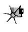
Without good design, good algorithms, and complete understanding of the program’s operation, your carefully optimized code will amount to one of mankind’s least fruitful creations—a fast slow program.
“What’s a fast slow program?” you ask. That’s a good question, and a brief (true) story is perhaps the best answer.
In the early 1970s, as the first hand-held calculators were hitting the market, I knew a fellow named Irwin. He was a good student, and was planning to be an engineer. Being an engineer back then meant knowing how to use a slide rule, and Irwin could jockey a slipstick with the best of them. In fact, he was so good that he challenged a fellow with a calculator to a duel—and won, becoming a local legend in the process.
When you get right down to it, though, Irwin was spitting into the wind. In a few short years his hard-earned slipstick skills would be worthless, and the entire discipline would be essentially wiped from the face of the earth. What’s more, anyone with half a brain could see that changeover coming. Irwin had basically wasted the considerable effort and time he had spent optimizing his soon-to-be-obsolete skills.
What does all this have to do with programming? Plenty. When you spend time optimizing poorly-designed assembly code, or when you count on an optimizing compiler to make your code fast, you’re wasting the optimization, much as Irwin did. Particularly in assembly, you’ll find that without proper up-front design and everything else that goes into high-performance design, you’ll waste considerable effort and time on making an inherently slow program as fast as possible—which is still slow—when you could easily have improved performance a great deal more with just a little thought. As we’ll see, handcrafted assembly language and optimizing compilers matter, but less than you might think, in the grand scheme of things—and they scarcely matter at all unless they’re used in the context of a good design and a thorough understanding of both the task at hand and the PC.
We’ve got the following rules for creating high-performance software:
Making rules is easy; the hard part is figuring out how to apply them in the real world. For my money, examining some actual working code is always a good way to get a handle on programming concepts, so let’s look at some of the performance rules in action.
If we’re going to create high-performance code, first we have to know what that code is going to do. As an example, let’s write a program that generates a 16-bit checksum of the bytes in a file. In other words, the program will add each byte in a specified file in turn into a 16-bit value. This checksum value might be used to make sure that a file hasn’t been corrupted, as might occur during transmission over a modem or if a Trojan horse virus rears its ugly head. We’re not going to do anything with the checksum value other than print it out, however; right now we’re only interested in generating that checksum value as rapidly as possible.
How are we going to generate a checksum value for a specified file? The logical approach is to get the file name, open the file, read the bytes out of the file, add them together, and print the result. Most of those actions are straightforward; the only tricky part lies in reading the bytes and adding them together.
Actually, we’re only going to make one little map, because we only have one program section that requires much thought—the section that reads the bytes and adds them up. What’s the best way to do this?
It would be convenient to load the entire file into memory and then sum the bytes in one loop. Unfortunately, there’s no guarantee that any particular file will fit in the available memory; in fact, it’s a sure thing that many files won’t fit into memory, so that approach is out.
Well, if the whole file won’t fit into memory, one byte surely will. If we read the file one byte at a time, adding each byte to the checksum value before reading the next byte, we’ll minimize memory requirements and be able to handle any size file at all.
Sounds good, eh? Listing 1.1 shows an implementation of this
approach. Listing 1.1 uses C’s read() function to read a
single byte, adds the byte into the checksum value, and loops back to
handle the next byte until the end of the file is reached. The code is
compact, easy to write, and functions perfectly—with one slight
hitch:
It’s slow.
LISTING 1.1 L1-1.C
/*
* Program to calculate the 16-bit checksum of all bytes in the
* specified file. Obtains the bytes one at a time via read(),
* letting DOS perform all data buffering.
*/
#include <stdio.h>
#include <fcntl.h>
main(int argc, char *argv[]) {
int Handle;
unsigned char Byte;
unsigned int Checksum;
int ReadLength;
if ( argc != 2 ) {
printf("usage: checksum filename\n");
exit(1);
}
if ( (Handle = open(argv[1], O_RDONLY | O_BINARY)) == -1 ) {
printf("Can't open file: %s\n", argv[1]);
exit(1);
}
/* Initialize the checksum accumulator */
Checksum = 0;
/* Add each byte in turn into the checksum accumulator */
while ( (ReadLength = read(Handle, &Byte, sizeof(Byte))) > 0 ) {
Checksum += (unsigned int) Byte;
}
if ( ReadLength == -1 ) {
printf("Error reading file %s\n", argv[1]);
exit(1);
}
/* Report the result */
printf("The checksum is: %u\n", Checksum);
exit(0);
}Table 1.1 shows the time taken for Listing 1.1 to generate a checksum of the WordPerfect version 4.2 thesaurus file, TH.WP (362,293 bytes in size), on a 10 MHz AT machine of no special parentage. Execution times are given for Listing 1.1 compiled with Borland and Microsoft compilers, with optimization both on and off; all four times are pretty much the same, however, and all are much too slow to be acceptable. Listing 1.1 requires over two and one-half minutes to checksum one file!
Listings 1.2 and 1.3 form the C/assembly equivalent to Listing 1.1, and Listings 1.6 and 1.7 form the C/assembly equivalent to Listing 1.5.
These results make it clear that it’s folly to rely on your compiler’s optimization to make your programs fast. Listing 1.1 is simply poorly designed, and no amount of compiler optimization will compensate for that failing. To drive home the point, Listings 1.2 and 1.3, which together are equivalent to Listing 1.1 except that the entire checksum loop is written in tight assembly code. The assembly language implementation is indeed faster than any of the C versions, as shown in Table 1.1, but it’s less than 10 percent faster, and it’s still unacceptably slow.
| Listing | Borland | Microsoft | Borland | Microsoft | Assembly | Optimization Ratio |
|---|---|---|---|---|---|---|
| (no opt) | (no opt) | (opt) | (opt) | |||
| 1 | 166.9 | 166.8 | 167.0 | 165.8 | 155.1 | 1.08 |
| 4 | 13.5 | 13.6 | 13.5 | 13.5 | … | 1.01 |
| 5 | 4.7 | 5.5 | 3.8 | 3.4 | 2.7 | 2.04 |
| Ratio best designed to worst designed | 35.51 | 30.33 | 43.95 | 48.76 | 57.44 |
Note: The execution times (in seconds) for this chapter’s listings were timed when the compiled listings were run on the WordPerfect 4.2 thesaurus file TH.WP (362,293 bytes in size), as compiled in the small model with Borland and Microsoft compilers with optimization on (opt) and off (no opt). All times were measured with Paradigm Systems’ TIMER program on a 10 MHz 1-wait-state AT clone with a 28-ms hard disk, with disk caching turned off.
LISTING 1.2 L1-2.C
/*
* Program to calculate the 16-bit checksum of the stream of bytes
* from the specified file. Obtains the bytes one at a time in
* assembler, via direct calls to DOS.
*/
#include <stdio.h>
#include <fcntl.h>
main(int argc, char *argv[]) {
int Handle;
unsigned char Byte;
unsigned int Checksum;
int ReadLength;
if ( argc != 2 ) {
printf("usage: checksum filename\n");
exit(1);
}
if ( (Handle = open(argv[1], O_RDONLY | O_BINARY)) == -1 ) {
printf("Can't open file: %s\n", argv[1]);
exit(1);
}
if ( !ChecksumFile(Handle, &Checksum) ) {
printf("Error reading file %s\n", argv[1]);
exit(1);
}
/* Report the result */
printf("The checksum is: %u\n", Checksum);
exit(0);
}LISTING 1.3 L1-3.ASM
; Assembler subroutine to perform a 16-bit checksum on the file
; opened on the passed-in handle. Stores the result in the
; passed-in checksum variable. Returns 1 for success, 0 for error.
;
; Call as:
; int ChecksumFile(unsigned int Handle, unsigned int *Checksum);
;
; where:
; Handle = handle # under which file to checksum is open
; Checksum = pointer to unsigned int variable checksum is
; to be stored in
;
; Parameter structure:
;
Parms struc
dw ? ;pushed BP
dw ? ;return address
Handle dw ?
Checksum dw ?
Parms ends
;
.model small
.data
TempWord label word
TempByte db ? ;each byte read by DOS will be stored here
db 0 ;high byte of TempWord is always 0
;for 16-bit adds
;
.code
public _ChecksumFile
_ChecksumFile proc near
push bp
mov bp,sp
push si ;save C's register variable
;
mov bx,[bp+Handle] ;get file handle
sub si,si ;zero the checksum ;accumulator
mov cx,1 ;request one byte on each ;read
mov dx,offset TempByte ;point DX to the byte in
;which DOS should store
;each byte read
ChecksumLoop:
mov ah,3fh ;DOS read file function #
int 21h ;read the byte
jc ErrorEnd ;an error occurred
and ax,ax ;any bytes read?
jz Success ;no-end of file reached-we're done
add si,[TempWord] ;add the byte into the
;checksum total
jmp ChecksumLoop
ErrorEnd:
sub ax,ax ;error
jmp short Done
Success:
mov bx,[bp+Checksum] ;point to the checksum variable
mov [bx],si ;save the new checksum
mov ax,1 ;success
;
Done:
pop si ;restore C's register variable
pop bp
ret
_ChecksumFile endp
endThe lesson is clear: Optimization makes code faster, but without proper design, optimization just creates fast slow code.
Well, then, how are we going to improve our design? Before we can do that, we have to understand what’s wrong with the current design.
Just why is Listing 1.1 so slow? In a word: overhead. The C library
implements the read() function by calling DOS to read the
desired number of bytes. (I figured this out by watching the code
execute with a debugger, but you can buy library source code from both
Microsoft and Borland.) That means that Listing 1.1 (and Listing 1.3 as
well) executes one DOS function per byte processed—and DOS functions,
especially this one, come with a lot of overhead.
For starters, DOS functions are invoked with interrupts, and
interrupts are among the slowest instructions of the x86 family CPUs.
Then, DOS has to set up internally and branch to the desired function,
expending more cycles in the process. Finally, DOS has to search its own
buffers to see if the desired byte has already been read, read it from
the disk if not, store the byte in the specified location, and return.
All of that takes a long time—far, far longer than the rest of
the main loop in Listing 1.1. In short, Listing 1.1 spends virtually all
of its time executing read(), and most of that time is
spent somewhere down in DOS.
You can verify this for yourself by watching the code with a debugger or using a code profiler, but take my word for it: There’s a great deal of overhead to DOS calls, and that’s what’s draining the life out of Listing 1.1.
How can we speed up Listing 1.1? It should be clear that we must somehow avoid invoking DOS for every byte in the file, and that means reading more than one byte at a time, then buffering the data and parceling it out for examination one byte at a time. By gosh, that’s a description of C’s stream I/O feature, whereby C reads files in chunks and buffers the bytes internally, doling them out to the application as needed by reading them from memory rather than calling DOS. Let’s try using stream I/O and see what happens.
Listing 1.4 is similar to Listing 1.1, but uses fopen()
and getc() (rather than open() and
read()) to access the file being checksummed. The results
confirm our theories splendidly, and validate our new design. As shown
in Table 1.1, Listing 1.4 runs more than an order of magnitude faster
than even the assembly version of Listing 1.1, even though Listing
1.1 and Listing 1.4 look almost the same. To the casual observer,
read() and getc() would seem slightly
different but pretty much interchangeable, and yet in this application
the performance difference between the two is about the same as that
between a 4.77 MHz PC and a 16 MHz 386.
Make sure you understand what really goes on when you insert a seemingly-innocuous function call into the time-critical portions of your code.
In this case that means knowing how DOS and the C/C++ file-access libraries do their work. In other words, know the territory!
LISTING 1.4 L1-4.C
/*
* Program to calculate the 16-bit checksum of the stream of bytes
* from the specified file. Obtains the bytes one at a time via
* getc(), allowing C to perform data buffering.
*/
#include <stdio.h>
main(int argc, char *argv[]) {
FILE *CheckFile;
int Byte;
unsigned int Checksum;
if ( argc != 2 ) {
printf("usage: checksum filename\n");
exit(1);
}
if ( (CheckFile = fopen(argv[1], "rb")) == NULL ) {
printf("Can't open file: %s\n", argv[1]);
exit(1);
}
/* Initialize the checksum accumulator */
Checksum = 0;
/* Add each byte in turn into the checksum accumulator */
while ( (Byte = getc(CheckFile)) != EOF ) {
Checksum += (unsigned int) Byte;
}
/* Report the result */
printf("The checksum is: %u\n", Checksum);
exit(0);
}The last section contained a particularly interesting phrase: the time-critical portions of your code. Time-critical portions of your code are those portions in which the speed of the code makes a significant difference in the overall performance of your program—and by “significant,” I don’t mean that it makes the code 100 percent faster, or 200 percent, or any particular amount at all, but rather that it makes the program more responsive and/or usable from the user’s perspective.
Don’t waste time optimizing non-time-critical code: set-up code, initialization code, and the like. Spend your time improving the performance of the code inside heavily-used loops and in the portions of your programs that directly affect response time. Notice, for example, that I haven’t bothered to implement a version of the checksum program entirely in assembly; Listings 1.2 and 1.6 call assembly subroutines that handle the time-critical operations, but C is still used for checking command-line parameters, opening files, printing, and the like.
If you were to implement any of the listings in this chapter entirely in hand-optimized assembly, I suppose you might get a performance improvement of a few percent—but I rather doubt you’d get even that much, and you’d sure as heck spend an awful lot of time for whatever meager improvement does result. Let C do what it does well, and use assembly only when it makes a perceptible difference.
Besides, we don’t want to optimize until the design is refined to our satisfaction, and that won’t be the case until we’ve thought about other approaches.
Listing 1.4 is good, but let’s see if there are other—perhaps less
obvious—ways to get the same results faster. Let’s start by considering
why Listing 1.4 is so much better than Listing 1.1. Like
read(), getc() calls DOS to read from the
file; the speed improvement of Listing 1.4 over Listing 1.1 occurs
because getc() reads many bytes at once via DOS, then
manages those bytes for us. That’s faster than reading them one at a
time using read()—but there’s no reason to think that it’s
faster than having our program read and manage blocks itself. Easier,
yes, but not faster.
Consider this: Every invocation of getc() involves
pushing a parameter, executing a call to the C library function, getting
the parameter (in the C library code), looking up information about the
desired stream, unbuffering the next byte from the stream, and returning
to the calling code. That takes a considerable amount of time,
especially by contrast with simply maintaining a pointer to a buffer and
whizzing through the data in the buffer inside a single loop.
There are four reasons that many programmers would give for not trying to improve on Listing 1.4:
The code is already fast enough.
The code works, and some people are content with code that works, even when it’s slow enough to be annoying.
The C library is written in optimized assembly, and it’s likely to be faster than any code that the average programmer could write to perform essentially the same function.
The C library conveniently handles the buffering of file data, and it would be a nuisance to have to implement that capability.
I’ll ignore the first reason, both because performance is no longer an issue if the code is fast enough and because the current application does not run fast enough—13 seconds is a long time. (Stop and wait for 13 seconds while you’re doing something intense, and you’ll see just how long it is.)
The second reason is the hallmark of the mediocre programmer. Know when optimization matters—and then optimize when it does!
The third reason is often fallacious. C library functions are not always written in assembly, nor are they always particularly well-optimized. (In fact, they’re often written for portability, which has nothing to do with optimization.) What’s more, they’re general-purpose functions, and often can be outperformed by well-but-not-brilliantly-written code that is well-matched to a specific task. As an example, consider Listing 1.5, which uses internal buffering to handle blocks of bytes at a time. Table 1.1 shows that Listing 1.5 is 2.5 to 4 times faster than Listing 1.4 (and as much as 49 times faster than Listing 1.1!), even though it uses no assembly at all.
Clearly, you can do well by using special-purpose C code in place of a C library function—if you have a thorough understanding of how the C library function operates and exactly what your application needs done. Otherwise, you’ll end up rewriting C library functions in C, which makes no sense at all.
LISTING 1.5 L1-5.C
/*
* Program to calculate the 16-bit checksum of the stream of bytes
* from the specified file. Buffers the bytes internally, rather
* than letting C or DOS do the work.
*/
#include <stdio.h>
#include <fcntl.h>
#include <alloc.h> /* alloc.h for Borland,
malloc.h for Microsoft */
#define BUFFER_SIZE 0x8000 /* 32Kb data buffer */
main(int argc, char *argv[]) {
int Handle;
unsigned int Checksum;
unsigned char *WorkingBuffer, *WorkingPtr;
int WorkingLength, LengthCount;
if ( argc != 2 ) {
printf("usage: checksum filename\n");
exit(1);
}
if ( (Handle = open(argv[1], O_RDONLY | O_BINARY)) == -1 ) {
printf("Can't open file: %s\n", argv[1]);
exit(1);
}
/* Get memory in which to buffer the data */
if ( (WorkingBuffer = malloc(BUFFER_SIZE)) == NULL ) {
printf("Can't get enough memory\n");
exit(1);
}
/* Initialize the checksum accumulator */
Checksum = 0;
/* Process the file in BUFFER_SIZE chunks */
do {
if ( (WorkingLength = read(Handle, WorkingBuffer,
BUFFER_SIZE)) == -1 ) {
printf("Error reading file %s\n", argv[1]);
exit(1);
}
/* Checksum this chunk */
WorkingPtr = WorkingBuffer;
LengthCount = WorkingLength;
while ( LengthCount-- ) {
/* Add each byte in turn into the checksum accumulator */
Checksum += (unsigned int) *WorkingPtr++;
}
} while ( WorkingLength );
/* Report the result */
printf("The checksum is: %u\n", Checksum);
exit(0);
}That brings us to the fourth reason: avoiding an internal-buffered implementation like Listing 1.5 because of the difficulty of coding such an approach. True, it is easier to let a C library function do the work, but it’s not all that hard to do the buffering internally. The key is the concept of handling data in restartable blocks; that is, reading a chunk of data, operating on the data until it runs out, suspending the operation while more data is read in, and then continuing as though nothing had happened.
In Listing 1.5 the restartable block implementation is pretty simple because checksumming works with one byte at a time, forgetting about each byte immediately after adding it into the total. Listing 1.5 reads in a block of bytes from the file, checksums the bytes in the block, and gets another block, repeating the process until the entire file has been processed. In Chapter 5, we’ll see a more complex restartable block implementation, involving searching for text strings.
At any rate, Listing 1.5 isn’t much more complicated than Listing 1.4—and it’s a lot faster. Always consider the alternatives; a bit of clever thinking and program redesign can go a long way.
I have said time and again that optimization is pointless until the design is settled. When that time comes, however, optimization can indeed make a significant difference. Table 1.1 indicates that the optimized version of Listing 1.5 produced by Microsoft C outperforms an unoptimized version of the same code by more than 60 percent. What’s more, a mostly-assembly version of Listing 1.5, shown in Listings 1.6 and 1.7, outperforms even the best-optimized C version of Listing 1.5 by 26 percent. These are considerable improvements, well worth pursuing—once the design has been maxed out.
LISTING 1.6 L1-6.C
/*
* Program to calculate the 16-bit checksum of the stream of bytes
* from the specified file. Buffers the bytes internally, rather
* than letting C or DOS do the work, with the time-critical
* portion of the code written in optimized assembler.
*/
#include <stdio.h>
#include <fcntl.h>
#include <alloc.h> /* alloc.h for Borland,
malloc.h for Microsoft */
#define BUFFER_SIZE 0x8000 /* 32K data buffer */
main(int argc, char *argv[]) {
int Handle;
unsigned int Checksum;
unsigned char *WorkingBuffer;
int WorkingLength;
if ( argc != 2 ) {
printf("usage: checksum filename\n");
exit(1);
}
if ( (Handle = open(argv[1], O_RDONLY | O_BINARY)) == -1 ) {
printf("Can't open file: %s\n", argv[1]);
exit(1);
}
/* Get memory in which to buffer the data */
if ( (WorkingBuffer = malloc(BUFFER_SIZE)) == NULL ) {
printf("Can't get enough memory\n");
exit(1);
}
/* Initialize the checksum accumulator */
Checksum = 0;
/* Process the file in 32K chunks */
do {
if ( (WorkingLength = read(Handle, WorkingBuffer,
BUFFER_SIZE)) == -1 ) {
printf("Error reading file %s\n", argv[1]);
exit(1);
}
/* Checksum this chunk if there's anything in it */
if ( WorkingLength )
ChecksumChunk(WorkingBuffer, WorkingLength, &Checksum);
} while ( WorkingLength );
/* Report the result */
printf("The checksum is: %u\n", Checksum);
exit(0);
}LISTING 1.7 L1-7.ASM
; Assembler subroutine to perform a 16-bit checksum on a block of
; bytes 1 to 64K in size. Adds checksum for block into passed-in
; checksum.
;
; Call as:
; void ChecksumChunk(unsigned char *Buffer,
; unsigned int BufferLength, unsigned int *Checksum);
;
; where:
; Buffer = pointer to start of block of bytes to checksum
; BufferLength = # of bytes to checksum (0 means 64K, not 0)
; Checksum = pointer to unsigned int variable checksum is
;stored in
;
; Parameter structure:
;
Parms struc
dw ? ;pushed BP
dw ? ;return address
Buffer dw ?
BufferLength dw ?
Checksum dw ?
Parms ends
;
.model small
.code
public _ChecksumChunk
_ChecksumChunk proc near
push bp
mov bp,sp
push si ;save C's register variable
;
cld ;make LODSB increment SI
mov si,[bp+Buffer] ;point to buffer
mov cx,[bp+BufferLength] ;get buffer length
mov bx,[bp+Checksum] ;point to checksum variable
mov dx,[bx] ;get the current checksum
sub ah,ah ;so AX will be a 16-bit value after LODSB
ChecksumLoop:
lodsb ;get the next byte
add dx,ax ;add it into the checksum total
loop ChecksumLoop ;continue for all bytes in block
mov [bx],dx ;save the new checksum
;
pop si ;restore C's register variable
pop bp
ret
_ChecksumChunk endp
endNote that in Table 1.1, optimization makes little difference except in the case of Listing 1.5, where the design has been refined considerably. Execution time in the other cases is dominated by time spent in DOS and/or the C library, so optimization of the code you write is pretty much irrelevant. What’s more, while the approximately two-times improvement we got by optimizing is not to be sneezed at, it pales against the up-to-50-times improvement we got by redesigning.
By the way, the execution times even of Listings 1.6 and 1.7 are dominated by DOS disk access times. If a disk cache is enabled and the file to be checksummed is already in the cache, the assembly version is three times as fast as the C version. In other words, the inherent nature of this application limits the performance improvement that can be obtained via assembly. In applications that are more CPU-intensive and less disk-bound, particularly those applications in which string instructions and/or unrolled loops can be used effectively, assembly tends to be considerably faster relative to C than it is in this very specific case.
Don’t get hung up on optimizing compilers or assembly language—the best optimizer is between your ears.
All this is basically a way of saying: Know where you’re going, know the territory, and know when it matters.
What have we learned? Don’t let other people’s code—even DOS—do the work for you when speed matters, at least not without knowing what that code does and how well it performs.
Optimization only matters after you’ve done your part on the program design end. Consider the ratios on the vertical axis of Table 1.1, which show that optimization is almost totally wasted in the checksumming application without an efficient design. Optimization is no panacea. Table 1.1 shows a two-times improvement from optimization—and a 50-times-plus improvement from redesign. The longstanding debate about which C compiler optimizes code best doesn’t matter quite so much in light of Table 1.1, does it? Your organic optimizer matters much more than your compiler’s optimizer, and there’s always assembly for those usually small sections of code where performance really matters.
This chapter has presented a quick step-by-step overview of the design process. I’m not claiming that this is the only way to create high-performance code; it’s just an approach that works for me. Create code however you want, but never forget that design matters more than detailed optimization. Never stop looking for inventive ways to boost performance—and never waste time speeding up code that doesn’t need to be sped up.
I’m going to focus on specific ways to create high-performance code from now on. In Chapter 5, we’ll continue to look at restartable blocks and internal buffering, in the form of a program that searches files for text strings.
As I showed in the previous chapter, optimization is by no means always a matter of “dropping into assembly.” In fact, in performance tuning high-level language code, assembly should be used rarely, and then only after you’ve made sure a badly chosen or clumsily implemented algorithm isn’t eating you alive. Certainly if you use assembly at all, make absolutely sure you use it right. The potential of assembly code to run slowly is poorly understood by a lot of people, but that potential is great, especially in the hands of the ignorant.
Truly great optimization, however, happens only at the assembly level, and it happens in response to a set of dynamics that is totally different from that governing C/C++ or Pascal optimization. I’ll be speaking of assembly-level optimization time and again in this book, but when I do, I think it will be helpful if you have a grasp of those assembly specific dynamics.
As usual, the best way to wade in is to present a real-world example.
Some time ago, I was asked to work over a critical assembly subroutine in order to make it run as fast as possible. The task of the subroutine was to construct a nibble out of four bits read from different bytes, rotating and combining the bits so that they ultimately ended up neatly aligned in bits 3-0 of a single byte. (In case you’re curious, the object was to construct a 16-color pixel from bits scattered over 4 bytes.) I examined the subroutine line by line, saving a cycle here and a cycle there, until the code truly seemed to be optimized. When I was done, the key part of the code looked something like this:
LoopTop:
lodsb ;get the next byte to extract a bit from
and al,ah ;isolate the bit we want
rol al,cl ;rotate the bit into the desired position
or bl,al ;insert the bit into the final nibble
dec cx ;the next bit goes 1 place to the right
dec dx ;count down the number of bits
jnz LoopTop ;process the next bit, if anyNow, it’s hard to write code that’s much faster than seven instructions, only one of which accesses memory, and most programmers would have called it a day at this point. Still, something bothered me, so I spent a bit of time going over the code again. Suddenly, the answer struck me—the code was rotating each bit into place separately, so that a multibit rotation was being performed every time through the loop, for a total of four separate time-consuming multibit rotations!
While the instructions themselves were individually optimized, the overall approach did not make the best possible use of the instructions.
I changed the code to the following:
LoopTop:
lodsb ;get the next byte to extract a bit from
and al,ah ;isolate the bit we want
or bl,al ;insert the bit into the final nibble
rol bl,1 ;make room for the next bit
dec dx ;count down the number of bits
jnz LoopTop ;process the next bit, if any
rol bl,cl ;rotate all four bits into their final
; positions at the same timeThis moved the costly multibit rotation out of the loop so that it
was performed just once, rather than four times. While the code may not
look much different from the original, and in fact still contains
exactly the same number of instructions, the performance of the entire
subroutine improved by about 10 percent from just this one change.
(Incidentally, that wasn’t the end of the optimization; I eliminated the
DEC and JNZ instructions by expanding the four
iterations of the loop—but that’s a tale for another chapter.)
The point is this: To write truly superior assembly programs, you need to know what the various instructions do and which instructions execute fastest…and more. You must also learn to look at your programming problems from a variety of perspectives so that you can put those fast instructions to work in the most effective ways.
Is it really so hard as all that to write good assembly code for the PC? Yes! Thanks to the decidedly quirky nature of the x86 family CPUs, assembly language differs fundamentally from other languages, and is undeniably harder to work with. On the other hand, the potential of assembly code is much greater than that of other languages, as well.
To understand why this is so, consider how a program gets written. A programmer examines the requirements of an application, designs a solution at some level of abstraction, and then makes that design come alive in a code implementation. If not handled properly, the transformation that takes place between conception and implementation can reduce performance tremendously; for example, a programmer who implements a routine to search a list of 100,000 sorted items with a linear rather than binary search will end up with a disappointingly slow program.
No matter how well an implementation is derived from the corresponding design, however, high-level languages like C/C++ and Pascal inevitably introduce additional transformation inefficiencies, as shown in Figure 2.1.
The process of turning a design into executable code by way of a high-level language involves two transformations: one performed by the programmer to generate source code, and another performed by the compiler to turn source code into machine language instructions. Consequently, the machine language code generated by compilers is usually less than optimal given the requirements of the original design.
High-level languages provide artificial environments that lend themselves relatively well to human programming skills, in order to ease the transition from design to implementation. The price for this ease of implementation is a considerable loss of efficiency in transforming source code into machine language. This is particularly true given that the x86 family in real and 16-bit protected mode, with its specialized memory-addressing instructions and segmented memory architecture, does not lend itself particularly well to compiler design. Even the 32-bit mode of the 386 and its successors, with their more powerful addressing modes, offer fewer registers than compilers would like.
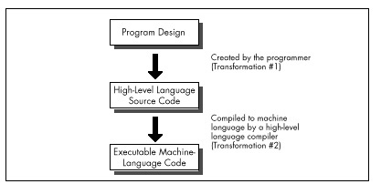
Assembly, on the other hand, is simply a human-oriented representation of machine language. As a result, assembly provides a difficult programming environment—the bare hardware and systems software of the computer—but properly constructed assembly programs suffer no transformation loss, as shown in Figure 2.2.
Only one transformation is required when creating an assembler program, and that single transformation is completely under the programmer’s control. Assemblers perform no transformation from source code to machine language; instead, they merely map assembler instructions to machine language instructions on a one-to-one basis. As a result, the programmer is able to produce machine language code that’s precisely tailored to the needs of each task a given application requires.
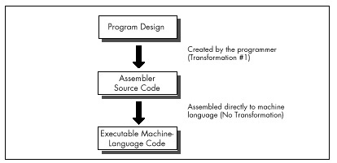
The key, of course, is the programmer, since in assembly the programmer must essentially perform the transformation from the application specification to machine language entirely on his or her own. (The assembler merely handles the direct translation from assembly to machine language.)
The first part of assembly language optimization, then, is self. An assembler is nothing more than a tool to let you design machine-language programs without having to think in hexadecimal codes. So assembly language programmers—unlike all other programmers—must take full responsibility for the quality of their code. Since assemblers provide little help at any level higher than the generation of machine language, the assembly programmer must be capable both of coding any programming construct directly and of controlling the PC at the lowest practical level—the operating system, the BIOS, even the hardware where necessary. High-level languages handle most of this transparently to the programmer, but in assembly everything is fair—and necessary—game, which brings us to another aspect of assembly optimization: knowledge.
In the PC world, you can never have enough knowledge, and every item you add to your store will make your programs better. Thorough familiarity with both the operating system APIs and BIOS interfaces is important; since those interfaces are well-documented and reasonably straightforward, my advice is to get a good book or two and bring yourself up to speed. Similarly, familiarity with the PC hardware is required. While that topic covers a lot of ground—display adapters, keyboards, serial ports, printer ports, timer and DMA channels, memory organization, and more—most of the hardware is well-documented, and articles about programming major hardware components appear frequently in the literature, so this sort of knowledge can be acquired readily enough.
The single most critical aspect of the hardware, and the one about which it is hardest to learn, is the CPU. The x86 family CPUs have a complex, irregular instruction set, and, unlike most processors, they are neither straightforward nor well-documented true code performance. What’s more, assembly is so difficult to learn that most articles and books that present assembly code settle for code that just works, rather than code that pushes the CPU to its limits. In fact, since most articles and books are written for inexperienced assembly programmers, there is very little information of any sort available about how to generate high-quality assembly code for the x86 family CPUs. As a result, knowledge about programming them effectively is by far the hardest knowledge to gather. A good portion of this book is devoted to seeking out such knowledge.
Be forewarned, though: No matter how much you learn about programming the PC in assembly, there’s always more to discover.
Is the never-ending collection of information all there is to the assembly optimization, then? Hardly. Knowledge is simply a necessary base on which to build. Let’s take a moment to examine the objectives of good assembly programming, and the remainder of the forces that act on assembly optimization will fall into place.
Basically, there are only two possible objectives to high-performance assembly programming: Given the requirements of the application, keep to a minimum either the number of processor cycles the program takes to run, or the number of bytes in the program, or some combination of both. We’ll look at ways to achieve both objectives, but we’ll more often be concerned with saving cycles than saving bytes, for the PC generally offers relatively more memory than it does processing horsepower. In fact, we’ll find that two-to-three times performance improvements over already tight assembly code are often possible if we’re willing to spend additional bytes in order to save cycles. It’s not always desirable to use such techniques to speed up code, due to the heavy memory requirements—but it is almost always possible.
You will notice that my short list of objectives for high-performance assembly programming does not include traditional objectives such as easy maintenance and speed of development. Those are indeed important considerations—to persons and companies that develop and distribute software. People who actually buy software, on the other hand, care only about how well that software performs, not how it was developed nor how it is maintained. These days, developers spend so much time focusing on such admittedly important issues as code maintainability and reusability, source code control, choice of development environment, and the like that they often forget rule #1: From the user’s perspective, performance is fundamental.
Comment your code, design it carefully, and write non-time-critical portions in a high-level language, if you wish—but when you write the portions that interact with the user and/or affect response time, performance must be your paramount objective, and assembly is the path to that goal.
Knowledge of the sort described earlier is absolutely essential to fulfilling either of the objectives of assembly programming. What that knowledge doesn’t do by itself is meet the need to write code that both performs to the requirements of the application at hand and also operates as efficiently as possible in the PC environment. Knowledge makes that possible, but your programming instincts make it happen. And it is that intuitive, on-the-fly integration of a program specification and a sea of facts about the PC that is the heart of the Zen-class assembly optimization.
As with Zen of any sort, mastering that Zen of assembly language is more a matter of learning than of being taught. You will have to find your own path of learning, although I will start you on your way with this book. The subtle facts and examples I provide will help you gain the necessary experience, but you must continue the journey on your own. Each program you create will expand your programming horizons and increase the options available to you in meeting the next challenge. The ability of your mind to find surprising new and better ways to craft superior code from a concept—the flexible mind, if you will—is the linchpin of good assembler code, and you will develop this skill only by doing.
Never underestimate the importance of the flexible mind. Good assembly code is better than good compiled code. Many people would have you believe otherwise, but they’re wrong. That doesn’t mean that high-level languages are useless; far from it. High-level languages are the best choice for the majority of programmers, and for the bulk of the code of most applications. When the best code—the fastest or smallest code possible—is needed, though, assembly is the only way to go.
Simple logic dictates that no compiler can know as much about what a piece of code needs to do or adapt as well to those needs as the person who wrote the code. Given that superior information and adaptability, an assembly language programmer can generate better code than a compiler, all the more so given that compilers are constrained by the limitations of high-level languages and by the process of transformation from high-level to machine language. Consequently, carefully optimized assembly is not just the language of choice but the only choice for the 1 percent to 10 percent of code—usually consisting of small, well-defined subroutines—that determines overall program performance, and it is the only choice for code that must be as compact as possible, as well. In the run-of-the-mill, non-time-critical portions of your programs, it makes no sense to waste time and effort on writing optimized assembly code—concentrate your efforts on loops and the like instead; but in those areas where you need the finest code quality, accept no substitutes.
Note that I said that an assembly programmer can generate better code than a compiler, not will generate better code. While it is true that good assembly code is better than good compiled code, it is also true that bad assembly code is often much worse than bad compiled code; since the assembly programmer has so much control over the program, he or she has virtually unlimited opportunities to waste cycles and bytes. The sword cuts both ways, and good assembly code requires more, not less, forethought and planning than good code written in a high-level language.
The gist of all this is simply that good assembly programming is done in the context of a solid overall framework unique to each program, and the flexible mind is the key to creating that framework and holding it together.
To summarize, the skill of assembly language optimization is a combination of knowledge, perspective, and a way of thought that makes possible the genesis of absolutely the fastest or the smallest code. With that in mind, what should the first step be? Development of the flexible mind is an obvious step. Still, the flexible mind is no better than the knowledge at its disposal. The first step in the journey toward mastering optimization at that exalted level, then, would seem to be learning how to learn.
When you’re pushing the envelope in writing optimized PC code, you’re likely to become more than a little compulsive about finding approaches that let you wring more speed from your computer. In the process, you’re bound to make mistakes, which is fine—as long as you watch for those mistakes and learn from them.
A case in point: A few years back, I came across an article about 8088 assembly language called “Optimizing for Speed.” Now, “optimize” is not a word to be used lightly; Webster’s Ninth New Collegiate Dictionary defines optimize as “to make as perfect, effective, or functional as possible,” which certainly leaves little room for error. The author had, however, chosen a small, well-defined 8088 assembly language routine to refine, consisting of about 30 instructions that did nothing more than expand 8 bits to 16 bits by duplicating each bit.
The author of “Optimizing” had clearly fine-tuned the code with care, examining alternative instruction sequences and adding up cycles until he arrived at an implementation he calculated to be nearly 50 percent faster than the original routine. In short, he had used all the information at his disposal to improve his code, and had, as a result, saved cycles by the bushel. There was, in fact, only one slight problem with the optimized version of the routine….
It ran slower than the original version!
As diligent as the author had been, he had nonetheless committed a cardinal sin of x86 assembly language programming: He had assumed that the information available to him was both correct and complete. While the execution times provided by Intel for its processors are indeed correct, they are incomplete; the other—and often more important—part of code performance is instruction fetch time, a topic to which I will return in later chapters.
Had the author taken the time to measure the true performance of his code, he wouldn’t have put his reputation on the line with relatively low-performance code. What’s more, had he actually measured the performance of his code and found it to be unexpectedly slow, curiosity might well have led him to experiment further and thereby add to his store of reliable information about the CPU.
There you have an important tenet of assembly language optimization: After crafting the best code possible, check it in action to see if it’s really doing what you think it is. If it’s not behaving as expected, that’s all to the good, since solving mysteries is the path to knowledge. You’ll learn more in this way, I assure you, than from any manual or book on assembly language.
Assume nothing. I cannot emphasize this strongly enough—when you care about performance, do your best to improve the code and then measure the improvement. If you don’t measure performance, you’re just guessing, and if you’re guessing, you’re not very likely to write top-notch code.
Ignorance about true performance can be costly. When I wrote video games for a living, I spent days at a time trying to wring more performance from my graphics drivers. I rewrote whole sections of code just to save a few cycles, juggled registers, and relied heavily on blurry-fast register-to-register shifts and adds. As I was writing my last game, I discovered that the program ran perceptibly faster if I used look-up tables instead of shifts and adds for my calculations. It shouldn’t have run faster, according to my cycle counting, but it did. In truth, instruction fetching was rearing its head again, as it often does, and the fetching of the shifts and adds was taking as much as four times the nominal execution time of those instructions.
Ignorance can also be responsible for considerable wasted effort. I recall a debate in the letters column of one computer magazine about exactly how quickly text can be drawn on a Color/Graphics Adapter (CGA) screen without causing snow. The letter-writers counted every cycle in their timing loops, just as the author in the story that started this chapter had. Like that author, the letter-writers had failed to take the prefetch queue into account. In fact, they had neglected the effects of video wait states as well, so the code they discussed was actually much slower than their estimates. The proper test would, of course, have been to run the code to see if snow resulted, since the only true measure of code performance is observing it in action.
Clearly, one key to mastering Zen-class optimization is a tool with which to measure code performance. The most accurate way to measure performance is with expensive hardware, but reasonable measurements at no cost can be made with the PC’s 8253 timer chip, which counts at a rate of slightly over 1,000,000 times per second. The 8253 can be started at the beginning of a block of code of interest and stopped at the end of that code, with the resulting count indicating how long the code took to execute with an accuracy of about 1 microsecond. (A microsecond is one millionth of a second, and is abbreviated µs). To be precise, the 8253 counts once every 838.1 nanoseconds. (A nanosecond is one billionth of a second, and is abbreviated ns.)
Listing 3.1 shows 8253-based timer software, consisting of three
subroutines: ZTimerOn, ZTimerOff, and
ZTimerReport. For the remainder of this book, I’ll refer to
these routines collectively as the “Zen timer.” C-callable versions of
the two precision Zen timers are presented in Chapter K on the companion
CD-ROM.
LISTING 3.1 PZTIMER.ASM
; The precision Zen timer (PZTIMER.ASM)
;
; Uses the 8253 timer to time the performance of code that takes
; less than about 54 milliseconds to execute, with a resolution
; of better than 10 microseconds.
;
; By Michael Abrash
;
; Externally callable routines:
;
; ZTimerOn: Starts the Zen timer, with interrupts disabled.
;
; ZTimerOff: Stops the Zen timer, saves the timer count,
; times the overhead code, and restores interrupts to the
; state they were in when ZTimerOn was called.
;
; ZTimerReport: Prints the net time that passed between starting
; and stopping the timer.
;
; Note: If longer than about 54 ms passes between ZTimerOn and
; ZTimerOff calls, the timer turns over and the count is
; inaccurate. When this happens, an error message is displayed
; instead of a count. The long-period Zen timer should be used
; in such cases.
;
; Note: Interrupts *MUST* be left off between calls to ZTimerOn
; and ZTimerOff for accurate timing and for detection of
; timer overflow.
;
; Note: These routines can introduce slight inaccuracies into the
; system clock count for each code section timed even if
; timer 0 doesn't overflow. If timer 0 does overflow, the
; system clock can become slow by virtually any amount of
; time, since the system clock can't advance while the
; precison timer is timing. Consequently, it's a good idea
; to reboot at the end of each timing session. (The
; battery-backed clock, if any, is not affected by the Zen
; timer.)
;
; All registers, and all flags except the interrupt flag, are
; preserved by all routines. Interrupts are enabled and then disabled
; by ZTimerOn, and are restored by ZTimerOff to the state they were
; in when ZTimerOn was called.
;
Code segment word public 'CODE'
assume cs:Code, ds:nothing
public ZTimerOn, ZTimerOff, ZTimerReport
;
; Base address of the 8253 timer chip.
;
BASE_8253 equ 40h
;
; The address of the timer 0 count registers in the 8253.
;
TIMER_0_8253 equ BASE_8253 + 0
;
; The address of the mode register in the 8253.
;
MODE_8253 equ BASE_8253 + 3
;
; The address of Operation Command Word 3 in the 8259 Programmable
; Interrupt Controller (PIC) (write only, and writable only when
; bit 4 of the byte written to this address is 0 and bit 3 is 1).
;
OCW3 equ 20h
;
; The address of the Interrupt Request register in the 8259 PIC
; (read only, and readable only when bit 1 of OCW3 = 1 and bit 0
; of OCW3 = 0).
;
IRR equ 20h
;
; Macro to emulate a POPF instruction in order to fix the bug in some
; 80286 chips which allows interrupts to occur during a POPF even when
; interrupts remain disabled.
;
MPOPF macro
local p1, p2
jmp short p2
p1: iret ; jump to pushed address & pop flags
p2: push cs ; construct far return address to
call p1 ; the next instruction
endm
;
; Macro to delay briefly to ensure that enough time has elapsed
; between successive I/O accesses so that the device being accessed
; can respond to both accesses even on a very fast PC.
;
DELAY macro
jmp $+2
jmp $+2
jmp $+2
endm
OriginalFlags db ? ; storage for upper byte of
; FLAGS register when
; ZTimerOn called
TimedCount dw ? ; timer 0 count when the timer
; is stopped
ReferenceCount dw ? ; number of counts required to
; execute timer overhead code
OverflowFlag db ? ; used to indicate whether the
; timer overflowed during the
; timing interval
;
; String printed to report results.
;
OutputStr label byte
db 0dh, 0ah, 'Timed count: ', 5 dup (?)
ASCIICountEnd label byte
db ' microseconds', 0dh, 0ah
db '$'
;
; String printed to report timer overflow.
;
OverflowStr label byte
db 0dh, 0ah
db '****************************************************'
db 0dh, 0ah
db '* The timer overflowed, so the interval timed was *'
db 0dh, 0ah
db '* too long for the precision timer to measure. *'
db 0dh, 0ah
db '* Please perform the timing test again with the *'
db 0dh, 0ah
db '* long-period timer. *'
db 0dh, 0ah
db '****************************************************'
db 0dh, 0ah
db '$'
; ********************************************************************
; * Routine called to start timing. *
; ********************************************************************
ZTimerOn proc near
;
; Save the context of the program being timed.
;
push ax
pushf
pop ax ; get flags so we can keep
; interrupts off when leaving
; this routine
mov cs:[OriginalFlags],ah ; remember the state of the
; Interrupt flag
and ah,0fdh ; set pushed interrupt flag
; to 0
push ax
;
; Turn on interrupts, so the timer interrupt can occur if it's
; pending.
;
sti
;
; Set timer 0 of the 8253 to mode 2 (divide-by-N), to cause
; linear counting rather than count-by-two counting. Also
; leaves the 8253 waiting for the initial timer 0 count to
; be loaded.
;
mov al,00110100b ;mode 2
out MODE_8253,al
;
; Set the timer count to 0, so we know we won't get another
; timer interrupt right away.
; Note: this introduces an inaccuracy of up to 54 ms in the system
; clock count each time it is executed.
;
DELAY
sub al,al
out TIMER_0_8253,al ;lsb
DELAY
out TIMER_0_8253,al ;msb
;
; Wait before clearing interrupts to allow the interrupt generated
; when switching from mode 3 to mode 2 to be recognized. The delay
; must be at least 210 ns long to allow time for that interrupt to
; occur. Here, 10 jumps are used for the delay to ensure that the
; delay time will be more than long enough even on a very fast PC.
;
rept 10
jmp $+2
endm
;
; Disable interrupts to get an accurate count.
;
cli
;
; Set the timer count to 0 again to start the timing interval.
;
mov al,00110100b ; set up to load initial
out MODE_8253,al ; timer count
DELAY
sub al,al
out TIMER_0_8253,al ; load count lsb
DELAY
out TIMER_0_8253,al; load count msb
;
; Restore the context and return.
;
MPOPF ; keeps interrupts off
pop ax
ret
ZTimerOn endp
;********************************************************************
;* Routine called to stop timing and get count. *
;********************************************************************
ZTimerOff proc near
;
; Save the context of the program being timed.
;
push ax
push cx
pushf
;
; Latch the count.
;
mov al,00000000b ; latch timer 0
out MODE_8253,al
;
; See if the timer has overflowed by checking the 8259 for a pending
; timer interrupt.
;
mov al,00001010b ; OCW3, set up to read
out OCW3,al ; Interrupt Request register
DELAY
in al,IRR ; read Interrupt Request
; register
and al,1 ; set AL to 1 if IRQ0 (the
; timer interrupt) is pending
mov cs:[OverflowFlag],al; store the timer overflow
; status
;
; Allow interrupts to happen again.
;
sti
;
; Read out the count we latched earlier.
;
in al,TIMER_0_8253 ; least significant byte
DELAY
mov ah,al
in al,TIMER_0_8253 ; most significant byte
xchg ah,al
neg ax ; convert from countdown
; remaining to elapsed
; count
mov cs:[TimedCount],ax
; Time a zero-length code fragment, to get a reference for how
; much overhead this routine has. Time it 16 times and average it,
; for accuracy, rounding the result.
;
mov cs:[ReferenceCount],0
mov cx,16
cli ; interrupts off to allow a
; precise reference count
RefLoop:
call ReferenceZTimerOn
call ReferenceZTimerOff
loop RefLoop
sti
add cs:[ReferenceCount],8; total + (0.5 * 16)
mov cl,4
shr cs:[ReferenceCount],cl; (total) / 16 + 0.5
;
; Restore original interrupt state.
;
pop ax ; retrieve flags when called
mov ch,cs:[OriginalFlags] ; get back the original upper
; byte of the FLAGS register
and ch,not 0fdh ; only care about original
; interrupt flag...
and ah,0fdh ; ...keep all other flags in
; their current condition
or ah,ch ; make flags word with original
; interrupt flag
push ax ; prepare flags to be popped
;
; Restore the context of the program being timed and return to it.
;
MPOPF ; restore the flags with the
; original interrupt state
pop cx
pop ax
ret
ZTimerOff endp
;
; Called by ZTimerOff to start timer for overhead measurements.
;
ReferenceZTimerOn proc near
;
; Save the context of the program being timed.
;
push ax
pushf ; interrupts are already off
;
; Set timer 0 of the 8253 to mode 2 (divide-by-N), to cause
; linear counting rather than count-by-two counting.
;
mov al,00110100b ; set up to load
out MODE_8253,al ; initial timer count
DELAY
;
; Set the timer count to 0.
;
sub al,al
out TIMER_0_8253,al; load count lsb
DELAY
out TIMER_0_8253,al; load count msb
;
; Restore the context of the program being timed and return to it.
;
MPOPF
pop ax
ret
ReferenceZTimerOn endp
;
; Called by ZTimerOff to stop timer and add result to ReferenceCount
; for overhead measurements.
;
ReferenceZTimerOff proc near
;
; Save the context of the program being timed.
;
push ax
push cx
pushf
;
; Latch the count and read it.
;
mov al,00000000b ; latch timer 0
out MODE_8253,al
DELAY
in al,TIMER_0_8253 ; lsb
DELAY
mov ah,al
in al,TIMER_0_8253 ; msb
xchg ah,al
neg ax ; convert from countdown
; remaining to amount
; counted down
add cs:[ReferenceCount],ax
;
; Restore the context of the program being timed and return to it.
;
MPOPF
pop cx
pop ax
ret
ReferenceZTimerOff endp
; ********************************************************************
; * Routine called to report timing results. *
; ********************************************************************
ZTimerReport proc near
pushf
push ax
push bx
push cx
push dx
push si
push ds
;
push cs ; DOS functions require that DS point
pop ds ; to text to be displayed on the screen
assume ds :Code
;
; Check for timer 0 overflow.
;
cmp [OverflowFlag],0
jz PrintGoodCount
mov dx,offset OverflowStr
mov ah,9
int 21h
jmp short EndZTimerReport
;
; Convert net count to decimal ASCII in microseconds.
;
PrintGoodCount:
mov ax,[TimedCount]
sub ax,[ReferenceCount]
mov si,offset ASCIICountEnd - 1
;
; Convert count to microseconds by multiplying by .8381.
;
mov dx, 8381
mul dx
mov bx, 10000
div bx ;* .8381 = * 8381 / 10000
;
; Convert time in microseconds to 5 decimal ASCII digits.
;
mov bx, 10
mov cx, 5
CTSLoop:
sub dx, dx
div bx
add dl,'0'
mov [si],dl
dec si
loop CTSLoop
;
; Print the results.
;
mov ah, 9
mov dx, offset OutputStr
int 21h
;
EndZTimerReport:
pop ds
pop si
pop dx
pop cx
pop bx
pop ax
MPOPF
ret
ZTimerReport endp
Code ends
endWe’re going to spend the rest of this chapter seeing what the Zen timer can do, examining how it works, and learning how to use it. I’ll be using the Zen timer again and again over the course of this book, so it’s essential that you learn what the Zen timer can do and how to use it. On the other hand, it is by no means essential that you understand exactly how the Zen timer works. (Interesting, yes; essential, no.)
In other words, the Zen timer isn’t really part of the knowledge we seek; rather, it’s one tool with which we’ll acquire that knowledge. Consequently, you shouldn’t worry if you don’t fully grasp the inner workings of the Zen timer. Instead, focus on learning how to use it, and you’ll be on the right road.
ZTimerOn is called at the start of a segment of code to
be timed. ZTimerOn saves the context of the calling code,
disables interrupts, sets timer 0 of the 8253 to mode 2 (divide-by-N
mode), sets the initial timer count to 0, restores the context of the
calling code, and returns. (I’d like to note that while Intel’s
documentation for the 8253 seems to indicate that a timer won’t reset to
0 until it finishes counting down, in actual practice, timers seem to
reset to 0 as soon as they’re loaded.)
Two aspects of ZTimerOn are worth discussing further.
One point of interest is that ZTimerOn disables interrupts.
(ZTimerOff later restores interrupts to the state they were
in when ZTimerOn was called.) Were interrupts not disabled
by ZTimerOn, keyboard, mouse, timer, and other interrupts
could occur during the timing interval, and the time required to service
those interrupts would incorrectly and erratically appear to be part of
the execution time of the code being measured. As a result, code timed
with the Zen timer should not expect any hardware interrupts to occur
during the interval between any call to ZTimerOn and the
corresponding call to ZTimerOff, and should not enable
interrupts during that time.
A second interesting point about ZTimerOn is that it may
introduce some small inaccuracy into the system clock time whenever it
is called. To understand why this is so, we need to examine the way in
which both the 8253 and the PC’s system clock (which keeps the current
time) work.
The 8253 actually contains three timers, as shown in Figure 3.1. All three timers are driven by the system board’s 14.31818 MHz crystal, divided by 12 to yield a 1.19318 MHz clock to the timers, so the timers count once every 838.1 ns. Each of the three timers counts down in a programmable way, generating a signal on its output pin when it counts down to 0. Each timer is capable of being halted at any time via a 0 level on its gate input; when a timer’s gate input is 1, that timer counts constantly. All in all, the 8253’s timers are inherently very flexible timing devices; unfortunately, much of that flexibility depends on how the timers are connected to external circuitry, and in the PC the timers are connected with specific purposes in mind.
Timer 2 drives the speaker, although it can be used for other timing purposes when the speaker is not in use. As shown in Figure 3.1, timer 2 is the only timer with a programmable gate input in the PC; that is, timer 2 is the only timer that can be started and stopped under program control in the manner specified by Intel. On the other hand, the output of timer 2 is connected to nothing other than the speaker. In particular, timer 2 cannot generate an interrupt to get the 8088’s attention.
Timer 1 is dedicated to providing dynamic RAM refresh, and should not be tampered with lest system crashes result.
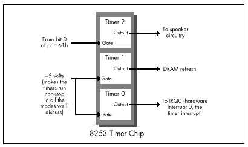
Finally, timer 0 is used to drive the system clock. As programmed by the BIOS at power-up, every 65,536 (64K) counts, or 54.925 milliseconds, timer 0 generates a rising edge on its output line. (A millisecond is one-thousandth of a second, and is abbreviated ms.) This line is connected to the hardware interrupt 0 (IRQ0) line on the system board, so every 54.925 ms, timer 0 causes hardware interrupt 0 to occur.
The interrupt vector for IRQ0 is set by the BIOS at power-up time to
point to a BIOS routine, TIMER_INT, that maintains a
time-of-day count. TIMER_INT keeps a 16-bit count of IRQ0
interrupts in the BIOS data area at address 0000:046C (all addresses in
this book are given in segment:offset hexadecimal pairs); this count
turns over once an hour (less a few microseconds), and when it does,
TIMER_INT updates a 16-bit hour count at address 0000:046E
in the BIOS data area. This count is the basis for the current time and
date that DOS supports via functions 2AH (2A hexadecimal) through 2DH
and by way of the DATE and TIME commands.
Each timer channel of the 8253 can operate in any of six modes. Timer 0 normally operates in mode 3: square wave mode. In square wave mode, the initial count is counted down two at a time; when the count reaches zero, the output state is changed. The initial count is again counted down two at a time, and the output state is toggled back when the count reaches zero. The result is a square wave that changes state more slowly than the input clock by a factor of the initial count. In its normal mode of operation, timer 0 generates an output pulse that is low for about 27.5 ms and high for about 27.5 ms; this pulse is sent to the 8259 interrupt controller, and its rising edge generates a timer interrupt once every 54.925 ms.
Square wave mode is not very useful for precision timing because it counts down by two twice per timer interrupt, thereby rendering exact timings impossible. Fortunately, the 8253 offers another timer mode, mode 2 (divide-by-N mode), which is both a good substitute for square wave mode and a perfect mode for precision timing.
Divide-by-N mode counts down by one from the initial count. When the count reaches zero, the timer turns over and starts counting down again without stopping, and a pulse is generated for a single clock period. While the pulse is not held for nearly as long as in square wave mode, it doesn’t matter, since the 8259 interrupt controller is configured in the PC to be edge-triggered and hence cares only about the existence of a pulse from timer 0, not the duration of the pulse. As a result, timer 0 continues to generate timer interrupts in divide-by-N mode, and the system clock continues to maintain good time.
Why not use timer 2 instead of timer 0 for precision timing? After all, timer 2 has a programmable gate input and isn’t used for anything but sound generation. The problem with timer 2 is that its output can’t generate an interrupt; in fact, timer 2 can’t do anything but drive the speaker. We need the interrupt generated by the output of timer 0 to tell us when the count has overflowed, and we will see shortly that the timer interrupt also makes it possible to time much longer periods than the Zen timer shown in Listing 3.1 supports.
In fact, the Zen timer shown in Listing 3.1 can only time intervals of up to about 54 ms in length, since that is the period of time that can be measured by timer 0 before its count turns over and repeats. Fifty-four ms may not seem like a very long time, but even a CPU as slow as the 8088 can perform more than 1,000 divides in 54 ms, and division is the single instruction that the 8088 performs most slowly. If a measured period turns out to be longer than 54 ms (that is, if timer 0 has counted down and turned over), the Zen timer will display a message to that effect. A long-period Zen timer for use in such cases will be presented later in this chapter.
The Zen timer determines whether timer 0 has turned over by checking
to see whether an IRQ0 interrupt is pending. (Remember, interrupts are
off while the Zen timer runs, so the timer interrupt cannot be
recognized until the Zen timer stops and enables interrupts.) If an IRQ0
interrupt is pending, then timer 0 has turned over and generated a timer
interrupt. Recall that ZTimerOn initially sets timer 0 to
0, in order to allow for the longest possible period—about 54 ms—before
timer 0 reaches 0 and generates the timer interrupt.
Now we’re ready to look at the ways in which the Zen timer can
introduce inaccuracy into the system clock. Since timer 0 is initially
set to 0 by the Zen timer, and since the system clock ticks only when
timer 0 counts off 54.925 ms and reaches 0 again, an average inaccuracy
of one-half of 54.925 ms, or about 27.5 ms, is incurred each time the
Zen timer is started. In addition, a timer interrupt is generated when
timer 0 is switched from mode 3 to mode 2, advancing the system clock by
up to 54.925 ms, although this only happens the first time the Zen timer
is run after a warm or cold boot. Finally, up to 54.925 ms can again be
lost when ZTimerOff is called, since that routine again
sets the timer count to zero. Net result: The system clock will run up
to 110 ms (about a ninth of a second) slow each time the Zen timer is
used.
Potentially far greater inaccuracy can be incurred by timing code that takes longer than about 110 ms to execute. Recall that all interrupts, including the timer interrupt, are disabled while timing code with the Zen timer. The 8259 interrupt controller is capable of remembering at most one pending timer interrupt, so all timer interrupts after the first one during any given Zen timing interval are ignored. Consequently, if a timing interval exceeds 54.9 ms, the system clock effectively stops 54.9 ms after the timing interval starts and doesn’t restart until the timing interval ends, losing time all the while.
The effects on the system time of the Zen timer aren’t a matter for great concern, as they are temporary, lasting only until the next warm or cold boot. System that have battery-backed clocks, (AT-style machines; that is, virtually all machines in common use) automatically reset the correct time whenever the computer is booted, and systems without battery-backed clocks prompt for the correct date and time when booted. Also, repeated use of the Zen timer usually makes the system clock slow by at most a total of a few seconds, unless code that takes much longer than 54 ms to run is timed (in which case the Zen timer will notify you that the code is too long to time).
Nonetheless, it’s a good idea to reboot your computer at the end of each session with the Zen timer in order to make sure that the system clock is correct.
At some point after ZTimerOn is called,
ZTimerOff must always be called to mark the end of the
timing interval. ZTimerOff saves the context of the calling
program, latches and reads the timer 0 count, converts that count from
the countdown value that the timer maintains to the number of counts
elapsed since ZTimerOn was called, and stores the result.
Immediately after latching the timer 0 count—and before enabling
interrupts—ZTimerOff checks the 8259 interrupt controller
to see if there is a pending timer interrupt, setting a flag to mark
that the timer overflowed if there is indeed a pending timer
interrupt.
After that, ZTimerOff executes just the overhead code of
ZTimerOn and ZTimerOff 16 times, and averages
and saves the results in order to determine how many of the counts in
the timing result just obtained were incurred by the overhead of the Zen
timer rather than by the code being timed.
Finally, ZTimerOff restores the context of the calling
program, including the state of the interrupt flag that was in effect
when ZTimerOn was called to start timing, and returns.
One interesting aspect of ZTimerOff is the manner in
which timer 0 is stopped in order to read the timer count. We don’t
actually have to stop timer 0 to read the count; the 8253 provides a
special latched read feature for the specific purpose of reading the
count while a time is running. (That’s a good thing, too; we’ve no
documented way to stop timer 0 if we wanted to, since its gate input
isn’t connected. Later in this chapter, though, we’ll see that timer 0
can be stopped after all.) We simply tell the 8253 to latch the current
count, and the 8253 does so without breaking stride.
ZTimerReport may be called to display timing results at
any time after both ZTimerOn and ZTimerOff
have been called. ZTimerReport first checks to see whether
the timer overflowed (counted down to 0 and turned over) before
ZTimerOff was called; if overflow did occur,
ZTimerOff prints a message to that effect and returns.
Otherwise, ZTimerReport subtracts the reference count
(representing the overhead of the Zen timer) from the count measured
between the calls to ZTimerOn and ZTimerOff,
converts the result from timer counts to microseconds, and prints the
resulting time in microseconds to the standard output.
Note that ZTimerReport need not be called immediately
after ZTimerOff. In fact, after a given call to
ZTimerOff, ZTimerReport can be called at any
time right up until the next call to ZTimerOn.
You may want to use the Zen timer to measure several portions of a
program while it executes normally, in which case it may not be
desirable to have the text printed by ZTimerReport
interfere with the program’s normal display. There are many ways to deal
with this. One approach is removal of the invocations of the DOS print
string function (INT 21H with AH equal to 9) from
ZTimerReport, instead running the program under a debugger
that supports screen flipping (such as Turbo Debugger or CodeView),
placing a breakpoint at the start of ZTimerReport, and
directly observing the count in microseconds as
ZTimerReport calculates it.
A second approach is modification of ZTimerReport to
place the result at some safe location in memory, such as an unused
portion of the BIOS data area.
A third approach is alteration of ZTimerReport to print
the result over a serial port to a terminal or to another PC acting as a
terminal. Similarly, many debuggers can be run from a remote terminal
via a serial link.
Yet another approach is modification of ZTimerReport to
send the result to the printer via either DOS function 5 or BIOS
interrupt 17H.
A final approach is to modify ZTimerReport to print the
result to the auxiliary output via DOS function 4, and to then write and
load a special device driver named AUX, to which DOS
function 4 output would automatically be directed. This device driver
could send the result anywhere you might desire. The result might go to
the secondary display adapter, over a serial port, or to the printer, or
could simply be stored in a buffer within the driver, to be dumped at a
later time. (Credit for this final approach goes to Michael Geary, and
thanks go to David Miller for passing the idea on to me.)
You may well want to devise still other approaches better suited to your needs than those I’ve presented. Go to it! I’ve just thrown out a few possibilities to get you started.
The Zen timer subroutines are designed to be near-called from
assembly language code running in the public segment Code.
The Zen timer subroutines can, however, be called from any assembly or
high-level language code that generates OBJ files that are compatible
with the Microsoft linker, simply by modifying the segment that the
timer code runs in to match the segment used by the code being timed, or
by changing the Zen timer routines to far procedures and making far
calls to the Zen timer code from the code being timed, as discussed at
the end of this chapter. All three subroutines preserve all registers
and all flags except the interrupt flag, so calls to these routines are
transparent to the calling code.
If you do change the Zen timer routines to far procedures in order to
call them from code running in another segment, be sure to make
all the Zen timer routines far, including
ReferenceZTimerOn and ReferenceZTimerOff.
(You’ll have to put FAR PTR overrides on the calls from
ZTimerOff to the latter two routines if you do make them
far.) If the reference routines aren’t the same type—near or far—as the
other routines, they won’t reflect the true overhead incurred by
starting and stopping the Zen timer.
Please be aware that the inaccuracy that the Zen timer can introduce into the system clock time does not affect the accuracy of the performance measurements reported by the Zen timer itself. The 8253 counts once every 838 ns, giving us a count resolution of about 1µs, although factors such as the prefetch queue (as discussed below), dynamic RAM refresh, and internal timing variations in the 8253 make it perhaps more accurate to describe the Zen timer as measuring code performance with an accuracy of better than 10µs. In fact, the Zen timer is actually most accurate in assessing code performance when timing intervals longer than about 100 µs. At any rate, we’re most interested in using the Zen timer to assess the relative performance of various code sequences—that is, using it to compare and tweak code—and the timer is more than accurate enough for that purpose.
The Zen timer works on all PC-compatible computers I’ve tested it on, including XTs, ATs, PS/2 computers, and 386, 486, and Pentium-based machines. Of course, I haven’t been able to test it on all PC-compatibles, but I don’t expect any problems; computers on which the Zen timer doesn’t run can’t truly be called “PC-compatible.”
On the other hand, there is certainly no guarantee that code performance as measured by the Zen timer will be the same on compatible computers as on genuine IBM machines, or that either absolute or relative code performance will be similar even on different IBM models; in fact, quite the opposite is true. For example, every PS/2 computer, even the relatively slow Model 30, executes code much faster than does a PC or XT. As another example, I set out to do the timings for my earlier book Zen of Assembly Language on an XT-compatible computer, only to find that the computer wasn’t quite IBM-compatible regarding code performance. The differences were minor, mind you, but my experience illustrates the risk of assuming that a specific make of computer will perform in a certain way without actually checking.
Not that this variation between models makes the Zen timer one whit less useful—quite the contrary. The Zen timer is an excellent tool for evaluating code performance over the entire spectrum of PC-compatible computers.
Listing 3.2 shows a test-bed program for measuring code performance
with the Zen timer. This program sets DS equal to CS (for reasons we’ll
discuss shortly), includes the code to be measured from the file
TESTCODE, and calls ZTimerReport to display the timing
results. Consequently, the code being measured should be in the file
TESTCODE, and should contain calls to ZTimerOn and
ZTimerOff .
LISTING 3.2 PZTEST.ASM
; Program to measure performance of code that takes less than
; 54 ms to execute. (PZTEST.ASM)
;
; Link with PZTIMER.ASM (Listing 3.1). PZTEST.BAT (Listing 3.4)
; can be used to assemble and link both files. Code to be
; measured must be in the file TESTCODE; Listing 3.3 shows
; a sample TESTCODE file.
;
; By Michael Abrash
;
mystack segment para stack 'STACK'
db 512 dup(?)
mystack ends
;
Code segment para public 'CODE'
assume cs:Code, ds:Code
extrn ZTimerOn:near, ZTimerOff:near, ZTimerReport:near
Start proc near
push cs
pop ds ; set DS to point to the code segment,
; so data as well as code can easily
; be included in TESTCODE
;
include TESTCODE ;code to be measured, including
; calls to ZTimerOn and ZTimerOff
;
; Display the results.
;
call ZTimerReport
;
; Terminate the program.
;
mov ah,4ch
int 21h
Start endp
Code ends
end StartListing 3.3 shows some sample code to be timed. This listing measures
the time required to execute 1,000 loads of AL from the memory variable
MemVar . Note that Listing 3.3 calls ZTimerOn
to start timing, performs 1,000 MOV instructions in a row,
and calls ZTimerOff to end timing. When Listing 3.2 is
named TESTCODE and included by Listing 3.3, Listing 3.2 calls
ZTimerReport to display the execution time after the code
in Listing 3.3 has been run.
LISTING 3.3 LST3-3.ASM
; Test file;
; Measures the performance of 1,000 loads of AL from
; memory. (Use by renaming to TESTCODE, which is
; included by PZTEST.ASM (Listing 3.2). PZTIME.BAT
; (Listing 3.4) does this, along with all assembly
; and linking.)
;
jmp Skip ;jump around defined data
;
MemVar db ?
;
Skip:
;
; Start timing.
;
call ZTimerOn
;
rept 1000
mov al,[MemVar]
endm
;
; Stop timing.
;
call ZTimerOffIt’s worth noting that Listing 3.3 begins by jumping around the
memory variable MemVar. This approach lets us avoid
reproducing Listing 3.2 in its entirety for each code fragment we want
to measure; by defining any needed data right in the code segment and
jumping around that data, each listing becomes self-contained and can be
plugged directly into Listing 3.2 as TESTCODE. Listing 3.2 sets DS equal
to CS before doing anything else precisely so that data can be embedded
in code fragments being timed. Note that only after the initial jump is
performed in Listing 3.3 is the Zen timer started, since we don’t want
to include the execution time of start-up code in the timing interval.
That’s why the calls to ZTimerOn and ZTimerOff
are in TESTCODE, not in PZTEST.ASM; this way, we have full control over
which portion of TESTCODE is timed, and we can keep set-up code and the
like out of the timing interval.
Listing 3.3 is used by naming it TESTCODE, assembling both Listing 3.2 (which includes TESTCODE) and Listing 3.1 with TASM or MASM, and linking the two resulting OBJ files together by way of the Borland or Microsoft linker. Listing 3.4 shows a batch file, PZTIME.BAT, which does all that; when run, this batch file generates and runs the executable file PZTEST.EXE. PZTIME.BAT (Listing 3.4) assumes that the file PZTIMER.ASM contains Listing 3.1, and the file PZTEST.ASM contains Listing 3.2. The command-line parameter to PZTIME.BAT is the name of the file to be copied to TESTCODE and included into PZTEST.ASM. (Note that Turbo Assembler can be substituted for MASM by replacing “masm” with “tasm” and “link” with “tlink” in Listing 3.4. The same is true of Listing 3.7.)
LISTING 3.4 PZTIME.BAT
echo off
rem
rem *** Listing 3.4 ***
rem
rem ***************************************************************
rem * Batch file PZTIME.BAT, which builds and runs the precision *
rem * Zen timer program PZTEST.EXE to time the code named as the *
rem * command-line parameter. Listing 3.1 must be named *
rem * PZTIMER.ASM, and Listing 3.2 must be named PZTEST.ASM. To *
rem * time the code in LST3-3, you'd type the DOS command: *
rem * *
rem * pztime lst3-3 *
rem * *
rem * Note that MASM and LINK must be in the current directory or *
rem * on the current path in order for this batch file to work. *
rem * *
rem * This batch file can be speeded up by assembling PZTIMER.ASM *
rem * once, then removing the lines: *
rem * *
rem * masm pztimer; *
rem * if errorlevel 1 goto errorend *
rem * *
rem * from this file. *
rem * *
rem * By Michael Abrash *
rem ***************************************************************
rem
rem Make sure a file to test was specified.
rem
if not x%1==x goto ckexist
echo ***************************************************************
echo * Please specify a file to test. *
echo ***************************************************************
goto end
rem
rem Make sure the file exists.
rem
:ckexist
if exist %1 goto docopy
echo ***************************************************************
echo * The specified file, "%1," doesn't exist. *
echo ***************************************************************
goto end
rem
rem copy the file to measure to TESTCODE.
rem
:docopy
copy %1 testcode
masm pztest;
if errorlevel 1 goto errorend
masm pztimer;
if errorlevel 1 goto errorend
link pztest+pztimer;
if errorlevel 1 goto errorend
pztest
goto end
:errorend
echo ***************************************************************
echo * An error occurred while building the precision Zen timer. *
echo ***************************************************************
:endAssuming that Listing 3.3 is named LST3-3.ASM and Listing 3.4 is named PZTIME.BAT, the code in Listing 3.3 would be timed with the command:
pztime LST3-3.ASMwhich performs all assembly and linking, and reports the execution time of the code in Listing 3.3.
When the above command is executed on an original 4.77 MHz IBM PC,
the time reported by the Zen timer is 3619 µs, or about 3.62 µs per load
of AL from memory. (While the exact number is 3.619 µs per load of AL,
I’m going to round off that last digit from now on. No matter how many
repetitions of a given instruction are timed, there’s just too much
noise in the timing process—between dynamic RAM refresh, the prefetch
queue, and the internal state of the processor at the start of
timing—for that last digit to have any significance.) Given the test
PC’s 4.77 MHz clock, this works out to about 17 cycles per
MOV, which is actually a good bit longer than Intel’s
specified 10-cycle execution time for this instruction. (See the MASM or
TASM documentation, or Intel’s processor reference manuals, for official
execution times.) Fear not, the Zen timer is right—MOV
AL,[MEMVAR] really does take 17 cycles as used in Listing 3.3.
Exactly why that is so is just what this book is all about.
In order to perform any of the timing tests in this book, enter Listing 3.1 and name it PZTIMER.ASM, enter Listing 3.2 and name it PZTEST.ASM, and enter Listing 3.4 and name it PZTIME.BAT. Then simply enter the listing you wish to run into the file filename and enter the command:
pztime <filename>In fact, that’s exactly how I timed each of the listings in this
book. Code fragments you write yourself can be timed in just the same
way. If you wish to time code directly in place in your programs, rather
than in the test-bed program of Listing 3.2, simply insert calls to
ZTimerOn, ZTimerOff, and
ZTimerReport in the appropriate places and link PZTIMER to
your program.
With a few exceptions, the Zen timer presented above will serve us well for the remainder of this book since we’ll be focusing on relatively short code sequences that generally take much less than 54 ms to execute. Occasionally, however, we will need to time longer intervals. What’s more, it is very likely that you will want to time code sequences longer than 54 ms at some point in your programming career. Accordingly, I’ve also developed a Zen timer for periods longer than 54 ms. The long-period Zen timer (so named by contrast with the precision Zen timer just presented) shown in Listing 3.5 can measure periods up to one hour in length.
The key difference between the long-period Zen timer and the precision Zen timer is that the long-period timer leaves interrupts enabled during the timing period. As a result, timer interrupts are recognized by the PC, allowing the BIOS to maintain an accurate system clock time over the timing period. Theoretically, this enables measurement of arbitrarily long periods. Practically speaking, however, there is no need for a timer that can measure more than a few minutes, since the DOS time of day and date functions (or, indeed, the DATE and TIME commands in a batch file) serve perfectly well for longer intervals. Since very long timing intervals aren’t needed, the long-period Zen timer uses a simplified means of calculating elapsed time that is limited to measuring intervals of an hour or less. If a period longer than an hour is timed, the long-period Zen timer prints a message to the effect that it is unable to time an interval of that length.
For implementation reasons, the long-period Zen timer is also incapable of timing code that starts before midnight and ends after midnight; if that eventuality occurs, the long-period Zen timer reports that it was unable to time the code because midnight was crossed. If this happens to you, just time the code again, secure in the knowledge that at least you won’t run into the problem again for 23-odd hours.
You should not use the long-period Zen timer to time code that requires interrupts to be disabled for more than 54 ms at a stretch during the timing interval, since when interrupts are disabled the long-period Zen timer is subject to the same 54 ms maximum measurement time as the precision Zen timer.
While permitting the timer interrupt to occur allows long intervals to be timed, that same interrupt makes the long-period Zen timer less accurate than the precision Zen timer, since the time the BIOS spends handling timer interrupts during the timing interval is included in the time measured by the long-period timer. Likewise, any other interrupts that occur during the timing interval, most notably keyboard and mouse interrupts, will increase the measured time.
The long-period Zen timer has some of the same effects on the system time as does the precision Zen timer, so it’s a good idea to reboot the system after a session with the long-period Zen timer. The long-period Zen timer does not, however, have the same potential for introducing major inaccuracy into the system clock time during a single timing run since it leaves interrupts enabled and therefore allows the system clock to update normally.
There’s a potential problem with the long-period Zen timer. The problem is this: In order to measure times longer than 54 ms, we must maintain not one but two timing components, the timer 0 count and the BIOS time-of-day count. The time-of-day count measures the passage of 54.9 ms intervals, while the timer 0 count measures time within those 54.9 ms intervals. We need to read the two time components simultaneously in order to get a clean reading. Otherwise, we may read the timer count just before it turns over and generates an interrupt, then read the BIOS time-of-day count just after the interrupt has occurred and caused the time-of-day count to turn over, with a resulting 54 ms measurement inaccuracy. (The opposite sequence—reading the time-of-day count and then the timer count—can result in a 54 ms inaccuracy in the other direction.)
The only way to avoid this problem is to stop timer 0, read both the timer and time-of-day counts while the timer is stopped, and then restart the timer. Alas, the gate input to timer 0 isn’t program-controllable in the PC, so there’s no documented way to stop the timer. (The latched read feature we used in Listing 3.1 doesn’t stop the timer; it latches a count, but the timer keeps running.) What should we do?
As it turns out, an undocumented feature of the 8253 makes it possible to stop the timer dead in its tracks. Setting the timer to a new mode and waiting for an initial count to be loaded causes the timer to stop until the count is loaded. Surprisingly, the timer count remains readable and correct while the timer is waiting for the initial load.
In my experience, this approach works beautifully with fully 8253-compatible chips. However, there’s no guarantee that it will always work, since it programs the 8253 in an undocumented way. What’s more, IBM chose not to implement compatibility with this particular 8253 feature in the custom chips used in PS/2 computers. On PS/2 computers, we have no choice but to latch the timer 0 count and then stop the BIOS count (by disabling interrupts) as quickly as possible. We’ll just have to accept the fact that on PS/2 computers we may occasionally get a reading that’s off by 54 ms, and leave it at that.
I’ve set up Listing 3.5 so that it can assemble to either use or not
use the undocumented timer-stopping feature, as you please. The
PS2 equate selects between the two modes of operation. If
PS2 is 1 (as it is in Listing 3.5), then the latch-and-read
method is used; if PS2 is 0, then the undocumented
timer-stop approach is used. The latch-and-read method will work on all
PC-compatible computers, but may occasionally produce results that are
incorrect by 54 ms. The timer-stop approach avoids synchronization
problems, but doesn’t work on all computers.
LISTING 3.5 LZTIMER.ASM
;
; The long-period Zen timer. (LZTIMER.ASM)
; Uses the 8253 timer and the BIOS time-of-day count to time the
; performance of code that takes less than an hour to execute.
; Because interrupts are left on (in order to allow the timer
; interrupt to be recognized), this is less accurate than the
; precision Zen timer, so it is best used only to time code that takes
; more than about 54 milliseconds to execute (code that the precision
; Zen timer reports overflow on). Resolution is limited by the
; occurrence of timer interrupts.
;
; By Michael Abrash
;
; Externally callable routines:
;
; ZTimerOn: Saves the BIOS time of day count and starts the
; long-period Zen timer.
;
; ZTimerOff: Stops the long-period Zen timer and saves the timer
; count and the BIOS time-of-day count.
;
; ZTimerReport: Prints the time that passed between starting and
; stopping the timer.
;
; Note: If either more than an hour passes or midnight falls between
; calls to ZTimerOn and ZTimerOff, an error is reported. For
; timing code that takes more than a few minutes to execute,
; either the DOS TIME command in a batch file before and after
; execution of the code to time or the use of the DOS
; time-of-day function in place of the long-period Zen timer is
; more than adequate.
;
; Note: The PS/2 version is assembled by setting the symbol PS2 to 1.
; PS2 must be set to 1 on PS/2 computers because the PS/2's
; timers are not compatible with an undocumented timer-stopping
; feature of the 8253; the alternative timing approach that
; must be used on PS/2 computers leaves a short window
; during which the timer 0 count and the BIOS timer count may
; not be synchronized. You should also set the PS2 symbol to
; 1 if you're getting erratic or obviously incorrect results.
;
; Note: When PS2 is 0, the code relies on an undocumented 8253
; feature to get more reliable readings. It is possible that
; the 8253 (or whatever chip is emulating the 8253) may be put
; into an undefined or incorrect state when this feature is
; used.
;
; ******************************************************************
; * If your computer displays any hint of erratic behavior *
; * after the long-period Zen timer is used, such as the floppy*
; * drive failing to operate properly, reboot the system, set *
; * PS2 to 1 and leave it that way! *
; ******************************************************************
;
; Note: Each block of code being timed should ideally be run several
; times, with at least two similar readings required to
; establish a true measurement, in order to eliminate any
; variability caused by interrupts.
;
; Note: Interrupts must not be disabled for more than 54 ms at a
; stretch during the timing interval. Because interrupts
; are enabled, keys, mice, and other devices that generate
; interrupts should not be used during the timing interval.
;
; Note: Any extra code running off the timer interrupt (such as
; some memory-resident utilities) will increase the time
; measured by the Zen timer.
;
; Note: These routines can introduce inaccuracies of up to a few
; tenths of a second into the system clock count for each
; code section timed. Consequently, it's a good idea to
; reboot at the conclusion of timing sessions. (The
; battery-backed clock, if any, is not affected by the Zen
; timer.)
;
; All registers and all flags are preserved by all routines.
;
Code segment word public 'CODE'
assume cs:Code, ds:nothing
public ZTimerOn, ZTimerOff, ZTimerReport
;
; Set PS2 to 0 to assemble for use on a fully 8253-compatible
; system; when PS2 is 0, the readings are more reliable if the
; computer supports the undocumented timer-stopping feature,
; but may be badly off if that feature is not supported. In
; fact, timer-stopping may interfere with your computer's
; overall operation by putting the 8253 into an undefined or
; incorrect state. Use with caution!!!
;
; Set PS2 to 1 to assemble for use on non-8253-compatible
; systems, including PS/2 computers; when PS2 is 1, readings
; may occasionally be off by 54 ms, but the code will work
; properly on all systems.
;
; A setting of 1 is safer and will work on more systems,
; while a setting of 0 produces more reliable results in systems
; which support the undocumented timer-stopping feature of the
; 8253. The choice is yours.
;
PS2 equ 1
;
; Base address of the 8253 timer chip.
;
BASE_8253 equ 40h
;
; The address of the timer 0 count registers in the 8253.
;
TIMER_0_8253 equ BASE_8253 + 0
;
; The address of the mode register in the 8253.
;
MODE_8253 equ BASE_8253 + 3
;
; The address of the BIOS timer count variable in the BIOS
; data segment.
;
TIMER_COUNT equ 46ch
;
; Macro to emulate a POPF instruction in order to fix the bug in some
; 80286 chips which allows interrupts to occur during a POPF even when
; interrupts remain disabled.
;
MPOPF macro
local p1, p2
jmp short p2
p1: iret ;jump to pushed address & pop flags
p2: push cs ;construct far return address to
call p1 ; the next instruction
endm
;
; Macro to delay briefly to ensure that enough time has elapsed
; between successive I/O accesses so that the device being accessed
; can respond to both accesses even on a very fast PC.
;
DELAY macro
jmp $+2
jmp $+2
jmp $+2
endm
StartBIOSCountLow dw ? ;BIOS count low word at the
; start of the timing period
StartBIOSCountHigh dw ? ;BIOS count high word at the
; start of the timing period
EndBIOSCountLow dw ? ;BIOS count low word at the
; end of the timing period
EndBIOSCountHigh dw ? ;BIOS count high word at the
; end of the timing period
EndTimedCount dw ? ;timer 0 count at the end of
; the timing period
ReferenceCount dw ? ;number of counts required to
; execute timer overhead code
;
; String printed to report results.
;
OutputStr label byte
db 0dh, 0ah, 'Timed count: '
TimedCountStr db 10 dup (?)
db ' microseconds', 0dh, 0ah
db '$'
;
; Temporary storage for timed count as it's divided down by powers
; of ten when converting from doubleword binary to ASCII.
;
CurrentCountLow dw ?
CurrentCountHigh dw ?
;
; Powers of ten table used to perform division by 10 when doing
; doubleword conversion from binary to ASCII.
;
PowersOfTen label word
dd 1
dd 10
dd 100
dd 1000
dd 10000
dd 100000
dd 1000000
dd 10000000
dd 100000000
dd 1000000000
PowersOfTenEnd label word
;
; String printed to report that the high word of the BIOS count
; changed while timing (an hour elapsed or midnight was crossed),
; and so the count is invalid and the test needs to be rerun.
;
TurnOverStr label byte
db 0dh, 0ah
db '****************************************************'
db 0dh, 0ah
db '* Either midnight passed or an hour or more passed *'
db 0dh, 0ah
db '* while timing was in progress. If the former was *'
db 0dh, 0ah
db '* the case, please rerun the test; if the latter *'
db 0dh, 0ah
db '* was the case, the test code takes too long to *'
db 0dh, 0ah
db '* run to be timed by the long-period Zen timer. *'
db 0dh, 0ah
db '* Suggestions: use the DOS TIME command, the DOS *'
db 0dh, 0ah
db '* time function, or a watch. *'
db 0dh, 0ah
db '****************************************************'
db 0dh, 0ah
db '$'
;********************************************************************
;* Routine called to start timing. *
;********************************************************************
ZTimerOn proc near
;
; Save the context of the program being timed.
;
push ax
pushf
;
; Set timer 0 of the 8253 to mode 2 (divide-by-N), to cause
; linear counting rather than count-by-two counting. Also stops
; timer 0 until the timer count is loaded, except on PS/2
; computers.
;
mov al,00110100b ;mode 2
out MODE_8253,al
;
; Set the timer count to 0, so we know we won't get another
; timer interrupt right away.
; Note: this introduces an inaccuracy of up to 54 ms in the system
; clock count each time it is executed.
;
DELAY
sub al,al
out TIMER_0_8253,al ;lsb
DELAY
out TIMER_0_8253,al ;msb
;
; In case interrupts are disabled, enable interrupts briefly to allow
; the interrupt generated when switching from mode 3 to mode 2 to be
; recognized. Interrupts must be enabled for at least 210 ns to allow
; time for that interrupt to occur. Here, 10 jumps are used for the
; delay to ensure that the delay time will be more than long enough
; even on a very fast PC.
;
pushf
sti
rept 10
jmp $+2
endm
MPOPF
;
; Store the timing start BIOS count.
; (Since the timer count was just set to 0, the BIOS count will
; stay the same for the next 54 ms, so we don't need to disable
; interrupts in order to avoid getting a half-changed count.)
;
push ds
sub ax, ax
mov ds, ax
mov ax, ds:[TIMER_COUNT+2]
mov cs:[StartBIOSCountHigh],ax
mov ax, ds:[TIMER_COUNT]
mov cs:[StartBIOSCountLow],ax
pop ds
;
; Set the timer count to 0 again to start the timing interval.
;
mov al,00110100b ;set up to load initial
out MODE_8253,al ; timer count
DELAY
sub al, al
out TIMER_0_8253,al; load count lsb
DELAY
out TIMER_0_8253,al; load count msb
;
; Restore the context of the program being timed and return to it.
;
MPOPF
pop ax
ret
ZTimerOn endp
;********************************************************************
;* Routine called to stop timing and get count. *
;********************************************************************
ZTimerOff proc near
;
; Save the context of the program being timed.
;
pushf
push ax
push cx
;
; In case interrupts are disabled, enable interrupts briefly to allow
; any pending timer interrupt to be handled. Interrupts must be
; enabled for at least 210 ns to allow time for that interrupt to
; occur. Here, 10 jumps are used for the delay to ensure that the
; delay time will be more than long enough even on a very fast PC.
;
sti
rept 10
jmp $+2
endm
;
; Latch the timer count.
;
if PS2
mov al,00000000b
out MODE_8253,al ;latch timer 0 count
;
; This is where a one-instruction-long window exists on the PS/2.
; The timer count and the BIOS count can lose synchronization;
; since the timer keeps counting after it's latched, it can turn
; over right after it's latched and cause the BIOS count to turn
; over before interrupts are disabled, leaving us with the timer
; count from before the timer turned over coupled with the BIOS
; count from after the timer turned over. The result is a count
; that's 54 ms too long.
;
else
;
; Set timer 0 to mode 2 (divide-by-N), waiting for a 2-byte count
; load, which stops timer 0 until the count is loaded. (Only works
; on fully 8253-compatible chips.)
;
mov al,00110100b; mode 2
out MODE_8253,al
DELAY
mov al,00000000b ;latch timer 0 count
out MODE_8253,al
endif
cli ;stop the BIOS count
;
; Read the BIOS count. (Since interrupts are disabled, the BIOS
; count won't change.)
;
push ds
sub ax,ax
mov ds,ax
mov ax,ds:[TIMER_COUNT+2]
mov cs:[EndBIOSCountHigh],ax
mov ax,ds:[TIMER_COUNT]
mov cs:[EndBIOSCountLow],ax
pop ds
;
; Read the timer count and save it.
;
in al,TIMER_0_8253 ;lsb
DELAY
mov ah,al
in al,TIMER_0_8253 ;msb
xchg ah,al
neg ax ;convert from countdown
; remaining to elapsed
; count
mov cs:[EndTimedCount],ax
;
; Restart timer 0, which is still waiting for an initial count
; to be loaded.
;
ife PS2
DELAY
mov al,00110100b ;mode 2, waiting to load a
; 2-byte count
out MODE_8253,al
DELAY
sub al,al
out TIMER_0_8253,al ;lsb
DELAY
mov al,ah
out TIMER_0_8253,al ;msb
DELAY
endif
sti ;let the BIOS count continue
;
; Time a zero-length code fragment, to get a reference for how
; much overhead this routine has. Time it 16 times and average it,
; for accuracy, rounding the result.
;
mov cs:[ReferenceCount],0
mov cx,16
cli ;interrupts off to allow a
; precise reference count
RefLoop:
call ReferenceZTimerOn
call ReferenceZTimerOff
loop RefLoop
sti
add cs:[ReferenceCount],8 ;total + (0.5 * 16)
mov cl,4
shr cs:[ReferenceCount],cl ;(total) / 16 + 0.5
;
; Restore the context of the program being timed and return to it.
;
pop cx
pop ax
MPOPF
ret
ZTimerOff endp
;
; Called by ZTimerOff to start the timer for overhead measurements.
;
ReferenceZTimerOn proc near
;
; Save the context of the program being timed.
;
push ax
pushf
;
; Set timer 0 of the 8253 to mode 2 (divide-by-N), to cause
; linear counting rather than count-by-two counting.
;
mov al,00110100b ;mode 2
out MODE_8253,al
;
; Set the timer count to 0.
;
DELAY
sub al,al
out TIMER_0_8253,al ;lsb
DELAY
out TIMER_0_8253,al ;msb
;
; Restore the context of the program being timed and return to it.
;
MPOPF
pop ax
ret
ReferenceZTimerOn endp
;
; Called by ZTimerOff to stop the timer and add the result to
; ReferenceCount for overhead measurements. Doesn't need to look
; at the BIOS count because timing a zero-length code fragment
; isn't going to take anywhere near 54 ms.
;
ReferenceZTimerOff proc near
;
; Save the context of the program being timed.
;
pushf
push ax
push cx
;
; Match the interrupt-window delay in ZTimerOff.
;
sti
rept 10
jmp $+2
endm
mov al,00000000b
out MODE_8253,al ;latch timer
;
; Read the count and save it.
;
DELAY
in al,TIMER_0_8253 ;lsb
DELAY
mov ah,al
in al,TIMER_0_8253 ;msb
xchg ah,al
neg ax ;convert from countdown
; remaining to elapsed
; count
add cs:[ReferenceCount],ax
;
; Restore the context and return.
;
pop cx
pop ax
MPOPF
ret
ReferenceZTimerOff endp
;********************************************************************
;* Routine called to report timing results. *
;********************************************************************
ZTimerReport proc near
pushf
push ax
push bx
push cx
push dx
push si
push di
push ds
;
push cs ;DOS functions require that DS point
pop ds ; to text to be displayed on the screen
assume ds :Code
;
; See if midnight or more than an hour passed during timing. If so,
; notify the user.
;
mov ax,[StartBIOSCountHigh]
cmp ax,[EndBIOSCountHigh]
jz CalcBIOSTime ;hour count didn't change,
; so everything's fine
inc ax
cmp ax,[EndBIOSCountHigh]
jnz TestTooLong ;midnight or two hour
; boundaries passed, so the
; results are no good
mov ax,[EndBIOSCountLow]
cmp ax,[StartBIOSCountLow]
jb CalcBIOSTime ;a single hour boundary
; passed--that's OK, so long as
; the total time wasn't more
; than an hour
;
; Over an hour elapsed or midnight passed during timing, which
; renders the results invalid. Notify the user. This misses the
; case where a multiple of 24 hours has passed, but we'll rely
; on the perspicacity of the user to detect that case.
;
TestTooLong:
mov ah,9
mov dx,offset TurnOverStr
int 21h
jmp short ZTimerReportDone
;
; Convert the BIOS time to microseconds.
;
CalcBIOSTime:
mov ax,[EndBIOSCountLow]
sub ax,[StartBIOSCountLow]
mov dx,54925 ;number of microseconds each
; BIOS count represents
mul dx
mov bx,ax ;set aside BIOS count in
mov cx,dx ; microseconds
;
; Convert timer count to microseconds.
;
mov ax,[EndTimedCount]
mov si,8381
mul si
mov si,10000
div si ;* .8381 = * 8381 / 10000
;
; Add timer and BIOS counts together to get an overall time in
; microseconds.
;
add bx,ax
adc cx,0
;
; Subtract the timer overhead and save the result.
;
mov ax,[ReferenceCount]
mov si,8381 ;convert the reference count
mul si ; to microseconds
mov si,10000
div si ;* .8381 = * 8381 / 10000
sub bx,ax
sbb cx,0
mov [CurrentCountLow],bx
mov [CurrentCountHigh],cx
;
; Convert the result to an ASCII string by trial subtractions of
; powers of 10.
;
mov di,offset PowersOfTenEnd - offset PowersOfTen - 4
mov si,offset TimedCountStr
CTSNextDigit:
mov bl,'0'
CTSLoop:
mov ax,[CurrentCountLow]
mov dx,[CurrentCountHigh]
sub ax,PowersOfTen[di]
sbb dx,PowersOfTen[di+2]
jc CTSNextPowerDown
inc bl
mov [CurrentCountLow],ax
mov [CurrentCountHigh],dx
jmp CTSLoop
CTSNextPowerDown:
mov [si],bl
inc si
sub di,4
jns CTSNextDigit
;
;
; Print the results.
;
mov ah,9
mov dx,offset OutputStr
int 21h
;
ZTimerReportDone:
pop ds
pop di
pop si
pop dx
pop cx
pop bx
pop ax
MPOPF
ret
ZTimerReport endp
Code ends
endMoreover, because it uses an undocumented feature, the timer-stop
approach could conceivably cause erratic 8253 operation, which could in
turn seriously affect your computer’s operation until the next reboot.
In non-8253-compatible systems, I’ve observed not only wildly incorrect
timing results, but also failure of a diskette drive to operate properly
after the long-period Zen timer with PS2 set to 0 has run,
so be alert for signs of trouble if you do set PS2 to
0.
Rebooting should clear up any timer-related problems of the sort
described above. (This gives us another reason to reboot at the end of
each code-timing session.) You should immediately reboot and
set the PS2 equate to 1 if you get erratic or obviously
incorrect results with the long-period Zen timer when PS2
is set to 0. If you want to set PS2 to 0, it would be a
good idea to time a few of the listings in this book with
PS2 set first to 1 and then to 0, to make sure that the
results match. If they’re consistently different, you should set
PS2 to 1.
While the the non-PS/2 version is more dangerous than the PS/2 version, it also produces more accurate results when it does work. If you have a non-PS/2 PC-compatible computer, the choice between the two timing approaches is yours.
If you do leave the PS2 equate at 1 in Listing 3.5, you
should repeat each code-timing run several times before relying on the
results to be accurate to more than 54 ms, since variations may result
from the possible lack of synchronization between the timer 0 count and
the BIOS time-of-day count. In fact, it’s a good idea to time code more
than once no matter which version of the long-period Zen timer you’re
using, since interrupts, which must be enabled in order for the
long-period timer to work properly, may occur at any time and can alter
execution time substantially.
Finally, please note that the precision Zen timer works perfectly well on both PS/2 and non-PS/2 computers. The PS/2 and 8253 considerations we’ve just discussed apply only to the long-period Zen timer.
The long-period Zen timer has exactly the same calling interface as the precision Zen timer, and can be used in place of the precision Zen timer simply by linking it to the code to be timed in place of linking the precision timer code. Whenever the precision Zen timer informs you that the code being timed takes too long for the precision timer to handle, all you have to do is link in the long-period timer instead.
Listing 3.6 shows a test-bed program for the long-period Zen timer.
While this program is similar to Listing 3.2, it’s worth noting that
Listing 3.6 waits for a few seconds before calling
ZTimerOn, thereby allowing any pending keyboard interrupts
to be processed. Since interrupts must be left on in order to time
periods longer than 54 ms, the interrupts generated by keystrokes
(including the upstroke of the Enter key press that starts the
program)—or any other interrupts, for that matter—could incorrectly
inflate the time recorded by the long-period Zen timer. In light of
this, resist the temptation to type ahead, move the mouse, or the like
while the long-period Zen timer is timing.
LISTING 3.6 LZTEST.ASM
; Program to measure performance of code that takes longer than
; 54 ms to execute. (LZTEST.ASM)
;
; Link with LZTIMER.ASM (Listing 3.5). LZTIME.BAT (Listing 3.7)
; can be used to assemble and link both files. Code to be
; measured must be in the file TESTCODE; Listing 3.8 shows
; a sample file (LST3-8.ASM) which should be named TESTCODE.
;
; By Michael Abrash
;
mystack segment para stack 'STACK'
db 512 dup(?)
mystack ends
;
Code segment para public 'CODE'
assume cs:Code, ds:Code
extrn ZTimerOn:near, ZTimerOff:near, ZTimerReport:near
Start proc near
push cs
pop ds ;point DS to the code segment,
; so data as well as code can easily
; be included in TESTCODE
;
; Delay for 6-7 seconds, to let the Enter keystroke that started the
; program come back up.
;
mov ah,2ch
int 21h ;get the current time
mov bh,dh ;set the current time aside
DelayLoop:
mov ah,2ch
push bx ;preserve start time
int 21h ;get time
pop bx ;retrieve start time
cmp dh,bh ;is the new seconds count less than
; the start seconds count?
jnb CheckDelayTime ;no
add dh,60 ;yes, a minute must have turned over,
; so add one minute
CheckDelayTime:
sub dh,bh ;get time that's passed
cmp dh,7 ;has it been more than 6 seconds yet?
jb DelayLoop ;not yet
;
include TESTCODE ;code to be measured, including calls
; to ZTimerOn and ZTimerOff
;
; Display the results.
;
call ZTimerReport
;
; Terminate the program.
;
mov ah,4ch
int 21h
Start endp
Code ends
end StartAs with the precision Zen timer, the program in Listing 3.6 is used by naming the file containing the code to be timed TESTCODE, then assembling both Listing 3.6 and Listing 3.5 with MASM or TASM and linking the two files together by way of the Microsoft or Borland linker. Listing 3.7 shows a batch file, named LZTIME.BAT, which does all of the above, generating and running the executable file LZTEST.EXE. LZTIME.BAT assumes that the file LZTIMER.ASM contains Listing 3.5 and the file LZTEST.ASM contains Listing 3.6.
LISTING 3.7 LZTIME.BAT
echo off
rem
rem *** Listing 3.7 ***
rem
rem ***************************************************************
rem * Batch file LZTIME.BAT, which builds and runs the *
rem * long-period Zen timer program LZTEST.EXE to time the code *
rem * named as the command-line parameter. Listing 3.5 must be *
rem * named LZTIMER.ASM, and Listing 3.6 must be named *
rem * LZTEST.ASM. To time the code in LST3-8, you'd type the *
rem * DOS command: *
rem * *
rem * lztime lst3-8 *
rem * *
rem * Note that MASM and LINK must be in the current directory or *
rem * on the current path in order for this batch file to work. *
rem * *
rem * This batch file can be speeded up by assembling LZTIMER.ASM *
rem * once, then removing the lines: *
rem * *
rem * masm lztimer; *
rem * if errorlevel 1 goto errorend *
rem * *
rem * from this file. *
rem * *
rem * By Michael Abrash *
rem ***************************************************************
rem
rem Make sure a file to test was specified.
rem
if not x%1==x goto ckexist
echo ***************************************************************
echo * Please specify a file to test. *
echo ***************************************************************
goto end
rem
rem Make sure the file exists.
rem
:ckexist
if exist %1 goto docopy
echo ***************************************************************
echo * The specified file, "%1," doesn't exist. *
echo ***************************************************************
goto end
rem
rem copy the file to measure to TESTCODE.
:docopy
copy %1 testcode
masm lztest;
if errorlevel 1 goto errorend
masm lztimer;
if errorlevel 1 goto errorend
link lztest+lztimer;
if errorlevel 1 goto errorend
lztest
goto end
:errorend
echo ***************************************************************
echo * An error occurred while building the long-period Zen timer. *
echo ***************************************************************
:endListing 3.8 shows sample code that can be timed with the test-bed program of Listing 3.6. Listing 3.8 measures the time required to execute 20,000 loads of AL from memory, a length of time too long for the precision Zen timer to handle on the 8088.
LISTING 3.8 LST3-8.ASM
;
; Measures the performance of 20,000 loads of AL from
; memory. (Use by renaming to TESTCODE, which is
; included by LZTEST.ASM (Listing 3.6). LZTIME.BAT
; (Listing 3.7) does this, along with all assembly
; and linking.)
;
; Note: takes about ten minutes to assemble on a slow PC if
;you are using MASM
;
jmp Skip ;jump around defined data
;
MemVar db ?
;
Skip:
;
; Start timing.
;
call ZTimerOn
;
rept 20000
mov al,[MemVar]
endm
;
; Stop timing.
;
call ZTimerOffWhen LZTIME.BAT is run on a PC with the following command line (assuming the code in Listing 3.8 is the file LST3-8.ASM)
lztime lst3-8.asmthe result is 72,544 µs, or about 3.63 µs per load of AL from memory.
This is just slightly longer than the time per load of AL measured by
the precision Zen timer, as we would expect given that interrupts are
left enabled by the long-period Zen timer. The extra fraction of a
microsecond measured per MOV reflects the time required to
execute the BIOS code that handles the 18.2 timer interrupts that occur
each second.
Note that the command can take as much as 10 minutes to finish on a
slow PC if you are using MASM, with most of that time spent assembling
Listing 3.8. Why? Because MASM is notoriously slow at assembling
REPT blocks, and the block in Listing 3.8 is repeated
20,000 times.
The Zen timer can be used to measure code performance when
programming in C—but not right out of the box. As presented earlier, the
timer is designed to be called from assembly language; some relatively
minor modifications are required before the ZTimerOn (start
timer), ZTimerOff (stop timer), and
ZTimerReport (display timing results) routines can be
called from C. There are two separate cases to be dealt with here: small
code model and large; I’ll tackle the simpler one, the small code model,
first.
Altering the Zen timer for linking to a small code model C program
involves the following steps: Change ZTimerOn to
_ZTimerOn, change ZTimerOff to
_ZTimerOff, change ZTimerReport to
_ZTimerReport, and change Code to
_TEXT . Figure 3.2 shows the line numbers and new states of
all lines from Listing 3.1 that must be changed. These changes convert
the code to use C-style external label names and the small model C code
segment. (In C++, use the “C” specifier, as in
extern "C" ZTimerOn(void);when declaring the timer routines extern, so that
name-mangling doesn’t occur, and the linker can find the routines’
C-style names.)
That’s all it takes; after doing this, you’ll be able to use the Zen timer from C, as, for example, in:
ZTimerOn():
for (i=0, x=0; i<100; i++)
x += i;
ZTimerOff();
ZTimerReport();(I’m talking about the precision timer here. The long-period timer—Listing 3.5—requires the same modifications, but to different lines.)
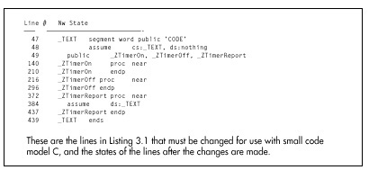
Altering the Zen timer for use in C’s large code model is a tad more complex, because in addition to the above changes, all functions, including the internal reference timing routines that are used to calculate overhead so it can be subtracted out, must be converted to far. Figure 3.3 shows the line numbers and new states of all lines from Listing 3.1 that must be changed in order to call the Zen timer from large code model C. Again, the line numbers are specific to the precision timer, but the long-period timer is very similar.
The full listings for the C-callable Zen timers are presented in Chapter K on the companion CD-ROM.
One important safety tip when modifying the Zen timer for use with large code model C code: Watch out for optimizing assemblers! TASM actually replaces
call far ptr ReferenceZTimerOnwith
push cs
call near ptr ReferenceZTimerOn(and likewise for ReferenceZTimerOff), which works
because ReferenceZTimerOn is in the same segment as the
calling code. This is normally a great optimization, being both smaller
and faster than a far call.
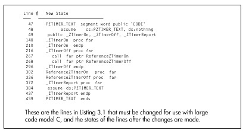
However, it’s not so great for the Zen timer, because our purpose in
calling the reference timing code is to determine exactly how much time
is taken by overhead code—including the far calls to
ZTimerOn and ZTimerOf! By converting the far
calls to push/near call pairs within the Zen timer module, TASM makes it
impossible to emulate exactly the overhead of the Zen timer, and makes
timings slightly (about 16 cycles on a 386) less accurate.
What’s the solution? Put the NOSMART directive at the
start of the Zen timer code. This directive instructs TASM to turn off
all optimizations, including converting far calls to push/near call
pairs. By the way, there is, to the best of my knowledge, no such
problem with MASM up through version 5.10A.
In my mind, the whole business of optimizing assemblers is a mixed blessing. In general, it’s nice to have the assembler shortening jumps and selecting sign-extended forms of instructions for you. On the other hand, the benefits of tricks like substituting push/near call pairs for far calls are relatively small, and those tricks can get in the way when complete control is needed. Sure, complete control is needed very rarely, but when it is, optimizing assemblers can cause subtle problems; I discovered TASM’s alteration of far calls only because I happened to view the code in the debugger, and you might want to do the same if you’re using a recent version of MASM.
I’ve tested the changes shown in Figures 3.2 and 3.3 with TASM and Borland C++ 4.0, and also with the latest MASM and Microsoft C/C++ compiler.
For those of you who wish to pursue the mechanics of code measurement further, one good article about measuring code performance with the 8253 timer is “Programming Insight: High-Performance Software Analysis on the IBM PC,” by Byron Sheppard, which appeared in the January, 1987 issue of Byte. For complete if somewhat cryptic information on the 8253 timer itself, I refer you to Intel’s Microsystem Components Handbook, which is also a useful reference for a number of other PC components, including the 8259 Programmable Interrupt Controller and the 8237 DMA Controller. For details about the way the 8253 is used in the PC, as well as a great deal of additional information about the PC’s hardware and BIOS resources, I suggest you consult IBM’s series of technical reference manuals for the PC, XT, AT, Model 30, and microchannel computers, such as the Models 50, 60, and 80.
For our purposes, however, it’s not critical that you understand exactly how the Zen timer works. All you really need to know is what the Zen timer can do and how to use it, and we’ve accomplished that in this chapter.
The Zen timer is not perfect. For one thing, the finest resolution to which it can measure an interval is at best about 1µs, a period of time in which a 66 MHz Pentium computer can execute as many as 132 instructions (although an 8088-based PC would be hard-pressed to manage two instructions in a microsecond). Another problem is that the timing code itself interferes with the state of the prefetch queue and processor cache at the start of the code being timed, because the timing code is not necessarily fetched and does not necessarily access memory in exactly the same time sequence as the code immediately preceding the code under measurement normally does. This prefetch effect can introduce as much as 3 to 4 µs of inaccuracy. Similarly, the state of the prefetch queue at the end of the code being timed affects how long the code that stops the timer takes to execute. Consequently, the Zen timer tends to be more accurate for longer code sequences, since the relative magnitude of the inaccuracy introduced by the Zen timer becomes less over longer periods.
Imperfections notwithstanding, the Zen timer is a good tool for exploring C code and x86 family assembly language, and it’s a tool we’ll use frequently for the remainder of this book.
This chapter, adapted from my earlier book, Zen of Assembly Language located on the companion CD-ROM, goes right to the heart of my philosophy of optimization: Understand where the time really goes when your code runs. That may sound ridiculously simple, but, as this chapter makes clear, it turns out to be a challenging task indeed, one that at times verges on black magic. This chapter is a long-time favorite of mine because it was the first—and to a large extent only—work that I know of that discussed this material, thereby introducing a generation of PC programmers to pedal-to-the-metal optimization.
This chapter focuses almost entirely on the first popular x86-family processor, the 8088. Some of the specific features and results that I cite in this chapter are no longer applicable to modern x86-family processors such as the 486 and Pentium, as I’ll point out later on when we discuss those processors. Nonetheless, the overall theme of this chapter—that understanding dimly-seen and poorly-documented code gremlins called cycle-eaters that lurk in your system is essential to performance programming—is every bit as valid today. Also, later chapters often refer back to the basic cycle-eaters described in this chapter, so this chapter is the foundation for the discussions of x86-family optimization to come. What’s more, the Zen timer remains an excellent tool with which to flush out and examine cycle-eaters, as we’ll see in later chapters, and this chapter is as good an illustration of how to use the Zen timer as you’re likely to find.
So, don’t take either the absolute or the relative execution times presented in this chapter as gospel for newer processors, and read on to later chapters to see how the cycle-eaters and optimization rules have changed over time, but do take the time to at least skim through this chapter to give yourself a good start on the material in the rest of this book.
Programming has many levels, ranging from the familiar (high-level languages, DOS calls, and the like) down to the esoteric things that lie on the shadowy edge of hardware-land. I call these cycle-eaters because, like the monsters in a bad 50s horror movie, they lurk in those shadows, taking their share of your program’s performance without regard to the forces of goodness or the U.S. Army. In this chapter, we’re going to jump right in at the lowest level by examining the cycle-eaters that live beneath the programming interface; that is, beneath your application, DOS, and BIOS—in fact, beneath the instruction set itself.
Why start at the lowest level? Simply because cycle-eaters affect the performance of all assembler code, and yet are almost unknown to most programmers. A full understanding of code optimization requires an understanding of cycle-eaters and their implications. That’s no simple task, and in fact it is in precisely that area that most books and articles about assembly programming fall short.
Nearly all literature on assembly programming discusses only the programming interface: the instruction set, the registers, the flags, and the BIOS and DOS calls. Those topics cover the functionality of assembly programs most thoroughly—but it’s performance above all else that we’re after. No one ever tells you about the raw stuff of performance, which lies beneath the programming interface, in the dimly-seen realm—populated by instruction prefetching, dynamic RAM refresh, and wait states—where software meets hardware. This area is the domain of hardware engineers, and is almost never discussed as it relates to code performance. And yet it is only by understanding the mechanisms operating at this level that we can fully understand and properly improve the performance of our code.
Which brings us to cycle-eaters.
Cycle-eaters are gremlins that live on the bus or in peripherals (and sometimes within the CPU itself), slowing the performance of PC code so that it doesn’t execute at full speed. Most cycle-eaters (and all of those haunting the older Intel processors) live outside the CPU’s Execution Unit, where they can only affect the CPU when the CPU performs a bus access (a memory or I/O read or write). Once your code and data are already inside the CPU, those cycle-eaters can no longer be a problem. Only on the 486 and Pentium CPUs will you find cycle-eaters inside the chip, as we’ll see in later chapters.
The nature and severity of the cycle-eaters vary enormously from processor to processor, and (especially) from memory architecture to memory architecture. In order to understand them all, we need first to understand the simplest among them, those that haunted the original 8088-based IBM PC. Later on in this book, I’ll be better able to explain the newer generation of cycle-eaters in terms of those ancestral cycle-eaters—but we have to get the groundwork down first.
Internally, the 8088 is a 16-bit processor, capable of running at full speed at all times—unless external data is required. External data must traverse the 8088’s external data bus and the PC’s data bus one byte at a time to and from peripherals, with cycle-eaters lurking along every step of the way. What’s more, external data includes not only memory operands but also instruction bytes, so even instructions with no memory operands can suffer from cycle-eaters. Since some of the 8088’s fastest instructions are register-only instructions, that’s important indeed.
The major cycle-eaters are:
The locations of these cycle-eaters in the primordial 8088-based PC are shown in Figure 4.1. We’ll cover each of the cycle-eaters in turn in this chapter. The material won’t be easy since cycle-eaters are among the most subtle aspects of assembly programming. By the same token, however, this will be one of the most important and rewarding chapters in this book. Don’t worry if you don’t catch everything in this chapter, but do read it all even if the going gets a bit tough. Cycle-eaters play a key role in later chapters, so some familiarity with them is highly desirable.
Look! Down on the motherboard! It’s a 16-bit processor! It’s an 8-bit processor! It’s…
…an 8088!
Fans of the 8088 call it a 16-bit processor. Fans of other 16-bit processors call the 8088 an 8-bit processor. The truth of the matter is that the 8088 is a 16-bit processor that often performs like an 8-bit processor.
The 8088 is internally a full 16-bit processor, equivalent to an 8086. (In fact, the 8086 is identical to the 8088, except that it has a full 16-bit bus. The 8088 is basically the poor man’s 8086, because it allows a cheaper—albeit slower—system to be built, thanks to the half-sized bus.) In terms of the instruction set, the 8088 is clearly a 16-bit processor, capable of performing any given 16-bit operation—addition, subtraction, even multiplication or division—with a single instruction. Externally, however, the 8088 is unequivocally an 8-bit processor, since the external data bus is only 8 bits wide. In other words, the programming interface is 16 bits wide, but the hardware interface is only 8 bits wide, as shown in Figure 4.2. The result of this mismatch is simple: Word-sized data can be transferred between the 8088 and memory or peripherals at only one-half the maximum rate of the 8086, which is to say one-half the maximum rate for which the Execution Unit of the 8088 was designed.
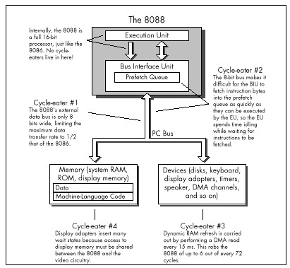
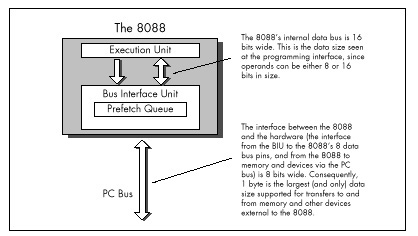
As shown in Figure 4.1, the 8-bit bus cycle-eater lies squarely on the 8088’s external data bus. Technically, it might be more accurate to place this cycle-eater in the Bus Interface Unit, which breaks 16-bit memory accesses into paired 8-bit accesses, but it is really the limited width of the external data bus that constricts data flow into and out of the 8088. True, the original PC’s bus is also only 8 bits wide, but that’s just to match the 8088’s 8-bit bus; even if the PC’s bus were 16 bits wide, data could still pass into and out of the 8088 chip itself only 1 byte at a time.
Each bus access by the 8088 takes 4 clock cycles, or 0.838 µs in the 4.77 MHz PC, and transfers 1 byte. That means that the maximum rate at which data can be transferred into and out of the 8088 is 1 byte every 0.838 µs. While 8086 bus accesses also take 4 clock cycles, each 8086 bus access can transfer either 1 byte or 1 word, for a maximum transfer rate of 1 word every 0.838 µs. Consequently, for word-sized memory accesses, the 8086 has an effective transfer rate of 1 byte every 0.419 µs. By contrast, every word-sized access on the 8088 requires two 4-cycle-long bus accesses, one for the high byte of the word and one for the low byte of the word. As a result, the 8088 has an effective transfer rate for word-sized memory accesses of just 1 word every 1.676 µs—and that, in a nutshell, is the 8-bit bus cycle-eater.
A related cycle-eater lurks beneath the 386SX chip, which is a 32-bit processor internally with only a 16-bit path to system memory. The numbers are different, but the way the cycle-eater operates is exactly the same. AT-compatible systems have 16-bit data buses, which can access a full 16-bit word at a time. The 386SX can process 32 bits (a doubleword) at a time, however, and loses a lot of time fetching that doubleword from memory in two halves.
One obvious effect of the 8-bit bus cycle-eater is that word-sized accesses to memory operands on the 8088 take 4 cycles longer than byte-sized accesses. That’s why the official instruction timings indicate that for code running on an 8088 an additional 4 cycles are required for every word-sized access to a memory operand. For instance,
mov ax,word ptr [MemVar]takes 4 cycles longer to read the word at address MemVar
than
mov al,byte ptr [MemVar]takes to read the byte at address MemVar. (Actually, the
difference between the two isn’t very likely to be exactly 4 cycles, for
reasons that will become clear once we discuss the prefetch queue and
dynamic RAM refresh cycle-eaters later in this chapter.)
What’s more, in some cases one instruction can perform multiple word-sized accesses, incurring that 4-cycle penalty on each access. For example, adding a value to a word-sized memory variable requires two word-sized accesses—one to read the destination operand from memory prior to adding to it, and one to write the result of the addition back to the destination operand—and thus incurs not one but two 4-cycle penalties. As a result
add word ptr [MemVar],axtakes about 8 cycles longer to execute than:
add byte ptr [MemVar],alString instructions can suffer from the 8-bit bus cycle-eater to a
greater extent than other instructions. Believe it or not, a single
REP MOVSW instruction can lose as much as 131,070
word-sized memory accesses x 4 cycles, or 524,280 cycles to the
8-bit bus cycle-eater! In other words, one 8088 instruction (admittedly,
an instruction that does a great deal) can take over one-tenth of a
second longer on an 8088 than on an 8086, simply because of the 8-bit
bus. One-tenth of a second! That’s a phenomenally long time in
computer terms; in one-tenth of a second, the 8088 can perform more than
50,000 additions and subtractions.
The upshot of all this is simply that the 8088 can transfer word-sized data to and from memory at only half the speed of the 8086, which inevitably causes performance problems when coupled with an Execution Unit that can process word-sized data every bit as quickly as an 8086. These problems show up with any code that uses word-sized memory operands. More ominously, as we will see shortly, the 8-bit bus cycle-eater can cause performance problems with other sorts of code as well.
The obvious implication of the 8-bit bus cycle-eater is that
byte-sized memory variables should be used whenever possible. After all,
the 8088 performs byte-sized memory accesses just as quickly as
the 8086. For instance, Listing 4.1, which uses a byte-sized memory
variable as a loop counter, runs in 10.03 s per loop. That’s 20 percent
faster than the 12.05 µs per loop execution time of Listing 4.2, which
uses a word-sized counter. Why the difference in execution times? Simply
because each word-sized DEC performs 4 byte-sized memory
accesses (two to read the word-sized operand and two to write the result
back to memory), while each byte-sized DEC performs only 2
byte-sized memory accesses in all.
LISTING 4.1 LST4-1.ASM
; Measures the performance of a loop which uses a
; byte-sized memory variable as the loop counter.
;
jmp Skip
;
Counter db 100
;
Skip:
call ZTimerOn
LoopTop:
dec [Counter]
jnz LoopTop
call ZTimerOffLISTING 4.2 LST4-2.ASM
; Measures the performance of a loop which uses a
; word-sized memory variable as the loop counter.
;
jmp Skip
;
Counter dw 100
;
Skip:
call ZTimerOn
LoopTop:
dec [Counter]
jnz LoopTop
call ZTimerOffI’d like to make a brief aside concerning code optimization in the
listings in this book. Throughout this book I’ve modeled the sample code
after working code so that the timing results are applicable to
real-world programming. In Listings 4.1 and 4.2, for example, I could
have shown a still greater advantage for byte-sized operands simply by
performing 1,000 DEC instructions in a row, with no
branching at all. However, DEC instructions don’t exist in
a vacuum, so in the listings I used code that both decremented the
counter and tested the result. The difference is that between
decrementing a memory location (simply an instruction) and using a loop
counter (a functional instruction sequence). If you come across code in
this book that seems less than optimal, it’s simply due to my desire to
provide code that’s relevant to real programming problems. On the other
hand, optimal code is an elusive thing indeed; by no means should you
assume that the code in this book is ideal! Examine it, question it, and
improve upon it, for an inquisitive, skeptical mind is an important part
of the Zen of assembly optimization.
Back to the 8-bit bus cycle-eater. As I’ve said, in 8088 work you should strive to use byte-sized memory variables whenever possible. That does not mean that you should use 2 byte-sized memory accesses to manipulate a word-sized memory variable in preference to 1 word-sized memory access, as, for instance,
mov dl,byte ptr [MemVar]
mov dh,byte ptr [MemVar+1]versus:
mov dx,word ptr [MemVar]Recall that every access to a memory byte takes at least 4 cycles; that limitation is built right into the 8088. The 8088 is also built so that the second byte-sized memory access to a 16-bit memory variable takes just those 4 cycles and no more. There’s no way you can manipulate the second byte of a word-sized memory variable faster with a second separate byte-sized instruction in less than 4 cycles. As a matter of fact, you’re bound to access that second byte much more slowly with a separate instruction, thanks to the overhead of instruction fetching and execution, address calculation, and the like.
For example, consider Listing 4.3, which performs 1,000 word-sized
reads from memory. This code runs in 3.77 µs per word read on a 4.77 MHz
8088. That’s 45 percent faster than the 5.49 µs per word read of Listing
4.4, which reads the same 1,000 words as Listing 4.3 but does so with
2,000 byte-sized reads. Both listings perform exactly the same number of
memory accesses—2,000 accesses, each byte-sized, as all 8088 memory
accesses must be. (Remember that the Bus Interface Unit must perform two
byte-sized memory accesses in order to handle a word-sized memory
operand.) However, Listing 4.3 is considerably faster because it expends
only 4 additional cycles to read the second byte of each word, while
Listing 4.4 performs a second LODSB, requiring 13 cycles,
to read the second byte of each word.
LISTING 4.3 LST4-3.ASM
; Measures the performance of reading 1,000 words
; from memory with 1,000 word-sized accesses.
;
sub si,si
mov cx,1000
call ZTimerOn
rep lodsw
call ZTimerOffLISTING 4.4 LST4-4.ASM
; Measures the performance of reading 1000 words
; from memory with 2,000 byte-sized accesses.
;
sub si,si
mov cx,2000
call ZTimerOn
rep lodsb
call ZTimerOffIn short, if you must perform a 16-bit memory access, let the 8088 break the access into two byte-sized accesses for you. The 8088 is more efficient at that task than your code can possibly be.
Word-sized variables should be stored in registers to the greatest feasible extent, since registers are inside the 8088, where 16-bit operations are just as fast as 8-bit operations because the 8-bit cycle-eater can’t get at them. In fact, it’s a good idea to keep as many variables of all sorts in registers as you can. Instructions with register-only operands execute very rapidly, partially because they avoid both the time-consuming memory accesses and the lengthy address calculations associated with memory operands.
There is yet another reason why register operands are preferable to memory operands, and it’s an unexpected effect of the 8-bit bus cycle-eater. Instructions with only register operands tend to be shorter (in terms of bytes) than instructions with memory operands, and when it comes to performance, shorter is usually better. In order to explain why that is true and how it relates to the 8-bit bus cycle-eater, I must diverge for a moment.
For the last few pages, you may well have been thinking that the 8-bit bus cycle-eater, while a nuisance, doesn’t seem particularly subtle or difficult to quantify. After all, any instruction reference tells us exactly how many cycles each instruction loses to the 8-bit bus cycle-eater, doesn’t it?
Yes and no. It’s true that in general we know approximately how much longer a given instruction will take to execute with a word-sized memory operand than with a byte-sized operand, although the dynamic RAM refresh and wait state cycle-eaters (which I’ll cover a little later) can raise the cost of the 8-bit bus cycle-eater considerably. However, all word-sized memory accesses lose 4 cycles to the 8-bit bus cycle-eater, and there’s one sort of word-sized memory access we haven’t discussed yet: instruction fetching. The ugliest manifestation of the 8-bit bus cycle-eater is in fact the prefetch queue cycle-eater.
In an 8088 context, here’s the prefetch queue cycle-eater in a nutshell: The 8088’s 8-bit external data bus keeps the Bus Interface Unit from fetching instruction bytes as fast as the 16-bit Execution Unit can execute them, so the Execution Unit often lies idle while waiting for the next instruction byte to be fetched.
Exactly why does this happen? Recall that the 8088 is an 8086 internally, but accesses word-sized memory data at only one-half the maximum rate of the 8086 due to the 8088’s 8-bit external data bus. Unfortunately, instructions are among the word-sized data the 8086 fetches, meaning that the 8088 can fetch instructions at only one-half the speed of the 8086. On the other hand, the 8086-equivalent Execution Unit of the 8088 can execute instructions every bit as fast as the 8086. The net result is that the Execution Unit burns up instruction bytes much faster than the Bus Interface Unit can fetch them, and ends up idling while waiting for instructions bytes to arrive.
The BIU can fetch instruction bytes at a maximum rate of one byte every 4 cycles—and that 4-cycle per instruction byte rate is the ultimate limit on overall instruction execution time, regardless of EU speed. While the EU may execute a given instruction that’s already in the prefetch queue in less than 4 cycles per byte, over time the EU can’t execute instructions any faster than they can arrive—and they can’t arrive faster than 1 byte every 4 cycles.
Clearly, then, the prefetch queue cycle-eater is nothing more than one aspect of the 8-bit bus cycle-eater. 8088 code often runs at less than the Execution Unit’s maximum speed because the 8-bit data bus can’t keep up with the demand for instruction bytes. That’s straightforward enough—so why all the fuss about the prefetch queue cycle-eater?
What makes the prefetch queue cycle-eater tricky is that it’s undocumented and unpredictable. That is, with a word-sized memory access, such as
mov [bx],axit’s well-documented that an extra 4 cycles will always be required to write the upper byte of AX to memory. Not so with the prefetch queue cycle-eater lurking nearby. For instance, the instructions
shr ax,1
shr ax,1
shr ax,1
shr ax,1
shr ax,1should execute in 10 cycles, since each SHR takes 2
cycles to execute, according to Intel’s specifications. Those
specifications contain Intel’s official instruction execution times, but
in this case—and in many others—the specifications are drastically
wrong. Why? Because they describe execution time once an instruction
reaches the prefetch queue. They say nothing about whether a given
instruction will be in the prefetch queue when it’s time for that
instruction to run, or how long it will take that instruction to reach
the prefetch queue if it’s not there already. Thanks to the low
performance of the 8088’s external data bus, that’s a glaring
omission—but, alas, an unavoidable one. Let’s look at why the official
execution times are wrong, and why that can’t be helped.
The sequence of 5 SHR instructions in the last example
is 10 bytes long. That means that it can never execute in less than 24
cycles even if the 4-byte prefetch queue is full when it starts, since 6
instruction bytes would still remain to be fetched, at 4 cycles per
fetch. If the prefetch queue is empty at the start, the sequence
could take 40 cycles. In short, thanks to instruction fetching,
the code won’t run at its documented speed, and could take up to four
times longer than it is supposed to.
Why does Intel document Execution Unit execution time rather than overall instruction execution time, which includes both instruction fetch time and Execution Unit (EU) execution time? Well, instruction fetching isn’t performed as part of instruction execution by the Execution Unit, but instead is carried on in parallel by the Bus Interface Unit (BIU) whenever the external data bus isn’t in use or whenever the EU runs out of instruction bytes to execute. Sometimes the BIU is able to use spare bus cycles to prefetch instruction bytes before the EU needs them, so in those cases instruction fetching takes no time at all, practically speaking. At other times the EU executes instructions faster than the BIU can fetch them, and instruction fetching then becomes a significant part of overall execution time. As a result, the effective fetch time for a given instruction varies greatly depending on the code mix preceding that instruction. Similarly, the state in which a given instruction leaves the prefetch queue affects the overall execution time of the following instructions.
In other words, while the execution time for a given instruction is constant, the fetch time for that instruction depends heavily on the context in which the instruction is executing—the amount of prefetching the preceding instructions allowed—and can vary from a full 4 cycles per instruction byte to no time at all.
As we’ll see later, other cycle-eaters, such as DRAM refresh and display memory wait states, can cause prefetching variations even during different executions of the same code sequence. Given that, it’s meaningless to talk about the prefetch time of a given instruction except in the context of a specific code sequence.
So now you know why the official instruction execution times are often wrong, and why Intel can’t provide better specifications. You also know now why it is that you must time your code if you want to know how fast it really is.
The effect of the code preceding an instruction on the execution time of that instruction makes the Zen timer trickier to use than you might expect, and complicates the interpretation of the results reported by the Zen timer. For one thing, the Zen timer is best used to time code sequences that are more than a few instructions long; below 10µs or so, prefetch queue effects and the limited resolution of the clock driving the timer can cause problems.
Some slight prefetch queue-induced inaccuracy usually exists even when the Zen timer is used to time longer code sequences, since the calls to the Zen timer usually alter the code’s prefetch queue from its normal state. (Branches—jumps, calls, returns and the like—empty the prefetch queue.) Ideally, the Zen timer is used to measure the performance of an entire subroutine, so the prefetch queue effects of the branches at the start and end of the subroutine are similar to the effects of the calls to the Zen timer when you’re measuring the subroutine’s performance.
Another way in which the prefetch queue cycle-eater complicates the use of the Zen timer involves the practice of timing the performance of a few instructions over and over. I’ll often repeat one or two instructions 100 or 1,000 times in a row in listings in this book in order to get timing intervals that are long enough to provide reliable measurements. However, as we just learned, the actual performance of any 8088 instruction depends on the code mix preceding any given use of that instruction, which in turn affects the state of the prefetch queue when the instruction starts executing. Alas, the execution time of an instruction preceded by dozens of identical instructions reflects just one of many possible prefetch states (and not a very likely state at that), and some of the other prefetch states may well produce distinctly different results.
For example, consider the code in Listings 4.5 and 4.6. Listing 4.5
shows our familiar SHR case. Here, because the prefetch
queue is always empty, execution time should work out to about 4 cycles
per byte, or 8 cycles per SHR, as shown in Figure 4.3.
(Figure 4.3 illustrates the relationship between instruction fetching
and execution in a simplified way, and is not intended to show the exact
timings of 8088 operations.) That’s quite a contrast to the official
2-cycle execution time of SHR. In fact, the Zen timer
reports that Listing 4.5 executes in 1.81µs per byte, or slightly
more than 4 cycles per byte. (The extra time is the result of
the dynamic RAM refresh cycle-eater, which we’ll discuss shortly.) Going
by Listing 4.5, we would conclude that the “true” execution time of
SHR is 8.64 cycles.
LISTING 4.5 LST4-5.ASM
; Measures the performance of 1,000 SHR instructions
; in a row. Since SHR executes in 2 cycles but is
; 2 bytes long, the prefetch queue is always empty,
; and prefetching time determines the overall
; performance of the code.
;
call ZTimerOn
rept 1000
shr ax,1
endm
call ZTimerOffLISTING 4.6 LST4-6.ASM
; Measures the performance of 1,000 MUL/SHR instruction
; pairs in a row. The lengthy execution time of MUL
; should keep the prefetch queue from ever emptying.
;
mov cx,1000
sub ax,ax
call ZTimerOn
rept 1000
mul ax
shr ax,1
endm
call ZTimerOff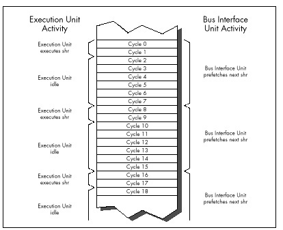
Now let’s examine Listing 4.6. Here each SHR follows a
MUL instruction. Since MUL instructions take
so long to execute that the prefetch queue is always full when they
finish, each SHR should be ready and waiting in the
prefetch queue when the preceding MUL ends. As a result,
we’d expect that each SHR would execute in 2 cycles;
together with the 118-cycle execution time of multiplying 0 times 0, the
total execution time should come to 120 cycles per SHR/MUL
pair, as shown in Figure 4.4. And, by God, when we run Listing 4.6 we
get an execution time of 25.14 µs per SHR/MUL pair, or
exactly 120 cycles! According to these results, the “true”
execution time of SHR would seem to be 2 cycles, quite a
change from the conclusion we drew from Listing 4.5.
The key point is this: We’ve seen one code sequence in which
SHR took 8-plus cycles to execute, and another in which it
took only 2 cycles. Are we talking about two different forms of
SHR here? Of course not—the difference is purely a
reflection of the differing states in which the preceding code left the
prefetch queue. In Listing 4.5, each SHR after the first
few follows a slew of other SHR instructions which have
sucked the prefetch queue dry, so overall performance reflects
instruction fetch time. By contrast, each SHR in Listing
4.6 follows a MUL instruction which leaves the prefetch
queue full, so overall performance reflects Execution Unit execution
time.
Clearly, either instruction fetch time or Execution Unit execution time—or even a mix of the two, if an instruction is partially prefetched—can determine code performance. Some people operate under a rule of thumb by which they assume that the execution time of each instruction is 4 cycles times the number of bytes in the instruction. While that’s often true for register-only code, it frequently doesn’t hold for code that accesses memory. For one thing, the rule should be 4 cycles times the number of memory accesses, not instruction bytes, since all accesses take 4 cycles on the 8088-based PC. For another, memory-accessing instructions often have slower Execution Unit execution times than the 4 cycles per memory access rule would dictate, because the 8088 isn’t very fast at calculating memory addresses. Also, the 4 cycles per instruction byte rule isn’t true for register-only instructions that are already in the prefetch queue when the preceding instruction ends.
The truth is that it never hurts performance to reduce either the
cycle count or the byte count of a given bit of code, but there’s no
guarantee that one or the other will improve performance either. For
example, consider Listing 4.7, which consists of a series of 4-cycle,
2-byte MOV AL,0 instructions, and which executes at the
rate of 1.81 µs per instruction. Now consider Listing 4.8, which
replaces the 4-cycle MOV AL,0 with the 3-cycle (but still
2-byte) SUB AL,AL, Despite its 1-cycle-per-instruction
advantage, Listing 4.8 runs at exactly the same speed as Listing 4.7.
The reason: Both instructions are 2 bytes long, and in both cases it is
the 8-cycle instruction fetch time, not the 3 or 4-cycle Execution Unit
execution time, that limits performance.
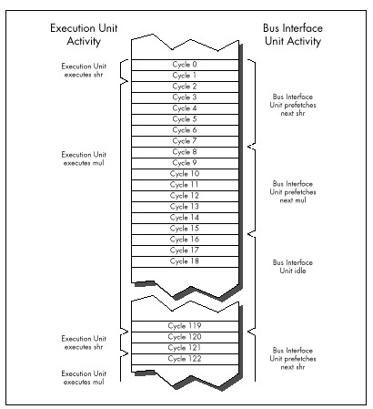
LISTING 4.7 LST4-7.ASM
; Measures the performance of repeated MOV AL,0 instructions,
; which take 4 cycles each according to Intel's official
; specifications.
;
sub ax,ax
call ZTimerOn
rept 1000
mov al,0
endm
call ZTimerOffLISTING 4.8 LST4-8.ASM
; Measures the performance of repeated SUB AL,AL instructions,
; which take 3 cycles each according to Intel's official
; specifications.
;
sub ax,ax
call ZTimerOn
rept 1000
sub al,al
endm
call ZTimerOffAs you can see, it’s easy to be drawn into thinking you’re saving cycles when you’re not. You can only improve the performance of a specific bit of code by reducing the factor—either instruction fetch time or execution time, or sometimes a mix of the two—that’s limiting the performance of that code.
In case you missed it in all the excitement, the variability of prefetching means that our method of testing performance by executing 1,000 instructions in a row by no means produces “true” instruction execution times, any more than the official execution times in the Intel manuals are “true” times. The fact of the matter is that a given instruction takes at least as long to execute as the time given for it in the Intel manuals, but may take as much as 4 cycles per byte longer, depending on the state of the prefetch queue when the preceding instruction ends.
The only true execution time for an instruction is a time measured in a certain context, and that time is meaningful only in that context.
What we really want is to know how long useful working code takes to run, not how long a single instruction takes, and the Zen timer gives us the tool we need to gather that information. Granted, it would be easier if we could just add up neatly documented instruction execution times—but that’s not going to happen. Without actually measuring the performance of a given code sequence, you simply don’t know how fast it is. For crying out loud, even the people who designed the 8088 at Intel couldn’t tell you exactly how quickly a given 8088 code sequence executes on the PC just by looking at it! Get used to the idea that execution times are only meaningful in context, learn the rules of thumb in this book, and use the Zen timer to measure your code.
Don’t think that because overall instruction execution time is
determined by both instruction fetch time and Execution Unit execution
time, the two times should be added together when estimating
performance. For example, practically speaking, each SHR in
Listing 4.5 does not take 8 cycles of instruction fetch time plus 2
cycles of Execution Unit execution time to execute. Figure 4.3 shows
that while a given SHR is executing, the fetch of the next
SHR is starting, and since the two operations are
overlapped for 2 cycles, there’s no sense in charging the time to both
instructions. You could think of the extra instruction fetch time for
SHR in Listing 4.5 as being 6 cycles, which yields an
overall execution time of 8 cycles when added to the 2 cycles of
Execution Unit execution time.
Alternatively, you could think of each SHR in Listing
4.5 as taking 8 cycles to fetch, and then executing in effectively 0
cycles while the next SHR is being fetched. Whichever
perspective you prefer is fine. The important point is that the time
during which the execution of one instruction and the fetching of the
next instruction overlap should only be counted toward the overall
execution time of one of the instructions. For all intents and purposes,
one of the two instructions runs at no performance cost whatsoever while
the overlap exists.
As a working definition, we’ll consider the execution time of a given instruction in a particular context to start when the first byte of the instruction is sent to the Execution Unit and end when the first byte of the next instruction is sent to the EU.
Reducing the impact of the prefetch queue cycle-eater is one of the overriding principles of high-performance assembly code. How can you do this? One effective technique is to minimize access to memory operands, since such accesses compete with instruction fetching for precious memory accesses. You can also greatly reduce instruction fetch time simply by your choice of instructions: Keep your instructions short. Less time is required to fetch instructions that are 1 or 2 bytes long than instructions that are 5 or 6 bytes long. Reduced instruction fetching lowers minimum execution time (minimum execution time is 4 cycles times the number of instruction bytes) and often leads to faster overall execution.
While short instructions minimize overall prefetch time, ironically
they actually often suffer more from the prefetch queue bottleneck than
do long instructions. Short instructions generally have such fast
execution times that they drain the prefetch queue despite their small
size. For example, consider the SHR of Listing 4.5, which
runs at only 25 percent of its Execution Unit execution time even though
it’s only 2 bytes long, thanks to the prefetch queue bottleneck. Short
instructions are nonetheless generally faster than long instructions,
thanks to the combination of fewer instruction bytes and faster
Execution Unit execution times, and should be used as much as
possible—just don’t expect them to run at their “official” documented
speeds.
More than anything, the above rules mean using the registers as heavily as possible, both because register-only instructions are short and because they don’t perform memory accesses to read or write operands. However, using the registers is a rule of thumb, not a commandment. In some circumstances, it may actually be faster to access memory. (The look-up table technique is one such case.) What’s more, the performance of the prefetch queue (and hence the performance of each instruction) differs from one code sequence to the next, and can even differ during different executions of the same code sequence.
All in all, writing good assembler code is as much an art as a science. As a result, you should follow the rules of thumb described here—and then time your code to see how fast it really is. You should experiment freely, but always remember that actual, measured performance is the bottom line.
In this chapter I’ve taken you further and further into the depths of the PC, telling you again and again that you must understand the computer at the lowest possible level in order to write good code. At this point, you may well wonder, “Have we gotten low enough?”
Not quite yet. The 8-bit bus and prefetch queue cycle-eaters are low-level indeed, but we’ve one level yet to go. Dynamic RAM refresh and wait states—our next topics—together form the lowest level at which the hardware of the PC affects code performance. Below this level, the PC is of interest only to hardware engineers.
Before we begin our discussion of dynamic RAM refresh, let’s step back for a moment to take an overall look at this lowest level of cycle-eaters. In truth, the distinctions between wait states and dynamic RAM refresh don’t much matter to a programmer. What is important is that you understand this: Under certain circumstances, devices on the PC bus can stop the CPU for 1 or more cycles, making your code run more slowly than it seemingly should.
Unlike all the cycle-eaters we’ve encountered so far, wait states and dynamic RAM refresh are strictly external to the CPU, as was shown in Figure 4.1. Adapters on the PC’s bus, such as video and memory cards, can insert wait states on any bus access, the idea being that they won’t be able to complete the access properly unless the access is stretched out. Likewise, the channel of the DMA controller dedicated to dynamic RAM refresh can request control of the bus at any time, although the CPU must relinquish the bus before the DMA controller can take over. This means that your code can’t directly control wait states or dynamic RAM refresh. However, code can sometimes be designed to minimize the effects of these cycle-eaters, and even when the cycle-eaters slow your code without there being a thing in the world you can do about it, you’re still better off understanding that you’re losing performance and knowing why your code doesn’t run as fast as it’s supposed to than you were programming in ignorance.
Let’s start with DRAM refresh, which affects the performance of every program that runs on the PC.
Dynamic RAM (DRAM) refresh is sort of an act of God. By that I mean that DRAM refresh invisibly and inexorably steals a certain fraction of all available memory access time from your programs, when they are accessing memory for code and data. (When they are accessing cache on more recent processors, theoretically the DRAM refresh cycle-eater doesn’t come into play, but there are other cycle-eaters waiting to prey on cache-bound programs.) While you could stop DRAM refresh, you wouldn’t want to since that would be a sure prescription for crashing your computer. In the end, thanks to DRAM refresh, almost all code runs a bit slower on the PC than it otherwise would, and that’s that.
A bit of background: A static RAM (SRAM) chip is a memory chip that retains its contents indefinitely so long as power is maintained. By contrast, each of several blocks of bits in a dynamic RAM (DRAM) chip retains its contents for only a short time after it’s accessed for a read or write. In order to get a DRAM chip to store data for an extended period, each of the blocks of bits in that chip must be accessed regularly, so that the chip’s stored data is kept refreshed and valid. So long as this is done often enough, a DRAM chip will retain its contents indefinitely.
All of the PC’s system memory consists of DRAM chips. Each DRAM chip in the PC must be completely refreshed about once every four milliseconds in order to ensure the integrity of the data it stores. Obviously, it’s highly desirable that the memory in the PC retain the correct data indefinitely, so each DRAM chip in the PC must always be refreshed within 4 ms of the last refresh. Since there’s no guarantee that a given program will access each and every DRAM block once every 4 ms, the PC contains special circuitry and programming for providing DRAM refresh.
On the original 8088-based IBM PC, timer 1 of the 8253 timer chip is programmed at power-up to generate a signal once every 72 cycles, or once every 15.08µs. That signal goes to channel 0 of the 8237 DMA controller, which requests the bus from the 8088 upon receiving the signal. (DMA stands for direct memory access, the ability of a device other than the 8088 to control the bus and access memory directly, without any help from the 8088.) As soon as the 8088 is between memory accesses, it gives control of the bus to the 8237, which in conjunction with special circuitry on the PC’s motherboard then performs a single 4-cycle read access to 1 of 256 possible addresses, advancing to the next address on each successive access. (The read access is only for the purpose of refreshing the DRAM; the data that is read isn’t used.)
The 256 addresses accessed by the refresh DMA accesses are arranged so that taken together they properly refresh all the memory in the PC. By accessing one of the 256 addresses every 15.08 µs, all of the PC’s DRAM is refreshed in 256 x 15.08 µs, or 3.86 ms, which is just about the desired 4 ms time I mentioned earlier. (Only the first 640K of memory is refreshed in the PC; video adapters and other adapters above 640K containing memory that requires refreshing must provide their own DRAM refresh in pre-AT systems.)
Don’t sweat the details here. The important point is this: For at least 4 out of every 72 cycles, the original PC’s bus is given over to DRAM refresh and is not available to the 8088, as shown in Figure 4.5. That means that as much as 5.56 percent of the PC’s already inadequate bus capacity is lost. However, DRAM refresh doesn’t necessarily stop the 8088 in its tracks for 4 cycles. The Execution Unit of the 8088 can keep processing while DRAM refresh is occurring, unless the EU needs to access memory. Consequently, DRAM refresh can slow code performance anywhere from 0 percent to 5.56 percent (and actually a bit more, as we’ll see shortly), depending on the extent to which DRAM refresh occupies cycles during which the 8088 would otherwise be accessing memory.
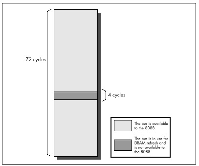
Let’s look at examples from opposite ends of the spectrum in terms of
the impact of DRAM refresh on code performance. First, consider the
series of MUL instructions in Listing 4.9. Since a 16-bit
MUL on the 8088 executes in between 118 and 133 cycles and
is only 2 bytes long, there should be plenty of time for the prefetch
queue to fill after each instruction, even after DRAM refresh has taken
its slice of memory access time. Consequently, the prefetch queue should
be able to keep the Execution Unit well-supplied with instruction bytes
at all times. Since Listing 4.9 uses no memory operands, the Execution
Unit should never have to wait for data from memory, and DRAM refresh
should have no impact on performance. (Remember that the Execution Unit
can operate normally during DRAM refreshes so long as it doesn’t need to
request a memory access from the Bus Interface Unit.)
LISTING 4.9 LST4-9.ASM
; Measures the performance of repeated MUL instructions,
; which allow the prefetch queue to be full at all times,
; to demonstrate a case in which DRAM refresh has no impact
; on code performance.
;
sub ax,ax
call ZTimerOn
rept 1000
mul ax
endm
call ZTimerOffRunning Listing 4.9, we find that each MUL executes in
24.72 µs, or exactly 118 cycles. Since that’s the shortest time in which
MUL can execute, we can see that no performance is lost to
DRAM refresh. Listing 4.9 clearly illustrates that DRAM refresh only
affects code performance when a DRAM refresh forces the Execution Unit
of the 8088 to wait for a memory access.
Now let’s look at the series of SHR instructions shown
in Listing 4.10. Since SHR executes in 2 cycles but is 2
bytes long, the prefetch queue should be empty while Listing 4.10
executes, with the 8088 prefetching instruction bytes non-stop. As a
result, the time per instruction of Listing 4.10 should precisely
reflect the time required to fetch the instruction bytes.
LISTING 4.10 LST4-10.ASM
; Measures the performance of repeated SHR instructions,
; which empty the prefetch queue, to demonstrate the
; worst-case impact of DRAM refresh on code performance.
;
call ZTimerOn
rept 1000
shr ax,1
endm
call ZTimerOffSince 4 cycles are required to read each instruction byte, we’d
expect each SHR to execute in 8 cycles, or 1.676 µs, if
there were no DRAM refresh. In fact, each SHR in Listing
4.10 executes in 1.81 µs, indicating that DRAM refresh is taking 7.4
percent of the program’s execution time. That’s nearly 2 percent more
than our worst-case estimate of the loss to DRAM refresh overhead! In
fact, the result indicates that DRAM refresh is stealing not 4, but 5.33
cycles out of every 72 cycles. How can this be?
The answer is that a given DRAM refresh can actually hold up CPU
memory accesses for as many as 6 cycles, depending on the timing of the
DRAM refresh’s DMA request relative to the 8088’s internal instruction
execution state. When the code in Listing 4.10 runs, each DRAM refresh
holds up the CPU for either 5 or 6 cycles, depending on where the 8088
is in executing the current SHR instruction when the
refresh request occurs. Now we see that things can get even worse than
we thought: DRAM refresh can steal as much as 8.33 percent of
available memory access time—6 out of every 72 cycles—from the
8088.
Which of the two cases we’ve examined reflects reality? While either case can happen, the latter case—significant performance reduction, ranging as high as 8.33 percent—is far more likely to occur. This is especially true for high-performance assembly code, which uses fast instructions that tend to cause non-stop instruction fetching.
Hmmm. When we discovered the prefetch queue cycle-eater, we learned to use short instructions. When we discovered the 8-bit bus cycle-eater, we learned to use byte-sized memory operands whenever possible, and to keep word-sized variables in registers. What can we do to work around the DRAM refresh cycle-eater?
Nothing.
As I’ve said before, DRAM refresh is an act of God. DRAM refresh is a fundamental, unchanging part of the PC’s operation, and there’s nothing you or I can do about it. If refresh were any less frequent, the reliability of the PC would be compromised, so tinkering with either timer 1 or DMA channel 0 to reduce DRAM refresh overhead is out. Nor is there any way to structure code to minimize the impact of DRAM refresh. Sure, some instructions are affected less by DRAM refresh than others, but how many multiplies and divides in a row can you really use? I suppose that code could conceivably be structured to leave a free memory access every 72 cycles, so DRAM refresh wouldn’t have any effect. In the old days when code size was measured in bytes, not K bytes, and processors were less powerful—and complex—programmers did in fact use similar tricks to eke every last bit of performance from their code. When programming the PC, however, the prefetch queue cycle-eater would make such careful code synchronization a difficult task indeed, and any modest performance improvement that did result could never justify the increase in programming complexity and the limits on creative programming that such an approach would entail. Besides, all that effort goes to waste on faster 8088s, 286s, and other computers with different execution speeds and refresh characteristics. There’s no way around it: Useful code accesses memory frequently and at irregular intervals, and over the long haul DRAM refresh always exacts its price.
If you’re still harboring thoughts of reducing the overhead of DRAM refresh, consider this. Instructions that tend not to suffer very much from DRAM refresh are those that have a high ratio of execution time to instruction fetch time, and those aren’t the fastest instructions of the PC. It certainly wouldn’t make sense to use slower instructions just to reduce DRAM refresh overhead, for it’s total execution time—DRAM refresh, instruction fetching, and all—that matters.
The important thing to understand about DRAM refresh is that it generally slows your code down, and that the extent of that performance reduction can vary considerably and unpredictably, depending on how the DRAM refreshes interact with your code’s pattern of memory accesses. When you use the Zen timer and get a fractional cycle count for the execution time of an instruction, that’s often the DRAM refresh cycle-eater at work. (The display adapter cycle is another possible culprit, and, on 386s and later processors, cache misses and pipeline execution hazards produce this sort of effect as well.) Whenever you get two timing results that differ less or more than they seemingly should, that’s usually DRAM refresh too. Thanks to DRAM refresh, variations of up to 8.33 percent in PC code performance are par for the course.
Wait states are cycles during which a bus access by the CPU to a device on the PC’s bus is temporarily halted by that device while the device gets ready to complete the read or write. Wait states are well and truly the lowest level of code performance. Everything we have discussed (and will discuss)—even DMA accesses—can be affected by wait states.
Wait states exist because the CPU must to be able to coexist with any adapter, no matter how slow (within reason). The 8088 expects to be able to complete each bus access—a memory or I/O read or write—in 4 cycles, but adapters can’t always respond that quickly for a number of reasons. For example, display adapters must split access to display memory between the CPU and the circuitry that generates the video signal based on the contents of display memory, so they often can’t immediately fulfill a request by the CPU for a display memory read or write. To resolve this conflict, display adapters can tell the CPU to wait during bus accesses by inserting one or more wait states, as shown in Figure 4.6. The CPU simply sits and idles as long as wait states are inserted, then completes the access as soon as the display adapter indicates its readiness by no longer inserting wait states. The same would be true of any adapter that couldn’t keep up with the CPU.
Mind you, this is all transparent to executing code. An instruction that encounters wait states runs exactly as if there were no wait states, only slower. Wait states are nothing more or less than wasted time as far as the CPU and your program are concerned.
By understanding the circumstances in which wait states can occur, you can avoid them when possible. Even when it’s not possible to work around wait states, it’s still to your advantage to understand how they can cause your code to run more slowly.
First, let’s learn a bit more about wait states by contrast with DRAM refresh. Unlike DRAM refresh, wait states do not occur on any regularly scheduled basis, and are of no particular duration. Wait states can only occur when an instruction performs a memory or I/O read or write. Both the presence of wait states and the number of wait states inserted on any given bus access are entirely controlled by the device being accessed. When it comes to wait states, the CPU is passive, merely accepting whatever wait states the accessed device chooses to insert during the course of the access. All of this makes perfect sense given that the whole point of the wait state mechanism is to allow a device to stretch out any access to itself for however much time it needs to perform the access.
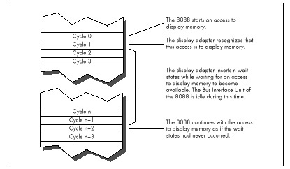
As with DRAM refresh, wait states don’t stop the 8088 completely. The Execution Unit can continue processing while wait states are inserted, so long as the EU doesn’t need to perform a bus access. However, in the PC, wait states most often occur when an instruction accesses a memory operand, so in fact the Execution Unit usually is stopped by wait states. (Instruction fetches rarely wait in an 8088-based PC because system memory is zero-wait-state. AT-class memory systems routinely insert 1 or more wait states, however.)
As it turns out, wait states pose a serious problem in just one area in the PC. While any adapter can insert wait states, in the PC only display adapters do so to the extent that performance is seriously affected.
Display adapters must serve two masters, and that creates a fundamental performance problem. Master #1 is the circuitry that drives the display screen. This circuitry must constantly read display memory in order to obtain the information used to draw the characters or dots displayed on the screen. Since the screen must be redrawn between 50 and 70 times per second, and since each redraw of the screen can require as many as 36,000 reads of display memory (more in Super VGA modes), master #1 is a demanding master indeed. No matter how demanding master #1 gets, however, its needs must always be met—otherwise the quality of the picture on the screen would suffer.
Master #2 is the CPU, which reads from and writes to display memory in order to manipulate the bytes that the video circuitry reads to form the picture on the screen. Master #2 is less important than master #1, since the CPU affects display quality only indirectly. In other words, if the video circuitry has to wait for display memory accesses, the picture will develop holes, snow, and the like, but if the CPU has to wait for display memory accesses, the program will just run a bit slower—no big deal.
It matters a great deal which master is more important, for while both the CPU and the video circuitry must gain access to display memory, only one of the two masters can read or write display memory at any one time. Potential conflicts are resolved by flat-out guaranteeing the video circuitry however many accesses to display memory it needs, with the CPU waiting for whatever display memory accesses are left over.
It turns out that the 8088 CPU has to do a lot of waiting, for three reasons. First, the video circuitry can take as much as about 90 percent of the available display memory access time, as shown in Figure 4.7, leaving as little as about 10 percent of all display memory accesses for the 8088. (These percentages vary considerably among the many EGA and VGA clones.)
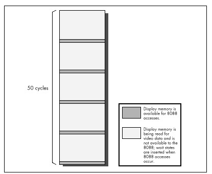
Second, because the displayed dots (or pixels, short for “picture elements”) must be drawn on the screen at a constant speed, many display adapters provide memory accesses only at fixed intervals. As a result, time can be lost while the 8088 synchronizes with the start of the next display adapter memory access, even if the video circuitry isn’t accessing display memory at that time, as shown in Figure 4.8.
Finally, the time it takes a display adapter to complete a memory access is related to the speed of the clock which generates pixels on the screen rather than to the memory access speed of the 8088. Consequently, the time taken for display memory to complete an 8088 read or write access is often longer than the time taken for system memory to complete an access, even if the 8088 lucks into hitting a free display memory access just as it becomes available, again as shown in Figure 4.8. Any or all of the three factors I’ve described can result in wait states, slowing the 8088 and creating the display adapter cycle.
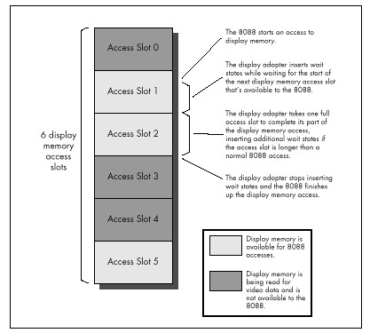
If some of this is Greek to you, don’t worry. The important point is that display memory is not very fast compared to normal system memory. How slow is it? Incredibly slow. Remember how slow IBM’s ill-fated PCjrwas? In case you’ve forgotten, I’ll refresh your memory: The PCjrwas at best only half as fast as the PC. The PCjr had an 8088 running at 4.77 MHz, just like the PC—why do you suppose it was so much slower? I’ll tell you why: All the memory in the PCjr was display memory.
Enough said. All the memory in the PC is not display memory, however, and unless you’re thickheaded enough to put code in display memory, the PC isn’t going to run as slowly as a PCjr. (Putting code or other non-video data in unused areas of display memory sounds like a neat idea—until you consider the effect on instruction prefetching of cutting the 8088’s already-poor memory access performance in half. Running your code from display memory is sort of like running on a hypothetical 8084—an 8086 with a 4-bit bus. Not recommended!) Given that your code and data reside in normal system memory below the 640K mark, how great an impact does the display adapter cycle-eater have on performance?
The answer varies considerably depending on what display adapter and what display mode we’re talking about. The display adapter cycle-eater is worst with the Enhanced Graphics Adapter (EGA) and the original Video Graphics Array (VGA). (Many VGAs, especially newer ones, insert many fewer wait states than IBM’s original VGA. On the other hand, Super VGAs have more bytes of display memory to be accessed in high-resolution mode.) While the Color/Graphics Adapter (CGA), Monochrome Display Adapter (MDA), and Hercules Graphics Card (HGC) all suffer from the display adapter cycle-eater as well, they suffer to a lesser degree. Since the VGA represents the base standard for PC graphics now and for the foreseeable future, and since it is the hardest graphics adapter to wring performance from, we’ll restrict our discussion to the VGA (and its close relative, the EGA) for the remainder of this chapter.
Even on the EGA and VGA, the effect of the display adapter cycle-eater depends on the display mode selected. In text mode, the display adapter cycle-eater is rarely a major factor. It’s not that the cycle-eater isn’t present; however, a mere 4,000 bytes control the entire text mode display, and even with the display adapter cycle-eater it just doesn’t take that long to manipulate 4,000 bytes. Even if the display adapter cycle-eater were to cause the 8088 to take as much as 5µs per display memory access—more than five times normal—it would still take only 4,000x 2x 5µs, or 40 ms, to read and write every byte of display memory. That’s a lot of time as measured in 8088 cycles, but it’s less than the blink of an eye in human time, and video performance only matters in human time. After all, the whole point of drawing graphics is to convey visual information, and if that information can be presented faster than the eye can see, that is by definition fast enough.
That’s not to say that the display adapter cycle-eater can’t matter in text mode. In Chapter 3, I recounted the story of a debate among letter-writers to a magazine about exactly how quickly characters could be written to display memory without causing snow. The writers carefully added up Intel’s instruction cycle times to see how many writes to display memory they could squeeze into a single horizontal retrace interval. (On a CGA, it’s only during the short horizontal retrace interval and the longer vertical retrace interval that display memory can be accessed in 80-column text mode without causing snow.) Of course, now we know that their cardinal sin was to ignore the prefetch queue; even if there were no wait states, their calculations would have been overly optimistic. There are display memory wait states as well, however, so the calculations were not just optimistic but wildly optimistic.
Text mode situations such as the above notwithstanding, where the display adapter cycle-eater really kicks in is in graphics mode, and most especially in the high-resolution graphics modes of the EGA and VGA. The problem here is not that there are necessarily more wait states per access in highgraphics modes (that varies from adapter to adapter and mode to mode). Rather, the problem is simply that are many more bytes of display memory per screen in these modes than in lower-resolution graphics modes and in text modes, so many more display memory accesses—each incurring its share of display memory wait states—are required in order to draw an image of a given size. When accessing the many thousands of bytes used in the high-resolution graphics modes, the cumulative effects of display memory wait states can seriously impact code performance, even as measured in human time.
For example, if we assume the same 5 µs per display memory access for the EGA’s high-resolution graphics mode that we assumed for text mode, it would take 26,000 x 2 x 5 µs, or 260 ms, to scroll the screen once in the EGA’s high-resolution graphics mode, mode 10H. That’s more than one-quarter of a second—noticeable by human standards, an eternity by computer standards.
That sounds pretty serious, but we did make an unfounded assumption
about memory access speed. Let’s get some hard numbers. Listing 4.11
accesses display memory at the 8088’s maximum speed, by way of a
REP MOVSW with display memory as both source and
destination. The code in Listing 4.11 executes in 3.18 µs per access to
display memory—not as long as we had assumed, but a long time
nonetheless.
LISTING 4.11 LST4-11.ASM
; Times speed of memory access to Enhanced Graphics
; Adapter graphics mode display memory at A000:0000.
;
mov ax,0010h
int 10h; select hi-res EGA graphics
; mode 10 hex (AH=0 selects
; BIOS set mode function,
; with AL=mode to select)
;
mov ax,0a000h
mov ds,ax
mov es,ax ;move to & from same segment
sub si,si ;move to & from same offset
mov di,si
mov cx,800h ;move 2K words
cld
call ZTimerOn
rep movsw ;simply read each of the first
; 2K words of the destination segment,
; writing each byte immediately back
; to the same address. No memory
; locations are actually altered; this
; is just to measure memory access
; times
call ZTimerOff
;
mov ax,0003h
int 10h ;return to text modeFor comparison, let’s see how long the same code takes when accessing
normal system RAM instead of display memory. The code in Listing 4.12,
which performs a REP MOVSW from the code segment to the
code segment, executes in 1.39 µs per display memory access. That means
that on average, 1.79 µs (more than 8 cycles!) are lost to the display
adapter cycle-eater on each access. In other words, the display adapter
cycle-eater can more than double the execution time of 8088
code!
LISTING 4.12 LST4-12.ASM
; Times speed of memory access to normal system
; memory.
;
mov ax,ds
mov es,ax ;move to & from same segment
sub si,si ;move to & from same offset
mov di,si
mov cx,800h ;move 2K words
cld
call ZTimerOn
rep movsw ;simply read each of the first
; 2K words of the destination segment,
; writing each byte immediately back
; to the same address. No memory
; locations are actually altered; this
; is just to measure memory access
; times
call ZTimerOffBear in mind that we’re talking about a worst case here; the impact of the display adapter cycle-eater is proportional to the percent of time a given code sequence spends accessing display memory.
A line-drawing subroutine, which executes perhaps a dozen instructions for each display memory access, generally loses less performance to the display adapter cycle-eater than does a block-copy or scrolling subroutine that uses
REP MOVSinstructions. Scaled and three-dimensional graphics, which spend a great deal of time performing calculations (often using very slow floating-point arithmetic), tend to suffer less.
In addition, code that accesses display memory infrequently tends to suffer only about half of the maximum display memory wait states, because on average such code will access display memory halfway between one available display memory access slot and the next. As a result, code that accesses display memory less intensively than the code in Listing 4.11 will on average lose 4 or 5 rather than 8-plus cycles to the display adapter cycle-eater on each memory access.
Nonetheless, the display adapter cycle-eater always takes its toll on graphics code. Interestingly, that toll becomes much higher on ATs and 80386 machines because while those computers can execute many more instructions per microsecond than can the 8088-based PC, it takes just as long to access display memory on those computers as on the 8088-based PC. Remember, the limited speed of access to a graphics adapter is an inherent characteristic of the adapter, so the fastest computer around can’t access display memory one iota faster than the adapter will allow.
What can we do about the display adapter cycle-eater? Well, we can minimize display memory accesses whenever possible. In particular, we can try to avoid read/modify/write display memory operations of the sort used to mask individual pixels and clip images. Why? Because read/modify/write operations require two display memory accesses (one read and one write) each time display memory is manipulated. Instead, we should try to use writes of the sort that set all the pixels in a given byte of display memory at once, since such writes don’t require accompanying read accesses. The key here is that only half as many display memory accesses are required to write a byte to display memory as are required to read a byte from display memory, mask part of it off and alter the rest, and write the byte back to display memory. Half as many display memory accesses means half as many display memory wait states.
Moreover, 486s and Pentiums, as well as recent Super VGAs, employ write-caching schemes that make display memory writes considerably faster than display memory reads.
Along the same line, the display adapter cycle-eater makes the popular exclusive-OR animation technique, which requires paired reads and writes of display memory, less-than-ideal for the PC. Exclusive-OR animation should be avoided in favor of simply writing images to display memory whenever possible.
Another principle for display adapter programming on the 8088 is to perform multiple accesses to display memory very rapidly, in order to make use of as many of the scarce accesses to display memory as possible. This is especially important when many large images need to be drawn quickly, since only by using virtually every available display memory access can many bytes be written to display memory in a short period of time. Repeated string instructions are ideal for making maximum use of display memory accesses; of course, repeated string instructions can only be used on whole bytes, so this is another point in favor of modifying display memory a byte at a time. (On faster processors, however, display memory is so slow that it often pays to do several instructions worth of work between display memory accesses, to take advantage of cycles that would otherwise be wasted on the wait states.)
It would be handy to explore the display adapter cycle-eater issue in depth, with lots of example code and execution timings, but alas, I don’t have the space for that right now. For the time being, all you really need to know about the display adapter cycle-eater is that on the 8088 you can lose more than 8 cycles of execution time on each access to display memory. For intensive access to display memory, the loss really can be as high as 8cycles (and up to 50, 100, or even more on 486s and Pentiums paired with slow VGAs), while for average graphics code the loss is closer to 4 cycles; in either case, the impact on performance is significant. There is only one way to discover just how significant the impact of the display adapter cycle-eater is for any particular graphics code, and that is of course to measure the performance of that code.
We’ve covered a great deal of sophisticated material in this chapter, so don’t feel bad if you haven’t understood everything you’ve read; it will all become clear from further reading, especially once you study, time, and tune code that you have written yourself. What’s really important is that you come away from this chapter understanding that on the 8088:
This basic knowledge about cycle-eaters puts you in a good position to understand the results reported by the Zen timer, and that means that you’re well on your way to writing high-performance assembler code.
There you have it: life under the programming interface. It’s not a particularly pretty picture for the inhabitants of that strange realm where hardware and software meet are little-known cycle-eaters that sap the speed from your unsuspecting code. Still, some of those cycle-eaters can be minimized by keeping instructions short, using the registers, using byte-sized memory operands, and accessing display memory as little as possible. None of the cycle-eaters can be eliminated, and dynamic RAM refresh can scarcely be addressed at all; still, aren’t you better off knowing how fast your code really runs—and why—than you were reading the official execution times and guessing? And while specific cycle-eaters vary in importance on later x86-family processors, with some cycle-eaters vanishing altogether and new ones appearing, the concept that understanding these obscure gremlins is a key to performance remains unchanged, as we’ll see again and again in later chapters.
We just moved. Those three little words should strike terror into the heart of anyone who owns more than a sleeping bag and a toothbrush. Our last move was the usual zoo—and then some. Because the distance from the old house to the new was only five miles, we used cars to move everything smaller than a washing machine. We have a sizable household—cats, dogs, kids, com, you name it—so the moving process took a number of car trips. A large number—33, to be exact. I personally spent about 15 hours just driving back and forth between the two houses. The move took days to complete.
Never again.
You’re probably wondering two things: What does this have to do with high-performance programming, and why on earth didn’t I rent a truck and get the move over in one or two trips, saving hours of driving? As it happens, the second question answers the first. I didn’t rent a truck because it seemed easier and cheaper to use cars—no big truck to drive, no rentals, spread the work out more manageably, and so on.
It wasn’t easier, and wasn’t even much cheaper. (It costs quite a bit to drive a car 330 miles, to say nothing of the value of 15 hours of my time.) But, at the time, it seemed as though my approach would be easier and cheaper. In fact, I didn’t realize just how much time I had wasted driving back and forth until I sat down to write this chapter.
In Chapter 1, I briefly discussed using restartable blocks. This, you might remember, is the process of handling in chunks data sets too large to fit in memory so that they can be processed just about as fast as if they did fit in memory. The restartable block approach is very fast but is relatively difficult to program.
At the opposite end of the spectrum lies byte-by-byte processing, whereby DOS (or, in less extreme cases, a group of library functions) is allowed to do all the hard work, so that you only have to deal with one byte at a time. Byte-by-byte processing is easy to program but can be extremely slow, due to the vast overhead that results from invoking DOS each time a byte must be processed.
Sound familiar? It should. I moved via the byte-by-byte approach, and the overhead of driving back and forth made for miserable performance. Renting a truck (the restartable block approach) would have required more effort and forethought, but would have paid off handsomely.
The easy, familiar approach often has nothing in its favor except that it requires less thinking; not a great virtue when writing high-performance code—or when moving.
And with that, let’s look at a fairly complex application of restartable blocks.
The application we’re going to examine searches a file for a
specified string. We’ll develop a program that will search the file
specified on the command line for a string (also specified on the
comline), then report whether the string was found or not. (Because the
searched-for string is obtained via argv, it can’t contain
any whitespace characters.)
This is a very limited subset of what search utilities such as grep can do, and isn’t really intended to be a generally useful application; the purpose is to provide insight into restartable blocks in particular and optimization in general in the course of developing a search engine. That search engine will, however, be easy to plug into any program, and there’s nothing preventing you from using it in a more fruitful context, like searching through a user-selectable file set.
The first point to address in designing our program involves the appropriate text-search approach to use. Literally dozens of workable ways exist to search a file. We can immediately discard all approaches that involve reading any byte of the file more than once, because disk access time is orders of magnitude slower than any data handling performed by our own code. Based on our experience in Chapter 1, we can also discard all approaches that get bytes either one at a time or in small sets from DOS. We want to read big “buffers-full” of bytes at a pop from the searched file, and the bigger the buffer the better—in order to minimize DOS’s overhead. A good rough cut is a buffer that will be between 16K and 64K, depending on the exact search approach, 64K being the maximum size because near pointers make for superior performance.
So we know we want to work with a large buffer, filling it as infrequently as possible. Now we have to figure out how to search through a file by loading it into that large buffer in chunks. To accomplish this, we have to know how we want to do our searching, and that’s not immediately obvious. Where do we begin?
Well, it might be instructive to consider how we would search if our search involved only one buffer, already resident in memory. In other words, suppose we don’t have to bother with file handling at all, and further suppose that we don’t have to deal with searching through multiple blocks. After all, that’s a good description of the all-important inner loop of our searching program, where the program will spend virtually all of its time (aside from the unavoidable disk access overhead).
The easiest approach would be to use a C/C++ library function. The
closest match to what we need is strstr(), which searches
one string for the first occurrence of a second string. However, while
strstr() would work, it isn’t ideal for our purposes. The
problem is this: Where we want to search a fixed-length buffer for the
first occurrence of a string, strstr() searches a
string for the first occurrence of another string.
We could put a zero byte at the end of our buffer to allow
strstr() to work, but why bother? The strstr()
function must spend time either checking for the end of the string being
searched or determining the length of that string—wasted effort given
that we already know exactly how long our search buffer is. Even if a
given strstr() implementation is well-written, its
performance will suffer, at least for our application, from unnecessary
overhead.
This illustrates why you shouldn’t think of C/C++ library functions as black boxes; understand what they do and try to figure out how they do it, and relate that to their performance in the context you’re interested in.
Given that no C/C++ library function meets our needs precisely, an
obvious alternative approach is the brute-force technique that uses
memcmp() to compare every potential matching
location in the buffer to the string we’re searching for, as illustrated
in Figure 5.1.
By the way, we could, of course, use our own code, working with
pointers in a loop, to perform the comparison in place of
memcmp(). But memcmp() will almost certainly
use the very fast REPZ CMPS instruction. However, never
assume! It wouldn’t hurt to use a debugger to check out the actual
machine-code implementation of memcmp() from your compiler.
If necessary, you could always write your own assembly language
implementation of memcmp().
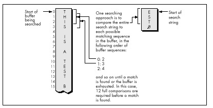
Invoking memcmp() for each potential match location
works, but entails considerable overhead. Each comparison requires that
parameters be pushed and that a call to and return from
memcmp() be performed, along with a pass through the
comparison loop. Surely there’s a better way!
Indeed there is. We can eliminate most calls to memcmp()
by performing a simple test on each potential match location that will
reject most such locations right off the bat. We’ll just check whether
the first character of the potentially matching buffer location matches
the first character of the string we’re searching for. We could make
this check by using a pointer in a loop to scan the buffer for the next
match for the first character, stopping to check for a match with the
rest of the string only when the first character matches, as
shown in Figure 5.2.
There’s yet a better way to implement this approach, however. Use the
memchr() function, which does nothing more or less than
find the next occurrence of a specified character in a fixed-length
buffer (presumably by using the extremely efficient
REPNZ SCASB instruction, although again it wouldn’t hurt to
check). By using memchr() to scan for potential matches
that can then be fully tested with memcmp(), we can build a
highly efficient search engine that takes good advantage of the
information we have about the buffer being searched and the string we’re
searching for. Our engine also relies heavily on repeated string
instructions, assuming that the memchr() and
memcmp() library functions are properly coded.
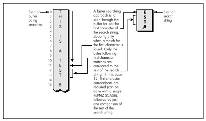
We’re going to go with the this approach in our file-searching program; the only trick lies in deciding how to integrate this approach with restartable blocks in order to search through files larger than our buffer. This certainly isn’t the fastest-possible searching algorithm; as one example, the Boyer-Moore algorithm, which cleverly eliminates many buffer locations as potential matches in the process of checking preceding locations, can be considerably faster. However, the Boyer-Moore algorithm is quite complex to understand and implement, and would distract us from our main focus, restartable blocks, so we’ll save it for a later chapter (Chapter 14, to be precise). Besides, I suspect you’ll find the approach we’ll use to be fast enough for most purposes.
Now that we’ve selected a searching approach, let’s integrate it with file handling and searching through multiple blocks. In other words, let’s make it restartable.
As it happens, there’s no great trick to putting the pieces of this
search program together. Basically, we’ll read in a buffer of data
(we’ll work with 16K at a time to avoid signed overflow problems with
integers), search it for a match with the
memchr()/memcmp() engine described, and exit
with a “string found” response if the desired string is found.
Otherwise, we’ll load in another buffer full of data from the file, search it, and so on. The only trick lies in handling potentially matching sequences in the file that start in one buffer and end in the next—that is, sequences that span buffers. We’ll handle this by copying the unchecked bytes at the end of one buffer to the start of the next and reading that many fewer bytes the next time we fill the buffer.
The exact number of bytes to be copied from the end of one buffer to the start of the next is the length of the searched-for string minus 1, since that’s how many bytes at the end of the buffer can’t be checked as possible matches (because the check would run off the end of the buffer).
That’s really all there is to it. Listing 5.1 shows the
file-searching program. As you can see, it’s not particularly complex,
although a few fairly opaque lines of code are required to handle
merging the end of one block with the start of the next. The code that
searches a single block—the function SearchForString()—is
simple and compact (as it should be, given that it’s by far the most
heavily-executed code in the listing).
Listing 5.1 nicely illustrates the core concept of restartable blocks: Organize your program so that you can do your processing within each block as fast as you could if there were only one block—which is to say at top speed—and make your blocks as large as possible in order to minimize the overhead associated with going from one block to the next.
LISTING 5.1 SEARCH.C
/* Program to search the file specified by the first command-line
* argument for the string specified by the second command-line
* argument. Performs the search by reading and searching blocks
* of size BLOCK_SIZE. */
#include <stdio.h>
#include <fcntl.h>
#include <string.h>
#include <alloc.h> /* alloc.h for Borland compilers,
malloc.h for Microsoft compilers */
#define BLOCK_SIZE 0x4000 /* we'll process the file in 16K blocks */
/* Searches the specified number of sequences in the specified
buffer for matches to SearchString of SearchStringLength. Note
that the calling code should already have shortened SearchLength
if necessary to compensate for the distance from the end of the
buffer to the last possible start of a matching sequence in the
buffer.
*/
int SearchForString(unsigned char *Buffer, int SearchLength,
unsigned char *SearchString, int SearchStringLength)
{
unsigned char *PotentialMatch;
/* Search so long as there are potential-match locations
remaining */
while ( SearchLength ) {
/* See if the first character of SearchString can be found */
if ( (PotentialMatch =
memchr(Buffer, *SearchString, SearchLength)) == NULL ) {
break; /* No matches in this buffer */
}
/* The first character matches; see if the rest of the string
also matches */
if ( SearchStringLength == 1 ) {
return(1); /* That one matching character was the whole
search string, so we've got a match */
}
else {
/* Check whether the remaining characters match */
if ( !memcmp(PotentialMatch + 1, SearchString + 1,
SearchStringLength - 1) ) {
return(1); /* We've got a match */
}
}
/* The string doesn't match; keep going by pointing past the
potential match location we just rejected */
SearchLength -= PotentialMatch - Buffer + 1;
Buffer = PotentialMatch + 1;
}
return(0); /* No match found */
}
main(int argc, char *argv[]) {
int Done; /* Indicates whether search is done */
int Handle; /* Handle of file being searched */
int WorkingLength; /* Length of current block */
int SearchStringLength; /* Length of string to search for */
int BlockSearchLength; /* Length to search in current block */
int Found; /* Indicates final search completion
status */
int NextLoadCount; /* # of bytes to read into next block,
accounting for bytes copied from the
last block */
unsigned char *WorkingBlock; /* Block storage buffer */
unsigned char *SearchString; /* Pointer to the string to search for */
unsigned char *NextLoadPtr; /* Offset at which to start loading
the next block, accounting for
bytes copied from the last block */
/* Check for the proper number of arguments */
if ( argc != 3 ) {
printf("usage: search filename search-string\n");
exit(1);
}
/* Try to open the file to be searched */
if ( (Handle = open(argv[1], O_RDONLY | O_BINARY)) == -1 ) {
printf("Can't open file: %s\n", argv[1]);
exit(1);
}
/* Calculate the length of text to search for */
SearchString = argv[2];
SearchStringLength = strlen(SearchString);
/* Try to get memory in which to buffer the data */
if ( (WorkingBlock = malloc(BLOCK_SIZE)) == NULL ) {
printf("Can't get enough memory\n");
exit(1);
}
/* Load the first block at the start of the buffer, and try to
fill the entire buffer */
NextLoadPtr = WorkingBlock;
NextLoadCount = BLOCK_SIZE;
Done = 0; /* Not done with search yet */
Found = 0; /* Assume we won't find a match */
/* Search the file in BLOCK_SIZE chunks */
do {
/* Read in however many bytes are needed to fill out the block
(accounting for bytes copied over from the last block), or
the rest of the bytes in the file, whichever is less */
if ( (WorkingLength = read(Handle, NextLoadPtr,
NextLoadCount)) == -1 ) {
printf("Error reading file %s\n", argv[1]);
exit(1);
}
/* If we didn't read all the bytes we requested, we're done
after this block, whether we find a match or not */
if ( WorkingLength != NextLoadCount ) {
Done = 1;
}
/* Account for any bytes we copied from the end of the last
block in the total length of this block */
WorkingLength += NextLoadPtr - WorkingBlock;
/* Calculate the number of bytes in this block that could
possibly be the start of a matching sequence that lies
entirely in this block (sequences that run off the end of
the block will be transferred to the next block and found
when that block is searched)
*/
if ( (BlockSearchLength =
WorkingLength - SearchStringLength + 1) <= 0 ) {
Done = 1; /* Too few characters in this block for
there to be any possible matches, so this
is the final block and we're done without
finding a match
*/
}
else {
/* Search this block */
if ( SearchForString(WorkingBlock, BlockSearchLength,
SearchString, SearchStringLength) ) {
Found = 1; /* We've found a match */
Done = 1;
}
else {
/* Copy any bytes from the end of the block that start
potentially-matching sequences that would run off
the end of the block over to the next block */
if ( SearchStringLength > 1 ) {
memcpy(WorkingBlock,
WorkingBlock+BLOCK_SIZE - SearchStringLength + 1,
SearchStringLength - 1);
}
/* Set up to load the next bytes from the file after the
bytes copied from the end of the current block */
NextLoadPtr = WorkingBlock + SearchStringLength - 1;
NextLoadCount = BLOCK_SIZE - SearchStringLength + 1;
}
}
} while ( !Done );
/* Report the results */
if ( Found ) {
printf("String found\n");
} else {
printf("String not found\n");
}
exit(Found); /* Return the found/not found status as the
DOS errorlevel */
}To boost the overall performance of Listing 5.1, I would normally
convert SearchForString() to assembly language at this
point. However, I’m not going to do that, and the reason is as important
a lesson as any discussion of optimized assembly code is likely to be.
Take a moment to examine some interesting performance aspects of the C
implementation, and all should become much clearer.
As you’ll recall from Chapter 1, one of the important rules for optimization involves knowing when optimization is worth bothering with at all. Another rule involves understanding where most of a program’s execution time is going. That’s more true for Listing 5.1 than you might think.
When Listing 5.1 is run on a 1 MB assembly source file, it takes
about three seconds to find the string “xxxend” (which is at the end of
the file) on a 20 MHz 386 machine, with the entire file in a disk cache.
If BLOCK_SIZE is trimmed from 16K to 4K, execution time
does not increase perceptibly! At 2K, the program slows slightly;
it’s not until the block size shrinks to 64 bytes that execution time
becomes approximately double that of the 16K buffer.
So the first thing we’ve discovered is that, while bigger blocks do
make for the best performance, the increment in performance may not be
very large, and might not justify the extra memory required for those
larger blocks. Our next discovery is that, even though we read the file
in large chunks, most of the execution time of Listing 5.1 is
nonetheless spent in executing the read() function.
When I replaced the read() function call in Listing 5.1
with code that simply fools the program into thinking that a 1 MB file
is being read, the program ran almost instantaneously—in less than 1/2
second, even when the searched-for string wasn’t anywhere to be found.
By contrast, Listing 5.1 requires three seconds to run even when
searching for a single character that isn’t found anywhere in the file,
the case in which a single call to memchr() (and thus a
single REPNZ SCASB) can eliminate an entire block at a
time.
All in all, the time required for DOS disk access calls is taking up
at least 80 percent of execution time, and search time is less than 20
percent of overall execution time. In fact, search time is probably a
good deal less than 20 percent of the total, given that the overhead of
loading the program, running through the C startup code, opening the
file, executing printf(), and exiting the program and
returning to the DOS shell are also included in my timings. Given which,
it should be apparent why converting to assembly language isn’t worth
the trouble—the best we could do by speeding up the search is a 10
percent or so improvement, and that would require more than doubling the
performance of code that already uses repeated string instructions to do
most of the work.
Not likely.
So that’s why we’re not going to go to assembly language in this example—which is not to say it would never be worth converting the search engine in Listing 5.1 to assembly.
If, for example, your application will typically search buffers in
which the first character of the search string occurs frequently as
might be the case when searching a text buffer for a string starting
with the space character an assembly implementation might be several
times faster. Why? Because assembly code can switch from
REPNZ SCASB to match the first character to
REPZ CMPS to check the remaining characters in just a few
instructions.
In contrast, Listing 5.1 must return from memchr(), set
up parameters, and call memcmp() in order to do the same
thing. Likewise, assembly can switch back to REPNZ SCASB
after a non-match much more quickly than Listing 5.1. The switching
overhead is high; when searching a file completely filled with the
character z for the string “zy,” Listing 5.1 takes almost 1/2 minute, or
nearly an order of magnitude longer than when searching a file filled
with normal text.
It might also be worth converting the search engine to assembly for searches performed entirely in memory; with the overhead of file access eliminated, improvements in search-engine performance would translate directly into significantly faster overall performance. One such application that would have much the same structure as Listing 5.1 would be searching through expanded memory buffers, and another would be searching through huge (segment-spanning) buffers.
And so we find, as we so often will, that optimization is definitely not a cut-and-dried matter, and that there is no such thing as a single “best” approach.
You must know what your application will typically do, and you must know whether you’re more concerned with average or worst-case performance before you can decide how best to speed up your program—and, indeed, whether speeding it up is worth doing at all.
By the way, don’t think that just because very large block sizes don’t much improve performance, it wasn’t worth using restartable blocks in Listing 5.1. Listing 5.1 runs more than three times more slowly with a block size of 32 bytes than with a block size of 4K, and any byte-by-byte approach would surely be slower still, due to the overhead of repeated calls to DOS and/or the C stream I/O library.
Restartable blocks do minimize the overhead of DOS file-access calls in Listing 5.1; it’s just that there’s no way to reduce that overhead to the point where it becomes worth attempting to further improve the performance of our relatively efficient search engine. Although the search engine is by no means fully optimized, it’s nonetheless as fast as there’s any reason for it to be, given the balance of performance among the components of this program.
I’ve explained two important lessons: Know when it’s worth optimizing further, and use restartable blocks to process large data sets as a series of blocks, with each block handled at high speed. The first lesson is less obvious than it seems.
When I set out to write this chapter, I fully intended to write an
assembly language version of Listing 5.1, and I expected the assembly
version to be much faster. When I actually looked at where execution
time was going (which I did by modifying the program to remove the calls
to the read() function, but a code profiler could be used
to do the same thing much more easily), I found that the best code in
the world wouldn’t make much difference.
When you try to speed up code, take a moment to identify the hot spots in your program so that you know where optimization is needed and whether it will make a significant difference before you invest your time.
As for restartable blocks: Here we tackled a considerably more complex application of restartable blocks than we did in Chapter 1—which turned out not to be so difficult after all. Don’t let irregularities in the programming tasks you tackle, such as strings that span blocks, fluster you into settling for easy, general—and slow—solutions. Focus on making the inner loop—the code that handles each block—as efficient as possible, then structure the rest of your code to support the inner loop.
Programming with restartable blocks isn’t easy, but when speed is an issue, using restartable blocks in the right places more than pays for itself with greatly improved performance. And when speed is not an issue, of course, or in code that’s not time-critical, you wouldn’t dream of wasting your time on optimization.
Would you?
I first met Jeff Duntemann at an authors’ dinner hosted by PC Tech Journal at Fall Comdex, back in 1985. Jeff was already reasonably well-known as a computer editor and writer, although not as famous as Complete Turbo Pascal, editions 1 through 672 (or thereabouts), TURBO TECHNIX, and PC TECHNIQUES would soon make him. I was fortunate enough to be seated next to Jeff at the dinner table, and, not surprisingly, our often animated conversation revolved around computers, computer writing, and more computers (not necessarily in that order).
Although I was making a living at computer work and enjoying it at the time, I nonetheless harbored vague ambitions of being a science-fiction writer when I grew up. (I have since realized that this hardly puts me in elite company, especially in the computer world, where it seems that every other person has told me they plan to write science fiction “someday.” Given that probably fewer than 500—I’m guessing here—original science fiction and fantasy short stories, and perhaps a few more novels than that, are published each year in this country, I see a few mid-life crises coming.)
At any rate, I had accumulated a small collection of rejection slips, and fancied myself something of an old hand in the field. At the end of the dinner, as the other writers complained half-seriously about how little they were paid for writing for Tech Journal, I leaned over to Jeff and whispered, “You know, the pay isn’t so bad here. You should see what they pay for science fiction—even to the guys who win awards!”
To which Jeff replied, “I know. I’ve been nominated for two Hugos.”
Oh.
Had I known I was seated next to a real, live science-fiction writer—an award-nominated writer, by God!—I would have pumped him for all I was worth, but the possibility had never occurred to me. I was at a dinner put on by a computer magazine, seated next to an editor who had just finished a book about Turbo Pascal, and, gosh, it was obvious that the appropriate topic was computers.
For once, the moral is not “don’t judge a book by its cover.” Jeff is in fact what he appeared to be at face value: a computer writer and editor. However, he is more, too; face value wasn’t full value. You’ll similarly find that face value isn’t always full value in computer programming, and especially so when working in assembly language, where many instructions have talents above and beyond their obvious abilities.
On the other hand, there are also a number of instructions, such as
LOOP, that are designed to perform specific functions but
aren’t always the best instructions for those functions. So don’t judge
a book by its cover, either.
Assembly language for the x86 family isn’t like any other language (for which we should, without hesitation, offer our profuse thanks). Assembly language reflects the design of the processor rather than the way we think, so it’s full of multiple instructions that perform similar functions, instructions with odd and often confusing side effects, and endless ways to string together different instructions to do much the same things, often with seemingly minuscule differences that can turn out to be surprisingly important.
To produce the best code, you must decide precisely what you need to accomplish, then put together the sequence of instructions that accomplishes that end most efficiently, regardless of what the instructions are usually used for. That’s why optimization for the PC is an art, and it’s why the best assembly language for the x86 family will almost always handily outperform compiled code. With that in mind, let’s look past face value—and while we’re at it, I’ll toss in a few examples of not judging a book by its cover.
The point to all this: You must come to regard the x86 family
instructions for what they do, not what you’re used to thinking they do.
Yes, SHL shifts a pattern left—but a look-up table can do
the same thing, and can often do it faster. ADD can indeed
add two operands, but it can’t put the result in a third register;
LEA can. The instruction set is your raw material for
writing high-performance code. By limiting yourself to thinking only in
certain well-established ways about the various instructions, you’re
putting yourself at a substantial disadvantage every time you sit down
to program.
In short, the x86 family can do much more than you think—if you’ll use everything it has to offer. Give it a shot!
Years ago, I saw a clip on the David Letterman show in which Letterman walked into a store by the name of “Just Lamps” and asked, “So what do you sell here?”
“Lamps,” he was told. “Just lamps. Can’t you read?”
“Lamps,” he said. “I see. And what else?”
From that bit of sublime idiocy we can learn much about divining the full value of an instruction. To wit:
Quick, what do the x86’s memory addressing modes do?
“Calculate memory addresses,” you no doubt replied. And you’re right, of course. But what else do they do?
They perform arithmetic, that’s what they do, and that’s a distinctly different and often useful perspective on memory address calculations.
For example, suppose you have an array base address in BX and an index into the array in SI. You could add the two registers together to address memory, like this:
add bx,si
mov al,[bx]Or you could let the processor do the arithmetic for you in a single instruction:
mov al,[bx+si]The two approaches are functionally interchangeable but not
equivalent from a performance standpoint, and which is better depends on
the particular context. If it’s a one-shot memory access, it’s best to
let the processor perform the addition; it’s generally faster at doing
this than a separate ADD instruction would be. If it’s a
memory access within a loop, however, it’s advantageous on the 8088 CPU
to perform the addition outside the loop, if possible, reducing
effective address calculation time inside the loop, as in the
following:
add bx,si
LoopTop:
mov al,[bx]
inc bx
loop LoopTopHere, MOV AL,[BX] is two cycles faster than
MOV AL,[BX+SI].
On a 286 or 386, however, the balance shifts.
MOV AL,[BX+SI] takes no longer than
MOV AL,[BX] on these processors because effective address
calculations generally take no extra time at all. (According to the MASM
manual, one extra clock is required if three memory addressing
components, as in MOV AL,[BX+SI+1], are used. I have not
been able to confirm this from Intel publications, but then I haven’t
looked all that hard.) If you’re optimizing for the 286 or 386, then,
you can take advantage of the processor’s ability to perform arithmetic
as part of memory address calculations without taking a performance
hit.
The 486 is an odd case, in which the use of an index register or the use of a base register that’s the destination of the previous instruction may slow things down, so it is generally but not always better to perform the addition outside the loop on the 486. All memory addressing calculations are free on the Pentium, however. I’ll discuss 486 performance issues in Chapters 12 and 13, and the Pentium in Chapters 19 through 21.
You’re probably not particularly wowed to hear that you can use addressing modes to perform memory addressing arithmetic that would otherwise have to be performed with separate arithmetic instructions. You may, however, be a tad more interested to hear that you can also use addressing modes to perform arithmetic that has nothing to do with memory addressing, and with a couple of advantages over arithmetic instructions, at that.
How?
With LEA, the only instruction that performs memory
addressing calculations but doesn’t actually address memory.
LEA accepts a standard memory addressing operand, but does
nothing more than store the calculated memory offset in the specified
register, which may be any general-purpose register. The operation of
LEA is illustrated in Figure 6.1, which also shows the
operation of register-to-register ADD, for comparison.
What does that give us? Two things that ADD doesn’t
provide: the ability to perform addition with either two or three
operands, and the ability to store the result in any register,
not just in one of the source operands.
Imagine that we want to add BX to DI, add two to the result, and store the result in AX. The obvious solution is this:
mov ax,bx
add ax,di
add ax,2(It would be more compact to increment AX twice than to add two to it, and would probably be faster on an 8088, but that’s not what we’re after at the moment.) An elegant alternative solution is simply:
lea ax,[bx+di+2]Likewise, either of the following would copy SI plus two to DI
mov di,si
add di,2or:
lea di,[si+2]Mind you, the only components LEA can add are BX or BP,
SI or DI, and a constant displacement, so it’s not going to replace
ADD most of the time. Also, LEA is
considerably slower than ADD on an 8088, although it is
just as fast as ADD on a 286 or 386 when fewer than three
memory addressing components are used. LEA is 1 cycle
slower than ADD on a 486 if the sum of two registers is
used to point to memory, but no slower than ADD on a
Pentium. On both a 486 and Pentium, LEA can also be slowed
down by addressing interlocks.
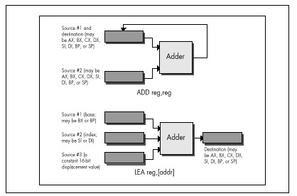
LEA really comes into its own as a “super-ADD”
instruction on the 386, 486, and Pentium, where it can take advantage of
the enhanced memory addressing modes of those processors. (The 486 and
Pentium offer the same modes as the 386, so I’ll refer only to the 386
from now on.) The 386 can do two very interesting things: It can use
any 32-bit register (EAX, EBX, and so on) as the memory
addressing base register and/or the memory addressing index register,
and it can multiply any 32-bit register used as an index by two, four,
or eight in the process of calculating a memory address, as shown in
Figure 6.2. Let’s see what that’s good for.
Well, the obvious advantage is that any two 32-bit registers, or any
32-bit register and any constant, or any two 32-bit registers and any
constant, can be added together, with the result stored in any register.
This makes the 32-bit LEA much more generally useful than
the standard 16-bit LEA in the role of an ADD
with an independent destination.
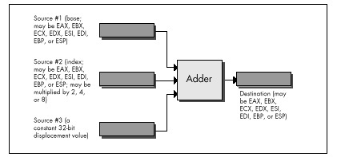
But what else can LEA do on a 386, besides add?
It can multiply any register used as an index. LEA can
multiply only by the power-of-two values 2, 4, or 8, but that’s useful
more often than you might imagine, especially when dealing with pointers
into tables. Besides, multiplying by 2, 4, or 8 amounts to a left shift
of 1, 2, or 3 bits, so we can now add up to two 32-bit registers and a
constant, and shift (or multiply) one of the registers to some
extent—all with a single instruction. For example,
lea edi,TableBase[ecx+edx*4]replaces all this
mov edi,edx
shl edi,2
add edi,ecx
add edi,offset TableBasewhen pointing to an entry in a doubly indexed table.
Are you impressed yet with all that LEA can do on the
386? Believe it or not, one more feature still awaits us.
LEA can actually perform a fast multiply of a 32-bit
register by some values other than powers of two. You see, the
same 32-bit register can be both base and index on the 386, and can be
scaled as the index while being used unchanged as the base. That means
that you can, for example, multiply EBX by 5 with:
lea ebx,[ebx+ebx*4]Without LEA and scaling, multiplication of EBX by 5
would require either a relatively slow MUL, along with a
set-up instruction or two, or three separate instructions along the
lines of the following
mov edx,ebx
shl ebx,2
add ebx,edxand would in either case require the destruction of the contents of another register.
Multiplying a 32-bit value by a non-power-of-two multiplier in just 2 cycles is a pretty neat trick, even though it works only on a 386 or 486.
The full list of values that
LEAcan multiply a register by on a 386 or 486 is: 2, 3, 4, 5, 8, and 9. That list doesn’t include every multiplier you might want, but it covers some commonly used ones, and the performance is hard to beat.
I’d like to extend my thanks to Duane Strong of Metagraphics for his
help in brainstorming uses for the 386 version of LEA and
for pointing out the complications of 486 instruction timings.
You might not think it, but there’s much to learn about performance programming from the Great Buffalo Sauna Fiasco. To wit:
The scene is Buffalo, New York, in the dead of winter, with the snow piled several feet deep. Four college students, living in typical student housing, are frozen to the bone. The third floor of their house, uninsulated and so cold that it’s uninhabitable, has an ancient bathroom. One fabulously cold day, inspiration strikes:
“Hey—we could make that bathroom into a sauna!”
Pandemonium ensues. Someone rushes out and buys a gas heater, and at considerable risk to life and limb hooks it up to an abandoned but still live gas pipe that once fed a stove on the third floor. Someone else gets sheets of plastic and lines the walls of the bathroom to keep the moisture in, and yet another student gets a bucket full of rocks. The remaining chap brings up some old wooden chairs and sets them up to make benches along the sides of the bathroom. Voila—instant sauna!
They crank up the gas heater, put the bucket of rocks in front of it, close the door, take off their clothes, and sit down to steam themselves. Mind you, it’s not yet 50 degrees Fahrenheit in this room, but the gas heater is roaring. Surely warmer times await.
Indeed they do. The temperature climbs to 55 degrees, then 60, then 63, then 65, and finally creeps up to 68 degrees.
And there it stops.
68 degrees is warm for an uninsulated third floor in Buffalo in the dead of winter. Damn warm. It is not, however, particularly warm for a sauna. Eventually someone acknowledges the obvious and allows that it might have been a stupid idea after all, and everyone agrees, and they shut off the heater and leave, each no doubt offering silent thanks that they had gotten out of this without any incidents requiring major surgery.
And so we see that the best idea in the world can fail for lack of either proper design or adequate horsepower. The primary cause of the Great Buffalo Sauna Fiasco was a lack of horsepower; the gas heater was flat-out undersized. This is analogous to trying to write programs that incorporate features like bitmapped text and searching of multisegment buffers without using high-performance assembly language. Any PC language can perform just about any function you can think of—eventually. That heater would eventually have heated the room to 110 degrees, too—along about the first of June or so.
The Great Buffalo Sauna Fiasco also suffered from fundamental design flaws. A more powerful heater would indeed have made the room hotter—and might well have burned the house down in the process. Likewise, proper algorithm selection and good design are fundamental to performance. The extra horsepower a superb assembly language implementation gives a program is worth bothering with only in the context of a good design.
Assembly language optimization is a small but crucial corner of the PC programming world. Use it sparingly and only within the framework of a good design—but ignore it and you may find various portions of your anatomy out in the cold.
So, drawing fortitude from the knowledge that our quest is a pure and worthy one, let’s resume our exploration of assembly language instructions with hidden talents and instructions with well-known talents that are less than they appear to be. In the process, we’ll come to see that there is another, very important optimization level between the algorithm/design level and the cycle-counting/individual instruction level. I’ll call this middle level local optimization; it involves focusing on optimizing sequences of instructions rather than individual instructions, all with an eye to implementing designs as efficiently as possible given the capabilities of the x86 family instruction set.
And yes, in case you’re wondering, the above story is indeed true. Was I there? Let me put it this way: If I were, I’d never admit it!
Let’s examine first an instruction that is less than it appears to
be: LOOP. There’s no mystery about what LOOP
does; it decrements CX and branches if CX doesn’t decrement to zero.
It’s so beautifully suited to the task of counting down loops that any
experienced x86 programmer instinctively stuffs the loop count in CX and
reaches for LOOP when setting up a loop. That’s
fine—LOOP does, of course, work as advertised—but there is
one problem:
On half of the processors in the x86 family,
LOOPis slower thanDEC CXfollowed byJNZ. (Granted,DEC CX/JNZisn’t precisely equivalent toLOOP, becauseDECalters the flags and LOOP doesn’t, but in most situations they’re comparable.)
How can this be? Don’t ask me, ask Intel. On the 8088 and 80286,
LOOP is indeed faster than DEC CX/JNZ by a
cycle, and LOOP is generally a little faster still because
it’s a byte shorter and so can be fetched faster. On the 386, however,
things change; LOOP is two cycles slower than
DEC/JNZ and the fetch time for one extra byte on even an
uncached 386 generally isn’t significant. (Remember that the 386 fetches
four instruction bytes at a pop.) LOOP is three cycles
slower than DEC/JNZ on the 486, and the 486 executes
instructions in so few cycles that those three cycles mean that
DEC/JNZ is nearly twice as fast as
LOOP. Then, too, unlike LOOP, DEC doesn’t
require that CX be used, so the DEC/JNZ
solution is both faster and more flexible on the 386 and 486, and on the
Pentium as well. (By the way, all this is not just theory; I’ve timed
the relative performances of LOOP and
DEC CX/JNZ on a cached 386, and LOOP really is slower.)
Things are stranger still for
LOOP’s relativeJCXZ, which branches if and only if CX is zero.JCXZis faster thanAND CX,CX/JZon the 8088 and 80286, and equivalent on the 80386—but is about twice as slow on the 486!
By the way, don’t fall victim to the lures of JCXZ and
do something like this:
and cx,ofh ;Isolate the desired field
jcxz SkipLoop ;If field is 0, don't botherThe AND instruction has already set the Zero flag, so
this
and cx,0fh ;Isolate the desired field
jz SkipLoop ;If field is 0, don't botherwill do just fine and is faster on all processors. Use
JCXZ only when the Zero flag isn’t already set to reflect
the status of CX.
What can we learn from LOOP and JCXZ?
First, that a single instruction that is intended to do a complex task
is not necessarily faster than several instructions that together do the
same thing. Second, that the relative merits of instructions and
optimization rules vary to a surprisingly large degree across the x86
family.
In particular, if you’re going to write 386 protected mode code,
which will run only on the 386, 486, and Pentium, you’d be well advised
to rethink your use of the more esoteric members of the x86 instruction
set. LOOP, JCXZ, the various accumulator-specific
instructions, and even the string instructions in many circumstances no
longer offer the advantages they did on the 8088. Sometimes they’re just
not any faster than more general instructions, so they’re not worth
going out of your way to use; sometimes, as with LOOP,
they’re actually slower, and you’d do well to avoid them altogether in
the 386/486 world. Reviewing the instruction cycle times in the MASM or
TASM manuals, or looking over the cycle times in Intel’s literature, is
a good place to start; published cycle times are closer to actual
execution times on the 386 and 486 than on the 8088, and are reasonably
reliable indicators of the relative performance levels of x86
instructions.
Cycle counting and directly substituting instructions
(DEC CX/JNZ for LOOP, for example) are
techniques that belong at the lowest level of optimization. It’s an
important level, but it’s fairly mechanical; once you’ve learned the
capabilities and relative performance levels of the various
instructions, you should be able to select the best instructions fairly
easily. What’s more, this is a task at which compilers excel. What I’m
saying is that you shouldn’t get too caught up in counting cycles
because that’s a small (albeit important) part of the optimization
picture, and not the area in which your greatest advantage lies.
One level at which assembly language programming pays off handsomely is that of local optimization; that is, selecting the best sequence of instructions for a task. The key to local optimization is viewing the 80x86 instruction set as a set of building blocks, each with unique characteristics. Your job is to sequence those blocks so that they perform well. It doesn’t matter what the instructions are intended to do or what their names are; all that matters is what they do.
Our discussion of LOOP versus DEC/JNZ is an
excellent example of optimization by cycle counting. It’s worth knowing,
but once you’ve learned it, you just routinely use DEC/JNZ
at the bottom of loops in 386/486-specific code, and that’s that.
Besides, you’ll save at most a few cycles each time, and while that
helps a little, it’s not going to make all that much
difference.
Now let’s step back for a moment, and with no preconceptions consider
what the x86 instruction set can do for us. The bulk of the time with
both LOOP and DEC/JNZ is taken up by
branching, which just happens to be one of the slowest aspects of every
processor in the x86 family, and the rest is taken up by decrementing
the count register and checking whether it’s zero. There may be ways to
perform those tasks a little faster by selecting different instructions,
but they can get only so fast, and branching can’t even get all that
fast.
The trick, then, is not to find the fastest way to decrement a count and branch conditionally, but rather to figure out how to accomplish the same result without decrementing or branching as often. Remember the Kobiyashi Maru problem in Star Trek? The same principle applies here: Redefine the problem to one that offers better solutions.
Consider Listing 7.1, which searches a buffer until either the
specified byte is found, a zero byte is found, or the specified number
of characters have been checked. Such a function would be useful for
scanning up to a maximum number of characters in a zero-terminated
buffer. Listing 7.1, which uses LOOP in the main loop,
performs a search of the sample string for a period (‘.’) in 170 µs on a
20 MHz cached 386.
When the LOOP in Listing 7.1 is replaced with
DEC CX/JNZ, performance improves to 168 µs, less than 2
percent faster than Listing 7.1. Actually, instruction fetching,
instruction alignment, cache characteristics, or something similar is
affecting these results; I’d expect a slightly larger improvement—around
7 percent—but that’s the most that counting cycles could buy us in this
case. (All right, already; LOOPNZ could be used at the
bottom of the loop, and other optimizations are surely possible, but all
that won’t add up to anywhere near the benefits we’re about to see from
local optimization, and that’s the whole point.)
LISTING 7.1 L7-1.ASM
; Program to illustrate searching through a buffer of a specified
; length until either a specified byte or a zero byte is
; encountered.
; A standard loop terminated with LOOP is used.
.model small
.stack 100h
.data
; Sample string to search through.
SampleString label byte
db 'This is a sample string of a long enough length '
db 'so that raw searching speed can outweigh any '
db 'extra set-up time that may be required.',0
SAMPLE_STRING_LENGTH equ $-SampleString
; User prompt.
Prompt db 'Enter character to search for:$'
; Result status messages.
ByteFoundMsg db 0dh,0ah
db 'Specified byte found.',0dh,0ah,'$'
ZeroByteFoundMsg db 0dh, 0ah
db 'Zero byte encountered.',0dh,0ah,'$'
NoByteFoundMsg db 0dh,0ah
db 'Buffer exhausted with no match.', 0dh, 0ah, '$'
.code
Start proc near
mov ax,@data ;point to standard data segment
mov ds,ax
mov dx,offset Prompt
mov ah,9 ;DOS print string function
int 21h ;prompt the user
mov ah,1 ;DOS get key function
int 21h ;get the key to search for
mov ah,al ;put character to search for in AH
mov cx,SAMPLE_STRING_LENGTH ;# of bytes to search
mov si,offset SampleString ;point to buffer to search
call SearchMaxLength ;search the buffer
mov dx,offset ByteFoundMsg ;assume we found the byte
jc PrintStatus ;we did find the byte
;we didn't find the byte, figure out
;whether we found a zero byte or
;ran out of buffer
mov dx,offset NoByteFoundMsg
;assume we didn't find a zero byte
jcxz PrintStatus ;we didn't find a zero byte
mov dx,offset ZeroByteFoundMsg ;we found a zero byte
PrintStatus:
mov ah,9 ;DOS print string function
int 21h ;report status
mov ah,4ch ;return to DOS
int 21h
Start endp
; Function to search a buffer of a specified length until either a
; specified byte or a zero byte is encountered.
; Input:
; AH = character to search for
; CX = maximum length to be searched (must be > 0)
; DS:SI = pointer to buffer to be searched
; Output:
; CX = 0 if and only if we ran out of bytes without finding
; either the desired byte or a zero byte
; DS:SI = pointer to searched-for byte if found, otherwise byte
; after zero byte if found, otherwise byte after last
; byte checked if neither searched-for byte nor zero
; byte is found
; Carry Flag = set if searched-for byte found, reset otherwise
SearchMaxLength proc near
cld
SearchMaxLengthLoop:
lodsb ;get the next byte
cmp al,ah ;is this the byte we want?
jz ByteFound ;yes, we're done with success
and al,al ;is this the terminating 0 byte?
jz ByteNotFound ;yes, we're done with failure
loop SearchMaxLengthLoop ;it's neither, so check the next
;byte, if any
ByteNotFound:
clc ;return "not found" status
ret
ByteFound:
dec si ;point back to the location at which
;we found the searched-for byte
stc ;return "found" status
ret
SearchMaxLength endp
end StartListing 7.2 takes a different tack, unrolling the loop so that four
bytes are checked for each LOOP performed. The same
instructions are used inside the loop in each listing, but Listing 7.2
is arranged so that three-quarters of the LOOPs are
eliminated. Listings 7.1 and 7.2 perform exactly the same task, and they
use the same instructions in the loop—the searching algorithm hasn’t
changed in any way—but we have sequenced the instructions differently in
Listing 7.2, and that makes all the difference.
LISTING 7.2 L7-2.ASM
; Program to illustrate searching through a buffer of a specified
; length until a specified zero byte is encountered.
; A loop unrolled four times and terminated with LOOP is used.
.model small
.stack 100h
.data
; Sample string to search through.
SampleString label byte
db 'This is a sample string of a long enough length '
db 'so that raw searching speed can outweigh any '
db 'extra set-up time that may be required.',0
SAMPLE_STRING_LENGTH equ $-SampleString
; User prompt.
Prompt db 'Enter character to search for:$'
; Result status messages.
ByteFoundMsg db 0dh,0ah
db 'Specified byte found.',0dh,0ah,'$'
ZeroByteFoundMsg db 0dh,0ah
db 'Zero byte encountered.', 0dh, 0ah, '$'
NoByteFoundMsg db 0dh,0ah
db 'Buffer exhausted with no match.', 0dh, 0ah, '$'
; Table of initial, possibly partial loop entry points for
; SearchMaxLength.
SearchMaxLengthEntryTable labelword
dw SearchMaxLengthEntry4
dw SearchMaxLengthEntry1
dw SearchMaxLengthEntry2
dw SearchMaxLengthEntry3
.code
Start proc near
mov ax,@data ;point to standard data segment
mov ds,ax
mov dx,offset Prompt
mov ah,9 ;DOS print string function
int 21h ;prompt the user
mov ah,1 ;DOS get key function
int 21h ;get the key to search for
mov ah,al ;put character to search for in AH
mov cx,SAMPLE_STRING_LENGTH ;# of bytes to search
mov si,offset SampleString ;point to buffer to search
call SearchMaxLength ;search the buffer
mov dx,offset ByteFoundMsg ;assume we found the byte
jc PrintStatus ;we did find the byte
;we didn't find the byte, figure out
;whether we found a zero byte or
;ran out of buffer
mov dx,offset NoByteFoundMsg
;assume we didn't find a zero byte
jcxz PrintStatus ;we didn't find a zero byte
mov dx,offset ZeroByteFoundMsg ;we found a zero byte
PrintStatus:
mov ah,9 ;DOS print string function
int 21h ;report status
mov ah,4ch ;return to DOS
int 21h
Start endp
; Function to search a buffer of a specified length until either a
; specified byte or a zero byte is encountered.
; Input:
; AH = character to search for
; CX = maximum length to be searched (must be > 0)
; DS:SI = pointer to buffer to be searched
; Output:
; CX = 0 if and only if we ran out of bytes without finding
; either the desired byte or a zero byte
; DS:SI = pointer to searched-for byte if found, otherwise byte
; after zero byte if found, otherwise byte after last
; byte checked if neither searched-for byte nor zero
; byte is found
; Carry Flag = set if searched-for byte found, reset otherwise
SearchMaxLength proc near
cld
mov bx,cx
add cx,3 ;calculate the maximum # of passes
shr cx,1 ;through the loop, which is
shr cx,1 ;unrolled 4 times
and bx,3 ;calculate the index into the entry
;point table for the first,
;possibly partial loop
shl bx,1 ;prepare for a word-sized look-up
jmp SearchMaxLengthEntryTable[bx]
;branch into the unrolled loop to do
;the first, possibly partial loop
SearchMaxLengthLoop:
SearchMaxLengthEntry4:
lodsb ;get the next byte
cmp al,ah ;is this the byte we want?
jz ByteFound ;yes, we're done with success
and al,al ;is this the terminating 0 byte?
jz ByteNotFound ;yes, we're done with failure
SearchMaxLengthEntry3:
lodsb ;get the next byte
cmp al,ah ;is this the byte we want?
jz ByteFound ;yes, we're done with success
and al,al ;is this the terminating 0 byte?
jz ByteNotFound ;yes, we're done with failure
SearchMaxLengthEntry2:
lodsb ;get the next byte
cmp al,ah ;is this the byte we want?
jz ByteFound ;yes, we're done with success
and al,al ;is this the terminating 0 byte?
jz ByteNotFound ;yes, we're done with failure
SearchMaxLengthEntry1:
lodsb ;get the next byte
cmp al,ah ;is this the byte we want?
jz ByteFound ;yes, we're done with success
and al,al ;is this the terminating 0 byte?
jz ByteNotFound ;yes, we're done with failure
loop SearchMaxLengthLoop ;it's neither, so check the next
; four bytes, if any
ByteNotFound:
clc ;return "not found" status
ret
ByteFound:
dec si ;point back to the location at which
; we found the searched-for byte
stc ;return "found" status
ret
SearchMaxLength endp
end StartHow much difference? Listing 7.2 runs in 121 µs—40 percent faster
than Listing 7.1, even though Listing 7.2 still uses LOOP
rather than DEC CX/JNZ. (The loop in Listing 7.2 could be
unrolled further, too; it’s just a question of how much more memory you
want to trade for ever-decreasing performance benefits.) That’s typical
of local optimization; it won’t often yield the order-of-magnitude
improvements that algorithmic improvements can produce, but it can get
you a critical 50 percent or 100 percent improvement when you’ve
exhausted all other avenues.
The point is simply this: You can gain far more by stepping back a bit and thinking of the fastest overall way for the CPU to perform a task than you can by saving a cycle here or there using different instructions. Try to think at the level of sequences of instructions rather than individual instructions, and learn to treat x86 instructions as building blocks with unique characteristics rather than as instructions dedicated to specific tasks.
As another example of local optimization, consider the matter of rotating or shifting a mask into position. First, let’s look at the simple task of setting bit N of AX to 1.
The obvious way to do this is to place N in CL, rotate the bit into position, and OR it with AX, as follows:
MOV BX,1
SHL BX,CL
OR AX,BXThis solution is obvious because it takes good advantage of the special ability of the x86 family to shift or rotate by the variable number of bits specified by CL. However, it takes an average of about 45 cycles on an 8088. It’s actually far faster to precalculate the results, pass the bit number in BX, and look the shifted bit up, as shown in Listing 7.3.
LISTING 7.3 L7-3.ASM
SHL BX,1 ;prepare for word sized look up
OR AX,ShiftTable[BX] ;look up the bit and OR it in
:
ShiftTable LABEL WORD
BIT_PATTERN=0001H
REPT 16
DW BIT_PATTERN
BIT_PATTERN=BIT_PATTERN SHL 1
ENDMEven though it accesses memory, this approach takes only 20 cycles—more than twice as fast as the variable shift. Once again, we were able to improve performance considerably—not by knowing the fastest instructions, but by selecting the fastest sequence of instructions.
In the particular example above, we once again run into the difficulty of optimizing across the x86 family. The table lookup is faster on the 8088 and 286, but it’s slightly slower on the 386 and no faster on the 486. However, 386/486-specific code could use enhanced addressing to accomplish the whole job in just one instruction, along the lines of the code snippet in Listing 7.4.
LISTING 7.4 L7-4.ASM
OR EAX,ShiftTable[EBX*4] ;look up the bit and OR it in
:
ShiftTable LABEL DWORD
BIT_PATTERN=0001H
REPT 32
DD BIT_PATTERN
BIT_PATTERN=BIT_PATTERN SHL 1
ENDMBesides illustrating the advantages of local optimization, this example also shows that it generally pays to precalculate results; this is often done at or before assembly time, but precalculated tables can also be built at run time. This is merely one aspect of a fundamental optimization rule: Move as much work as possible out of your critical code by whatever means necessary.
The NOT instruction flips all the bits in the operand,
from 0 to 1 or from 1 to 0. That’s as simple as could be, but
NOT nonetheless has a minor but interesting talent: It
doesn’t affect the flags. That can be irritating; I once spent a good
hour tracking down a bug caused by my unconscious assumption that
NOT does set the flags. After all, every other arithmetic
and logical instruction sets the flags; why not NOT?
Probably because NOT isn’t considered to be an arithmetic
or logical instruction at all; rather, it’s a data manipulation
instruction, like MOV and the various rotates. (These are
RCR, RCL, ROR, and
ROL, which affect only the Carry and Overflow flags.) NOT
is often used for tasks, such as flipping masks, where there’s no reason
to test the state of the result, and in that context it can be handy to
keep the flags unmodified for later testing.
Besides, if you want to
NOTan operand and set the flags in the process, you can justXORit with -1. Put another way, the only functional difference betweenNOT AXandXOR AX,0FFFFHis thatXORmodifies the flags andNOTdoesn’t.
The x86 instruction set offers many ways to accomplish almost any task. Understanding the subtle distinctions between the instructions—whether and which flags are set, for example—can be critical when you’re trying to optimize a code sequence and you’re running out of registers, or when you’re trying to minimize branching.
Another case in which there are two slightly different ways to
perform a task involves adding 1 to an operand. You can do this with
INC, as in INC AX, or you can do it with
ADD, as in ADD AX,1. What’s the difference?
The obvious difference is that INC is usually a byte or two
shorter (the exception being ADD AL,1, which at two bytes
is the same length as INC AL), and is faster on some
processors. Less obvious, but no less important, is that
ADD sets the Carry flag while INC leaves the
Carry flag untouched.
Why is that important? Because it allows INC to function
as a data pointer manipulation instruction for multi-word arithmetic.
You can use INC to advance the pointers in code like that
shown in Listing 7.5 without having to do any work to preserve the Carry
status from one addition to the next.
LISTING 7.5 L7-5.ASM
CLC ;clear the Carry for the initial addition
LOOP_TOP:
MOV AX,[SI];get next source operand word
ADC [DI],AX;add with Carry to dest operand word
INC SI ;point to next source operand word
INC SI
INC DI ;point to next dest operand word
INC DI
LOOP LOOP_TOPIf ADD were used, the Carry flag would have to be saved
between additions, with code along the lines shown in Listing 7.6.
LISTING 7.6 L7-6.ASM
CLC ;clear the carry for the initial addition
LOOP_TOP:
MOV AX,[SI] ;get next source operand word
ADC [DI],AX ;add with carry to dest operand word
LAHF ;set aside the carry flag
ADD SI,2 ;point to next source operand word
ADD DI,2 ;point to next dest operand word
SAHF ;restore the carry flag
LOOP LOOP_TOPIt’s not that the Listing 7.6 approach is necessarily better or
worse; that depends on the processor and the situation. The Listing 7.6
approach is different, and if you understand the differences,
you’ll be able to choose the best approach for whatever code you happen
to write. (DEC has the same property of preserving the
Carry flag, by the way.)
There are a couple of interesting aspects to the last example. First,
note that LOOP doesn’t affect any flags at all; this allows
the Carry flag to remain unchanged from one addition to the next. Not
altering the arithmetic flags is a common characteristic of program
control instructions (as opposed to arithmetic and logical instructions
like SUB and AND, which do alter the
flags).
The rule is not that the arithmetic flags change whenever the CPU performs a calculation; rather, the flags change whenever you execute an arithmetic, logical, or flag control (such as
CLCto clear the Carry flag) instruction.
Not only do LOOP and JCXZ not alter the
flags, but REP MOVS, which counts down CX to 0, doesn’t
affect the flags either.
The other interesting point about the last example is the use of
LAHF and SAHF, which transfer the low byte of
the FLAGS register to and from AH, respectively. These instructions were
created to help provide compatibility with the 8080’s (that’s
8080, not 8088) PUSH PSW and
POP PSW instructions, but turn out to be compact (one byte)
instructions for saving and restoring the arithmetic flags. A word of
caution, however: SAHF restores the Carry, Zero, Sign,
Auxiliary Carry, and Parity flags—but not the Overflow flag,
which resides in the high byte of the FLAGS register. Also, be aware
that LAHF and SAHF provide a fast way to
preserve the flags on an 8088 but are relatively slow instructions on
the 486 and Pentium.
There are times when it’s a clear liability that INC
doesn’t set the Carry flag. For instance
INC AX
ADC DX,0does not increment the 32-bit value in DX:AX. To do that, you’d need the following:
ADD AX,1
ADC DX,0As always, pay attention!
When I was a senior in high school, a pop song called “Seasons in the Sun,” sung by one Terry Jacks, soared up the pop charts and spent, as best I can recall, two straight weeks atop Kasey Kasem’s American Top 40. “Seasons in the Sun” wasn’t a particularly good song, primarily because the lyrics were silly. I’ve never understood why the song was a hit, but, as so often happens with undistinguished but popular music by forgotten one- or two-shot groups (“Don’t Pull Your Love Out on Me Baby,” “Billy Don’t Be a Hero,” et al.), I heard it everywhere for a month or so, then gave it not another thought for 15 years.
Recently, though, I came across a review of a Rhino Records collection of obscure 1970s pop hits. Knowing that Jeff Duntemann is an aficionado of such esoterica (who do you know who owns an album by The Peppermint Trolley Company?), I sent the review to him. He was amused by it and, as we kicked the names of old songs around, “Seasons in the Sun” came up. I expressed my wonderment that a song that really wasn’t very good was such a big hit.
“Well,” said Jeff, “I think it suffered in the translation from the French.”
Ah-ha! Mystery solved. Apparently everyone but me knew that it was translated from French, and that novelty undoubtedly made the song a big hit. The translation was also surely responsible for the sappy lyrics; dollars to donuts that the original French lyrics were stronger.
Which brings us without missing a beat to this chapter’s theme, speeding up C with assembly language. When you seek to speed up a C program by converting selected parts of it (generally no more than a few functions) to assembly language, make sure you end up with high-performance assembly language code, not fine-tuned C code. Compilers like Microsoft C/C++ and Watcom C are by now pretty good at fine-tuning C code, and you’re not likely to do much better by taking the compiler’s assembly language output and tweaking it.
To make the process of translating C code to assembly language worth the trouble, you must ignore what the compiler does and design your assembly language code from a pure assembly language perspective. With a merely adequate translation, you risk laboring mightily for little or no reward.
Apropos of which, when was the last time you heard of Terry Jacks?
The key to optimizing C programs with assembly language is, as always, writing good assembly language code, but with an added twist. Rule 1 when converting C code to assembly is this: Don’t think like a compiler. That’s more easily said than done, especially when the C code you’re converting is readily available as a model and the assembly code that the compiler generates is available as well. Nevertheless, the principle of not thinking like a compiler is essential, and is, in one form or another, the basis for all that I’ll discuss below.
Before I discuss Rule 1 further, let me mention rule number 0: Only optimize where it matters. The bulk of execution time in any program is spent in a very small portion of the code, and most code beyond that small portion doesn’t have any perceptible impact on performance. Unless you’re supremely concerned with code size (an area in which assembly-only programs can excel), I’d suggest that you write most of your code in C and reserve assembly for the truly critical sections of your code; that’s the formula that I find gives the most bang for the buck.
This is not to say that complete programs shouldn’t be designed with optimized assembly language in mind. As you’ll see shortly, orienting your data structures towards assembly language can be a salubrious endeavor indeed, even if most of your code is in C. When it comes to actually optimizing code and/or converting it to assembly, though, do it only where it matters. Get a profiler—and use it!
Also make it a point to concentrate on refining your program design and algorithmic approach at the conceptual and/or C levels before doing any assembly language optimization.
Assembly language optimization is the final and far from the only step in the optimization chain, and as such should be performed last; converting to assembly too soon can lock in your code before the design is optimal. At the very least, conversion to assembly tends to make future changes and debugging more difficult, slowing you down and limiting your options.
In order to think differently from a compiler, you must understand both what compilers and C programmers tend to do and how that differs from what assembly language does well. In this pursuit, it can be useful to examine the code your compiler generates, either by viewing the code in a debugger or by having the compiler generate an assembly language output file. (The latter is done with /Fa or /Fc in Microsoft C/C++ and -S in Borland C++.)
C programmers tend to modularize their code with lots of function calls. That’s good for readable, reliable, reusable code, and it allows the compiler to optimize better because it can deal with fewer variables and statements in each optimization arena—but it’s not so good when viewed from the assembly language level. Calls and returns are slow, especially in the large code model, and the pushes required to put parameters on the stack are expensive as well.
What this means is that when you want to speed up a portion of a C program, you should identify the entire critical portion and move all of that critical portion into an assembly language function. You don’t want to move a part of the inner loop into assembly language and then call it from C every time through the loop; the function call and return overhead would be unacceptable. Carve out the critical code en masse and move it into assembly, and try to avoid calls and returns even in your assembly code. True, in assembly you can pass parameters in registers, but the calls and returns themselves are still slow; if the extra cycles they take don’t affect performance, then the code they’re in probably isn’t critical, and perhaps you’ve chosen to convert too much code to assembly, eh?
C compilers work within the stack frame model, whereby variables reside in a block of stack memory and are accessed via offsets from BP. Compilers may store a couple of variables in registers and may briefly keep other variables in registers when they’re used repeatedly, but the stack frame is the underlying architecture. It’s a nice architecture; it’s flexible, convenient, easy to program, and makes for fairly compact code. However, stack frames have a few drawbacks. They must be constructed and destroyed, which takes both time and code. They are so easy to use that they tend to bias the assembly language programmer in favor of accessing memory variables more often than might be necessary. Finally, you cannot use BP as a general-purpose register if you intend to access a stack frame, and having that seventh register available is sometimes useful indeed.
That doesn’t mean you shouldn’t use stack frames, which are useful and often necessary. Just don’t fall victim to their undeniable charms.
C compilers are not terrific at handling segments. Some compilers can efficiently handle a single far pointer used in a loop by leaving ES set for the duration of the loop. But two far pointers used in the same loop confuse every compiler I’ve seen, causing the full segment:offset address to be reloaded each time either pointer is used.
This particularly affects performance in 286 protected mode (under OS/2 1.X or the Rational DOS Extender, for example) because segment loads in protected mode take a minimum of 17 cycles, versus a mere 2 cycles in real mode.
In assembly language you have full control over segments. Use it, and, if necessary, reorganize your code to minimize segment loading.
You might think that the most obvious advantage assembly language has
over C is that it allows the use of all forms of instructions and all
registers in all ways, whereas C compilers tend to use a subset of
registers and instructions in a limited number of ways. Yes and no. It’s
true that C compilers typically don’t generate instructions such as
XLAT, rotates, or the string instructions. On the other
hand, XLAT and rotates are useful in a limited set of
circumstances, and string instructions are used in the C
library functions. In fact, C library code is likely to be carefully
optimized by experts, and may be much better than equivalent code you’d
produce yourself.
Am I saying that C compilers produce better code than you do? No, I’m saying that they can, unless you use assembly language properly. Writing code in assembly language rather than C guarantees nothing.
You can write good assembly, bad assembly, or assembly that is virtually indistinguishable from compiled code; you are more likely than not to write the latter if you think that optimization consists of tweaking compiled C code.
Sure, you can probably use the registers more efficiently and take advantage of an instruction or two that the compiler missed, but the code isn’t going to get a whole lot faster that way.
True optimization requires rethinking your code to take advantage of assembly language. A C loop that searches through an integer array for matches might compile
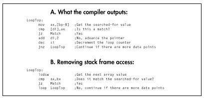
to something like Figure 8.1A. You might look at that and tweak it to the code shown in Figure 8.1B.
Congratulations! You’ve successfully eliminated all stack frame
access, you’ve used LOOP (although DEC SI/JNZ
is actually faster on 386 and later machines, as I explained in the last
chapter), and you’ve used a string instruction. Unfortunately, the new
code isn’t going to run very much faster. Maybe 25 percent faster, maybe
a little more. Big deal. You’ve eliminated the trappings of the
compiler—the stack frame and the restricted register usage—but you’re
still thinking like the compiler. Try this:
repnz scasw
jz MatchIt’s a simple example—but, I hope, a convincing one. Stretch your brain when you optimize.
The ultimate in assembly language optimization comes when you change
the rules; that is, when you reorganize the entire program to allow the
use of better assembly language code in the small section of code that
most affects overall performance. For example, consider that the data
searched in the last example is stored in an array of structures, with
each structure in the array containing other information as well. In
this situation, REP SCASW couldn’t be used because the data
searched through wouldn’t be contiguous.
However, if the need for performance in searching the array is urgent
enough, there’s no reason why you can’t reorganize the data. This might
mean removing the array elements from the structures and storing them in
their own array so that REP SCASW could be
used.
Organizing a program’s data so that the performance of the critical sections can be optimized is a key part of design, and one that’s easily shortchanged unless, during the design stage, you thoroughly understand and work to bring together your data needs, the critical sections of your program, and potential assembly language optimizations.
More on this shortly.
To recap, here are some things to look for when striving to convert C code into optimized assembly language:
That said, let me show some of these precepts in action.
Listing 8.1 is the sample C application I’m going to use to examine
optimization in action. Listing 8.1 isn’t really complete—it doesn’t
handle the “no-matches” case well, and it assumes that the sum of all
matches will fit into an int-but it will do just fine as an
optimization example.
LISTING 8.1 L8-1.C
/* Program to search an array spanning a linked list of variable-
sized blocks, for all entries with a specified ID number,
and return the average of the values of all such entries. Each of
the variable-sized blocks may contain any number of data entries,
stored as an array of structures within the block. */
#include <stdio.h>
#ifdef __TURBOC__
#include <alloc.h>
#else
#include <malloc.h>
#endif
void main(void);
void exit(int);
unsigned int FindIDAverage(unsigned int, struct BlockHeader *);
/* Structure that starts each variable-sized block */
struct BlockHeader {
struct BlockHeader *NextBlock; /* Pointer to next block, or NULL
if this is the last block in the
linked list */
unsigned int BlockCount; /* The number of DataElement entries
in this variable-sized block */
};
/* Structure that contains one element of the array we'll search */
struct DataElement {
unsigned int ID; /* ID # for array entry */
unsigned int Value; /* Value of array entry */
};
void main(void) {
int i,j;
unsigned int IDToFind;
struct BlockHeader *BaseArrayBlockPointer,*WorkingBlockPointer;
struct DataElement *WorkingDataPointer;
struct BlockHeader **LastBlockPointer;
printf("ID # for which to find average: ");
scanf("%d",&IDToFind);
/* Build an array across 5 blocks, for testing */
/* Anchor the linked list to BaseArrayBlockPointer */
LastBlockPointer = &BaseArrayBlockPointer;
/* Create 5 blocks of varying sizes */
for (i = 1; i < 6; i++) {
/* Try to get memory for the next block */
if ((WorkingBlockPointer =
(struct BlockHeader *) malloc(sizeof(struct BlockHeader) +
sizeof(struct DataElement) * i * 10)) == NULL) {
exit(1);
}
/* Set the # of data elements in this block */
WorkingBlockPointer->BlockCount = i * 10;
/* Link the new block into the chain */
*LastBlockPointer = WorkingBlockPointer;
/* Point to the first data field */
WorkingDataPointer =
(struct DataElement *) ((char *)WorkingBlockPointer +
sizeof(struct BlockHeader));
/* Fill the data fields with ID numbers and values */
for (j = 0; j < (i * 10); j++, WorkingDataPointer++) {
WorkingDataPointer->ID = j;
WorkingDataPointer->Value = i * 1000 + j;
}
/* Remember where to set link from this block to the next */
LastBlockPointer = &WorkingBlockPointer->NextBlock;
}
/* Set the last block's "next block" pointer to NULL to indicate
that there are no more blocks */
WorkingBlockPointer->NextBlock = NULL;
printf("Average of all elements with ID %d: %u\n",
IDToFind, FindIDAverage(IDToFind, BaseArrayBlockPointer));
exit(0);
}
/* Searches through the array of DataElement entries spanning the
linked list of variable-sized blocks, starting with the block
pointed to by BlockPointer, for all entries with IDs matching
SearchedForID, and returns the average value of those entries. If
no matches are found, zero is returned */
unsigned int FindIDAverage(unsigned int SearchedForID,
struct BlockHeader *BlockPointer)
{
struct DataElement *DataPointer;
unsigned int IDMatchSum;
unsigned int IDMatchCount;
unsigned int WorkingBlockCount;
IDMatchCount = IDMatchSum = 0;
/* Search through all the linked blocks until the last block
(marked with a NULL pointer to the next block) has been
searched */
do {
/* Point to the first DataElement entry within this block */
DataPointer =
(struct DataElement *) ((char *)BlockPointer +
sizeof(struct BlockHeader));
/* Search all the DataElement entries within this block
and accumulate data from all that match the desired ID */
for (WorkingBlockCount=0;
WorkingBlockCount<BlockPointer->BlockCount;
WorkingBlockCount++, DataPointer++) {
/* If the ID matches, add in the value and increment the
match counter */
if (DataPointer->ID == SearchedForID) {
IDMatchCount++;
IDMatchSum += DataPointer->Value;
}
}
/* Point to the next block, and continue as long as that pointer
isn't NULL */
} while ((BlockPointer = BlockPointer->NextBlock) != NULL);
/* Calculate the average of all matches */
if (IDMatchCount == 0)
return(0); /* Avoid division by 0 */
else
return(IDMatchSum / IDMatchCount);
}The main body of Listing 8.1 constructs a linked list of memory
blocks of various sizes and stores an array of structures across those
blocks, as shown in Figure 8.2. The function FindIDAverage
in Listing 8.1 searches through that array for all matches to a
specified ID number and returns the average value of all such matches.
FindIDAverage contains two nested loops, the outer one
repeating once for each linked block and the inner one repeating once
for each array element in each block. The inner loop—the critical one—is
compact, containing only four statements, and should lend itself rather
well to compiler optimization.
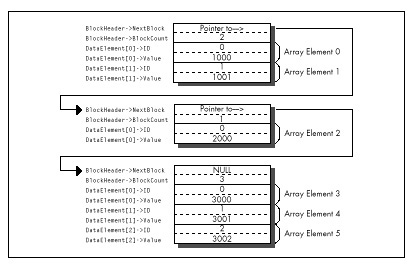
As it happens, Microsoft C/C++ does optimize the inner loop of
FindIDAverage nicely. Listing 8.2 shows the code Microsoft
C/C++ generates for the inner loop, consisting of a mere seven assembly
language instructions inside the loop. The compiler is smart enough to
convert the loop index variable, which counts up but is used for nothing
but counting loops, into a count-down variable so that the
LOOP instruction can be used.
LISTING 8.2 L8-2.COD
; Code generated by Microsoft C for inner loop of FindIDAverage.
;|*** for (WorkingBlockCount=0;
;|*** WorkingBlockCount<BlockPointer->BlockCount;
;|*** WorkingBlockCount++, DataPointer++) {
mov WORD PTR [bp-6],0 ;WorkingBlockCount
mov bx,WORD PTR [bp+6] ;BlockPointer
cmp WORD PTR [bx+2],0
je $FB264
mov cx,WORD PTR [bx+2]
add WORD PTR [bp-6],cx ;WorkingBlockCount
mov di,WORD PTR [bp-2] ;IDMatchSum
mov dx,WORD PTR [bp-4] ;IDMatchCount
$L20004:
;|*** if (DataPointer->ID == SearchedForID) {
mov ax,WORD PTR [si]
cmp WORD PTR [bp+4],ax ;SearchedForID
jne $I265
;|*** IDMatchCount++;
inc dx
;|*** IDMatchSum += DataPointer->Value;
add di,WORD PTR [si+2]
;|*** }
;|*** }
$I265:
add si,4
loop $L20004
mov WORD PTR [bp-2],di ;IDMatchSum
mov WORD PTR [bp-4],dx ;IDMatchCount
$FB264:It’s hard to squeeze much more performance from this code by tweaking
it, as exemplified by Listing 8.3, a fine-tuned assembly version of
FindIDAverage that was produced by looking at the assembly
output of MS C/C++ and tightening it. Listing 8.3 eliminates all stack
frame access in the inner loop, but that’s about all the tightening
there is to do. The result, as shown in Table 8.1, is that Listing 8.3
runs a modest 11 percent faster than Listing 8.1 on a 386. The results
could vary considerably, depending on the nature of the data set
searched through (average block size and frequency of matches). But,
then, understanding the typical and worst case conditions is part of
optimization, isn’t it?
LISTING 8.3 L8-3.ASM
; Typically optimized assembly language version of FindIDAverage.
SearchedForID equ 4 ;Passed parameter offsets in the
BlockPointer equ 6 ; stack frame (skip over pushed BP
; and the return address)
NextBlock equ 0 ;Field offsets in struct BlockHeader
BlockCount equ 2
BLOCK_HEADER_SIZE equ 4 ;Number of bytes in struct BlockHeader
ID equ 0 ;struct DataElement field offsets
Value equ 2
DATA_ELEMENT_SIZE equ 4 ;Number of bytes in struct DataElement
.model small
.code
public _FindIDAverage| On 20 MHz 386 | On 10 MHz 286 | |
|---|---|---|
| Listing 8.1 (MSC with maximum optimization) | 294 microseconds | 768 microseconds |
| Listing 8.3 (Assembly) | 265 | 644 |
| Listing 8.4 (Optimized assembly) | 212 | 486 |
| Listing 8.6 (Optimized assembly with reorganized data) | 100 | 207 |
_FindIDAverage proc near
push bp ;Save caller's stack frame
mov bp,sp ;Point to our stack frame
push di ;Preserve C register variables
push si
sub dx,dx ;IDMatchSum = 0
mov bx,dx ;IDMatchCount = 0
mov si,[bp+BlockPointer] ;Pointer to first block
mov ax,[bp+SearchedForID] ;ID we're looking for
; Search through all the linked blocks until the last block
; (marked with a NULL pointer to the next block) has been searched.
BlockLoop:
; Point to the first DataElement entry within this block.
lea di,[si+BLOCK_HEADER_SIZE]
; Search through all the DataElement entries within this block
; and accumulate data from all that match the desired ID.
mov cx,[si+BlockCount]
jcxz DoNextBlock ;No data in this block
IntraBlockLoop:
cmp [di+ID],ax ;Do we have an ID match?
jnz NoMatch ;No match
inc bx ;We have a match; IDMatchCount++;
add dx,[di+Value] ;IDMatchSum += DataPointer->Value;
NoMatch:
add di,DATA_ELEMENT_SIZE ;point to the next element
loop IntraBlockLoop
; Point to the next block and continue if that pointer isn't NULL.
DoNextBlock:
mov si,[si+NextBlock] ;Get pointer to the next block
and si,si ;Is it a NULL pointer?
jnz BlockLoop ;No, continue
; Calculate the average of all matches.
sub ax,ax ;Assume we found no matches
and bx,bx
jz Done ;We didn't find any matches, return 0
xchg ax,dx ;Prepare for division
div bx ;Return IDMatchSum / IDMatchCount
Done: pop si ;Restore C register variables
pop di
pop bp ;Restore caller's stack frame
ret
_FindIDAverage ENDP
endListing 8.4 tosses some sophisticated optimization techniques into
the mix. The loop is unrolled eight times, eliminating a good deal of
branching, and SCASW is used instead of
CMP [DI],AX. (Note, however, that SCASW is in
fact slower than CMP [DI],AX on the 386 and 486, and is
sometimes faster on the 286 and 8088 only because it’s shorter and
therefore may prefetch faster.) This advanced tweaking produces a 39
percent improvement over the original C code—substantial, but not a
tremendous return for the optimization effort invested.
LISTING 8.4 L8-4.ASM
; Heavily optimized assembly language version of FindIDAverage.
; Features an unrolled loop and more efficient pointer use.
SearchedForID equ 4 ;Passed parameter offsets in the
BlockPointer equ 6 ; stack frame (skip over pushed BP
; and the return address)
NextBlock equ 0 ;Field offsets in struct BlockHeader
BlockCount equ 2
BLOCK_HEADER_SIZE equ 4 ;Number of bytes in struct BlockHeader
ID equ 0 ;struct DataElement field offsets
Value equ 2
DATA_ELEMENT_SIZE equ 4 ;Number of bytes in struct DataElement
.model small
.code
public _FindIDAverage
_FindIDAverage proc near
push bp ;Save caller's stack frame
mov bp,sp ;Point to our stack frame
push di ;Preserve C register variables
push si
mov di,ds ;Prepare for SCASW
mov es,di
cld
sub dx,dx ;IDMatchSum = 0
mov bx,dx ;IDMatchCount = 0
mov si,[bp+BlockPointer] ;Pointer to first block
mov ax,[bp+SearchedForID] ;ID we're looking for
; Search through all of the linked blocks until the last block
; (marked with a NULL pointer to the next block) has been searched.
BlockLoop:
; Point to the first DataElement entry within this block.
lea di,[si+BLOCK_HEADER_SIZE]
; Search through all the DataElement entries within this block
; and accumulate data from all that match the desired ID.
mov cx,[si+BlockCount] ;Number of elements in this block
jcxz DoNextBlock ;Skip this block if it's empty
mov bp,cx ;***stack frame no longer available***
add cx,7
shr cx,1 ;Number of repetitions of the unrolled
shr cx,1 ; loop = (BlockCount + 7) / 8
shr cx,1
and bp,7 ;Generate the entry point for the
shl bp,1 ; first, possibly partial pass through
jmp cs:[LoopEntryTable+bp] ; the unrolled loop and
; vector to that entry point
align 2
LoopEntryTable label word
dw LoopEntry8,LoopEntry1,LoopEntry2,LoopEntry3
dw LoopEntry4,LoopEntry5,LoopEntry6,LoopEntry7
M_IBL macro P1
local NoMatch
LoopEntry&P1&:
scasw ;Do we have an ID match?
jnz NoMatch ;No match
;We have a match
inc bx ;IDMatchCount++;
add dx,[di] ;IDMatchSum += DataPointer->Value;
NoMatch:
add di,DATA_ELEMENT_SIZE-2 ;point to the next element
; (SCASW advanced 2 bytes already)
endm
align 2
IntraBlockLoop:
M_IBL 8
M_IBL 7
M_IBL 6
M_IBL 5
M_IBL 4
M_IBL 3
M_IBL 2
M_IBL 1
loop IntraBlockLoop
; Point to the next block and continue if that pointer isn't NULL.
DoNextBlock:
mov si,[si+NextBlock] ;Get pointer to the next block
and si,si ;Is it a NULL pointer?
jnz BlockLoop ;No, continue
; Calculate the average of all matches.
sub ax,ax ;Assume we found no matches
and bx,bx
jz Done ;We didn't find any matches, return 0
xchg ax,dx ;Prepare for division
div bx ;Return IDMatchSum / IDMatchCount
Done: pop si ;Restore C register variables
pop di
pop bp ;Restore caller's stack frame
ret
_FindIDAverage ENDP
endListings 8.5 and 8.6 together go the final step and change the rules in favor of assembly language. Listing 8.5 creates the same list of linked blocks as Listing 8.1. However, instead of storing an array of structures within each block, it stores two arrays in each block, one consisting of ID numbers and the other consisting of the corresponding values, as shown in Figure 8.3. No information is lost; the data is merely rearranged.
LISTING 8.5 L8-5.C
/* Program to search an array spanning a linked list of variable-
sized blocks, for all entries with a specified ID number,
and return the average of the values of all such entries. Each of
the variable-sized blocks may contain any number of data entries,
stored in the form of two separate arrays, one for ID numbers and
one for values. */
#include <stdio.h>
#ifdef __TURBOC__
#include <alloc.h>
#else
#include <malloc.h>
#endif
void main(void);
void exit(int);
extern unsigned int FindIDAverage2(unsigned int,
struct BlockHeader *);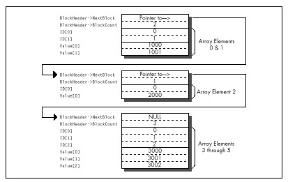
/* Structure that starts each variable-sized block */
struct BlockHeader {
struct BlockHeader *NextBlock; /* Pointer to next block, or NULL
if this is the last block in the
linked list */
unsigned int BlockCount; /* The number of DataElement entries
in this variable-sized block */
};
void main(void) {
int i,j;
unsigned int IDToFind;
struct BlockHeader *BaseArrayBlockPointer,*WorkingBlockPointer;
int *WorkingDataPointer;
struct BlockHeader **LastBlockPointer;
printf("ID # for which to find average: ");
scanf("%d",&IDToFind);
/* Build an array across 5 blocks, for testing */
/* Anchor the linked list to BaseArrayBlockPointer */
LastBlockPointer = &BaseArrayBlockPointer;
/* Create 5 blocks of varying sizes */
for (i = 1; i < 6; i++) {
/* Try to get memory for the next block */
if ((WorkingBlockPointer =
(struct BlockHeader *) malloc(sizeof(struct BlockHeader) +
sizeof(int) * 2 * i * 10)) == NULL) {
exit(1);
}
/* Set the number of data elements in this block */
WorkingBlockPointer->BlockCount = i * 10;
/* Link the new block into the chain */
*LastBlockPointer = WorkingBlockPointer;
/* Point to the first data field */
WorkingDataPointer = (int *) ((char *)WorkingBlockPointer +
sizeof(struct BlockHeader));
/* Fill the data fields with ID numbers and values */
for (j = 0; j < (i * 10); j++, WorkingDataPointer++) {
*WorkingDataPointer = j;
*(WorkingDataPointer + i * 10) = i * 1000 + j;
}
/* Remember where to set link from this block to the next */
LastBlockPointer = &WorkingBlockPointer->NextBlock;
}
/* Set the last block's "next block" pointer to NULL to indicate
that there are no more blocks */
WorkingBlockPointer->NextBlock = NULL;
printf("Average of all elements with ID %d: %u\n",
IDToFind, FindIDAverage2(IDToFind, BaseArrayBlockPointer));
exit(0);
}LISTING 8.6 L8-6.ASM
; Alternative optimized assembly language version of FindIDAverage
; requires data organized as two arrays within each block rather
; than as an array of two-value element structures. This allows the
; use of REP SCASW for ID searching.
SearchedForIDequ4 ;Passed parameter offsets in the
BlockPointerequ6 ; stack frame (skip over pushed BP
; and the return address)
NextBlockequ0 ;Field offsets in struct BlockHeader
BlockCountequ2
BLOCK_HEADER_SIZEequ4 ;Number of bytes in struct BlockHeader
.model small
.code
public _FindIDAverage2
_FindIDAverage2 proc near
push bp ;Save caller's stack frame
mov bp,sp ;Point to our stack frame
push di ;Preserve C register variables
push si
mov di,ds ;Prepare for SCASW
mov es,di
cld
mov si,[bp+BlockPointer] ;Pointer to first block
mov ax,[bp+SearchedForID] ;ID we're looking for
sub dx,dx ;IDMatchSum = 0
mov bp,dx ;IDMatchCount = 0
;***stack frame no longer available***
; Search through all the linked blocks until the last block
; (marked with a NULL pointer to the next block) has been searched.
BlockLoop:
; Search through all the DataElement entries within this block
; and accumulate data from all that match the desired ID.
mov cx,[si+BlockCount]
jcxz DoNextBlock;Skip this block if there's no data
; to search through
mov bx,cx ;We'll use BX to point to the
shl bx,1 ; corresponding value entry in the
; case of an ID match (BX is the
; length in bytes of the ID array)
; Point to the first DataElement entry within this block.
lea di,[si+BLOCK_HEADER_SIZE]
IntraBlockLoop:
repnz scasw ;Search for the ID
jnz DoNextBlock ;No match, the block is done
inc bp ;We have a match; IDMatchCount++;
add dx,[di+bx-2];IDMatchSum += DataPointer->Value;
; (SCASW has advanced DI 2 bytes)
and cx,cx ;Is there more data to search through?
jnz IntraBlockLoop ;yes
; Point to the next block and continue if that pointer isn't NULL.
DoNextBlock:
mov si,[si+NextBlock] ;Get pointer to the next block
and si,si ;Is it a NULL pointer?
jnz BlockLoop ;No, continue
; Calculate the average of all matches.
sub ax,ax ;Assume we found no matches
and bp,bp
jz Done ;We didn't find any matches, return 0
xchg ax,dx ;Prepare for division
div bp ;Return IDMatchSum / IDMatchCount
Done: pop si ;Restore C register variables
pop di
pop bp ;Restore caller's stack frame
ret
_FindIDAverage2 ENDP
endThe whole point of this rearrangement is to allow us to use
REP SCASW to search through each block, and that’s exactly
what FindIDAverage2 in Listing 8.6 does. The result:
Listing 8.6 calculates the average about three times as fast as
the original C implementation and more than twice as fast as Listing
8.4, heavily optimized as the latter code is.
I trust you get the picture. The sort of instruction-by-instruction optimization that so many of us love to do as a kind of puzzle is fun, but compilers can do it nearly as well as you can, and in the future will surely do it better. What a compiler can’t do is tie together the needs of the program specification on the high end and the processor on the low end, resulting in critical code that runs just about as fast as the hardware permits. The only software that can do that is located north of your sternum and slightly aft of your nose. Dust it off and put it to work—and your code will never again be confused with anything by Hamilton, Joe, Frank, eynolds or Bo Donaldson and the Heywoods.
Back in high school, I took a pre-calculus class from Mr. Bourgeis, whose most notable characteristics were incessant pacing and truly enormous feet. My friend Barry, who sat in the back row, right behind me, claimed that it was because of his large feet that Mr. Bourgeis was so restless. Those feet were so heavy, Barry hypothesized, that if Mr. Bourgeis remained in any one place for too long, the floor would give way under the strain, plunging the unfortunate teacher deep into the mantle of the Earth and possibly all the way through to China. Many amusing cartoons were drawn to this effect.
Unfortunately, Barry was too busy drawing cartoons, or, alternatively, sleeping, to actually learn any math. In the long run, that didn’t turn out to be a handicap for Barry, who went on to become vice-president of sales for a ham-packing company, where presumably he was rarely called upon to derive the quadratic equation. Barry’s lack of scholarship caused some problems back then, though. On one memorable occasion, Barry was half-asleep, with his eyes open but unfocused and his chin balanced on his hand in the classic “if I fall asleep my head will fall off my hand and I’ll wake up” posture, when Mr. Bourgeis popped a killer problem:
“Barry, solve this for X, please.” On the blackboard lay the equation:
X - 1 = 0“Minus 1,” Barry said promptly.
Mr. Bourgeis shook his head mournfully. “Try again.” Barry thought hard. He knew the fundamental rule that the answer to most mathematical questions is either 0, 1, infinity, -1, or minus infinity (do not apply this rule to balancing your checkbook, however); unfortunately, that gave him only a 25 percent chance of guessing right.
“One,” I whispered surreptitiously.
“Zero,” Barry announced. Mr. Bourgeis shook his head even more sadly.
“One,” I whispered louder. Barry looked still more thoughtful—a bad sign—so I whispered “one” again, even louder. Barry looked so thoughtful that his eyes nearly rolled up into his head, and I realized that he was just doing his best to convince Mr. Bourgeis that Barry had solved this one by himself.
As Barry neared the climax of his stirring performance and opened his mouth to speak, Mr. Bourgeis looked at him with great concern. “Barry, can you hear me all right?”
“Yes, sir,” Barry replied. “Why?”
“Well, I could hear the answer all the way up here. Surely you could hear it just one row away?”
The class went wild. They might as well have sent us home early for all we accomplished the rest of the day.
I like to think I know more about performance programming than Barry knew about math. Nonetheless, I always welcome good ideas and comments, and many readers have sent me a slew of those over the years. So in this chapter, I think I’ll return the favor by devoting a chapter to reader feedback.
Several people have pointed out that while LEA is great
for performing certain additions (see Chapter 6), it isn’t a perfect
replacement for ADD. What’s the difference?
LEA, an addressing instruction by trade, doesn’t affect the
flags, while the arithmetic ADD instruction most certainly
does. This is no problem when performing additions that involve only
quantities that fit in one machine word (32 bits in 386 protected mode,
16 bits otherwise), but it renders LEA useless for
multiword operations, which use the Carry flag to tie together partial
results. For example, these instructions
ADD EAX,EBX
ADC EDX,ECXcould not be replaced
LEA EAX,[EAX+EBX]
ADC EDX,ECXbecause LEA doesn’t affect the Carry flag.
The no-carry characteristic of LEA becomes a distinct
advantage when performing pointer arithmetic, however. For instance, the
following code uses LEA to advance the pointers while
adding one 128-bit memory variable to another such variable:
MOV ECX,4 ;# of 32-bit words to add
CLC
;no carry into the initial ADC
ADDLOOP:
MOV EAX,[ESI] ;get the next element of one array
ADC [EDI],EAX ;add it to the other array, with carry
LEA ESI,[ESI+4] ;advance one array's pointer
LEA EDI,[EDI+4] ;advance the other array's pointer
LOOP ADDLOOP(Yes, I could use LODSD instead of MOV/LEA;
I’m just illustrating a point here. Besides, LODS is only 1
cycle faster than MOV/LEA on the 386, and is actually more
than twice as slow on the 486.) If we used ADD rather than
LEA to advance the pointers, the carry from one
ADC to the next would have to be preserved with either
PUSHF/POPF or LAHF/SAHF. (Alternatively, we
could use multiple INCs, since INC doesn’t
affect the Carry flag.)
In short, LEA is indeed different from ADD.
Sometimes it’s better. Sometimes not; that’s the nature of the various
instruction substitutions and optimizations that will occur to you over
time. There’s no such thing as “best” instructions on the x86; it all
depends on what you’re trying to do.
But there sure are a lot of interesting options, aren’t there?
Reader John Kennedy regularly passes along intriguing assembly programming tricks, many of which I’ve never seen mentioned anywhere else. John likes to optimize for size, whereas I lean more toward speed, but many of his optimizations are good for both purposes. Here are a few of my favorites:
John’s code for setting AX to its absolute value is:
CWD
XOR AX,DX
SUB AX,DXThis does nothing when bit 15 of AX is 0 (that is, if AX is positive). When AX is negative, the code “nots” it and adds 1, which is exactly how you perform a two’s complement negate. For the case where AX is not negative, this trick usually beats the stuffing out of the standard absolute value code:
AND AX,AX ;negative?
JNS IsPositive ;no
NEG AX ;yes,negate it
IsPositive:However, John’s code is slower on a 486; as you’re no doubt coming to realize (and as I’ll explain in Chapters 12 and 13), the 486 is an optimization world unto itself.
Here’s how John copies a block of bytes from DS:SI to ES:DI, moving as much data as possible a word at a time:
SHR CX,1 ;word count
REP MOVSW ;copy as many words as possible
ADC CX,CX ;CX=1 if copy length was odd,
;0 else
REP MOVSB ;copy any odd byte(ADC CX,CX can be replaced with RCL CX,1;
which is faster depends on the processor type.) It might be hard to
believe that the above is faster than this:
SHR CX,1 ;word count
REP MOVSW ;copy as many words as
;possible
JNC CopyDone ;done if even copy length
MOVSB ;copy the odd byte
CopyDone:However, it generally is. Sure, if the length is odd, John’s approach
incurs a penalty approximately equal to the REP startup
time for MOVSB. However, if the length is even, John’s
approach doesn’t branch, saving cycles and not emptying the prefetch
queue. If copy lengths are evenly distributed between even and odd,
John’s approach is faster in most x86 systems. (Not on the 486,
though.)
John also points out that on the 386, multiple LEAs can
be combined to perform multiplications that can’t be handled by a single
LEA, much as multiple shifts and adds can be used for
multiplication, only faster. LEA can be used to multiply in
a single instruction on the 386, but only by the values 2, 3, 4, 5, 8,
and 9; several LEAs strung together can handle a much wider
range of values. For example, video programmers are undoubtedly familiar
with the following code to multiply AX times 80 (the width in bytes of
the bitmap in most PC display modes):
SHL AX,1 ;*2
SHL AX,1 ;*4
SHL AX,1 ;*8
SHL AX,1 ;*16
MOV BX,AX
SHL AX,1 ;*32
SHL AX,1 ;*64
ADD AX,BX ;*80Using LEA on the 386, the above could be reduced to
LEA EAX,[EAX*2] ;*2
LEA EAX,[EAX*8] ;*16
LEA EAX,[EAX+EAX*4] ;*80which still isn’t as fast as using a lookup table like
MOV EAX,MultiplesOf80Table[EAX*4]but is close and takes a great deal less space.
Of course, on the 386, the shift and add version could also be reduced to this considerably more efficient code:
SHL AX,4 ;*16
MOV BX,AX
SHL AX,2 ;*64
ADD AX,BX ;*80That brings us to multiplication, one of the slowest of x86
operations and one that allows for considerable optimization. One way to
speed up multiplication is to use shift and add, LEA, or a
lookup table to hard-code a multiplication operation for a fixed
multiplier, as shown above. Another is to take advantage of the
early-out feature of the 386 (and the 486, but in the interests of
brevity I’ll just say “386” from now on) by arranging your operands so
that the multiplier (always the rightmost operand following
MUL or IMUL) is no larger than the other
operand.
Why? Because the 386 processes one multiplier bit per cycle and immediately ends a multiplication when all significant bits of the multiplier have been processed, so fewer cycles are required to multiply a large multiplicand times a small multiplier than a small multiplicand times a large multiplier, by a factor of about 1 cycle for each significant multiplier bit eliminated.
(There’s a minimum execution time on this trick; below 3 significant multiplier bits, no additional cycles are saved.) For example, multiplication of 32,767 times 1 is 12 cycles faster than multiplication of 1 times 32,727.
Choosing the right operand as the multiplier can work wonders. According to published specs, the 386 takes 38 cycles to multiply by a multiplier with 32 significant bits but only 9 cycles to multiply by a multiplier of 2, a performance improvement of more than four times! (My tests regularly indicate that multiplication takes 3 to 4 cycles longer than the specs indicate, but the cycle-per-bit advantage of smaller multipliers holds true nonetheless.)
This highlights another interesting point: MUL and
IMUL on the 386 are so fast that alternative multiplication
approaches, while generally still faster, are worthwhile only in truly
time-critical code.
On 386SXs and uncached 386s, where code size can significantly affect performance due to instruction prefetching, the compact
MULandIMULinstructions can approach and in some cases even outperform the “optimized” alternatives.
All in all, MUL and IMUL are reasonable
performers on the 386, no longer to be avoided in most cases—and you can
help that along by arranging your code to make the smaller operand the
multiplier whenever you know which operand is smaller.
That doesn’t mean that your code should test and swap operands to make sure the smaller one is the multiplier; that rarely pays off. I’m speaking more of the case where you’re scaling an array up by a value that’s always in the range of, say, 2 to 10; because the scale value will always be small and the array elements may have any value, the scale value is the logical choice for the multiplier.
Rob Williams writes with a wonderful optimization to the
REPNZ SCASB-based optimized searching routine I discussed
in Chapter 5. As a quick refresher, I described searching a buffer for a
text string as follows: Scan for the first byte of the text string with
REPNZ SCASB, then use REPZ CMPS to check for a
full match whenever REPNZ SCASB finds a match for the first
character, as shown in Figure 9.1. The principle is that most buffer
characters won’t match the first character of any given string, so
REPNZ SCASB, by far the fastest way to search on the PC,
can be used to eliminate most potential matches; each remaining
potential match can then be checked in its entirety with
REPZ CMPS.
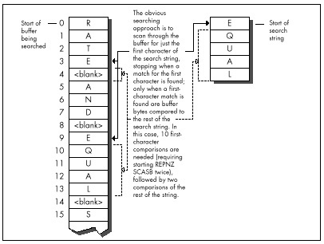
Rob’s revelation, which he credits without explanation to Edgar Allen
Poe (search nevermore?), was that by far the slowest part of the whole
deal is handling REPNZ SCASB matches, which require
checking the remainder of the string with REPZ CMPS and
restarting REPNZ SCASB if no match is found.
Rob points out that the number of
REPNZ SCASBmatches can easily be reduced simply by scanning for the character in the searched-for string that appears least often in the buffer being searched.
Imagine, if you will, that you’re searching for the string “EQUAL.”
By my approach, you’d use REPNZ SCASB to scan for each
occurrence of “E,” which crops up quite often in normal text. Rob points
out that it would make more sense to scan for “Q,” then back up one
character and check the whole string when a “Q” is found, as shown in
Figure 9.2. “Q” is likely to occur much less often, resulting in many
fewer whole-string checks and much faster processing.
Listing 9.1 implements the scan-on-first-character approach. Listing
9.2 scans for whatever character the caller specifies. Listing 9.3 is a
test program used to compare the two approaches. How much difference
does Rob’s revelation make? Plenty. Even when the entire C function call
to FindString is timed—strlen calls, parameter
pushing, calling, setup, and all—the version of FindString
in Listing 9.2, which is directed by Listing 9.3 to scan for the
infrequently-occurring “Q,” is about 40 percent faster on a 20 MHz
cached 386 for the test search of Listing 9.3 than is the version of
FindString in Listing 9.1, which always scans for the first
character, in this case “E.” However, when only the search loops (the
code that actually does the searching) in the two versions of
FindString are compared, Listing 9.2 is more than
twice as fast as Listing 9.1—a remarkable improvement over code
that already uses REPNZ SCASB and
REPZ CMPS.
What I like so much about Rob’s approach is that it demonstrates that
optimization involves much more than instruction selection and cycle
counting. Listings 9.1 and 9.2 use pretty much the same instructions,
and even use the same approach of scanning with REPNZ SCASB
and using REPZ CMPS to check scanning matches.
The difference between Listings 9.1 and 9.2 (which gives you more than a doubling of performance) is due entirely to understanding the nature of the data being handled, and biasing the code to reflect that knowledge.
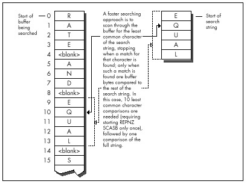
LISTING 9.1 L9-1.ASM
; Searches a text buffer for a text string. Uses REPNZ SCASB to sca"n
; the buffer for locations that match the first character of the
; searched-for string, then uses REPZ CMPS to check fully only those
; locations that REPNZ SCASB has identified as potential matches.
;
; Adapted from Zen of Assembly Language, by Michael Abrash
;
; C small model-callable as:
; unsigned char * FindString(unsigned char * Buffer,
; unsigned int BufferLength, unsigned char * SearchString,
; unsigned int SearchStringLength);
;
; Returns a pointer to the first match for SearchString in Buffer,or
; a NULL pointer if no match is found. Buffer should not start at
; offset 0 in the data segment to avoid confusing a match at 0 with
; no match found.
Parmsstruc
dw 2 dup(?) ;pushed BP/return address
Buffer dw ? ;pointer to buffer to search
BufferLength dw ? ;length of buffer to search
SearchString dw ? ;pointer to string for which to search
SearchStringLength dw ? ;length of string for which to search
Parmsends
.model small
.code
public _FindString
_FindString proc near
push bp ;preserve caller's stack frame
mov bp,sp ;point to our stack frame
push si ;preserve caller's register variables
push di
cld ;make string instructions increment pointers
mov si,[bp+SearchString] ;pointer to string to search for
mov bx,[bp+SearchStringLength] ;length of string
and bx,bx
jz FindStringNotFound ;no match if string is 0 length
movd x,[bp+BufferLength] ;length of buffer
sub dx,bx ;difference between buffer and string lengths
jc FindStringNotFound ;no match if search string is
; longer than buffer
inc dx ;difference between buffer and search string
; lengths, plus 1 (# of possible string start
; locations to check in the buffer)
mov di,ds
mov es,di
mov di,[bp+Buffer] ;point ES:DI to buffer to search thru
lodsb ;put the first byte of the search string in AL
mov bp,si ;set aside pointer to the second search byte
dec bx ;don't need to compare the first byte of the
; string with CMPS; we'll do it with SCAS
FindStringLoop:
mov cx,dx ;put remaining buffer search length in CX
repnz scasb ;scan for the first byte of the string
jnz FindStringNotFound ;not found, so there's no match
;found, so we have a potential match-check the
; rest of this candidate location
push di ;remember the address of the next byte to scan
mov dx,cx ;set aside the remaining length to search in
; the buffer
mov si,bp ;point to the rest of the search string
mov cx,bx ;string length (minus first byte)
shr cx,1 ;convert to word for faster search
jnc FindStringWord ;do word search if no odd byte
cmpsb ;compare the odd byte
jnz FindStringNoMatch ;odd byte doesn't match, so we
; haven't found the search string here
FindStringWord:
jcxz FindStringFound ;test whether we've already checked
; the whole string; if so, this is a match
; bytes long; if so, we've found a match
repz cmpsw ;check the rest of the string a word at a time
jz FindStringFound ;it's a match
FindStringNoMatch:
pop di ;get back pointer to the next byte to scan
and dx,dx ;is there anything left to check?
jnz FindStringLoop ;yes-check next byte
FindStringNotFound:
sub ax,ax ;return a NULL pointer indicating that the
jmp FindStringDone ; string was not found
FindStringFound:
pop ax ;point to the buffer location at which the
dec ax ; string was found (earlier we pushed the
; address of the byte after the start of the
; potential match)
FindStringDone:
pop di ;restore caller's register variables
pop si
pop bp ;restore caller's stack frame
ret
_FindString endp
endLISTING 9.2 L9-2.ASM
; Searches a text buffer for a text string. Uses REPNZ SCASB to scan
; the buffer for locations that match a specified character of the
; searched-for string, then uses REPZ CMPS to check fully only those
; locations that REPNZ SCASB has identified as potential matches.
;
; C small model-callable as:
; unsigned char * FindString(unsigned char * Buffer,
; unsigned int BufferLength, unsigned char * SearchString,
; unsigned int SearchStringLength,
; unsigned int ScanCharOffset);
;
; Returns a pointer to the first match for SearchString in Buffer,or
; a NULL pointer if no match is found. Buffer should not start at
; offset 0 in the data segment to avoid confusing a match at 0 with
; no match found.
Parms struc
dw 2 dup(?) ;pushed BP/return address
Buffer dw ? ;pointer to buffer to search
BufferLength dw ? ;length of buffer to search
SearchString dw ? ;pointer to string for which to search
SearchStringLength dw ? ;length of string for which to search
ScanCharOffset dw ? ;offset in string of character for
; which to scan
Parmsends
.model small
.code
public _FindString
_FindString proc near
push bp ;preserve caller's stack frame
mov bp,sp ;point to our stack frame
push si ;preserve caller's register variables
push di
cld ;make string instructions increment pointers
mov si,[bp+SearchString] ;pointer to string to search for
mov cx,[bp+SearchStringLength] ;length of string
jcxz FindStringNotFound ;no match if string is 0 length
mov dx,[bp+BufferLength] ;length of buffer
sub dx,cx ;difference between buffer and search
; lengths
jc FindStringNotFound ;no match if search string is
; longer than buffer
inc dx ; difference between buffer and search string
; lengths, plus 1 (# of possible string start
; locations to check in the buffer)
mov di,ds
mov es,di
mov di,[bp+Buffer] ;point ES:DI to buffer to search thru
mov bx,[bp+ScanCharOffset] ;offset in string of character
; on which to scan
add di,bx ;point ES:DI to first buffer byte to scan
mov al,[si+bx] ;put the scan character in AL
inc bx ;set BX to the offset back to the start of the
; potential full match after a scan match,
; accounting for the 1-byte overrun of
; REPNZ SCASB
FindStringLoop:
mov cx,dx ;put remaining buffer search length in CX
repnz scasb ;scan for the scan byte
jnz FindStringNotFound ;not found, so there's no match
;found, so we have a potential match-check the
; rest of this candidate location
push di ;remember the address of the next byte to scan
mov dx,cx ;set aside the remaining length to search in
; the buffer
sub di,bx ;point back to the potential start of the
; match in the buffer
mov si,[bp+SearchString] ;point to the start of the string
mov cx,[bp+SearchStringLength] ;string length
shr cx,1 ;convert to word for faster search
jnc FindStringWord ;do word search if no odd byte
cmpsb ;compare the odd byte
jnz FindStringNoMatch ;odd byte doesn't match, so we
; haven't found the search string here
FindStringWord:
jcxz FindStringFound ;if the string is only 1 byte long,
; we've found a match
repz cmpsw ;check the rest of the string a word at a time
jz FindStringFound ;it's a match
FindStringNoMatch:
pop di ;get back pointer to the next byte to scan
and dx,dx ;is there anything left to check?
jnz FindStringLoop ;yes-check next byte
FindStringNotFound:
sub ax,ax ;return a NULL pointer indicating that the
jmp FindStringDone ; string was not found
FindStringFound:
pop ax ;point to the buffer location at which the
sub ax,bx ; string was found (earlier we pushed the
; address of the byte after the scan match)
FindStringDone:
pop di ;restore caller's register variables
pop si
pop bp ;restore caller's stack frame
ret
_FindString endp
endLISTING 9.3 L9-3.C
/* Program to exercise buffer-search routines in Listings 9.1 & 9.2 */
#include <stdio.h>
#include <string.h>
#define DISPLAY_LENGTH 40
extern unsigned char * FindString(unsigned char *, unsigned int,
unsigned char *, unsigned int, unsigned int);
void main(void);
static unsigned char TestBuffer[] = "When, in the course of human \
events, it becomes necessary for one people to dissolve the \
political bands which have connected them with another, and to \
assume among the powers of the earth the separate and equal station \
to which the laws of nature and of nature's God entitle them...";
void main() {
static unsigned char TestString[] = "equal";
unsigned char TempBuffer[DISPLAY_LENGTH+1];
unsigned char *MatchPtr;
/* Search for TestString and report the results */
if ((MatchPtr = FindString(TestBuffer,
(unsigned int) strlen(TestBuffer), TestString,
(unsigned int) strlen(TestString), 1)) == NULL) {
/* TestString wasn't found */
printf("\"%s\" not found\n", TestString);
} else {
/* TestString was found. Zero-terminate TempBuffer; strncpy
won't do it if DISPLAY_LENGTH characters are copied */
TempBuffer[DISPLAY_LENGTH] = 0;
printf("\"%s\" found. Next %d characters at match:\n\"%s\"\n",
TestString, DISPLAY_LENGTH,
strncpy(TempBuffer, MatchPtr, DISPLAY_LENGTH));
}
}You’ll notice that in Listing 9.2 I didn’t use a table of character frequencies in English text to determine the character for which to scan, but rather let the caller make that choice. Each buffer of bytes has unique characteristics, and English-letter frequency could well be inappropriate. What if the buffer is filled with French text? Cyrillic? What if it isn’t text that’s being searched? It might be worthwhile for an application to build a dynamic frequency table for each buffer so that the best scan character could be chosen for each search. Or perhaps not, if the search isn’t time-critical or the buffer is small.
The point is that you can improve performance dramatically by understanding the nature of the data with which you work. (This is equally true for high-level language programming, by the way.) Listing 9.2 is very similar to and only slightly more complex than Listing 9.1; the difference lies not in elbow grease or cycle counting but in the organic integrating optimizer technology we all carry around in our heads.
David Stafford (recently of Borland and Borland Japan) who happens to be one of the best assembly language programmers I’ve ever met, has written a C-callable routine that sorts an array of integers in ascending order. That wouldn’t be particularly noteworthy, except that David’s routine, shown in Listing 9.4, is exactly 25 bytes long. Look at the code; you’ll keep saying to yourself, “But this doesn’t work…oh, yes, I guess it does.” As they say in the Prego spaghetti sauce ads, it’s in there—and what a job of packing. Anyway, David says that a 24-byte sort routine eludes him, and he’d like to know if anyone can come up with one.
LISTING 9.4 L9-4.ASM
;--------------------------------------------------------------------------
; Sorts an array of ints. C callable (small model). 25 bytes.
; void sort( int num, int a[] );
;
; Courtesy of David Stafford.
;--------------------------------------------------------------------------
.model small
.code
public _sort
top: mov dx,[bx] ;swap two adjacent integers
xchg dx,[bx+2]
xchg dx,[bx]
cmp dx,[bx] ;did we put them in the right order?
jl top ;no, swap them back
inc bx ;go to next integer
inc bx
loop top
_sort: pop dx ;get return address (entry point)
pop cx ;get count
pop bx ;get pointer
push bx ;restore pointer
dec cx ;decrement count
push cx ;save count
push dx ;restore return address
jg top ;if cx > 0
ret
endOne of the most annoying limitations of the x86 is that while the
dividend operand to the DIV instruction can be 32 bits in
size, both the divisor and the result must be 16 bits. That’s
particularly annoying in regards to the result because sometimes you
just don’t know whether the ratio of the dividend to the divisor is
greater than 64K-1 or not—and if you guess wrong, you get that godawful
Divide By Zero interrupt. So, what is one to do when the result might
not fit in 16 bits, or when the dividend is larger than 32 bits? Fall
back to a software division approach? That will work—but oh so
slowly.
There’s another technique that’s much faster than a pure software approach, albeit not so flexible. This technique allows arbitrarily large dividends and results, but the divisor is still limited to16 bits. That’s not perfect, but it does solve a number of problems, in particular eliminating the possibility of a Divide By Zero interrupt from a too-large result.
This technique involves nothing more complicated than breaking up the division into word-sized chunks, starting with the most significant word of the dividend. The most significant word is divided by the divisor (with no chance of overflow because there are only 16 bits in each); then the remainder is prepended to the next 16 bits of dividend, and the process is repeated, as shown in Figure 9.3. This process is equivalent to dividing by hand, except that here we stop to carry the remainder manually only after each word of the dividend; the hardware divide takes care of the rest. Listing 9.5 shows a function to divide an arbitrarily large dividend by a 16-bit divisor, and Listing 9.6 shows a sample division of a large dividend. Note that the same principle can be applied to handling arbitrarily large dividends in 386 native mode code, but in that case the operation can proceed a dword, rather than a word, at a time.
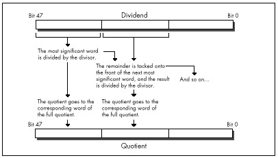
As for handling signed division with arbitrarily large dividends,
that can be done easily enough by remembering the signs of the dividend
and divisor, dividing the absolute value of the dividend by the absolute
value of the divisor, and applying the stored signs to set the proper
signs for the quotient and remainder. There may be more clever ways to
produce the same result, by using IDIV, for example; if you
know of one, drop me a line c/o Coriolis Group Books.
LISTING 9.5 L9-5.ASM
; Divides an arbitrarily long unsigned dividend by a 16-bit unsigned
; divisor. C near-callable as:
; unsigned int Div(unsigned int * Dividend,
; int DividendLength, unsigned int Divisor,
; unsigned int * Quotient);
;
; Returns the remainder of the division.
;
; Tested with TASM 2.
parms struc
dw 2 dup (?) ;pushed BP & return address
Dividend dw ? ;pointer to value to divide, stored in Intel
; order, with lsb at lowest address, msb at
; highest. Must be composed of an integral
; number of words
DividendLength dw ? ;# of bytes in Dividend. Must be a multiple
; of 2
Divisor dw ? ;value by which to divide. Must not be zero,
; or a Divide By Zero interrupt will occur
Quotient dw ? ;pointer to buffer in which to store the
; result of the division, in Intel order.
; The quotient returned is of the same
; length as the dividend
parmsends
.model small
.code
public _Div
_Div proc near
push bp ;preserve caller's stack frame
mov bp,sp ;point to our stack frame
push si ;preserve caller's register variables
push di
std ;we're working from msb to lsb
mov ax,ds
mov es,ax ;for STOS
mov cx,[bp+DividendLength]
sub cx,2
mov si,[bp+Dividend]
add si,cx ;point to the last word of the dividend
; (the most significant word)
mov di,[bp+Quotient]
add di,cx ;point to the last word of the quotient
; buffer (the most significant word)
mov bx,[bp+Divisor]
shr cx,1
inc cx ;# of words to process
sub dx,dx ;convert initial divisor word to a 32-bit
;value for DIV
DivLoop:
lodsw ;get next most significant word of divisor
div bx
stosw ;save this word of the quotient
;DX contains the remainder at this point,
; ready to prepend to the next divisor word
loop DivLoop
mov ax,dx ;return the remainder
cld ;restore default Direction flag setting
pop di ;restore caller's register variables
pop si
pop bp ;restore caller's stack frame
ret
_Div endp
endLISTING 9.6 L9-6.C
/* Sample use of Div function to perform division when the result
doesn't fit in 16 bits */
#include <stdio.h>
extern unsigned int Div(unsigned int * Dividend,
int DividendLength, unsigned int Divisor,
unsigned int * Quotient);
main() {
unsigned long m, i = 0x20000001;
unsigned int k, j = 0x10;
k = Div((unsigned int *)&i, sizeof(i), j, (unsigned int *)&m);
printf("%lu / %u = %lu r %u\n", i, j, m, k);
}Way back in Volume 1, Number 1 of PC TECHNIQUES, (April/May 1990) I wrote the very first of that magazine’s HAX (#1), which extolled the virtues of placing your most commonly-used automatic (stack-based) variables within the stack’s “sweet spot,” the area between +127 to -128 bytes away from BP, the stack frame pointer. The reason was that the 8088 can store addressing displacements that fall within that range in a single byte; larger displacements require a full word of storage, increasing code size by a byte per instruction, and thereby slowing down performance due to increased instruction fetching time.
This takes on new prominence in 386 native mode, where straying from the sweet spot costs not one, but two or three bytes. Where the 8088 had two possible displacement sizes, either byte or word, on the 386 there are three possible sizes: byte, word, or dword. In native mode (32-bit protected mode), however, a prefix byte is needed in order to use a word-sized displacement, so a variable located outside the sweet spot requires either two extra bytes (an extra displacement byte plus a prefix byte) or three extra bytes (a dword displacement rather than a byte displacement). Either way, instructions grow alarmingly.
Performance may or may not suffer from missing the sweet spot, depending on the processor, the memory architecture, and the code mix. On a 486, prefix bytes often cost a cycle; on a 386SX, increased code size often slows performance because instructions must be fetched through the half-pint 16-bit bus; on a 386, the effect depends on the instruction mix and whether there’s a cache.
On balance, though, it’s as important to keep your most-used variables in the stack’s sweet spot in 386 native mode as it was on the 8088.
In assembly, it’s easy to control the organization of your stack frame. In C, however, you’ll have to figure out the allocation scheme your compiler uses to allocate automatic variables, and declare automatics appropriately to produce the desired effect. It can be done: I did it in Turbo C some years back, and trimmed the size of a program (admittedly, a large one) by several K—not bad, when you consider that the “sweet spot” optimization is essentially free, with no code reorganization, change in logic, or heavy thinking involved.
Next, we come to an item that cycle counters will love, especially
since it involves apparently incorrect documentation on Intel’s part.
According to Intel’s documents, all RCR and
RCL instructions, which perform rotations through the Carry
flag, as shown in Figure 9.4, take 9 cycles on the 386 when working with
a register operand. My measurements indicate that the 9-cycle execution
time almost holds true for multibit rotate-through-carries,
which I’ve timed at 8 cycles apiece; for example, RCR AX,CL
takes 8 cycles on my 386, as does RCL DX,2.
Contrast that with ROR and ROL, which can
rotate the contents of a register any number of bits in just 3
cycles.
However, rotating by one bit through the Carry flag does not
take 9 cycles, contrary to Intel’s 80386 Programmer’s Reference
Manual, or even 8 cycles. In fact, RCR reg,1
and RCL reg,1 take 3 cycles, just like
ROR, ROL, SHR, and
SHL. At least, that’s how fast they run on my 386, and I
very much doubt that you’ll find different execution times on other
386s. (Please let me know if you do, though!)
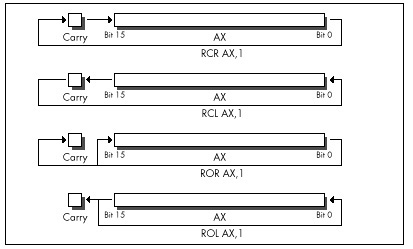
Interestingly, according to Intel’s i486 Microprocessor
Programmer’s Reference Manual, the 486 can RCR or
RCL a register by one bit in 3 cycles, but takes between 8
and 30 cycles to perform a multibit register RCR or
RCL!
No great lesson here, just a caution to be leery of multibit
RCR and RCL when performance matters—and to
take cycle-time documentation with a grain of salt.
Did you ever wonder how to code a far jump to an absolute address in
assembly language? Probably not, but if you ever do, you’re going to be
glad for this next item, because the obvious solution doesn’t work. You
might think all it would take to jump to, say, 1000:5 would be
JMP FAR PTR 1000:5, but you’d be wrong. That won’t even
assemble. You might then think to construct in memory a far pointer
containing 1000:5, as in the following:
Ptr dd ?
:
mov word ptr [Ptr],5
mov word ptr [Ptr+2],1000h
jmp [Ptr]That will work, but at a price in performance. On an 8088,
JMP DWORD PTR [*mem*] (an indirect far jump) takes at least
37 cycles; JMP DWORD PTR *label* (a direct far jump) takes
only 15 cycles (plus, almost certainly, some cycles for instruction
fetching). On a 386, an indirect far jump is documented to take at least
43 cycles in real mode (31 in protected mode); a direct far jump is
documented to take at least 12 cycles, about three times faster. In
truth, the difference between those two is nowhere near that big; the
fastest I’ve measured for a direct far jump is 21 cycles, and I’ve
measured indirect far jumps as fast as 30 cycles, so direct is still
faster, but not by so much. (Oh, those cycle-time documentation blues!)
Also, a direct far jump is documented to take at least 27 cycles in
protected mode; why the big difference in protected mode, I have no
idea.
At any rate, to return to our original problem of jumping to 1000:5: Although an indirect far jump will work, a direct far jump is still preferable.
Listing 9.7 shows a short program that performs a direct far call to
1000:5. (Don’t run it, unless you want to crash your system!) It does
this by creating a dummy segment at 1000H, so that the label
FarLabel can be created with the desired far attribute at
the proper location. (Segments created with “AT” don’t cause the
generation of any actual bytes or the allocation of any memory; they’re
just templates.) It’s a little kludgey, but at least it does work. There
may be a better solution; if you have one, pass it along.
LISTING 9.7 L9-7.ASM
; Program to perform a direct far jump to address 1000:5.
; *** Do not run this program! It's just an example of how ***
; *** to build a direct far jump to an absolute address ***
;
; Tested with TASM 2 and MASM 5.
FarSeg segment at 01000h
org 5
FarLabel label far
FarSeg ends
.model small
.code
start:
jmp FarLabel
end startBy the way, if you’re wondering how I figured this out, I merely applied my good friend Dan Illowsky’s long-standing rule for dealing with MASM:
If the obvious doesn’t work (and it usually doesn’t), just try everything you can think of, no matter how ridiculous, until you find something that does—a rule with plenty of history on its side.
To finish up this chapter, consider these two items. First, in 32-bit protected mode,
sub eax,eax
inc eaxtakes 4 cycles to execute, but is only 3 bytes long, while
mov eax,1takes only 2 cycles to execute, but is 5 bytes long (because native
mode constants are dwords and the MOV instruction doesn’t
sign-extend). Both code fragments are ways to set EAX to 1
(although the first affects the flags and the second doesn’t); this is a
classic trade-off of speed for space. Second,
or ebx,-1takes 2 cycles to execute and is 3 bytes long, while
move bx,-1takes 2 cycles to execute and is 5 bytes long. Both instructions set
EBX to -1; this is a classic trade-off of—gee, it’s not a
trade-off at all, is it? OR is a better way to set a 32-bit
register to all 1-bits, just as SUB or XOR is
a better way to set a register to all 0-bits. Who woulda thunk it? Just
goes to show how the 32-bit displacements and constants of 386 native
mode change the familiar landscape of 80x86 optimization.
Be warned, though, that I’ve found OR, AND,
ADD, and the like to be a cycle slower than
MOV when working with immediate operands on the 386 under
some circumstances, for reasons that thus far escape me. This just
reinforces the first rule of optimization: Measure your code in action,
and place not your trust in documented cycle times.
My grandfather does The New York Times crossword puzzle every Sunday. In ink. With nary a blemish.
The relevance of which will become apparent in a trice.
What my grandfather is, is a pattern matcher par excellence. You’re a pattern matcher, too. So am I. We can’t help it; it comes with the territory. Try focusing on text and not reading it. Can’t do it. Can you hear the voice of someone you know and not recognize it? I can’t. And how in the Nine Billion Names of God is it that we’re capable of instantly recognizing one face out of the thousands we’ve seen in our lifetimes—even years later, from a different angle and in different light? Although we take them for granted, our pattern-matching capabilities are surely a miracle on the order of loaves and fishes.
By “pattern matching,” I mean more than just recognition, though. I mean that we are generally able to take complex and often seemingly woefully inadequate data, instantaneously match it in an incredibly flexible way to our past experience, extrapolate, and reach amazing conclusions, something that computers can scarcely do at all. Crossword puzzles are an excellent example; given a couple of letters and a cryptic clue, we’re somehow able to come up with one out of several hundred thousand words that we know. Try writing a program to do that! What’s more, we don’t process data in the serial brute-force way that computers do. Solutions tend to be virtually instantaneous or not at all; none of those “N log N” or “N2” execution times for us.
It goes without saying that pattern matching is good; more than that, it’s a large part of what we are, and, generally, the faster we are at it, the better. Not always, though. Sometimes insufficient information really is insufficient, and, in our haste to get the heady rush of coming up with a solution, incorrect or less-than-optimal conclusions are reached, as anyone who has ever done the Times Sunday crossword will attest. Still, my grandfather does that puzzle every Sunday in ink. What’s his secret? Patience and discipline. He never fills a word in until he’s confirmed it in his head via intersecting words, no matter how strong the urge may be to put something down where he can see it and feel like he’s getting somewhere.
There’s a surprisingly close parallel to programming here. Programming is certainly a sort of pattern matching in the sense I’ve described above, and, as with crossword puzzles, following your programming instincts too quickly can be a liability. For many programmers, myself included, there’s a strong urge to find a workable approach to a particular problem and start coding it right now, what some people call “hacking” a program. Going with the first thing your programming pattern matcher comes up with can be a lot of fun; there’s instant gratification and a feeling of unbounded creativity. Personally, I’ve always hungered to get results from my work as soon as possible; I gravitated toward graphics for its instant and very visible gratification. Over time, however, I’ve learned patience.
I’ve come to spend an increasingly large portion of my time choosing algorithms, designing, and simply giving my mind quiet time in which to work on problems and come up with non-obvious approaches before coding; and I’ve found that the extra time up front more than pays for itself in both decreased coding time and superior programs.
In this chapter, I’m going to walk you through a simple but illustrative case history that nicely points up the wisdom of delaying gratification when faced with programming problems, so that your mind has time to chew on the problems from other angles. The alternative solutions you find by doing this may seem obvious, once you’ve come up with them. They may not even differ greatly from your initial solutions. Often, however, they will be much better—and you’ll never even have the chance to decide whether they’re better or not if you take the first thing that comes into your head and run with it.
Once upon a time, I set out to read Algorithms, by Robert Sedgewick (Addison-Wesley), which turned out to be a wonderful, stimulating, and most useful book, one that I recommend highly. My story, however, involves only what happened in the first 12 pages, for it was in those pages that Sedgewick discussed Euclid’s algorithm.
Euclid’s algorithm (discovered by Euclid, of Euclidean geometry fame, a very long time ago, way back when computers still used core memory) is a straightforward algorithm that solves one of the simplest problems imaginable: finding the greatest common integer divisor (GCD) of two positive integers. Sedgewick points out that this is useful for reducing a fraction to its lowest terms. I’m sure it’s useful for other things, as well, although none spring to mind. (A long time ago, I wrote an article about optimizing a bit of code that wasn’t even vaguely time-critical, and got swamped with letters telling me so. I knew it wasn’t time-critical; it was just a good example. So for now, close your eyes and imagine that finding the GCD is not only necessary but must also be done as quickly as possible, because it’s perfect for the point I want to make here and now. Okay?)
The problem at hand, then, is simply this: Find the largest integer value that evenly divides two arbitrary positive integers. That’s all there is to it. So warm up your pattern matchers…and go!
I have a funny feeling that you’d already figured out how to find the GCD before I even said “go.” That’s what I did when reading Algorithms; before I read another word, I had to figure it out for myself. Programmers are like that; give them a problem and their eyes immediately glaze over as they try to solve it before you’ve even shut your mouth. That sort of instant response can certainly be impressive, but it can backfire, too, as it did in my case.
You see, I fell victim to a common programming pitfall, the “brute-force” syndrome. The basis of this syndrome is that there are many problems that have obvious, brute-force solutions—with one small drawback. The drawback is that if you were to try to apply a brute-force solution by hand—that is, work a single problem out with pencil and paper or a calculator—it would generally require that you have the patience and discipline to work on the problem for approximately seven hundred years, not counting eating and sleeping, in order to get an answer. Finding all the prime numbers less than 1,000,000 is a good example; just divide each number up to 1,000,000 by every lesser number, and see what’s left standing. For most of the history of humankind, people were forced to think of cleverer solutions, such as the Sieve of Eratosthenes (we’d have been in big trouble if the ancient Greeks had had computers), mainly because after about five minutes of brute force-type work, people’s attention gets diverted to other important matters, such as how far a paper airplane will fly from a second-story window.
Not so nowadays, though. Computers love boring work; they’re very patient and disciplined, and, besides, one human year = seven dog years = two zillion computer years. So when we’re faced with a problem that has an obvious but exceedingly lengthy solution, we’re apt to say, “Ah, let the computer do that, it’s fast,” and go back to making paper airplanes. Unfortunately, brute-force solutions tend to be slow even when performed by modern-day microcomputers, which are capable of several MIPS except when I’m late for an appointment and want to finish a compile and run just one more test before I leave, in which case the crystal in my computer is apparently designed to automatically revert to 1 Hz.)
The solution that I instantly came up with to finding the GCD is about as brute- force as you can get: Divide both the larger integer (iL) and the smaller integer (iS) by every integer equal to or less than the smaller integer, until a number is found that divides both evenly, as shown in Figure 10.1. This works, but it’s a lousy solution, requiring as many as iS*2 divisions; very expensive, especially for large values of iS. For example, finding the GCD of 30,001 and 30,002 would require 60,002 divisions, which alone, disregarding tests and branches, would take about 2 seconds on an 8088, and more than 50 milliseconds even on a 25 MHz 486—a very long time in computer years, and not insignificant in human years either.
Listing 10.1 is an implementation of the brute-force approach to GCD calculation. Table 10.1 shows how long it takes this approach to find the GCD for several integer pairs. As expected, performance is extremely poor when iS is large.
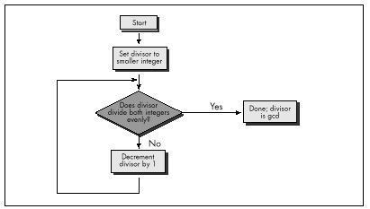
Integer pairs for which to find GCD
| 90 & 27 | 42 & 998 | 453 & 121 | 27432 & 165 | 27432 & 17550 | |
|---|---|---|---|---|---|
| Listing 10.1 (Brute force) | 60µs (100%) | 110µs (100%) | 311ms (100%) | 426µs (100%) | 43580µs (100%) |
| Listing 10.2 (Subtraction) | 25 (42%) | 72 (65%) | 67 (22%) | 280 (66%) | 72 (0.16%) |
| Listing 10.3 (Division: code recursive Euclid’s algorithm) | 20 (33%) | 33 (30%) | 48 (15%) | 32 (8%) | 53 (0.12%) |
| Listing 10.4 (C version of data recursive Euclid’s algorithm; normal optimization) | 12 (20%) | 17 (15%) | 25 (8%) | 16 (4%) | 26 (0.06%) |
| Listing 10.4 (/Ox = maximumoptimization) | 12 (20%) | 16 (15%) | 20 (6%) | 15 (4%) | 23 (0.05%) |
| Listing 10.5 (Assembly version of data recursive Euclid’s algorithm) | 10 (17%) | 10 (9%) | 15 (5%) | 10 (2%) | 17 (0.04%) |
Note: Performance of Listings 10.1 through 10.5 in finding the greatest common divisors of various pairs of integers. Times are in microseconds. Percentages represent execution time as a percentage of the execution time of Listing 10.1 for the same integer pair. Listings 10.1-10.4 were compiled with Microsoft C /C++ except as noted, the default optimization was used. All times measured with the Zen timer (from Chapter 3) on a 20 MHz cached 386.
LISTING 10.1 L10-1.C
/* Finds and returns the greatest common divisor of two positive
integers. Works by trying every integral divisor between the
smaller of the two integers and 1, until a divisor that divides
both integers evenly is found. All C code tested with Microsoft
and Borland compilers.*/
unsigned int gcd(unsigned int int1, unsigned int int2) {
unsigned int temp, trial_divisor;
/* Swap if necessary to make sure that int1 >= int2 */
if (int1 < int2) {
temp = int1;
int1 = int2;
int2 = temp;
}
/* Now just try every divisor from int2 on down, until a common
divisor is found. This can never be an infinite loop because
1 divides everything evenly */
for (trial_divisor = int2; ((int1 % trial_divisor) != 0) ||
((int2 % trial_divisor) != 0); trial_divisor—)
;
return(trial_divisor);
}Sedgewick’s first solution to the GCD problem was pretty much the one I came up with. He then pointed out that the GCD of iL and iS is the same as the GCD of iL-iS and iS. This was obvious (once Sedgewick pointed it out); by the very nature of division, any number that divides iL evenly nL times and iS evenly nS times must divide iL-iS evenly nL-nS times. Given that insight, I immediately designed a new, faster approach, shown in Listing 10.2.
LISTING 10.2 L10-2.C
/* Finds and returns the greatest common divisor of two positive
integers. Works by subtracting the smaller integer from the
larger integer until either the values match (in which case
that's the gcd), or the larger integer becomes the smaller of
the two, in which case the two integers swap roles and the
subtraction process continues. */
unsigned int gcd(unsigned int int1, unsigned int int2) {
unsigned int temp;
/* If the two integers are the same, that's the gcd and we're
done */
if (int1 == int2) {
return(int1);
}
/* Swap if necessary to make sure that int1 >= int2 */
if (int1 < int2) {
temp = int1;
int1 = int2;
int2 = temp;
}
/* Subtract int2 from int1 until int1 is no longer the larger of
the two */
do {
int1 -= int2;
} while (int1 > int2);
/* Now recursively call this function to continue the process */
return(gcd(int1, int2));
}Listing 10.2 repeatedly subtracts iS from iL until iL becomes less than or equal to iS. If iL becomes equal to iS, then that’s the GCD; alternatively, if iL becomes less than iS, iL and iS switch values, and the process is repeated, as shown in Figure 10.2. The number of iterations this approach requires relative to Listing 10.1 depends heavily on the values of iL and iS, so it’s not always faster, but, as Table 10.1 indicates, Listing 10.2 is generally much better code.
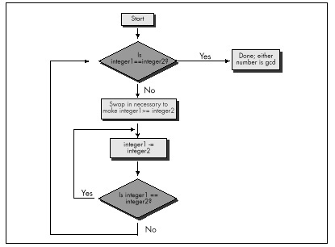
Listing 10.2 is a far graver misstep than Listing 10.1, for all that it’s faster. Listing 10.1 is obviously a hacked-up, brute-force approach; no one could mistake it for anything else. It could be speeded up in any of a number of ways with a little thought. (Simply skipping testing all the divisors between iS and iS/2, not inclusive, would cut the worst-case time in half, for example; that’s not a particularly good optimization, but it illustrates how easily Listing 10.1 can be improved.) Listing 10.1 is a hack job, crying out for inspiration.
Listing 10.2, on the other hand, has gotten the inspiration—and largely wasted it through haste. Had Sedgewick not told me otherwise, I might well have assumed that Listing 10.2 was optimized, a mistake I would never have made with Listing 10.1. I experienced a conceptual breakthrough when I understood Sedgewick’s point: A smaller number can be subtracted from a larger number without affecting their GCD, thereby inexpensively reducing the scale of the problem. And, in my hurry to make this breakthrough reality, I missed its full scope. As Sedgewick says on the very next page, the number that one gets by subtracting iS from iL until iL is less than iS is precisely the same as the remainder that one gets by dividing iL by iS—again, this is inherent in the nature of division—and that is the basis for Euclid’s algorithm, shown in Figure 10.3. Listing 10.3 is an implementation of Euclid’s algorithm.
LISTING 10.3 L10-3.C
/* Finds and returns the greatest common divisor of two integers.
Uses Euclid's algorithm: divides the larger integer by the
smaller; if the remainder is 0, the smaller integer is the GCD,
otherwise the smaller integer becomes the larger integer, the
remainder becomes the smaller integer, and the process is
repeated. */
static unsigned int gcd_recurs(unsigned int, unsigned int);
unsigned int gcd(unsigned int int1, unsigned int int2) {
unsigned int temp;
/* If the two integers are the same, that's the GCD and we're
done */
if (int1 == int2) {
return(int1);
}
/* Swap if necessary to make sure that int1 >= int2 */
if (int1 < int2) {
temp = int1;
int1 = int2;
int2 = temp;
}
/* Now call the recursive form of the function, which assumes
that the first parameter is the larger of the two */
return(gcd_recurs(int1, int2));
}
static unsigned int gcd_recurs(unsigned int larger_int,
unsigned int smaller_int)
{
int temp;
/* If the remainder of larger_int divided by smaller_int is 0,
then smaller_int is the gcd */
if ((temp = larger_int % smaller_int) == 0) {
return(smaller_int);
}
/* Make smaller_int the larger integer and the remainder the
smaller integer, and call this function recursively to
continue the process */
return(gcd_recurs(smaller_int, temp));
}As you can see from Table 10.1, Euclid’s algorithm is superior, especially for large numbers (and imagine if we were working with large longs!).
Had I been implementing GCD determination without Sedgewick’s help, I would surely not have settled for Listing 10.1—but I might well have ended up with Listing 10.2 in my enthusiasm over the “brilliant” discovery of subtracting the lesser Using Euclid’s algorithm to find a GCD number from the greater. In a commercial product, my lack of patience and discipline could have been costly indeed.
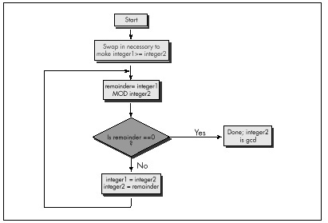
Give your mind time and space to wander around the edges of important programming problems before you settle on any one approach. I titled this book’s first chapter “The Best Optimizer Is between Your Ears,” and that’s still true; what’s even more true is that the optimizer between your ears does its best work not at the implementation stage, but at the very beginning, when you try to imagine how what you want to do and what a computer is capable of doing can best be brought together.
Euclid’s algorithm lends itself to recursion beautifully, so much so that an implementation like Listing 10.3 comes almost without thought. Again, though, take a moment to stop and consider what’s really going on, at the assembly language level, in Listing 10.3. There’s recursion and then there’s recursion; code recursion and data recursion, to be exact. Listing 10.3 is code recursion—recursion through calls—the sort most often used because it is conceptually simplest. However, code recursion tends to be slow because it pushes parameters and calls a subroutine for every iteration. Listing 10.4, which uses data recursion, is much faster and no more complicated than Listing 10.3. Actually, you could just say that Listing 10.4 uses a loop and ignore any mention of recursion; conceptually, though, Listing 10.4 performs the same recursive operations that Listing 10.3 does.
LISTING 10.4 L10-4.C
/* Finds and returns the greatest common divisor of two integers.
Uses Euclid's algorithm: divides the larger integer by the
smaller; if the remainder is 0, the smaller integer is the GCD,
otherwise the smaller integer becomes the larger integer, the
remainder becomes the smaller integer, and the process is
repeated. Avoids code recursion. */
unsigned int gcd(unsigned int int1, unsigned int int2) {
unsigned int temp;
/* Swap if necessary to make sure that int1 >= int2 */
if (int1 < int2) {
temp = int1;
int1 = int2;
int2 = temp;
}
/* Now loop, dividing int1 by int2 and checking the remainder,
until the remainder is 0. At each step, if the remainder isn't
0, assign int2 to int1, and the remainder to int2, then
repeat */
for (;;) {
/* If the remainder of int1 divided by int2 is 0, then int2 is
the gcd */
if ((temp = int1 % int2) == 0) {
return(int2);
}
/* Make int2 the larger integer and the remainder the
smaller integer, and repeat the process */
int1 = int2;
int2 = temp;
}
}At long last, we’re ready to optimize GCD determination in the classic sense. Table 10.1 shows the performance of Listing 10.4 with and without Microsoft C/C++’s maximum optimization, and also shows the performance of Listing 10.5, an assembly language version of Listing 10.4. Sure, the optimized versions are faster than the unoptimized version of Listing 10.4—but the gains are small compared to those realized from the higher-level optimizations in Listings 10.2 through 10.4.
LISTING 10.5 L10-5.ASM
; Finds and returns the greatest common divisor of two integers.
; Uses Euclid's algorithm: divides the larger integer by the
; smaller; if the remainder is 0, the smaller integer is the GCD,
; otherwise the smaller integer becomes the larger integer, the
; remainder becomes the smaller integer, and the process is
; repeated. Avoids code recursion.
;
;
;
; C near-callable as:
; unsigned int gcd(unsigned int int1, unsigned int int2);
; Parameter structure:
parms struc
dw ? ;pushed BP
dw ? ;pushed return address
int1 dw ? ;integers for which to find
int2 dw ? ; the GCD
parms ends
.model small
.code
public _gcd
align 2
_gcd proc near
push bp ;preserve caller's stack frame
mov bp,sp ;set up our stack frame
push si ;preserve caller's register variables
push di
;Swap if necessary to make sure that int1 >= int2
mov ax,int1[bp]
mov bx,int2[bp]
cmp ax,bx ;is int1 >= int2?
jnb IntsSet ;yes, so we're all set
xchg ax,bx ;no, so swap int1 and int2
IntsSet:
; Now loop, dividing int1 by int2 and checking the remainder, until
; the remainder is 0. At each step, if the remainder isn't 0, assign
; int2 to int1, and the remainder to int2, then repeat.
GCDLoop:
;if the remainder of int1 divided by
; int2 is 0, then int2 is the gcd
sub dx,dx ;prepare int1 in DX:AX for division
div bx ;int1/int2; remainder is in DX
and dx,dx ;is the remainder zero?
jz Done ;yes, so int2 (BX) is the gcd
;no, so move int2 to int1 and the
; remainder to int2, and repeat the
; process
mov ax,bx ;int1 = int2;
mov bx,dx ;int2 = remainder from DIV
;—start of loop unrolling; the above is repeated three times—
sub dx,dx ;prepare int1 in DX:AX for division
div bx ;int1/int2; remainder is in DX
and dx,dx ;is the remainder zero?
jz Done ;yes, so int2 (BX) is the gcd
mov ax,bx ;int1 = int2;
mov bx,dx ;int2 = remainder from DIV
;—
sub dx,dx ;prepare int1 in DX:AX for division
div bx ;int1/int2; remainder is in DX
and dx,dx ;is the remainder zero?
jz Done ;yes, so int2 (BX) is the gcd
mov ax,bx ;int1 = int2;
mov bx,dx ;int2 = remainder from DIV
;—
sub dx,dx ;prepare int1 in DX:AX for division
div bx ;int1/int2; remainder is in DX
and dx,dx ;is the remainder zero?
jz Done ;yes, so int2 (BX) is the gcd
mov ax,bx ;int1 = int2;
mov bx,dx ;int2 = remainder from DIV
;—end of loop unrolling—
jmp GCDLoop
align2
Done:
mov ax,bx ;return the GCD
pop di ;restore caller's register variables
pop si
pop bp ;restore caller's stack frame
ret
_gcd endp
endAssembly language optimization is pattern matching on a local scale. Frankly, it’s also the sort of boring, brute-force work that people are lousy at; compilers could out-optimize you at this level with one pass tied behind their back if they knew as much about the code you’re writing as you do, which they don’t.
Design optimization—conceptual breakthroughs in understanding the relationships between the needs of an application, the nature of the data the application works with, and what the computer can do—is global pattern matching.
Computers are much worse at that sort of pattern matching than humans; computers have no way to integrate vast amounts of disparate information, much of it only vaguely defined or subject to change. People, oddly enough, are better at global optimization than at local optimization. For one thing, it’s more interesting. For another, it’s complex and imprecise enough to allow intuition and inspiration, two vastly underrated programming tools, to come to the fore. And, as I pointed out earlier, people tend to perform instantaneous solutions to even the most complex problems, while computers bog down in geometrically or exponentially increasing execution times. Oh, it may take days or weeks for a person to absorb enough information to be able to reach a solution, and the solution may only be near-optimal—but the solution itself (or, at least, each of the pieces of the solution) arrives in a flash.
Those flashes are your programming pattern matcher doing its job. Your job is to give your pattern matcher the opportunity to get to know each problem and run through it two or three times, from different angles, to see what unexpected solutions it can come up with.
Pull back the reins a little. Don’t measure progress by lines of code written today; measure it instead by overall progress and by quality. Relax and listen to that quiet inner voice that provides the real breakthroughs. Stop, look, listen—and think. Not only will you find that it’s a more productive and creative way to program—but you’ll also find that it’s more fun.
And think what you could do with all those extra computer years!
This chapter, adapted from my earlier book Zen of Assembly Language (1989; now out of print), provides an overview of the 286 and 386, often contrasting those processors with the 8088. At the time I originally wrote this, the 8088 was the king of processors, and the 286 and 386 were the new kids on the block. Today, of course, all three processors are past their primes, but many millions of each are still in use, and the 386 in particular is still well worth considering when optimizing software.
This chapter provides an interesting look at the evolution of the x86 architecture, to a greater degree than you might expect, for the x86 family came into full maturity with the 386; the 486 and the Pentium are really nothing more than faster 386s, with very little in the way of new functionality. In contrast, the 286 added a number of instructions, respectable performance, and protected mode to the 8088’s capabilities, and the 386 added more instructions and a whole new set of addressing modes, and brought the x86 family into the 32-bit world that represents the future (and, increasingly, the present) of personal computing. This chapter also provides insight into the effects on optimization of the variations in processors and memory architectures that are common in the PC world. So, although the 286 and 386 no longer represent the mainstream of computing, this chapter is a useful mix of history lesson, x86 overview, and details on two workhorse processors that are still in wide use.
While the x86 family is a large one, only a few members of the family—which includes the 8088, 8086, 80188, 80186, 286, 386SX, 386DX, numerous permutations of the 486, and now the Pentium—really matter.
The 8088 is now all but extinct in the PC arena. The 8086 was used fairly widely for a while, but has now all but disappeared. The 80186 and 80188 never really caught on for use in PC and don’t require further discussion.
That leaves us with the high-end chips: the 286, the 386SX, the 386, the 486, and the Pentium. At this writing, the 386SX is fast going the way of the 8088; people are realizing that its relatively small cost advantage over the 386 isn’t enough to offset its relatively large performance disadvantage. After all, the 386SX suffers from the same debilitating problem that looms over the 8088—a too-small bus. Internally, the 386SX is a 32-bit processor, but externally, it’s a 16-bit processor, a non-optimal architecture, especially for 32-bit code.
I’m not going to discuss the 386SX in detail. If you do find yourself programming for the 386SX, follow the same general rules you should follow for the 8088: use short instructions, use the registers as heavily as possible, and don’t branch. In other words, avoid memory, since the 386SX is by definition better at processing data internally than it is at accessing memory.
The 486 is a world unto itself for the purposes of optimization, and the Pentium is a universe unto itself. We’ll treat them separately in later chapters.
This leaves us with just two processors: the 286 and the 386. Each was the PC standard in its day. The 286 is no longer used in new systems, but there are millions of 286-based systems still in daily use. The 386 is still being used in new systems, although it’s on the downhill leg of its lifespan, and it is in even wider use than the 286. The future clearly belongs to the 486 and Pentium, but the 286 and 386 are still very much a part of the present-day landscape.
Apart from vastly improved performance, the biggest difference between the 8088 and the 286 and 386 (as well as the later Intel CPUs) is that the 286 introduced protected mode, and the 386 greatly expanded the capabilities of protected mode. We’re only going to talk about real-mode operation of the 286 and 386 in this book, however. Protected mode offers a whole new memory management scheme, one that isn’t supported by the 8088. Only code specifically written for protected mode can run in that mode; it’s an alien and hostile environment for MS-DOS programs.
In particular, segments are different creatures in protected mode. They’re selectors—indexes into a table of segment descriptors—rather than plain old registers, and can’t be set to arbitrary values. That means that segments can’t be used for temporary storage or as part of a fast indivisible 32-bit load from memory, as in
les ax,dword ptr [LongVar]
mov dx,eswhich loads LongVar into DX:AX faster than this:
mov ax,word ptr [LongVar]
mov dx,word ptr [LongVar+2]Protected mode uses those altered segment registers to offer access to a great deal more memory than real mode: The 286 supports 16 megabytes of memory, while the 386 supports 4 gigabytes (4K megabytes) of physical memory and 64 terabytes (64K gigabytes!) of virtual memory.
In protected mode, your programs generally run under an operating system (OS/2, Unix, Windows NT or the like) that exerts much more control over the computer than does MS-DOS. Protected mode operating systems can generally run multiple programs simultaneously, and the performance of any one program may depend far less on code quality than on how efficiently the program uses operating system services and how often and under what circumstances the operating system preempts the program. Protected mode programs are often mostly collections of operating system calls, and the performance of whatever code isn’t operating-system oriented may depend primarily on how large a time slice the operating system gives that code to run in.
In short, taken as a whole, protected mode programming is a different kettle of fish altogether from what I’ve been describing in this book. There’s certainly a knack to optimizing specifically for protected mode under a given operating system…but it’s not what we’ve been learning, and now is not the time to pursue it further. In general, though, the optimization strategies discussed in this book still hold true in protected mode; it’s just issues specific to protected mode or a particular operating system that we won’t discuss.
Under the programming interface, the 286 and 386 differ considerably from the 8088. Nonetheless, with one exception and one addition, the cycle-eaters remain much the same on computers built around the 286 and 386. Next, we’ll review each of the familiar cycle-eaters I covered in Chapter 4 as they apply to the 286 and 386, and we’ll look at the new member of the gang, the data alignment cycle-eater.
The one cycle-eater that vanishes on the 286 and 386 is the 8-bit bus cycle-eater. The 286 is a 16-bit processor both internally and externally, and the 386 is a 32-bit processor both internally and externally, so the Execution Unit/Bus Interface Unit size mismatch that plagues the 8088 is eliminated. Consequently, there’s no longer any need to use byte-sized memory variables in preference to word-sized variables, at least so long as word-sized variables start at even addresses, as we’ll see shortly. On the other hand, access to byte-sized variables still isn’t any slower than access to word-sized variables, so you can use whichever size suits a given task best.
You might think that the elimination of the 8-bit bus cycle-eater would mean that the prefetch queue cycle-eater would also vanish, since on the 8088 the prefetch queue cycle-eater is a side effect of the 8-bit bus. That would seem all the more likely given that both the 286 and the 386 have larger prefetch queues than the 8088 (6 bytes for the 286, 16 bytes for the 386) and can perform memory accesses, including instruction fetches, in far fewer cycles than the 8088.
However, the prefetch queue cycle-eater doesn’t vanish on either the 286 or the 386, for several reasons. For one thing, branching instructions still empty the prefetch queue, so instruction fetching still slows things down after most branches; when the prefetch queue is empty, it doesn’t much matter how big it is. (Even apart from emptying the prefetch queue, branches aren’t particularly fast on the 286 or the 386, at a minimum of seven-plus cycles apiece. Avoid branching whenever possible.)
After a branch it does matter how fast the queue can refill, and there we come to the second reason the prefetch queue cycle-eater lives on: The 286 and 386 are so fast that sometimes the Execution Unit can execute instructions faster than they can be fetched, even though instruction fetching is much faster on the 286 and 386 than on the 8088.
(All other things being equal, too-slow instruction fetching is more of a problem on the 286 than on the 386, since the 386 fetches 4 instruction bytes at a time versus the 2 instruction bytes fetched per memory access by the 286. However, the 386 also typically runs at least twice as fast as the 286, meaning that the 386 can easily execute instructions faster than they can be fetched unless very high-speed memory is used.)
The most significant reason that the prefetch queue cycle-eater not only survives but prospers on the 286 and 386, however, lies in the various memory architectures used in computers built around the 286 and 386. Due to the memory architectures, the 8-bit bus cycle-eater is replaced by a new form of the wait state cycle-eater: wait states on accesses to normal system memory.
The 286 and 386 were designed to lose relatively little performance to the prefetch queue cycle-eater…when used with zero-wait-state memory: memory that can complete memory accesses so rapidly that no wait states are needed. However, true zero-wait-state memory is almost never used with those processors. Why? Because memory that can keep up with a 286 is fairly expensive, and memory that can keep up with a 386 is very expensive. Instead, computer designers use alternative memory architectures that offer more performance for the dollar—but less performance overall—than zero-wait-state memory. (It is possible to build zero-wait-state systems for the 286 and 386; it’s just so expensive that it’s rarely done.)
The IBM AT and true compatibles use one-wait-state memory (some AT clones use zero-wait-state memory, but such clones are less common than one-wait-state AT clones). The 386 systems use a wide variety of memory systems—including high-speed caches, interleaved memory, and static-column RAM—that insert anywhere from 0 to about 5 wait states (and many more if 8 or 16-bit memory expansion cards are used); the exact number of wait states inserted at any given time depends on the interaction between the code being executed and the memory system it’s running on.
The performance of most 386 memory systems can vary greatly from one memory access to another, depending on factors such as what data happens to be in the cache and which interleaved bank and/or RAM column was accessed last.
The many memory systems in use make it impossible for us to optimize for 286/386 computers with the precision that’s possible on the 8088. Instead, we must write code that runs reasonably well under the varying conditions found in the 286/386 arena.
The wait states that occur on most accesses to system memory in 286 and 386 computers mean that nearly every access to system memory—memory in the DOS’s normal 640K memory area—is slowed down. (Accesses in computers with high-speed caches may be wait-state-free if the desired data is already in the cache, but will certainly encounter wait states if the data isn’t cached; this phenomenon produces highly variable instruction execution times.) While this is our first encounter with system memory wait states, we have run into a wait-state cycle-eater before: the display adapter cycle-eater, which we discussed along with the other 8088 cycle-eaters way back in Chapter 4. System memory generally has fewer wait states per access than display memory. However, system memory is also accessed far more often than display memory, so system memory wait states hurt plenty—and the place they hurt most is instruction fetching.
Consider this: The 286 can store an immediate value to memory, as in
MOV [WordVar],0, in just 3 cycles. However, that
instruction is 6 bytes long. The 286 is capable of fetching 1 word every
2 cycles; however, the one-wait-state architecture of the AT stretches
that to 3 cycles. Consequently, nine cycles are needed to fetch the six
instruction bytes. On top of that, 3 cycles are needed to write to
memory, bringing the total memory access time to 12 cycles. On balance,
memory access time—especially instruction prefetching—greatly exceeds
execution time, to the extent that this particular instruction can take
up to four times as long to run as it does to execute in the Execution
Unit.
And that, my friend, is unmistakably the prefetch queue cycle-eater. I might add that the prefetch queue cycle-eater is in rare good form in the above example: A 4-to-1 ratio of instruction fetch time to execution time is in a class with the best (or worst!) that’s found on the 8088.
Let’s check out the prefetch queue cycle-eater in action. Listing
11.1 times MOV [WordVar],0. The Zen timer reports that on a
one-wait-state 10 MHz 286-based AT clone (the computer used for all
tests in this chapter), Listing 11.1 runs in 1.27 µs per instruction.
That’s 12.7 cycles per instruction, just as we calculated. (That extra
seven-tenths of a cycle comes from DRAM refresh, which we’ll get to
shortly.)
LISTING 11.1 L11-1.ASM
;
; *** Listing 11.1 ***
;
; Measures the performance of an immediate move to
; memory, in order to demonstrate that the prefetch
; queue cycle-eater is alive and well on the AT.
;
jmp Skip
;
even ;always make sure word-sized memory
; variables are word-aligned!
WordVar dw 0
;
Skip:
call ZTimerOn
rept 1000
mov [WordVar],0
endm
call ZTimerOffWhat does this mean? It means that, practically speaking, the 286 as used in the AT doesn’t have a 16-bit bus. From a performance perspective, the 286 in an AT has two-thirds of a 16-bit bus (a 10.7-bit bus?), since every bus access on an AT takes 50 percent longer than it should. A 286 running at 10 MHz should be able to access memory at a maximum rate of 1 word every 200 ns; in a 10 MHz AT, however, that rate is reduced to 1 word every 300 ns by the one-wait-state memory.
In short, a close relative of our old friend the 8-bit bus cycle-eater—the system memory wait state cycle-eater—haunts us still on all but zero-wait-state 286 and 386 computers, and that means that the prefetch queue cycle-eater is alive and well. (The system memory wait state cycle-eater isn’t really a new cycle-eater, but rather a variant of the general wait state cycle-eater, of which the display adapter cycle-eater is yet another variant.) While the 286 in the AT can fetch instructions much faster than can the 8088 in the PC, it can execute those instructions faster still.
The picture is less clear in the 386 world since there are so many different memory architectures, but similar problems can occur in any computer built around a 286 or 386. The prefetch queue cycle-eater is even a factor—albeit a lesser one—on zero-wait-state machines, both because branching empties the queue and because some instructions can outrun even zero—5 cycles longer than the official execution time.)
To summarize:
What’s to be learned from all this? Several things:
Of course, those are exactly the rules that apply to 8088 optimization as well. Isn’t it convenient that the same general rules apply across the board?
Thanks to its 16-bit bus, the 286 can access word-sized memory variables just as fast as byte-sized variables. There’s a catch, however: That’s only true for word-sized variables that start at even addresses. When the 286 is asked to perform a word-sized access starting at an odd address, it actually performs two separate accesses, each of which fetches 1 byte, just as the 8088 does for all word-sized accesses.
Figure 11.1 illustrates this phenomenon. The conversion of word-sized accesses to odd addresses into double byte-sized accesses is transparent to memory-accessing instructions; all any instruction knows is that the requested word has been accessed, no matter whether 1 word-sized access or 2 byte-sized accesses were required to accomplish it.
The penalty for performing a word-sized access starting at an odd address is easy to calculate: Two accesses take twice as long as one access.
In other words, the effective capacity of the 286’s external data bus is halved when a word-sized access to an odd address is performed.
That, in a nutshell, is the data alignment cycle-eater, the one new cycle-eater of the 286 and 386. (The data alignment cycle-eater is a close relative of the 8088’s 8-bit bus cycle-eater, but since it behaves differently—occurring only at odd addresses—and is avoided with a different workaround, we’ll consider it to be a new cycle-eater.)
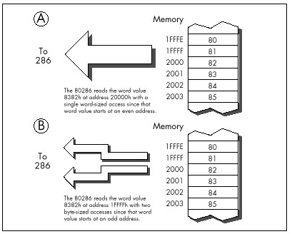
The way to deal with the data alignment cycle-eater is
straightforward: Don’t perform word-sized accesses to odd addresses
on the 286 if you can help it. The easiest way to avoid the data
alignment cycle-eater is to place the directive EVEN before
each of your word-sized variables. EVEN forces the offset
of the next byte assembled to be even by inserting a NOP if
the current offset is odd; consequently, you can ensure that any
word-sized variable can be accessed efficiently by the 286 simply by
preceding it with EVEN.
Listing 11.2, which accesses memory a word at a time with each word
starting at an odd address, runs on a 10 MHz AT clone in 1.27 ms per
repetition of MOVSW, or 0.64 ms per word-sized memory
access. That’s 6-plus cycles per word-sized access, which breaks down to
two separate memory accesses—3 cycles to access the high byte of each
word and 3 cycles to access the low byte of each word, the inevitable
result of non-word-aligned word-sized memory accesses—plus a bit extra
for DRAM refresh.
LISTING 11.2 L11-2.ASM
;
; *** Listing 11.2 ***
;
; Measures the performance of accesses to word-sized
; variables that start at odd addresses (are not
; word-aligned).
;
Skip:
push ds
pop es
mov si,1 ;source and destination are the same
mov di,si ; and both are not word-aligned
mov cx,1000 ;move 1000 words
cld
call ZTimerOn
rep movsw
call ZTimerOffOn the other hand, Listing 11.3, which is exactly the same as Listing
11.2 save that the memory accesses are word-aligned (start at even
addresses), runs in 0.64 ms per repetition of MOVSW, or
0.32 µs per word-sized memory access. That’s 3 cycles per word-sized
access—exactly twice as fast as the non-word-aligned accesses of Listing
11.2, just as we predicted.
LISTING 11.3 L11-3.ASM
;
; *** Listing 11.3 ***
;
; Measures the performance of accesses to word-sized
; variables that start at even addresses (are word-aligned).
;
Skip:
push ds
pop es
sub si,si ;source and destination are the same
mov di,si ; and both are word-aligned
mov cx,1000 ;move 1000 words
cld
call ZTimerOn
rep movsw
call ZTimerOffThe data alignment cycle-eater has intriguing implications for speeding up 286/386 code. The expenditure of a little care and a few bytes to make sure that word-sized variables and memory blocks are word-aligned can literally double the performance of certain code running on the 286. Even if it doesn’t double performance, word alignment usually helps and never hurts.
Lack of word alignment can also interfere with instruction fetching on the 286, although not to the extent that it interferes with access to word-sized memory variables. The 286 prefetches instructions a word at a time; even if a given instruction doesn’t begin at an even address, the 286 simply fetches the first byte of that instruction at the same time that it fetches the last byte of the previous instruction, as shown in Figure 11.2, then separates the bytes internally. That means that in most cases, instructions run just as fast whether they’re word-aligned or not.
There is, however, a non-word-alignment penalty on branches to odd addresses. On a branch to an odd address, the 286 is only able to fetch 1 useful byte with the first instruction fetch following the branch, as shown in Figure 11.3. In other words, lack of word alignment of the target instruction for any branch effectively cuts the instruction-fetching power of the 286 in half for the first instruction fetch after that branch. While that may not sound like much, you’d be surprised at what it can do to tight loops; in fact, a brief story is in order.
When I was developing the Zen timer, I used my trusty 10 MHz 286-based AT clone to verify the basic functionality of the timer by measuring the performance of simple instruction sequences. I was cruising along with no problems until I timed the following code:
mov cx,1000
call ZTimerOn
LoopTop:
loop LoopTop
call ZTimerOff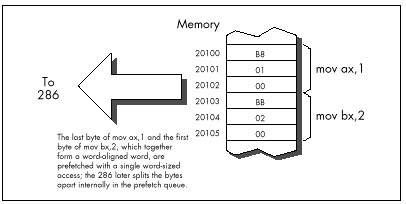
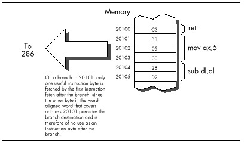
Now, this code should run in, say, about 12 cycles per loop
at most. Instead, it took over 14 cycles per loop, an execution time
that I could not explain in any way. After rolling it around in my head
for a while, I took a look at the code under a debugger…and the answer
leaped out at me. The loop began at an odd address! That meant
that two instruction fetches were required each time through the loop;
one to get the opcode byte of the LOOP instruction, which
resided at the end of one word-aligned word, and another to get the
displacement byte, which resided at the start of the next word-aligned
word.
One simple change brought the execution time down to a reasonable 12.5 cycles per loop:
mov cx,1000
call ZTimerOn
even
LoopTop:
loop LoopTop
call ZTimerOffWhile word-aligning branch destinations can improve branching
performance, it’s a nuisance and can increase code size a good deal, so
it’s not worth doing in most code. Besides, EVEN inserts a
NOP instruction if necessary, and the time required to
execute a NOP can sometimes cancel the performance
advantage of having a word-aligned branch destination.
Consequently, it’s best to word-align only those branch destinations that can be reached solely by branching.
I recommend that you only go out of your way to word-align the start offsets of your subroutines, as in:
even
FindChar proc near
:In my experience, this simple practice is the one form of code alignment that consistently provides a reasonable return for bytes and effort expended, although sometimes it also pays to word-align tight time-critical loops.
So far we’ve only discussed alignment as it pertains to the 286. What, you may well ask, of the 386?
The 386 adds the issue of doubleword alignment (that is, alignment to addresses that are multiples of four.) The rule for the 386 is: Word-sized memory accesses should be word-aligned (it’s impossible for word-aligned word-sized accesses to cross doubleword boundaries), and doubleword-sized memory accesses should be doubleword-aligned. However, in real (as opposed to 32-bit protected) mode, doubleword-sized memory accesses are rare, so the simple word-alignment rule we’ve developed for the 286 serves for the 386 in real mode as well.
As for code alignment…the subroutine-start word-alignment rule of the 286 serves reasonably well there too since it avoids the worst case, where just 1 byte is fetched on entry to a subroutine. While optimum performance would dictate doubleword alignment of subroutines, that takes 3 bytes, a high price to pay for an optimization that improves performance only on the post 286 processors.
One side-effect of the data alignment cycle-eater of the 286 and 386
is that you should never allow the stack pointer to become odd.
(You can make the stack pointer odd by adding an odd value to it or
subtracting an odd value from it, or by loading it with an odd value.)
An odd stack pointer on the 286 or 386 (or a non-doubleword-aligned
stack in 32-bit protected mode on the 386, 486, or Pentium) will
significantly reduce the performance of PUSH,
POP, CALL, and RET, as well as
INT and IRET, which are executed to invoke DOS
and BIOS functions, handle keystrokes and incoming serial characters,
and manage the mouse. I know of a Forth programmer who vastly improved
the performance of a complex application on the AT simply by forcing the
Forth interpreter to maintain an even stack pointer at all times.
An interesting corollary to this rule is that you shouldn’t
INC SP twice to add 2, even though that takes fewer bytes
than ADD SP,2. The stack pointer is odd between the first
and second INC, so any interrupt occurring between the two
instructions will be serviced more slowly than it normally would. The
same goes for decrementing twice; use SUB SP,2 instead.
Keep the stack pointer aligned at all times.
The DRAM refresh cycle-eater is the cycle-eater that’s least changed from its 8088 form on the 286 and 386. In the AT, DRAM refresh uses a little over five percent of all available memory accesses, slightly less than it uses in the PC, but in the same ballpark. While the DRAM refresh penalty varies somewhat on various AT clones and 386 computers (in fact, a few computers are built around static RAM, which requires no refresh at all; likewise, caches are made of static RAM so cached systems generally suffer less from DRAM refresh), the 5 percent figure is a good rule of thumb.
Basically, the effect of the DRAM refresh cycle-eater is pretty much the same throughout the PC-compatible world: fairly small, so it doesn’t greatly affect performance; unavoidable, so there’s no point in worrying about it anyway; and a nuisance since it results in fractional cycle counts when using the Zen timer. Just as with the PC, a given code sequence on the AT can execute at varying speeds at different times as a result of the interaction between the code and DRAM refresh.
There’s nothing much new with DRAM refresh on 286/386 computers, then. Be aware of it, but don’t overly concern yourself—DRAM refresh is still an act of God, and there’s not a blessed thing you can do about it. Happily, the internal caches of the 486 and Pentium make DRAM refresh largely a performance non-issue on those processors.
Finally we come to the last of the cycle-eaters, the display adapter cycle-eater. There are two ways of looking at this cycle-eater on 286/386 computers: (1) It’s much worse than it was on the PC, or (2) it’s just about the same as it was on the PC.
Either way, the display adapter cycle-eater is extremely bad news on 286/386 computers and on 486s and Pentiums as well. In fact, this cycle-eater on those systems is largely responsible for the popularity of VESA local bus (VLB).
The two ways of looking at the display adapter cycle-eater on 286/386
computers are actually the same. As you’ll recall from my earlier
discussion of the matter in Chapter 4, display adapters offer only a
limited number of accesses to display memory during any given period of
time. The 8088 is capable of making use of most but not all of those
slots with REP MOVSW, so the number of memory accesses
allowed by a display adapter such as a standard VGA is reasonably
well-matched to an 8088’s memory access speed. Granted, access to a VGA
slows the 8088 down considerably—but, as we’re about to find out,
“considerably” is a relative term. What a VGA does to PC performance is
nothing compared to what it does to faster computers.
Under ideal conditions, a 286 can access memory much, much faster
than an 8088. A 10 MHz 286 is capable of accessing a word of system
memory every 0.20 ms with REP MOVSW, dwarfing the 1 byte
every 1.31 µs that the 8088 in a PC can manage. However, access to
display memory is anything but ideal for a 286. For one thing, most
display adapters are 8-bit devices, although newer adapters are 16-bit
in nature. One consequence of that is that only 1 byte can be read or
written per access to display memory; word-sized accesses to 8-bit
devices are automatically split into 2 separate byte-sized accesses by
the AT’s bus. Another consequence is that accesses are simply slower;
the AT’s bus inserts additional wait states on accesses to 8-bit devices
since it must assume that such devices were designed for PCs and may not
run reliably at AT speeds.
However, the 8-bit size of most display adapters is but one of the
two factors that reduce the speed with which the 286 can access display
memory. Far more cycles are eaten by the inherent memory-access
limitations of display adapters—that is, the limited number of display
memory accesses that display adapters make available to the 286. Look at
it this way: If REP MOVSW on a PC can use more than half of
all available accesses to display memory, then how much faster can code
running on a 286 or 386 possibly run when accessing display memory?
That’s right—less than twice as fast.
In other words, instructions that access display memory won’t run a whole lot faster on ATs and faster computers than they do on PCs. That explains one of the two viewpoints expressed at the beginning of this section: The display adapter cycle-eater is just about the same on high-end computers as it is on the PC, in the sense that it allows instructions that access display memory to run at just about the same speed on all computers.
Of course, the picture is quite a bit different when you compare the performance of instructions that access display memory to the maximum performance of those instructions. Instructions that access display memory receive many more wait states when running on a 286 than they do on an 8088. Why? While the 286 is capable of accessing memory much more often than the 8088, we’ve seen that the frequency of access to display memory is determined not by processor speed but by the display adapter itself. As a result, both processors are actually allowed just about the same maximum number of accesses to display memory in any given time. By definition, then, the 286 must spend many more cycles waiting than does the 8088.
And that explains the second viewpoint expressed above regarding the display adapter cycle-eater vis-a-vis the 286 and 386. The display adapter cycle-eater, as measured in cycles lost to wait states, is indeed much worse on AT-class computers than it is on the PC, and it’s worse still on more powerful computers.
How bad is the display adapter cycle-eater on an AT? It’s this bad: Based on my (not inconsiderable) experience in timing display adapter access, I’ve found that the display adapter cycle-eater can slow an AT—or even a 386 computer—to near-PC speeds when display memory is accessed.
I know that’s hard to believe, but the display adapter cycle-eater gives out just so many display memory accesses in a given time, and no more, no matter how fast the processor is. In fact, the faster the processor, the more the display adapter cycle-eater hurts the performance of instructions that access display memory. The display adapter cycle-eater is not only still present in 286/386 computers, it’s worse than ever.
What can we do about this new, more virulent form of the display adapter cycle-eater? The workaround is the same as it was on the PC: Access display memory as little as you possibly can.
The 286 and 386 offer a number of new instructions. The 286 has a relatively small number of instructions that the 8088 lacks, while the 386 has those instructions and quite a few more, along with new addressing modes and data sizes. We’ll discuss the 286 and the 386 separately in this regard.
The 286 has a number of instructions designed for protected-mode operations. As I’ve said, we’re not going to discuss protected mode in this book; in any case, protected-mode instructions are generally used only by operating systems. (I should mention that the 286’s protected mode brings with it the ability to address 16 MB of memory, a considerable improvement over the 8088’s 1 MB. In real mode, however, programs are still limited to 1 MB of addressable memory on the 286. In either mode, each segment is still limited to 64K.)
There are also a handful of 286-specific real-mode instructions, and
they can be quite useful. BOUND checks array bounds.
ENTER and LEAVE support compact and speedy
stack frame construction and removal, ideal for interfacing to
high-level languages such as C and Pascal (although these instructions
are actually relatively slow on the 386 and its successors, and should
be used with caution when performance matters). INS and
OUTS are new string instructions that support efficient
data transfer between memory and I/O ports. Finally, PUSHA
and POPA push and pop all eight general-purpose
registers.
A couple of old instructions gain new features on the 286. For one,
the 286 version of PUSH is capable of pushing a constant on
the stack. For another, the 286 allows all shifts and rotates to be
performed for not just 1 bit or the number of bits specified by CL, but
for any constant number of bits.
The 386 is somewhat more complex than the 286 regarding new features. Once again, we won’t discuss protected mode, which on the 386 comes with the ability to address up to 4 gigabytes per segment and 64 terabytes in all. In real mode (and in virtual-86 mode, which allows the 386 to multitask MS-DOS applications, and which is identical to real mode so far as MS-DOS programs are concerned), programs running on the 386 are still limited to 1 MB of addressable memory and 64K per segment.
The 386 has many new instructions, as well as new registers, addressing modes and data sizes that have trickled down from protected mode. Let’s take a quick look at these new real-mode features.
Even in real mode, it’s possible to access many of the 386’s new and extended registers. Most of these registers are simply 32-bit extensions of the 16-bit registers of the 8088. For example, EAX is a 32-bit register containing AX as its lower 16 bits, EBX is a 32-bit register containing BX as its lower 16 bits, and so on. There are also two new segment registers: FS and GS.
The 386 also comes with a slew of new real-mode instructions beyond
those supported by the 8088 and 286. These instructions can scan data on
a bit-by-bit basis, set the Carry flag to the value of a specified bit,
sign-extend or zero-extend data as it’s moved, set a register or memory
variable to 1 or 0 on the basis of any of the conditions that can be
tested with conditional jumps, and more. (Again, beware: Many of these
complex 386-specific instructions are slower than equivalent sequences
of simple instructions on the 486 and especially on the Pentium.) What’s
more, both old and new instructions support 32-bit operations on the
386. For example, it’s relatively simple to copy data in chunks of 4
bytes on a 386, even in real mode, by using the MOVSD
(“move string double”) instruction, or to negate a 32-bit value with
NEG eax.
Finally, it’s possible in real mode to use the 386’s new addressing modes, in which any 32-bit general-purpose register or pair of registers can be used to address memory. What’s more, multiplication of memory-addressing registers by 2, 4, or 8 for look-ups in word, doubleword, or quadword tables can be built right into the memory addressing mode. (The 32-bit addressing modes are discussed further in later chapters.) In protected mode, these new addressing modes allow you to address a full 4 gigabytes per segment, but in real mode you’re still limited to 64K, even with 32-bit registers and the new addressing modes, unless you play some unorthodox tricks with the segment registers.
Note well: Those tricks don’t necessarily work with system software such as Windows, so I’d recommend against using them. If you want 4-gigabyte segments, use a 32-bit environment such as Win32.
Let’s see what we’ve learned about 286/386 optimization. Mostly what we’ve learned is that our familiar PC cycle-eaters still apply, although in somewhat different forms, and that the major optimization rules for the PC hold true on ATs and 386-based computers. You won’t go wrong on any of these computers if you keep your instructions short, use the registers heavily and avoid memory, don’t branch, and avoid accessing display memory like the plague.
Although we haven’t touched on them, repeated string instructions are still desirable on the 286 and 386 since they provide a great deal of functionality per instruction byte and eliminate both the prefetch queue cycle-eater and branching. However, string instructions are not quite so spectacularly superior on the 286 and 386 as they are on the 8088 since non-string memory-accessing instructions have been speeded up considerably on the newer processors.
There’s one cycle-eater with new implications on the 286 and 386, and that’s the data alignment cycle-eater. From the data alignment cycle-eater we get a new rule: Word-align your word-sized variables, and start your subroutines at even addresses.
While the major 8088 optimization rules hold true on computers built
around the 286 and 386, many of the instruction-specific optimizations
no longer hold, for the execution times of most instructions are quite
different on the 286 and 386 than on the 8088. We have already seen one
such example of the sometimes vast difference between 8088 and 286/386
instruction execution times: MOV [WordVar],0, which has an
Execution Unit execution time of 20 cycles on the 8088, has an EU
execution time of just 3 cycles on the 286 and 2 cycles on the 386.
In fact, the performance of virtually all memory-accessing
instructions has been improved enormously on the 286 and 386. The key to
this improvement is the near elimination of effective address (EA)
calculation time. Where an 8088 takes from 5 to 12 cycles to calculate
an EA, a 286 or 386 usually takes no time whatsoever to perform the
calculation. If a base+index+displacement addressing mode, such as
MOV AX,[WordArray+bx+si], is used on a 286 or 386, 1 cycle
is taken to perform the EA calculation, but that’s both the worst case
and the only case in which there’s any EA overhead at all.
The elimination of EA calculation time means that the EU execution
time of memory-addressing instructions is much closer to the EU
execution time of register-only instructions. For instance, on the 8088
ADD [WordVar],100H is a 31-cycle instruction, while
ADD DX,100H is a 4-cycle instruction—a ratio of nearly 8 to
1. By contrast, on the 286 ADD [WordVar],100H is a 7-cycle
instruction, while ADD DX,100H is a 3-cycle instruction—a
ratio of just 2.3 to 1.
It would seem, then, that it’s less necessary to use the registers on
the 286 than it was on the 8088, but that’s simply not the case, for
reasons we’ve already seen. The key is this: The 286 can execute
memory-addressing instructions so fast that there’s no spare instruction
prefetching time during those instructions, so the prefetch queue runs
dry, especially on the AT, with its one-wait-state memory. On the AT,
the 6-byte instruction ADD [WordVar],100H is effectively at
least a 15-cycle instruction, because 3 cycles are needed to fetch each
of the three instruction words and 6 more cycles are needed to read
WordVar and write the result back to memory.
Granted, the register-only instruction ADD DX,100H also
slows down—to 6 cycles—because of instruction prefetching, leaving a
ratio of 2.5 to 1. Now, however, let’s look at the performance of the
same code on an 8088. The register-only code would run in 16 cycles (4
instruction bytes at 4 cycles per byte), while the memory-accessing code
would run in 40 cycles (6 instruction bytes at 4 cycles per byte, plus 2
word-sized memory accesses at 8 cycles per word). That’s a ratio of 2.5
to 1, exactly the same as on the 286.
This is all theoretical. We put our trust not in theory but in actual
performance, so let’s run this code through the Zen timer. On a PC,
Listing 11.4, which performs register-only addition, runs in 3.62 ms,
while Listing 11.5, which performs addition to a memory variable, runs
in 10.05 ms. On a 10 MHz AT clone, Listing 11.4 runs in 0.64 ms, while
Listing 11.5 runs in 1.80 ms. Obviously, the AT is much faster…but the
ratio of Listing 11.5 to Listing 11.4 is virtually identical on both
computers, at 2.78 for the PC and 2.81 for the AT. If anything, the
register-only form of ADD has a slightly larger
advantage on the AT than it does on the PC in this case.
Theory confirmed.
LISTING 11.4 L11-4.ASM
;
; *** Listing 11.4 ***
;
; Measures the performance of adding an immediate value
; to a register, for comparison with Listing 11.5, which
; adds an immediate value to a memory variable.
;
call ZTimerOn
rept 1000
add dx,100h
endm
call ZTimerOffLISTING 11.5 L11-5.ASM
;
; *** Listing 11.5 ***
;
; Measures the performance of adding an immediate value
; to a memory variable, for comparison with Listing 11.4,
; which adds an immediate value to a register.
;
jmp Skip
;
even ;always make sure word-sized memory
; variables are word-aligned!
WordVar dw 0
;
Skip:
call ZTimerOn
rept 1000
add [WordVar]100h
endm
call ZTimerOffWhat’s going on? Simply this: Instruction fetching is controlling overall execution time on both processors. Both the 8088 in a PC and the 286 in an AT can execute the bytes of the instructions in Listings 11.4 and 11.5 faster than they can be fetched. Since the instructions are exactly the same lengths on both processors, it stands to reason that the ratio of the overall execution times of the instructions should be the same on both processors as well. Instruction length controls execution time, and the instruction lengths are the same—therefore the ratios of the execution times are the same. The 286 can both fetch and execute instruction bytes faster than the 8088 can, so code executes much faster on the 286; nonetheless, because the 286 can also execute those instruction bytes much faster than it can fetch them, overall performance is still largely determined by the size of the instructions.
Is this always the case? No. When the prefetch queue is full, memory-accessing instructions on the 286 and 386 are much faster (relative to register-only instructions) than they are on the 8088. Given the system wait states prevalent on 286 and 386 computers, however, the prefetch queue is likely to be empty quite a bit, especially when code consisting of instructions with short EU execution times is executed. Of course, that’s just the sort of code we’re likely to write when we’re optimizing, so the performance of high-speed code is more likely to be controlled by instruction size than by EU execution time on most 286 and 386 computers, just as it is on the PC.
All of which is just a way of saying that faster memory access and EA calculation notwithstanding, it’s just as desirable to keep instructions short and memory accesses to a minimum on the 286 and 386 as it is on the 8088. And the way to do that is to use the registers as heavily as possible, use string instructions, use short forms of instructions, and the like.
The more things change, the more they remain the same….
We’ve one final 286-related item to discuss: the hardware malfunction
of POPF under certain circumstances on the 286.
The problem is this: Sometimes POPF permits interrupts
to occur when interrupts are initially off and the setting popped into
the Interrupt flag from the stack keeps interrupts off. In other words,
an interrupt can happen even though the Interrupt flag is never set to
1. Now, I don’t want to blow this particular bug out of proportion. It
only causes problems in code that cannot tolerate interrupts under any
circumstances, and that’s a rare sort of code, especially in user
programs. However, some code really does need to have interrupts
absolutely disabled, with no chance of an interrupt sneaking through.
For example, a critical portion of a disk BIOS might need to retrieve
data from the disk controller the instant it becomes available; even a
few hundred microseconds of delay could result in a sector’s worth of
data misread. In this case, one misplaced interrupt during a
POPF could result in a trashed hard disk if that interrupt
occurs while the disk BIOS is reading a sector of the File Allocation
Table.
There is a workaround for the POPF bug. While the
workaround is easy to use, it’s considerably slower than
POPF, and costs a few bytes as well, so you won’t want to
use it in code that can tolerate interrupts. On the other hand, in code
that truly cannot be interrupted, you should view those extra cycles and
bytes as cheap insurance against mysterious and erratic program
crashes.
One obvious reason to discuss the POPF workaround is
that it’s useful. Another reason is that the workaround is an excellent
example of Zen-level assembly coding, in that there’s a well-defined
goal to be achieved but no obvious way to do so. The goal is to
reproduce the functionality of the POPF instruction without
using POPF, and the place to start is by asking exactly
what POPF does.
All POPF does is pop the word on top of the stack into
the FLAGS register, as shown in Figure 11.4. How can we do that without
POPF? Of course, the 286’s designers intended us to use
POPF for this purpose, and didn’t intentionally provide any
alternative approach, so we’ll have to devise an alternative approach of
our own. To do that, we’ll have to search for instructions that contain
some of the same functionality as POPF, in the hope that
one of those instructions can be used in some way to replace
POPF.
Well, there’s only one instruction other than POPF that
loads the FLAGS register directly from the stack, and that’s
IRET, which loads the FLAGS register from the stack as it
branches, as shown in Figure 11.5. iret has no known bugs of the sort
that plague POPF, so it’s certainly a candidate to replace
popf in non-interruptible applications. Unfortunately, IRET
loads the FLAGS register with the third word down on the stack,
not the word on top of the stack, as is the case with POPF;
the far return address that IRET pops into CS:IP lies
between the top of the stack and the word popped into the FLAGS
register.
Obviously, the segment:offset that IRET expects to find
on the stack above the pushed flags isn’t present when the stack is set
up for POPF, so we’ll have to adjust the stack a bit before
we can substitute IRET for POPF. What we’ll
have to do is push the segment:offset of the instruction after our
workaround code onto the stack right above the pushed flags.
IRET will then branch to that address and pop the flags,
ending up at the instruction after the workaround code with the flags
popped. That’s just the result that would have occurred had we executed
POPF—WITH the bonus that no interrupts can accidentally
occur when the Interrupt flag is 0 both before and after the pop.
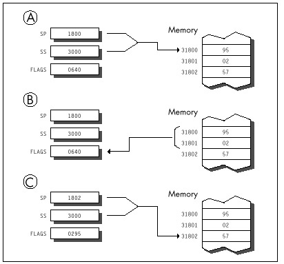
How can we push the segment:offset of the next instruction? Well,
finding the offset of the next instruction by performing a near call to
that instruction is a tried-and-true trick. We can do something similar
here, but in this case we need a far call, since IRET
requires both a segment and an offset. We’ll also branch backward so
that the address pushed on the stack will point to the instruction we
want to continue with. The code works out like this:
jmp short popfskip
popfiret:
iret; branches to the instruction after the
; call, popping the word below the address
; pushed by CALL into the FLAGS register
popfskip:
call far ptr popfiret
;pushes the segment:offset of the next
; instruction on the stack just above
; the flags word, setting things up so
; that IRET will branch to the next
; instruction and pop the flags
; When execution reaches the instruction following this comment,
; the word that was on top of the stack when JMP SHORT POPFSKIP
; was reached has been popped into the FLAGS register, just as
; if a POPF instruction had been executed.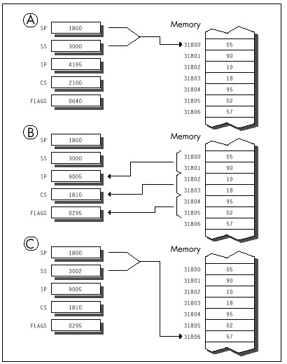
The operation of this code is illustrated in Figure 11.6.
The POPF workaround can best be implemented as a macro;
we can also emulate a far call by pushing CS and performing a near call,
thereby shrinking the workaround code by 1 byte:
EMULATE_POPF macro
local popfskip, popfiret
jmp short popfskip
popfiret:
iret
popfskip:
push cs
call popfiret
endmBy the way, the flags can be popped much more quickly if you’re
willing to alter a register in the process. For example, the following
macro emulates POPF with just one branch, but wipes out
AX:
EMULATE_POPF_TRASH_AX macro
push cs
mov ax,offset $+5
push ax
iret
endmIt’s not a perfect substitute for POPF, since
POPF doesn’t alter any registers, but it’s faster and
shorter than EMULATE_POPF when you can spare the register.
If you’re using 286-specific instructions, you can use which is shorter
still, alters no registers, and branches just once. (Of course, this
version of EMULATE_POPF won’t work on an 8088.)
.286
:
EMULATE_POPFmacro
push cs
push offset $+4
iret
endm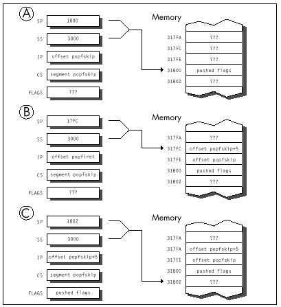
The standard version of EMULATE_POPF is 6 bytes longer
than POPF and much slower, as you’d expect given that it
involves three branches. Anyone in his/her right mind would prefer
POPF to a larger, slower, three-branch macro—given a
choice. In noncode, however, there’s no choice here; the safer—if
slower—approach is the best. (Having people associate your programs with
crashed computers is not a desirable situation, no matter how
unfair the circumstances under which it occurs.)
And now you know the nature of and the workaround for the
POPF bug. Whether you ever need the workaround or not, it’s
a neatly packaged example of the tremendous flexibility of the x86
instruction set.
So this traveling salesman is walking down a road, and he sees a group of men digging a ditch with their bare hands. “Whoa, there!” he says. “What you guys need is a Model 8088 ditch digger!” And he whips out a trowel and sells it to them.
A few days later, he stops back around. They’re happy with the trowel, but he sells them the latest ditch-digging technology, the Model 80286 spade. That keeps them content until he stops by again with a Model 80386 shovel (a full 32 inches wide, with a narrow point to emulate the trowel), and that holds them until he comes back around with what they really need: a Model 80486 bulldozer.
Having reached the top of the line, the salesman doesn’t pay them a call for a while. When he does, not only are they none too friendly, but they’re digging with the 80386 shovel; the bulldozer is sitting off to one side. “Why on earth are you using that shovel?” the salesman asks. “Why aren’t you digging with the bulldozer?”
“Well, Lord knows we tried,” says the foreman, “but it was all we could do just to lift the damn thing!”
Substitute “processor” for the various digging implements, and you
get an idea of just how different the optimization rules for the 486 are
from what you’re used to. Okay, it’s not quite that bad—but
upon encountering a processor where string instructions are often to be
avoided and memory-to-register MOVs are frequently as fast
as register-to-register MOVs, Dorothy was heard to exclaim
(before she sank out of sight in a swirl of hopelessly mixed metaphors),
“I don’t think we’re in Kansas anymore, Toto.”
No chip that is a direct, fully compatible descendant of the 8088,
286, and 386 could ever be called a RISC chip, but the 486 certainly
contains RISC elements, and it’s those elements that are most
responsible for making 486 optimization unique. Simple, common
instructions are executed in a single cycle by a RISC-like core
processor, but other instructions are executed pretty much as they were
on the 386, where every instruction takes at least 2 cycles. For
example, MOV AL, [TestChar] takes only 1 cycle on the 486,
assuming both instruction and data are in the cache—3 cycles faster than
the 386—but STOSB takes 5 cycles, 1 cycle slower
than on the 386. The floating-point execution unit inside the 486 is
also much faster than the 387 math coprocessor, largely because, being
in the same silicon as the CPU (the 486 has a math coprocessor built
in), it is more tightly coupled. The results are sometimes startling:
FMUL (floating point multiply) is usually faster on the 486
than IMUL (integer multiply)!
An encyclopedic approach to 486 optimization would take a book all by itself, so in this chapter I’m only going to hit the highlights of 486 optimization, touching on several optimization rules, some documented, some not. You might also want to check out the following sources of 486 information: i486 Microprocessor Programmer’s Reference Manual, from Intel; “8086 Optimization: Aim Down the Middle and Pray,” in the March, 1991 Dr. Dobb’s Journal; and “Peak Performance: On to the 486,” in the November, 1990 Programmer’s Journal.
In Appendix G of the i486 Microprocessor Programmer’s Reference Manual, Intel lists a number of optimization techniques for the 486. While neither exhaustive (we’ll look at two undocumented optimizations shortly) nor entirely accurate (we’ll correct two of the rules here), Intel’s list is certainly a good starting point. In particular, the list conveys the extent to which 486 optimization differs from optimization for earlier x86 processors. Generally, I’ll be discussing optimization for real mode (it being the most widely used mode at the moment), although many of the rules should apply to protected mode as well.
486 optimization is generally more precise and less frustrating than optimization for other x86 processors because every 486 has an identical internal cache. Whenever both the instructions being executed and the data the instructions access are in the cache, those instructions will run in a consistent and calculatable number of cycles on all 486s, with little chance of interference from the prefetch queue and without regard to the speed of external memory.
In other words, for cached code (which time-critical code almost always is), performance is predictable and can be calculated with good precision, and those calculations will apply on any 486. However, “predictable” doesn’t mean “trivial”; the cycle times printed for the various instructions are not the whole story. You must be aware of all the rules, documented and undocumented, that go into calculating actual execution times—and uncovering some of those rules is exactly what this chapter is about.
Rule #1: Avoid indexed addressing (that is, try not to use either two registers or scaled addressing to point to memory).
Intel cautions against using indexing to address memory because there’s a one-cycle penalty for indexed addressing. True enough—but “indexed addressing” might not mean what you expect.
Traditionally, SI and DI are considered the index registers of the
x86 CPUs. That is not the sense in which “indexed addressing” is meant
here, however. In real mode, indexed addressing means that two
registers, rather than one or none, are used to point to memory. (In
this context, the use of one register to address memory is “base
addressing,” no matter what register is used.)
MOV AX, [BX+DI] and MOV CL, [BP+SI+10] perform
indexed addressing; MOV AX,[BX] and
MOV DL, [SI+1] do not.
Therefore, in real mode, the rule is to avoid using two registers to point to memory whenever possible. Often, this simply means adding the two registers together outside a loop before memory is actually addressed.
As an example, you might adhere to this rule by replacing the code
LoopTop:
add ax,[bx+si]
add si,2
dec cx
jnz LoopTopwith this
add si,bx
LoopTop:
add ax,[si]
add si,2
dec cx
jnz LoopTop
sub si,bxwhich calculates the same sum and leaves the registers in the same state as the first example, but avoids indexed addressing.
In protected mode, the definition of indexed addressing is a tad more
complex. The use of two registers to address memory, as in
MOV EAX, [EDX+EDI], still qualifies for the one-cycle
penalty. In addition, the use of 386/486 scaled addressing, as in
MOV [ECX*2],EAX, also constitutes indexed addressing, even
if only one register is used to point to memory.
All this fuss over one cycle! You might well wonder how much
difference one cycle could make. After all, on the 8088, effective
address calculations take a minimum of 5 cycles. On the 486,
however, 1 cycle is a big deal because many instructions, including most
register-only instructions (MOV, ADD,
CMP, and so on) execute in just 1 cycle. In particular,
MOVs to and from memory execute in 1 cycle—if they’re not
hampered by something like indexed addressing, in which case they slow
to half speed (or worse, as we will see shortly).
For example, consider the summing example shown earlier. The version that uses base+index ([BX+SI]) addressing executes in eight cycles per loop. As expected, the version that uses base ([SI]) addressing runs one cycle faster, at seven cycles per loop. However, the loop code executes so fast on the 486 that the single cycle saved by using base addressing makes the whole loop more than 14 percent faster.
In a key loop on the 486, 1 cycle can indeed matter.
Rule #2: Don’t use a register as a memory pointer during the next two cycles after loading it.
Intel states that if the destination of one instruction is used as the base addressing component of the next instruction, then a one-cycle penalty is imposed. This rule, unlike anything ever before seen in the x86 family, reflects the heavily pipelined nature of the 486. Apparently, the 486 starts each effective address calculation before the start of the instruction that will need it, as shown in Figure 12.1; this effectively makes the address calculation time vanish, because it happens while the preceding instruction executes.
Of course, the 486 can’t perform an effective address calculation for a target instruction ahead of time if one of the address components isn’t known until the instruction starts, and that’s exactly the case when the preceding instruction modifies one of the target instruction’s addressing registers. For example, in the code
MOV BX,OFFSET MemVar
MOV AX,[BX]there’s no way that the 486 can calculate the address referenced by
MOV AX,[BX] until MOV BX,OFFSET MemVar
finishes, so pipelining that calculation ahead of time is not possible.
A good workaround is rearranging your code so that at least one
instruction lies between the loading of the memory pointer and its use.
For example, postdecrementing, as in the following
LoopTop:
add ax,[si]
add si,2
dec cx
jnz LoopTopis faster than preincrementing, as in:
LoopTop:
add si,2
add ax,[SI]
dec cx
jnz LoopTopNow that we understand what Intel means by this rule, let me make a very important comment: My observations indicate that for real-mode code, the documentation understates the extent of the penalty for interrupting the address calculation pipeline by loading a memory pointer just before it’s used.
The truth of the matter appears to be that if a register is the destination of one instruction and is then used by the next instruction to address memory in real mode, not one but two cycles are lost!
In 32-bit protected mode, however, the penalty is, in fact, the 1 cycle that Intel .
Considering that MOV normally takes only one cycle
total, that’s quite a loss. For example, the postdecrement loop shown
above is 2 full cycles faster than the preincrement loop, resulting in a
29 percent improvement in the performance of the entire loop. But wait,
there’s more. If a register is loaded 2 cycles (which generally means 2
instructions, but, because some 486 instructions take more than 1
cycle,
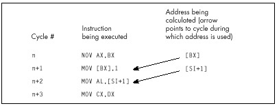
the 2 are not always equivalent) before it’s used to point to memory, 1 cycle is lost. Therefore, whereas this code
mov bx,offset MemVar
mov ax,[bx]
inc dx
dec cx
jnz LoopToploses two cycles from interrupting the address calculation pipeline, this code
mov bx,offset MemVar
inc dx
mov ax,[bx]
dec cx
jnz LoopToploses only one cycle, and this code
mov bx,offset MemVar
inc dx
dec cx
mov ax,[bx]
jnz LoopToploses no cycles at all. Apparently, the 486’s addressing calculation pipeline actually starts 2 cycles ahead, as shown in Figure 12.2. (In truth, my best guess at the moment is that the addressing pipeline really does start only 1 cycle ahead; the additional cycle crops up when the addressing pipeline has to wait for a register to be written into the register file before it can read it out for use in addressing calculations. However, I’m guessing here, and the 2-cycle-ahead model in Figure 12.2 will do just fine for optimization purposes.)
Clearly, there’s considerable optimization potential in careful rearrangement of 486 code.
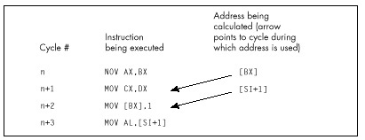
A caution: I’m quite certain that the 2-cycle-ahead addressing pipeline interruption penalty I’ve described exists in the two 486s I’ve tested. However, there’s no guarantee that Intel won’t change this aspect of the 486 in the future, especially given that the documentation indicates otherwise. Perhaps the 2-cycle penalty is the result of a bug in the initial steps of the 486, and will revert to the documented 1-cycle penalty someday; likewise for the undocumented optimizations I’ll describe below. Nonetheless, none of the optimizations I suggest would hurt performance even if the undocumented performance characteristics of the 486 were to vanish, and they certainly will help performance on at least some 486s right now, so I feel they’re well worth using.
There is, of course, no guarantee that I’m entirely correct about the optimizations discussed in this chapter. Without knowing the internals of the 486, all I can do is time code and make inferences from the results; I invite you to deduce your own rules and cross-check them against mine. Also, most likely there are other optimizations that I’m unaware of. If you have further information on these or any other undocumented optimizations, please write and let me know. And, of course, if anyone from Intel is reading this and wants to give us the gospel truth, please do!
Rule #2A: Rule #2 sometimes, but not always, applies to the stack pointer when it is implicitly used to point to memory.
Intel states that the stack pointer is an implied destination
register for CALL, ENTER, LEAVE,
RET, PUSH, and POP (which alter
(E)SP), and that it is the implied base addressing register for
PUSH, POP, and RET (which use
(E)SP to address memory). Intel then implies that the aforementioned
addressing pipeline penalty is incurred whenever the stack pointer is
used as a destination by one of the first set of instructions and is
then immediately used to address memory by one of the second set. This
raises the specter of unpleasant programming contortions such as
intermixing PUSHes and POPs with other
instructions to avoid interrupting the addressing pipeline. Fortunately,
matters are actually not so grim as Intel’s documentation would
indicate; my tests indicate that the addressing pipeline penalty pops up
only spottily when the stack pointer is involved.
For example, you’d certainly expect a sequence such as
:
pop ax
ret
pop ax
ret
:to exhibit the addressing pipeline interruption phenomenon (SP is
both destination and addressing register for both instructions,
according to Intel), but this code runs in six cycles per
POP/RET pair, matching the official execution times
exactly. Likewise, a sequence like
pop dx
pop cx
pop bx
pop axruns in one cycle per instruction, just as it should.
On the other hand, performing arithmetic directly on SP as an
explicit destination—for example, to deallocate local
variables—and then using PUSH, POP, or
RET, definitely can interrupt the addressing pipeline. For
example
add sp,10h
retloses two cycles because SP is the explicit destination of one instruction and then the implied addressing register for the next, and the sequence
add sp,10h
pop axloses two cycles for the same reason.
I certainly haven’t tried all possible combinations, but the results
so far indicate that the stack pointer incurs the addressing pipeline
penalty only if (E)SP is the explicit destination of one
instruction and is then used by one of the two following instructions to
address memory. So, for instance, SP isn’t the explicit operand of
POP AX-AX is—and no cycles are lost if POP AX
is followed by POP or RET. Happily, then, we
need not worry about the sequence in which we use PUSH and
POP. However, adding to, moving to, or subtracting from the
stack pointer should ideally be done at least two cycles before
PUSH, POP, RET, or any other
instruction that uses the stack pointer to address memory.
There are two ways to lose cycles by using byte registers, and neither of them is documented by Intel, so far as I know. Let’s start with the lesser and simpler of the two.
Rule #3: Do not load a byte portion of a register during one instruction, then use that register in its entirety as a source register during the next instruction.
So, for example, it would be a bad idea to do this
mov ah,o
:
mov cx,[MemVar1]
mov al,[MemVar2]
add cx,axbecause AL is loaded by one instruction, then AX is used as the source register for the next instruction. A cycle can be saved simply by rearranging the instructions so that the byte register load isn’t immediately followed by the word register usage, like so:
mov ah,o
:
mov al,[MemVar2]
mov cx,[MemVar1]
add cx,axStrange as it may seem, this rule is neither arbitrary nor nonsensical. Basically, when a byte destination register is part of a word source register for the next instruction, the 486 is unable to directly use the result from the first instruction as the source for the second instruction, because only part of the register required by the second instruction is contained in the first instruction’s result. The full, updated register value must be read from the register file, and that value can’t be read out until the result from the first instruction has been written into the register file, a process that takes an extra cycle. I’m not going to explain this in great detail because it’s not important that you understand why this rule exists (only that it does in fact exist), but it is an interesting window on the way the 486 works.
In case you’re curious, there’s no such penalty for the typical
XLAT sequence like
mov bx,offset MemTable
:
mov al,[si]
xlateven though AL must be converted to a word by XLAT
before it can be added to BX and used to address memory. In fact, none
of the penalties mentioned in this chapter apply to XLAT,
apparently because XLAT is so slow—4 cycles—that it gives
the 486 time to perform addressing calculations during the course of the
instruction.
While it’s nice that
XLATdoesn’t suffer from the various 486 addressing penalties, the reason for that is basically thatXLATis slow, so there’s still no compelling reason to useXLATon the 486.
In general, penalties for interrupting the 486’s pipeline apply
primarily to the fast core instructions of the 486, most notably
register-only instructions and MOV, although arithmetic and
logical operations that access memory are also often affected. I don’t
know all the performance dependencies, and I don’t plan to; figuring all
of them out would be a big, boring job of little value. Basically, on
the 486 you should concentrate on using those fast core instructions
when performance matters, and all the rules I’ll discuss do indeed apply
to those instructions.
You don’t need to understand every corner of the 486 universe unless you’re a diehard ASMhead who does this stuff for fun. Just learn enough to be able to speed up the key portions of your programs, and spend the rest of your time on a fast design and overall implementation.
Rule #4: Don’t load any byte register exactly 2 cycles before using any register to address memory.
This, the last of this chapter’s rules, is the strangest of the lot. If any byte register is loaded, and then two cycles later any register is used to point to memory, one cycle is lost. So, for example, this code
mov al,bl
mov cx,dx
mov si,[di]takes four rather than the expected three cycles to execute. Note that it is not required that the byte register be part of the register used to address memory; any byte register will do the trick.
Worse still, loading byte registers both one and two cycles before a register is used to address memory costs two cycles, as in
mov bl,al
mov cl,3
mov bx,[si]which takes five rather than three cycles to run. However, there is no penalty if a byte register is loaded one cycle but not two cycles before a register is used to address memory. Therefore,
mov cx,3
mov dl,al
mov si,[bx]runs in the expected three cycles.
In truth, I do not know why this happens. Clearly, it has something to do with interrupting the start of the addressing pipeline, and I have my theories about how this works, but at this point they’re pure speculation. Whatever the reason for this rule, ignorance of it—and of its interaction with the other rules—could lead to considerable performance loss in seemingly air-tight code. For instance, a casual observer would expect the following code to run in 3 cycles:
mov bx,offset MemVar
mov cl,al
mov ax,[bx]A more sophisticated programmer would expect to lose one cycle,
because BX is loaded two cycles before being used to address memory. In
fact, though, this code takes 5 cycles—2 cycles, or 67 percent, longer
than normal. Why? Well, under normal conditions, loading a byte
register—CL in this case—one cycle before using a register to address
memory produces no penalty; loading 2 cycles ahead is the only case that
normally incurs a penalty. However, think of Rule #4 as meaning that
loading a byte register disrupts the memory addressing pipeline as it
starts up. Viewed that way, we can see that
MOV BX,OFFSET MemVar interrupts the addressing pipeline,
forcing it to start again, and then, presumably, MOV CL,AL
interrupts the pipeline again because the pipeline is now on its first
cycle: the one that loading a byte register can affect.
I know—it seems awfully complicated. It isn’t, really. Generally, try not to use byte destinations exactly two cycles before using a register to address memory, and try not to load a register either one or two cycles before using it to address memory, and you’ll be fine.
In case you want to do some 486 performance analysis of your own, let me show you how I arrived at one of the above conclusions; at the same time, I can warn you of the timing hazards of the cache. Listings 12.1 and 12.2 show the code I ran through the Zen timer in order to establish the effects of loading a byte register before using a register to address memory. Listing 12.1 ran in 120 µs on a 33 MHz 486, or 4 cycles per repetition (120 µs/1000 repetitions = 120 ns per repetition; 120 ns per repetition/30 ns per cycle = 4 cycles per repetition); Listing 12.2 ran in 90 µs, or 3 cycles, establishing that loading a byte register costs a cycle only when it’s performed exactly 2 cycles before addressing memory.
LISTING 12.1 LST12-1.ASM
; Measures the effect of loading a byte register 2 cycles before
; using a register to address memory.
mov bp,2 ;run the test code twice to make sure
; it's cached
sub bx,bx
CacheFillLoop:
call ZTimerOn ;start timing
rept 1000
mov dl,cl
nop
mov ax,[bx]
endm
call ZTimerOff ;stop timing
dec bp
jz Done
jmp CacheFillLoop
Done:LISTING 12.2 LST12-2.ASM
; Measures the effect of loading a byte register 1 cycle before
; using a register to address memory.
mov bp,2 ;run the test code twice to make sure
; it's cached
sub bx,bx
CacheFillLoop:
call ZTimerOn ;start timing
rept 1000
nop
mov dl,cl
mov ax,[bx]
endm
call ZTimerOff ;stop timing
dec bp
jz Done
jmp CacheFillLoop
Done:Note that Listings 12.1 and 12.2 each repeat the timing of the code
under test a second time, to make sure that the instructions are in the
cache on the second pass, the one for which results are displayed. Also
note that the code is less than 8K in size, so that it can all fit in
the 486’s 8K internal cache. If I double the REPT value in
Listing 12.2 to 2,000, making the test code larger than 8K, the
execution time more than doubles to 224 µs, or 3.7 cycles per
repetition; the extra seven-tenths of a cycle comes from fetching
non-cached instruction bytes.
Whenever you see non-integral timing results of this sort, it’s a good bet that the test code or data isn’t cached.
There’s certainly plenty more 486 lore to explore, including the 486’s unique prefetch queue, more optimization rules, branching optimizations, performance implications of the cache, the cost of cache misses for reads, and the implications of cache write-through for writes. Nonetheless, we’ve covered quite a bit of ground in this chapter, and I trust you’ve gotten a feel for the considerable extent to which 486 optimization differs from what you’re used to. Odd as 486 optimization is, though, it’s well worth mastering, for the 486 is, at its best, so staggeringly fast that carefully crafted 486 code can do more than twice as much per cycle as the best 386 code—which makes it perhaps 50 times as fast as optimized code for the original PC.
Sometimes it is hard to believe we’re still in Kansas!
It’s a sad but true fact that 84 percent of American schoolchildren are ignorant of 92 percent of American history. Not my daughter, though. We recently visited historical Revolutionary-War-vintage Fort Ticonderoga, and she’s now 97 percent aware of a key element of our national heritage: that the basic uniform for soldiers in those days was what appears to be underwear, plus a hat so that no one could complain that they were undermining family values. Ha! Just kidding! Actually, what she learned was that in those days, it was pure coincidence if a cannonball actually hit anything it was aimed at, which isn’t surprising considering the lack of rifling, precision parts, and ballistics. The guides at the fort shot off three cannons; the closest they came to the target was about 50 feet, and that was only because the wind helped. I think the idea in early wars was just to put so much lead in the air that some of it was bound to hit something; preferably, but not necessarily, the enemy.
Nowadays, of course, we have automatic weapons that allow a teenager to singlehandedly defeat the entire U.S. Army, not to mention so-called “smart” bombs, which are smart in the sense that they can seek out and empty a taxpayer’s wallet without being detected by radar. There’s an obvious lesson here about progress, which I leave you to deduce for yourselves.
Here’s the same lesson, in another form. Ten years ago, we had a slow processor, the 8088, for which it was devilishly hard to optimize, and for which there was no good optimization documentation available. Now we have a processor, the 486, that’s 50 to 100 times faster than the 8088—and for which there is no good optimization documentation available. Sure, Intel provides a few tidbits on optimization in the back of the i486 Microprocessor Programmer’s Reference Manual, but, as I discussed in Chapter 12, that information is both incomplete and not entirely correct. Besides, most assembly language programmers don’t bother to read Intel’s manuals (which are extremely informative and well done, but only slightly more fun to read than the phone book), and go right on programming the 486 using outdated 8088 optimization techniques, blissfully unaware of a new and heavily mutated generation of cycle-eaters that interact with their code in ways undreamt of even on the 386.
For example, consider how Terje Mathisen doubled the speed of his word-counting program on a 486 simply by shuffling a couple of instructions.
I’ve mentioned Terje Mathisen in my writings before. Terje is an assembly language programmer extraordinaire, and author of the incredibly fast public-domain word-counting program WC (which comes complete with source code; well worth a look, if you want to see what really fast code looks like). Terje’s a regular participant in the ibm.pc/fast.code topic on Bix. In a thread titled “486 Pipeline Optimization, or TANSTATFC (There Ain’t No Such Thing As The Fastest Code),” he detailed the following optimization to WC, perhaps the best example of 486 pipeline optimization I’ve yet seen.
Terje’s inner loop originally looked something like the code in Listing 13.1. (I’ve taken a few liberties for illustrative purposes.) Of course, Terje unrolls this loop a few times (128 times, to be exact). By the way, in Listing 13.1 you’ll notice that Terje counts not only words but also lines, at a rate of three instructions for every two characters!
LISTING 13.1 L13-1.ASM
mov di,[bp+OFFS] ;get the next pair of characters
mov bl,[di] ;get the state value for the pair
add dx,[bx+8000h] ;increment word and line count
; appropriately for the pairListing 13.1 looks as tight as it could be, with just two one-cycle instructions, one two-cycle instruction, and no branches. It is tight, but those three instructions actually take a minimum of 8 cycles to execute, as shown in Figure 13.1. The problem is that DI is loaded just before being used to address memory, and that costs 2 cycles because it interrupts the 486’s internal instruction pipeline. Likewise, BX is loaded just before being used to address memory, costing another two cycles. Thus, this loop takes twice as long as cycle counts would seem to indicate, simply because two registers are loaded immediately before being used, disrupting the 486’s pipeline.
Listing 13.2 shows Terje’s immediate response to these pipelining problems; he simply swapped the instructions that load DI and BL. This one change cut execution time per character pair from eight cycles to five cycles! The load of BL is now separated by one instruction from the use of BX to address memory, so the pipeline penalty is reduced from two cycles to one cycle. The load of DI is also separated by one instruction from the use of DI to address memory (remember, the loop is unrolled, so the last instruction is followed by the first instruction), but because the intervening instruction takes two cycles, there’s no penalty at all.
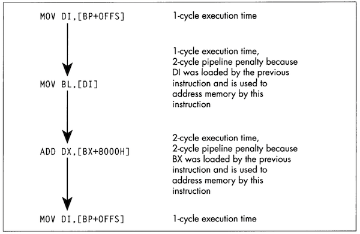
Remember, pipeline penalties diminish with increasing number of cycles, not instructions, between the pipeline disrupter and the potentially affected instruction.
LISTING 13.2 L13-2.ASM
mov bl,[di] ;get the state value for the pair
mov di,[bp+OFFS] ;get the next pair of characters
add dx,[bx+8000h] ;increment word and line count
; appropriately for the pairAt this point, Terje had nearly doubled the performance of this code simply by moving one instruction. (Note that swapping the instructions also made it necessary to preload DI at the start of the loop; Listing 13.2 is not exactly equivalent to Listing 13.1.) I’ll let Terje describe his next optimization in his own words:
“When I looked closely as this, I realized that the two cycles for
the final ADD is just the sum of 1 cycle to load the data
from memory, and 1 cycle to add it to DX, so the code could just as well
have been written as shown in Listing 13.3. The final breakthrough came
when I realized that by initializing AX to zero outside the loop, I
could rearrange it as shown in Listing 13.4 and do the final
ADD DX,AX after the loop. This way there are two
single-cycle instructions between the first and the fourth line,
avoiding all pipeline stalls, for a total throughput of two
cycles/char.”
LISTING 13.3 L13-3.ASM
mov bl,[di] ;get the state value for the pair
mov di,[bp+OFFS] ;get the next pair of characters
mov ax,[bx+8000h] ;increment word and line count
add dx,ax ; appropriately for the pairLISTING 13.4 L13-4.ASM
mov bl,[di] ;get the state value for the pair
mov di,[bp+OFFS] ;get the next pair of characters
add dx,ax ;increment word and line count
; appropriately for the pair
mov ax,[bx+8000h] ;get increments for next timeI’d like to point out two fairly remarkable things. First, the single cycle that Terje saved in Listing 13.4 sped up his entire word-counting engine by 25 percent or more; Listing 13.4 is fully twice as fast as Listing 13.1—all the result of nothing more than shifting an instruction and splitting another into two operations. Second, Terje’s word-counting engine can process more than 16 million characters per second on a 486/33.
Clever 486 optimization can pay off big. QED.
There are only 3 non-system instructions unique to the 486. None is
earthshaking, but they have their uses. Consider BSWAP.
BSWAP does just what its name implies, swapping the bytes
(not bits) of a 32-bit register from one end of the register to the
other, as shown in Figure 13.2. (BSWAP can only work with
32-bit registers; memory locations and 16-bit registers are not valid
operands.) The obvious use of BSWAP is to convert data from
Intel format (least significant byte first in memory, also called
little endian) to Motorola format (most significant byte first
in memory, or big endian), like so:
lodsd
bswap
stosdBSWAP can also be useful for reversing the order of
pixel bits from a bitmap so that they can be rotated 32 bits at a time
with an instruction such as ROR EAX,1. Intel’s byte
ordering for multiword values (least-significant byte first) loads
pixels in the wrong order, so far as word rotation is concerned, but
BSWAP can take care of that.
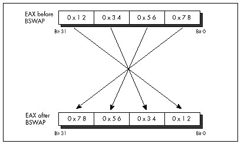
As it turns out, though, BSWAP is also useful in an
unexpected way, having to do with making efficient use of the upper half
of 32-bit registers. As any assembly language programmer knows, the x86
register set is too small; or, to phrase that another way, it sure would
be nice if the register set were bigger. As any 386/486 assembly
language programmer knows, there are many cases in which 16 bits is
plenty. For example, a 16-bit scan-line counter generally does the trick
nicely in a video driver, because there are very few video
devices with more than 65,535 addressable scan lines. Combining these
two observations yields the obvious conclusion that it would be great if
there were some way to use the upper and lower 16 bits of selected 386
registers as separate 16-bit registers, effectively increasing the
available register space.
Unfortunately, the x86 instruction set doesn’t provide any way to work directly with only the upper half of a 32-bit register. The next best solution is to rotate the register to give you access in the lower 16 bits to the half you need at any particular time, with code along the lines of that in Listing 13.5. Having to rotate the 16-bit fields into position certainly isn’t as good as having direct access to the upper half, but surely it’s better than having to get the values out of memory, isn’t it?
LISTING 13.5 L13-5.ASM
mov cx,[initialskip]
shl ecx,16 ;put skip value in upper half of ECX
mov cx,100 ;put loop count in CX
looptop:
:
ror ecx,16 ;make skip value word accessible in CX
add bx,cx ;skip BX ahead
inc cx ;set next skip value
ror ecx,16 ;put loop count in CX
dec cx ;count down loop
jnz looptopNot necessarily. Shifts and rotates are among the worst performing
instructions of the 486, taking 2 to 3 cycles to execute. Thus, it takes
2 cycles to rotate the skip value into CX in Listing 13.5, and 2 more
cycles to rotate it back to the upper half of ECX. I’d say four cycles
is a pretty steep price to pay, especially considering that a
MOV to or from memory takes only one cycle. Basically,
using ROR to access a 16-bit value in the upper half of a
16-bit register is a pretty marginal technique, unless for some reason
you can’t access memory at all (for example, if you’re using BP as a
working register, temporarily making the stack frame inaccessible).
On the 386, ROR was the only way to split a 32-bit
register into two 16-bit registers. On the 486, however,
BSWAP can not only do the job, but can do it better,
because BSWAP executes in just one cycle.
BSWAP has the added benefit of not affecting any flags,
unlike ROR. With BSWAP-based code like that in
Listing 13.6, the upper 16 bits of a register can be accessed with only
2 cycles of overhead and without altering any flags, making the
technique of packing two 16-bit registers into one 32-bit register much
more useful.
LISTING 13.6 L13-6.ASM
mov cx,[initialskip]
bswap ecx ;put skip value in upper half of ECX
mov cx,100 ;put loop count in CX
looptop:
:
bswap ecx ;make skip value word accessible in CX
add bx,cx ;skip BX ahead
inc cx ;set next skip value
bswap ecx ;put loop count in CX
dec cx ;count down loop
jnz looptopPushing or popping a memory location, as in
PUSH WORD PTR [BX] or POP [MemVar], is a
compact, easy way to get a value onto or off of the stack, especially
when pushing parameters for calling a C-compatible function. However, on
a 486, these are unattractive instructions from a performance
perspective. Pushing a memory location takes four cycles; by contrast,
loading a memory location into a register takes only one cycle, and
pushing a register takes just 1 more cycle, for a total of two cycles.
Therefore,
mov ax,[bx]
push axis twice as fast as
push word ptr [bx]and the only cost is that the previous contents of AX are destroyed.
Likewise, popping a memory location takes six cycles, but popping a register and writing it to memory takes only two cycles combined. The i486 Microprocessor Programmer’s Reference Manual lists a 4-cycle execution time for popping a register, but pay that no mind; popping a register takes only 1 cycle.
Why is it that such a convenient operation as pushing or popping
memory is so slow? The rule on the 486 is that simple operations, which
can be executed in a single cycle by the 486’s RISC core, are fast;
whereas complex operations, which must be carried out in microcode just
as they were on the 386, are almost all relatively slow. Slow, complex
operations include all the string instructions except
REP MOVS, as well as XLAT, LOOP,
and, of course, PUSH *mem* and POP *mem*.
Whenever possible, try to use the 486’s 1-cycle instructions, including
MOV,ADD,SUB,CMP,ADC,SBB,XOR,AND,OR,TEST,LEA, andPUSH regandPOP reg. These instructions have an added benefit in that it’s often possible to rearrange them for maximum pipeline efficiency, as is the case with Terje’s optimization described earlier in this chapter.
On a 486, the n-bit forms of the shift and rotate instructions—as in
ROR AX,2 and SHL BX,9—are 2-cycle
instructions, but the 1-bit forms—as in ROR AX,1 and
SHL BX,1-are 3-cycle instructions. Go figure.
Assemblers default to the 1-bit instruction for 1-bit shifts and
rotates. That’s not unreasonable since the 1-bit form is a byte shorter
and is just as fast as the n-bit forms on a 386 and faster on a 286, and
the n-bit form doesn’t even exist on an 8088. In a really critical loop,
however, it might be worth hand-assembling the n-bit form of a
single-bit shift or rotate in order to save that cycle. The easiest way
to do this is to assemble a 2-bit form of the desired instruction, as in
SHL AX,2, then look at the hex codes that the assembler
generates and use DB to insert them in your program code,
with the value two replaced with the value one. For example, you could
determine that SHL AX,2 assembles to the bytes 0C1H 0E0H
002H, either by looking at the disassembly in a debugger or by having
the assembler generate a listing file. You could then insert the n-bit
version of SHL AX,1 in your code as follows:
mov ax,1
db 0c1h, 0e0h, 001h
mov dx,axAt the end of this sequence, DX will contain 2, and the fast n-bit
version of SHL AX,1 will have executed. If you use this
approach, I’d recommend using a macro, rather than sticking DBs in the
middle of your code.
Again, this technique is advantageous only on a 486. It also
doesn’t apply to RCL and RCR, where you
definitely want to use the 1-bit versions whenever you can, because the
n-bit versions are horrendously slow. But if you’re optimizing for the
486, these tidbits can save a few critical cycles—and Lord knows that if
you’re optimizing for the 486—that is, if you need even more performance
than you get from unoptimized code on a 486—you almost certainly need
all the speed you can get.
The 386 and 486 both support 32-bit addressing modes, in which any register may serve as the base memory addressing register, and almost any register may serve as the potentially scaled index register. For example,
mov al,BaseTable[ecx+edx*4]uses a perfectly valid 32-bit address, with the byte accessed being
the one at the offset in DS pointed to by the sum of EDX times 4 plus
the offset of BaseTable plus ECX. This is a very powerful
memory addressing scheme, far superior to 8088-style 16-bit addressing,
but it’s not without its quirks and costs, so let’s take a quick look at
32-bit addressing. (By the way, 32-bit addressing is not limited to
protected mode; 32-bit instructions may be used in real mode, although
each instruction that uses 32-bit addressing must have an address-size
prefix byte, and the presence of a prefix byte costs a cycle on a
486.)
Any register may serve as the base register component of an address. Any register except ESP may also serve as the index register, which can be scaled by 1, 2, 4, or 8. (Scaling is very handy for performing lookups in arrays and tables.) The same register may serve as both base and index register, except for ESP, which can only be the base. Incidentally, it makes sense that ESP can’t be scaled; ESP presumably always points to a valid stack, and I can’t think of any reason you’d want to use the stack pointer times 2, 4, or 8 in an address. ESP is, by its nature, a base rather than index pointer.
That’s all there is to the functionality of 32-bit addressing; it’s
very simple, much simpler than 16-bit addressing, with its sharply
limited memory addressing register combinations. The costs of 32-bit
addressing are a bit more subtle. The only performance cost (apart from
the aforementioned 1-cycle penalty for using 32-bit addressing in real
mode) is a 1-cycle penalty imposed for using an index register. In this
context, you use an index register when you use a register that’s
scaled, or when you use the sum of two registers to point to memory.
MOV BL,[EBX*2] uses an index register and takes an extra
cycle, as does MOV CL,[EAX+EDX]; MOV CL,[EAX+100H] is not
indexed, however.
The other cost of 32-bit addressing is in instruction size. Old-style
16-bit addressing usually (except in a few special cases) uses one extra
byte, which Intel calls the Mod-R/M byte, which is placed immediately
after each instruction’s opcode to describe the memory addressing mode,
plus 1 or 2 optional bytes of addressing displacement—that is, a
constant value to add into the address. In many cases, 32-bit addressing
continues to use the Mod-R/M byte, albeit with a different
interpretation; in these cases, 32-bit addressing is no larger than
16-bit addressing, except when a 32-bit displacement is involved. For
example, MOV AL, [EBX] is a 2-byte instruction;
MOV AL, [EBX+10H] is a 3-byte instruction; and
MOV AL, [EBX+10000H] is a 6-byte instruction.
Note that 1 and 4-byte displacements, but not 2-byte displacements, are supported for 32-bit addressing. Code size can be greatly improved by keeping stack frame variables within 128 bytes of EBP, and variables in pointed-to structures within 127 bytes of the start of the structure, so that displacements can be 1 rather than 4 bytes.
However, because 32-bit addressing supports many more addressing combinations than 16-bit addressing, the Mod-R/M byte can’t describe all the combinations. Therefore, whenever an index register (as described above) is involved, a second byte, the SIB byte, follows the Mod-R/M byte to provide additional address information. Consequently, whenever you use a scaled memory addressing register or use the sum of two registers to point to memory, you automatically add 1 cycle and 1 byte to that instruction. This is not to say that you shouldn’t use index registers when they’re needed, but if you find yourself using them inside key loops, you should see if it’s possible to move the index calculation outside the loop as, for example, in a loop like this:
LoopTop:
add ax,DataTable[ebx*2]
inc ebx
dec cx
jnz LoopTopYou could change this to the following for greater performance:
add ebx,ebx ;ebx*2
LoopTop:
add ax,DataTable[ebx]
add ebxX,2
dec cx
jnz LoopTop
shr ebx,1 ;ebx*2/2I’ll end this chapter with two more quirks of 32-bit addressing. First, as with 16-bit addressing, addressing that uses EBP as a base register both accesses the SS segment by default and always has a displacement of at least 1 byte. This reflects the common use of EBP to address a stack frame, but is worth keeping in mind if you should happen to use EBP to address non-stack memory.
Lastly, as I mentioned, ESP cannot be scaled. In fact, ESP cannot be an index register; it must be a base register. Ironically, however, ESP is the one register that cannot be used to address memory without the presence of an SIB byte, even if it’s used without an index register. This is an outcome of the way in which the SIB byte extends the capabilities of the Mod-R/M byte, and there’s nothing to be done about it, but it’s at least worth noting that ESP-based, non-indexed addressing makes for instructions that are a byte larger than other non-indexed addressing (but not any slower; there’s no 1-cycle penalty for using ESP as a base register) on the 486.
When you seem to be stumped, stop for a minute and think. All the information you need may be right in front of your nose if you just look at things a little differently. Here’s a case in point:
When I was in college, I used to stay around campus for the summer. Oh, I’d take a course or two, but mostly it was an excuse to hang out and have fun. In that spirit, my girlfriend, Adrian (not my future wife, partly for reasons that will soon become apparent), bussed in to spend a week, sharing a less-than-elegant $150 per month apartment with me and, by necessity, my roommate.
Our apartment was pretty much standard issue for two male college students; maybe even a cut above. The dishes were usually washed, there was generally food in the refrigerator, and nothing larger than a small dog had taken up permanent residence in the bathroom. However, there was one sticking point (literally): the kitchen floor. This floor—standard tile, with a nice pattern of black lines on an off-white background (or so we thought)—had never been cleaned. By which I mean that I know for a certainty that we had never cleaned it, but I suspect that it had in fact not been cleaned since the Late Jurassic, or possibly earlier. Our feet tended to stick to it; had the apartment suddenly turned upside-down, I think we’d all have been hanging from the ceiling.
One day, my roommate and I returned from a pick-up basketball game. Adrian, having been left to her own devices for a couple of hours, had apparently kept herself busy. “Notice anything?” she asked, with an edge to her voice that suggested we had damned well better.
“Uh, you cooked dinner?” I guessed. “Washed the dishes? Had your hair done?” My roommate was equally without a clue.
She stamped her foot (really; the only time I’ve ever seen it happen), and said, “No, you jerks! The kitchen floor! Look at the floor! I cleaned it!”
The floor really did look amazing. It was actually all white; the black lines had been grooves filled with dirt. We assured her that it looked terrific, it just wasn’t that obvious until you knew to look for it; anyone would tell you that it wasn’t the kind of thing that jumped out at you, but it really was great, no kidding. We had almost smoothed things over, when a friend walked in, looked around with a start, and said, “Hey! Did you guys put in a new floor?”
As I said, sometimes everything you need to know is right in front of your nose. Which brings us to Boyer-Moore string searching.
I’ve discussed string searching earlier in this book, in Chapters 5
and 9. You may want to refer back to these chapters for some background
on string searching in general. I’m also going to use some of the code
from that chapter as part of this chapter’s test suite. For further
information, you may want to refer to the discussion of string searching
in the excellent Algorithms in C, by Robert Sedgewick
(Addison-Wesley), which served as the primary reference for this
chapter. (If you look at Sedgewick, be aware that in the Boyer-Moore
listing on page 288, there is a mistake: “j > 0” in the
for loop should be “j >= 0,” unless I’m missing
something.)
String searching is the simple matter of finding the first occurrence
of a particular sequence of bytes (the pattern) within another sequence
of bytes (the buffer). The obvious, brute-force approach is to try every
possible match location, starting at the beginning of the buffer and
advancing one position after each mismatch, until either a match is
found or the buffer is exhausted. There’s even a nifty string
instruction, REPZ CMPS, that’s perfect for comparing the
pattern to the contents of the buffer at each location. What could be
simpler?
We have some important information that we’re not yet using, though.
Typically, the buffer will contain a wide variety of bytes. Let’s assume
that the buffer contains text, in which case there will be dozens of
different characters; and although the distribution of characters won’t
usually be even, neither will any one character constitute half the
buffer, or anything close. A reasonable conclusion is that the first
character of the pattern will rarely match the first character of the
buffer location currently being checked. This allows us to use the
speedy REPNZ SCASB to whiz through the buffer, eliminating
most potential match locations with single repetitions of
SCASB. Only when that first character does (infrequently)
match must we drop back to the slower REPZ CMPS
approach.
It’s important to understand that we’re assuming that the buffer is typical text. That’s what I meant at the outset, when I said that the information you need may be under your nose.
Formally, you don’t know a blessed thing about the search buffer, but experience, common sense, and your knowledge of the application give you a great deal of useful, if somewhat imprecise, information.
If the buffer contains the letter ‘A’ repeated 1,000 times, followed
by the letter ‘B,’ then the REPNZ SCASB/REPZ CMPS approach
will be much slower than the brute-force REPZ CMPS approach
when searching for the pattern “AB,” because REPNZ SCASB
would match at every buffer location. You could construct a horrendous
worst-case scenario for almost any good optimization; the key is
understanding the usual conditions under which your code will work.
As discussed in Chapter 9, we also know that certain characters have
lower probabilities of matching than others. In a normal buffer, ‘T’
will match far more often than ‘X.’ Therefore, if we use
REPNZ SCASB to scan for the least common letter in the
search string, rather than the first letter, we’ll greatly decrease the
number of times we have to drop back to REPZ CMPS, and the
search time will become very close to the time it takes
REPNZ SCASB to go from the start of the buffer to the match
location. If the distance to the first match is N bytes, the
least-common REPNZ SCASB approach will take about as long
as N repetitions of REPNZ SCASB.
At this point, we’re pretty much searching at the speed of
REPNZ SCASB. On the x86, there simply is no faster way to
test each character in turn. In order to get any faster, we’d have to
check fewer characters—but we can’t do that and still be sure of finding
all matches. Can we?
Actually, yes, we can.
All our a priori knowledge of string searching is stated above, but there’s another sort of knowledge—knowledge that’s generated dynamically. As we search through the buffer, we acquire information each time we check for a match. One sort of information that we acquire is based on partial matches; we can often skip ahead after partial matches because (take a deep breath!) by partially matching, we have already implicitly done a comparison of the partially matched buffer characters with all possible pattern start locations that overlap those partially-matched bytes.
If that makes your head hurt, it should—and don’t worry. This line of thinking, which is the basis of the Knuth-Morris-Pratt algorithm and half the basis of the Boyer-Moore algorithm, is what gives Boyer-Moore its reputation for inscrutability. That reputation is well deserved for this aspect (which I will not discuss further in this book), but there’s another part of Boyer-Moore that’s easily understood, easily implemented, and highly effective.
Consider this: We’re searching for the pattern “ABC,” beginning the search at the start (offset 0) of a buffer containing “ABZABC.” We match on ‘A,’ we match on ‘B,’ and we mismatch on ‘C’; the buffer contains a ‘Z’ in this position. What have we learned? Why, we’ve learned not only that the pattern doesn’t match the buffer starting at offset 0, but also that it can’t possibly match starting at offset 1 or offset 2, either! After all, there’s a ‘Z’ in the buffer at offset 2; since the pattern doesn’t contain a single ‘Z,’ there’s no way that the pattern can match starting at any location from which it would span the ‘Z’ at offset 2. We can just skip straight from offset 0 to offset 3 and continue, saving ourselves two comparisons.
Unfortunately, this approach only pays off big when a near-complete
partial match is found; if the comparison fails on the first pattern
character, as often happens, we can only skip ahead 1 byte, as usual.
Look at it differently, though: What if we compare the pattern starting
with the last (rightmost) byte, rather than the first (leftmost) byte?
In other words, what if we compare from high memory toward low, in the
direction in which string instructions go after the STD
instruction? After all, we’re comparing one set of bytes (the pattern)
to another set of bytes (a portion of the buffer); it doesn’t matter in
the least in what order we compare them, so long as all the bytes in one
set are compared to the corresponding bytes in the other set.
Why on earth would we want to start with the rightmost character? Because a mismatch on the rightmost character tells us a great deal more than a mismatch on the leftmost character.
We learn nothing new from a mismatch on the leftmost character,
except that the pattern can’t match starting at that location. A
mismatch on the rightmost character, however, tells us about the
possibilities of the pattern matching starting at every buffer location
from which the pattern spans the mismatch location. If the mismatched
character in the buffer doesn’t appear in the pattern, then we’ve just
eliminated not one potential match, but as many potential matches as
there are characters in the pattern; that’s how many locations there are
in the buffer that might have matched, but have just been shown
not to, because they overlap the mismatched character that doesn’t
belong in the pattern. In this case, we can skip ahead by the full
pattern length in the buffer! This is how we can outperform even
REPNZ SCASB; REPNZ SCASB has to check every byte in the
buffer, but Boyer-Moore doesn’t.
Figure 14.1 illustrates the operation of a Boyer-Moore search when the rightcharacter of the search pattern (which is the first character that’s compared at each location because we’re comparing backwards) mismatches with a buffer character that appears nowhere in the pattern. Figure 14.2 illustrates the operation of a partial match when the mismatch occurs with a character that’s not a pattern member. In this case, we can only skip ahead past the mismatch location, resulting in an advance of fewer bytes than the pattern length, and potentially as little as the same single byte distance by which the standard search approach advances.
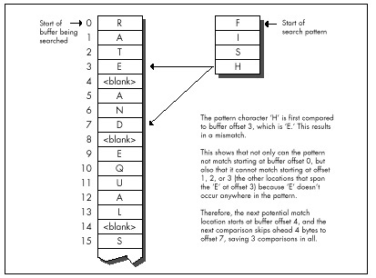
What if the mismatch occurs with a buffer character that does occur in the pattern? Then we can’t skip past the mismatch location, but we can skip to whatever location aligns the rightmost occurrence of that character in the pattern with the mismatch location, as shown in Figure 14.3.
Basically, we exercise our right as members of a free society to compare strings in whichever direction we choose, and we choose to do so right to left, rather than the more intuitive left to right. Whenever we find a mismatch, we see what we can learn from the buffer character that failed to match the pattern. Imagine that we move the pattern to the right across the mismatch location until we find a start location that the mismatch does not eliminate as a possible match for the pattern. If the mismatch character doesn’t appear in the pattern, the pattern can move clear past the mismatch location. Otherwise, the pattern moves until a matching pattern byte lies atop the mismatch. That’s all there is to it!
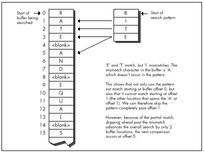
The worst case for this version of Boyer-Moore is that the pattern mismatches on the leftmost character—the last character compared—every time. Again, not very likely, but it is true that this version of Boyer-Moore performs better as there are fewer and shorter partial matches; ideally, the rightmost character would never match until the full match location was reached. Longer patterns, which make for longer skips, help Boyer-Moore, as does a long distance to the match location, which helps diffuse the overhead of building the table of distances to skip ahead on all the possible mismatch values.
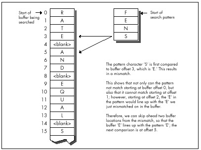
The best case for Boyer-Moore is good indeed: About N/M comparisons are required, where N is the buffer length and M is the pattern length. This reflects the ability of Boyer-Moore to skip ahead by a full pattern length on a complete mismatch.
How fast is Boyer-Moore? Listing 14.1 is a C implementation
of Boyer-Moore searching; Listing 14.2 is a test-bed program that
searches up to the first 32K of a file for a pattern. Table 14.1 (all
times measured with Turbo Profiler on a 20 MHz cached 386, searching a
modified version of the text of this chapter) shows that this
implementation is generally much slower than REPNZ SCASB,
although it does come close when searching for long patterns. Listing
14.1 is designed primarily to make later assembly implemenmore
comprehensible, rather than faster; Sedge’s implementation uses arrays
rather than pointers, is a great deal more compact and very clever, and
may be somewhat faster. Regardless, the far superior performance of
REPNZ SCASB clearly indicates that assembly language is in
order at this point.
| “g;” | “Yogi” | “igoY” | “Adrian” | “Conclusion” | “You don’t know what you know” | |
|---|---|---|---|---|---|---|
| Searching approach | (16K) | (16K) | (16K) | (<1K) | (16K) | (16K) |
| REPNZ SCASB on first char a (Listing 9.1) | 8.2 | 7.5 | 9.7 | 0.4 | 7.4 | 8.1 |
| REPNZ SCASB on least common char (Listing 9.2) | 7.6 | 7.5 | 7.5 | 0.5 | 7.5 | 7.5 |
| Boyer-Moore in C (Listing 14.1) | 71.0 | 38.4 | 37.7 | 1.8 | 18.2 | 9.2 |
| Standard Boyer-Moore in ASM (code not shown) | 38.5 | 21.0 | 20.5 | 0.8 | 9.4 | 4.8 |
| Quick handling of first mismatch Boyer-Moore in ASM (Listing 14.3) | 14.1 | 8.9 | 7.7 | 0.4 | 4.0 | 2.0 |
| <=255 pattern length + sentinelBoyer-Moore in ASM (Listing 14.4) | 8.1 | 5.2 | 4.6 | 0.3 | 2.6 | 1.2 |
Search pattern (approximate distance searched before match is shown
in parentheses).
Times are in milliseconds; shorter is better.
The entry “Standard Boyer-Moore in ASM” in Table 14.1 refers to
straight-forward hand optimization of Listing 14.1, code that is not
included in this chapter for the perfectly good reason that it is slower
in most cases than REPNZ SCASB. I say this casually now,
but not so yesterday, when I had all but concluded that Boyer-Moore was
simply inferior on the x86, due to two architectural quirks: the string
instructions and slow branch. I had even coined a neat phrase for it:
Architecture is destiny. Has a nice ring, doesn’t it?
LISTING 14.1 L14-1.C
/* Searches a buffer for a specified pattern. In case of a mismatch,
uses the value of the mismatched byte to skip across as many
potential match locations as possible (partial Boyer-Moore).
Returns start offset of first match searching forward, or NULL if
no match is found.
Tested with Borland C++ in C mode and the small model. */
#include <stdio.h>
unsigned char * FindString(unsigned char * BufferPtr,
unsigned int BufferLength, unsigned char * PatternPtr,
unsigned int PatternLength)
{
unsigned char * WorkingPatternPtr, * WorkingBufferPtr;
unsigned int CompCount, SkipTable[256], Skip, DistanceMatched;
int i;
/* Reject if the buffer is too small */
if (BufferLength < PatternLength) return(NULL);
/* Return an instant match if the pattern is 0-length */
if (PatternLength == 0) return(BufferPtr);
/* Create the table of distances by which to skip ahead on
mismatches for every possible byte value */
/* Initialize all skips to the pattern length; this is the skip
distance for bytes that don't appear in the pattern */
for (i = 0; i < 256; i++) SkipTable[i] = PatternLength;
/*Set the skip values for the bytes that do appear in the pattern
to the distance from the byte location to the end of the
pattern. When there are multiple instances of the same byte,
the rightmost instance's skip value is used. Note that the
rightmost byte of the pattern isn't entered in the skip table;
if we get that value for a mismatch, we know for sure that the
right end of the pattern has already passed the mismatch
location, so this is not a relevant byte for skipping purposes */
for (i = 0; i < (PatternLength - 1); i++)
SkipTable[PatternPtr[i]] = PatternLength - i - 1;
/* Point to rightmost byte of the pattern */
PatternPtr += PatternLength - 1;
/* Point to last (rightmost) byte of the first potential pattern
match location in the buffer */
BufferPtr += PatternLength - 1;
/* Count of number of potential pattern match locations in
buffer */
BufferLength -= PatternLength - 1;
/* Search the buffer */
while (1) {
/* See if we have a match at this buffer location */
WorkingPatternPtr = PatternPtr;
WorkingBufferPtr = BufferPtr;
CompCount = PatternLength;
/* Compare the pattern and the buffer location, searching from
high memory toward low (right to left) */
while (*WorkingPatternPtr— == *WorkingBufferPtr—) {
/* If we've matched the entire pattern, it's a match */
if (-CompCount == 0)
/* Return a pointer to the start of the match location */
return(BufferPtr - PatternLength + 1);
}
/* It's a mismatch; let's see what we can learn from it */
WorkingBufferPtr++; /* point back to the mismatch location */
/* # of bytes that did match */
DistanceMatched = BufferPtr - WorkingBufferPtr;
/*If, based on the mismatch character, we can't even skip ahead
as far as where we started this particular comparison, then
just advance by 1 to the next potential match; otherwise,
skip ahead from the mismatch location by the skip distance
for the mismatch character */
if (SkipTable[*WorkingBufferPtr] <= DistanceMatched)
Skip = 1; /* skip doesn't do any good, advance by 1 */
else
/* Use skip value, accounting for distance covered by the
partial match */
Skip = SkipTable[*WorkingBufferPtr] - DistanceMatched;
/* If skipping ahead would exhaust the buffer, we're done
without a match */
if (Skip >= BufferLength) return(NULL);
/* Skip ahead and perform the next comparison */
BufferLength -= Skip;
BufferPtr += Skip;
}
}LISTING 14.2 L14-2.C
/* Program to exercise buffer-search routines in Listings 14.1 & 14.3.
(Must be modified to put copy of pattern as sentinel at end of the
search buffer in order to be used with Listing 14.4.) */
#include <stdio.h>
#include <string.h>
#include <fcntl.h>
#define DISPLAY_LENGTH 40
#define BUFFER_SIZE 0x8000
extern unsigned char * FindString(unsigned char *, unsigned int,
unsigned char *, unsigned int);
void main(void);
void main() {
unsigned char TempBuffer[DISPLAY_LENGTH+1];
unsigned char Filename[150], Pattern[150], *MatchPtr, *TestBuffer;
int Handle;
unsigned int WorkingLength;
printf("File to search:");
gets(Filename);
printf("Pattern for which to search:");
gets(Pattern);
if ( (Handle = open(Filename, O_RDONLY | O_BINARY)) == -1 ) {
printf("Can't open file: %s\n", Filename); exit(1);
}
/* Get memory in which to buffer the data */
if ( (TestBuffer=(unsigned char *)malloc(BUFFER_SIZE+1)) == NULL) {
printf("Can't get enough memory\n"); exit(1);
}
/* Process a BUFFER_SIZE chunk */
if ( (int)(WorkingLength =
read(Handle, TestBuffer, BUFFER_SIZE)) == -1 ) {
printf("Error reading file %s\n", Filename); exit(1);
}
TestBuffer[WorkingLength] = 0; /* 0-terminate buffer for printf */
/* Search for the pattern and report the results */
if ((MatchPtr = FindString(TestBuffer, WorkingLength, Pattern,
(unsigned int) strlen(Pattern))) == NULL) {
/* Pattern wasn't found */
printf("\"%s\" not found\n", Pattern);
} else {
/* Pattern was found. Zero-terminate TempBuffer; strncpy
won't do it if DISPLAY_LENGTH characters are copied */
TempBuffer[DISPLAY_LENGTH] = 0;
printf("\"%s\" found. Next %d characters at match:\n\"%s\"\n",
Pattern, DISPLAY_LENGTH,
strncpy(TempBuffer, MatchPtr, DISPLAY_LENGTH));
}
exit(0);
}Well, architecture carries a lot of weight, but it sure as heck isn’t
destiny. I had simply fallen into the trap of figuring that the
algorithm was so clever that I didn’t have to do any thinking myself.
The path leading to REPNZ SCASB from the original
brute-force approach of REPZ CMPSB at every location had
been based on my observation that the first character comparison at each
buffer location usually fails. Why not apply the same concept to
Boyer-Moore? Listing 14.3 is just like the standard
implementation—except that it’s optimized to handle a first-comparison
mismatch as quickly as possible in the loop at
QuickSearchLoop, much as REPNZ SCASB optimizes
first-comparison mismatches for the brute-force approach. The results in
Table 14.1 speak for themselves; Listing 14.3 is more than twice as fast
as what I assure you was already a nice, tight assembly implementation
(and unrolling QuickSearchLoop could boost performance by
up to 10 percent more). Listing 14.3 is also four times faster
than REPNZ SCASB in one case.
LISTING 14.3 L14-3.ASM
; Searches a buffer for a specified pattern. In case of a mismatch,
; uses the value of the mismatched byte to skip across as many
; potential match locations as possible (partial Boyer-Moore).
; Returns start offset of first match searching forward, or NULL if
; no match is found.
; Tested with TASM.
; C near-callable as:
; unsigned char * FindString(unsigned char * BufferPtr,
; unsigned int BufferLength, unsigned char * PatternPtr,
; unsigned int PatternLength);
parms struc
dw 2 dup(?) ;pushed BP & return address
BufferPtr dw ? ;pointer to buffer to be searched
BufferLength dw ? ;# of bytes in buffer to be searched
PatternPtr dw ? ;pointer to pattern for which to search
PatternLength dw ? ;length of pattern for which to search
parms ends
.model small
.code
public _FindString
_FindString proc near
cld
push bp ;preserve caller's stack frame
mov bp,sp ;point to our stack frame
push si ;preserve caller's register variables
push di
sub sp,256*2 ;allocate space for SkipTable
; Create the table of distances by which to skip ahead on mismatches
; for every possible byte value. First, initialize all skips to the
; pattern length; this is the skip distance for bytes that don't
; appear in the pattern.
mov ax,[bp+PatternLength]
and ax,ax ;return an instant match if the pattern is
jz InstantMatch ;0-length
mov di,ds
mov es,di ;ES=DS=SS
mov di,sp ;point to SkipBuffer
mov cx,256
rep stosw
dec ax ;from now on, we only need
mov [bp+PatternLength],ax ; PatternLength - 1
; Point to last (rightmost) byte of first potential pattern match
; location in buffer.
add [bp+BufferPtr],ax
; Reject if buffer is too small, and set the count of the number of
; potential pattern match locations in the buffer.
sub [bp+BufferLength],ax
jbe NoMatch
; Set the skip values for the bytes that do appear in the pattern to
; the distance from the byte location to the end of the pattern.
; When there are multiple instances of the same byte, the rightmost
; instance's skip value is used. Note that the rightmost byte of the
; pattern isn't entered in the skip table; if we get that value for
; a mismatch, we know for sure that the right end of the pattern has
; already passed the mismatch location, so this is not a relevant byte
; for skipping purposes.
mov si,[bp+PatternPtr] ;point to start of pattern
and ax,ax ;are there any skips to set?
jz SetSkipDone ;no
mov di,sp ;point to SkipBuffer
SetSkipLoop:
sub bx,bx ;prepare for word addressing off byte value
mov bl,[si] ;get the next pattern byte
inc si ;advance the pattern pointer
shl bx,1 ;prepare for word lookup
mov [di+bx],ax ;set the skip value when this byte value is
; the mismatch value in the buffer
dec ax
jnz SetSkipLoop
SetSkipDone:
mov dl,[si] ;DL=rightmost pattern byte from now on
dec si ;point to next-to-rightmost byte of pattern
mov [bp+PatternPtr],si ; from now on
; Search the buffer.
std ;for backward REPZ CMPSB
mov di,[bp+BufferPtr] ;point to first search location
mov cx,[bp+BufferLength] ;# of match locations to check
SearchLoop:
mov si,sp ;point SI to SkipTable
; Skip through until there's a match for the rightmost pattern byte.
QuickSearchLoop:
mov bl,[di] ;rightmost buffer byte at this location
cmp dl,bl ;does it match the rightmost pattern byte?
jz FullCompare ;yes, so keep going
sub bh,bh ;convert to a word
add bx,bx ;prepare for look-up in SkipTable
mov ax,[si+bx] ;get skip value from skip table for this
; mismatch value
add di,ax ;BufferPtr += Skip;
sub cx,ax ;BufferLength -= Skip;
ja QuickSearchLoop ;continue if any buffer left
jmp short NoMatch
; Return a pointer to the start of the buffer (for 0-length pattern).
align 2
InstantMatch:
mov ax,[bp+BufferPtr]
jmp short Done
; Compare the pattern and the buffer location, searching from high
; memory toward low (right to left).
align 2
FullCompare:
mov [bp+BufferPtr],di ;save the current state of
mov [bp+BufferLength],cx ; the search
mov cx,[bp+PatternLength] ;# of bytes yet to compare
jcxz Match ;done if only one character
mov si,[bp+PatternPtr] ;point to next-to-rightmost bytes
dec di ; of buffer location and pattern
repz cmpsb ;compare the rest of the pattern
jz Match ;that's it; we've found a match
; It's a mismatch; let's see what we can learn from it.
inc di ;compensate for 1-byte overrun of REPZ CMPSB;
; point to mismatch location in buffer
; # of bytes that did match.
mov si,[bp+BufferPtr]
sub si,di
; If, based on the mismatch character, we can't even skip ahead as far
; as where we started this particular comparison, then just advance by
; 1 to the next potential match; otherwise, skip ahead from this
; comparison location by the skip distance for the mismatch character,
; less the distance covered by the partial match.
sub bx,bx ;prepare for word addressing off byte value
mov bl,[di] ;get the value of the mismatch byte in buffer
add bx,bx ;prepare for word look-up
add bx,sp ;SP points to SkipTable
mov cx,[bx] ;get the skip value for this mismatch
mov ax,1 ;assume we'll just advance to the next
; potential match location
sub cx,si ;is the skip far enough to be worth taking?
jna MoveAhead ;no, go with the default advance of 1
mov ax,cx ;yes; this is the distance to skip ahead from
; the last potential match location checked
MoveAhead:
; Skip ahead and perform the next comparison, if there's any buffer
; left to check.
mov di,[bp+BufferPtr]
add di,ax ;BufferPtr += Skip;
mov cx,[bp+BufferLength]
sub cx,ax ;BufferLength -= Skip;
ja SearchLoop ;continue if any buffer left
; Return a NULL pointer for no match.
align 2
NoMatch:
sub ax,ax
jmp short Done
; Return start of match in buffer (BufferPtr - (PatternLength - 1)).
align 2
Match:
mov ax,[bp+BufferPtr]
sub ax,[bp+PatternLength]
Done:
cld ;restore default direction flag
add sp,256*2 ;deallocate space for SkipTable
pop di ;restore caller's register variables
pop si
pop bp ;restore caller's stack frame
ret
_FindString endp
endTable 14.1 represents a limited and decidedly unscientific comparison
of searching techniques. Nonetheless, the overall trend is clear: For
all but the shortest patterns, well-implemented Boyer-Moore is generally
as good as or better than—sometimes much better
than—brute-force searching. (For short patterns, you might want to use
REPNZ SCASB, thereby getting the best of both worlds.)
Know your data and use your smarts. Don’t stop thinking just because you’re implementing a big-name algorithm; you know more than it does.
We can do substantially better yet than Listing 14.3 if we’re willing
to accept tighter limits on the data. Limiting the length of the
searched-for pattern to a maximum of 255 bytes allows us to use the
XLAT instruction and generally tighten the critical loop.
(Be aware, however, that XLAT is a relatively expensive
instruction on the 486 and Pentium.) Putting a copy of the searched-for
string at the end of the search buffer as a sentinel, so that the search
never fails, frees us from counting down the buffer length, and makes it
easy to unroll the critical loop. Listing 14.4, which implements these
optimizations, is about 60 percent faster than Listing 14.3.
LISTING 14.4 L14-4.ASM
; Searches a buffer for a specified pattern. In case of a mismatch,
; uses the value of the mismatched byte to skip across as many
; potential match locations as possible (partial Boyer-Moore).
; Returns start offset of first match searching forward, or NULL if
; no match is found.
; Requires that the pattern be no longer than 255 bytes, and that
; there be a match for the pattern somewhere in the buffer (ie., a
; copy of the pattern should be placed as a sentinel at the end of
; the buffer if the pattern isn't already known to be in the buffer).
; Tested with TASM.
; C near-callable as:
; unsigned char * FindString(unsigned char * BufferPtr,
; unsigned int BufferLength, unsigned char * PatternPtr,
; unsigned int PatternLength);
parms struc
dw 2 dup(?) ;pushed BP & return address
BufferPtr dw ? ;pointer to buffer to be searched
BufferLength dw ? ;# of bytes in buffer to be searched
; (not used, actually)
PatternPtr dw ? ;pointer to pattern for which to search
; (pattern *MUST* exist in the buffer)
PatternLength dw ? ;length of pattern for which to search (must
; be <= 255)
parms ends
.model small
.code
public _FindString
_FindString proc near
cld
push bp ;preserve caller's stack frame
mov bp,sp ;point to our stack frame
push si ;preserve caller's register variables
push di
sub sp,256 ;allocate space for SkipTable
; Create the table of distances by which to skip ahead on mismatches
; for every possible byte value. First, initialize all skips to the
; pattern length; this is the skip distance for bytes that don't
; appear in the pattern.
mov di,ds
mov es,di ;ES=DS=SS
mov di,sp ;point to SkipBuffer
mov al,byte ptr [bp+PatternLength]
and al,al ;return an instant match if the pattern is
jz InstantMatch ; 0-length
mov ah,al
mov cx,256/2
rep stosw
mov ax,[bp+PatternLength]
dec ax ;from now on, we only need
mov [bp+PatternLength],ax ; PatternLength - 1
; Point to rightmost byte of first potential pattern match location
; in buffer.
add [bp+BufferPtr],ax
; Set the skip values for the bytes that do appear in the pattern to
; the distance from the byte location to the end of the pattern.
mov si,[bp+PatternPtr] ;point to start of pattern
and ax,ax ;are there any skips to set?
jz SetSkipDone ;no
mov di,sp ;point to SkipBuffer
sub bx,bx ;prepare for word addressing off byte value
SetSkipLoop:
mov bl,[si] ;get the next pattern byte
inc si ;advance the pattern pointer
mov [di+bx],al ;set the skip value when this byte value is
;the mismatch value in the buffer
dec ax
jnz SetSkipLoop
SetSkipDone:
mov dl,[si] ;DL=rightmost pattern byte from now on
dec si ;point to next-to-rightmost byte of pattern
mov [bp+PatternPtr],si ; from now on
; Search the buffer.
std ;for backward REPZ CMPSB
mov di,[bp+BufferPtr] ;point to the first search location
mov bx,sp ;point to SkipTable for XLAT
SearchLoop:
sub ah,ah ;used to convert AL to a word
; Skip through until there's a match for the first pattern byte.
QuickSearchLoop:
; See if we have a match at the first buffer location.
REPT 8 ;unroll loop 8 times to reduce branching
mov al,[di] ;next buffer byte
cmp dl,al ;does it match the pattern?
jz FullCompare ;yes, so keep going
xlat ;no, look up the skip value for this mismatch
add di,ax ;BufferPtr += Skip;
ENDM
jmp QuickSearchLoop
; Return a pointer to the start of the buffer (for 0-length pattern).
align 2
InstantMatch:
mov ax,[bp+BufferPtr]
jmp short Done
; Compare the pattern and the buffer location, searching from high
; memory toward low (right to left).
align 2
FullCompare:
mov [bp+BufferPtr],di ;save the current buffer location
mov cx,[bp+PatternLength] ;# of bytes yet to compare
jcxz Match ;done if there was only one character
dec di ;point to next destination byte to compare (SI
; points to next-to-rightmost source byte)
repz cmpsb ;compare the rest of the pattern
jz Match ;that's it; we've found a match
; It's a mismatch; let's see what we can learn from it.
inc di ;compensate for 1-byte overrun of REPZ CMPSB;
; point to mismatch location in buffer
; # of bytes that did match.
mov si,[bp+BufferPtr]
sub si,di
; If, based on the mismatch character, we can't even skip ahead as far
; as where we started this particular comparison, then just advance by
; 1 to the next potential match; otherwise, skip ahead from this
; comparison location by the skip distance for the mismatch character,
; less the distance covered by the partial match.
mov al,[di] ;get the value of the mismatch byte in buffer
xlat ;get the skip value for this mismatch
mov cx,1 ;assume we'll just advance to the next
; potential match location
sub ax,si ;is the skip far enough to be worth taking?
jna MoveAhead ;no, go with the default advance of 1
mov cx,ax ;yes, this is the distance to skip ahead from
;the last potential match location checked
MoveAhead:
; Skip ahead and perform the next comparison.
mov di,[bp+BufferPtr]
add di,cx ;BufferPtr += Skip;
mov si,[bp+PatternPtr] ;point to the next-to-rightmost
; pattern byte
jmp SearchLoop
; Return start of match in buffer (BufferPtr - (PatternLength - 1)).
align 2
Match:
mov ax,[bp+BufferPtr]
sub ax,[bp+PatternLength]
Done:
cld ;restore default direction flag
add sp,256 ;deallocate space for SkipTable
pop di ;restore caller's register variables
pop si
pop bp ;restore caller's stack frame
ret
_FindString endp
endNote that Table 14.1 includes the time required to build the skip
table each time FindString is called. This time could be
eliminated for all but the first search when repeatedly searching for a
particular pattern, by building the skip table externally and passing a
pointer to it as a parameter.
Here we’ve turned up our nose at a repeated string instruction, we’ve gone against the grain by comparing backward, and yet we’ve speeded up our code quite a bit. All this without any restrictions or special requirements (excluding Listing 14.4)—and without any new information. Everything we needed was sitting there all along; we just needed to think to look at it.
As Yogi Berra might put it, “You don’t know what you know until you know it.”
After 21 years, this story still makes me wince. Oh, the humiliations I suffer for your enlightenment….
It wasn’t until ninth grade that I had my first real girlfriend. Okay, maybe I was a little socially challenged as a kid, but hey, show me a good programmer who wasn’t; it goes with the territory. Her name was Jeannie Schweigert, and she was about four feet tall, pretty enough, and female—and willing to go out with me, which made her approximately as attractive as Cheryl Tiegs, in my book.
Jeannie and I hung out together at school, and went to basketball games and a few parties together, but somehow the two of us were never alone. Being 14, neither of us could drive, so her parents tended to end up chauffeuring us. That’s a next-to-ideal arrangement, I now realize, having a daughter of my own (ideal being exiling all males between the ages of 12 and 18 to Tasmania), but at the time, it drove me nuts. You see…ahem…I had never actually kissed Jeannie—or anyone, for that matter, unless you count maiden aunts and the like—and I was dying to. At the same time, I was terrified at the prospect. What if I turned out to be no good at it? It wasn’t as if I could go to Kisses ‘R’ Us and take lessons.
My long-awaited opportunity finally came after a basketball game. For a change, my father was driving, and when we dropped her off at her house, I walked her to the door. This was my big chance. I put my arms around her, bent over with my eyes closed, just like in the movies….
And whacked her on the top of the head with my chin. (As I said, she was only about four feet tall.) And I do mean whacked. Jeannie burst into hysterical laughter, tried to calm herself down, said goodnight, and went inside, still giggling. No kiss.
I was a pretty mature teenager, so this was only slightly more traumatic than leading the Tournament of Roses parade in my underwear. On the next try, though, I did manage to get the hang of this kissing business, and eventually even went on to have a child. (Not with Jeannie, I might add; the mind boggles at the mess I could have made of that with her.) As it turns out, none of that stuff is particularly difficult; in fact, it’s kind of enjoyable, wink, wink, say no more.
When you’re dealing with something new, a little knowledge goes a long way. When it comes to kissing, we have to fumble along the learning curve on our own, but there are all sorts of resources to help speed up the learning process when it comes to programming. The basic mechanisms of programming—searches, sorts, parsing, and the like—are well-understood and superbly well-documented. Treat yourself to a book like Algorithms, by Robert Sedgewick (Addison Wesley), or Knuth’s The Art of Computer Programming series (also from Addison Wesley; and where was Knuth with The Art of Kissing when I needed him?), or practically anything by Jon Bentley, and when you tackle a new area, give yourself a head start. There’s still plenty of room for inventiveness and creativity on your part, but why not apply that energy on top of the knowledge that’s already been gained, instead of reinventing the wheel? I know, reinventing the wheel is just the kind of challenge programmers love—but can you really afford to waste the time? And do you honestly think that you’re so smart that you can out-think Knuth, who’s spent a lifetime at this stuff and happens to be a genius?
Maybe you can—but I sure can’t. For example, consider the evolution of my understanding of linked lists.
Linked lists are data structures composed of discrete elements, or nodes, joined together with links. In C, the links are typically pointers. Like all data structures, linked lists have their strengths and their weaknesses. Primary among the strengths are: simplicity; speedy sequential processing; ease and speed of insertion and deletion; the ability to mix nodes of various sizes and types; and the ability to handle variable amounts of data, especially when the total amount of data changes dynamically or is not always known beforehand. Weaknesses include: greater memory requirements than arrays (the pointers take up space); slow non-sequential processing, including finding arbitrary nodes; and an inability to backtrack, unless doubly-linked lists are used. Unfortunately, doubly linked lists need more memory, as well as processing time to maintain the backward links.
Linked lists aren’t very good for most types of sorts. Insertion and bubble sorts work fine, but more sophisticated sorts depend on efficient random access, which linked lists don’t provide. Likewise, you wouldn’t want to do a binary search on a linked list. On the other hand, linked lists are ideal for applications where nothing more than sequential access is needed to data that’s always sorted or nearly sorted.
Consider a polygon fill function, for example. Polygon edges are added to the active edge list in x-sorted order, and tend to stay pretty nearly x-sorted, so sophisticated sorting is never needed. Edges are read out of the list in sorted order, just the way linked lists work best. Moreover, linked lists are straightforward to implement, and with linked lists an arbitrary number of polygon edges can be handled with no fuss. All in all, linked lists work beautifully for filling polygons. For an example of the use of linked lists in polygon filling, see my column in the May 1991 issue of Dr. Dobb’s Journal. Be warned, though, that none of the following optimizations are to be found in that column.
You see, that column was my first heavy-duty use of linked lists, and they seemed so simple that I didn’t even open Sedgewick or Knuth. For hashing or Boyer-Moore searching, sure, I’d have done my homework first; but linked lists seemed too obvious to bother. I was much more concerned with the polygon-related aspects of the implementation, and, in truth, I gave the linked list implementation not a moment’s thought before I began coding. Heck, I had handled much tougher programming problems in the past; surely it would be faster to figure this one out on my own than to look it up.
Not!
The basic concept of a linked list—the one I came up with for that
DDJ column—is straightforward, as shown in Figure 15.1. A head
pointer points to the first node in the list, which points to the next
node, which points to the next, and so on, until the last node in the
list is reached (typically denoted by a NULL next-node
pointer). Conceptually, nothing could be simpler. From an implementation
perspective, however, there are serious flaws with this model.
The fundamental problem is that the model of Figure 15.1
unnecessarily complicates link manipulation. In order to delete a node,
for example, you must change the preceding node’s NextNode
pointer to point to the following node, as shown in Listing 15.1.
(Listing 15.2 is the header file LLIST.H, which is
#included by all the linked list listings in this chapter.)
Easy enough—unless the preceding node happens to be the head pointer,
which doesn’t have a NextNode field, because it’s
not a node, so Listing 15.1 won’t work. Cumbersome special code and
extra information (a pointer to the head of the list) are required to
handle the head-pointer case, as shown in Listing 15.3. (I’ll grant you
that if you make the next-node pointer the first field in the
LinkNode structure, at offset 0, then you could
successfully point to the head pointer and pretend it was a
LinkNode structure—but that’s an ugly and potentially
dangerous trick, and we’ll see a better approach next.)
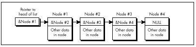
LISTING 15.1 L15-1.C
/* Deletes the node in a linked list that follows the indicated node.
Assumes list is headed by a dummy node, so no special testing for
the head-of-list pointer is required. Returns the same pointer
that was passed in. */
#include "llist.h"
struct LinkNode *DeleteNodeAfter(struct LinkNode *NodeToDeleteAfter)
{
NodeToDeleteAfter->NextNode =
NodeToDeleteAfter->NextNode->NextNode;
return(NodeToDeleteAfter);
}LISTING 15.2 LLIST.H
/* Linked list header file. */
#define MAX_TEXT_LENGTH 100 /* longest allowed Text field */
#define SENTINEL 32767 /* largest possible Value field */
struct LinkNode {
struct LinkNode *NextNode;
int Value;
char Text[MAX_TEXT_LENGTH+1];
/* Any number of additional data fields may by present */
};
struct LinkNode *DeleteNodeAfter(struct LinkNode *);
struct LinkNode *FindNodeBeforeValue(struct LinkNode *, int);
struct LinkNode *InitLinkedList(void);
struct LinkNode *InsertNodeSorted(struct LinkNode *,
struct LinkNode *);LISTING 15.3 L15-3.C
/* Deletes the node in the specified linked list that follows the
indicated node. List is headed by a head-of-list pointer; if the
pointer to the node to delete after points to the head-of-list
pointer, special handling is performed. */
#include "llist.h"
struct LinkNode *DeleteNodeAfter(struct LinkNode **HeadOfListPtr,
struct LinkNode *NodeToDeleteAfter)
{
/* Handle specially if the node to delete after is actually the
head of the list (delete the first element in the list) */
if (NodeToDeleteAfter == (struct LinkNode *)HeadOfListPtr) {
*HeadOfListPtr = (*HeadOfListPtr)->NextNode;
} else {
NodeToDeleteAfter->NextNode =
NodeToDeleteAfter->NextNode->NextNode;
}
return(NodeToDeleteAfter);
}However, it is true that if you’re going to store a variety of types
of structures in your linked lists, you should start each node with the
LinkNode field. That way, the link pointer is in the same
place in every structure, and the same linked list code can
handle all of the structure types by casting them to the base link-node
structure type. This is a less than elegant approach, but it works. C++
can handle data mixing more cleanly than C, via derivation from a base
link-node class.
Note that Listings 15.1 and 15.3 have to specify the linked-list
delete operation as “delete the next node,” rather than “delete
this node,” because in order to relink it’s necessary to access the
NextNode field of the node preceding the node to be
deleted, and it’s impossible to backtrack in a singly linked list. For
this reason, singly-linked list operations tend to work with the
structure preceding the one of interest—and that makes the problem of
having to special-case the head pointer all the more acute.
Similar problems with the head pointer crop up when you’re inserting nodes, and in fact in all link manipulation code. It’s easy to end up working with either pointers to pointers or lots of special-case code, and while those approaches work, they’re inelegant and inefficient.
A far better approach is to use a dummy node for the head of the list, as shown in Figure 15.2. I invented this one for myself the next time I encountered linked lists, while designing a seed fill function for MetaWindows, back during my tenure at Metagraphics Corp. But I could have learned it by spending five minutes with Sedgewick’s book.
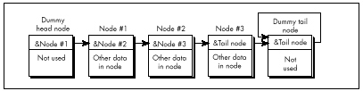
The next-node pointer of the head node, which points to the first real node, is the only part of the head node that’s actually used. This way the same code works on the head node as on the rest of the list, so there are no special cases.
Likewise, there should be a separate node for the tail of the list,
so that every node that contains real data is guaranteed to have a node
on either side of it. In this scheme, an empty list contains two nodes,
as shown in Figure 15.3. Although it is not necessary, the tail node may
point to itself as its own next node, rather than contain a
NULL pointer. This way, a deletion operation on an empty
list will have no effect—quite unlike the same operation performed on a
list terminated with a NULL pointer. The tail node of a
list terminated like this can be detected because it will be the only
node for which the next-node pointer equals the current-node
pointer.
Figure 15.3 is a giant step in the right direction, but we can still make a few refinements. The inner loop of any code that scans through such a list has to perform a special test on each node to determine whether the tail has been reached. So, for example, code to find the first node containing a value field greater than or equal to a certain value has to perform two tests in the inner loop, as shown in Listing 15.4.
LISTING 15.4 L15-4.C
/* Finds the first node in a linked list with a value field greater
than or equal to a key value, and returns a pointer to the node
preceding that node (to facilitate insertion and deletion), or a
NULL pointer if no such value was found. Assumes the list is
terminated with a tail node pointing to itself as the next node. */
#include <stdio.h>
#include "llist.h"
struct LinkNode *FindNodeBeforeValueNotLess(
struct LinkNode *HeadOfListNode, int SearchValue)
{
struct LinkNode *NodePtr = HeadOfListNode;
while ( (NodePtr->NextNode->NextNode != NodePtr->NextNode) &&
(NodePtr->NextNode->Value < SearchValue) )
NodePtr = NodePtr->NextNode;
if (NodePtr->NextNode->NextNode == NodePtr->NextNode)
return(NULL); /* we found the sentinel; failed search */
else
return(NodePtr); /* success; return pointer to node preceding
node that was >= */
}Suppose, however, that we make the tail node a sentinel by giving it a value that is guaranteed to terminate the search, as shown in Figure 15.4. The list in Figure 15.4 has a sentinel with a value field of 32,767; since we’re working with integers, that’s the highest possible search value, and is guaranteed to satisfy any search that comes down the pike. The success or failure of the search can then be determined outside the loop, if necessary, by checking for the tail node’s special pointer—but the inside of the loop is streamlined to just one test, as shown in Listing 15.5. Not all linked lists lend themselves to sentinels, but the performance benefits are considerable for those that do.
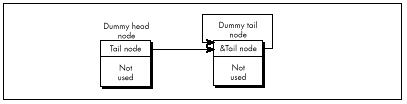
LISTING 15.5 L15-5.C
/* Finds the first node in a value-sorted linked list that
has a Value field greater than or equal to a key value, and
returns a pointer to the node preceding that node (to facilitate
insertion and deletion), or a NULL pointer if no such value was
found. Assumes the list is terminated with a sentinel tail node
containing the largest possible Value field setting and pointing
to itself as the next node. */
#include <stdio.h>
#include "llist.h"
struct LinkNode *FindNodeBeforeValueNotLess(
struct LinkNode *HeadOfListNode, int SearchValue)
{
struct LinkNode *NodePtr = HeadOfListNode;
while (NodePtr->NextNode->Value < SearchValue)
NodePtr = NodePtr->NextNode;
if (NodePtr->NextNode->NextNode == NodePtr->NextNode)
return(NULL); /* we found the sentinel; failed search */
else
return(NodePtr); /* success; return pointer to node preceding
node that was >= */
}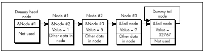
One minor but elegant refinement yet remains: Use a single node as both the head and the tail of the list. We can do this by connecting the last node back to the first through the head/tail node in a circular fashion, as shown in Figure 15.5. This head/tail node can also, of course, be a sentinel; when it’s necessary to check for the end of the list explicitly, that can be done by comparing the current node pointer to the head pointer. If they’re equal, you’re at the head/tail node.
Why am I so fond of this circular list architecture? For one thing, it saves a node, and most of my linked list programming has been done in severely memory-constrained environments. Mostly, though, it’s just so neat; with this setup, there’s not a single node or inner-loop instruction wasted. Perfect economy of programming, if you ask me.
I must admit that I racked my brains for quite a while to come up with the circular list, simple as it may seem. Shortly after coming up with it, I happened to look in Sedgewick’s book, only to find my nifty optimization described plain as day; and a little while after that, I came across a thread in the algorithms/computer.sci topic on BIX that described it in considerable detail. Folks, the information is out there. Look it up before turning on your optimizer afterburners!
Listings 15.1 and 15.6 together form a suite of C functions for
maintaining a circular linked list sorted by ascending value. (Listing
15.5 requires modification before it will work with circular lists.)
Listing 15.7 is an assembly language version of
InsertNodeSorted(); note the tremendous efficiency of the
scanning loop in InsertNodeSorted()-four instructions per
node!—thanks to the dummy head/tail/sentinel node. Listing 15.8 is a
simple application that illustrates the use of the linked-list functions
in Listings 15.1 and 15.6.
Contrast Figure 15.5 with Figure 15.1, and Listings 15.1, 15.5, 15.6, and 15.7 with Listings 15.3 and 15.4. Yes, linked lists are simple, but not so simple that a little knowledge doesn’t make a substantial difference. Make it a habit to read Knuth or Sedgewick or the like before you write a single line of code.
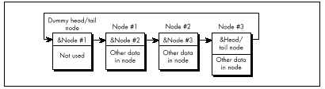
LISTING 15.6 L15-6.C
/* Suite of functions for maintaining a linked list sorted by
ascending order of the Value field. The list is circular; that
is,it has a dummy node as both the head and the tail of the list.
The dummy node is a sentinel, containing the largest possible
Value field setting. Tested with Borland C++ in C mode. */
#include <stdlib.h>
#include <stdio.h>
#include <string.h>
#include "llist.h"
/* Initializes an empty linked list of LinkNode structures,
consisting of a single head/tail/sentinel node, and returns a
pointer to the list. Returns NULL for failure. */
struct LinkNode *InitLinkedList()
{
struct LinkNode *Sentinel;
if ((Sentinel = malloc(sizeof(struct LinkNode))) == NULL)
return(NULL);
Sentinel->NextNode = Sentinel;
Sentinel->Value = SENTINEL;
strcpy(Sentinel->Text, "*** sentinel ***");
return(Sentinel);
}
/* Finds the first node in a value-sorted linked list with a value
field equal to a key value, and returns a pointer to the node
preceding that node (to facilitate insertion and deletion), or a
NULL pointer if no value was found. Assumes list is terminated
with a sentinel node containing the largest possible value. */
struct LinkNode *FindNodeBeforeValue(struct LinkNode *HeadOfListNode,
int SearchValue)
{
struct LinkNode *NodePtr = HeadOfListNode;
while (NodePtr->NextNode->Value < SearchValue)
NodePtr = NodePtr->NextNode;
if (NodePtr->NextNode->Value == SearchValue) {
/* Found the search value; success unless we found the
sentinel (can happen only if SearchValue == SENTINEL) */
if (NodePtr->NextNode == HeadOfListNode) {
return(NULL); /* failure; we found the sentinel */
} else {
return(NodePtr); /* success; return pointer to node
preceding the node that was equal */
}
} else {
return(NULL); /* No match; return failure status */
}
}
/* Inserts the specified node into a value-sorted linked list, such
that value-sorting is maintained. Returns a pointer to the node
after which the new node is inserted. */
struct LinkNode *InsertNodeSorted(struct LinkNode *HeadOfListNode,
struct LinkNode *NodeToInsert)
{
struct LinkNode *NodePtr = HeadOfListNode;
int SearchValue = NodeToInsert->Value;
while (NodePtr->NextNode->Value < SearchValue)
NodePtr = NodePtr->NextNode;
NodeToInsert->NextNode = NodePtr->NextNode;
NodePtr->NextNode = NodeToInsert;
return(NodePtr);
}LISTING 15.7 L15-7.ASM
; C near-callable assembly function for inserting a new node in a
; linked list sorted by ascending order of the Value field. The list
; is circular; that is, it has a dummy node as both the head and the
; tail of the list. The dummy node is a sentinel, containing the
; largest possible Value field setting. Tested with TASM.
MAX_TEXT_LENGTH equ 100 ;longest allowed Text field
SENTINEL equ 32767 ;largest possible Value field
LinkNode struc
NextNode dw ?
Value dw ?
Text db MAX_TEXT_LENGTH+1 dup(?)
;*** Any number of additional data fields may by present ***
LinkNode ends
.model small
.code
; Inserts the specified node into a ascending-value-sorted linked
; list, such that value-sorting is maintained. Returns a pointer to
; the node after which the new node is inserted.
; C near-callable as:
; struct LinkNode *InsertNodeSorted(struct LinkNode *HeadOfListNode,
; struct LinkNode *NodeToInsert)
parms struc
dw 2 dup (?) ;pushed return address & BP
HeadOfListNode dw ? ;pointer to head node of list
NodeToInsert dw ? ;pointer to node to insert
parms ends
public _InsertNodeSorted
_InsertNodeSorted proc near
push bp
mov bp,sp ;point to stack frame
push si ;preserve register vars
push di
mov si,[bp].NodeToInsert ;point to node to insert
mov ax,[si].Value ;search value
mov di,[bp].HeadOfListNode ;point to linked list in
; which to insert
SearchLoop:
mov bx,di ;advance to the next node
mov di,[bx].NextNode ;point to following node
cmp [di].Value,ax ;is the following node's
; value less than the value
; from the node to insert?
jl SearchLoop ;yes, so continue searching
;no, so we have found our
; insert point
mov ax,[bx].NextNode ;link the new node between
mov [si].NextNode,ax ; the current node and the
mov [bx].NextNode,si ; following node
mov ax,bx ;return pointer to node
; after which we inserted
pop di ;restore register vars
pop si
pop bp
ret
_InsertNodeSorted endp
endLISTING 15.8 L15-8.C
/* Sample linked list program. Tested with Borland C++. */
#include <stdlib.h>
#include <stdio.h>
#include <conio.h>
#include <ctype.h>
#include <string.h>
#include "llist.h"
void main()
{ int Done = 0, Char, TempValue;
struct LinkNode *TempPtr, *ListPtr, *TempPtr2;
char TempBuffer[MAX_TEXT_LENGTH+3];
if ((ListPtr = InitLinkedList()) == NULL) {
printf("Out of memory\n");
exit(1);
}
while (!Done) {
printf("\nA=add; D=delete; F=find; L=list all; Q=quit\n>");
Char = toupper(getche());
printf("\n");
switch (Char) {
case 'A': /* add a node */
if ((TempPtr = malloc(sizeof(struct LinkNode))) == NULL)
{
printf("Out of memory\n );
exit(1);
}
printf("Node value: ");
scanf("%d", &TempPtr->Value);
if ((FindNodeBeforeValue(ListPtr,TempPtr->Value))!=NULL)
{ printf("*** value already in list; try again ***\n");
free(TempPtr);
} else {printf("Node text: ");
TempBuffer[0] = MAX_TEXT_LENGTH;
cgets(TempBuffer);
strcpy(TempPtr->Text, &TempBuffer[2]);
InsertNodeSorted(ListPtr, TempPtr);
printf("\n");
}
break;
case 'D': /* delete a node */
printf("Value field of node to delete: ");
scanf("%d", &TempValue);
if ((TempPtr = FindNodeBeforeValue(ListPtr, TempValue))
!= NULL) {
TempPtr2 = TempPtr->NextNode; /* -> node to delete */
DeleteNodeAfter(TempPtr); /* delete it */
free(TempPtr2); /* free its memory */
} else {
printf("*** no such value field in list ***\n")
break;
case 'F': /* find a node */
printf("Value field of node to find: ");
scanf("%d", &TempValue);
if ((TempPtr = FindNodeBeforeValue(ListPtr, TempValue))
!= NULL)
printf("Value: %d\nText: %s\n",
TempPtr->NextNode->Value, TempPtr->NextNode->Text);
else
printf("*** no such value field in list ***\n");
break;
case 'L': /* list all nodes */
TempPtr = ListPtr->NextNode; /* point to first node */
if (TempPtr == ListPtr) { /* empty if at sentinel */
printf("*** List is empty ***\n");
} else {
do {printf("Value: %d\n Text: %s\n", TempPtr->Value,
TempPtr->Text);
TempPtr = TempPtr->NextNode;
} while (TempPtr != ListPtr);
}
break;
case 'Q':
Done = 1;
break;
default:
break;
}
}
}In one of my PC TECHNIQUES “Pushing the Envelope” columns, I
passed along one of David Stafford’s fiendish programming puzzles: Write
a C-callable function to find the greatest or smallest unsigned
int. Not a big deal—except that David had already
done it in 24 bytes, so the challenge was to do it in 24 bytes or
less.
Such routines soon began coming at me from all angles. However (and I
hate to say this because some of my correspondents were very
pleased with the thought that they had bested David), no one has yet met
the challenge—because most of you folks missed a key point. When David
said, “Write a function to find the greatest or smallest unsigned
int in 24 bytes or less,” he meant, “Write the
hi and the lo functions in 24 bytes or
less—combined.”
Oh.
Yes, a 24-byte hi/lo function is possible, anatomically improbable as it might seem. Which I guess goes to show that when one of David’s puzzles seems less than impossible, odds are you’re missing something. Listing 15.9 is David’s 24-byte solution, from which a lot may be learned if one reads closely enough.
LISTING 15.9 L15-9.ASM
; Find the greatest or smallest unsigned int.
; C callable (small model); 24 bytes.
; By David Stafford.
; unsigned hi( int num, unsigned a[] );
; unsigned lo( int num, unsigned a[] );
public _hi, _lo
_hi: db 0b9h ;mov cx,immediate
_lo: xor cx,cx
pop ax ;get return address
pop dx ;get count
pop bx ;get pointer
push bx ;restore pointer
push dx ;restore count
push ax ;restore return address
save: mov ax,[bx]
top: cmp ax,[bx]
jcxz around
cmc
around: ja save
inc bx
inc bx
dec dx
jnz top
retBefore I end this chapter, let me say that I get a lot of feedback from my readers, and it’s much appreciated. Keep those cards, letters, and email messages coming. And if any of you know Jeannie Schweigert, have her drop me a line and let me know how she’s doing these days….
I remember reading an overview of C++ development tools for Windows in a past issue of PC Week. In the lower left corner was the familiar box listing the 10 leading concerns of corporate buyers when it comes to C++. Boiled down, the list looked like this, in order of descending importance to buyers:
Debugging
Documentation
Windows development tools
High-level Windows support
Class library
Development cycle efficiency
Object-oriented development aids
Programming management aids
Online help
10. Windows development cycle automation
Is something missing here? You bet your maximum gluteus something’s missing—nowhere on that list is there so much as one word about how fast the compiled code runs! I’m not saying that performance is everything, but optimization isn’t even down there at number 10, below online help! Ye gods and little fishes! We are talking here about people who would take a bus from LA to New York instead of a plane because it had a cleaner bathroom; who would choose a painting from a Holiday Inn over a Matisse because it had a fancier frame; who would buy a Yugo instead of—well, hell, anything—because it had a nice owner’s manual and particularly attractive keys. We are talking about people who are focusing on means, and have forgotten about ends. We are talking about people with no programming souls.
What are we to make of this? At the very least, we can safely guess that very few corporate buyers ever enter optimization contests. Most of my readers do, however; in fact, far more than I thought ever would, but that gladdens me to no end. I issued my first optimization challenge in a “Pushing the Envelope” column in PC TECHNIQUES back in 1991, and was deluged by respondents who, one might also gather, do not live by PC Week.
That initial challenge was sparked by a column David Gerrold wrote (also in PC TECHNIQUES ) concerning the matter of counting the number of words in a document; David turned up some pretty interesting optimization issues along the way. David did all his coding in Pascal, pointing out that while an assembly language version would probably be faster, his Pascal utility worked properly and was fast enough for him.
It wasn’t, however, fast enough for me. The logical starting place for speeding up word counting would be David’s original Pascal code, but I’m much more comfortable with C, so Listing 16.1 is a loose approximation of David’s word count program, translated to C. I left out a few details, such as handling comment blocks, partly because I don’t use such blocks myself, and partly so we can focus on optimizing the core word-counting code. As Table 16.1 indicates, Listing 16.1 counts the words in a 104,448-word file in 4.6 seconds. The file was stored on a RAM disk, and Listing 16.1 was compiled with Borland C++ with all optimization enabled. A RAM disk was used partly because it returns consistent times—no seek times, rotational latency, or cache to muddy the waters—and partly to highlight word-counting speed rather than disk access speed.
| Listing | Time to Count Words |
|---|---|
| 16.1 (C) | 4.6 seconds |
| 16.2 & 16.3 (C+ASM) | 2.4 seconds |
| 16.2 & 16.4 (C+ASM w/lookup) | 1.6 seconds |
These are the times taken to search a file containing 104,448 words, timed from a RAM disk on a 20 MHz 386.
LISTING 16.1 L16-1.C
/* Word-counting program. Tested with Borland C++ in C
compilation mode and the small model. */
#include <stdio.h>
#include <fcntl.h>
#include <sys\stat.h>
#include <stdlib.h>
#include <io.h>
#define B UFFER_SIZE 0x8000 /* largest chunk of file worked
with at any one time */
int main(int, char **);
int main(int argc, char **argv) {
int Handle;
unsigned int BlockSize;
long FileSize;
unsigned long WordCount = 0;
char *Buffer, CharFlag = 0, PredCharFlag, *BufferPtr, Ch;
if (argc != 2) {
printf("usage: wc <filename>\n");
exit(1);
}
if ((Buffer = malloc(BUFFER_SIZE)) == NULL) {
printf("Can't allocate adequate memory\n");
exit(1);
}
if ((Handle = open(argv[1], O_RDONLY | O_BINARY)) == -1) {
printf("Can't open file %s\n", argv[1]);
exit(1);
}
if ((FileSize = filelength(Handle)) == -1) {
printf("Error sizing file %s\n", argv[1]);
exit(1);
}
/* Process the file in chunks */
while (FileSize > 0) {
/* Get the next chunk */
FileSize -= (BlockSize = min(FileSize, BUFFER_SIZE));
if (read(Handle, Buffer, BlockSize) == -1) {
printf("Error reading file %s\n", argv[1]);
exit(1);
}
/* Count words in the chunk */
BufferPtr = Buffer;
do {
PredCharFlag = CharFlag;
Ch = *BufferPtr++ & 0x7F; /* strip high bit, which some
word processors set as an
internal flag */
CharFlag = ((Ch >= 'a') && (Ch <= 'z')) ||
((Ch >= 'A') && (Ch <= 'Z')) ||
((Ch >= '0') && (Ch <= '9')) ||
(Ch == '\'');
if ((!CharFlag) && PredCharFlag) {
WordCo u nt++;
}
} while (—BlockSize);
}
/* Catch the last word, if any */
if (CharFlag) {
WordCount++;
}
printf("\nTotal words in file: %lu\n", WordCount);
return(0);
}Listing 16.2 is Listing 16.1 modified to call a function that scans each block for words, and Listing 16.3 contains an assembly function that counts words. Used together, Listings 16.2 and 16.3 are just about twice as fast as Listing 16.1, a good return for a little assembly language. Listing 16.3 is a pretty straightforward translation from C to assembly; the new code makes good use of registers, but the key code—determining whether each byte is a character or not—is still done with the same multiple-sequential-tests approach used by the code that the C compiler generates.
LISTING 16.2 L16-2.C
/* Word-counting program incorporating assembly language. Tested
with Borland C++ in C compilation mode & the small model. */
#include <stdio.h>
#include <fcntl.h>
#include <sys\stat.h>
#include <stdlib.h>
#include <io.h>
#define BUFFER_SIZE 0x8000 /* largest chunk of file worked
with at any one time */
int main(int, char **);
void ScanBuffer(char *, unsigned int, char *, unsigned long *);
int main(int argc, char **argv) {
int Handle;
unsigned int BlockSize;
long FileSize;
unsigned long WordCount = 0;
char *Buffer, CharFlag = 0;
if (argc != 2) {
printf("usage: wc <filename>\n");
exit(1);
}
if ((Buffer = malloc(BUFFER_SIZE)) == NULL) {
printf("Can't allocate adequate memory\n");
exit(1);
}
if ((Handle = open(argv[1], O_RDONLY | O_BINARY)) == -1) {
printf("Can't open file %s\n", argv[1]);
exit(1);
}
if ((FileSize = filelength(Handle)) == -1) {
printf("Error sizing file %s\n", argv[1]);
exit(1);
}
CharFlag = 0;
while (FileSize > 0) {
FileSize -= (BlockSize = min(FileSize, BUFFER_SIZE));
if (read(Handle, Buffer, BlockSize) == -1) {
printf("Error reading file %s\n", argv[1]);
exit(1);
}
ScanBuffer(Buffer, BlockSize, &CharFlag, &WordCount);
}
/* Catch the last word, if any */
if (CharFlag) {
WordCount++;
}
printf("\nTotal words in file: %lu\n", WordCount);
return(0);
}LISTING 16.3 L16-3.ASM
; Assembly subroutine for Listing 16.2. Scans through Buffer, of
; length BufferLength, counting words and updating WordCount as
; appropriate. BufferLength must be > 0. *CharFlag and *WordCount
; should equal 0 on the first call. Tested with TASM.
; C near-callable as:
; void ScanBuffer(char *Buffer, unsigned int BufferLength,
; char *CharFlag, unsigned long *WordCount);
parms struc
dw 2 dup(?) ;pushed return address & BP
Buffer dw ? ;buffer to scan
BufferLength dw ? ;length of buffer to scan
CharFlag dw ? ;pointer to flag for state of last
; char processed on entry (0 on
; initial call). Updated on exit
WordCount dw ? ;pointer to 32-bit count of words
; found (0 on initial call)
parms ends
.model small
.code
public _ScanBuffer
_ScanBuffer proc near
push bp ;preserve caller's stack frame
mov bp,sp ;set up local stack frame
push si ;preserve caller's register vars
push di
mov si,[bp+Buffer] ;point to buffer to scan
mov bx,[bp+WordCount]
mov cx,[bx] ;get current 32-bit word count
mov dx,[bx+2]
mov bx,[bp+CharFlag]
mov bl,[bx] ;get current CharFlag
mov di,[bp+BufferLength];get # of bytes to scan
ScanLoop:
mov bh,bl ;PredCharFlag = CharFlag;
lodsb ;Ch = *BufferPtr++ & 0x7F;
and al,7fh ;strip high bit for word processors
; that set it as an internal flag
mov bl,1 ;assume this is a char; CharFlag = 1;
cmp al,'a' ;it is a char if between a and z
jb CheckAZ
cmp al,'z'
jna IsAChar
CheckAZ:
cmp al,'A' ;it is a char if between A and Z
jb Check09
cmp al,'Z'
jna IsAChar
Check09:
cmp al,'0' ;it is a char if between 0 and 9
jb CheckApostrophe
cmp al,'9'
jna IsAChar
CheckApostrophe:
cmp al,27h ;it is a char if an apostrophe
jz IsAChar
sub bl,bl ;not a char; CharFlag = 0;
and bh,bh
jz ScanLoopBottom ;if ((!CharFlag) && PredCharFlag) {
add cx,1 ; (WordCount)++;
adc dx,0 ;}
IsAChar:
ScanLoopBottom:
dec di ;} while (—BufferLength);
jnz ScanLoop
mov si,[bp+CharFlag]
mov [si],bl ;set new CharFlag
mov bx,[bp+WordCount]
mov [bx],cx ;set new word count
mov [bx+2],dx
pop di ;restore caller's register vars
pop si
pop bp ;restore caller's stack frame
ret
_ScanBuffer endp
endWe could rearrange the tests in light of the nature of the data being scanned; for example, we could perform the tests more efficiently by taking advantage of the knowledge that if a byte is less than ‘0,’ it’s either an apostrophe or not a character at all. However, that sort of fine-tuning is typically good for speedups of only 10 to 20 percent, and I’ve intentionally refrained from implementing this in Listing 16.3 to avoid pointing you down the wrong path; what we need is a different tack altogether. Ponder this. What we really want to know is nothing more than whether a byte is a character, not what sort of character it is. For each byte value, we want a yes/no status, and nothing else—and that description practically begs for a lookup table. Listing 16.4 uses a lookup table approach to boost performance another 50 percent, to three times the performance of the original C code. On a 20 MHz 386, this represents a change from 4.6 to 1.6 seconds, which could be significant—who likes to wait? On an 8088, the improvement in word-counting a large file could easily be 10 or 20 seconds, which is definitely significant.
LISTING 16.4 L16-4.ASM
; Assembly subroutine for Listing 16.2. Scans through Buffer, of
; length BufferLength, counting words and updating WordCount as
; appropriate, using a lookup table-based approach. BufferLength
; must be > 0. *CharFlag and *WordCount should equal 0 on the
; first call. Tested with TASM.
; C near-callable as:
; void ScanBuffer(char *Buffer, unsigned int BufferLength,
; char *CharFlag, unsigned long *WordCount);
parms struc
dw 2 dup(?) ;pushed return address & BP
Buffer dw ? ;buffer to scan
BufferLength dw ? ;length of buffer to scan
CharFlag dw ? ;pointer to flag for state of last
;char processed on entry (0 on
;initial call). Updated on exit
WordCount dw ? ;pointer to 32-bit count of words
; found (0 on initial call)
parms ends
.model small
.data
; Table of char/not statuses for byte values 0-255 (128-255 are
; duplicates of 0-127 to effectively mask off bit 7, which some
; word processors set as an internal flag).
CharStatusTable label byte
REPT 2
db 39 dup(0)
db 1 ;apostrophe
db 8 dup(0)
db 10 dup(1) ;0-9
db 7 dup(0)
db 26 dup(1) ;A-Z
db 6 dup(0)
db 26 dup(1) ;a-z
db 5 dup(0)
ENDM
.code
public _ScanBuffer
_ScanBuffer proc near
push bp ;preserve caller's stack frame
mov bp,sp ;set up local stack frame
push si ;preserve caller's register vars
push di
mov si,[bp+Buffer] ;point to buffer to scan
mov bx,[bp+WordCount]
mov di,[bx] ;get current 32-bit word count
mov dx,[bx+2]
mov bx,[bp+CharFlag]
mov al,[bx] ;get current CharFlag
mov cx,[bp+BufferLength] ;get # of bytes to scan
mov bx,offset CharStatusTable
ScanLoop:
and al,al ;ZF=0 if last byte was a char,
; ZF=1 if not
lodsb ;get the next byte
;***doesn't change flags***
xlat ;look up its char/not status
;***doesn't change flags***
jz ScanLoopBottom ;don't count a word if last byte was
; not a character
and al,al ;last byte was a character; is the
; current byte a character?
jz CountWord ;no, so count a word
ScanLoopBottom:
dec cx ;count down buffer length
jnz ScanLoop
Done:
mov si,[bp+CharFlag]
mov [si],al ;set new CharFlag
mov bx,[bp+WordCount]
mov [bx],di ;set new word count
mov [bx+2],dx
pop di ;restore caller's register vars
pop si
pop bp ;restore caller's stack frame
ret
align 2
CountWord:
add di,1 ;increment the word count
adc dx,0
dec cx ;count down buffer length
jnz ScanLoop
jmp Done
_ScanBuffer endp
endListing 16.4 features several interesting tricks. First, it uses
LODSB and XLAT in succession, a very neat way
to get a pointed-to byte, advance the pointer, and look up the value
indexed by the byte in a table, all with just two instruction bytes.
(Interestingly, Listing 16.4 would probably run quite a bit better still
on an 8088, where LODSB and XLAT have a
greater advantage over conventional instructions. On the 486 and
Pentium, however, LODSB and XLAT lose much of
their appeal, and should be replaced with MOV
instructions.) Better yet, LODSB and XLAT
don’t alter the flags, so the Zero flag status set before
LODSB is still around to be tested after XLAT
.
Finally, if you look closely, you will see that Listing 16.4 jumps out of the loop to increment the word count in the case where a word is actually found, with a duplicate of the loop-bottom code placed after the code that increments the word count, to avoid an extra branch back into the loop; this replaces the more intuitive approach of jumping around the incrementing code to the loop bottom when a word isn’t found. Although this incurs a branch every time a word is found, a word is typically found only once every 5 or 6 bytes; on average, then, a branch is saved about two-thirds of the time. This is an excellent example of how understanding the nature of the data you’re processing allows you to optimize in ways the compiler can’t. Know your data!
So, gosh, Listing 16.4 is the best word-counting code in the universe, right? Not hardly. If there’s one thing my years of toil in this vale of silicon have taught me, it’s that there’s never a lack of potential for further optimization. Never! Off the top of my head, I can think of at least three ways to speed up Listing 16.4; and, since Turbo Profiler reports that even in Listing 16.4, 88 percent of the time is spent scanning the buffer (as opposed to reading the file), there’s potential for those further optimizations to improve performance significantly. (However, it is true that when access is performed to a hard rather than RAM disk, disk access jumps to about half of overall execution time.) One possible optimization is unrolling the loop, although that is truly a last resort because it tends to make further changes extremely difficult.
Exhaust all other optimizations before unrolling loops.
The challenge I put to the readers of PC TECHNIQUES was to write a faster module to replace Listing 16.4. The author of the code that counted the words in my secret test file fastest on my 20 MHz cached 386 would be the winner and receive Numerous Valuable Prizes.
No listings were to be longer than 200 lines. No complete programs were to be accepted; submissions had to be plug-compatible with Listing 16.4. (This was to encourage people not to waste time optimizing outside the inner loop.) Finally, the code had to produce the same results as Listing 16.4; I didn’t want to see functions that approximated the word count by dividing the number of characters by six instead of counting actual words!
So how did the entrants in this particular challenge stack up? More than one claimed a speed-up over my assembly word-counting code of more than three times. On top of the three-times speedup over the original C code that I had already realized, we’re almost up to an order of magnitude faster. You are, of course, entitled to your own opinion, but I consider an order of magnitude to be significant.
Truth to tell, I didn’t expect a three-times speedup; around two times was what I had in mind. Which just goes to show that any code can be made faster than you’d expect, if you think about it long enough and from many different perspectives. (The most potent word-counting technique seems to be a 64K lookup table that allows handling two bytes simultaneously. This is not the sort of technique one comes up with by brute-force optimization.) Thinking (or, worse yet, boasting) that your code is the fastest possible is rollescating on a tightrope in a hurricane; you’re due for a fall, if you catch my drift. Case in point: Terje Mathisen’s word-counting program.
Not so long ago, Terje Mathisen, who I introduced earlier in this book, wrote a very fast word-counting program, and posted it on Bix. When I say it was fast, I mean fast; this code was optimized like nobody’s business. We’re talking top-quality code here.
When the topic of optimizing came up in one of the Bix conferences, Terje’s program was mentioned, and he posted the following message: “I challenge BIXens (and especially mabrash!) to speed it up significantly. I would consider 5 percent a good result.” The clear implication was, “That code is as fast as it can possibly be.”
Naturally, it wasn’t; there ain’t no such thing as the fastest code (TANSTATFC? I agree, it doesn’t have the ring of TANSTAAFL). I pored over Terje’s 386 native-mode code, and found the critical inner loop, which was indeed as tight as one could imagine, consisting of just a few 386 native-mode instructions. However, one of the instructions was this:
CMP DH,[EBX+EAX]Harmless enough, save for two things. First, EBX happened to be zero
at this point (a leftover from an earlier version of the code, as it
turned out), so it was superfluous as a memory-addressing component;
this made it possible to use base-only addressing ([EAX])
rather than base+index addressing ([EBX+EAX]), which saves
a cycle on the 386. Second: Changing the instruction to
CMP [EAX],DH saved 2 cycles—just enough, by good fortune,
to speed up the whole program by 5 percent.
CMP reg,[mem]takes 6 cycles on the 386, butCMP [ mem ],regtakes only 5 cycles; you should always performCMPwith the memory operand on the left on the 386.
(Granted, CMP [*mem*],*reg* is 1 cycle slower than
CMP *reg*,[*mem*] on the 286, and they’re both the same on
the 8088; in this case, though, the code was specific to the 386. In
case you’re curious, both forms take 2 cycles on the 486; quite a lot
faster, eh?)
The first lesson to be learned here is not to lug assumptions that
may no longer be valid from the 8088/286 world into the wonderful new
world of 386 native-mode programming. The second lesson is that after
you’ve slaved over your code for a while, you’re in no shape to see its
flaws, or to be able to get the new perspectives needed to speed it up.
I’ll bet Terje looked at that [EBX+EAX] addressing a
hundred times while trying to speed up his code, but he didn’t really
see what it did; instead, he saw what it was supposed to do. Mental
shortcuts like this are what enable us to deal with the complexities of
assembly language without overloading after about 20 instructions, but
they can be a major problem when looking over familiar code.
The third, and most interesting, lesson is that a far more fruitful optimization came of all this, one that nicely illustrates that cycle counting is not the key to happiness, riches, and wondrous performance. After getting my 5 percent speedup, I mentioned to Terje the possibility of using a 64K lookup table. (This predated the arrival of entries for the optimization contest.) He said that he had considered it, but it didn’t seem to him to be worthwhile. He couldn’t shake the thought, though, and started to poke around, and one day, voila, he posted a new version of his word count program, WC50, that was much faster than the old version. I don’t have exact numbers, but Terje’s preliminary estimate was 80 percent faster, and word counting—including disk cache access time—proceeds at more than 3 MB per second on a 33 MHz 486. Even allowing for the speed of the 486, those are very impressive numbers indeed.
The point I want to make, though, is that the biggest optimization barrier that Terje faced was that he thought he had the fastest code possible. Once he opened up the possibility that there were faster approaches, and looked beyond the specific approach that he had so carefully optimized, he was able to come up with code that was a lot faster. Consider the incongruity of Terje’s willingness to consider a 5 percent speedup significant in light of his later near-doubling of performance.
Don’t get stuck in the rut of instruction-by-instruction optimization. It’s useful in key loops, but very often, a change in approach will work far greater wonders than any amount of cycle counting can.
By the way, Terje’s WC50 program is a full-fledged counting program; it counts characters, words, and lines, can handle multiple files, and lets you specify the characters that separate words, should you so desire. Source code is provided as part of the archive WC50 comes in. All in all, it’s a nice piece of work, and you might want to take a look at it if you’re interested in really fast assembly code. I wouldn’t call it the fastest word-counting code, though, because I would of course never be so foolish as to call anything the fastest.
As it happened, the challenge I issued to my PC TECHNIQUES readers was a smashing success, with dozens of good entries. I certainly enjoyed it, even though I did have to look at a lot of tricky assembly code that I didn’t write—hard work under the best of circumstances. It was worth the trouble, though. The winning entry was an astonishing example of what assembly language can do in the right hands; on my 386, it was four times faster at word counting than the nice, tight assembly code I provided as a starting point—and about 13 times faster than the original C implementation. Attention, high-level language chauvinists: Is the speedup getting significant yet? Okay, maybe word counting isn’t the most critical application, but how would you like to have that kind of improvement in your compression software, or in your real-time games—or in Windows graphics?
The winner was David Stafford, who at the time was working for Borland International; his entry is shown in Listing 16.5. Dave Methvin, whom some of you may recall as a tech editor of the late, lamented PC Tech Journal, was a close second, and Mick Brown, about whom I know nothing more than that he is obviously an extremely good assembly language programmer, was a close third, as shown in Table 16.2, which precedes Listing 16.5. Those three were out ahead of the pack; the fourth-place entry, good as it was (twice as fast as my original code), was twice as slow as David’s winning entry, so you can see that David, Dave, and Mick attained a rarefied level of optimization indeed.
Table 16.2 has two times for each entry listed: the first value is
the overall counting time, including time spent in the main program,
disk I/O, and everything else; the second value is the time actually
spent counting words, the time spent in ScanBuffer . The
first value is the time perceived by the user, but the second value best
reflects the quality of the optimization in each entry, since the rest
of the overall execution time is fixed.
Word-Counting Time
| Name | Overall time | (ScanBuffer only) |
|---|---|---|
| David Stafford Listing 16.5 | 0.61 seconds | 0.33 seconds |
| Dave Methvin | 0.66 | 0.39 |
| Mick Brown | 0.70 | 0.41 |
| Wendell Neubert | 0.92 | 0.65 |
| For Comparison: | ||
| Michael Abrash assembly code Listing 16.1 | 1.73 | 1.44 |
| Michael Abrash C code Listing 16.4 | 4.70 | 4.43 |
Note: All times measured on a 20 MHz cached 386 DX.
LISTING 16.5 QSCAN3.ASM
; QSCAN3.ASM
; David Stafford
COMMENT $
How it works
——————
The idea is to go through the buffer fetching each letter-pair (words
rather than bytes). The carry flag indicates whether we are
currently in a (text) word or not. The letter-pair fetched from the
buffer is converted to a 16-bit address by shifting it left one bit
(losing the high bit of the second character) and putting the carry
flag in the low bit. The high bit of the count register is set to
1. Then the count register is added to the byte found at the given
address in a large (64K, naturally) table. The byte at the given
address will contain a 1 in the high bit if the last character of the
letter-pair is a word-letter (alphanumeric or apostrophe). This will
set the carry flag since the high bit of the count register is also a
1. The low bit of the byte found at the given address will be one if
the second character of the previous letter-pair was a word-letter
and the first character of this letter-pair is not a word-letter. It
will also be 1 if the first character of this letter-pair is a
word-letter but the second character is not. This process is
repeated. Finally, the carry flag is saved to indicate the final
in-a-word/not-in-a-word status. The count register is masked to
remove the high bit and the count of words remains in the count
register.
Sound complicated? You're right! But it's fast!
The beauty of this method is that no jumps are required, the
operations are fast, it requires only one table and the process can
be repeated (unrolled) many times. QSCAN3 can read 256 bytes without
jumping.
COMMEND $
.model small
.code
Test1 macro x,y ;9 or 10 bytes
Addr&x: mov di,[bp+y] ;3 or 4 bytes
adc di,di
or ax,si
add al,[di]
endm
Test2 macro x,y ;7 or 8 bytes
Addr&x: mov di,[bp+y] ;3 or 4 bytes
adc di,di
add ah,[di]
endm
Scan = 128 ;scan 256 bytes at a time
Buffer = 4 ;parms
BufferLength = 6
CharFlag = 8
WordCount = 10
public _ScanBuffer
_ScanBuffer proc near
push bp
mov bp,sp
push si
push di
xor cx,cx
mov si,[bp+Buffer] ;si = text buffer
mov ax,[bp+BufferLength] ;dx = length in bytes
shr ax,1 ;dx = length in words
jnz NormalBuf
OneByteBuf:
mov ax,seg WordTable
mov es,ax
mov di,[bp+CharFlag]
mov bh,[di] ;bh = old CharFlag
mov bl,[si] ;bl = character
add bh,'A'-1 ;make bh into character
add bx,bx ;prepare to index
mov al,es:[bx]
cbw ;get hi bit in ah (then bh)
shr al,1 ;get low bit
adc cx,cx ;cx = 0 or 1
xchg ax,bx
jmp CleanUp
NormalBuf:
push bp ;(1)
pushf ;(2)
cwd ;dx = 0
mov cl,Scan
div cx
or dx,dx ;remainder?
jz StartAtTheTop ;nope, do the whole banana
sub cx,dx
sub si,cx ;adjust buf pointer
sub si,cx
inc ax ;adjust for partial read
StartAtTheTop: mov bx,dx ;get index for start...
shl bx,1
mov di,LoopEntry[bx] ;...address in di
xchg dx,ax ;dx is the loop counter
xor cx,cx ;total word count
mov bx,[bp+CharFlag]
mov bl,[bx] ;bl = old CharFlag
mov bp,seg WordTable
mov ds,bp
mov bp,si ;scan buffer with bp
mov si,8080h ;hi bits
mov ax,si ;init local word counter
shr bl,1 ;carry = old CharFlag
jmp di
align 2
Top: add bx,bx ;restore carry
n = 0
rept Scan/2
Test1 %n,%n*2
Test2 %n+1,%n*2+2
n = n+2
endm
EndCount:
sbb bx,bx ;save carry
if Scan ge 128 ;because al+ah may equal 128!
or ax,si
add al,ah
mov ah,0
else
add al,ah
and ax,7fh ;mask
endif
add cx,ax ;update word count
mov ax,si
add bp,Scan*2
dec dx ;any left?
jng Quit
jmp Top
Quit: popf ;(2) even or odd buffer?
jnc ItsEven
clc
Test1 Odd,-1
sbb bx,bx ;save carry
shr ax,1
adc cx,0
ItsEven:
push ss ;restore ds
pop ds
pop bp ;(1)
CleanUp:
mov si,[bp+WordCount]
add [si],cx
adc word ptr [si+2],0
and bh,1 ;save only the carry flag
mov si,[bp+CharFlag]
mov [si],bh
pop di
pop si
pop bp
ret
_ScanBuffer endp
.data
Address macro X
dw Addr&X
endm
LoopEntry label word
n = Scan
REPT Scan
Address %n MOD Scan
n = n - 1
ENDM
.fardata WordTable
include qscan3.inc ;built by MAKETAB
endThree levels of optimization were evident in the word-counting entries I received in response to my challenge. I’d briefly describe them as “fine-tuning,” “new perspective,” and “table-driven state machine.” The latter categories produce faster code, but, by the same token, they are harder to design, harder to implement, and more difficult to understand, so they’re suitable for only the most demanding applications. (Heck, I don’t even guarantee that David Stafford’s entry works perfectly, although, knowing him, it probably does; the more complex and cryptic the code, the greater the chance for obscure bugs.)
Remember, optimize only when needed, and stop when further optimization will not be noticed. Optimization that’s not perceptible to the user is like buying Telly Savalas a comb; it’s not going to do any harm, but it’s nonetheless a waste of time.
The first level of optimization involves fine-tuning and clever use of the instruction set. The basic framework is still the same as my code (which in turn is basically the same as that of the original C code), but that framework is implemented more efficiently.
One obvious level 1 optimization is using a word rather
than dword counter. ScanBuffer can never be
called upon to handle more than 64K bytes at a time, so no more than 32K
words can ever be found. Given that, it’s a logical step to use
INC rather than ADD/ADC to keep count, adding
the tally into the full 32-bit count only upon exiting the function.
Another useful optimization is aligning loop tops and other branch
destinations to word , or better yet dword ,
boundaries.
Eliminating branches was very popular, as it should be on x86
processors. Branches were eliminated in a remarkable variety of ways.
Many of you unrolled the loop, a technique that does pay off nicely. A
word of caution: Some of you unrolled the loop by simply stacking
repetitions of the inner loop one after the other, with
DEC CX/JZ appearing after each repetition to detect the end
of the buffer. Part of the point of unrolling a loop is to reduce the
number of times you have to check for the end of the buffer! The trick
to this is to set CX to the number of repetitions of the
unrolled loop and count down only once each time through the
unrolled loop. In order to handle repetition counts that aren’t exact
multiples of the unrolling factor, you must enter the loop by branching
into the middle of it to perform whatever fraction of the number of
unrolled repetitions is required to make the whole thing come out right.
Listing 16.5 (QSCAN3.ASM) illustrates this technique.
Another effective optimization is the use of LODSW
rather than LODSB , thereby processing two bytes per memory
access. This has the effect of unrolling the loop one time, since with
LODSW , looping is performed at most only once every two
bytes.
Cutting down the branches used to loop is only part of the branching story. More often than not, my original code also branched in the process of checking whether it was time to count a word. There are many ways to reduce this sort of branching; in fact, it is quite possible to eliminate it entirely. The most straightforward way to reduce such branching is to employ two loops. One loop is used to look for the end of a word when the last byte was a non-separator, and one loop is used to look for the start of a word when the last byte was a separator. This way, it’s no longer necessary to maintain a flag to indicate the state of the last byte; that state is implied by whichever loop is currently executing. This considerably simplifies and streamlines the inner loop code.
Listing 16.6, contributed by Willem Clements, of Granada, Spain,
illustrates a variety of level 1 optimizations: the two-loop approach,
the use of a 16- rather than 32-bit counter, and the use of
LODSW . Together, these optimizations made Willem’s code
nearly twice as fast as mine in Listing 16.4. A few details could stand
improvement; for example, AND AX,AX is a shorter way to
test for zero than CMP AX,0 , and ALIGN 2
could be used. Nonetheless, this is good code, and it’s also fairly
compact and reasonably easy to understand. In short, this is an
excellent example of how an hour or so of hand-optimization might
accomplish significantly improved performance at a reasonable cost in
complexity and time. This level of optimization is adequate for most
purposes (and, in truth, is beyond the abilities of most
programmers).
Listing 16.6 OPT2.ASM
;
; Opt2 Final optimization word count
; Written by Michael Abrash
; Modified by Willem Clements
; C/ Moncayo 5, Laurel de la Reina
; 18140 La Zubia
; Granada, Spain
; Tel 34-58-890398
; Fax 34-58-224102
;
parms struc
dw 2 dup(?)
buffer dw ?
bufferlength dw ?
charflag dw ?
wordcount dw ?
parms ends
.model small
.data
charstatustable label byte
rept 2
db 39 dup(0)
db 1
db 8 dup(0)
db 10 dup(1)
db 7 dup(0)
db 26 dup(1)
db 6 dup(0)
db 26 dup(1)
db 5 dup(0)
endm
.code
public _ScanBuffer
_ScanBuffer proc near
push bp
mov bp,sp
push si
push di
mov si,[bp+buffer]
mov bx,[bp+charflag]
mov al,[bx]
mov cx,[bp+bufferlength]
mov bx,offset charstatustable
xor di,di ; set wordcount to zero
shr cx,1 ; change count to wordcount
jc oddentry ; odd number of bytes to process
cmp al,01h ; check if last one is char
jne scanloop4 ; if not so, search for char
jmp scanloop1 ; if so, search for zero
oddentry: xchg al,ah ; last one in ah
lodsb ; get first byte
inc cx
cmp ah,01h ; check if last one was char
jne scanloop5 ; if not so, search for char
jmp scanloop2 ; if so, search for zero
;
; locate the end of a word
scanloop1: lodsw ; get two chars
xlat ; translate first
xchg al,ah ; first in ah
scanloop2: xlat ; translate second
dec cx ; count down
jz done1 ; no more bytes left
cmp ax,0101h ; check if two chars
je scanloop1 ; go for next two bytes
inc di ; increase wordcount
cmp al,01h ; check if new word started
je scanloop1 ; locate end of word
;
; locate the begin of a word
scanloop4: lodsw ; get two chars
xlat ; translate first
xchg al,ah ; first in ah
scanloop5: xlat ; translate second
dec cx ; count down
jz done2 ; no more bytes left
cmp ax,0 ; check if word started
je scanloop4 ; if not, locate begin
cmp al,01h ; check one-letter word
je scanloop1 ; if not, locate end of word
inc di ; increase wordcount
jmp scanloop4 ; locate begin of next word
done1: cmp ax,0101h ; check if end-of-word
je done ; if not, we have finished
inc di ; increase wordcount
jmp done
done2: cmp ax,0100h ; check for one-letter word
jne done ; if not, we have finished
inc di ; increase wordcount
done: mov si,[bp+charflag]
mov [si],al
mov bx,[bp+wordcount]
mov ax,[bx]
mov dx,[bx+2]
add di,ax
adc dx,0
mov [bx],di
mov [bx+2],dx
pop di
pop si
pop bp
ret
_ScanBuffer endp
endThe second level of optimization is one of breaking out of the mode of thinking established by my original code. Some entrants clearly did exactly that. They stepped back, thought about what the code actually needed to do, rather than just improving how it already worked, and implemented code that sprang from that new perspective.
You can see one example of this in Listing 16.6, where Willem uses
CMP AX,0101H to check two bytes at once. While you might
think of this as nothing more than a doubling up of tests, it’s a little
more than that, especially when taken together with the use of two
loops. This is a break with the serial nature of the C code, a
recognition that word counting is really nothing more than a state
machine that transitions from the “in word” state to the “not in word”
state and back, counting a word on one but not both of those
transitions. Willem says, in effect, “We’re in a word; if the next two
bytes are non-separators, then we’re still in a word, else we’re not in
a word, so count and change to the appropriate state.” That’s really
quite different from saying, as I originally did, “If the last byte was
a non-separator, then if the current byte is a separator, then count a
word.” Willem has moved away from the all-in-one approach, splitting the
code up into state-specific chunks that are more efficient because each
does only the work required in a particular state.
Another example of coming at the code from a new perspective is counting a word as soon as a non-separator follows a separator (at the start of the word), rather than waiting for a separator following a non-separator (at the end of the word). My friend Dan Illowsky describes the thought process leading to this approach thusly:
“I try to code as closely as possible to the real world nature of
those things my program models. It seems somehow wrong to me to count
the end of a word as you do when you look for a transition from a word
to a non-word. A word is not a transition, it is the presence of a group
of characters. Thought of this way, the code would have counted the word
when it first detected the group. Had you done this, your main program
would not have needed to look for the possible last transition or deal
with the semantics of the value in CharValue.”
John Richardson, of New York, contributed a good example of the benefits of a different perspective (in this case, a hardware perspective). John eliminated all branches used for detecting word edges; the inner loop of his code is shown in Listing 16.7. As John explains it:
“My next shot was to get rid of all the branches in the loop. To do that, I reached back to my college hardware courses. I noticed that we were really looking at an edge triggered device we want to count each time the I’m a character state goes from one to zero. Remembering that XOR on two single-bit values will always return whether the bits are different or the same, I implemented a transition counter. The counter triggers every time a word begins or ends.”
Listing 16.7 L16-7.ASM
ScanLoop:
lodsw ;get the next 2 bytes (AL = first, AH = 2nd)
xlat ;look up first's char/not status
xor dl,al ;see if there's a new char/not status
add di,dx ;we add 1 for each char/not transition
mov dl,al
mov al,ah ;look at the second byte
xlat ;look up its char/not status
xor dl,al ;see if there's a new char/not status
add di,dx ;we add 1 for each char/not transition
mov dl,al
dec dx
jnz ScanLoopJohn later divides the transition count by two to get the word count.
(Food for thought: It’s also possible to use CMP and
ADC to detect words without branching.)
John’s approach makes it clear that word-counting is nothing more than a fairly simple state machine. The interesting part, of course, is building the fastest state machine.
The boundaries between the levels of optimization are not sharply defined. In a sense, level 3 optimization is just like levels 1 and 2, but more so. At level 3, one takes whatever level 2 perspective seems most promising, and implements it as efficiently as possible on the x86. Even more than at level 2, at level 3 this means breaking out of familiar patterns of thinking.
In the case of word counting, level 3 means building a table-driven state machine dedicated to processing a buffer of bytes into a count of words with a minimum of branching. This level of optimization strips away many of the abstractions we usually use in coding, such as loops, tests, and named variables—look back to Listing 16.5, and you’ll see what I mean. Only a few people reached this level, and I don’t think any of them did it without long, hard thinking; David Stafford’s final entry (that is, the one I present as Listing 16.5) was at least the fifth entry he sent me.
The key concept at level 3 is the use of a massive (64K) lookup table that processes byte sequences directly into word-count actions. With such a table, it’s possible to look up the appropriate action for two bytes simultaneously in just a few instructions; next, I’m going to look at the inspired and highly unusual way that David’s code, shown in Listing 16.5, does exactly that. (Before assembling Listing 16.5, you must run the C code in Listing 16.8, to generate an include file defining the 64K lookup table. When you assemble Listing 16.5, TASM will report a “location counter overflow” warning; ignore it.)
LISTING 16.8 MAKETAB.C
// MAKETAB.C — Build QSCAN3.INC for QSCAN3.ASM
#include <stdio.h>
#include <ctype.h>
#define ChType( c ) (((c) & 0x7f) == '\'' || isalnum((c) & 0x7f))
int NoCarry[ 4 ] = { 0, 0x80, 1, 0x80 };
int Carry[ 4 ] = { 1, 0x81, 1, 0x80 };
void main( void )
{
int ahChar, alChar, i;
FILE *t = fopen( "QSCAN3.INC", "wt" );
printf( "Building table. Please wait..." );
for( ahChar = 0; ahChar < 128; ahChar++ )
{
for( alChar = 0; alChar < 256; alChar++ )
{
i = ChType( alChar ) * 2 + ChType( ahChar );
if( alChar % 8 == 0 ) fprintf( t, "\ndb %02Xh", NoCarry[ i ] );
else fprintf( t, ",%02Xh", NoCarry[ i ] );
fprintf( t, ",%02Xh", Carry[ i ] );
}
}
fclose( t );
}David’s approach is simplicity itself, although his implementation arguably is not. Consider any three sequential bytes in the buffer. Those three bytes define two potential places where a word might be counted, as shown in Figure 16.1. Given the separator/non-separator states of the three bytes, you can instantly determine whether to count a word or not; you count a word if and only if somewhere in the sequence there is a non-separator followed by a separator. Note that a maximum of one word can be counted per three-byte sequence.
The trick, then, is to identify the separator/not statuses of each
set of three bytes and turn them into a 1 (count word) or 0 (don’t count
word), as quickly as possible. Assuming that the separator/not status
for the first byte is in the Carry flag, this is easily accomplished by
a lookup in a 64K table, based on the Carry flag and the other two
bytes, as shown in Figure 16.2. (Remember that we’re counting 7-bit
ASCII here, so the high bit is ignored.) Thus, David is able to add the
word/not status for each pair of bytes to the main word count simply by
getting the two bytes, working in the carry status from the last byte,
and using the resulting value to index into the 64K table, adding in the
1 or 0 value found in that table. A sequence of MOV/ADC/ADD
suffices to perform all word-counting tasks for a pair of bytes. Three
instructions, no branches—pretty nearly perfect code.
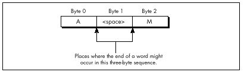
One detail remains to be attended to: setting the Carry flag for next time if the last byte was a non-separator. David does this in a bizarre and incredibly effective way: He presets the high bit of the count, and sets the high bit in the lookup table for those entries looked up by non-separators. When a non-separator’s lookup entry is added to the count, it will produce a carry, as desired. The high bit of the count is masked off before being added to the total count, so David is essentially using different parts of the count variables for different purposes (counting, and setting the Carry flag).
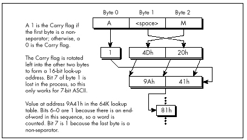
There are a number of other interesting details in David’s code, including the unrolling of the loop 64 times, so that 256 bytes in a row are processed without a single branch. Unfortunately, I lack the space to discuss Listing 16.5 any further. Perhaps that’s not so unfortunate, after all; I’d hate to deny you the pleasure of discovering the wonders of this rather remarkable code yourself. I will say one more thing, though. The cycle count for David’s inner loop is 6.5 cycles per byte processed, and the actual measured time for his routine, overhead and all, is 7.9 cycles/byte. The original C code clocked in at around 100 cycles/byte.
Enough said, I trust.
Before I finish up this chapter, I’d like to mention that Terje Mathisen’s WC word-counting program, which I’ve mentioned previously and which is available, with source, on Bix, is in the ballpark with David’s code for performance. What’s more, Terje’s program handles 8-bit ASCII, counts lines as well as words, and supports user-definable separator sets. It’s wonderful code, well worth a look; it also happens to be a great word-counting utility. By the way, Terje builds his 64K table on the fly, at program initialization; this allows for customized tables, shrinks the size of the EXE, and, according to Terje’s calculations, takes less time than loading the table off disk as part of the EXE.
So, has David written the fastest possible word-counting code? Well, maybe—but I have a letter from Terry Holmes, of San Rafael, California, that calculates the theoretical maximum performance of native 386 word-counting code at 5.5 cycles/byte, which would be significantly faster than David’s code. Terry, alas, didn’t bother to implement his design, but maybe I’ll take a shot at it someday. It’d be fun, for sure—but jeez, I’ve got real work to do!
I’ve spent a lot of my life discussing assembly language optimization, which I consider to be an important and underappreciated topic. However, I’d like to take this opportunity to point out that there is much, much more to optimization than assembly language. Assembly is essential for absolute maximum performance, but it’s not the only ingredient; necessary but not sufficient, if you catch my drift—and not even necessary, if you’re looking for improved but not maximum performance. You’ve heard it a thousand times: Optimize your algorithm first. Devise new approaches. Or, as Knuth said, Premature optimization is the root of all evil.
This is, of course, old hat, stuff you know like the back of your hand. Or is it? As Jeff Duntemann pointed out to me the other day, performance programmers are made, not born. While I’m merrily gallivanting around in this book optimizing 486 pipelining and turning simple tasks into horribly complicated and terrifyingly fast state machines, many of you are still developing your basic optimization skills. I don’t want to shortchange those of you in the latter category, so in this chapter, we’ll discuss some high-level language optimizations that can be applied by mere mortals within a reasonable period of time. We’re going to examine a complete optimization process, from start to finish, and what we will find is that it’s possible to get a 50-times speed-up without using one byte of assembly! It’s all a matter of perspective—how you look at your code and data.
The program that we’re going to optimize is Conway’s famous Game of Life, long-ago favorite of the hackers at MIT’s AI Lab. If you’ve never seen it, let me assure you: Life is neat, and more than a little hypnotic. Fractals have been the hot graphics topic in recent years, but for eye-catching dazzle, Life is hard to beat.
Of course, eye-catching dazzle requires real-time performance—lots of pixels help too—and there’s the rub. When there are, say, 40,000 cells to process and display, a simple, straightforward implementation just doesn’t cut it, even on a 33 MHz 486. Happily, though, there are many, many ways to speed up Life, and they illustrate a variety of important optimization principles, as this chapter will show.
First, I’ll describe the ground rules of Life, implement a very straightforward version in C++, and then speed that version up by about eight times without using any drastically different approaches or any assembly. This may be a little tame for some of you, but be patient; for after that, we’ll haul out the big guns and move into the 30 to 40 times speed-up range. Then in the next chapter, I’ll show you how several programmers really floored it in taking me up on my second Optimization Challenge, which involved the Game of Life.
The Game of Life is ridiculously simple. There is a cellmap, consisting of a rectangular matrix of cells, each of which may initially be either on or off. Each cell has eight neighbors: two horizontally, two vertically, and four diagonally. For each succeeding generation of cells, the game logic determines whether each cell will be on or off according to the following rules:
It’s only a little more complicated to implement the Game of Life than it is to describe it. Listing 17.1, together with the display functions in Listing 17.2, is a C++ implementation of the Game of Life, and it’s very straightforward. A cellmap is an object that’s accessible through member functions to set, clear, and test cell states, and through a member function to calculate the next generation. Calculating the next generation involves nothing more than using the other member functions to set each cell to the appropriate state, given the number of neighboring on-cells and the cell’s current state. The only complication is that it’s necessary to place the next generation’s cells in another cellmap, and then copy the final result back to the original cellmap. This keeps us from corrupting the current generation’s cellmap before we’re done using it to calculate the next generation.
All in all, Listing 17.1 is a clean, compact, and elegant implementation of the Game of Life. Were it not that the code is as slow as molasses, we could stop right here.
LISTING 17.1 L17-1.CPP
/* C++ Game of Life implementation for any mode for which mode set
and draw pixel functions can be provided.
Tested with Borland C++ in the small model. */
#include <stdlib.h>
#include <stdio.h>
#include <iostream.h>
#include <conio.h>
#include <time.h>
#include <dos.h>
#include <bios.h>
#include <mem.h>
#define ON_COLOR 15 // on-cell pixel color
#define OFF_COLOR 0 // off-cell pixel color
#define MSG_LINE 10 // row for text messages
#define GENERATION_LINE 12 // row for generation # display
#define LIMIT_18_HZ 1 // set 1 for maximum frame rate = 18Hz
#define WRAP_EDGES 1 // set to 0 to disable wrapping around
// at cell map edges
class cellmap {
private:
unsigned char *cells;
unsigned int width;
unsigned int width_in_bytes;
unsigned int height;
unsigned int length_in_bytes;
public:
cellmap(unsigned int h, unsigned int v);
~cellmap(void);
void copy_cells(cellmap &sourcemap);
void set_cell(unsigned int x, unsigned int y);
void clear_cell(unsigned int x, unsigned int y);
int cell_state(int x, int y);
void next_generation(cellmap& dest_map);
};
extern void enter_display_mode(void);
extern void exit_display_mode(void);
extern void draw_pixel(unsigned int X, unsigned int Y,
unsigned int Color);
extern void show_text(int x, int y, char *text);
/* Controls the size of the cell map. Must be within the capabilities
of the display mode, and must be limited to leave room for text
display at right. */
unsigned int cellmap_width = 96;
unsigned int cellmap_height = 96;
/* Width & height in pixels of each cell as displayed on screen. */
unsigned int magnifier = 2;
void main()
{
unsigned int init_length, x, y, seed;
unsigned long generation = 0;
char gen_text[80];
long bios_time, start_bios_time;
cellmap current_map(cellmap_height, cellmap_width);
cellmap next_map(cellmap_height, cellmap_width);
// Get the seed; seed randomly if 0 entered
cout << "Seed (0 for random seed): ";
cin >> seed;
if (seed == 0) seed = (unsigned) time(NULL);
// Randomly initialize the initial cell map
cout << "Initializing...";
srand(seed);
init_length = (cellmap_height * cellmap_width) / 2;
do {
x = random(cellmap_width);
y = random(cellmap_height);
next_map.set_cell(x, y);
} while (--init_length);
current_map.copy_cells(next_map); // put init map in current_map
enter_display_mode();
// Keep recalculating and redisplaying generations until a key
// is pressed
show_text(0, MSG_LINE, "Generation: ");
start_bios_time = _bios_timeofday(_TIME_GETCLOCK, &bios_time);
do {
generation++;
sprintf(gen_text, "%10lu", generation);
show_text(1, GENERATION_LINE, gen_text);
// Recalculate and draw the next generation
current_map.next_generation(next_map);
// Make current_map current again
current_map.copy_cells(next_map);
#if LIMIT_18_HZ
// Limit to a maximum of 18.2 frames per second,for visibility
do {
_bios_timeofday(_TIME_GETCLOCK, &bios_time);
} while (start_bios_time == bios_time);
start_bios_time = bios_time;
#endif
} while (!kbhit());
getch(); // clear keypress
exit_display_mode();
cout << "Total generations: " << generation << "\nSeed: " <<
seed << "\n";
}
/* cellmap constructor. */
cellmap::cellmap(unsigned int h, unsigned int w)
{
width = w;
width_in_bytes = (w + 7) / 8;
height = h;
length_in_bytes = width_in_bytes * h;
cells = new unsigned char[length_in_bytes]; // cell storage
memset(cells, 0, length_in_bytes); // clear all cells, to start
}
/* cellmap destructor. */
cellmap::~cellmap(void)
{
delete[] cells;
}
/* Copies one cellmap's cells to another cellmap. Both cellmaps are
assumed to be the same size. */
void cellmap::copy_cells(cellmap &sourcemap)
{
memcpy(cells, sourcemap.cells, length_in_bytes);
}
/* Turns cell on. */
void cellmap::set_cell(unsigned int x, unsigned int y)
{
unsigned char *cell_ptr =
cells + (y * width_in_bytes) + (x / 8);
*(cell_ptr) |= 0x80 >> (x & 0x07);
}
/* Turns cell off. */
void cellmap::clear_cell(unsigned int x, unsigned int y)
{
unsigned char *cell_ptr =
cells + (y * width_in_bytes) + (x / 8);
*(cell_ptr) &= ~(0x80 >> (x & 0x07));
}
/* Returns cell state (1=on or 0=off), optionally wrapping at the
borders around to the opposite edge. */
int cellmap::cell_state(int x, int y)
{
unsigned char *cell_ptr;
#if WRAP_EDGES
while (x < 0) x += width; // wrap, if necessary
while (x >= width) x -= width;
while (y < 0) y += height;
while (y >= height) y -= height;
#else
if ((x < 0) || (x >= width) || (y < 0) || (y >= height))
return 0; // return 0 for off edges if no wrapping
#endif
cell_ptr = cells + (y * width_in_bytes) + (x / 8);
return (*cell_ptr & (0x80 >> (x & 0x07))) ? 1 : 0;
}
/* Calculates the next generation of a cellmap and stores it in
next_map. */
void cellmap::next_generation(cellmap& next_map)
{
unsigned int x, y, neighbor_count;
for (y=0; y<height; y++) {
for (x=0; x<width; x++) {
// Figure out how many neighbors this cell has
neighbor_count = cell_state(x-1, y-1) + cell_state(x, y-1) +
cell_state(x+1, y-1) + cell_state(x-1, y) +
cell_state(x+1, y) + cell_state(x-1, y+1) +
cell_state(x, y+1) + cell_state(x+1, y+1);
if (cell_state(x, y) == 1) {
// The cell is on; does it stay on?
if ((neighbor_count != 2) && (neighbor_count != 3)) {
next_map.clear_cell(x, y); // turn it off
draw_pixel(x, y, OFF_COLOR);
}
} else {
// The cell is off; does it turn on?
if (neighbor_count == 3) {
next_map.set_cell(x, y); // turn it on
draw_pixel(x, y, ON_COLOR);
}
}
}
}
}LISTING 17.2 L17-2.CPP
/* VGA mode 13h functions for Game of Life.
Tested with Borland C++. */
#include <stdio.h>
#include <conio.h>
#include <dos.h>
#define TEXT_X_OFFSET 27
#define SCREEN_WIDTH_IN_BYTES 320
/* Width & height in pixels of each cell. */
extern unsigned int magnifier;
/* Mode 13h draw pixel function. Pixels are of width & height
specified by magnifier. */
void draw_pixel(unsigned int x, unsigned int y, unsigned int color)
{
#define SCREEN_SEGMENT 0xA000
unsigned char far *screen_ptr;
int i, j;
FP_SEG(screen_ptr) = SCREEN_SEGMENT;
FP_OFF(screen_ptr) =
y * magnifier * SCREEN_WIDTH_IN_BYTES + x * magnifier;
for (i=0; i<magnifier; i++) {
for (j=0; j<magnifier; j++) {
*(screen_ptr+j) = color;
}
screen_ptr += SCREEN_WIDTH_IN_BYTES;
}
}
/* Mode 13h mode-set function. */
void enter_display_mode()
{
union REGS regset;
regset.x.ax = 0x0013;
int86(0x10, ®set, ®set);
}
/* Text mode mode-set function. */
void exit_display_mode()
{
union REGS regset;
regset.x.ax = 0x0003;
int86(0x10, ®set, ®set);
}
/* Text display function. Offsets text to non-graphics area of
screen. */
void show_text(int x, int y, char *text)
{
gotoxy(TEXT_X_OFFSET + x, y);
puts(text);
}How slow is Listing 17.1? Table 17.1 shows that even on a 486,
Listing 17.1 does fewer than three 96x96 generations per second. (The
times in Table 17.1 are for 1,000 generations of a 96x96 cell map with
seed=1, LIMIT_18_HZ=0, WRAP_EDGES=1, and
magnifier=2, running on a 33 MHz 486.) Since my target is
18 generations per second with a 200x200 cellmap on a 20 MHz 386,
Listing 17.1 is too slow by a rather wide margin—75 times too slow, in
fact. You might say we have a little optimizing to do.
The first rule of optimization is: Only optimize where it matters.
Use a profiler, or risk making a fool of yourself. Consider Listings
17.1 and 17.2. Where do you think the potential for significant speed-up
lies? I’ll tell you one place where I thought there was considerable
potential—in draw_pixel(). As a programmer of high-speed
graphics, I figured any drawing function that was not only written in
C/C++ but also recalculated the target address from scratch for each
pixel would be among the first optimization targets. I also expected to
get major gains out of going to a Ping-Pong arrangement so that I didn’t
have to copy the new cellmap back to current_map after
calculating the next generation.
| Listing 17.1 | Listing 17.3 | Listing 17.4 | |
|---|---|---|---|
| Total execution time | 340 secs | 94 secs | 45 secs |
cell_state() |
275 | 21 | — |
next_generation() |
60 | 14 | 40 |
count_neighbors() |
— | 54 | — |
draw_pixel() |
2 | 2 | 2 |
set_cell() |
<1 | <1 | <1 |
clear_cell() |
<1 | <1 | <1 |
copy_cells() |
<1 | <1 | <1 |
I was wrong. Wrong, wrong, wrong. (But at least I was smart enough to
use a profiler before actually writing any new code.) Table 17.1 shows
where the time actually goes in Listings 17.1 and 17.2. As you can see,
the time taken by draw_pixel(), copy_cells(),
and everything other than calculating the next generation is
nothing more than noise. We could optimize these routines right down to
executing instantaneously, and you know what? It wouldn’t make
the slightest perceptible difference in how fast the program runs. Given
the present state of our Game of Life implementation, the only areas
worth looking at for possible optimizations are
cell_state() and next_generation().
It’s worth noting, though, that one reason
draw_pixel()doesn’t much affect performance is that in Listing 17.1, we’re smart enough to redraw pixels only when their states change, rather than during every generation. Detecting and eliminating redundant operations is part of knowing the nature of your data, and is a potent optimization technique that will be extremely useful a little later in this chapter.
How can we speed up cell_state() and
next_generation()? I’ll tell you how not to do it:
By writing those member functions in assembly. It’s tempting to say that
cell_state() is taking all the time, so we need to speed it
up with assembly, but what we really need to do is figure out
why cell_state() is taking all the time, then
address that aspect of the program directly.
Once you know where you need to optimize, the one word to keep in mind isn’t assembly, it’s…plastics. No, actually, it’s abstraction. Well-written C and especially C++ programs are highly abstract models. For example, Listing 17.1 essentially creates a new programming language in which cells are tangible things, with built-in manipulation instructions. Given the cellmap member functions, you don’t even need to know the cell storage format! This is a wonderful thing, in general; it saves programming time and bugs, and frees you to work on the application’s needs, rather than implementation details.
However, if you never look beneath the surface of the abstract model at the implementation details, you have no idea of what the true performance cost of various operations is, and, without that, you have largely surrendered control over performance.
Having said that, let me hasten to add that algorithmic improvements
can make a big difference even when working at a purely abstract level.
For a large unordered data set, a high-level Quicksort will beat the
pants off the best-implemented insertion sort you can imagine. Still,
you can optimize your algorithm from here ’til doomsday, and if you have
a fast algorithm running on top of a highly abstract programming model,
you’ll almost certainly end up with a slow program. In Listing 17.1, the
abstraction that’s killing us is that of looking at the eight neighbors
with eight completely independent operations, requiring eight calls to
cell_state() and eight calculations of cell address and
cell mask. In fact, given the nature of cell storage, the eight
neighbors are in a fixed relationship to one another, and the addresses
and masks of all eight can generally be found very easily via hard-wired
offsets and shifts once the address and mask of any one is known.
There’s a kicker here, though, and that’s the counting of neighbors for cells at the edge of the cellmap. When cellmap wrapping is enabled (so that the cellmap becomes essentially a toroid, with each edge joined seamlessly to the opposite edge, as opposed to having a border of off-cells), neighbors that reside on the other edge of the cellmap can’t be accessed by the standard fixed offset, as shown in Figure 17.1. So, in general, we could improve performance by hard-wiring our neighbor-counting for the bit-per-cell cellmap format, but it seems we’d need a lot of conditional code to handle wrapping, and that would slow things back down again.
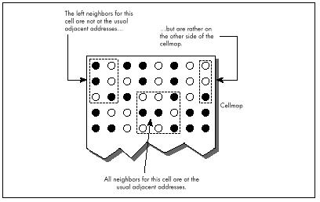
When a problem doesn’t lend itself well to optimization, make it a practice to see if you can change the problem definition to one that allows for greater efficiency. In this case, we’ll change the problem by putting padding bytes around the edge of the cellmap, and duplicating each edge of the cellmap in the padding bytes at the opposite side, as shown in Figure 17.2. That way, a hard-wired neighbor count will find exactly what it should—the opposite edge—without any special code at all.
But doesn’t that extra copying of the edges take time? Sure, but only
a little; we can build it into the cellmap copying function, and then
frankly we won’t even notice it. Avoiding tens or hundreds of thousands
of calls to cell_state(), on the other hand, will be
very noticeable. Listing 17.3 shows the alterations to Listing
17.1 required to implement a hard-wired neighbor-counting function. This
is a minor change, in truth, implemented in about half an hour and not
making the code significantly larger—but Listing 17.3 is 3.6 times
faster than Listing 17.1, as shown in Table 17.1. We’re up to about 10
generations per second on a 486; not where we want to be, but it is a
vast improvement.
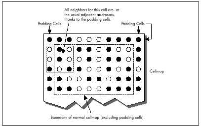
LISTING 17.3 L17-3.CPP
/* cellmap class definition, constructor, copy_cells(), set_cell(),
clear_cell(), cell_state(), count_neighbors(), and
next_generation() for fast, hard-wired neighbor count approach.
Otherwise, the same as Listing 17.1 */
class cellmap {
private:
unsigned char *cells;
unsigned int width;
unsigned int width_in_bytes;
unsigned int height;
unsigned int length_in_bytes;
public:
cellmap(unsigned int h, unsigned int v);
~cellmap(void);
void copy_cells(cellmap &sourcemap);
void set_cell(unsigned int x, unsigned int y);
void clear_cell(unsigned int x, unsigned int y);
int cell_state(int x, int y);
int count_neighbors(int x, int y);
void next_generation(cellmap& dest_map);
};
/* cellmap constructor. Pads around cell storage area with 1 extra
byte, used for handling edge wrapping. */
cellmap::cellmap(unsigned int h, unsigned int w)
{
width = w;
width_in_bytes = ((w + 7) / 8) + 2; // pad each side with
// 1 extra byte
height = h;
length_in_bytes = width_in_bytes * (h + 2); // pad top/bottom
// with 1 extra byte
cells = new unsigned char[length_in_bytes]; // cell storage
memset(cells, 0, length_in_bytes); // clear all cells, to start
}
/* Copies one cellmap's cells to another cellmap. If wrapping is
enabled, copies edge (wrap) bytes into opposite padding bytes in
source first, so that the padding bytes off each edge have the
same values as would be found by wrapping around to the opposite
edge. Both cellmaps are assumed to be the same size. */
void cellmap::copy_cells(cellmap &sourcemap)
{
unsigned char *cell_ptr;
int i;
#if WRAP_EDGES
// Copy left and right edges into padding bytes on right and left
cell_ptr = sourcemap.cells + width_in_bytes;
for (i=0; i<height; i++) {
*cell_ptr = *(cell_ptr + width_in_bytes - 2);
*(cell_ptr + width_in_bytes - 1) = *(cell_ptr + 1);
cell_ptr += width_in_bytes;
}
// Copy top and bottom edges into padding bytes on bottom and top
memcpy(sourcemap.cells, sourcemap.cells + length_in_bytes -
(width_in_bytes * 2), width_in_bytes);
memcpy(sourcemap.cells + length_in_bytes - width_in_bytes,
sourcemap.cells + width_in_bytes, width_in_bytes);
#endif
// Copy all cells to the destination
memcpy(cells, sourcemap.cells, length_in_bytes);
}
/* Turns cell on. x and y are offset by 1 byte down and to the right, to compensate for the
padding bytes around the cellmap. */
void cellmap::set_cell(unsigned int x, unsigned int y)
{
unsigned char *cell_ptr =
cells + ((y + 1) * width_in_bytes) + ((x / 8) + 1);
*(cell_ptr) |= 0x80 >> (x & 0x07);
}
/* Turns cell off. x and y are offset by 1 byte down and to the right,
to compensate for the padding bytes around the cell map. */
void cellmap::clear_cell(unsigned int x, unsigned int y)
{
unsigned char *cell_ptr =
cells + ((y + 1) * width_in_bytes) + ((x / 8) + 1);
*(cell_ptr) &= ~(0x80 >> (x & 0x07));
}
/* Returns cell state (1=on or 0=off). x and y are offset by 1 byte
down and to the right, to
compensate for the padding bytes around
the cell map. */
int cellmap::cell_state(int x, int y)
{
unsigned char *cell_ptr =
cells + ((y + 1) * width_in_bytes) + ((x / 8) + 1);
return (*cell_ptr & (0x80 >> (x & 0x07))) ? 1 : 0;
}
/* Counts the number of neighboring on-cells for specified cell. */
int cellmap::count_neighbors(int x, int y)
{
unsigned char *cell_ptr, mask;
unsigned int neighbor_count;
// Point to upper left neighbor
cell_ptr = cells + ((y * width_in_bytes) + ((x + 7) / 8));
mask = 0x80 >> ((x - 1) & 0x07);
// Count upper left neighbor
neighbor_count = (*cell_ptr & mask) ? 1 : 0;
// Count left neighbor
if ((*(cell_ptr + width_in_bytes) & mask)) neighbor_count++;
// Count lower left neighbor
if ((*(cell_ptr + (width_in_bytes * 2)) & mask)) neighbor_count++;
// Point to upper neighbor
if ((mask >>= 1) == 0) {
mask = 0x80;
cell_ptr++;
}
// Count upper neighbor
if ((*cell_ptr & mask)) neighbor_count++;
// Count lower neighbor
if ((*(cell_ptr + (width_in_bytes * 2)) & mask)) neighbor_count++;
// Point to upper right neighbor
if ((mask >>= 1) == 0) {
mask = 0x80;
cell_ptr++;
}
// Count upper right neighbor
if ((*cell_ptr & mask)) neighbor_count++;
// Count right neighbor
if ((*(cell_ptr + width_in_bytes) & mask)) neighbor_count++;
// Count lower right neighbor
if ((*(cell_ptr + (width_in_bytes * 2)) & mask)) neighbor_count++;
return neighbor_count;
}
/* Calculates the next generation of current_map and stores it in
next_map. */
void cellmap::next_generation(cellmap& next_map)
{
unsigned int x, y, neighbor_count;
for (y=0; y<height; y++) {
for (x=0; x<width; x++) {
neighbor_count = count_neighbors(x, y);
if (cell_state(x, y) == 1) {
if ((neighbor_count != 2) && (neighbor_count != 3)) {
next_map.clear_cell(x, y); // turn it off
draw_pixel(x, y, OFF_COLOR);
}
} else {
if (neighbor_count == 3) {
next_map.set_cell(x, y); // turn it on
draw_pixel(x, y, ON_COLOR);
}
}
}
}
}In Listing 17.3, note the padded cellmap edges, and the alteration of
the member functions to compensate for the padding. Also note that the
width now has to be a multiple of eight, to facilitate the process of
copying the edges to the opposite padding bytes. We have decreased the
generality of our Game of Life implementation in exchange for better
performance. That’s a very common trade-off, as common as trading memory
for performance. As a rule, the more general a program is, the slower it
is. A corollary is that often (not always, but often), the more heavily
optimized a program is, the more complex and the more difficult to
implement it is. You can often improve performance a good deal by
implementing only the level of generality you need, but at the same time
decreased generality makes it more difficult to change or port the
program at some later date. A Game of Life implementation, such as
Listing 17.1, that’s built on set_cell(),
clear_cell(), and get_cell() is completely
general; you can change the cell storage format simply by changing the
constructor and those three functions. Listing 17.3 is harder to change
because count_neighbors() would also have to be altered,
and it’s more complex than any of the other functions.
So, in Listing 17.3, we’ve gotten under the hood and changed the
cellmap format a little, and gotten impressive results. But now
count_neighbors() is hard-wired for optimized counting, and
it’s still taking up more than half the time. Maybe now it’s time to go
to assembly?
Not hardly.
Before we get to assembly, we still have to perform C++ optimization, then see if we can find an alternative approach that better fits the application. It would actually have made much more sense if we had looked for a new approach as our first optimization step, but I decided it would be better to cover straightforward C++ optimizations at this point, and the mind-bending stuff a little later. Right now, let’s look at some C++ optimizations; Listing 17.4 is a C++-optimized version of Listing 17.3.
LISTING 17.4 L17-4.CPP
/* next_generation(), implemented using fast, all-in-one hard-wired
neighbor count/update/draw function. Otherwise, the same as
Listing 17.3. */
/* Calculates the next generation of current_map and stores it in
next_map. */
void cellmap::next_generation(cellmap& next_map)
{
unsigned int x, y, neighbor_count;
unsigned int width_in_bytesX2 = width_in_bytes << 1;
unsigned char *cell_ptr, *current_cell_ptr, mask, current_mask;
unsigned char *base_cell_ptr, *row_cell_ptr, base_mask;
unsigned char *dest_cell_ptr = next_map.cells;
// Process all cells in the current cellmap
row_cell_ptr = cells; // point to upper left neighbor of
// first cell in cell map
for (y=0; y<height; y++) { // repeat for each row of cells
// Cell pointer and cell bit mask for first cell in row
base_cell_ptr = row_cell_ptr; // to access upper left neighbor
base_mask = 0x01; // of first cell in row
for (x=0; x<width; x++) { // repeat for each cell in row
// First, count neighbors
// Point to upper left neighbor of current cell
cell_ptr = base_cell_ptr; // pointer and bit mask for
mask = base_mask; // upper left neighbor
// Count upper left neighbor
neighbor_count = (*cell_ptr & mask) ? 1 : 0;
// Count left neighbor
if ((*(cell_ptr + width_in_bytes) & mask)) neighbor_count++;
// Count lower left neighbor
if ((*(cell_ptr + width_in_bytesX2) & mask))
neighbor_count++;
// Point to upper neighbor
if ((mask >>= 1) == 0) {
mask = 0x80;
cell_ptr++;
}
// Remember where to find the current cell
current_cell_ptr = cell_ptr + width_in_bytes;
current_mask = mask;
// Count upper neighbor
if ((*cell_ptr & mask)) neighbor_count++;
// Count lower neighbor
if ((*(cell_ptr + width_in_bytesX2) & mask))
neighbor_count++;
// Point to upper right neighbor
if ((mask >>= 1) == 0) {
mask = 0x80;
cell_ptr++;
}
// Count upper right neighbor
if ((*cell_ptr & mask)) neighbor_count++;
// Count right neighbor
if ((*(cell_ptr + width_in_bytes) & mask)) neighbor_count++;
// Count lower right neighbor
if ((*(cell_ptr + width_in_bytesX2) & mask))
neighbor_count++;
if (*current_cell_ptr & current_mask) {
if ((neighbor_count != 2) && (neighbor_count != 3)) {
*(dest_cell_ptr + (current_cell_ptr - cells)) &=
~current_mask; // turn off cell
draw_pixel(x, y, OFF_COLOR);
}
} else {
if (neighbor_count == 3) {
*(dest_cell_ptr + (current_cell_ptr - cells)) |=
current_mask; // turn on cell
draw_pixel(x, y, ON_COLOR);
}
}
// Advance to the next cell on row
if ((base_mask >>= 1) == 0) {
base_mask = 0x80;
base_cell_ptr++; // advance to the next cell byte
}
}
row_cell_ptr += width_in_bytes; // point to start of next row
}
}Listing 17.4 and Listing 17.3 are functionally the same; the only
difference lies in how next_generation() is implemented.
(Only next_generation() is shown in Listing 17.4; the
program is otherwise identical to Listing 17.3.) Listing 17.4 applies
the following optimizations to next_generation():
The neighbor-counting code is brought into
next_generation, eliminating many function calls and
from-scratch address/mask calculations; all multiplies are eliminated by
using pointers and addition; and all cells are accessed directly via
pointers and masks, eliminating all remaining function calls and
from-scratch address/mask calculations.
The net effect of these optimizations is that Listing 17.4 is more
than twice as fast as Listing 17.3; we’ve achieved the desired 18
generations per second, albeit only on a 486, and only at 96x96. (The
#define that enables code limiting the speed to 18 Hz,
which seemed ridiculous in Listing 17.1, is actually useful for keeping
the generations from iterating too quickly when Listing 17.4 is running
on a 486, especially with a small cellmap like 48x48.) We’ve sped things
up by about eight times so far; we need to increase our speed another
ten times to reach our goal of 200x200 at 18 generations per second on a
20 MHz 386.
It’s undoubtedly possible to improve the performance of Listing 17.4 further by fine-tuning the code, but no tremendous improvement is possible that way.
Once you’ve reached the point of fine-tuning pointer usage and register variables and the like in C or C++, you’ve become compiler-dependent; you therefore might as well go to assembly and get the real McCoy.
We’re still not ready for assembly, though; what we need is a new perspective that lends itself to vastly better performance in C++. The Life program in the next section is three to seven times faster than Listing 17.4—and it’s still in C++.
How is this possible? Here are some hints:
In the previous section, we saw how a C++ program could be sped up about eight times simply by rearranging the data and code in straightforward ways. Now we’re going to see how right-brain non-linear optimization can speed things up by another four times—and make the code simpler.
Now that’s Zen code optimization.
I have two objectives to achieve in the remainder of this chapter. First, I want to show that optimization consists of many levels, from assembly language up to conceptual design, and that assembly language kicks in pretty late in the optimization process. Second, I want to encourage you to saturate your brain with everything you know about any particular optimization problem, then make space for your right brain to solve the problem.
Earlier in this chapter, we looked at a straightforward Game of Life implementation, then increased performance considerably by making the implementation a little less abstract and a little less general. We made a small change to the cellmap format, adding padding bytes off the edges so that pointer arithmetic would always work, but the major optimizations were moving the critical code into a single loop and using pointers rather than member functions whenever possible. In other words, we took what we already knew and made it more efficient.
Now it’s time to re-examine the nature of this programming task from the ground up, looking for things that we don’t yet know. Let’s take a moment to review what the Game of Life consists of. The basic task is evolving a new generation, and that’s done by looking at the number of “on” neighbors a cell has and the cell’s own state. If a cell is on, and two or three neighbors are on, then the cell stays on; otherwise, an on-cell is turned off. If a cell is off and exactly three neighbors are on, then the cell is turned on; otherwise, an off-cell stays off. That’s all there is to it. As any fool can see, the trick is to arrange things so that we can count neighbors and check the cell state as quickly as possible. Large lookup tables, oddly encoded cellmaps, and lots of bit-twiddling assembly code spring to mind as possible approaches. Can’t you just feel your adrenaline start to pump?
Relax. Step back. Try to divine the true nature of the problem. The object is not to count neighbors and check cell states as quickly as possible; that’s just one possible implementation. The object is to determine when a cell’s state must be changed and to change it appropriately, and that’s what we need to do as quickly as possible.
What difference does that new perspective make? Let’s approach it this way. What does a typical cellmap look like? As it happens, after a few generations, the vast majority of cells are off. In fact, the vast majority of cells are not only off but are entirely surrounded by off-cells. Also, cells change state infrequently; in any given generation after the first few, most cells remain in the same state as in the previous generation.
Do you see where I’m heading? Do you hear a whisper of inspiration from your right brain? The original implementation stored cell states as 1-bits (on), or 0-bits (off). For each generation and for each cell, it counted the states of the eight neighbors, for an average of eight operations per cell per generation. Suppose, now, that on average 10 percent of cells change state from one generation to the next. (The actual percentage is even lower, but this will do for illustration.) Suppose also that we change the cell map format to store a byte rather than a bit for each cell, with the byte storing not only the cell state but also the count of neighboring on-cells for that cell. Figure 17.3 shows this format. Then, rather than counting neighbors each time, we could just look at the neighbor count in the cell and operate directly from that.
But what about the overhead needed to maintain the neighbor counts? Well, each time a cell changes state, eight operations would be needed to update the counts in the eight neighboring cells. But this happens only once every ten cells, on average—so the cost of this approach is only one-tenth that of the original approach!
Know your data.
Once we’ve changed the cellmap format to store neighbor counts as
well as states, with a byte for each cell, we can get another
performance boost by again examining what we know about our data. I said
earlier that most cells are off during any given generation. This means
that most cells have no neighbors that are on. Since the cell map
representation for an off-cell that has no neighbors is a zero byte, we
can skip over scads of unchanged cells at a pop simply by scanning for
non-zero bytes. This is much faster than explicitly testing cell states
and neighbor counts, and lends itself beautifully to assembly language
implementation as REPZ SCASB or (with a little cleverness)
REPZ SCASW. (Unfortunately, there’s no C library function
that can scan memory for the next byte that’s non-zero.)
Listing 17.5 is a Game of Life implementation that uses the neighbor-count cell map format and scans for non-zero bytes. On a 20 MHz 386, Listing 17.5 is about 4.5 times faster at calculating generations (that is, the generation engine is 4.5 times faster; I’m ignoring the time consumed by drawing and text display) than Listing 17.4, which is no slouch. On a 33 MHz 486, Listing 17.5 is about 3.5 times faster than Listing 17.4. This is true even though Listing 17.5 must be compiled using the large model. Imagine that—getting a four times speed-up while switching from the small model to the large model!
LISTING 17.5 L17-5.CPP
/* C++ Game of Life implementation for any mode for which mode set
and draw pixel functions can be provided. The cellmap stores the
neighbor count for each cell as well as the state of each cell;
this allows very fast next-state determination. Edges always wrap
in this implementation.
Tested with Borland C++. To run, link with Listing 17.2
in the large model. */
#include <stdlib.h>
#include <stdio.h>
#include <iostream.h>
#include <conio.h>
#include <time.h>
#include <dos.h>
#include <bios.h>
#include <mem.h>
#define ON_COLOR 15 // on-cell pixel color
#define OFF_COLOR 0 // off-cell pixel color
#define MSG_LINE 10 // row for text messages
#define GENERATION_LINE 12 // row for generation # display
#define LIMIT_18_HZ 0 // set 1 to to maximum frame rate = 18Hz
class cellmap {
private:
unsigned char *cells;
unsigned char *temp_cells;
unsigned int width;
unsigned int height;
unsigned int length_in_bytes;
public:
cellmap(unsigned int h, unsigned int v);
~cellmap(void);
void set_cell(unsigned int x, unsigned int y);
void clear_cell(unsigned int x, unsigned int y);
int cell_state(int x, int y);
int count_neighbors(int x, int y);
void next_generation(void);
void init(void);
};
extern void enter_display_mode(void);
extern void exit_display_mode(void);
extern void draw_pixel(unsigned int X, unsigned int Y,
unsigned int Color);
extern void show_text(int x, int y, char *text);
/* Controls the size of the cell map. Must be within the capabilities
of the display mode, and must be limited to leave room for text
display at right. */
unsigned int cellmap_width = 96;
unsigned int cellmap_height = 96;
/* Width & height in pixels of each cell. */
unsigned int magnifier = 2;
/* Randomizing seed */
unsigned int seed;
void main()
{
unsigned long generation = 0;
char gen_text[80];
long bios_time, start_bios_time;
cellmap current_map(cellmap_height, cellmap_width);
current_map.init(); // randomly initialize cell map
enter_display_mode();
// Keep recalculating and redisplaying generations until any key
// is pressed
show_text(0, MSG_LINE, "Generation: ");
start_bios_time = _bios_timeofday(_TIME_GETCLOCK, &bios_time);
do {
generation++;
sprintf(gen_text, "%10lu", generation);
show_text(1, GENERATION_LINE, gen_text);
// Recalculate and draw the next generation
current_map.next_generation();
#if LIMIT_18_HZ
// Limit to a maximum of 18.2 frames per second, for visibility
do {
_bios_timeofday(_TIME_GETCLOCK, &bios_time);
} while (start_bios_time == bios_time);
start_bios_time = bios_time;
#endif
} while (!kbhit());
getch(); // clear keypress
exit_display_mode();
cout << "Total generations: " << generation << "\nSeed: " <<
seed << "\n";
}
/* cellmap constructor. */
cellmap::cellmap(unsigned int h, unsigned int w)
{
width = w;
height = h;
length_in_bytes = w * h;
cells = new unsigned char[length_in_bytes]; // cell storage
temp_cells = new unsigned char[length_in_bytes]; // temp cell storage
if ( (cells == NULL) || (temp_cells == NULL) ) {
printf("Out of memory\n");
exit(1);
}
memset(cells, 0, length_in_bytes); // clear all cells, to start
}
/* cellmap destructor. */
cellmap::~cellmap(void)
{
delete[] cells;
delete[] temp_cells;
}
/* Turns an off-cell on, incrementing the on-neighbor count for the
eight neighboring cells. */
void cellmap::set_cell(unsigned int x, unsigned int y)
{
unsigned int w = width, h = height;
int xoleft, xoright, yoabove, yobelow;
unsigned char *cell_ptr = cells + (y * w) + x;
// Calculate the offsets to the eight neighboring cells,
// accounting for wrapping around at the edges of the cell map
if (x == 0)
xoleft = w - 1;
else
xoleft = -1;
if (y == 0)
yoabove = length_in_bytes - w;
else
yoabove = -w;
if (x == (w - 1))
xoright = -(w - 1);
else
xoright = 1;
if (y == (h - 1))
yobelow = -(length_in_bytes - w);
else
yobelow = w;
*(cell_ptr) |= 0x01;
*(cell_ptr + yoabove + xoleft) += 2;
*(cell_ptr + yoabove) += 2;
*(cell_ptr + yoabove + xoright) += 2;
*(cell_ptr + xoleft) += 2;
*(cell_ptr + xoright) += 2;
*(cell_ptr + yobelow + xoleft) += 2;
*(cell_ptr + yobelow) += 2;
*(cell_ptr + yobelow + xoright) += 2;
}
/* Turns an on-cell off, decrementing the on-neighbor count for the
eight neighboring cells. */
void cellmap::clear_cell(unsigned int x, unsigned int y)
{
unsigned int w = width, h = height;
int xoleft, xoright, yoabove, yobelow;
unsigned char *cell_ptr = cells + (y * w) + x;
// Calculate the offsets to the eight neighboring cells,
// accounting for wrapping around at the edges of the cell map
if (x == 0)
xoleft = w - 1;
else
xoleft = -1;
if (y == 0)
yoabove = length_in_bytes - w;
else
yoabove = -w;
if (x == (w - 1))
xoright = -(w - 1);
else
xoright = 1;
if (y == (h - 1))
yobelow = -(length_in_bytes - w);
else
yobelow = w;
*(cell_ptr) &= ~0x01;
*(cell_ptr + yoabove + xoleft) -= 2;
*(cell_ptr + yoabove ) -= 2;
*(cell_ptr + yoabove + xoright) -= 2;
*(cell_ptr + xoleft) -= 2;
*(cell_ptr + xoright) -= 2;
*(cell_ptr + yobelow + xoleft) -= 2;
*(cell_ptr + yobelow) -= 2;
*(cell_ptr + yobelow + xoright) -= 2;
}
/* Returns cell state (1=on or 0=off). */
int cellmap::cell_state(int x, int y)
{
unsigned char *cell_ptr;
cell_ptr = cells + (y * width) + x;
return *cell_ptr & 0x01;
}
/* Calculates and displays the next generation of current_map */
void cellmap::next_generation()
{
unsigned int x, y, count;
unsigned int h = height, w = width;
unsigned char *cell_ptr, *row_cell_ptr;
// Copy to temp map, so we can have an unaltered version from
// which to work
memcpy(temp_cells, cells, length_in_bytes);
// Process all cells in the current cell map
cell_ptr = temp_cells; // first cell in cell map
for (y=0; y<h; y++) { // repeat for each row of cells
// Process all cells in the current row of the cell map
x = 0;
do { // repeat for each cell in row
// Zip quickly through as many off-cells with no
// neighbors as possible
while (*cell_ptr == 0) {
cell_ptr++; // advance to the next cell
if (++x >= w) goto RowDone;
}
// Found a cell that's either on or has on-neighbors,
// so see if its state needs to be changed
count = *cell_ptr >> 1; // # of neighboring on-cells
if (*cell_ptr & 0x01) {
// Cell is on; turn it off if it doesn't have
// 2 or 3 neighbors
if ((count != 2) && (count != 3)) {
clear_cell(x, y);
draw_pixel(x, y, OFF_COLOR);
}
} else {
// Cell is off; turn it on if it has exactly 3 neighbors
if (count == 3) {
set_cell(x, y);
draw_pixel(x, y, ON_COLOR);
}
}
// Advance to the next cell
cell_ptr++; // advance to the next cell byte
} while (++x < w);
RowDone:
}
}
/* Randomly initializes the cellmap to about 50% on-pixels. */
void cellmap::init()
{
unsigned int x, y, init_length;
// Get the seed; seed randomly if 0 entered
cout << "Seed (0 for random seed): ";
cin >> seed;
if (seed == 0) seed = (unsigned) time(NULL);
// Randomly initialize the initial cell map to 50% on-pixels
// (actually generally fewer, because some coordinates will be
// randomly selected more than once)
cout << "Initializing...";
srand(seed);
init_length = (height * width) / 2;
do {
x = random(width);
y = random(height);
if (cell_state(x, y) == 0) {
set_cell(x, y);
}
} while (--init_length);
}The large model is actually not necessary for the 96x96 cellmap in Listing 17.5. However, I was actually more interested in seeing a fast 200x200 cellmap, and two 200x200 cellmaps can’t fit in a single segment. (This can easily be worked around in assembly language for cellmaps up to a segment in size; beyond that size, cellmap scanning becomes pretty complex, although it can still be efficiently implemented with some clever programming.)
Anyway, using the large model helps illustrate that it’s the data representation and the data processing approach you choose that matter most. Optimization details like memory models and segments and in-line functions and assembly language are important but secondary. Let your mind roam creatively before you start coding. Otherwise, you may find you’re writing well-tuned slow code, which is by no means the same thing as fast code.
Take a close look at Listing 17.5. You will see that it’s quite a bit
simpler than Listing 17.4. To some extent, that’s because I decided to
hard-wire the program to wrap around from one edge of the cellmap to the
other (it’s much more interesting that way), but the main reason is that
it’s a lot easier to work with the neighbor-count model. There’s no
complex mask and pointer management, and the only thing that
really needs to be optimized is scanning for zero bytes. (And,
in fact, I haven’t optimized even that because it’s done in a C++ loop;
it should really be REPZ SCASB.)
In truth, none of the code in Listing 17.5 is particularly well-optimized, and, as I noted, the program must be compiled with the large model for large cellmaps. Also, of course, the entire program is still in C++; note well that there’s not a whit of assembly here.
We’ve gotten more than a 30-times speedup simply by removing a little of the abstraction that C++ encourages, and by storing and processing the data in a manner appropriate for the typical nature of the data itself. In other words, we’ve done some linear, left-brained optimization (using pointers and reducing calls) and some non-linear, right-brained optimization (understanding the real problem and listening for the creative whisper of non-obvious solutions).
No doubt we could get another two to five times improvement with good assembly code—but that’s dwarfed by a 30-times improvement, so optimization at a conceptual level must come first.
The most recent optimization challenge I laid my community of readers was to write the fastest possible Game of Life generation engine. By “engine” I meant that I didn’t care about time spent in input or output, only time consumed by the call to next-generation. The time spent updating the cellmap was what I wanted people to concentrate on.
Here are the rules I laid down for the challenge:
That was the challenge I put to the readers. Little did I realize the challenge it would lay on me: Entries poured in from the four corners of the globe. Some were plain, some were brilliant, some were, well, berserk. Many didn’t even work. But all had to be gone through, examined for adherence to the rules, read, compiled, linked, run, and judged. I learned a lot—about a lot of things, not the least of which was the process (or maybe the wisdom) of laying down challenges to readers.
Who won? What did I learn? To find out, read on.
When I was in high school, my gym teacher had us run a race around the soccer field, or rather, around a course marked with cones that roughly outlined the shape of the field. I quickly settled into second place behind Dwight Chamberlin. We cruised around the field, and when we came to the far corner, Dwight cut across the corner, inside a cone placed awkwardly far out from the others. I followed, and everyone else cut inside the cone too—except the pear-shaped kid bringing up the rear, who plodded his way around every single cone on his way to finishing about half a lap behind. When the laggard finally crossed the finish line, the coach named him the winner, to my considerable irritation. After all, the object was to see who could run the fastest, wasn’t it?
Actually, it wasn’t. The object was to see who could run the fastest according to the limitations placed upon the contest. This is a crucial distinction, although usually taken for granted. Would it have been legitimate if I had cut across the middle of the field? If I had ridden a bike? If I had broken the world record for the 100 meters by dropping 100 meters from a plane? Competition has meaning only within a carefully circumscribed arena.
Why am I telling you this? First, because it is a useful lesson for programming.
All programming is performed within limitations, some of which can be bent or changed, but many of which cannot. You cannot change the maximum memory bandwidth of a VGA, or the maximum instruction execution rate of a 486. That is why the stunning 3D demos you see at SIGGRAPH have only passing relevance to everyday life on the desktop. A rule that Intel’s chip designers cannot break is 8086 compatibility, much as I’m sure they’d like to, but of course the flip side is that although RISC chips are technically superior, they command but a small fraction of the market; raw performance is not the arena of competition. Similarly, you will often be unable to change the specifications for the software you implement.
The other reason for the anecdote has to do with the way my second Optimization Challenge worked itself out. If you’ll recall from the last chapter, the challenge I made to the readers of PC TECHNIQUES was to devise the fastest possible version of the Game of Life cellular automata simulation game. I gave an example, laid out the rules, and stood aside. Good thing, too. Apres moi, le deluge….
And when the dust had settled, I was left with the uneasy realization that every submitted entry broke the rules. Every single entry. The rules clearly stated that submitted code must produce exactly the same output as my example implementation under all circumstances in order to be eligible to win. I do not think that there can be any question about what “exactly the same output” means. It means the same pixels, in the same colors, at the same places on the screen at the same points in all the Life simulations that the original code was capable of running. Period. And not one of the entries met that standard. Some submitted listings were more than 400 lines long. Some didn’t display the generation number at the right side of the screen, didn’t draw the same pixel colors, or didn’t bother with magnification. Some had bugs. Some didn’t support all possible cellmap widths and heights up to 200x200, requiring widths and heights that were specific multiples of a number of cells that lent itself to a particular implementation.
This last mission is, in a way, a brilliant approach, as evidenced by the fact that it yielded the two fastest submissions, but it is not within the rules of the contest. Some of the rule-breaking was major, some very minor, and some had nothing to do with the Life engine itself, but the rules were clear; where was I to draw the line if not with exact compliance? And I was fully prepared to draw that line rigorously, disqualifying some mind-bending submissions in order to let lesser but fully compliant entries win—until I realized that there were no fully compliant entries.
Given which, I heaved a sigh of relief, threw away the rules, and picked a winner in the true spirit of the contest: raw speed. Two winners, in fact: Peter Klerings, a programmer for Turck GmbH in Munich, Germany, whose entry just plain runs like a bat out of hell, and David Stafford (who was also the winner of my first Optimization Challenge), of Borland International, whose entry is slightly slower mainly because he didn’t optimize the drawing part of the program, in full accordance with the contest rules, which specifically excluded drawing time from consideration. Unfortunately, Peter’s generation code and drawing code are so tightly intertwined that it is impossible to separate them, and hence not really possible to figure out whose generation engine is faster. Anyway, at 180 to 200 generations per second, including drawing time, for 200x200 cellmaps (and in the neighborhood of 1000 gps for 96x96 cellmaps, the size of my original implementation), they’re the fastest submissions I received. They’re both more than an order of magnitude faster than my final optimized C++ Life implementation shown in Chapter 17, and more than 300 times faster than my original, perfectly functional Life implementation. Not 300 percent—300 times. Cell generations scud across the screen like clouds, and walkers shoot out like bullets. Each is a worthy winner, and I feel confident that the true objective of the challenge has been met: pure, breathtaking speed.
Notwithstanding, mea culpa. The next time I lay a challenge, I will define the rules with scrupulous care. Even so, this was much more than just another cycle-counting contest. We’re fortunate enough to be privy to a startling demonstration of the power of the best optimizer anyone has yet devised—you. (That’s the general “you”; I realize that the specific “you” may or may not be quite up to the optimizing level of the specific “David Stafford” or “Peter Klerings.”)
Onward to the code.
David Stafford won my first Optimization Challenge by means of a huge look-up table and an incredible state machine driven by that table. The table didn’t cause David’s entry to exceed the line limit because David’s submission included code to generate the table on the fly as part of the build process. David has done himself one better this time with his QLIFE program; not only does his build process generate a 64K table, but it also generates virtually all his code, consisting of 17,000-plus lines of assembly language spanning another 64K. What David has done is write the equivalent of a bitblt compiler for the Game of Life; one might in fact call it a Life compiler. What David’s code generates is still a general-purpose program; it takes arbitrary seed values, and can run for an arbitrary number of generations, so it’s not as if David simply hardwired the instructions to draw each successive screen. However, it’s a general-purpose program that is exquisitely tailored to the task it needs to perform.
All the pieces of QLIFE are shown in Listings 18.1 through 18.5, as follows: Listing 18.1 is BUILD.BAT, the batch file used to build QLIFE; Listing 18.2 is LCOMP.C, the program used to generate the assembler code and data file QLIFE.ASM; Listing 18.3 is MAIN.C, the main program for QLIFE; Listing 18.4 is VIDEO.C, the video-related functions, and Listing 18.5 is LIFE.H, the header file. The following sidebar contains David’s build instructions, exactly as he wrote them. I certainly won’t have room to discuss all the marvelous intricacies of David’s code; I suggest you look over these listings until you understand them thoroughly (it took me a day to pick them apart) because there’s a lot of neat stuff in there, and it’s an approach to performance programming that operates at a more efficient, tightly integrated level than you may ever see again. One hint: It helps a lot to build and run LCOMP.C, redirect its output to QLIFE.ASM, and look at the assembly code in that file. This code is the entirety of David’s generation engine, and it’s almost impossible to visualize its operation without actually seeing it.
How To Build Qlife
QLIFE is written for Borland C++, but it shouldn’t be too difficult to convert it to work with Microsoft C++. To build QLIFE, run the BUILD.BAT batch file with the size of the life grid on the command line (see below). The command-line options are:
WIDTH 32 Sets the width of the life grid to 96 cells (divided by 3). HEIGHT 96 Sets the height of the life grid to 96 cells. NOCOUNTER Turns off the generation counter (optional). NODRAW Turns off drawing of the cell map (optional). GEN 1000 Calculates 1,000 generations (optional). These must be in uppercase. For example, the minimum you really need is “WIDTH 40 HEIGHT 120.” I used “WIDTH 46 HEIGHT 138 NOCOUNTER NODRAW GEN 7000” during testing.
If you have selected the GEN option, you will have to press a key to exit QLIFE when it is finished. This is so I could visually compare the result of N generations under QLIFE with N generations under Abrash’s original life program. You should be aware that the program from the listing contains a small bug, which may make it appear that they do not generate identical results. The original program does not display a cell until it changes, so if a cell is alive on the first generation and never dies, then it will never be displayed. This bug is not present in QLIFE.
You should have no trouble running QLIFE with cell grids up to 210x200.
You must have a VGA and at least a 386 to run QLIFE. The 386 features that it uses are not integral to the algorithm (they’re a convenience for the code), so feel free to modify QLIFE to run on earlier CPUs if you wish. QLIFE works best if you have a large CPU cache (256K is recommended).
—David Stafford
LISTING 18.1 BUILD.BAT
bcc -v -D%1=%2;%2=%3;%3=%4;%4=%5;%5=%6;%6=%7;%7=%8;%8 lcomp.c
lcomp > qlife.asm
tasmx /mx /kh30000 qlife
bcc -v -D%1=%2;%2=%3;%3=%4;%4=%5;%5=%6;%6=%7;%7=%8;%8 qlife.obj main.c video.cLISTING 18.2 LCOMP.C
// LCOMP.C
//
// Life compiler, ver 1.3
//
// David Stafford
//
#include <stdio.h>
#include <stdlib.h>
#include "life.h"
#define LIST_LIMIT (46 * 138) // when we need to use es:
int Old, New, Edge, Label;
char Buf[ 20 ];
void Next1( void )
{
char *Seg = "";
if( WIDTH * HEIGHT > LIST_LIMIT ) Seg = "es:";
printf( "mov bp,%s[si]\n", Seg );
printf( "add si,2\n" );
printf( "mov dh,[bp+1]\n" );
printf( "and dh,0FEh\n" );
printf( "jmp dx\n" );
}
void Next2( void )
{
printf( "mov bp,es:[si]\n" );
printf( "add si,2\n" );
printf( "mov dh,[bp+1]\n" );
printf( "or dh,1\n" );
printf( "jmp dx\n" );
}
void BuildMaps( void )
{
unsigned short i, j, Size, x = 0, y, N1, N2, N3, C1, C2, C3;
printf( "_DATA segment 'DATA'\nalign 2\n" );
printf( "public _CellMap\n" );
printf( "_CellMap label word\n" );
for( j = 0; j < HEIGHT; j++ )
{
for( i = 0; i < WIDTH; i++ )
{
if( i == 0 || i == WIDTH-1 || j == 0 || j == HEIGHT-1 )
{
printf( "dw 8000h\n" );
}
else
{
printf( "dw 0\n" );
}
}
}
printf( "ChangeCell dw 0\n" );
printf( "_RowColMap label word\n" );
for( j = 0; j < HEIGHT; j++ )
{
for( i = 0; i < WIDTH; i++ )
{
printf( "dw 0%02x%02xh\n", j, i * 3 );
}
}
if( WIDTH * HEIGHT > LIST_LIMIT )
{
printf( "Change1 dw offset _CHANGE:_ChangeList1\n" );
printf( "Change2 dw offset _CHANGE:_ChangeList2\n" );
printf( "ends\n\n" );
printf( "_CHANGE segment para public 'FAR_DATA'\n" );
}
else
{
printf( "Change1 dw offset DGROUP:_ChangeList1\n" );
printf( "Change2 dw offset DGROUP:_ChangeList2\n" );
}
Size = WIDTH * HEIGHT + 1;
printf( "public _ChangeList1\n_ChangeList1 label word\n" );
printf( "dw %d dup (offset DGROUP:ChangeCell)\n", Size );
printf( "public _ChangeList2\n_ChangeList2 label word\n" );
printf( "dw %d dup (offset DGROUP:ChangeCell)\n", Size );
printf( "ends\n\n" );
printf( "_LDMAP segment para public 'FAR_DATA'\n" );
do
{
// Current cell states
C1 = (x & 0x0800) >> 11;
C2 = (x & 0x0400) >> 10;
C3 = (x & 0x0200) >> 9;
// Neighbor counts
N1 = (x & 0x01C0) >> 6;
N2 = (x & 0x0038) >> 3;
N3 = (x & 0x0007);
y = x & 0x8FFF; // Preserve all but the next generation states
if( C1 && ((N1 + C2 == 2) || (N1 + C2 == 3)) )
{
y |= 0x4000;
}
if( !C1 && (N1 + C2 == 3) )
{
y |= 0x4000;
}
if( C2 && ((N2 + C1 + C3 == 2) || (N2 + C1 + C3 == 3)) )
{
y |= 0x2000;
}
if( !C2 && (N2 + C1 + C3 == 3) )
{
y |= 0x2000;
}
if( C3 && ((N3 + C2 == 2) || (N3 + C2 == 3)) )
{
y |= 0x1000;
}
if( !C3 && (N3 + C2 == 3) )
{
y |= 0x1000;
}
printf( "db 0%02xh\n", y >> 8 );
}
while( ++x != 0 );
printf( "ends\n\n" );
}
void GetUpAndDown( void )
{
printf( "mov ax,[bp+_RowColMap-_CellMap]\n" );
printf( "or ah,ah\n" );
printf( "mov dx,%d\n", DOWN );
printf( "mov cx,%d\n", WRAPUP );
printf( "jz short D%d\n", Label );
printf( "cmp ah,%d\n", HEIGHT - 1 );
printf( "mov cx,%d\n", UP );
printf( "jb short D%d\n", Label );
printf( "mov dx,%d\n", WRAPDOWN );
printf( "D%d:\n", Label );
}
void FirstPass( void )
{
char *Op;
unsigned short UpDown = 0;
printf( "org 0%02x00h\n", (Edge << 7) + (New << 4) + (Old << 1) );
// reset cell
printf( "xor byte ptr [bp+1],0%02xh\n", (New ^ Old) << 1 );
// get the screen address and update the display
#ifndef NODRAW
printf( "mov al,160\n" );
printf( "mov bx,[bp+_RowColMap-_CellMap]\n" );
printf( "mul bh\n" );
printf( "add ax,ax\n" );
printf( "mov bh,0\n" );
printf( "add bx,ax\n" ); // bx = screen offset
if( ((New ^ Old) & 6) == 6 )
{
printf( "mov word ptr fs:[bx],0%02x%02xh\n",
(New & 2) ? 15 : 0,
(New & 4) ? 15 : 0 );
if( (New ^ Old) & 1 )
{
printf( "mov byte ptr fs:[bx+2],%s\n",
(New & 1) ? "15" : "dl" );
}
}
else
{
if( ((New ^ Old) & 3) == 3 )
{
printf( "mov word ptr fs:[bx+1],0%02x%02xh\n",
(New & 1) ? 15 : 0,
(New & 2) ? 15 : 0 );
}
else
{
if( (New ^ Old) & 2 )
{
printf( "mov byte ptr fs:[bx+1],%s\n",
(New & 2) ? "15" : "dl" );
}
if( (New ^ Old) & 1 )
{
printf( "mov byte ptr fs:[bx+2],%s\n",
(New & 1) ? "15" : "dl" );
}
}
if( (New ^ Old) & 4 )
{
printf( "mov byte ptr fs:[bx],%s\n",
(New & 4) ? "15" : "dl" );
}
}
#endif
if( (New ^ Old) & 4 ) UpDown += (New & 4) ? 0x48 : -0x48;
if( (New ^ Old) & 2 ) UpDown += (New & 2) ? 0x49 : -0x49;
if( (New ^ Old) & 1 ) UpDown += (New & 1) ? 0x09 : -0x09;
if( Edge )
{
GetUpAndDown(); // ah = row, al = col, cx = up, dx = down
if( (New ^ Old) & 4 )
{
printf( "mov di,%d\n", WRAPLEFT ); // di = left
printf( "cmp al,0\n" );
printf( "je short L%d\n", Label );
printf( "mov di,%d\n", LEFT );
printf( "L%d:\n", Label );
if( New & 4 ) Op = "inc";
else Op = "dec";
printf( "%s word ptr [bp+di]\n", Op );
printf( "add di,cx\n" );
printf( "%s word ptr [bp+di]\n", Op );
printf( "sub di,cx\n" );
printf( "add di,dx\n" );
printf( "%s word ptr [bp+di]\n", Op );
}
if( (New ^ Old) & 1 )
{
printf( "mov di,%d\n", WRAPRIGHT ); // di = right
printf( "cmp al,%d\n", (WIDTH - 1) * 3 );
printf( "je short R%d\n", Label );
printf( "mov di,%d\n", RIGHT );
printf( "R%d:\n", Label );
if( New & 1 ) Op = "add";
else Op = "sub";
printf( "%s word ptr [bp+di],40h\n", Op );
printf( "add di,cx\n" );
printf( "%s word ptr [bp+di],40h\n", Op );
printf( "sub di,cx\n" );
printf( "add di,dx\n" );
printf( "%s word ptr [bp+di],40h\n", Op );
}
printf( "mov di,cx\n" );
printf( "add word ptr [bp+di],%d\n", UpDown );
printf( "mov di,dx\n" );
printf( "add word ptr [bp+di],%d\n", UpDown );
printf( "mov dl,0\n" );
}
else
{
if( (New ^ Old) & 4 )
{
if( New & 4 ) Op = "inc";
else Op = "dec";
printf( "%s byte ptr [bp+%d]\n", Op, LEFT );
printf( "%s byte ptr [bp+%d]\n", Op, UPPERLEFT );
printf( "%s byte ptr [bp+%d]\n", Op, LOWERLEFT );
}
if( (New ^ Old) & 1 )
{
if( New & 1 ) Op = "add";
else Op = "sub";
printf( "%s word ptr [bp+%d],40h\n", Op, RIGHT );
printf( "%s word ptr [bp+%d],40h\n", Op, UPPERRIGHT );
printf( "%s word ptr [bp+%d],40h\n", Op, LOWERRIGHT );
}
if( abs( UpDown ) > 1 )
{
printf( "add word ptr [bp+%d],%d\n", UP, UpDown );
printf( "add word ptr [bp+%d],%d\n", DOWN, UpDown );
}
else
{
if( UpDown == 1 ) Op = "inc";
else Op = "dec";
printf( "%s byte ptr [bp+%d]\n", Op, UP );
printf( "%s byte ptr [bp+%d]\n", Op, DOWN );
}
}
Next1();
}
void Test( char *Offset, char *Str )
{
printf( "mov bx,[bp+%s]\n", Offset );
printf( "cmp bh,[bx]\n" );
printf( "jnz short FIX_%s%d\n", Str, Label );
printf( "%s%d:\n", Str, Label );
}
void Fix( char *Offset, char *Str, int JumpBack )
{
printf( "FIX_%s%d:\n", Str, Label );
printf( "mov bh,[bx]\n" );
printf( "mov [bp+%s],bx\n", Offset );
if( *Offset != '0' ) printf( "lea ax,[bp+%s]\n", Offset );
else printf( "mov ax,bp\n" );
printf( "stosw\n" );
if( JumpBack ) printf( "jmp short %s%d\n", Str, Label );
}
void SecondPass( void )
{
printf( "org 0%02x00h\n",
(Edge << 7) + (New << 4) + (Old << 1) + 1 );
if( Edge )
{
// finished with second pass
if( New == 7 && Old == 0 )
{
printf( "cmp bp,offset DGROUP:ChangeCell\n" );
printf( "jne short NotEnd\n" );
printf( "mov word ptr es:[di],offset DGROUP:ChangeCell\n" );
printf( "pop di si bp ds\n" );
printf( "mov ChangeCell,0\n" );
printf( "retf\n" );
printf( "NotEnd:\n" );
}
GetUpAndDown(); // ah = row, al = col, cx = up, dx = down
printf( "push si\n" );
printf( "mov si,%d\n", WRAPLEFT ); // si = left
printf( "cmp al,0\n" );
printf( "je short L%d\n", Label );
printf( "mov si,%d\n", LEFT );
printf( "L%d:\n", Label );
Test( "si", "LEFT" );
printf( "add si,cx\n" );
Test( "si", "UPPERLEFT" );
printf( "sub si,cx\n" );
printf( "add si,dx\n" );
Test( "si", "LOWERLEFT" );
printf( "mov si,cx\n" );
Test( "si", "UP" );
printf( "mov si,dx\n" );
Test( "si", "DOWN" );
printf( "cmp byte ptr [bp+_RowColMap-_CellMap],%d\n",
(WIDTH - 1) * 3 );
printf( "mov si,%d\n", WRAPRIGHT ); // si = right
printf( "je short R%d\n", Label );
printf( "mov si,%d\n", RIGHT );
printf( "R%d:\n", Label );
Test( "si", "RIGHT" );
printf( "add si,cx\n" );
Test( "si", "UPPERRIGHT" );
printf( "sub si,cx\n" );
printf( "add si,dx\n" );
Test( "si", "LOWERRIGHT" );
}
else
{
Test( itoa( LEFT, Buf, 10 ), "LEFT" );
Test( itoa( UPPERLEFT, Buf, 10 ), "UPPERLEFT" );
Test( itoa( LOWERLEFT, Buf, 10 ), "LOWERLEFT" );
Test( itoa( UP, Buf, 10 ), "UP" );
Test( itoa( DOWN, Buf, 10 ), "DOWN" );
Test( itoa( RIGHT, Buf, 10 ), "RIGHT" );
Test( itoa( UPPERRIGHT, Buf, 10 ), "UPPERRIGHT" );
Test( itoa( LOWERRIGHT, Buf, 10 ), "LOWERRIGHT" );
}
if( New == Old ) Test( "0", "CENTER" );
if( Edge ) printf( "pop si\n" "mov dl,0\n" );
Next2();
if( Edge )
{
Fix( "si", "LEFT", 1 );
Fix( "si", "UPPERLEFT", 1 );
Fix( "si", "LOWERLEFT", 1 );
Fix( "si", "UP", 1 );
Fix( "si", "DOWN", 1 );
Fix( "si", "RIGHT", 1 );
Fix( "si", "UPPERRIGHT", 1 );
Fix( "si", "LOWERRIGHT", New == Old );
}
else
{
Fix( itoa( LEFT, Buf, 10 ), "LEFT", 1 );
Fix( itoa( UPPERLEFT, Buf, 10 ), "UPPERLEFT", 1 );
Fix( itoa( LOWERLEFT, Buf, 10 ), "LOWERLEFT", 1 );
Fix( itoa( UP, Buf, 10 ), "UP", 1 );
Fix( itoa( DOWN, Buf, 10 ), "DOWN", 1 );
Fix( itoa( RIGHT, Buf, 10 ), "RIGHT", 1 );
Fix( itoa( UPPERRIGHT, Buf, 10 ), "UPPERRIGHT", 1 );
Fix( itoa( LOWERRIGHT, Buf, 10 ), "LOWERRIGHT", New == Old );
}
if( New == Old ) Fix( "0", "CENTER", 0 );
if( Edge ) printf( "pop si\n" "mov dl,0\n" );
Next2();
}
void main( void )
{
char *Seg = "ds";
BuildMaps();
printf( "DGROUP group _DATA\n" );
printf( "LIFE segment 'CODE'\n" );
printf( "assume cs:LIFE,ds:DGROUP,ss:DGROUP,es:NOTHING\n" );
printf( ".386C\n" "public _NextGen\n\n" );
for( Edge = 0; Edge <= 1; Edge++ )
{
for( New = 0; New < 8; New++ )
{
for( Old = 0; Old < 8; Old++ )
{
if( New != Old ) FirstPass(); Label++;
SecondPass(); Label++;
}
}
}
// finished with first pass
printf( "org 0\n" );
printf( "mov si,Change1\n" );
printf( "mov di,Change2\n" );
printf( "mov Change1,di\n" );
printf( "mov Change2,si\n" );
printf( "mov ChangeCell,0F000h\n" );
printf( "mov ax,seg _LDMAP\n" );
printf( "mov ds,ax\n" );
Next2();
// entry point
printf( "_NextGen: push ds bp si di\n" "cld\n" );
if( WIDTH * HEIGHT > LIST_LIMIT ) Seg = "seg _CHANGE";
printf( "mov ax,%s\n", Seg );
printf( "mov es,ax\n" );
#ifndef NODRAW
printf( "mov ax,0A000h\n" );
printf( "mov fs,ax\n" );
#endif
printf( "mov si,Change1\n" );
printf( "mov dl,0\n" );
Next1();
printf( "LIFE ends\nend\n" );
}LISTING 18.3 MAIN.C
// MAIN.C
//
// David Stafford
//
#include <stdlib.h>
#include <stdio.h>
#include <conio.h>
#include <time.h>
#include <bios.h>
#include "life.h"
// functions in VIDEO.C
void enter_display_mode( void );
void exit_display_mode( void );
void show_text( int x, int y, char *text );
void InitCellmap( void )
{
unsigned int i, j, t, x, y, init;
for( init = (HEIGHT * WIDTH * 3) / 2; init; init— )
{
x = random( WIDTH * 3 );
y = random( HEIGHT );
CellMap[ (y * WIDTH) + x / 3 ] |= 0x1000 << (2 - (x % 3));
}
for( i = j = 0; i < WIDTH * HEIGHT; i++ )
{
if( CellMap[ i ] & 0x7000 )
{
ChangeList1[ j++ ] = (short)&CellMap[ i ];
}
}
NextGen(); // Set cell states, prime the pump.
}
void main( void )
{
unsigned long generation = 0;
char gen_text[ 80 ];
long start_time, end_time;
unsigned int seed;
printf( "Seed (0 for random seed): " );
scanf( "%d", &seed );
if( seed == 0 ) seed = (unsigned) time(NULL);
srand( seed );
#ifndef NODRAW
enter_display_mode();
show_text( 0, 10, "Generation:" );
#endif
InitCellmap(); // randomly initialize cell map
_bios_timeofday( _TIME_GETCLOCK, &start_time );
do
{
NextGen();
generation++;
#ifndef NOCOUNTER
sprintf( gen_text, "%10lu", generation );
show_text( 0, 12, gen_text );
#endif
}
#ifdef GEN
while( generation < GEN );
#else
while( !kbhit() );
#endif
_bios_timeofday( _TIME_GETCLOCK, &end_time );
end_time -= start_time;
#ifndef NODRAW
getch(); // clear keypress
exit_display_mode();
#endif
printf( "Total generations: %ld\nSeed: %u\n", generation, seed );
printf( "%ld ticks\n", end_time );
printf( "Time: %f generations/second\n",
(double)generation / (double)end_time * 18.2 );
}LISTING 18.4 VIDEO.C
/* VGA mode 13h functions for Game of Life.
Tested with Borland C++. */
#include <stdio.h>
#include <conio.h>
#include <dos.h>
#define TEXT_X_OFFSET 28
#define SCREEN_WIDTH_IN_BYTES 320
#define SCREEN_SEGMENT 0xA000
/* Mode 13h mode-set function. */
void enter_display_mode()
{
union REGS regset;
regset.x.ax = 0x0013;
int86(0x10, ®set, ®set);
}
/* Text mode mode-set function. */
void exit_display_mode()
{
union REGS regset;
regset.x.ax = 0x0003;
int86(0x10, ®set, ®set);
}
/* Text display function. Offsets text to non-graphics area of
screen. */
void show_text(int x, int y, char *text)
{
gotoxy(TEXT_X_OFFSET + x, y);
puts(text);
}LISTING 18.5 LIFE.H
void far NextGen( void );
extern unsigned short CellMap[];
extern unsigned short far ChangeList1[];
#define LEFT (-2)
#define RIGHT (+2)
#define UP (WIDTH * LEFT)
#define DOWN (WIDTH * RIGHT)
#define UPPERLEFT (UP + LEFT)
#define UPPERRIGHT (UP + RIGHT)
#define LOWERLEFT (DOWN + LEFT)
#define LOWERRIGHT (DOWN + RIGHT)
#define WRAPLEFT (RIGHT * (WIDTH - 1))
#define WRAPRIGHT (LEFT * (WIDTH - 1))
#define WRAPUP (DOWN * (HEIGHT - 1))
#define WRAPDOWN (UP * (HEIGHT - 1))In my earlier optimizations to the Game of Life, described in the last chapter, I noted that most cells in a Life cellmap are dead, and in most cases all the neighbors are dead as well. This observation enabled me to get a major speed-up by scanning the cellmap for the few non-zero bytes (cells that were either alive or have neighbors that are alive). Although that was a big improvement, it still required my code to touch every cell to check its state. David has improved on this by maintaining a change list; that is, a list of pointers to cells that change in the current generation. Only those cells and their neighbors need to be checked or touched in any way in order to create the next generation, saving a great many instructions and also a great many cache misses due to the fact that cellmaps are too big to fit into the 486’s internal cache. During a given generation, David runs down the list of cells that changed from the previous generation to make the changes for this generation, and in the process generates the change list for the next generation.
That’s the overall approach, but this being David Stafford, it’s not that simple, of course. I’ll let him tell you how his implementation works in his own words. (I’ve edited David’s text a bit, and added my own comments in square brackets, so blame me for any errors.)
“Each three cells in the life grid are packed into two bytes, as shown in Figure 18.1. So, it is convenient if the width of the cell array is an even multiple of three. There’s nothing in the algorithm that prevents it from supporting any arbitrary size, but the code is a bit simpler this way. So if you want a 200x200 grid, I recommend just using a 201x200 grid, and be happy with the extra free column. Otherwise the edge wrapping code gets more complex.
“Since every cell has from zero to eight neighbors, you may be wondering how I can manage to keep track of them with only three bits. Each cell really has only a maximum of seven neighbors since we only need to keep track of neighbors outside of the current cell word. That is, if cell ‘B’ changes state then we don’t need to reflect this in the neighbor counts of cells ‘A’ and ‘C.’ Updating is made a little faster. [In other words, when David picks up a word representing three cells, each of the three cells has at least one of the other cells in that word as a neighbor, and the state of that neighbor is stored right in that word, as shown in Figure 18.1. Therefore, the neighbor count for a given cell never needs to reflect more than seven neighbors, because at least one of the eight neighbors’ states is already encoded in the word.]
“The basic idea is to maintain a ‘change list.’ This is an array of pointers into the cell array. Each change list element points to a word which changes in the next generation. This way we don’t have to waste time scanning every cell since most of them do not change. Two passes are made through the change list. The first pass updates the cell display on the screen, sets the life/death status of each cell for this new generation, and updates the neighbor counts for the adjacent cells. There are some efficiencies gained by using cell triplets rather than individual cells since we usually don’t need to set all eight neighbors. [Again, the neighbor counts for cells in the same word are implied by the states of those cells.] The second pass sets the next-generation states for the cells and their neighbors, and in the process builds the change list for the next generation.
“Processing each word is a little complex but very fast. A 64K block of code exists with routines on each 256-byte boundary. Generally speaking, the entry point corresponds to the high byte of the cell word. This byte contains the life/death values and a bit to indicate if this is an edge condition. During the first pass we take the cell triplet word, AND it with 0XFE00, and jump to that address. During the second pass we take the cell triplet word, AND it with 0xFE00, OR it with 0x0100, and jump to that address. [Therefore, there are 128 possible jump targets on the first pass, and 128 more on the second, all on 256-byte boundaries and all keyed off the high 7 bits of the cell triplet state; because bit 8 of the jump index is 0 on the first pass and 1 on the second, there is no conflict. The lower bit isn’t needed for other purposes because only the edge flag bit and the six life/death state bits matter for jumping into David’s state machine. The other nine bits, the bits used for the neighbor counts, are used only in the next step.]
“Determining which changes must be made to a cell triplet is easy and
surprisingly quick. There’s no counting! Instead, I use a 64K lookup
table indexed by the cell triplet itself. The value of the lookup table
entry is equal to what the high byte should be in the next generation.
If this value is equal to the current high byte, then no changes are
necessary to the cell. Otherwise it is placed in the change list. Look
at the code in the Test() and Fix() functions
to see how this is done.” [This step is as important as it is obscure.
David has a 64K table organized so that if you use a word describing a
cell triplet as a lookup index, the byte you will read will be the state
of the high byte for the next generation. In other words, David’s table
is constructed so that the edge flag bit, the life/death states, and the
three neighbor count fields form an index to a byte describing the next
generation state for that triplet. In practice, only the next generation
field of the cell changes. Then, if another change to a nearby cell
tries to nudge that cell into changing again, David’s code sees that the
desired state is already set, and does not add that cell to the change
list again.]
Segment usage in David’s assembly code is summarized in Listing 18.6.
LISTING 18.6 QLIFE Assembly Segment Usage
CS : 64K code (table of routines on 256 byte boundaries)
DS : DGROUP (1st pass) / 64K cell life/death classification table (second pass)
ES : Change list
SS : DGROUP; the life cell grid and row/column table
FS : Video segment
GS : UnusedMost likely, you’re scratching your head right now in bemusement. I don’t blame you; I felt the same way myself at first. It’s actually pretty simple, though, once you have the hang of it. Basically, David runs down the change list, visiting every cell that’s due to change in this generation, setting it to the new state, drawing it in the new state, and adjusting the counts of all its neighbors. David has a separate assembly routine for every possible change of state for a cell triplet, and he jumps to the proper routine by taking the cell triplet word, masking off the lower 9 bits, and jumping to the address where the appropriate code to perform that particular change of state resides. He does this for every entry in the change list. When this is completed, the current generation has been drawn and updated.
Now David runs down the change list again to generate the change list for the next generation. In this case, for every changed cell triplet, David looks at that triplet and all affected neighbors to see which will change in the next generation. He tests for this condition by using each potentially changed cell triplet word as an index into the aforementioned lookup table of new states. If the current state matches the appropriate state for the next generation, then there’s nothing to do and the cell is not added to the change list. If the states don’t match, then the cell is added to the change list, and the appropriate state for the next generation is set in the cell triplet. David checks the minimum possible number of cells for change by branching to code that checks only the relevant cells around each cell triplet in the current change list; that branching is accomplished by taking the cell triplet word, masking off the lower 9 bits, setting bit 8 to a 1-bit, and branching to the routine at that address. As with everything in this amazing program, this represents the least possible work to accomplish the desired result—just three instructions:
mov dh,[bp+1]
or dh,1
jmp dxThese suffice to select the proper, minimum-work code to process the next cell triplet that has changed, and all potentially affected neighbors. For all the size of David’s code, it has an astonishing economy of effort, as execution glides through the change list without a wasted instruction.
Alas, I don’t have the room to discuss Peter Klerings’ equally remarkable Life implementation here. I’ll close this chapter with a quote from Terje Mathisen, one of the finest optimizers it has ever been my pleasure to meet, who, after looking over David’s and Peter’s entries, said, “This has been an eye-opening experience for me. I honestly thought I had the fastest possible approach.” TANSTATFC.
There Ain’t No Such Thing As the Fastest Code.
I can still remember the day I did my first 8088 programming. I had just moved over from the distantly related Z80, so the 8088 wasn’t totally alien, but it was nonetheless an incredibly exciting processor. The 8088’s instruction set was vastly more powerful and varied than the Z80’s, and as someone who thrives on puzzles of all sorts, from crosswords to Freecell to jigsaws to assembly language optimization, I was delighted to find that the 8088 made the optimization universe an order of magnitude more complicated—and correspondingly more interesting.
Well, the years went by and the Z80 just died, and 8088 optimization got ever more complex and intriguing as I discovered the hazards of the 8088’s cycle-eaters. By the time 1989 rolled around, I had written Zen of Assembly Language, in which I described all that I had learned about the 8088 and concluded that 8088 optimization was a black art of infinite subtlety. Unfortunately, by that time the 286 was the standard, with the 386 coming on strong, and if the 286 was less amenable to hand optimization than the 8088 (and it surely was), then the 386 was downright unfriendly. Sure, assembly optimization could buy some performance on the 386, but only 20, 30, 40 percent or so—a far cry from the 100 to 400 percent of the 8088. At the same time, compiler technology was improving quickly, and the days of hand tuning seemed numbered.
Happily, the 486 traveled to the beat of a different drum. The 486 had some interesting internal pipeline hazards, as well as an internal cache that made cycle counting more meaningful than ever before, and careful code massaging sometimes yielded startling results. Nonetheless, the 486 was still too simple to mark a return to the golden age of optimization.
Then the Pentium came around, and filled our code with optimization hazards, and life was good again. The Pentium has two execution pipelines and enough rules and exceptions to those rules to bring joy to the heart of the hardest-core assembly junkie. For a change, Intel documented most of the Pentium optimization rules and spread the word about them, so we don’t have to go through as much spelunking of the Pentium as with its predecessors. They’ve done this, I suspect, largely because more than any previous x86 processor, the Pentium’s performance is highly dependent on properly optimized code.
In the worst case, where the second execution pipe is dormant most of the time, the Pentium won’t perform all that much better than a 486 at the same clock speed. In the best case, where the second pipe is heavily used and the Pentium’s other advantages (such as branch prediction, write-back cache, 64-bit full speed external bus, and dual 8K caches) can kick in, the Pentium can be more than twice as fast as a 486. In a critical inner loop, hand optimization can double or even triple performance over 486-optimized code—and that’s on top of the sorts of algorithmic and design optimizations that are routinely performed on any processor. Good compilers can make a big difference on the Pentium, too, but there are some gotchas there, to which I’ll return later.
It’s been a long time coming, but hard-core, big-payoff assembly language optimization is back in style, and for the rest of this book I’ll be delving into the Byzantine wonders of the Pentium. In this chapter, I’ll do a quick overview, then cover a variety of smaller Pentium optimization topics. In the next chapter, I’ll tackle the 900-pound gorilla of Pentium optimization: superscalar (dual execution pipe) programming. Trust me, this’ll be fun.
Listen, do you want to know a secret? This lead-in has been brought to you with the help of “classic rock”—another way of saying “music Baby Boomers listened to back when they cared more about music than 401Ks and regular flossing.” There are so many of us Boomers that our music, even the worst of it, will never go away. When we’re 90 years old, propped up in our Kraftmatic adjustable beds and surfing the 5,000-channel information superhighway from one infomercial to the next, the sound system in the retirement community will be piping in a Muzak version of “Louie, Louie,” while on the holovid Country Joe McDonald and the Fish pitch Preparation H. I can hardly wait.
Gimme a “P”….
Architecturally, the Pentium is vastly different in many ways from the 486, but most of those differences are transparent to programmers. After all, the whole idea behind the Pentium is that it runs the same code as previous x86 processors, but faster; otherwise, Intel could have made a faster, cheaper RISC processor. Still, knowledge of the Pentium’s architecture is useful for understanding exactly how code will perform, and a few of the architectural differences are most decidedly not transparent to performance programmers.
The Pentium is essentially one full 486 execution unit (EU), plus a
second stripped-down 486 EU, on a single chip. The first EU is referred
to as the U execution pipe, or U-pipe; the second, more limited
one is called the V-pipe. The two pipes are capable of
executing instructions simultaneously, have separate write buffers, and
can even access the data cache simultaneously (although with certain
limitations that I’ll discuss in the next chapter), so on the Pentium it
is possible to execute two instructions, even instructions that access
memory, in a single clock. The cycle times for instruction execution in
a given pipe (both pipes process instructions at the same speed) are
comparable to those for the 486, although some instructions—notably
MUL, the repeated string instructions, and some of the
shifts and rotates—have gotten faster.
My first thought upon hearing of the Pentium’s dual pipes was to wonder how often the prefetch queue stalls for lack of instruction bytes, given that the demand for instruction bytes can be twice that of the 486. The answer is: rarely indeed, and then only because the code is not in the internal cache. The 486 has a single 8K cache that stores both code and data, and prefetching can stall if data fetching doesn’t allow time for prefetching to occur (although this rarely happens in practice).
The Pentium, on the other hand, has two separate 8K caches, one for code and one for data, so code prefetches can never collide with data fetches; the prefetch queue can stall only when the code being fetched isn’t in the internal code cache.
(And yes, self-modifying code still works; as with all Pentium changes, the dual caches introduce no incompatibilities with 386/486 code.) Also, because the code and data caches are separate, code can’t be driven out of the cache in a tight loop that accesses a lot of data, unlike the 486. In addition, the Pentium expands the 486’s 32-byte prefetch queue to 128 bytes. In conjunction with the branch prediction feature (described next), which allows the Pentium to prefetch properly at most branches, this larger prefetch queue means that the Pentium’s two pipes should be better fed than those of any previous x86 processor.
There are three other characteristics of the Pentium that make for a healthy supply of instruction bytes. One is that the Pentium can prefetch instructions across cache lines. Unlike the 486, where there is a 3-cycle penalty for branching to an instruction that spans a cache line, there’s no such penalty on the Pentium. The second is that the cache line size (the number of bytes fetched from the external cache or main memory on a cache miss) on the Pentium is 32 bytes, twice the size of the 486’s cache line, so a cache miss causes a longer run of instructions to be placed in the cache than on the 486. The third is that the Pentium’s external bus is twice as wide as the 486’s, at 64 bits, and runs twice as fast, at 66 MHz, so the Pentium can fetch both instruction and data bytes from the external cache four times as fast as the 486.
Even when the Pentium is running flat-out with both pipes in use, it can generally consume only about twice as many bytes as the 486; so the ratio of external memory bandwidth to processing power is much improved, although real-world performance is heavily dependent on the size and speed of the external cache.
The upshot of all this is that at the same clock speed, with code and data that are mostly in the internal caches, the Pentium maxes out somewhere around twice as fast as a 486. (When the caches are missed a lot, the Pentium can get as much as three to four times faster, due to the superior external bus and bigger caches.) Most of this won’t affect how you program, but it is useful to know that you don’t have to worry about instruction fetching. It’s also useful to know the sizes of the caches because a high cache hit rate is crucial to Pentium performance. Cache misses are vastly slower than cache hits (anywhere from two to 50 or more times as slow, depending on the speed of the external cache and whether the external cache misses as well), and the Pentium can’t use the V-pipe on code that hasn’t already been executed out of the cache at least once. This means that it is very important to get the working sets of critical loops to fit in the internal caches.
One change in the Pentium that you definitely do have to worry about is superscalar execution. Utilization of the V-pipe can range from near zero percent to 100 percent, depending on the code being executed, and careful rearrangement of code can have amazing effects. Maxing out V-pipe use is not a trivial task; I’ll spend all of the next chapter discussing it so as to have time to cover it properly. In the meantime, two good references for superscalar programming and other Pentium information are Intel’s Pentium Processor User’s Manual: Volume 3: Architecture and Programming Manual (ISBN 1-55512-195-0; Intel order number 241430-001), and the article “Optimizing Pentium Code” by Mike Schmidt, in Dr. Dobb’s Journal for January 1994.
There are two other interesting changes in the Pentium’s cache organization. First, the cache is two-way set-associative, whereas the 486 is four-way set-associative. The details of this don’t matter, but simply put, this, combined with the 32-byte cache line size, means that the Pentium has somewhat coarser granularity in both space and time than the 486 in terms of packing bytes into the cache, although the total cache space is now bigger. There’s nothing you can do about this, but it may make it a little harder to get a loop’s working set into the cache. Second, the internal cache can now be configured (by the BIOS or OS; you won’t have to worry about it) for write-back rather than write-through operation. This means that writes to the internal data cache don’t necessarily get propagated to the external bus until other demands for cache space force the data out of the cache, making repeated writes to memory variables such as loop counters cheaper on average than on the 486, although not as cheap as registers.
As a final note on Pentium architecture for this chapter, the pipeline stalls (what Intel calls AGIs, for Address Generation Interlocks) that I discussed earlier in this book (see Chapter 12) are still present in the Pentium. In fact, they’re there in spades on the Pentium; the two pipelines mean that an AGI can now slow down execution of an instruction that’s three instructions away from the AGI (because four instructions can execute in two cycles). So, for example, the code sequence
add edx,4 ;U-pipe cycle 1
mov ecx,[ebx] ;V-pipe cycle 1
add ebx,4 ;U-pipe cycle 2
mov [edx],ecx ;V-pipe cycle 3
; due to AGI
; (would have been
; V-pipe cycle 2)takes three cycles rather than the two cycles it should take, because EDX was modified on cycle 1 and an attempt was made to use it on cycle two, before the AGI had time to clear—even though there are two instructions between the instructions that are actually involved in the AGI. Rearranging the code like
mov ecx,[ebx] ;U-pipe cycle 1
add ebx,4 ;V-pipe cycle 1
mov [edx+4],ecx ;U-pipe cycle 2
add edx,4 ;V-pipe cycle 2makes it functionally identical, but cuts the cycles to 2—a 50 percent improvement. Clearly, avoiding AGIs becomes a much more challenging and rewarding game in a superscalar world, one to which I’ll return in the next chapter.
I’ll spend the rest of this chapter covering a variety of Pentium
optimization tips. For starters, effective address calculations (that
is, the addition and scaling required to calculate a memory operand’s
address, as for example in MOV EAX,[EBX+ECX*2+4]) never
take any extra cycles on the Pentium (other than possibly an AGI cycle),
even for the use of base+index addressing (as in
MOV [ESI+EDI],EAX) or scaling (*2, *4, or *8, as in
INC ARRAY[ESI*4]). On the 486, both of the latter cases
cause a 1-cycle penalty. The faster effective address calculations have
the side effect of making LEA very attractive as an
arithmetic instruction. LEA can add any two registers, one
of which can be multiplied by one, two, four, or eight, plus a constant
value, and can store the result in any register—all in one cycle, apart
from AGIs. Not only that, but as we’ll see in the next chapter,
LEA can go through either pipe, whereas SHL
can only go through the U-pipe, so LEA is often a superior
choice for multiplication by three, four, five, eight, or nine.
(ADD is the best choice for multiplication by two.) If you
use LEA for arithmetic, do remember that unlike
ADD and SHL, it doesn’t modify any flags.
As on the 486, memory operands should not cross any more alignment boundaries than absolutely necessary. Word operands should be word-aligned, dword operands should be dword-aligned, and qword operands (double-precision variables) should be qword-aligned. Spanning a dword boundary, as in
mov ebx,3
:
mov eax,[ebx]costs three cycles. On the other hand, as noted above, branch targets can now span cache lines with impunity, so on the Pentium there’s no good argument for the paragraph (that is, 16-byte) alignment that Intel recommends for 486 jump targets. The 32-byte alignment might make for slightly more efficient Pentium cache usage, but would make code much bigger overall.
In fact, given that most jump targets aren’t in performance-critical code, it’s hard to make a compelling argument for aligning branch targets even on the 486. I’d say that no alignment (except possibly where you know a branch target lies in a key loop), or at most dword alignment (for the 386) is plenty, and can shrink code size considerably.
Instruction prefixes are awfully expensive; avoid them if you can.
(These include size and addressing prefixes, segment overrides,
LOCK, and the 0FH prefixes that extend the instruction set
with instructions such as MOVSX. The exceptions are
conditional jumps, a fast special case.) At a minimum, a prefix byte
generally takes an extra cycle and shuts down the V-pipe for that cycle,
effectively costing as much as two normal instructions (although prefix
cycles can overlap with previous multicycle instructions, or AGIs, as on
the 486). This means that using 32-bit addressing or 32-bit operands in
a 16-bit segment, or vice versa, makes for bigger code that’s
significantly slower. So, for example, you should generally avoid 16-bit
variables (shorts, in C) in 32-bit code, although if using 32-bit
variables where they’re not needed makes your data space get a lot
bigger, you may want to stick with shorts, especially since longs use
the cache less efficiently than shorts. The trade-off depends on the
amount of data and the number of instructions that reference that data.
(eight-bit variables, such as chars, have no extra overhead and can be
used freely, although they may be less desirable than longs for
compilers that tend to promote variables to longs when performing
calculations.) Likewise, you should if possible avoid putting data in
the code segment and referring to it with a CS: prefix, or otherwise
using segment overrides.
LOCK is a particularly costly instruction, especially on
multiprocessor machines, because it locks the bus and requires that the
hardware be brought into a synchronized state. The cost varies depending
on the processor and system, but LOCK can make an
INC [*mem*] instruction (which normally takes 3 cycles) 5,
10, or more cycles slower. Most programmers will never use
LOCK on purpose—it’s primarily an operating system
instruction—but there’s a hidden gotcha here because the
XCHG instruction always locks the bus when used with a
memory operand.
XCHGis a tempting instruction that’s often used in assembly language; for example, exchanging with video memory is a popular way to read and write VGA memory in a single instruction—but it’s now a bad idea. As it happens, on the 486 and Pentium, usingMOVs to read and write memory is faster, anyway; and even on the 486, my measurements indicate a five-cycle tax forLOCKin general, and a nine-cycle execution time forXCHGwith memory. AvoidXCHGwith memory if you possibly can.
As with the 486, don’t use ENTER or LEAVE,
which are slower than the equivalent discrete instructions. Also, start
using TEST *reg,reg* instead of AND *reg,reg*
or OR *reg,reg* to test whether a register is zero. The
reason, as we’ll see in Chapter 21, is that TEST, unlike
AND and OR, never modifies the target
register. Although in this particular case AND and
OR don’t modify the target register either, the Pentium has
no way of knowing that ahead of time, so if AND or
OR goes through the U-pipe, the Pentium may have to shut
down the V-pipe for a cycle to avoid potential dependencies on the
result of the AND or OR. TEST
suffers from no such potential dependencies.
One brand-spanking-new feature of the Pentium is branch prediction, whereby the Pentium tries to guess, based on past history, which way (or, for conditional jumps, whether or not), your code will jump at each branch, and prefetches along the likelier path. If the guess is correct, the branch or fall-through takes only 1 cycle—2 cycles less than a branch and the same as a fall-through on the 486; if the guess is wrong, the branch or fall-through takes 4 or 5 cycles (if it executes in the U- or V-pipe, respectively)—1 or 2 cycles more than a branch and 3 or 4 cycles more than a fall-through on the 486.
Branch prediction is unprecedented in the x86, and fundamentally alters the nature of pedal-to-the-metal optimization, for the simple reason that it renders unrolled loops largely obsolete. Rare indeed is the loop that can’t afford to spare even 1 or 0 (yes, zero!) cycles per iteration for loop counting, and that’s how low the cost can go for maintaining a loop on the Pentium.
Also, unrolled loops are bigger than normal loops, so there are extra (and expensive) cache misses the first time through the loop if the entire loop isn’t already in the cache; then, too, an unrolled loop will shoulder other code out of the internal and external caches. If in a critical loop you absolutely need the time taken by the loop control instructions, or if you need an extra register that can be freed by unrolling a loop, then by all means unroll the loop. Don’t expect the sort of speed-up you get from this on the 486 or especially the 386, though, and watch out for the cache effects.
You may well wonder exactly when the Pentium correctly predicts branching. Alas, this is one area that Intel has declined to document, beyond saying that you should endeavor to fall through branches when you have a choice. That’s good advice on every other x86 processor, anyway, so it’s well worth following. Also, it’s a pretty safe bet that in a tight loop, the Pentium will start guessing the right branch direction at the bottom of the loop pretty quickly, so you can treat loop branches as one-cycle instructions.
It’s an equally safe bet that it’s a bad move to have in a loop a conditional branch that goes both ways on a random basis; it’s hard to see how the Pentium could consistently predict such branches correctly, and mispredicted branches are more expensive than they might appear to be. Not only does a mispredicted branch take 4 or 5 cycles, but the Pentium can potentially execute as many as 8 or 10 instructions in that time—3 times as many as the 486 can execute during its branch time—so correct branch prediction (or eliminating branch instructions, if possible) is very important in inner loops. Note that on the 486 you can count on a branch to take 1 cycle when it falls through, but on the Pentium you can’t be sure whether it will take 1 or either 4 or 5 cycles on any given iteration.
As things currently stand, branch prediction is an annoyance for assembly language optimization because it’s impossible to be certain exactly how code will perform until you measure it, and even then it’s difficult to be sure exactly where the cycles went. All I can say is try to fall through branches if possible, and try to be consistent in your branching if not.
The Pentium has all the instructions of the 486, plus a few new ones.
One much-needed instruction that has finally made it into the
instruction set is CPUID, which allows your code to
determine what processor it’s running on. CPUID is 15 years
late, but at least it’s finally here. Another new instruction is
CMPXCHG8B, which does a compare and conditional exchange on
a qword. CMPXCHG8B doesn’t seem to me to be a particularly
useful instruction, but I’m sure Intel wouldn’t have added it without a
reason; if you know of a use for it, please pass it along to me.
Many Pentium optimizations help, or at least don’t hurt, on the 486. Many, but not all—and many do hurt on the 386. As I discuss various Pentium optimizations, I will attempt to note the effects on the 486 as well, but doing this in complete detail would double the sizes of these discussions and make them hard to follow. In general, I’d recommend reserving Pentium optimization for your most critical code, and even there, it’s a good idea to have at least two code paths, one for the 386 and one for the 486/Pentium. It’s also a good idea to time your code on a 486 before and after Pentium-optimizing it, to make sure you haven’t hurt performance on what will be, after all, by far the most important processor over the next couple of years.
With that in mind, is optimizing for the Pentium even worthwhile today? That depends on your application and its market—but if you want absolutely the best possible performance for your DOS and Windows apps on the fastest hardware, Pentium optimization can make your code scream.
In the next chapter, we’ll look into the single biggest element of Pentium performance, cranking up the Pentium’s second execution pipe. This is the area in which compiler technology is most touted for the Pentium, the two thoughts apparently being that (1) most existing code is in C, so recompiling to use the second pipe better is an automatic win, and (2) it’s so complicated to optimize Pentium code that only a compiler can do it well. The first point is a reasonable one, but it does suffer from one flaw for large programs, in that Pentium-optimized code is larger than 486- or 386-optimized code, for reasons that will become apparent in the next chapter. Larger code means more cache misses and more page faults; and while most of the code in any program is not critical to performance, compilers optimize code indiscriminately.
The result is that Pentium compiler optimization not only expands code, but can be less beneficial than expected or even slower in some cases. What makes more sense is enabling Pentium optimization only for key code. Better yet, you could hand-tune the most important code—and yes, you can absolutely do a better job with a small, critical loop than any PC compiler I’ve ever seen, or expect to see. Sure, you keep hearing how great each new compiler generation is, and compilers certainly have improved; but they play by the same rules we do, and we’re more flexible and know more about what we’re doing—and now we have the wonderfully complex and powerful Pentium upon which to loose our carbon-based optimizers.
A compiler that generates better code than a good assembly programmer? That’ll be the day.
At the 1983 West Coast Computer Faire, my friend Dan Illowsky, Andy Greenberg (co-author of Wizardry, at that time the best-selling computer game ever), and I had an animated discussion about starting a company in the then-budding world of microcomputer software. One hot new software category at the time was educational software, and one of the hottest new educational software companies was Spinnaker Software. Andy used Spinnaker as an example of a company that had been aimed at a good market and started up properly, and was succeeding as a result. Dan didn’t buy this; his point was that Spinnaker had been given a bundle of money to get off the ground, and was growing only by spending a lot of that money in order to move its products. “Heck,” said Dan, “I could get that kind of market share too if I gave away a fifty-dollar bill with each of my games.”
Remember, this was a time when a program, two diskette drives (for duplicating disks), and a couple of ads were enough to start a company, and, in fact, Dan built a very successful game company out of not much more than that. (I’ll never forget coming to visit one day and finding his apartment stuffed literally to the walls and ceiling with boxes of diskettes and game packages; he had left a narrow path to the computer so his wife and his mother could get in there to duplicate disks.) Back then, the field was wide open, with just about every competent programmer thinking of striking out on his or her own to try to make their fortune, and Dan and Andy and I were no exceptions. In short, we were having a perfectly normal conversation, and Dan’s comment was both appropriate, and, in retrospect, accurate.
Appropriate, save for one thing: We were having this conversation while walking through a low-rent section of Market Street in San Francisco at night. A bum sitting against a nearby building overheard Dan, and rose up, shouting in a quavering voice loud enough to wake the dead, “Fifty-dollar bill! Fifty-dollar bill! He’s giving away fifty-dollar bills!” We ignored him; undaunted, he followed us for a good half mile, stopping every few feet to bellow “fifty-dollar bill!” No one else seemed to notice, and no one hassled us, but I was mighty happy to get to the sanctuary of the Fairmont Hotel and slip inside.
The point is, most actions aren’t inherently good or bad; it’s all a matter of context. If Dan had uttered the words “fifty-dollar bill” on the West Coast Faire’s show floor, no one would have batted an eye. If he had said it in a slightly worse part of town than he did, we might have learned just how fast the three of us could run.
Similarly, there’s no such thing as inherently fast code, only fast
code in context. At the moment, the context is the Pentium, and the
truth is that a sizable number of the x86 optimization tricks that you
and I have learned over the past ten years are obsolete on the Pentium.
True, the Pentium contains what amounts to about one-and-a-half 486s,
but, as we’ll see shortly, that doesn’t mean that optimized Pentium code
looks much like optimized 486 code, or that fast 486 code runs
particularly well on a Pentium. (Fast Pentium code, on the other hand,
does tend to run well on the 486; the only major downsides are that it’s
larger, and that the FXCH instruction, which is largely
free on the Pentium, is expensive on the 486.) So discard your x86
preconceptions as we delve into superscalar optimization for this
one-of-a-kind processor.
In the last chapter, we took a quick tour of the Pentium’s architecture, and started to look into the Pentium’s optimization rules. Now we’re ready to get to the key rules, those having to do with the Pentium’s most unique and powerful feature, the ability to execute more than one instruction per cycle. This is known as superscalar execution, and has heretofore been the sole province of fast RISC CPUs. The Pentium has two integer execution units, called the U-pipe and the V-pipe, which can execute two separate instructions simultaneously, potentially doubling performance—but only under the proper conditions. (There is also a separate floating-point execution unit that I won’t have the space to cover in this book.) Your job, as a performance programmer, is to understand the conditions needed for superscalar performance and make sure they’re met, and that’s what this and the next chapters are all about.
The two pipes are not independent processors housed in a single chip; that is, the Pentium is not like having two 486s in a single computer. Rather, the two pipes are integral, parallel parts of the same processor. They operate on the same instruction stream, with the V-pipe simply executing the next instruction that the U-pipe would have handled, as shown in Figure 20.1. What the Pentium does, pure and simple, is execute a single instruction stream and, whenever possible, take the next two waiting instructions and execute both at once, rather than one after the other.
The U-pipe is the more capable of the two pipes, able to execute any
instruction in the Pentium’s instruction set. (A number of instructions
actually use both pipes at once. Logically, though, you can think of
such instructions as U-pipe instructions, and of the Pentium
optimization model as one in which the U-pipe is able to execute all
instructions and is always active, with the objective being to keep the
V-pipe also working as much of the time as possible.) The U-pipe is
generally similar to a full 486 in terms of both capabilities and
instruction cycle counts. The V-pipe is a 486 subset, able to execute
simple instructions such as MOV and ADD, but
unable to handle MUL, DIV, string instructions, any sort of
rotation or shift, or even ADC or SBB.
Getting two instructions executing simultaneously in the two pipes is
trickier than it sounds, not only because the V-pipe can handle only a
relatively small subset of the Pentium’s instruction set, but also
because those instructions that the V-pipe can handle are able to pair
only with certain U-pipe instructions. For example, MOVSD
uses both pipes, so no instruction can be executed in parallel with
MOVSD.
The use of both pipes does make
MOVSDnearly twice as fast on the Pentium as on the 486, but it’s nonetheless slower than using equivalent simpler instructions that allow for superscalar execution. Stick to the Pentium’s RISC-like instructions—the pairable instructions I’ll discuss next—when you’re seeking maximum performance, with just a few exceptions such asREP MOVSandREP STOS.
Trickier yet, register contention can shut down the V-pipe on any given cycle, and Address Generation Interlocks (AGIs) can stall either pipe at any time, as we’ll see in the next chapter.
The key to Pentium optimization is to view execution as a stream of instructions going through the U- and V-pipes, and to eliminate, as much as possible, instruction mixes that take the V-pipe out of action. In practice, this is not too difficult. The only hard part is keeping in mind the long list of rules governing instruction pairing. The place to begin is with the set of instructions that can go through the V-pipe.
Any instruction can go through the U-pipe, and, for practical
purposes, the U-pipe is always executing instructions. (The exceptions
are when the U-pipe execution unit is waiting for instruction or data
bytes after a cache miss, and when a U-pipe instruction finishes before
a paired V-pipe instruction, as I’ll discuss below.) Only the
instructions shown in Table 20.1 can go through the V-pipe. In addition,
the V-pipe can execute a separate instruction only when one of the
instructions listed in Table 20.2 is executing in the U-pipe;
superscalar execution is not possible while any instruction not listed
in Table 20.2 is executing in the U-pipe. So, for example, if you use
SHR EDX,CL, which takes 4 cycles to execute, no other
instructions can execute during those 4 cycles; if, on the other hand,
you use SHR EDX,10, it will take 1 cycle to execute in the
U-pipe, and another instruction can potentially execute concurrently in
the V-pipe. (As you can see, similar instruction sequences can have
vastly different performance characteristics on the Pentium.)
Basically, after the current instruction or pair of instructions is finished (that is, once neither the U- nor V-pipe is executing anything), the Pentium sends the next instruction through the U-pipe. If the instruction after the one in the U-pipe is an instruction the V-pipe can handle, if the instruction in the U-pipe is pairable, and if register contention doesn’t occur, then the V-pipe starts executing that instruction, as shown in Figure 20.2. Otherwise, the second instruction waits until the first instruction is done, then executes in the U-pipe, possibly pairing with the next instruction in line if all pairing conditions are met.
MOV reg,reg (1 cycle)
mem,reg (1 cycle)
reg,mem (1 cycle)
reg,immediate (1 cycle)
mem,immediate (1 cycle)†
AND/OR/XOR/ADD/SUB reg,reg (1 cycle)
mem,reg (3 cycles)
reg,mem (2 cycles)
reg,immediate (1 cycle)
mem,immediate (3 cycles)†
INC/DEC reg (1 cycle)
mem (3 cycles)
CMP reg,reg (1 cycle)
mem,reg (2 cycles)
reg,mem (2 cycles)
reg,immediate (1 cycle)
mem,immediate (2 cycles)†
TEST reg,reg (1 cycle)
EAX,immediate (1 cycle)
PUSH/POP reg (1 cycle)
immediate (1 cycle)
LEA reg,mem (1 cycle)
JCC near (1 cycle if predicted correctly;
5 cycles otherwise in V-pipe,
4 cycles otherwise in U-pipe)
JMP/CALL near (1 cycle if predicted correctly;
3 cycles otherwise)† Can’t execute in V-pipe if address contains a displacement
Table 20.1 Instructions that can execute in the V-pipe.
The list of instructions the V-pipe can handle is not very long, and the list of U-pipe pairable instructions is not much longer, but these actually constitute the bulk of the instructions used in PC software. As a result, a fair amount of pairing happens even in normal, non-Pentium-optimized code. This fact, plus the 64-bit 66 MHz bus, branch prediction, dual 8K internal caches, and other Pentium features, together mean that a Pentium is considerably faster than a 486 at the same clock speed, even without Pentium-specific optimization, contrary to some reports.
Besides, almost all operations can be performed by combinations of
pairable instructions. For example, PUSH [*mem*] is not on
either list, but both MOV *reg*,[*mem*] and
PUSH *reg* are, and those two instructions can be used to
push a value stored in memory. In fact, given the proper instruction
stream, the discrete instructions can perform this operation effectively
in just 1 cycle (taking one-half of each of 2 cycles, for 2*0.5 = 1
cycle total execution time), as shown in Figure 20.3—a full cycle
faster than PUSH [*mem*], which takes 2
cycles.
MOV reg,reg (1 cycle)
mem,reg (1 cycle)
reg,mem (1 cycle)
reg,immediate (1 cycle)
mem,immediate (1 cycle)†
AND/OR/XOR/ADD/SUB/ADC/SBB reg,reg (1 cycle)
mem,reg (3 cycles)
reg,mem (2 cycles)
reg,immediate (1 cycle)
mem,immediate (3 cycles)†
INC/DEC reg (1 cycle)
mem (3 cycles)
CMP reg,reg (1 cycle)
mem,reg (2 cycles)
reg,mem (2 cycles)
reg,immediate (1 cycle)
mem,immediate (2 cycles)†
TEST reg,reg (1 cycle)
EAX,immediate (1 cycle)
PUSH/POP reg (1 cycle)
immediate (1 cycle)
LEA reg,mem (1 cycle)
SHL/SHR/SAL/SAR reg,immediate (1 cycle)††
ROL/ROR/RCL/RCR reg,1 (1 cycle)† Can’t pair if address contains a displacement
†† Includes shift-by-1 forms of instructions
Table 20.2 Instructions that, when executed in the U-pipe, allow V-pipe-executable instructions to execute simultaneously (pair) in the V-pipe.
A fundamental rule of Pentium optimization is that it pays to break complex instructions into equivalent simple instructions, then shuffle the simple instructions for maximum use of the V-pipe. This is true partly because most of the pairable instructions are simple instructions, and partly because breaking instructions into pieces allows more freedom to rearrange code to avoid the AGIs and register contention I’ll discuss in the next chapter.
One downside of this “RISCification” (turning complex instructions into simple, RISC-like ones) of Pentium-optimized code is that it makes for substantially larger code. For example,
push dword ptr [esi]is one byte smaller than this sequence:
mov eax,[esi]
push eaxA more telling example is the following
add [MemVar],eaxversus the equivalent:
mov edx,[MemVar]
add edx,eax
mov [MemVar],edxThe single complex instruction takes 3 cycles and is 6 bytes long;
with proper sequencing, interleaving the simple instructions with other
instructions that don’t use EDX or Mem Var, the
three-instruction sequence can be reduced to 1.5 cycles, but it is
14 bytes long.
It’s not unusual for Pentium optimization to approximately double both performance and code size at the same time. In an important loop, go for performance and ignore the size, but on a program-wide basis, the size bears watching.
You may wonder why anyone would bother breaking
ADD [MemVar],EAX into three instructions, given that this
instruction can go through either pipe with equal ease. The answer is
that while the memory-accessing instructions other than
MOV, PUSH, and POP listed in Table 20.1 (that
is,
INC/DEC [*mem*], ADD/SUB/XOR/AND/OR/CMP/ADC/SBB *reg*,[*mem*],
and ADD/SUB/XOR/AND/OR/CMP/ADC/SBB [*mem*],*reg/immed*) can
be paired, they do not provide the 100 percent overlap that we seek. If
you look at Tables 20.1 and 20.2, you will see that instructions taking
from 1 to 3 cycles can pair. However, any pair of instructions goes
through the two pipes in lockstep. This means, for example, that if
ADD [EBX],EDX is going through the U-pipe, and
INC EAX is going through the V-pipe, the V-pipe will be
idle for 2 of the 3 cycles that the U-pipe takes to execute its
instruction, as shown in Figure 20.4. Out of the theoretical 6 cycles of
work that can be done during this time, we actually get only 4 cycles of
work, or 67 percent utilization. Even though these instructions pair,
then, this sequence fails to make maximum use of the Pentium’s
horsepower.
The key here is that when two instructions pair, both execution units are tied up until both instructions have finished (which means at least for the amount of time required for the longer of the two to execute, plus possibly some extra cycles for pairable instructions that can’t fully overlap, as described below). The logical conclusion would seem to be that we should strive to pair instructions of the same lengths, but that is often not correct.
The actual rule is that we should strive to pair one-cycle instructions (or, at most, two-cycle instructions, but not three-cycle instructions), which in turn leads to the corollary that we should, in general, use mostly one-cycle instructions when optimizing.
Here’s why. The Pentium is fully capable of handling instructions that use memory operands in either pipe, or, if necessary, in both pipes at once. Each pipe has its own write FIFO, which buffers the last few writes and takes care of writing the data out while the Pentium continues processing. The Pentium also has a write-back internal data cache, so data that is frequently changed doesn’t have to be written to external memory (which is much slower than the cache) very often. This combination means that unless you write large blocks of data at a high speed, the Pentium should be able to keep up with both pipes’ memory writes without stalling execution.
The Pentium is also designed to satisfy both pipes’ needs for reading memory operands with little waiting. The data cache is constructed so that both pipes can read from the cache on the same cycle. This feat is accomplished by organizing the data cache as eight-banked memory, as shown in Figure 20.5, with each 32-byte cache line consisting of 8 dwords, 1 in each bank. The banks are independent of one another, so as long as the desired data is in the cache and the U- and V-pipes don’t try to read from the same bank on the same cycle, both pipes can read memory operands on the same cycle. (If there is a cache bank collision, the V-pipe instruction stalls for one cycle.)
Normally, you won’t pay close attention to which of the eight dword banks your paired memory accesses fall in—that’s just too much work—but you might want to watch out for simultaneously read addresses that have the same values for address
bits 2, 3, and 4 (fall in the same bank) in tight loops, and you should also avoid sequences like
mov bl,[esi]
mov bh,[esi+1]because both operands will generally be in the same bank. An alternative is to place another instruction between the two instructions that access the same bank, as in this sequence:
mov bl,[esi]
mov edi,edx
mov bh,[esi+1]By the way, the reason a code sequence that takes two instructions to load a single word is attractive in a 32-bit segment is because it takes only one cycle when the two instructions can be paired with other instructions; by contrast, the obvious way of loading BX
mov bx,[esi]takes 1.5 to two cycles because the size prefix can’t pair, as described below. This is yet another example of how different Pentium optimization can be from everything we’ve learned about its predecessors.
The problem with pairing non-single-cycle instructions arises when a
pipe executes an instruction other than MOV that has an
explicit memory operand. (I’ll call these complex memory
instructions. They’re the only pairable instructions, other than
branches, that take more than one cycle.) We’ve already seen that,
because instructions go through the pipes in lockstep, if one pipe
executes a complex memory instruction such as ADD EAX,[EBX]
while the other pipe executes a single-cycle instruction, the pipe with
the faster instruction will sit idle for part of the time, wasting
cycles. You might think that if both pipes execute complex instructions
of the same length, then neither would lie idle, but that turns out to
not always be the case. Two two-cycle instructions (instructions with
register destination operands) can indeed pair and execute in two
cycles, so it’s okay to pair two instructions such as these:
add esi,[SourceSkip] ;U-pipe cycles 1 and 2
add edi,[DestinationSkip] ;V-pipe cycles 1 and 2However, this beneficial pairing does not extend to
non-MOV instructions with explicit memory destination
operands, such as ADD [EBX],EAX. The Pentium executes
only one such memory instruction at a time; if two memory-destination
complex instructions get paired, first the U-pipe instruction is
executed, and then the V-pipe instruction, with only one cycle of
overlap, as shown in Figure 20.6. I don’t know for sure, but I’d guess
that this is to guarantee that the two pipes will never perform
out-of-order access to any given memory location. Thus, even though
AND [EBX],AL pairs with AND [ECX],DL, the two
instructions take 5 cycles in all to execute, and 4 cycles of idle
time—2 in the U-pipe and 2 in the V-pipe, out of 10 cycles in all—are
incurred in the process.
The solution is to break the instructions into simple instructions and interleave them, as shown in Figure 20.7, which accomplishes the same task in 3 cycles, with no idle cycles whatsoever. Figure 20.7 is a good example of what optimized Pentium code generally looks like: mostly one-cycle instructions, mixed together so that at least two operations are in progress at once. It’s not the easiest code to read or write, but it’s the only way to get both pipes running at capacity.
You may well ask why it’s necessary to interleave operations, as is done in Figure 20.7. It seems simpler just to turn
and [ebx],alinto
mov dl,[ebx]
and dl,al
mov [ebx],dland be done with it. The problem here is one of dependency. Before
the Pentium can execute AND DL,AL,, it must first know what
is in DL, and it can’t know that until it loads DL from the address
pointed to by EBX. Therefore, AND DL,AL can’t happen until
the cycle after MOV DL,[EBX] executes. Likewise, the result
can’t be stored until the cycle after AND DL,AL has
finished. This means that these instructions, as written, can’t possibly
pair, so the sequence takes the same three cycles as
AND [EBX],AL. (Now it should be clear why
AND [EBX], AL takes 3 cycles.) Consequently, it’s necessary
to interleave these instructions with instructions that use other
registers, so this set of operations can execute in one pipe while the
other, unrelated set executes in the other pipe, as is done in Figure
20.7.
What we’ve just seen is the read-after-write form of the superscalar hazard known as register contention. I’ll return to the subject of register contention in the next chapter; in the remainder of this chapter I’d like to cover a few short items about superscalar execution.
The above examples should make it pretty clear that effective superscalar programming puts a lot of strain on the Pentium’s relatively small register set. There are only seven general-purpose registers (I strongly suggest using EBP in critical loops), and it does not help to have to sacrifice one of those registers for temporary storage on each complex memory operation; in pre-superscalar days, we used to employ those handy CISC memory instructions to do all that stuff without using any extra registers.
More problematic still is that for maximum pairing, you’ll typically have two operations proceeding at once, one in each pipe, and trying to keep two operations in registers at once is difficult indeed. There’s not much to be done about this, other than clever and Spartan register usage, but be aware that it’s a major element of Pentium performance programming.
Also be aware that prefixes of every sort, with the sole exception of the 0FH prefix on non-short conditional jumps, always execute in the U-pipe, and that Intel’s documentation indicates that no pairing can happen while a prefix byte executes. (As I’ll discuss in the next chapter, my experiments indicate that this rule doesn’t always apply to multiple-cycle instructions, but you still won’t go far wrong by assuming that the above rule is correct and trying to eliminate prefix bytes.) A prefix byte takes one cycle to execute; after that cycle, the actual prefixed instruction itself will go through the U-pipe, and if it and the following instruction are mutually pairable, then they will pair. Nonetheless, prefix bytes are very expensive, effectively taking at least as long as two normal instructions, and possibly, if a prefixed instruction could otherwise have paired in the V-pipe with the previous instruction, taking as long as three normal instructions, as shown in Figure 20.8.
Finally, bear in mind that if the instructions being executed have
not already been executed at least once since they were loaded into the
internal cache, they can pair only if the first (U-pipe) instruction is
not only pairable but also exactly 1 byte long, a category that includes
only INC *reg*, DEC *reg*, PUSH *reg*, and
POP *reg*. Knowing this can help you understand why
sometimes, timing reveals that your code runs slower than it seems it
should, although this will generally occur only when the cache working
set for the code you’re timing is on the order of 8K or more—an awful
lot of code to try to optimize.
It should be excruciatingly clear by this point that you must time your Pentium-optimized code if you’re to have any hope of knowing if your optimizations are working as well as you think they are; there are just too many details involved for you to be sure your optimizations are working properly without checking. My most basic optimization rule has always been to grab the Zen timer and measure actual performance—and nowhere is this more true than on the Pentium. Don’t believe it until you measure it!
The other day, my daughter suggested that we each draw the prettiest picture we could, then see whose was prettier. I won’t comment on who won, except to note that apparently a bolt of lightning zipping toward a moose with antlers that bear an unfortunate resemblance to a propeller beanie isn’t going to win me any scholarships to art school, if you catch my drift. Anyway, my drawing happened to feature the word “chartreuse” (because it rhymed with “moose” and “Zeus”—hence the lightning; more than that I am not at liberty to divulge), and she wanted to know if the moose was actually chartreuse. I had to admit that I didn’t know, so we went to the dictionary, whereupon we learned that chartreuse is a pale apple-green color. Then she brought up the Windows Control Panel, pointed to the selection of predefined colors, and asked, “Which of those is chartreuse?”—and I realized that I still didn’t know.
Some things can be described perfectly with words, but others just have to be experienced. Color is one such category, and Pentium optimization is another. I’ve spent the last two chapters detailing the rules for Pentium optimization, and I’ll spend half of this one doing so, as well. That’s good; without understanding the fundamentals, we have no chance of optimizing well. It’s not enough, though. We also need to look at a real-world example of Pentium optimization in action, and we’ll do that later in this chapter; after which, you should go out and do some Pentium optimization on your own. Optimization is one of those things that you can learn a lot about from reading, but ultimately it has to sink into your pores as you do it—especially Pentium optimization because the Pentium is perhaps the most complex (and rewarding) chip to optimize for that I’ve ever seen.
In the last chapter, we explored the dual-execution-pipe nature of the Pentium, and learned which instructions could pair (execute simultaneously) in which pipes. Now we’re ready to look at AGIs and register contention—two hazards that can prevent otherwise properly written code from taking full advantage of the Pentium’s two pipes, and can thereby keep your code from pushing the Pentium to maximum performance.
The Pentium is advertised as having a five-stage pipeline for each of its execution units. All this means is that at any given time, up to five instructions are in various stages of execution in each pipe; this overlapping of execution is done for speed, so each instruction doesn’t have to wait until the previous one has finished. The only way that the Pentium’s pipelining directly affects the way you program is in the areas of AGIs and register dependencies.
AGIs are Address Generation Interlocks, a fancy way of saying that if a register is used to address memory, as is EBX in this instruction
mov [ebx],eaxand the value of the register is not set far enough ahead for the Pentium to perform the addressing calculations before the instruction needs the address, then the Pentium will stall the pipe in which the instruction is executing until the value becomes available and the addressing calculations have been performed. Remember, also, that instructions execute in lockstep on the Pentium, so if one pipe stalls for a cycle, making its instruction take one cycle longer, that extends by one cycle the time until the other pipe can begin its next instruction, as well.
The rule for AGIs is simple: If you modify any part of a register during a cycle, you cannot use that register to address memory during either that cycle or the next cycle. If you try to do this, the Pentium will simply stall the instruction that tries to use that register to address memory until two cycles after the register was modified. This was true on the 486 as well, but the Pentium’s new twist is that since more than one instruction can execute in a single cycle, an AGI can stall an instruction that’s as many as three instructions away from the changing of the addressing register, as shown in Figure 21.1, and an AGI can also cause a stall that costs as many as three instructions, as shown in Figure 21.2. This means that AGIs are both much easier to cause and potentially more expensive than on the 486, and you must keep a sharp eye out for them. It also means that it’s often worth calculating a memory pointer several instructions ahead of its actual use. Unfortunately, this tends to extend the lifetimes of pointer registers to span a greater number of instructions, making the Pentium’s relatively small register set seem even smaller.
As an example of a sort of AGI that’s new to the Pentium, consider the following test for a NULL pointer, followed by the use of the pointer if it’s not NULL:
push ebx ;U-pipe cycle 1
mov ebx,[Ptr] ;V-pipe cycle 1
and ebx,ebx ;U-pipe cycle 2
jz short IsNull ;V-pipe cycle 2
mov eax,[ebx] ;U-pipe cycle 3 AGI stall
mov edx,[ebp-8] ;V-pipe cycle 3 lockstep idle
;U-pipe cycle 4 mov eax,[ebx]
;V-pipe cycle 4 mov edx,[ebp-8]This commonplace code loses a U-pipe cycle to the AGI caused by
AND EBX,EBX, followed by the attempt two instructions later
to use EBX to point to memory. The code loses a V-pipe cycle as well,
because lockstep execution won’t let the next V-pipe instruction execute
until the paired U-pipe instruction that suffered the AGI finishes. The
solution is to use TEST EBX,EBX instead of
AND; TEST can’t modify EBX, so no AGI occurs. Sure,
AND EBX,EBX doesn’t modify EBX either, but the Pentium
doesn’t know that, so it has to insert the AGI.
As on the 486, you should keep a careful eye out for AGIs involving
the stack pointer. Implicit modifiers of ESP, such as PUSH
and POP, are special-cased so you don’t have to worry about
AGIs. However, if you explicitly modify ESP with this instruction
sub esp,100hfor example, or with the popular
mov esp,ebpyou can then get AGIs if you attempt to use ESP to address memory, either explicitly with instructions like this one
moveax,[esp+20h]or via PUSH, POP, or other instructions
that implicitly use ESP as an addressing register.
On the 486, any instruction that had both a constant value and an addressing displacement, such as
mov dword ptr [ebp+16],1suffered a 1-cycle penalty, taking a total of 2 cycles. Such
instructions take only one cycle on the Pentium, but they cannot pair,
so they’re still the most expensive sort of MOV. Knowing
this can speed up something as simple as zeroing two memory variables,
as in
sub eax,eax ;U-pipe 1
;any V-pipe pairable
; instruction can go here,
; or SUB could be in V-pipe
mov [MemVar1],eax ;U-pipe 2
mov [MemVar2],eax ;V-pipe 2which should never be slower and should potentially be 0.5 cycles faster, and six bytes smaller than this sequence:
mov [MemVar1],0 ;U-pipe 1
mov [MemVar2],0 ;U-pipe 2Note, however, that my experiments thus far indicate that the two
writes in the first case don’t actually pair (possibly because the
memory variables have never been read into the internal cache), so you
might want to insert an instruction between the two
MOVs—and, of course, this is yet another reason why you
should always measure your code’s actual performance.
Finally, we come to the last major component of superscalar optimization: register contention. The basic premise here is simple: You can’t use the same register in two inherently sequential ways in a single cycle. For example, you can’t execute
inc eax ;U-pipe cycle 1
;V-pipe idle cycle 1
; due to dependency
and ebx,eax ;U-pipe cycle 2in a single cycle; AND EBX,EAX can’t execute until the
value in EAX is known, and that can’t happen until INC EAX
is done. Consequently, the V-pipe idles while INC EAX
executes in the U-pipe. We saw this in the last chapter when we
discussed splitting instructions into simple instructions, and it is by
far the most common sort of register contention, known as
read-after-write register contention. Read-after-write register
contention is the primary reason we have to interleave independent
operations in order to get maximum V-pipe usage.
The other sort of register contention is known as write-after-write. Write-after-write register contention happens when two instructions try to write to the same register on the same cycle. While that may not seem like a particularly useful operation in general, it can happen when subregisters are being set, as in the following
sub eax,eax ;U-pipe cycle 1
;V-pipe idle cycle 1
; due to register contention
mov al,[Var] ;U-pipe cycle 2where an attempt is made to set both EAX and its AL subregister on
the same cycle. Write-after-write contention implies that the two
instructions comprising the above substitute for MOVZX
should have at least one unrelated instruction between them when
SUB EAX,EAX executes in the V-pipe.
Intel has special-cased some very useful exceptions to register contention. Happily, write-after-read operations do not cause contention. Such operations, as in
mov eax,edx ;U-pipe cycle 1
sub edx,edx ;V-pipe cycle 1are free of charge.
Also, stack-related instructions that modify ESP only implicitly
(without ESP as part of any explicit operand) do not cause AGIs, and
neither do they cause register contention with other instructions that
use ESP only implicitly; such instructions include
PUSH *reg/immed*, POP *reg*, and CALL.
(However, these instructions do cause register contention on ESP—but not
AGIs—with instructions that use ESP explicitly, such as
MOV EAX,[ESP+4].) Without this special case, the following
sequence would hardly use the V-pipe at all:
mov eax,[MemVar] ;U-pipe cycle 1
push esi ;V-pipe cycle 1
push eax ;U-pipe cycle 2
push edi ;V-pipe cycle 2
push ebx ;U-pipe cycle 3
call FooTilde ;V-pipe cycle 3But in fact, all the instructions pair, even though ESP is modified five times in the space of six instructions.
The final register-contention special case is both remarkable and remarkably important. There is exactly one sort of instruction that can pair only in the V-pipe: branches. Any near call or conditional or unconditional near jump can execute in the V-pipe paired with any pairable U-pipe instruction, as illustrated by this sequence:
LoopTop:
mov [esi],eax ;U-pipe cycle 1
add esi,4 ;V-pipe cycle 1
dec ecx ;U-pipe cycle 2
jnz LoopTop ;V-pipe cycle 2Branches can’t pair in the U-pipe; a branch that executes in the
U-pipe runs alone, with the V-pipe idle. If a call or jump is correctly
predicted by the Pentium’s branch prediction circuitry (as discussed in
the last chapter), it executes in a single cycle, pairing if it runs in
the V-pipe; if mispredicted, conditional jumps take 4 cycles in the
U-pipe and 5 cycles in the V-pipe, and mispredicted calls and
unconditional jumps take 3 cycles in either pipe. Note that
RET can’t pair.
One of the trickiest things about superscalar optimization is that a given instruction stream can execute at a different speed depending on the pipe where it starts execution, because which instruction goes through the U-pipe first determines which of the following instructions will be able to pair. If we take the last example and add one more instruction, the other instructions will go through different pipes than previously, and cause the loop as a whole to take 50 percent longer, even though we only added 25 percent more cycles:
LoopTop:
inc edx ;U-pipe cycle 1
mov [esi],eax ;V-pipe cycle 1
add esi,4 ;U-pipe cycle 2
dec ecx ;V-pipe cycle 2
jnz LoopTop ;U-pipe cycle 3
;V-pipe idle cycle 3
; because JNZ can't
; pair in the U-pipeIt’s actually not hard to figure out which instructions go through
which pipes; just back up until you find an instruction that can’t pair
or can only go through the U-pipe, and work forward from there, given
the knowledge that that instruction executes in the U-pipe. The easiest
thing to look for is branches. All branch target instructions execute in
the U-pipe, as do all instructions after conditional branches that fall
through. Instructions with prefix bytes are generally good U-pipe
markers, although they’re expensive instructions that should be avoided
whenever possible, and have at least one aberration with regard to pipe
usage, as discussed below. Shifts, rotates, ADC, SBB, and
all other instructions not listed in Table 20.1 in the last chapter are
likewise U-pipe markers.
Now, let’s take a look at one of the simplest, tightest pieces of code imaginable, and see what our new Pentium perspective reveals. Listing 21.1 shows a loop implementing the TCP/IP checksum, a 16-bit checksum that wraps carries around to the low bit so that the result is endian-independent. This makes it easy to perform checksums on blocks of data regardless of the endian characteristics of the machines on which those blocks are generated and received. (Thanks to fellow performance enthusiast Terje Mathisen for suggesting this checksum as fertile ground for Pentium optimization, in the ibm.pc/fast.code forum on Bix.) The loop in Listing 21.1 consists of exactly five instructions; it’s hard to imagine that there’s a lot of performance to be wrung from this snippet, right?
LISTING 21.1 L21-1.ASM
; Calculates TCP/IP (16-bit carry-wrapping) checksum for buffer
; starting at ESI, of length ECX words.
; Returns checksum in AX.
; ECX and ESI destroyed.
; All cycle counts assume 32-bit protected mode.
; Assumes buffer length > 0.
; Note that timing indicates that the pipe sequence and
; cycle counts shown (based on documented execution rules)
; differ from the actual execution sequence and cycle counts;
; this loop has been measured to execute in 5 cycles; apparently,
; the 1st half of ADD somehow pairs with the prefix byte, or the
; refix byte gets executed ahead of time.
sub ax,ax ;initialize the checksum
ckloop:
add ax,[esi] ;cycle 1 U-pipe prefix byte
;cycle 1 V-pipe idle (no pairing w/prefix)
;cycle 2 U-pipe 1st half of ADD
;cycle 2 V-pipe idle (register contention)
;cycle 3 U-pipe 2nd half of ADD
;cycle 3 V-pipe idle (register contention)
adc ax,0 ;cycle 4 U-pipe prefix byte
;cycle 4 V-pipe idle (no pairing w/prefix)
;cycle 5 U-pipe ADC AX,0
add esi,2 ;cycle 5 V-pipe
dec ecx ;cycle 6 U-pipe
jnz ckloop ;cycle 6 V-pipeWrong, wrong, wrong! As detailed in Listing 21.1, this loop should
take 6 cycles per checksummed word in 32-bit protected mode, a
ridiculously high number for the Pentium. (You’ll see why I say “should
take,” not “takes,” shortly.) We should lose 2 cycles in each pipe to
the two size prefixes (because the ADDs are 16-bit
operations in a 32-bit segment), and another 2 cycles because of
register contention that arises when ADC AX,0 has to wait
for the result of ADD AX,[ESI]. Then, too, even though
DEC and JNZ can pair and the branch prediction
for JNZ is presumably correct virtually all the time, they
do take a full cycle, and maybe we can do something about that as
well.
The first thing to do is to time the code in Listing 21.1 to verify
our analysis. When I unleashed the Zen timer on Listing 21.1, I found,
to my surprise, that the code actually takes only five cycles per
checksum word processed, not six. A little more experimentation revealed
that adding a size prefix to the two-cycle ADD EAX,[ESI]
instruction doesn’t cost anything, certainly not the one full cycle in
each pipe that a prefix is supposed to take. More experimentation showed
that prefix bytes do cost the documented extra cycle when used with
one-cycle instructions such as MOV. At this point, my
preliminary conclusion is that prefixes can pair with the first cycle of
at least some multiple-cycle instructions. Determining exactly why this
happens will take further research on my part, but the most important
conclusion is that you must measure your code!
The first, obvious thing we can do to Listing 21.1 is change
ADC AX,0 to ADC EAX,0, eliminating a prefix
byte and saving a full cycle. Now we’re down from five to four cycles.
What next?
Listing 21.2 shows one interesting alternative that doesn’t really
buy us anything. Here, we’ve eliminated all size prefixes by doing
byte-sized MOVs and ADDs, but because the size
prefix on ADD AX,[ESI], for whatever reason, didn’t cost
anything in Listing 21.1, our efforts are to no avail—Listing 21.2 still
takes 4 cycles per checksummed word. What’s worth noting about Listing
21.2 is the extent to which the code is broken into simple instructions
and reordered so as to avoid size prefixes, register contention, AGIs,
and data bank conflicts (the latter because both [ESI] and
[ESI+1] are in the same cache data bank, as discussed in
the last chapter).
LISTING 21.2 L21-2.ASM
; Calculates TCP/IP (16-bit carry-wrapping) checksum for buffer
; starting at ESI, of length ECX words.
; Returns checksum in AX.
; High word of EAX, DX, ECX and ESI destroyed.
; All cycle counts assume 32-bit protected mode.
; Assumes buffer length > 0.
sub eax,eax ;initialize the checksum
mov dx,[esi] ;first word to checksum
dec ecx ;we'll do 1 checksum outside the loop
jz short ckloopend ;only 1 checksum to do
add esi,2 ;point to the next word to checksum
ckloop:
add al,dl ;cycle 1 U-pipe
mov dl,[esi] ;cycle 1 V-pipe
adc ah,dh ;cycle 2 U-pipe
mov dh,[esi+1] ;cycle 2 V-pipe
adc eax,0 ;cycle 3 U-pipe
add esi,2 ;cycle 3 V-pipe
dec ecx ;cycle 4 U-pipe
jnz ckloop ;cycle 4 V-pipe
ckloopend:
add ax,dx ;checksum the last word
adc eax,0Listing 21.3 is a more sophisticated attempt to speed up the checksum
calculation. Here we see a hallmark of Pentium optimization: two
operations (the checksumming of the current and next pair of words)
interleaved together to allow both pipes to run at near maximum
capacity. Another hallmark that’s apparent in Listing 21.3 is that
Pentium-optimized code tends to use more registers and require more
instructions than 486-optimized code. Again, note the careful mixing of
byte-sized reads to avoid AGIs, register contention, and cache bank
collisions, in particular the way in which the byte reads of memory are
interspersed with the additions to avoid register contention, and the
placement of ADD ESI,4 to avoid an AGI.
LISTING 21.3 L21-3.ASM
; Calculates TCP/IP (16-bit carry-wrapping) checksum for buffer
; starting at ESI, of length ECX words.
; Returns checksum in AX.
; High word of EAX, BX, EDX, ECX and ESI destroyed.
; All cycle counts assume 32-bit protected mode.
; Assumes buffer length > 0.
sub eax,eax ;initialize the checksum
sub edx,edx ;prepare for later ORing
shr ecx,1 ;we'll do two words per loop
jnc short ckloopsetup ;even number of words
mov ax,[esi] ;do the odd word
jz short ckloopdone ;no more words to checksum
add esi,2 ;point to the next word
ckloopsetup:
mov dx,[esi] ;load most of 1st word to
mov bl,[esi+2] ; checksum (last byte loaded in loop)
dec ecx ;any more dwords to checksum?
jz short ckloopend ;no
ckloop:
mov bh,[esi+3] ;cycle 1 U-pipe
add esi,4 ;cycle 1 V-pipe
shl ebx,16 ;cycle 2 U-pipe
;cycle 2 V-pipe idle
; (register contention)
or ebx,edx ;cycle 3 U-pipe
mov dl,[esi] ;cycle 3 V-pipe
add eax,ebx ;cycle 4 U-pipe
mov bl,[esi+2] ;cycle 4 V-pipe
adc eax,0 ;cycle 5 U-pipe
mov dh,[esi+1] ;cycle 5 V-pipe
dec ecx ;cycle 6 U-pipe
jnz ckloop ;cycle 6 V-pipe
ckloopend:
mov bh,[esi+3] ;checksum the last dword
add ax,dx
adc ax,bx
adc ax,0
mov edx,eax ;compress the 32-bit checksum
shr edx,16 ; into a 16-bit checksum
add ax,dx
adc eax,0
ckloopdone:The checksum loop in Listing 21.3 takes longer than the loop in Listing 21.2, at 6 cycles versus 4 cycles for Listing 21.2—but Listing 21.3 does two checksum operations in those 6 cycles, so we’ve cut the time per checksum addition from 4 to 3 cycles. You might think that this small an improvement doesn’t justify the additional complexity of Listing 21.3, but it is a one-third speedup, well worth it if this is a critical loop—and, in general, if it isn’t critical, there’s no point in hand-tuning it. That’s why I haven’t bothered to try to optimize the non-inner-loop code in Listing 21.3; it’s only executed once per checksum, so it’s unlikely that a cycle or two saved there would make any real-world difference.
Listing 21.3 could be made a bit faster yet with some loop unrolling, but that would make the code quite a bit more complex for relatively little return. Instead, why not make the code more complex and get a big return? Listing 21.4 does exactly that by loading one dword at a time to eliminate both the word prefix of Listing 21.1 and the multiple byte-sized accesses of Listing 21.3. An obvious drawback to this is the considerable complexity needed to ensure that the dword accesses are dword-aligned (remember that unaligned dword accesses cost three cycles each), and to handle buffer lengths that aren’t dword multiples. I’ve handled these problems by requiring that the buffer be dword-aligned and a dword multiple in length, which is of course not always the case in the real world. However, the point of these listings is to illustrate Pentium optimization—dword issues, being non-inner-loop stuff, are solvable details that aren’t germane to the main focus. In any case, the complexity and assumptions are well justified by the performance of this code: three cycles per loop, or 1.5 cycles per checksummed word, more than three times the speed of the original code. Again, note that the actual order in which the instructions are arranged is dictated by the various optimization hazards of the Pentium.
LISTING 21.4 L21-4.ASM
; Calculates TCP/IP (16-bit carry-wrapping) checksum for buffer
; starting at ESI, of length ECX words.
; Returns checksum in AX.
; High word of EAX, ECX, EDX, and ESI destroyed.
; All cycle counts assume 32-bit protected mode.
; Assumes buffer starts on a dword boundary, is a dword multiple
; in length, and length > 0.
sub eax,eax ;initialize the checksum
shr ecx,1 ;we'll do two words per loop
mov edx,[esi] ;preload the first dword
add esi,4 ;point to the next dword
dec ecx ;we'll do 1 checksum outside the loop
jz short ckloopend ;only 1 checksum to do
ckloop:
add eax,edx ;cycle 1 U-pipe
mov edx,[esi] ;cycle 1 V-pipe
adc eax,0 ;cycle 2 U-pipe
add esi,4 ;cycle 2 V-pipe
dec ecx ;cycle 3 U-pipe
jnz ckloop ;cycle 3 V-pipe
ckloopend:
add eax,edx ;checksum the last dword
adc eax,0
mov edx,eax ;compress the 32-bit checksum
shr edx,16 ; into a 16-bit checksum
add ax,dx
adc eax,0Listing 21.5 improves upon Listing 21.4 by processing 2 dwords per loop, thereby bringing the time per checksummed word down to exactly 1 cycle. Listing 21.5 basically does nothing but unroll Listing 21.4’s loop one time, demonstrating that the venerable optimization technique of loop unrolling still has some life left in it on the Pentium. The cost for this is, as usual, increased code size and complexity, and the use of more registers.
LISTING 21.5 L21-5.ASM
; Calculates TCP/IP (16-bit carry-wrapping) checksum for buffer
; starting at ESI, of length ECX words.
; Returns checksum in AX.
; High word of EAX, EBX, ECX, EDX, and ESI destroyed.
; All cycle counts assume 32-bit protected mode.
; Assumes buffer starts on a dword boundary, is a dword multiple
; in length, and length > 0.
sub eax,eax ;initialize the checksum
shr ecx,2 ;we'll do two dwords per loop
jnc short noodddword ;is there an odd dword in buffer?
mov eax,[esi] ;checksum the odd dword
jz short ckloopdone ;no, done
add esi,4 ;point to the next dword
noodddword:
mov edx,[esi] ;preload the first dword
mov ebx,[esi+4] ;preload the second dword
dec ecx ;we'll do 1 checksum outside the loop
jz short ckloopend ;only 1 checksum to do
add esi,8 ;point to the next dword
ckloop:
add eax,edx ;cycle 1 U-pipe
mov edx,[esi] ;cycle 1 V-pipe
adc eax,ebx ;cycle 2 U-pipe
mov ebx,[esi+4] ;cycle 2 V-pipe
adc eax,0 ;cycle 3 U-pipe
add esi,8 ;cycle 3 V-pipe
dec ecx ;cycle 4 U-pipe
jnz ckloop ;cycle 4 V-pipe
ckloopend:
add eax,edx ;checksum the last two dwords
adc eax,ebx
adc eax,0
ckloopdone:
mov edx,eax ;compress the 32-bit checksum
shr edx,16 ; into a 16-bit checksum
add ax,dx
adc eax,0Listing 21.5 is undeniably intricate code, and not the sort of thing one would choose to write as a matter of course. On the other hand, it’s five times as fast as the tight, seemingly-speedy loop in Listing 21.1 (and six times as fast as Listing 21.1 would have been if the prefix byte had behaved as expected). That’s an awful lot of speed to wring out of a five-instruction loop, and the TCP/IP checksum is, in fact, used by network software, an area in which a five-times speedup might make a significant difference in overall system performance.
I don’t claim that Listing 21.5 is the fastest possible way to do a
TCP/IP checksum on a Pentium; in fact, it isn’t. Unrolling the loop one
more time, together with a trick of Terje’s that uses LEA
to advance ESI (neither LEA nor DEC affects
the carry flag, allowing Terje to add the carry from the previous loop
iteration into the next iteration’s checksum via ADC),
produces a version that’s a full 33 percent faster. Nonetheless,
Listings 21.1 through 21.5 illustrate many of the techniques and
considerations in Pentium optimization. Hand-optimization for the
Pentium isn’t simple, and requires careful measurement to check the
efficacy of your optimizations, so reserve it for when you really,
really need it—but when you need it, you need it bad.
I’ve mentioned that Pentium-optimized code does fine on the 486, but not always so well on the 386. On a 486, Listing 21.1 runs at 9 cycles per checksummed word, and Listing 21.5 runs at 2.5 cycles per checksummed word, a healthy 3.6-times speedup. On a 386, Listing 21.1 runs at 22 cycles per word; Listing 21.5 runs at 7 cycles per word, a 3.1-times speedup. As is often the case, Pentium optimization helped the other processors, but not as much as it helped the Pentium, and less on the 386 than on the 486.
And so we come to the end of our journey; for now, at least. What follows is a modest bit of optimization, one which originally served to show readers of Zen of Assembly Language that they had learned more than just bits and pieces of knowledge; that they had also begun to learn how to apply the flexible mind—unconventional, broadly integrative thinking—to approaching high-level optimization at the algorithmic and program design levels. You, of course, need no such reassurance, having just spent 21 chapters learning about the flexible mind in many guises, but I think you’ll find this example instructive nonetheless. Try to stay ahead as the level of optimization rises from instruction elimination to instruction substitution to more creative solutions that involve broader understanding and redesign. We’ll start out by compacting individual instructions and bits of code, but by the end we’ll come up with a solution that involves the very structure of the subroutine, with each instruction carefully integrated into a remarkably compact whole. It’s a neat example of how optimization operates at many levels, some much less determininstic than others—and besides, it’s just plain fun.
Enjoy!
In Jeff Duntemann’s excellent book Borland Pascal From Square One (Random House, 1993), there’s a small assembly subroutine that’s designed to be called from a Turbo Pascal program in order to fill the screen or a systemscreen buffer with a specified character/attribute pair in text mode. This subroutine involves only 21 instructions and works perfectly well; however, with what we know, we can compact the subroutine tremendously and speed it up a bit as well. To coin a verb, we can “Zen” this already-tight assembly code to an astonishing degree. In the process, I hope you’ll get a feel for how advanced your assembly skills have become.
Jeff’s original code follows as Listing 22.1 (with some text converted to lowercase in order to match the style of this book), but the comments are mine.
LISTING 22.1 L22-1.ASM
OnStack struc ;data that's stored on the stack after PUSH BP
OldBP dw ? ;caller's BP
RetAddr dw ? ;return address
Filler dw ? ;character to fill the buffer with
Attrib dw ? ;attribute to fill the buffer with
BufSize dw ? ;number of character/attribute pairs to fill
BufOfs dw ? ;buffer offset
BufSeg dw ? ;buffer segment
EndMrk db ? ;marker for the end of the stack frame
OnStack ends
;
ClearS proc near
push bp ;save caller's BP
mov bp,sp ;point to stack frame
cmp word ptr [bp].BufSeg,0 ;skip the fill if a null
jne Start ; pointer is passed
cmp word ptr [bp].BufOfs,0
je Bye
Start: cld ;make STOSW count up
mov ax,[bp].Attrib ;load AX with attribute parameter
and ax,0ff00h ;prepare for merging with fill char
mov bx,[bp].Filler ;load BX with fill char
and bx,0ffh ;prepare for merging with attribute
or ax,bx ;combine attribute and fill char
mov bx,[bp].BufOfs ;load DI with target buffer offset
mov di,bx
mov bx,[bp].BufSeg ;load ES with target buffer segment
mov es,bx
mov cx,[bp].BufSize ;load CX with buffer size
rep stosw ;fill the buffer
Bye: mov sp,bp ;restore original stack pointer
pop bp ; and caller's BP
ret EndMrk-RetAddr-2 ;return, clearing the parms from the stack
ClearS endpThe first thing you’ll notice about Listing 22.1 is that
ClearS uses a REP STOSW instruction. That
means that we’re not going to improve performance by any great amount,
no matter how clever we are. While we can eliminate some cycles, the
bulk of the work in ClearS is done by that one repeated
string instruction, and there’s no way to improve on that.
Does that mean that Listing 22.1 is as good as it can be? Hardly.
While the speed of ClearS is very good, there’s another
side to the optimization equation: size. The whole of
ClearS is 52 bytes long as it stands—but, as we’ll see,
that size is hardly set in stone.
Where do we begin with ClearS? For starters, there’s an
instruction in there that serves no earthly
purpose—MOV SP,BP. SP is guaranteed to be equal to BP at
that point anyway, so why reload it with the same value? Removing that
instruction saves us two bytes.
Well, that was certainly easy enough! We’re not going to find any
more totally non-functional instructions in ClearS,
however, so let’s get on to some serious optimizing. We’ll look first
for cases where we know of better instructions for particular tasks than
those that were chosen. For example, there’s no need to load any
register, whether segment or general, through BX; we can eliminate two
instructions by loading ES and DI directly as shown in Listing 22.2.
LISTING 22.2 L22-2.ASM
ClearS proc near
push bp ;save caller's BP
mov bp,sp ;point to stack frame
cmp word ptr [bp].BufSeg,0 ;skip the fill if a null
jne Start ; pointer is passed
cmp word ptr [bp].BufOfs,0
je Bye
Start: cld ;make STOSW count up
mov ax,[bp].Attrib ;load AX with attribute parameter
and ax,0ff00h ;prepare for merging with fill char
mov bx,[bp].Filler ;load BX with fill char
and bx,0ffh ;prepare for merging with attribute
or ax,bx ;combine attribute and fill char
mov di,[bp].BufOfs ;load DI with target buffer offset
mov es,[bp].BufSeg ;load ES with target buffer segment
mov cx,[bp].BufSize ;load CX with buffer size
rep stosw ;fill the buffer
Bye:
pop bp ;restore caller's BP
ret EndMrk-RetAddr-2 ;return, clearing the parms from the stack
ClearS endp(The OnStack structure definition doesn’t change in any
of our examples, so I’m not going clutter up this chapter by reproducing
it for each new version of ClearS.)
Okay, loading ES and DI directly saves another four bytes. We’ve
squeezed a total of 6 bytes—about 11 percent—out of ClearS.
What next?
Well, LES would serve better than two MOV
instructions for loading ES and DI as shown in Listing 22.3.
LISTING 22.3 L22-3.ASM
ClearS proc near
push bp ;save caller's BP
mov bp,sp ;point to stack frame
cmp word ptr [bp].BufSeg,0 ;skip the fill if a null
jne Start ; pointer is passed
cmp word ptr [bp].BufOfs,0
je Bye
Start: cld ;make STOSW count up
mov ax,[bp].Attrib ;load AX with attribute parameter
and ax,0ff00h ;prepare for merging with fill char
mov bx,[bp].Filler ;load BX with fill char
and bx,0ffh ;prepare for merging with attribute
or ax,bx ;combine attribute and fill char
les di,dword ptr [bp].BufOfs ;load ES:DI with target buffer
;segment:offset
mov cx,[bp].BufSize ;load CX with buffer size
rep stosw ;fill the buffer
Bye:
pop bp ;restore caller's BP
ret EndMrk-RetAddr-2 ;return, clearing the parms from the stack
ClearS endpThat’s good for another three bytes. We’re down to 43 bytes, and counting.
We can save 3 more bytes by clearing the low and high bytes of AX and
BX, respectively, by using SUB *reg8,reg8* rather than
ANDing 16-bit values as shown in Listing 22.4.
LISTING 22.4 L22-4.ASM
ClearS proc near
push bp ;save caller's BP
mov bp,sp ;point to stack frame
cmp word ptr [bp].BufSeg,0 ;skip the fill if a null
jne Start ; pointer is passed
cmp word ptr [bp].BufOfs,0
je Bye
Start: cld ;make STOSW count up
mov ax,[bp].Attrib ;load AX with attribute parameter
sub al,al ;prepare for merging with fill char
mov bx,[bp].Filler ;load BX with fill char
sub bh,bh ;prepare for merging with attribute
or ax,bx ;combine attribute and fill char
les di,dword ptr [bp].BufOfs ;load ES:DI with target buffer
;segment:offset
mov cx,[bp].BufSize ;load CX with buffer size
rep stosw ;fill the buffer
Bye:
pop bp ;restore caller's BP
ret EndMrk-RetAddr-2 ;return, clearing the parms from the stack
ClearS endpNow we’re down to 40 bytes—more than 20 percent smaller than the original code. That’s pretty much it for simple instruction optimizations. Now let’s look for instruction optimizations.
It seems strange to load a word value into AX and then throw away AL. Likewise, it seems strange to load a word value into BX and then throw away BH. However, those steps are necessary because the two modified word values are ORed into a single character/attribute word value that is then used to fill the target buffer.
Let’s step back and see what this code really does, though. All it does in the end is load one byte addressed relative to BP into AH and another byte addressed relative to BP into AL. Heck, we can just do that directly! Presto—we’ve saved another 6 bytes, and turned two word-sized memory accesses into byte-sized memory accesses as well. Listing 22.5 shows the new code.
LISTING 22.5 L22-5.ASM
ClearS proc near
push bp ;save caller's BP
mov bp,sp ;point to stack frame
cmp word ptr [bp].BufSeg,0 ;skip the fill if a null
jne Start ; pointer is passed
cmp word ptr [bp].BufOfs,0
je Bye
Start: cld ;make STOSW count up
mov ah,byte ptr [bp].Attrib[1] ;load AH with attribute
mov al,byte ptr [bp].Filler ;load AL with fill char
les di,dword ptr [bp].BufOfs ;load ES:DI with target buffer segment:offset
mov cx,[bp].BufSize ;load CX with buffer size
rep stosw ;fill the buffer
Bye:
pop bp ;restore caller's BP
ret EndMrk-RetAddr-2 ;return, clearing the parms from the stack
ClearS endp(We could get rid of yet another instruction by having the calling code pack both the attribute and the fill value into the same word, but that’s not part of the specification for this particular routine.)
Another nifty instruction-rearrangement trick saves 6 more bytes.
ClearS checks to see whether the far pointer is null (zero)
at the start of the routine…then loads and uses that same far pointer
later on. Let’s get that pointer into registers and keep it there; that
way we can check to see whether it’s null with a single comparison, and
can use it later without having to reload it from memory. This technique
is shown in Listing 22.6.
LISTING 22.6 L22-6.ASM
ClearS proc near
push bp ;save caller's BP
mov bp,sp ;point to stack frame
les di,dword ptr [bp].BufOfs ;load ES:DI with target buffer;segment:offset
mov ax,es ;put segment where we can test it
or ax,di ;is it a null pointer?
je Bye ;yes, so we're done
Start: cld ;make STOSW count up
mov ah,byte ptr [bp].Attrib[1] ;load AH with attribute
mov al,byte ptr [bp].Filler ;load AL with fill char
mov cx,[bp].BufSize ;load CX with buffer size
rep stosw ;fill the buffer
Bye:
pop bp ;restore caller's BP
ret EndMrk-RetAddr-2 ;return, clearing the parms from the stack
ClearS endpWell. Now we’re down to 28 bytes, having reduced the size of this subroutine by nearly 50 percent. Only 13 instructions remain. Realistically, how much smaller can we make this code?
About one-third smaller yet, as it turns out—but in order to do that,
we must stretch our minds and use the 8088’s instructions in unusual
ways. Let me ask you this: What do most of the instructions in the
current version of ClearS do?
They either load parameters from the stack frame or set up the
registers so that the parameters can be accessed. Mind you, there’s
nothing wrong with the stack-frame-oriented instructions used in
ClearS; those instructions access the stack frame in a
highly efficient way, exactly as the designers of the 8088 intended, and
just as the code generated by a high-level language would. That means
that we aren’t going to be able to improve the code if we don’t bend the
rules a bit.
Let’s think…the parameters are sitting on the stack, and most of our instruction bytes are being used to read bytes off the stack with BP-based addressing…we need a more efficient way to address the stack…the stack…THE STACK!
Ye gods! That’s easy—we can use the stack pointer to address
the stack rather than BP. While it’s true that the stack pointer can’t
be used for mod-reg-rm addressing, as BP can, it can
be used to pop data off the stack—and POP is a one-byte
instruction. Instructions don’t get any shorter than that.
There is one detail to be taken care of before we can put our plan
into action: The return address—the address of the calling code—is on
top of the stack, so the parameters we want can’t be reached with
POP. That’s easily solved, however—we’ll just pop the
return address into an unused register, then branch through that
register when we’re done, as we learned to do in Chapter 14. As we pop
the parameters, we’ll also be removing them from the stack, thereby
neatly avoiding the need to discard them when it’s time to return.
With that problem dealt with, Listing 22.7 shows the Zenned version
of ClearS.
LISTING 22.7 L22-7.ASM
ClearS proc near
pop dx ;get the return address
pop ax ;put fill char into AL
pop bx ;get the attribute
mov ah,bh ;put attribute into AH
pop cx ;get the buffer size
pop di ;get the offset of the buffer origin
pop es ;get the segment of the buffer origin
mov bx,es ;put the segment where we can test it
or bx,di ;null pointer?
je Bye ;yes, so we're done
cld ;make STOSW count up
rep stosw ;do the string store
Bye:
jmp dx ;return to the calling code
ClearS endpAt long last, we’re down to the bare metal. This version of
ClearS is just 19 bytes long. That’s just 37 percent as
long as the original version, without any change whatsoever in the
functionality that ClearS makes available to the calling
code. The code is bound to run a bit faster too, given that there
are far fewer instruction bytes and fewer memory accesses.
All in all, the Zenned version of ClearS is a vast
improvement over the original. Probably not the best possible
implementation—never say never!—but an awfully good one.
The VGA is unparalleled in the history of computer graphics, for it is by far the most widely-used graphics standard ever, the closest we may ever come to a lingua franca of computer graphics. No other graphics standard has even come close to the 50,000,000 or so VGAs in use today, and virtually every PC compatible sold today has full VGA compatibility built in. There are, of course, a variety of graphics accelerators that outperform the standard VGA, and indeed, it is becoming hard to find a plain vanilla VGA anymore—but there is no standard for accelerators, and every accelerator contains a true-blue VGA at its core.
What that means is that if you write your programs for the VGA, you’ll have the largest possible market for your software. In order for graphics-based software to succeed, however, it must perform well. Wringing the best performance from the VGA is no simple task, and it’s impossible unless you really understand how the VGA works—unless you have the internals down cold. This book is about PC graphics at many levels, but high performance is the foundation for all that is to come, so it is with the inner workings of the VGA that we will begin our exploration of PC graphics.
The first eight chapters of Part II is a guided tour of the heart of the VGA; after you’ve absorbed what we’ll cover in this and the next seven chapters, you’ll have the foundation for understanding just about everything the VGA can do, including the fabled Mode X and more. As you read through these first chapters, please keep in mind that the really exciting stuff—animation, 3-D, blurry-fast lines and circles and polygons—has to wait until we have the fundamentals out of the way. So hold on and follow along, and before you know it the fireworks will be well underway.
We’ll start our exploration with a quick overview of the VGA, and then we’ll dive right in and get a taste of what the VGA can do.
The VGA is the baseline adapter for modern IBM PC compatibles, present in virtually every PC sold today or in the last several years. (Note that the VGA is often nothing more than a chip on a motherboard, with some memory, a DAC, and maybe a couple of glue chips; nonetheless, I’ll refer to it as an adapter from now on for simplicity.) It guarantees that every PC is capable of documented resolutions up to 640x480 (with 16 possible colors per pixel) and 320x200 (with 256 colors per pixel), as well as undocumented—but nonetheless thoroughly standard—resolutions up to 360x480 in 256-color mode, as we’ll see in Chapters 31-34 and 47-49. In order for a video adapter to claim VGA compatibility, it must support all the features and code discussed in this book (with a very few minor exceptions that I’ll note)—and my experience is that just about 100 percent of the video hardware currently shipping or shipped since 1990 is in fact VGA compatible. Therefore, VGA code will run on nearly all of the 50,000,000 or so PC compatibles out there, with the exceptions being almost entirely obsolete machines from the 1980s. This makes good VGA code and VGA programming expertise valuable commodities indeed.
Right off the bat, I’d like to make one thing perfectly clear: The VGA is hard—sometimes very hard—to program for good performance. Hard, but not impossible—and that’s why I like this odd board. It’s a throwback to an earlier generation of micros, when inventive coding and a solid understanding of the hardware were the best tools for improving performance. Increasingly, faster processors and powerful coprocessors are seen as the solution to the sluggish software produced by high-level languages and layers of interface and driver code, and that’s surely a valid approach. However, there are tens of millions of VGAs installed right now, in machines ranging from 6-MHz 286s to 90-MHz Pentiums. What’s more, because the VGAs are generally 8- or at best 16-bit devices, and because of display memory wait states, a faster processor isn’t as much of a help as you’d expect. The upshot is that only a seasoned performance programmer who understands the VGA through and through can drive the board to its fullest potential.
Throughout this book, I’ll explore the VGA by selecting a specific algorithm or feature and implementing code to support it on the VGA, examining aspects of the VGA architecture as they become relevant. You’ll get to see VGA features in context, where they are more comprehensible than in IBM’s somewhat arcane documentation, and you’ll get working code to use or to modify to meet your needs.
The prime directive of VGA programming is that there’s rarely just one way to program the VGA for a given purpose. Once you understand the tools the VGA provides, you’ll be able to combine them to generate the particular synergy your application needs. My VGA routines are not intended to be taken as gospel, or to show “best” implementations, but rather to start you down the road to understanding the VGA.
Let’s begin.
Most discussions of the VGA start out with a traditional “Here’s a block diagram of the VGA” approach, with lists of registers and statistics. I’ll get to that eventually, but you can find it in IBM’s VGA documentation and several other books. Besides, it’s numbing to read specifications and explanations, and the VGA is an exciting adapter, the kind that makes you want to get your hands dirty probing under the hood, to write some nifty code just to see what the board can do. What’s more, the best way to understand the VGA is to see it work, so let’s jump right into a sample of the VGA in action, getting a feel for the VGA’s architecture in the process.
Listing 23.1 is a sample VGA program that pans around an animated 16-color medium-resolution (640x350) playfield. There’s a lot packed into this code; I’m going to focus on the VGA-specific aspects so we don’t get sidetracked. I’m not going to explain how the ball is animated, for example; we’ll get to animation starting in Chapter 42. What I will do is cover each of the VGA features used in this program—the virtual screen, vertical and horizontal panning, color plane manipulation, multi-plane block copying, and page flipping—at a conceptual level, letting the code itself demonstrate the implementation details. We’ll return to many of these concepts in more depth later in this book.
A little background is necessary before we’re ready to examine Listing 23.1. The VGA is built around four functional blocks, named the CRT Controller (CRTC), the Sequence Controller (SC), the Attribute Controller (AC), and the Graphics Controller (GC). The single-chip VGA could have been designed to treat the registers for all the blocks as one large set, addressed at one pair of I/O ports, but in the EGA, each of these blocks was a separate chip, and the legacy of EGA compatibility is why each of these blocks has a separate set of registers and is addressed at different I/O ports in the VGA.
Each of these blocks has a sizable complement of registers. It is not particularly important that you understand why a given block has a given register; all the registers together make up the programming interface, and it is the entire interface that is of interest to the VGA programmer. However, the means by which most VGA registers are addressed makes it necessary for you to remember which registers are in which blocks.
Most VGA registers are addressed as internally indexed registers. The internal address of the register is written to a given block’s Index register, and then the data for that register is written to the block’s Data register. For example, GC register 8, the Bit Mask register, is set to 0FFH by writing 8 to port 3CEH, the GC Index register, and then writing 0FFH to port 3CFH, the GC Data register. Internal indexing makes it possible to address the 9 GC registers through only two ports, and allows the entire VGA programming interface to be squeezed into fewer than a dozen ports. The downside is that two I/O operations are required to access most VGA registers.
The ports used to control the VGA are shown in Table 23.1. The CRTC,
SC, and GC Data registers are located at the addresses of their
respective Index registers plus one. However, the AC Index and Data
registers are located at the same address, 3C0H. The function of this
port toggles on every OUT to 3C0H, and resets to Index mode
(in which the Index register is programmed by the next OUT
to 3C0H) on every read from the Input Status 1 register (3DAH when the
VGA is in a color mode,
| Register | Address |
|---|---|
| AC Index/Data register | 3C0H (write with toggle) |
| AC Index register | 3C0H (read) |
| AC Data register | 3C1H (read) |
| Miscellaneous Output register | 3C2H (write) |
| 3CCH (read) | |
| Input Status 0 register | 3C2H (read) |
| SC Index register | 3C4H (read/write) |
| SC Data register | 3C5H (read/write) |
| GC Index register | 3CEH (read/write) |
| GC Data register | 3CFH (read/write) |
| CRTC Index register | 3B4H/3D4H (read/write) |
| CRTC Data register | 3B5H/3D5H (read/write) |
| Input Status 1 register/AC Index/Data reset | 3 BAH/3DAH (read) |
| Feature Control | 3BAH/3DAH (write) |
| 3CAH (read) |
3BAH in monochrome modes). Note that all CRTC registers are addressed at either 3DXH or 3BXH, the former in color modes and the latter in monochrome modes. This provides compatibility with the register addressing of the now-vanished Color/Graphics Adapter and Monochrome Display Adapter.
The method used in the VGA BIOS to set registers is to point DX to
the desired Index register, load AL with the index, perform a byte
OUT, increment DX to point to the Data register (except in
the case of the AC, where DX remains the same), load AL with the desired
data, and perform a byte OUT. A handy shortcut is to point
DX to the desired Index register, load AL with the index, load AH with
the data, and perform a word OUT. Since the high byte of
the OUT value goes to port DX+1, this is equivalent to the
first method but is faster. However, this technique does not work for
programming the AC Index and Data registers; both AC registers are
addressed at 3C0H, so two separate byte OUTs must be used
to program the AC. (Actually, word OUTs to the AC do work
in the EGA, but not in the VGA, so they shouldn’t be used.) As mentioned
above, you must be sure which mode—Index or Data—the AC is in before you
do an OUT to 3C0H; you can read the Input Status 1 register
at any time to force the AC to Index mode.
How safe is the word-OUT method of addressing VGA
registers? I have, in the past, run into adapter/computer combinations
that had trouble with word OUTs; however, all such problems
I am aware of have been fixed. Moreover, a great deal of graphics
software now uses word OUTs, so any computer or VGA that
doesn’t properly support word OUTs could scarcely be
considered a clone at all.
A speed tip: The setting of each chip’s Index register remains the same until it is reprogrammed. This means that in cases where you are setting the same internal register repeatedly, you can set the Index register to point to that internal register once, then write to the Data register multiple times. For example, the Bit Mask register (GC register 8) is often set repeatedly inside a loop when drawing lines. The standard code for this is:
MOV DX,03CEH ;point to GC Index register MOV AL,8 ;internal index of Bit Mask register OUT DX,AX ;AH contains Bit Mask register settingAlternatively, the GC Index register could initially be set to point to the Bit Mask register with
MOV DX,03CEH ;point to GC Index register MOV AL,8 ;internal index of Bit Mask register OUT DX,AL ;set GC Index register INC DX ;point to GC Data register>and then the Bit Mask register could be set repeatedly with the byte-size
OUTinstructionOUT DX,AL ;AL contains Bit Mask register settingwhich is generally faster (and never slower) than a word-sized
OUT, and which does not require AH to be set, freeing up a register. Of course, this method only works if the GC Index register remains unchanged throughout the loop.
The VGA’s memory is organized as four 64K planes. Each of these planes is a linear bitmap; that is, each byte from a given plane controls eight adjacent pixels on the screen, the next byte controls the next eight pixels, and so on to the end of the scan line. The next byte then controls the first eight pixels of the next scan line, and so on to the end of the screen.
The VGA adds a powerful twist to linear addressing; the logical width of the screen in VGA memory need not be the same as the physical width of the display. The programmer is free to define all or part of the VGA’s large memory map as a logical screen of up to 4,080 pixels in width, and then use the physical screen as a window onto any part of the logical screen. What’s more, a virtual screen can have any logical height up to the capacity of VGA memory. Such a virtual screen could be used to store a spreadsheet or a CAD/CAM drawing, for instance. As we will see shortly, the VGA provides excellent hardware for moving around the virtual screen; taken together, the virtual screen and the VGA’s smooth panning capabilities can generate very impressive effects.
All four linear planes are addressed in the same 64K memory space starting at A000:0000. Consequently, there are four bytes at any given address in VGA memory. The VGA provides special hardware to assist the CPU in manipulating all four planes, in parallel, with a single memory access, so that the programmer doesn’t have to spend a great deal of time switching between planes. Astute use of this VGA hardware allows VGA software to as much as quadruple performance by processing the data for all the planes in parallel.
Each memory plane provides one bit of data for each pixel. The bits for a given pixel from each of the four planes are combined into a nibble that serves as an address into the VGA’s palette RAM, which maps the one of 16 colors selected by display memory into any one of 64 colors, as shown in Figure 23.1. All sixty-four mappings for all 16 colors are independently programmable. (We’ll discuss the VGA’s color capabilities in detail starting in Chapter 33.)
The VGA BIOS supports several graphics modes (modes 4, 5, and 6) in which VGA memory appears not to be organized as four linear planes. These modes exist for CGA compatibility only, and are not true VGA graphics modes; use them when you need CGA-type operation and ignore them the rest of the time. The VGA’s special features are most powerful in true VGA modes, and it is on the 16-color true-VGA modes (modes 0DH (320x200), 0EH (640x200), 10H (640x350), and 12H (640x480)) that I will concentrate in this part of the book. There is also a 256-color mode, mode 13H, that appears to be a single linear plane, but, as we will see in Chapters 31-34 and 47-49 of this book, that’s a polite fiction—and discarding that fiction gives us an opportunity to unleash the power of the VGA’s hardware for vastly better performance. VGA text modes, which feature soft fonts, are another matter entirely, upon which we’ll touch from time to time.
With that background out of the way, we can get on to the sample VGA program shown in Listing 23.1. I suggest you run the program before continuing, since the explanations will mean far more to you if you’ve seen the features in action.
LISTING 23.1 L23-1.ASM
; Sample VGA program.
; Animates four balls bouncing around a playfield by using
; page flipping. Playfield is panned smoothly both horizontally
; and vertically.
; By Michael Abrash.
;
stack segment para stack 'STACK'
db 512 dup(?)
stack ends
;
MEDRES_VIDEO_MODE equ 0 ;define for 640x350 video mode
; comment out for 640x200 mode
VIDEO_SEGMENT equ 0a000h ;display memory segment for
; true VGA graphics modes
LOGICAL_SCREEN_WIDTH equ 672/8 ;width in bytes and height in scan
LOGICAL_SCREEN_HEIGHT equ 384 ; lines of the virtual screen
; we'll work with
PAGE0 equ 0 ;flag for page 0 when page flipping
PAGE1 equ 1 ;flag for page 1 when page flipping
PAGE0_OFFSET equ 0 ;start offset of page 0 in VGA memory
PAGE1_OFFSET equ LOGICAL_SCREEN_WIDTH * LOGICAL_SCREEN_HEIGHT
;start offset of page 1 (both pages
; are 672x384 virtual screens)
BALL_WIDTH equ 24/8 ;width of ball in display memory bytes
BALL_HEIGHT equ 24 ;height of ball in scan lines
BLANK_OFFSET equ PAGE1_OFFSET * 2 ;start of blank image
; in VGA memory
BALL_OFFSET equ BLANK_OFFSET + (BALL_WIDTH * BALL_HEIGHT)
;start offset of ball image in VGA memory
NUM_BALLS equ 4 ;number of balls to animate
;
; VGA register equates.
;
SC_INDEX equ 3c4h ;SC index register
MAP_MASK equ 2 ;SC map mask register
GC_INDEX equ 3ceh ;GC index register
GC_MODE equ 5 ;GC mode register
CRTC_INDEX equ 03d4h ;CRTC index register
START_ADDRESS_HIGH equ 0ch ;CRTC start address high byte
START_ADDRESS_LOW equ 0dh ;CRTC start address low byte
CRTC_OFFSET equ 13h ;CRTC offset register
INPUT_STATUS_1 equ 03dah ;VGA status register
VSYNC_MASK equ 08h ;vertical sync bit in status register 1
DE_MASK equ 01h ;display enable bit in status register 1
AC_INDEX equ 03c0h ;AC index register
HPELPAN equ 20h OR 13h ;AC horizontal pel panning register
; (bit 7 is high to keep palette RAM
; addressing on)
dseg segment para common 'DATA'
CurrentPage db PAGE1 ;page to draw to
CurrentPageOffset dw PAGE1_OFFSET
;
; Four plane's worth of multicolored ball image.
;
BallPlane0Image label byte ;blue plane image
db 000h, 03ch, 000h, 001h, 0ffh, 080h
db 007h, 0ffh, 0e0h, 00fh, 0ffh, 0f0h
db 4 * 3 dup(000h)
db 07fh, 0ffh, 0feh, 0ffh, 0ffh, 0ffh
db 0ffh, 0ffh, 0ffh, 0ffh, 0ffh, 0ffh
db 4 * 3 dup(000h)
db 07fh, 0ffh, 0feh, 03fh, 0ffh, 0fch
db 03fh, 0ffh, 0fch, 01fh, 0ffh, 0f8h
db 4 * 3 dup(000h)
BallPlane1Image label byte ;green plane image
db 4 * 3 dup(000h)
db 01fh, 0ffh, 0f8h, 03fh, 0ffh, 0fch
db 03fh, 0ffh, 0fch, 07fh, 0ffh, 0feh
db 07fh, 0ffh, 0feh, 0ffh, 0ffh, 0ffh
db 0ffh, 0ffh, 0ffh, 0ffh, 0ffh, 0ffh
db 8 * 3 dup(000h)
db 00fh, 0ffh, 0f0h, 007h, 0ffh, 0e0h
db 001h, 0ffh, 080h, 000h, 03ch, 000h
BallPlane2Image label byte ;red plane image
db 12 * 3 dup(000h)
db 0ffh, 0ffh, 0ffh, 0ffh, 0ffh, 0ffh
db 0ffh, 0ffh, 0ffh, 07fh, 0ffh, 0feh
db 07fh, 0ffh, 0feh, 03fh, 0ffh, 0fch
db 03fh, 0ffh, 0fch, 01fh, 0ffh, 0f8h
db 00fh, 0ffh, 0f0h, 007h, 0ffh, 0e0h
db 001h, 0ffh, 080h, 000h, 03ch, 000h
BallPlane3Image label byte ;intensity on for all planes,
; to produce high-intensity colors
db 000h, 03ch, 000h, 001h, 0ffh, 080h
db 007h, 0ffh, 0e0h, 00fh, 0ffh, 0f0h
db 01fh, 0ffh, 0f8h, 03fh, 0ffh, 0fch
db 03fh, 0ffh, 0fch, 07fh, 0ffh, 0feh
db 07fh, 0ffh, 0feh, 0ffh, 0ffh, 0ffh
db 0ffh, 0ffh, 0ffh, 0ffh, 0ffh, 0ffh
db 0ffh, 0ffh, 0ffh, 0ffh, 0ffh, 0ffh
db 0ffh, 0ffh, 0ffh, 07fh, 0ffh, 0feh
db 07fh, 0ffh, 0feh, 03fh, 0ffh, 0fch
db 03fh, 0ffh, 0fch, 01fh, 0ffh, 0f8h
db 00fh, 0ffh, 0f0h, 007h, 0ffh, 0e0h
db 001h, 0ffh, 080h, 000h, 03ch, 000h
;
BallX dw 15, 50, 40, 70 ;array of ball x coords
BallY dw 40, 200, 110, 300 ;array of ball y coords
LastBallX dw 15, 50, 40, 70 ;previous ball x coords
LastBallY dw 40, 100, 160, 30 ;previous ball y coords
BallXInc dw 1, 1, 1, 1 ;x move factors for ball
BallYInc dw 8, 8, 8, 8 ;y move factors for ball
BallRep dw 1, 1, 1, 1 ;# times to keep moving
; ball according to current
; increments
BallControl dw Ball0Control, Ball1Control ;pointers to current
dw Ball2Control, Ball3Control ; locations in ball
; control strings
BallControlString dw Ball0Control, Ball1Control ;pointers to
dw Ball2Control, Ball3Control ; start of ball
; control strings
;
; Ball control strings.
;
Ball0Control label word
dw 10, 1, 4, 10, -1, 4, 10, -1, -4, 10, 1, -4, 0
Ball1Control label word
dw 12, -1, 1, 28, -1, -1, 12, 1, -1, 28, 1, 1, 0
Ball2Control label word
dw 20, 0, -1, 40, 0, 1, 20, 0, -1, 0
Ball3Control label word
dw 8, 1, 0, 52, -1, 0, 44, 1, 0, 0
;
; Panning control string.
;
ifdef MEDRES_VIDEO_MODE
PanningControlString dw 32, 1, 0, 34, 0, 1, 32, -1, 0, 34, 0, -1, 0
else
PanningControlString dw 32, 1, 0, 184, 0, 1, 32, -1, 0, 184, 0, -1, 0
endif
PanningControl dw PanningControlString ;pointer to current location
; in panning control string
PanningRep dw 1 ;# times to pan according to current
; panning increments
PanningXInc dw 1 ;x panning factor
PanningYInc dw 0 ;y panning factor
HPan db 0 ;horizontal pel panning setting
PanningStartOffset dw 0 ;start offset adjustment to produce vertical
; panning & coarse horizontal panning
dseg ends
;
; Macro to set indexed register P2 of chip with index register
; at P1 to AL.
;
SETREG macro P1, P2
mov dx,P1
mov ah,al
mov al,P2
out dx,ax
endm
;
cseg segment para public 'CODE'
assume cs:cseg, ds:dseg
start proc near
mov ax,dseg
mov ds,ax
;
; Select graphics mode.
;
ifdef MEDRES_VIDEO_MODE
mov ax,010h
else
mov ax,0eh
endif
int 10h
;
; ES always points to VGA memory.
;
mov ax,VIDEO_SEGMENT
mov es,ax
;
; Draw border around playfield in both pages.
;
mov di,PAGE0_OFFSET
call DrawBorder ;page 0 border
mov di,PAGE1_OFFSET
call DrawBorder ;page 1 border
;
; Draw all four plane's worth of the ball to undisplayed VGA memory.
;
mov al,01h ;enable plane 0
SETREG SC_INDEX, MAP_MASK
mov si,offset BallPlane0Image
mov di,BALL_OFFSET
mov cx,BALL_WIDTH * BALL_HEIGHT
rep movsb
mov al,02h ;enable plane 1
SETREG SC_INDEX, MAP_MASK
mov si,offset BallPlane1Image
mov di,BALL_OFFSET
mov cx,BALL_WIDTH * BALL_HEIGHT
rep movsb
mov al,04h ;enable plane 2
SETREG SC_INDEX, MAP_MASK
mov si,offset BallPlane2Image
mov di,BALL_OFFSET
mov cx,BALL_WIDTH * BALL_HEIGHT
rep movsb
mov al,08h ;enable plane 3
SETREG SC_INDEX, MAP_MASK
mov si,offset BallPlane3Image
mov di,BALL_OFFSET
mov cx,BALL_WIDTH * BALL_HEIGHT
rep movsb
;
; Draw a blank image the size of the ball to undisplayed VGA memory.
;
mov al,0fh ;enable all memory planes, since the
SETREG SC_INDEX, MAP_MASK ; blank has to erase all planes
mov di,BLANK_OFFSET
mov cx,BALL_WIDTH * BALL_HEIGHT
sub al,al
rep stosb
;
; Set VGA to write mode 1, for block copying ball and blank images.
;
mov dx,GC_INDEX
mov al,GC_MODE
out dx,al ;point GC Index to GC Mode register
inc dx ;point to GC Data register
jmp $+2 ;delay to let bus settle
in al,dx ;get current state of GC Mode
and al,not 3 ;clear the write mode bits
or al,1 ;set the write mode field to 1
jmp $+2 ;delay to let bus settle
out dx,al
;
; Set VGA offset register in words to define logical screen width.
;
mov al,LOGICAL_SCREEN_WIDTH / 2
SETREG CRTC_INDEX, CRTC_OFFSET
;
; Move the balls by erasing each ball, moving it, and
; redrawing it, then switching pages when they're all moved.
;
BallAnimationLoop:
mov bx,( NUM_BALLS * 2 ) - 2
EachBallLoop:
;
; Erase old image of ball in this page (at location from one more earlier).
;
mov si,BLANK_OFFSET ;point to blank image
mov cx,[LastBallX+bx]
mov dx,[LastBallY+bx]
call DrawBall
;
; Set new last ball location.
;
mov ax,[BallX+bx]
mov [LastballX+bx],ax
mov ax,[BallY+bx]
mov [LastballY+bx],ax
;
; Change the ball movement values if it's time to do so.
;
dec [BallRep+bx] ;has current repeat factor run out?
jnz MoveBall
mov si,[BallControl+bx] ;it's time to change movement values
lodsw ;get new repeat factor from
; control string
and ax,ax ;at end of control string?
jnz SetNewMove
mov si,[BallControlString+bx] ;reset control string
lodsw ;get new repeat factor
SetNewMove:
mov [BallRep+bx],ax ;set new movement repeat factor
lodsw ;set new x movement increment
mov [BallXInc+bx],ax
lodsw ;set new y movement increment
mov [BallYInc+bx],ax
mov [BallControl+bx],si ;save new control string pointer
;
; Move the ball.
;
MoveBall:
mov ax,[BallXInc+bx]
add [BallX+bx],ax ;move in x direction
mov ax,[BallYInc+bx]
add [BallY+bx],ax ;move in y direction
;
; Draw ball at new location.
;
mov si,BALL_OFFSET ;point to ball's image
mov cx,[BallX+bx]
mov dx,[BallY+bx]
call DrawBall
;
dec bx
dec bx
jns EachBallLoop
;
; Set up the next panning state (but don't program it into the
; VGA yet).
;
call AdjustPanning
;
; Wait for display enable (pixel data being displayed) so we know
; we're nowhere near vertical sync, where the start address gets
; latched and used.
;
call WaitDisplayEnable
;
; Flip to the new page by changing the start address.
;
mov ax,[CurrentPageOffset]
add ax,[PanningStartOffset]
push ax
SETREG CRTC_INDEX, START_ADDRESS_LOW
mov al,byte ptr [CurrentPageOffset+1]
pop ax
mov al,ah
SETREG CRTC_INDEX, START_ADDRESS_HIGH
;
; Wait for vertical sync so the new start address has a chance
; to take effect.
;
call WaitVSync
;
; Set horizontal panning now, just as new start address takes effect.
;
mov al,[HPan]
mov dx,INPUT_STATUS_1
in al,dx ;reset AC addressing to index reg
mov dx,AC_INDEX
mov al,HPELPAN
out dx,al ;set AC index to pel pan reg
mov al,[HPan]
out dx,al ;set new pel panning
;
; Flip the page to draw to to the undisplayed page.
;
xor [CurrentPage],1
jnz IsPage1
mov [CurrentPageOffset],PAGE0_OFFSET
jmp short EndFlipPage
IsPage1:
mov [CurrentPageOffset],PAGE1_OFFSET
EndFlipPage:
;
; Exit if a key's been hit.
;
mov ah,1
int 16h
jnz Done
jmp BallAnimationLoop
;
; Finished, clear key, reset screen mode and exit.
;
Done:
mov ah,0 ;clear key
int 16h
;
mov ax,3 ;reset to text mode
int 10h
;
mov ah,4ch ;exit to DOS
int 21h
;
start endp
;
; Routine to draw a ball-sized image to all planes, copying from
; offset SI in VGA memory to offset CX,DX (x,y) in VGA memory in
; the current page.
;
DrawBall proc near
mov ax,LOGICAL_SCREEN_WIDTH
mul dx ;offset of start of top image scan line
add ax,cx ;offset of upper left of image
add ax,[CurrentPageOffset] ;offset of start of page
mov di,ax
mov bp,BALL_HEIGHT
push ds
push es
pop ds ;move from VGA memory to VGA memory
DrawBallLoop:
push di
mov cx,BALL_WIDTH
rep movsb ;draw a scan line of image
pop di
add di,LOGICAL_SCREEN_WIDTH ;point to next destination scan line
dec bp
jnz DrawBallLoop
pop ds
ret
DrawBall endp
;
; Wait for the leading edge of vertical sync pulse.
;
WaitVSync proc near
mov dx,INPUT_STATUS_1
WaitNotVSyncLoop:
in al,dx
and al,VSYNC_MASK
jnz WaitNotVSyncLoop
WaitVSyncLoop:
in al,dx
and al,VSYNC_MASK
jz WaitVSyncLoop
ret
WaitVSync endp
;
; Wait for display enable to happen (pixels to be scanned to
; the screen, indicating we're in the middle of displaying a frame).
;
WaitDisplayEnable proc near
mov dx,INPUT_STATUS_1
WaitDELoop:
in al,dx
and al,DE_MASK
jnz WaitDELoop
ret
WaitDisplayEnable endp
;
; Perform horizontal/vertical panning.
;
AdjustPanning proc near
dec [PanningRep] ;time to get new panning values?
jnz DoPan
mov si,[PanningControl] ;point to current location in
; panning control string
lodsw ;get panning repeat factor
and ax,ax ;at end of panning control string?
jnz SetnewPanValues
mov si,offset PanningControlString ;reset to start of string
lodsw ;get panning repeat factor
SetNewPanValues:
mov [PanningRep],ax ;set new panning repeat value
lodsw
mov [PanningXInc],ax ;horizontal panning value
lodsw
mov [PanningYInc],ax ;vertical panning value
mov [PanningControl],si ;save current location in panning
; control string
;
; Pan according to panning values.
;
DoPan:
mov ax,[PanningXInc] ;horizontal panning
and ax,ax
js PanLeft ;negative means pan left
jz CheckVerticalPan
mov al,[HPan]
inc al ;pan right; if pel pan reaches
cmp al,8 ; 8, it's time to move to the
jb SetHPan ; next byte with a pel pan of 0
sub al,al ; and a start offset that's one
inc [PanningStartOffset] ; higher
jmp short SetHPan
PanLeft:
mov al,[HPan]
dec al ;pan left; if pel pan reaches -1,
jns SetHPan ; it's time to move to the next
mov al,7 ; byte with a pel pan of 7 and a
dec [PanningStartOffset] ; start offset that's one lower
SetHPan:
mov [HPan],al ;save new pel pan value
CheckVerticalPan:
mov ax,[PanningYInc] ;vertical panning
and ax,ax
js PanUp ;negative means pan up
jz EndPan
add [PanningStartOffset],LOGICAL_SCREEN_WIDTH
;pan down by advancing the start
; address by a scan line
jmp short EndPan
PanUp:
sub [PanningStartOffset],LOGICAL_SCREEN_WIDTH
;pan up by retarding the start
; address by a scan line
EndPan:
ret
;
; Draw textured border around playfield that starts at DI.
;
DrawBorder proc near
;
; Draw the left border.
;
push di
mov cx,LOGICAL_SCREEN_HEIGHT / 16
DrawLeftBorderLoop:
mov al,0ch ;select red color for block
call DrawBorderBlock
add di,LOGICAL_SCREEN_WIDTH * 8
mov al,0eh ;select yellow color for block
call DrawBorderBlock
add di,LOGICAL_SCREEN_WIDTH * 8
loop DrawLeftBorderLoop
pop di
;
; Draw the right border.
;
push di
add di,LOGICAL_SCREEN_WIDTH - 1
mov cx,LOGICAL_SCREEN_HEIGHT / 16
DrawRightBorderLoop:
mov al,0eh ;select yellow color for block
call DrawBorderBlock
add di,LOGICAL_SCREEN_WIDTH * 8
mov al,0ch ;select red color for block
call DrawBorderBlock
add di,LOGICAL_SCREEN_WIDTH * 8
loop DrawRightBorderLoop
pop di
;
; Draw the top border.
;
push di
mov cx,(LOGICAL_SCREEN_WIDTH - 2) / 2
DrawTopBorderLoop:
inc di
mov al,0eh ;select yellow color for block
call DrawBorderBlock
inc di
mov al,0ch ;select red color for block
call DrawBorderBlock
loop DrawTopBorderLoop
pop di
;
; Draw the bottom border.
;
add di,(LOGICAL_SCREEN_HEIGHT - 8) * LOGICAL_SCREEN_WIDTH
mov cx,(LOGICAL_SCREEN_WIDTH - 2) / 2
DrawBottomBorderLoop:
inc di
mov al,0ch ;select red color for block
call DrawBorderBlock
inc di
mov al,0eh ;select yellow color for block
call DrawBorderBlock
loop DrawBottomBorderLoop
ret
DrawBorder endp
;
; Draws an 8x8 border block in color in AL at location DI.
; DI preserved.
;
DrawBorderBlock proc near
push di
SETREG SC_INDEX, MAP_MASK
mov al,0ffh
rept 8
stosb
add di,LOGICAL_SCREEN_WIDTH - 1
endm
pop di
ret
DrawBorderBlock endp
AdjustPanning endp
cseg ends
end startThe first thing you’ll notice upon running the sample program is the remarkable smoothness with which the display pans from side-to-side and up-and-down. That the display can pan at all is made possible by two VGA features: 256K of display memory and the virtual screen capability. Even the most memory-hungry of the VGA modes, mode 12H (640x480), uses only 37.5K per plane, for a total of 150K out of the total 256K of VGA memory. The medium-resolution mode, mode 10H (640x350), requires only 28K per plane, for a total of 112K. Consequently, there is room in VGA memory to store more than two full screens of video data in mode 10H (which the sample program uses), and there is room in all modes to store a larger virtual screen than is actually displayed. In the sample program, memory is organized as two virtual screens, each with a resolution of 672x384, as shown in Figure 23.2. The area of the virtual screen actually displayed at any given time is selected by setting the display memory address at which to begin fetching video data; this is set by way of the start address registers (Start Address High, CRTC register 0CH, and Start Address Low, CRTC register 0DH). Together these registers make up a 16-bit display memory address at which the CRTC begins fetching data at the beginning of each video frame. Increasing the start address causes higher-memory areas of the virtual screen to be displayed. For example, the Start Address High register could be set to 80H and the Start Address Low register could be set to 00H in order to cause the display screen to reflect memory starting at offset 8000H in each plane, rather than at the default offset of 0.
The logical height of the virtual screen is defined by the amount of VGA memory available. As the VGA scans display memory for video data, it progresses from the start address toward higher memory one scan line at a time, until the frame is completed. Consequently, if the start address is increased, lines farther toward the bottom of the virtual screen are displayed; in effect, the virtual screen appears to scroll up on the physical screen.
The logical width of the virtual screen is defined by the Offset register (CRTC register 13H), which allows redefinition of the number of words of display memory considered to make up one scan line. Normally, 40 words of display memory constitute a scan line; after the CRTC scans these 40 words for 640 pixels worth of data, it advances 40 words from the start of that scan line to find the start of the next scan line in memory. This means that displayed scan lines are contiguous in memory. However, the Offset register can be set so that scan lines are logically wider (or narrower, for that matter) than their displayed width. The sample program sets the Offset register to 2AH, making the logical width of the virtual screen 42 words, or 42 * 2 * 8 = 672 pixels, as contrasted with the actual width of the mode 10h screen, 40 words or 640 pixels. The logical height of the virtual screen in the sample program is 384; this is accomplished simply by reserving 84 * 384 contiguous bytes of VGA memory for the virtual screen, where 84 is the virtual screen width in bytes and 384 is the virtual screen height in scan lines.
The start address is the key to panning around the virtual screen. The start address registers select the row of the virtual screen that maps to the top of the display; panning down a scan line requires only that the start address be increased by the logical scan line width in bytes, which is equal to the Offset register times two. The start address registers select the column that maps to the left edge of the display as well, allowing horizontal panning, although in this case only relatively coarse byte-sized adjustments—panning by eight pixels at a time—are supported.
Smooth horizontal panning is provided by the Horizontal Pel Panning register, AC register 13H, working in conjunction with the start address. Up to 7 pixels worth of single pixel panning of the displayed image to the left is performed by increasing the Horizontal Pel Panning register from 0 to 7. This exhausts the range of motion possible via the Horizontal Pel Panning register; the next pixel’s worth of smooth panning is accomplished by incrementing the start address by one and resetting the Horizontal Pel Panning register to 0. Smooth horizontal panning should be viewed as a series of fine adjustments in the 8-pixel range between coarse byte-sized adjustments.
A horizontal panning oddity: Alone among VGA modes, text mode (in most cases) has 9 dots per character clock. Smooth panning in this mode requires cycling the Horizontal Pel Panning register through the values 8, 0, 1, 2, 3, 4, 5, 6, and 7. 8 is the “no panning” setting.
There is one annoying quirk about programming the AC. When the AC Index register is set, only the lower five bits are used as the internal index. The next most significant bit, bit 5, controls the source of the video data sent to the monitor by the VGA. When bit 5 is set to 1, the output of the palette RAM, derived from display memory, controls the displayed pixels; this is normal operation. When bit 5 is 0, video data does not come from the palette RAM, and the screen becomes a solid color. The only time bit 5 of the AC Index register should be 0 is during the setting of a palette RAM register, since the CPU is only able to write to palette RAM when bit 5 is 0. (Some VGAs do not enforce this, but you should always set bit 5 to 0 before writing to the palette RAM just to be safe.) Immediately after setting palette RAM, however, 20h (or any other value with bit 5 set to 1) should be written to the AC Index register to restore normal video, and at all other times bit 5 should be set to 1.
By the way, palette RAM can be set via the BIOS video interrupt (interrupt 10H), function 10H. Whenever an VGA function can be performed reasonably well through a BIOS function, as it can in the case of setting palette RAM, it should be, both because there is no point in reinventing the wheel and because the BIOS may well mask incompatibilities between the IBM VGA and VGA clones.
The VGA provides a considerable amount of hardware assistance for manipulating the four display memory planes. Two features illustrated by the sample program are the ability to control which planes are written to by a CPU write and the ability to copy four bytes—one from each plane—with a single CPU read and a single CPU write.
The Map Mask register (SC register 2) selects which planes are written to by CPU writes. If bit 0 of the Map Mask register is 1, then each byte written by the CPU will be written to VGA memory plane 0, the plane that provides the video data for the least significant bit of the palette RAM address. If bit 0 of the Map Mask register is 0, then CPU writes will not affect plane 0. Bits 1, 2, and 3 of the Map Mask register similarly control CPU access to planes 1, 2, and 3, respectively. Any of the 16 possible combinations of enabled and disabled planes can be selected. Beware, however, of writing to an area of memory that is not zeroed. Planes that are disabled by the Map Mask register are not altered by CPU writes, so old and new images can mix on the screen, producing unwanted color effects as, say, three planes from the old image mix with one plane from the new image. The sample program solves this by ensuring that the memory written to is zeroed. A better way to set all planes at once is provided by the set/reset capabilities of the VGA, which I’ll cover in Chapter 25.
The sample program writes the image of the colored ball to VGA memory by enabling one plane at a time and writing the image of the ball for that plane. Each image is written to the same VGA addresses; only the destination plane, selected by the Map Mask register, is different. You might think of the ball’s image as consisting of four colored overlays, which together make up a multicolored image. The sample program writes a blank image to VGA memory by enabling all planes and writing a block of zero bytes; the zero bytes are written to all four VGA planes simultaneously.
The images are written to a nondisplayed portion of VGA memory in
order to take advantage of a useful VGA hardware feature, the ability to
copy all four planes at once. As shown by the image-loading code
discussed above, four different sets of reads and writes—and several
OUTs as well—are required to copy a multicolored image into
VGA memory as would be needed to draw the same image into a non-planar
pixel buffer. This causes unacceptably slow performance, all the more so
because the wait states that occur on accesses to VGA memory make it
very desirable to minimize display memory accesses, and because
OUTs tend to be very slow.
The solution is to take advantage of the VGA’s write mode 1, which is
selected via bits 0 and 1 of the GC Mode register (GC register 5). (Be
careful to preserve bits 2-7 when setting bits 0 and 1, as is done in
Listing 23.1.) In write mode 1, a single CPU read loads the
addressed byte from all four planes into the VGA’s four internal
latches, and a single CPU write writes the contents of the
latches to the four planes. During the write, the byte written by the
CPU is irrelevant.
The sample program uses write mode 1 to copy the images that were previously drawn to the high end of VGA memory into a desired area of display memory, all in a single block copy operation. This is an excellent way to keep the number of reads, writes, and OUTs required to manipulate the VGA’s display memory low enough to allow real-time drawing.
The Map Mask register can still mask out planes in write mode 1. All four planes are copied in the sample program because the Map Mask register is still 0Fh from when the blank image was created.
The animated images appear to move a bit jerkily because they are byte-aligned and so must move a minimum of 8 pixels horizontally. This is easily solved by storing rotated versions of all images in VGA memory, and then in each instance drawing the correct rotation for the pixel alignment at which the image is to be drawn; we’ll see this technique in action in Chapter 49.
Don’t worry if you’re not catching everything in this chapter on the first pass; the VGA is a complicated beast, and learning about it is an iterative process. We’ll be going over these features again, in different contexts, over the course of the rest of this book.
When animated graphics are drawn directly on the screen, with no intermediate frame-composition stage, the image typically flickers and/or ripples, an unavoidable result of modifying display memory at the same time that it is being scanned for video data. The display memory of the VGA makes it possible to perform page flipping, which eliminates such problems. The basic premise of page flipping is that one area of display memory is displayed while another is being modified. The modifications never affect an area of memory as it is providing video data, so no undesirable side effects occur. Once the modification is complete, the modified buffer is selected for display, causing the screen to change to the new image in a single frame’s time, typically 1/60th or 1/70th of a second. The other buffer is then available for modification.
As described above, the VGA has 64K per plane, enough to hold two pages and more in 640x350 mode 10H, but not enough for two pages in 640x480 mode 12H. For page flipping, two non-overlapping areas of display memory are needed. The sample program uses two 672x384 virtual pages, each 32,256 bytes long, one starting at A000:0000 and the other starting at A000:7E00. Flipping between the pages is as simple as setting the start address registers to point to one display area or the other—but, as it turns out, that’s not as simple as it sounds.
The timing of the switch between pages is critical to achieving flicker-free animation. It is essential that the program never be modifying an area of display memory as that memory is providing video data. Achieving this is surprisingly complicated on the VGA, however.
The problem is as follows. The start address is latched by the VGA’s internal circuitry exactly once per frame, typically (but not always on all clones) at the start of the vertical sync pulse. The vertical sync status is, in fact, available as bit 3 of the Input Status 0 register, addressable at 3BAH (in monochrome modes) or 3DAH (color). Unfortunately, by the time the vertical sync status is observed by a program, the start address for the next frame has already been latched, having happened the instant the vertical sync pulse began. That means that it’s no good to wait for vertical sync to begin, then set the new start address; if we did that, we’d have to wait until the next vertical sync pulse to start drawing, because the page wouldn’t flip until then.
Clearly, what we want is to set the new start address, then wait for the start of the vertical sync pulse, at which point we can be sure the page has flipped. However, we can’t just set the start address and wait, because we might have the extreme misfortune to set one of the start address registers before the start of vertical sync and the other after, resulting in mismatched halves of the start address and a nasty jump of the displayed image for one frame.
One possible solution to this problem is to pick a second page start address that has a 0 value for the lower byte, so only the Start Address High register ever needs to be set, but in the sample program in Listing 23.1 I’ve gone for generality and always set both bytes. To avoid mismatched start address bytes, the sample program waits for pixel data to be displayed, as indicated by the Display Enable status; this tells us we’re somewhere in the displayed portion of the frame, far enough away from vertical sync so we can be sure the new start address will get used at the next vertical sync. Once the Display Enable status is observed, the program sets the new start address, waits for vertical sync to happen, sets the new pel panning state, and then continues drawing. Don’t worry about the details right now; page flipping will come up again, at considerably greater length, in later chapters.
As an interesting side note, be aware that if you run DOS software under a multitasking environment such as Windows NT, timeslicing delays can make mismatched start address bytes or mismatched start address and pel panning settings much more likely, for the graphics code can be interrupted at any time. This is also possible, although much less likely, under non-multitasking environments such as DOS, because strategically placed interrupts can cause the same sorts of problems there. For maximum safety, you should disable interrupts around the key portions of your page-flipping code, although here we run into the problem that if interrupts are disabled from the time we start looking for Display Enable until we set the Pel Panning register, they will be off for far too long, and keyboard, mouse, and network events will potentially be lost. Also, disabling interrupts won’t help in true multitasking environments, which never let a program hog the entire CPU. This is one reason that pel panning, although indubitably flashy, isn’t widely used and should be reserved for only those cases where it’s absolutely necessary.
Waiting for the sync pulse has the side effect of causing program execution to synchronize to the VGA’s frame rate of 60 or 70 frames per second, depending on the display mode. This synchronization has the useful consequence of causing the program to execute at the same speed on any CPU that can draw fast enough to complete the drawing in a single frame; the program just idles for the rest of each frame that it finishes before the VGA is finished displaying the previous frame.
An important point illustrated by the sample program is that while the VGA’s display memory is far larger and more versatile than is the case with earlier adapters, it is nonetheless a limited resource and must be used judiciously. The sample program uses VGA memory to store two 672x384 virtual pages, leaving only 1024 bytes free to store images. In this case, the only images needed are a colored ball and a blank block with which to erase it, so there is no problem, but many applications require dozens or hundreds of images. The tradeoffs between virtual page size, page flipping, and image storage must always be kept in mind when designing programs for the VGA.
To see the program run in 640x200 16-color mode, comment out the
EQU line for MEDRES_VIDEO_MODE.
Earlier, I said that any VGA that doesn’t support the features and functionality covered in this book can’t properly be called VGA compatible. I also noted that there are some exceptions, however, and we’ve just come to the most prominent one. You see, all VGAs really are compatible with the IBM VGA’s functionality when it comes to drawing pixels into display memory; all the write modes and read modes and set/reset capabilities and everything else involved with manipulating display memory really does work in the same way on all VGAs and VGA clones. That compatibility isn’t as airtight when it comes to scanning pixels out of display memory and onto the screen in certain infrequently-used ways, however.
The areas of incompatibility of which I’m aware are illustrated by the sample program, and may in fact have caused you to see some glitches when you ran Listing 23.1. The problem, which arises only on certain VGAs, is that some settings of the Row Offset register cause some pixels to be dropped or displaced to the wrong place on the screen; often, this happens only in conjunction with certain start address settings. (In my experience, only VRAM (Video RAM)-based VGAs exhibit this problem, no doubt due to the way that pixel data is fetched from VRAM in large blocks.) Panning and large virtual bitmaps can be made to work reliably, by careful selection of virtual bitmap sizes and start addresses, but it’s difficult; that’s one of the reasons that most commercial software does not use these features, although a number of games do. The upshot is that if you’re going to use oversized virtual bitmaps and pan around them, you should take great care to test your software on a wide variety of VRAM- and DRAM-based VGAs.
That pretty well covers the important points of the sample VGA program in Listing 23.1. There are many VGA features we didn’t even touch on, but the object was to give you a feel for the variety of features available on the VGA, to convey the flexibility and complexity of the VGA’s resources, and in general to give you an initial sense of what VGA programming is like. Starting with the next chapter, we’ll begin to explore the VGA systematically, on a more detailed basis.
The code in this book is written in both C and assembly. I think C is a good development environment, but I believe that often the best code (although not necessarily the easiest to write or the most reliable) is written in assembly. This is especially true of graphics code for the x86 family, given segments, the string instructions, and the asymmetric and limited register set, and for real-time programming of a complex board like the VGA, there’s really no other choice for the lowest-level code.
Before I’m deluged with protests from C devotees, let me add that the majority of my productive work is done in C; no programmer is immune to the laws of time, and C is simply a more time-efficient environment in which to develop, particularly when working in a programming team. In this book, however, we’re after the sine qua non of PC graphics—performance—and we can’t get there from here without a fair amount of assembly language.
Now that we know what the VGA looks like in broad strokes and have a sense of what VGA programming is like, we can start looking at specific areas in depth. In the next chapter, we’ll take a look at the hardware assistance the VGA provides the CPU during display memory access. There are four latches and four ALUs in those chips, along with some useful masks and comparators, and it’s that hardware that’s the difference between sluggish performance and making the VGA get up and dance.
This heading refers to the ability of the VGA chip to manipulate up to four bytes of display memory at once. In particular, the VGA provides four ALUs (Arithmetic Logic Units) to assist the CPU during display memory writes, and this hardware is a tremendous resource in the task of manipulating the VGA’s sizable frame buffer. The ALUs are actually only one part of the surprisingly complex data flow architecture of the VGA, but since they’re involved in almost all memory access operations, they’re a good place to begin.
I’m going to begin our detailed tour of the VGA at the heart of the flow of data through the VGA: the four ALUs built into the VGA’s Graphics Controller (GC) circuitry. The ALUs (one for each display memory plane) are capable of ORing, ANDing, and XORing CPU data and display memory data together, as well as masking off some or all of the bits in the data from affecting the final result. All the ALUs perform the same logical operation at any given time, but each ALU operates on a different display memory byte.
Recall that the VGA has four display memory planes, with one byte in
each plane at any given display memory address. All four display memory
bytes operated on are read from and written to the same address, but
each ALU operates on a byte that was read from a different plane and
writes the result to that plane. This arrangement allows four display
memory bytes to be modified by a single CPU write (which must often be
preceded by a single CPU read, as we will see). The benefit is vastly
improved performance; if the CPU had to select each of the four planes
in turn via OUTs and perform the four logical operations
itself, VGA performance would slow to a crawl.
Figure 24.1 is a simplified depiction of data flow around the ALUs. Each ALU has a matching latch, which holds the byte read from the corresponding plane during the last CPU read from display memory, even if that particular plane wasn’t the plane that the CPU actually read on the last read access. (Only one byte can be read by the CPU with a single display memory read; the plane supplying the byte is selected by the Read Map register. However, the bytes at the specified address in all four planes are always read when the CPU reads display memory, and those four bytes are stored in their respective latches.)
Each ALU logically combines the byte written by the CPU and the byte stored in the matching latch, according to the settings of bits 3 and 4 of the Data Rotate register (and the Bit Mask register as well, which I’ll cover next time), and then writes the result to display memory. It is most important to understand that neither ALU operand comes directly from display memory. The temptation is to think of the ALUs as combining CPU data and the contents of the display memory address being written to, but they actually combine CPU data and the contents of the last display memory location read, which need not be the location being modified. The most common application of the ALUs is indeed to modify a given display memory location, but doing so requires a read from that location to load the latches before the write that modifies it. Omission of the read results in a write operation that logically combines CPU data n with whatever data happens to be in the latches from the last read, which is normally undesirable.
Occasionally, however, the independence of the latches from the display memory location being written to can be used to great advantage. The latches can be used to perform 4-byte-at-a-time (one byte from each plane) block copying; in this application, the latches are loaded with a read from the source area and written unmodified to the destination area. The latches can be written unmodified in one of two ways: By selecting write mode 1 (for an example of this, see the last chapter), or by setting the Bit Mask register to 0 so only the latched bits are written.
The latches can also be used to draw a fairly complex area fill pattern, with a different bit pattern used to fill each plane. The mechanism for this is as follows: First, generate the desired pattern across all planes at any display memory address. Generating the pattern requires a separate write operation for each plane, so that each plane’s byte will be unique. Next, read that memory address to store the pattern in the latches. The contents of the latches can now be written to memory any number of times by using either write mode 1 or the bit mask, since they will not change until a read is performed. If the fill pattern does not require a different bit pattern for each plane—that is, if the pattern is black and white—filling can be performed more easily by simply fanning the CPU byte out to all four planes with write mode 0. The set/reset registers can be used in conjunction with fanning out the data to support a variety of two-color patterns. More on this in Chapter 25.
The sample program in Listing 24.1 fills the screen with horizontal bars, then illustrates the operation of each of the four ALU logical functions by writing a vertical 80-pixel-wide box filled with solid, empty, and vertical and horizontal bar patterns over that background using each of the functions in turn. When observing the output of the sample program, it is important to remember that all four vertical boxes are drawn with exactly the same code—only the logical function that is in effect differs from box to box.
All graphics in the sample program are done in black-and-white by writing to all planes, in order to show the operation of the ALUs most clearly. Selective enabling of planes via the Map Mask register and/or set/reset would produce color effects; in that case, the operation of the logical functions must be evaluated on a plane-by-plane basis, since only the enabled planes would be affected by each operation.
LISTING 24.1 L24-1.ASM
; Program to illustrate operation of ALUs and latches of the VGA's
; Graphics Controller. Draws a variety of patterns against
; a horizontally striped background, using each of the 4 available
; logical functions (data unmodified, AND, OR, XOR) in turn to combine
; the images with the background.
; By Michael Abrash.
;
stack segment para stack 'STACK'
db 512 dup(?)
stack ends
;
VGA_VIDEO_SEGMENT equ 0a000h ;VGA display memory segment
SCREEN_HEIGHT equ 350
SCREEN_WIDTH_IN_BYTES equ 80
DEMO_AREA_HEIGHT equ 336 ;# of scan lines in area
; logical function operation
; is demonstrated in
DEMO_AREA_WIDTH_IN_BYTES equ 40 ;width in bytes of area
; logical function operation
; is demonstrated in
VERTICAL_BOX_WIDTH_IN_BYTES equ 10 ;width in bytes of the box used to
; demonstrate each logical function
;
; VGA register equates.
;
GC_INDEX equ 3ceh ;GC index register
GC_ROTATE equ 3 ;GC data rotate/logical function
; register index
GC_MODE equ 5 ;GC mode register index
;
dseg segment para common 'DATA'
;
; String used to label logical functions.
;
LabelString label byte
db 'UNMODIFIED AND OR XOR '
LABEL_STRING_LENGTH equ $-LabelString
;
; Strings used to label fill patterns.
;
FillPatternFF db 'Fill Pattern: 0FFh'
FILL_PATTERN_FF_LENGTH equ $ - FillPatternFF
FillPattern00 db 'Fill Pattern: 000h'
FILL_PATTERN_00_LENGTH equ $ - FillPattern00
FillPatternVert db 'Fill Pattern: Vertical Bar'
FILL_PATTERN_VERT_LENGTH equ $ - FillPatternVert
FillPatternHorz db 'Fill Pattern: Horizontal Bar'
FILL_PATTERN_HORZ_LENGTH equ $ - FillPatternHorz
;
dseg ends
;
; Macro to set indexed register INDEX of GC chip to SETTING.
;
SETGC macro INDEX, SETTING
mov dx,GC_INDEX
mov ax,(SETTING SHL 8) OR INDEX
out dx,ax
endm
;
;
; Macro to call BIOS write string function to display text string
; TEXT_STRING, of length TEXT_LENGTH, at location ROW,COLUMN.
;
TEXT_UP macro TEXT_STRING, TEXT_LENGTH, ROW, COLUMN
mov ah,13h ;BIOS write string function
mov bp,offset TEXT_STRING ;ES:BP points to string
mov cx,TEXT_LENGTH
mov dx,(ROW SHL 8) OR COLUMN ;position
sub al,al ;string is chars only, cursor not moved
mov bl,7 ;text attribute is white (light gray)
int 10h
endm
;
cseg segment para public 'CODE'
assume cs:cseg, ds:dseg
start proc near
mov ax,dseg
mov ds,ax
;
; Select 640x350 graphics mode.
;
mov ax,010h
int 10h
;
; ES points to VGA memory.
;
mov ax,VGA_VIDEO_SEGMENT
mov es,ax
;
; Draw background of horizontal bars.
;
mov dx,SCREEN_HEIGHT/4
;# of bars to draw (each 4 pixels high)
sub di,di ;start at offset 0 in display memory
mov ax,0ffffh ;fill pattern for light areas of bars
mov bx,DEMO_AREA_WIDTH_IN_BYTES / 2 ;length of each bar
mov si,SCREEN_WIDTH_IN_BYTES - DEMO_AREA_WIDTH_IN_BYTES
mov bp,(SCREEN_WIDTH_IN_BYTES * 3) - DEMO_AREA_WIDTH_IN_BYTES
BackgroundLoop:
mov cx,bx ;length of bar
rep stosw ;draw top half of bar
add di,si ;point to start of bottom half of bar
mov cx,bx ;length of bar
rep stosw ;draw bottom half of bar
add di,bp ;point to start of top of next bar
dec dx
jnz BackgroundLoop
;
; Draw vertical boxes filled with a variety of fill patterns
; using each of the 4 logical functions in turn.
;
SETGC GC_ROTATE, 0 ;select data unmodified
; logical function...
mov di,0
call DrawVerticalBox ;...and draw box
;
SETGC GC_ROTATE, 08h ;select AND logical function...
mov di,10
call DrawVerticalBox ;...and draw box
;
SETGC GC_ROTATE, 10h ;select OR logical function...
mov di,20
call DrawVerticalBox ;...and draw box
;
SETGC GC_ROTATE, 18h ;select XOR logical function...
mov di,30
call DrawVerticalBox ;...and draw box
;
; Reset the logical function to data unmodified, the default state.
;
SETGC GC_ROTATE, 0
;
; Label the screen.
;
push ds
pop es ;strings we'll display are passed to BIOS
; by pointing ES:BP to them
;
; Label the logical functions, using the VGA BIOS's
; write string function.
;
TEXT_UP LabelString, LABEL_STRING_LENGTH, 24, 0
;
; Label the fill patterns, using the VGA BIOS's
; write string function.
;
TEXT_UP FillPatternFF, FILL_PATTERN_FF_LENGTH, 3, 42
TEXT_UP FillPattern00, FILL_PATTERN_00_LENGTH, 9, 42
TEXT_UP FillPatternVert, FILL_PATTERN_VERT_LENGTH, 15, 42
TEXT_UP FillPatternHorz, FILL_PATTERN_HORZ_LENGTH, 21, 42
;
; Wait until a key's been hit to reset screen mode & exit.
;
WaitForKey:
mov ah,1
int 16h
jz WaitForKey
;
; Finished. Clear key, reset screen mode and exit.
;
Done:
mov ah,0 ;clear key that we just detected
int 16h
;
mov ax,3 ;reset to text mode
int 10h
;
mov ah,4ch ;exit to DOS
int 21h
;
start endp
;
; Subroutine to draw a box 80x336 in size, using currently selected
; logical function, with upper left corner at the display memory offset
; in DI. Box is filled with four patterns. Top quarter of area is
; filled with 0FFh (solid) pattern, next quarter is filled with 00h
; (empty) pattern, next quarter is filled with 33h (double pixel wide
; vertical bar) pattern, and bottom quarter is filled with double pixel
; high horizontal bar pattern.
;
; Macro to draw a column of the specified width in bytes, one-quarter
; of the height of the box, with the specified fill pattern.
;
DRAW_BOX_QUARTER macro FILL, WIDTH
local RowLoop, ColumnLoop
mov al,FILL ;fill pattern
mov dx,DEMO_AREA_HEIGHT / 4 ;1/4 of the full box height
RowLoop:
mov cx,WIDTH
ColumnLoop:
mov ah,es:[di] ;load display memory contents into
; GC latches (we don't actually care
; about value read into AH)
stosb ;write pattern, which is logically
; combined with latch contents for each
; plane and then written to display
; memory
loop ColumnLoop
add di,SCREEN_WIDTH_IN_BYTES - WIDTH
;point to start of next line down in box
dec dx
jnz RowLoop
endm
;
DrawVerticalBox proc near
DRAW_BOX_QUARTER 0ffh, VERTICAL_BOX_WIDTH_IN_BYTES
;first fill pattern: solid fill
DRAW_BOX_QUARTER 0, VERTICAL_BOX_WIDTH_IN_BYTES
;second fill pattern: empty fill
DRAW_BOX_QUARTER 033h, VERTICAL_BOX_WIDTH_IN_BYTES
;third fill pattern: double-pixel
; wide vertical bars
mov dx,DEMO_AREA_HEIGHT / 4 / 4
;fourth fill pattern: horizontal bars in
; sets of 4 scan lines
sub ax,ax
mov si,VERTICAL_BOX_WIDTH_IN_BYTES ;width of fill area
HorzBarLoop:
dec ax ;0ffh fill (smaller to do word than byte DEC)
mov cx,si ;width to fill
HBLoop1:
mov bl,es:[di] ;load latches (don't care about value)
stosb ;write solid pattern, through ALUs
loop HBLoop1
add di,SCREEN_WIDTH_IN_BYTES - VERTICAL_BOX_WIDTH_IN_BYTES
mov cx,si ;width to fill
HBLoop2:
mov bl,es:[di] ;load latches
stosb ;write solid pattern, through ALUs
loop HBLoop2
add di,SCREEN_WIDTH_IN_BYTES - VERTICAL_BOX_WIDTH_IN_BYTES
inc ax ;0 fill (smaller to do word than byte DEC)
mov cx,si ;width to fill
HBLoop3:
mov bl,es:[di] ;load latches
stosb ;write empty pattern, through ALUs
loop HBLoop3
add di,SCREEN_WIDTH_IN_BYTES - VERTICAL_BOX_WIDTH_IN_BYTES
mov cx,si ;width to fill
HBLoop4:
mov bl,es:[di] ;load latches
stosb ;write empty pattern, through ALUs
loop HBLoop4
add di,SCREEN_WIDTH_IN_BYTES - VERTICAL_BOX_WIDTH_IN_BYTES
dec dx
jnz HorzBarLoop
;
ret
DrawVerticalBox endp
cseg ends
end startLogical function 0, which writes the CPU data unmodified, is the standard mode of operation of the ALUs. In this mode, the CPU data is combined with the latched data by ignoring the latched data entirely. Expressed as a logical function, this could be considered CPU data ANDed with 1 (or ORed with 0). This is the mode to use whenever you want to place CPU data into display memory, replacing the previous contents entirely. It may occur to you that there is no need to latch display memory at all when the data unmodified function is selected. In the sample program, that is true, but if the bit mask is being used, the latches must be loaded even for the data unmodified function, as I’ll discuss in the next chapter.
Logical functions 1 through 3 cause the CPU data to be ANDed, ORed, and XORed with the latched data, respectively. Of these, XOR is the most useful, since exclusive-ORing is a traditional way to perform animation. The uses of the AND and OR logical functions are less obvious. AND can be used to mask a blank area into display memory, or to mask off those portions of a drawing operation that don’t overlap an existing display memory image. OR could conceivably be used to force an image into display memory over an existing image. To be honest, I haven’t encountered any particularly valuable applications for AND and OR, but they’re the sort of building-block features that could come in handy in just the right context, so keep them in mind.
VGA settings such as the logical function select should be restored to their default condition before the BIOS is called to output text or draw pixels. The VGA BIOS does not guarantee that it will set most VGA registers except on mode sets, and there are so many compatible BIOSes around that the code of the IBM BIOS is not a reliable guide. For instance, when the BIOS is called to draw text, it’s likely that the result will be illegible if the Bit Mask register is not in its default state. Similarly, a mode set should generally be performed before exiting a program that tinkers with VGA settings.
Along the same lines, the sample program does not explicitly set the Map Mask register to ensure that all planes are enabled for writing. The mode set for mode 10H leaves all planes enabled, so I did not bother to program the Map Mask register, or any other register besides the Data Rotate register, for that matter. However, the profusion of compatible BIOSes means there is some small risk in relying on the BIOS to leave registers set properly. For the highly safety-conscious, the best course would be to program data control registers such as the Map Mask and Read Mask explicitly before relying on their contents.
On the other hand, any function the BIOS provides explicitly—as part of the interface specification—such as setting the palette RAM, should be used in preference to programming the hardware directly whenever possible, because the BIOS may mask hardware differences between VGA implementations.
The code that draws each vertical box in the sample program reads
from display memory immediately before writing to display memory. The
read operation loads the VGA latches. The value that is read is
irrelevant as far as the sample program is concerned. The read operation
is present only because it is necessary to perform a read to load the
latches, and there is no way to read without placing a value in a
register. This is a bit of a nuisance, since it means that the value of
some 8-bit register must be destroyed. Under certain circumstances, a
single logical instruction such as XOR or AND
can be used to perform both the read to load the latches and then write
to modify display memory without affecting any CPU registers, as we’ll
see later on.
All text in the sample program is drawn by VGA BIOS function 13H, the write string function. This function is also present in the AT’s BIOS, but not in the XT’s or PC’s, and as a result is rarely used; the function is always available if a VGA is installed, however. Text drawn with this function is relatively slow. If speed is important, a program can draw text directly into display memory much faster in any given display mode. The great virtue of the BIOS write string function in the case of the VGA is that it provides an uncomplicated way to get text on the screen reliably in any mode and color, over any background.
The expression used to load DX in the TEXT_UP macro in
the sample program may seem strange, but it’s a convenient way to save a
byte of program code and a few cycles of execution time. DX is being
loaded with a word value that’s composed of two independent immediate
byte values. The obvious way to implement this would be with
MOV DL,VALUE1
MOV DH,VALUE2which requires four instruction bytes. By shifting the value destined
for the high byte into the high byte with MASM’s shift-left operator,
SHL (*100H would work also), and then logically combining
the values with MASM’s OR operator (or the ADD
operator), both halves of DX can be loaded with a single instruction, as
in
MOV DX,(VALUE2 SHL 8) OR VALUE1which takes only three bytes and is faster, being a single
instruction. (Note, though, that in 32-bit protected mode, there’s a
size and performance penalty for 16-bit instructions such as the
MOV above; see the first part of this book for details.) As
shown, a macro is an ideal place to use this technique; the macro
invocation can refer to two separate byte values, making matters easier
for the programmer, while the macro itself can combine the values into a
single word-sized constant.
A minor optimization tip illustrated in the listing is the use of
INC AXandDEC AXin theDrawVerticalBoxsubroutine when only AL actually needs to be modified. Word-sized register increment and decrement instructions (or dword-sized instructions in 32-bit protected mode) are only one byte long, while byte-size register increment and decrement instructions are two bytes long. Consequently, when size counts, it is worth using a whole 16-bit (or 32-bit) register instead of the low 8 bits of that register forINCandDEC—if you don’t need the upper portion of the register for any other purpose, or if you can be sure that theINCorDECwon’t affect the upper part of the register.
The latches and ALUs are central to high-performance VGA code, since
they allow programs to process across all four memory planes without a
series of OUTs and read/write operations. It is not always
easy to arrange a program to exploit this power, however, because the
ALUs are far more limited than a CPU. In many instances, however,
additional hardware in the VGA, including the bit mask, the set/reset
features, and the barrel shifter, can assist the ALUs in controlling
data, as we’ll see in the next few chapters.
In the last chapter, we examined a simplified model of data flow within the GC portion of the VGA, featuring the latches and ALUs. Now we’re ready to expand that model to include the barrel shifter, bit mask, and the set/reset capabilities, leaving only the write modes to be explored over the next few chapters.
Figure 25.1 shows an expanded model of GC data flow, featuring the barrel shifter and bit mask circuitry. Let’s look at the barrel shifter first. A barrel shifter is circuitry capable of shifting—or rotating, in the VGA’s case—data an arbitrary number of bits in a single operation, as opposed to being able to shift only one bit position at a time. The barrel shifter in the VGA can rotate incoming CPU data up to seven bits to the right (toward the least significant bit), with bit 0 wrapping back to bit 7, after which the VGA continues processing the rotated byte just as it normally processes unrotated CPU data. Thanks to the nature of barrel shifters, this rotation requires no extra processing time over unrotated VGA operations. The number of bits by which CPU data is shifted is controlled by bits 2-0 of GC register 3, the Data Rotate register, which also contains the ALU function select bits (data unmodified, AND, OR, and XOR) that we looked at in the last chapter.
The barrel shifter is powerful, but (as sometimes happens in this
business) it sounds more useful than it really is. This is because the
GC can only rotate CPU data, a task that the CPU itself is perfectly
capable of performing. Two OUTs are needed to select a
given rotation: one to set the GC Index register, and one to set the
Data Rotate register. However, with careful programming it’s sometimes
possible to leave the GC Index always pointing to the Data Rotate
register, so only one OUT is needed. Even so, it’s often
easier and/or faster to simply have the CPU rotate the data of interest
CL times than to set the Data Rotate register. (Bear in mind that a
single OUT takes from 11 to 31 cycles on a 486—and longer
if the VGA is sluggish at responding to OUTs, as many VGAs are.) If only
the VGA could rotate latched data, then there would be all
sorts of useful applications for rotation, but, sadly, only CPU data can
be rotated.
The drawing of bit-mapped text is one use for the barrel shifter, and I’ll demonstrate that application below. In general, though, don’t knock yourself out trying to figure out how to work data rotation into your programs—it just isn’t all that useful in most cases.
The VGA has bit mask circuitry for each of the four memory planes. The four bit masks operate in parallel and are all driven by the same mask data for each operation, so they’re generally referred to in the singular, as “the bit mask.” Figure 25.2 illustrates the operation of one bit of the bit mask for one plane. This circuitry occurs eight times in the bit mask for a given plane, once for each bit of the byte written to display memory. Briefly, the bit mask determines on a bit-by-bit basis whether the source for each byte written to display memory is the ALU for that plane or the latch for that plane.
The bit mask is controlled by GC register 8, the Bit Mask register. If a given bit of the Bit Mask register is 1, then the corresponding bit of data from the ALUs is written to display memory for all four planes, while if that bit is 0, then the corresponding bit of data from the latches for the four planes is written to display memory unchanged. (In write mode 3, the actual bit mask that’s applied to data written to display memory is the logical AND of the contents of the Bit Mask register and the data written by the CPU, as we’ll see in Chapter 26.)
The most common use of the bit mask is to allow updating of selected bits within a display memory byte. This works as follows: The display memory byte of interest is latched; the bit mask is set to preserve all but the bit or bits to be changed; the CPU writes to display memory, with the bit mask preserving the indicated latched bits and allowing ALU data through to change the other bits. Remember, though, that it is not possible to alter selected bits in a display memory byte directly; the byte must first be latched by a CPU read, and then the bit mask can keep selected bits of the latched byte unchanged.
Listing 25.1 shows a program that uses the bit mask data rotation capabilities of the GC to draw bitmapped text at any screen location. The BIOS only draws characters on character boundaries; in 640x480 graphics mode the default font is drawn on byte boundaries horizontally and every 16 scan lines vertically. However, with direct bitmapped text drawing of the sort used in Listing 25.1, it’s possible to draw any font of any size anywhere on the screen (and a lot faster than via DOS or the BIOS, as well).
LISTING 25.1 L25-1.ASM
; Program to illustrate operation of data rotate and bit mask
; features of Graphics Controller. Draws 8x8 character at
; specified location, using VGA's 8x8 ROM font. Designed
; for use with modes 0Dh, 0Eh, 0Fh, 10h, and 12h.
; By Michael Abrash.
;
stack segment para stack 'STACK'
db 512 dup(?)
stack ends
;
VGA_VIDEO_SEGMENT equ 0a000h ;VGA display memory segment
SCREEN_WIDTH_IN_BYTES equ 044ah ;offset of BIOS variable
FONT_CHARACTER_SIZE equ 8 ;# bytes in each font char
;
; VGA register equates.
;
GC_INDEX equ 3ceh ;GC index register
GC_ROTATE equ 3 ;GC data rotate/logical function
; register index
GC_BIT_MASK equ 8 ;GC bit mask register index
;
dseg segment para common 'DATA'
TEST_TEXT_ROW equ 69 ;row to display test text at
TEST_TEXT_COL equ 17 ;column to display test text at
TEST_TEXT_WIDTH equ 8 ;width of a character in pixels
TestString label byte
db 'Hello, world!',0 ;test string to print.
FontPointer dd ? ;font offset
dseg ends
;
; Macro to set indexed register INDEX of GC chip to SETTING.
;
SETGC macro INDEX, SETTING
mov dx,GC_INDEX
mov ax,(SETTING SHL 8) OR INDEX
out dx,ax
endm
;
cseg segment para public 'CODE'
assume cs:cseg, ds:dseg
start proc near
mov ax,dseg
mov ds,ax
;
; Select 640x480 graphics mode.
;
mov ax,012h
int 10h
;
; Set driver to use the 8x8 font.
;
mov ah,11h ;VGA BIOS character generator function,
mov al,30h ; return info subfunction
mov bh,3;get 8x8 font pointer
int 10h
call SelectFont
;
; Print the test string.
;
mov si,offset TestString
mov bx,TEST_TEXT_ROW
mov cx,TEST_TEXT_COL
StringOutLoop:
lodsb
and al,al
jz StringOutDone
call DrawChar
add cx,TEST_TEXT_WIDTH
jmp StringOutLoop
StringOutDone:
;
; Reset the data rotate and bit mask registers.
;
SETGC GC_ROTATE, 0
SETGC GC_BIT_MASK, 0ffh
;
; Wait for a keystroke.
;
mov ah,1
int 21h
;
; Return to text mode.
;
mov ax,03h
int 10h
;
; Exit to DOS.
;
mov ah,4ch
int 21h
Start endp
;
; Subroutine to draw a text character in a linear graphics mode
; (0Dh, 0Eh, 0Fh, 010h, 012h).
; Font used should be pointed to by FontPointer.
;
; Input:
; AL = character to draw
; BX = row to draw text character at
; CX = column to draw text character at
;
; Forces ALU function to "move".
;
DrawChar proc near
push ax
push bx
push cx
push dx
push si
push di
push bp
push ds
;
; Set DS:SI to point to font and ES to point to display memory.
;
lds si,[FontPointer] ;point to font
mov dx,VGA_VIDEO_SEGMENT
mov es,dx ;point to display memory
;
; Calculate screen address of byte character starts in.
;
push ds ;point to BIOS data segment
sub dx,dx
mov ds,dx
xchg ax,bx
mov di,ds:[SCREEN_WIDTH_IN_BYTES] ;retrieve BIOS
; screen width
pop ds
mul di ;calculate offset of start of row
push di ;set aside screen width
mov di,cx ;set aside the column
and cl,0111b ;keep only the column in-byte address
shr di,1
shr di,1
shr di,1 ;divide column by 8 to make a byte address
add di,ax ;and point to byte
;
; Calculate font address of character.
;
sub bh,bh
shl bx,1 ;assumes 8 bytes per character; use
shl bx,1 ; a multiply otherwise
shl bx,1 ;offset in font of character
add si,bx ;offset in font segment of character
;
; Set up the GC rotation.
;
mov dx,GC_INDEX
mov al,GC_ROTATE
mov ah,cl
out dx,ax
;
; Set up BH as bit mask for left half,
; BL as rotation for right half.
;
mov bx,0ffffh
shr bh,cl
neg cl
add cl,8
shl bl,cl
;
; Draw the character, left half first, then right half in the
; succeeding byte, using the data rotation to position the character
; across the byte boundary and then using the bit mask to get the
; proper portion of the character into each byte.
; Does not check for case where character is byte-aligned and
; no rotation and only one write is required.
;
mov bp,FONT_CHARACTER_SIZE
mov dx,GC_INDEX
pop cx ;get back screen width
dec cx
dec cx ; -2 because do two bytes for each char
CharacterLoop:
;
; Set the bit mask for the left half of the character.
;
mov al,GC_BIT_MASK
mov ah,bh
out dx,ax
;
; Get the next character byte & write it to display memory.
; (Left half of character.)
;
mov al,[si] ;get character byte
mov ah,es:[di] ;load latches
stosb ;write character byte
;
; Set the bit mask for the right half of the character.
;
mov al,GC_BIT_MASK
mov ah,bl
out dx,ax
;
; Get the character byte again & write it to display memory.
; (Right half of character.)
;
lodsb ;get character byte
mov ah,es:[di] ;load latches
stosb ;write character byte
;
; Point to next line of character in display memory.
;
add di,cx
;
dec bp
jnz CharacterLoop
;
pop ds
pop bp
pop di
pop si
pop dx
pop cx
pop bx
pop ax
ret
DrawChar endp
;
; Set the pointer to the font to draw from to ES:BP.
;
SelectFont proc near
mov word ptr [FontPointer],bp ;save pointer
mov word ptr [FontPointer+2],es
ret
SelectFont endp
;
cseg ends
end startThe bit mask can be used for much more than bit-aligned fonts. For example, the bit mask is useful for fast pixel drawing, such as that performed when drawing lines, as we’ll see in Chapter 35. It’s also useful for drawing the edges of primitives, such as filled polygons, that potentially involve modifying some but not all of the pixels controlled by a single byte of display memory.
Basically, the bit mask is handy whenever only some of the eight pixels in a byte of display memory need to be changed, because it allows full use of the VGA’s four-way parallel processing capabilities for the pixels that are to be drawn, without interfering with the pixels that are to be left unchanged. The alternative would be plane-by-plane processing, which from a performance perspective would be undesirable indeed.
It’s worth pointing out again that the bit mask operates on the data in the latches, not on the data in display memory. This makes the bit mask a flexible resource that with a little imagination can be used for some interesting purposes. For example, you could fill the latches with a solid background color (by writing the color somewhere in display memory, then reading that location to load the latches), and then use the Bit Mask register (or write mode 3, as we’ll see later) as a mask through which to draw a foreground color stencilled into the background color without reading display memory first. This only works for writing whole bytes at a time (clipped bytes require the use of the bit mask; unfortunately, we’re already using it for stencilling in this case), but it completely eliminates reading display memory and does foreground-plus-background drawing in one blurry-fast pass.
This last-described example is a good illustration of how I’d suggest you approach the VGA: As a rich collection of hardware resources that can profitably be combined in some non-obvious ways. Don’t let yourself be limited by the obvious applications for the latches, bit mask, write modes, read modes, map mask, ALUs, and set/reset circuitry. Instead, try to imagine how they could work together to perform whatever task you happen to need done at any given time. I’ve made my code as much as four times faster by doing this, as the discussion of Mode X in Chapters 47-49 demonstrates.
The example code in Listing 25.1 is designed to illustrate the use of the Data Rotate and Bit Mask registers, and is not as fast or as complete as it might be. The case where text is byte-aligned could be detected and performed much faster, without the use of the Bit Mask or Data Rotate registers and with only one display memory access per font byte (to write the font byte), rather than four (to read display memory and write the font byte to each of the two bytes the character spans). Likewise, non-aligned text drawing could be streamlined to one display memory access per byte by having the CPU rotate and combine the font data directly, rather than setting up the VGA’s hardware to do it. (Listing 25.1 was designed to illustrate VGA data rotation and bit masking rather than the fastest way to draw text. We’ll see faster text-drawing code soon.) One excellent rule of thumb is to minimize display memory accesses of all types, especially reads, which tend to be considerably slower than writes. Also, in Listing 25.1 it would be faster to use a table lookup to calculate the bit masks for the two halves of each character rather than the shifts used in the example.
For another (and more complex) example of drawing bit-mapped text on the VGA, see John Cockerham’s article, “Pixel Alignment of EGA Fonts,” PC Tech Journal, January, 1987. Parenthetically, I’d like to pass along John’s comment about the VGA: “When programming the VGA, everything is complex.”
He’s got a point there.
At last we come to the final aspect of data flow through the GC on write mode 0 writes: the set/reset circuitry. Figure 25.3 shows data flow on a write mode 0 write. The only difference between this figure and Figure 25.1 is that on its way to each plane potentially the rotated CPU data passes through the set/reset circuitry, which may or may not replace the CPU data with set/reset data. Briefly put, the set/reset circuitry enables the programmer to elect to independently replace the CPU data for each plane with either 00 or 0FFH.
What is the use of such a feature? Well, the standard way to control color is to set the Map Mask register to enable writes to only those planes that need to be set to produce the desired color. For example, the Map Mask register would be set to 09H to draw in high-intensity blue; here, bits 0 and 3 are set to 1, so only the blue plane (plane 0) and the intensity plane (plane 3) are written to.
Remember, though, that planes that are disabled by the Map Mask register are not written to or modified in any way. This means that the above approach works only if the memory being written to is zeroed; if, however, the memory already contains non-zero data, that data will remain in the planes disabled by the Map Mask, and the end result will be that some planes contain the data just written and other planes contain old data. In short, color control using the Map Mask does not force all planes to contain the desired color. In particular, it is not possible to force some planes to zero and other planes to one in a single write with the Map Mask register.
The program in Listing 25.2 illustrates this problem. A green pattern (plane 1 set to 1, planes 0, 2, and 3 set to 0) is first written to display memory. Display memory is then filled with blue (only plane 0 set to 1), with a Map Mask setting of 01H. Where the blue crosses the green, cyan is produced, rather than blue, because the Map Mask register setting of 01H that produces blue leaves the green plane (plane 1) unchanged. In order to generate blue unconditionally, it would be necessary to set the Map Mask register to 0FH, clear memory, and then set the Map Mask register to 01H and fill with blue.
LISTING 25.2 L25-2.ASM
; Program to illustrate operation of Map Mask register when drawing
; to memory that already contains data.
; By Michael Abrash.
;
stack segment para stack 'STACK'
db 512 dup(?)
stack ends
;
EGA_VIDEO_SEGMENT equ 0a000h ;EGA display memory segment
;
; EGA register equates.
;
SC_INDEX equ 3c4h ;SC index register
SC_MAP_MASK equ 2 ;SC map mask register
;
; Macro to set indexed register INDEX of SC chip to SETTING.
;
SETSC macro INDEX, SETTING
mov dx,SC_INDEX
mov al,INDEX
out dx,al
inc dx
mov al,SETTING
out dx,al
dec dx
endm
;
cseg segment para public 'CODE'
assume cs:cseg
start proc near
;
; Select 640x480 graphics mode.
;
mov ax,012h
int 10h
;
mov ax,EGA_VIDEO_SEGMENT
mov es,ax ;point to video memory
;
; Draw 24 10-scan-line high horizontal bars in green, 10 scan lines apart.
;
SETSC SC_MAP_MASK,02h ;map mask setting enables only
; plane 1, the green plane
sub di,di ;start at beginning of video memory
mov al,0ffh
mov bp,24 ;# bars to draw
HorzBarLoop:
mov cx,80*10 ;# bytes per horizontal bar
rep stosb ;draw bar
add di,80*10 ;point to start of next bar
dec bp
jnz HorzBarLoop
;
; Fill screen with blue, using Map Mask register to enable writes
; to blue plane only.
;
SETSC SC_MAP_MASK,01h ;map mask setting enables only
; plane 0, the blue plane
sub di,di
mov cx,80*480 ;# bytes per screen
mov al,0ffh
rep stosb ;perform fill (affects only
; plane 0, the blue plane)
;
; Wait for a keystroke.
;
mov ah,1
int 21h
;
; Restore text mode.
;
mov ax,03h
int 10h
;
; Exit to DOS.
;
mov ah,4ch
int 21h
start endp
cseg ends
end startThe set/reset circuitry can be used to force some planes to 0-bits and others to 1-bits during a single write, while letting CPU data go to still other planes, and so provides an efficient way to set all planes to a desired color. The set/reset circuitry works as follows:
For each of the bits 0-3 in the Enable Set/Reset register (Graphics Controller register 1) that is 1, the corresponding bit in the Set/Reset register (GC register 0) is extended to a byte (0 or 0FFH) and replaces the CPU data for the corresponding plane. For each of the bits in the Enable Set/Reset register that is 0, the CPU data is used unchanged for that plane (normal operation). For example, if the Enable Set/Reset register is set to 01H and the Set/Reset register is set to 05H, then the CPU data is replaced for plane 0 only (the blue plane), and the value it is replaced with is 0FFH (bit 0 of the Set/Reset register extended to a byte). Note that in this case, bits 1-3 of the Set/Reset register have no effect.
It is important to understand that the set/reset circuitry directly replaces CPU data in Graphics Controller data flow. Refer back to Figure 25.3 to see that the output of the set/reset circuitry passes through (and may be transformed by) the ALU and the bit mask before being written to memory, and even then the Map Mask register must enable the write. When using set/reset, it is generally desirable to set the Map Mask register to enable all planes the set/reset circuitry is controlling, since those memory planes which are disabled by the Map Mask register cannot be modified, and the purpose of enabling set/reset for a plane is to force that plane to be set by the set/reset circuitry.
Listing 25.3 illustrates the use of set/reset to force a specific color to be written. This program is the same as that of Listing 25.2, except that set/reset rather than the Map Mask register is used to control color. The preexisting pattern is completely overwritten this time, because the set/reset circuitry writes 0-bytes to planes that must be off as well as 0FFH-bytes to planes that must be on.
LISTING 25.3 L25-3.ASM
; Program to illustrate operation of set/reset circuitry to force
; setting of memory that already contains data.
; By Michael Abrash.
;
stack segment para stack 'STACK'
db 512 dup(?)
stack ends
;
EGA_VIDEO_SEGMENT equ 0a000h ;EGA display memory segment
;
; EGA register equates.
;
SC_INDEX equ 3c4h ;SC index register
SC_MAP_MASK equ 2 ;SC map mask register
GC_INDEX equ 3ceh ;GC index register
GC_SET_RESET equ 0 ;GC set/reset register
GC_ENABLE_SET_RESET equ 1 ;GC enable set/reset register
;
; Macro to set indexed register INDEX of SC chip to SETTING.
;
SETSC macro INDEX, SETTING
mov dx,SC_INDEX
mov al,INDEX
out dx,al
inc dx
mov al,SETTING
out dx,al
dec dx
endm
;
; Macro to set indexed register INDEX of GC chip to SETTING.
;
SETGC macro INDEX, SETTING
mov dx,GC_INDEX
mov al,INDEX
out dx,al
inc dx
mov al,SETTING
out dx,al
dec dx
endm
;
cseg segment para public 'CODE'
assume cs:cseg
start proc near
;
; Select 640x480 graphics mode.
;
mov ax,012h
int 10h
;
mov ax,EGA_VIDEO_SEGMENT
mov es,ax ;point to video memory
;
; Draw 24 10-scan-line high horizontal bars in green, 10 scan lines apart.
;
SETSC SC_MAP_MASK,02h ;map mask setting enables only
; plane 1, the green plane
sub di,di ;start at beginning of video memory
mov al,0ffh
mov bp,24 ;# bars to draw
HorzBarLoop:
mov cx,80*10 ;# bytes per horizontal bar
rep stosb ;draw bar
add di,80*10 ;point to start of next bar
dec bp
jnz HorzBarLoop
;
; Fill screen with blue, using set/reset to force plane 0 to 1's and all
; other plane to 0's.
;
SETSC SC_MAP_MASK,0fh ;must set map mask to enable all
; planes, so set/reset values can
; be written to memory
SETGC GC_ENABLE_SET_RESET,0fh ;CPU data to all planes will be
; replaced by set/reset value
SETGC GC_SET_RESET,01h ;set/reset value is 0ffh for plane 0
; (the blue plane) and 0 for other
; planes
sub di,di
mov cx,80*480 ;# bytes per screen
mov al,0ffh ;since set/reset is enabled for all
; planes, the CPU data is ignored-
; only the act of writing is
; important
rep stosb ;perform fill (affects all planes)
;
; Turn off set/reset.
;
SETGC GC_ENABLE_SET_RESET,0
;
; Wait for a keystroke.
;
mov ah,1
int 21h
;
; Restore text mode.
;
mov ax,03h
int 10h
;
; Exit to DOS.
;
mov ah,4ch
int 21h
start endp
cseg ends
end startListing 25.4 illustrates the use of set/reset to control only some, rather than all, planes. Here, the set/reset circuitry forces plane 2 to 1 and planes 0 and 3 to 0. Because bit 1 of the Enable Set/Reset register is 0, however, set/reset does not affect plane 1; the CPU data goes unchanged to the plane 1 ALU. Consequently, the CPU data can be used to control the value written to plane 1. Given the settings of the other three planes, this means that each bit of CPU data that is 1 generates a brown pixel, and each bit that is 0 generates a red pixel. Writing alternating bytes of 07H and 0E0H, then, creates a vertically striped pattern of brown and red.
In Listing 25.4, note that the vertical bars are 10 and 6 bytes wide, and do not start on byte boundaries. Although set/reset replaces an entire byte of CPU data for a plane, the combination of set/reset for some planes and CPU data for other planes, as in the example above, can be used to control individual pixels.
LISTING 25.4 L25-4.ASM
; Program to illustrate operation of set/reset circuitry in conjunction
; with CPU data to modify setting of memory that already contains data.
; By Michael Abrash.
;
stack segment para stack 'STACK'
db 512 dup(?)
stack ends
;
EGA_VIDEO_SEGMENT equ 0a000h ;EGA display memory segment
;
; EGA register equates.
;
SC_INDEX equ 3c4h ;SC index register
SC_MAP_MASK equ 2 ;SC map mask register
GC_INDEX equ 3ceh ;GC index register
GC_SET_RESET equ 0 ;GC set/reset register
GC_ENABLE_SET_RESET equ 1 ;GC enable set/reset register
;
; Macro to set indexed register INDEX of SC chip to SETTING.
;
SETSC macro INDEX, SETTING
mov dx,SC_INDEX
mov al,INDEX
out dx,al
inc dx
mov al,SETTING
out dx,al
dec dx
endm
;
; Macro to set indexed register INDEX of GC chip to SETTING.
;
SETGC macro INDEX, SETTING
mov dx,GC_INDEX
mov al,INDEX
out dx,al
inc dx
mov al,SETTING
out dx,al
dec dx
endm
;
cseg segment para public 'CODE'
assume cs:cseg
start proc near
;
; Select 640x350 graphics mode.
;
mov ax,010h
int 10h
;
mov ax,EGA_VIDEO_SEGMENT
mov es,ax ;point to video memory
;
; Draw 18 10-scan-line high horizontal bars in green, 10 scan lines apart.
;
SETSC SC_MAP_MASK,02h;map mask setting enables only
; plane 1, the green plane
sub di,di;start at beginning of video memory
mov al,0ffh
mov bp,18;# bars to draw
HorzBarLoop:
mov cx,80*10;# bytes per horizontal bar
rep stosb;draw bar
add di,80*10;point to start of next bar
dec bp
jnz HorzBarLoop
;
; Fill screen with alternating bars of red and brown, using CPU data
; to set plane 1 and set/reset to set planes 0, 2 & 3.
;
SETSC SC_MAP_MASK,0fh ;must set map mask to enable all
; planes, so set/reset values can
; be written to planes 0, 2 & 3
; and CPU data can be written to
; plane 1 (the green plane)
SETGC GC_ENABLE_SET_RESET,0dh ;CPU data to planes 0, 2 & 3 will be
; replaced by set/reset value
SETGC GC_SET_RESET,04h ;set/reset value is 0ffh for plane 2
; (the red plane) and 0 for other
; planes
sub di,di
mov cx,80*350/2 ;# words per screen
mov ax,07e0h ;CPU data controls only plane 1;
; set/reset controls other planes
rep stosw ;perform fill (affects all planes)
;
; Turn off set/reset.
;
SETGC GC_ENABLE_SET_RESET,0
;
; Wait for a keystroke.
;
mov ah,1
int 21h
;
; Restore text mode.
;
mov ax,03h
int 10h
;
; Exit to DOS.
;
mov ah,4ch
int 21h
start endp
cseg ends
end startThere is no clearly defined role for the set/reset circuitry, as there is for, say, the bit mask. In many cases, set/reset is largely interchangeable with CPU data, particularly with CPU data written in write mode 2 (write mode 2 operates similarly to the set/reset circuitry, as we’ll see in Chapter 27). The most powerful use of set/reset, in my experience, is in applications such as the example of Listing 25.4, where it is used to force the value written to certain planes while the CPU data is written to other planes. In general, though, think of set/reset as one more tool you have at your disposal in getting the VGA to do what you need done, in this case a tool that lets you force all bits in each plane to either zero or one, or pass CPU data through unchanged, on each write to display memory. As tools go, set/reset is a handy one, and it’ll pop up often in this book.
The set/reset circuitry is not active in write modes 1 or 2. The Enable Set/Reset register is inactive in write mode 3, but the Set/Reset register provides the primary drawing color in write mode 3, as discussed in the next chapter.
Be aware that because set/reset directly replaces CPU data, it does not necessarily have to force an entire display memory byte to 0 or 0FFH, even when set/reset is replacing CPU data for all planes. For example, if the Bit Mask register is set to 80H, the set/reset circuitry can only modify bit 7 of the destination byte in each plane, since the other seven bits will come from the latches for each plane. Similarly, the set/reset value for each plane can be modified by that plane’s ALU. Once again, this illustrates that set/reset merely replaces the CPU data for selected planes; the set/reset value is then processed in exactly the same way that CPU data normally is.
In the early days of the EGA and VGA, there was considerable debate
about whether it was safe to do word OUTs
(OUT DX,AX) to set Index/Data register pairs in a single
instruction. Long ago, there were a few computers with buses that
weren’t quite PC-compatatible, in that the two bytes in each word
OUT went to the VGA in the wrong order: Data register
first, then Index register, with predictably disastrous results.
Consequently, I generally wrote my code in those days to use two 8-bit
OUTs to set indexed registers. Later on, I made it a habit
to use macros that could do either one 16-bit OUT or two
8-bit OUTs, depending on how I chose to assemble the code,
and in fact you’ll find both ways of dealing with OUTs
sprinkled through the code in this part of the book. Using macros for
word OUTs is still not a bad idea in that it does no harm, but in my
opinion it’s no longer necessary. Word OUTs are standard
now, and it’s been a long time since I’ve heard of them causing any
problems.
Over the last three chapters, we’ve covered the VGA’s write path from stem to stern—with one exception. Thus far, we’ve only looked at how writes work in write mode 0, the straightforward, workhorse mode in which each byte that the CPU writes to display memory fans out across the four planes. (Actually, we also took a quick look at write mode 1, in which the latches are always copied unmodified, but since exactly the same result can be achieved by setting the Bit Mask register to 0 in write mode 0, write mode 1 is of little real significance.)
Write mode 0 is a very useful mode, but some of VGA’s most interesting capabilities involve the two write modes that we have yet to examine: write mode 1, and, especially, write mode 3. We’ll get to write mode 1 in the next chapter, but right now I want to focus on write mode 3, which can be confusing at first, but turns out to be quite a bit more powerful than one might initially think.
Write mode 3 is strange indeed, and its use is not immediately
obvious. The first time I encountered write mode 3, I understood
immediately how it functioned, but could think of very few useful
applications for it. As time passed, and as I came to understand the
atrocious performance characteristics of OUT instructions,
and the importance of text and pattern drawing as well, write mode 3
grew considerably in my estimation. In fact, my esteem for this mode
ultimately reached the point where in the last major chunk of 16-color
graphics code I wrote, write mode 3 was used more than write mode 0
overall, excluding simple pixel copying. So write mode 3 is well worth
using, but to use it you must first understand it. Here’s how it
works.
In write mode 3, set/reset is automatically enabled for all four planes (the Enable Set/Reset register is ignored). The CPU data byte is rotated and then ANDed with the contents of the Bit Mask register, and the result of this operation is used as the contents of the Bit Mask register alone would normally be used. (If this is Greek to you, have a look back at Chapters 23 through 25. There’s no way to understand write mode 3 without understanding the rest of the VGA’s write data path first.)
That’s what write mode 3 does—but what is it for? It turns
out that write mode 3 is excellent for a surprisingly large number of
purposes, because it makes it possible to avoid the bane of VGA
performance, OUTs. Some uses for write mode 3 include
lines, circles, and solid and two-color pattern fills. Most importantly,
write mode 3 is ideal for transparent text; that is, it makes it
possible to draw text in 16-color graphics mode quickly without wiping
out the background in the process. (As we’ll see at the end of this
chapter, write mode 3 is potentially terrific for opaque text—text drawn
with the character box filled in with a solid color—as well.)
Listing 26.1 is a modification of code I presented in Chapter 25. That code used the data rotate and bit mask features of the VGA to draw bit-mapped text in write mode 0. Listing 26.1 uses write mode 3 in place of the bit mask to draw bit-mapped text, and in the process gains the useful ability to preserve the background into which the text is being drawn. Where the original text-drawing code drew the entire character box for each character, with 0 bits in the font pattern causing a black box to appear around each character, the code in Listing 26.1 affects display memory only when 1 bits in the font pattern are drawn. As a result, the characters appear to be painted into the background, rather than over it. Another advantage of the code in Listing 26.1 is that the characters can be drawn in any of the 16 available colors.
LISTING 26.1 L26-1.ASM
; Program to illustrate operation of write mode 3 of the VGA.
; Draws 8x8 characters at arbitrary locations without disturbing
; the background, using VGA's 8x8 ROM font. Designed
; for use with modes 0Dh, 0Eh, 0Fh, 10h, and 12h.
; Runs only on VGAs (in Models 50 & up and IBM Display Adapter
; and 100% compatibles).
; Assembled with MASM
; By Michael Abrash
;
stack segment para stack 'STACK'
db 512 dup(?)
stack ends
;
VGA_VIDEO_SEGMENT equ 0a000h ;VGA display memory segment
SCREEN_WIDTH_IN_BYTES equ 044ah ;offset of BIOS variable
FONT_CHARACTER_SIZE equ 8 ;# bytes in each font char
;
; VGA register equates.
;
SC_INDEX equ 3c4h ;SC index register
SC_MAP_MASK equ 2 ;SC map mask register index
GC_INDEX equ 3ceh ;GC index register
GC_SET_RESET equ 0 ;GC set/reset register index
GC_ENABLE_SET_RESET equ 1 ;GC enable set/reset register index
GC_ROTATE equ 3 ;GC data rotate/logical function
; register index
GC_MODE equ 5 ;GC Mode register
GC_BIT_MASK equ 8 ;GC bit mask register index
;
dseg segment para common 'DATA'
TEST_TEXT_ROW equ 69 ;row to display test text at
TEST_TEXT_COL equ 17 ;column to display test text at
TEST_TEXT_WIDTH equ 8 ;width of a character in pixels
TestString label byte
db 'Hello, world!',0 ;test string to print.
FontPointer dd ? ;font offset
dseg ends
;
cseg segment para public 'CODE'
assume cs:cseg, ds:dseg
start proc near
mov ax,dseg
mov ds,ax
;
; Select 640x480 graphics mode.
;
mov ax,012h
int 10h
;
; Set the screen to all blue, using the readability of VGA registers
; to preserve reserved bits.
;
mov dx,GC_INDEX
mov al,GC_SET_RESET
out dx,al
inc dx
in al,dx
and al,0f0h
or al,1 ;blue plane only set, others reset
out dx,al
dec dx
mov al,GC_ENABLE_SET_RESET
out dx,al
inc dx
in al,dx
and al,0f0h
or al,0fh ;enable set/reset for all planes
out dx,al
mov dx,VGA_VIDEO_SEGMENT
mov es,dx ;point to display memory
mov di,0
mov cx,8000h ;fill all 32k words
mov ax,0ffffh ;because of set/reset, the value
; written actually doesn't matter
rep stosw ;fill with blue
;
; Set driver to use the 8x8 font.
;
mov ah,11h ;VGA BIOS character generator function,
mov al,30h ; return info subfunction
mov bh,3 ;get 8x8 font pointer
int 10h
call SelectFont
;
; Print the test string, cycling through colors.
;
mov si,offset TestString
mov bx,TEST_TEXT_ROW
mov cx,TEST_TEXT_COL
mov ah,0 ;start with color 0
StringOutLoop:
lodsb
and al,al
jz StringOutDone
push ax ;preserve color
call DrawChar
pop ax ;restore color
inc ah ;next color
and ah,0fh ;colors range from 0 to 15
add cx,TEST_TEXT_WIDTH
jmp StringOutLoop
StringOutDone:
;
; Wait for a key, then set to text mode & end.
;
mov ah,1
int 21h ;wait for a key
mov ax,3
int 10h ;restore text mode
;
; Exit to DOS.
;
mov ah,4ch
int 21h
Start endp
;
; Subroutine to draw a text character in a linear graphics mode
; (0Dh, 0Eh, 0Fh, 010h, 012h). Background around the pixels that
; make up the character is preserved.
; Font used should be pointed to by FontPointer.
;
; Input:
; AL = character to draw
; AH = color to draw character in (0-15)
; BX = row to draw text character at
; CX = column to draw text character at
;
; Forces ALU function to "move".
; Forces write mode 3.
;
DrawChar proc near
push ax
push bx
push cx
push dx
push si
push di
push bp
push ds
push ax ;preserve character to draw in AL
;
; Set up set/reset to produce character color, using the readability
; of VGA register to preserve the setting of reserved bits 7-4.
;
mov dx,GC_INDEX
mov al,GC_SET_RESET
out dx,al
inc dx
in al,dx
and al,0f0h
and ah,0fh
or al,ah
out dx,al
;
; Select write mode 3, using the readability of VGA registers
; to leave bits other than the write mode bits unchanged.
;
mov dx,GC_INDEX
mov al,GC_MODE
out dx,al
inc dx
in al,dx
or al,3
out dx,al
;
; Set DS:SI to point to font and ES to point to display memory.
;
lds si,[FontPointer] ;point to font
mov dx,VGA_VIDEO_SEGMENT
mov es,dx ;point to display memory
;
; Calculate screen address of byte character starts in.
;
pop ax ;get back character to draw in AL
push ds ;point to BIOS data segment
sub dx,dx
mov ds,dx
xchg ax,bx
mov di,ds:[SCREEN_WIDTH_IN_BYTES] ;retrieve BIOS
; screen width
pop ds
mul di ;calculate offset of start of row
push di ;set aside screen width
mov di,cx ;set aside the column
and cl,0111b ;keep only the column in-byte address
shr di,1
shr di,1
shr di,1 ;divide column by 8 to make a byte address
add di,ax ;and point to byte
;
; Calculate font address of character.
;
sub bh,bh
shl bx,1 ;assumes 8 bytes per character; use
shl bx,1 ; a multiply otherwise
shl bx,1 ;offset in font of character
add si,bx ;offset in font segment of character
;
; Set up the GC rotation. In write mode 3, this is the rotation
; of CPU data before it is ANDed with the Bit Mask register to
; form the bit mask. Force the ALU function to "move". Uses the
; readability of VGA registers to leave reserved bits unchanged.
;
mov dx,GC_INDEX
mov al,GC_ROTATE
out dx,al
inc dx
in al,dx
and al,0e0h
or al,cl
out dx,al
;
; Set up BH as bit mask for left half, BL as rotation for right half.
;
mov bx,0ffffh
shr bh,cl
neg cl
add cl,8
shl bl,cl
;
; Draw the character, left half first, then right half in the
; succeeding byte, using the data rotation to position the character
; across the byte boundary and then using write mode 3 to combine the
; character data with the bit mask to allow the set/reset value (the
; character color) through only for the proper portion (where the
; font bits for the character are 1) of the character for each byte.
; Wherever the font bits for the character are 0, the background
; color is preserved.
; Does not check for case where character is byte-aligned and
; no rotation and only one write is required.
;
mov bp,FONT_CHARACTER_SIZE
mov dx,GC_INDEX
pop cx ;get back screen width
dec cx
dec cx ; -2 because do two bytes for each char
CharacterLoop:
;
; Set the bit mask for the left half of the character.
;
mov al,GC_BIT_MASK
mov ah,bh
out dx,ax
;
; Get the next character byte & write it to display memory.
; (Left half of character.)
;
mov al,[si] ;get character byte
mov ah,es:[di] ;load latches
stosb ;write character byte
;
; Set the bit mask for the right half of the character.
;
mov al,GC_BIT_MASK
mov ah,bl
out dx,ax
;
; Get the character byte again & write it to display memory.
; (Right half of character.)
;
lodsb ;get character byte
mov ah,es:[di] ;load latches
stosb ;write character byte
;
; Point to next line of character in display memory.
;
add di,cx
;
dec bp
jnz CharacterLoop
;
pop ds
pop bp
pop di
pop si
pop dx
pop cx
pop bx
pop ax
ret
DrawChar endp
;
; Set the pointer to the font to draw from to ES:BP.
;
SelectFont proc near
mov word ptr [FontPointer],bp ;save pointer
mov word ptr [FontPointer+2],es
ret
SelectFont endp
;
cseg ends
end startThe key to understanding Listing 26.1 is understanding the effect of ANDing the rotated CPU data with the contents of the Bit Mask register. The CPU data is the pattern for the character to be drawn, with bits equal to 1 indicating where character pixels are to appear. The Data Rotate register is set to rotate the CPU data to pixel-align it, since without rotation characters could only be drawn on byte boundaries.
As I pointed out in Chapter 25, the CPU is perfectly capable of rotating the data itself, and it’s often the case that that’s more efficient. The problem with using the Data Rotate register is that the
OUTthat sets that register is time-consuming, especially for proportional text, which requires a different rotation for each character. Also, if the code performs full-byte accesses to display memory—that is, if it combines pieces of two adjacent characters into one byte—whenever possible for efficiency, the CPU generally has to do extra work to prepare the data so the VGA’s rotator can handle it.
At the same time that the Data Rotate register is set, the Bit Mask register is set to allow the CPU to modify only that portion of the display memory byte accessed that the pixel-aligned character falls in, so that other characters and/or graphics data won’t be wiped out. The result of ANDing the rotated CPU data byte with the contents of the Bit Mask register is a bit mask that allows only the bits equal to 1 in the original character pattern (rotated and masked to provide pixel alignment) to be modified by the CPU; all other bits come straight from the latches. The latches should have previously been loaded from the target address, so the effect of the ultimate synthesized bit mask value is to allow the CPU to modify only those pixels in display memory that correspond to the 1 bits in that part of the pixel-aligned character that falls in the currently addressed byte. The color of the pixels set by the CPU is determined by the contents of the Set/Reset register.
Whew. It sounds complex, but given an understanding of what the data rotator, set/reset, and the bit mask do, it’s not that bad. One good way to make sense of it is to refer to the original text-drawing program in Listing 25.1 back in Chapter 25, and then see how Listing 26.1 differs from that program.
It’s worth noting that the results generated by Listing 26.1 could have been accomplished without write mode 3. Write mode 0 could have been used instead, but at a significant performance cost. Instead of letting write mode 3 rotate the CPU data and AND it with the contents of the Bit Mask register, the CPU could simply have rotated the CPU data directly and ANDed it with the value destined for the Bit Mask register and then set the Bit Mask register to the resulting value. Additionally, enable set/reset could have been forced on for all planes, emulating what write mode 3 does to provide pixel colors.
The write mode 3 approach used in Listing 26.1 can be efficiently
extended to drawing large blocks of text. For example, suppose that we
were to draw a line of 8-pixel-wide bit-mapped text 40 characters long.
We could then set up the bit mask and data rotation as appropriate for
the left portion of each bit-aligned character (the portion of each
character to the left of the byte boundary) and then draw the left
portions only of all 40 characters in write mode 3. Then the bit mask
could be set up for the right portion of each character, and the right
portions of all 40 characters could be drawn. The VGA’s fast rotator
would be used to do all rotation, and the only OUTs
required would be those required to set the bit mask and data rotation.
This technique could well outperform single-character bit-mapped text
drivers such as the one in Listing 26.1 by a significant margin. Listing
26.2 illustrates one implementation of such an approach. Incidentally,
note the use of the 8x14 ROM font in Listing 26.2, rather than the 8x8
ROM font used in Listing 26.1. There is also an 8x16 font stored in ROM,
along with the tables used to alter the 8x14 and 8x16 ROM fonts into
9x14 and 9x16 fonts.
LISTING 26.2 L26-2.ASM
; Program to illustrate high-speed text-drawing operation of
; write mode 3 of the VGA.
; Draws a string of 8x14 characters at arbitrary locations
; without disturbing the background, using VGA's 8x14 ROM font.
; Designed for use with modes 0Dh, 0Eh, 0Fh, 10h, and 12h.
; Runs only on VGAs (in Models 50 & up and IBM Display Adapter
; and 100% compatibles).
; Assembled with MASM
; By Michael Abrash
;
stack segment para stack 'STACK'
db 512 dup(?)
stack ends
;
VGA_VIDEO_SEGMENT equ 0a000h ;VGA display memory segment
SCREEN_WIDTH_IN_BYTES equ 044ah ;offset of BIOS variable
FONT_CHARACTER_SIZE equ 14 ;# bytes in each font char
;
; VGA register equates.
;
SC_INDEX equ 3c4h ;SC index register
SC_MAP_MASK equ 2 ;SC map mask register index
GC_INDEX equ 3ceh ;GC index register
GC_SET_RESET equ 0 ;GC set/reset register index
GC_ENABLE_SET_RESET equ 1 ;GC enable set/reset register index
GC_ROTATE equ 3 ;GC data rotate/logical function
; register index
GC_MODE equ 5 ;GC Mode register
GC_BIT_MASK equ 8 ;GC bit mask register index
;
dseg segment para common 'DATA'
TEST_TEXT_ROW equ 69 ;row to display test text at
TEST_TEXT_COL equ 17 ;column to display test text at
TEST_TEXT_COLOR equ 0fh ;high intensity white
TestString label byte
db 'Hello, world!',0 ;test string to print.
FontPointer dd ? ;font offset
dseg ends
;
cseg segment para public 'CODE'
assume cs:cseg, ds:dseg
start proc near
mov ax,dseg
mov ds,ax
;
; Select 640x480 graphics mode.
;
mov ax,012h
int 10h
;
; Set the screen to all blue, using the readability of VGA registers
; to preserve reserved bits.
;
mov dx,GC_INDEX
mov al,GC_SET_RESET
out dx,al
inc dx
in al,dx
and al,0f0h
or al,1 ;blue plane only set, others reset
out dx,al
dec dx
mov al,GC_ENABLE_SET_RESET
out dx,al
inc dx
in al,dx
and al,0f0h
or al,0fh ;enable set/reset for all planes
out dx,al
mov dx,VGA_VIDEO_SEGMENT
mov es,dx ;point to display memory
mov di,0
mov cx,8000h ;fill all 32k words
mov ax,0ffffh ;because of set/reset, the value
; written actually doesn't matter
rep stosw ;fill with blue
;
; Set driver to use the 8x14 font.
;
mov ah,11h ;VGA BIOS character generator function,
mov al,30h ; return info subfunction
mov bh,2 ;get 8x14 font pointer
int 10h
call SelectFont
;
; Print the test string.
;
mov si,offset TestString
mov bx,TEST_TEXT_ROW
mov cx,TEST_TEXT_COL
mov ah,TEST_TEXT_COLOR
call DrawString
;
; Wait for a key, then set to text mode & end.
;
mov ah,1
int 21h ;wait for a key
mov ax,3
int 10h ;restore text mode
;
; Exit to DOS.
;
mov ah,4ch
int 21h
Start endp
;
; Subroutine to draw a text string left-to-right in a linear
; graphics mode (0Dh, 0Eh, 0Fh, 010h, 012h) with 8-dot-wide
; characters. Background around the pixels that make up the
; characters is preserved.
; Font used should be pointed to by FontPointer.
;
; Input:
; AH = color to draw string in
; BX = row to draw string on
; CX = column to start string at
; DS:SI = string to draw
;
; Forces ALU function to "move".
; Forces write mode 3.
;
DrawString proc near
push ax
push bx
push cx
push dx
push si
push di
push bp
push ds
;
; Set up set/reset to produce character color, using the readability
; of VGA register to preserve the setting of reserved bits 7-4.
;
mov dx,GC_INDEX
mov al,GC_SET_RESET
out dx,al
inc dx
in al,dx
and al,0f0h
and ah,0fh
or al,ah
out dx,al
;
; Select write mode 3, using the readability of VGA registers
; to leave bits other than the write mode bits unchanged.
;
mov dx,GC_INDEX
mov al,GC_MODE
out dx,al
inc dx
in al,dx
or al,3
out dx,al
mov dx,VGA_VIDEO_SEGMENT
mov es,dx ;point to display memory
;
; Calculate screen address of byte character starts in.
;
push ds ;point to BIOS data segment
sub dx,dx
mov ds,dx
mov di,ds:[SCREEN_WIDTH_IN_BYTES] ;retrieve BIOS
; screen width
pop ds
mov ax,bx ;row
mul di ;calculate offset of start of row
push di ;set aside screen width
mov di,cx ;set aside the column
and cl,0111b ;keep only the column in-byte address
shr di,1
shr di,1
shr di,1 ;divide column by 8 to make a byte address
add di,ax ;and point to byte
;
; Set up the GC rotation. In write mode 3, this is the rotation
; of CPU data before it is ANDed with the Bit Mask register to
; form the bit mask. Force the ALU function to "move". Uses the
; readability of VGA registers to leave reserved bits unchanged.
;
mov dx,GC_INDEX
mov al,GC_ROTATE
out dx,al
inc dx
in al,dx
and al,0e0h
or al,cl
out dx,al
;
; Set up BH as bit mask for left half, BL as rotation for right half.
;
mov bx,0ffffh
shr bh,cl
neg cl
add cl,8
shl bl,cl
;
; Draw all characters, left portion first, then right portion in the
; succeeding byte, using the data rotation to position the character
; across the byte boundary and then using write mode 3 to combine the
; character data with the bit mask to allow the set/reset value (the
; character color) through only for the proper portion (where the
; font bits for the character are 1) of the character for each byte.
; Wherever the font bits for the character are 0, the background
; color is preserved.
; Does not check for case where character is byte-aligned and
; no rotation and only one write is required.
;
; Draw the left portion of each character in the string.
;
pop cx ;get back screen width
push si
push di
push bx
;
; Set the bit mask for the left half of the character.
;
mov dx,GC_INDEX
mov al,GC_BIT_MASK
mov ah,bh
out dx,ax
LeftHalfLoop:
lodsb
and al,al
jz LeftHalfLoopDone
call CharacterUp
inc di ;point to next character location
jmp LeftHalfLoop
LeftHalfLoopDone:
pop bx
pop di
pop si
;
; Draw the right portion of each character in the string.
;
inc di ;right portion of each character is across
; byte boundary
;
; Set the bit mask for the right half of the character.
;
mov dx,GC_INDEX
mov al,GC_BIT_MASK
mov ah,bl
out dx,ax
RightHalfLoop:
lodsb
and al,al
jz RightHalfLoopDone
call CharacterUp
inc di ;point to next character location
jmp RightHalfLoop
RightHalfLoopDone:
;
pop ds
pop bp
pop di
pop si
pop dx
pop cx
pop bx
pop ax
ret
DrawString endp
;
; Draw a character.
;
; Input:
; AL = character
; CX = screen width
; ES:DI = address to draw character at
;
CharacterUp proc near
push cx
push si
push di
push ds
;
; Set DS:SI to point to font and ES to point to display memory.
;
lds si,[FontPointer] ;point to font
;
; Calculate font address of character.
;
mov bl,14 ;14 bytes per character
mul bl
add si,ax ;offset in font segment of character
mov bp,FONT_CHARACTER_SIZE
dec cx ; -1 because one byte per char
CharacterLoop:
lodsb ;get character byte
mov ah,es:[di] ;load latches
stosb ;write character byte
;
; Point to next line of character in display memory.
;
add di,cx
;
dec bp
jnz CharacterLoop
;
pop ds
pop di
pop si
pop cx
ret
CharacterUp endp
;
; Set the pointer to the font to draw from to ES:BP.
;
SelectFont proc near
mov word ptr [FontPointer],bp ;save pointer
mov word ptr [FontPointer+2],es
ret
SelectFont endp
;
cseg ends
end startIn this chapter, I’ve tried to give you a feel for how write mode 3 works and what it might be used for, rather than providing polished, optimized, plug-it-in-and-go code. Like the rest of the VGA’s write path, write mode 3 is a resource that can be used in a remarkable variety of ways, and I don’t want to lock you into thinking of it as useful in just one context. Instead, you should take the time to thoroughly understand what write mode 3 does, and then, when you do VGA programming, think about how write mode 3 can best be applied to the task at hand. Because I focused on illustrating the operation of write mode 3, neither listing in this chapter is the fastest way to accomplish the desired result. For example, Listing 26.2 could be made nearly twice as fast by simply having the CPU rotate, mask, and join the bytes from adjacent characters, then draw the combined bytes to display memory in a single operation.
Similarly, Listing 26.1 is designed to illustrate write mode 3 and
its interaction with the rest of the VGA as a contrast to Listing 25.1
in Chapter 25, rather than for maximum speed, and it could be made
considerably more efficient. If we were going for performance, we’d have
the CPU not only rotate the bytes into position, but also do the masking
by ANDing in software. Even more significantly, we would have the CPU
combine adjacent characters into complete, rotated bytes whenever
possible, so that only one drawing operation would be required per byte
of display memory modified. By doing this, we would eliminate all
per-character OUTs, and would minimize display memory
accesses, approximately doubling text-drawing speed.
As a final note, consider that non-transparent text could also be accelerated with write mode 3. The latches could be filled with the background (text box) color, set/reset could be set to the foreground (text) color, and write mode 3 could then be used to turn monochrome text bytes written by the CPU into characters on the screen with just one write per byte. There are complications, such as drawing partial bytes, and rotating the bytes to align the characters, which we’ll revisit later on in Chapter 55, while we’re working through the details of the X-Sharp library. Nonetheless, the performance benefit of this approach can be a speedup of as much as four times—all thanks to the decidedly quirky but surprisingly powerful and flexible write mode 3.
If you take a quick look, you’ll see that the code in Listing 26.1 uses the readable register feature of the VGA to preserve reserved bits and bits other than those being modified. Older adapters such as the CGA and EGA had few readable registers, so it was necessary to set all bits in a register whenever that register was modified. Happily, all VGA registers are readable, which makes it possible to change only those bits of immediate interest, and, in general, I highly recommend doing exactly that, since IBM (or clone manufacturers) may well someday use some of those reserved bits or change the meanings of some of the bits that are currently in use.
In the last chapter, we learned about the markedly peculiar write mode 3 of the VGA, after having spent three chapters learning the ins and outs of the VGA’s data path in write mode 0, touching on write mode 1 as well in Chapter 23. In all, the VGA supports four write modes—write modes 0, 1, 2, and 3—and read modes 0 and 1 as well. Which leaves two burning questions: What is write mode 2, and how the heck do you read VGA memory?
Write mode 2 is a bit unusual but not really hard to understand, particularly if you followed the description of set/reset in Chapter 25. Reading VGA memory, on the other hand, can be stranger than you could ever imagine.
Let’s start with the easy stuff, write mode 2, and save the read modes for the next chapter.
Remember how set/reset works? Good, because that’s pretty much how write mode 2 works. (You don’t remember? Well, I’ll provide a brief refresher, but I suggest that you go back through Chapters 23 through 25 and come up to speed on the VGA.)
Recall that the set/reset circuitry for each of the four planes affects the byte written by the CPU in one of three ways: By replacing the CPU byte with 0, by replacing it with 0FFH, or by leaving it unchanged. The nature of the transformation for each plane is controlled by two bits. The enable set/reset bit for a given plane selects whether the CPU byte is replaced or not, and the set/reset bit for that plane selects the value with which the CPU byte is replaced if the enable set/reset bit is 1. The net effect of set/reset is to independently force any, none, or all planes to either of all ones or all zeros on CPU writes. As we discussed in Chapter 25, this is a convenient way to force a specific color to appear no matter what color the pixels being overwritten are. Set/reset also allows the CPU to control the contents of some planes while the set/reset circuitry controls the contents of other planes.
Write mode 2 is basically a set/reset-type mode with enable set/reset always on for all planes and the set/reset data coming directly from the byte written by the CPU. Put another way, the lower four bits written by the CPU are written across the four planes, thereby becoming a color value. Put yet another way, bit 0 of the CPU byte is expanded to a byte and sent to the plane 0 ALU (if bit 0 is 0, a 0 byte is the CPU-side input to the plane 0 ALU, while if bit 0 is 1, a 0FFH byte is the CPU-side input); likewise, bit 1 of the CPU byte is expanded to a byte for plane 1, bit 2 is expanded for plane 2, and bit 3 is expanded for plane 3.
It’s possible that you understand write mode 2 thoroughly at this point; nonetheless, I suspect that some additional explanation of an admittedly non-obvious mode wouldn’t hurt. Let’s follow the CPU byte through the VGA in write mode 2, step by step.
Figure 27.1 shows the write mode 2 data path. The CPU byte comes into the VGA and is split into four separate bits, one for each plane. Bits 7-4 of the CPU byte vanish into the bit bucket, never to be heard from again. Speculation long held that those 4 unused bits indicated that IBM would someday come out with an 8-plane adapter that supported 256 colors. When IBM did finally come out with a 256-color mode (mode 13H of the VGA), it turned out not to be planar at all, and the upper nibble of the CPU byte remains unused in write mode 2 to this day.
The bit of the CPU byte sent to each plane is expanded to a 0 or 0FFH byte, depending on whether the bit is 0 or 1, respectively. The byte for each plane then becomes the CPU-side input to the respective plane’s ALU. From this point on, the write mode 2 data path is identical to the write mode 0 data path. As discussed in earlier articles, the latch byte for each plane is the other ALU input, and the ALU either ANDs, ORs, or XORs the two bytes together or simply passes the CPU-side byte through. The byte generated by each plane’s ALU then goes through the bit mask circuitry, which selects on a bit-by-bit basis between the ALU byte and the latch byte. Finally, the byte from the bit mask circuitry for each plane is written to that plane if the corresponding bit in the Map Mask register is set to 1.
It’s worth noting two differences between write mode 2 and write mode 0, the standard write mode of the VGA. First, rotation of the CPU data byte does not take place in write mode 2. Second, the Set/Reset and Enable Set/Reset registers have no effect in write mode 2.
Now that we understand the mechanics of write mode 2, we can step back and get a feel for what it might be useful for. View bits 3-0 of the CPU byte as a single pixel in one of 16 colors. Next imagine that nibble turned sideways and written across the four planes, one bit to a plane. Finally, expand each of the bits to a byte, as shown in Figure 27.2, so that 8 pixels are drawn in the color selected by bits 3-0 of the CPU byte. Within the constraints of the VGA’s data paths, that’s exactly what write mode 2 does.
By “the constraints of the VGA’s data paths,” I mean the ALUs, the bit mask, and the map mask. As Figure 27.1 indicates, the ALUs can modify the color written by the CPU, the map mask can prevent the CPU from altering selected planes, and the bit mask can prevent the CPU from altering selected bits of the byte written to. (Actually, the bit mask simply substitutes latch bits for ALU bits, but since the latches are normally loaded from the destination display memory byte, the net effect of the bit mask is usually to preserve bits of the destination byte.) These are not really constraints at all, of course, but rather features of the VGA; I simply want to make it clear that the use of write mode 2 to set 8 pixels to a given color is a rather simple special case among the many possible ways in which write mode 2 can be used to feed data into the VGA’s data path.
Write mode 2 is selected by setting bits 1 and 0 of the Graphics Mode register (Graphics Controller register 5) to 1 and 0, respectively. Since VGA registers are readable, the correct way to select write mode 2 on the VGA is to read the Graphics Mode register, mask off bits 1 and 0, OR in 00000010b (02H), and write the result back to the Graphics Mode register, thereby leaving the other bits in the register undisturbed.
Let’s take a look at two examples of write mode 2 in action. Listing 27.1 presents a program that uses write mode 2 to copy a graphics image in chunky format to the VGA. In chunky format adjacent bits in a single byte make up each pixel: mode 4 of the CGA, EGA, and VGA is a 2-bit-per-pixel chunky mode, and mode 13H of the VGA is an 8-bit-per-pixel chunky mode. Chunky format is convenient, since all the information about each pixel is contained in a single byte; consequently chunky format is often used to store bitmaps in system memory.
Unfortunately, VGA memory is organized as a planar rather than chunky bitmap in modes 0DH through 12H, with the bits that make up each pixel spread across four planes. The conversion from chunky to planar format in write mode 0 is quite a nuisance, requiring a good deal of bit manipulation. In write mode 2, however, the conversion becomes a snap, as shown in Listing 27.1. Once the VGA is placed in write mode 2, the lower four bits (the lower nibble) of the CPU byte (a single 4-bit chunky pixel) become eight planar pixels, all the same color. As discussed in Chapter 25, the bit mask makes it possible to narrow the effect of the CPU write down to a single pixel.
Given the above, conversion of a chunky 4-bit-per-pixel bitmap to the VGA’s planar format in write mode 2 is trivial. First, the Bit Mask register is set to allow only the VGA display memory bits corresponding to the leftmost chunky pixel of the two stored in the first chunky bitmap byte to be modified. Next, the destination byte in display memory is read in order to load the latches. Then a byte containing two chunky pixels is read from the chunky bitmap in system memory, and the byte is rotated four bits to the right to get the leftmost chunky pixel in position. This rotated byte is written to the destination byte; since write mode 2 is active, each bit of the chunky pixel goes to its respective plane, and since the Bit Mask register is set up to allow only one bit in each plane to be modified, a single pixel in the color of the chunky pixel is written to VGA memory.
This process is then repeated for the rightmost chunky pixel, if necessary, and repeated again for as many pixels as there are in the image.
LISTING 27.1 L27-1.ASM
; Program to illustrate one use of write mode 2 of the VGA and EGA by
; animating the image of an "A" drawn by copying it from a chunky
; bit-map in system memory to a planar bit-map in VGA or EGA memory.
;
; Assemble with MASM or TASM
;
; By Michael Abrash
;
Stack segment para stack 'STACK'
db 512 dup(0)
Stack ends
SCREEN_WIDTH_IN_BYTES equ 80
DISPLAY_MEMORY_SEGMENT equ 0a000h
SC_INDEX equ 3c4h ;Sequence Controller Index register
MAP_MASK equ 2 ;index of Map Mask register
GC_INDEX equ 03ceh ;Graphics Controller Index reg
GRAPHICS_MODE equ 5 ;index of Graphics Mode reg
BIT_MASK equ 8 ;index of Bit Mask reg
Data segment para common 'DATA'
;
; Current location of "A" as it is animated across the screen.
;
CurrentX dw ?
CurrentY dw ?
RemainingLength dw ?
;
; Chunky bit-map image of a yellow "A" on a bright blue background
;
AImage label byte
dw 13, 13 ;width, height in pixels
db 000h, 000h, 000h, 000h, 000h, 000h, 000h
db 009h, 099h, 099h, 099h, 099h, 099h, 000h
db 009h, 099h, 099h, 099h, 099h, 099h, 000h
db 009h, 099h, 099h, 0e9h, 099h, 099h, 000h
db 009h, 099h, 09eh, 0eeh, 099h, 099h, 000h
db 009h, 099h, 0eeh, 09eh, 0e9h, 099h, 000h
db 009h, 09eh, 0e9h, 099h, 0eeh, 099h, 000h
db 009h, 09eh, 0eeh, 0eeh, 0eeh, 099h, 000h
db 009h, 09eh, 0e9h, 099h, 0eeh, 099h, 000h
db 009h, 09eh, 0e9h, 099h, 0eeh, 099h, 000h
db 009h, 099h, 099h, 099h, 099h, 099h, 000h
db 009h, 099h, 099h, 099h, 099h, 099h, 000h
db 000h, 000h, 000h, 000h, 000h, 000h, 000h
Data ends
Code segment para public 'CODE'
assume cs:Code, ds:Data
Start proc near
mov ax,Data
mov ds,ax
mov ax,10h
int 10h ;select video mode 10h (640x350)
;
; Prepare for animation.
;
mov [CurrentX],0
mov [CurrentY],200
mov [RemainingLength],600 ;move 600 times
;
; Animate, repeating RemainingLength times. It's unnecessary to erase
; the old image, since the one pixel of blank fringe around the image
; erases the part of the old image not overlapped by the new image.
;
AnimationLoop:
mov bx,[CurrentX]
mov cx,[CurrentY]
mov si,offset AImage
call DrawFromChunkyBitmap ;draw the "A" image
inc [CurrentX] ;move one pixel to the right
mov cx,0 ;delay so we don't move the
DelayLoop: ; image too fast; adjust as
; needed
loop DelayLoop
dec [RemainingLength]
jnz AnimationLoop
;
; Wait for a key before returning to text mode and ending.
;
mov ah,01h
int 21h
mov ax,03h
int 10h
mov ah,4ch
int 21h
Start endp
;
; Draw an image stored in a chunky-bit map into planar VGA/EGA memory
; at the specified location.
;
; Input:
; BX = X screen location at which to draw the upper-left corner
; of the image
; CX = Y screen location at which to draw the upper-left corner
; of the image
; DS:SI = pointer to chunky image to draw, as follows:
; word at 0: width of image, in pixels
; word at 2: height of image, in pixels
; byte at 4: msb/lsb = first & second chunky pixels,
; repeating for the remainder of the scan line
; of the image, then for all scan lines. Images
; with odd widths have an unused null nibble
; padding each scan line out to a byte width
;
; AX, BX, CX, DX, SI, DI, ES destroyed.
;
DrawFromChunkyBitmap proc near
cld
;
; Select write mode 2.
;
mov dx,GC_INDEX
mov al,GRAPHICS_MODE
out dx,al
inc dx
mov al,02h
out dx,al
;
; Enable writes to all 4 planes.
;
mov dx,SC_INDEX
mov al,MAP_MASK
out dx,al
inc dx
mov al,0fh
out dx,al
;
; Point ES:DI to the display memory byte in which the first pixel
; of the image goes, with AH set up as the bit mask to access that
; pixel within the addressed byte.
;
mov ax,SCREEN_WIDTH_IN_BYTES
mul cx ;offset of start of top scan line
mov di,ax
mov cl,bl
and cl,111b
mov ah,80h ;set AH to the bit mask for the
shr ah,cl ; initial pixel
shr bx,1
shr bx,1
shr bx,1 ;X in bytes
add di,bx ;offset of upper-left byte of image
mov bx,DISPLAY_MEMORY_SEGMENT
mov es,bx ;ES:DI points to the byte at which the
; upper left of the image goes
;
; Get the width and height of the image.
;
mov cx,[si] ;get the width
inc si
inc si
mov bx,[si] ;get the height
inc si
inc si
mov dx,GC_INDEX
mov al,BIT_MASK
out dx,al ;leave the GC Index register pointing
inc dx ; to the Bit Mask register
RowLoop:
push ax ;preserve the left column's bit mask
push cx ;preserve the width
push di ;preserve the destination offset
ColumnLoop:
mov al,ah
out dx,al ;set the bit mask to draw this pixel
mov al,es:[di] ;load the latches
mov al,[si] ;get the next two chunky pixels
shr al,1
shr al,1
shr al,1
shr al,1 ;move the first pixel into the lsb
stosb ;draw the first pixel
ror ah,1 ;move mask to next pixel position
jc CheckMorePixels ;is next pixel in the adjacent byte?
dec di ;no
CheckMorePixels:
dec cx ;see if there are any more pixels
jz AdvanceToNextScanLine ; across in image
mov al,ah
out dx,al ;set the bit mask to draw this pixel
mov al,es:[di] ;load the latches
lodsb ;get the same two chunky pixels again
; and advance pointer to the next
; two pixels
stosb ;draw the second of the two pixels
ror ah,1 ;move mask to next pixel position
jc CheckMorePixels2 ;is next pixel in the adjacent byte?
dec di ;no
CheckMorePixels2:
loop ColumnLoop ;see if there are any more pixels
; across in the image
jmp short CheckMoreScanLines
AdvanceToNextScanLine:
inc si ;advance to the start of the next
; scan line in the image
CheckMoreScanLines:
pop di ;get back the destination offset
pop cx ;get back the width
pop ax ;get back the left column's bit mask
add di,SCREEN_WIDTH_IN_BYTES
;point to the start of the next scan
; line of the image
dec bx ;see if there are any more scan lines
jnz RowLoop ; in the image
ret
DrawFromChunkyBitmap endp
Code ends
end Start“That’s an interesting application of write mode 2,” you may well say, “but is it really useful?” While the ability to convert chunky bitmaps into VGA bitmaps does have its uses, Listing 27.1 is primarily intended to illustrate the mechanics of write mode 2.
For performance, it’s best to store 16-color bitmaps in pre-separated four-plane format in system memory, and copy one plane at a time to the screen. Ideally, such bitmaps should be copied one scan line at a time, with all four planes completed for one scan line before moving on to the next. I say this because when entire images are copied one plane at a time, nasty transient color effects can occur as one plane becomes visibly changed before other planes have been modified.
A more serviceable use of write mode 2 is shown in the program
presented in Listing 27.2. The program draws multicolored horizontal,
vertical, and diagonal lines, basing the color patterns on passed color
tables. Write mode 2 is ideal because in this application color can vary
from one pixel to the next, and in write mode 2 all that’s required to
set pixel color is a change of the lower nibble of the byte written by
the CPU. Set/reset could be used to achieve the same result, but an
index/data pair of OUTs would be required to set the
Set/Reset register to each new color. Similarly, the Map Mask register
could be used in write mode 0 to set pixel color, but in this case not
only would an index/data pair of OUTs be required but there
would also be no guarantee that data already in display memory wouldn’t
interfere with the color of the pixel being drawn, since the Map Mask
register allows only selected planes to be drawn to.
Listing 27.2 is hardly a comprehensive line drawing program. It draws only a few special line cases, and although it is reasonably fast, it is far from the fastest possible code to handle those cases, because it goes through a dot-plot routine and because it draws horizontal lines a pixel rather than a byte at a time. Write mode 2 would, however, serve just as well in a full-blown line drawing routine. For any type of patterned line drawing on the VGA, the basic approach remains the same: Use the bit mask to select the pixel (or pixels) to be altered and use the CPU byte in write mode 2 to select the color in which to draw.
LISTING 27.2 L27-2.ASM
; Program to illustrate one use of write mode 2 of the VGA and EGA by
; drawing lines in color patterns.
;
; Assemble with MASM or TASM
;
; By Michael Abrash
;
Stack segment para stack 'STACK'
db 512 dup(0)
Stack ends
SCREEN_WIDTH_IN_BYTES equ 80
GRAPHICS_SEGMENT equ 0a000h ;mode 10 bit-map segment
SC_INDEX equ 3c4h ;Sequence Controller Index register
MAP_MASK equ 2 ;index of Map Mask register
GC_INDEX equ 03ceh ;Graphics Controller Index reg
GRAPHICS_MODE equ 5 ;index of Graphics Mode reg
BIT_MASK equ 8 ;index of Bit Mask reg
Data segment para common 'DATA'
Pattern0 db 16
db 0, 1, 2, 3, 4, 5, 6, 7, 8
db 9, 10, 11, 12, 13, 14, 15
Pattern1 db 6
db 2, 2, 2, 10, 10, 10
Pattern2 db 8
db 15, 15, 15, 0, 0, 15, 0, 0
Pattern3 db 9
db 1, 1, 1, 2, 2, 2, 4, 4, 4
Data ends
Code segment para public 'CODE'
assume cs:Code, ds:Data
Start proc near
mov ax,Data
mov ds,ax
mov ax,10h
int 10h ;select video mode 10h (640x350)
;
; Draw 8 radial lines in upper-left quadrant in pattern 0.
;
mov bx,0
mov cx,0
mov si,offset Pattern0
call QuadrantUp
;
; Draw 8 radial lines in upper-right quadrant in pattern 1.
;
mov bx,320
mov cx,0
mov si,offset Pattern1
call QuadrantUp
;
; Draw 8 radial lines in lower-left quadrant in pattern 2.
;
mov bx,0
mov cx,175
mov si,offset Pattern2
call QuadrantUp
;
; Draw 8 radial lines in lower-right quadrant in pattern 3.
;
mov bx,320
mov cx,175
mov si,offset Pattern3
call QuadrantUp
;
; Wait for a key before returning to text mode and ending.
;
mov ah,01h
int 21h
mov ax,03h
int 10h
mov ah,4ch
int 21h
;
; Draws 8 radial lines with specified pattern in specified mode 10h
; quadrant.
;
; Input:
; BX = X coordinate of upper left corner of quadrant
; CX = Y coordinate of upper left corner of quadrant
; SI = pointer to pattern, in following form:
; Byte 0: Length of pattern
; Byte 1: Start of pattern, one color per byte
;
; AX, BX, CX, DX destroyed
;
QuadrantUp proc near
add bx,160
add cx,87 ;point to the center of the quadrant
mov ax,0
mov dx,160
call LineUp ;draw horizontal line to right edge
mov ax,1
mov dx,88
call LineUp ;draw diagonal line to upper right
mov ax,2
mov dx,88
call LineUp ;draw vertical line to top edge
mov ax,3
mov dx,88
call LineUp ;draw diagonal line to upper left
mov ax,4
mov dx,161
call LineUp ;draw horizontal line to left edge
mov ax,5
mov dx,88
call LineUp ;draw diagonal line to lower left
mov ax,6
mov dx,88
call LineUp ;draw vertical line to bottom edge
mov ax,7
mov dx,88
call LineUp ;draw diagonal line to bottom right
ret
QuadrantUp endp
;
; Draws a horizontal, vertical, or diagonal line (one of the eight
; possible radial lines) of the specified length from the specified
; starting point.
;
; Input:
; AX = line direction, as follows:
; 3 2 1
; 4 * 0
; 5 6 7
; BX = X coordinate of starting point
; CX = Y coordinate of starting point
; DX = length of line (number of pixels drawn)
;
; All registers preserved.
;
; Table of vectors to routines for each of the 8 possible lines.
;
LineUpVectors label word
dw LineUp0, LineUp1, LineUp2, LineUp3
dw LineUp4, LineUp5, LineUp6, LineUp7
;
; Macro to draw horizontal, vertical, or diagonal line.
;
; Input:
; XParm = 1 to draw right, -1 to draw left, 0 to not move horz.
; YParm = 1 to draw up, -1 to draw down, 0 to not move vert.
; BX = X start location
; CX = Y start location
; DX = number of pixels to draw
; DS:SI = line pattern
;
MLineUp macro XParm, YParm
local LineUpLoop, CheckMoreLine
mov di,si ;set aside start offset of pattern
lodsb ;get length of pattern
mov ah,al
LineUpLoop:
lodsb ;get color of this pixel...
call DotUpInColor ;...and draw it
if XParm EQ 1
inc bx
endif
if XParm EQ -1
dec bx
endif
if YParm EQ 1
inc cx
endif
if YParm EQ -1
dec cx
endif
dec ah ;at end of pattern?
jnz CheckMoreLine
mov si,di ;get back start of pattern
lodsb
mov ah,al ;reset pattern count
CheckMoreLine:
dec dx
jnz LineUpLoop
jmp LineUpEnd
endm
LineUp proc near
push ax
push bx
push cx
push dx
push si
push di
push es
mov di,ax
mov ax,GRAPHICS_SEGMENT
mov es,ax
push dx ;save line length
;
; Enable writes to all planes.
;
mov dx,SC_INDEX
mov al,MAP_MASK
out dx,al
inc dx
mov al,0fh
out dx,al
;
; Select write mode 2.
;
mov dx,GC_INDEX
mov al,GRAPHICS_MODE
out dx,al
inc dx
mov al,02h
out dx,al
;
; Vector to proper routine.
;
pop dx ;get back line length
shl di,1
jmp cs:[LineUpVectors+di]
;
; Horizontal line to right.
;
LineUp0:
MLineUp 1, 0
;
; Diagonal line to upper right.
;
LineUp1:
MLineUp 1, -1
;
; Vertical line to top.
;
LineUp2:
MLineUp 0, -1
;
; Diagonal line to upper left.
;
LineUp3:
MLineUp -1, -1
;
; Horizontal line to left.
;
LineUp4:
MLineUp -1, 0
;
; Diagonal line to bottom left.
;
LineUp5:
MLineUp -1, 1
;
; Vertical line to bottom.
;
LineUp6:
MLineUp 0, 1
;
; Diagonal line to bottom right.
;
LineUp7:
MLineUp 1, 1
LineUpEnd:
pop es
pop di
pop si
pop dx
pop cx
pop bx
pop ax
ret
LineUp endp
;
; Draws a dot in the specified color at the specified location.
; Assumes that the VGA is in write mode 2 with writes to all planes
; enabled and that ES points to display memory.
;
; Input:
; AL = dot color
; BX = X coordinate of dot
; CX = Y coordinate of dot
; ES = display memory segment
;
; All registers preserved.
;
DotUpInColor proc near
push bx
push cx
push dx
push di
;
; Point ES:DI to the display memory byte in which the pixel goes, with
; the bit mask set up to access that pixel within the addressed byte.
;
push ax ;preserve dot color
mov ax,SCREEN_WIDTH_IN_BYTES
mul cx ;offset of start of top scan line
mov di,ax
mov cl,bl
and cl,111b
mov dx,GC_INDEX
mov al,BIT_MASK
out dx,al
inc dx
mov al,80h
shr al,cl
out dx,al ;set the bit mask for the pixel
shr bx,1
shr bx,1
shr bx,1 ;X in bytes
add di,bx ;offset of byte pixel is in
mov al,es:[di] ;load latches
pop ax ;get back dot color
stosb ;write dot in desired color
pop di
pop dx
pop cx
pop bx
ret
DotUpInColor endp
Start endp
Code ends
end StartAs indicated earlier, write mode 2 and set/reset are functionally interchangeable. Write mode 2 lends itself to more efficient implementations when the drawing color changes frequently, as in Listing 27.2.
Set/reset tends to be superior when many pixels in succession are
drawn in the same color, since with set/reset enabled for all planes the
Set/Reset register provides the color data and as a result the CPU is
free to draw whatever byte value it wishes. For example, the CPU can
execute an OR instruction to display memory when set/reset
is enabled for all planes, thus both loading the latches and writing the
color value with a single instruction, secure in the knowledge that the
value it writes is ignored in favor of the set/reset color.
Set/reset is also the mode of choice whenever it is necessary to force the value written to some planes to a fixed value while allowing the CPU byte to modify other planes. This is the mode of operation when set/reset is enabled for some but not all planes.
I’m going to take a minute—and I do mean a minute—to discuss the programming model for mode 13H, the VGA’s 320x200 256-color mode. Frankly, there’s just not much to it, especially compared to the convoluted 16-color model that we’ve explored over the last five chapters. Mode 13H offers the simplest programming model in the history of PC graphics: A linear bitmap starting at A000:0000, consisting of 64,000 bytes, each controlling one pixel. The byte at offset 0 controls the upper left pixel on the screen, the byte at offset 319 controls the upper right pixel on the screen, the byte at offset 320 controls the second pixel down at the left of the screen, and the byte at offset 63,999 controls the lower right pixel on the screen. That’s all there is to it; it’s so simple that I’m not going to spend any time on a demo program, especially given that some of the listings later in this book, such as the antialiasing code in Chapter F on the companion CD-ROM, use mode 13H.
A while back, I got an interesting letter from Phil Coleman, of La Jolla, who wrote:
“Suppose I have the EGA in mode 10H (640x350 16-color graphics). I would like to preserve some or all of the image while I temporarily switch to text mode 3 to give my user a ‘Help’ screen. Naturally memory is scarce so I’d rather not make a copy of the video buffer at A000H to ‘remember’ the image while I digress to the Help text. The EGA BIOS says that the screen memory will not be cleared on a mode set if bit 7 of AL is set. Yet if I try that, it is clear that writing text into the B800H buffer trashes much more than the 4K bytes of a text page; when I switch back to mode 10H,”ghosts” appear in the form of bands of colored dots. (When in text mode, I do make a copy of the 4K buffer at B800H before showing the help; and I restore the 4K before switching back to mode 10H.) Is there a way to preserve the graphics image while I switch to text mode?’’
“A corollary to this question is: Where does the 64/128/256K of EGA memory ‘hide’ when the EGA is in text mode? Some I guess is used to store character sets, but what happens to the rest? Or rather, how can I protect it?”
Those are good questions. Alas, answering them in full would require extensive explanation that would have little general application, so I’m not going to do that. However, the issue of how to go to text mode and back without losing the graphics image certainly rates a short discussion, complete with some working code. That’s especially true given that both the discussion and the code apply just as well to the VGA as to the EGA (with a few differences in mode 12H, the VGA’s highmode, as noted below).
Phil is indeed correct in his observation that setting bit 7 of AL instructs the BIOS not to clear display memory on mode sets, and he is also correct in surmising that a font is loaded when going to text mode. The normal mode 10H bitmap occupies the first 28,000 bytes of each of the VGA’s four planes. (The mode 12H bitmap takes up the first 38,400 bytes of each plane.) The normal mode 3 character/attribute memory map resides in the first 4000 bytes of planes 0 and 1 (the blue and green planes in mode 10H). The standard font in mode 3 is stored in the first 8K of plane 2 (the red plane in mode 10H). Neither mode 3 nor any other text mode makes use of plane 3 (the intensity plane in mode 10H); if necessary, plane 3 could be used as scratch memory in text mode.
Consequently, you can get away with saving a total of just under 16K bytes—the first 4000 bytes of planes 0 and 1 and the first 8K bytes of plane 2—when going from mode 10H or mode 12H to mode 3, to be restored on returning to graphics mode.
That’s hardly all there is to the matter of going from text to graphics and back without bitmap corruption, though. One interesting point is that the mode 10H bitmap can be relocated to A000:8000 simply by doing a mode set to mode 10H and setting the start address (programmed at CRT Controller registers 0CH and 0DH) to 8000H. You can then access display memory starting at A800:8000 instead of the normal A000:0000, with the resultant display exactly like that of normal mode 10H. There are BIOS issues, since the BIOS doesn’t automatically access display memory at the new start address, but if your program does all its drawing directly without the help of the BIOS, that’s no problem.
The mode 12H bitmap can’t start at A000:8000, because it’s so long that it would run off the end of display memory. However, the mode 12H bitmap can be relocated to, say, A000:6000, where it would fit without conflicting with the default font or the normal text mode memory map, although it would overlap two of the upper pages available for use (but rarely used) by text-mode programs.
At any rate, once the graphics mode bitmap is relocated, flipping to text mode and back becomes painless. The memory used by mode 3 doesn’t overlap the relocated mode 10H bitmap at all (unless additional portions of font memory are loaded), so all you need do is set bit 7 of AL on mode sets in order to flip back and forth between the two modes.
Another interesting point about flipping from graphics to text and back is that the standard mode 3 character/attribute map doesn’t actually take up every byte of the first 4000 bytes of planes 0 and 1. The standard mode 3 character/attribute map actually only takes up every even byte of the first 4000 in each plane; the odd bytes are left untouched. This means that only about 12K bytes actually have to be saved when going to text mode. The code in Listing 27.3 flips from graphics mode to text mode and back, saving only those 12K bytes that actually have to be saved. This code saves and restores the first 8K of plane 2 (the font area) while in graphics mode, but performs the save and restore of the 4000 bytes used for the character/attribute map while in text mode, because the characters and attributes, which are actually stored in the even bytes of planes 0 and 1, respectively, appear to be contiguous bytes in memory in text mode and so are easily saved as a single block.
Explaining why only every other byte of planes 0 and 1 is used in text mode and why characters and attributes appear to be contiguous bytes when they are actually in different planes is a large part of the explanation I’m not going to go into now. One bit of fallout from this, however, is that if you flip to text mode and preserve the graphics bitmap using the mechanism illustrated in Listing 27.3, you shouldn’t write to any text page other than page 0 (that is, don’t write to any offset in display memory above 3999 in text mode) or alter the Page Select bit in the Miscellaneous Output register (3C2H) while in text mode. In order to allow completely unfettered access to text pages, it would be necessary to save every byte in the first 32K of each of planes 0 and 1. (On the other hand, this would allow up to 16 text screens to be stored simultaneously, with any one displayable instantly.) Moreover, if any fonts other than the default font are loaded, the portions of plane 2 that those particular fonts are loaded into would have to be saved, up to a maximum of all 64K of plane 2. In the worst case, a full 128K would have to be saved in order to preserve all the memory potentially used by text mode.
As I said, Phil Coleman’s question is an interesting one, and I’ve only touched on the intriguing possibilities arising from the various configurations of display memory in VGA graphics and text modes. Right now, though, we’ve still got the basics of the remarkably complex (but rewarding!) VGA to cover.
LISTING 27.3 L27-3.ASM
; Program to illustrate flipping from bit-mapped graphics mode to
; text mode and back without losing any of the graphics bit-map.
;
; Assemble with MASM or TASM
;
; By Michael Abrash
;
Stack segment para stack 'STACK'
db 512 dup(0)
Stack ends
GRAPHICS_SEGMENT equ 0a000h ;mode 10 bit-map segment
TEXT_SEGMENT equ 0b800h ;mode 3 bit-map segment
SC_INDEX equ 3c4h ;Sequence Controller Index register
MAP_MASK equ 2 ;index of Map Mask register
GC_INDEX equ 3ceh ;Graphics Controller Index register
READ_MAP equ 4 ;index of Read Map register
Data segment para common 'DATA'
GStrikeAnyKeyMsg0 label byte
db 0dh, 0ah, 'Graphics mode', 0dh, 0ah
db 'Strike any key to continue...', 0dh, 0ah, '$'
GStrikeAnyKeyMsg1 label byte
db 0dh, 0ah, 'Graphics mode again', 0dh, 0ah
db 'Strike any key to continue...', 0dh, 0ah, '$'
TStrikeAnyKeyMsg label byte
db 0dh, 0ah, 'Text mode', 0dh, 0ah
db 'Strike any key to continue...', 0dh, 0ah, '$'
Plane2Save db 2000h dup (?) ;save area for plane 2 data
; where font gets loaded
CharAttSave db 4000 dup (?) ;save area for memory wiped
; out by character/attribute
; data in text mode
Data ends
Code segment para public 'CODE'
assume cs:Code, ds:Data
Start proc near
mov ax,10h
int 10h ;select video mode 10h (640x350)
;
; Fill the graphics bit-map with a colored pattern.
;
cld
mov ax,GRAPHICS_SEGMENT
mov es,ax
mov ah,3 ;initial fill pattern
mov cx,4 ;four planes to fill
mov dx,SC_INDEX
mov al,MAP_MASK
out dx,al ;leave the SC Index pointing to the
inc dx ; Map Mask register
FillBitMap:
mov al,10h
shr al,cl ;generate map mask for this plane
out dx,al ;set map mask for this plane
sub di,di ;start at offset 0
mov al,ah ;get the fill pattern
push cx ;preserve plane count
mov cx,8000h ;fill 32K words
rep stosw ;do fill for this plane
pop cx ;get back plane count
shl ah,1
shl ah,1
loop FillBitMap
;
; Put up "strike any key" message.
;
mov ax,Data
mov ds,ax
mov dx,offset GStrikeAnyKeyMsg0
mov ah,9
int 21h
;
; Wait for a key.
;
mov ah,01h
int 21h
;
; Save the 8K of plane 2 that will be used by the font.
;
mov dx,GC_INDEX
mov al,READ_MAP
out dx,al
inc dx
mov al,2
out dx,al ;set up to read from plane 2
mov ax,Data
mov es,ax
mov ax,GRAPHICS_SEGMENT
mov ds,ax
sub si,si
mov di,offset Plane2Save
mov cx,2000h/2 ;save 8K (length of default font)
rep movsw
;
; Go to text mode without clearing display memory.
;
mov ax,083h
int 10h
;
; Save the text mode bit-map.
;
mov ax,Data
mov es,ax
mov ax,TEXT_SEGMENT
mov ds,ax
sub si,si
mov di,offset CharAttSave
mov cx,4000/2 ;length of one text screen in words
rep movsw
;
; Fill the text mode screen with dots and put up "strike any key"
; message.
;
mov ax,TEXT_SEGMENT
mov es,ax
sub di,di
mov al,'.' ;fill character
mov ah,7 ;fill attribute
mov cx,4000/2 ;length of one text screen in words
rep stosw
mov ax,Data
mov ds,ax
mov dx,offset TStrikeAnyKeyMsg
mov ah,9
int 21h
;
; Wait for a key.
;
mov ah,01h
int 21h
;
; Restore the text mode screen to the state it was in on entering
; text mode.
;
mov ax,Data
mov ds,ax
mov ax,TEXT_SEGMENT
mov es,ax
mov si,offset CharAttSave
sub di,di
mov cx,4000/2 ;length of one text screen in words
rep movsw
;
; Return to mode 10h without clearing display memory.
;
mov ax,90h
int 10h
;
; Restore the portion of plane 2 that was wiped out by the font.
;
mov dx,SC_INDEX
mov al,MAP_MASK
out dx,al
inc dx
mov al,4
out dx,al ;set up to write to plane 2
mov ax,Data
mov ds,ax
mov ax,GRAPHICS_SEGMENT
mov es,ax
mov si,offset Plane2Save
sub di,di
mov cx,2000h/2 ;restore 8K (length of default font)
rep movsw
;
; Put up "strike any key" message.
;
mov ax,Data
mov ds,ax
mov dx,offset GStrikeAnyKeyMsg1
mov ah,9
int 21h
;
; Wait for a key before returning to text mode and ending.
;
mov ah,01h
int 21h
mov ax,03h
int 10h
mov ah,4ch
int 21h
Start endp
Code ends
end StartWell, it’s taken five chapters, but we’ve finally covered the data write path and all four write modes of the VGA. Now it’s time to tackle the VGA’s two read modes. While the read modes aren’t as complex as the write modes, they’re nothing to sneeze at. In particular, read mode 1 (also known as color compare mode) is rather unusual and not at all intuitive.
You may well ask, isn’t anything about programming the VGA straightforward? Well…no. But then, clearing up the mysteries of VGA programming is what this part of the book is all about, so let’s get started.
Read mode 0 is actually relatively uncomplicated, given that you understand the four-plane nature of the VGA. (If you don’t understand the four-plane nature of the VGA, I strongly urge you to read Chapters 23-27 before continuing with this chapter.) Read mode 0, the read mode counterpart of write mode 0, lets you read from one (and only one) plane of VGA memory at any one time.
Read mode 0 is selected by setting bit 3 of the Graphics Mode register (Graphics Controller register 5) to 0. When read mode 0 is active, the plane that supplies the data when the CPU reads VGA memory is the plane selected by bits 1 and 0 of the Read Map register (Graphics Controller register 4). When the Read Map register is set to 0, CPU reads come from plane 0 (the plane that normally contains blue pixel data). When the Read Map register is set to 1, CPU reads come from plane 1; when the Read Map register is 2, CPU reads come from plane 2; and when the Read Map register is 3, CPU reads come from plane 3.
That all seems simple enough; in read mode 0, the Read Map register acts as a selector among the four planes, determining which one of the planes will supply the value returned to the CPU. There is a slight complication, however, in that the value written to the Read Map register in order to read from a given plane is not the same as the value written to the Map Mask register (Sequence Controller register 2) in order to write to that plane.
Why is that? Well, in read mode 0, one and only one plane can be read at a time, so there are only four possible settings of the Read Map register: 0, 1, 2, or 3, to select reads from plane 0, 1, 2, or 3. In write mode 0, by contrast (in fact, in any write mode), any or all planes may be written to at once, since the byte written by the CPU can “fan out” to multiple planes. Consequently, there are not four but sixteen possible settings of the Map Mask register. The setting of the Map Mask register to write only to plane 0 is 1; to write only to plane 1 is 2; to write only to plane 2 is 4; and to write only to plane 3 is 8.
As you can see, the settings of the Read Map and Map Mask registers for accessing a given plane don’t match. The code in Listing 28.1 illustrates this. Listing 28.1 simply copies a sixteen-color image from system memory to VGA memory, one plane at a time, then animates by repeatedly copying the image back to system memory, again one plane at a time, clearing the old image, and copying the image to a new location in VGA memory. Note the differing settings of the Read Map and Map Mask registers.
LISTING 28.1 L28-1.ASM
; Program to illustrate the use of the Read Map register in read mode 0.
; Animates by copying a 16-color image from VGA memory to system memory,
; one plane at a time, then copying the image back to a new location
; in VGA memory.
;
; By Michael Abrash
;
stack segment word stack 'STACK'
db 512 dup (?)
stack ends
;
data segment word 'DATA'
IMAGE_WIDTH EQU 4 ;in bytes
IMAGE_HEIGHT EQU 32 ;in pixels
LEFT_BOUND EQU 10 ;in bytes
RIGHT_BOUND EQU 66 ;in bytes
VGA_SEGMENT EQU 0a000h
SCREEN_WIDTH EQU 80 ;in bytes
SC_INDEX EQU 3c4h ;Sequence Controller Index register
GC_INDEX EQU 3ceh ;Graphics Controller Index register
MAP_MASK EQU 2 ;Map Mask register index in SC
READ_MAP EQU 4 ;Read Map register index in GC
;
; Base pattern for 16-color image.
;
PatternPlane0 label byte
db 32 dup (0ffh,0ffh,0,0)
PatternPlane1 label byte
db 32 dup (0ffh,0,0ffh,0)
PatternPlane2 label byte
db 32 dup (0f0h,0f0h,0f0h,0f0h)
PatternPlane3 label byte
db 32 dup (0cch,0cch,0cch,0cch)
;
; Temporary storage for 16-color image during animation.
;
ImagePlane0 db 32*4 dup (?)
ImagePlane1 db 32*4 dup (?)
ImagePlane2 db 32*4 dup (?)
ImagePlane3 db 32*4 dup (?)
;
; Current image location & direction.
;
ImageX dw 40 ;in bytes
ImageY dw 100 ;in pixels
ImageXDirection dw 1 ;in bytes
data ends
;
code segment word 'CODE'
assume cs:code,ds:data
Start proc near
cld
mov ax,data
mov ds,ax
;
; Select graphics mode 10h.
;
mov ax,10h
int 10h
;
; Draw the initial image.
;
mov si,offset PatternPlane0
call DrawImage
;
; Loop to animate by copying the image from VGA memory to system memory,
; erasing the image, and copying the image from system memory to a new
; location in VGA memory. Ends when a key is hit.
;
AnimateLoop:
;
; Copy the image from VGA memory to system memory.
;
mov di,offset ImagePlane0
call GetImage
;
; Clear the image from VGA memory.
;
call EraseImage
;
; Advance the image X coordinate, reversing direction if either edge
; of the screen has been reached.
;
mov ax,[ImageX]
cmp ax,LEFT_BOUND
jz ReverseDirection
cmp ax,RIGHT_BOUND
jnz SetNewX
ReverseDirection:
neg [ImageXDirection]
SetNewX:
add ax,[ImageXDirection]
mov [ImageX],ax
;
; Draw the image by copying it from system memory to VGA memory.
;
mov si,offset ImagePlane0
call DrawImage
;
; Slow things down a bit for visibility (adjust as needed).
;
mov cx,0
DelayLoop:
loop DelayLoop
;
; See if a key has been hit, ending the program.
;
mov ah,1
int 16h
jz AnimateLoop
;
; Clear the key, return to text mode, and return to DOS.
;
sub ah,ah
int 16h
mov ax,3
int 10h
mov ah,4ch
int 21h
Start endp
;
; Draws the image at offset DS:SI to the current image location in
; VGA memory.
;
DrawImage proc near
mov ax,VGA_SEGMENT
mov es,ax
call GetImageOffset ;ES:DI is the destination address for the
; image in VGA memory
mov dx,SC_INDEX
mov al,1 ;do plane 0 first
DrawImagePlaneLoop:
push di ;image is drawn at the same offset in
; each plane
push ax ;preserve plane select
mov al,MAP_MASK ;Map Mask index
out dx,al ;point SC Index to the Map Mask register
pop ax ;get back plane select
inc dx ;point to SC index register
out dx,al ;set up the Map Mask to allow writes to
; the plane of interest
dec dx ;point back to SC Data register
mov bx,IMAGE_HEIGHT ;# of scan lines in image
DrawImageLoop:
mov cx,IMAGE_WIDTH ;# of bytes across image
rep movsb
add di,SCREEN_WIDTH-IMAGE_WIDTH
;point to next scan line of image
dec bx ;any more scan lines?
jnz DrawImageLoop
pop di ;get back image start offset in VGA memory
shl al,1 ;Map Mask setting for next plane
cmp al,10h ;have we done all four planes?
jnz DrawImagePlaneLoop
ret
DrawImage endp
;
; Copies the image from its current location in VGA memory into the
; buffer at DS:DI.
;
GetImage proc near
mov si,di ;move destination offset into SI
call GetImageOffset ;DI is offset of image in VGA memory
xchg si,di ;SI is offset of image, DI is destination offset
push ds
pop es ;ES:DI is destination
mov ax,VGA_SEGMENT
mov ds,ax ;DS:SI is source
;
mov dx,GC_INDEX
sub al,al;do plane 0 first
GetImagePlaneLoop:
push si ;image comes from same offset in each plane
push ax ;preserve plane select
mov al,READ_MAP ;Read Map index
out dx,al ;point GC Index to Read Map register
pop ax ;get back plane select
inc dx ;point to GC Index register
out dx,al ;set up the Read Map to select reads from
; the plane of interest
dec dx ;point back to GC data register
mov bx,IMAGE_HEIGHT ;# of scan lines in image
GetImageLoop:
mov cx,IMAGE_WIDTH ;# of bytes across image
rep movsb
add si,SCREEN_WIDTH-IMAGE_WIDTH
;point to next scan line of image
dec bx ;any more scan lines?
jnz GetImageLoop
pop si ;get back image start offset
inc al ;Read Map setting for next plane
cmp al,4 ;have we done all four planes?
jnz GetImagePlaneLoop
push es
pop ds ;restore original DS
ret
GetImage endp
;
; Erases the image at its current location.
;
EraseImage proc near
mov dx,SC_INDEX
mov al,MAP_MASK
out dx,al ;point SC Index to the Map Mask register
inc dx ;point to SC Data register
mov al,0fh
out dx,al ;set up the Map Mask to allow writes to go to
; all 4 planes
mov ax,VGA_SEGMENT
mov es,ax
call GetImageOffset ;ES:DI points to the start address
; of the image
sub al,al ;erase with zeros
mov bx,IMAGE_HEIGHT ;# of scan lines in image
EraseImageLoop:
mov cx,IMAGE_WIDTH ;# of bytes across image
rep stosb
add di,SCREEN_WIDTH-IMAGE_WIDTH
;point to next scan line of image
dec bx ;any more scan lines?
jnz EraseImageLoop
ret
EraseImage endp
;
; Returns the current offset of the image in the VGA segment in DI.
;
GetImageOffset proc near
mov ax,SCREEN_WIDTH
mul [ImageY]
add ax,[ImageX]
mov di,ax
ret
GetImageOffset endp
code ends
end StartBy the way, the code in Listing 28.1 is intended only to illustrate read mode 0, and is, in general, a poor way to perform animation, since it’s slow and tends to flicker. Later in this book, we’ll take a look at some far better VGA animation techniques.
As you’d expect, neither the read mode nor the setting of the Read Map register affects CPU writes to VGA memory in any way.
An important point regarding reading VGA memory involves the VGA’s latches. (Remember that each of the four latches stores a byte for one plane; on CPU writes, the latches can provide some or all of the data written to display memory, allowing fast copying and efficient pixel masking.) Whenever the CPU reads a given address in VGA memory, each of the four latches is loaded with the contents of the byte at that address in its respective plane. Even though the CPU only receives data from one plane in read mode 0, all four planes are always read, and the values read are stored in the latches. This is true in read mode 1 as well. In short, whenever the CPU reads VGA memory in any read mode, all four planes are read and all four latches are always loaded.
Read mode 0 is the workhorse read mode, but it’s got an annoying
limitation: Whenever you want to determine the color of a given pixel in
read mode 0, you have to perform four VGA memory reads, one for each
plane, and then interpret the four bytes you’ve read as eight 16-color
pixels. That’s a lot of programming. The code is also likely to run
slowly, all the more so because a standard IBM VGA takes an average of
1.1 microseconds to complete each memory read, and read mode 0 requires
four reads in order to read the four planes, not to mention the even
greater amount of time taken by the OUTs required to switch
between the planes. (1.1 microseconds may not sound like much, but on a
66-MHz 486, it’s 73 clock cycles! Local-bus VGAs can be a good deal
faster, but a read from the fastest local-bus adapter I’ve yet seen
would still cost in the neighborhood of 10 486/66 cycles.)
Read mode 1, also known as color compare mode, provides special hardware assistance for determining whether a pixel is a given color. With a single read mode 1 read, you can determine whether each of up to eight pixels is a specific color, and you can even specify any or all planes as “don’t care” planes in the pixel color comparison.
Read mode 1 is selected by setting bit 3 of the Graphics Mode register (Graphics Controller register 5) to 1. In its simplest form, read mode 1 compares the cross-plane value of each of the eight pixels at a given address to the color value in bits 3-0 of the Color Compare register (Graphics Controller register 2), and returns a 1 to the CPU in the bit position of each pixel that matches the color in the Color Compare register and a 0 for each pixel that does not match.
That’s certainly interesting, but what’s read mode 1 good for? One obvious application is in implementing flood-fill algorithms, since read mode 1 makes it easy to tell when a given byte contains a pixel of a boundary color. Another application is in detecting on-screen object collisions, as illustrated by the code in Listing 28.2.
LISTING 28.2 L28-2.ASM
; Program to illustrate use of read mode 1 (color compare mode)
; to detect collisions in display memory. Draws a yellow line on a
; blue background, then draws a perpendicular green line until the
; yellow line is reached.
;
; By Michael Abrash
;
stack segment word stack 'STACK'
db 512 dup (?)
stack ends
;
VGA_SEGMENT EQU 0a000h
SCREEN_WIDTH EQU 80 ;in bytes
GC_INDEX EQU 3ceh ;Graphics Controller Index register
SET_RESET EQU 0 ;Set/Reset register index in GC
ENABLE_SET_RESET EQU 1 ;Enable Set/Reset register index in GC
COLOR_COMPARE EQU 2 ;Color Compare register index in GC
GRAPHICS_MODE EQU 5 ;Graphics Mode register index in GC
BIT_MASK EQU 8 ;Bit Mask register index in GC
;
code segment word 'CODE'
assume cs:code
Start proc near
cld
;
; Select graphics mode 10h.
;
mov ax,10h
int 10h
;
; Fill the screen with blue.
;
mov al,1 ;blue is color 1
call SelectSetResetColor ;set to draw in blue
mov ax,VGA_SEGMENT
mov es,ax
sub di,di
mov cx,7000h
rep stosb ;the value written actually doesn't
; matter, since set/reset is providing
; the data written to display memory
;
; Draw a vertical yellow line.
;
mov al,14 ;yellow is color 14
call SelectSetResetColor ;set to draw in yellow
mov dx,GC_INDEX
mov al,BIT_MASK
out dx,al ;point GC Index to Bit Mask
inc dx ;point to GC Data
mov al,10h
out dx,al ;set Bit Mask to 10h
mov di,40 ;start in the middle of the top line
mov cx,350 ;do full height of screen
VLineLoop:
mov al,es:[di] ;load the latches
stosb ;write next pixel of yellow line (set/reset
; provides the data written to display
; memory, and AL is actually ignored)
add di,SCREEN_WIDTH-1 ;point to the next scan line
loop VLineLoop
;
; Select write mode 0 and read mode 1.
;
mov dx,GC_INDEX
mov al,GRAPHICS_MODE
out dx,al ;point GC Index to Graphics Mode register
inc dx ;point to GC Data
mov al,00001000b ;bit 3=1 is read mode 1, bits 1 & 0=00
; is write mode 0
out dx,al ;set Graphics Mode to read mode 1,
; write mode 0
;
; Draw a horizontal green line, one pixel at a time, from left
; to right until color compare reports a yellow pixel is encountered.
;
; Draw in green.
;
mov al,2 ;green is color 2
call SelectSetResetColor ;set to draw in green
;
; Set color compare to look for yellow.
;
mov dx,GC_INDEX
mov al,COLOR_COMPARE
out dx,al ;point GC Index to Color Compare register
inc dx ;point to GC Data
mov al,14 ;we're looking for yellow, color 14
out dx,al ;set color compare to look for yellow
dec dx ;point to GC Index
;
; Set up for quick access to Bit Mask register.
;
mov al,BIT_MASK
out dx,al ;point GC Index to Bit Mask register
inc dx ;point to GC Data
;
; Set initial pixel mask and display memory offset.
;
mov al,80h ;initial pixel mask
mov di,100*SCREEN_WIDTH
;start at left edge of scan line 100
HLineLoop:
mov ah,es:[di] ;do a read mode 1 (color compare) read.
; This also loads the latches.
and ah,al ;is the pixel of current interest yellow?
jnz WaitKeyAndDone ;yes-we've reached the yellow line, so we're
; done
out dx,al ;set the Bit Mask register so that we
; modify only the pixel of interest
mov es:[di],al ;draw the pixel. The value written is
; irrelevant, since set/reset is providing
; the data written to display memory
ror al,1 ;shift pixel mask to the next pixel
adc di,0 ;advance the display memory offset if
; the pixel mask wrapped
;
; Slow things down a bit for visibility (adjust as needed).
;
mov cx,0
DelayLoop:
loop DelayLoop
jmp HLineLoop
;
; Wait for a key to be pressed to end, then return to text mode and
; return to DOS.
;
WaitKeyAndDone:
WaitKeyLoop:
mov ah,1
int 16h
jz WaitKeyLoop
sub ah,ah
int 16h ;clear the key
mov ax,3
int 10h ;return to text mode
mov ah,4ch
int 21h ;done
Start endp
;
; Enables set/reset for all planes, and sets the set/reset color
; to AL.
;
SelectSetResetColor proc near
mov dx,GC_INDEX
push ax ;preserve color
mov al,SET_RESET
out dx,al ;point GC Index to Set/Reset register
inc dx ;point to GC Data
pop ax ;get back color
out dx,al ;set Set/Reset register to selected color
dec dx ;point to GC Index
mov al,ENABLE_SET_RESET
out dx,al ;point GC Index to Enable Set/Reset register
inc dx ;point to GC Data
mov al,0fh
out dx,al ;enable set/reset for all planes
ret
SelectSetResetColor endp
code ends
end StartStill and all, there aren’t all that many uses for basic color compare operations. There is, however, a genuinely odd application of read mode 1 that’s worth knowing about; but in order to understand that, we must first look at the “don’t care” aspect of color compare operation.
As described earlier, during read mode 1 reads the color stored in the Color Compare register is compared to each of the 8 pixels at a given address in VGA memory. But—and it’s a big but—any plane for which the corresponding bit in the Color Don’t Care register is a 0 is always considered a color compare match, regardless of the values of that plane’s bits in the pixels and in the Color Compare register.
Let’s look at this another way. A given pixel is controlled by four bits, one in each plane. Normally (when the Color Don’t Care register is 0FH), the color in the Color Compare register is compared to the four bits of each pixel; bit 0 of the Color Compare register is compared to the plane 0 bit of each pixel, bit 1 of the Color Compare register is compared to the plane 1 bit of each pixel, and so on. That is, when the lower four bits of the Color Don’t Care register are all set to 1, then all four bits of a given pixel must match the Color Compare register in order for a read mode 1 read to return a 1 for that pixel to the CPU.
However, if any bit of the Color Don’t Care register is 0, then the corresponding bit of each pixel is unconditionally considered to match the corresponding bit of the Color Compare register. You might think of the Color Don’t Care register as selecting exactly which planes should matter in a given read mode 1 read. At the extreme, if all bits of the Color Don’t Care register are 0, then read mode 1 reads will always return 0FFH, since all planes are considered to match all bits of all pixels.
Now, we’re all prone to using tools the “right” way—that is, in the way in which they were intended to be used. By that token, the Color Don’t Care register is clearly intended to mask one or more planes out of a color comparison, and as such, has limited use. However, the Color Don’t Care register becomes far more interesting in exactly the “extreme” case described above, where all planes become “don’t care” planes.
Why? Well, as I’ve said, when all planes are “don’t care” planes,
read mode 1 reads always return 0FFH. Now, when you AND any value with
0FFH, the value remains unchanged, and that can be awfully handy when
you’re using the bit mask to modify selected pixels in VGA memory.
Recall that you must always read VGA memory to load the latches before
writing to VGA memory when you’re using the bit mask. Traditionally, two
separate instructions—a read followed by a write—are used to perform
this task. The code in Listing 28.2 uses this approach. Suppose,
however, that you’ve set the VGA to read mode 1, with the Color Don’t
Care register set to 0 (meaning all reads of VGA memory will return
0FFH). Under these circumstances, you can use a single AND
instruction to both read and write VGA memory, since ANDing any value
with 0FFH leaves that value unchanged.
Listing 28.3 illustrates an efficient use of write mode 3 in
conjunction with read mode 1 and a Color Don’t Care register setting of
0. The mask in AL is passed directly to the VGA’s bit mask (that’s how
write mode 3 works—see Chapter 4 for details). Because the VGA always
returns 0FFH, the single AND instruction loads the latches,
and writes the value in AL, unmodified, to the VGA, where it is used to
generate the bit mask. This is more compact and register-efficient than
using separate instructions to read and write, although it is not
necessarily faster by cycle count, because on a 486 or a Pentium
MOV is a 1-cycle instruction, but AND with
memory is a 3-cycle instruction. However, given display memory wait
states, it is often the case that the two approaches run at the same
speed, and the register that the above approach frees up can frequently
be used to save one or more cycles in any case.
By the way, Listing 28.3 illustrates how write mode 3 can make for excellent pixel- and line-drawing code.
LISTING 28.3 L28-3.ASM
; Program that draws a diagonal line to illustrate the use of a
; Color Don't Care register setting of 0FFH to support fast
; read-modify-write operations to VGA memory in write mode 3 by
; drawing a diagonal line.
;
; Note: Works on VGAs only.
;
; By Michael Abrash
;
stack segment word stack 'STACK'
db 512 dup (?)
stack ends
;
VGA_SEGMENT EQU 0a000h
SCREEN_WIDTH EQU 80 ;in bytes
GC_INDEX EQU 3ceh ;Graphics Controller Index register
SET_RESET EQU 0 ;Set/Reset register index in GC
ENABLE_SET_RESET EQU 1 ;Enable Set/Reset register index in GC
GRAPHICS_MODE EQU 5 ;Graphics Mode register index in GC
COLOR_DONT_CARE EQU 7 ;Color Don't Care register index in GC
;
code segment word 'CODE'
assume cs:code
Start proc near
;
; Select graphics mode 12h.
;
mov ax,12h
int 10h
;
; Select write mode 3 and read mode 1.
;
mov dx,GC_INDEX
mov al,GRAPHICS_MODE
out dx,al
inc dx
in al,dx ;VGA registers are readable, bless them!
or al,00001011b ;bit 3=1 selects read mode 1, and
; bits 1 & 0=11 selects write mode 3
jmp $+2 ;delay between IN and OUT to same port
out dx,al
dec dx
;
; Set up set/reset to always draw in white.
;
mov al,SET_RESET
out dx,al
inc dx
mov al,0fh
out dx,al
dec dx
mov al,ENABLE_SET_RESET
out dx,al
inc dx
mov al,0fh
out dx,al
dec dx
;
; Set Color Don't Care to 0, so reads of VGA memory always return 0FFH.
;
mov al,COLOR_DONT_CARE
out dx,al
inc dx
sub al,al
out dx,al
;
; Set up the initial memory pointer and pixel mask.
;
mov ax,VGA_SEGMENT
mov ds,ax
sub bx,bx
mov al,80h
;
; Draw 400 points on a diagonal line sloping down and to the right.
;
mov cx,400
DrawDiagonalLoop:
and [bx],al ;reads display memory, loading the latches,
; then writes AL to the VGA. AL becomes the
; bit mask, and set/reset provides the
; actual data written
add bx,SCREEN_WIDTH
; point to the next scan line
ror al,1 ;move the pixel mask one pixel to the right
adc bx,0 ;advance to the next byte if the pixel mask wrapped
loop DrawDiagonalLoop
;
; Wait for a key to be pressed to end, then return to text mode and
; return to DOS.
;
WaitKeyLoop:
mov ah,1
int 16h
jz WaitKeyLoop
sub ah,ah
int 16h ;clear the key
mov ax,3
int 10h ;return to text mode
mov ah,4ch
int 21h ;done
Start endp
code ends
end StartI hope I’ve given you a good feel for what color compare mode is and what it might be used for. Color compare mode isn’t particularly easy to understand, but it’s not that complicated in actual operation, and it’s certainly useful at times; take some time to study the sample code and perform a few experiments of your own, and you may well find useful applications for color compare mode in your graphics code.
A final note: The Read Map register has no effect in read mode 1, and the Color Compare and Color Don’t Care registers have no effect either in read mode 0 or when writing to VGA memory. And with that, by gosh, we’re actually done with the basics of accessing VGA memory!
Not to worry—that still leaves us a slew of interesting VGA topics, including smooth panning and scrolling, the split screen, color selection, page flipping, and Mode X. And that’s not to mention actual uses to which the VGA’s hardware can be put, including lines, circles, polygons, and my personal favorite, animation. We’ve covered a lot of challenging and rewarding ground—and we’ve only just begun.
There are a number of VGA graphics topics that aren’t quite involved enough to warrant their own chapters, yet still cause a fair amount of programmer headscratching—and thus deserve treatment somewhere in this book. This is the place, and during the course of this chapter we’ll touch on saving and restoring 16-color EGA and VGA screens, the 16-out-of-64 colors issue, and techniques involved in reading and writing VGA control registers.
That’s a lot of ground to cover, so let’s get started!
The memory architectures of EGAs and VGAs are similar enough to treat both together in this regard. The basic principle for saving EGA and VGA 16-color graphics screens is astonishingly simple: Write each plane to disk separately. Let’s take a look at how this works in the EGA’s hi-res mode 10H, which provides 16 colors at 640x350.
All we need do is enable reads from plane 0 and write the 28,000 bytes of plane 0 that are displayed in mode 10H to disk, then enable reads from plane 1 and write the displayed portion of that plane to disk, and so on for planes 2 and 3. The result is a file that’s 112,000 (28,000 * 4) bytes long, with the planes stored as four distinct 28,000-byte blocks, as shown in Figure 29.1.
The program shown later on in Listing 29.1 does just what I’ve described here, putting the screen into mode 10H, putting up some bittext so there is something to save, and creating the 112K file SNAPSHOT.SCR, which contains the visible portion of the mode 10H frame buffer.
The only part of Listing 29.1 that’s even remotely tricky is the use of the Read Map register (Graphics Controller register 4) to make each of the four planes of display memory readable in turn. The same code is used to write 28,000 bytes of display memory to disk four times, and 28,000 bytes of memory starting at A000:0000 are written to disk each time; however, a different plane is read each time, thanks to the changing setting of the Read Map register. (If this is unclear, refer back to Figure 29.1; you may also want to reread Chapter 28 to brush up on the operation of the Read Map register in particular and reading EGA and VGA memory in general.)
Of course, we’ll want the ability to restore what we’ve saved, and Listing 29.2 does this. Listing 29.2 reverses the action of Listing 29.1, selecting mode 10H and then loading 28,000 bytes from SNAPSHOT.SCR into each plane of display memory. The Map Mask register (Sequence Controller register 2) is used to select the plane to be written to. If your computer is slow enough, you can see the colors of the text change as each plane is loaded when Listing 29.2 runs. Note that Listing 29.2 does not itself draw any text, but rather simply loads the bit map saved by Listing 29.1 back into the mode 10H frame buffer.
LISTING 29.1 L29-1.ASM
; Program to put up a mode 10h EGA graphics screen, then save it
; to the file SNAPSHOT.SCR.
;
VGA_SEGMENT equ 0a000h
GC_INDEX equ 3ceh ;Graphics Controller Index register
READ_MAP equ 4 ;Read Map register index in GC
DISPLAYED_SCREEN_SIZE equ (640/8)*350 ;# of displayed bytes per plane in a
; hi-res graphics screen
;
stack segment para stack 'STACK'
db 512 dup (?)
stack ends
;
Data segment word 'DATA'
SampleText db 'This is bit-mapped text, drawn in hi-res '
db 'EGA graphics mode 10h.', 0dh, 0ah, 0ah
db 'Saving the screen (including this text)...'
db 0dh, 0ah, '$'
Filename db 'SNAPSHOT.SCR',0 ;name of file we're saving to
ErrMsg1 db '*** Couldn''t open SNAPSHOT.SCR ***',0dh,0ah,'$'
ErrMsg2 db '*** Error writing to SNAPSHOT.SCR ***',0dh,0ah,'$'
WaitKeyMsg db 0dh, 0ah, 'Done. Press any key to end...',0dh,0ah,'$'
Handle dw ? ;handle of file we're saving to
Plane db ? ;plane being read
Data ends
;
Code segment
assume cs:Code, ds:Data
Start proc near
mov ax,Data
mov ds,ax
;
; Go to hi-res graphics mode.
;
mov ax,10h ;AH = 0 means mode set, AL = 10h selects
; hi-res graphics mode
int 10h ;BIOS video interrupt
;
; Put up some text, so the screen isn't empty.
;
mov ah,9 ;DOS print string function
mov dx,offset SampleText
int 21h
;
; Delete SNAPSHOT.SCR if it exists.
;
mov ah,41h ;DOS unlink file function
mov dx,offset Filename
int 21h
;
; Create the file SNAPSHOT.SCR.
;
mov ah,3ch ;DOS create file function
mov dx,offset Filename
sub cx,cx ;make it a normal file
int 21h
mov [Handle],ax ;save the handle
jnc SaveTheScreen ;we're ready to save if no error
mov ah,9 ;DOS print string function
mov dx,offset ErrMsg1
int 21h ;notify of the error
jmp short Done ;and done
;
; Loop through the 4 planes, making each readable in turn and
; writing it to disk. Note that all 4 planes are readable at
; A000:0000; the Read Map register selects which plane is readable
; at any one time.
;
SaveTheScreen:
mov [Plane],0;start with plane 0
SaveLoop:
mov dx,GC_INDEX
mov al,READ_MAP;set GC Index to Read Map register
out dx,al
inc dx
mov al,[Plane] ;get the # of the plane we want
; to save
out dx,al ;set to read from the desired plane
mov ah,40h ;DOS write to file function
mov bx,[Handle]
mov cx,DISPLAYED_SCREEN_SIZE ;# of bytes to save
sub dx,dx ;write all displayed bytes at A000:0000
push ds
mov si,VGA_SEGMENT
mov ds,si
int 21h ;write the displayed portion of this plane
pop ds
cmp ax,DISPLAYED_SCREEN_SIZE ;did all bytes get written?
jz SaveLoopBottom
mov ah,9 ;DOS print string function
mov dx,offset ErrMsg2
int 21h ;notify about the error
jmp short DoClose ;and done
SaveLoopBottom:
mov al,[Plane]
inc ax ;point to the next plane
mov [Plane],al
cmp al,3 ;have we done all planes?
jbe SaveLoop ;no, so do the next plane
;
; Close SNAPSHOT.SCR.
;
DoClose:
mov ah,3eh ;DOS close file function
mov bx,[Handle]
int 21h
;
; Wait for a keypress.
;
mov ah,9 ;DOS print string function
mov dx,offset WaitKeyMsg
int 21h ;prompt
mov ah,8 ;DOS input without echo function
int 21h
;
; Restore text mode.
;
mov ax,3
int 10h
;
; Done.
;
Done:
mov ah,4ch;DOS terminate function
int 21h
Start endp
Code ends
end StartLISTING 29.2 L29-2.ASM
; Program to restore a mode 10h EGA graphics screen from
; the file SNAPSHOT.SCR.
;
VGA_SEGMENT equ 0a000h
SC_INDEX equ 3c4h ;Sequence Controller Index register
MAP_MASK equ 2 ;Map Mask register index in SC
DISPLAYED_SCREEN_SIZE equ (640/8)*350 ;# of displayed bytes per plane in a
; hi-res graphics screen
;
stack segment para stack 'STACK'
db 512 dup (?)
stack ends
;
Data segment word 'DATA'
Filename db 'SNAPSHOT.SCR',0 ;name of file we're restoring from
ErrMsg1 db '*** Couldn''t open SNAPSHOT.SCR ***',0dh,0ah,'$'
ErrMsg2 db '*** Error reading from SNAPSHOT.SCR ***',0dh,0ah,'$'
WaitKeyMsg db 0dh, 0ah, 'Done. Press any key to end...',0dh,0ah,'$'
Handle dw ? ;handle of file we're restoring from
Plane db ? ;plane being written
Data ends
;
Code segment
assume cs:Code, ds:Data
Start proc near
mov ax,Data
mov ds,ax
;
; Go to hi-res graphics mode.
;
mov ax,10h ;AH = 0 means mode set, AL = 10h selects
; hi-res graphics mode
int 10h ;BIOS video interrupt
;
; Open SNAPSHOT.SCR.
;
mov ah,3dh ;DOS open file function
mov dx,offset Filename
sub al,al ;open for reading
int 21h
mov [Handle],ax ;save the handle
jnc RestoreTheScreen ;we're ready to restore if no error
mov ah,9 ;DOS print string function
mov dx,offset ErrMsg1
int 21h ;notify of the error
jmp short Done;and done
;
; Loop through the 4 planes, making each writable in turn and
; reading it from disk. Note that all 4 planes are writable at
; A000:0000; the Map Mask register selects which planes are readable
; at any one time. We only make one plane readable at a time.
;
RestoreTheScreen:
mov [Plane],0 ;start with plane 0
RestoreLoop:
mov dx,SC_INDEX
mov al,MAP_MASK ;set SC Index to Map Mask register
out dx,al
inc dx
mov cl,[Plane] ;get the # of the plane we want
; to restore
mov al,1
shl al,cl ;set the bit enabling writes to
; only the one desired plane
out dx,al ;set to read from desired plane
mov ah,3fh ;DOS read from file function
mov bx,[Handle]
mov cx,DISPLAYED_SCREEN_SIZE ;# of bytes to read
sub dx,dx ;start loading bytes at A000:0000
push ds
mov si,VGA_SEGMENT
mov ds,si
int 21h ;read the displayed portion of this plane
pop ds
jc ReadError
cmp ax,DISPLAYED_SCREEN_SIZE ;did all bytes get read?
jz RestoreLoopBottom
ReadError:
mov ah,9 ;DOS print string function
mov dx,offset ErrMsg2
int 21h ;notify about the error
jmp short DoClose ;and done
RestoreLoopBottom:
mov al,[Plane]
inc ax ;point to the next plane
mov [Plane],al
cmp al,3 ;have we done all planes?
jbe RestoreLoop ;no, so do the next plane
;
; Close SNAPSHOT.SCR.
;
DoClose:
mov ah,3eh ;DOS close file function
mov bx,[Handle]
int 21h
;
; Wait for a keypress.
;
mov ah,8 ;DOS input without echo function
int 21h
;
; Restore text mode.
;
mov ax,3
int 10h
;
; Done.
;
Done:
mov ah,4ch ;DOS terminate function
int 21h
Start endp
Code ends
end StartIf you compare Listings 29.1 and 29.2, you will see that the Map Mask register setting used to load a given plane does not match the Read Map register setting used to read that plane. This is so because while only one plane can ever be read at a time, anywhere from zero to four planes can be written to at once; consequently, Read Map register settings are plane selections from 0 to 3, while Map Mask register settings are plane masks from 0 to 15, where a bit 0 setting of 1 enables writes to plane 0, a bit 1 setting of 1 enables writes to plane 1, and so on. Again, Chapter 28 provides a detailed explanation of the differences between the Read Map and Map Mask registers.
Screen saving and restoring is pretty simple, eh? There are a few caveats, of course, but nothing serious. First, the adapter’s registers must be programmed properly in order for screen saving and restoring to work. For screen saving, you must be in read mode 0; if you’re in color compare mode, there’s no telling what bit pattern you’ll save, but it certainly won’t be the desired screen image. For screen restoring, you must be in write mode 0, with the Bit Mask register set to 0FFH and Data Rotate register set to 0 (no data rotation and the logical function set to pass the data through unchanged).
While these requirements are no problem if you’re simply calling a subroutine in order to save an image from your program, they pose a considerable problem if you’re designing a hot-key operated TSR that can capture a screen image at any time. With the EGA specifically, there’s never any way to tell what state the registers are currently in, since the registers aren’t readable. (More on this issue later in this chapter.) As a result, any TSR that sets the Bit Mask to 0FFH, the Data Rotate register to 0, and so on runs the risk of interfering with the drawing code of the program that’s already running.
What’s the solution? Frankly, the solution is to get VGA-specific. A TSR designed for the VGA can simply read out and save the state of the registers of interest, program those registers as needed, save the screen image, and restore the original settings. From a programmer’s perspective, readable registers are certainly near the top of the list of things to like about the VGA! The remaining installed base of EGAs is steadily dwindling, and you may be able to ignore it as a market today, as you couldn’t even a year or two ago.
If you are going to write a hi-res VGA version of the screen capture program, be sure to account for the increased size of the VGA’s mode 12H bit map. The mode 12H (640x480) screen uses 37.5K per plane of display memory, so for mode 12H the displayed screen size equate in Listings 29.1 and 29.2 should be changed to:
DISPLAYED_SCREEN_SIZEequ(640/8)*480Similarly, if you’re capturing a graphics screen that starts at an offset other than 0 in the segment at A000H, you must change the memory offset used by the disk functions to match. You can, if you so desire, read the start offset of the display memory providing the information shown on the screen from the Start Address registers (CRT Controller registers 0CH and 0DH); these registers are readable even on an EGA.
Finally, be aware that the screen capture and restore programs in Listings 29.1 and 29.2 are only appropriate for EGA/VGA modes 0DH, 0EH, 0FH, 010H, and 012H, since they assume a fourconfiguration of EGA/VGA memory. In all text modes and in CGA graphics modes, and in VGA modes 11H and 13H as well, display memory can simply be written to disk and read back as a linear block of memory, just like a normal array.
While Listings 29.1 and 29.2 are written in assembly, the principles they illustrate apply equally well to high-level languages. In fact, there’s no need for any assembly at all when saving an EGA/VGA screen, as long as the high-level language you’re using can perform direct port I/O to set up the adapter and can read and write display memory directly.
One tip if you’re saving and restoring the screen from a high-level language on an EGA, though: After you’ve completed the save or restore operation, be sure to put any registers that you’ve changed back to their default settings. Some high-level languages (and the BIOS as well) assume that various registers are left in a certain state, so on the EGA it’s safest to leave the registers in their most likely state. On the VGA, of course, you can just read the registers out before you change them, then put them back the way you found them when you’re done.
How does one produce the 64 colors from which the 16 colors displayed by the EGA can be chosen? The answer is simple enough: There’s a BIOS function that lets you select the mapping of the 16 possible pixel values to the 64 possible colors. Let’s lay out a bit of background before proceeding, however.
The EGA sends pixel information to the monitor on 6 pins. This means that there are 2 to the 6th, or 64 possible colors that an EGA can generate. However, for compatibility with premonitors, in 200-scan-line modes Enhanced Color Displaymonitors ignore two of the signals. As a result, in CGA-compatible modes (modes 4, 5, 6, and the 200-scan-line versions of modes 0, 1, 2, and 3) you can select from only 16 colors (although the colors can still be remapped, as described below). If you’re not hooked up to a monitor capable of displaying 350 scan lines (such as the old IBM Color Display), you can never select from more than 16 colors, since those monitors only accept four input signals. For now, we’ll assume we’re in one of the 350-scan line color modes, a group which includes mode 10H and the 350-scan-line versions of modes 0, 1, 2, and 3.
Each pixel comes out of memory (or, in text mode, out of the attribute-handling portion of the EGA) as a 4-bit value, denoting 1 of 16 possible colors. In graphics modes, the 4-bit pixel value is made up of one bit from each plane, with 8 pixels’ worth of data stored at any given byte address in display memory. Normally, we think of the 4-bit value of a pixel as being that pixel’s color, so a pixel value of 0 is black, a pixel value of 1 is blue, and so on, as if that’s a built-in feature of the EGA.
Actually, though, the correspondence of pixel values to color is absolutely arbitrary, depending solely on how the colorportion of the EGA containing the palette registers is programmed. If you cared to have color 0 be bright red and color 1 be black, that could easily be arranged, as could a mapping in which all 16 colors were yellow. What’s more, these mappings affect text-mode characters as readily as they do graphics-mode pixels, so you could map text attribute 0 to white and text attribute 15 to black to produce a black on white display, if you wished.
Each of the 16 palette registers stores the mapping of one of the 16 possible 4-bit pixel values from memory to one of 64 possible 6-bit pixel values to be sent to the monitor as video data, as shown in Figure 29.2. A 4-bit pixel value of 0 causes the 6-bit value stored in palette register 0 to be sent to the display as the color of that pixel, a pixel value of 1 causes the contents of palette register 1 to be sent to the display, and so on. Since there are only four input bits, it stands to reason that only 16 colors are available at any one time; since there are six output bits, however, those 16 colors can be mapped to any of 64 colors. The mapping for each of the 16 pixel values is controlled by the lower six bits of the corresponding palette register, as shown in Figure 29.3. Secondary red, green, and blue are less-intense versions of red, green, and blue, although their exact effects vary from monitor to monitor. The best way to figure out what the 64 colors look like on your monitor is to see them, and that’s just what the program in Listing 29.3, which we’ll discuss shortly, lets you do.
How does one go about setting the palette registers? Well, it’s certainly possible to set the palette registers directly by addressing them at registers 0 through 0FH of the Attribute Controller. However, setting the palette registers is a bit tricky—bit 5 of the Attribute Controller Index register must be 0 while the palette registers are written to, and glitches can occur if the updating doesn’t take place during the blanking interval—and besides, it turns out that there’s no need at all to go straight to the hardware on this one. Conveniently, the EGA BIOS provides us with video function 10H, which supports setting either any one palette register or all 16 palette registers (and the overscan register as well) with a single video interrupt.
Video function 10H is invoked by performing an INT 10H
with AH set to 10H. If AL is 0 (subfunction 0), then BL contains the
number of the palette register to set, and BH contains the value to set
that register to. If AL is 1 (subfunction 1), then BH contains the value
to set the overscan (border) color to. Finally, if AL is 2 (subfunction
2), then ES:DX points to a 17-byte array containing the values to set
palette registers 0-15 and the overscan register to. (For completeness,
although it’s unrelated to the palette registers, there is one more
subfunction of video function 10H. If AL = 3 (subfunction 3), bit 0 of
BL is set to 1 to cause bit 7 of text attributes to select blinking, or
set to 0 to cause bit 7 of text attributes to select highreverse
video.)
Listing 29.3 uses video function 10H, subfunction 2 to step through all 64 possible colors. This is accomplished by putting up 16 color bars, one for each of the 16 possible 4-bit pixel values, then changing the mapping provided by the palette registers to select a different group of 16 colors from the set of 64 each time a key is pressed. Initially, colors 0-15 are displayed, then 1-16, then 2-17, and so on up to color 3FH wrapping around to colors 0-14, and finally back to colors 0-15. (By the way, at mode set time the 16 palette registers are not set to colors 0-15, but rather to 0H, 1H, 2H, H, 4H, 5H, 14H, 7H, 38H, 39H, 3AH, 3BH, 3CH, 3DH, 3EH, and 3FH, respectively. Bits 6, 5, and 4—secondary red, green, and blue—are all set to 1 in palette registers 8-15 in order to produce high-intensity colors. Palette register 6 is set to 14H to produce brown, rather than the yellow that the expected value of 6H would produce.)
When you run Listing 29.3, you’ll see that the whole screen changes color as each new color set is selected. This occurs because most of the pixels on the screen have a value of 0, selecting the background color stored in palette register 0, and we’re reprogramming palette register 0 right along with the other 15 palette registers.
It’s important to understand that in Listing 29.3 the contents of display memory are never changed after initialization. The only change is the mapping from the 4-bit pixel data coming out of display memory to the 6-bit data going to the monitor. For this reason, it’s technically inaccurate to speak of bits in display memory as representing colors; more accurately, they represent attributes in the range 0-15, which are mapped to colors 0-3FH by the palette registers.
LISTING 29.3 L29-3.ASM
; Program to illustrate the color mapping capabilities of the
; EGA's palette registers.
;
VGA_SEGMENT equ 0a000h
SC_INDEX equ 3c4h ;Sequence Controller Index register
MAP_MASK equ 2 ;Map Mask register index in SC
BAR_HEIGHT equ 14 ;height of each bar
TOP_BAR equ BAR_HEIGHT*6 ;start the bars down a bit to
; leave room for text
;
stack segment para stack 'STACK'
db 512 dup (?)
stack ends
;
Data segment word 'DATA'
KeyMsg db 'Press any key to see the next color set. '
db 'There are 64 color sets in all.'
db 0dh, 0ah, 0ah, 0ah, 0ah
db 13 dup (' '), 'Attribute'
db 38 dup (' '), 'Color$'
;
; Used to label the attributes of the color bars.
;
AttributeNumbers label byte
x= 0
rept 16
if x lt 10
db '0', x+'0', 'h', 0ah, 8, 8, 8
else
db '0', x+'A'-10, 'h', 0ah, 8, 8, 8
endif
x= x+1
endm
db '$'
;
; Used to label the colors of the color bars. (Color values are
; filled in on the fly.)
;
ColorNumbers label byte
rept 16
db '000h', 0ah, 8, 8, 8, 8
endm
COLOR_ENTRY_LENGTH equ ($-ColorNumbers)/16
db '$'
;
CurrentColor db ?
;
; Space for the array of 16 colors we'll pass to the BIOS, plus
; an overscan setting of black.
;
ColorTable db 16 dup (?), 0
Data ends
;
Code segment
assume cs:Code, ds:Data
Start proc near
cld
mov ax,Data
mov ds,ax
;
; Go to hi-res graphics mode.
;
mov ax,10h ;AH = 0 means mode set, AL = 10h selects
; hi-res graphics mode
int 10h ;BIOS video interrupt
;
; Put up relevant text.
;
mov ah,9 ;DOS print string function
mov dx,offset KeyMsg
int 21h
;
; Put up the color bars, one in each of the 16 possible pixel values
; (which we'll call attributes).
;
mov cx,16 ;we'll put up 16 color bars
sub al,al ;start with attribute 0
BarLoop:
push ax
push cx
call BarUp
pop cx
pop ax
inc ax ;select the next attribute
loop BarLoop
;
; Put up the attribute labels.
;
mov ah,2 ;video interrupt set cursor position function
sub bh,bh ;page 0
mov dh,TOP_BAR/14 ;counting in character rows, match to
; top of first bar, counting in
; scan lines
mov dl,16 ;just to left of bars
int 10h
mov ah,9 ;DOS print string function
mov dx,offset AttributeNumbers
int 21h
;
; Loop through the color set, one new setting per keypress.
;
mov [CurrentColor],0 ;start with color zero
ColorLoop:
;
; Set the palette registers to the current color set, consisting
; of the current color mapped to attribute 0, current color + 1
; mapped to attribute 1, and so on.
;
mov al,[CurrentColor]
mov bx,offset ColorTable
mov cx,16 ;we have 16 colors to set
PaletteSetLoop:
and al,3fh ;limit to 6-bit color values
mov [bx],al ;build the 16-color table used for setting
inc bx ; the palette registers
inc ax
loop PaletteSetLoop
mov ah,10h ;video interrupt palette function
mov al,2 ;subfunction to set all 16 palette registers
; and overscan at once
mov dx,offset ColorTable
push ds
pop es ;ES:DX points to the color table
int 10h ;invoke the video interrupt to set the palette
;
; Put up the color numbers, so we can see how attributes map
; to color values, and so we can see how each color # looks
; (at least on this particular screen).
;
call ColorNumbersUp
;
; Wait for a keypress, so they can see this color set.
;
WaitKey:
mov ah,8 ;DOS input without echo function
int 21h
;
; Advance to the next color set.
;
mov al,[CurrentColor]
inc ax
mov [CurrentColor],al
cmp al,64
jbe ColorLoop
;
; Restore text mode.
;
mov ax,3
int 10h
;
; Done.
;
Done:
mov ah,4ch ;DOS terminate function
int 21h
;
; Puts up a bar consisting of the specified attribute (pixel value),
; at a vertical position corresponding to the attribute.
;
; Input: AL = attribute
;
BarUp proc near
mov dx,SC_INDEX
mov ah,al
mov al,MAP_MASK
out dx,al
inc dx
mov al,ah
out dx,al ;set the Map Mask register to produce
; the desired color
mov ah,BAR_HEIGHT
mul ah ;row of top of bar
add ax,TOP_BAR ;start a few lines down to leave room for
; text
mov dx,80 ;rows are 80 bytes long
mul dx ;offset in bytes of start of scan line bar
; starts on
add ax,20 ;offset in bytes of upper left corner of bar
mov di,ax
mov ax,VGA_SEGMENT
mov es,ax ;ES:DI points to offset of upper left
; corner of bar
mov dx,BAR_HEIGHT
mov al,0ffh
BarLineLoop:
mov cx,40 ;make the bars 40 wide
rep stosb ;do one scan line of the bar
add di,40 ;point to the start of the next scan line
; of the bar
dec dx
jnz BarLineLoop
ret
BarUp endp
;
; Converts AL to a hex digit in the range 0-F.
;
BinToHexDigit proc near
cmp al,9
ja IsHex
add al,'0'
ret
IsHex:
add al,'A'-10
ret
BinToHexDigit endp
;
; Displays the color values generated by the color bars given the
; current palette register settings off to the right of the color
; bars.
;
ColorNumbersUp proc near
mov ah,2 ;video interrupt set cursor position function
sub bh,bh ;page 0
mov dh,TOP_BAR/14 ;counting in character rows, match to
; top of first bar, counting in
; scan lines
mov dl,20+40+1 ;just to right of bars
int 10h
mov al,[CurrentColor] ;start with the current color
mov bx,offset ColorNumbers+1
;build color number text string on the fly
mov cx,16 ;we've got 16 colors to do
ColorNumberLoop:
push ax;save the color #
and al,3fh;limit to 6-bit color values
shr al,1
shr al,1
shr al,1
shr al,1 ;isolate the high nibble of the color #
call BinToHexDigit ;convert the high color # nibble
mov [bx],al ; and put it into the text
pop ax ;get back the color #
push ax ;save the color #
and al,0fh ;isolate the low color # nibble
call BinToHexDigit ;convert the low nibble of the
; color # to ASCII
mov [bx+1],al ; and put it into the text
add bx,COLOR_ENTRY_LENGTH ;point to the next entry
pop ax ;get back the color #
inc ax ;next color #
loop ColorNumberLoop
mov ah,9 ;DOS print string function
mov dx,offset ColorNumbers
int 21h ;put up the attribute numbers
ret
ColorNumbersUp endp
;
Start endp
Code ends
end StartWhile we’re at it, I’m going to touch on overscan. Overscan is the color of the border of the display, the rectangular area around the edge of the monitor that’s outside the region displaying active video data but inside the blanking area. The overscan (or border) color can be programmed to any of the 64 possible colors by either setting Attribute Controller register 11H directly or calling video function 10H, subfunction 1.
On ECD-compatible monitors, however, there’s too little scan time to display a proper border when the EGA is in 350-scan-line mode, so overscan should always be 0 (black) unless you’re in 200-scanmode. Note, though, that a VGA can easily display a border on a VGA-compatible monitor, and VGAs are in fact programmed at mode set for an 8-pixel-wide border in all modes; all you need do is set the overscan color on any VGA to see the border.
An interesting bonus: The Attribute Controller provides a very convenient way to blank the screen, in the form of the aforementioned bit 5 of the Attribute Controller Index register (at address 3C0H after the Input Status 1 register—3DAH in color, 3BAH in monochrome—has been read and on every other write to 3C0H thereafter). Whenever bit 5 of the AC Index register is 0, video data is cut off, effectively blanking the screen. Setting bit 5 of the AC Index back to 1 restores video data immediately. Listing 29.4 illustrates this simple but effective form of screen blanking.
LISTING 29.4 L29-4.ASM
; Program to demonstrate screen blanking via bit 5 of the
; Attribute Controller Index register.
;
AC_INDEX equ 3c0h ;Attribute Controller Index register
INPUT_STATUS_1 equ 3dah ;color-mode address of the Input
; Status 1 register
;
; Macro to wait for and clear the next keypress.
;
WAIT_KEY macro
mov ah,8 ;DOS input without echo function
int 21h
endm
;
stack segment para stack 'STACK'
db 512 dup (?)
stack ends
;
Data segment word 'DATA'
SampleText db 'This is bit-mapped text, drawn in hi-res '
db 'EGA graphics mode 10h.', 0dh, 0ah, 0ah
db 'Press any key to blank the screen, then '
db 'any key to unblank it,', 0dh, 0ah
db 'then any key to end.$'
Data ends
;
Code segment
assume cs:Code, ds:Data
Start proc near
mov ax,Data
mov ds,ax
;
; Go to hi-res graphics mode.
;
mov ax,10h ;AH = 0 means mode set, AL = 10h selects
; hi-res graphics mode
int 10h ;BIOS video interrupt
;
; Put up some text, so the screen isn't empty.
;
mov ah,9 ;DOS print string function
mov dx,offset SampleText
int 21h
;
WAIT_KEY
;
; Blank the screen.
;
mov dx,INPUT_STATUS_1
in al,dx ;reset port 3c0h to index (rather than data)
; mode
mov dx,AC_INDEX
sub al,al ;make bit 5 zero...
out dx,al ;...which blanks the screen
;
WAIT_KEY
;
; Unblank the screen.
;
mov dx,INPUT_STATUS_1
in al,dx ;reset port 3c0h to Index (rather than data)
; mode
mov dx,AC_INDEX
mov al,20h ;make bit 5 one...
out dx,al ;...which unblanks the screen
;
WAIT_KEY
;
; Restore text mode.
;
mov ax,2
int 10h
;
; Done.
;
Done:
mov ah,4ch ;DOS terminate function
int 21h
Start endp
Code ends
end StartDoes that do it for color selection? Yes and no. For the EGA, we’ve covered the whole of color selection—but not so for the VGA. The VGA can emulate everything we’ve discussed, but actually performs one 4-bit to 8-bit translation (except in 256-color modes, where all 256 colors are simultaneously available), followed by yet another translation, this one 8-bit to 18-bit. What’s more, the VGA has the ability to flip instantly through as many as 16 16-color sets. The VGA’s color selection capabilities, which are supported by another set of BIOS functions, can be used to produce stunning color effects, as we’ll see when we cover them starting in Chapter 33.
EGA registers are not readable. VGA registers are readable. This revelation will not come as news to most of you, but many programmers still insist on setting entire VGA registers even when they’re modifying only selected bits, as if they were programming the EGA. This comes to mind because I recently received a query inquiring why write mode 1 (in which the contents of the latches are copied directly to display memory) didn’t work in Mode X. (I’ll go into Mode X in detail later in this book.) Actually, write mode 1 does work in Mode X; it didn’t work when this particular correspondent enabled it because he did so by writing the value 01H to the Graphics Mode register. As it happens, the write mode field is only one of several fields in that register, as shown in Figure 29.4. In 256-color modes, one of the other fields—bit 6, which enables 256-color pixel formatting—is not 0, and setting it to 0 messes up the screen quite thoroughly.
The correct way to set a field within a VGA register is, of course, to read the register, mask off the desired field, insert the desired setting, and write the result back to the register. In the case of setting the VGA to write mode 1, do this:
mov dx,3ceh ;Graphics controller index
mov al,5 ;Graphics mode reg index
out dx,al ;point GC index to G_MODE
inc dx ;Graphics controller data
in al,dx ;get current mode setting
and al,not 3 ;mask off write mode field
or al,1 ;set write mode field to 1
out dx,al ;set write mode 1This approach is more of a nuisance than simply setting the whole
register, but it’s safer. It’s also slower; for cases where you must set
a field repeatedly, it might be worthwhile to read and mask the register
once at the start, and save it in a variable, so that the value is
readily available in memory and need not be repeatedly read from the
port. This approach is especially attractive because INs
are much slower than memory accesses on 386 and 486 machines.
Astute readers may wonder why I didn’t put a delay sequence, such as
JMP \$+2, between the IN and OUT
involving the same register. There are, after all, guidelines from IBM,
specifying that a certain period should be allowed to elapse before a
second access to an I/O port is attempted, because not all devices can
respond as rapidly as a 286 or faster CPU can access a port. My answer
is that while I can’t guarantee that a delay isn’t needed, I’ve never
found a VGA that required one; I suspect that the delay specification
has more to do with motherboard chips such as the timer, the interrupt
controller, and the like, and I sure hate to waste the delay time if
it’s not necessary. However, I’ve never been able to find anyone with
the definitive word on whether delays might ever be needed when
accessing VGAs, so if you know the gospel truth, or if you know of a
VGA/processor combo that does require delays, please let me know by
contacting me through the publisher. You’d be doing a favor for a whole
generation of graphics programmers who aren’t sure whether they’re
skating on thin ice without those legendary delays.
The ability to split the screen into two largely independent portions one—displayed above the other on the screen—is one of the more intriguing capabilities of the VGA and EGA. The split screen feature can be used for popups (including popups that slide smoothly onto the screen), or simply to display two separate portions of display memory on a single screen. While it’s possible to accomplish the same effects purely in software without using the split screen, software solutions tend to be slow and hard to implement.
By contrast, the basic operation of the split screen is fairly simple, once you grasp the various coding tricks required to pull it off, and understand the limitations and pitfalls—like the fact that the EGA’s split screen implementation is a little buggy. Furthermore, panning with the split screen enabled is not as simple as it might seem. All in all, we do have some ground to cover.
Let’s start with the basic operation of the split screen.
The operation of the split screen is simplicity itself. A split screen start scan line value is programmed into two EGA registers or three VGA registers. (More on exactly which registers in a moment.) At the beginning of each frame, the video circuitry begins to scan display memory for video data starting at the address specified by the start address registers, just as it normally would. When the video circuitry encounters the specified split screen start scan line in the course of scanning video data onto the screen, it completes that scan line normally, then resets the internal pointer which addresses the next byte of display memory to be read for video data to zero. Display memory from address zero onward is then scanned for video data in the usual way, progressing toward the high end of memory. At the end of the frame, the pointer to the next byte of display memory to scan is reloaded from the start address registers, and the whole process starts over.
The net effect: The contents of display memory starting at offset zero are displayed starting at the scan line following the specified split screen start scan line, as shown in Figure 30.1. It’s important to understand that the scan line that matches the split screen scan line is not part of the split screen; the split screen starts on the following scan line. So, for example, if the split screen scan line is set to zero, the split screen actually starts at scan line 1, the second scan line from the top of the screen.
If both the start address and the split screen start scan line are set to 0, the data at offset zero in display memory is displayed as both the first scan line on the screen and the second scan line. There is no way to make the split screen cover the entire screen—it always comes up at least one scan line short.
So, where is the split screen start scan line stored? The answer varies a bit, depending on whether you’re talking about the EGA or the VGA. On the EGA, the split screen start scan line is a 9-bit value, with bits 7-0 stored in the Line Compare register (CRTC register 18H) and bit 8 stored in bit 4 of the Overflow register (CRTC register 7). Other bits in the Overflow register serve as the high bits of other values, such as the vertical total and the vertical blanking start. Since EGA registers are—alas!—not readable, you must know the correct settings for the other bits in the Overflow registers to use the split screen on an EGA. Fortunately, there are only two standard Overflow register settings on the EGA: 11H for 200-scan-line modes and 1FH for 350-scan-line modes.
The VGA, of course, presents no such problem in setting the split screen start scan line, for it has readable registers. However, the VGA supports a 10-bit split screen start scan line value, with bits 8-0 stored just as with the EGA, and bit 9 stored in bit 6 of the Maximum Scan Line register (CRTC register 9).
Turning the split screen on involves nothing more than setting all bits of the split screen start scan line to the scan line after which you want the split screen to start appearing. (Of course, you’ll probably want to change the start address before using the split screen; otherwise, you’ll just end up displaying the memory at offset zero twice: once in the normal screen and once in the split screen.) Turning off the split screen is a simple matter of setting the split screen start scan line to a value equal to or greater than the last scan line displayed; the safest such approach is to set all bits of the split screen start scan line to 1. (That is, in fact, the split screen start scan line value programmed by the BIOS during a mode set.)
All of these points are illustrated by Listing 30.1. Listing 30.1 fills display memory starting at offset zero (the split screen area of memory) with text identifying the split screen, fills display memory starting at offset 8000H with a graphics pattern, and sets the start address to 8000H. At this point, the normal screen is being displayed (the split screen start scan line is still set to the BIOS default setting, with all bits equal to 1, so the split screen is off), with the pixels based on the contents of display memory at offset 8000H. The contents of display memory between offset 0 and offset 7FFFH are not visible at all.
Listing 30.1 then slides the split screen up from the bottom of the screen, one scan line at a time. The split screen slides halfway up the screen, bounces down a quarter of the screen, advances another half-screen, drops another quarter-screen, and finally slides all the way up to the top. If you’ve never seen the split screen in action, you should run Listing 30.1; the smooth overlapping of the split screen on top of the normal display is a striking effect.
Listing 30.1 isn’t done just yet, however. After a keypress, Listing 30.1 demonstrates how to turn the split screen off (by setting all bits of the split screen start scan line to 1). After another keypress, Listing 30.1 shows that the split screen can never cover the whole screen, by setting the start address to 0 and then flipping back and forth between the normal screen and the split screen with a split screen start scan line setting of zero. Both the normal screen and the split screen display the same text, but the split screen displays it one scan line lower, because the split screen doesn’t start until after the first scan line, and that produces a jittering effect as the program switches the split screen on and off. (On the EGA, the split screen may display two scan lines lower, for reasons I’ll discuss shortly.)
Finally, after another keypress, Listing 30.1 halts.
LISTING 30.1 L30-1.ASM
; Demonstrates the VGA/EGA split screen in action.
;
;*********************************************************************
IS_VGA equ 1 ;set to 0 to assemble for EGA
;
VGA_SEGMENT equ 0a000h
SCREEN_WIDTH equ 640
SCREEN_HEIGHT equ 350
CRTC_INDEX equ 3d4h ;CRT Controller Index register
OVERFLOW equ 7 ;index of Overflow reg in CRTC
MAXIMUM_SCAN_LINE equ 9 ;index of Maximum Scan Line register
; in CRTC
START_ADDRESS_HIGH equ 0ch ;index of Start Address High register
; in CRTC
START_ADDRESS_LOW equ 0dh ;index of Start Address Low register
; in CRTC
LINE_COMPARE equ 18h ;index of Line Compare reg (bits 7-0
; of split screen start scan line)
; in CRTC
INPUT_STATUS_0 equ 3dah ;Input Status 0 register
WORD_OUTS_OK equ 1 ;set to 0 to assemble for
; computers that can't handle
; word outs to indexed VGA registers
;*********************************************************************
; Macro to output a word value to a port.
;
OUT_WORD macro
if WORD_OUTS_OK
out dx,ax
else
out dx,al
inc dx
xchg ah,al
out dx,al
dec dx
xchg ah,al
endif
endm
;*********************************************************************
MyStack segment para stack 'STACK'
db 512 dup (0)
MyStack ends
;*********************************************************************
Data segment
SplitScreenLine dw ? ;line the split screen currently
; starts after
StartAddress dw ? ;display memory offset at which
; scanning for video data starts
; Message displayed in split screen.
SplitScreenMsg db 'Split screen text row #'
DigitInsert dw ?
db '...$'
Data ends
;*********************************************************************
Code segment
assume cs:Code, ds:Data
;*********************************************************************
Start proc near
mov ax,Data
mov ds,ax
;
; Select mode 10h, 640x350 16-color graphics mode.
;
mov ax,0010h ;AH=0 is select mode function
;AL=10h is mode to select,
; 640x350 16-color graphics mode
int 10h
;
; Put text into display memory starting at offset 0, with each row
; labelled as to number. This is the part of memory that will be
; displayed in the split screen portion of the display.
;
mov cx,25 ;# of lines of text we'll draw into
; the split screen part of memory
FillSplitScreenLoop:
mov ah,2 ;set cursor location function #
sub bh,bh ;set cursor in page 0
mov dh,25
sub dh,cl ;calculate row to draw in
sub dl,dl ;start in column 0
int 10h ;set the cursor location
mov al,25
sub al,cl ;calculate row to draw in again
sub ah,ah ;make the value a word for division
mov dh,10
div dh ;split the row # into two digits
add ax,'00' ;convert the digits to ASCII
mov [DigitInsert],ax ;put the digits into the text
; to be displayed
mov ah,9
mov dx,offset SplitScreenMsg
int 21h ;print the text
loop FillSplitScreenLoop
;
; Fill display memory starting at 8000h with a diagonally striped
; pattern.
;
mov ax,VGA_SEGMENT
mov es,ax
mov di,8000h
mov dx,SCREEN_HEIGHT ;fill all lines
mov ax,8888h ;starting fill pattern
cld
RowLoop:
mov cx,SCREEN_WIDTH/8/2 ;fill 1 scan line a word at a time
rep stosw ;fill the scan line
ror ax,1 ;shift pattern word
dec dx
jnz RowLoop
;
; Set the start address to 8000h and display that part of memory.
;
mov [StartAddress],8000h
call SetStartAddress
;
; Slide the split screen half way up the screen and then back down
; a quarter of the screen.
;
mov [SplitScreenLine],SCREEN_HEIGHT-1
;set the initial line just off
; the bottom of the screen
mov cx,SCREEN_HEIGHT/2
call SplitScreenUp
mov cx,SCREEN_HEIGHT/4
call SplitScreenDown
;
; Now move up another half a screen and then back down a quarter.
;
mov cx,SCREEN_HEIGHT/2
call SplitScreenUp
mov cx,SCREEN_HEIGHT/4
call SplitScreenDown
;
; Finally move up to the top of the screen.
;
mov cx,SCREEN_HEIGHT/2-2
call SplitScreenUp
;
; Wait for a key press (don't echo character).
;
mov ah,8 ;DOS console input without echo function
int 21h
;
; Turn the split screen off.
;
mov [SplitScreenLine],0ffffh
call SetSplitScreenScanLine
;
; Wait for a key press (don't echo character).
;
mov ah,8 ;DOS console input without echo function
int 21h
;
; Display the memory at 0 (the same memory the split screen displays).
;
mov [StartAddress],0
call SetStartAddress
;
; Flip between the split screen and the normal screen every 10th
; frame until a key is pressed.
;
FlipLoop:
xor [SplitScreenLine],0ffffh
call SetSplitScreenScanLine
mov cx,10
CountVerticalSyncsLoop:
call WaitForVerticalSyncEnd
loop CountVerticalSyncsLoop
mov ah,0bh ;DOS character available status
int 21h
and al,al ;character available?
jz FlipLoop ;no, toggle split screen on/off status
mov ah,1
int 21h ;clear the character
;
; Return to text mode and DOS.
;
mov ax,0003h ;AH=0 is select mode function
;AL=3 is mode to select, text mode
int 10h ;return to text mode
mov ah,4ch
int 21h ;return to DOS
Start endp
;*********************************************************************
; Waits for the leading edge of the vertical sync pulse.
;
; Input: none
;
; Output: none
;
; Registers altered: AL, DX
;
WaitForVerticalSyncStart proc near
mov dx,INPUT_STATUS_0
WaitNotVerticalSync:
in al,dx
test al,08h
jnz WaitNotVerticalSync
WaitVerticalSync:
in al,dx
test al,08h
jz WaitVerticalSync
ret
WaitForVerticalSyncStart endp
;*********************************************************************
; Waits for the trailing edge of the vertical sync pulse.
;
; Input: none
;
; Output: none
;
; Registers altered: AL, DX
;
WaitForVerticalSyncEnd proc near
mov dx,INPUT_STATUS_0
WaitVerticalSync2:
in al,dx
test al,08h
jz WaitVerticalSync2
WaitNotVerticalSync2:
in al,dx
test al,08h
jnz WaitNotVerticalSync2
ret
WaitForVerticalSyncEnd endp
;*********************************************************************
; Sets the start address to the value specifed by StartAddress.
; Wait for the trailing edge of vertical sync before setting so that
; one half of the address isn't loaded before the start of the frame
; and the other half after, resulting in flicker as one frame is
; displayed with mismatched halves. The new start address won't be
; loaded until the start of the next frame; that is, one full frame
; will be displayed before the new start address takes effect.
;
; Input: none
;
; Output: none
;
; Registers altered: AX, DX
;
SetStartAddress proc near
call WaitForVerticalSyncEnd
mov dx,CRTC_INDEX
mov al,START_ADDRESS_HIGH
mov ah,byte ptr [StartAddress+1]
cli ;make sure both registers get set at once
OUT_WORD
mov al,START_ADDRESS_LOW
mov ah,byte ptr [StartAddress]
OUT_WORD
sti
ret
SetStartAddress endp
;*********************************************************************
; Sets the scan line the split screen starts after to the scan line
; specified by SplitScreenLine.
;
; Input: none
;
; Output: none
;
; All registers preserved
;
SetSplitScreenScanLine proc near
push ax
push cx
push dx
;
; Wait for the leading edge of the vertical sync pulse. This ensures
; that we don't get mismatched portions of the split screen setting
; while setting the two or three split screen registers (register 18h
; set but register 7 not yet set when a match occurs, for example),
; which could produce brief flickering.
;
call WaitForVerticalSyncStart
;
; Set the split screen scan line.
;
mov dx,CRTC_INDEX
mov ah,byte ptr [SplitScreenLine]
mov al,LINE_COMPARE
cli ;make sure all the registers get set at once
OUT_WORD ;set bits 7-0 of the split screen scan line
mov ah,byte ptr [SplitScreenLine+1]
and ah,1
mov cl,4
shl ah,cl ;move bit 8 of the split split screen scan
; line into position for the Overflow reg
mov al,OVERFLOW
if IS_VGA
;
; The Split Screen, Overflow, and Line Compare registers all contain
; part of the split screen start scan line on the VGA. We'll take
; advantage of the readable registers of the VGA to leave other bits
; in the registers we access undisturbed.
;
out dx,al ;set CRTC Index reg to point to Overflow
inc dx ;point to CRTC Data reg
in al,dx ;get the current Overflow reg setting
and al,not 10h ;turn off split screen bit 8
or al,ah ;insert the new split screen bit 8
; (works in any mode)
out dx,al ;set the new split screen bit 8
dec dx ;point to CRTC Index reg
mov ah,byte ptr [SplitScreenLine+1]
and ah,2
mov cl,3
ror ah,cl ;move bit 9 of the split split screen scan
; line into position for the Maximum Scan
; Line register
mov al,MAXIMUM_SCAN_LINE
out dx,al ;set CRTC Index reg to point to Maximum
; Scan Line
inc dx ;point to CRTC Data reg
in al,dx ;get the current Maximum Scan Line setting
and al,not 40h ;turn off split screen bit 9
or al,ah ;insert the new split screen bit 9
; (works in any mode)
out dx,al ;set the new split screen bit 9
else
;
; Only the Split Screen and Overflow registers contain part of the
; Split Screen start scan line and need to be set on the EGA.
; EGA registers are not readable, so we have to set the non-split
; screen bits of the Overflow register to a preset value, in this
; case the value for 350-scan-line modes.
;
or ah,0fh ;insert the new split screen bit 8
; (only works in 350-scan-line EGA modes)
OUT_WORD ;set the new split screen bit 8
endif
sti
pop dx
pop cx
pop ax
ret
SetSplitScreenScanLine endp
;*********************************************************************
; Moves the split screen up the specified number of scan lines.
;
; Input: CX = # of scan lines to move the split screen up by
;
; Output: none
;
; Registers altered: CX
;
SplitScreenUp proc near
SplitScreenUpLoop:
dec [SplitScreenLine]
call SetSplitScreenScanLine
loop SplitScreenUpLoop
ret
SplitScreenUp endp
;*********************************************************************
; Moves the split screen down the specified number of scan lines.
;
; Input: CX = # of scan lines to move the split screen down by
;
; Output: none
;
; Registers altered: CX
;
SplitScreenDown proc near
SplitScreenDownLoop:
inc [SplitScreenLine]
call SetSplitScreenScanLine
loop SplitScreenDownLoop
ret
SplitScreenDown endp
;*********************************************************************
Code ends
end StartYou must set the IS_VGA equate at the start of Listing
30.1 correctly for the adapter the code will run on in order for the
program to perform properly. This equate determines how the upper bits
of the split screen start scan line are set by
SetSplitScreenRow. If IS_VGA is 0 (specifying
an EGA target), then bit 8 of the split screen start scan line is set by
programming the entire Overflow register to 1FH; this is hard-wired for
the 350-scan-line modes of the EGA. If IS_VGA is 1
(specifying a VGA target), then bits 8 and 9 of the split screen start
scan line are set by reading the registers they reside in, changing only
the split-screen-related bits, and writing the modified settings back to
their respective registers.
The VGA version of Listing 30.1 won’t work on an EGA, because EGA registers aren’t readable. The EGA version of Listing 30.1 won’t work on a VGA, both because VGA monitors require different vertical settings than EGA monitors and because the EGA version doesn’t set bit 9 of the split screen start scan line. In short, there is no way that I know of to support both VGA and EGA split screens with common code; separate drivers are required. This is one of the reasons that split screens are so rarely used in PC programming.
By the way, Listing 30.1 operates in mode 10H because that’s the highest-resolution mode the VGA and EGA share. That’s not the only mode the split screen works in, however. In fact, it works in all modes, as we’ll see later.
I mentioned earlier that the EGA’s split screen is a little buggy. How? you may well ask, particularly given that Listing 30.1 illustrates that the EGA split screen seems pretty functional.
The bug is this: The first scan line of the EGA split screen—the scan line starting at offset zero in display memory—is displayed not once but twice. In other words, the first line of split screen display memory, and only the first line, is replicated one unnecessary time, pushing all the other lines down by one.
That’s not a fatal bug, of course. In fact, if the first few scan lines are identical, it’s not even noticeable. The EGA’s split-screen bug can produce visible distortion given certain patterns, however, so you should try to make the top few lines identical (if possible) when designing split-screen images that might be displayed on EGAs, and you should in any case check how your split-screens look on both VGAs and EGAs.
I have an important caution here: Don’t count on the EGA’s split-screen bug; that is, don’t rely on the first scan line being doubled when you design your split screens. IBM designed and made the original EGA, but a lot of companies cloned it, and there’s no guarantee that all EGA clones copy the bug. It is a certainty, at least, that the VGA didn’t copy it.
There’s another respect in which the EGA is inferior to the VGA when it comes to the split screen, and that’s in the area of panning when the split screen is on. This isn’t a bug—it’s just one of the many areas in which the VGA’s designers learned from the shortcomings of the EGA and went the EGA one better.
Back in Chapter 23, I presented a program that performed smooth horizontal panning. Smooth horizontal panning consists of two parts: byte-by-byte (8-pixel) panning by changing the start address and pixel-by-pixel intrabyte panning by setting the Pel Panning register (AC register 13H) to adjust alignment by 0 to 7 pixels. (IBM prefers its own jargon and uses the word “pel” instead of “pixel” in much of their documentation, hence “pel panning.” Then there’s DASD, a.k.a. Direct Access Storage Device—IBM-speak for hard disk.)
Horizontal smooth panning works just fine, although I’ve always harbored some doubts that any one horizontal-smooth-panning approach works properly on all display board clones. (More on this later.) There’s a catch when using horizontal smooth panning with the split screen up, though, and it’s a serious catch: You can’t byte-pan the split screen (which always starts at offset zero, no matter what the setting of the start address registers)—but you can pel-pan the split screen.
Put another way, when the normal portion of the screen is horizontally smooth-panned, the split screen portion moves a pixel at a time until it’s time to move to the next byte, then jumps back to the start of the current byte. As the top part of the screen moves smoothly about, the split screen will move and jump, move and jump, over and over. Believe me, it’s not a pretty sight.
What’s to be done? On the EGA, nothing. Unless you’re willing to have your users’ eyes doing the jitterbug, don’t use horizontal smooth scrolling while the split screen is up. Byte panning is fine—just don’t change the Pel Panning register from its default setting.
On the VGA, there is recourse. A VGA-only bit, bit 5 of the AC Mode Control register (AC register 10H), turns off pel panning in the split screen. In other words, when this bit is set to 1, pel panning is reset to zero before the first line of the split screen, and remains zero until the end of the frame. This doesn’t allow you to pan the split screen horizontally, mind you—there’s no way to do that—but it does let you pan the normal screen while the split screen stays rock-solid. This can be used to produce an attractive “streaming tape” effect in the normal screen while the split screen is used to display non-moving information.
Listing 30.2 illustrates the interaction of horizontal smooth panning with the split screen, as well as the suppression of pel panning in the split screen. Listing 30.2 creates a virtual screen 1024 pixels across by setting the Offset register (CRTC register 13H) to 64, sets the normal screen to scan video data beginning far enough up in display memory to leave room for the split screen starting at offset zero, turns on the split screen, and fills in the normal screen and split screen with distinctive patterns. Next, Listing 30.2 pans the normal screen horizontally without setting bit 5 of the AC Mode Control register to 1. As you’d expect, the split screen jerks about quite horribly. After a key press, Listing 30.2 sets bit 5 of the Mode Control register and pans the normal screen again. This time, the split screen doesn’t budge an inch—if the code is running on a VGA.
By the way, if IS_VGA is set to 0 in Listing 30.2, the
program will assemble in a form that will run on the EGA and
only the EGA. Pel panning suppression in the split screen won’t
work in this version, however, because the EGA lacks the capability to
support that feature. When the EGA version runs, the split screen simply
jerks back and forth during both panning sessions.
LISTING 30.2 L30-2.ASM
; Demonstrates the interaction of the split screen and
; horizontal pel panning. On a VGA, first pans right in the top
; half while the split screen jerks around, because split screen
; pel panning suppression is disabled, then enables split screen
; pel panning suppression and pans right in the top half while the
; split screen remains stable. On an EGA, the split screen jerks
; around in both cases, because the EGA doesn't support split
; screen pel panning suppression.
;
; The jerking in the split screen occurs because the split screen
; is being pel panned (panned by single pixels--intrabyte panning),
; but is not and cannot be byte panned (panned by single bytes--
; "extrabyte" panning) because the start address of the split screen
; is forever fixed at 0.
;*********************************************************************
IS_VGA equ 1 ;set to 0 to assemble for EGA
;
VGA_SEGMENT equ 0a000h
LOGICAL_SCREEN_WIDTH equ 1024 ;# of pixels across virtual
; screen that we'll pan across
SCREEN_HEIGHT equ 350
SPLIT_SCREEN_START equ 200 ;start scan line for split screen
SPLIT_SCREEN_HEIGHT equ SCREEN_HEIGHT-SPLIT_SCREEN_START-1
CRTC_INDEX equ 3d4h ;CRT Controller Index register
AC_INDEX equ 3c0h ;Attribute Controller Index reg
OVERFLOW equ 7 ;index of Overflow reg in CRTC
MAXIMUM_SCAN_LINE equ 9 ;index of Maximum Scan Line register
; in CRTC
START_ADDRESS_HIGH equ 0ch ;index of Start Address High register
; in CRTC
START_ADDRESS_LOW equ 0dh ;index of Start Address Low register
; in CRTC
HOFFSET equ 13h ;index of Horizontal Offset register
; in CRTC
LINE_COMPARE equ 18h ;index of Line Compare reg (bits 7-0
; of split screen start scan line)
; in CRTC
AC_MODE_CONTROL equ 10h ;index of Mode Control reg in AC
PEL_PANNING equ 13h ;index of Pel Panning reg in AC
INPUT_STATUS_0 equ 3dah ;Input Status 0 register
WORD_OUTS_OK equ 1 ;set to 0 to assemble for
; computers that can't handle
; word outs to indexed VGA registers
;*********************************************************************
; Macro to output a word value to a port.
;
OUT_WORD macro
if WORD_OUTS_OK
out dx,ax
else
out dx,al
inc dx
xchg ah,al
out dx,al
dec dx
xchg ah,al
endif
endm
;*********************************************************************
MyStack segment para stack 'STACK'
db 512 dup (0)
MyStack ends
;*********************************************************************
Data segment
SplitScreenLine dw ? ;line the split screen currently
; starts after
StartAddress dw ? ;display memory offset at which
; scanning for video data starts
PelPan db ? ;current intrabyte horizontal pel
; panning setting
Data ends
;*********************************************************************
Code segment
assume cs:Code, ds:Data
;*********************************************************************
Start proc near
mov ax,Data
mov ds,ax
;
; Select mode 10h, 640x350 16-color graphics mode.
;
mov ax,0010h ;AH=0 is select mode function
;AL=10h is mode to select,
; 640x350 16-color graphics mode
int 10h
;
; Set the Offset register to make the offset from the start of one
; scan line to the start of the next the desired number of pixels.
; This gives us a virtual screen wider than the actual screen to
; pan across.
; Note that the Offset register is programmed with the logical
; screen width in words, not bytes, hence the final division by 2.
;
mov dx,CRTC_INDEX
mov ax,(LOGICAL_SCREEN_WIDTH/8/2 shl 8) or HOFFSET
OUT_WORD
;
; Set the start address to display the memory just past the split
; screen memory.
;
mov [StartAddress],SPLIT_SCREEN_HEIGHT*(LOGICAL_SCREEN_WIDTH/8)
call SetStartAddress
;
; Set the split screen start scan line.
;
mov [SplitScreenLine],SPLIT_SCREEN_START
call SetSplitScreenScanLine
;
; Fill the split screen portion of display memory (starting at
; offset 0) with a choppy diagonal pattern sloping left.
;
mov ax,VGA_SEGMENT
mov es,ax
sub di,di
mov dx,SPLIT_SCREEN_HEIGHT
;fill all lines in the split screen
mov ax,0FF0h ;starting fill pattern
cld
RowLoop:
mov cx,LOGICAL_SCREEN_WIDTH/8/4
;fill 1 scan line
ColumnLoop:
stosw ;draw part of a diagonal line
mov word ptr es:[di],0 ;make vertical blank spaces so
; panning effects can be seen easily
inc di
inc di
loop ColumnLoop
rol ax,1 ;shift pattern word
dec dx
jnz RowLoop
;
; Fill the portion of display memory that will be displayed in the
; normal screen (the non-split screen part of the display) with a
; choppy diagonal pattern sloping right.
;
mov di,SPLIT_SCREEN_HEIGHT*(LOGICAL_SCREEN_WIDTH/8)
mov dx,SCREEN_HEIGHT ;fill all lines
mov ax,0c510h ;starting fill pattern
cld
RowLoop2:
mov cx,LOGICAL_SCREEN_WIDTH/8/4
;fill 1 scan line
ColumnLoop2:
stosw ;draw part of a diagonal line
mov word ptr es:[di],0 ;make vertical blank spaces so
; panning effects can be seen easily
inc di
inc di
loop ColumnLoop2
ror ax,1 ;shift pattern word
dec dx
jnz RowLoop2
;
; Pel pan the non-split screen portion of the display; because
; split screen pel panning suppression is not turned on, the split
; screen jerks back and forth as the pel panning setting cycles.
;
mov cx,200 ;pan 200 pixels to the left
call PanRight
;
; Wait for a key press (don't echo character).
;
mov ah,8 ;DOS console input without echo function
int 21h
;
; Return to the original screen location, with pel panning turned off.
;
mov [StartAddress],SPLIT_SCREEN_HEIGHT*(LOGICAL_SCREEN_WIDTH/8)
call SetStartAddress
mov [PelPan],0
call SetPelPan
;
; Turn on split screen pel panning suppression, so the split screen
; won't be affected by pel panning. Not done on EGA because both
; readable registers and the split screen pel panning suppression bit
; aren't supported by EGAs.
;
if IS_VGA
mov dx,INPUT_STATUS_0
in al,dx ;reset the AC Index/Data toggle to
; Index state
mov al,20h+AC_MODE_CONTROL
;bit 5 set to 1 to keep video on
mov dx,AC_INDEX ;point to AC Index/Data register
out dx,al
inc dx ;point to AC Data reg (for reads only)
in al,dx ;get the current AC Mode Control reg
or al,20h ;enable split screen pel panning
; suppression
dec dx ;point to AC Index/Data reg (Data for
; writes only)
out dx,al ;write the new AC Mode Control setting
; with split screen pel panning
; suppression turned on
endif
;
; Pel pan the non-split screen portion of the display; because
; split screen pel panning suppression is turned on, the split
; screen will not move as the pel panning setting cycles.
;
mov cx,200 ;pan 200 pixels to the left
call PanRight
;
; Wait for a key press (don't echo character).
;
mov ah,8 ;DOS console input without echo function
int 21h
;
; Return to text mode and DOS.
;
mov ax,0003h ;AH=0 is select mode function
;AL=3 is mode to select, text mode
int 10h ;return to text mode
mov ah,4ch
int 21h ;return to DOS
Start endp
;*********************************************************************
; Waits for the leading edge of the vertical sync pulse.
;
; Input: none
;
; Output: none
;
; Registers altered: AL, DX
;
WaitForVerticalSyncStart proc near
mov dx,INPUT_STATUS_0
WaitNotVerticalSync:
in al,dx
test al,08h
jnz WaitNotVerticalSync
WaitVerticalSync:
in al,dx
test al,08h
jz WaitVerticalSync
ret
WaitForVerticalSyncStart endp
;*********************************************************************
; Waits for the trailing edge of the vertical sync pulse.
;
; Input: none
;
; Output: none
;
; Registers altered: AL, DX
;
WaitForVerticalSyncEnd proc near
mov dx,INPUT_STATUS_0
WaitVerticalSync2:
in al,dx
test al,08h
jz WaitVerticalSync2
WaitNotVerticalSync2:
in al,dx
test al,08h
jnz WaitNotVerticalSync2
ret
WaitForVerticalSyncEnd endp
;*********************************************************************
; Sets the start address to the value specifed by StartAddress.
; Wait for the trailing edge of vertical sync before setting so that
; one half of the address isn't loaded before the start of the frame
; and the other half after, resulting in flicker as one frame is
; displayed with mismatched halves. The new start address won't be
; loaded until the start of the next frame; that is, one full frame
; will be displayed before the new start address takes effect.
;
; Input: none
;
; Output: none
;
; Registers altered: AX, DX
;
SetStartAddress proc near
call WaitForVerticalSyncEnd
mov dx,CRTC_INDEX
mov al,START_ADDRESS_HIGH
mov ah,byte ptr [StartAddress+1]
cli ;make sure both registers get set at once
OUT_WORD
mov al,START_ADDRESS_LOW
mov ah,byte ptr [StartAddress]
OUT_WORD
sti
ret
SetStartAddress endp
;*********************************************************************
; Sets the horizontal pel panning setting to the value specified
; by PelPan. Waits until the start of vertical sync to do so, so
; the new pel pan setting can be loaded during non-display time
; and can be ready by the start of the next frame.
;
; Input: none
;
; Output: none
;
; Registers altered: AL, DX
;
SetPelPan proc near
call WaitForVerticalSyncStart ;also resets the AC
; Index/Data toggle
; to Index state
mov dx,AC_INDEX
mov al,PEL_PANNING+20h ;bit 5 set to 1 to keep video on
out dx,al ;point the AC Index to Pel Pan reg
mov al,[PelPan]
out dx,al ;load the new Pel Pan setting
ret
SetPelPan endp
;*********************************************************************
; Sets the scan line the split screen starts after to the scan line
; specified by SplitScreenLine.
;
; Input: none
;
; Output: none
;
; All registers preserved
;
SetSplitScreenScanLine proc near
push ax
push cx
push dx
;
; Wait for the leading edge of the vertical sync pulse. This ensures
; that we don't get mismatched portions of the split screen setting
; while setting the two or three split screen registers (register 18h
; set but register 7 not yet set when a match occurs, for example),
; which could produce brief flickering.
;
call WaitForVerticalSyncStart
;
; Set the split screen scan line.
;
mov dx,CRTC_INDEX
mov ah,byte ptr [SplitScreenLine]
mov al,LINE_COMPARE
cli ;make sure all the registers get set at once
OUT_WORD ;set bits 7-0 of the split screen scan line
mov ah,byte ptr [SplitScreenLine+1]
and ah,1
mov cl,4
shl ah,cl ;move bit 8 of the split split screen scan
; line into position for the Overflow reg
mov al,OVERFLOW
if IS_VGA
;
; The Split Screen, Overflow, and Line Compare registers all contain
; part of the split screen start scan line on the VGA. We'll take
; advantage of the readable registers of the VGA to leave other bits
; in the registers we access undisturbed.
;
out dx,al ;set CRTC Index reg to point to Overflow
inc dx ;point to CRTC Data reg
in al,dx ;get the current Overflow reg setting
and al,not 10h ;turn off split screen bit 8
or al,ah ;insert the new split screen bit 8
; (works in any mode)
out dx,al ;set the new split screen bit 8
dec dx ;point to CRTC Index reg
mov ah,byte ptr [SplitScreenLine+1]
and ah,2
mov cl,3
ror ah,cl ;move bit 9 of the split split screen scan
; line into position for the Maximum Scan
; Line register
mov al,MAXIMUM_SCAN_LINE
out dx,al ;set CRTC Index reg to point to Maximum
; Scan Line
inc dx ;point to CRTC Data reg
in al,dx ;get the current Maximum Scan Line setting
and al,not 40h ;turn off split screen bit 9
or al,ah ;insert the new split screen bit 9
; (works in any mode)
out dx,al ;set the new split screen bit 9
else
;
; Only the Split Screen and Overflow registers contain part of the
; Split Screen start scan line and need to be set on the EGA.
; EGA registers are not readable, so we have to set the non-split
; screen bits of the Overflow register to a preset value, in this
; case the value for 350-scan-line modes.
;
or ah,0fh ;insert the new split screen bit 8
; (only works in 350-scan-line EGA modes)
OUT_WORD ;set the new split screen bit 8
endif
sti
pop dx
pop cx
pop ax
ret
SetSplitScreenScanLine endp
;*********************************************************************
; Pan horizontally to the right the number of pixels specified by CX.
;
; Input: CX = # of pixels by which to pan horizontally
;
; Output: none
;
; Registers altered: AX, CX, DX
;
PanRight proc near
PanLoop:
inc [PelPan]
and [PelPan],07h
jnz DoSetStartAddress
inc [StartAddress]
DoSetStartAddress:
call SetStartAddress
call SetPelPan
loop PanLoop
ret
PanRight endp
;*********************************************************************
Code ends
end StartThere are a few interesting points regarding setting and reading registers to be made about Listing 30.2. First, bit 5 of the AC Index register should be set to 1 whenever palette RAM is not being set (which is to say, all the time in your code, because palette RAM should normally be set via the BIOS). When bit 5 is 0, video data from display memory is no longer sent to palette RAM, and the screen becomes a solid color—not normally a desirable state of affairs.
Recall also that the AC Index and Data registers are both written to at I/O address 3C0H, with the toggle that determines which one is written to at any time switching state on every write to 3C0H; this toggle is reset to index mode by each read from the Input Status 0 register (3DAH in color modes, 3BAH in monochrome modes). The AC Index and Data registers can also be written to at 3C1H on the EGA, but not on the VGA, so steer clear of that practice.
On the VGA, reading AC registers is a bit different from writing to them. The AC Data register can be read from 3C0H, and the AC register currently addressed by the AC Index register can be read from 3C1H; reading does not affect the state of the AC index/data toggle. Listing 30.2 illustrates reading from and writing to the AC registers. Finally, setting the start address registers (CRTC registers 0CH and 0DH) has its complications. As with the split screen registers, the start address registers must be set together and without interruption at a time when there’s no chance of a partial setting being used for a frame. However, it’s a little more difficult to know when that might be the case with the start address registers than it was with the split screen registers, because it’s not clear when the start address is used.
You see, the start address is loaded into the EGA’s or VGA’s internal display memory pointer once per frame. The internal pointer is then advanced, byte-by-byte and line-by-line, until the end of the frame (with a possible resetting to zero if the split screen line is reached), and is then reloaded for the next frame. That’s straightforward enough; the real question is, Exactly when is the start address loaded?
In his excellent book Programmer’s Guide to PC Video Systems (Microsoft Press) Richard Wilton says that the start address is loaded at the start of the vertical sync pulse. (Wilton calls it vertical retrace, which can also be taken to mean vertical non-display time, but given that he’s testing the vertical sync status bit in the Input Status 0 register, I assume he means that the start address is loaded at the start of vertical sync.) Consequently, he waits until the end of the vertical sync pulse to set the start address registers, confident that the start address won’t take effect until the next frame.
I’m sure Richard is right when it comes to the real McCoy IBM VGA and EGA, but I’m less confident that every clone out there loads the start address at the start of vertical sync.
For that very reason, I generally advise people not to use horizontal smooth panning unless they can test their software on all the makes of display adapter it might run on. I’ve used Richard’s approach in Listings 30.1 and 30.2, and so far as I’ve seen it works fine, but be aware that there are potential, albeit unproven, hazards to relying on the setting of the start address registers to occur at a specific time in the frame.
The interaction of the start address registers and the Pel Panning register is worthy of note. After waiting for the end of vertical sync to set the start address in Listing 30.2, I wait for the start of the next vertical sync to set the Pel Panning register. That’s because the start address doesn’t take effect until the start of the next frame, but the pel panning setting takes effect at the start of the next line; if we set the pel panning at the same time we set the start address, we’d get a whole frame with the old start address and the new pel panning settings mixed together, causing the screen to jump. As with the split screen registers, it’s safest to set the Pel Panning register during non-display time. For maximum reliability, we’d have interrupts off from the time we set the start address registers to the time we change the pel planning setting, to make sure an interrupt doesn’t come in and cause us to miss the start of a vertical sync and thus get a mismatched pel panning/start address pair for a frame, although for modularity I haven’t done this in Listing 30.2. (Also, doing so would require disabling interrupts for much too long a time.)
What if you wanted to pan faster? Well, you could of course just move two pixels at a time rather than one; I assure you no one will ever notice when you’re panning at a rate of 10 or more times per second.
So far we’ve only discussed the split screen in mode 10H. What about other modes? Generally, the split screen works in any mode; the basic rule is that when a scan line on the screen matches the split screen scan line, the internal display memory pointer is reset to zero. I’ve found this to be true even in oddball modes, such as line-doubled CGA modes and the 320x200 256-color mode (which is really a 320x400 mode with each line repeated. For split-screen purposes, the VGA and EGA seem to count purely in scan lines, not in rows or doubled scan lines or the like. However, I have run into small anomalies in those modes on clones, and I haven’t tested all modes (nor, lord knows, all clones!) so be careful when using the split screen in modes other than modes 0DH-12H, and test your code on a variety of hardware.
Come to think of it, I warn you about the hazards of running fancy VGA code on clones pretty often, don’t I? Ah, well—just one of the hazards of the diversity and competition of the PC market! It is a fact of life, though—if you’re a commercial developer and don’t test your video code on at least half a dozen VGAs, you’re living dangerously.
What of the split screen in text mode? It works fine; in fact, it not only resets the internal memory pointer to zero, but also resets the text scan line counter—which marks which line within the font you’re on—to zero, so the split screen starts out with a full row of text. There’s only one trick with text mode: When split screen pel panning suppression is on, the pel panning setting is forced to 0 for the rest of the frame. Unfortunately, 0 is not the “no-panning” setting for 9-dot-wide text; 8 is. The result is that when you turn on split screen pel panning suppression, the text in the split screen won’t pan with the normal screen, as intended, but will also display the undesirable characteristic of moving one pixel to the left. Whether this causes any noticeable on-screen effects depends on the text displayed by a particular application; for example, there should be no problem if the split screen has a border of blanks on the left side.
So, how safe is it to use the split screen? My opinion is that it’s perfectly safe, although I’d welcome input from people with extensive split screen experience—and the effects are striking enough that the split screen is well worth using in certain applications.
I’m a little more leery of horizontal smooth scrolling, with or without the split screen. Still, the Wilton book doesn’t advise any particular caution, and I haven’t heard any horror stories from the field lately, so the clone manufacturers must finally have gotten it right. (I vividly remember some early clones years back that didn’t quite get it right.) So, on balance, I’d say to use horizontal smooth scrolling if you really need it; on the other hand, in fast animation you can often get away with byte scrolling, which is easier, faster, and safer. (I recently saw a game that scrolled as smoothly as you could ever want. It was only by stopping it with Ctrl-NumLock that I was able to be sure that it was, in fact, byte panning, not pel panning.)
In short, use the fancy stuff—but only when you have
One of the more appealing features of the VGA is its ability to display 256 simultaneous colors. Unfortunately, one of the less appealing features of the VGA is the limited resolution (320x200) of the one 256-color mode the IBM-standard BIOS supports. (There are, of course, higher resolution 256-color modes in the legion of SuperVGAs, but they are by no means a standard, and differences between seemingly identical modes from different manufacturers can be vexing.) More colors can often compensate for less resolution, but the resolution difference between the 640x480 16-color mode and the 320x200 256-color mode is so great that many programmers must regretfully decide that they simply can’t afford to use the 256-color mode.
If there’s one thing we’ve learned about the VGA, however, it’s that there’s never just one way to do things. With the VGA, alternatives always exist for the clever programmer, and that’s more true than you might imagine with 256-color mode. Not only is there a high 256-color resolution, there are lots of higher 256-color resolutions, going all the way up to 360x480—and that’s with the vanilla IBM VGA!
In this chapter, I’m going to focus on one of my favorite 256-color modes, which provides 320x400 resolution and two graphics pages and can be set up with very little reprogramming of the VGA. In the next chapter, I’ll discuss higher-resolution 256-color modes, and starting in Chapter 47, I’ll cover the high-performance “Mode X” 256-color programming that many games use.
So. Let’s get started.
The first question, of course, is, “How can it be possible to get higher 256-color resolutions out of the VGA?” After all, there were no unused higher resolutions to be found in the CGA, Hercules card, or EGA.
The answer is another question: “Why did IBM not use the higher-resolution 256-color modes of the VGA?” The VGA is easily capable of twice the 200-scan-line vertical resolution of mode 13H, the 256-color mode, and IBM clearly made a decision not to support a higher-resolution 256-color mode. In fact, mode 13H does display 400 scan lines, but each row of pixels is displayed on two successive scan lines, resulting in an effective resolution of 320x200. This is the same scan-doubling approach used by the VGA to convert the CGA’s 200-scan-line modes to 400 scan lines; however, the resolution of the CGA has long been fixed at 200 scan lines, so IBM had no choice with the CGA modes but to scan-double the lines. Mode 13H has no such historical limitation—it’s the first 256-color mode ever offered by IBM, if you don’t count the late and unlamented Professional Graphics Controller (PGC). Why, then, would IBM choose to limit the resolution of mode 13H?
There’s no way to know, but one good guess is that IBM wanted a standard 256-color mode across all PS/2 computers (for which the VGA was originally created), and mode 13H is the highest-resolution 256-color mode that could fill the bill. You see, each 256-color pixel requires one byte of display memory, so a 320x200 256-color mode requires 64,000 bytes of display memory. That’s no problem for the VGA, which has 256K of display memory, but it’s a stretch for the MCGA of the Model 30, since the MCGA comes with only 64K.
On the other hand, the smaller display memory size of the MCGA also limits the number of colors supported in 640x480 mode to 2, rather than the 16 supported by the VGA. In this case, though, IBM simply created two modes and made both available on the VGA: mode 11H for 640x480 2-color graphics and mode 12H for 640x480 16-color graphics. The same could have been done for 256-color graphics—but wasn’t. Why? I don’t know. Maybe IBM just didn’t like the odd aspect ratio of a 320x400 graphics mode. Maybe they didn’t want to have to worry about how to map in more than 64K of display memory. Heck, maybe they made a mistake in designing the chip. Whatever the reason, mode 13H is really a 400-scan-line mode masquerading as a 200-scan-line mode, and we can readily end that masquerade.
Okay, what’s so great about 320x400 256-color mode? Two things: easy, safe mode sets and page flipping.
As I said above, mode 13H is really a 320x400 mode, albeit with each line doubled to produce an effective resolution of 320x200. That means that we don’t need to change any display timings, widths, or heights in order to tweak mode 13H into 320x400 mode—and that makes 320x400 a safe choice. Basically, 320x400 mode differs from mode 13H only in the settings of mode bits, which are sure to be consistent from one VGA clone to the next and which work equally well with all monitors. The other hi-res 256-color modes differ from mode 13H not only in the settings of the mode bits but also in the settings of timing and dimension registers, which may not be exactly the same on all VGA clones and particularly not on all multisync monitors. (Because multisyncs sometimes shrink the active area of the screen when used with standard VGA modes, some VGAs use alternate register settings for multisync monitors that adjust the CRT Controller timings to use as much of the screen area as possible for displaying pixels.)
The other good thing about 320x400 256-color mode is that two pages are supported. Each 320x400 256-color mode requires 128,000 bytes of display memory, so we can just barely manage two pages in 320x400 mode, one starting at offset 0 in display memory and the other starting at offset 8000H. Those two pages are the largest pair of pages that can fit in the VGA’s 256K, though, and the higher-resolution 256-color modes, which use still larger bitmaps (areas of display memory that control pixels on the screen), can’t support two pages at all. As we’ve seen in earlier chapters and will see again in this book, paging is very useful for off-screen construction of images and fast, smooth animation.
That’s why I like 320x400 256-color mode. The next step is to understand how display memory is organized in 320x400 mode, and that’s not so simple.
First, let’s look at why display memory must be organized differently in 320x400 256-color mode than in mode 13H. The designers of the VGA intentionally limited the maximum size of the bitmap in mode 13H to 64K, thereby limiting resolution to 320x200. This was accomplished in hardware, so there is no way to extend the bitmap organization of mode 13H to 320x400 mode.
That’s a shame, because mode 13H has the simplest bitmap organization of any mode—one long, linear bitmap, with each byte controlling one pixel. We can’t have that organization, though, so we’ll have to find an acceptable substitute if we want to use a higher 256-color resolution.
We’re talking about the VGA, so of course there are actually several bitmap organizations that let us use higher 256-color resolutions than mode 13H. The one I like best is shown in Figure 31.1. Each byte controls one 256-color pixel. Pixel 0 is at address 0 in plane 0, pixel 1 is at address 0 in plane 1, pixel 2 is at address 0 in plane 2, pixel 3 is at address 0 in plane 3, pixel 4 is at address 1 in plane 0, and so on.
Let’s look at this another way. Ideally, we’d like one long bitmap, with each pixel at the address that’s just after the address of the pixel to the left. Well, that’s true in this case too, if you consider the number of the plane that the pixel is in to be part of the pixel’s address. View the pixel numbers on the screen as increasing from left to right and from the end of one scan line to the start of the next. Then the pixel number, n, of the pixel at display memory address address in plane plane is:
n = (address * 4) + plane
To turn that around, the display memory address of pixel number n is given by
address = n / 4
and the plane of pixel n is given by:
plane = n modulo 4
Basically, the full address of the pixel, its pixel number, is broken into two components: the display memory address and the plane.
By the way, because 320x400 mode has a significantly different memory organization from mode 13H, the BIOS text routines won’t work in 320x400 mode. If you want to draw text in 320x400 mode, you’ll have to look up a font in the BIOS ROM and draw the text yourself. Likewise, the BIOS read pixel and write pixel routines won’t work in 320x400 mode, but that’s no problem because I’ll provide equivalent routines in the next section.
Our next task is to convert standard mode 13H into 320x400 mode.
That’s accomplished by undoing some of the mode bits that are set up
especially for mode 13H, so that from a programming perspective the VGA
reverts to a straightforward planar model of memory. That means taking
the VGA out of chain 4 mode and doubleword mode, turning off the double
display of each scan line, making sure chain mode, odd/even mode, and
word mode are turned off, and selecting byte mode for video data
display. All that’s done in the Set320x400Mode subroutine
in Listing 31.1, which we’ll discuss next.
The basic graphics functions in any mode are functions to read and write single pixels. Any more complex function can be built on these primitives, although that’s rarely the speediest solution. What’s more, once you understand the operation of the read and write pixel functions, you’ve got all the knowledge you need to create functions that perform more complex graphics functions. Consequently, we’ll start our exploration of 320x400 mode with pixel-at-a-time line drawing.
Listing 31.1 draws 8 multicolored octagons in turn, drawing a new one on top of the old one each time a key is pressed. The main-loop code of Listing 31.1 should be easily understood; a series of diagonal, horizontal, and vertical lines are drawn one pixel at a time based on a list of line descriptors, with the draw colors incremented for each successive time through the line list.
LISTING 31.1 L31-1.ASM
; Program to demonstrate pixel drawing in 320x400 256-color
; mode on the VGA. Draws 8 lines to form an octagon, a pixel
; at a time. Draws 8 octagons in all, one on top of the other,
; each in a different color set. Although it's not used, a
; pixel read function is also provided.
;
VGA_SEGMENT equ 0a000h
SC_INDEX equ 3c4h ;Sequence Controller Index register
GC_INDEX equ 3ceh ;Graphics Controller Index register
CRTC_INDEX equ 3d4h ;CRT Controller Index register
MAP_MASK equ 2 ;Map Mask register index in SC
MEMORY_MODE equ 4 ;Memory Mode register index in SC
MAX_SCAN_LINE equ 9 ;Maximum Scan Line reg index in CRTC
START_ADDRESS_HIGH equ 0ch ;Start Address High reg index in CRTC
UNDERLINE equ 14h ;Underline Location reg index in CRTC
MODE_CONTROL equ 17h ;Mode Control register index in CRTC
READ_MAP equ 4 ;Read Map register index in GC
GRAPHICS_MODE equ 5 ;Graphics Mode register index in GC
MISCELLANEOUS equ 6 ;Miscellaneous register index in GC
SCREEN_WIDTH equ 320 ;# of pixels across screen
SCREEN_HEIGHT equ 400 ;# of scan lines on screen
WORD_OUTS_OK equ 1 ;set to 0 to assemble for
; computers that can't handle
; word outs to indexed VGA registers
;
stack segment para stack 'STACK'
db 512 dup (?)
stack ends
;
Data segment word 'DATA'
;
BaseColor db 0
;
; Structure used to control drawing of a line.
;
LineControl struc
StartX dw ?
StartY dw ?
LineXInc dw ?
LineYInc dw ?
BaseLength dw ?
LineColor db ?
LineControl ends
;
; List of descriptors for lines to draw.
;
LineList label LineControl
LineControl <130,110,1,0,60,0>
LineControl <190,110,1,1,60,1>
LineControl <250,170,0,1,60,2>
LineControl <250,230,-1,1,60,3>
LineControl <190,290,-1,0,60,4>
LineControl <130,290,-1,-1,60,5>
LineControl <70,230,0,-1,60,6>
LineControl <70,170,1,-1,60,7>
LineControl <-1,0,0,0,0,0>
Data ends
;
; Macro to output a word value to a port.
;
OUT_WORD macro
if WORD_OUTS_OK
out dx,ax
else
out dx,al
inc dx
xchg ah,al
out dx,al
dec dx
xchg ah,al
endif
endm
;
; Macro to output a constant value to an indexed VGA register.
;
CONSTANT_TO_INDEXED_REGISTER macro ADDRESS, INDEX, VALUE
mov dx,ADDRESS
mov ax,(VALUE shl 8) + INDEX
OUT_WORD
endm
;
Code segment
assume cs:Code, ds:Data
Start proc near
mov ax,Data
mov ds,ax
;
; Set 320x400 256-color mode.
;
call Set320By400Mode
;
; We're in 320x400 256-color mode. Draw each line in turn.
;
ColorLoop:
mov si,offset LineList ;point to the start of the
; line descriptor list
LineLoop:
mov cx,[si+StartX] ;set the initial X coordinate
cmp cx,-1
jz LinesDone ;a descriptor with a -1 X
; coordinate marks the end
; of the list
mov dx,[si+StartY] ;set the initial Y coordinate,
mov bl,[si+LineColor] ; line color,
mov bp,[si+BaseLength] ; and pixel count
add bl,[BaseColor] ;adjust the line color according
; to BaseColor
PixelLoop:
push cx ;save the coordinates
push dx
call WritePixel ;draw this pixel
pop dx ;retrieve the coordinates
pop cx
add cx,[si+LineXInc] ;set the coordinates of the
add dx,[si+LineYInc] ; next point of the line
dec bp ;any more points?
jnz PixelLoop ;yes, draw the next
add si,size LineControl ;point to the next line descriptor
jmp LineLoop ; and draw the next line
LinesDone:
call GetNextKey ;wait for a key, then
inc [BaseColor] ; bump the color selection and
cmp [BaseColor],8 ; see if we're done
jb ColorLoop ;not done yet
;
; Wait for a key and return to text mode and end when
; one is pressed.
;
call GetNextKey
mov ax,0003h
int 10h ;text mode
mov ah,4ch
int 21h ;done
;
Start endp
;
; Sets up 320x400 256-color modes.
;
; Input: none
;
; Output: none
;
Set320By400Mode proc near
;
; First, go to normal 320x200 256-color mode, which is really a
; 320x400 256-color mode with each line scanned twice.
;
mov ax,0013h ;AH = 0 means mode set, AL = 13h selects
; 256-color graphics mode
int 10h ;BIOS video interrupt
;
; Change CPU addressing of video memory to linear (not odd/even,
; chain, or chain 4), to allow us to access all 256K of display
; memory. When this is done, VGA memory will look just like memory
; in modes 10h and 12h, except that each byte of display memory will
; control one 256-color pixel, with 4 adjacent pixels at any given
; address, one pixel per plane.
;
mov dx,SC_INDEX
mov al,MEMORY_MODE
out dx,al
inc dx
in al,dx
and al,not 08h ;turn off chain 4
or al,04h ;turn off odd/even
out dx,al
mov dx,GC_INDEX
mov al,GRAPHICS_MODE
out dx,al
inc dx
in al,dx
and al,not 10h ;turn off odd/even
out dx,al
dec dx
mov al,MISCELLANEOUS
out dx,al
inc dx
in al,dx
and al,not 02h ;turn off chain
out dx,al
;
; Now clear the whole screen, since the mode 13h mode set only
; cleared 64K out of the 256K of display memory. Do this before
; we switch the CRTC out of mode 13h, so we don't see garbage
; on the screen when we make the switch.
;
CONSTANT_TO_INDEXED_REGISTER SC_INDEX,MAP_MASK,0fh
;enable writes to all planes, so
; we can clear 4 pixels at a time
mov ax,VGA_SEGMENT
mov es,ax
sub di,di
mov ax,di
mov cx,8000h ;# of words in 64K
cld
rep stosw ;clear all of display memory
;
; Tweak the mode to 320x400 256-color mode by not scanning each
; line twice.
;
mov dx,CRTC_INDEX
mov al,MAX_SCAN_LINE
out dx,al
inc dx
in al,dx
and al,not 1fh ;set maximum scan line = 0
out dx,al
dec dx
;
; Change CRTC scanning from doubleword mode to byte mode, allowing
; the CRTC to scan more than 64K of video data.
;
mov al,UNDERLINE
out dx,al
inc dx
in al,dx
and al,not 40h ;turn off doubleword
out dx,al
dec dx
mov al,MODE_CONTROL
out dx,al
inc dx
in al,dx
or al,40h ;turn on the byte mode bit, so memory is
; scanned for video data in a purely
; linear way, just as in modes 10h and 12h
out dx,al
ret
Set320By400Mode endp
;
; Draws a pixel in the specified color at the specified
; location in 320x400 256-color mode.
;
; Input:
; CX = X coordinate of pixel
; DX = Y coordinate of pixel
; BL = pixel color
;
; Output: none
;
; Registers altered: AX, CX, DX, DI, ES
;
WritePixel proc near
mov ax,VGA_SEGMENT
mov es,ax ;point to display memory
mov ax,SCREEN_WIDTH/4
;there are 4 pixels at each address, so
; each 320-pixel row is 80 bytes wide
; in each plane
mul dx ;point to start of desired row
push cx ;set aside the X coordinate
shr cx,1 ;there are 4 pixels at each address
shr cx,1 ; so divide the X coordinate by 4
add ax,cx ;point to the pixel's address
mov di,ax
pop cx ;get back the X coordinate
and cl,3 ;get the plane # of the pixel
mov ah,1
shl ah,cl ;set the bit corresponding to the plane
; the pixel is in
mov al,MAP_MASK
mov dx,SC_INDEX
OUT_WORD ;set to write to the proper plane for
; the pixel
mov es:[di],bl ;draw the pixel
ret
WritePixel endp
;
; Reads the color of the pixel at the specified location in 320x400
; 256-color mode.
;
; Input:
; CX = X coordinate of pixel to read
; DX = Y coordinate of pixel to read
;
; Output:
; AL = pixel color
;
; Registers altered: AX, CX, DX, SI, ES
;
ReadPixel proc near
mov ax,VGA_SEGMENT
mov es,ax ;point to display memory
mov ax,SCREEN_WIDTH/4
;there are 4 pixels at each address, so
; each 320-pixel row is 80 bytes wide
; in each plane
mul dx ;point to start of desired row
push cx ;set aside the X coordinate
shr cx,1 ;there are 4 pixels at each address
shr cx,1 ; so divide the X coordinate by 4
add ax,cx ;point to the pixel's address
mov si,ax
pop ax ;get back the X coordinate
and al,3 ;get the plane # of the pixel
mov ah,al
mov al,READ_MAP
mov dx,GC_INDEX
OUT_WORD ;set to read from the proper plane for
; the pixel
lods byte ptr es:[si] ;read the pixel
ret
ReadPixel endp
;
; Waits for the next key and returns it in AX.
;
; Input: none
;
; Output:
; AX = full 16-bit code for key pressed
;
GetNextKey proc near
WaitKey:
mov ah,1
int 16h
jz WaitKey ;wait for a key to become available
sub ah,ah
int 16h ;read the key
ret
GetNextKey endp
;
Code ends
;
end StartThe interesting aspects of Listing 31.1 are three. First, the
Set320x400Mode subroutine selects 320x400 256-color mode.
This is accomplished by performing a mode 13H mode set followed by then
putting the VGA into standard planar byte mode.
Set320x400Mode zeros display memory as well. It’s necessary
to clear display memory even after a mode 13H mode set because the mode
13H mode set clears only the 64K of display memory that can be accessed
in that mode, leaving 192K of display memory untouched.
The second interesting aspect of Listing 31.1 is the
WritePixel subroutine, which draws a colored pixel at any
x,y addressable location on the screen. Although it may not be
obvious because I’ve optimized the code a little, the process of drawing
a pixel is remarkably simple. First, the pixel’s display memory address
is calculated as
address=(y * (SCREEN_WIDTH / 4)) + (x / 4)
which might be more recognizable as:
address=((y * SCREEN_WIDTH) + x) / 4
(There are 4 pixels at each display memory address in 320x400 mode, hence the division by 4.) Then the pixel’s plane is calculated as
plane=x and 3
which is equivalent to:
plane=x modulo 4
The pixel’s color is then written to the addressed byte in the addressed plane. That’s all there is to it!
The third item of interest in Listing 31.1 is the
ReadPixel subroutine. ReadPixel is virtually
identical to WritePixel, save that in
ReadPixel the Read Map register is programmed with a plane
number, while WritePixel uses a plane mask to set
the Map Mask register. Of course, that difference merely reflects a
fundamental difference in the operation of the two registers. (If that’s
Greek to you, refer back to Chapters 23-30 for a refresher on VGA
programming.) ReadPixel isn’t used in Listing 31.1, but
I’ve included it because, as I said above, the read and write pixel
functions together can support a whole host of more complex graphics
functions.
How does 320x400 256-color mode stack up as regards performance? As it turns out, the programming model of 320x400 mode is actually pretty good for pixel drawing, pretty much on a par with the model of mode 13H. When you run Listing 31.1, you’ll no doubt notice that the lines are drawn quite rapidly. (In fact, the drawing could be considerably faster still with a dedicated line-drawing subroutine, which would avoid the multiplication associated with each pixel in Listing 31.1.)
In 320x400 mode, the calculation of the memory address is not significantly slower than in mode 13H, and the calculation and selection of the target plane is quickly accomplished. As with mode 13H, 320x400 mode benefits tremendously from the byte-per-pixel organization of 256-color mode, which eliminates the need for the time-consuming pixel-masking of the 16-color modes. Most important, byte-per-pixel modes never require read-modify-write operations (which can be extremely slow due to display memory wait states) in order to clip and draw pixels. To draw a pixel, you just store its color in display memory—what could be simpler?
More sophisticated operations than pixel drawing are less easy to
accomplish in 320x400 mode, but with a little ingenuity it is possible
to implement a reasonably efficient version of just about any useful
graphics function. A fast line draw for 320x400 256-color mode would be
simple (although not as fast as would be possible in mode 13H). Fast
image copies could be implemented by copying one-quarter of the image to
one plane, one-quarter to the next plane, and so on for all four planes,
thereby eliminating the OUT per pixel that sequential
processing requires. If you’re really into performance, you could store
your images with all the bytes for plane 0 grouped together, followed by
all the bytes for plane 1, and so on. That would allow a single
REP MOVS instruction to copy all the bytes for a given
plane, with just four REP MOVS instructions copying the
whole image. In a number of cases, in fact, 320x400 256-color mode can
actually be much faster than mode 13H, because the VGA’s hardware can be
used to draw four or even eight pixels with a single access; I’ll return
to the topic of high-performance programming in 256-color modes other
than mode 13H (“non-chain 4” modes) in Chapter 47.
It’s all a bit complicated, but as I say, you should be able to
design an adequately fast—and often very fast—version for
320x400 mode of whatever graphics function you need. If you’re not all
that concerned with speed, WritePixel and
ReadPixel should meet your needs.
Listing 31.2 demonstrates the two pages of 320x400 256-color mode by drawing slanting color bars in page 0, then drawing color bars slanting the other way in page 1 and flipping to page 1 on the next key press. (Note that page 1 is accessed starting at offset 8000H in display memory, and is—unsurprisingly—displayed by setting the start address to 8000H.) Finally, Listing 31.2 draws vertical color bars in page 0 and flips back to page 0 when another key is pressed.
The color bar routines don’t use the WritePixel
subroutine from Listing 31.1; they go straight to display memory instead
for improved speed. As I mentioned above, better speed yet could be
achieved by a color-bar algorithm that draws all the pixels in plane 0,
then all the pixels in plane 1, and so on, thereby avoiding the overhead
of constantly reprogramming the Map Mask register.
LISTING 31.2 L31-2.ASM
; Program to demonstrate the two pages available in 320x400
; 256-color modes on a VGA. Draws diagonal color bars in all
; 256 colors in page 0, then does the same in page 1 (but with
; the bars tilted the other way), and finally draws vertical
; color bars in page 0.
;
VGA_SEGMENT equ 0a000h
SC_INDEX equ 3c4h ;Sequence Controller Index register
GC_INDEX equ 3ceh ;Graphics Controller Index register
CRTC_INDEX equ 3d4h ;CRT Controller Index register
MAP_MASK equ 2 ;Map Mask register index in SC
MEMORY_MODE equ 4 ;Memory Mode register index in SC
MAX_SCAN_LINE equ 9 ;Maximum Scan Line reg index in CRTC
START_ADDRESS_HIGH equ 0ch ;Start Address High reg index in CRTC
UNDERLINE equ 14h ;Underline Location reg index in CRTC
MODE_CONTROL equ 17h ;Mode Control register index in CRTC
GRAPHICS_MODE equ 5 ;Graphics Mode register index in GC
MISCELLANEOUS equ 6 ;Miscellaneous register index in GC
SCREEN_WIDTH equ 320 ;# of pixels across screen
SCREEN_HEIGHT equ 400 ;# of scan lines on screen
WORD_OUTS_OK equ 1 ;set to 0 to assemble for
; computers that can't handle
; word outs to indexed VGA registers
;
stack segment para stack 'STACK'
db 512 dup (?)
stack ends
;
; Macro to output a word value to a port.
;
OUT_WORD macro
if WORD_OUTS_OK
out dx,ax
else
out dx,al
inc dx
xchg ah,al
out dx,al
dec dx
xchg ah,al
endif
endm
;
; Macro to output a constant value to an indexed VGA register.
;
CONSTANT_TO_INDEXED_REGISTER macro ADDRESS, INDEX, VALUE
mov dx,ADDRESS
mov ax,(VALUE shl 8) + INDEX
OUT_WORD
endm
;
Code segment
assume cs:Code
Start proc near
;
; Set 320x400 256-color mode.
;
call Set320By400Mode
;
; We're in 320x400 256-color mode, with page 0 displayed.
; Let's fill page 0 with color bars slanting down and to the right.
;
sub di,di ;page 0 starts at address 0
mov bl,1 ;make color bars slant down and
; to the right
call ColorBarsUp ;draw the color bars
;
; Now do the same for page 1, but with the color bars
; tilting the other way.
;
mov di,8000h ;page 1 starts at address 8000h
mov bl,-1 ;make color bars slant down and
; to the left
call ColorBarsUp ;draw the color bars
;
; Wait for a key and flip to page 1 when one is pressed.
;
call GetNextKey
CONSTANT_TO_INDEXED_REGISTER CRTC_INDEX,START_ADDRESS_HIGH,80h
;set the Start Address High register
; to 80h, for a start address of 8000h
;
; Draw vertical bars in page 0 while page 1 is displayed.
;
sub di,di ;page 0 starts at address 0
sub bl,bl ;make color bars vertical
call ColorBarsUp ;draw the color bars
;
; Wait for another key and flip back to page 0 when one is pressed.
;
call GetNextKey
CONSTANT_TO_INDEXED_REGISTER CRTC_INDEX,START_ADDRESS_HIGH,00h
;set the Start Address High register
; to 00h, for a start address of 0000h
;
; Wait for yet another key and return to text mode and end when
; one is pressed.
;
call GetNextKey
mov ax,0003h
int 10h ;text mode
mov ah,4ch
int 21h ;done
;
Start endp
;
; Sets up 320x400 256-color modes.
;
; Input: none
;
; Output: none
;
Set320By400Mode proc near
;
; First, go to normal 320x200 256-color mode, which is really a
; 320x400 256-color mode with each line scanned twice.
;
mov ax,0013h ;AH = 0 means mode set, AL = 13h selects
; 256-color graphics mode
int 10h ;BIOS video interrupt
;
; Change CPU addressing of video memory to linear (not odd/even,
; chain, or chain 4), to allow us to access all 256K of display
; memory. When this is done, VGA memory will look just like memory
; in modes 10h and 12h, except that each byte of display memory will
; control one 256-color pixel, with 4 adjacent pixels at any given
; address, one pixel per plane.
;
mov dx,SC_INDEX
mov al,MEMORY_MODE
out dx,al
inc dx
in al,dx
and al,not 08h ;turn off chain 4
or al,04h ;turn off odd/even
out dx,al
mov dx,GC_INDEX
mov al,GRAPHICS_MODE
out dx,al
inc dx
in al,dx
and al,not 10h ;turn off odd/even
out dx,al
dec dx
mov al,MISCELLANEOUS
out dx,al
inc dx
in al,dx
and al,not 02h ;turn off chain
out dx,al
;
; Now clear the whole screen, since the mode 13h mode set only
; cleared 64K out of the 256K of display memory. Do this before
; we switch the CRTC out of mode 13h, so we don't see garbage
; on the screen when we make the switch.
;
CONSTANT_TO_INDEXED_REGISTER SC_INDEX,MAP_MASK,0fh
; enable writes to all planes, so
; we can clear 4 pixels at a time
mov ax,VGA_SEGMENT
mov es,ax
sub di,di
mov ax,di
mov cx,8000h ;# of words in 64K
cld
rep stosw ;clear all of display memory
;
; Tweak the mode to 320x400 256-color mode by not scanning each
; line twice.
;
mov dx,CRTC_INDEX
mov al,MAX_SCAN_LINE
out dx,al
inc dx
in al,dx
and al,not 1fh ;set maximum scan line = 0
out dx,al
dec dx
;
; Change CRTC scanning from doubleword mode to byte mode, allowing
; the CRTC to scan more than 64K of video data.
;
mov al,UNDERLINE
out dx,al
inc dx
in al,dx
and al,not 40h ;turn off doubleword
out dx,al
dec dx
mov al,MODE_CONTROL
out dx,al
inc dx
in al,dx
or al,40h ;turn on the byte mode bit, so memory is
; scanned for video data in a purely
; linear way, just as in modes 10h and 12h
out dx,al
ret
Set320By400Mode endp
;
; Draws a full screen of slanting color bars in the specified page.
;
; Input:
; DI = page start address
; BL = 1 to make the bars slant down and to the right, -1 to
; make them slant down and to the left, 0 to make
; them vertical.
;
ColorBarsUp proc near
mov ax,VGA_SEGMENT
mov es,ax ;point to display memory
sub bh,bh ;start with color 0
mov si,SCREEN_HEIGHT ;# of rows to do
mov dx,SC_INDEX
mov al,MAP_MASK
out dx,al ;point the SC Index reg to the Map Mask reg
inc dx ;point DX to the SC Data register
RowLoop:
mov cx,SCREEN_WIDTH/4
;4 pixels at each address, so
; each 320-pixel row is 80 bytes wide
; in each plane
push bx ;save the row-start color
ColumnLoop:
MAP_SELECT = 1
rept 4 ;do all 4 pixels at this address with
; in-line code
mov al,MAP_SELECT
out dx,al ;select planes 0, 1, 2, and 3 in turn
mov es:[di],bh ;write this plane's pixel
inc bh ;set the color for the next pixel
MAP_SELECT = MAP_SELECT shl 1
endm
inc di ;point to the address containing the next
; 4 pixels
loop ColumnLoop ;do any remaining pixels on this line
pop bx ;get back the row-start color
add bh,bl ;select next row-start color (controls
; slanting of color bars)
dec si ;count down lines on the screen
jnz RowLoop
ret
ColorBarsUp endp
;
; Waits for the next key and returns it in AX.
;
GetNextKey proc near
WaitKey:
mov ah,1
int 16h
jz WaitKey ;wait for a key to become available
sub ah,ah
int 16h ;read the key
ret
GetNextKey endp
;
Code ends
;
end StartWhen you run Listing 31.2, note the extremely smooth edges and fine gradations of color, especially in the screens with slanting color bars. The displays produced by Listing 31.2 make it clear that 320x400 256-color mode can produce effects that are simply not possible in any 16-color mode.
You can, if you wish, use the display memory organization of 320x400
mode in 320x200 mode by modifying Set320x400Mode to leave
the maximum scan line setting at 1 in the mode set. (The version of
Set320x400Mode in Listings 31.1 and 31.2 forces the maximum
scan line to 0, doubling the effective resolution of the screen.) Why
would you want to do that? For one thing, you could then choose from not
two but four 320x200 256-color display pages, starting at
offsets 0, 4000H, 8000H, and 0C000H in display memory. For another,
having only half as many pixels per screen can as much as double drawing
speeds; that’s one reason that many games run at 320x200, and even then
often limit the active display drawing area to only a portion of the
screen.
In the last chapter, we learned how to coax 320x400 256-color resolution out of a standard VGA. At the time, I noted that the VGA was actually capable of supporting 256-color resolutions as high as 360x480, but didn’t pursue the topic further, preferring to concentrate on the versatile and easy-to-set 320x400 256-color mode instead.
Some time back I was sent a particularly useful item from John Bridges, a longtime correspondent and an excellent programmer. It was a complete mode set routine for 360x480 256-color mode that he has placed into the public domain. In addition, John wrote, “I also have a couple of freeware (free, but not public domain) utilities out there, including PICEM, which displays PIC, PCX, and GIF images not only in 360x480x256 but also in 640x350x256, 640x400x256, 640x480x256, and 800x600x256 on SuperVGAs.”
In this chapter, I’m going to combine John’s mode set code with appropriately modified versions of the dot-plot code from Chapter 31 and the line-drawing code that we’ll develop in Chapter 35. Together, those routines will make a pretty nifty demo of the capabilities of 360x480 256-color mode.
When last we left 256-color programming, we had found that the standard 256-color mode, mode 13H, which officially offers 320x200 resolution, actually displays 400, not 200, scan lines, with line-doubling used to reduce the effective resolution to 320x200. By tweaking a few of the VGA’s mode registers, we converted mode 13H to a true 320x400 256-color mode. As an added bonus, that 320x400 mode supports two graphics pages, a distinct improvement over the single graphics page supported by mode 13H. (We also learned how to get four graphics pages at 320x200 resolution, should that be needed.)
I particularly like 320x400 256-color mode for two reasons: It supports two-page graphics, which is very important for animation applications; and it doesn’t require changing any of the monitor timing characteristics of the VGA. The mode bits that we changed to produce 320x400 256-color mode are pretty much guaranteed to be the same from one VGA to another, but the monitor-oriented registers are less certain to be constant, especially for VGAs that provide special support for the extended capabilities of various multiscanning monitors.
All in all, those are good arguments for 320x400 256-color mode. However, the counter-argument seems compelling as well—nothing beats higher resolution for producing striking graphics. Given that, and given that John Bridges was kind enough to make his mode set code available, I’m going to look at 360x480 256mode next. However, bear in mind that the drawbacks of this mode are the flip side of the strengths of 320x400 256-color mode: Only one graphics page, and direct setting of the monitorregisters. Also, this mode has a peculiar and unique aspect ratio, with 480 pixels (as many as high-resolution mode 12H) vertically and only 360 horizontally. That makes for fairly poor horizontal resolution and sometimes-jagged drawing; on the other hand, the resolution is better in both directions than in mode 13H, and mode 13H itself has an odd aspect ratio, so it seems a bit petty to complain.
The single graphics page isn’t a drawback if you don’t need page flipping, of course, so there’s not much to worry about there: If you need page flipping, don’t use this mode. The direct setting of the monitor-oriented registers is another matter altogether.
I don’t know how likely this code is to produce problems with clone VGAs in general; however, I did find that I had to put an older Video Seven VRAM VGA into “pure” mode—where it treats the VRAMs as DRAMs and exactly emulates a plain-vanilla IBM VGA—before 360x480 256-color mode would work properly. Now, that particular problem was due to an inherent characteristic of VRAMs, and shouldn’t occur on Video Seven’s Fastwrite adapter or any other VGA clone. Nonetheless, 360x480 256-color mode is a good deal different from any standard VGA mode, and while the code in this chapter runs perfectly well on all other VGAs in my experience, I can’t guarantee its functionality on any particular VGA/monitor combination, unlike 320x400 256-color mode. Mind you, 360x480 256-color mode should work on all VGAs—there are just too many variables involved for me to be certain. Feedback from readers with broad 360x480 256-color experience is welcome.
The above notwithstanding, 360x480 256-color mode offers 64 times as many colors and nearly three times as many pixels as IBM’s original CGA color graphics mode, making startlingly realistic effects possible. No mode of the VGA (at least no mode that I know of!), documented or undocumented, offers a better combination of resolution and color; even 320x400 256-color mode has 26 percent fewer pixels.
In other words, 360x480 256-color mode is worth considering—so let’s have a look.
I’m going to start by showing you 360x480 256-color mode in action, after which we’ll look at how it works. I suspect that once you see what this mode looks like, you’ll be more than eager to learn how to use it.
Listing 32.1 contains three C-callable assembly functions. As you
would expect, Set360x480Mode places the VGA into 360x480
256mode. Draw360x480Dot draws a pixel of the specified
color at the specified location. Finally, Read360x480Dot
returns the color of the pixel at the specified location. (This last
function isn’t actually used in the example program in this chapter, but
is included for completeness.)
Listing 32.2 contains an adaptation of some C linecode I’ll be presenting shortly in Chapter 35. If you’re reading this book in serial fashion and haven’t gotten there yet, simply take it on faith. If you really really need to know how the line-draw code works right now, by all means make a short forward call to Chapter 35 and digest it. The line-draw code presented below has been altered to select 360x480 256-color mode, and to cycle through all 256 colors that this mode supports, drawing each line in a different color.
LISTING 32.1 L32-1.ASM
; Borland C/C++ tiny/small/medium model-callable assembler
; subroutines to:
;* Set 360x480 256-color VGA mode
;* Draw a dot in 360x480 256-color VGA mode
;* Read the color of a dot in 360x480 256-color VGA mode
;
; Assembled with TASM
;
; The 360x480 256-color mode set code and parameters were provided
; by John Bridges, who has placed them into the public domain.
;
VGA_SEGMENT equ 0a000h ;display memory segment
SC_INDEX equ 3c4h ;Sequence Controller Index register
GC_INDEX equ 3ceh ;Graphics Controller Index register
MAP_MASK equ 2 ;Map Mask register index in SC
READ_MAP equ 4 ;Read Map register index in GC
SCREEN_WIDTH equ 360 ;# of pixels across screen
WORD_OUTS_OK equ 1 ;set to 0 to assemble for
; computers that can't handle
; word outs to indexed VGA registers
;
_DATA segment public byte 'DATA'
;
; 360x480 256-color mode CRT Controller register settings.
; (Courtesy of John Bridges.)
;
vptbl dw 06b00h ; horz total
dw 05901h ; horz displayed
dw 05a02h ; start horz blanking
dw 08e03h ; end horz blanking
dw 05e04h ; start h sync
dw 08a05h ; end h sync
dw 00d06h ; vertical total
dw 03e07h ; overflow
dw 04009h ; cell height
dw 0ea10h ; v sync start
dw 0ac11h ; v sync end and protect cr0-cr7
dw 0df12h ; vertical displayed
dw 02d13h ; offset
dw 00014h ; turn off dword mode
dw 0e715h ; v blank start
dw 00616h ; v blank end
dw 0e317h ; turn on byte mode
vpend label word
_DATA ends
;
; Macro to output a word value to a port.
;
OUT_WORD macro
if WORD_OUTS_OK
out dx,ax
else
out dx,al
inc dx
xchg ah,al
out dx,al
dec dx
xchg ah,al
endif
endm
;
_TEXT segment byte public 'CODE'
assume cs:_TEXT, ds:_DATA
;
; Sets up 360x480 256-color mode.
; (Courtesy of John Bridges.)
;
; Call as: void Set360By480Mode()
;
; Returns: nothing
;
public _Set360x480Mode
_Set360x480Mode proc near
push si ;preserve C register vars
push di
mov ax,12h ; start with mode 12h
int 10h ; let the BIOS clear the video memory
mov ax,13h ; start with standard mode 13h
int 10h ; let the BIOS set the mode
mov dx,3c4h ; alter sequencer registers
mov ax,0604h ; disable chain 4
out dx,ax
mov ax,0100h ; synchronous reset
out dx,ax ; asserted
mov dx,3c2h ; misc output
mov al,0e7h ; use 28 mHz dot clock
out dx,al ; select it
mov dx,3c4h ; sequencer again
mov ax,0300h ; restart sequencer
out dx,ax ; running again
mov dx,3d4h ; alter crtc registers
mov al,11h ; cr11
out dx,al ; current value
inc dx ; point to data
in al,dx ; get cr11 value
and al,7fh ; remove cr0 -> cr7
out dx,al ; write protect
dec dx ; point to index
cld
mov si,offset vptbl
mov cx,((offset vpend)-(offset vptbl)) shr 1
@b: lodsw
out dx,ax
loop @b
pop di ;restore C register vars
pop si
ret
_Set360x480Mode endp
;
; Draws a pixel in the specified color at the specified
; location in 360x480 256-color mode.
;
; Call as: void Draw360x480Dot(int X, int Y, int Color)
;
; Returns: nothing
;
DParms struc
dw ? ;pushed BP
dw ? ;return address
DrawX dw ? ;X coordinate at which to draw
DrawY dw ? ;Y coordinate at which to draw
Color dw ? ;color in which to draw (in the
; range 0-255; upper byte ignored)
DParms ends
;
public _Draw360x480Dot
_Draw360x480Dot proc near
push bp ;preserve caller's BP
mov bp,sp ;point to stack frame
push si ;preserve C register vars
push di
mov ax,VGA_SEGMENT
mov es,ax ;point to display memory
mov ax,SCREEN_WIDTH/4
;there are 4 pixels at each address, so
; each 360-pixel row is 90 bytes wide
; in each plane
mul [bp+DrawY] ;point to start of desired row
mov di,[bp+DrawX] ;get the X coordinate
shr di,1 ;there are 4 pixels at each address
shr di,1 ; so divide the X coordinate by 4
add di,ax ;point to the pixel's address
mov cl,byte ptr [bp+DrawX] ;get the X coordinate again
and cl,3 ;get the plane # of the pixel
mov ah,1
shl ah,cl ;set the bit corresponding to the plane
; the pixel is in
mov al,MAP_MASK
mov dx,SC_INDEX
OUT_WORD ;set to write to the proper plane for
; the pixel
mov al,byte ptr [bp+Color] ;get the color
stosb ;draw the pixel
pop di ;restore C register vars
pop si
pop bp ;restore caller's BP
ret
_Draw360x480Dot endp
;
; Reads the color of the pixel at the specified
; location in 360x480 256-color mode.
;
; Call as: int Read360x480Dot(int X, int Y)
;
; Returns: pixel color
;
RParms struc
dw ? ;pushed BP
dw ? ;return address
ReadX dw ? ;X coordinate from which to read
ReadY dw ? ;Y coordinate from which to read
RParms ends
;
public _Read360x480Dot
_Read360x480Dot proc near
push bp ;preserve caller's BP
mov bp,sp ;point to stack frame
push si ;preserve C register vars
push di
mov ax,VGA_SEGMENT
mov es,ax ;point to display memory
mov ax,SCREEN_WIDTH/4 ;there are 4 pixels at each address, so
; each 360-pixel row is 90 bytes wide
; in each plane
mul [bp+DrawY] ;point to start of desired row
mov si,[bp+DrawX] ;get the X coordinate
shr si,1 ;there are 4 pixels at each address
shr si,1 ; so divide the X coordinate by 4
add si,ax ;point to the pixel's address
mov ah,byte ptr [bp+DrawX] ;get the X coordinate again
and ah,3
;get the plane # of the pixel
mov al,READ_MAP
mov dx,GC_INDEX
OUT_WORD ;set to read from the proper plane for
; the pixel
lods byte ptr es:[si] ;read the pixel
sub ah,ah ;make the return value a word for C
pop di ;restore C register vars
pop si
pop bp ;restore caller's BP
ret
_Read360x480Dot endp
_TEXT ends
endLISTING 32.2 L32-2.C
/*
* Sample program to illustrate VGA line drawing in 360x480
* 256-color mode.
*
* Compiled with Borland C/C++.
*
* Must be linked with Listing 32.1 with a command line like:
*
* bcc l10-2.c l10-1.asm
*
* By Michael Abrash
*/
#include <dos.h> /* contains geninterrupt */
#define TEXT_MODE 0x03
#define BIOS_VIDEO_INT 0x10
#define X_MAX 360 /* working screen width */
#define Y_MAX 480 /* working screen height */
extern void Draw360x480Dot();
extern void Set360x480Mode();
/*
* Draws a line in octant 0 or 3 ( |DeltaX| >= DeltaY ).
* |DeltaX|+1 points are drawn.
*/
void Octant0(X0, Y0, DeltaX, DeltaY, XDirection, Color)
unsigned int X0, Y0; /* coordinates of start of the line */
unsigned int DeltaX, DeltaY; /* length of the line */
int XDirection; /* 1 if line is drawn left to right,
-1 if drawn right to left */
int Color; /* color in which to draw line */
{
int DeltaYx2;
int DeltaYx2MinusDeltaXx2;
int ErrorTerm;
/* Set up initial error term and values used inside drawing loop */
DeltaYx2 = DeltaY * 2;
DeltaYx2MinusDeltaXx2 = DeltaYx2 - (int) ( DeltaX * 2 );
ErrorTerm = DeltaYx2 - (int) DeltaX;
/* Draw the line */
Draw360x480Dot(X0, Y0, Color); /* draw the first pixel */
while ( DeltaX-- ) {
/* See if it's time to advance the Y coordinate */
if ( ErrorTerm >= 0 ) {
/* Advance the Y coordinate & adjust the error term
back down */
Y0++;
ErrorTerm += DeltaYx2MinusDeltaXx2;
} else {
/* Add to the error term */
ErrorTerm += DeltaYx2;
}
X0 += XDirection; /* advance the X coordinate */
Draw360x480Dot(X0, Y0, Color); /* draw a pixel */
}
}
/*
* Draws a line in octant 1 or 2 ( |DeltaX| < DeltaY ).
* |DeltaY|+1 points are drawn.
*/
void Octant1(X0, Y0, DeltaX, DeltaY, XDirection, Color)
unsigned int X0, Y0; /* coordinates of start of the line */
unsigned int DeltaX, DeltaY; /* length of the line */
int XDirection; /* 1 if line is drawn left to right,
-1 if drawn right to left */
int Color; /* color in which to draw line */
{
int DeltaXx2;
int DeltaXx2MinusDeltaYx2;
int ErrorTerm;
/* Set up initial error term and values used inside drawing loop */
DeltaXx2 = DeltaX * 2;
DeltaXx2MinusDeltaYx2 = DeltaXx2 - (int) ( DeltaY * 2 );
ErrorTerm = DeltaXx2 - (int) DeltaY;
Draw360x480Dot(X0, Y0, Color);/* draw the first pixel */
while ( DeltaY-- ) {
/* See if it's time to advance the X coordinate */
if ( ErrorTerm >= 0 ) {
/* Advance the X coordinate & adjust the error term
back down */
X0 += XDirection;
ErrorTerm += DeltaXx2MinusDeltaYx2;
} else {
/* Add to the error term */
ErrorTerm += DeltaXx2;
}
Y0++; /* advance the Y coordinate */
Draw360x480Dot(X0, Y0,Color); /* draw a pixel */
}
}
/*
* Draws a line on the EGA or VGA.
*/
void EVGALine(X0, Y0, X1, Y1, Color)
int X0, Y0; /* coordinates of one end of the line */
int X1, Y1; /* coordinates of the other end of the line */
unsigned char Color; /* color in which to draw line */
{
int DeltaX, DeltaY;
int Temp;
/* Save half the line-drawing cases by swapping Y0 with Y1
and X0 with X1 if Y0 is greater than Y1. As a result, DeltaY
is always > 0, and only the octant 0-3 cases need to be
handled. */
if ( Y0 > Y1 ) {
Temp = Y0;
Y0 = Y1;
Y1 = Temp;
Temp = X0;
X0 = X1;
X1 = Temp;
}
/* Handle as four separate cases, for the four octants in which
Y1 is greater than Y0 */
DeltaX = X1 - X0; /* calculate the length of the line
in each coordinate */
DeltaY = Y1 - Y0;
if ( DeltaX > 0 ) {
if ( DeltaX > DeltaY ) {
Octant0(X0, Y0, DeltaX, DeltaY, 1, Color);
} else {
Octant1(X0, Y0, DeltaX, DeltaY, 1, Color);
}
} else {
DeltaX = -DeltaX; /* absolute value of DeltaX */
if ( DeltaX > DeltaY ) {
Octant0(X0, Y0, DeltaX, DeltaY, -1, Color);
} else {
Octant1(X0, Y0, DeltaX, DeltaY, -1, Color);
}
}
}
/*
* Subroutine to draw a rectangle full of vectors, of the
* specified length and in varying colors, around the
* specified rectangle center.
*/
void VectorsUp(XCenter, YCenter, XLength, YLength)
int XCenter, YCenter; /* center of rectangle to fill */
int XLength, YLength; /* distance from center to edge
of rectangle */
{
int WorkingX, WorkingY, Color = 1;
/* Lines from center to top of rectangle */
WorkingX = XCenter - XLength;
WorkingY = YCenter - YLength;
for ( ; WorkingX < ( XCenter + XLength ); WorkingX++ )
EVGALine(XCenter, YCenter, WorkingX, WorkingY, Color++);
/* Lines from center to right of rectangle */
WorkingX = XCenter + XLength - 1;
WorkingY = YCenter - YLength;
for ( ; WorkingY < ( YCenter + YLength ); WorkingY++ )
EVGALine(XCenter, YCenter, WorkingX, WorkingY, Color++);
/* Lines from center to bottom of rectangle */
WorkingX = XCenter + XLength - 1;
WorkingY = YCenter + YLength - 1;
for ( ; WorkingX >= ( XCenter - XLength ); WorkingX-- )
EVGALine(XCenter, YCenter, WorkingX, WorkingY, Color++);
/* Lines from center to left of rectangle */
WorkingX = XCenter - XLength;
WorkingY = YCenter + YLength - 1;
for ( ; WorkingY >= ( YCenter - YLength ); WorkingY-- )
EVGALine(XCenter, YCenter, WorkingX, WorkingY, Color++);
}
/*
* Sample program to draw four rectangles full of lines.
*/
void main()
{
char temp;
Set360x480Mode();
/* Draw each of four rectangles full of vectors */
VectorsUp(X_MAX / 4, Y_MAX / 4, X_MAX / 4, Y_MAX / 4);
VectorsUp(X_MAX * 3 / 4, Y_MAX / 4, X_MAX / 4, Y_MAX / 4);
VectorsUp(X_MAX / 4, Y_MAX * 3 / 4, X_MAX / 4, Y_MAX / 4);
VectorsUp(X_MAX * 3 / 4, Y_MAX * 3 / 4, X_MAX / 4, Y_MAX / 4);
/* Wait for the enter key to be pressed */
scanf("%c", &temp);
/* Back to text mode */
_AX = TEXT_MODE;
geninterrupt(BIOS_VIDEO_INT);
}The first thing you’ll notice when you run this code is that the speed of 360x480 256-color mode is pretty good, especially considering that most of the program is im-plemented in C.
Drawing in 360x480 256-color mode can sometimes actually be faster than in the 16-color modes, because the byte-per-pixel display memory organization of 256-color mode eliminates the need to read display memory before writing to it in order to isolate individual pixels coexisting within a single byte. In addition, 360x480 256-color mode is a variant of Mode X, which we’ll encounter in detail in Chapter 47, and supports all the high-performance features of Mode X.
The second thing you’ll notice is that exquisite shading effects are possible in 360x480 256-color mode; adjacent lines blend together remarkably smoothly, even with the default palette. The VGA allows you to select your 256 colors from a palette of 256K, so you could, if you wished, set up the colors to produce still finer shading albeit with fewer distinctly different colors available. For more on this and related topics, see the coverage of palette reprogramming that begins in the next chapter.
The one thing you may not notice right away is just how much detail is visible on the screen, because the blending of colors tends to obscure the superior resolution of this mode. Each of the four rectangles displayed measures 180 pixels horizontally by 240 vertically. Put another way, each one of those rectangles has two-thirds as many pixels as the entire mode 13H screen; in all, 360x480 256-color mode has 2.7 times as many pixels as mode 13H! As mentioned above, the resolution is unevenly distributed, with vertical resolution matching that of mode 12H but horizontal resolution barely exceeding that of mode 13H—but resolution is hot stuff, no matter how it’s laid out, and 360x480 256-color mode has the highest 256-color resolution you’re ever likely to see on a standard VGA. (SuperVGAs are quite another matter—but when you require a SuperVGA you’re automatically excluding what might be a significant chunk of the market for your code.)
Now that we’ve seen the wonders of which our new mode is capable, let’s take the time to understand how it works.
In describing 360x480 256-color mode, I’m going to assume that you’re familiar with the discussion of 320x400 256-color mode in the last chapter. If not, go back to that chapter and read it; the two modes have a great deal in common, and I’m not going to bore you by repeating myself when the goods are just a few page flips (the paper kind) away.
360x480 256-color mode is essentially 320x400 256-color mode, but stretched in both dimensions. Let’s look at the vertical stretching first, since that’s the simpler of the two.
There’s nothing unusual about 480 scan lines; standard modes 11H and 12H support that vertical resolution. The number of scan lines has nothing to do with either the number of colors or the horizontal resolution, so converting 320x400 256mode to 320x480 256-color mode is a simple matter of reprogramming the VGA’s vertical control registers—which control the scan lines displayed, the vertical sync pulse, vertical blanking, and the total number of scan lines—to the 480-scansettings, and setting the polarities of the horizontal and vertical sync pulses to tell the monitor to adjust to a 480-line screen.
Switching to 480 scan lines has the effect of slowing the screen refresh rate. The VGA always displays at 70 Hz except in 480-scan-line modes; there, due to the time required to scan the extra lines, the refresh rate slows to 60 Hz. (VGA monitors always scan at the same rate horizontally; that is, the distance across the screen covered by the electron beam in a given period of time is the same in all modes. Consequently, adding extra lines per frame requires extra time.) 60 Hz isn’t bad—that’s the only refresh rate the EGA ever supported, and the EGA was the industry standard in its time—but it does tend to flicker a little more and so is a little harder on the eyes than 70 Hz.
Converting from 320 to 360 pixels per scan line is more difficult than converting from 400 to 480 scan lines per screen. None of the VGA’s graphics modes supports 360 pixels across the screen, or anything like it; the standard choices are 320 and 640 pixels across. However, the VGA does support the horizontal resolution we seek—360 pixels—in 40-column text mode.
Unfortunately, the register settings that select those horizontal resolutions aren’t directly transferable to graphics mode. Text modes display 9 dots (the width of one character) for each time information is fetched from display memory, while graphics modes display just 4 or 8 dots per display memory fetch. (Although it’s a bit confusing, it’s standard terminology to refer to the interval required for one display memory fetch as a “character,” and I’ll follow that terminology from now on.) Consequently, both modes display either 40 or 80 characters per scan line; the only difference is that text modes display more pixels per character. Given that graphics modes can’t display 9 dots per character (there’s only enough information for eight 16pixels or four 256-color pixels in each memory fetch, and that’s that), we’d seem to be at an impasse.
The key to solving this problem lies in recalling that the VGA is designed to drive a monitor that sweeps the electron beam across the screen at exactly the same speed, no matter what mode the VGA is in. If the monitor always sweeps at the same speed, how does the VGA manage to display both 640 pixels across the screen (in high-resolution graphics modes) and 720 pixels across the screen (in 80-column text modes)? Good question indeed—and the answer is that the VGA has not one but two clocks on board, and one of those clocks is just sufficiently faster than the other clock so that an extra 80 (or 40) pixels can be displayed on each scan line.
In other words, there’s a slow clock (about 25 MHz) that’s usually used in graphics modes to get 640 (or 320) pixels on the screen during each scan line, and a second, fast clock (about 28 MHz) that’s usually used in text modes to crank out 720 (or 360) pixels per scan line. In particular, 320x400 256-color mode uses the 25 MHz clock.
I’ll bet that you can see where I’m headed: We can switch from the 25 MHz clock to the 28 MHz clock in 320x480 256mode in order to get more pixels. It takes two clocks to produce one 256-color pixel, so we’ll get 40 rather than 80 extra pixels by doing this, bringing our horizontal resolution to the desired 360 pixels.
Switching horizontal resolutions sounds easy, doesn’t it? Alas, it’s
not. There’s no standard VGA mode that uses the 28 MHz clock to draw 8
rather than 9 dots per character, so the timing parameters have to be
calculated from scratch. John Bridges has already done that for us, but
I want you to appreciate that producing this mode took some work. The
registers controlling the total number of characters per scan line, the
number of characters displayed, the horizontal sync pulse, horizontal
blanking, the offset from the start of one line to the start of the
next, and the clock speed all have to be altered in order to set up
360x480 256-color mode. The function Set360x480Mode in
Listing 32.1 does all that, and sets up the registers that control
vertical resolution, as well.
Once all that’s done, the VGA is in 360x480 mode, awaiting our every high-resolution 256-color graphics whim.
Setting up for 360x480 256-color mode proved to be quite a task. Is drawing in this mode going to be as difficult?
No. In fact, if you know how to draw in 320x400 256-color mode, you
already know how to draw in 360x480 256-color mode; the conversion
between the two is a simple matter of changing the working screen width
from 320 pixels to 360 pixels. In fact, if you were to take the 320x400
256-color pixel reading and pixel writing code from Chapter 31 and
change the SCREEN_WIDTH equate from 320 to 360, those
routines would work perfectly in 360x480 256-color mode.
The organization of display memory in 360x480 256-color mode is almost exactly the same as in 320x400 256-color mode, which we covered in detail in the last chapter. However, as a quick refresher, each byte of display memory controls one 256-color pixel, just as in mode 13H. The VGA is reprogrammed by the mode set so that adjacent pixels lie in adjacent planes of display memory. Look back to Figure 31.1 in the last chapter to see the organization of the first few pixels on the screen; the bytes controlling those pixels run cross-plane, advancing to the next address only every fourth pixel. The address of the pixel at screen coordinate (x,y) is
address = ((y*360)+x)/4
and the plane of a given pixel is:
plane = x modulo 4
A new scan line starts every 360 pixels, or 90 bytes, as shown in Figure 32.1. This is the major programming difference between the 360x480 and 320x400 256-color modes; in the 320x400 mode, a new scan line starts every 80 bytes.
The other programming difference between the two modes is that the area of display memory mapped to the screen is longer in 360x480 256-color mode, which is only common sense given that there are more pixels in that mode. The exact amount of memory required in 360x480 256-color mode is 360 times 480 = 172,800 bytes. That’s more than half of the VGA’s 256 Kb memory complement, so page-flipping is out; however, there’s no reason you couldn’t use that extra memory to create a virtual screen larger than 360x480, around which you could then scroll, if you wish.
That’s really all there is to drawing in 360x480 256-color mode. From a programming perspective, this mode is no more complicated than 320x400 256-color mode once the mode set is completed, and should be capable of good performance given some clever coding. It’s not particular straightforward to implement bitblt, block move, or fast line-drawing code for any of the extended 256-color modes, but it can be done—and it’s worth the trouble. Even the small taste we’ve gotten of the capabilities of these modes shows that they put the traditional CGA, EGA, and generally even VGA modes to shame.
There’s more and better to come, though; in later chapters, we’ll return to high-resolution 256-color programming in a big way, by exploring the tremendous potential of these modes for real time 2-D and 3-D animation.
Kevin Mangis wants to know about the VGA’s 4-bit to 8-bit to 18-bit color translation. Mansur Loloyan would like to find out how to generate a look-up table containing 256 colors and how to change the default color palette. And surely they are only the tip of the iceberg; hordes of screaming programmers from every corner of the planet are no doubt tearing the place up looking for a discussion of VGA color, and venting their frustration at my mailbox. Let’s have it, they’ve said, clearly and in considerable numbers. As Eurythmics might say, who is this humble writer to disagree?
On the other hand, I hope you all know what you’re getting into. To paraphrase Yogi, the VGA is smarter (and more confusing) than the average board. There’s the basic 8-bit to 18-bit translation, there’s the EGA-compatible 4-bit to 6-bit translation, there’s the 2- or 4-bit color paging register that’s used to pad 6- or 4-bit pixel values out to 8 bits, and then there’s 256-color mode. Fear not, it will all make sense in the end, but it may take us a couple of additional chapters to get there—so let’s get started.
Before we begin, though, I must refer you to Michael Covington’s excellent article, “Color Vision and the VGA,” in the June/July 1990 issue of PC TECHNIQUES. Michael, one of the most brilliant people it has ever been my pleasure to meet, is an expert in many areas I know nothing about, including linguistics and artificial intelligence. Add to that list the topic of color perception, for his article superbly describes the mechanisms by which we perceive color and ties that information to the VGA’s capabilities. After reading Michael’s article, you’ll understand what colors the VGA is capable of generating, and why.
Our topic in this chapter complements Michael’s article nicely. Where he focused on color perception, we’ll focus on color generation; that is, the ways in which the VGA can be programmed to generate those colors that lie within its capabilities. To find out why a VGA can’t generate as pure a red as an LED, read Michael’s article. If you want to find out how to flip between 16 different sets of 16 colors, though, don’t touch that dial!
I would be remiss if I didn’t point you in the direction of two more articles, these in the July 1990 issue of Dr. Dobb’s Journal. “Super VGA Programming,” by Chris Howard, provides a good deal of useful information about SuperVGA chipsets, modes, and programming. “Circles and the Digital Differential Analyzer,” by Tim Paterson, is a good article about fast circle drawing, a topic we’ll tackle soon. All in all, the dog days of 1990 were good times for graphics.
Briefly put, the VGA color translation circuitry takes in one 4- or 8-bit pixel value at a time and translates it into three 6-bit values, one each of red, green, and blue, that are converted to corresponding analog levels and sent to the monitor. Seems simple enough, doesn’t it? Unfortunately, nothing is ever that simple on the VGA, and color translation is no exception.
The color path in the VGA involves two stages, as shown in Figure 33.1. The first stage fetches a 4-bit pixel from display memory and feeds it into the EGA-compatible palette RAM (so called because it is functionally equivalent to the palette RAM color translation circuitry of the EGA), which translates it into a 6-bit value and sends it on to the DAC. The translation involves nothing more complex than the 4-bit value of a pixel being used as the address of one of the 16 palette RAM registers; a pixel value of 0 selects the contents of palette RAM register 0, a pixel value of 1 selects register 1, and so on. Each palette RAM register stores 6 bits, so each time a palette RAM register is selected by an incoming 4-bit pixel value, 6 bits of information are sent out by the palette RAM. (The operation of the palette RAM was described back in Chapter 29.)
The process is much the same in text mode, except that in text mode each 4-bit pixel value is generated based on the character’s font pattern and attribute. In 256-color mode, which we’ll get to eventually, the palette RAM is not a factor from the programmer’s perspective and should be left alone.
Once the EGA-compatible palette RAM has fulfilled its karma and performed 4-bit to 6-bit translation on a pixel, the resulting value is sent to the DAC (Digital/Analog Converter). The DAC performs an 8-bit to 18-bit conversion in much the same manner as the palette RAM, converts the 18-bit result to analog red, green, and blue signals (6 bits for each signal), and sends the three analog signals to the monitor. The DAC is a separate chip, external to the VGA chip, but it’s an integral part of the VGA standard and is present on every VGA.
(I’d like to take a moment to point out that you can’t speak of “color” at any point in the color translation process until the output stage of the DAC. The 4-bit pixel values in memory, 6-bit values in the palette RAM, and 8-bit values sent to the DAC are all attributes, not colors, because they’re subject to translation by a later stage. For example, a pixel with a 4-bit value of 0 isn’t black, it’s attribute 0. It will be translated to 3FH if palette RAM register 0 is set to 3FH, but that’s not the color white, just another attribute. The value 3FH coming into the DAC isn’t white either, and if the value stored in DAC register 63 is red=7, green=0, and blue=0, the actual color displayed for that pixel that was 0 in display memory will be dim red. It isn’t color until the DAC says it’s color.)
The DAC contains 256 18-bit storage registers, used to translate one of 256 possible 8-bit values into one of 256K (262,144, to be precise) 18-bit values. The 18-bit values are actually composed of three 6-bit values, one each for red, green, and blue; for each color component, the higher the number, the brighter the color, with 0 turning that color off in the pixel and 63 (3FH) making that color maximum brightness. Got all that?
“Wait a minute,” you say bemusedly. “Aren’t you missing some bits between the palette RAM and the DAC?” Indeed I am. The palette RAM puts out 6 bits at a time, and the DAC takes in 8 bits at a time. The two missing bits—bits 6 and 7 going into the DAC—are supplied by bits 2 and 3 of the Color Select register (Attribute Controller register 14H). This has intriguing implications. In 16-color modes, pixel data can select only one of 16 attributes, which the EGA palette RAM translates into one of 64 attributes. Normally, those 64 attributes look up colors from registers 0 through 63 in the DAC, because bits 2 and 3 of the Color Select register are both zero. By changing the Color Select register, however, one of three other 64 color sets can be selected instantly. I’ll refer to the process of flipping through color sets in this manner as color paging.
That’s interesting, but frankly it seems somewhat half-baked; why bother expanding 16 attributes to 64 attributes before looking up the colors in the DAC? What we’d really like is to map the 16 attributes straight through the palette RAM without changing them and supply the upper 4 bits going to the DAC from a register, giving us 16 color pages. As it happens, all we have to do to make that happen is set bit 7 of the Attribute Controller Mode register (register 10H) to 1. Once that’s done, bits 0 through 3 of the Color Select register go straight to bits 4 through 7 of the DAC, and only bits 3 through 0 coming out of the palette RAM are used; bits 4 and 5 from the palette RAM are ignored. In this mode, the palette RAM effectively contains 4-bit, rather than 6-bit, registers, but that’s no problem because the palette RAM will be programmed to pass pixel values through unchanged by having register 0 set to 0, register 1 set to 1, and so on, a configuration in which the upper two bits of all the palette RAM registers are the same (zero) and therefore irrelevant. As a matter of fact, you’ll generally want to set the palette RAM to this pass-through state when working with VGA color, whether you’re using color paging or not.
Why is it a good idea to set the palette RAM to a pass-through state? It’s a good idea because the palette RAM is programmed by the BIOS to EGA-compatible settings and the first 64 DAC registers are programmed to emulate the 64 colors that an EGA can display during mode sets for 16-color modes. This is done for compatibility with EGA programs, and it’s useless if you’re going to tinker with the VGA’s colors. As a VGA programmer, you want to take a 4-bit pixel value and turn it into an 18-bit RGB value; you can do that without any help from the palette RAM, and setting the palette RAM to pass-through values effectively takes it out of the circuit and simplifies life something wonderful. The palette RAM exists solely for EGA compatibility, and serves no useful purpose that I know of for VGA-only color programming.
So far I’ve spoken only of 16-color modes; what of 256-color modes?
The rule in 256-color modes is: Don’t tinker with the VGA palette. Period. You can select any colors you want by reprogramming the DAC, and there’s no guarantee as to what will happen if you mess around with the palette RAM. There’s no benefit that I know of to changing the palette RAM in 256-color mode, and the effect may vary from VGA to VGA. So don’t do it unless you know something I don’t.
On the other hand, feel free to alter the DAC settings to your heart’s content in 256-color mode, all the more so because this is the only mode in which all 256 DAC settings can be displayed simultaneously. By the way, the Color Select register and bit 7 of the Attribute Controller Mode register are ignored in 256-color mode; all 8 bits sent from the VGA chip to the DAC come from display memory. Therefore, there is no color paging in 256-color mode. Of course, that makes sense given that all 256 DAC registers are simultaneously in use in 256-color mode.
The palette RAM can be programmed either directly or through BIOS interrupt 10H, function 10H. I strongly recommend using the BIOS interrupt; a clone BIOS may mask incompatibilities with genuine IBM silicon. Such incompatibilities could include anything from flicker to trashing the palette RAM; or they may not exist at all, but why find out the hard way? My policy is to use the BIOS unless there’s a clear reason not to do so, and there’s no such reason that I know of in this case.
When programming specifically for the VGA, the palette RAM needs to be loaded only once, to store the pass-through values 0 through 15 in palette RAM registers 0 through 15. Setting the entire palette RAM is accomplished easily enough with subfunction 2 (AL=2) of function 10H (AH=10H) of interrupt 10H. A single call to this subfunction sets all 16 palette RAM registers (and the Overscan register) from a block of 17 bytes pointed to by ES:DX, with ES:DX pointing to the value for register 0, ES:DX+1 pointing to the value for register 1, and so on up to ES:DX+16, which points to the overscan value. The palette RAM registers store 6 bits each, so only the lower 6 bits of each of the first 16 bytes in the 17-byte block are significant. (The Overscan register, which specifies what’s displayed between the area of the screen that’s controlled by the values in display memory and the blanked region at the edges of the screen, is an 8-bit register, however.)
Alternatively, any one palette RAM register can be set via subfunction 0 (AL=0) of function 10H (AH=10H) of interrupt 10H. For this subfunction, BL contains the number of the palette RAM register to set and the lower 6 bits of BH contain the value to which to set that register.
Having said that, let’s leave the palette RAM behind (presumably in a pass-through state) and move on to the DAC, which is the right place to do color translation on the VGA.
Like the palette RAM, the DAC registers can be set either directly or through the BIOS. Again, the BIOS should be used whenever possible, but there are a few complications here. My experience is that varying degrees of flicker and screen bounce occur on many VGAs when a large block of DAC registers is set through the BIOS. That’s not a problem when the DAC is loaded just once and then left that way, as is the case in Listing 33.1, which we’ll get to shortly, but it can be a serious problem when the color set is changed rapidly (“cycled”) to produce on-screen effects such as rippling colors. My (limited) experience is that it’s necessary to program the DAC directly in order to cycle colors cleanly, although input from readers who have worked extensively with VGA color is welcome.
At any rate, the code in this chapter will use the BIOS to set the DAC, so I’ll describe the BIOS DAC-setting functions next. Later, I’ll briefly describe how to set both the palette RAM and DAC registers directly, and I’ll return to the topic in detail in an upcoming chapter when we discuss color cycling.
An individual DAC register can be set by interrupt 10H, function 10H (AH=10), subfunction 10H (AL=10H), with BX indicating the register to be set and the color to which that register is to be set stored in DH (6-bit red component), CH (6-bit green component), and CL (6-bit blue component).
A block of sequential DAC registers ranging in size from one register up to all 256 can be set via subfunction 12H (AL=12H) of interrupt 10H, function 10H (AH=10H). In this case, BX contains the number of the first register to set, CX contains the number of registers to set, and ES:DX contains the address of a table of color entries to which DAC registers BX through BX+CX-1 are to be set. The color entry for each DAC register consists of three bytes; the first byte is a 6-bit red component, the second byte is a 6-bit green component, and the third byte is a 6-bit blue component, as illustrated by Listing 33.1.
Although the palette RAM and DAC registers should be set through the BIOS whenever possible, there are times when the BIOS is not the best choice or even a choice at all; for example, a protected-mode program may not have access to the BIOS. Also, as mentioned earlier, it may be necessary to program the DAC directly when performing color cycling. Therefore, I’ll briefly describe how to set the palette RAM and DAC registers directly; in Chapter A on the companion CD-ROM I’ll discuss programming the DAC directly in more detail.
The palette RAM registers are Attribute Controller registers 0 through 15. They are set by first reading the Input Status 1 register (at 3DAH in color mode or 3BAH in monochrome mode) to reset the Attribute Controller toggle to index mode, then loading the Attribute Controller Index register (at 3C0H) with the number (0 through 15) of the register to be loaded. Do not set bit 5 of the Index register to 1, as you normally would, but rather set bit 5 to 0. Setting bit 5 to 0 allows values to be written to the palette RAM registers, but it also causes the screen to blank, so you should wait for the start of vertical retrace before loading palette RAM registers if you don’t want the screen to flicker. (Do you see why it’s easier to go through the BIOS?) Then, write the desired register value to 3C0H, which has now toggled to become the Attribute Controller Data register. Write any desired number of additional register number/register data pairs to 3C0H, then write 20H to 3C0H to unblank the screen.
The process of loading the palette RAM registers depends heavily on the proper sequence being followed; if the Attribute Controller Index register or index/data toggle data gets changed in the middle of the loading process, you’ll probably end up with a hideous display, or no display at all. Consequently, for maximum safety you may want to disable interrupts while you load the palette RAM, to prevent any sort of interference from a TSR or the like that alters the state of the Attribute Controller in the middle of the loading sequence.
The DAC registers are set by writing the number of the first register to set to the DAC Write Index register at 3C8H, then writing three bytes—the 6-bit red component, the 6-bit green component, and the 6-bit blue component, in that order—to the DAC Data register at 3C9H. The DAC Write Index register then autoincrements, so if you write another three-byte RGB value to the DAC Data register, it’ll go to the next DAC register, and so on indefinitely; you can set all 256 registers by sending 256*3 = 768 bytes to the DAC Data Register.
Loading the DAC is just as sequence-dependent and potentially susceptible to interference as is loading the palette, so my personal inclination is to go through the whole process of disabling interrupts, loading the DAC Write Index, and writing a three-byte RGB value separately for each DAC register; although that doesn’t take advantage of the autoincrementing feature, it seems to me to be least susceptible to outside influences. (It would be even better to disable interrupts for the entire duration of DAC register loading, but that’s much too long a time to leave interrupts off.) However, I have no hard evidence to offer in support of my conservative approach to setting the DAC, just an uneasy feeling, so I’d be most interested in hearing from any readers.
A final point is that the process of loading both the palette RAM and
DAC registers involves performing multiple OUTs to the same
register. Many people whose opinions I respect recommend delaying
between I/O accesses to the same port by performing a
JMP \$+2 (jumping flushes the prefetch queue and forces a
memory access—or at least a cache access—to fetch the next instruction
byte). In fact, some people recommend two JMP \$+2
instructions between I/O accesses to the same port, and three
jumps between I/O accesses to the same port that go in opposite
directions (OUT followed by IN or
IN followed by OUT). This is clearly necessary
when accessing some motherboard chips, but I don’t know how applicable
it is when accessing VGAs, so make of it what you will. Input from
knowledgeable readers is eagerly solicited.
In the meantime, if you can use the BIOS to set the DAC, do so; then you won’t have to worry about the real and potential complications of setting the DAC directly.
This chapter has gotten about as big as a chapter really ought to be; the VGA color saga will continue in the next few. Quickly, then, Listing 33.1 is a simple example of setting the DAC that gives you a taste of the spectacular effects that color translation makes possible. There’s nothing particularly complex about Listing 33.1; it just selects 256-color mode, fills the screen with one-pixel-wide concentric diamonds drawn with sequential attributes, and sets the DAC to produce a smooth gradient of each of the three primary colors and of a mix of red and blue. Run the program; I suspect you’ll be surprised at the stunning display this short program produces. Clever color manipulation is perhaps the easiest way to produce truly eye-catching effects on the PC.
LISTING 33.1 L33-1.ASM
; Program to demonstrate use of the DAC registers by selecting a
; smoothly contiguous set of 256 colors, then filling the screen
; with concentric diamonds in all 256 colors so that they blend
; into one another to form a continuum of color.
;
.model small
.stack 200h
.data
; Table used to set all 256 DAC entries.
;
; Table format:
; Byte 0: DAC register 0 red value
; Byte 1: DAC register 0 green value
; Byte 2: DAC register 0 blue value
; Byte 3: DAC register 1 red value
; Byte 4: DAC register 1 green value
; Byte 5: DAC register 1 blue value
; :
; Byte 765: DAC register 255 red value
; Byte 766: DAC register 255 green value
; Byte 767: DAC register 255 blue value
ColorTable label byte
; The first 64 entries are increasingly dim pure green.
X=0
REPT 64
db 0,63-X,0
X=X+1
ENDM
; The next 64 entries are increasingly strong pure blue.
X=0
REPT 64
db 0,0,X
X=X+1
ENDM
; The next 64 entries fade through violet to red.
X=0
REPT 64
db X,0,63-X
X=X+1
ENDM
; The last 64 entries are increasingly dim pure red.
X=0
REPT 64
db 63-X,0,0
X=X+1
ENDM
.code
Start:
mov ax,0013h ;AH=0 selects set mode function,
; AL=13h selects 320x200 256-color
int 10h ; mode
;load the DAC registers with the
; color settings
mov ax,@data ;point ES to the default
mov es,ax ; data segment
mov dx,offset ColorTable
;point ES:DX to the start of the
; block of RGB three-byte values
; to load into the DAC registers
mov ax,1012h ;AH=10h selects set color function,
; AL=12h selects set block of DAC
; registers subfunction
sub bx,bx ;load the block of registers
; starting at DAC register #0
mov cx,100h ;set all 256 registers
int 10h ;load the DAC registers
;now fill the screen with
; concentric diamonds in all 256
; color attributes
mov ax,0a000h ;point DS to the display memory
mov ds,ax ; segment
;
;draw diagonal lines in the upper-
; left quarter of the screen
mov al,2 ;start with color attribute #2
mov ah,-1 ;cycle down through the colors
mov bx,320 ;draw top to bottom (distance from
; one line to the next)
mov dx,160 ;width of rectangle
mov si,100 ;height of rectangle
sub di,di ;start at (0,0)
mov bp,1 ;draw left to right (distance from
; one column to the next)
call FillBlock ;draw it
;
;draw diagonal lines in the upper-
; right quarter of the screen
mov al,2 ;start with color attribute #2
mov ah,-1 ;cycle down through the colors
mov bx,320 ;draw top to bottom (distance from
; one line to the next)
mov dx,160 ;width of rectangle
mov si,100 ;height of rectangle
mov di,319 ;start at (319,0)
mov bp,-1 ;draw right to left (distance from
; one column to the next)
call FillBlock ;draw it
;draw diagonal lines in the lower-
; left quarter of the screen
mov al,2 ;start with color attribute #2
mov ah,-1 ;cycle down through the colors
mov bx,-320 ;draw bottom to top (distance from
; one line to the next)
mov dx,160 ;width of rectangle
mov si,100 ;height of rectangle
mov di,199*320 ;start at (0,199)
mov bp,1 ;draw left to right (distance from
; one column to the next)
call FillBlock ;draw it
;
;draw diagonal lines in the lower-
; right quarter of the screen
mov al,2 ;start with color attribute #2
mov ah,-1 ;cycle down through the colors
mov bx,-320 ;draw bottom to top (distance from
; one line to the next)
mov dx,160 ;width of rectangle
mov si,100 ;height of rectangle
mov di,199*320+319 ;start at (319,199)
mov bp,-1 ;draw right to left (distance from
; one column to the next)
callFillBlock ;draw it
mov ah,1 ;wait for a key
int 21h ;
mov ax,0003h ;return to text mode
int 10h ;
mov ah,4ch ;done--return to DOS
int 21h
; Fills the specified rectangular area of the screen with diagonal lines.
;
; Input:
; AL = initial attribute with which to draw
; AH = amount by which to advance the attribute from
; one pixel to the next
; BX = distance to advance from one pixel to the next
; DX = width of rectangle to fill
; SI = height of rectangle to fill
; DS:DN = screen address of first pixel to draw
; BP = offset from the start of one column to the start of
; the next
FillBlock:
FillHorzLoop:
push di ;preserve pointer to top of column
push ax ;preserve initial attribute
mov cx,si ;column height
FillVertLoop:
mov [di],al ;set the pixel
add di,bx ;point to the next row in the column
add al,ah ;advance the attribute
loop FillVertLoop ;
pop ax ;restore initial attribute
add al,ah ;advance to the next attribute to
; start the next column
pop di ;retrieve pointer to top of column
add di,bp ;point to next column
dec dx ;have we done all columns?
jnz FillHorzLoop ;no, do the next column
ret;
end StartNote the jagged lines at the corners of the screen when you run Listing 33.1. This shows how coarse the 320x200 resolution of mode 13H actually is. Now look at how smoothly the colors blend together in the rest of the screen. This is an excellent example of how careful color selection can boost perceived resolution, as for example when drawing antialiased lines, as discussed in Chapter 42.
Finally, note that the border of the screen turns green when Listing 33.1 is run. Listing 33.1 reprograms DAC register 0 to green, and the border attribute (in the Overscan register) happens to be 0, so the border comes out green even though we haven’t touched the Overscan register. Normally, attribute 0 is black, causing the border to vanish, but the border is an 8-bit attribute that has to pass through the DAC just like any other pixel value, and it’s just as subject to DAC color translation as the pixels controlled by display memory. However, the border color is not affected by the palette RAM or by the Color Select register.
In this chapter, we traced the surprisingly complex path by which the VGA turns a pixel value into RGB analog signals headed for the monitor. In the next chapter and Chapter A on the companion CD-ROM, we’ll look at some more code that plays with VGA color. We’ll explore in more detail the process of reading and writing the palette RAM and DAC registers, and we’ll observe color paging and cycling in action.
Sometimes, strange as it may seem, the harder you try, the less you accomplish. Brute force is fine when it suffices, but it does not always suffice, and when it does not, finesse and alternative approaches are called for. Such is the case with rapidly cycling through colors by repeatedly loading the VGA’s Digital to Analog Converter (DAC). No matter how much you optimize your code, you just can’t reliably load the whole DAC cleanly in a single frame, so you had best find other ways to use the DAC to cycle colors. What’s more, BIOS support for DAC loading is so inconsistent that it’s unusable for color cycling; direct loading through the I/O ports is the only way to go. We’ll see why next, as we explore color cycling, and then finish up this chapter and this section by cleaning up some odds and ends about VGA color.
There’s a lot to be said about loading the DAC, so let’s dive right in and see where the complications lie.
As we’ve learned in past chapters, the VGA’s DAC contains 256 storage locations, each holding one 18-bit value representing an RGB color triplet organized as 6 bits per primary color. Each and every pixel generated by the VGA is fed into the DAC as an 8-bit value (refer to Chapter 33 and to Chapter A on the companion CD-ROM to see how pixels become 8-bit values in non-256 color modes) and each 8-bit value is used to look up one of the 256 values stored in the DAC. The looked-up value is then converted to analog red, green, and blue signals and sent to the monitor to form one pixel.
That’s straightforward enough, and we’ve produced some pretty impressive color effects by loading the DAC once and then playing with the 8-bit path into the DAC. Now, however, we want to generate color effects by dynamically changing the values stored in the DAC in real time, a technique that I’ll call color cycling. The potential of color cycling should be obvious: Smooth motion can easily be simulated by altering the colors in an appropriate pattern, and all sorts of changing color effects can be produced without altering a single bit of display memory.
For example, a sunset can be made to color and darken by altering the DAC locations containing the colors used to draw the sunset, or a river can be made to appear to flow by cycling through the colors used to draw the river. Another use for color cycling is in providing more realistic displays for applications like realtime 3-D games, where the VGA’s 256 simultaneous colors can be made to seem like many more by changing the DAC settings from frame to frame to match the changing color demands of the rendered scene. Which leaves only one question: How do we load the DAC smoothly in realtime?
Actually, so far as I know, you can’t. At least you can’t load the entire DAC—all 256 locations—frame after frame without producing distressing on-screen effects on at least some computers. In non-256 color modes, it is indeed possible to load the DAC quickly enough to cycle all displayed colors (of which there are 16 or fewer), so color cycling could be used successfully to cycle all colors in such modes. On the other hand, color paging (which flips among a number of color sets stored within the DAC in all modes other than 256 color mode, as discussed in Chapter A on the companion CD-ROM) can be used in non-256 color modes to produce many of the same effects as color cycling and is considerably simpler and more reliable then color cycling, so color paging is generally superior to color cycling whenever it’s available. In short, color cycling is really the method of choice for dynamic color effects only in 256-color mode—but, regrettably, color cycling is at its least reliable and capable in that mode, as we’ll see next.
Here’s the problem with loading the entire DAC repeatedly: The DAC
contains 256 color storage locations, each loaded via either 3 or 4
OUT instructions (more on that next), so at least 768
OUTs are needed to load the entire DAC. That many
OUTs take a considerable amount of time, all the more so
because OUTs are painfully slow on 486s and Pentiums, and
because the DAC is frequently on the ISA bus (although VLB and PCI are
increasingly common), where wait states are inserted in fast computers.
In an 8 MHz AT, 768 OUTs alone would take 288 microseconds,
and the data loading and looping that are also required would take in
the ballpark of 1,800 microseconds more, for a minimum of 2 milliseconds
total.
As it happens, the DAC should only be loaded during vertical blanking; that is, the time between the end of displaying the bottom border and the start of displaying the top border, when no video information at all is being sent to the screen by the DAC. Otherwise, small dots of snow appear on the screen, and while an occasional dot of this sort wouldn’t be a problem, the constant DAC loading required by color cycling would produce a veritable snowstorm on the screen. By the way, I do mean “border,” not “frame buffer”; the overscan pixels pass through the DAC just like the pixels controlled by the frame buffer, so you can’t even load the DAC while the border color is being displayed without getting snow.
The start of vertical blanking itself is not easy to find, but the leading edge of the vertical sync pulse is easy to detect via bit 3 of the Input Status 1 register at 3DAH; when bit 3 is 1, the vertical sync pulse is active. Conveniently, the vertical sync pulse starts partway through but not too far into vertical blanking, so it serves as a handy way to tell when it’s safe to load the DAC without producing snow on the screen.
So we wait for the start of the vertical sync pulse, then begin to load the DAC. There’s a catch, though. On many computers—Pentiums, 486s, and 386s sometimes, 286s most of the time, and 8088s all the time—there just isn’t enough time between the start of the vertical sync pulse and the end of vertical blanking to load all 256 DAC locations. That’s the crux of the problem with the DAC, and shortly we’ll get to a tool that will let you explore for yourself the extent of the problem on computers in which you’re interested. First, though, we must address another DAC loading problem: the BIOS.
The DAC can be loaded either directly or through subfunctions 10H
(for a single DAC register) or 12H (for a block of DAC registers) of the
BIOS video service interrupt 10H, function 10H, described in Chapter 33.
For cycling the contents of the entire DAC, the block-load function
(invoked by executing INT 10H with AH = 10H and AL = 12H to
load a block of CX DAC locations, starting at location BX, from the
block of RGB triplets—3 bytes per triplet—starting at ES:DX into the
DAC) would be the better of the two, due to the considerably greater
efficiency of calling the BIOS once rather than 256 times. At any rate,
we’d like to use one or the other of the BIOS functions for color
cycling, because we know that whenever possible, one should use a BIOS
function in preference to accessing hardware directly, in the interests
of avoiding compatibility problems. In the case of color cycling,
however, it is emphatically not possible to use either of the
BIOS functions, for they have problems. Serious problems.
The difficulty is this: IBM’s BIOS specification describes exactly
how the parameters passed to the BIOS control the loading of DAC
locations, and all clone BIOSes meet that specification scrupulously,
which is to say that if you invoke INT 10H, function 10H,
subfunction 12H with a given set of parameters, you can be sure that you
will end up with the same values loaded into the same DAC locations on
all VGAs from all vendors. IBM’s spec does not, however,
describe whether vertical retrace should be waited for before loading
the DAC, nor does it mention whether video should be left enabled while
loading the DAC, leaving cloners to choose whatever approach they
desire—and, alas, every VGA cloner seems to have selected a different
approach.
I tested four clone VGAs from different manufacturers, some in a 20 MHz 386 machine and some in a 10 MHz 286 machine. Two of the four waited for vertical retrace before loading the DAC; two didn’t. Two of the four blanked the display while loading the DAC, resulting in flickering bars across the screen. One showed speckled pixels spattered across the top of the screen while the DAC was being loaded. Also, not one was able to load all 256 DAC locations without showing some sort of garbage on the screen for at least one frame, but that’s not the BIOS’s fault; it’s a problem endemic to the VGA.
These findings lead me inexorably to the conclusion that the BIOS should not be used to load the DAC dynamically. That is, if you’re loading the DAC just once in preparation for a graphics session—sort of a DAC mode set—by all means load by way of the BIOS. No one will care that some garbage is displayed for a single frame; heck, I have boards that bounce and flicker and show garbage every time I do a mode set, and the amount of garbage produced by loading the DAC once is far less noticeable. If, however, you intend to load the DAC repeatedly for color cycling, avoid the BIOS DAC load functions like the plague. They will bring you only heartache.
As but one example of the unsuitability of the BIOS DAC-loading functions for color cycling, imagine that you want to cycle all 256 colors 70 times a second, which is once per frame. In order to accomplish that, you would normally wait for the start of the vertical sync signal (marking the end of the frame), then call the BIOS to load the DAC. On some boards—boards with BIOSes that don’t wait for vertical sync before loading the DAC—that will work pretty well; you will, in fact, load the DAC once a frame. On other boards, however, it will work very poorly indeed; your program will wait for the start of vertical sync, and then the BIOS will wait for the start of the next vertical sync, with the result being that the DAC gets loaded only once every two frames. Sadly, there’s no way, short of actually profiling the performance of BIOS DAC loads, for you to know which sort of BIOS is installed in a particular computer, so unless you can always control the brand of VGA your software will run on, you really can’t afford to color cycle by calling the BIOS.
Which is not to say that loading the DAC directly is a picnic either, as we’ll see next.
So we must load the DAC directly in order to perform color cycling.
The DAC is loaded directly by sending (with an OUT
instruction) the number of the DAC location to be loaded to the DAC
Write Index register at 3C8H and then performing three OUTs
to write an RGB triplet to the DAC Data register at 3C9H. This approach
must be repeated 256 times to load the entire DAC, requiring over a
thousand OUTs in all.
There is another, somewhat faster approach, but one that has its
risks. After an RGB triplet is written to the DAC Data register, the DAC
Write Index register automatically increments to point to the next DAC
location, and this repeats indefinitely as successive RGB triplets are
written to the DAC. By taking advantage of this feature, the entire DAC
can be loaded with just 769 OUTs: one OUT to
the DAC Write Index register and 768 OUTs to the DAC Data
register.
So what’s the drawback? Well, imagine that as you’re loading the DAC, an interrupt-driven TSR (such as a program switcher or multitasker) activates and writes to the DAC; you could end up with quite a mess on the screen, especially when your program resumes and continues writing to the DAC—but in all likelihood to the wrong locations. No problem, you say; just disable interrupts for the duration. Good idea—but it takes much longer to load the DAC than interrupts should be disabled for. If, on the other hand, you set the index for each DAC location separately, you can disable interrupts 256 times, once as each DAC location is loaded, without problems.
As I commented in the last chapter, I don’t have any gruesome tale to relate that mandates taking the slower but safer road and setting the index for each DAC location separately while interrupts are disabled. I’m merely hypothesizing as to what ghastly mishaps could. happen. However, it’s been my experience that anything that can happen on the PC does happen eventually; there are just too dang many PCs out there for it to be otherwise. However, load the DAC any way you like; just don’t blame me if you get a call from someone who’s claims that your program sometimes turns their screen into something resembling month-old yogurt. It’s not really your fault, of course—but try explaining that to them!
Anyway, the choice of how to load the DAC is yours. Given that I’m not providing you with any hard-and-fast rules (mainly because there don’t seem to be any), what you need is a tool so that you can experiment with various DAC-loading approaches for yourself, and that’s exactly what you’ll find in Listing 34.1.
Listing 34.1 draws a band of vertical lines, each one pixel wide,
across the screen. The attribute of each vertical line is one greater
than that of the preceding line, so there’s a smooth gradient of
attributes from left to right. Once everything is set up, the program
starts cycling the colors stored in however many DAC locations are
specified by the CYCLE_SIZE equate; as many as all 256 DAC
locations can be cycled. (Actually, CYCLE_SIZE-1 locations
are cycled, because location 0 is kept constant in order to keep the
background and border colors from changing, but CYCLE_SIZE
locations are loaded, and it’s the number of locations we can
load without problems that we’re interested in.)
LISTING 34.1 L34-1.ASM
; Fills a band across the screen with vertical bars in all 256
; attributes, then cycles a portion of the palette until a key is
; pressed.
; Assemble with MASM or TASM
USE_BIOS equ 1 ;set to 1 to use BIOS functions to access the
; DAC, 0 to read and write the DAC directly
GUARD_AGAINST_INTS equ 1 ;1 to turn off interrupts and set write index
; before loading each DAC location, 0 to rely
; on the DAC auto-incrementing
WAIT_VSYNC equ 1 ;set to 1 to wait for the leading edge of
; vertical sync before accessing the DAC, 0
; not to wait
NOT_8088 equ 0 ;set to 1 to use REP INSB and REP OUTSB when
; accessing the DAC directly, 0 to use
; IN/STOSB and LODSB/OUT
CYCLE_SIZE equ 256 ;# of DAC locations to cycle, 256 max
SCREEN_SEGMENT equ 0a000h ;mode 13h display memory segment
SCREEN_WIDTH_IN_BYTES equ 320 ;# of bytes across the screen in mode 13h
INPUT_STATUS_1 equ 03dah ;input status 1 register port
DAC_READ_INDEX equ 03c7h ;DAC Read Index register
DAC_WRITE_INDEX equ 03c8h ;DAC Write Index register
DAC_DATA equ 03c9h ;DAC Data register
if NOT_8088
.286
endif ;NOT_8088
.model small
.stack 100h
.data
;Storage for all 256 DAC locations, organized as one three-byte
; (actually three 6-bit values; upper two bits of each byte aren't
; significant) RGB triplet per color.
PaletteTemp db 256*3 dup(?)
.code
start:
mov ax,@data
mov ds,ax
;Select VGA's standard 256-color graphics mode, mode 13h.
mov ax,0013h ;AH = 0: set mode function,
int 10h ; AL = 13h: mode # to set
;Read all 256 DAC locations into PaletteTemp (3 6-bit values, one
; each for red, green, and blue, per DAC location).
if WAIT_VSYNC
;Wait for the leading edge of the vertical sync pulse; this ensures
; that we read the DAC starting during the vertical non-display
; period.
mov dx,INPUT_STATUS_1
WaitNotVSync: ;wait to be out of vertical sync
in al,dx
and al,08h
jnz WaitNotVSync
WaitVSync: ;wait until vertical sync begins
in al,dx
and al,08h
jz WaitVSync
endif ;WAIT_VSYNC
if USE_BIOS
mov ax,1017h ;AH = 10h: set DAC function,
; AL = 17h: read DAC block subfunction
sub bx,bx ;start with DAC location 0
mov cx,256 ;read out all 256 locations
mov dx,seg PaletteTemp
mov es,dx
mov dx,offset PaletteTemp ;point ES:DX to array in which
; the DAC values are to be stored
int 10h ;read the DAC
else ;!USE_BIOS
if GUARD_AGAINST_INTS
mov cx,CYCLE_SIZE ;# of DAC locations to load
mov di,seg PaletteTemp
mov es,di
mov di,offset PaletteTemp ;dump the DAC into this array
sub ah,ah ;start with DAC location 0
DACStoreLoop:
mov dx,DAC_READ_INDEX
mov al,ah
cli
out dx,al ;set the DAC location #
mov dx,DAC_DATA
in al,dx ;get the red component
stosb
in al,dx ;get the green component
stosb
in al,dx ;get the blue component
stosb
sti
inc ah
loop DACStoreLoop
else;!GUARD_AGAINST_INTS
mov dx,DAC_READ_INDEX
sub al,al
out dx,al ;set the initial DAC location to 0
mov di,seg PaletteTemp
mov es,di
mov di,offset PaletteTemp ;dump the DAC into this array
mov dx,DAC_DATA
if NOT_8088
mov cx,CYCLE_SIZE*3
rep insb ;read CYCLE_SIZE DAC locations at once
else;!NOT_8088
mov cx,CYCLE_SIZE ;# of DAC locations to load
DACStoreLoop:
in al,dx ;get the red component
stosb
in al,dx ;get the green component
stosb
in al,dx ;get the blue component
stosb
loop DACStoreLoop
endif ;NOT_8088
endif ;GUARD_AGAINST_INTS
endif ;USE_BIOS
;Draw a series of 1-pixel-wide vertical bars across the screen in
; attributes 1 through 255.
mov ax,SCREEN_SEGMENT
mov es,ax
mov di,50*SCREEN_WIDTH_IN_BYTES ;point ES:DI to the start
; of line 50 on the screen
cld
mov dx,100 ;draw 100 lines high
RowLoop:
mov al,1 ;start each line with attr 1
mov cx,SCREEN_WIDTH_IN_BYTES ;do a full line across
ColumnLoop:
stosb ;draw a pixel
add al,1 ;increment the attribute
adc al,0 ;if the attribute just turned
; over to 0, increment it to 1
; because we're not going to
; cycle DAC location 0, so
; attribute 0 won't change
loop ColumnLoop
dec dx
jnz RowLoop
;Cycle the specified range of DAC locations until a key is pressed.
CycleLoop:
;Rotate colors 1-255 one position in the PaletteTemp array;
; location 0 is always left unchanged so that the background
; and border don't change.
push word ptr PaletteTemp+(1*3) ;set aside PaletteTemp
push word ptr PaletteTemp+(1*3)+2; setting for attr 1
mov cx,254
mov si,offset PaletteTemp+(2*3)
mov di,offset PaletteTemp+(1*3)
mov ax,ds
mov es,ax
mov cx,254*3/2
rep movsw ;rotate PaletteTemp settings
; for attrs 2 through 255 to
; attrs 1 through 254
pop bx ;get back original settings
pop ax ; for attribute 1 and move
stosw ; them to the PaletteTemp
mov es:[di],bl ; location for attribute 255
if WAIT_VSYNC
;Wait for the leading edge of the vertical sync pulse; this ensures
; that we reload the DAC starting during the vertical non-display
; period.
mov dx,INPUT_STATUS_1
WaitNotVSync2: ;wait to be out of vertical sync
in al,dx
and al,08h
jnz WaitNotVSync2
WaitVSync2: ;wait until vertical sync begins
in al,dx
and al,08h
jz WaitVSync2
endif ;WAIT_VSYNC
if USE_BIOS
;Set the new, rotated palette.
mov ax,1012h ;AH = 10h: set DAC function,
; AL = 12h: set DAC block subfunction
sub bx,bx ;start with DAC location 0
mov cx,CYCLE_SIZE ;# of DAC locations to set
mov dx,seg PaletteTemp
mov es,dx
mov dx,offset PaletteTemp ;point ES:DX to array from which
; to load the DAC
int 10h ;load the DAC
else ;!USE_BIOS
if GUARD_AGAINST_INTS
mov cx,CYCLE_SIZE ;# of DAC locations to load
mov si,offset PaletteTemp ;load the DAC from this array
sub ah,ah ;start with DAC location 0
DACLoadLoop:
mov dx,DAC_WRITE_INDEX
mov al,ah
cli
out dx,al ;set the DAC location #
mov dx,DAC_DATA
lodsb
out dx,al ;set the red component
lodsb
out dx,al ;set the green component
lodsb
out dx,al ;set the blue component
sti
inc ah
loop DACLoadLoop
else;!GUARD_AGAINST_INTS
mov dx,DAC_WRITE_INDEX
sub al,al
out dx,al ;set the initial DAC location to 0
mov si,offset PaletteTemp ;load the DAC from this array
mov dx,DAC_DATA
if NOT_8088
mov cx,CYCLE_SIZE*3
rep outsb ;load CYCLE_SIZE DAC locations at once
else;!NOT_8088
mov cx,CYCLE_SIZE ;# of DAC locations to load
DACLoadLoop:
lodsb
out dx,al ;set the red component
lodsb
out dx,al ;set the green component
lodsb
out dx,al ;set the blue component
loop DACLoadLoop
endif;NOT_8088
endif;GUARD_AGAINST_INTS
endif;USE_BIOS
;See if a key has been pressed.
mov ah,0bh ;DOS check standard input status fn
int 21h
and al,al ;is a key pending?
jz CycleLoop ;no, cycle some more
;Clear the keypress.
mov ah,1 ;DOS keyboard input fn
int 21h
;Restore text mode and done.
mov ax,0003h ;AH = 0: set mode function,
int 10h ; AL = 03h: mode # to set
mov ah,4ch ;DOS terminate process fn
int 21h
end startThe big question is, How does Listing 34.1 cycle colors? Via the BIOS or directly? With interrupts enabled or disabled? Et cetera?
However you like, actually. Four equates at the top of Listing 34.1
select the sort of color cycling performed; by changing these equates
and CYCLE_SIZE, you can get a feel for how well various
approaches to color cycling work with whatever combination of computer
system and VGA you care to test.
The USE_BIOS equate is simple. Set USE_BIOS
to 1 to load the DAC through the block-load-DAC BIOS function, or to 0
to load the DAC directly with OUTs.
If USE_BIOS is 1, the only other equate of interest is
WAIT_VSYNC. If WAIT_VSYNC is 1, the program
waits for the leading edge of vertical sync before loading the DAC; if
WAIT_VSYNC is 0, the program doesn’t wait before loading.
The effect of setting or not setting WAIT_VSYNC depends on
whether the BIOS of the VGA the program is running on waits for vertical
sync before loading the DAC. You may end up with a double wait, causing
color cycling to proceed at half speed, you may end up with no wait at
all, causing cycling to occur far too rapidly (and almost certainly with
hideous on-screen effects), or you may actually end up cycling at the
proper one-cycle-per-frame rate.
If USE_BIOS is 0, WAIT_VSYNC still applies.
However, you will always want to set WAIT_VSYNC to 1 when
USE_BIOS is 0; otherwise, cycling will occur much too fast,
and a good deal of continuous on-screen garbage is likely to make itself
evident as the program loads the DAC non-stop.
If USE_BIOS is 0, GUARD_AGAINST_INTS
determines whether the possibility of the DAC loading process being
interrupted is guarded against by disabling interrupts and setting the
write index once for every location loaded and whether the DAC’s
autoincrementing feature is relied upon or not.
If GUARD_AGAINST_INTS is 1, the following sequence is
followed for the loading of each DAC location in turn: Interrupts are
disabled, the DAC Write Index register is set appropriately, the RGB
triplet for the location is written to the DAC Data register, and
interrupts are enabled. This is the slow but safe approach described
earlier.
Matters get still more interesting if GUARD_AGAINST_INTS
is 0. In that case, if NOT_8088 is 0, then an
autoincrementing load is performed in a straightforward fashion; the DAC
Write Index register is set to the index of the first location to load
and the RGB triplet is sent to the DAC by way of three
LODSB/OUT DX,AL pairs, with LOOP repeating the
process for each of the locations in turn.
If, however, NOT_8088 is 1, indicating that the
processor is a 286 or better (perhaps AT_LEAST_286 would
have been a better name), then after the initial DAC Write Index value
is set, all 768 DAC locations are loaded with a single
REP OUTSB. This is clearly the fastest approach, but it
runs the risk, albeit remote, that the loading sequence will be
interrupted and the DAC registers will become garbled.
My own experience with Listing 34.1 indicates that it is sometimes
possible to load all 256 locations cleanly but sometimes it is not; it
all depends on the processor, the bus speed, the VGA, and the DAC, as
well as whether autoincrementation and REP OUTSB are used.
I’m not going to bother to report how many DAC locations I
could successfully load with each of the various approaches,
for the simple reason that I don’t have enough data points to make
reliable suggestions, and I don’t want you acting on my comments and
running into trouble down the pike. You now have a versatile tool with
which to probe the limitations of various DAC-loading approaches; use it
to perform your own tests on a sampling of the slowest hardware
configurations you expect your programs to run on, then leave a generous
safety margin.
One thing’s for sure, though—you’re not going to be able to cycle all 256 DAC locations cleanly once per frame on a reliable basis across the current generation of PCs. That’s why I said at the outset that brute force isn’t appropriate to the task of color cycling. That doesn’t mean that color cycling can’t be used, just that subtler approaches must be employed. Let’s look at some of those alternatives.
First of all, I’d like to point out that when color cycling does
work, it’s a thing of beauty. Assemble Listing 34.1 so that it doesn’t
use the BIOS to load the DAC, doesn’t guard against interrupts, and uses
286-specific instructions if your computer supports them. Then tinker
with CYCLE_SIZE until the color cycling is perfectly clean
on your computer. Color cycling looks stunningly smooth, doesn’t it? And
this is crude color cycling, working with the default color set; switch
over to a color set that gradually works its way through various hues
and saturations, and you could get something that looks for all the
world like true-color animation (albeit working with a small subset of
the full spectrum at any one time).
Given that, how can we take advantage of color cycling within the limitations of loading the DAC? The simplest approach, and my personal favorite, is that of cycling a portion of the DAC while using the rest of the DAC locations for other, non-cycling purposes. For example, you might allocate 32 DAC locations to the aforementioned sunset, reserve 160 additional locations for use in drawing a static mountain scene, and employ the remaining 64 locations to draw images of planes, cars, and the like in the foreground. The 32 sunset colors could be cycled cleanly, and the other 224 colors would remain the same throughout the program, or would change only occasionally.
That suggests a second possibility: If you have several different color sets to be cycled, interleave the loading so that only one color set is cycled per frame. Suppose you are animating a night scene, with stars twinkling in the background, meteors streaking across the sky, and a spaceship moving across the screen with its jets flaring. One way to produce most of the necessary effects with little effort would be to draw the stars in several attributes and then cycle the colors for those attributes, draw the meteor paths in successive attributes, one for each pixel, and then cycle the colors for those attributes, and do much the same for the jets. The only remaining task would be to animate the spaceship across the screen, which is not a particularly difficult task.
The key to getting all the color cycling to work in the above example, however, would be to assign each color cycling task a different part of the DAC, with each part cycled independently as needed. If, as is likely, the total number of DAC locations cycled proved to be too great to manage in one frame, you could simply cycle the colors of the stars after one frame, the colors of the meteors after the next, and the colors of the jets after yet another frame, then back around to cycling the colors of the stars. By splitting up the DAC in this manner and interleaving the cycling tasks, you can perform a great deal of seemingly complex color animation without loading very much of the DAC during any one frame.
Yet another and somewhat odder workaround is that of using only 128 DAC locations and page flipping. (Page flipping in 256-color modes involves using the VGA’s undocumented 256-color modes; see Chapters 31, 43, and 47 for details.) In this mode of operation, you’d first display page 0, which is drawn entirely with colors 0-127. Then you’d draw page 1 to look just like page 0, except that colors 128-255 are used instead. You’d load DAC locations 128-255 with the next cycle settings for the 128 colors you’re using, then you’d switch to display the second page with the new colors. Then you could modify page 0 as needed, drawing in colors 0-127, load DAC locations 0-127 with the next color cycle settings, and flip back to page 0.
The idea is that you modify only those DAC locations that are not used to display any pixels on the current screen. The advantage of this is not, as you might think, that you don’t generate garbage on the screen when modifying undisplayed DAC locations; in fact, you do, for a spot of interference will show up if you set a DAC location, displayed or not, during display time. No, you still have to wait for vertical sync and load only during vertical blanking before loading the DAC when page flipping with 128 colors; the advantage is that since none of the DAC locations you’re modifying is currently displayed, you can spread the loading out over two or more vertical blanking periods—however long it takes. If you did this without the 128-color page flipping, you might get odd on-screen effects as some of the colors changed after one frame, some after the next, and so on—or you might not; changing the entire DAC in chunks over several frames is another possibility worth considering.
Yet another approach to color cycling is that of loading a bit of the DAC during each horizontal blanking period. Combine that with counting scan lines, and you could vastly expand the number of simultaneous on-screen colors by cycling colors as a frame is displayed, so that the color set changes from scan line to scan line down the screen.
The possibilities are endless. However, were I to be writing 256-color software that used color cycling, I’d find out how many colors could be cycled after the start of vertical sync on the slowest computer I expected the software to run on, I’d lop off at least 10 percent for a safety margin, and I’d structure my program so that no color cycling set exceeded that size, interleaving several color cycling sets if necessary.
That’s what I’d do. Don’t let yourself be held back by my limited imagination, though! Color cycling may be the most complicated of all the color control techniques, but it’s also the most powerful.
In my experience, when relying on the autoincrementing feature while loading the DAC, the Write Index register wraps back from 255 to 0, and likewise when you load a block of registers through the BIOS. So far as I know, this is a characteristic of the hardware, and should be consistent; also, Richard Wilton documents this behavior for the BIOS in the VGA bible, Programmer’s Guide to PC Video Systems, Second Edition (Microsoft Press), so you should be able to count on it. Not that I see that DAC index wrapping is especially useful, but it never hurts to understand exactly how your resources behave, and I never know when one of you might come up with a serviceable application for any particular quirk.
There’s one register in the DAC that I haven’t mentioned yet, the DAC Mask register at 03C6H. The operation of this register is simple but powerful; it can mask off any or all of the 8 bits of pixel information coming into the DAC from the VGA. Whenever a bit of the DAC Mask register is 1, the corresponding bit of pixel information is passed along to the DAC to be used in looking up the RGB triplet to be sent to the screen. Whenever a bit of the DAC Mask register is 0, the corresponding pixel bit is ignored, and a 0 is used for that bit position in all look-ups of RGB triplets. At the extreme, a DAC Mask setting of 0 causes all 8 bits of pixel information to be ignored, so DAC location 0 is looked up for every pixel, and the entire screen displays the color stored in DAC location 0. This makes setting the DAC Mask register to 0 a quick and easy way to blank the screen.
The DAC can be read directly, via the DAC Read Index register at 3C7H and the DAC Data register at 3C9H, in much the same way as it can be written directly by way of the DAC Write Index register—complete with autoincrementing the DAC Read Index register after every three reads. Everything I’ve said about writing to the DAC applies to reading from the DAC. In fact, reading from the DAC can even cause snow, just as loading the DAC does, so it should ideally be performed during vertical blanking.
The DAC can also be read by way of the BIOS in either of two ways.
INT 10H, function 10H (AH=10H), subfunction 15H (AL=15H)
reads out a single DAC location, specified by BX; this function returns
the RGB triplet stored in the specified location with the red component
in the lower 6 bits of DH, the green component in the lower 6 bits of
CH, and the blue component in the lower 6 bits of CL.
INT 10H, function 10H (AH=10H), subfunction 17H (AL=17H)
reads out a block of DAC locations of length CX, starting with the
location specified by BX. ES:DX must point to the buffer in which the
RGB values from the specified block of DAC locations are to be stored.
The form of this buffer (RGB, RGB, RGB …, with three bytes per RGB
triple) is exactly the same as that of the buffer used when calling the
BIOS to load a block of registers.
Listing 34.1 illustrates reading the DAC both through the BIOS
block-read function and directly, with the direct-read code capable of
conditionally assembling to either guard against interrupts or not and
to use REP INSB or not. As you can see, reading the DAC
settings is very much symmetric with setting the DAC.
And so, at long last, we come to the end of our discussion of color control on the VGA. If it has been more complex than anyone might have imagined, it has also been most rewarding. There’s as much obscure but very real potential in color control as there is anywhere on the VGA, which is to say that there’s a very great deal of potential indeed. Put color cycling or color paging together with the page flipping and image drawing techniques explored elsewhere in this book, and you’ll leave the audience gasping and wondering “How the heck did they do that?”
For all the complexity of graphics design and programming, surprisingly few primitive functions lie at the heart of most graphics software. Heavily used primitives include routines that draw dots, circles, area fills, bit block logical transfers, and, of course, lines. For many years, computer graphics were created primarily with specialized line-drawing hardware, so lines are in a way the lingua franca of computer graphics. Lines are used in a wide variety of microcomputer graphics applications today, notably CAD/CAM and computer-aided engineering.
Probably the best-known formula for drawing lines on a computer display is called Bresenham’s line-drawing algorithm. (We have to be specific here because there is also a less-well-known Bresenham’s circle-drawing algorithm.) In this chapter, I’ll present two implementations for the EGA and VGA of Bresenham’s line-drawing algorithm, which provides decent line quality and excellent drawing speed.
The first implementation is in rather plain C, with the second in not-so-plain assembly, and they’re both pretty good code. The assembly implementation is damned good code, in fact, but if you want to know whether it’s the fastest Bresenham’s implementation possible, I must tell you that it isn’t. First of all, the code could be sped up a bit by shuffling and combining the various error-term manipulations, but that results in truly cryptic code. I wanted you to be able to relate the original algorithm to the final code, so I skipped those optimizations. Also, write mode 3, which is unique to the VGA, could be used for considerably faster drawing. I’ve described write mode 3 in earlier chapters, and I strongly recommend its use in VGA-only line drawing.
Second, horizontal, vertical, and diagonal lines could be special-cased, since those particular lines require little calculation and can be drawn very rapidly. (This is especially true of horizontal lines, which can be drawn 8 pixels at a time.)
Third, run-length slice line drawing could be used to significantly reduce the number of calculations required per pixel, as I’ll demonstrate in the next two chapters.
Finally, unrolled loops and/or duplicated code could be used to eliminate most of the branches in the final assembly implementation, and because x86 processors are notoriously slow at branching, that would make quite a difference in overall performance. If you’re interested in unrolled loops and similar assembly techniques, I refer you to the first part of this book.
That brings us neatly to my final point: Even if I didn’t know that there were further optimizations to be made to my line-drawing implementation, I’d assume that there were. As I’m sure the experienced assembly programmers among you know, there are dozens of ways to tackle any problem in assembly, and someone else always seems to have come up with a trick that never occurred to you. I’ve incorporated a suggestion made by Jim Mackraz in the code in this chapter, and I’d be most interested in hearing of any other tricks or tips you may have.
Notwithstanding, the line-drawing implementation in Listing 35.3 is plenty fast enough for most purposes, so let’s get the discussion underway.
There are two important characteristics of any line-drawing function. First, it must draw a reasonable approximation of a line. A computer screen has limited resolution, and so a line-drawing function must actually approximate a straight line by drawing a series of pixels in what amounts to a jagged pattern that generally proceeds in the desired direction. That pattern of pixels must reliably suggest to the human eye the true line it represents. Second, to be usable, a line-drawing function must be fast. Minicomputers and mainframes generally have hardware that performs line drawing, but most microcomputers offer no such assistance. True, nowadays graphics accelerators such as the S3 and ATI chips have line drawing hardware, but some other accelerators don’t; when drawing lines on the latter sort of chip, when drawing on the CGA, EGA, and VGA, and when drawing sorts of lines not supported by line-drawing hardware as well, the PC’s CPU must draw lines on its own, and, as many users of graphics-oriented software know, that can be a slow process indeed.
Line drawing quality and speed derive from two factors: The algorithm used to draw the line and the implementation of that algorithm. The first implementation (written in Borland C++) that I’ll be presenting in this chapter illustrates the workings of the algorithm and draws lines at a good rate. The second implementation, written in assembly language and callable directly from Borland C++, draws lines at extremely high speed, on the order of three to six times faster than the C version. Between them, the two implementations illuminate Bresenham’s line-drawing algorithm and provide high-performance line-drawing capability.
The difficulty in drawing a line lies in generating a set of pixels that, taken together, are a reasonable facsimile of a true line. Only horizontal, vertical, and 1:1 diagonal lines can be drawn precisely along the true line being represented; all other lines must be approximated from the array of pixels that a given video mode supports, as shown in Figure 35.1.
Considerable thought has gone into the design of line-drawing algorithms, and a number of techniques for drawing high-quality lines have been developed. Unfortunately, most of these techniques were developed for powerful, expensive graphics workstations and require very high resolution, a large color palette, and/or floating-point hardware. These techniques tend to perform poorly and produce less visually impressive results on all but the best-endowed PCs.
Bresenham’s line-drawing algorithm, on the other hand, is uniquely suited to microcomputer implementation in that it requires no floating-point operations, no divides, and no multiplies inside the line-drawing loop. Moreover, it can be implemented with surprisingly little code.
The key to grasping Bresenham’s algorithm is to understand that when drawing an approximation of a line on a finite-resolution display, each pixel drawn will lie either exactly on the true line or to one side or the other of the true line. The amount by which the pixel actually drawn deviates from the true line is the error of the line drawing at that point. As the drawing of the line progresses from one pixel to the next, the error can be used to tell when, given the resolution of the display, a more accurate approximation of the line can be drawn by placing a given pixel one unit of screen resolution away from its predecessor in either the horizontal or the vertical direction, or both.
Let’s examine the case of drawing a line where the horizontal, or X length of the line is greater than the vertical, or Y length, and both lengths are greater than 0. For example, suppose we are drawing a line from (0,0) to (5,2), as shown in Figure 35.2. Note that Figure 35.2 shows the upper-left-hand corner of the screen as (0,0), rather than placing (0,0) at its more traditional lower-left-hand corner location. Due to the way in which the PC’s graphics are mapped to memory, it is simpler to work within this framework, although a translation of Y from increasing downward to increasing upward could be effected easily enough by simply subtracting the Y coordinate from the screen height minus 1; if you are more comfortable with the traditional coordinate system, feel free to modify the code in Listings 35.1 and 35.3.
In Figure 35.2, the endpoints of the line fall exactly on displayed pixels. However, no other part of the line squarely intersects the center of a pixel, meaning that all other pixels will have to be plotted as approximations of the line. The approach to approximation that Bresenham’s algorithm takes is to move exactly 1 pixel along the major dimension of the line each time a new pixel is drawn, while moving 1 pixel along the minor dimension each time the line moves more than halfway between pixels along the minor dimension.
In Figure 35.2, the X dimension is the major dimension. This means that 6 dots, one at each of X coordinates 0, 1, 2, 3, 4, and 5, will be drawn. The trick, then, is to decide on the correct Y coordinates to accompany those X coordinates.
It’s easy enough to select the Y coordinates by eye in Figure 35.2. The appropriate Y coordinates are 0, 0, 1, 1, 2, 2, based on the Y coordinate closest to the line for each X coordinate. Bresenham’s algorithm makes the same selections, based on the same criterion. The manner in which it does this is by keeping a running record of the error of the line—that is, how far from the true line the current Y coordinate is—at each X coordinate, as shown in Figure 35.3. When the running error of the line indicates that the current Y coordinate deviates from the true line to the extent that the adjacent Y coordinate would be closer to the line, then the current Y coordinate is changed to that adjacent Y coordinate.
Let’s take a moment to follow the steps Bresenham’s algorithm would go through in drawing the line in Figure 35.3. The initial pixel is drawn at (0,0), the starting point of the line. At this point the error of the line is 0.
Since X is the major dimension, the next pixel has an X coordinate of 1. The Y coordinate of this pixel will be whichever of 0 (the last Y coordinate) or 1 (the adjacent Y coordinate in the direction of the end point of the line) the true line at this X coordinate is closer to. The running error at this point is B minus A, as shown in Figure 35.3. This amount is less than 1/2 (that is, less than halfway to the next Y coordinate), so the Y coordinate does not change at X equal to 1. Consequently, the second pixel is drawn at (1,0).
The third pixel has an X coordinate of 2. The running error at this point is C minus A, which is greater than 1/2 and therefore closer to the next than to the current Y coordinate. The third pixel is drawn at (2,1), and 1 is subtracted from the running error to compensate for the adjustment of one pixel in the current Y coordinate. The running error of the pixel actually drawn at this point is C minus D.
The fourth pixel has an X coordinate of 3. The running error at this point is E minus D; since this is less than 1/2, the current Y coordinate doesn’t change. The fourth pixel is drawn at (3,1).
The fifth pixel has an X coordinate of 4. The running error at this point is F minus D; since this is greater than 1/2, the current Y coordinate advances. The third pixel is drawn at (4,2), and 1 is subtracted from the running error. The error of the pixel drawn at this point is G minus F.
Finally, the sixth pixel is the end point of the line. This pixel has an X coordinate of 5. The running error at this point is G minus G, or 0, indicating that this point is squarely on the true line, as of course it should be given that it’s the end point, so the current Y coordinate remains the same. The end point of the line is drawn at (5,2), and the line is complete.
That’s really all there is to Bresenham’s algorithm. The algorithm is a process of drawing a pixel at each possible coordinate along the major dimension of the line, each with the closest possible coordinate along the minor dimension. The running error is used to keep track of when the coordinate along the minor dimension must change in order to remain as close as possible to the true line. The above description of the case where X is the major dimension, Y is the minor dimension, and both dimensions are greater than zero is readily generalized to all eight octants in which lines could be drawn, as we will see in the C implementation.
The above discussion summarizes the nature rather than the exact mechanism of Bresenham’s line-drawing algorithm. I’ll provide a brief seat-of-the-pants discussion of the algorithm in action when we get to the C implementation of the algorithm; for a full mathematical treatment, I refer you to pages 433-436 of Foley and Van Dam’s Fundamentals of Interactive Computer Graphics (Addison-Wesley, 1982), or pages 72-78 of the second edition of that book, which was published under the name Computer Graphics: Principles and Practice (Addison-Wesley, 1990). These sources provide the derivation of the integer-only, divide-free version of the algorithm, as well as Pascal code for drawing lines in one of the eight possible octants.
The overwhelming strength of Bresenham’s line-drawing algorithm is speed. With no divides, no floating-point operations, and no need for variables that won’t fit in 16 bits, it is perfectly suited for PCs.
The weakness of Bresenham’s algorithm is that it produces relatively low-quality lines by comparison with most other line-drawing algorithms. In particular, lines generated with Bresenham’s algorithm can tend to look a little jagged. On the PC, however, jagged lines are an inevitable consequence of relatively low resolution and a small color set, so lines drawn with Bresenham’s algorithm don’t look all that much different from lines drawn in other ways. Besides, in most applications, users are far more interested in the overall picture than in the primitive elements from which that picture is built. As a general rule, any collection of pixels that trend from point A to point B in a straight fashion is accepted by the eye as a line. Bresenham’s algorithm is successfully used by many current PC programs, and by the standard of this wide acceptance the algorithm is certainly good enough.
Then, too, users hate waiting for their computer to finish drawing. By any standard of drawing performance, Bresenham’s algorithm excels.
It’s time to get down and look at some actual working code. Listing
35.1 is a C implementation of Bresenham’s line-drawing algorithm for
modes 0EH, 0FH, 10H, and 12H of the VGA, called as function
EVGALine. Listing 35.2 is a sample program to demonstrate
the use of EVGALine.
LISTING 35.1 L35-1.C
/*
* C implementation of Bresenham's line drawing algorithm
* for the EGA and VGA. Works in modes 0xE, 0xF, 0x10, and 0x12.
*
* Compiled with Borland C++
*
* By Michael Abrash
*/
#include <dos.h> /* contains MK_FP macro */
#define EVGA_SCREEN_WIDTH_IN_BYTES 80
/* memory offset from start of
one row to start of next */
#define EVGA_SCREEN_SEGMENT 0xA000
/* display memory segment */
#define GC_INDEX 0x3CE
/* Graphics Controller
Index register port */
#define GC_DATA 0x3CF
/* Graphics Controller
Data register port */
#define SET_RESET_INDEX 0 /* indexes of needed */
#define ENABLE_SET_RESET_INDEX 1 /* Graphics Controller */
#define BIT_MASK_INDEX 8 /* registers */
/*
* Draws a dot at (X0,Y0) in whatever color the EGA/VGA hardware is
* set up for. Leaves the bit mask set to whatever value the
* dot required.
*/
void EVGADot(X0, Y0)
unsigned int X0; /* coordinates at which to draw dot, with */
unsigned int Y0; /* (0,0) at the upper left of the screen */
{
unsigned char far *PixelBytePtr;
unsigned char PixelMask;
/* Calculate the offset in the screen segment of the byte in
which the pixel lies */
PixelBytePtr = MK_FP(EVGA_SCREEN_SEGMENT,
( Y0 * EVGA_SCREEN_WIDTH_IN_BYTES ) + ( X0 / 8 ));
/* Generate a mask with a 1 bit in the pixel's position within the
screen byte */
PixelMask = 0x80 >> ( X0 & 0x07 );
/* Set up the Graphics Controller's Bit Mask register to allow
only the bit corresponding to the pixel being drawn to
be modified */
outportb(GC_INDEX, BIT_MASK_INDEX);
outportb(GC_DATA, PixelMask);
/* Draw the pixel. Because of the operation of the set/reset
feature of the EGA/VGA, the value written doesn't matter.
The screen byte is ORed in order to perform a read to latch the
display memory, then perform a write in order to modify it. */
*PixelBytePtr |= 0xFE;
}
/*
* Draws a line in octant 0 or 3 ( |DeltaX| >= DeltaY ).
*/
void Octant0(X0, Y0, DeltaX, DeltaY, XDirection)
unsigned int X0, Y0; /* coordinates of start of the line */
unsigned int DeltaX, DeltaY; /* length of the line (both > 0) */
int XDirection; /* 1 if line is drawn left to right,
-1 if drawn right to left */
{
int DeltaYx2;
int DeltaYx2MinusDeltaXx2;
int ErrorTerm;
/* Set up initial error term and values used inside drawing loop */
DeltaYx2 = DeltaY * 2;
DeltaYx2MinusDeltaXx2 = DeltaYx2 - (int) ( DeltaX * 2 );
ErrorTerm = DeltaYx2 - (int) DeltaX;
/* Draw the line */
EVGADot(X0, Y0); /* draw the first pixel */
while ( DeltaX-- ) {
/* See if it's time to advance the Y coordinate */
if ( ErrorTerm >= 0 ) {
/* Advance the Y coordinate & adjust the error term
back down */
Y0++;
ErrorTerm += DeltaYx2MinusDeltaXx2;
} else {
/* Add to the error term */
ErrorTerm += DeltaYx2;
}
X0 += XDirection; /* advance the X coordinate */
EVGADot(X0, Y0); /* draw a pixel */
}
}
/*
* Draws a line in octant 1 or 2 ( |DeltaX| < DeltaY ).
*/
void Octant1(X0, Y0, DeltaX, DeltaY, XDirection)
unsigned int X0, Y0; /* coordinates of start of the line */
unsigned int DeltaX, DeltaY; /* length of the line (both > 0) */
int XDirection; /* 1 if line is drawn left to right,
-1 if drawn right to left */
{
int DeltaXx2;
int DeltaXx2MinusDeltaYx2;
int ErrorTerm;
/* Set up initial error term and values used inside drawing loop */
DeltaXx2 = DeltaX * 2;
DeltaXx2MinusDeltaYx2 = DeltaXx2 - (int) ( DeltaY * 2 );
ErrorTerm = DeltaXx2 - (int) DeltaY;
EVGADot(X0, Y0); /* draw the first pixel */
while ( DeltaY-- ) {
/* See if it's time to advance the X coordinate */
if ( ErrorTerm >= 0 ) {
/* Advance the X coordinate & adjust the error term
back down */
X0 += XDirection;
ErrorTerm += DeltaXx2MinusDeltaYx2;
} else {
/* Add to the error term */
ErrorTerm += DeltaXx2;
}
Y0++; /* advance the Y coordinate */
EVGADot(X0, Y0); /* draw a pixel */
}
}
/*
* Draws a line on the EGA or VGA.
*/
void EVGALine(X0, Y0, X1, Y1, Color)
int X0, Y0; /* coordinates of one end of the line */
int X1, Y1; /* coordinates of the other end of the line */
char Color; /* color to draw line in */
{
int DeltaX, DeltaY;
int Temp;
/* Set the drawing color */
/* Put the drawing color in the Set/Reset register */
outportb(GC_INDEX, SET_RESET_INDEX);
outportb(GC_DATA, Color);
/* Cause all planes to be forced to the Set/Reset color */
outportb(GC_INDEX, ENABLE_SET_RESET_INDEX);
outportb(GC_DATA, 0xF);
/* Save half the line-drawing cases by swapping Y0 with Y1
and X0 with X1 if Y0 is greater than Y1. As a result, DeltaY
is always > 0, and only the octant 0-3 cases need to be
handled. */
if ( Y0 > Y1 ) {
Temp = Y0;
Y0 = Y1;
Y1 = Temp;
Temp = X0;
X0 = X1;
X1 = Temp;
}
/* Handle as four separate cases, for the four octants in which
Y1 is greater than Y0 */
DeltaX = X1 - X0; /* calculate the length of the line
in each coordinate */
DeltaY = Y1 - Y0;
if ( DeltaX > 0 ) {
if ( DeltaX > DeltaY ) {
Octant0(X0, Y0, DeltaX, DeltaY, 1);
} else {
Octant1(X0, Y0, DeltaX, DeltaY, 1);
}
} else {
DeltaX = -DeltaX; /* absolute value of DeltaX */
if ( DeltaX > DeltaY ) {
Octant0(X0, Y0, DeltaX, DeltaY, -1);
} else {
Octant1(X0, Y0, DeltaX, DeltaY, -1);
}
}
/* Return the state of the EGA/VGA to normal */
outportb(GC_INDEX, ENABLE_SET_RESET_INDEX);
outportb(GC_DATA, 0);
outportb(GC_INDEX, BIT_MASK_INDEX);
outportb(GC_DATA, 0xFF);
}LISTING 35.2 L35-2.C
/*
* Sample program to illustrate EGA/VGA line drawing routines.
*
* Compiled with Borland C++
*
* By Michael Abrash
*/
#include <dos.h> /* contains geninterrupt */
#define GRAPHICS_MODE 0x10
#define TEXT_MODE 0x03
#define BIOS_VIDEO_INT 0x10
#define X_MAX 640 /* working screen width */
#define Y_MAX 348 /* working screen height */
extern void EVGALine();
/*
* Subroutine to draw a rectangle full of vectors, of the specified
* length and color, around the specified rectangle center.
*/
void VectorsUp(XCenter, YCenter, XLength, YLength, Color)
int XCenter, YCenter; /* center of rectangle to fill */
int XLength, YLength; /* distance from center to edge
of rectangle */
int Color; /* color to draw lines in */
{
int WorkingX, WorkingY;
/* Lines from center to top of rectangle */
WorkingX = XCenter - XLength;
WorkingY = YCenter - YLength;
for ( ; WorkingX < ( XCenter + XLength ); WorkingX++ )
EVGALine(XCenter, YCenter, WorkingX, WorkingY, Color);
/* Lines from center to right of rectangle */
WorkingX = XCenter + XLength - 1;
WorkingY = YCenter - YLength;
for ( ; WorkingY < ( YCenter + YLength ); WorkingY++ )
EVGALine(XCenter, YCenter, WorkingX, WorkingY, Color);
/* Lines from center to bottom of rectangle */
WorkingX = XCenter + XLength - 1;
WorkingY = YCenter + YLength - 1;
for ( ; WorkingX >= ( XCenter - XLength ); WorkingX-- )
EVGALine(XCenter, YCenter, WorkingX, WorkingY, Color);
/* Lines from center to left of rectangle */
WorkingX = XCenter - XLength;
WorkingY = YCenter + YLength - 1;
for ( ; WorkingY >= ( YCenter - YLength ); WorkingY-- )
EVGALine(XCenter, YCenter, WorkingX, WorkingY, Color );
}
/*
* Sample program to draw four rectangles full of lines.
*/
void main()
{
char temp;
/* Set graphics mode */
_AX = GRAPHICS_MODE;
geninterrupt(BIOS_VIDEO_INT);
/* Draw each of four rectangles full of vectors */
VectorsUp(X_MAX / 4, Y_MAX / 4, X_MAX / 4,
Y_MAX / 4, 1);
VectorsUp(X_MAX * 3 / 4, Y_MAX / 4, X_MAX / 4,
Y_MAX / 4, 2);
VectorsUp(X_MAX / 4, Y_MAX * 3 / 4, X_MAX / 4,
Y_MAX / 4, 3);
VectorsUp(X_MAX * 3 / 4, Y_MAX * 3 / 4, X_MAX / 4,
Y_MAX / 4, 4);
/* Wait for the enter key to be pressed */
scanf("%c", &temp);
/* Return back to text mode */
_AX = TEXT_MODE;
geninterrupt(BIOS_VIDEO_INT);
}The EVGALine function itself performs four operations.
EVGALine first sets up the VGA’s hardware so that all
pixels drawn will be in the desired color. This is accomplished by
setting two of the VGA’s registers, the Enable Set/Reset register and
the Set/Reset register. Setting the Enable Set/Reset to the value 0FH,
as is done in EVGALine, causes all drawing to produce
pixels in the color contained in the Set/Reset register. Setting the
Set/Reset register to the passed color, in conjunction with the Enable
Set/Reset setting of 0FH, causes all drawing done by
EVGALine and the functions it calls to generate the passed
color. In summary, setting up the Enable Set/Reset and Set/Reset
registers in this way causes the remainder of EVGALine to
draw a line in the specified color.
EVGALine next performs a simple check to cut in half the
number of line orientations that must be handled separately. Figure 35.4
shows the eight possible line orientations among which a Bresenham’s
algorithm implementation must distinguish. (In interpreting Figure 35.4,
assume that lines radiate outward from the center of the figure, falling
into one of eight octants delineated by the horizontal and vertical axes
and the two diagonals.) The need to categorize lines into these octants
falls out of the major/minor axis nature of the algorithm; the
orientations are distinguished by which coordinate forms the major axis
and by whether each of X and Y increases or decreases from the line
start to the line end.
A moment of thought will show, however, that four of the line orientations are redundant. Each of the four orientations for which
DeltaY, the Y component of the line, is less than 0 (that is, for which the line start Y coordinate is greater than the line end Y coordinate) can be transformed into one of the four orientations for which the line start Y coordinate is less than the line end Y coordinate simply by reversing the line start and end coordinates, so that the line is drawn in the other direction.EVGALinedoes this by swapping (X0,Y0) (the line start coordinates) with (X1,Y1) (the line end coordinates) whenever Y0 is greater than Y1.
This accomplished, EVGALine must still distinguish among
the four remaining line orientations. Those four orientations form two
major categories, orientations for which the X dimension is the major
axis of the line and orientations for which the Y dimension is the major
axis. As shown in Figure 35.4, octants 1 (where X increases from start
to finish) and 2 (where X decreases from start to finish) fall into the
latter category, and differ in only one respect, the direction in which
the X coordinate moves when it changes. Handling of the running error of
the line is exactly the same for both cases, as one would expect given
the symmetry of lines differing only in the sign of DeltaX,
the X coordinate of the line. Consequently, for those cases where
DeltaX is less than zero, the direction of X movement is
made negative, and the absolute value of DeltaX is used for
error term calculations.
Similarly, octants 0 (where X increases from start to finish) and 3 (where X decreases from start to finish) differ only in the direction in which the X coordinate moves when it changes. The difference between line drawing in octants 0 and 3 and line drawing in octants 1 and 2 is that in octants 0 and 3, since X is the major axis, the X coordinate changes on every pixel of the line and the Y coordinate changes only when the running error of the line dictates. In octants 1 and 2, the Y coordinate changes on every pixel and the X coordinate changes only when the running error dictates, since Y is the major axis.
There is one line-drawing function for octants 0 and 3,
Octant0, and one line-drawing function for octants 1 and 2,
Octant1. A single function with if statements
could certainly be used to handle all four octants, but at a significant
performance cost. There is, on the other hand, very little performance
cost to grouping octants 0 and 3 together and octants 1 and 2 together,
since the two octants in each pair differ only in the direction of
change of the X coordinate.
EVGALine determines which line-drawing function to call
and with what value for the direction of change of the X coordinate
based on two criteria: whether DeltaX is negative or not,
and whether the absolute value of DeltaX
(|DeltaX|) is less than DeltaY or not, as
shown in Figure 35.5. Recall that the value of DeltaY, and
hence the direction of change of the Y coordinate, is guaranteed to be
non-negative as a result of the earlier elimination of four of the line
orientations.
After calling the appropriate function to draw the line (more on
those functions shortly), EVGALine restores the state of
the Enable Set/Reset register to its default of zero. In this state, the
Set/Reset register has no effect, so it is not necessary to restore the
state of the Set/Reset register as well. EVGALine also
restores the state of the Bit Mask register (which, as we will see, is
modified by EVGADot, the pixel-drawing routine actually
used to draw each pixel of the lines produced by EVGALine)
to its default of 0FFH. While it would be more modular to have
EVGADot restore the state of the Bit Mask register after
drawing each pixel, it would also be considerably slower to do so. The
same could be said of having EVGADot set the Enable
Set/Reset and Set/Reset registers for each pixel: While modularity would
improve, speed would suffer markedly.
The Octant0 and Octant1 functions draw
lines for which |DeltaX| is greater than
DeltaY and lines for which |DeltaX| is less
than or equal to DeltaY, respectively. The parameters to
Octant0 and Octant1 are the starting point of
the line, the length of the line in each dimension, and
XDirection, the amount by which the X coordinate should be
changed when it moves. XDirection must be either 1 (to draw
toward the right edge of the screen) or -1 (to draw toward the left edge
of the screen). No value is required for the amount by which the Y
coordinate should be changed; since DeltaY is guaranteed to
be positive, the Y coordinate always changes by 1 pixel.
Octant0 draws lines for which |DeltaX| is
greater than DeltaY. For such lines, the X coordinate of
each pixel drawn differs from the previous pixel by either 1 or -1,
depending on the value of XDirection. (This makes it
possible for Octant0 to draw lines in both octant 0 and
octant 3.) Whenever ErrorTerm becomes non-negative,
indicating that the next Y coordinate is a better approximation of the
line being drawn, the Y coordinate is increased by 1.
Octant1 draws lines for which |DeltaX| is
less than or equal to DeltaY. For these lines, the Y coordinate of each
pixel drawn is 1 greater than the Y coordinate of the previous pixel.
Whenever ErrorTerm becomes non-negative, indicating that
the next X coordinate is a better approximation of the line being drawn,
the X coordinate is advanced by either 1 or -1, depending on the value
of XDirection. (This makes it possible for
Octant1 to draw lines in both octant 1 and octant 2.)
At the core of Octant0 and Octant1 is a
pixel-drawing function, EVGADot. EVGADot draws
a pixel at the specified coordinates in whatever color the hardware of
the VGA happens to be set up for. As described earlier, since the entire
line drawn by EVGALine is of the same color, line-drawing
performance is improved by setting the VGA’s hardware up once in
EVGALine before the line is drawn, and then drawing all the
pixels in the line in the same color via EVGADot.
EVGADot makes certain assumptions about the screen.
First, it assumes that the address of the byte controlling the pixels at
the start of a given row on the screen is 80 bytes after the start of
the row immediately above it. In other words, this implementation of
EVGADot only works for screens configured to be 80 bytes
wide. Since this is the standard configuration of all of the modes
EVGALine is designed to work in, the assumption of 80 bytes
per row should be no problem. If it is a problem, however,
EVGADot could easily be modified to retrieve the BIOS
integer variable at address 0040:004A, which contains the number of
bytes per row for the current video mode.
Second, EVGADot assumes that screen memory is organized
as a linear bitmap starting at address A000:0000, with the pixel at the
upper left of the screen controlled by bit 7 of the byte at offset 0,
the next pixel to the right controlled by bit 6, the ninth pixel
controlled by bit 7 of the byte at offset 1, and so on. Further, it
assumes that the graphics adapter’s hardware is configured such that
setting the Bit Mask register to allow modification of only the bit
controlling the pixel of interest and then ORing a value of 0FEH with
display memory will draw that pixel correctly without affecting any
other dots. (Note that 0FEH is used rather than 0FFH or 0 because some
optimizing compilers turn ORs with the latter values into simpler
operations or optimize them away entirely. As explained later, however,
it’s not the value that’s ORed that matters, given the way we’ve set up
the VGA’s hardware; it’s the act of ORing itself, and the value 0FEH
forces the compiler to perform the OR operation.) Again, this is the
normal way in which modes 0EH, 0FH, 10H, and 12H operate. As described
earlier, EVGADot also assumes that the VGA is set up so
that each pixel drawn in the above-mentioned manner will be drawn in the
correct color.
Given those assumptions, EVGADot becomes a surprisingly
simple function. First, EVGADot builds a far pointer that
points to the byte of display memory controlling the pixel to be drawn.
Second, a mask is generated consisting of zeros for all bits except the
bit controlling the pixel to be drawn. Third, the Bit Mask register is
set to that mask, so that when display memory is read and then written,
all bits except the one that controls the pixel to be drawn will be left
unmodified.
Finally, 0FEH is ORed with the display memory byte controlling the
pixel to be drawn. ORing with 0FEH first reads display memory, thereby
loading the VGA’s internal latches with the contents of the display
memory byte controlling the pixel to be drawn, and then writes to
display memory with the value 0FEH. Because of the unusual way in which
the VGA’s data paths work and the way in which EVGALine
sets up the VGA’s Enable Set/Reset and Set/Reset registers, the value
that is written by the OR instruction is ignored. Instead,
the value that actually gets placed in display memory is the color that
was passed to EVGALine and placed in the Set/Reset
register. The Bit Mask register, which was set up in step three above,
allows only the single bit controlling the pixel to be drawn to be set
to this color value. For more on the various machineries the VGA brings
to bear on graphics data, look back to Chapter 25.
The result of all this is simply a single pixel drawn in the color
set up in EVGALine. EVGADot may seem
excessively complex for a function that does nothing more that draw one
pixel, but programming the VGA isn’t trivial (as we’ve seen in the early
chapters of this part). Besides, while the explanation of
EVGADot is lengthy, the code itself is only five lines
long.
Line drawing would be somewhat faster if the code of
EVGADot were made an inline part of Octant0
and Octant1, thereby saving the overhead of preparing
parameters and calling the function. Feel free to do this if you wish; I
maintained EVGADot as a separate function for clarity and
for ease of inserting a pixel-drawing function for a different graphics
adapter, should that be desired. If you do install a pixel-drawing
function for a different adapter, or a fundamentally different mode such
as a 256-color SuperVGA mode, remember to remove the hardware-dependent
outportb lines in EVGALine itself.
Listing 35.3 is a high-performance implementation of Bresenham’s
algorithm, written entirely in assembly language. The code is callable
from C just as is Listing 35.1, with the same name,
EVGALine, and with the same parameters. Either of the two
can be linked to any program that calls EVGALine, since
they appear to be identical to the calling program. The only difference
between the two versions is that the sample program in Listing 35.2 runs
over three times as fast on a 486 with an ISA-bus VGA when calling the
assembly-language version of EVGALine as when calling the C
version, and the difference would be considerably greater yet on a local
bus, or with the use of write mode 3. Link each version with Listing
35.2 and compare performance—the difference is startling.
LISTING 35.3 L35-3.ASM
; Fast assembler implementation of Bresenham's line-drawing algorithm
; for the EGA and VGA. Works in modes 0Eh, 0Fh, 10h, and 12h.
; Borland C++ near-callable.
; Bit mask accumulation technique when |DeltaX| >= |DeltaY|
; suggested by Jim Mackraz.
;
; Assembled with TASM
;
; By Michael Abrash
;
;****************************************************************
; C-compatible line-drawing entry point at _EVGALine. *
; Near C-callable as: *
; EVGALine(X0, Y0, X1, Y1, Color); *
;****************************************************************
;
.model small
.code
;
; Equates.
;
EVGA_SCREEN_WIDTH_IN_BYTES equ 80 ;memory offset from start of
; one row to start of next
; in display memory
EVGA_SCREEN_SEGMENT equ 0a000h ;display memory segment
GC_INDEX equ 3ceh ;Graphics Controller
; Index register port
SET_RESET_INDEX equ 0 ;indexes of needed
ENABLE_SET_RESET_INDEX equ 1 ; Graphics Controller
BIT_MASK_INDEX equ 8 ; registers
;
; Stack frame.
;
EVGALineParms struc
dw ? ;pushed BP
dw ? ;pushed return address (make double
; word for far call)
X0 dw ? ;starting X coordinate of line
Y0 dw ? ;starting Y coordinate of line
X1 dw ? ;ending X coordinate of line
Y1 dw ? ;ending Y coordinate of line
Color db ? ;color of line
db ? ;dummy to pad to word size
EVGALineParms ends
;****************************************************************
; Line drawing macros. *
;****************************************************************
;
; Macro to loop through length of line, drawing each pixel in turn.
; Used for case of |DeltaX| >= |DeltaY|.
; Input:
; MOVE_LEFT: 1 if DeltaX < 0, 0 else
; AL: pixel mask for initial pixel
; BX: |DeltaX|
; DX: address of GC data register, with index register set to
; index of Bit Mask register
; SI: DeltaY
; ES:DI: display memory address of byte containing initial
; pixel
;
LINE1 macro MOVE_LEFT
local LineLoop, MoveXCoord, NextPixel, Line1End
local MoveToNextByte, ResetBitMaskAccumulator
mov cx,bx ;# of pixels in line
jcxz Line1End ;done if there are no more pixels
; (there's always at least the one pixel
; at the start location)
shl si,1 ;DeltaY * 2
mov bp,si ;error term
sub bp,bx ;error term starts at DeltaY * 2 - DeltaX
shl bx,1 ;DeltaX * 2
sub si,bx ;DeltaY * 2 - DeltaX * 2 (used in loop)
add bx,si ;DeltaY * 2 (used in loop)
mov ah,al ;set aside pixel mask for initial pixel
; with AL (the pixel mask accumulator) set
; for the initial pixel
LineLoop:
;
; See if it's time to advance the Y coordinate yet.
;
and bp,bp ;see if error term is negative
js MoveXCoord ;yes, stay at the same Y coordinate
;
; Advance the Y coordinate, first writing all pixels in the current
; byte, then move the pixel mask either left or right, depending
; on MOVE_LEFT.
;
out dx,al ;set up bit mask for pixels in this byte
xchg byte ptr [di],al
;load latches and write pixels, with bit mask
; preserving other latched bits. Because
; set/reset is enabled for all planes, the
; value written actually doesn't matter
add di,EVGA_SCREEN_WIDTH_IN_BYTES ;increment Y coordinate
add bp,si ;adjust error term back down
;
; Move pixel mask one pixel (either right or left, depending
; on MOVE_LEFT), adjusting display memory address when pixel mask wraps.
;
if MOVE_LEFT
rol ah,1 ;move pixel mask 1 pixel to the left
else
ror ah,1 ;move pixel mask 1 pixel to the right
endif
jnc ResetBitMaskAccumulator ;didn't wrap to next byte
jmp short MoveToNextByte ;did wrap to next byte
;
; Move pixel mask one pixel (either right or left, depending
; on MOVE_LEFT), adjusting display memory address and writing pixels
; in this byte when pixel mask wraps.
;
MoveXCoord:
add bp,bx ;increment error term & keep same
if MOVE_LEFT
rol ah,1 ;move pixel mask 1 pixel to the left
else
ror ah,1 ;move pixel mask 1 pixel to the right
endif
jnc NextPixel ;if still in same byte, no need to
; modify display memory yet
out dx,al ;set up bit mask for pixels in this byte.
xchg byte ptr [di],al
;load latches and write pixels, with bit mask
; preserving other latched bits. Because
; set/reset is enabled for all planes, the
; value written actually doesn't matter
MoveToNextByte:
if MOVE_LEFT
dec di ;next pixel is in byte to left
else
inc di ;next pixel is in byte to right
endif
ResetBitMaskAccumulator:
sub al,al ;reset pixel mask accumulator
NextPixel:
or al,ah ;add the next pixel to the pixel mask
; accumulator
loop LineLoop
;
; Write the pixels in the final byte.
;
Line1End:
out dx,al ;set up bit mask for pixels in this byte
xchg byte ptr [di],al
;load latches and write pixels, with bit mask
; preserving other latched bits. Because
; set/reset is enabled for all planes, the
; value written actually doesn't matter
endm
;
; Macro to loop through length of line, drawing each pixel in turn.
; Used for case of DeltaX < DeltaY.
; Input:
; MOVE_LEFT: 1 if DeltaX < 0, 0 else
; AL: pixel mask for initial pixel
; BX: |DeltaX|
; DX: address of GC data register, with index register set to
; index of Bit Mask register
; SI: DeltaY
; ES:DI: display memory address of byte containing initial
; pixel
;
LINE2 macro MOVE_LEFT
local LineLoop, MoveYCoord, ETermAction, Line2End
mov cx,si ;# of pixels in line
jcxz Line2End ;done if there are no more pixels
shl bx,1 ;DeltaX * 2
mov bp,bx ;error term
sub bp,si ;error term starts at DeltaX * 2 - DeltaY
shl si,1 ;DeltaY * 2
sub bx,si ;DeltaX * 2 - DeltaY * 2 (used in loop)
add si,bx ;DeltaX * 2 (used in loop)
;
; Set up initial bit mask & write initial pixel.
;
out dx,al
xchg byte ptr [di],ah
;load latches and write pixel, with bit mask
; preserving other latched bits. Because
; set/reset is enabled for all planes, the
; value written actually doesn't matter
LineLoop:
;
; See if it's time to advance the X coordinate yet.
;
and bp,bp ;see if error term is negative
jns ETermAction ;no, advance X coordinate
add bp,si ;increment error term & keep same
jmp short MoveYCoord ; X coordinate
ETermAction:
;
; Move pixel mask one pixel (either right or left, depending
; on MOVE_LEFT), adjusting display memory address when pixel mask wraps.
;
if MOVE_LEFT
rol al,1
sbb di,0
else
ror al,1
adc di,0
endif
out dx,al ;set new bit mask
add bp,bx ;adjust error term back down
;
; Advance Y coordinate.
;
MoveYCoord:
add di,EVGA_SCREEN_WIDTH_IN_BYTES
;
; Write the next pixel.
;
xchg byte ptr [di],ah
;load latches and write pixel, with bit mask
; preserving other latched bits. Because
; set/reset is enabled for all planes, the
; value written actually doesn't matter
;
loop LineLoop
Line2End:
endm
;****************************************************************
; Line drawing routine. *
;****************************************************************
public _EVGALine
_EVGALine proc near
push bp
mov bp,sp
push si ;preserve register variables
push di
push ds
;
; Point DS to display memory.
;
mov ax,EVGA_SCREEN_SEGMENT
mov ds,ax
;
; Set the Set/Reset and Set/Reset Enable registers for
; the selected color.
;
mov dx,GC_INDEX
mov al,SET_RESET_INDEX
out dx,al
inc dx
mov al,[bp+Color]
out dx,al
dec dx
mov al,ENABLE_SET_RESET_INDEX
out dx,al
inc dx
mov al,0ffh
out dx,al
;
; Get DeltaY.
;
mov si,[bp+Y1] ;line Y start
mov ax,[bp+Y0] ;line Y end, used later in
;calculating the start address
sub si,ax ;calculate DeltaY
jns CalcStartAddress ;if positive, we're set
;
; DeltaY is negative — swap coordinates so we're always working
; with a positive DeltaY.
;
mov ax,[bp+Y1] ;set line start to Y1, for use
; in calculating the start address
mov dx,[bp+X0]
xchg dx,[bp+X1]
mov [bp+X0],dx ;swap X coordinates
neg si ;convert to positive DeltaY
;
; Calculate the starting address in display memory of the line.
; Hardwired for a screen width of 80 bytes.
;
CalcStartAddress:
shl ax,1 ;Y0 * 2 ;Y0 is already in AX
shl ax,1 ;Y0 * 4
shl ax,1 ;Y0 * 8
shl ax,1 ;Y0 * 16
mov di,ax
shl ax,1 ;Y0 * 32
shl ax,1 ;Y0 * 64
add di,ax ;Y0 * 80
mov dx,[bp+X0]
mov cl,dl ;set aside lower 3 bits of column for
and cl,7 ; pixel masking
shr dx,1
shr dx,1
shr dx,1 ;get byte address of column (X0/8)
add di,dx ;offset of line start in display segment
;
; Set up GC Index register to point to the Bit Mask register.
;
mov dx,GC_INDEX
mov al,BIT_MASK_INDEX
out dx,al
inc dx ;leave DX pointing to the GC Data register
;
; Set up pixel mask (in-byte pixel address).
;
mov al,80h
shr al,cl
;
; Calculate DeltaX.
;
mov bx,[bp+X1]
sub bx,[bp+X0]
;
; Handle correct one of four octants.
;
js NegDeltaX
cmp bx,si
jb Octant1
;
; DeltaX >= DeltaY >= 0.
;
LINE1 0
jmp EVGALineDone
;
; DeltaY > DeltaX >= 0.
;
Octant1:
LINE2 0
jmp short EVGALineDone
;
NegDeltaX:
neg bx ;|DeltaX|
cmp bx,si
jb Octant2
;
; |DeltaX| >= DeltaY and DeltaX < 0.
;
LINE1 1
jmp short EVGALineDone
;
; |DeltaX| < DeltaY and DeltaX < 0.
;
Octant2:
LINE2 1
;
EVGALineDone:
;
; Restore EVGA state.
;
mov al,0ffh
out dx,al ;set Bit Mask register to 0ffh
dec dx
mov al,ENABLE_SET_RESET_INDEX
out dx,al
inc dx
sub al,al
out dx,al ;set Enable Set/Reset register to 0
;
pop ds
pop di
pop si
pop bp
ret
_EVGALine endp
endAn explanation of the workings of the code in Listing 35.3 would be a lengthy one, and would be redundant since the basic operation of the code in Listing 35.3 is no different from that of the code in Listing 35.1, although the implementation is much changed due to the nature of assembly language and also due to designing for speed rather than for clarity. Given that you thoroughly understand the C implementation in Listing 35.1, the assembly language implementation in Listing 35.3, which is well-commented, should speak for itself.
One point I do want to make is that Listing 35.3 incorporates a
clever notion for which credit is due Jim Mackraz, who described the
notion in a letter written in response to an article I wrote long ago in
the late and lamented Programmer’s Journal. Jim’s suggestion
was that when drawing lines for which |DeltaX| is greater
than |DeltaY|, bits set to 1 for each of the pixels
controlled by a given byte can be accumulated in a register, rather than
drawing each pixel individually. All the pixels controlled by that byte
can then be drawn at once, with a single access to display memory, when
all pixel processing associated with that byte has been completed. This
approach can save many OUTs and many display memory reads
and writes when drawing nearly-horizontal lines, and that’s important
because EGAs and VGAs hold the CPU up for a considerable period of time
on each I/O operation and display memory access.
All too many PC programmers fall into the high-level-language trap of thinking that a good algorithm guarantees good performance. Not so: As our two implementations of Bresenham’s algorithm graphically illustrate (pun not originally intended, but allowed to stand once recognized), truly great PC code requires both a good algorithm and a good assembly implementation. In Listing 35.3, we’ve got y-oh-my, isn’t it fun?
Years ago, I worked at a company that asked me to write blazingly fast line-drawing code for an AutoCAD driver. I implemented the basic Bresenham’s line-drawing algorithm; streamlined it as much as possible; special-cased horizontal, diagonal, and vertical lines; broke out separate, optimized routines for lines in each octant; and massively unrolled the loops. When I was done, I had line drawing down to a mere five or six instructions per pixel, and I handed the code over to the AutoCAD driver person, content in the knowledge that I had pushed the theoretical limits of the Bresenham’s algorithm on the 80x86 architecture, and that this was as fast as line drawing could get on a PC. That feeling lasted for about a week, until Dave Miller, who these days is a Windows display-driver whiz at Engenious Solutions, casually mentioned Bresenham’s faster run-length slice line-drawing algorithm.
Remember Bill Murray’s safety tip in Ghostbusters? It goes something like this. Harold Ramis tells the Ghostbusters not to cross the beams of the antighost guns. “Why?” Murray asks.
“It would be bad,” Ramis says.
Murray says, “I’m fuzzy on the whole good/bad thing. What exactly do you mean by ‘bad’?” It turns out that what Ramis means by bad is basically the destruction of the universe.
“Important safety tip,” Murray comments dryly.
I learned two important safety tips from my line-drawing experience; neither involves the possible destruction of the universe, so far as I know, but they are nonetheless worth keeping in mind. First, never, never, never think you’ve written the fastest possible code. Odds are, you haven’t. Run your code past another good programmer, and he or she will probably say, “But why don’t you do this?” and you’ll realize that you could indeed do that, and your code would then be faster. Or relax and come back to your code later, and you may well see another, faster approach. There are a million ways to implement code for any task, and you can almost always find a faster way if you need to.
Second, when performance matters, never have your code perform the same calculation more than once. This sounds obvious, but it’s astonishing how often it’s ignored. For example, consider this snippet of code:
for (i=0; i<RunLength; i++)
{
*WorkingScreenPtr = Color;
if (XDelta > 0)
{
WorkingScreenPtr++;
}
else
{
WorkingScreenPtr--;
}
}Here, the programmer knows which way the line is going before the main loop begins—but nonetheless performs that test every time through the loop, when calculating the address of the next pixel. Far better to perform the test only once, outside the loop, as shown here:
if (XDelta > 0)
{
for (i=0; i<RunLength; i++)
{
*WorkingScreenPtr++ = Color;
}
}
else
{
for (i=0; i<RunLength; i++)
{
*WorkingScreenPtr-- = Color;
}
}Think of it this way: A program is a state machine. It takes a set of inputs and produces a corresponding set of outputs by passing through a set of states. Your primary job as a programmer is to implement the desired state machine. Your additional job as a performance programmer is to minimize the lengths of the paths through the state machine. This means performing as many tests and calculations as possible outside the loops, so that the loops themselves can do as little work—that is, pass through as few states—as possible.
Which brings us full circle to Bresenham’s run-length slice line-drawing algorithm, which just happens to be an excellent example of a minimized state machine. In case you’re fuzzy on the good/bad performance thing, that’s “good”—as in fast.
First off, I have a confession to make: I’m not sure that the algorithm I’ll discuss is actually, precisely Bresenham’s run-length slice algorithm. It’s been a long time since I read about this algorithm; in the intervening years, I’ve misplaced Bresenham’s article, and have been unable to unearth it. As a result, I had to derive the algorithm from scratch, which was admittedly more fun than reading about it, and also ensured that I understood it inside and out. The upshot is that what I discuss may or may not be Bresenham’s run-length slice algorithm—but it surely is fast.
The place to begin understanding the run-length slice algorithm is the standard Bresenham’s line-drawing algorithm. (I discussed the standard Bresenham’s line-drawing algorithm at length in the previous chapter.) The basis of the standard approach is stepping one pixel at a time along the major axis (the longer dimension of the line), while maintaining an integer error term that indicates at each major-axis step how close the line is to advancing halfway to the next pixel along the minor axis. Figure 36.1 illustrates standard Bresenham’s line drawing. The key point here is that a calculation and a test are performed once for each step along the major axis.
The run-length slice algorithm rotates matters 90 degrees, with salubrious results. The basis of the run-length slice algorithm is stepping one pixel at a time along the minor axis (the shorter dimension), while maintaining an integer error term indicating how close the line is to advancing an extra pixel along the major axis, as illustrated by Figure 36.2.
Consider this: When you’re called upon to draw a line with an X-dimension of 35 and a Y-dimension of 10, you have a great deal of information available, some of which is ignored by standard Bresenham’s. In particular, because the slope is between 1/3 and 1/4, you know that every single run—a run being a set of pixels at the same minor-axis coordinate—must be either three or four pixels long. No other length is possible, as shown in Figure 36.3 (apart from the first and last runs, which are special cases that I’ll discuss shortly). Therefore, for this line, there’s no need to perform an error-term calculation and test for each pixel. Instead, we can just perform one test per run, to see whether the run is three or four pixels long, thereby eliminating about 70 percent of the calculations in drawing this line.
Take a moment to let the idea behind run-length slice drawing soak in. Periodic decisions must be made to control pixel placement. The key to speed is to make those decisions as infrequently and as quickly as possible. Of course, it will work to make a decision at each pixel—that’s standard Bresenham’s. However, most of those per-pixel decisions are redundant, and in fact we have enough information before we begin drawing to know which are the redundant decisions. Run-length slice drawing is exactly equivalent to standard Bresenham’s, but it pares the decision-making process down to a minimum. It’s somewhat analogous to the difference between finding the greatest common divisor of two numbers using Euclid’s algorithm and finding it by trying every possible divisor. Both approaches produce the desired result, but that which takes maximum advantage of the available information and minimizes redundant work is preferable.
We know that for any line, a given run will always be one of two possible lengths. How, though, do we know which length to select? Surprisingly, this is easy to determine. For the following discussion, assume that we have a slope of 1/3.5, so that X is the major axis; however, the discussion also applies to Y-major lines, with X and Y reversed.
The minimum possible length for any run in an X-major line is
int(XDelta/YDelta), where XDelta is the
X-dimension of the line and YDelta is the Y-dimension. The
maximum possible length is int(XDelta/YDelta)+ 1. The
trick, then, is knowing which of these two lengths to select for each
run. To see how we can make this selection, refer to Figure 36.4. For
each one-pixel step along the minor axis (Y, in this case), we advance
at least three pixels. The full advance distance along X (the major
axis) is actually three-plus pixels, because there is also a fractional
portion to the advance along X for a single-pixel Y step. This
fractional advance is the key to deciding when to add an extra pixel to
a run. The fraction indicates what portion of an extra pixel we advance
along X (the major axis) during each run. If we keep a running sum of
the fractional parts, we have a measure of how close we are to needing
an extra pixel; when the fractional sum reaches 1, it’s time to add an
extra pixel to the current run. Then, we can subtract 1 from the running
sum (because we just advanced one pixel), and continue on.
Practically speaking, however, we can’t work with fractions because
floating-point arithmetic is slow and fixed-point arithmetic is
imprecise. Therefore, we take a cue from standard Bresenham’s and scale
all the error-term calculations up so that we can work with integers.
The fractional X (major axis) advance per one-pixel Y (minor axis)
advance is the fractional portion of XDelta/YDelta. This
value is exactly equivalent to (XDelta % YDelta)/YDelta.
We’ll scale this up by multiplying it by YDelta*2, so that
the amount by which we adjust the error term up for each one-pixel
minor-axis advance is (XDelta % YDelta)*2.
We’ll similarly scale up the one pixel by which we adjust the error
term down after it turns over, so our downward error-term adjustment is
YDelta*2. Therefore, before drawing each run, we’ll add
(XDelta % YDelta)*2 to the error term. If the error term
runs over (reaches one full pixel), we’ll lengthen the run by 1, and
subtract YDelta*2 from the error term. (All values are
multiplied by 2 so that the initial error term, which involves a 0.5
term, can be scaled up to an integer, as discussed next.)
This is not a complicated process; it involves only integer addition and subtraction and a single test, and it lends itself to many and varied optimizations. For example, you could break out hardwired optimizations for drawing each possible pair of run lengths. For the aforementioned line with a slope of 1/3.5, for example, you could have one routine hardwired to blast in a run of three pixels as quickly as possible, and another hardwired to blast in a run of four pixels. These routines would ideally have no looping, but rather just a series of instructions customized to draw the desired number of pixels at maximum speed. Each routine would know that the only possibilities for the length of the next run would be three and four, so they could increment the error term, then jump directly to the appropriate one of the two routines depending on whether the error term turned over. Properly implemented, it should be possible to reduce the average per-run overhead of line drawing to less than one branch, with only two additions and two tests (the number of runs must also be counted down), plus a subtraction half the time. On a 486, this amounts to something on the order of 150 nanoseconds of overhead per pixel, exclusive of the time required to actually write the pixel to display memory.
That’s good.
A couple of run-length slice implementation details yet remain. First is the matter of how error-term turnover is detected. This is done in much the same way as it is with standard Bresenham’s: The error term is maintained as a negative valve and advances for each step; when the error term reaches 0, it’s time to add an extra pixel to the current run. This means that we only have to test for carry after advancing the error term to determine whether or not to add an extra pixel to each run. (Actually, the code in this chapter tests for the error term being greater than zero, but the assembly code in the next chapter will use the very efficient carry approach.)
The second and more difficult detail is balancing the runs so that they’re centered around the ideal line, and therefore draw the same pixels that standard Bresenham’s would draw. If we just drew full-length runs from the start, we’d end up with an unbalanced line, as shown in Figure 36.5. Instead, we have to split the initial pixel plus one full run as evenly as possible between the first and last runs of the line, and adjust the initial error term appropriately for the initial half-run.
The initial error term is advanced by one-half of the normal per-step fractional advance, because the initial step is only one-half pixel along the minor axis. This half-step gets us exactly halfway between the initial pixel and the next pixel along the minor axis. All the error-term adjustments are scaled up by two times precisely so that we can scale up this halved error term for the initial run by two times, and thereby make it an integer.
The other trick here is that if an odd number of pixels are allocated between the first and last partial runs, we’ll end up with an odd pixel, since we are unable to draw a half-pixel. This odd pixel is accounted for by adding half a pixel to the error term.
That’s all there is to run-length slice line drawing; the partial first and last runs are the only tricky part. Listing 36.1 is a run-length slice implementation in C. This is not an optimized implementation, nor is it meant to be; this listing is provided so that you can see how the run-length slice algorithm works. In the next chapter, I’ll move on to an optimized version, but for now, Listing 36.1 will make it much easier to grasp the principles of run-length slice drawing, and to understand the optimized code I’ll present in the next chapter.
LISTING 36.1 L36-1.C
/* Run-length slice line drawing implementation for mode 0x13, the VGA's
320x200 256-color mode. Not optimized! Tested with Borland C++ in
the small model. */
#include <dos.h>
#define SCREEN_WIDTH 320
#define SCREEN_SEGMENT 0xA000
void DrawHorizontalRun(char far **ScreenPtr, int XAdvance, int RunLength,
int Color);
void DrawVerticalRun(char far **ScreenPtr, int XAdvance, int RunLength,
int Color);
/* Draws a line between the specified endpoints in color Color. */
void LineDraw(int XStart, int YStart, int XEnd, int YEnd, int Color)
{
int Temp, AdjUp, AdjDown, ErrorTerm, XAdvance, XDelta, YDelta;
int WholeStep, InitialPixelCount, FinalPixelCount, i, RunLength;
char far *ScreenPtr;
/* We'll always draw top to bottom, to reduce the number of cases we have to
handle, and to make lines between the same endpoints draw the same pixels */
if (YStart > YEnd) {
Temp = YStart;
YStart = YEnd;
YEnd = Temp;
Temp = XStart;
XStart = XEnd;
XEnd = Temp;
}
/* Point to the bitmap address first pixel to draw */
ScreenPtr = MK_FP(SCREEN_SEGMENT, YStart * SCREEN_WIDTH + XStart);
/* Figure out whether we're going left or right, and how far we're
going horizontally */
if ((XDelta = XEnd - XStart) < 0)
{
XAdvance = -1;
XDelta = -XDelta;
}
else
{
XAdvance = 1;
}
/* Figure out how far we're going vertically */
YDelta = YEnd - YStart;
/* Special-case horizontal, vertical, and diagonal lines, for speed
and to avoid nasty boundary conditions and division by 0 */
if (XDelta == 0)
{
/* Vertical line */
for (i=0; i<=YDelta; i++)
{
*ScreenPtr = Color;
ScreenPtr += SCREEN_WIDTH;
}
return;
}
if (YDelta == 0)
{
/* Horizontal line */
for (i=0; i<=XDelta; i++)
{
*ScreenPtr = Color;
ScreenPtr += XAdvance;
}
return;
}
if (XDelta == YDelta)
{
/* Diagonal line */
for (i=0; i<=XDelta; i++)
{
*ScreenPtr = Color;
ScreenPtr += XAdvance + SCREEN_WIDTH;
}
return;
}
/* Determine whether the line is X or Y major, and handle accordingly */
if (XDelta >= YDelta)
{
/* X major line */
/* Minimum # of pixels in a run in this line */
WholeStep = XDelta / YDelta;
/* Error term adjust each time Y steps by 1; used to tell when one
extra pixel should be drawn as part of a run, to account for
fractional steps along the X axis per 1-pixel steps along Y */
AdjUp = (XDelta % YDelta) * 2;
/* Error term adjust when the error term turns over, used to factor
out the X step made at that time */
AdjDown = YDelta * 2;
/* Initial error term; reflects an initial step of 0.5 along the Y
axis */
ErrorTerm = (XDelta % YDelta) - (YDelta * 2);
/* The initial and last runs are partial, because Y advances only 0.5
for these runs, rather than 1. Divide one full run, plus the
initial pixel, between the initial and last runs */
InitialPixelCount = (WholeStep / 2) + 1;
FinalPixelCount = InitialPixelCount;
/* If the basic run length is even and there's no fractional
advance, we have one pixel that could go to either the initial
or last partial run, which we'll arbitrarily allocate to the
last run */
if ((AdjUp == 0) && ((WholeStep & 0x01) == 0))
{
InitialPixelCount--;
}
/* If there're an odd number of pixels per run, we have 1 pixel that can't
be allocated to either the initial or last partial run, so we'll add 0.5
to error term so this pixel will be handled by the normal full-run loop */
if ((WholeStep & 0x01) != 0)
{
ErrorTerm += YDelta;
}
/* Draw the first, partial run of pixels */
DrawHorizontalRun(&ScreenPtr, XAdvance, InitialPixelCount, Color);
/* Draw all full runs */
for (i=0; i<(YDelta-1); i++)
{
RunLength = WholeStep; /* run is at least this long */
/* Advance the error term and add an extra pixel if the error
term so indicates */
if ((ErrorTerm += AdjUp) > 0)
{
RunLength++;
ErrorTerm -= AdjDown; /* reset the error term */
}
/* Draw this scan line's run */
DrawHorizontalRun(&ScreenPtr, XAdvance, RunLength, Color);
}
/* Draw the final run of pixels */
DrawHorizontalRun(&ScreenPtr, XAdvance, FinalPixelCount, Color);
return;
}
else
{
/* Y major line */
/* Minimum # of pixels in a run in this line */
WholeStep = YDelta / XDelta;
/* Error term adjust each time X steps by 1; used to tell when 1 extra
pixel should be drawn as part of a run, to account for
fractional steps along the Y axis per 1-pixel steps along X */
AdjUp = (YDelta % XDelta) * 2;
/* Error term adjust when the error term turns over, used to factor
out the Y step made at that time */
AdjDown = XDelta * 2;
/* Initial error term; reflects initial step of 0.5 along the X axis */
ErrorTerm = (YDelta % XDelta) - (XDelta * 2);
/* The initial and last runs are partial, because X advances only 0.5
for these runs, rather than 1. Divide one full run, plus the
initial pixel, between the initial and last runs */
InitialPixelCount = (WholeStep / 2) + 1;
FinalPixelCount = InitialPixelCount;
/* If the basic run length is even and there's no fractional advance, we
have 1 pixel that could go to either the initial or last partial run,
which we'll arbitrarily allocate to the last run */
if ((AdjUp == 0) && ((WholeStep & 0x01) == 0))
{
InitialPixelCount--;
}
/* If there are an odd number of pixels per run, we have one pixel
that can't be allocated to either the initial or last partial
run, so we'll add 0.5 to the error term so this pixel will be
handled by the normal full-run loop */
if ((WholeStep & 0x01) != 0)
{
ErrorTerm += XDelta;
}
/* Draw the first, partial run of pixels */
DrawVerticalRun(&ScreenPtr, XAdvance, InitialPixelCount, Color);
/* Draw all full runs */
for (i=0; i<(XDelta-1); i++)
{
RunLength = WholeStep; /* run is at least this long */
/* Advance the error term and add an extra pixel if the error
term so indicates */
if ((ErrorTerm += AdjUp) > 0)
{
RunLength++;
ErrorTerm -= AdjDown; /* reset the error term */
}
/* Draw this scan line's run */
DrawVerticalRun(&ScreenPtr, XAdvance, RunLength, Color);
}
/* Draw the final run of pixels */
DrawVerticalRun(&ScreenPtr, XAdvance, FinalPixelCount, Color);
return;
}
}
/* Draws a horizontal run of pixels, then advances the bitmap pointer to
the first pixel of the next run. */
void DrawHorizontalRun(char far **ScreenPtr, int XAdvance,
int RunLength, int Color)
{
int i;
char far *WorkingScreenPtr = *ScreenPtr;
for (i=0; i<RunLength; i++)
{
*WorkingScreenPtr = Color;
WorkingScreenPtr += XAdvance;
}
/* Advance to the next scan line */
WorkingScreenPtr += SCREEN_WIDTH;
*ScreenPtr = WorkingScreenPtr;
}
/* Draws a vertical run of pixels, then advances the bitmap pointer to
the first pixel of the next run. */
void DrawVerticalRun(char far **ScreenPtr, int XAdvance,
int RunLength, int Color)
{
int i;
char far *WorkingScreenPtr = *ScreenPtr;
for (i=0; i<RunLength; i++)
{
*WorkingScreenPtr = Color;
WorkingScreenPtr += SCREEN_WIDTH;
}
/* Advance to the next column */
WorkingScreenPtr += XAdvance;
*ScreenPtr = WorkingScreenPtr;
}Notwithstanding that it’s not optimized, Listing 36.1 is reasonably fast. If you run Listing 36.2 (a sample line-drawing program that you can use to test-drive Listing 36.1), you may be as surprised as I was at how quickly the screen fills with vectors, considering that Listing 36.1 is entirely in C and has some redundant divides. Or perhaps you won’t be surprised—in which case I suggest you not miss the next chapter.
LISTING 36.2 L36-2.C
/* Sample line-drawing program. Uses the optimized
line-drawing functions coded in LListing L36.1.C.
Tested with Borland C++ in the small model. */
#include <dos.h>
#define GRAPHICS_MODE 0x13
#define TEXT_MODE 0x03
#define BIOS_VIDEO_INT 0x10
#define X_MAX 320 /* working screen width */
#define Y_MAX 200 /* working screen height */
extern void LineDraw(int XStart, int YStart, int XEnd, int YEnd, int Color);
/* Subroutine to draw a rectangle full of vectors, of the specified
* length and color, around the specified rectangle center. */
void VectorsUp(XCenter, YCenter, XLength, YLength, Color)
int XCenter, YCenter; /* center of rectangle to fill */
int XLength, YLength; /* distance from center to edge of rectangle */
int Color; /* color to draw lines in */
{
int WorkingX, WorkingY;
/* lines from center to top of rectangle */
WorkingX = XCenter - XLength;
WorkingY = YCenter - YLength;
for ( ; WorkingX < ( XCenter + XLength ); WorkingX++ )
{
LineDraw(XCenter, YCenter, WorkingX, WorkingY, Color);
}
/* lines from center to right of rectangle */
WorkingX = XCenter + XLength - 1;
WorkingY = YCenter - YLength;
for ( ; WorkingY < ( YCenter + YLength ); WorkingY++ )
{
LineDraw(XCenter, YCenter, WorkingX, WorkingY, Color);
}
/* lines from center to bottom of rectangle */
WorkingX = XCenter + XLength - 1;
WorkingY = YCenter + YLength - 1;
for ( ; WorkingX >= ( XCenter - XLength ); WorkingX-- )
{
LineDraw(XCenter, YCenter, WorkingX, WorkingY, Color);
}
/* lines from center to left of rectangle */
WorkingX = XCenter - XLength;
WorkingY = YCenter + YLength - 1;
for ( ; WorkingY >= ( YCenter - YLength ); WorkingY-- )
{
LineDraw(XCenter, YCenter, WorkingX, WorkingY, Color);
}
}
/* Sample program to draw four rectangles full of lines. */
int main()
{
union REGS regs;
/* Set graphics mode */
regs.x.ax = GRAPHICS_MODE;
int86(BIOS_VIDEO_INT, ®s, ®s);
/* Draw each of four rectangles full of vectors */
VectorsUp(X_MAX / 4, Y_MAX / 4, X_MAX / 4, Y_MAX / 4, 1);
VectorsUp(X_MAX * 3 / 4, Y_MAX / 4, X_MAX / 4, Y_MAX / 4, 2);
VectorsUp(X_MAX / 4, Y_MAX * 3 / 4, X_MAX / 4, Y_MAX / 4, 3);
VectorsUp(X_MAX * 3 / 4, Y_MAX * 3 / 4, X_MAX / 4, Y_MAX / 4, 4);
/* Wait for a key to be pressed */
getch();
/* Return back to text mode */
regs.x.ax = TEXT_MODE;
int86(BIOS_VIDEO_INT, ®s, ®s);
}As I write this, the wife, the kid, and I are in the throes of yet another lightning-quick transcontinental move, this time to Redmond, Washington, to work for You Know Who. Moving is never fun, but what makes it worse for us is the pets. Getting them into kennels and to the airport is hard; there’s always the possibility that they might not be allowed to fly because of the weather; and, worst of all, they might not make it. Animals don’t usually end up injured or dead, but it does happen.
In a (not notably successful) effort to cheer me up about the prospect of shipping my animals, a friend told me the following story, which he swears actually happened to a friend of his. I don’t know—to me, it has the ring of an urban legend, which is to say it makes a good story, but you can never track down the person it really happened to; it’s always a friend of a friend. But maybe it is true, and anyway, it’s a good story.
This friend of a friend (henceforth referred to as FOF), worked in an air-freight terminal. Consequently, he handled a lot of animals, which was fine by him, because he liked animals; in fact, he had quite a few cats at home. You can imagine his dismay when, one day, he took a kennel off the plane to find that the cat it carried was quite thoroughly dead. (No, it wasn’t resting, nor pining for the fjords; this cat was bloody deceased.)
FOF knew how upset the owner would be, and came up with a plan to make everything better. At home, he had a cat of the same size, shape, and markings. He would substitute that cat, and since all cats treat all humans with equal disdain, the owner would never know the difference, and would never suffer the trauma of the loss of her cat. So FOF drove home, got his cat, put it in the kennel, and waited for the owner to show up—at which point, she took one look at the kennel and said, “This isn’t my cat. My cat is dead.”
As it turned out, she had shipped her recently deceased feline home to be buried. History does not record how our FOF dug himself out of this one.
Okay, but what’s the point? The point is, if it isn’t broken, don’t fix it. And if it is broken, maybe that’s all right, too. Which brings us, neat as a pin, to the topic of drawing lines in a serious hurry.
In the last chapter, we examined the principles of run-length slice line drawing, which draws lines a run at a time rather than a pixel at a time, a run being a series of pixels along the major (longer) axis. It’s time to turn theory into useful practice by developing a fast assembly version. Listing 37.1 is the assembly version, in a form that’s plug-compatible with the C code from the previous chapter.
LISTING 37.1 L37-1.ASM
; Fast run-length slice line drawing implementation for mode 0x13, the VGA's
; 320x200 256-color mode.
; Draws a line between the specified endpoints in color Color.
; C near-callable as:
; void LineDraw(int XStart, int YStart, int XEnd, int YEnd, int Color)
; Tested with TASM
SCREEN_WIDTH equ 320
SCREEN_SEGMENT equ 0a000h
.model small
.code
; Parameters to call.
parms struc
dw ? ;pushed BP
dw ? ;pushed return address
XStart dw ? ;X start coordinate of line
YStart dw ? ;Y start coordinate of line
XEnd dw ? ;X end coordinate of line
YEnd dw ? ;Y end coordinate of line
Color db ? ;color in which to draw line
db ? ;dummy byte because Color is really a word
parms ends
; Local variables.
AdjUp equ -2 ;error term adjust up on each advance
AdjDown equ -4 ;error term adjust down when error term turns over
WholeStep equ -6 ;minimum run length
XAdvance equ -8 ;1 or -1, for direction in which X advances
LOCAL_SIZE equ 8
public _LineDraw
_LineDraw proc near
cld
push bp ;preserve caller's stack frame
mov bp,sp ;point to our stack frame
sub sp, LOCAL_SIZE ;allocate space for local variables
push si ;preserve C register variables
push di
push ds ;preserve caller's DS
; We'll draw top to bottom, to reduce the number of cases we have to handle,
; and to make lines between the same endpoints always draw the same pixels.
mov ax,[bp].YStart
cmp ax,[bp].YEnd
jle LineIsTopToBottom
xchg [bp].YEnd,ax; swap endpoints
mov [bp].YStart,ax
mov bx,[bp].XStart
xchg [bp].XEnd,bx
mov [bp].XStart,bx
LineIsTopToBottom:
; Point DI to the first pixel to draw.
mov dx,SCREEN_WIDTH
mul dx ;YStart * SCREEN_WIDTH
mov si,[bp].XStart
mov di,si
add di,ax ;DI = YStart * SCREEN_WIDTH + XStart
; = offset of initial pixel
; Figure out how far we're going vertically (guaranteed to be positive).
mov cx,[bp].YEnd
sub cx,[bp].YStart ;CX = YDelta
; Figure out whether we're going left or right, and how far we're going
; horizontally. In the process, special-case vertical lines, for speed and
; to avoid nasty boundary conditions and division by 0.
mov dx,[bp].XEnd
sub dx,si ;XDelta
jnz NotVerticalLine ;XDelta == 0 means vertical line
;it is a vertical line
;yes, special case vertical line
mov ax,SCREEN_SEGMENT
mov ds,ax ;point DS:DI to the first byte to draw
mov al,[bp].Color
VLoop:
mov [di],al
add di,SCREEN_WIDTH
dec cx
jns VLoop
jmp Done
; Special-case code for horizontal lines.
align 2
IsHorizontalLine:
mov ax,SCREEN_SEGMENT
mov es,ax ;point ES:DI to the first byte to draw
mov al,[bp].Color
mov ah,al ;duplicate in high byte for word access
and bx,bx ;left to right?
jns DirSet ;yes
sub di,dx ;currently right to left, point to left
; end so we can go left to right
; (avoids unpleasantness withright to
; left REP STOSW)
DirSet:
mov cx,dx
inc cx ;# of pixels to draw
shr cx,1 ;# of words to draw
rep stosw ;do as many words as possible
adc cx,cx
rep stosb ;do the odd byte, if there is one
jmp Done
; Special-case code for diagonal lines.
align 2
IsDiagonalLine:
mov ax,SCREEN_SEGMENT
mov ds,ax ;point DS:DI to the first byte to draw
mov al,[bp].Color
add bx,SCREEN_WIDTH ;advance distance from one pixel to next
DLoop:
mov [di],al
add di,bx
dec cx
jns DLoop
jmp Done
align 2
NotVerticalLine:
mov bx,1 ;assume left to right, so XAdvance = 1
;***leaves flags unchanged***
jns LeftToRight ;left to right, all set
neg bx ;right to left, so XAdvance = -1
neg dx ;|XDelta|
LeftToRight:
; Special-case horizontal lines.
and cx,cx ;YDelta == 0?
jz IsHorizontalLine ;yes
; Special-case diagonal lines.
cmp cx,dx ;YDelta == XDelta?
jz IsDiagonalLine ;yes
; Determine whether the line is X or Y major, and handle accordingly.
cmp dx,cx
jae XMajor
jmp YMajor
; X-major (more horizontal than vertical) line.
align 2
XMajor:
mov ax,SCREEN_SEGMENT
mov es,ax ;point ES:DI to the first byte to draw
and bx,bx ;left to right?
jns DFSet ;yes, CLD is already set
std ;right to left, so draw backwards
DFSet:
mov ax,dx ;XDelta
sub dx,dx ;prepare for division
div cx ;AX = XDelta/YDelta
; (minimum # of pixels in a run in this line)
;DX = XDelta % YDelta
mov bx,dx ;error term adjust each time Y steps by 1;
add bx,bx ; used to tell when one extra pixel should be
mov [bp].AdjUp,bx ; drawn as part of a run, to account for
; fractional steps along the X axis per
; 1-pixel steps along Y
mov si,cx ;error term adjust when the error term turns
add si,si ; over, used to factor out the X step made at
mov [bp].AdjDown,si ; that time
; Initial error term; reflects an initial step of 0.5 along the Y axis.
sub dx,si ;(XDelta % YDelta) - (YDelta * 2)
;DX = initial error term
; The initial and last runs are partial, because Y advances only 0.5 for
; these runs, rather than 1. Divide one full run, plus the initial pixel,
; between the initial and last runs.
mov si,cx ;SI = YDelta
mov cx,ax ;whole step (minimum run length)
shr cx,1
inc cx ;initial pixel count = (whole step / 2) + 1;
; (may be adjusted later). This is also the
; final run pixel count
push cx ;remember final run pixel count for later
; If the basic run length is even and there's no fractional advance, we have
; one pixel that could go to either the initial or last partial run, which
; we'll arbitrarily allocate to the last run.
; If there is an odd number of pixels per run, we have one pixel that can't
; be allocated to either the initial or last partial run, so we'll add 0.5 to
; the error term so this pixel will be handled by the normal full-run loop.
add dx,si ;assume odd length, add YDelta to error term
; (add 0.5 of a pixel to the error term)
test al,1 ;is run length even?
jnz XMajorAdjustDone ;no, already did work for odd case, all set
sub dx,si ;length is even, undo odd stuff we just did
and bx,bx ;is the adjust up equal to 0?
jnz XMajorAdjustDone ;no (don't need to check for odd length,
; because of the above test)
dec cx ;both conditions met; make initial run 1
; shorter
XMajorAdjustDone:
mov [bp].WholeStep,ax ;whole step (minimum run length)
mov al,[bp].Color ;AL = drawing color
; Draw the first, partial run of pixels.
rep stosb ;draw the final run
add di,SCREEN_WIDTH ;advance along the minor axis (Y)
; Draw all full runs.
cmp si,1 ;are there more than 2 scans, so there are
; some full runs? (SI = # scans - 1)
jna XMajorDrawLast ;no, no full runs
dec dx ;adjust error term by -1 so we can use
; carry test
shr si,1 ;convert from scan to scan-pair count
jnc XMajorFullRunsOddEntry ;if there is an odd umber of scans,
; do the odd scan now
XMajorFullRunsLoop:
mov cx,[bp].WholeStep ;run is at least this long
add dx,bx ;advance the error term and add an extra
jnc XMajorNoExtra ; pixel if the error term so indicates
inc cx ;one extra pixel in run
sub dx,[bp].AdjDown ;reset the error term
XMajorNoExtra:
rep stosb ;draw this scan line's run
add di,SCREEN_WIDTH ;advance along the minor axis (Y)
XMajorFullRunsOddEntry: ;enter loop here if there is an odd number
; of full runs
mov cx,[bp].WholeStep ;run is at least this long
add dx,bx ;advance the error term and add an extra
jnc XMajorNoExtra2 ; pixel if the error term so indicates
inc cx ;one extra pixel in run
sub dx,[bp].AdjDown ;reset the error term
XMajorNoExtra2:
rep stosb ;draw this scan line's run
add di,SCREEN_WIDTH ;advance along the minor axis (Y)
dec si
jnz XMajorFullRunsLoop
; Draw the final run of pixels.
XMajorDrawLast:
pop cx ;get back the final run pixel length
rep stosb ;draw the final run
cld ;restore normal direction flag
jmp Done
; Y-major (more vertical than horizontal) line.
align 2
YMajor:
mov [bp].XAdvance,bx ;remember which way X advances
mov ax,SCREEN_SEGMENT
mov ds,ax ;point DS:DI to the first byte to draw
mov ax,cx ;YDelta
mov cx,dx ;XDelta
sub dx,dx ;prepare for division
div cx ;AX = YDelta/XDelta
; (minimum # of pixels in a run in this line)
;DX = YDelta % XDelta
mov bx,dx ;error term adjust each time X steps by 1;
add bx,bx ; used to tell when one extra pixel should be
mov [bp].AdjUp,bx ; drawn as part of a run, to account for
; fractional steps along the Y axis per
; 1-pixel steps along X
mov si,cx ;error term adjust when the error term turns
add si,si ; over, used to factor out the Y step made at
mov [bp].AdjDown,si ; that time
; Initial error term; reflects an initial step of 0.5 along the X axis.
sub dx,si ;(YDelta % XDelta) - (XDelta * 2)
;DX = initial error term
; The initial and last runs are partial, because X advances only 0.5 for
; these runs, rather than 1. Divide one full run, plus the initial pixel,
; between the initial and last runs.
mov si,cx ;SI = XDelta
mov cx,ax ;whole step (minimum run length)
shr cx,1
inc cx ;initial pixel count = (whole step / 2) + 1;
; (may be adjusted later)
push cx ;remember final run pixel count for later
; If the basic run length is even and there's no fractional advance, we have
; one pixel that could go to either the initial or last partial run, which
; we'll arbitrarily allocate to the last run.
; If there is an odd number of pixels per run, we have one pixel that can't
; be allocated to either the initial or last partial run, so we'll add 0.5 to
; the error term so this pixel will be handled by the normal full-run loop.
add dx,si ;assume odd length, add XDelta to error term
test al,1 ;is run length even?
jnz YMajorAdjustDone ;no, already did work for odd case, all set
sub dx,si ;length is even, undo odd stuff we just did
and bx,bx ;is the adjust up equal to 0?
jnz YMajorAdjustDone ;no (don't need to check for odd length,
; because of the above test)
dec cx ;both conditions met; make initial run 1
; shorter
YMajorAdjustDone:
mov [bp].WholeStep,ax ;whole step (minimum run length)
mov al,[bp].Color ;AL = drawing color
mov bx,[bp].XAdvance ;which way X advances
; Draw the first, partial run of pixels.
YMajorFirstLoop:
mov [di],al ;draw the pixel
add di,SCREEN_WIDTH ;advance along the major axis (Y)
dec cx
jnz YMajorFirstLoop
add di,bx ;advance along the minor axis (X)
; Draw all full runs.
cmp si,1 ;# of full runs. Are there more than 2
; columns, so there are some full runs?
; (SI = # columns - 1)
jna YMajorDrawLast ;no, no full runs
dec dx ;adjust error term by -1 so we can use
; carry test
shr si,1 ;convert from column to column-pair count
jnc YMajorFullRunsOddEntry ;if there is an odd number of
; columns, do the odd column now
YMajorFullRunsLoop:
mov cx,[bp].WholeStep ;run is at least this long
add dx,[bp].AdjUp ;advance the error term and add an extra
jnc YMajorNoExtra ; pixel if the error term so indicates
inc cx ;one extra pixel in run
sub dx,[bp].AdjDown ;reset the error term
YMajorNoExtra:
;draw the run
YMajorRunLoop:
mov [di],al ;draw the pixel
add di,SCREEN_WIDTH ;advance along the major axis (Y)
dec cx
jnz YMajorRunLoop
add di,bx ;advance along the minor axis (X)
YMajorFullRunsOddEntry: ;enter loop here if there is an odd number
; of full runs
mov cx,[bp].WholeStep ;run is at least this long
add dx,[bp].AdjUp ;advance the error term and add an extra
jnc YMajorNoExtra2 ; pixel if the error term so indicates
inc cx ;one extra pixel in run
sub dx,[bp].AdjDown ;reset the error term
YMajorNoExtra2:
;draw the run
YMajorRunLoop2:
mov [di],al ;draw the pixel
add di,SCREEN_WIDTH ;advance along the major axis (Y)
dec cx
jnz YMajorRunLoop2
add di,bx ;advance along the minor axis (X)
dec si
jnz YMajorFullRunsLoop
; Draw the final run of pixels.
YMajorDrawLast:
pop cx ;get back the final run pixel length
YMajorLastLoop:
mov [di],al ;draw the pixel
add di,SCREEN_WIDTH ;advance along the major axis (Y)
dec cx
jnz YMajorLastLoop
Done:
pop ds ;restore caller's DS
pop di
pop si ;restore C register variables
mov sp,bp ;deallocate local variables
pop bp ;restore caller's stack frame
ret
_LineDraw endp
endYour first question is likely to be the following: Just how fast is Listing 37.1? Is it optimized to the hilt or just pretty fast? The quick answer is: It’s fast. Listing 37.1 draws lines at a rate of nearly 1 million pixels per second on my 486/33, and is capable of still faster drawing, as I’ll discuss shortly. (The heavily optimized AutoCAD line-drawing code that I mentioned in the last chapter drew 150,000 pixels per second on an EGA in a 386/16, and I thought I had died and gone to Heaven. Such is progress.) The full answer is a more complicated one, and ties in to the principle that if it is broken, maybe that’s okay—and to the principle of looking before you leap, also known as profiling before you optimize.
When I went to speed up run-length slice lines, I initially manually
converted the last chapter’s C code into assembly. Then I streamlined
the register usage and used REP STOS wherever possible.
Listing 37.1 is that code. At that point, line drawing was surely
faster, although I didn’t know exactly how much faster. Equally surely,
there were significant optimizations yet to be made, and I was itching
to get on to them, for they were bound to be a lot more interesting than
a basic C-to-assembly port.
Ego intervened at this point, however. I wanted to know how much of a speed-up I had already gotten, so I timed the performance of the C code and compared it to the assembly code. To my horror, I found that I had not gotten even a two-times improvement! I couldn’t understand how that could be—the C code was decidedly unoptimized—until I hit on the idea of measuring the maximum memory speed of the VGA to which I was drawing.
Bingo. The Paradise VGA in my 486/33 is fast for a single display-memory write, because it buffers the data, lets the CPU go on its merry way, and finishes the write when display memory is ready. However, the maximum rate at which data can be written to the adapter turns out to be no more than one byte every microsecond. Put another way, you can only write one byte to this adapter every 33 clock cycles on a 486/33. Therefore, no matter how fast I made the line-drawing code, it could never draw more than 1,000,000 pixels per second in 256-color mode in my system. The C code was already drawing at about half that rate, so the potential speed-up for the assembly code was limited to a maximum of two times, which is pretty close to what Listing 37.1 did, in fact, achieve. When I compared the C and assembly implementations drawing to normal system (nondisplay) memory, I found that the assembly code was actually four times as fast as the C code.
In fact, Listing 37.1 draws VGA lines at about 92 percent of the maximum possible rate in my system—that is, it draws very nearly as fast as the VGA hardware will allow. All the optimization in the world would get me less than 10 percent faster line drawing—and only if I eliminated all overhead, an unlikely proposition at best. The code isn’t fully optimized, but so what?
Now it’s true that faster line-drawing code would likely be more beneficial on faster VGAs, especially local-bus VGAs, and in slower systems. For that reason, I’ll list a variety of potential optimizations to Listing 37.1. On the other hand, it’s also true that Listing 37.1 is capable of drawing lines at a rate of 2.2 million pixels per second on a 486/ 33, given fast enough VGA memory, so it should be able to drive almost any non-local-bus VGA at nearly full speed. In short, Listing 37.1 is very fast, and, in many systems, further optimization is basically a waste of time.
Profile before you optimize.
Following is a quick tour of some of the many possible further optimizations to Listing 37.1.
The run-handling loops could be unrolled more than the current two times. However, bear in mind that a two-times unrolling gets more than half the maximum unrolling benefit with less overhead than a more heavily unrolled loop.
BX could be freed up in the Y-major code by breaking out separate
loops for X advances of 1 and -1. DX could be freed up by using AH as
the counter for the run loops, although this would limit the maximum
line length that could be handled. The freed registers could be used to
keep more of the whole-step and error variables in registers.
Alternatively, the freed registers could be used to implement more
esoteric approaches like unrolling the Y-major inner loop; such
unrolling could take advantage of the knowledge that only two run
lengths are possible for any given line. Strangely enough, on the 486 it
might also be worth unrolling the X-major inner loop, which consists of
REP STOSB, because of the slow start-up time of
REP relative to the speed of branching on that
processor.
Special code could be implemented for lines with integral slopes, because all runs are exactly the same length in such lines. Also, the X-major code could try to write an aligned word at a time to display memory whenever possible; this would improve the maximum possible performance on some 16-bit VGAs.
One weakness of Listing 37.1 is that for lines with slopes between 0.5 and 2, the average run length is less than two, rendering run-length slicing ineffective. This can be remedied by viewing lines in that range as being composed of diagonal, rather than horizontal or vertical runs. I haven’t space to take this idea any further in this book, but it’s not very complicated, and it guarantees a minimum run length of 2, which renders run drawing considerably more efficient, and makes techniques such as unrolling the inner run-drawing loops more attractive.
Finally, be aware that run-length slice drawing is best for long lines, because it has more and slower setup than a standard Bresenham’s line draw, including a divide. Run-length slice is great for 100-pixel lines, but not necessarily for 20-pixel lines, and it’s a sure thing that it’s not terrific for 3-pixel lines. Both approaches will work, but if line-drawing performance is critical, whether you’ll want to use run-length slice or standard Bresenham’s depends on the typical lengths of the lines you’ll be drawing. For lines of widely varying lengths, you might want to implement both approaches, and choose the best one for each line, depending on the line length—assuming, of course, that your display memory is fast enough and your application demanding enough to make that level of optimization worthwhile.
If your code looks broken from a performance perspective, think before you fix it; that particular cat may be dead for a perfectly good reason. I’ll say it again: Profile before you optimize.
“Give me but one firm spot on which to stand, and I will move the Earth.”
—Archimedes
Were Archimedes alive today, he might say, “Give me but one fast polygon-fill routine on which to call, and I will draw the Earth.” Programmers often think of pixel drawing as being the basic graphics primitive, but filled polygons are equally fundamental and far more useful. Filled polygons can be used for constructs as diverse as a single pixel or a 3-D surface, and virtually everything in between.
I’ll spend some time in this chapter and the next several developing routines to draw filled polygons and building more sophisticated graphics operations atop those routines. Once we have that foundation, I’ll get into 2-D manipulation and animation of polygon-based entities as preface to an exploration of 3-D graphics. You can’t get there from here without laying some groundwork, though, so in this chapter I’ll begin with the basics of filling a polygon. In the next chapter, we’ll see how to draw a polygon considerably faster. That’s my general approach for this sort of topic: High-level exploration of a graphics topic first, followed by a speedy hardware-specific implementation for the IBM PC/VGA combination, the most widely used graphics system around. Abstract, machine-independent graphics is a thing of beauty, but only by understanding graphics at all levels, including the hardware, can you boost performance into the realm of the sublime.
And slow computer graphics is scarcely worth the bother.
A polygon is simply a shape formed by lines laid end to end to form a continuous, closed path. A polygon is filled by setting all pixels within the polygon’s boundaries to a color or pattern. For now, we’ll work only with polygons filled with solid colors.
You can divide polygons into three categories: convex, nonconvex, and complex, as shown in Figure 38.1. Convex polygons include what you’d normally think of as “convex” and more; as far as we’re concerned, a convex polygon is one for which any horizontal line drawn through the polygon encounters the right edge exactly once and the left edge exactly once, excluding horizontal and zero-length edge segments. Put another way, neither the right nor left edge of a convex polygon ever reverses direction from up to down, or vice-versa. Also, the right and left edges of a convex polygon may not cross one another, although they may touch so long as the right edge never crosses over to the left side of the left edge. (Check out the second polygon drawn in Listing 38.3, which certainly isn’t convex in the normal sense.) The boundaries of nonconvex polygons, on the other hand, can go in whatever directions they please, so long as they never cross. Complex polygons can have any boundaries you might imagine, which makes for interesting problems in deciding which interior spaces to fill and which not to fill. Each category is a superset of the previous one.
(See Chapter 41 for a more detailed discussion of polygon types and naming.)
Why bother to distinguish between convex, nonconvex, and complex polygons? Easy: performance, especially when it comes to filling convex polygons. We’re going to start with filled convex polygons; they’re widely useful and will serve well to introduce some of the subtler complexities of polygon drawing, not the least of which is the slippery concept of “inside.”
The basic principle of polygon filling is decomposing each polygon into a series of horizontal lines, one for each horizontal row of pixels, or scan line, within the polygon (a process I’ll call scan conversion), and drawing the horizontal lines. I’ll refer to the entire process as rasterization. Rasterization of convex polygons is easily done by starting at the top of the polygon and tracing down the left and right sides, one scan line (one vertical pixel) at a time, filling the extent between the two edges on each scan line, until the bottom of the polygon is reached. At first glance, rasterization does not seem to be particularly complicated, although it should be apparent that this simple approach is inadequate for nonconvex polygons.
There are a couple of complications, however. The lesser complication is how to rasterize the polygon efficiently, given that it’s difficult to write fast code that simultaneously traces two edges and fills the space between them. The solution is to decouple the process of scan-converting the polygon into a list of horizontal lines from that of drawing the horizontal lines. One device-independent routine can trace along the two edges and build a list of the beginning and end coordinates of the polygon on each raster line. Then a second, device-specific, routine can draw from the list after the entire polygon has been scanned. We’ll see this in action shortly.
The second, greater complication arises because the definition of which pixels are “within” a polygon is a more complicated matter than you might imagine. You might think that scan-converting an edge of a polygon is analogous to drawing a line from one vertex to the next, but this is not so. A line by itself is a one-dimensional construct, and as such is approximated on a display by drawing the pixels nearest to the line on either side of the true line. A line serving as a polygon boundary, on the other hand, is part of a two-dimensional object. When filling a polygon, we want to draw the pixels within the polygon, but a standard vertex-to-vertex line-drawing algorithm will draw many pixels outside the polygon, as shown in Figure 38.2.
It’s no crime to use standard lines to trace out a polygon, rather than drawing only interior pixels. In fact, there are certain advantages: For example, the edges of a filled polygon will match the edges of the same polygon drawn unfilled. Such polygons will look pretty much as they’re supposed to, and all drawing on raster displays is, after all, only an approximation of an ideal.
There’s one great drawback to tracing polygons with standard lines, however: Adjacent polygons won’t fit together properly, as shown in Figure 38.3. If you use six equilateral triangles to make a hexagon, for example, the edges of the triangles will overlap when traced with standard lines, and more recently drawn triangles will wipe out portions of their predecessors. Worse still, odd color effects will show up along the polygon boundaries if XOR drawing is used. Consequently, filling out to the boundary lines just won’t do for drawing images composed of fitted-together polygons. And because fitting polygons together is exactly what I have in mind, we need a different approach.
How, then, do you fit polygons together? Very carefully. First, the line-tracing algorithm must be adjusted so that it selects only those pixels that are truly inside the polygon. This basically requires shifting a standard line-drawing algorithm horizontally by one half-pixel toward the polygon’s interior. That leaves the issue of how to handle points that are exactly on the boundary, and points that lie at vertices, so that those points are drawn once and only once. To deal with that, we’re going to adopt the following rules:
Points located exactly on nonhorizontal edges are drawn only if the interior of the polygon is directly to the right (left edges are drawn, right edges aren’t).
Points located exactly on horizontal edges are drawn only if the interior of the polygon is directly below them (horizontal top edges are drawn, horizontal bottom edges aren’t).
A vertex is drawn only if all lines ending at that point meet the above conditions (no right or bottom edges end at that point).
All edges of a polygon except those that are flat tops or flat bottoms will be considered either right edges or left edges, regardless of slope. The left edge is the one that starts with the leftmost line down from the top of the polygon.
These rules ensure that no pixel is drawn more than once when adjacent polygons are filled, and that if polygons cover the full 360-degree range around a pixel, then that pixel will be drawn once and only once—just what we need in order to be able to fit filled polygons together seamlessly.
This sort of non-overlapping polygon filling isn’t ideal for all purposes. Polygons are skewed toward the top and left edges, which not only introduces drawing error relative to the ideal polygon but also means that a filled polygon won’t match the same polygon drawn unfilled. Narrow wedges and one-pixel-wide polygons will show up spottily. All in all, the choice of polygon-filling approach depends entirely on the ways in which the filled polygons must be used.
For our purposes, nonoverlapping polygons are the way to go, so let’s have at them.
Without further ado, Listing 38.1 contains a function,
FillConvexPolygon, that accepts a list of points that
describe a convex polygon, with the last point assumed to connect to the
first, and scans it into a list of lines to fill, then passes that list
to the function DrawHorizontalLineList in Listing 38.2.
Listing 38.3 is a sample program that calls
FillConvexPolygon to draw polygons of various sorts, and
Listing 38.4 is a header file included by the other listings. Here are
the listings; we’ll pick up discussion on the other side.
LISTING 38.1 L38-1.C
/* Color-fills a convex polygon. All vertices are offset by (XOffset,
YOffset). "Convex" means that every horizontal line drawn through
the polygon at any point would cross exactly two active edges
(neither horizontal lines nor zero-length edges count as active
edges; both are acceptable anywhere in the polygon), and that the
right & left edges never cross. (It's OK for them to touch, though,
so long as the right edge never crosses over to the left of the
left edge.) Nonconvex polygons won't be drawn properly. Returns 1
for success, 0 if memory allocation failed. */
#include <stdio.h>
#include <math.h>
#ifdef __TURBOC__
#include <alloc.h>
#else /* MSC */
#include <malloc.h>
#endif
#include "polygon.h"
/* Advances the index by one vertex forward through the vertex list,
wrapping at the end of the list */
#define INDEX_FORWARD(Index) \
Index = (Index + 1) % VertexList->Length;
/* Advances the index by one vertex backward through the vertex list,
wrapping at the start of the list */
#define INDEX_BACKWARD(Index) \
Index = (Index - 1 + VertexList->Length) % VertexList->Length;
/* Advances the index by one vertex either forward or backward through
the vertex list, wrapping at either end of the list */
#define INDEX_MOVE(Index,Direction) \
if (Direction > 0) \
Index = (Index + 1) % VertexList->Length; \
else \
Index = (Index - 1 + VertexList->Length) % VertexList->Length;
extern void DrawHorizontalLineList(struct HLineList *, int);
static void ScanEdge(int, int, int, int, int, int, struct HLine **);
int FillConvexPolygon(struct PointListHeader * VertexList, int Color,
int XOffset, int YOffset)
{
int i, MinIndexL, MaxIndex, MinIndexR, SkipFirst, Temp;
int MinPoint_Y, MaxPoint_Y, TopIsFlat, LeftEdgeDir;
int NextIndex, CurrentIndex, PreviousIndex;
int DeltaXN, DeltaYN, DeltaXP, DeltaYP;
struct HLineList WorkingHLineList;
struct HLine *EdgePointPtr;
struct Point *VertexPtr;
/* Point to the vertex list */
VertexPtr = VertexList->PointPtr;
/* Scan the list to find the top and bottom of the polygon */
if (VertexList->Length == 0)
return(1); /* reject null polygons */
MaxPoint_Y = MinPoint_Y = VertexPtr[MinIndexL = MaxIndex = 0].Y;
for (i = 1; i < VertexList->Length; i++) {
if (VertexPtr[i].Y < MinPoint_Y)
MinPoint_Y = VertexPtr[MinIndexL = i].Y; /* new top */
else if (VertexPtr[i].Y > MaxPoint_Y)
MaxPoint_Y = VertexPtr[MaxIndex = i].Y; /* new bottom */
}
if (MinPoint_Y == MaxPoint_Y)
return(1); /* polygon is 0-height; avoid infinite loop below */
/* Scan in ascending order to find the last top-edge point */
MinIndexR = MinIndexL;
while (VertexPtr[MinIndexR].Y == MinPoint_Y)
INDEX_FORWARD(MinIndexR);
INDEX_BACKWARD(MinIndexR); /* back up to last top-edge point */
/* Now scan in descending order to find the first top-edge point */
while (VertexPtr[MinIndexL].Y == MinPoint_Y)
INDEX_BACKWARD(MinIndexL);
INDEX_FORWARD(MinIndexL); /* back up to first top-edge point */
/* Figure out which direction through the vertex list from the top
vertex is the left edge and which is the right */
LeftEdgeDir = -1; /* assume left edge runs down thru vertex list */
if ((TopIsFlat = (VertexPtr[MinIndexL].X !=
VertexPtr[MinIndexR].X) ? 1 : 0) == 1) {
/* If the top is flat, just see which of the ends is leftmost */
if (VertexPtr[MinIndexL].X > VertexPtr[MinIndexR].X) {
LeftEdgeDir = 1; /* left edge runs up through vertex list */
Temp = MinIndexL; /* swap the indices so MinIndexL */
MinIndexL = MinIndexR; /* points to the start of the left */
MinIndexR = Temp; /* edge, similarly for MinIndexR */
}
} else {
/* Point to the downward end of the first line of each of the
two edges down from the top */
NextIndex = MinIndexR;
INDEX_FORWARD(NextIndex);
PreviousIndex = MinIndexL;
INDEX_BACKWARD(PreviousIndex);
/* Calculate X and Y lengths from the top vertex to the end of
the first line down each edge; use those to compare slopes
and see which line is leftmost */
DeltaXN = VertexPtr[NextIndex].X - VertexPtr[MinIndexL].X;
DeltaYN = VertexPtr[NextIndex].Y - VertexPtr[MinIndexL].Y;
DeltaXP = VertexPtr[PreviousIndex].X - VertexPtr[MinIndexL].X;
DeltaYP = VertexPtr[PreviousIndex].Y - VertexPtr[MinIndexL].Y;
if (((long)DeltaXN * DeltaYP - (long)DeltaYN * DeltaXP) < 0L) {
LeftEdgeDir = 1; /* left edge runs up through vertex list */
Temp = MinIndexL; /* swap the indices so MinIndexL */
MinIndexL = MinIndexR; /* points to the start of the left */
MinIndexR = Temp; /* edge, similarly for MinIndexR */
}
}
/* Set the # of scan lines in the polygon, skipping the bottom edge
and also skipping the top vertex if the top isn't flat because
in that case the top vertex has a right edge component, and set
the top scan line to draw, which is likewise the second line of
the polygon unless the top is flat */
if ((WorkingHLineList.Length =
MaxPoint_Y - MinPoint_Y - 1 + TopIsFlat) <= 0)
return(1); /* there's nothing to draw, so we're done */
WorkingHLineList.YStart = YOffset + MinPoint_Y + 1 - TopIsFlat;
/* Get memory in which to store the line list we generate */
if ((WorkingHLineList.HLinePtr =
(struct HLine *) (malloc(sizeof(struct HLine) *
WorkingHLineList.Length))) == NULL)
return(0); /* couldn't get memory for the line list */
/* Scan the left edge and store the boundary points in the list */
/* Initial pointer for storing scan converted left-edge coords */
EdgePointPtr = WorkingHLineList.HLinePtr;
/* Start from the top of the left edge */
PreviousIndex = CurrentIndex = MinIndexL;
/* Skip the first point of the first line unless the top is flat;
if the top isn't flat, the top vertex is exactly on a right
edge and isn't drawn */
SkipFirst = TopIsFlat ? 0 : 1;
/* Scan convert each line in the left edge from top to bottom */
do {
INDEX_MOVE(CurrentIndex,LeftEdgeDir);
ScanEdge(VertexPtr[PreviousIndex].X + XOffset,
VertexPtr[PreviousIndex].Y,
VertexPtr[CurrentIndex].X + XOffset,
VertexPtr[CurrentIndex].Y, 1, SkipFirst, &EdgePointPtr);
PreviousIndex = CurrentIndex;
SkipFirst = 0; /* scan convert the first point from now on */
} while (CurrentIndex != MaxIndex);
/* Scan the right edge and store the boundary points in the list */
EdgePointPtr = WorkingHLineList.HLinePtr;
PreviousIndex = CurrentIndex = MinIndexR;
SkipFirst = TopIsFlat ? 0 : 1;
/* Scan convert the right edge, top to bottom. X coordinates are
adjusted 1 to the left, effectively causing scan conversion of
the nearest points to the left of but not exactly on the edge */
do {
INDEX_MOVE(CurrentIndex,-LeftEdgeDir);
ScanEdge(VertexPtr[PreviousIndex].X + XOffset - 1,
VertexPtr[PreviousIndex].Y,
VertexPtr[CurrentIndex].X + XOffset - 1,
VertexPtr[CurrentIndex].Y, 0, SkipFirst, &EdgePointPtr);
PreviousIndex = CurrentIndex;
SkipFirst = 0; /* scan convert the first point from now on */
} while (CurrentIndex != MaxIndex);
/* Draw the line list representing the scan converted polygon */
DrawHorizontalLineList(&WorkingHLineList, Color);
/* Release the line list's memory and we're successfully done */
free(WorkingHLineList.HLinePtr);
return(1);
}
/* Scan converts an edge from (X1,Y1) to (X2,Y2), not including the
point at (X2,Y2). This avoids overlapping the end of one line with
the start of the next, and causes the bottom scan line of the
polygon not to be drawn. If SkipFirst != 0, the point at (X1,Y1)
isn't drawn. For each scan line, the pixel closest to the scanned
line without being to the left of the scanned line is chosen. */
static void ScanEdge(int X1, int Y1, int X2, int Y2, int SetXStart,
int SkipFirst, struct HLine **EdgePointPtr)
{
int Y, DeltaX, DeltaY;
double InverseSlope;
struct HLine *WorkingEdgePointPtr;
/* Calculate X and Y lengths of the line and the inverse slope */
DeltaX = X2 - X1;
if ((DeltaY = Y2 - Y1) <= 0)
return; /* guard against 0-length and horizontal edges */
InverseSlope = (double)DeltaX / (double)DeltaY;
/* Store the X coordinate of the pixel closest to but not to the
left of the line for each Y coordinate between Y1 and Y2, not
including Y2 and also not including Y1 if SkipFirst != 0 */
WorkingEdgePointPtr = *EdgePointPtr; /* avoid double dereference */
for (Y = Y1 + SkipFirst; Y < Y2; Y++, WorkingEdgePointPtr++) {
/* Store the X coordinate in the appropriate edge list */
if (SetXStart == 1)
WorkingEdgePointPtr->XStart =
X1 + (int)(ceil((Y-Y1) * InverseSlope));
else
WorkingEdgePointPtr->XEnd =
X1 + (int)(ceil((Y-Y1) * InverseSlope));
}
*EdgePointPtr = WorkingEdgePointPtr; /* advance caller's ptr */
}LISTING 38.2 L38-2.C
/* Draws all pixels in the list of horizontal lines passed in, in
mode 13h, the VGA's 320x200 256-color mode. Uses a slow pixel-by-
pixel approach, which does have the virtue of being easily ported
to any environment. */
#include <dos.h>
#include "polygon.h"
#define SCREEN_WIDTH 320
#define SCREEN_SEGMENT 0xA000
static void DrawPixel(int, int, int);
void DrawHorizontalLineList(struct HLineList * HLineListPtr,
int Color)
{
struct HLine *HLinePtr;
int Y, X;
/* Point to the XStart/XEnd descriptor for the first (top)
horizontal line */
HLinePtr = HLineListPtr->HLinePtr;
/* Draw each horizontal line in turn, starting with the top one and
advancing one line each time */
for (Y = HLineListPtr->YStart; Y < (HLineListPtr->YStart +
HLineListPtr->Length); Y++, HLinePtr++) {
/* Draw each pixel in the current horizontal line in turn,
starting with the leftmost one */
for (X = HLinePtr->XStart; X <= HLinePtr->XEnd; X++)
DrawPixel(X, Y, Color);
}
}
/* Draws the pixel at (X, Y) in color Color in VGA mode 13h */
static void DrawPixel(int X, int Y, int Color) {
unsigned char far *ScreenPtr;
#ifdef __TURBOC__
ScreenPtr = MK_FP(SCREEN_SEGMENT, Y * SCREEN_WIDTH + X);
#else /* MSC 5.0 */
FP_SEG(ScreenPtr) = SCREEN_SEGMENT;
FP_OFF(ScreenPtr) = Y * SCREEN_WIDTH + X;
#endif
*ScreenPtr = (unsigned char)Color;
}LISTING 38.3 L38-3.C
/* Sample program to exercise the polygon-filling routines. This code
and all polygon-filling code has been tested with Borland and
Microsoft compilers. */
#include <conio.h>
#include <dos.h>
#include "polygon.h"
/* Draws the polygon described by the point list PointList in color
Color with all vertices offset by (X,Y) */
#define DRAW_POLYGON(PointList,Color,X,Y) \
Polygon.Length = sizeof(PointList)/sizeof(struct Point); \
Polygon.PointPtr = PointList; \
FillConvexPolygon(&Polygon, Color, X, Y);
void main(void);
extern int FillConvexPolygon(struct PointListHeader *, int, int, int);
void main() {
int i, j;
struct PointListHeader Polygon;
static struct Point ScreenRectangle[] =
{{0,0},{320,0},{320,200},{0,200}};
static struct Point ConvexShape[] =
{{0,0},{121,0},{320,0},{200,51},{301,51},{250,51},{319,143},
{320,200},{22,200},{0,200},{50,180},{20,160},{50,140},
{20,120},{50,100},{20,80},{50,60},{20,40},{50,20}};
static struct Point Hexagon[] =
{{90,-50},{0,-90},{-90,-50},{-90,50},{0,90},{90,50}};
static struct Point Triangle1[] = {{30,0},{15,20},{0,0}};
static struct Point Triangle2[] = {{30,20},{15,0},{0,20}};
static struct Point Triangle3[] = {{0,20},{20,10},{0,0}};
static struct Point Triangle4[] = {{20,20},{20,0},{0,10}};
union REGS regset;
/* Set the display to VGA mode 13h, 320x200 256-color mode */
regset.x.ax = 0x0013; /* AH = 0 selects mode set function,
AL = 0x13 selects mode 0x13
when set as parameters for INT 0x10 */
int86(0x10, ®set, ®set);
/* Clear the screen to cyan */
DRAW_POLYGON(ScreenRectangle, 3, 0, 0);
/* Draw an irregular shape that meets our definition of convex but
is not convex by any normal description */
DRAW_POLYGON(ConvexShape, 6, 0, 0);
getch(); /* wait for a keypress */
/* Draw adjacent triangles across the top half of the screen */
for (j=0; j<=80; j+=20) {
for (i=0; i<290; i += 30) {
DRAW_POLYGON(Triangle1, 2, i, j);
DRAW_POLYGON(Triangle2, 4, i+15, j);
}
}
/* Draw adjacent triangles across the bottom half of the screen */
for (j=100; j<=170; j+=20) {
/* Do a row of pointing-right triangles */
for (i=0; i<290; i += 20) {
DRAW_POLYGON(Triangle3, 40, i, j);
}
/* Do a row of pointing-left triangles halfway between one row
of pointing-right triangles and the next, to fit between */
for (i=0; i<290; i += 20) {
DRAW_POLYGON(Triangle4, 1, i, j+10);
}
}
getch(); /* wait for a keypress */
/* Finally, draw a series of concentric hexagons of approximately
the same proportions in the center of the screen */
for (i=0; i<16; i++) {
DRAW_POLYGON(Hexagon, i, 160, 100);
for (j=0; j<sizeof(Hexagon)/sizeof(struct Point); j++) {
/* Advance each vertex toward the center */
if (Hexagon[j].X != 0) {
Hexagon[j].X -= Hexagon[j].X >= 0 ? 3 : -3;
Hexagon[j].Y -= Hexagon[j].Y >= 0 ? 2 : -2;
} else {
Hexagon[j].Y -= Hexagon[j].Y >= 0 ? 3 : -3;
}
}
}
getch(); /* wait for a keypress */
/* Return to text mode and exit */
regset.x.ax = 0x0003; /* AL = 3 selects 80x25 text mode */
int86(0x10, ®set, ®set);
}LISTING 38.4 POLYGON.H
/* POLYGON.H: Header file for polygon-filling code */
/* Describes a single point (used for a single vertex) */
struct Point {
int X; /* X coordinate */
int Y; /* Y coordinate */
};
/* Describes a series of points (used to store a list of vertices that
describe a polygon; each vertex is assumed to connect to the two
adjacent vertices, and the last vertex is assumed to connect to the
first) */
struct PointListHeader {
int Length; /* # of points */
struct Point * PointPtr; /* pointer to list of points */
};
/* Describes the beginning and ending X coordinates of a single
horizontal line */
struct HLine {
int XStart; /* X coordinate of leftmost pixel in line */
int XEnd; /* X coordinate of rightmost pixel in line */
};
/* Describes a Length-long series of horizontal lines, all assumed to
be on contiguous scan lines starting at YStart and proceeding
downward (used to describe a scan-converted polygon to the
low-level hardware-dependent drawing code) */
struct HLineList {
int Length; /* # of horizontal lines */
int YStart; /* Y coordinate of topmost line */
struct HLine * HLinePtr; /* pointer to list of horz lines */
};Listing 38.2 isn’t particularly interesting; it merely draws each horizontal line in the passed-in list in the simplest possible way, one pixel at a time. (No, that doesn’t make the pixel the fundamental primitive; in the next chapter I’ll replace Listing 38.2 with a much faster version that doesn’t bother with individual pixels at all.)
Listing 38.1 is where the action is in this chapter. Our goal is to scan out the left and right edges of each polygon so that all points inside and no points outside the polygon are drawn, and so that all points located exactly on the boundary are drawn only if they are not on right or bottom edges. That’s precisely what Listing 38.1 does. Here’s how:
Listing 38.1 first finds the top and bottom of the polygon, then works out from the top point to find the two ends of the top edge. If the ends are at different locations, the top is flat, which has two implications. First, it’s easy to find the starting vertices and directions through the vertex list for the left and right edges. (To scan-convert them properly, we must first determine which edge is which.) Second, the top scan line of the polygon should be drawn without the rightmost pixel, because only the rightmost pixel of the horizontal edge that makes up the top scan line is part of a right edge.
If, on the other hand, the ends of the top edge are at the same location, the top is pointed. In that case, the top scan line of the polygon isn’t drawn; it’s part of the right-edge line that starts at the top vertex. (It’s part of a left-edge line, too, but the right edge overrides.) When the top isn’t flat, it’s more difficult to tell in which direction through the vertex list the right and left edges go, because both edges start at the top vertex. The solution is to compare the slopes from the top vertex to the ends of the two lines coming out of it in order to see which is leftmost. The calculations in Listing 38.1 involving the various deltas do this, using a rearranged form of the slope-based equation:
(DeltaYN/DeltaXN)>(DeltaYP/DeltaXP)Once we know where the left edge starts in the vertex list, we can
scan-convert it a line segment at a time until the bottom vertex is
reached. Each point is stored as the starting X coordinate for the
corresponding scan line in the list we’ll pass to
DrawHorizontalLineList. The nearest X coordinate on each
scan line that’s on or to the right of the left edge is selected. The
last point of each line segment making up the left edge isn’t
scan-converted, producing two desirable effects. First, it avoids
drawing each vertex twice; two lines come into every vertex, but we want
to scan-convert each vertex only once. Second, not scan-converting the
last point of each line causes the bottom scan line of the polygon not
to be drawn, as required by our rules. The first scan line of the
polygon is also skipped if the top isn’t flat.
Now we need to scan-convert the right edge into the ending X coordinate fields of the line list. This is performed in the same manner as for the left edge, except that every line in the right edge is moved one pixel to the left before being scan-converted. Why? We want the nearest point to the left of but not on the right edge, so that the right edge itself isn’t drawn. As it happens, drawing the nearest point on or to the right of a line moved one pixel to the left is exactly the same as drawing the nearest point to the left of but not on that line in its original location. Sketch it out and you’ll see what I mean.
Once the two edges are scan-converted, the whole line list is passed
to DrawHorizontalLineList, and the polygon is drawn.
Finis.
Listing 38.1 handles zero-length segments (multiple vertices at the same location) by ignoring them, which will be useful down the road because scaled-down polygons can end up with nearby vertices moved to the same location. Horizontal line segments are fine anywhere in a polygon, too. Basically, Listing 38.1 scan-converts between active edges (the edges that define the extent of the polygon on each scan line) and both horizontal and zero-length lines are non-active; neither advances to another scan line, so they don’t affect the edges being scanned.
I’ve limited this chapter’s code to merely demonstrating the principles of filling convex polygons, and the listings given are by no means fast. In the next chapter, we’ll spice things up by eliminating the floating point calculations and pixel-at-a-time drawing and tossing a little assembly language into the mix.
In the previous chapter, we explored the surprisingly intricate process of filling convex polygons. Now we’re going to fill them an order of magnitude or so faster.
Two thoughts may occur to some of you at this point: “Oh, no, he’s not going to get into assembly language and device-dependent code, is he?” and, “Why bother with polygon filling—or, indeed, any drawing primitives—anyway? Isn’t that what GUIs and third-party libraries are for?”
To which I answer, “Well, yes, I am,” and, “If you have to ask, you’ve missed the magic of microcomputer programming.” Actually, both questions ask the same thing, and that is: “Why should I, as a programmer, have any idea how my program actually works?”
Put that way, it sounds a little different, doesn’t it?
GUIs, reusable code, portable code written entirely in high-level languages, and object-oriented programming are all the rage now, and promise to remain so for the foreseeable future. The thrust of this technology is to enhance the software development process by offloading as much responsibility as possible to other programmers, and by writing all remaining code in modular, generic form. This modular code then becomes a black box to be reused endlessly without another thought about what actually lies inside. GUIs also reduce development time by making many interface choices for you. That, in turn, makes it possible to create quickly and reliably programs that will be easy for new users to pick up, so software becomes easier to both produce and learn. This is, without question, a Good Thing.
The “black box” approach does not, however, necessarily cause the software itself to become faster, smaller, or more innovative; quite the opposite, I suspect. I’ll reserve judgement on whether that is a good thing or not, but I’ll make a prediction: In the short run, the aforementioned techniques will lead to noticeably larger, slower programs, as programmers understand less and less of what the key parts of their programs do and rely increasingly on general-purpose code written by other people. (In the long run, programs will be bigger and slower yet, but computers will be so fast and will have so much memory that no one will care.) Over time, PC programs will also come to be more similar to one another—and to programs running on other platforms, such as the Mac—as regards both user interface and performance.
Again, I am not saying that this is bad. It does, however, have major implications for the future nature of PC graphics programming, in ways that will directly affect the means by which many of you earn your livings. Not so very long from now, graphics programming—all programming, for that matter—will become mostly a matter of assembling in various ways components written by other people, and will cease to be the all-inclusively creative, mindbendingly complex pursuit it is today. (Using legally certified black boxes is, by the way, one direction in which the patent lawyers are leading us; legal considerations may be the final nail in the coffin of homegrown code.) For now, though, it’s still within your power, as a PC programmer, to understand and even control every single thing that happens on a computer if you so desire, to realize any vision you may have. Take advantage of this unique window of opportunity to create some magic!
Neither does it hurt to understand what’s involved in drawing, say, a filled polygon, even if you are using a GUI. You will better understand the performance implications of the available GUI functions, and you will be able to fill in any gaps in the functions provided. You may even find that you can outperform the GUI on occasion by doing your own drawing into a system memory bitmap, then copying the result to the screen; for instance, you can do this under Windows by using the WinG library available from Microsoft. You will also be able to understand why various quirks exist, and will be able to put them to good use. For example, the X Window System follows the polygon drawing rules described in the previous chapter (although it’s not obvious from the X Window System documentation); if you understood the previous chapter’s discussion, you’re in good shape to use polygons under X.
In short, even though doing so runs counter to current trends, it helps to understand how things work, especially when they’re very visible parts of the software you develop. That said, let’s learn more about filling convex polygons.
In addressing the topic of filling convex polygons in the previous chapter, the implementation we came up with met all of our functional requirements. In particular, it met stringent rules that guaranteed that polygons would never overlap or have gaps at shared edges, an important consideration when building polygon-based images. Unfortunately, the implementation was also slow as molasses. In this chapter we’ll work up polygon-filling code that’s fast enough to be truly usable.
Our original polygon filling code involved three major tasks, each performed by a separate function:
ScanEdge);DrawHorizontalLineList); andFillConvexPolygon).The amount of time that the previous chapter’s sample program spent
in each of these areas is shown in Table 39.1. As you can see, half the
time was spent drawing and the other half was spent tracing the polygon
edges (the time spent in FillConvexPolygon was relatively
minuscule), so we have our choice of where to begin optimizing.
Let’s start with drawing, which is easily sped up. The previous
chapter’s code used a double-nested loop that called a draw-pixel
function to plot each pixel in the polygon individually. That’s a
ridiculous approach in a graphics mode that offers linearly mapped
memory, as does VGA mode 13H, the mode in which we’re working. At the
very least, we could point a far pointer to the left edge of each
polygon scan line, then draw each pixel in that scan line in quick
succession, using something along the lines of
*ScrPtr++ = FillColor; inside a loop.
However, it seems silly to use a loop when the x86 has an
instruction, REP STOS, that’s uniquely suited to filling
linear memory buffers. There’s no way to use REP STOS
directly in C code, but it’s a good bet that the memset
library function uses REP STOS, so you could greatly
enhance performance by using memset to draw each scan line
of the polygon in a single shot. That, however, is easier said than
done. The memset function linked in from the library is
tied to the memory model in use; in small (which includes Tiny, Small,
or Medium) data models memset accepts only near pointers,
so it can’t be used to access screen memory. Consequently, a large
(which includes Compact, Large, or Huge) data model must be used to
allow memset to draw to display memory—a clear case of the
tail wagging the dog. This is an excellent example of why, although it
is possible to use C to do virtually anything, it’s sometimes much
simpler just to use a little assembly code and be done with it.
At any rate, Listing 39.1 for this chapter shows a version of
DrawHorizontalLineList that uses memset to draw each scan
line of the polygon in a single call. When linked to Chapter 38’s test
program, Listing 39.1 increases pure drawing speed (disregarding edge
tracing and other nondrawing time) by more than an order of magnitude
over Chapter 38’s draw-pixel-based code, despite the fact that Listing
39.1 requires a large (in this case, the Compact) data model. Listing
39.1 works fine with Borland C++, but may not work with other compilers,
for it relies on the aforementioned interaction between memset and the
selected memory model.
| Implementation | Total Polygon Filling Time | DrawHorizontal LineList | ScanEdge | FillConvex Polygon |
|---|---|---|---|---|
| Drawing to display memory in mode 13h | ||||
| C floating point scan/DrawPixel drawing code from Chapter 38, (small model) | 11.69 | 5.80 seconds (50% of total) | 5.86 (50%) | 0.03 (<1%) |
| C floating point scan/memset drawing (Listing 39.1, compact model) | 6.64 | 0.49 (7%) | 6.11 (92%) | 0.04 (<1%) |
| C integer scan/memset drawing (Listing 39.1 & Listing 39.2, compact model) | 0.60 | 0.49 (82%) | 0.07 (12%) | 0.04 (7%) |
| C integer scan/ASM drawing (Listing 39.2 & Listing 39.3, small model) | 0.45 | 0.36 (80%) | 0.06 (13%) | 0.03 (7%) |
| ASM integer scan/ASM drawing (Listing 40.3 & Listing 40.4, small model) | 0.42 | 0.36 (86%) | 0.03 (7%) | 0.03 (7%) |
| Drawing to system memory | ||||
| C integer scan/memset drawing (Listing 39.1 & Listing 39.2, compact model) | 0.31 | 0.20 (65%) | 0.07 (23%) | 0.04 (13%) |
| ASM integer scan/ASM drawing (Listing 39.3 & Listing 39.4, small model) | 0.13 | 0.07 (54%) | 0.03 (23%) | 0.03 (23%) |
All times are in seconds, as measured with Turbo Profiler on a 20-MHz
cached 386 with no math coprocessor installed. Note that time spent in
main() is not included. C code was compiled with Borland
C++ with maximum optimization (-G -O -Z -r -a); assembly language code
was assembled with TASM. Percentages of combined times are rounded to
the nearest percent, so the sum of the three percentages does not always
equal 100.
LISTING 39.1 L39-1.C
/* Draws all pixels in the list of horizontal lines passed in, in
mode 13h, the VGA's 320x200 256-color mode. Uses memset to fill
each line, which is much faster than using DrawPixel but requires
that a large data model (compact, large, or huge) be in use when
running in real mode or 286 protected mode.
All C code tested with Borland C++. */
#include <string.h>
#include <dos.h>
#include "polygon.h"
#define SCREEN_WIDTH 320
#define SCREEN_SEGMENT 0xA000
void DrawHorizontalLineList(struct HLineList * HLineListPtr,
int Color)
{
struct HLine *HLinePtr;
int Length, Width;
unsigned char far *ScreenPtr;
/* Point to the start of the first scan line on which to draw */
ScreenPtr = MK_FP(SCREEN_SEGMENT,
HLineListPtr->YStart * SCREEN_WIDTH);
/* Point to the XStart/XEnd descriptor for the first (top)
horizontal line */
HLinePtr = HLineListPtr->HLinePtr;
/* Draw each horizontal line in turn, starting with the top one and
advancing one line each time */
Length = HLineListPtr->Length;
while (Length-- > 0) {
/* Draw the whole horizontal line if it has a positive width */
if ((Width = HLinePtr->XEnd - HLinePtr->XStart + 1) > 0)
memset(ScreenPtr + HLinePtr->XStart, Color, Width);
HLinePtr++; /* point to next scan line X info */
ScreenPtr += SCREEN_WIDTH; /* point to next scan line start */
}
}At this point, I’d like to mention that benchmarks are notoriously
unreliable; the results in Table 39.1 are accurate only for the
test program, and only when running on a particular system. Results
could be vastly different if smaller, larger, or more complex polygons
were drawn, or if a faster or slower computer/VGA combination were used.
These factors notwithstanding, the test program does fill a variety of
polygons of varying complexity sized from large to small and in between,
and certainly the order of magnitude difference between Listing 39.1 and
the old version of DrawHorizontalLineList is a clear
indication of which code is superior.
Anyway, Listing 39.1 has the desired effect of vastly improving drawing time. There are cycles yet to be had in the drawing code, but as tracing polygon edges now takes 92 percent of the polygon filling time, it’s logical to optimize the tracing code next.
There’s no secret as to why last chapter’s ScanEdge was
so slow: It used floating point calculations. One secret of fast
graphics is using integer or fixed-point calculations, instead. (Sure,
the floating point code would run faster if a math coprocessor were
installed, but it would still be slower than the alternatives; besides,
why require a math coprocessor when you don’t have to?) Both integer and
fixed-point calculations are fast. In many cases, fixed-point is faster,
but integer calculations have one tremendous virtue: They’re completely
accurate. The tiny imprecision inherent in either fixed or
floating-point calculations can result in occasional pixels being one
position off from their proper location. This is no great tragedy, but
after going to so much trouble to ensure that polygons don’t overlap at
common edges, why not get it exactly right?
In fact, when I tested out the integer edge tracing code by comparing
an integer-based test image to one produced by floating-point
calculations, two pixels out of the whole screen differed, leading me to
suspect a bug in the integer code. It turned out, however, that’s in
those two cases, the floating point results were sufficiently imprecise
to creep from just under an integer value to just over it, so that the
ceil function returned a coordinate that was one too
large.
Floating point is very accurate—but it is not precise. Integer calculations, properly performed, are.
Listing 39.2 shows a C implementation of integer edge tracing. Vertical and diagonal lines, which are trivial to trace, are special-cased. Other lines are broken into two categories: Y-major (closer to vertical) and X-major (closer to horizontal). The handlers for the Y-major and X-major cases operate on the principle of similar triangles: The number of X pixels advanced per scan line is the same as the ratio of the X delta of the edge to the Y delta. Listing 39.2 is more complex than the original floating point implementation, but not painfully so. In return for that complexity, Listing 39.2 is more than 80 times faster at scanning edges—and, as just mentioned, it’s actually more accurate than the floating point code.
Ya gotta love that integer arithmetic.
LISTING 39.2 L39-2.C
/* Scan converts an edge from (X1,Y1) to (X2,Y2), not including the
point at (X2,Y2). If SkipFirst == 1, the point at (X1,Y1) isn't
drawn; if SkipFirst == 0, it is. For each scan line, the pixel
closest to the scanned edge without being to the left of the
scanned edge is chosen. Uses an all-integer approach for speed and
precision. */
#include <math.h>
#include "polygon.h"
void ScanEdge(int X1, int Y1, int X2, int Y2, int SetXStart,
int SkipFirst, struct HLine **EdgePointPtr)
{
int Y, DeltaX, Height, Width, AdvanceAmt, ErrorTerm, i;
int ErrorTermAdvance, XMajorAdvanceAmt;
struct HLine *WorkingEdgePointPtr;
WorkingEdgePointPtr = *EdgePointPtr; /* avoid double dereference */
AdvanceAmt = ((DeltaX = X2 - X1) > 0) ? 1 : -1;
/* direction in which X moves (Y2 is
always > Y1, so Y always counts up) */
if ((Height = Y2 - Y1) <= 0) /* Y length of the edge */
return; /* guard against 0-length and horizontal edges */
/* Figure out whether the edge is vertical, diagonal, X-major
(mostly horizontal), or Y-major (mostly vertical) and handle
appropriately */
if ((Width = abs(DeltaX)) == 0) {
/* The edge is vertical; special-case by just storing the same
X coordinate for every scan line */
/* Scan the edge for each scan line in turn */
for (i = Height - SkipFirst; i-- > 0; WorkingEdgePointPtr++) {
/* Store the X coordinate in the appropriate edge list */
if (SetXStart == 1)
WorkingEdgePointPtr->XStart = X1;
else
WorkingEdgePointPtr->XEnd = X1;
}
} else if (Width == Height) {
/* The edge is diagonal; special-case by advancing the X
coordinate 1 pixel for each scan line */
if (SkipFirst) /* skip the first point if so indicated */
X1 += AdvanceAmt; /* move 1 pixel to the left or right */
/* Scan the edge for each scan line in turn */
for (i = Height - SkipFirst; i-- > 0; WorkingEdgePointPtr++) {
/* Store the X coordinate in the appropriate edge list */
if (SetXStart == 1)
WorkingEdgePointPtr->XStart = X1;
else
WorkingEdgePointPtr->XEnd = X1;
X1 += AdvanceAmt; /* move 1 pixel to the left or right */
}
} else if (Height > Width) {
/* Edge is closer to vertical than horizontal (Y-major) */
if (DeltaX >= 0)
ErrorTerm = 0; /* initial error term going left->right */
else
ErrorTerm = -Height + 1; /* going right->left */
if (SkipFirst) { /* skip the first point if so indicated */
/* Determine whether it's time for the X coord to advance */
if ((ErrorTerm += Width) > 0) {
X1 += AdvanceAmt; /* move 1 pixel to the left or right */
ErrorTerm -= Height; /* advance ErrorTerm to next point */
}
}
/* Scan the edge for each scan line in turn */
for (i = Height - SkipFirst; i-- > 0; WorkingEdgePointPtr++) {
/* Store the X coordinate in the appropriate edge list */
if (SetXStart == 1)
WorkingEdgePointPtr->XStart = X1;
else
WorkingEdgePointPtr->XEnd = X1;
/* Determine whether it's time for the X coord to advance */
if ((ErrorTerm += Width) > 0) {
X1 += AdvanceAmt; /* move 1 pixel to the left or right */
ErrorTerm -= Height; /* advance ErrorTerm to correspond */
}
}
} else {
/* Edge is closer to horizontal than vertical (X-major) */
/* Minimum distance to advance X each time */
XMajorAdvanceAmt = (Width / Height) * AdvanceAmt;
/* Error term advance for deciding when to advance X 1 extra */
ErrorTermAdvance = Width % Height;
if (DeltaX >= 0)
ErrorTerm = 0; /* initial error term going left->right */
else
ErrorTerm = -Height + 1; /* going right->left */
if (SkipFirst) { /* skip the first point if so indicated */
X1 += XMajorAdvanceAmt; /* move X minimum distance */
/* Determine whether it's time for X to advance one extra */
if ((ErrorTerm += ErrorTermAdvance) > 0) {
X1 += AdvanceAmt; /* move X one more */
ErrorTerm -= Height; /* advance ErrorTerm to correspond */
}
}
/* Scan the edge for each scan line in turn */
for (i = Height - SkipFirst; i-- > 0; WorkingEdgePointPtr++) {
/* Store the X coordinate in the appropriate edge list */
if (SetXStart == 1)
WorkingEdgePointPtr->XStart = X1;
else
WorkingEdgePointPtr->XEnd = X1;
X1 += XMajorAdvanceAmt; /* move X minimum distance */
/* Determine whether it's time for X to advance one extra */
if ((ErrorTerm += ErrorTermAdvance) > 0) {
X1 += AdvanceAmt; /* move X one more */
ErrorTerm -= Height; /* advance ErrorTerm to correspond */
}
}
}
*EdgePointPtr = WorkingEdgePointPtr; /* advance caller's ptr */
}The C implementation in Listing 39.2 is now nearly 20 times as fast
as the original, which is good enough for most purposes. Still, it
requires that one of the large data models be used (for
memset ), and it’s certainly not the fastest possible code.
The obvious next step is assembly language.
Listing 39.3 is an assembly language version of
DrawHorizontalLineList . In actual use, it proved to be
about 36 percent faster than Listing 39.1; better than a poke in the eye
with a sharp stick, but just barely. There’s more to these timing
results than meets that eye, though. Display memory generally responds
much more slowly than system memory, especially in 386 and 486 systems.
That means that much of the time taken by Listing 39.3 is actually spent
waiting for display memory accesses to complete, with the processor
forced to idle by wait states. If, instead, Listing 39.3 drew to a local
buffer in system memory or to a particularly fast VGA, the assembly
implementation might well display a far more substantial advantage over
the C code.
And indeed it does. When the test program is modified to draw to a
local buffer, both the C and assembly language versions get 0.29 seconds
faster, that being a measure of the time taken by display memory wait
states. With those wait states factored out, the assembly language
version of DrawHorizontalLineList becomes almost three
times as fast as the C code.
There is a lesson here. An optimization has no fixed payoff; its value fluctuates according to the context in which it is used. There’s relatively little benefit to further optimizing code that already spends half its time waiting for display memory; no matter how good your optimizations, you’ll get only a two-times speedup at best, and generally much less than that. There is, on the other hand, potential for tremendous improvement when drawing to system memory, so if that’s where most of your drawing will occur, optimizations such as Listing 39.3 are well worth the effort.
Know the environments in which your code will run, and know where the cycles go in those environments.
LISTING 39.3 L39-3.ASM
; Draws all pixels in the list of horizontal lines passed in, in
; mode 13h, the VGA's 320x200 256-color mode. Uses REP STOS to fill
; each line.
; C near-callable as:
; void DrawHorizontalLineList(struct HLineList * HLineListPtr,
; int Color);
; All assembly code tested with TASM and MASM
SCREEN_WIDTH equ 320
SCREEN_SEGMENT equ 0a000h
HLine struc
XStart dw ? ;X coordinate of leftmost pixel in line
XEnd dw ? ;X coordinate of rightmost pixel in line
HLine ends
HLineList struc
Lngth dw ? ;# of horizontal lines
YStart dw ? ;Y coordinate of topmost line
HLinePtr dw ? ;pointer to list of horz lines
HLineList ends
Parms struc
dw 2 dup(?) ;return address & pushed BP
HLineListPtr dw ? ;pointer to HLineList structure
Color dw ? ;color with which to fill
Parms ends
.model small
.code
public _DrawHorizontalLineList
align 2
_DrawHorizontalLineList proc
push bp ;preserve caller's stack frame
mov bp,sp ;point to our stack frame
push si ;preserve caller's register variables
push di
cld ;make string instructions inc pointers
mov ax,SCREEN_SEGMENT
mov es,ax ;point ES to display memory for REP STOS
mov si,[bp+HLineListPtr] ;point to the line list
mov ax,SCREEN_WIDTH ;point to the start of the first scan
mul [si+YStart] ; line in which to draw
mov dx,ax ;ES:DX points to first scan line to
; draw
mov bx,[si+HLinePtr] ;point to the XStart/XEnd descriptor
; for the first (top) horizontal line
mov si,[si+Lngth] ;# of scan lines to draw
and si,si ;are there any lines to draw?
jz FillDone ;no, so we're done
mov al,byte ptr [bp+Color];color with which to fill
mov ah,al ;duplicate color for STOSW
FillLoop:
mov di,[bx+XStart] ;left edge of fill on this line
mov cx,[bx+XEnd] ;right edge of fill
sub cx,di
js LineFillDone ;skip if negative width
inc cx ;width of fill on this line
add di,dx ;offset of left edge of fill
test di,1 ;does fill start at an odd address?
jz MainFill ;no
stosb ;yes, draw the odd leading byte to
; word-align the rest of the fill
dec cx ;count off the odd leading byte
jz LineFillDone ;done if that was the only byte
MainFill:
shr cx,1 ;# of words in fill
rep stosw ;fill as many words as possible
adc cx,cx ;1 if there's an odd trailing byte to
; do, 0 otherwise
rep stosb ;fill any odd trailing byte
LineFillDone:
add bx,size HLine ;point to the next line descriptor
add dx,SCREEN_WIDTH ;point to the next scan line
dec si ;count off lines to fill
jnz FillLoop
FillDone:
pop di ;restore caller's register variables
pop si
pop bp ;restore caller's stack frame
ret
_DrawHorizontalLineList endp
endListing 39.3 doesn’t take the easy way out and use
REP STOSB to fill each scan line; instead, it uses
REP STOSW to fill as many pixel pairs as possible via
word-sized accesses, using STOSB only to do odd bytes. Word
accesses to odd addresses are always split by the processor into 2-byte
accesses. Such word accesses take twice as long as word accesses to even
addresses, so Listing 39.3 makes sure that all word accesses occur at
even addresses, by performing a leading STOSB first if
necessary.
Listing 39.3 is another case in which it’s worth knowing the
environment in which your code will run. Extra code is required to
perform aligned word-at-a-time filling, resulting in extra overhead. For
very small or narrow polygons, that overhead might overwhelm the
advantage of drawing a word at a time, making plain old
REP STOSB faster.
Finally, Listing 39.4 is an assembly language version of
ScanEdge. Listing 39.4 is a relatively straightforward
translation from C to assembly, but is nonetheless about twice as fast
as Listing 39.2.
The version of ScanEdge in Listing 39.4 could certainly
be sped up still further by unrolling the loops.
FillConvexPolygon, the overall coordination routine, hasn’t
even been converted to assembly language, so that could be sped up as
well. I haven’t bothered with these optimizations because all code other
than DrawHorizontalLineList takes only 14 percent of the
overall polygon filling time when drawing to display memory; the
potential return on optimizing nondrawing code simply isn’t great enough
to justify the effort. Part of the value of a profiler is being able to
tell when to stop optimizing; with Listings 39.3 and 39.4 in use, more
than two-thirds of the time taken to draw polygons is spent waiting for
display memory, so optimization is pretty much maxed out. However,
further optimization might be worthwhile when drawing to system memory,
where wait states are out of the picture and the nondrawing code takes a
significant portion (46 percent) of the overall time.
Again, know where the cycles go .
By the way, note that all the versions of ScanEdge and
FillConvexPolygon that we’ve looked at are
adapter-independent, and that the C code is also machine-independent;
all adapter-specific code is isolated in
DrawHorizontalLineList. This makes it easy to add support
for other graphics systems, such as the 8514/A, the XGA, or, for that
matter, a completely non-PC system.
LISTING 39.4 L39-4.ASM
; Scan converts an edge from (X1,Y1) to (X2,Y2), not including the
; point at (X2,Y2). If SkipFirst == 1, the point at (X1,Y1) isn't
; drawn; if SkipFirst == 0, it is. For each scan line, the pixel
; closest to the scanned edge without being to the left of the scanned
; edge is chosen. Uses an all-integer approach for speed & precision.
; C near-callable as:
; void ScanEdge(int X1, int Y1, int X2, int Y2, int SetXStart,
; int SkipFirst, struct HLine **EdgePointPtr);
; Edges must not go bottom to top; that is, Y1 must be <= Y2.
; Updates the pointer pointed to by EdgePointPtr to point to the next
; free entry in the array of HLine structures.
HLine struc
XStart dw ? ;X coordinate of leftmost pixel in scan line
XEnd dw ? ;X coordinate of rightmost pixel in scan line
HLine ends
Parms struc
dw 2 dup(?) ;return address & pushed BP
X1 dw ? ;X start coord of edge
Y1 dw ? ;Y start coord of edge
X2 dw ? ;X end coord of edge
Y2 dw ? ;Y end coord of edge
SetXStart dw ? ;1 to set the XStart field of each
; HLine struc, 0 to set XEnd
SkipFirst dw ? ;1 to skip scanning the first point
; of the edge, 0 to scan first point
EdgePointPtr dw ? ;pointer to a pointer to the array of
; HLine structures in which to store
; the scanned X coordinates
Parms ends
;Offsets from BP in stack frame of local variables.
AdvanceAmt equ -2
Height equ -4
LOCAL_SIZE equ 4 ;total size of local variables
.model small
.code
public _ScanEdge
align 2
_ScanEdge proc
push bp ;preserve caller's stack frame
mov bp,sp ;point to our stack frame
sub sp,LOCAL_SIZE ;allocate space for local variables
push si ;preserve caller's register variables
push di
mov di,[bp+EdgePointPtr]
mov di,[di] ;point to the HLine array
cmp [bp+SetXStart],1 ;set the XStart field of each HLine
; struc?
jz HLinePtrSet ;yes, DI points to the first XStart
add di,XEnd ;no, point to the XEnd field of the
; first HLine struc
HLinePtrSet:
mov bx,[bp+Y2]
sub bx,[bp+Y1] ;edge height
jle ToScanEdgeExit ;guard against 0-length & horz edges
mov [bp+Height],bx ;Height = Y2 - Y1
sub cx,cx ;assume ErrorTerm starts at 0 (true if
; we're moving right as we draw)
mov dx,1 ;assume AdvanceAmt = 1 (move right)
mov ax,[bp+X2]
sub ax,[bp+X1] ;DeltaX = X2 - X1
jz IsVertical ;it's a vertical edge--special case it
jns SetAdvanceAmt ;DeltaX >= 0
mov cx,1 ;DeltaX < 0 (move left as we draw)
sub cx,bx ;ErrorTerm = -Height + 1
neg dx ;AdvanceAmt = -1 (move left)
neg ax ;Width = abs(DeltaX)
SetAdvanceAmt:
mov [bp+AdvanceAmt],dx
; Figure out whether the edge is diagonal, X-major (more horizontal),
; or Y-major (more vertical) and handle appropriately.
cmp ax,bx ;if Width==Height, it's a diagonal edge
jz IsDiagonal ;it's a diagonal edge--special case
jb YMajor ;it's a Y-major (more vertical) edge
;it's an X-major (more horz) edge
sub dx,dx ;prepare DX:AX (Width) for division
div bx ;Width/Height
;DX = error term advance per scan line
mov si,ax ;SI = minimum # of pixels to advance X
; on each scan line
test [bp+AdvanceAmt],8000h ;move left or right?
jz XMajorAdvanceAmtSet ;right, already set
neg si ;left, negate the distance to advance
; on each scan line
XMajorAdvanceAmtSet: ;
mov ax,[bp+X1] ;starting X coordinate
cmp [bp+SkipFirst],1 ;skip the first point?
jz XMajorSkipEntry ;yes
XMajorLoop:
mov [di],ax ;store the current X value
add di,size HLine ;point to the next HLine struc
XMajorSkipEntry:
add ax,si ;set X for the next scan line
add cx,dx ;advance error term
jle XMajorNoAdvance ;not time for X coord to advance one
; extra
add ax,[bp+AdvanceAmt] ;advance X coord one extra
sub cx,[bp+Height] ;adjust error term back
XMajorNoAdvance:
dec bx ;count off this scan line
jnz XMajorLoop
jmp ScanEdgeDone
align 2
ToScanEdgeExit:
jmp ScanEdgeExit
align 2
IsVertical:
mov ax,[bp+X1] ;starting (and only) X coordinate
sub bx,[bp+SkipFirst] ;loop count = Height - SkipFirst
jz ScanEdgeExit ;no scan lines left after skipping 1st
VerticalLoop:
mov [di],ax ;store the current X value
add di,size HLine ;point to the next HLine struc
dec bx ;count off this scan line
jnz VerticalLoop
jmp ScanEdgeDone
align 2
IsDiagonal:
mov ax,[bp+X1] ;starting X coordinate
cmp [bp+SkipFirst],1 ;skip the first point?
jz DiagonalSkipEntry ;yes
DiagonalLoop:
mov [di],ax ;store the current X value
add di,size HLine ;point to the next HLine struc
DiagonalSkipEntry:
add ax,dx ;advance the X coordinate
dec bx ;count off this scan line
jnz DiagonalLoop
jmp ScanEdgeDone
align 2
YMajor:
push bp ;preserve stack frame pointer
mov si,[bp+X1] ;starting X coordinate
cmp [bp+SkipFirst],1 ;skip the first point?
mov bp,bx ;put Height in BP for error term calcs
jz YMajorSkipEntry ;yes, skip the first point
YMajorLoop:
mov [di],si ;store the current X value
add di,size HLine ;point to the next HLine struc
YMajorSkipEntry:
add cx,ax ;advance the error term
jle YMajorNoAdvance ;not time for X coord to advance
add si,dx ;advance the X coordinate
sub cx,bp ;adjust error term back
YMajorNoAdvance:
dec bx ;count off this scan line
jnz YMajorLoop
pop bp ;restore stack frame pointer
ScanEdgeDone:
cmp [bp+SetXStart],1 ;were we working with XStart field?
jz UpdateHLinePtr ;yes, DI points to the next XStart
sub di,XEnd ;no, point back to the XStart field
UpdateHLinePtr:
mov bx,[bp+EdgePointPtr] ;point to pointer to HLine array
mov [bx],di ;update caller's HLine array pointer
ScanEdgeExit:
pop di ;restore caller's register variables
pop si
mov sp,bp ;deallocate local variables
pop bp ;restore caller's stack frame
ret
_ScanEdge endp
endEvery so often, my daughter asks me to sing her to sleep. (If you’ve ever heard me sing, this may cause you concern about either her hearing or her judgement, but love knows no bounds.) As any parent is well aware, singing a young child to sleep can easily take several hours, or until sunrise, whichever comes last. One night, running low on children’s songs, I switched to a Beatles medley, and at long last her breathing became slow and regular. At the end, I softly sang “A Hard Day’s Night,” then quietly stood up to leave. As I tiptoed out, she said, in a voice not even faintly tinged with sleep, “Dad, what do they mean, ‘working like a dog’? Chasing a stick? That doesn’t make sense; people don’t chase sticks.”
That led us into a discussion of idioms, which made about as much sense to her as an explanation of quantum mechanics. Finally, I fell back on my standard explanation of the Universe, which is that a lot of the time it simply doesn’t make sense.
As a general principle, that explanation holds up remarkably well. (In fact, having just done my taxes, I think Earth is actually run by blob-creatures from the planet Mrxx, who are helplessly doubled over with laughter at the ridiculous things they can make us do. “Let’s make them get Social Security numbers for their pets next year!” they’re saying right now, gasping for breath.) Occasionally, however, one has the rare pleasure of finding a corner of the Universe that makes sense, where everything fits together as if preordained.
Filling arbitrary polygons is such a case.
In Chapter 38, I described three types of polygons: convex, nonconvex, and complex. The RenderMan Companion, a terrific book by Steve Upstill (Addison-Wesley, 1990) has an intuitive definition of convex: If a rubber band stretched around a polygon touches all vertices in the order they’re defined, then the polygon is convex. If a polygon has intersecting edges, it’s complex. If a polygon doesn’t have intersecting edges but isn’t convex, it’s nonconvex. Nonconvex is a special case of complex, and convex is a special case of nonconvex. (Which, I’m well aware, makes nonconvex a lousy name—noncomplex would have been better—but I’m following X Window System nomenclature here.)
The reason for distinguishing between these three types of polygons is that the more specialized types can be filled with markedly faster approaches. Complex polygons require the slowest approach; however, that approach will serve to fill any polygon of any sort. Nonconvex polygons require less sorting, because edges never cross. Convex polygons can be filled fastest of all by simply scanning the two sides of the polygon, as we saw in Chapter 39.
Before we dive into complex polygon filling, I’d like to point out that the code in this chapter, like all polygon filling code I’ve ever seen, requires that the caller describe the type of the polygon to be filled. Often, however, the caller doesn’t know what type of polygon it’s passing, or specifies complex for simplicity, because that will work for all polygons; in such a case, the polygon filler will use the slow complex-fill code even if the polygon is, in fact, a convex polygon. In Chapter 41, I’ll discuss one way to improve this situation.
The basic premise of filling a complex polygon is that for a given scan line, we determine all intersections between the polygon’s edges and that scan line and then fill the spans between the intersections, as shown in Figure 40.1. (Section 3.6 of Foley and van Dam’s Computer Graphics, Second Edition provides an overview of this and other aspects of polygon filling.) There are several rules that might be used to determine which spans are drawn and which aren’t; we’ll use the odd/even rule, which specifies that drawing turns on after odd-numbered intersections (first, third, and so on) and off after even-numbered intersections.
The question then becomes how can we most efficiently determine which edges cross each scan line and where? As it happens, there is a great deal of coherence from one scan line to the next in a polygon edge list, because each edge starts at a given Y coordinate and continues unbroken until it ends. In other words, edges don’t leap about and stop and start randomly; the X coordinate of an edge at one scan line is a consistent delta from that edge’s X coordinate at the last scan line, and that is consistent for the length of the line.
This allows us to reduce the number of edges that must be checked for intersection; on any given scan line, we only need to check for intersections with the currently active edges—edges that start on that scan line, plus all edges that start on earlier (above) scan lines and haven’t ended yet—as shown in Figure 40.2. This suggests that we can proceed from the top scan line of the polygon to the bottom, keeping a running list of currently active edges—called the active edge table (AET)—with the edges sorted in order of ascending X coordinate of intersection with the current scan line. Then, we can simply fill each scan line in turn according to the list of active edges at that line.
Maintaining the AET from one scan line to the next involves three steps: First, we must add to the AET any edges that start on the current scan line, making sure to keep the AET X-sorted for efficient odd/even scanning. Second, we must remove edges that end on the current scan line. Third, we must advance the X coordinates of active edges with the same sort of error term-based, Bresenham’s-like approach we used for convex polygons, again ensuring that the AET is X-sorted after advancing the edges.
Advancing the X coordinates is easy. For each edge, we’ll store the current X coordinate and all required error term information, and we’ll use that to advance the edge one scan line at a time; then, we’ll resort the AET by X coordinate as needed. Removing edges as they end is also easy; we’ll just count down the length of each active edge on each scan line and remove an edge when its count reaches zero. Adding edges as their tops are encountered is a tad more complex. While there are a number of ways to do this, one particularly efficient approach is to start out by putting all the edges of the polygon, sorted by increasing Y coordinate, into a single list, called the global edge table (GET). Then, as each scan line is encountered, all edges at the start of the GET that begin on the current scan line are moved to the AET; because the GET is Y-sorted, there’s no need to search the entire GET. For still greater efficiency, edges in the GET that share common Y coordinates can be sorted by increasing X coordinate; this ensures that no more than one pass through the AET per scan line is ever needed when adding new edges from the GET in such a way as to keep the AET sorted in ascending X order.
What form should the GET and AET take? Linked lists of edge structures, as shown in Figure 40.3. With linked lists, all that’s required to move edges from the GET to the AET as they become active, sort the AET, and remove edges that have been fully drawn is the exchanging of a few pointers.
In summary, we’ll initially store all the polygon edges in Y-primary/X-secondary sort order in the GET, complete with initial X and Y coordinates, error terms and error term adjustments, lengths, and directions of X movement for each edge. Once the GET is built, we’ll do the following:
Set the current Y coordinate to the Y coordinate of the first edge in the GET.
Move all edges with the current Y coordinate from the GET to the AET, removing them from the GET and maintaining the X-sorted order of the AET.
Draw all odd-to-even spans in the AET at the current Y coordinate.
Count down the lengths of all edges in the AET, removing any edges that are done, and advancing the X coordinates of all remaining edges in the AET by one scan line.
Sort the AET in order of ascending X coordinate.
Advance the current Y coordinate by one scan line.
If either the AET or GET isn’t empty, go to step 2.
That’s really all there is to it. Compare Listing 40.1 to the fast convex polygon filling code from Chapter 39, and you’ll see that, contrary to expectation, complex polygon filling is indeed one of the more sane and sensible corners of the universe.
LISTING 40.1 L40-1.C
/* Color-fills an arbitrarily-shaped polygon described by VertexList.
If the first and last points in VertexList are not the same, the path
around the polygon is automatically closed. All vertices are offset
by (XOffset, YOffset). Returns 1 for success, 0 if memory allocation
failed. All C code tested with Borland C++.
If the polygon shape is known in advance, speedier processing may be
enabled by specifying the shape as follows: "convex" - a rubber band
stretched around the polygon would touch every vertex in order;
"nonconvex" - the polygon is not self-intersecting, but need not be
convex; "complex" - the polygon may be self-intersecting, or, indeed,
any sort of polygon at all. Complex will work for all polygons; convex
is fastest. Undefined results will occur if convex is specified for a
nonconvex or complex polygon.
Define CONVEX_CODE_LINKED if the fast convex polygon filling code from
Chapter 38 is linked in. Otherwise, convex polygons are
handled by the complex polygon filling code.
Nonconvex is handled as complex in this implementation. See text for a
discussion of faster nonconvex handling. */
#include <stdio.h>
#include <math.h>
#ifdef __TURBOC__
#include <alloc.h>
#else /* MSC */
#include <malloc.h>
#endif
#include "polygon.h"
#define SWAP(a,b) {temp = a; a = b; b = temp;}
struct EdgeState {
struct EdgeState *NextEdge;
int X;
int StartY;
int WholePixelXMove;
int XDirection;
int ErrorTerm;
int ErrorTermAdjUp;
int ErrorTermAdjDown;
int Count;
};
extern void DrawHorizontalLineSeg(int, int, int, int);
extern int FillConvexPolygon(struct PointListHeader *, int, int, int);
static void BuildGET(struct PointListHeader *, struct EdgeState *, int, int);
static void MoveXSortedToAET(int);
static void ScanOutAET(int, int);
static void AdvanceAET(void);
static void XSortAET(void);
/* Pointers to global edge table (GET) and active edge table (AET) */
static struct EdgeState *GETPtr, *AETPtr;
int FillPolygon(struct PointListHeader * VertexList, int Color,
int PolygonShape, int XOffset, int YOffset)
{
struct EdgeState *EdgeTableBuffer;
int CurrentY;
#ifdef CONVEX_CODE_LINKED
/* Pass convex polygons through to fast convex polygon filler */
if (PolygonShape == CONVEX)
return(FillConvexPolygon(VertexList, Color, XOffset, YOffset));
#endif
/* It takes a minimum of 3 vertices to cause any pixels to be
drawn; reject polygons that are guaranteed to be invisible */
if (VertexList->Length < 3)
return(1);
/* Get enough memory to store the entire edge table */
if ((EdgeTableBuffer =
(struct EdgeState *) (malloc(sizeof(struct EdgeState) *
VertexList->Length))) == NULL)
return(0); /* couldn''t get memory for the edge table */
/* Build the global edge table */
BuildGET(VertexList, EdgeTableBuffer, XOffset, YOffset);
/* Scan down through the polygon edges, one scan line at a time,
so long as at least one edge remains in either the GET or AET */
AETPtr = NULL; /* initialize the active edge table to empty */
CurrentY = GETPtr->StartY; /* start at the top polygon vertex */
while ((GETPtr != NULL) || (AETPtr != NULL)) {
MoveXSortedToAET(CurrentY); /* update AET for this scan line */
ScanOutAET(CurrentY, Color); /* draw this scan line from AET */
AdvanceAET(); /* advance AET edges 1 scan line */
XSortAET(); /* resort on X */
CurrentY++; /* advance to the next scan line */
}
/* Release the memory we've allocated and we're done */
free(EdgeTableBuffer);
return(1);
}
/* Creates a GET in the buffer pointed to by NextFreeEdgeStruc from
the vertex list. Edge endpoints are flipped, if necessary, to
guarantee all edges go top to bottom. The GET is sorted primarily
by ascending Y start coordinate, and secondarily by ascending X
start coordinate within edges with common Y coordinates. */
static void BuildGET(struct PointListHeader * VertexList,
struct EdgeState * NextFreeEdgeStruc, int XOffset, int YOffset)
{
int i, StartX, StartY, EndX, EndY, DeltaY, DeltaX, Width, temp;
struct EdgeState *NewEdgePtr;
struct EdgeState *FollowingEdge, **FollowingEdgeLink;
struct Point *VertexPtr;
/* Scan through the vertex list and put all non-0-height edges into
the GET, sorted by increasing Y start coordinate */
VertexPtr = VertexList->PointPtr; /* point to the vertex list */
GETPtr = NULL; /* initialize the global edge table to empty */
for (i = 0; i < VertexList->Length; i++) {
/* Calculate the edge height and width */
StartX = VertexPtr[i].X + XOffset;
StartY = VertexPtr[i].Y + YOffset;
/* The edge runs from the current point to the previous one */
if (i == 0) {
/* Wrap back around to the end of the list */
EndX = VertexPtr[VertexList->Length-1].X + XOffset;
EndY = VertexPtr[VertexList->Length-1].Y + YOffset;
} else {
EndX = VertexPtr[i-1].X + XOffset;
EndY = VertexPtr[i-1].Y + YOffset;
}
/* Make sure the edge runs top to bottom */
if (StartY > EndY) {
SWAP(StartX, EndX);
SWAP(StartY, EndY);
}
/* Skip if this can't ever be an active edge (has 0 height) */
if ((DeltaY = EndY - StartY) != 0) {
/* Allocate space for this edge's info, and fill in the
structure */
NewEdgePtr = NextFreeEdgeStruc++;
NewEdgePtr->XDirection = /* direction in which X moves */
((DeltaX = EndX - StartX) > 0) ? 1 : -1;
Width = abs(DeltaX);
NewEdgePtr->X = StartX;
NewEdgePtr->StartY = StartY;
NewEdgePtr->Count = DeltaY;
NewEdgePtr->ErrorTermAdjDown = DeltaY;
if (DeltaX >= 0) /* initial error term going L->R */
NewEdgePtr->ErrorTerm = 0;
else /* initial error term going R->L */
NewEdgePtr->ErrorTerm = -DeltaY + 1;
if (DeltaY >= Width) { /* Y-major edge */
NewEdgePtr->WholePixelXMove = 0;
NewEdgePtr->ErrorTermAdjUp = Width;
} else { /* X-major edge */
NewEdgePtr->WholePixelXMove =
(Width / DeltaY) * NewEdgePtr->XDirection;
NewEdgePtr->ErrorTermAdjUp = Width % DeltaY;
}
/* Link the new edge into the GET so that the edge list is
still sorted by Y coordinate, and by X coordinate for all
edges with the same Y coordinate */
FollowingEdgeLink = &GETPtr;
for (;;) {
FollowingEdge = *FollowingEdgeLink;
if ((FollowingEdge == NULL) ||
(FollowingEdge->StartY > StartY) ||
((FollowingEdge->StartY == StartY) &&
(FollowingEdge->X >= StartX))) {
NewEdgePtr->NextEdge = FollowingEdge;
*FollowingEdgeLink = NewEdgePtr;
break;
}
FollowingEdgeLink = &FollowingEdge->NextEdge;
}
}
}
}
/* Sorts all edges currently in the active edge table into ascending
order of current X coordinates */
static void XSortAET() {
struct EdgeState *CurrentEdge, **CurrentEdgePtr, *TempEdge;
int SwapOccurred;
/* Scan through the AET and swap any adjacent edges for which the
second edge is at a lower current X coord than the first edge.
Repeat until no further swapping is needed */
if (AETPtr != NULL) {
do {
SwapOccurred = 0;
CurrentEdgePtr = &AETPtr;
while ((CurrentEdge = *CurrentEdgePtr)->NextEdge != NULL) {
if (CurrentEdge->X > CurrentEdge->NextEdge->X) {
/* The second edge has a lower X than the first;
swap them in the AET */
TempEdge = CurrentEdge->NextEdge->NextEdge;
*CurrentEdgePtr = CurrentEdge->NextEdge;
CurrentEdge->NextEdge->NextEdge = CurrentEdge;
CurrentEdge->NextEdge = TempEdge;
SwapOccurred = 1;
}
CurrentEdgePtr = &(*CurrentEdgePtr)->NextEdge;
}
} while (SwapOccurred != 0);
}
}
/* Advances each edge in the AET by one scan line.
Removes edges that have been fully scanned. */
static void AdvanceAET() {
struct EdgeState *CurrentEdge, **CurrentEdgePtr;
/* Count down and remove or advance each edge in the AET */
CurrentEdgePtr = &AETPtr;
while ((CurrentEdge = *CurrentEdgePtr) != NULL) {
/* Count off one scan line for this edge */
if ((--(CurrentEdge->Count)) == 0) {
/* This edge is finished, so remove it from the AET */
*CurrentEdgePtr = CurrentEdge->NextEdge;
} else {
/* Advance the edge's X coordinate by minimum move */
CurrentEdge->X += CurrentEdge->WholePixelXMove;
/* Determine whether it's time for X to advance one extra */
if ((CurrentEdge->ErrorTerm +=
CurrentEdge->ErrorTermAdjUp) > 0) {
CurrentEdge->X += CurrentEdge->XDirection;
CurrentEdge->ErrorTerm -= CurrentEdge->ErrorTermAdjDown;
}
CurrentEdgePtr = &CurrentEdge->NextEdge;
}
}
}
/* Moves all edges that start at the specified Y coordinate from the
GET to the AET, maintaining the X sorting of the AET. */
static void MoveXSortedToAET(int YToMove) {
struct EdgeState *AETEdge, **AETEdgePtr, *TempEdge;
int CurrentX;
/* The GET is Y sorted. Any edges that start at the desired Y
coordinate will be first in the GET, so we'll move edges from
the GET to AET until the first edge left in the GET is no longer
at the desired Y coordinate. Also, the GET is X sorted within
each Y coordinate, so each successive edge we add to the AET is
guaranteed to belong later in the AET than the one just added. */
AETEdgePtr = &AETPtr;
while ((GETPtr != NULL) && (GETPtr->StartY == YToMove)) {
CurrentX = GETPtr->X;
/* Link the new edge into the AET so that the AET is still
sorted by X coordinate */
for (;;) {
AETEdge = *AETEdgePtr;
if ((AETEdge == NULL) || (AETEdge->X >= CurrentX)) {
TempEdge = GETPtr->NextEdge;
*AETEdgePtr = GETPtr; /* link the edge into the AET */
GETPtr->NextEdge = AETEdge;
AETEdgePtr = &GETPtr->NextEdge;
GETPtr = TempEdge; /* unlink the edge from the GET */
break;
} else {
AETEdgePtr = &AETEdge->NextEdge;
}
}
}
}
/* Fills the scan line described by the current AET at the specified Y
coordinate in the specified color, using the odd/even fill rule */
static void ScanOutAET(int YToScan, int Color) {
int LeftX;
struct EdgeState *CurrentEdge;
/* Scan through the AET, drawing line segments as each pair of edge
crossings is encountered. The nearest pixel on or to the right
of left edges is drawn, and the nearest pixel to the left of but
not on right edges is drawn */
CurrentEdge = AETPtr;
while (CurrentEdge != NULL) {
LeftX = CurrentEdge->X;
CurrentEdge = CurrentEdge->NextEdge;
DrawHorizontalLineSeg(YToScan, LeftX, CurrentEdge->X-1, Color);
CurrentEdge = CurrentEdge->NextEdge;
}
}Listing 40.1 just shown presents a function,
FillPolygon(), that fills polygons of all shapes. If
CONVEX_FILL_LINKED is defined, the fast convex fill code
from Chapter 39 is linked in and used to draw convex polygons.
Otherwise, convex polygons are handled as if they were complex.
Nonconvex polygons are also handled as complex, although this is not
necessary, as discussed shortly.
Listing 40.1 is a faithful implementation of the complex polygon filling approach just described, with separate functions corresponding to each of the tasks, such as building the GET and X-sorting the AET. Listing 40.2 provides the actual drawing code used to fill spans, built on a draw pixel routine that is the only hardware dependency anywhere in the C code. Listing 40.3 is the header file for the polygon filling code; note that it is an expanded version of the header file used by the fast convex polygon fill code from Chapter 39. (They may have the same name but are not the same file!) Listing 40.4 is a sample program that, when linked to Listings 40.1 and 40.2, demonstrates drawing polygons of various sorts.
LISTING 40.2 L40-2.C
/* Draws all pixels in the horizontal line segment passed in, from
(LeftX,Y) to (RightX,Y), in the specified color in mode 13h, the
VGA's 320x200 256-color mode. Both LeftX and RightX are drawn. No
drawing will take place if LeftX > RightX. */
#include <dos.h>
#include "polygon.h"
#define SCREEN_WIDTH 320
#define SCREEN_SEGMENT 0xA000
static void DrawPixel(int, int, int);
void DrawHorizontalLineSeg(Y, LeftX, RightX, Color) {
int X;
/* Draw each pixel in the horizontal line segment, starting with
the leftmost one */
for (X = LeftX; X <= RightX; X++)
DrawPixel(X, Y, Color);
}
/* Draws the pixel at (X, Y) in color Color in VGA mode 13h */
static void DrawPixel(int X, int Y, int Color) {
unsigned char far *ScreenPtr;
#ifdef __TURBOC__
ScreenPtr = MK_FP(SCREEN_SEGMENT, Y * SCREEN_WIDTH + X);
#else /* MSC 5.0 */
FP_SEG(ScreenPtr) = SCREEN_SEGMENT;
FP_OFF(ScreenPtr) = Y * SCREEN_WIDTH + X;
#endif
*ScreenPtr = (unsigned char) Color;
}LISTING 40.3 POLYGON.H
/* POLYGON.H: Header file for polygon-filling code */
#define CONVEX 0
#define NONCONVEX 1
#define COMPLEX 2
/* Describes a single point (used for a single vertex) */
struct Point {
int X; /* X coordinate */
int Y; /* Y coordinate */
};
/* Describes a series of points (used to store a list of vertices that
describe a polygon; each vertex connects to the two adjacent
vertices; the last vertex is assumed to connect to the first) */
struct PointListHeader {
int Length; /* # of points */
struct Point * PointPtr; /* pointer to list of points */
};
/* Describes the beginning and ending X coordinates of a single
horizontal line (used only by fast polygon fill code) */
struct HLine {
int XStart; /* X coordinate of leftmost pixel in line */
int XEnd; /* X coordinate of rightmost pixel in line */
};
/* Describes a length-long series of horizontal lines, all assumed to
be on contiguous scan lines starting at YStart and proceeding
downward (used to describe a scan-converted polygon to the
low-level hardware-dependent drawing code) (used only by fast
polygon fill code). */
struct HLineList {
int Length; /* # of horizontal lines */
int YStart; /* Y coordinate of topmost line */
struct HLine * HLinePtr; /* pointer to list of horz lines */
};LISTING 40.4 L40-4.C
/* Sample program to exercise the polygon-filling routines */
#include <conio.h>
#include <dos.h>
#include "polygon.h"
#define DRAW_POLYGON(PointList,Color,Shape,X,Y) \
Polygon.Length = sizeof(PointList)/sizeof(struct Point); \
Polygon.PointPtr = PointList; \
FillPolygon(&Polygon, Color, Shape, X, Y);
void main(void);
extern int FillPolygon(struct PointListHeader *, int, int, int, int);
void main() {
int i, j;
struct PointListHeader Polygon;
static struct Point Polygon1[] =
{{0,0},{100,150},{320,0},{0,200},{220,50},{320,200}};
static struct Point Polygon2[] =
{{0,0},{320,0},{320,200},{0,200},{0,0},{50,50},
{270,50},{270,150},{50,150},{50,50}};
static struct Point Polygon3[] =
{{0,0},{10,0},{105,185},{260,30},{15,150},{5,150},{5,140},
{260,5},{300,5},{300,15},{110,200},{100,200},{0,10}};
static struct Point Polygon4[] =
{{0,0},{30,-20},{30,0},{0,20},{-30,0},{-30,-20}};
static struct Point Triangle1[] = {{30,0},{15,20},{0,0}};
static struct Point Triangle2[] = {{30,20},{15,0},{0,20}};
static struct Point Triangle3[] = {{0,20},{20,10},{0,0}};
static struct Point Triangle4[] = {{20,20},{20,0},{0,10}};
union REGS regset;
/* Set the display to VGA mode 13h, 320x200 256-color mode */
regset.x.ax = 0x0013;
int86(0x10, ®set, ®set);
/* Draw three complex polygons */
DRAW_POLYGON(Polygon1, 15, COMPLEX, 0, 0);
getch(); /* wait for a keypress */
DRAW_POLYGON(Polygon2, 5, COMPLEX, 0, 0);
getch(); /* wait for a keypress */
DRAW_POLYGON(Polygon3, 3, COMPLEX, 0, 0);
getch(); /* wait for a keypress */
/* Draw some adjacent nonconvex polygons */
for (i=0; i<5; i++) {
for (j=0; j<8; j++) {
DRAW_POLYGON(Polygon4, 16+i*8+j, NONCONVEX, 40+(i*60),
30+(j*20));
}
}
getch(); /* wait for a keypress */
/* Draw adjacent triangles across the screen */
for (j=0; j<=80; j+=20) {
for (i=0; i<290; i += 30) {
DRAW_POLYGON(Triangle1, 2, CONVEX, i, j);
DRAW_POLYGON(Triangle2, 4, CONVEX, i+15, j);
}
}
for (j=100; j<=170; j+=20) {
/* Do a row of pointing-right triangles */
for (i=0; i<290; i += 20) {
DRAW_POLYGON(Triangle3, 40, CONVEX, i, j);
}
/* Do a row of pointing-left triangles halfway between one row
of pointing-right triangles and the next, to fit between */
for (i=0; i<290; i += 20) {
DRAW_POLYGON(Triangle4, 1, CONVEX, i, j+10);
}
}
getch(); /* wait for a keypress */
/* Return to text mode and exit */
regset.x.ax = 0x0003;
int86(0x10, ®set, ®set);
}Listing 40.4 illustrates several interesting aspects of polygon filling. The first and third polygons drawn illustrate the operation of the odd/even fill rule. The second polygon drawn illustrates how holes can be created in seemingly solid objects; an edge runs from the outside of the rectangle to the inside, the edges comprising the hole are defined, and then the same edge is used to move back to the outside; because the edges join seamlessly, the rectangle appears to form a solid boundary around the hole.
The set of V-shaped polygons drawn by Listing 40.4 demonstrate that polygons sharing common edges meet but do not overlap. This characteristic, which I discussed at length in Chapter 38, is not a trivial matter; it allows polygons to fit together without fear of overlapping or missed pixels. In general, Listing 40.1 guarantees that polygons are filled such that common boundaries and vertices are drawn once and only once. This has the side-effect for any individual polygon of not drawing pixels that lie exactly on the bottom or right boundaries or at vertices that terminate bottom or right boundaries.
By the way, I have not seen polygon boundary filling handled precisely this way elsewhere. The boundary filling approach in Foley and van Dam is similar, but seems to me to not draw all boundary and vertex pixels once and only once.
Edges of zero height—horizontal edges and edges defined by two vertices at the same location—never even make it into the GET in Listing 40.1. A polygon edge of zero height can never be an active edge, because it can never intersect a scan line; it can only run along the scan line, and the span it runs along is defined not by that edge but by the edges that connect to its endpoints.
How fast is Listing 40.1? When drawing triangles on a 20-MHz 386,
it’s less than one-fifth the speed of the fast convex polygon fill code.
However, most of that time is spent drawing individual pixels; when
Listing 40.2 is replaced with the fast assembly line segment drawing
code in Listing 40.5, performance improves by two and one-half times, to
about half as fast as the fast convex fill code. Even after conversion
to assembly in Listing 40.5, DrawHorizontalLineSeg still
takes more than half of the total execution time, and the remaining time
is spread out fairly evenly over the various subroutines in Listing
40.1. Consequently, there’s no single place in which it’s possible to
greatly improve performance, and the maximum additional improvement
that’s possible looks to be a good deal less than two times; for that
reason, and because of space limitations, I’m not going to convert the
rest of the code to assembly. However, when filling a polygon with a
great many edges, and especially one with a great many active edges at
one time, relatively more time would be spent traversing the linked
lists. In such a case, conversion to assembly (which does a very good
job with linked list processing) could pay off reasonably well.
LISTING 40.5 L40-5.ASM
; Draws all pixels in the horizontal line segment passed in, from
; (LeftX,Y) to (RightX,Y), in the specified color in mode 13h, the
; VGA's 320x200 256-color mode. No drawing will take place if
; LeftX > RightX. Tested with TASM
; C near-callable as:
; void DrawHorizontalLineSeg(Y, LeftX, RightX, Color);
SCREEN_WIDTH equ 320
SCREEN_SEGMENT equ 0a000h
Parms struc
dw 2 dup(?);return address & pushed BP
Y dw ? ;Y coordinate of line segment to draw
LeftX dw ? ;left endpoint of the line segment
RightX dw ? ;right endpoint of the line segment
Color dw ? ;color in which to draw the line segment
Parms ends
.model small
.code
public _DrawHorizontalLineSeg
align 2
_DrawHorizontalLineSeg proc
push bp ;preserve caller's stack frame
mov bp,sp ;point to our stack frame
push di ;preserve caller's register variable
cld ;make string instructions inc pointers
mov ax,SCREEN_SEGMENT
mov es,ax ;point ES to display memory
mov di,[bp+LeftX]
mov cx,[bp+RightX]
sub cx,di ;width of line
jl DrawDone ;RightX < LeftX; no drawing to do
inc cx ;include both endpoints
mov ax,SCREEN_WIDTH
mul [bp+Y] ;offset of scan line on which to draw
add di,ax ;ES:DI points to start of line seg
mov al,byte ptr [bp+Color] ;color in which to draw
mov ah,al ;put color in AH for STOSW
shr cx,1 ;# of words to fill
rep stosw ;fill a word at a time
adc cx,cx
rep stosb ;draw the odd byte, if any
DrawDone:
pop di ;restore caller's register variable
pop bp ;restore caller's stack frame
ret
_DrawHorizontalLineSeg endp
endThe algorithm used to X-sort the AET is an interesting performance consideration. Listing 40.1 uses a bubble sort, usually a poor choice for performance. However, bubble sorts perform well when the data are already almost sorted, and because of the X coherence of edges from one scan line to the next, that’s generally the case with the AET. An insertion sort might be somewhat faster, depending on the state of the AET when any particular sort occurs, but a bubble sort will generally do just fine.
An insertion sort that scans backward through the AET from the current edge rather than forward from the start of the AET could be quite a bit faster, because edges rarely move more than one or two positions through the AET. However, scanning backward requires a doubly linked list, rather than the singly linked list used in Listing 40.1. I’ve chosen to use a singly linked list partly to minimize memory requirements (double-linking requires an extra pointer field) and partly because supporting back links would complicate the code a good bit. The main reason, though, is that the potential rewards for the complications of back links and insertion sorting aren’t great enough; profiling a variety of polygons reveals that less than ten percent of total time is spent sorting the AET.
The potential 1 to 5 percent speedup gained by optimizing AET sorting just isn’t worth it in any but the most demanding application—a good example of the need to keep an overall perspective when comparing the theoretical characteristics of various approaches.
Nonconvex polygons can be filled somewhat faster than complex polygons. Because edges never cross or switch positions with other edges once they’re in the AET, the AET for a nonconvex polygon needs to be sorted only when new edges are added. In order for this to work, though, edges must be added to the AET in strict left-to-right order. Complications arise when dealing with two edges that start at the same point, because slopes must be compared to determine which edge is leftmost. This is certainly doable, but because of space limitations and limited performance returns, I haven’t implemented this in Listing 40.1.
Every so often, a programming demon that I’d thought I’d forever laid to rest arises to haunt me once again. A minor example of this—an imp, if you will—is the use of ” = ” when I mean ” == ,” which I’ve done all too often in the past, and am sure I’ll do again. That’s minor deviltry, though, compared to the considerably greater evils of one of my personal scourges, of which I was recently reminded anew: too-close attention to detail. Not seeing the forest for the trees. Looking low when I should have looked high. Missing the big picture, if you catch my drift.
Thoreau said it best: “Our life is frittered away by detail….Simplify, simplify.” That quote sprang to mind when I received a letter a while back from Anton Treuenfels of Fridley, Minnesota, thanking me for clarifying the principles of filling adjacent convex polygons in my ongoing writings on graphics programming. (You’ll find this material in the previous two chapters.) Anton then went on to describe his own method for filling convex polygons.
Anton’s approach had its virtues and drawbacks, foremost among the virtues being a simplicity Thoreau would have admired. For instance, in writing my polygon-filling code, I had spent quite some time trying to figure out the best way to identify which edge was the left edge and which the right, finally settling on comparing the slopes of the edges if the top of the polygon wasn’t flat, and comparing the starting points of the edges if the top was flat. Anton simplified this tremendously by not bothering to figure out ahead of time which was the right edge of the polygon and which the left, instead scanning out the two edges in whatever order he found them and letting the low-level drawing code test, and if necessary swap, the endpoints of each horizontal line of the fill, so that filling started at the leftmost edge. This is a little slower than my approach (although the difference is almost surely negligible), but it also makes quite a bit of code go away.
What that example, and others like it in Anton’s letter, did was kick my mind into a mode that it hadn’t—but should have—been in when I wrote the code, a mode in which I began to wonder, “How else can I simplify this code?”; what you might call Occam’s Razor mode. You see, I created the convex polygon-drawing code by first writing pseudocode, then writing C code, and finally writing assembly code, and once the pseudocode was finished, I stopped thinking about the interactions of the various portions of the program.
In other words, I became so absorbed in individual details that I forgot to consider the code as a whole. That was a mistake, and an embarrassing one for someone who constantly preaches that programmers should look at their code from a variety of perspectives; the next chapter shows just how much difference thinking about the big picture can make. May my embarrassment be your enlightenment.
The point is not whether, in the final analysis, my code or Anton’s code is better; both have their advantages. The point is that I was programming with half a deck because I was so fixated on the details of a single type of implementation; I ended up with relatively hard-to-write, complex code, and missed out on many potentially useful optimizations by being so focused. It’s a big world out there, and there are many subtle approaches to any problem, so relax and keep the big picture in mind as you implement your programs. Your code will likely be not only better, but also simpler. And whenever you see me walking across hot coals in this book or elsewhere when there’s an easier way to go, please, let me know!
Thanks, Anton.
After I wrote the columns on polygons in Dr. Dobb’s Journal that became Chapters 38-40, long-time reader Bill Huber wrote to take me to task—and a well-deserved kick in the fanny it was, I might add—for my use of non-standard polygon terminology in those columns. Unix’s X-Window System (XWS) defines three categories of polygons: complex, nonconvex, and convex. These three categories, each a specialized subset of the preceding category, not-so-coincidentally map quite nicely to three increasingly fast polygon filling techniques. Therefore, I used the XWS names to describe the sorts of polygons that can be drawn with each of the polygon filling techniques.
The problem is that those names don’t accurately describe all the sorts of polygons that the techniques are capable of drawing. Convex polygons are those for which no interior angle is greater than 180 degrees. The “convex” drawing approach described in the previous few chapters actually handles a number of polygons that are not convex; in fact, it can draw any polygon through which no horizontal line can be drawn that intersects the boundary more than twice. (In other words, the boundary reverses the Y direction exactly twice, disregarding polygons that have degenerated into horizontal lines, which I’m going to ignore.)
Bill was kind enough to send me the pages out of Computational
Geometry, An Introduction (Springer-Verlag, 1988) that describe the
correct terminology; such polygons are, in fact, “monotone with respect
to a vertical line” (which unfortunately makes a rather long
#define variable). Actually, to be a tad more precise, I’d
call them “monotone with respect to a vertical line and simple,” where
“simple” means “not self-intersecting.” Similarly, the polygon type I
called “nonconvex” is actually “simple,” and I suppose what I called
“complex” should be referred to as “nonsimple,” or maybe just “none of
the above.”
This may seem like nit-picking, but actually, it isn’t; what it’s really about is the tremendous importance of having a shared language. In one of his books, Richard Feynman describes having developed his own mathematical framework, complete with his own notation and terminology, in high school. When he got to college and started working with other people who were at his level, he suddenly understood that people can’t share ideas effectively unless they speak the same language; otherwise, they waste a great deal of time on misunderstandings and explanation.
Or, as Bill Huber put it, “You are free to adopt your own terminology when it suits your purposes well. But you risk losing or confusing those who could be among your most astute readers—those who already have been trained in the same or a related field.” Ditto. Likewise. D’accord. And mea culpa ; I shall endeavor to watch my language in the future.
Just to show you how much difference proper description and interchange of ideas can make, consider the case of identifying convex polygons. When I was writing about polygons in my column in DDJ, a nonfunctional method for identifying such polygons—checking for exactly two X direction changes and two Y direction changes around the perimeter of the polygon—crept into the column by accident. That method, as I noted in a later column, does not work. (That’s why you won’t find it in this book.) Still, a fast method of checking for convex polygons would be highly desirable, because such polygons can be drawn with the fast code from Chapter 39, rather than the relatively slow, general-purpose code from Chapter 40.
Now consider Bill’s point that we’re not limited to drawing convex polygons in our “convex fill” code, but can actually handle any simple polygon that’s monotone with respect to a vertical line. Additionally, consider Anton Treuenfels’s point, made back in Chapter 40, that life gets simpler if we stop worrying about which edge of a polygon is the left edge and which is the right, and instead just scan out each raster line starting at whichever edge is left-most. Now, what do we have?
What we have is an approach passed along by Jim Kent, of Autodesk Animator fame. If we modify the low-level code to check which edge is left-most on each scan line and start drawing there, as just described, then we can handle any polygon that’s monotone with respect to a vertical line regardless of whether the edges cross. (I’ll call this “monotone-vertical” from now on; if anyone wants to correct that terminology, jump right in.) In other words, we can then handle nonsimple polygons that are monotone-vertical; self-intersection is no longer a problem. We just scan around the polygon’s perimeter looking for exactly two direction reversals along the Y axis only, and if that proves to be the case, we can handle the polygon at high speed. Figure 41.1 shows polygons that can be drawn by a monotone-vertical capable filler; Figure 41.2 shows some that cannot. Listing 41.1 shows code to test whether a polygon is appropriately monotone.
LISTING 41.1 L41-1.C
/* Returns 1 if polygon described by passed-in vertex list is monotone with
respect to a vertical line, 0 otherwise. Doesn't matter if polygon is simple
(non-self-intersecting) or not. Tested with Borland C++ in small model. */
#include "polygon.h"
#define SIGNUM(a) ((a>0)?1:((a<0)?-1:0))
int PolygonIsMonotoneVertical(struct PointListHeader * VertexList)
{
int i, Length, DeltaYSign, PreviousDeltaYSign;
int NumYReversals = 0;
struct Point *VertexPtr = VertexList->PointPtr;
/* Three or fewer points can't make a non-vertical-monotone polygon */
if ((Length=VertexList->Length) < 4) return(1);
/* Scan to the first non-horizontal edge */
PreviousDeltaYSign = SIGNUM(VertexPtr[Length-1].Y - VertexPtr[0].Y);
i = 0;
while ((PreviousDeltaYSign == 0) && (i < (Length-1))) {
PreviousDeltaYSign = SIGNUM(VertexPtr[i].Y - VertexPtr[i+1].Y);
i++;
}
if (i == (Length-1)) return(1); /* polygon is a flat line */
/* Now count Y reversals. Might miss one reversal, at the last vertex, but
because reversal counts must be even, being off by one isn't a problem */
do {
if ((DeltaYSign = SIGNUM(VertexPtr[i].Y - VertexPtr[i+1].Y))
!= 0) {
if (DeltaYSign != PreviousDeltaYSign) {
/* Switched Y direction; not vertical-monotone if
reversed Y direction as many as three times */
if (++NumYReversals > 2) return(0);
PreviousDeltaYSign = DeltaYSign;
}
}
} while (i++ < (Length-1));
return(1); /* it's a vertical-monotone polygon */
}Listings 41.2 and 41.3 are variants of the fast convex polygon fill code from Chapter 39, modified to be able to handle all monotone-vertical polygons, including nonsimple ones; the edge-scanning code (Listing 39.4 from Chapter 39) remains the same, and so is not shown again here.
LISTING 41.2 L41-2.C
/* Color-fills a convex polygon. All vertices are offset by (XOffset, YOffset).
"Convex" means "monotone with respect to a vertical line"; that is, every
horizontal line drawn through the polygon at any point would cross exactly two
active edges (neither horizontal lines nor zero-length edges count as active
edges; both are acceptable anywhere in the polygon). Right & left edges may
cross (polygons may be nonsimple). Polygons that are not convex according to
this definition won't be drawn properly. (Yes, "convex" is a lousy name for
this type of polygon, but it's convenient; use "monotone-vertical" if it makes
you happier!)
*******************************************************************
NOTE: the low-level drawing routine, DrawHorizontalLineList, must be able to
reverse the edges, if necessary to make the correct edge left edge. It must
also expect right edge to be specified in +1 format (the X coordinate is 1 past
highest coordinate to draw). In both respects, this differs from low-level
drawing routines presented in earlier columns; changes are necessary to make it
possible to draw nonsimple monotone-vertical polygons; that in turn makes it
possible to use Jim Kent's test for monotone-vertical polygons.
*******************************************************************
Returns 1 for success, 0 if memory allocation failed */
#include <stdio.h>
#include <math.h>
#include <stdlib.h>
#include "polygon.h"
/* Advances the index by one vertex forward through the vertex list,
wrapping at the end of the list */
#define INDEX_FORWARD(Index) \
Index = (Index + 1) % VertexList->Length;
/* Advances the index by one vertex backward through the vertex list,
wrapping at the start of the list */
#define INDEX_BACKWARD(Index) \
Index = (Index - 1 + VertexList->Length) % VertexList->Length;
/* Advances the index by one vertex either forward or backward through
the vertex list, wrapping at either end of the list */
#define INDEX_MOVE(Index,Direction) \
if (Direction > 0) \
Index = (Index + 1) % VertexList->Length; \
else \
Index = (Index - 1 + VertexList->Length) % VertexList->Length;
extern void ScanEdge(int, int, int, int, int, int, struct HLine **);
extern void DrawHorizontalLineList(struct HLineList *, int);
int FillMonotoneVerticalPolygon(struct PointListHeader * VertexList,
int Color, int XOffset, int YOffset)
{
int i, MinIndex, MaxIndex, MinPoint_Y, MaxPoint_Y;
int NextIndex, CurrentIndex, PreviousIndex;
struct HLineList WorkingHLineList;
struct HLine *EdgePointPtr;
struct Point *VertexPtr;
/* Point to the vertex list */
VertexPtr = VertexList->PointPtr;
/* Scan the list to find the top and bottom of the polygon */
if (VertexList->Length == 0)
return(1); /* reject null polygons */
MaxPoint_Y = MinPoint_Y = VertexPtr[MinIndex = MaxIndex = 0].Y;
for (i = 1; i < VertexList->Length; i++) {
if (VertexPtr[i].Y < MinPoint_Y)
MinPoint_Y = VertexPtr[MinIndex = i].Y; /* new top */
else if (VertexPtr[i].Y > MaxPoint_Y)
MaxPoint_Y = VertexPtr[MaxIndex = i].Y; /* new bottom */
}
/* Set the # of scan lines in the polygon, skipping the bottom edge */
if ((WorkingHLineList.Length = MaxPoint_Y - MinPoint_Y) <= 0)
return(1); /* there's nothing to draw, so we're done */
WorkingHLineList.YStart = YOffset + MinPoint_Y;
/* Get memory in which to store the line list we generate */
if ((WorkingHLineList.HLinePtr =
(struct HLine *) (malloc(sizeof(struct HLine) *
WorkingHLineList.Length))) == NULL)
return(0); /* couldn't get memory for the line list */
/* Scan the first edge and store the boundary points in the list */
/* Initial pointer for storing scan converted first-edge coords */
EdgePointPtr = WorkingHLineList.HLinePtr;
/* Start from the top of the first edge */
PreviousIndex = CurrentIndex = MinIndex;
/* Scan convert each line in the first edge from top to bottom */
do {
INDEX_BACKWARD(CurrentIndex);
ScanEdge(VertexPtr[PreviousIndex].X + XOffset,
VertexPtr[PreviousIndex].Y,
VertexPtr[CurrentIndex].X + XOffset,
VertexPtr[CurrentIndex].Y, 1, 0, &EdgePointPtr);
PreviousIndex = CurrentIndex;
} while (CurrentIndex != MaxIndex);
/* Scan the second edge and store the boundary points in the list */
EdgePointPtr = WorkingHLineList.HLinePtr;
PreviousIndex = CurrentIndex = MinIndex;
/* Scan convert the second edge, top to bottom */
do {
INDEX_FORWARD(CurrentIndex);
ScanEdge(VertexPtr[PreviousIndex].X + XOffset,
VertexPtr[PreviousIndex].Y,
VertexPtr[CurrentIndex].X + XOffset,
VertexPtr[CurrentIndex].Y, 0, 0, &EdgePointPtr);
PreviousIndex = CurrentIndex;
} while (CurrentIndex != MaxIndex);
/* Draw the line list representing the scan converted polygon */
DrawHorizontalLineList(&WorkingHLineList, Color);
/* Release the line list's memory and we're successfully done */
free(WorkingHLineList.HLinePtr);
return(1);
}LISTING 41.3 L41-3.ASM
; Draws all pixels in list of horizontal lines passed in, in mode 13h, VGA's
; 320x200 256-color mode. Uses REP STOS to fill each line.
; ******************************************************************
; NOTE: is able to reverse the X coords for a scan line, if necessary, to make
; XStart < XEnd. Expects whichever edge is rightmost on any scan line to be in
; +1 format; that is, XEnd is 1 greater than rightmost pixel to draw. If
; XStart == XEnd, nothing is drawn on that scan line.
; ******************************************************************
; C near-callable as:
; void DrawHorizontalLineList(struct HLineList * HLineListPtr, int Color);
; All assembly code tested with TASM and MASM
SCREEN_WIDTH equ 320
SCREEN_SEGMENT equ 0a000h
HLine struc
XStart dw ? ;X coordinate of leftmost pixel in line
XEnd dw ? ;X coordinate of rightmost pixel in line
HLine ends
HLineList struc
Lngth dw ? ;# of horizontal lines
YStart dw ? ;Y coordinate of topmost line
HLinePtr dw ? ;pointer to list of horz lines
HLineList ends
Parms struc
dw 2 dup(?) ;return address & pushed BP
HLineListPtr dw ? ;pointer to HLineList structure
Color dw ? ;color with which to fill
Parms ends
.model small
.code
public _DrawHorizontalLineList
align 2
_DrawHorizontalLineList proc
push bp ;preserve caller's stack frame
mov bp,sp ;point to our stack frame
push si ;preserve caller's register variables
push di
cld ;make string instructions inc pointers
mov ax,SCREEN_SEGMENT
mov es,ax ;point ES to display memory for REP STOS
mov si,[bp+HLineListPtr] ;point to the line list
mov ax,SCREEN_WIDTH ;point to the start of the first scan
mul [si+YStart] ; line in which to draw
mov dx,ax ;ES:DX points to first scan line to draw
mov bx,[si+HLinePtr] ;point to the XStart/XEnd descriptor
; for the first (top) horizontal line
mov si,[si+Lngth] ;# of scan lines to draw
and si,si ;are there any lines to draw?
jz FillDone ;no, so we're done
mov al,byte ptr [bp+Color] ;color with which to fill
mov ah,al ;duplicate color for STOSW
FillLoop:
mov di,[bx+XStart] ;left edge of fill on this line
mov cx,[bx+XEnd] ;right edge of fill
cmp di,cx ;is XStart > XEnd?
jle NoSwap ;no, we're all set
xchg di,cx ;yes, so swap edges
NoSwap:
sub cx,di ;width of fill on this line
jz LineFillDone ;skip if zero width
add di,dx ;offset of left edge of fill
test di,1 ;does fill start at an odd address?
jz MainFill ;no
stosb ;yes, draw the odd leading byte to
; word-align the rest of the fill
dec cx ;count off the odd leading byte
jz LineFillDone ;done if that was the only byte
MainFill:
shr cx,1 ;# of words in fill
rep stosw ;fill as many words as possible
adc cx,cx ;1 if there's an odd trailing byte to
; do, 0 otherwise
rep stosb ;fill any odd trailing byte
LineFillDone:
add bx,size HLine ;point to the next line descriptor
add dx,SCREEN_WIDTH ;point to the next scan line
dec si ;count off lines to fill
jnz FillLoop
FillDone:
pop di ;restore caller's register variables
pop si
pop bp ;restore caller's stack frame
ret
_DrawHorizontalLineList endp
endListing 41.4 is almost identical to Listing 40.1 from Chapter 40. I’ve modified Listing 40.1 to employ the vertical-monotone detection test we’ve been talking about and use the fast vertical-monotone drawing code whenever possible; that’s what Listing 41.4 is. Note well that Listing 40.5 from Chapter 40 is also required in order for this code to link. Listing 41.5 is an appropriately updated version of the POLYGON.H header file.
LISTING 41.4 L41-4.C
/* Color-fills an arbitrarily-shaped polygon described by VertexList.
If the first and last points in VertexList are not the same, the path
around the polygon is automatically closed. All vertices are offset
by (XOffset, YOffset). Returns 1 for success, 0 if memory allocation
failed. All C code tested with Borland C++.
If the polygon shape is known in advance, speedier processing may be
enabled by specifying the shape as follows: "convex" - a rubber band
stretched around the polygon would touch every vertex in order;
"nonconvex" - the polygon is not self-intersecting, but need not be
convex; "complex" - the polygon may be self-intersecting, or, indeed,
any sort of polygon at all. Complex will work for all polygons; convex
is fastest. Undefined results will occur if convex is specified for a
nonconvex or complex polygon.
Define CONVEX_CODE_LINKED if the fast convex polygon filling code from
the February 1991 column is linked in. Otherwise, convex polygons are
handled by the complex polygon filling code.
Nonconvex is handled as complex in this implementation. See text for a
discussion of faster nonconvex handling. */
#include <stdio.h>
#include <math.h>
#ifdef __TURBOC__
#include <alloc.h>
#else /* MSC */
#include <malloc.h>
#endif
#include "polygon.h"
#define SWAP(a,b) {temp = a; a = b; b = temp;}
struct EdgeState {
struct EdgeState *NextEdge;
int X;
int StartY;
int WholePixelXMove;
int XDirection;
int ErrorTerm;
int ErrorTermAdjUp;
int ErrorTermAdjDown;
int Count;
};
extern void DrawHorizontalLineSeg(int, int, int, int);
extern int FillMonotoneVerticalPolygon(struct PointListHeader *,
int, int, int);
extern int PolygonIsMonotoneVertical(struct PointListHeader *);
static void BuildGET(struct PointListHeader *, struct EdgeState *,
int, int);
static void MoveXSortedToAET(int);
static void ScanOutAET(int, int);
static void AdvanceAET(void);
static void XSortAET(void);
/* Pointers to global edge table (GET) and active edge table (AET) */
static struct EdgeState *GETPtr, *AETPtr;
int FillPolygon(struct PointListHeader * VertexList, int Color,
int PolygonShape, int XOffset, int YOffset)
{
struct EdgeState *EdgeTableBuffer;
int CurrentY;
#ifdef CONVEX_CODE_LINKED
/* Pass convex polygons through to fast convex polygon filler */
if ((PolygonShape == CONVEX) ||
PolygonIsMonotoneVertical(VertexList))
return(FillMonotoneVerticalPolygon(VertexList, Color, XOffset,
YOffset));
#endif
/* It takes a minimum of 3 vertices to cause any pixels to be
drawn; reject polygons that are guaranteed to be invisible */
if (VertexList->Length < 3)
return(1);
/* Get enough memory to store the entire edge table */
if ((EdgeTableBuffer =
(struct EdgeState *) (malloc(sizeof(struct EdgeState) *
VertexList->Length))) == NULL)
return(0); /* couldn't get memory for the edge table */
/* Build the global edge table */
BuildGET(VertexList, EdgeTableBuffer, XOffset, YOffset);
/* Scan down through the polygon edges, one scan line at a time,
so long as at least one edge remains in either the GET or AET */
AETPtr = NULL; /* initialize the active edge table to empty */
CurrentY = GETPtr->StartY; /* start at the top polygon vertex */
while ((GETPtr != NULL) || (AETPtr != NULL)) {
MoveXSortedToAET(CurrentY); /* update AET for this scan line */
ScanOutAET(CurrentY, Color); /* draw this scan line from AET */
AdvanceAET(); /* advance AET edges 1 scan line */
XSortAET(); /* resort on X */
CurrentY++; /* advance to the next scan line */
}
/* Release the memory we've allocated and we're done */
free(EdgeTableBuffer);
return(1);
}
/* Creates a GET in the buffer pointed to by NextFreeEdgeStruc from
the vertex list. Edge endpoints are flipped, if necessary, to
guarantee all edges go top to bottom. The GET is sorted primarily
by ascending Y start coordinate, and secondarily by ascending X
start coordinate within edges with common Y coordinates. */
static void BuildGET(struct PointListHeader * VertexList,
struct EdgeState * NextFreeEdgeStruc, int XOffset, int YOffset)
{
int i, StartX, StartY, EndX, EndY, DeltaY, DeltaX, Width, temp;
struct EdgeState *NewEdgePtr;
struct EdgeState *FollowingEdge, **FollowingEdgeLink;
struct Point *VertexPtr;
/* Scan through the vertex list and put all non-0-height edges into
the GET, sorted by increasing Y start coordinate */
VertexPtr = VertexList->PointPtr; /* point to the vertex list */
GETPtr = NULL; /* initialize the global edge table to empty */
for (i = 0; i < VertexList->Length; i++) {
/* Calculate the edge height and width */
StartX = VertexPtr[i].X + XOffset;
StartY = VertexPtr[i].Y + YOffset;
/* The edge runs from the current point to the previous one */
if (i == 0) {
/* Wrap back around to the end of the list */
EndX = VertexPtr[VertexList->Length-1].X + XOffset;
EndY = VertexPtr[VertexList->Length-1].Y + YOffset;
} else {
EndX = VertexPtr[i-1].X + XOffset;
EndY = VertexPtr[i-1].Y + YOffset;
}
/* Make sure the edge runs top to bottom */
if (StartY > EndY) {
SWAP(StartX, EndX);
SWAP(StartY, EndY);
}
/* Skip if this can't ever be an active edge (has 0 height) */
if ((DeltaY = EndY - StartY) != 0) {
/* Allocate space for this edge's info, and fill in the
structure */
NewEdgePtr = NextFreeEdgeStruc++;
NewEdgePtr->XDirection = /* direction in which X moves */
((DeltaX = EndX - StartX) > 0) ? 1 : -1;
Width = abs(DeltaX);
NewEdgePtr->X = StartX;
NewEdgePtr->StartY = StartY;
NewEdgePtr->Count = DeltaY;
NewEdgePtr->ErrorTermAdjDown = DeltaY;
if (DeltaX >= 0) /* initial error term going L->R */
NewEdgePtr->ErrorTerm = 0;
else /* initial error term going R->L */
NewEdgePtr->ErrorTerm = -DeltaY + 1;
if (DeltaY >= Width) { /* Y-major edge */
NewEdgePtr->WholePixelXMove = 0;
NewEdgePtr->ErrorTermAdjUp = Width;
} else { /* X-major edge */
NewEdgePtr->WholePixelXMove =
(Width / DeltaY) * NewEdgePtr->XDirection;
NewEdgePtr->ErrorTermAdjUp = Width % DeltaY;
}
/* Link the new edge into the GET so that the edge list is
still sorted by Y coordinate, and by X coordinate for all
edges with the same Y coordinate */
FollowingEdgeLink = &GETPtr;
for (;;) {
FollowingEdge = *FollowingEdgeLink;
if ((FollowingEdge == NULL) ||
(FollowingEdge->StartY > StartY) ||
((FollowingEdge->StartY == StartY) &&
(FollowingEdge->X >= StartX))) {
NewEdgePtr->NextEdge = FollowingEdge;
*FollowingEdgeLink = NewEdgePtr;
break;
}
FollowingEdgeLink = &FollowingEdge->NextEdge;
}
}
}
}
/* Sorts all edges currently in the active edge table into ascending
order of current X coordinates */
static void XSortAET() {
struct EdgeState *CurrentEdge, **CurrentEdgePtr, *TempEdge;
int SwapOccurred;
/* Scan through the AET and swap any adjacent edges for which the
second edge is at a lower current X coord than the first edge.
Repeat until no further swapping is needed */
if (AETPtr != NULL) {
do {
SwapOccurred = 0;
CurrentEdgePtr = &AETPtr;
while ((CurrentEdge = *CurrentEdgePtr)->NextEdge != NULL) {
if (CurrentEdge->X > CurrentEdge->NextEdge->X) {
/* The second edge has a lower X than the first;
swap them in the AET */
TempEdge = CurrentEdge->NextEdge->NextEdge;
*CurrentEdgePtr = CurrentEdge->NextEdge;
CurrentEdge->NextEdge->NextEdge = CurrentEdge;
CurrentEdge->NextEdge = TempEdge;
SwapOccurred = 1;
}
CurrentEdgePtr = &(*CurrentEdgePtr)->NextEdge;
}
} while (SwapOccurred != 0);
}
}
/* Advances each edge in the AET by one scan line.
Removes edges that have been fully scanned. */
static void AdvanceAET() {
struct EdgeState *CurrentEdge, **CurrentEdgePtr;
/* Count down and remove or advance each edge in the AET */
CurrentEdgePtr = &AETPtr;
while ((CurrentEdge = *CurrentEdgePtr) != NULL) {
/* Count off one scan line for this edge */
if ((--(CurrentEdge->Count)) == 0) {
/* This edge is finished, so remove it from the AET */
*CurrentEdgePtr = CurrentEdge->NextEdge;
} else {
/* Advance the edge's X coordinate by minimum move */
CurrentEdge->X += CurrentEdge->WholePixelXMove;
/* Determine whether it's time for X to advance one extra */
if ((CurrentEdge->ErrorTerm +=
CurrentEdge->ErrorTermAdjUp) > 0) {
CurrentEdge->X += CurrentEdge->XDirection;
CurrentEdge->ErrorTerm -= CurrentEdge->ErrorTermAdjDown;
}
CurrentEdgePtr = &CurrentEdge->NextEdge;
}
}
}
/* Moves all edges that start at the specified Y coordinate from the
GET to the AET, maintaining the X sorting of the AET. */
static void MoveXSortedToAET(int YToMove) {
struct EdgeState *AETEdge, **AETEdgePtr, *TempEdge;
int CurrentX;
/* The GET is Y sorted. Any edges that start at the desired Y
coordinate will be first in the GET, so we'll move edges from
the GET to AET until the first edge left in the GET is no longer
at the desired Y coordinate. Also, the GET is X sorted within
each Y coordinate, so each successive edge we add to the AET is
guaranteed to belong later in the AET than the one just added. */
AETEdgePtr = &AETPtr;
while ((GETPtr != NULL) && (GETPtr->StartY == YToMove)) {
CurrentX = GETPtr->X;
/* Link the new edge into the AET so that the AET is still
sorted by X coordinate */
for (;;) {
AETEdge = *AETEdgePtr;
if ((AETEdge == NULL) || (AETEdge->X >= CurrentX)) {
TempEdge = GETPtr->NextEdge;
*AETEdgePtr = GETPtr; /* link the edge into the AET */
GETPtr->NextEdge = AETEdge;
AETEdgePtr = &GETPtr->NextEdge;
GETPtr = TempEdge; /* unlink the edge from the GET */
break;
} else {
AETEdgePtr = &AETEdge->NextEdge;
}
}
}
}
/* Fills the scan line described by the current AET at the specified Y
coordinate in the specified color, using the odd/even fill rule */
static void ScanOutAET(int YToScan, int Color) {
int LeftX;
struct EdgeState *CurrentEdge;
/* Scan through the AET, drawing line segments as each pair of edge
crossings is encountered. The nearest pixel on or to the right
of left edges is drawn, and the nearest pixel to the left of but
not on right edges is drawn */
CurrentEdge = AETPtr;
while (CurrentEdge != NULL) {
LeftX = CurrentEdge->X;
CurrentEdge = CurrentEdge->NextEdge;
DrawHorizontalLineSeg(YToScan, LeftX, CurrentEdge->X-1, Color);
CurrentEdge = CurrentEdge->NextEdge;
}
}LISTING 41.5 POLYGON.H
/* Header file for polygon-filling code */
#define CONVEX 0
#define NONCONVEX 1
#define COMPLEX 2
/* Describes a single point (used for a single vertex) */
struct Point {
int X; /* X coordinate */
int Y; /* Y coordinate */
};
/* Describes series of points (used to store a list of vertices that describe
a polygon; each vertex is assumed to connect to the two adjacent vertices, and
last vertex is assumed to connect to the first) */
struct PointListHeader {
int Length; /* # of points */
struct Point * PointPtr; /* pointer to list of points */
};
/* Describes beginning and ending X coordinates of a single horizontal line */
struct HLine {
int XStart; /* X coordinate of leftmost pixel in line */
int XEnd; /* X coordinate of rightmost pixel in line */
};
/* Describes a Length-long series of horizontal lines, all assumed to be on
contiguous scan lines starting at YStart and proceeding downward (used to
describe scan-converted polygon to low-level hardware-dependent drawing code) */
struct HLineList {
int Length; /* # of horizontal lines */
int YStart; /* Y coordinate of topmost line */
struct HLine * HLinePtr; /* pointer to list of horz lines */
};
/* Describes a color as an RGB triple, plus one byte for other info */
struct RGB { unsigned char Red, Green, Blue, Spare; };Is monotone-vertical polygon detection worth all this trouble? Under the right circumstances, you bet. In a situation where a great many polygons are being drawn, and the application either doesn’t know whether they’re monotone-vertical or has no way to tell the polygon filler that they are, performance can be increased considerably if most polygons are, in fact, monotone-vertical. This potential performance advantage is helped along by the surprising fact that Jim’s test for monotone-vertical status is simpler and faster than my original, nonfunctional test for convexity.
See what accurate terminology and effective communication can do?
The thought first popped into my head as I unenthusiastically picked through the salad bar at a local “family” restaurant, trying to decide whether the meatballs, the fried clams, or the lasagna was likely to shorten my life the least. I decided on the chicken in mystery sauce.
The thought recurred when my daughter asked, “Dad, is that fried chicken?”
“I don’t think so,” I said. “I think it’s stewed chicken.”
“It looks like fried chicken.”
“Maybe it’s fried, stewed chicken,” my wife volunteered hopefully. I took a bite. It was, indeed, fried, stewed chicken. I can now, unhesitatingly and without reservation, recommend that you avoid fried, stewed chicken at all costs.
The thought I had was as follows: This is not good food. Not a profound thought, but it raises an interesting question: Why was I eating in this restaurant? The answer, to borrow a phrase from E.F. Schumacher, is appropriate technology. For a family on a budget, with a small child, tired of staring at each other over the kitchen table, this was a perfect place to eat. It was cheap, it had greasy food and ice cream, no one cared if children dropped things or talked loudly or walked around, and, most important of all, it wasn’t home. So what if the food was lousy? Good food was a luxury, a bonus; everything on the above list was necessary. A family restaurant was the appropriate dining-out technology, given the parameters within which we had to work.
When I read through SIGGRAPH proceedings and other state-of-the-art computer-graphics material, all too often I feel like I’m dining at a four-star restaurant with two-year-old triplets and an empty wallet. We’re talking incredibly inappropriate technology for PC graphics here. Sure, I say to myself as I read about an antialiasing technique, that sounds wonderful—if I had 24-bpp color, and dedicated hardware to do the processing, and all day to wait to generate one image. Yes, I think, that is a good way to do hidden surface removal—in a system with hardware z-buffering. Most of the stuff in the journal Computer Graphics is riveting, but, alas, pretty much useless on PCs. When an x86 has to do all the work, speed becomes the overriding parameter, especially for real-time graphics.
Literature that’s applicable to fast PC graphics is hard enough to find, but what we’d really like is above-average image quality combined with terrific speed, and there’s almost no literature of that sort around. There is some, however, and you folks are right on top of it. For example, alert reader Michael Chaplin, of San Diego, wrote to suggest that I might enjoy the line-antialiasing algorithm presented in Xiaolin Wu’s article, “An Efficient Antialiasing Technique,” in the July 1991 issue of Computer Graphics. Michael was dead-on right. This is a great algorithm, combining excellent antialiased line quality with speed that’s close to that of non-antialiased Bresenham’s line drawing. This is the sort of algorithm that makes you want to go out and write a wire-frame animation program, just so you can see how good those smooth lines look in motion. Wu antialiasing is a wonderful example of what can be accomplished on inexpensive, mass-market hardware with the proper programming perspective. In short, it’s a splendid example of appropriate technology for PCs.
Antialiasing, as we’ve been discussing for the past few chapters, is the process of smoothing lines and edges so that they appear less jagged. Antialiasing is partly an aesthetic issue, because it makes images more attractive. It’s also partly an accuracy issue, because it makes it possible to position and draw images with effectively more precision than the resolution of the display. Finally, it’s partly a flat-out necessity, to avoid the horrible, crawling, jagged edges of temporal aliasing when performing animation.
The basic premise of Wu antialiasing is almost ridiculously simple: As the algorithm steps one pixel unit at a time along the major (longer) axis of a line, it draws the two pixels bracketing the line along the minor axis at each point. Each of the two bracketing pixels is drawn with a weighted fraction of the full intensity of the drawing color, with the weighting for each pixel equal to one minus the pixel’s distance along the minor axis from the ideal line. Yes, it’s a mouthful, but Figure 42.1 illustrates the concept.
The intensities of the two pixels that bracket the line are selected so that they always sum to exactly 1; that is, to the intensity of one fully illuminated pixel of the drawing color. The presence of aggregate full-pixel intensity means that at each step, the line has the same brightness it would have if a single pixel were drawn at precisely the correct location. Moreover, thanks to the distribution of the intensity weighting, that brightness is centered at the ideal line. Not coincidentally, a line drawn with pixel pairs of aggregate single-pixel intensity, centered on the ideal line, is perceived by the eye not as a jagged collection of pixel pairs, but as a smooth line centered on the ideal line. Thus, by weighting the bracketing pixels properly at each step, we can readily produce what looks like a smooth line at precisely the right location, rather than the jagged pattern of line segments that non-antialiased line-drawing algorithms such as Bresenham’s (see Chapters 35, 36, and 37) trace out.
You might expect that the implementation of Wu antialiasing would fall into two distinct areas: tracing out the line (that is, finding the appropriate pixel pairs to draw) and calculating the appropriate weightings for each pixel pair. Not so, however. The weighting calculations involve only a few shifts, XORs, and adds; for all practical purposes, tracing and weighting are rolled into one step—and a very fast step it is. How fast is it? On a 33-MHz 486 with a fast VGA, a good but not maxed-out assembly implementation of Wu antialiasing draws a more than respectable 5,000 150-pixel-long vectors per second. That’s especially impressive considering that about 1,500,000 actual pixels are drawn per second, meaning that Wu antialiasing is drawing at around 50 percent of the maximum memory bandwidth—half the fastest theoretically possible drawing speed—of an AT-bus VGA. In short, Wu antialiasing is about as fast an antialiased line approach as you could ever hope to find for the VGA.
Horizontal, vertical, and diagonal lines do not require Wu antialiasing because they pass through the center of every pixel they meet; such lines can be drawn with fast, special-case code. For all other cases, Wu lines are traced out one step at a time along the major axis by means of a simple, fixed-point algorithm. The move along the minor axis with respect to a one-pixel move along the major axis (the line slope for lines with slopes less than 1, 1/slope for lines with slopes greater than 1) is calculated with a single integer divide. This value, called the “error adjust,” is stored as a fixed-point fraction, in 0.16 format (that is, all bits are fractional, and the decimal point is just to the left of bit 15). An error accumulator, also in 0.16 format, is initialized to 0. Then the first pixel is drawn; no weighting is needed, because the line intersects its endpoints exactly.
Now the error adjust is added to the error accumulator. The error accumulator indicates how far between pixels the line has progressed along the minor axis at any given step; when the error accumulator turns over, it’s time to advance one pixel along the minor axis. At each step along the line, the major-axis coordinate advances by one pixel. The two bracketing pixels to draw are simply the two pixels nearest the line along the minor axis. For instance, if X is the current major-axis coordinate and Y is the current minor-axis coordinate, the two pixels to be drawn are (X,Y) and (X,Y+1). In short, the derivation of the pixels at which to draw involves nothing more complicated than advancing one pixel along the major axis, adding the error adjust to the error accumulator, and advancing one pixel along the minor axis when the error accumulator turns over.
So far, nothing special; but now we come to the true wonder of Wu antialiasing. We know which pair of pixels to draw at each step along the line, but we also need to generate the two proper intensities, which must be inversely proportional to distance from the ideal line and sum to 1, and that’s a potentially time-consuming operation. Let’s assume, however, that the number of possible intensity levels to be used for weighting is the value NumLevels = 2n for some integer n, with the minimum weighting (0 percent intensity) being the value 2n -1, and the maximum weighting (100 percent intensity) being the value 0. Given that, lo and behold, the most significant n bits of the error accumulator select the proper intensity value for one element of the pixel pair, as shown in Figure 42.2. Better yet, 2n-1 minus the intensity of the first pixel selects the intensity of the other pixel in the pair, because the intensities of the two pixels must sum to 1; as it happens, this result can be obtained simply by flipping the n least-significant bits of the first pixel’s value. All this works because what the error accumulator accumulates is precisely the ideal line’s current distance between the two bracketing pixels.
The intensity calculations take longer to describe than they do to perform. All that’s involved is a shift of the error accumulator to right-justify the desired intensity weighting bits, and then an XOR to flip the least-significant n bits of the first pixel’s value in order to generate the second pixel’s value. Listing 42.1 illustrates just how efficient Wu antialiasing is; the intensity calculations take only three statements, and the entire Wu line-drawing loop is only nine statements long. Of course, a single C statement can hide a great deal of complexity, but Listing 42.6, an assembly implementation, shows that only 15 instructions are required per step along the major axis—and the number of instructions could be reduced to ten by special-casing and loop unrolling. Make no mistake about it, Wu antialiasing is fast.
LISTING 42.1 L42-1.C
/* Function to draw an antialiased line from (X0,Y0) to (X1,Y1), using an
* antialiasing approach published by Xiaolin Wu in the July 1991 issue of
* Computer Graphics. Requires that the palette be set up so that there
* are NumLevels intensity levels of the desired drawing color, starting at
* color BaseColor (100% intensity) and followed by (NumLevels-1) levels of
* evenly decreasing intensity, with color (BaseColor+NumLevels-1) being 0%
* intensity of the desired drawing color (black). This code is suitable for
* use at screen resolutions, with lines typically no more than 1K long; for
* longer lines, 32-bit error arithmetic must be used to avoid problems with
* fixed-point inaccuracy. No clipping is performed in DrawWuLine; it must be
* performed either at a higher level or in the DrawPixel function.
* Tested with Borland C++ in C compilation mode and the small model.
*/
extern void DrawPixel(int, int, int);
/* Wu antialiased line drawer.
* (X0,Y0),(X1,Y1) = line to draw
* BaseColor = color # of first color in block used for antialiasing, the
* 100% intensity version of the drawing color
* NumLevels = size of color block, with BaseColor+NumLevels-1 being the
* 0% intensity version of the drawing color
* IntensityBits = log base 2 of NumLevels; the # of bits used to describe
* the intensity of the drawing color. 2**IntensityBits==NumLevels
*/
void DrawWuLine(int X0, int Y0, int X1, int Y1, int BaseColor, int NumLevels,
unsigned int IntensityBits)
{
unsigned int IntensityShift, ErrorAdj, ErrorAcc;
unsigned int ErrorAccTemp, Weighting, WeightingComplementMask;
int DeltaX, DeltaY, Temp, XDir;
/* Make sure the line runs top to bottom */
if (Y0 > Y1) {
Temp = Y0; Y0 = Y1; Y1 = Temp;
Temp = X0; X0 = X1; X1 = Temp;
}
/* Draw the initial pixel, which is always exactly intersected by
the line and so needs no weighting */
DrawPixel(X0, Y0, BaseColor);
if ((DeltaX = X1 - X0) >= 0) {
XDir = 1;
} else {
XDir = -1;
DeltaX = -DeltaX; /* make DeltaX positive */
}
/* Special-case horizontal, vertical, and diagonal lines, which
require no weighting because they go right through the center of
every pixel */
if ((DeltaY = Y1 - Y0) == 0) {
/* Horizontal line */
while (DeltaX-- != 0) {
X0 += XDir;
DrawPixel(X0, Y0, BaseColor);
}
return;
}
if (DeltaX == 0) {
/* Vertical line */
do {
Y0++;
DrawPixel(X0, Y0, BaseColor);
} while (--DeltaY != 0);
return;
}
if (DeltaX == DeltaY) {
/* Diagonal line */
do {
X0 += XDir;
Y0++;
DrawPixel(X0, Y0, BaseColor);
} while (--DeltaY != 0);
return;
}
/* line is not horizontal, diagonal, or vertical */
ErrorAcc = 0; /* initialize the line error accumulator to 0 */
/* # of bits by which to shift ErrorAcc to get intensity level */
IntensityShift = 16 - IntensityBits;
/* Mask used to flip all bits in an intensity weighting, producing the
result (1 - intensity weighting) */
WeightingComplementMask = NumLevels - 1;
/* Is this an X-major or Y-major line? */
if (DeltaY > DeltaX) {
/* Y-major line; calculate 16-bit fixed-point fractional part of a
pixel that X advances each time Y advances 1 pixel, truncating the
result so that we won't overrun the endpoint along the X axis */
ErrorAdj = ((unsigned long) DeltaX << 16) / (unsigned long) DeltaY;
/* Draw all pixels other than the first and last */
while (--DeltaY) {
ErrorAccTemp = ErrorAcc; /* remember currrent accumulated error */
ErrorAcc += ErrorAdj; /* calculate error for next pixel */
if (ErrorAcc <= ErrorAccTemp) {
/* The error accumulator turned over, so advance the X coord */
X0 += XDir;
}
Y0++; /* Y-major, so always advance Y */
/* The IntensityBits most significant bits of ErrorAcc give us the
intensity weighting for this pixel, and the complement of the
weighting for the paired pixel */
Weighting = ErrorAcc >> IntensityShift;
DrawPixel(X0, Y0, BaseColor + Weighting);
DrawPixel(X0 + XDir, Y0,
BaseColor + (Weighting ^ WeightingComplementMask));
}
/* Draw the final pixel, which is always exactly intersected by the line
and so needs no weighting */
DrawPixel(X1, Y1, BaseColor);
return;
}
/* It's an X-major line; calculate 16-bit fixed-point fractional part of a
pixel that Y advances each time X advances 1 pixel, truncating the
result to avoid overrunning the endpoint along the X axis */
ErrorAdj = ((unsigned long) DeltaY << 16) / (unsigned long) DeltaX;
/* Draw all pixels other than the first and last */
while (--DeltaX) {
ErrorAccTemp = ErrorAcc; /* remember currrent accumulated error */
ErrorAcc += ErrorAdj; /* calculate error for next pixel */
if (ErrorAcc <= ErrorAccTemp) {
/* The error accumulator turned over, so advance the Y coord */
Y0++;
}
X0 += XDir; /* X-major, so always advance X */
/* The IntensityBits most significant bits of ErrorAcc give us the
intensity weighting for this pixel, and the complement of the
weighting for the paired pixel */
Weighting = ErrorAcc >> IntensityShift;
DrawPixel(X0, Y0, BaseColor + Weighting);
DrawPixel(X0, Y0 + 1,
BaseColor + (Weighting ^ WeightingComplementMask));
}
/* Draw the final pixel, which is always exactly intersected by the line
and so needs no weighting */
DrawPixel(X1, Y1, BaseColor);
}The true test of any antialiasing technique is how good it looks, so
let’s have a look at Wu antialiasing in action. Listing 42.1 is a C
implementation of Wu antialiasing. Listing 42.2 is a sample program that
draws a variety of Wu-antialiased lines, followed by non-antialiased
lines, for comparison. Listing 42.3 contains DrawPixel()
and SetMode() functions for mode 13H, the VGA’s 320x200
256-color mode. Finally, Listing 42.4 is a simple, non-antialiased
line-drawing routine. Link these four listings together and run the
resulting program to see both Wu-antialiased and non-antialiased
lines.
LISTING 42.2 L42-2.C
/* Sample line-drawing program to demonstrate Wu antialiasing. Also draws
* non-antialiased lines for comparison.
* Tested with Borland C++ in C compilation mode and the small model.
*/
#include <dos.h>
#include <conio.h>
void SetPalette(struct WuColor *);
extern void DrawWuLine(int, int, int, int, int, int, unsigned int);
extern void DrawLine(int, int, int, int, int);
extern void SetMode(void);
extern int ScreenWidthInPixels; /* screen dimension globals */
extern int ScreenHeightInPixels;
#define NUM_WU_COLORS 2 /* # of colors we'll do antialiased drawing with */
struct WuColor { /* describes one color used for antialiasing */
int BaseColor; /* # of start of palette intensity block in DAC */
int NumLevels; /* # of intensity levels */
int IntensityBits; /* IntensityBits == log2 NumLevels */
int MaxRed; /* red component of color at full intensity */
int MaxGreen; /* green component of color at full intensity */
int MaxBlue; /* blue component of color at full intensity */
};
enum {WU_BLUE=0, WU_WHITE=1}; /* drawing colors */
struct WuColor WuColors[NUM_WU_COLORS] = /* blue and white */
{{192, 32, 5, 0, 0, 0x3F}, {224, 32, 5, 0x3F, 0x3F, 0x3F}};
void main()
{
int CurrentColor, i;
union REGS regset;
/* Draw Wu-antialiased lines in all directions */
SetMode();
SetPalette(WuColors);
for (i=5; i<ScreenWidthInPixels; i += 10) {
DrawWuLine(ScreenWidthInPixels/2-ScreenWidthInPixels/10+i/5,
ScreenHeightInPixels/5, i, ScreenHeightInPixels-1,
WuColors[WU_BLUE].BaseColor, WuColors[WU_BLUE].NumLevels,
WuColors[WU_BLUE].IntensityBits);
}
for (i=0; i<ScreenHeightInPixels; i += 10) {
DrawWuLine(ScreenWidthInPixels/2-ScreenWidthInPixels/10, i/5, 0, i,
WuColors[WU_BLUE].BaseColor, WuColors[WU_BLUE].NumLevels,
WuColors[WU_BLUE].IntensityBits);
}
for (i=0; i<ScreenHeightInPixels; i += 10) {
DrawWuLine(ScreenWidthInPixels/2+ScreenWidthInPixels/10, i/5,
ScreenWidthInPixels-1, i, WuColors[WU_BLUE].BaseColor,
WuColors[WU_BLUE].NumLevels, WuColors[WU_BLUE].IntensityBits);
}
for (i=0; i<ScreenWidthInPixels; i += 10) {
DrawWuLine(ScreenWidthInPixels/2-ScreenWidthInPixels/10+i/5,
ScreenHeightInPixels, i, 0, WuColors[WU_WHITE].BaseColor,
WuColors[WU_WHITE].NumLevels,
WuColors[WU_WHITE].IntensityBits);
}
getch(); /* wait for a key press */
/* Now clear the screen and draw non-antialiased lines */
SetMode();
SetPalette(WuColors);
for (i=0; i<ScreenWidthInPixels; i += 10) {
DrawLine(ScreenWidthInPixels/2-ScreenWidthInPixels/10+i/5,
ScreenHeightInPixels/5, i, ScreenHeightInPixels-1,
WuColors[WU_BLUE].BaseColor);
}
for (i=0; i<ScreenHeightInPixels; i += 10) {
DrawLine(ScreenWidthInPixels/2-ScreenWidthInPixels/10, i/5, 0, i,
WuColors[WU_BLUE].BaseColor);
}
for (i=0; i<ScreenHeightInPixels; i += 10) {
DrawLine(ScreenWidthInPixels/2+ScreenWidthInPixels/10, i/5,
ScreenWidthInPixels-1, i, WuColors[WU_BLUE].BaseColor);
}
for (i=0; i<ScreenWidthInPixels; i += 10) {
DrawLine(ScreenWidthInPixels/2-ScreenWidthInPixels/10+i/5,
ScreenHeightInPixels, i, 0, WuColors[WU_WHITE].BaseColor);
}
getch(); /* wait for a key press */
regset.x.ax = 0x0003; /* AL = 3 selects 80x25 text mode */
int86(0x10, ®set, ®set); /* return to text mode */
}
/* Sets up the palette for antialiasing with the specified colors.
* Intensity steps for each color are scaled from the full desired intensity
* of the red, green, and blue components for that color down to 0%
* intensity; each step is rounded to the nearest integer. Colors are
* corrected for a gamma of 2.3. The values that the palette is programmed
* with are hardwired for the VGA's 6 bit per color DAC.
*/
void SetPalette(struct WuColor * WColors)
{
int i, j;
union REGS regset;
struct SREGS sregset;
static unsigned char PaletteBlock[256][3]; /* 256 RGB entries */
/* Gamma-corrected DAC color components for 64 linear levels from 0% to
100% intensity */
static unsigned char GammaTable[] = {
0, 10, 14, 17, 19, 21, 23, 24, 26, 27, 28, 29, 31, 32, 33, 34,
35, 36, 37, 37, 38, 39, 40, 41, 41, 42, 43, 44, 44, 45, 46, 46,
47, 48, 48, 49, 49, 50, 51, 51, 52, 52, 53, 53, 54, 54, 55, 55,
56, 56, 57, 57, 58, 58, 59, 59, 60, 60, 61, 61, 62, 62, 63, 63};
for (i=0; i<NUM_WU_COLORS; i++) {
for (j=0; j<WColors[i].NumLevels; j++) {
PaletteBlock[j][0] = GammaTable[((double)WColors[i].MaxRed * (1.0 -
(double)j / (double)(WColors[i].NumLevels - 1))) + 0.5];
PaletteBlock[j][1] = GammaTable[((double)WColors[i].MaxGreen * (1.0 -
(double)j / (double)(WColors[i].NumLevels - 1))) + 0.5];
PaletteBlock[j][2] = GammaTable[((double)WColors[i].MaxBlue * (1.0 -
(double)j / (double)(WColors[i].NumLevels - 1))) + 0.5];
}
/* Now set up the palette to do Wu antialiasing for this color */
regset.x.ax = 0x1012; /* set block of DAC registers function */
regset.x.bx = WColors[i].BaseColor; /* first DAC location to load */
regset.x.cx = WColors[i].NumLevels; /* # of DAC locations to load */
regset.x.dx = (unsigned int)PaletteBlock; /* offset of array from which
to load RGB settings */
sregset.es = _DS; /* segment of array from which to load settings */
int86x(0x10, ®set, ®set, &sregset); /* load the palette block */
}
}LISTING 42.3 L42-3.C
/* VGA mode 13h pixel-drawing and mode set functions.
* Tested with Borland C++ in C compilation mode and the small model.
*/
#include <dos.h>
/* Screen dimension globals, used in main program to scale. */
int ScreenWidthInPixels = 320;
int ScreenHeightInPixels = 200;
/* Mode 13h draw pixel function. */
void DrawPixel(int X, int Y, int Color)
{
#define SCREEN_SEGMENT 0xA000
unsigned char far *ScreenPtr;
FP_SEG(ScreenPtr) = SCREEN_SEGMENT;
FP_OFF(ScreenPtr) = (unsigned int) Y * ScreenWidthInPixels + X;
*ScreenPtr = Color;
}
/* Mode 13h mode-set function. */
void SetMode()
{
union REGS regset;
/* Set to 320x200 256-color graphics mode */
regset.x.ax = 0x0013;
int86(0x10, ®set, ®set);
}LISTING 42.4 L42-4.C
/* Function to draw a non-antialiased line from (X0,Y0) to (X1,Y1), using a
* simple fixed-point error accumulation approach.
* Tested with Borland C++ in C compilation mode and the small model.
*/
extern void DrawPixel(int, int, int);
/* Non-antialiased line drawer.
* (X0,Y0),(X1,Y1) = line to draw, Color = color in which to draw
*/
void DrawLine(int X0, int Y0, int X1, int Y1, int Color)
{
unsigned long ErrorAcc, ErrorAdj;
int DeltaX, DeltaY, XDir, Temp;
/* Make sure the line runs top to bottom */
if (Y0 > Y1) {
Temp = Y0; Y0 = Y1; Y1 = Temp;
Temp = X0; X0 = X1; X1 = Temp;
}
DrawPixel(X0, Y0, Color); /* draw the initial pixel */
if ((DeltaX = X1 - X0) >= 0) {
XDir = 1;
} else {
XDir = -1;
DeltaX = -DeltaX; /* make DeltaX positive */
}
if ((DeltaY = Y1 - Y0) == 0) /* done if only one point in the line */
if (DeltaX == 0) return;
ErrorAcc = 0x8000; /* initialize line error accumulator to .5, so we can
advance when we get halfway to the next pixel */
/* Is this an X-major or Y-major line? */
if (DeltaY > DeltaX) {
/* Y-major line; calculate 16-bit fixed-point fractional part of a
pixel that X advances each time Y advances 1 pixel */
ErrorAdj = ((((unsigned long)DeltaX << 17) / (unsigned long)DeltaY) +
1) >> 1;
/* Draw all pixels between the first and last */
do {
ErrorAcc += ErrorAdj; /* calculate error for this pixel */
if (ErrorAcc & ~0xFFFFL) {
/* The error accumulator turned over, so advance the X coord */
X0 += XDir;
ErrorAcc &= 0xFFFFL; /* clear integer part of result */
}
Y0++; /* Y-major, so always advance Y */
DrawPixel(X0, Y0, Color);
} while (--DeltaY);
return;
}
/* It's an X-major line; calculate 16-bit fixed-point fractional part of a
pixel that Y advances each time X advances 1 pixel */
ErrorAdj = ((((unsigned long)DeltaY << 17) / (unsigned long)DeltaX) +
1) >> 1;
/* Draw all remaining pixels */
do {
ErrorAcc += ErrorAdj; /* calculate error for this pixel */
if (ErrorAcc & ~0xFFFFL) {
/* The error accumulator turned over, so advance the Y coord */
Y0++;
ErrorAcc &= 0xFFFFL; /* clear integer part of result */
}
X0 += XDir; /* X-major, so always advance X */
DrawPixel(X0, Y0, Color);
} while (--DeltaX);
}Listing 42.1 isn’t particularly fast, because it calls
DrawPixel() for each pixel. On the other hand,
DrawPixel() makes it easy to try out Wu antialiasing in a
variety of modes; just adapt the code in Listing 42.3 for the 256-color
mode you want to support. For example, Listing 42.5 shows code to draw
Wu-antialiased lines in 640x480 256-color mode on SuperVGAs built around
the Tseng Labs ET4000 chip with at least 512K of display memory
installed. It’s well worth checking out Wu antialiasing at 640x480.
Although antialiased lines look much smoother than normal lines at
320x200 resolution, they’re far from perfect, because the pixels are so
big that the eye can’t blend them properly. At 640x480, however,
Wu-antialiased lines look fabulous; from a couple of feet away, they
look as straight and smooth as if they were drawn with a ruler.
LISTING 42.5 L42-5.C
/* Mode set and pixel-drawing functions for the 640x480 256-color mode of
* Tseng Labs ET4000-based SuperVGAs.
* Tested with Borland C++ in C compilation mode and the small model.
*/
#include <conio.h>
#include <dos.h>
/* Screen dimension globals, used in main program to scale */
int ScreenWidthInPixels = 640;
int ScreenHeightInPixels = 480;
/* ET4000 640x480 256-color draw pixel function. */
void DrawPixel(int X, int Y, int Color)
{
#define SCREEN_SEGMENT 0xA000
#define GC_SEGMENT_SELECT 0x3CD /* ET4000 segment (bank) select reg */
unsigned char far *ScreenPtr;
unsigned int Bank;
unsigned long BitmapAddress;
/* full bitmap address of pixel, as measured from address 0 to 0xFFFFF */
BitmapAddress = (unsigned long) Y * ScreenWidthInPixels + X;
/* Bank # is upper word of bitmap addr */
Bank = BitmapAddress >> 16;
/* Upper nibble is read bank #, lower nibble is write bank # */
outp(GC_SEGMENT_SELECT, (Bank << 4) | Bank);
/* Draw into the bank */
FP_SEG(ScreenPtr) = SCREEN_SEGMENT;
FP_OFF(ScreenPtr) = (unsigned int) BitmapAddress;
*ScreenPtr = Color;
}
/* ET4000 640x480 256-color mode-set function. */
void SetMode()
{
union REGS regset;
/* Set to 640x480 256-color graphics mode */
regset.x.ax = 0x002E;
int86(0x10, ®set, ®set);
}Listing 42.1 requires that the DAC palette be set up so that a
NumLevel-long block of palette entries contains linearly
decreasing intensities of the drawing color. The size of the block is
programmable, but must be a power of two. The more intensity levels, the
better. Wu says that 32 intensities are enough; on my system, eight and
even four levels looked pretty good. I found that gamma correction,
which gives linearly spaced intensity steps, improved antialiasing
quality significantly. Fortunately, we can program the palette with
gamma-corrected values, so our drawing code doesn’t have to do any extra
work.
Listing 42.1 isn’t very fast, so I implemented Wu antialiasing in assembly, hard-coded for mode 13H. The implementation is shown in full in Listing 42.6. High-speed graphics code and fast VGAs go together like peanut butter and jelly, which is to say very well indeed; the assembly implementation ran more than twice as fast as the C code on my 486. Enough said!
LISTING 42.6 L42-6.ASM
; C near-callable function to draw an antialiased line from
; (X0,Y0) to (X1,Y1), in mode 13h, the VGA's standard 320x200 256-color
; mode. Uses an antialiasing approach published by Xiaolin Wu in the July
; 1991 issue of Computer Graphics. Requires that the palette be set up so
; that there are NumLevels intensity levels of the desired drawing color,
; starting at color BaseColor (100% intensity) and followed by (NumLevels-1)
; levels of evenly decreasing intensity, with color (BaseColor+NumLevels-1)
; being 0% intensity of the desired drawing color (black). No clipping is
; performed in DrawWuLine. Handles a maximum of 256 intensity levels per
; antialiased color. This code is suitable for use at screen resolutions,
; with lines typically no more than 1K long; for longer lines, 32-bit error
; arithmetic must be used to avoid problems with fixed-point inaccuracy.
; Tested with TASM.
;
; C near-callable as:
; void DrawWuLine(int X0, int Y0, int X1, int Y1, int BaseColor,
; int NumLevels, unsigned int IntensityBits);
SCREEN_WIDTH_IN_BYTES equ 320;# of bytes from the start of one scan line
; to the start of the next
SCREEN_SEGMENT equ 0a000h;segment in which screen memory resides
; Parameters passed in stack frame.
parms struc
dw 2 dup (?) ;pushed BP and return address
X0 dw ? ;X coordinate of line start point
Y0 dw ? ;Y coordinate of line start point
X1 dw ? ;X coordinate of line end point
Y1 dw ? ;Y coordinate of line end point
BaseColor dw ? ;color # of first color in block used for
;antialiasing, the 100% intensity version of the
;drawing color
NumLevels dw ? ;size of color block, with BaseColor+NumLevels-1
; being the 0% intensity version of the drawing color
; (maximum NumLevels = 256)
IntensityBits dw ? ;log base 2 of NumLevels; the # of bits used to
; describe the intensity of the drawing color.
; 2**IntensityBits==NumLevels
; (maximum IntensityBits = 8)
parms ends
.model small
.code
; Screen dimension globals, used in main program to scale.
_ScreenWidthInPixels dw 320
_ScreenHeightInPixels dw 200
.code
public _DrawWuLine
_DrawWuLine proc near
push bp ;preserve caller's stack frame
mov bp,sp ;point to local stack frame
push si ;preserve C's register variables
push di
push ds ;preserve C's default data segment
cld ;make string instructions increment their pointers
; Make sure the line runs top to bottom.
mov si,[bp].X0
mov ax,[bp].Y0
cmp ax,[bp].Y1 ;swap endpoints if necessary to ensure that
jna NoSwap ; Y0 <= Y1
xchg [bp].Y1,ax
mov [bp].Y0,ax
xchg [bp].X1,si
mov [bp].X0,si
NoSwap:
; Draw the initial pixel, which is always exactly intersected by the line
; and so needs no weighting.
mov dx,SCREEN_SEGMENT
mov ds,dx ;point DS to the screen segment
mov dx,SCREEN_WIDTH_IN_BYTES
mul dx ;Y0 * SCREEN_WIDTH_IN_BYTES yields the offset
; of the start of the row start the initial
; pixel is on
add si,ax ;point DS:SI to the initial pixel
mov al,byte ptr [bp].BaseColor ;color with which to draw
mov [si],al ;draw the initial pixel
mov bx,1 ;XDir = 1; assume DeltaX >= 0
mov cx,[bp].X1
sub cx,[bp].X0 ;DeltaX; is it >= 1?
jns DeltaXSet ;yes, move left->right, all set
;no, move right->left
neg cx ;make DeltaX positive
neg bx ;XDir = -1
DeltaXSet:
; Special-case horizontal, vertical, and diagonal lines, which require no
; weighting because they go right through the center of every pixel.
mov dx,[bp].Y1
sub dx,[bp].Y0 ;DeltaY; is it 0?
jnz NotHorz ;no, not horizontal
;yes, is horizontal, special case
and bx,bx ;draw from left->right?
jns DoHorz ;yes, all set
std ;no, draw right->left
DoHorz:
lea di,[bx+si] ;point DI to next pixel to draw
mov ax,ds
mov es,ax ;point ES:DI to next pixel to draw
mov al,byte ptr [bp].BaseColor ;color with which to draw
;CX = DeltaX at this point
rep stosb ;draw the rest of the horizontal line
cld ;restore default direction flag
jmp Done ;and we're done
align 2
NotHorz:
and cx,cx ;is DeltaX 0?
jnz NotVert ;no, not a vertical line
;yes, is vertical, special case
mov al,byte ptr [bp].BaseColor ;color with which to draw
VertLoop:
add si,SCREEN_WIDTH_IN_BYTES ;point to next pixel to draw
mov [si],al ;draw the next pixel
dec dx ;--DeltaY
jnz VertLoop
jmp Done ;and we're done
align 2
NotVert:
cmp cx,dx ;DeltaX == DeltaY?
jnz NotDiag ;no, not diagonal
;yes, is diagonal, special case
mov al,byte ptr [bp].BaseColor ;color with which to draw
DiagLoop:
lea si,[si+SCREEN_WIDTH_IN_BYTES+bx]
;advance to next pixel to draw by
; incrementing Y and adding XDir to X
mov [si],al ;draw the next pixel
dec dx ;--DeltaY
jnz DiagLoop
jmp Done ;and we're done
; Line is not horizontal, diagonal, or vertical.
align 2
NotDiag:
; Is this an X-major or Y-major line?
cmp dx,cx
jb XMajor ;it's X-major
; It's a Y-major line. Calculate the 16-bit fixed-point fractional part of a
; pixel that X advances each time Y advances 1 pixel, truncating the result
; to avoid overrunning the endpoint along the X axis.
xchg dx,cx ;DX = DeltaX, CX = DeltaY
sub ax,ax ;make DeltaX 16.16 fixed-point value in DX:AX
div cx ;AX = (DeltaX << 16) / DeltaY. Won't overflow
; because DeltaX < DeltaY
mov di,cx ;DI = DeltaY (loop count)
sub si,bx ;back up the start X by 1, as explained below
mov dx,-1 ;initialize the line error accumulator to -1,
; so that it will turn over immediately and
; advance X to the start X. This is necessary
; properly to bias error sums of 0 to mean
; "advance next time" rather than "advance
; this time," so that the final error sum can
; never cause drawing to overrun the final X
; coordinate (works in conjunction with
; truncating ErrorAdj, to make sure X can't
; overrun)
mov cx,8 ;CL = # of bits by which to shift
sub cx,[bp].IntensityBits ; ErrorAcc to get intensity level (8
; instead of 16 because we work only
; with the high byte of ErrorAcc)
mov ch,byte ptr [bp].NumLevels ;mask used to flip all bits in an
dec ch ; intensity weighting, producing
; result (1 - intensity weighting)
mov bp,BaseColor[bp] ;***stack frame not available***
;***from now on ***
xchg bp,ax ;BP = ErrorAdj, AL = BaseColor,
; AH = scratch register
; Draw all remaining pixels.
YMajorLoop:
add dx,bp ;calculate error for next pixel
jnc NoXAdvance ;not time to step in X yet
;the error accumulator turned over,
;so advance the X coord
add si,bx ;add XDir to the pixel pointer
NoXAdvance:
add si,SCREEN_WIDTH_IN_BYTES ;Y-major, so always advance Y
; The IntensityBits most significant bits of ErrorAcc give us the intensity
; weighting for this pixel, and the complement of the weighting for the
; paired pixel.
mov ah,dh ;msb of ErrorAcc
shr ah,cl ;Weighting = ErrorAcc >> IntensityShift;
add ah,al ;BaseColor + Weighting
mov [si],ah ;DrawPixel(X, Y, BaseColor + Weighting);
mov ah,dh ;msb of ErrorAcc
shr ah,cl ;Weighting = ErrorAcc >> IntensityShift;
xor ah,ch ;Weighting ^ WeightingComplementMask
add ah,al ;BaseColor + (Weighting ^ WeightingComplementMask)
mov [si+bx],ah ;DrawPixel(X+XDir, Y,
; BaseColor + (Weighting ^ WeightingComplementMask));
dec di ;--DeltaY
jnz YMajorLoop
jmp Done ;we're done with this line
; It's an X-major line.
align 2
XMajor:
; Calculate the 16-bit fixed-point fractional part of a pixel that Y advances
; each time X advances 1 pixel, truncating the result to avoid overrunning
; the endpoint along the X axis.
sub ax,ax ;make DeltaY 16.16 fixed-point value in DX:AX
div cx ;AX = (DeltaY << 16) / Deltax. Won't overflow
; because DeltaY < DeltaX
mov di,cx ;DI = DeltaX (loop count)
sub si,SCREEN_WIDTH_IN_BYTES ;back up the start X by 1, as
; explained below
mov dx,-1 ;initialize the line error accumulator to -1,
; so that it will turn over immediately and
; advance Y to the start Y. This is necessary
; properly to bias error sums of 0 to mean
; "advance next time" rather than "advance
; this time," so that the final error sum can
; never cause drawing to overrun the final Y
; coordinate (works in conjunction with
; truncating ErrorAdj, to make sure Y can't
; overrun)
mov cx,8 ;CL = # of bits by which to shift
sub cx,[bp].IntensityBits ; ErrorAcc to get intensity level (8
; instead of 16 because we work only
; with the high byte of ErrorAcc)
mov ch,byte ptr [bp].NumLevels ;mask used to flip all bits in an
dec ch ; intensity weighting, producing
; result (1 - intensity weighting)
mov bp,BaseColor[bp];***stack frame not available***
;***from now on ***
xchg bp,ax ;BP = ErrorAdj, AL = BaseColor,
; AH = scratch register
; Draw all remaining pixels.
XMajorLoop:
add dx,bp ;calculate error for next pixel
jnc NoYAdvance ;not time to step in Y yet
;the error accumulator turned over,
; so advance the Y coord
add si,SCREEN_WIDTH_IN_BYTES ;advance Y
NoYAdvance:
add si,bx ;X-major, so add XDir to the pixel pointer
; The IntensityBits most significant bits of ErrorAcc give us the intensity
; weighting for this pixel, and the complement of the weighting for the
; paired pixel.
mov ah,dh ;msb of ErrorAcc
shr ah,cl ;Weighting = ErrorAcc >> IntensityShift;
add ah,al ;BaseColor + Weighting
mov [si],ah ;DrawPixel(X, Y, BaseColor + Weighting);
mov ah,dh ;msb of ErrorAcc
shr ah,cl ;Weighting = ErrorAcc >> IntensityShift;
xor ah,ch ;Weighting ^ WeightingComplementMask
add ah,al ;BaseColor + (Weighting ^ WeightingComplementMask)
mov [si+SCREEN_WIDTH_IN_BYTES],ah
;DrawPixel(X, Y+SCREEN_WIDTH_IN_BYTES,
; BaseColor + (Weighting ^ WeightingComplementMask));
dec di ;--DeltaX
jnz XMajorLoop
Done: ;we're done with this line
pop ds ;restore C's default data segment
pop di ;restore C's register variables
pop si
pop bp ;restore caller's stack frame
ret ;done
_DrawWuLine endp
endWu antialiasing can be applied to any curve for which it’s possible to calculate at each step the positions and intensities of two bracketing pixels, although the implementation will generally be nowhere near as efficient as it is for lines. However, Wu’s article in Computer Graphics does describe an efficient algorithm for drawing antialiased circles. Wu also describes a technique for antialiasing solids, such as filled circles and polygons. Wu’s approach biases the edges of filled objects outward. Although this is no good for adjacent polygons of the sort used in rendering, it’s certainly possible to design a more accurate polygon-antialiasing approach around Wu’s basic weighting technique. The results would not be quite so good as more sophisticated antialiasing techniques, but they would be much faster.
In general, the results obtained by Wu antialiasing are only so-so, by theoretical measures. Wu antialiasing amounts to a simple box filter placed over a fixed-point step approximation of a line, and that process introduces a good deal of deviation from the ideal. On the other hand, Wu notes that even a 10 percent error in intensity doesn’t lead to noticeable loss of image quality, and for Wu-antialiased lines up to 1K pixels in length, the error is under 10 percent. If it looks good, it is good—and it looks good.
With a 16-bit error accumulator, fixed-point inaccuracy becomes a problem for Wu-antialiased lines longer than 1K. For such lines, you should switch to using 32-bit error values, which would let you handle lines of any practical length.
In the listings, I have chosen to truncate, rather than round, the error-adjust value. This increases the intensity error of the line but guarantees that fixed-point inaccuracy won’t cause the minor axis to advance past the endpoint. Overrunning the endpoint would result in the drawing of pixels outside the line’s bounding box, and potentially even in an attempt to access pixels off the edge of the bitmap.
Finally, I should mention that, as published, Wu’s algorithm draws lines symmetrically, from both ends at once. I haven’t done this for a number of reasons, not least of which is that symmetric drawing is an inefficient way to draw lines that span banks on banked Super-VGAs. Banking aside, however, symmetric drawing is potentially faster, because it eliminates half of all calculations; in so doing, it cuts cumulative error in half, as well.
With or without symmetrical processing, Wu antialiasing beats fried, stewed chicken hands-down. Trust me on this one.
When it comes to computers, my first love is animation. There’s nothing quite like the satisfaction of fooling the eye and creating a miniature reality simply by rearranging a few bytes of display memory. What makes animation particularly interesting is that it has to happen fast (as measured in human time), and without blinking and flickering, or else you risk destroying the illusion of motion and solidity. Those constraints make animation the toughest graphics challenge—and also the most rewarding.
It pains me to hear industry pundits rag on the PC when it comes to animation. Okay, I’ll grant you that the PC isn’t a Silicon Graphics workstation and never will be, but then neither is anything else on the market. The VGA offers good resolution and color, and while the hardware wasn’t designed for animation, that doesn’t mean we can’t put it to work in that capacity. One lesson that any good PC graphics or assembly programmer learns quickly is that it’s what the PC’s hardware can do—not what it was intended to do—that’s important. (By the way, if I were to pick one aspect of the PC to dump on, it would be sound, not animation. The PC’s sound circuity really is lousy, and it’s hard to understand why that should be, given that a cheap sound chip—which even the almost-forgotten PCjrhad—would have changed everything. I guess IBM figured “serious” computer users would be put off by a computer that could make fun noises.)
Anyway, my point is that the PC’s animation capabilities are pretty good. There’s a trick, though: You can only push the VGA to its animation limits by stretching your mind a bit and using some unorthodox approaches to animation. In fact, stretching your mind is the key to producing good code for any task on the PC—that’s the topic of the first part of this book. For most software, however, it’s not fatal if your code isn’t excellent—there’s slow but functional software all over the place. When it comes to VGA animation, though, you won’t get to first base without a clever approach.
So, what clever approaches do I have in mind? All sorts. The resources of the VGA (or even its now-ancient predecessor, the EGA) are many and varied, and can be applied and combined in hundreds of ways to produce effective animation. For example, refer back to Chapter 23 for an example of page flipping. Or look at the July 1986 issue of PC Tech Journal, which describes the basic block-move animation technique, or the August 1987 issue of PC Tech Journal, which shows a software-sprite scheme built around the EGA’s vertical interrupt and the AND-OR image drawing technique. Or look over the rest of this book, which contains dozens of tips and tricks that can be applied to animation, including Mode X-based techniques starting in Chapter 47 that are the basis for many commercial games.
This chapter adds yet another sort of animation to the list. We’re
going to take advantage of the bit-plane architecture and color palette
of the VGA to develop an animation architecture that can handle several
overlapping images with terrific speed and with virtually perfect visual
quality. This technique produces no overlap effects or flicker and
allows us to use the fastest possible method to draw images—the
REP MOVS instruction. It has its limitations, but unlike
Mode X and some other animation techniques, the techniques I’ll show you
in this chapter will also work on the EGA, which may be important in
some applications.
As with any technique on the PC, there are tradeoffs involved with bit-plane animation. While bit-plane animation is extremely attractive as far as performance and visual quality are concerned, it is somewhat limited. Bit-plane animation supports only four colors plus the background color at any one time, each image must consist of only one of the four colors, and it’s preferable that images of the same color not intersect.
It doesn’t much matter if bit-plane animation isn’t perfect for all applications, though. The real point of showing you bit-plane animation is to bring home the reality that the VGA is a complex adapter with many resources, and that you can do remarkable things if you understand those resources and come up with creative ways to put them to work at specific tasks.
The underlying principle of bit-plane animation is extremely simple. The VGA has four separate bit planes in modes 0DH, 0EH, 10H, and 12H. Plane 0 normally contains data for the blue component of pixel color, plane 1 normally contains green pixel data, plane 2 red pixel data, and plane 3 intensity pixel data—but we’re going to mix that up a bit in a moment, so we’ll simply refer to them as planes 0, 1, 2, and 3 from now on.
Each bit plane can be written to independently. The contents of the four bit planes are used to generate pixels, with the four bits that control the color of each pixel coming from the four planes. However, the bits from the planes go through a look-up stage on the way to becoming pixels—they’re used to look up a 6-bit color from one of the sixteen palette registers. Figure 43.1 shows how the bits from the four planes feed into the palette registers to select the color of each pixel. (On the VGA specifically, the output of the palette registers goes to the DAC for an additional look-up stage, as described in Chapters 33 and 34 and also Chapter A on the companion CD-ROM.)
Take a good look at Figure 43.1. Any light bulbs going on over your head yet? If not, consider this. The general problem with VGA animation is that it’s complex and time-consuming to manipulate images that span the four planes (as most do), and that it’s hard to avoid interference problems when images intersect, since those images share the same bits in display memory. Since the four bit planes can be written to and read from independently, it should be apparent that if we could come up with a way to display images from each plane independently of whatever images are stored in the other planes, we would have four sets of images that we could manipulate very easily. There would be no interference effects between images in different planes, because images in one plane wouldn’t share bits with images in another plane. What’s more, since all the bits for a given image would reside in a single plane, we could do away with the cumbersome programming of the VGA’s complex hardware that is needed to manipulate images that span multiple planes.
All in all, it would be a good deal if we could store each image in a single plane, as shown in Figure 43.2. However, a problem arises when images in different planes overlap, as shown in Figure 43.3. The combined bits from overlapping images generate new colors, so the overlapping parts of the images don’t look like they belong to either of the two images. What we really want, of course, is for one of the images to appear to be in front of the other. It would be better yet if the rearward image showed through any transparent (that is, background-colored) parts of the forward image. Can we do that?
You bet.
Suppose that instead of viewing the four bits per pixel coming out of display memory as selecting one of sixteen colors,we view those bits as selecting one of four colors. If the bit from plane 0 is 1, that would select color 0 (say, red). The bit from plane 1 would select color 1 (say, green), the bit from plane 2 would select color 2 (say, blue), and the bit from plane 3 would select color 3 (say, white). Whenever more than 1 bit is 1, the 1 bit from the lowest-numbered plane would determine the color, and 1 bits from all other planes would be ignored. Finally, the absence of any 1 bits at all would select the background color (say, black).
That would give us four colors and the background color. It would
also give us nifty image precedence, with images in plane 0 appearing to
be in front of images from the other planes, images in plane 1 appearing
to be in front of images from planes 2 and 3, and so on. It would even
give us transparency, where rearward images would show through holes
within and around the edges of images in forward planes. Finally, and
most importantly, it would meet all the criteria needed to allow us to
store each image in a single plane, letting us manipulate the images
very quickly and with no reprogramming of the VGA’s hardware other than
the few OUT instructions required to select the plane we
want to write to.
Which leaves only one question: How do we get this magical pixel-precedence scheme to work? As it turns out, all we need to do is reprogram the palette registers so that the 1 bit from the plane with the highest precedence determines the color. The palette RAM settings for the colors described above are summarized in Table 43.1.
Remember that the 4-bit values coming from display memory select which palette register provides the actual pixel color. Given that, it’s easy to see that the rightmost 1-bit of the four bits coming from display memory in Table 43.1 selects the pixel color. If the bit from plane 0 is 1, then the color is red, no matter what the other bits are, as shown in Figure 43.4. If the bit from plane 0 is 0, then if the bit from plane 1 is 1 the color is green, and so on for planes 2 and 3. In other words, with the palette register settings we instantly have exactly what we want, which is an approach that keeps images in one plane from interfering with images in other planes while providing precedence and transparency.
|—————————–|——————|——————| | 0 0 0 0 | 0 | 00H (black) | | 0 0 0 1 | 1 | 3CH (red) | | 0 0 1 0 | 2 | 3AH (green) | | 0 0 1 1 | 3 | 3CH (red) | | 0 1 0 0 | 4 | 39H (blue) | | 0 1 0 1 | 5 | 3CH (red) | | 0 1 1 0 | 6 | 3AH (green) | | 0 1 1 1 | 7 | 3CH (red) | | 1 0 0 0 | 8 | 3FH (white) | | 1 0 0 1 | 9 | 3CH (red) | | 1 0 1 0 | 10 | 3AH (green) | | 1 0 1 1 | 11 | 3CH (red) | | 1 1 0 0 | 12 | 39H (blue) | | 1 1 0 1 | 13 | 3CH (red) | | 1 1 1 0 | 14 | 3AH (green) | | 1 1 1 1 | 15 | 3CH (red) |
Table: Table 43.1 Palette RAM settings for bit-plane animation.
Seems almost too easy, doesn’t it? Nonetheless, it works beautifully, as we’ll see very shortly. First, though, I’d like to point out that there’s nothing sacred about plane 0 having precedence. We could rearrange the palette register settings so that any plane had the highest precedence, followed by the other planes in any order. I’ve chosen to make plane 0 the highest precedence only because it seems simplest to think of plane 0 as appearing in front of plane 1, which is in front of plane 2, which is in front of plane 3.
Without further ado, Listing 43.1 shows bit-plane animation in action. Listing 43.1 animates 13 rather large images (each 32 pixels on a side) over a complex background at a good clip even on a primordial 8088-based PC. Five of the images move very quickly, while the other 8 bounce back and forth at a steady pace.
LISTING 43.1 L43-1.ASM
; Program to demonstrate bit-plane animation. Performs
; flicker-free animation with image transparency and
; image precedence across four distinct planes, with
; 13 32x32 images kept in motion at once.
;
;
; Set to higher values to slow down on faster computers.
; 0 is fine for a PC. 500 is a reasonable setting for an AT.
; Slowing animation further allows a good look at
; transparency and the lack of flicker and color effects
; when images cross.
;
SLOWDOWN equ 10000
;
; Plane selects for the four colors we're using.
;
RED equ 01h
GREEN equ 02h
BLUE equ 04h
WHITE equ 08h
;
VGA_SEGMENT equ 0a000h ;mode 10h display memory
; segment
SC_INDEX equ 3c4h ;Sequence Controller Index
; register
MAP_MASK equ 2 ;Map Mask register index in
; Sequence Controller
SCREEN_WIDTH equ 80 ;# of bytes across screen
SCREEN_HEIGHT equ 350 ;# of scan lines on screen
WORD_OUTS_OK equ 1 ;set to 0 to assemble for
; computers that can't
; handle word outs to
; indexed VGA regs
;
stack segment para stack 'STACK'
db 512 dup (?)
stack ends
;
; Complete info about one object that we're animating.
;
ObjectStructure struc
Delay dw ? ;used to delay for n passes
; throught the loop to
; control animation speed
BaseDelay dw ? ;reset value for Delay
Image dw ? ;pointer to drawing info
; for object
XCoord dw ? ;object X location in pixels
XInc dw ? ;# of pixels to increment
; location by in the X
; direction on each move
XLeftLimit dw ? ;left limit of X motion
XRightLimit dw ? ;right limit of X motion
YCoord dw ? ;object Y location in pixels
YInc dw ? ;# of pixels to increment
; location by in the Y
; direction on each move
YTopLimit dw ? ;top limit of Y motion
YBottomLimit dw ? ;bottom limit of Y motion
PlaneSelect db ? ;mask to select plane to
; which object is drawn
db ? ;to make an even # of words
; long, for better 286
; performance (keeps the
; following structure
; word-aligned)
ObjectStructure ends
;
Data segment word 'DATA'
;
; Palette settings to give plane 0 precedence, followed by
; planes 1, 2, and 3. Plane 3 has the lowest precedence (is
; obscured by any other plane), while plane 0 has the
; highest precedence (displays in front of any other plane).
;
Colors db 000h ;background color=black
db 03ch ;plane 0 only=red
db 03ah ;plane 1 only=green
db 03ch ;planes 0&1=red (plane 0 priority)
db 039h ;plane 2 only=blue
db 03ch ;planes 0&2=red (plane 0 priority)
db 03ah ;planes 1&2=green (plane 1 priority)
db 03ch ;planes 0&1&2=red (plane 0 priority)
db 03fh ;plane 3 only=white
db 03ch ;planes 0&3=red (plane 0 priority)
db 03ah ;planes 1&3=green (plane 1 priority)
db 03ch ;planes 0&1&3=red (plane 0 priority)
db 039h ;planes 2&3=blue (plane 2 priority)
db 03ch ;planes 0&2&3=red (plane 0 priority)
db 03ah ;planes 1&2&3=green (plane 1 priority)
db 03ch ;planes 0&1&2&3=red (plane 0 priority)
db 000h ;border color=black
;
; Image of a hollow square.
; There's an 8-pixel-wide blank border around all edges
; so that the image erases the old version of itself as
; it's moved and redrawn.
;
Square label byte
dw 48,6 ;height in pixels, width in bytes
rept 8
db 0,0,0,0,0,0;top blank border
endm
.radix 2
db 0,11111111,11111111,11111111,11111111,0
db 0,11111111,11111111,11111111,11111111,0
db 0,11111111,11111111,11111111,11111111,0
db 0,11111111,11111111,11111111,11111111,0
db 0,11111111,11111111,11111111,11111111,0
db 0,11111111,11111111,11111111,11111111,0
db 0,11111111,11111111,11111111,11111111,0
db 0,11111111,11111111,11111111,11111111,0
db 0,11111111,00000000,00000000,11111111,0
db 0,11111111,00000000,00000000,11111111,0
db 0,11111111,00000000,00000000,11111111,0
db 0,11111111,00000000,00000000,11111111,0
db 0,11111111,00000000,00000000,11111111,0
db 0,11111111,00000000,00000000,11111111,0
db 0,11111111,00000000,00000000,11111111,0
db 0,11111111,00000000,00000000,11111111,0
db 0,11111111,00000000,00000000,11111111,0
db 0,11111111,00000000,00000000,11111111,0
db 0,11111111,00000000,00000000,11111111,0
db 0,11111111,00000000,00000000,11111111,0
db 0,11111111,00000000,00000000,11111111,0
db 0,11111111,00000000,00000000,11111111,0
db 0,11111111,00000000,00000000,11111111,0
db 0,11111111,00000000,00000000,11111111,0
db 0,11111111,11111111,11111111,11111111,0
db 0,11111111,11111111,11111111,11111111,0
db 0,11111111,11111111,11111111,11111111,0
db 0,11111111,11111111,11111111,11111111,0
db 0,11111111,11111111,11111111,11111111,0
db 0,11111111,11111111,11111111,11111111,0
db 0,11111111,11111111,11111111,11111111,0
db 0,11111111,11111111,11111111,11111111,0
.radix 10
rept 8
db 0,0,0,0,0,0;bottom blank border
endm
;
; Image of a hollow diamond with a smaller diamond in the
; middle.
; There's an 8-pixel-wide blank border around all edges
; so that the image erases the old version of itself as
; it's moved and redrawn.
;
Diamond label byte
dw 48,6 ;height in pixels, width in bytes
rept 8
db 0,0,0,0,0,0;top blank border
endm
.radix 2
db 0,00000000,00000001,10000000,00000000,0
db 0,00000000,00000011,11000000,00000000,0
db 0,00000000,00000111,11100000,00000000,0
db 0,00000000,00001111,11110000,00000000,0
db 0,00000000,00011111,11111000,00000000,0
db 0,00000000,00111110,01111100,00000000,0
db 0,00000000,01111100,00111110,00000000,0
db 0,00000000,11111000,00011111,00000000,0
db 0,00000001,11110000,00001111,10000000,0
db 0,00000011,11100000,00000111,11000000,0
db 0,00000111,11000000,00000011,11100000,0
db 0,00001111,10000001,10000001,11110000,0
db 0,00011111,00000011,11000000,11111000,0
db 0,00111110,00000111,11100000,01111100,0
db 0,01111100,00001111,11110000,00111110,0
db 0,11111000,00011111,11111000,00011111,0
db 0,11111000,00011111,11111000,00011111,0
db 0,01111100,00001111,11110000,00111110,0
db 0,00111110,00000111,11100000,01111100,0
db 0,00011111,00000011,11000000,11111000,0
db 0,00001111,10000001,10000001,11110000,0
db 0,00000111,11000000,00000011,11100000,0
db 0,00000011,11100000,00000111,11000000,0
db 0,00000001,11110000,00001111,10000000,0
db 0,00000000,11111000,00011111,00000000,0
db 0,00000000,01111100,00111110,00000000,0
db 0,00000000,00111110,01111100,00000000,0
db 0,00000000,00011111,11111000,00000000,0
db 0,00000000,00001111,11110000,00000000,0
db 0,00000000,00000111,11100000,00000000,0
db 0,00000000,00000011,11000000,00000000,0
db 0,00000000,00000001,10000000,00000000,0
.radix 10
rept 8
db 0,0,0,0,0,0; bottom blank border
endm
;
; List of objects to animate.
;
even;word-align for better 286 performance
;
ObjectList label ObjectStructure
ObjectStructure <1,21,Diamond,88,8,80,512,16,0,0,350,RED>
ObjectStructure <1,15,Square,296,8,112,480,144,0,0,350,RED>
ObjectStructure <1,23,Diamond,88,8,80,512,256,0,0,350,RED>
ObjectStructure <1,13,Square,120,0,0,640,144,4,0,280,BLUE>
ObjectStructure <1,11,Diamond,208,0,0,640,144,4,0,280,BLUE>
ObjectStructure <1,8,Square,296,0,0,640,144,4,0,288,BLUE>
ObjectStructure <1,9,Diamond,384,0,0,640,144,4,0,288,BLUE>
ObjectStructure <1,14,Square,472,0,0,640,144,4,0,280,BLUE>
ObjectStructure <1,8,Diamond,200,8,0,576,48,6,0,280,GREEN>
ObjectStructure <1,8,Square,248,8,0,576,96,6,0,280,GREEN>
ObjectStructure <1,8,Diamond,296,8,0,576,144,6,0,280,GREEN>
ObjectStructure <1,8,Square,344,8,0,576,192,6,0,280,GREEN>
ObjectStructure <1,8,Diamond,392,8,0,576,240,6,0,280,GREEN>
ObjectListEnd label ObjectStructure
;
Data ends
;
; Macro to output a word value to a port.
;
OUT_WORD macro
if WORD_OUTS_OK
out dx,ax
else
out dx,al
inc dx
xchg ah,al
out dx,al
dec dx
xchg ah,al
endif
endm
;
; Macro to output a constant value to an indexed VGA
; register.
;
CONSTANT_TO_INDEXED_REGISTER macro ADDRESS, INDEX, VALUE
mov dx, ADDRESS
mov ax, (VALUE shl 8) + INDEX
OUT_WORD
endm
;
Code segment
assume cs:Code, ds:Data
Start proc near
cld
mov ax, Data
mov ds, ax
;
; Set 640x350 16-color mode.
;
mov ax,0010h ;AH=0 means select mode
;AL=10h means select
; mode 10h
int 10h ;BIOS video interrupt
;
; Set the palette up to provide bit-plane precedence. If
; planes 0 & 1 overlap, the plane 0 color will be shown;
; if planes 1 & 2 overlap, the plane 1 color will be
; shown; and so on.
;
mov ax,(10h shl 8) + 2 ;AH = 10h means
; set palette
; registers fn
;AL = 2 means set
; all palette
; registers
push ds ;ES:DX points to
pop es ; the palette
mov dx,offset Colors ; settings
int 10h ;call the BIOS to
; set the palette
;
; Draw the static backdrop in plane 3. All the moving images
; will appear to be in front of this backdrop, since plane 3
; has the lowest precedence the way the palette is set up.
;
CONSTANT_TO_INDEXED_REGISTER SC_INDEX, MAP_MASK, 08h
;allow data to go to
; plane 3 only
;
; Point ES to display memory for the rest of the program.
;
mov ax,VGA_SEGMENT
mov es,ax
;
sub di,di
mov bp,SCREEN_HEIGHT/16 ;fill in the screen
; 16 lines at a time
BackdropBlockLoop:
call DrawGridCross ;draw a cross piece
call DrawGridVert ;draw the rest of a
; 15-high block
dec bp
jnz BackdropBlockLoop
call DrawGridCross ;bottom line of grid
;
; Start animating!
;
AnimationLoop:
mov bx,offset ObjectList ;point to the first
; object in the list
;
; For each object, see if it's time to move and draw that
; object.
;
ObjectLoop:
;
; See if it's time to move this object.
;
dec [bx+Delay] ;count down delay
jnz DoNextObject ;still delaying-don't move
mov ax,[bx+BaseDelay]
mov [bx+Delay],ax ;reset delay for next time
;
; Select the plane that this object will be drawn in.
;
mov dx,SC_INDEX
mov ah,[bx+PlaneSelect]
mov al,MAP_MASK
OUT_WORD
;
; Advance the X coordinate, reversing direction if either
; of the X margins has been reached.
;
mov cx,[bx+XCoord] ;current X location
cmp cx,[bx+XLeftLimit] ;at left limit?
ja CheckXRightLimit ;no
neg [bx+XInc] ;yes-reverse
CheckXRightLimit:
cmp cx,[bx+XRightLimit] ;at right limit?
jb SetNewX ;no
neg [bx+XInc] ;yes-reverse
SetNewX:
add cx,[bx+XInc] ;move the X coord
mov [bx+XCoord],cx ; & save it
;
; Advance the Y coordinate, reversing direction if either
; of the Y margins has been reached.
;
mov dx,[bx+YCoord] ;current Y location
cmp dx,[bx+YTopLimit] ;at top limit?
ja CheckYBottomLimit ;no
neg [bx+YInc] ;yes-reverse
CheckYBottomLimit:
cmp dx,[bx+YBottomLimit] ;at bottom limit?
jb SetNewY ;no
neg [bx+YInc] ;yes-reverse
SetNewY:
add dx,[bx+YInc] ;move the Y coord
mov [bx+YCoord],dx ; & save it
;
; Draw at the new location. Because of the plane select
; above, only one plane will be affected.
;
mov si,[bx+Image] ;point to the
; object's image
; info
call DrawObject
;
; Point to the next object in the list until we run out of
; objects.
;
DoNextObject:
add bx,size ObjectStructure
cmp bx,offset ObjectListEnd
jb ObjectLoop
;
; Delay as specified to slow things down.
;
if SLOWDOWN
mov cx,SLOWDOWN
DelayLoop:
loop DelayLoop
endif
;
; If a key's been pressed, we're done, otherwise animate
; again.
;
CheckKey:
mov ah,1
int 16h ;is a key waiting?
jz AnimationLoop ;no
sub ah,ah
int 16h ;yes-clear the key & done
;
; Back to text mode.
;
mov ax,0003h ;AL=03h means select
; mode 03h
int 10h
;
; Back to DOS.
;
mov ah,4ch ;DOS terminate function
int 21h ;done
;
Start endp
;
; Draws a single grid cross-element at the display memory
; location pointed to by ES:DI. 1 horizontal line is drawn
; across the screen.
;
; Input: ES:DI points to the address at which to draw
;
; Output: ES:DI points to the address following the
; line drawn
;
; Registers altered: AX, CX, DI
;
DrawGridCross proc near
mov ax,0ffffh ;draw a solid line
mov cx,SCREEN_WIDTH/2-1
rep stosw ;draw all but the rightmost
; edge
mov ax,0080h
stosw ;draw the right edge of the
; grid
ret
DrawGridCross endp
;
; Draws the non-cross part of the grid at the display memory
; location pointed to by ES:DI. 15 scan lines are filled.
;
; Input: ES:DI points to the address at which to draw
;
; Output: ES:DI points to the address following the
; part of the grid drawn
;
; Registers altered: AX, CX, DX, DI
;
DrawGridVert proc near
mov ax,0080h ;pattern for a vertical line
mov dx,15 ;draw 15 scan lines (all of
; a grid block except the
; solid cross line)
BackdropRowLoop:
mov cx,SCREEN_WIDTH/2
rep stosw ;draw this scan line's bit
; of all the vertical lines
; on the screen
dec dx
jnz BackdropRowLoop
ret
DrawGridVert endp
;
; Draw the specified image at the specified location.
; Images are drawn on byte boundaries horizontally, pixel
; boundaries vertically.
; The Map Mask register must already have been set to enable
; access to the desired plane.
;
; Input:
; CX - X coordinate of upper left corner
; DX - Y coordinate of upper left corner
; DS:SI - pointer to draw info for image
; ES - display memory segment
;
; Output: none
;
; Registers altered: AX, CX, DX, SI, DI, BP
;
DrawObject proc near
mov ax,SCREEN_WIDTH
mul dx ;calculate the start offset in
; display memory of the row the
; image will be drawn at
shr cx,1
shr cx,1
shr cx,1 ;divide the X coordinate in pixels
; by 8 to get the X coordinate in
; bytes
add ax,cx ;destination offset in display
; memory for the image
mov di,ax ;point ES:DI to the address to
; which the image will be copied
; in display memory
lodsw
mov dx,ax ;# of lines in the image
lodsw ;# of bytes across the image
mov bp,SCREEN_WIDTH
sub bp,ax ;# of bytes to add to the display
; memory offset after copying a line
; of the image to display memory in
; order to point to the address
; where the next line of the image
; will go in display memory
DrawLoop:
mov cx,ax ;width of the image
rep movsb ;copy the next line of the image
; into display memory
add di,bp ;point to the address at which the
; next line will go in display
; memory
dec dx ;count down the lines of the image
jnz DrawLoop
ret
DrawObject endp
;
Code ends
end StartFor those of you who haven’t experienced the frustrations of animation programming on a PC, there’s a whole lot of animation going on in Listing 43.1. What’s more, the animation is virtually flicker-free, partly thanks to bit-plane animation and partly because images are never really erased but rather are simply overwritten. (The principle behind the animation is that of redrawing each image with a blank fringe around it when it moves, so that the blank fringe erases the part of the old image that the new image doesn’t overwrite. For details on this sort of animation, see the above-mentioned PC Tech Journal July 1986 article.) Better yet, the red images take precedence over the green images, which take precedence over the blue images, which take precedence over the white backdrop, and all obscured images show through holes in and around the edges of images in front of them.
In short, Listing 43.1 accomplishes everything we wished for earlier in an animation technique.
If you possibly can, run Listing 43.1. The animation may be a revelation to those of you who are used to weak, slow animation on PCs with EGA or VGA adapters. Bit-plane animation makes the PC look an awful lot like—dare I say it?—a games machine.
Listing 43.1 was designed to run at the absolute fastest speed, and
as I mentioned it puts in a pretty amazing performance on the slowest
PCs of all. Assuming you’ll be running Listing 43.1 on an faster
computer, you’ll have to crank up the DELAY equate at the
start of Listing 43.1 to slow things down to a reasonable pace. (It’s
not a very good game where all the pieces are a continual blur!) Even on
something as modest as a 286-based AT, Listing 43.1 runs much too fast
without a substantial delay (although it does look rather interesting at
warp speed). We should all have such problems, eh? In fact, we could
easily increase the number of animated images past 20 on that old AT,
and well into the hundreds on a cutting-edge local-bus 486 or
Pentium.
I’m not going to discuss Listing 43.1 in detail; the code is very
thoroughly commented and should speak for itself, and most of the
individual components of Listing 43.1—the Map Mask register, mode sets,
word versus byte OUT instructions to the VGA—have been
covered in earlier chapters. Do notice, however, that Listing 43.1 sets
the palette exactly as I described earlier. This is accomplished by
passing a pointer to a 17-byte array (1 byte for each of the 16 palette
registers, and 1 byte for the border color) to the BIOS video interrupt
(INT 10H), function 10H, subfunction 2.
Bit-plane animation does have inherent limitations, which we’ll get to in a second. One limitation that is not inherent to bit-plane animation but simply a shortcoming of Listing 43.1 is somewhat choppy horizontal motion. In the interests of both clarity and keeping Listing 43.1 to a reasonable length, I decided to byte-align all images horizontally. This saved the many tables needed to define the 7 non-byte-aligned rotations of the images, as well as the code needed to support rotation. Unfortunately, it also meant that the smallest possible horizontal movement was 8 pixels (1 byte of display memory), which is far enough to be noticeable at certain speeds. The situation is, however, easily correctable with the additional rotations and code. We’ll see an implementation of fully rotated images (in this case for Mode X, but the principles generalize nicely) in Chapter 49. Vertically, where there is no byte-alignment issue, the images move 4 or 6 pixels at a times, resulting in considerably smoother animation.
The addition of code to support rotated images would also open the door to support for internal animation, where the appearance of a given image changes over time to suggest that the image is an active entity. For example, propellers could whirl, jaws could snap, and jets could flare. Bit-plane animation with bit-aligned images and internal animation can look truly spectacular. It’s a sight worth seeing, particularly for those who doubt the PC’s worth when it comes to animation.
As I’ve said, bit-plane animation is not perfect. For starters, bit-plane animation can only be used in the VGA’s planar modes, modes 0DH, 0EH, 10H, and 12H. Also, the reprogramming of the palette registers that provides image precedence also reduces the available color set from the normal 16 colors to just 5 (one color per plane plus the background color). Worse still, each image must consist entirely of only one of the four colors. Mixing colors within an image is not allowed, since the bits for each image are limited to a single plane and can therefore select only one color. Finally, all images of the same precedence must be the same color.
It is possible to work around the color limitations to some extent by using only one or two planes for bit-plane animation, while reserving the other planes for multi-color drawing. For example, you could use plane 3 for bit-plane animation while using planes 0-2 for normal 8-color drawing. The images in plane 3 would then appear to be in front of the 8-color images. If we wanted the plane 3 images to be yellow, we could set up the palette registers as shown in Table 43.2.
As you can see, the color yellow is displayed whenever a pixel’s bit from plane 3 is 1. This gives the images from plane 3 precedence, while leaving us with the 8 normal low-intensity colors for images drawn across the other 3 planes, as shown in Figure 43.5. Of course, this approach provides only 1 rather than 3 high-precedence planes, but that might be a good tradeoff for being able to draw multi-colored images as a backdrop to the high-precedence images. For the right application, high-speed flicker-free plane 3 images moving in front of an 8-color backdrop could be a potent combination indeed.
Another limitation of bit-plane animation is that it’s best if images stored in the same plane never cross each other. Why? Because when images do cross, the blank fringe
| Palette Register | Register Setting |
|---|---|
| 0 | 00H (black) |
| 1 | 01H (blue) |
| 2 | 02H (green) |
| 3 | 03H (cyan) |
| 4 | 04H (red) |
| 5 | 05H (magenta) |
| 6 | 14H (brown) |
| 7 | 07H (light gray) |
| 8 | 3EH (yellow) |
| 9 | 3EH (yellow) |
| 10 | 3EH (yellow) |
| 11 | 13EH (yellow) |
| 12 | 3EH (yellow) |
| 13 | 3EH (yellow) |
| 14 | 3EH (yellow) |
| 15 | 3EH (yellow) |
around each image can temporarily erase the overlapped parts of the other image or images, resulting in momentary flicker. While that’s not fatal, it certainly detracts from the rock-solid animation effect of bit-plane animation.
Not allowing images in the same plane to overlap is actually less of a limitation than it seems. Run Listing 43.1 again. Unless you were looking for it, you’d never notice that images of the same color almost never overlap—there’s plenty of action to distract the eye, and the trajectories of images of the same color are arranged so that they have a full range of motion without running into each other. The only exception is the chain of green images, which occasionally doubles back on itself when it bounces directly into a corner and reverses direction. Here, however, the images are moving so quickly that the brief moment during which one image’s fringe blanks a portion of another image is noticeable only upon close inspection, and not particularly unaesthetic even then.
When a technique has such tremendous visual and performance advantages as does bit-plane animation, it behooves you to design your animation software so that the limitations of the animation technique don’t get in the way. For example, you might design a shooting gallery game with all the images in a given plane marching along in step in a continuous band. The images could never overlap, so bit-plane animation would produce very high image quality.
As Listing 43.1 runs, you may occasionally see an image shear, with the top and bottom parts of the image briefly offset. This is a consequence of drawing an image directly into memory as that memory is being scanned for video data. Occasionally the CRT controller scans a given area of display memory for pixel data just as the program is changing that same memory. If the CRT controller scans memory faster than the CPU can modify that memory, then the CRT controller can scan out the bytes of display memory that have been already been changed, pass the point in the image that the CPU is currently drawing, and start scanning out bytes that haven’t yet been changed. The result: Mismatched upper and lower portions of the image.
If the CRT controller scans more slowly than the CPU can modify memory (likely with a 386, a fast VGA, and narrow images), then the CPU can rip right past the CRT controller, with the same net result of mismatched top and bottom parts of the image, as the CRT controller scans out first unchanged bytes and then changed bytes. Basically, shear will occasionally occur unless the CPU and CRT proceed at exactly the same rate, which is most unlikely. Shear is more noticeable when there are fewer but larger images, since it’s more apparent when a larger screen area is sheared, and because it’s easier to spot one out of three large images momentarily shearing than one out of twenty small images.
Image shear isn’t terrible—I’ve written and sold several games in which images occasionally shear, and I’ve never heard anyone complain—but neither is it ideal. One solution is page flipping, in which drawing is done to a non-displayed page of display memory while another page of display memory is shown on the screen. (We saw page flipping back in Chapter 23, we’ll see it again in the next chapter, and we’ll use it heavily starting in Chapter 47.) When the drawing is finished, the newly-drawn part of display memory is made the displayed page, so that the new screen becomes visible all at once, with no shearing or flicker. The other page is then drawn to, and when the drawing is complete the display is switched back to that page.
Page flipping can be used in conjunction with bit-plane animation, although page flipping does diminish some of the unique advantages of bit-plane animation. Page flipping produces animation of the highest visual quality whether bit-plane animation is used or not. There are a few drawbacks to page flipping, however.
Page flipping requires two display memory buffers, one to draw in and one to display at any given time. Unfortunately, in mode 12H there just isn’t enough memory for two buffers, so page flipping is not an option in that mode.
Also, page flipping requires that you keep the contents of both buffers up to date, which can require a good deal of extra drawing.
Finally, page flipping requires that you wait until you’re sure the page has flipped before you start drawing to the other page. Otherwise, you could end up modifying a page while it’s still being displayed, defeating the whole purpose of page flipping. Waiting for pages to flip takes time and can slow overall performance significantly. What’s more, it’s sometimes difficult to be sure when the page has flipped, since not all VGA clones implement the display adapter status bits and page flip timing identically.
To sum up, bit-plane animation by itself is very fast and looks good. In conjunction with page flipping, bit-plane animation looks a little better but is slower, and the overall animation scheme is more difficult to implement and perhaps a bit less reliable on some computers.
Bit-plane animation is neat stuff. Heck, good animation of any sort is fun, and the PC is as good a place as any (well, almost any) to make people’s jaws drop. (Certainly it’s the place to go if you want to make a lot of jaws drop.) Don’t let anyone tell you that you can’t do good animation on the PC. You can—if you stretch your mind to find ways to bring the full power of the VGA to bear on your applications. Bit-plane animation isn’t for every task; neither are page flipping, exclusive-ORing, pixel panning, or any of the many other animation techniques you have available. One or more tricks from that grab-bag should give you what you need, though, and the bigger your grab-bag, the better your programs.
Almost doesn’t count, they say—at least in horseshoes and maybe a few other things. This is especially true in digital circles, where if you need 12 MB of hard disk to install something and you only have 10 MB left (a situation that seems to be some sort of eternal law) you’re stuck.
And that’s only infuriating until you dredge up the gumption to go in there and free up some space. How would you feel if you were up against an “almost-but-not-quite” kind of a wall that couldn’t be breached by freeing up something elsewhere? Suppose you were within a few KB of implementing a wonderful VGA animation scheme that provided lots of screen space, square pixels, smooth motion and more than adequate speed—but all the memory you have is all there is? What would you do?
Scream a little. Or throw something that won’t break easily. Then you sit down and let your right brain do what it was designed to do. Sure enough, there’s a way, and in this chapter I’ll explain how a little VGA secret called page splitting can save the day for page flipped animation in 640x480 mode. But to do that, I have to lay a little groundwork first. Or maybe a lot of groundwork.
No horseshoes here.
In its simplest terms, computer animation consists of rapidly redrawing similar images at slightly differing locations, so that the eye interprets the successive images as a single object in motion over time. The fact that the world is an analog realm and the images displayed on a computer screen consist of discrete pixels updated at a maximum rate of about 70 Hz is irrelevant; your eye can interpret both real-world images and pixel patterns on the screen as objects in motion, and that’s that.
One of the key problems of computer animation is that it takes time to redraw a screen, time during which the bitmap controlling the screen is in an intermediate state, with, quite possibly, many objects erased and others half-drawn. Even when only briefly displayed, a partially-updated screen can cause flicker at best, and at worst can destroy the illusion of motion entirely.
Another problem of animation is that the screen must update often enough so that motion appears continuous. A moving object that moves just once every second, shifting by hundreds of pixels each time it does move, will appear to jump, not to move smoothly. Therefore, there are two overriding requirements for smooth animation: 1) the bitmap must be updated quickly (once per frame—60 to 70 Hz—is ideal, although 30 Hz will do fine), and, 2) the process of redrawing the screen must be invisible to the user; only the end result should ever be seen. Both of these requirements are met by the program presented in Listings 44.1 and 44.2.
The listings taken together form a sample animation program, in which a single object bounces endlessly off other objects, with instructions and a count of bounces displayed at the bottom of the screen. I’ll discuss various aspects of Listings 44.1 and 44.2 during the balance of this article. The listings are too complex and involve too much VGA and animation knowledge for for me to discuss it all in exhaustive detail (and I’ve covered a lot of this stuff earlier in the book); instead, I’ll cover the major elements, leaving it to you to explore the finer points—and, hope, to experiment with and expand on the code I’ll provide.
LISTING 44.1 L44-1.C
/* Split screen VGA animation program. Performs page flipping in the
top portion of the screen while displaying non-page flipped
information in the split screen at the bottom of the screen.
Compiled with Borland C++ in C compilation mode. */
#include <stdio.h>
#include <conio.h>
#include <dos.h>
#include <math.h>
#define SCREEN_SEG 0xA000
#define SCREEN_PIXWIDTH 640 /* in pixels */
#define SCREEN_WIDTH 80 /* in bytes */
#define SPLIT_START_LINE 339
#define SPLIT_LINES 141
#define NONSPLIT_LINES 339
#define SPLIT_START_OFFSET 0
#define PAGE0_START_OFFSET (SPLIT_LINES*SCREEN_WIDTH)
#define PAGE1_START_OFFSET ((SPLIT_LINES+NONSPLIT_LINES)*SCREEN_WIDTH)
#define CRTC_INDEX 0x3D4 /* CRT Controller Index register */
#define CRTC_DATA 0x3D5 /* CRT Controller Data register */
#define OVERFLOW_ 0x07 /* index of CRTC reg holding bit 8 of the
line the split screen starts after */
#define MAX_SCAN 0x09 /* index of CRTC reg holding bit 9 of the
line the split screen starts after */
#define LINE_COMPARE 0x18 /* index of CRTC reg holding lower 8 bits
of line split screen starts after */
#define NUM_BUMPERS (sizeof(Bumpers)/sizeof(bumper))
#define BOUNCER_COLOR 15
#define BACK_COLOR 1 /* playfield background color */
typedef struct { /* one solid bumper to be bounced off of */
int LeftX,TopY,RightX,BottomY;
int Color;
} bumper;
typedef struct { /* one bit pattern to be used for drawing */
int WidthInBytes;
int Height;
unsigned char *BitPattern;
} image;
typedef struct { /* one bouncing object to move around the screen */
int LeftX,TopY; /* location */
int Width,Height; /* size in pixels */
int DirX,DirY; /* motion vectors */
int CurrentX[2],CurrentY[2]; /* current location in each page */
int Color; /* color in which to be drawn */
image *Rotation0; /* rotations for handling the 8 possible */
image *Rotation1; /* intrabyte start address at which the */
image *Rotation2; /* left edge can be */
image *Rotation3;
image *Rotation4;
image *Rotation5;
image *Rotation6;
image *Rotation7;
} bouncer;
void main(void);
void DrawBumperList(bumper *, int, unsigned int);
void DrawSplitScreen(void);
void EnableSplitScreen(void);
void MoveBouncer(bouncer *, bumper *, int);
extern void DrawRect(int,int,int,int,int,unsigned int,unsigned int);
extern void ShowPage(unsigned int);
extern void DrawImage(int,int,image **,int,unsigned int,unsigned int);
extern void ShowBounceCount(void);
extern void TextUp(char *,int,int,unsigned int,unsigned int);
extern void SetBIOS8x8Font(void);
/* All bumpers in the playfield */
bumper Bumpers[] = {
{0,0,19,339,2}, {0,0,639,19,2}, {620,0,639,339,2},
{0,320,639,339,2}, {60,48,79,67,12}, {60,108,79,127,12},
{60,168,79,187,12}, {60,228,79,247,12}, {120,68,131,131,13},
{120,188,131,271,13}, {240,128,259,147,14}, {240,192,259,211,14},
{208,160,227,179,14}, {272,160,291,179,14}, {228,272,231,319,11},
{192,52,211,55,11}, {302,80,351,99,12}, {320,260,379,267,13},
{380,120,387,267,13}, {420,60,579,63,11}, {428,110,571,113,11},
{420,160,579,163,11}, {428,210,571,213,11}, {420,260,579,263,11} };
/* Image for bouncing object when left edge is aligned with bit 7 */
unsigned char _BouncerRotation0[] = {
0xFF,0x0F,0xF0, 0xFE,0x07,0xF0, 0xFC,0x03,0xF0, 0xFC,0x03,0xF0,
0xFE,0x07,0xF0, 0xFF,0xFF,0xF0, 0xCF,0xFF,0x30, 0x87,0xFE,0x10,
0x07,0x0E,0x00, 0x07,0x0E,0x00, 0x07,0x0E,0x00, 0x07,0x0E,0x00,
0x87,0xFE,0x10, 0xCF,0xFF,0x30, 0xFF,0xFF,0xF0, 0xFE,0x07,0xF0,
0xFC,0x03,0xF0, 0xFC,0x03,0xF0, 0xFE,0x07,0xF0, 0xFF,0x0F,0xF0};
image BouncerRotation0 = {3, 20, _BouncerRotation0};
/* Image for bouncing object when left edge is aligned with bit 3 */
unsigned char _BouncerRotation4[] = {
0x0F,0xF0,0xFF, 0x0F,0xE0,0x7F, 0x0F,0xC0,0x3F, 0x0F,0xC0,0x3F,
0x0F,0xE0,0x7F, 0x0F,0xFF,0xFF, 0x0C,0xFF,0xF3, 0x08,0x7F,0xE1,
0x00,0x70,0xE0, 0x00,0x70,0xE0, 0x00,0x70,0xE0, 0x00,0x70,0xE0,
0x08,0x7F,0xE1, 0x0C,0xFF,0xF3, 0x0F,0xFF,0xFF, 0x0F,0xE0,0x7F,
0x0F,0xC0,0x3F, 0x0F,0xC0,0x3F, 0x0F,0xE0,0x7F, 0x0F,0xF0,0xFF};
image BouncerRotation4 = {3, 20, _BouncerRotation4};
/* Initial settings for bouncing object. Only 2 rotations are needed
because the object moves 4 pixels horizontally at a time */
bouncer Bouncer = {156,60,20,20,4,4,156,156,60,60,BOUNCER_COLOR,
&BouncerRotation0,NULL,NULL,NULL,&BouncerRotation4,NULL,NULL,NULL};
unsigned int PageStartOffsets[2] =
{PAGE0_START_OFFSET,PAGE1_START_OFFSET};
unsigned int BounceCount;
void main() {
int DisplayedPage, NonDisplayedPage, Done, i;
union REGS regset;
regset.x.ax = 0x0012; /* set display to 640x480 16-color mode */
int86(0x10, ®set, ®set);
SetBIOS8x8Font(); /* set the pointer to the BIOS 8x8 font */
EnableSplitScreen(); /* turn on the split screen */
/* Display page 0 above the split screen */
ShowPage(PageStartOffsets[DisplayedPage = 0]);
/* Clear both pages to background and draw bumpers in each page */
for (i=0; i<2; i++) {
DrawRect(0,0,SCREEN_PIXWIDTH-1,NONSPLIT_LINES-1,BACK_COLOR,
PageStartOffsets[i],SCREEN_SEG);
DrawBumperList(Bumpers,NUM_BUMPERS,PageStartOffsets[i]);
}
DrawSplitScreen(); /* draw the static split screen info */
BounceCount = 0;
ShowBounceCount(); /* put up the initial zero count */
/* Draw the bouncing object at its initial location */
DrawImage(Bouncer.LeftX,Bouncer.TopY,&Bouncer.Rotation0,
Bouncer.Color,PageStartOffsets[DisplayedPage],SCREEN_SEG);
/* Move the object, draw it in the nondisplayed page, and flip the
page until Esc is pressed */
Done = 0;
do {
NonDisplayedPage = DisplayedPage ^ 1;
/* Erase at current location in the nondisplayed page */
DrawRect(Bouncer.CurrentX[NonDisplayedPage],
Bouncer.CurrentY[NonDisplayedPage],
Bouncer.CurrentX[NonDisplayedPage]+Bouncer.Width-1,
Bouncer.CurrentY[NonDisplayedPage]+Bouncer.Height-1,
BACK_COLOR,PageStartOffsets[NonDisplayedPage],SCREEN_SEG);
/* Move the bouncer */
MoveBouncer(&Bouncer, Bumpers, NUM_BUMPERS);
/* Draw at the new location in the nondisplayed page */
DrawImage(Bouncer.LeftX,Bouncer.TopY,&Bouncer.Rotation0,
Bouncer.Color,PageStartOffsets[NonDisplayedPage],
SCREEN_SEG);
/* Remember where the bouncer is in the nondisplayed page */
Bouncer.CurrentX[NonDisplayedPage] = Bouncer.LeftX;
Bouncer.CurrentY[NonDisplayedPage] = Bouncer.TopY;
/* Flip to the page we just drew into */
ShowPage(PageStartOffsets[DisplayedPage = NonDisplayedPage]);
/* Respond to any keystroke */
if (kbhit()) {
switch (getch()) {
case 0x1B: /* Esc to end */
Done = 1; break;
case 0: /* branch on the extended code */
switch (getch()) {
case 0x48: /* nudge up */
Bouncer.DirY = -abs(Bouncer.DirY); break;
case 0x4B: /* nudge left */
Bouncer.DirX = -abs(Bouncer.DirX); break;
case 0x4D: /* nudge right */
Bouncer.DirX = abs(Bouncer.DirX); break;
case 0x50: /* nudge down */
Bouncer.DirY = abs(Bouncer.DirY); break;
}
break;
default:
break;
}
}
} while (!Done);
/* Restore text mode and done */
regset.x.ax = 0x0003;
int86(0x10, ®set, ®set);
}
/* Draws the specified list of bumpers into the specified page */
void DrawBumperList(bumper * Bumpers, int NumBumpers,
unsigned int PageStartOffset)
{
int i;
for (i=0; i<NumBumpers; i++,Bumpers++) {
DrawRect(Bumpers->LeftX,Bumpers->TopY,Bumpers->RightX,
Bumpers->BottomY,Bumpers->Color,PageStartOffset,
SCREEN_SEG);
}
}
/* Displays the current bounce count */
void ShowBounceCount() {
char CountASCII[7];
itoa(BounceCount,CountASCII,10); /* convert the count to ASCII*/
TextUp(CountASCII,344,64,SPLIT_START_OFFSET,SCREEN_SEG);
}
/* Frames the split screen and fills it with various text */
void DrawSplitScreen() {
DrawRect(0,0,SCREEN_PIXWIDTH-1,SPLIT_LINES-1,0,SPLIT_START_OFFSET,
SCREEN_SEG);
DrawRect(0,1,SCREEN_PIXWIDTH-1,4,15,SPLIT_START_OFFSET,
SCREEN_SEG);
DrawRect(0,SPLIT_LINES-4,SCREEN_PIXWIDTH-1,SPLIT_LINES-1,15,
SPLIT_START_OFFSET,SCREEN_SEG);
DrawRect(0,1,3,SPLIT_LINES-1,15,SPLIT_START_OFFSET,SCREEN_SEG);
DrawRect(SCREEN_PIXWIDTH-4,1,SCREEN_PIXWIDTH-1,SPLIT_LINES-1,15,
SPLIT_START_OFFSET,SCREEN_SEG);
TextUp("This is the split screen area...",8,8,SPLIT_START_OFFSET,
SCREEN_SEG);
TextUp("Bounces: ",272,64,SPLIT_START_OFFSET,SCREEN_SEG);
TextUp("\033: nudge left",520,78,SPLIT_START_OFFSET,SCREEN_SEG);
TextUp("\032: nudge right",520,90,SPLIT_START_OFFSET,SCREEN_SEG);
TextUp("\031: nudge down",520,102,SPLIT_START_OFFSET,SCREEN_SEG);
TextUp("\030: nudge up",520,114,SPLIT_START_OFFSET,SCREEN_SEG);
TextUp("Esc to end",520,126,SPLIT_START_OFFSET,SCREEN_SEG);
}
/* Turn on the split screen at the desired line (minus 1 because the
split screen starts *after* the line specified by the LINE_COMPARE
register) (bit 8 of the split screen start line is stored in the
Overflow register, and bit 9 is in the Maximum Scan Line reg) */
void EnableSplitScreen() {
outp(CRTC_INDEX, LINE_COMPARE);
outp(CRTC_DATA, (SPLIT_START_LINE - 1) & 0xFF);
outp(CRTC_INDEX, OVERFLOW_);
outp(CRTC_DATA, (((((SPLIT_START_LINE - 1) & 0x100) >> 8) << 4) |
(inp(CRTC_DATA) & ~0x10)));
outp(CRTC_INDEX, MAX_SCAN);
outp(CRTC_DATA, (((((SPLIT_START_LINE - 1) & 0x200) >> 9) << 6) |
(inp(CRTC_DATA) & ~0x40)));
}
/* Moves the bouncer, bouncing if bumpers are hit */
void MoveBouncer(bouncer *Bouncer, bumper *BumperPtr, int NumBumpers) {
int NewLeftX, NewTopY, NewRightX, NewBottomY, i;
/* Move to new location, bouncing if necessary */
NewLeftX = Bouncer->LeftX + Bouncer->DirX; /* new coords */
NewTopY = Bouncer->TopY + Bouncer->DirY;
NewRightX = NewLeftX + Bouncer->Width - 1;
NewBottomY = NewTopY + Bouncer->Height - 1;
/* Compare the new location to all bumpers, checking for bounce */
for (i=0; i<NumBumpers; i++,BumperPtr++) {
/* If moving puts the bouncer inside this bumper, bounce */
if ( (NewLeftX <= BumperPtr->RightX) &&
(NewRightX >= BumperPtr->LeftX) &&
(NewTopY <= BumperPtr->BottomY) &&
(NewBottomY >= BumperPtr->TopY) ) {
/* The bouncer has tried to move into this bumper; figure
out which edge(s) it crossed, and bounce accordingly */
if (((Bouncer->LeftX > BumperPtr->RightX) &&
(NewLeftX <= BumperPtr->RightX)) ||
(((Bouncer->LeftX + Bouncer->Width - 1) <
BumperPtr->LeftX) &&
(NewRightX >= BumperPtr->LeftX))) {
Bouncer->DirX = -Bouncer->DirX; /* bounce horizontally */
NewLeftX = Bouncer->LeftX + Bouncer->DirX;
}
if (((Bouncer->TopY > BumperPtr->BottomY) &&
(NewTopY <= BumperPtr->BottomY)) ||
(((Bouncer->TopY + Bouncer->Height - 1) <
BumperPtr->TopY) &&
(NewBottomY >= BumperPtr->TopY))) {
Bouncer->DirY = -Bouncer->DirY; /* bounce vertically */
NewTopY = Bouncer->TopY + Bouncer->DirY;
}
/* Update the bounce count display; turn over at 10000 */
if (++BounceCount >= 10000) {
TextUp("0 ",344,64,SPLIT_START_OFFSET,SCREEN_SEG);
BounceCount = 0;
} else {
ShowBounceCount();
}
}
}
Bouncer->LeftX = NewLeftX; /* set the final new coordinates */
Bouncer->TopY = NewTopY;
}LISTING 44.2 L44-2.ASM
; Low-level animation routines.
; Tested with TASM
SCREEN_WIDTH equ 80 ;screen width in bytes
INPUT_STATUS_1 equ 03dah ;Input Status 1 register
CRTC_INDEX equ 03d4h ;CRT Controller Index reg
START_ADDRESS_HIGH equ 0ch ;bitmap start address high byte
START_ADDRESS_LOW equ 0dh ;bitmap start address low byte
GC_INDEX equ 03ceh ;Graphics Controller Index reg
SET_RESET equ 0 ;GC index of Set/Reset reg
G_MODE equ 5 ;GC index of Mode register
.model small
.data
BIOS8x8Ptr dd ? ;points to BIOS 8x8 font
; Tables used to look up left and right clip masks.
LeftMask db 0ffh, 07fh, 03fh, 01fh, 00fh, 007h, 003h, 001h
RightMask db 080h, 0c0h, 0e0h, 0f0h, 0f8h, 0fch, 0feh, 0ffh
.code
; Draws the specified filled rectangle in the specified color.
; Assumes the display is in mode 12h. Does not clip and assumes
; rectangle coordinates are valid.
;
; C near-callable as: void DrawRect(int LeftX, int TopY, int RightX,
; int BottomY, int Color, unsigned int ScrnOffset,
; unsigned int ScrnSegment);
DrawRectParms struc
dw 2 dup (?) ;pushed BP and return address
LeftX dw ? ;X coordinate of left side of rectangle
TopY dw ? ;Y coordinate of top side of rectangle
RightX dw ? ;X coordinate of right side of rectangle
BottomY dw ? ;Y coordinate of bottom side of rectangle
Color dw ? ;color in which to draw rectangle (only the
; lower 4 bits matter)
ScrnOffset dw ? ;offset of base of bitmap in which to draw
ScrnSegment dw ? ;segment of base of bitmap in which to draw
DrawRectParms ends
public _DrawRect
_DrawRect proc near
push bp ;preserve caller's stack frame
mov bp,sp ;point to local stack frame
push si ;preserve caller's register variables
push di
cld
mov dx,GC_INDEX
mov al,SET_RESET
mov ah,byte ptr Color[bp]
out dx,ax ;set the color in which to draw
mov ax,G_MODE + (0300h)
out dx,ax ;set to write mode 3
les di,dword ptr ScrnOffset[bp] ;point to bitmap start
mov ax,SCREEN_WIDTH
mul TopY[bp] ;point to the start of the top scan
add di,ax ; line to fill
mov ax,LeftX[bp]
mov bx,ax
shr ax,1 ;/8 = byte offset from left of screen
shr ax,1
shr ax,1
add di,ax ;point to the upper-left corner of fill area
and bx,7 ;isolate intrapixel address
mov dl,LeftMask[bx] ;set the left-edge clip mask
mov bx,RightX[bp]
mov si,bx
and bx,7 ;isolate intrapixel address of right edge
mov dh,RightMask[bx] ;set the right-edge clip mask
mov bx,LeftX[bp]
and bx,NOT 7 ;intrapixel address of left edge
sub si,bx
shr si,1
shr si,1
shr si,1 ;# of bytes across spanned by rectangle - 1
jnz MasksSet ;if there's only one byte across,
and dl,dh ; combine the masks
MasksSet:
mov bx,BottomY[bp]
sub bx,TopY[bp] ;# of scan lines to fill - 1
FillLoop:
push di ;remember line start offset
mov al,dl ;left edge clip mask
xchg es:[di],al ;draw the left edge
inc di ;point to the next byte
mov cx,si ;# of bytes left to do
dec cx ;# of bytes left to do - 1
js LineDone ;that's it if there's only 1 byte across
jz DrawRightEdge ;no middle bytes if only 2 bytes across
mov al,0ffh ;non-edge bytes are solid
rep stosb ;draw the solid bytes across the middle
DrawRightEdge:
mov al,dh ;right-edge clip mask
xchg es:[di],al ;draw the right edge
LineDone:
pop di ;retrieve line start offset
add di,SCREEN_WIDTH ;point to the next line
dec bx ;count off scan lines
jns FillLoop
pop di ;restore caller's register variables
pop si
pop bp ;restore caller's stack frame
ret
_DrawRect endp
; Shows the page at the specified offset in the bitmap. Page is
; displayed when this routine returns.
;
; C near-callable as: void ShowPage(unsigned int StartOffset);
ShowPageParms struc
dw 2 dup (?) ;pushed BP and return address
StartOffset dw ? ;offset in bitmap of page to display
ShowPageParms ends
public _ShowPage
_ShowPage proc near
push bp ;preserve caller's stack frame
mov bp,sp ;point to local stack frame
; Wait for display enable to be active (status is active low), to be
; sure both halves of the start address will take in the same frame.
mov bl,START_ADDRESS_LOW ;preload for fastest
mov bh,byte ptr StartOffset[bp] ; flipping once display
mov cl,START_ADDRESS_HIGH ; enable is detected
mov ch,byte ptr StartOffset+1[bp]
mov dx,INPUT_STATUS_1
WaitDE:
in al,dx
test al,01h
jnz WaitDE ;display enable is active low (0 = active)
; Set the start offset in display memory of the page to display.
mov dx,CRTC_INDEX
mov ax,bx
out dx,ax ;start address low
mov ax,cx
out dx,ax ;start address high
; Now wait for vertical sync, so the other page will be invisible when
; we start drawing to it.
mov dx,INPUT_STATUS_1
WaitVS:
in al,dx
test al,08h
jz WaitVS ;vertical sync is active high (1 = active)
pop bp ;restore caller's stack frame
ret
_ShowPage endp
; Displays the specified image at the specified location in the
; specified bitmap, in the desired color.
;
; C near-callable as: void DrawImage(int LeftX, int TopY,
; image **RotationTable, int Color, unsigned int ScrnOffset,
; unsigned int ScrnSegment);
DrawImageParms struc
dw 2 dup (?) ;pushed BP and return address
DILeftX dw ? ;X coordinate of left side of image
DITopY dw ? ;Y coordinate of top side of image
RotationTable dw ? ;pointer to table of pointers to image
; rotations
DIColor dw ? ;color in which to draw image (only the
; lower 4 bits matter)
DIScrnOffset dw ? ;offset of base of bitmap in which to draw
DIScrnSegment dw ? ;segment of base of bitmap in which to draw
DrawImageParms ends
image struc
WidthInBytes dw ?
Height dw ?
BitPattern dw ?
image ends
public _DrawImage
_DrawImage proc near
push bp ;preserve caller's stack frame
mov bp,sp ;point to local stack frame
push si ;preserve caller's register variables
push di
cld
mov dx,GC_INDEX
mov al,SET_RESET
mov ah,byte ptr DIColor[bp]
out dx,ax ;set the color in which to draw
mov ax,G_MODE + (0300h)
out dx,ax ;set to write mode 3
les di,dword ptr DIScrnOffset[bp] ;point to bitmap start
mov ax,SCREEN_WIDTH
mul DITopY[bp] ;point to the start of the top scan
add di,ax ; line on which to draw
mov ax,DILeftX[bp]
mov bx,ax
shr ax,1 ;/8 = byte offset from left of screen
shr ax,1
shr ax,1
add di,ax ;point to the upper-left corner of draw area
and bx,7 ;isolate intrapixel address
shl bx,1 ;*2 for word look-up
add bx,RotationTable[bp] ;point to the image structure for
mov bx,[bx] ; the intrabyte rotation
mov dx,[bx].WidthInBytes ;image width
mov si,[bx].BitPattern ;pointer to image pattern bytes
mov bx,[bx].Height ;image height
DrawImageLoop:
push di ;remember line start offset
mov cx,dx ;# of bytes across
DrawImageLineLoop:
lodsb ;get the next image byte
xchg es:[di],al ;draw the next image byte
inc di ;point to the following screen byte
loop DrawImageLineLoop
pop di ;retrieve line start offset
add di,SCREEN_WIDTH ;point to the next line
dec bx ;count off scan lines
jnz DrawImageLoop
pop di ;restore caller's register variables
pop si
pop bp ;restore caller's stack frame
ret
_DrawImage endp
; Draws a 0-terminated text string at the specified location in the
; specified bitmap in white, using the 8x8 BIOS font. Must be at an X
; coordinate that's a multiple of 8.
;
; C near-callable as: void TextUp(char *Text, int LeftX, int TopY,
; unsigned int ScrnOffset, unsigned int ScrnSegment);
TextUpParms struc
dw 2 dup (?) ;pushed BP and return address
Text dw ? ;pointer to text to draw
TULeftX dw ? ;X coordinate of left side of rectangle
; (must be a multiple of 8)
TUTopY dw ? ;Y coordinate of top side of rectangle
TUScrnOffset dw ? ;offset of base of bitmap in which to draw
TUScrnSegment dw ? ;segment of base of bitmap in which to draw
TextUpParms ends
public _TextUp
_TextUp proc near
push bp ;preserve caller's stack frame
mov bp,sp ;point to local stack frame
push si ;preserve caller's register variables
push di
cld
mov dx,GC_INDEX
mov ax,G_MODE + (0000h)
out dx,ax ;set to write mode 0
les di,dword ptr TUScrnOffset[bp] ;point to bitmap start
mov ax,SCREEN_WIDTH
mul TUTopY[bp] ;point to the start of the top scan
add di,ax ; line the text starts on
mov ax,TULeftX[bp]
mov bx,ax
shr ax,1 ;/8 = byte offset from left of screen
shr ax,1
shr ax,1
add di,ax ;point to the upper-left corner of first char
mov si,Text[bp] ;point to text to draw
TextUpLoop:
lodsb ;get the next character to draw
and al,al
jz TextUpDone ;done if null byte
push si ;preserve text string pointer
push di ;preserve character's screen offset
push ds ;preserve default data segment
call CharUp ;draw this character
pop ds ;restore default data segment
pop di ;retrieve character's screen offset
pop si ;retrieve text string pointer
inc di ;point to next character's start location
jmp TextUpLoop
TextUpDone:
pop di ;restore caller's register variables
pop si
pop bp ;restore caller's stack frame
ret
CharUp: ;draws the character in AL at ES:DI
lds si,[BIOS8x8Ptr] ;point to the 8x8 font start
mov bl,al
sub bh,bh
shl bx,1
shl bx,1
shl bx,1 ;*8 to look up character offset in font
add si,bx ;point DS:Sito character data in font
mov cx,8 ;characters are 8 high
CharUpLoop:
movsb ;copy the next character pattern byte
add di,SCREEN_WIDTH-1 ;point to the next dest byte
loop CharUpLoop
ret
_TextUp endp
; Sets the pointer to the BIOS 8x8 font.
;
; C near-callable as: extern void SetBIOS8x8Font(void);
public _SetBIOS8x8Font
_SetBIOS8x8Font proc near
push bp ;preserve caller's stack frame
push si ;preserve caller's register variables
push di ; and data segment (don't assume BIOS
push ds ; preserves anything)
mov ah,11h ;BIOS character generator function
mov al,30h ;BIOS information subfunction
mov bh,3 ;request 8x8 font pointer
int 10h ;invoke BIOS video services
mov word ptr [BIOS8x8Ptr],bp ;store the pointer
mov word ptr [BIOS8x8Ptr+2],es
pop ds
pop di ;restore caller's register variables
pop si
pop bp ;restore caller's stack frame
ret
_SetBIOS8x8Font endp
endListing 44.1 is written in C. It could equally well have been written in assembly language, and would then have been somewhat faster. However, wanted to make the point (as I’ve made again and again) that assembly language, and, indeed, optimization in general, is needed only in the most critical portions of any program, and then only when the program would otherwise be too slow. Only in a highly performance-sensitive situation would the performance boost resulting from converting Listing 44.1 to assembly justify the time spent in coding and the bugs that would likely creep in—and the sample program already updates the screen at the maximum possible rate of once per frame even on a 1985-vintage 8-MHz AT. In this case, faster performance would result only in a longer wait for the page to flip.
It’s possible to update the bitmap very efficiently on the VGA, because the VGA can draw up to 8 pixels at once, and because the VGA provides a number of hardware features to speed up drawing. This article makes considerable use of one particularly unusual hardware feature, write mode 3. We discussed write mode 3 back in Chapter 26, but we’ve covered a lot of ground since then—so I’m going to run through a quick refresher on write mode 3.
Some background: In the standard VGA’s high-resolution mode, mode 12H (640x480 with 16 colors, the mode in which this chapter’s sample program runs), each byte of display memory controls 8 adjacent pixels on the screen. (The color of each pixel is, in turn, controlled by 4 bits spread across the four VGA memory planes, but we need not concern ourselves with that here.) Now, there will often be times when we want to change some but not all of the pixels controlled by a particular byte of display memory. This is not easily done, for there is no way to write half a byte, or two bits, or such to memory; it’s the whole byte or none of it at all.
You might think that using AND and OR to manipulate individual bits could solve the problem. Alas, not so. ANDing and ORing would work if the VGA had only one plane of memory (like the original monochrome Hercules Graphics Adapter) but the VGA has four planes, and ANDing and ORing would work only if we selected and manipulated each plane separately, a process that would be hideously slow. No, with the VGA you must use the hardware assist features, or you might as well forget about real-time screen updates altogether. Write mode 3 will do the trick for our present needs.
Write mode 3 is useful when you want to set some but not all of the pixels in a single byte of display memory to the same color. That is, if you want to draw a number of pixels within a byte in a single color, write mode 3 is a good way to do it.
Write mode 3 works like this. First, set the Graphics Controller Mode register to write mode 3. (Look at Listing 44.2 for code that does everything described here.) Next, set the Set/Reset register to the color with which you wish to draw, in the range 0-15. (It is not necessary to explicitly enable set/reset via the Enable Set/Reset register; write mode 3 does that automatically.) Then, to draw individual pixels within a single byte, simply read display memory, and then write a byte to display memory with 1-bits where you want the color to be drawn and 0-bits where you want the current bitmap contents to be preserved. (Note well that the data actually read by the CPU doesn’t matter; the read operation latches all four planes’ data, as described way back in Chapter 24.) So, for example, if write mode 3 is enabled and the Set/Reset register is set to 1 (blue), then the following sequence of operations:
mov dx,0a000h
mov es,dx
mov al,es:[0]
mov byte ptr es:[0],0f0hwill change the first 4 pixels on the screen (the left nibble of the byte at offset 0 in display memory) to blue, and will leave the next 4 pixels (the right nibble of the byte at offset 0) unchanged.
Using one MOV to read from display memory and another to
write to display memory is not particularly efficient on some
processors. In Listing 44.2, I instead use XCHG, which
reads and then writes a memory location in a single operation, as
in:
mov dx,0a000h
mov es,dx
mov al,0f0h
xchg es:[0],alAgain, the actual value that’s read is irrelevant. In general, the
XCHG approach is more compact than two MOVs,
and is faster on 386 and earlier processors, but slower on 486s and
Pentiums.
If all pixels in a byte of display memory are to be drawn in a single color, it’s not necessary to read before writing, because none of the information in display memory at that byte needs to be preserved; a simple write of 0FFH (to draw all bits) will set all 8 pixels to the set/reset color:
mov dx,0a000h
mov es,dx
mov byte ptr es:[di],0ffhIf you’re familiar with VGA programming, you’re no doubt aware that everything that can be done with write mode 3 can also be accomplished in write mode 0 or write mode 2 by using the Bit Mask register. However, setting the Bit Mask register requires at least one
OUTper byte written, in addition to the read and write of display memory, andOUTs are often slower than display memory accesses, especially on 386s and 486s. One of the great virtues of write mode 3 is that it requires virtually noOUTs and is therefore substantially faster for masking than the other write modes.
In short, write mode 3 is a good choice for single-color drawing that modifies individual pixels within display memory bytes. Not coincidentally, the sample application draws only single-color objects within the animation area; this allows write mode 3 to be used for all drawing, in keeping with our desire for speedy screen updates.
We’ll need text in the sample application; is that also a good use for write mode 3? Sometimes it is, but not in this particular case.
Each character in a font is represented by a pattern of bits, with 1-bits representing character pixels and 0-bits representing background pixels. Since we’ll be using the 8x8 font stored in the BIOS ROM (a pointer to which can be obtained by calling a BIOS service, as illustrated by Listing 44.2), each character is exactly 8 bits, or 1 byte wide. We’ll further insist that characters be placed on byte boundaries (that is, with their left edges only at pixels with X coordinates that are multiples of 8); this means that the character bytes in the font are automatically aligned with display memory, and no rotation or clipping of characters is needed. Finally, we’ll draw all text in white.
Given the above assumptions, drawing text is easy; we simply copy each byte of each character to the appropriate location in display memory, and voila, we’re done. Text copying is done in write mode 0, in which the byte written to display memory is copied to all four planes at once; hence, 1-bits turn into white (color value 0FH, with 1-bits in all four planes), and 0-bits turn into black (color value 0). This is faster than using write mode 3 because write mode 3 requires a read/write of display memory (or at least preloading the latches with the background color), while the write mode 0 approach requires only a write to display memory.
Is write mode 0 always the best way to do text? Not at all. The write mode 0 approach described above draws both foreground and background pixels within the character box, forcing the background pixels to black at the same time that it forces the foreground pixels to white. If you want to draw transparent text (that is, draw only the character pixels, not the surrounding background box), write mode 3 is ideal. Also, matters get far more complicated if characters that aren’t 8 pixels wide are drawn, or if characters are drawn starting at arbitrary pixel locations, without the multiple-of-8 column restriction, so that rotation and masking are required. Lastly, the Map Mask register can be used to draw text in colors other than white—but only if the background is black. Otherwise, the data remaining in the planes protected by the Map Mask will remain and can interfere with the colors of the text being drawn.
I’m not going to delve any deeper into the considerable issues of drawing VGA text; I just want to sensitize you to the existence of approaches other than the ones used in Listings 44.1 and 44.2. On the VGA, the rule is: If there’s something you want to do, there probably are 10 ways to do it, each with unique strengths and weaknesses. Your mission, should you decide to accept it, is to figure out which one is best for your particular application.
Now that we know how to update the screen reasonably quickly, it’s time to get on to the fun stuff. Page flipping answers the second requirement for animation, by keeping bitmap changes off the screen until they’re complete. In other words, page flipping guarantees that partially updated bitmaps are never seen.
How is it possible to update a bitmap without seeing the changes as they’re made? Easy—with page flipping, there are two bitmaps; the program shows you one bitmap while it updates the other. Conceptually, it’s that simple. In practice, unfortunately, it’s not so simple, because of the design of the VGA. To understand why that is, we must look at how the VGA turns bytes in display memory into pixels on the screen.
The VGA bitmap is a linear 64 K block of memory. (True, most adapters nowadays are SuperVGAs with more than 256 K of display memory, but every make of SuperVGA has its own way of letting you access that extra memory, so going beyond standard VGA is a daunting and difficult task. Also, it’s hard to manipulate the large frame buffers of SuperVGA modes fast enough for real-time animation.) Normally, the VGA picks up the first byte of memory (the byte at offset 0) and displays the corresponding 8 pixels on the screen, then picks up the byte at offset 1 and displays the next 8 pixels, and so on to the end of the screen. However, the offset of the first byte of display memory picked up during each frame is not fixed at 0, but is rather programmable by way of the Start Address High and Low registers, which together store the 16-bit offset in display memory at which the bitmap to be displayed during the next frame starts. So, for example, in mode 10H (640x350, 16 colors), a large enough bitmap to store a complete screen of information can be stored at display memory offsets 0 through 27,999, and another full bitmap could be stored at offsets 28,000 through 55,999, as shown in Figure 44.1. (I’m discussing 640x350 mode at the moment for good reason; we’ll get to 640x480 shortly.) When the Start Address registers are set to 0, the first bitmap (or page) is displayed; when they are set to 28,000, the second bitmap is displayed. Page flipped animation can be performed by displaying page 0 and drawing to page 1, then setting the start address to page 1 to display that page and drawing to page 0, and so on ad infinitum.
There’s a hitch, though, and that hitch is knowing exactly when it is that the page has flipped. The page doesn’t flip the instant that you set the Start Address registers. The VGA loads the starting offset from the Start Address registers once before starting each frame, then pays those registers no nevermind until the next frame comes around. This means that you can set the Start Address registers whenever you want—but the page actually being displayed doesn’t change until after the VGA loads that new offset in preparation for the next frame.
The potential problem should be obvious. Suppose that page 1 is being displayed, and you’re updating page 0. You finish drawing to page 0, set the Start Address registers to 0 to switch to displaying page 0, and start updating page 1, which is no longer displayed. Or is it? If the VGA was in the middle of the current frame, displaying page 1, when you set the Start Address registers, then page 1 is going to be displayed for the rest of the frame, no matter what you do with the Start Address registers. If you start updating page 1 right away, any changes you make may well show up on the screen, because page 0 hasn’t yet flipped to being displayed in place of page 1—and that defeats the whole purpose of page flipping.
To avoid this problem, it is mandatory that you wait until you’re sure the page has flipped. The Start Address registers are, according to my tests, loaded at the start of the Vertical Sync signal, although that may not be the case with all VGA clones. The Vertical Sync status is provided as bit 3 of the Input Status 1 register, so it would seem that all you need to do to flip a page is set the new Start Address registers, wait for the start of the Vertical Sync pulse that indicates that the page has flipped, and be on your merry way.
Almost—but not quite. (Do I hear teeth gnashing in the background?) The problem is this: Suppose that, by coincidence, you set one of the Start Address registers just before the start of Vertical Sync, and the other right after the start of Vertical Sync. Why, then, for one frame the Start Address High value for one page would be mixed with the Start Address Low value for the other page, and, depending on the start address values, the whole screen could appear to shift any number of pixels for a single, horrible frame. This must never happen! The solution is to set the Start Address registers when you’re certain Vertical Sync is not about to start. The easiest way to know that is to check for the Display Enable status (bit 0 of the Input Status 1 register) being active; that means that bitmap-controlled pixels are being scanned onto the screen, and, since Vertical Sync happens in the middle of the vertical non-display portion of the frame, Vertical Sync can never be anywhere nearby if Display Enable is active. (Note that one good alternative is to set up both pages with a start address that’s a multiple of 256, and just change the Start Address High register and wait for Vertical Sync, with no Display Enable wait required.)
So, to flip pages, you must complete all drawing to the non-displayed page, wait for Display Enable to be active, set the new start address, and wait for Vertical Sync to be active. At that point, you can be fully confident that the page that you just flipped off the screen is not displayed and can safely (invisibly) be updated. A side benefit of page flipping is that your program will automatically have a constant time base, with the rate at which new screens are drawn synchronized to the frame rate of the display (typically 60 or 70 Hz). However, complex updates may take more than one frame to complete, especially on slower processors; this can be compensated for by maintaining a count of new screens drawn and cross-referencing that to the BIOS timer count periodically, accelerating the overall pace of the animation (moving farther each time and the like) if updates are happening too slowly.
So far, I’ve discussed page flipping in 640x350 mode. There’s a reason for that: 640x350 is the highest-resolution standard mode in which there’s enough display memory for two full pages on a standard VGA. It’s possible to program the VGA to a non-standard 640x400 mode and still have two full pages, but that’s pretty much the limit. One 640x480 page takes 38,400 bytes of display memory, and clearly there isn’t enough room in 64 K of display memory for two of those monster pages.
And yet, 640x480 is a wonderful mode in many ways. It offers a 1:1 aspect ratio (square pixels), and it provides by far the best resolution of any 16-color mode. Surely there’s some way to bring the visual appeal of page flipping to this mode?
Surely there is—but it’s an odd solution indeed. The VGA has a feature, known as the split screen, that allows you to force the offset from which the VGA fetches video data back to 0 after any desired scan line. For example, you can program the VGA to scan through display memory as usual until it finishes scan line number 338, and then get the first byte of information for scan line number 339 from offset 0 in display memory.
That, in turn, allows us to divvy up display memory into three areas, as shown in Figure 44.2. The area from 0 to 11,279 is reserved for the split screen, the area from 11,280 to 38,399 is used for page 0, and the area from 38,400 to 65,519 is used for page 1. This allows page flipping to be performed in the top 339 scan lines (about 70 percent) of the screen, and leaves the bottom 141 scan lines for non-animation purposes, such as showing scores, instructions, statuses, and suchlike. (Note that the allocation of display memory and number of scan lines are dictated by the desire to have as many page-flipped scan lines as possible; you may, if you wish, have fewer page-flipped lines and reserve part of the bitmap for other uses, such as off-screen storage for images.)
The sample program for this chapter uses the split screen and page flipping exactly as described above. The playfield through which the object bounces is the page-flipped portion of the screen, and the rectangle at the bottom containing the bounce count and the instructions is the split (that is, not animatable) portion of the screen. Of course, to the user it all looks like one screen. There are no visible boundaries between the two unless you choose to create them.
Very few animation applications use the entire screen for animation. If you can get by with 339 scan lines of animation, split-screen page flipping gives you the best combination of square pixels and high resolution possible on a standard VGA.
So. Is VGA animation worth all the fuss? Mais oui. Run the sample program; if you’ve never seen aggressive VGA animation before, you’ll be amazed at how smooth it can be. Not every square millimeter of every animated screen must be in constant motion. Most graphics screens need a little quiet space to display scores, coordinates, file names, or (if all else fails) company logos. If you don’t tell the user he’s/she’s only getting 339 scan lines of animation, he’ll/she’ll probably never know.
We brought our pets with us when we moved to Seattle. At about the same time, our Golden Retriever, Sam, observed his third birthday. Sam is relatively intelligent, in the sense that he is clearly smarter than a banana slug, although if he were in the same room with Jeff Duntemann’s dog Mr. Byte, there’s a reasonable chance that he would mistake Mr. Byte for something edible (a category that includes rocks, socks, and a surprising number of things too disgusting to mention), and Jeff would have to find a new source of things to write about.
But that’s not important now. What is important is that—and I am not making this up—this morning I managed to find the one pair of socks Sam hadn’t chewed holes in. And what’s even more important is that after we moved and Sam turned three, he calmed down amazingly. We had been waiting for this magic transformation since Sam turned one, the age at which most puppies turn into normal dogs who lie around a lot, waking up to eat their Science Diet (motto, “The dog food that costs more than the average neurosurgeon makes in a year”) before licking themselves in embarrassing places and going back to sleep. When Sam turned one and remained hopelessly out of control we said, “Goldens take two years to calm down,” as if we had a clue. When he turned two and remained undeniably Sam we said, “Any day now.” By the time he turned three, we were reduced to figuring that it was only about seven more years until he expired, at which point we might be able to take all the fur he had shed in his lifetime and weave ourselves some clothes without holes in them, or quite possibly a house.
But miracle of miracles, we moved, and Sam instantly turned into the dog we thought we’d gotten when we forked over $500—calm, sweet, and obedient. Weeks went by, and Sam was, if anything, better than ever. Clearly, the change was permanent.
And then we took Sam to the vet for his annual check-up and found that he had an ear infection. Thanks to the wonders of modern animal medicine, a $5 bottle of liquid restored his health in just two days. And with his health, we got, as a bonus, the old Sam. You see, Sam hadn’t changed. He was just tired from being sick. Now he once again joyously knocks down any stranger who makes the mistake of glancing in his direction, and will, quite possibly, be booked any day now on suspicion of homicide by licking.
Okay, you give up. What exactly does this have to do with graphics? I’m glad you asked. The lesson to be learned from Sam, The Dog With A Brain The Size Of A Walnut, is that while things may look like they’ve changed, in fact they often haven’t. Take VGA performance. If you buy a 486 with a SuperVGA, you’ll get performance that knocks your socks off, especially if you run Windows. Things are liable to be so fast that you’ll figure the SuperVGA has to deserve some of the credit. Well, maybe it does if it’s a local-bus VGA. But maybe it doesn’t, even if it is local bus—and it certainly doesn’t if it’s an ISA bus VGA, because no ISA bus VGA can run faster than about 300 nanoseconds per access, and VGAs capable of that speed have been common for at least a couple of years now.
Your 486 VGA system is fast almost entirely because it has a 486 in it. (486 systems with graphics accelerators such as the ATI Ultra or Diamond Stealth are another story altogether.) Underneath it all, the VGA is still painfully slow—and if you have an old VGA or IBM’s original PS/2 motherboard VGA, it’s incredibly slow. The fastest ISA-bus VGA around is two to twenty times slower than system memory, and the slowest VGA around is as much as 100 times slower. In the old days, the rule was, “Display memory is slow, and should be avoided.” Nowadays, the rule is, “Display memory is not quite so slow, but should still be avoided.”
So, as I say, sometimes things don’t change. Of course, sometimes they do change. For example, in just 49 dog years, I fully expect to own at least one pair of underwear without a single hole in it. Which brings us, deus ex machina and the creek don’t rise, to yet another animation method: dirty-rectangle animation.
Actually, before we get to dirty rectangles, I’d like to take you through a quick refresher on VGA memory and I/O access times. I want to do this partly because the slow access times of the VGA make dirty-rectangle animation particularly attractive, and partly as a public service, because even I was shocked by the results of some I/O performance tests I recently ran.
Table 45.1 shows the results of the aforementioned I/O performance
tests, as run on two 486/33 SuperVGA systems under the Phar Lap
386|DOS-Extender. (The systems and VGAs are unnamed because this is a
not-very-scientific spot test, and I don’t want to unfairly malign, say,
a VGA whose only sin is being plugged into a lousy motherboard, or vice
versa.) Under Phar Lap, 32-bit protected-mode apps run with full I/O
privileges, meaning that the OUT instructions I measured
had the best official cycle times possible on the 486: 10 cycles.
OUT officially takes 16 cycles in real mode on a 486, and
officially takes a mind-boggling 30 cycles in protected mode if running
without full I/O privileges (as is normally the case for
protected-mode applications). Basically, I/O is just plain slow on a
486.
As slow as 30 or even 10 cycles is for an OUT, one could
only wish that VGA I/O were actually that fast. The fastest measured
OUT to a VGA in Table 45.1 is 26 cycles, and the slowest is
126—this for an operation that’s supposed to take 10 cycles. To
put this in context, MUL takes only 13 to 42 cycles, and a
normal MOV to or from system memory takes exactly one cycle
on the 486. In short, OUTs to VGAs are as much as 100 times
slower than normal memory accesses, and are generally two to four times
slower than even display memory accesses, although there are
exceptions.
Of course, VGA display memory has its own performance problems. The fastest ISA bus VGA can, at best, support sustained write times of about 10 cycles per word-sized write on a 486/33; 15 or 20 cycles is more common, even for relatively fast SuperVGAs; the worst case I’ve seen is 65 cycles per byte. However, intermittent writes, mixed with a lot of register and cache-only code, can effectively execute in one cycle, thanks to the caching design of many VGAs and the 486’s 4-deep write buffer, which stores pending writes while the CPU continues executing instructions. Display memory reads tend to take longer, because coprocessing isn’t possible—one microsecond is a reasonable rule of thumb for VGA reads, although there’s considerable variation. So VGA memory tends not to be as bad as VGA I/O, but lord knows it isn’t good.
OUT Time in Microseconds and Cycles
| OUT Instruction | Official Time | 486 #1/16-bit VGA #1 | 486 #2/16-bit VGA #2 |
|---|---|---|---|
| OUT DX,AL repeated 1,000 times nonstop (maximum byte access) | 0.300s 10 cycles | 2.546s 84 cycles | 0.813s 27 cycles |
| OUT DX,AX repeated 1,000 times nonstop (maximum word access) | 0.300s 10 cycles | 3.820s 126 cycles | 1.066s 35 cycles |
| OUT DX,AL repeated 1,000 times, but interspersed with MULs (random byte access) | 0.300s 10 cycles | 1.610s 53 cycles | 0.780s 26 cycles |
| OUT DX,AX repeated 1,000 times, but interspersed with MULs (random word access) | 0.300s 10 cycles | 2.830s 93 cycles | 1.010s 33 cycles |
OUTs, in general, are lousy on the 486 (and to think they only took three cycles on the 286!).OUTs to VGAs are particularly lousy. Display memory performance is pretty poor, especially for reads. The conclusions are obvious, I would hope. Structure your graphics code, and, in general, all 486 code, to avoidOUTs.
For graphics, this especially means using write mode 3 rather than the bit-mask register. When you must use the bit mask, arrange drawing so that you can set the bit mask once, then do a lot of drawing with that mask. For example, draw a whole edge at once, then the middle, then the other edge, rather than setting the bit mask several times on each scan line to draw the edge and middle bytes together. Don’t read from display memory if you don’t have to. Write each pixel once and only once.
It is indeed a strange concept: The key to fast graphics is staying away from the graphics adapter as much as possible.
The relative slowness of VGA hardware is part of the appeal of the technique that I call “dirty-rectangle” animation, in which a complete copy of the contents of display memory is maintained in offscreen system (nondisplay) memory. All drawing is done to this system buffer. As offscreen drawing is done, a list is maintained of the bounding rectangles for the drawn-to areas; these are the dirty rectangles, “dirty” in the sense that that have been altered and no longer match the contents of the screen. After all drawing for a frame is completed, all the dirty rectangles for that frame are copied to the screen in a burst, and then the cycle of off-screen drawing begins again.
Why, exactly, would we want to go through all this complication, rather than simply drawing to the screen in the first place? The reason is visual quality. If we were to do all our drawing directly to the screen, there’d be a lot of flicker as objects were erased and then redrawn. Similarly, overlapped drawing done with the painter’s algorithm (in which farther objects are drawn first, so that nearer objects obscure them) would flicker as farther objects were visible for short periods. With dirty-rectangle animation, only the finished pixels for any given frame ever appear on the screen; intermediate results are never visible. Figure 45.1 illustrates the visual problems associated with drawing directly to the screen; Figure 45.2 shows how dirty-rectangle animation solves these problems.
Well, then, if we want good visual quality, why not use page flipping? For one thing, not all adapters and all modes support page flipping. The CGA and MCGA don’t, and neither do the VGA’s 640x480 16-color or 320x200 256-color modes, or many SuperVGA modes. In contrast, all adapters support dirty-rectangle animation. Another advantage of dirty-rectangle animation is that it’s generally faster. While it may seem strange that it would be faster to draw off-screen and then copy the result to the screen, that is often the case, because dirty-rectangle animation usually reduces the number of times the VGA’s hardware needs to be touched, especially in 256-color modes.
This reduction comes about because when dirty rectangles are erased, it’s done in system memory, not in display memory, and since most objects move a good deal less than their full width (that is, the new and old positions overlap), display memory is written to fewer times than with page flipping. (In 16-color modes, this is not necessarily the case, because of the parallelism obtained from the VGA’s planar hardware.) Also, read/modify/write operations are performed in fast system memory rather than slow display memory, so display memory rarely needs to be read. This is particularly good because display memory is generally even slower for reads than for writes.
Also, page flipping wastes a good deal of time waiting for the page to flip at the end of the frame. Dirty-rectangle animation never needs to wait for anything because partially drawn images are never present in display memory. Actually, in one sense, partially drawn images are sometimes present because it’s possible for a rectangle to be partially drawn when the scanning raster beam reaches that part of the screen. This causes the rectangle to appear partially drawn for one frame, producing a phenomenon I call “shearing.” Fortunately, shearing tends not to be particularly distracting, especially for fairly small images, but it can be a problem when copying large areas. This is one area in which dirty-rectangle animation falls short of page flipping, because page flipping has perfect display quality, never showing anything other than a completely finished frame. Similarly, dirty-rectangle copying may take two or more frame times to finish, so even if shearing doesn’t happen, it’s still possible to have the images in the various dirty rectangles show up non-simultaneously. In my experience, this latter phenomenon is not a serious problem, but do be aware of it.
Listing 45.1 demonstrates dirty-rectangle animation. This is a very simple implementation, in several respects. For one thing, it’s written entirely in C, and animation fairly cries out for assembly language. For another thing, it uses far pointers, which C often handles with less than optimal efficiency, especially because I haven’t used library functions to copy and fill memory. (I did this so the code would work in any memory model.) Also, Listing 45.1 doesn’t attempt to coalesce rectangles so as to perform a minimum number of display-memory accesses; instead, it copies each dirty rectangle to the screen, even if it overlaps with another rectangle, so some pixels are copied multiple times. Listing 45.1 runs pretty well, considering all of its failings; on my 486/33, 10 11x11 images animate at a very respectable clip.
LISTING 45.1 L45-1.C
/* Sample simple dirty-rectangle animation program. Doesn't attempt to coalesce
rectangles to minimize display memory accesses. Not even vaguely optimized!
Tested with Borland C++ in the small model. */
#include <stdlib.h>
#include <conio.h>
#include <alloc.h>
#include <memory.h>
#include <dos.h>
#define SCREEN_WIDTH 320
#define SCREEN_HEIGHT 200
#define SCREEN_SEGMENT 0xA000
/* Describes a rectangle */
typedef struct {
int Top;
int Left;
int Right;
int Bottom;
} Rectangle;
/* Describes an animated object */
typedef struct {
int X; /* upper left corner in virtual bitmap */
int Y;
int XDirection; /* direction and distance of movement */
int YDirection;
} Entity;
/* Storage used for dirty rectangles */
#define MAX_DIRTY_RECTANGLES 100
int NumDirtyRectangles;
Rectangle DirtyRectangles[MAX_DIRTY_RECTANGLES];
/* If set to 1, ignore dirty rectangle list and copy the whole screen. */
int DrawWholeScreen = 0;
/* Pixels for image we'll animate */
#define IMAGE_WIDTH 11
#define IMAGE_HEIGHT 11
char ImagePixels[] = {
15,15,15, 9, 9, 9, 9, 9,15,15,15,
15,15, 9, 9, 9, 9, 9, 9, 9,15,15,
15, 9, 9,14,14,14,14,14, 9, 9,15,
9, 9,14,14,14,14,14,14,14, 9, 9,
9, 9,14,14,14,14,14,14,14, 9, 9,
9, 9,14,14,14,14,14,14,14, 9, 9,
9, 9,14,14,14,14,14,14,14, 9, 9,
9, 9,14,14,14,14,14,14,14, 9, 9,
15, 9, 9,14,14,14,14,14, 9, 9,15,
15,15, 9, 9, 9, 9, 9, 9, 9,15,15,
15,15,15, 9, 9, 9, 9, 9,15,15,15,
};
/* animated entities */
#define NUM_ENTITIES 10
Entity Entities[NUM_ENTITIES];
/* pointer to system buffer into which we'll draw */
char far *SystemBufferPtr;
/* pointer to screen */
char far *ScreenPtr;
void EraseEntities(void);
void CopyDirtyRectanglesToScreen(void);
void DrawEntities(void);
void main()
{
int i, XTemp, YTemp;
unsigned int TempCount;
char far *TempPtr;
union REGS regs;
/* Allocate memory for the system buffer into which we'll draw */
if (!(SystemBufferPtr = farmalloc((unsigned int)SCREEN_WIDTH*
SCREEN_HEIGHT))) {
printf("Couldn't get memory\n");
exit(1);
}
/* Clear the system buffer */
TempPtr = SystemBufferPtr;
for (TempCount = ((unsigned)SCREEN_WIDTH*SCREEN_HEIGHT); TempCount--; ) {
*TempPtr++ = 0;
}
/* Point to the screen */
ScreenPtr = MK_FP(SCREEN_SEGMENT, 0);
/* Set up the entities we'll animate, at random locations */
randomize();
for (i = 0; i < NUM_ENTITIES; i++) {
Entities[i].X = random(SCREEN_WIDTH - IMAGE_WIDTH);
Entities[i].Y = random(SCREEN_HEIGHT - IMAGE_HEIGHT);
Entities[i].XDirection = 1;
Entities[i].YDirection = -1;
}
/* Set 320x200 256-color graphics mode */
regs.x.ax = 0x0013;
int86(0x10, ®s, ®s);
/* Loop and draw until a key is pressed */
do {
/* Draw the entities to the system buffer at their current locations,
updating the dirty rectangle list */
DrawEntities();
/* Draw the dirty rectangles, or the whole system buffer if
appropriate */
CopyDirtyRectanglesToScreen();
/* Reset the dirty rectangle list to empty */
NumDirtyRectangles = 0;
/* Erase the entities in the system buffer at their old locations,
updating the dirty rectangle list */
EraseEntities();
/* Move the entities, bouncing off the edges of the screen */
for (i = 0; i < NUM_ENTITIES; i++) {
XTemp = Entities[i].X + Entities[i].XDirection;
YTemp = Entities[i].Y + Entities[i].YDirection;
if ((XTemp < 0) || ((XTemp + IMAGE_WIDTH) > SCREEN_WIDTH)) {
Entities[i].XDirection = -Entities[i].XDirection;
XTemp = Entities[i].X + Entities[i].XDirection;
}
if ((YTemp < 0) || ((YTemp + IMAGE_HEIGHT) > SCREEN_HEIGHT)) {
Entities[i].YDirection = -Entities[i].YDirection;
YTemp = Entities[i].Y + Entities[i].YDirection;
}
Entities[i].X = XTemp;
Entities[i].Y = YTemp;
}
} while (!kbhit());
getch(); /* clear the keypress */
/* Back to text mode */
regs.x.ax = 0x0003;
int86(0x10, ®s, ®s);
}
/* Draw entities at current locations, updating dirty rectangle list. */
void DrawEntities()
{
int i, j, k;
char far *RowPtrBuffer;
char far *TempPtrBuffer;
char far *TempPtrImage;
for (i = 0; i < NUM_ENTITIES; i++) {
/* Remember the dirty rectangle info for this entity */
if (NumDirtyRectangles >= MAX_DIRTY_RECTANGLES) {
/* Too many dirty rectangles; just redraw the whole screen */
DrawWholeScreen = 1;
} else {
/* Remember this dirty rectangle */
DirtyRectangles[NumDirtyRectangles].Left = Entities[i].X;
DirtyRectangles[NumDirtyRectangles].Top = Entities[i].Y;
DirtyRectangles[NumDirtyRectangles].Right =
Entities[i].X + IMAGE_WIDTH;
DirtyRectangles[NumDirtyRectangles++].Bottom =
Entities[i].Y + IMAGE_HEIGHT;
}
/* Point to the destination in the system buffer */
RowPtrBuffer = SystemBufferPtr + (Entities[i].Y * SCREEN_WIDTH) +
Entities[i].X;
/* Point to the image to draw */
TempPtrImage = ImagePixels;
/* Copy the image to the system buffer */
for (j = 0; j < IMAGE_HEIGHT; j++) {
/* Copy a row */
for (k = 0, TempPtrBuffer = RowPtrBuffer; k < IMAGE_WIDTH; k++) {
*TempPtrBuffer++ = *TempPtrImage++;
}
/* Point to the next system buffer row */
RowPtrBuffer += SCREEN_WIDTH;
}
}
}
/* Copy the dirty rectangles, or the whole system buffer if appropriate,
to the screen. */
void CopyDirtyRectanglesToScreen()
{
int i, j, k, RectWidth, RectHeight;
unsigned int TempCount;
unsigned int Offset;
char far *TempPtrScreen;
char far *TempPtrBuffer;
if (DrawWholeScreen) {
/* Just copy the whole buffer to the screen */
DrawWholeScreen = 0;
TempPtrScreen = ScreenPtr;
TempPtrBuffer = SystemBufferPtr;
for (TempCount = ((unsigned)SCREEN_WIDTH*SCREEN_HEIGHT); TempCount--; ) {
*TempPtrScreen++ = *TempPtrBuffer++;
}
} else {
/* Copy only the dirty rectangles */
for (i = 0; i < NumDirtyRectangles; i++) {
/* Offset in both system buffer and screen of image */
Offset = (unsigned int) (DirtyRectangles[i].Top * SCREEN_WIDTH) +
DirtyRectangles[i].Left;
/* Dimensions of dirty rectangle */
RectWidth = DirtyRectangles[i].Right - DirtyRectangles[i].Left;
RectHeight = DirtyRectangles[i].Bottom - DirtyRectangles[i].Top;
/* Copy a dirty rectangle */
for (j = 0; j < RectHeight; j++) {
/* Point to the start of row on screen */
TempPtrScreen = ScreenPtr + Offset;
/* Point to the start of row in system buffer */
TempPtrBuffer = SystemBufferPtr + Offset;
/* Copy a row */
for (k = 0; k < RectWidth; k++) {
*TempPtrScreen++ = *TempPtrBuffer++;
}
/* Point to the next row */
Offset += SCREEN_WIDTH;
}
}
}
}
/* Erase the entities in the system buffer at their current locations,
updating the dirty rectangle list. */
void EraseEntities()
{
int i, j, k;
char far *RowPtr;
char far *TempPtr;
for (i = 0; i < NUM_ENTITIES; i++) {
/* Remember the dirty rectangle info for this entity */
if (NumDirtyRectangles >= MAX_DIRTY_RECTANGLES) {
/* Too many dirty rectangles; just redraw the whole screen */
DrawWholeScreen = 1;
} else {
/* Remember this dirty rectangle */
DirtyRectangles[NumDirtyRectangles].Left = Entities[i].X;
DirtyRectangles[NumDirtyRectangles].Top = Entities[i].Y;
DirtyRectangles[NumDirtyRectangles].Right =
Entities[i].X + IMAGE_WIDTH;
DirtyRectangles[NumDirtyRectangles++].Bottom =
Entities[i].Y + IMAGE_HEIGHT;
}
/* Point to the destination in the system buffer */
RowPtr = SystemBufferPtr + (Entities[i].Y*SCREEN_WIDTH) + Entities[i].X;
/* Clear the entity's rectangle */
for (j = 0; j < IMAGE_HEIGHT; j++) {
/* Clear a row */
for (k = 0, TempPtr = RowPtr; k < IMAGE_WIDTH; k++) {
*TempPtr++ = 0;
}
/* Point to the next row */
RowPtr += SCREEN_WIDTH;
}
}
}One point I’d like to make is that although the system-memory buffer in Listing 45.1 has exactly the same dimensions as the screen bitmap, that’s not a requirement, and there are some good reasons not to make the two the same size. For example, if the system buffer is bigger than the area displayed on the screen, it’s possible to pan the visible area around the system buffer. Or, alternatively, the system buffer can be just the size of a desired window, representing a window into a larger, virtual buffer. We could then draw the desired portion of the virtual bitmap into the system-memory buffer, then copy the buffer to the screen, and the effect will be of having panned the window to the new location.
Another argument in favor of a small viewing window is that it restricts the amount of display memory actually drawn to. Restricting the display memory used for animation reduces the total number of display-memory accesses, which in turn boosts overall performance; it also improves the performance and appearance of panning, in which the whole window has to be redrawn or copied.
If you keep a close watch, you’ll notice that many high-performance animation games similarly restrict their full-featured animation area to a relatively small region. Often, it’s hard to tell that this is the case, because the animation region is surrounded by flashy digitized graphics and by items such as scoreboards and status screens, but look closely and see if the animation region in your favorite game isn’t smaller than you thought.
On a standard VGA, hi-res mode is mode 12H, which offers 640x480 resolution with 16 colors. That’s a nice mode, with plenty of pixels, and square ones at that, but it lacks one thing—page flipping. The problem is that the mode 12H bitmap is 150 K in size, and the standard VGA has only 256 K total, too little memory for two of those monster mode 12H pages. With only one page, flipping is obviously out of the question, and without page flipping, top-flight, hi-res animation can’t be implemented. The standard fallback is to use the EGA’s hi-res mode, mode 10H (640x350, 16 colors) for page flipping, but this mode is less than ideal for a couple of reasons: It offers sharply lower vertical resolution, and it’s lousy for handling scaled-up CGA graphics, because the vertical resolution is a fractional multiple—1.75 times, to be exact—of that of the CGA. CGA resolution may not seem important these days, but many images were originally created for the CGA, as were many graphics packages and games, and it’s at least convenient to be able to handle CGA graphics easily. Then, too, 640x350 is also a poor multiple of the 200 scan lines of the popular 320x200 256-color mode 13H of the VGA.
There are a couple of interesting, if imperfect, solutions to the problem of hi-res page flipping. One is to use the split screen to enable page flipping only in the top two-thirds of the screen; see the previous chapter for details, and for details on the mechanics of page flipping generally. This doesn’t address the CGA problem, but it does yield square pixels and a full 640x480 screen resolution, although not all those pixels are flippable and thus animatable.
A second solution is to program the screen to a 640x400 mode. Such a mode uses almost every byte of display memory (64,000 bytes, actually; you could add another few lines, if you really wanted to), and thereby provides the highest resolution possible on the VGA for a fully page-flipped display. It maps well to CGA and mode 13H resolutions, being either identical or double in both dimensions. As an added benefit, it offers an easy-on-the-eyes 70-Hz frame rate, as opposed to the 60 Hz that is the best that mode 12H can offer, due to the design of standard VGA monitors. Best of all, perhaps, is that 640x400 16-color mode is easy to set up.
The key to 640x400 mode is understanding that on a VGA, mode 10H (640x350) is, at heart, a 400-scan-line mode. What I mean by that is that in mode 10H, the Vertical Total register, which controls the total number of scan lines, both displayed and nondisplayed, is set to 447, exactly the same as in the VGA’s text modes, which do in fact support 400 scan lines. A properly sized and centered display is achieved in mode 10H by setting the polarity of the sync pulses to tell the monitor to scan vertically at a faster rate (to make fewer lines fill the screen), by starting the overscan after 350 lines, and by setting the vertical sync and blanking pulses appropriately for the faster vertical scanning rate. Changing those settings is all that’s required to turn mode 10H into a 640x400 mode, and that’s easy to do, as illustrated by Listing 45.2, which provides mode set code for 640x400 mode.
LISTING 45.2 L45-2.C
/* Mode set routine for VGA 640x400 16-color mode. Tested with
Borland C++ in C compilation mode. */
#include <dos.h>
void Set640x400()
{
union REGS regset;
/* First, set to standard 640x350 mode (mode 10h) */
regset.x.ax = 0x0010;
int86(0x10, ®set, ®set);
/* Modify the sync polarity bits (bits 7 & 6) of the
Miscellaneous Output register (readable at 0x3CC, writable at
0x3C2) to select the 400-scan-line vertical scanning rate */
outp(0x3C2, ((inp(0x3CC) & 0x3F) | 0x40));
/* Now, tweak the registers needed to convert the vertical
timings from 350 to 400 scan lines */
outpw(0x3D4, 0x9C10); /* adjust the Vertical Sync Start register
for 400 scan lines */
outpw(0x3D4, 0x8E11); /* adjust the Vertical Sync End register
for 400 scan lines */
outpw(0x3D4, 0x8F12); /* adjust the Vertical Display End
register for 400 scan lines */
outpw(0x3D4, 0x9615); /* adjust the Vertical Blank Start
register for 400 scan lines */
outpw(0x3D4, 0xB916); /* adjust the Vertical Blank End register
for 400 scan lines */
}In 640x400, 16-color mode, page 0 runs from offset 0 to offset 31,999 (7CFFH), and page 1 runs from offset 32,000 (7D00H) to 63,999 (0F9FFH). Page 1 is selected by programming the Start Address registers (CRTC registers 0CH, the high 8 bits, and 0DH, the low 8 bits) to 7D00H. Actually, because the low byte of the start address is 0 for both pages, you can page flip simply by writing 0 or 7DH to the Start Address High register (CRTC register 0CH); this has the benefit of eliminating a nasty class of potential synchronization bugs that can arise when both registers must be set. Listing 45.3 illustrates simple 640x400 page flipping.
LISTING 45.3 L45-3.C
/* Sample program to exercise VGA 640x400 16-color mode page flipping, by
drawing a horizontal line at the top of page 0 and another at bottom of page 1,
then flipping between them once every 30 frames. Tested with Borland C++,
in C compilation mode. */
#include <dos.h>
#include <conio.h>
#define SCREEN_SEGMENT 0xA000
#define SCREEN_HEIGHT 400
#define SCREEN_WIDTH_IN_BYTES 80
#define INPUT_STATUS_1 0x3DA /* color-mode address of Input Status 1
register */
/* The page start addresses must be even multiples of 256, because page
flipping is performed by changing only the upper start address byte */
#define PAGE_0_START 0
#define PAGE_1_START (400*SCREEN_WIDTH_IN_BYTES)
void main(void);
void Wait30Frames(void);
extern void Set640x400(void);
void main()
{
int i;
unsigned int far *ScreenPtr;
union REGS regset;
Set640x400(); /* set to 640x400 16-color mode */
/* Point to first line of page 0 and draw a horizontal line across screen */
FP_SEG(ScreenPtr) = SCREEN_SEGMENT;
FP_OFF(ScreenPtr) = PAGE_0_START;
for (i=0; i<(SCREEN_WIDTH_IN_BYTES/2); i++) *ScreenPtr++ = 0xFFFF;
/* Point to last line of page 1 and draw a horizontal line across screen */
FP_OFF(ScreenPtr) =
PAGE_1_START + ((SCREEN_HEIGHT-1)*SCREEN_WIDTH_IN_BYTES);
for (i=0; i<(SCREEN_WIDTH_IN_BYTES/2); i++) *ScreenPtr++ = 0xFFFF;
/* Now flip pages once every 30 frames until a key is pressed */
do {
Wait30Frames();
/* Flip to page 1 */
outpw(0x3D4, 0x0C | ((PAGE_1_START >> 8) << 8));
Wait30Frames();
/* Flip to page 0 */
outpw(0x3D4, 0x0C | ((PAGE_0_START >> 8) << 8));
} while (kbhit() == 0);
getch(); /* clear the key press */
/* Return to text mode and exit */
regset.x.ax = 0x0003; /* AL = 3 selects 80x25 text mode */
int86(0x10, ®set, ®set);
}
void Wait30Frames()
{
int i;
for (i=0; i<30; i++) {
/* Wait until we're not in vertical sync, so we can catch leading edge */
while ((inp(INPUT_STATUS_1) & 0x08) != 0) ;
/* Wait until we are in vertical sync */
while ((inp(INPUT_STATUS_1) & 0x08) == 0) ;
}
}After I described 640x400 mode in a magazine article, Bill Lindley, of Mesa, Arizona, wrote me to suggest that when programming the VGA to a nonstandard mode of this sort, it’s a good idea to tell the BIOS about the new screen size, for a couple of reasons. For one thing, pop-up utilities often use the BIOS variables; Bill’s memory-resident screen printer, EGAD Screen Print, determines the number of scan lines to print by multiplying the BIOS “number of text rows” variable times the “character height” variable. For another, the BIOS itself may do a poor job of displaying text if not given proper information; the active text area may not match the screen dimensions, or an inappropriate graphics font may be used. (Of course, the BIOS isn’t going to be able to display text anyway in highly nonstandard modes such as Mode X, but it will do fine in slightly nonstandard modes such as 640x400 16-color mode.) In the case of the 640x400 16-color model described a little earlier, Bill suggests that the code in Listing 45.4 be called immediately after putting the VGA into that mode to tell the BIOS that we’re working with 25 rows of 16-pixel-high text. I think this is an excellent suggestion; it can’t hurt, and may save you from getting aggravating tech support calls down the road.
LISTING 45.4 L45-4.C
/* Function to tell the BIOS to set up properly sized characters for 25 rows of
16 pixel high text in 640x400 graphics mode. Call immediately after mode set.
Based on a contribution by Bill Lindley. */
#include <dos.h>
void Set640x400()
{
union REGS regs;
regs.h.ah = 0x11; /* character generator function */
regs.h.al = 0x24; /* use ROM 8x6 character set for graphics */
regs.h.bl = 2; /* 25 rows */
int86(0x10, ®s, ®s); /* invoke the BIOS video interrupt
to set up the text */
}The 640x400 mode I’ve described here isn’t exactly earthshaking, but it can come in handy for page flipping and CGA emulation, and I’m sure that some of you will find it useful at one time or another.
I’ve spent a fair amount of time exploring various ways to do animation. I thought I had pegged all the possible ways to do animation: exclusive-ORing; simply drawing and erasing objects; drawing objects with a blank fringe to erase them at their old locations as they’re drawn; page flipping; and, finally, drawing to local memory and copying the dirty (modified) rectangles to the screen, as I’ve discussed in this chapter.
To my surprise, someone threw me an interesting and useful twist on animation not long ago, which turned out to be a cross between page flipping and dirty-rectangle animation. That someone was Serge Mathieu of Concepteva Inc., in Rosemere, Quebec, who informed me that he designs everything “from a game point de vue.”
In normal page flipping, you display one page while you update the other page. Then you display the new page while you update the other. This works fine, but the need to keep two pages current can make for a lot of bookkeeping and possibly extra drawing, especially in applications where only some of the objects are redrawn each time.
Serge didn’t care to do all that bookkeeping in his animation applications, so he came up with the following approach, which I’ve reworded, amplified, and slightly modified in the summary here:
Set the start address to display page 0.
Draw to page 1.
Set the start address to display page 1 (the newly drawn page), then wait for the leading edge of vertical sync, at which point the page has flipped and it’s safe to modify page 0.
Copy, via the latches, from page 1 to page 0 the areas that changed from the previous screen to the current one.
Set the start address to display page 0, which is now identical to page 1, then wait for the leading edge of vertical sync, at which point the page has flipped and it’s safe to modify page 1.
Go to step 2.
The great benefit of Serge’s approach is that the only page that is ever actually drawn to (as opposed to being block-copied to) is page 1. Only one page needs to be maintained, and the complications of maintaining two separate pages vanish entirely. The performance of Serge’s approach may be better or worse than standard page flipping, depending on whether a lot of extra work is required to maintain two pages or not. My guess is that Serge’s approach will usually be slower, owing to the considerable amount of display-memory copying involved, and also to the double page-flip per frame. There’s no doubt, however, that Serge’s approach is simpler, and the resultant display quality is every bit as good as standard page flipping. Given page flipping’s fair degree of complication, this approach is a valuable tool, especially for less-experienced animation programmers.
An interesting variation on Serge’s approach doesn’t page flip nor wait for vertical sync:
Set the start address to display page 0.
Draw to page 1.
Copy, via the latches, the areas that changed from the last screen to the current one from page 1 to page 0.
Go to step 2.
This approach totally eliminates page flipping, which can consume a great deal of time. The downside is that images may shear for one frame if they’re only partially copied when the raster beam reaches them. This approach is basically a standard dirty-rectangle approach, except that the drawing buffer is stored in display memory, rather than in system memory. Whether this technique is faster than drawing to system memory depends on whether the benefit you get from the VGA’s hardware, such as the Bit Mask, the ALUs, and especially the latches (for copying the dirty rectangles) is sufficient to outweigh the extra display-memory accesses involved in drawing and copying, since display memory is notoriously slow.
Finally, I’d like to point out that in any scheme that involves changing the display-memory start address, a clever trick can potentially reduce the time spent waiting for pages to flip. Normally, it’s necessary to wait for display enable to be active, then set the two start address registers, and finally wait for vertical sync to be active, so that you know the new start address has taken effect. The start-address registers must never be set around the time vertical sync is active (the new start address is accepted at either the start or end of vertical sync on the EGAs and VGAs I’m familiar with), because it would then be possible to load a half-changed start address (one register loaded, the other not yet loaded), and the screen would jump for a frame. Avoiding this condition is the motivation for waiting for display enable, because display enable is active only when vertical sync is not active and will not become active for a long while.
Suppose, however, that you arrange your page start addresses so that they both have a low-byte value of 0 (page 0 starts at 0000H, and page 1 starts at 8000H, for example). Page flipping can then be done simply by setting the new high byte of the start address, then waiting for the leading edge of vertical sync. This eliminates the need to wait for display enable (the two bytes of the start address can never be mismatched); page flipping will often involve less waiting, because display enable becomes inactive long before vertical sync becomes active. Using the above approach reclaims all the time between the end of display enable and the start of vertical sync for doing useful work. (The steps I’ve given for Serge’s animation approach assume that the single-byte approach is in use; that’s why display enable is never waited for.)
In the next chapter, I’ll return to the original dirty-rectangle algorithm presented in this chapter, and goose it a little with some assembly, so that we can see what dirty-rectangle animation is really made of. (Probably not dog hair….)
Programming is, by and large, a linear process. One statement or instruction follows another, in predictable sequences, with tiny building blocks strung together to make thinking, which is, of course, A Good Thing. Still, it’s important to keep in mind that there’s a large chunk of the human mind that doesn’t work in a linear fashion.
I’ve written elsewhere about the virtues of nonlinear/right-brain/lateral/what-have-you thinking in solving tough programming problems, such as debugging or optimization, but it bears repeating. The mind can be an awesome pattern-matching and extrapolation tool, if you let it. For example, the other day was grinding my way through a particularly difficult bit of debugging. The code had been written by someone else, and, to my mind, there’s nothing worse than debugging someone else’s code; there’s always the nasty feeling that you don’t quite know what’s going on. The overall operation of this code wouldn’t come clear in my head, no matter how long stared at it, leaving me with a rising sense of frustration and a determination not to quit until got this bug.
In the midst of this, a coworker poked his head through the door and told me he had something had to listen to. Reluctantly, went to his office, whereupon he played a tape of what is surely one of the most bizarre 911 calls in history. No doubt some of you have heard this tape, which will briefly describe as involving a deer destroying the interior of a car and biting a man in the neck. Perhaps you found it funny, perhaps not—but as for me, it hit me exactly right. started laughing helplessly, tears rolling down my face. When went back to work—presto!—the pieces of the debugging puzzle had come together in my head, and the work went quickly and easily.
Obviously, my mind needed a break from linear, left-brain, push-it-out thinking, so it could do the sort of integrating work it does so well—but that it’s rarely willing to do under conscious control. It was exactly this sort of thinking had in mind when titled my 1989 optimization book of Zen of Assembly Language. (Although must admit that few people seem to have gotten the connection, and I’ve had to field a lot of questions about whether I’m a Zen disciple. I’m not—actually, I’m more of a Dave Barry disciple. If you don’t know who Dave Barry is, you should; he’s good for your right brain.) Give your mind a break once in a while, and I’ll bet you’ll find you’re more productive.
We’re strange thinking machines, but we’re the best ones yet invented, and it’s worth learning how to tap our full potential. And with that, it’s back to dirty-rectangle animation.
In the last chapter, Introduced the idea of dirty-rectangle animation. This technique is an alternative to page flipping that’s capable of producing animation of very high visual quality, without any help at all from video hardware, and without the need for any extra, nondisplayed video memory. This makes dirty-rectangle animation more widely usable than page flipping, because many adapters don’t support page flipping. Dirty-rectangle animation also tends to be simpler to implement than page flipping, because there’s only one bitmap to keep track of. A final advantage of dirty-rectangle animation is that it’s potentially somewhat faster than page flipping, because display-memory accesses can theoretically be reduced to exactly one access for each pixel that changes from one frame to the next.
The speed advantage of dirty-rectangle animation was entirely theoretical in the previous chapter, because the implementation was completely in C, and because no attempt was made to minimize display memory accesses. The visual quality of Chapter 45’s animation was also less than ideal, for reasons we’ll explore shortly. The code in Listings 46.1 and 46.2 addresses the shortcomings of Chapter 45’s code.
Listing 46.2 implements the low-level drawing routines in assembly language, which boosts performance a good deal. For maximum performance, it would be worthwhile to convert more of Listing 46.1 into assembly, so a call isn’t required for each animated image, and overall performance could be improved by streamlining the C code, but Listing 46.2 goes a long way toward boosting animation speed. This program now supports snappy animation of 15 images (as opposed to 10 for the software presented in the last chapter), and the images are now two pixels wider. That level of performance is all the more impressive considering that for this chapter I’ve converted the code from using rectangular images to using masked images.
LISTING 46.1 L46-1.C
/* Sample simple dirty-rectangle animation program, partially optimized and
featuring internal animation, masked images (sprites), and nonoverlapping dirty
rectangle copying. Tested with Borland C++ in the small model. */
#include <stdlib.h>
#include <conio.h>
#ifdef __TURBOC__
#include <alloc.h>
#else /* MSC */
#include <malloc.h>
#endif
#include <memory.h>
#include <dos.h>
/* Comment out to disable overlap elimination in the dirty rectangle list. */
#define CHECK_OVERLAP 1
#define SCREEN_WIDTH 320
#define SCREEN_HEIGHT 200
#define SCREEN_SEGMENT 0xA000
/* Describes a dirty rectangle */
typedef struct {
void *Next; /* pointer to next node in linked dirty rect list */
int Top;
int Left;
int Right;
int Bottom;
} DirtyRectangle;
/* Describes an animated object */
typedef struct {
int X; /* upper left corner in virtual bitmap */
int Y;
int XDirection; /* direction and distance of movement */
int YDirection;
int InternalAnimateCount; /* tracking internal animation state */
int InternalAnimateMax; /* maximum internal animation state */
} Entity;
/* storage used for dirty rectangles */
#define MAX_DIRTY_RECTANGLES 100
int NumDirtyRectangles;
DirtyRectangle DirtyRectangles[MAX_DIRTY_RECTANGLES];
/* head/tail of dirty rectangle list */
DirtyRectangle DirtyHead;
/* If set to 1, ignore dirty rectangle list and copy the whole screen. */
int DrawWholeScreen = 0;
/* pixels and masks for the two internally animated versions of the image
we'll animate */
#define IMAGE_WIDTH 13
#define IMAGE_HEIGHT 11
char ImagePixels0[] = {
0, 0, 0, 9, 9, 9, 9, 9, 0, 0, 0, 0, 0,
0, 0, 9, 9, 9, 9, 9, 9, 9, 0, 0, 0, 0,
0, 9, 9, 0, 0,14,14,14, 9, 9, 0, 0, 0,
9, 9, 0, 0, 0, 0,14,14,14, 9, 9, 0, 0,
9, 9, 0, 0, 0, 0,14,14,14, 9, 9, 0, 0,
9, 9,14, 0, 0,14,14,14,14, 9, 9, 0, 0,
9, 9,14,14,14,14,14,14,14, 9, 9, 0, 0,
9, 9,14,14,14,14,14,14,14, 9, 9, 0, 0,
0, 9, 9,14,14,14,14,14, 9, 9, 0, 0, 0,
0, 0, 9, 9, 9, 9, 9, 9, 9, 0, 0, 0, 0,
0, 0, 0, 9, 9, 9, 9, 9, 0, 0, 0, 0, 0,
};
char ImageMask0[] = {
0, 0, 0, 1, 1, 1, 1, 1, 0, 0, 0, 0, 0,
0, 0, 1, 1, 1, 1, 1, 1, 1, 0, 0, 0, 0,
0, 1, 1, 0, 0, 1, 1, 1, 1, 1, 0, 0, 0,
1, 1, 0, 0, 0, 0, 1, 1, 1, 1, 1, 0, 0,
1, 1, 0, 0, 0, 0, 1, 1, 1, 1, 1, 0, 0,
1, 1, 1, 0, 0, 1, 1, 1, 1, 1, 1, 0, 0,
1, 1, 1, 1, 1, 1, 1, 1, 1, 1, 1, 0, 0,
1, 1, 1, 1, 1, 1, 1, 1, 1, 1, 1, 0, 0,
0, 1, 1, 1, 1, 1, 1, 1, 1, 1, 0, 0, 0,
0, 0, 1, 1, 1, 1, 1, 1, 1, 0, 0, 0, 0,
0, 0, 0, 1, 1, 1, 1, 1, 0, 0, 0, 0, 0,
};
char ImagePixels1[] = {
0, 0, 0, 9, 9, 9, 9, 9, 0, 0, 0, 0, 9,
0, 0, 9, 9, 9, 9, 9, 9, 9, 0, 9, 9, 9,
0, 9, 9, 0, 0,14,14,14, 9, 9, 9, 9, 0,
9, 9, 0, 0, 0, 0,14,14,14, 0, 0, 0, 0,
9, 9, 0, 0, 0, 0,14,14, 0, 0, 0, 0, 0,
9, 9,14, 0, 0,14,14,14, 0, 0, 0, 0, 0,
9, 9,14,14,14,14,14,14, 0, 0, 0, 0, 0,
9, 9,14,14,14,14,14,14,14, 0, 0, 0, 0,
0, 9, 9,14,14,14,14,14, 9, 9, 9, 9, 0,
0, 0, 9, 9, 9, 9, 9, 9, 9, 0, 9, 9, 9,
0, 0, 0, 9, 9, 9, 9, 9, 0, 0, 0, 9, 9,
};
char ImageMask1[] = {
0, 0, 0, 1, 1, 1, 1, 1, 0, 0, 0, 0, 1,
0, 0, 1, 1, 1, 1, 1, 1, 1, 0, 1, 1, 1,
0, 1, 1, 0, 0, 1, 1, 1, 1, 1, 1, 1, 0,
1, 1, 0, 0, 0, 0, 1, 1, 1, 0, 0, 0, 0,
1, 1, 0, 0, 0, 0, 1, 1, 0, 0, 0, 0, 0,
1, 1, 1, 0, 0, 1, 1, 1, 0, 0, 0, 0, 0,
1, 1, 1, 1, 1, 1, 1, 1, 0, 0, 0, 0, 0,
1, 1, 1, 1, 1, 1, 1, 1, 1, 0, 0, 0, 0,
0, 1, 1, 1, 1, 1, 1, 1, 1, 1, 1, 1, 0,
0, 0, 1, 1, 1, 1, 1, 1, 1, 0, 1, 1, 1,
0, 0, 0, 1, 1, 1, 1, 1, 0, 0, 0, 1, 1,
};
/* Pointers to pixel and mask data for various internally animated
versions of our animated image. */
char * ImagePixelArray[] = {ImagePixels0, ImagePixels1};
char * ImageMaskArray[] = {ImageMask0, ImageMask1};
/* Animated entities */
#define NUM_ENTITIES 15
Entity Entities[NUM_ENTITIES];
/* pointer to system buffer into which we'll draw */
char far *SystemBufferPtr;
/* pointer to screen */
char far *ScreenPtr;
void EraseEntities(void);
void CopyDirtyRectanglesToScreen(void);
void DrawEntities(void);
void AddDirtyRect(Entity *, int, int);
extern void DrawMasked(char far *, char *, char *, int, int, int);
extern void FillRect(char far *, int, int, int, int);
extern void CopyRect(char far *, char far *, int, int, int, int);
void main()
{
int i, XTemp, YTemp;
unsigned int TempCount;
char far *TempPtr;
union REGS regs;
/* Allocate memory for the system buffer into which we'll draw */
if (!(SystemBufferPtr = farmalloc((unsigned int)SCREEN_WIDTH*
SCREEN_HEIGHT))) {
printf("Couldn't get memory\n");
exit(1);
}
/* Clear the system buffer */
TempPtr = SystemBufferPtr;
for (TempCount = ((unsigned)SCREEN_WIDTH*SCREEN_HEIGHT); TempCount--; ) {
*TempPtr++ = 0;
}
/* Point to the screen */
ScreenPtr = MK_FP(SCREEN_SEGMENT, 0);
/* Set up the entities we'll animate, at random locations */
randomize();
for (i = 0; i < NUM_ENTITIES; i++) {
Entities[i].X = random(SCREEN_WIDTH - IMAGE_WIDTH);
Entities[i].Y = random(SCREEN_HEIGHT - IMAGE_HEIGHT);
Entities[i].XDirection = 1;
Entities[i].YDirection = -1;
Entities[i].InternalAnimateCount = 0;
Entities[i].InternalAnimateMax = 2;
}
/* Set the dirty rectangle list to empty, and set up the head/tail node
as a sentinel */
NumDirtyRectangles = 0;
DirtyHead.Next = &DirtyHead;
DirtyHead.Top = 0x7FFF;
DirtyHead.Left= 0x7FFF;
DirtyHead.Bottom = 0x7FFF;
DirtyHead.Right = 0x7FFF;
/* Set 320x200 256-color graphics mode */
regs.x.ax = 0x0013;
int86(0x10, ®s, ®s);
/* Loop and draw until a key is pressed */
do {
/* Draw the entities to the system buffer at their current locations,
updating the dirty rectangle list */
DrawEntities();
/* Draw the dirty rectangles, or the whole system buffer if
appropriate */
CopyDirtyRectanglesToScreen();
/* Reset the dirty rectangle list to empty */
NumDirtyRectangles = 0;
DirtyHead.Next = &DirtyHead;
/* Erase the entities in the system buffer at their old locations,
updating the dirty rectangle list */
EraseEntities();
/* Move the entities, bouncing off the edges of the screen */
for (i = 0; i < NUM_ENTITIES; i++) {
XTemp = Entities[i].X + Entities[i].XDirection;
YTemp = Entities[i].Y + Entities[i].YDirection;
if ((XTemp < 0) || ((XTemp + IMAGE_WIDTH) > SCREEN_WIDTH)) {
Entities[i].XDirection = -Entities[i].XDirection;
XTemp = Entities[i].X + Entities[i].XDirection;
}
if ((YTemp < 0) || ((YTemp + IMAGE_HEIGHT) > SCREEN_HEIGHT)) {
Entities[i].YDirection = -Entities[i].YDirection;
YTemp = Entities[i].Y + Entities[i].YDirection;
}
Entities[i].X = XTemp;
Entities[i].Y = YTemp;
}
} while (!kbhit());
getch(); /* clear the keypress */
/* Return back to text mode */
regs.x.ax = 0x0003;
int86(0x10, ®s, ®s);
}
/* Draw entities at their current locations, updating dirty rectangle list. */
void DrawEntities()
{
int i;
char far *RowPtrBuffer;
char *TempPtrImage;
char *TempPtrMask;
Entity *EntityPtr;
for (i = 0, EntityPtr = Entities; i < NUM_ENTITIES; i++, EntityPtr++) {
/* Remember the dirty rectangle info for this entity */
AddDirtyRect(EntityPtr, IMAGE_HEIGHT, IMAGE_WIDTH);
/* Point to the destination in the system buffer */
RowPtrBuffer = SystemBufferPtr + (EntityPtr->Y * SCREEN_WIDTH) +
EntityPtr->X;
/* Advance the image animation pointer */
if (++EntityPtr->InternalAnimateCount >=
EntityPtr->InternalAnimateMax) {
EntityPtr->InternalAnimateCount = 0;
}
/* Point to the image and mask to draw */
TempPtrImage = ImagePixelArray[EntityPtr->InternalAnimateCount];
TempPtrMask = ImageMaskArray[EntityPtr->InternalAnimateCount];
DrawMasked(RowPtrBuffer, TempPtrImage, TempPtrMask, IMAGE_HEIGHT,
IMAGE_WIDTH, SCREEN_WIDTH);
}
}
/* Copy the dirty rectangles, or the whole system buffer if appropriate,
to the screen. */
void CopyDirtyRectanglesToScreen()
{
int i, RectWidth, RectHeight;
unsigned int Offset;
DirtyRectangle * DirtyPtr;
if (DrawWholeScreen) {
/* Just copy the whole buffer to the screen */
DrawWholeScreen = 0;
CopyRect(ScreenPtr, SystemBufferPtr, SCREEN_HEIGHT, SCREEN_WIDTH,
SCREEN_WIDTH, SCREEN_WIDTH);
} else {
/* Copy only the dirty rectangles, in the YX-sorted order in which
they're linked */
DirtyPtr = DirtyHead.Next;
for (i = 0; i < NumDirtyRectangles; i++) {
/* Offset in both system buffer and screen of image */
Offset = (unsigned int) (DirtyPtr->Top * SCREEN_WIDTH) +
DirtyPtr->Left;
/* Dimensions of dirty rectangle */
RectWidth = DirtyPtr->Right - DirtyPtr->Left;
RectHeight = DirtyPtr->Bottom - DirtyPtr->Top;
/* Copy a dirty rectangle */
CopyRect(ScreenPtr + Offset, SystemBufferPtr + Offset,
RectHeight, RectWidth, SCREEN_WIDTH, SCREEN_WIDTH);
/* Point to the next dirty rectangle */
DirtyPtr = DirtyPtr->Next;
}
}
}
/* Erase the entities in the system buffer at their current locations,
updating the dirty rectangle list. */
void EraseEntities()
{
int i;
char far *RowPtr;
for (i = 0; i < NUM_ENTITIES; i++) {
/* Remember the dirty rectangle info for this entity */
AddDirtyRect(&Entities[i], IMAGE_HEIGHT, IMAGE_WIDTH);
/* Point to the destination in the system buffer */
RowPtr = SystemBufferPtr + (Entities[i].Y * SCREEN_WIDTH) +
Entities[i].X;
/* Clear the rectangle */
FillRect(RowPtr, IMAGE_HEIGHT, IMAGE_WIDTH, SCREEN_WIDTH, 0);
}
}
/* Add a dirty rectangle to the list. The list is maintained in top-to-bottom,
left-to-right (YX sorted) order, with no pixel ever included twice, to minimize
the number of display memory accesses and to avoid screen artifacts resulting
from a large time interval between erasure and redraw for a given object or for
adjacent objects. The technique used is to check for overlap between the
rectangle and all rectangles already in the list. If no overlap is found, the
rectangle is added to the list. If overlap is found, the rectangle is broken
into nonoverlapping pieces, and the pieces are added to the list by recursive
calls to this function. */
void AddDirtyRect(Entity * pEntity, int ImageHeight, int ImageWidth)
{
DirtyRectangle * DirtyPtr;
DirtyRectangle * TempPtr;
Entity TempEntity;
int i;
if (NumDirtyRectangles >= MAX_DIRTY_RECTANGLES) {
/* Too many dirty rectangles; just redraw the whole screen */
DrawWholeScreen = 1;
return;
}
/* Remember this dirty rectangle. Break up if necessary to avoid
overlap with rectangles already in the list, then add whatever
rectangles are left, in YX sorted order */
#ifdef CHECK_OVERLAP
/* Check for overlap with existing rectangles */
TempPtr = DirtyHead.Next;
for (i = 0; i < NumDirtyRectangles; i++, TempPtr = TempPtr->Next) {
if ((TempPtr->Left < (pEntity->X + ImageWidth)) &&
(TempPtr->Right > pEntity->X) &&
(TempPtr->Top < (pEntity->Y + ImageHeight)) &&
(TempPtr->Bottom > pEntity->Y)) {
/* We've found an overlapping rectangle. Calculate the
rectangles, if any, remaining after subtracting out the
overlapped areas, and add them to the dirty list */
/* Check for a nonoverlapped left portion */
if (TempPtr->Left > pEntity->X) {
/* There's definitely a nonoverlapped portion at the left; add
it, but only to at most the top and bottom of the overlapping
rect; top and bottom strips are taken care of below */
TempEntity.X = pEntity->X;
TempEntity.Y = max(pEntity->Y, TempPtr->Top);
AddDirtyRect(&TempEntity,
min(pEntity->Y + ImageHeight, TempPtr->Bottom) -
TempEntity.Y,
TempPtr->Left - pEntity->X);
}
/* Check for a nonoverlapped right portion */
if (TempPtr->Right < (pEntity->X + ImageWidth)) {
/* There's definitely a nonoverlapped portion at the right; add
it, but only to at most the top and bottom of the overlapping
rect; top and bottom strips are taken care of below */
TempEntity.X = TempPtr->Right;
TempEntity.Y = max(pEntity->Y, TempPtr->Top);
AddDirtyRect(&TempEntity,
min(pEntity->Y + ImageHeight, TempPtr->Bottom) -
TempEntity.Y,
(pEntity->X + ImageWidth) - TempPtr->Right);
}
/* Check for a nonoverlapped top portion */
if (TempPtr->Top > pEntity->Y) {
/* There's a top portion that's not overlapped */
TempEntity.X = pEntity->X;
TempEntity.Y = pEntity->Y;
AddDirtyRect(&TempEntity, TempPtr->Top - pEntity->Y, ImageWidth);
}
/* Check for a nonoverlapped bottom portion */
if (TempPtr->Bottom < (pEntity->Y + ImageHeight)) {
/* There's a bottom portion that's not overlapped */
TempEntity.X = pEntity->X;
TempEntity.Y = TempPtr->Bottom;
AddDirtyRect(&TempEntity,
(pEntity->Y + ImageHeight) - TempPtr->Bottom, ImageWidth);
}
/* We've added all non-overlapped portions to the dirty list */
return;
}
}
#endif /* CHECK_OVERLAP */
/* There's no overlap with any existing rectangle, so we can just
add this rectangle as-is */
/* Find the YX-sorted insertion point. Searches will always terminate,
because the head/tail rectangle is set to the maximum values */
TempPtr = &DirtyHead;
while (((DirtyRectangle *)TempPtr->Next)->Top < pEntity->Y) {
TempPtr = TempPtr->Next;
}
while ((((DirtyRectangle *)TempPtr->Next)->Top == pEntity->Y) &&
(((DirtyRectangle *)TempPtr->Next)->Left < pEntity->X)) {
TempPtr = TempPtr->Next;
}
/* Set the rectangle and actually add it to the dirty list */
DirtyPtr = &DirtyRectangles[NumDirtyRectangles++];
DirtyPtr->Left = pEntity->X;
DirtyPtr->Top = pEntity->Y;
DirtyPtr->Right = pEntity->X + ImageWidth;
DirtyPtr->Bottom = pEntity->Y + ImageHeight;
DirtyPtr->Next = TempPtr->Next;
TempPtr->Next = DirtyPtr;
}LISTING 46.2 L46-2.ASM
; Assembly language helper routines for dirty rectangle animation. Tested with
; TASM.
; Fills a rectangle in the specified buffer.
; C-callable as:
; void FillRect(char far * BufferPtr, int RectHeight, int RectWidth,
; int BufferWidth, int Color);
;
.model small
.code
parms struc
dw ? ;pushed BP
dw ? ;pushed return address
BufferPtr dd ? ;far pointer to buffer in which to fill
RectHeight dw ? ;height of rectangle to fill
RectWidth dw ? ;width of rectangle to fill
BufferWidth dw ? ;width of buffer in which to fill
Color dw ? ;color with which to fill
parms ends
public _FillRect
_FillRect proc near
cld
push bp
mov bp,sp
push di
les di,[bp+BufferPtr]
mov dx,[bp+RectHeight]
mov bx,[bp+BufferWidth]
sub bx,[bp+RectWidth] ;distance from end of one dest scan
; to start of next
mov al,byte ptr [bp+Color]
mov ah,al ;double the color for REP STOSW
RowLoop:
mov cx,[bp+RectWidth]
shr cx,1
rep stosw
adc cx,cx
rep stosb
add di,bx ;point to next scan to fill
dec dx ;count down rows to fill
jnz RowLoop
pop di
pop bp
ret
_FillRect endp
; Draws a masked image (a sprite) to the specified buffer. C-callable as:
; void DrawMasked(char far * BufferPtr, char * Pixels, char * Mask,
; int ImageHeight, int ImageWidth, int BufferWidth);
parms2 struc
dw ? ;pushed BP
dw ? ;pushed return address
BufferPtr2 dd ? ;far pointer to buffer in which to draw
Pixels dw ? ;pointer to image pixels
Mask_ dw ? ;pointer to image mask
ImageHeight dw ? ;height of image to draw
ImageWidth dw ? ;width of image to draw
BufferWidth2 dw ? ;width of buffer in which to draw
parms2 ends
public _DrawMasked
_DrawMasked proc near
cld
push bp
mov bp,sp
push si
push di
les di,[bp+BufferPtr2]
mov si,[bp+Mask_]
mov bx,[bp+Pixels]
mov dx,[bp+ImageHeight]
mov ax,[bp+BufferWidth2]
sub ax,[bp+ImageWidth] ;distance from end of one dest scan
mov [bp+BufferWidth2],ax ; to start of next
RowLoop2:
mov cx,[bp+ImageWidth]
ColumnLoop:
lodsb ;get the next mask byte
and al,al ;draw this pixel?
jz SkipPixel ;no
mov al,[bx] ;yes, draw the pixel
mov es:[di],al
SkipPixel:
inc bx ;point to next source pixel
inc di ;point to next dest pixel
dec cx
jnz ColumnLoop
add di,[bp+BufferWidth2] ;point to next scan to fill
dec dx ;count down rows to fill
jnz RowLoop2
pop di
pop si
pop bp
ret
_DrawMasked endp
; Copies a rectangle from one buffer to another. C-callable as:
; void CopyRect(DestBufferPtr, SrcBufferPtr, CopyHeight, CopyWidth,
; DestBufferWidth, SrcBufferWidth);
parms3 struc
dw ? ;pushed BP
dw ? ;pushed return address
DestBufferPtr dd ? ;far pointer to buffer to which to copy
SrcBufferPtr dd ? ;far pointer to buffer from which to copy
CopyHeight dw ? ;height of rect to copy
CopyWidth dw ? ;width of rect to copy
DestBufferWidth dw ? ;width of buffer to which to copy
SrcBufferWidth dw ? ;width of buffer from which to copy
parms3 ends
public _CopyRect
_CopyRect proc near
cld
push bp
mov bp,sp
push si
push di
push ds
les di,[bp+DestBufferPtr]
lds si,[bp+SrcBufferPtr]
mov dx,[bp+CopyHeight]
mov bx,[bp+DestBufferWidth] ;distance from end of one dest scan
sub bx,[bp+CopyWidth] ; of copy to the next
mov ax,[bp+SrcBufferWidth] ;distance from end of one source scan
sub ax,[bp+CopyWidth] ; of copy to the next
RowLoop3:
mov cx,[bp+CopyWidth] ;# of bytes to copy
shr cx,1
rep movsw ;copy as many words as possible
adc cx,cx
rep movsb ;copy odd byte, if any
add si,ax ;point to next source scan line
add di,bx ;point to next dest scan line
dec dx ;count down rows to fill
jnz RowLoop3
pop ds
pop di
pop si
pop bp
ret
_CopyRect endp
endMasked images are rendered by drawing an object’s pixels through a mask; pixels are actually drawn only where the mask specifies that drawing is allowed. This makes it possible to draw nonrectangular objects that don’t improperly interfere with one another when they overlap. Masked images also make it possible to have transparent areas (windows) within objects. Masked images produce far more realistic animation than do rectangular images, and therefore are more desirable. Unfortunately, masked images are also considerably slower to draw—however, a good assembly language implementation can go a long way toward making masked images draw rapidly enough, as illustrated by this chapter’s code. (Masked images are also known as sprites; some video hardware supports sprites directly, but on the PC it’s necessary to handle sprites in software.)
Masked images make it possible to render scenes so that a given image convincingly appears to be in front of or behind other images; that is, so images are displayed in z-order (by distance). By consistently drawing images that are supposed to be farther away before drawing nearer images, the nearer images will appear in front of the other images, and because masked images draw only precisely the correct pixels (as opposed to blank pixels in the bounding rectangle), there’s no interference between overlapping images to destroy the illusion.
In this chapter, I’ve used the approach of having separate, paired masks and images. Another, quite different approach to masking is to specify a transparent color for copying, and copy only those pixels that are not the transparent color. This has the advantage of not requiring separate mask data, so it’s more compact, and the code to implement this is a little less complex than the full masking I’ve implemented. On the other hand, the transparent color approach is less flexible because it makes one color undrawable. Also, with a transparent color, it’s not possible to keep the same base image but use different masks, because the mask information is embedded in the image data.
I’ve added another feature essential to producing convincing
animation: internal animation, which is the process of changing
the appearance of a given object over time, as distinguished from
changing only the location of a given object. Internal
animation makes images look active and alive. I’ve implemented the
simplest possible form of internal animation in Listing 46.1—alternation
between two images—but even this level of internal animation greatly
improves the feel of the overall animation. You could easily increase
the number of images cycled through, simply by increasing the value of
InternalAnimateMax for a given entity. You could also
implement more complex image-selection logic to produce more interesting
and less predictable internal-animation effects, such as jumping,
ducking, running, and the like.
As mentioned above, dirty-rectangle animation makes it possible to access display memory a minimum number of times. The previous chapter’s code didn’t do any of that; instead, it copied all portions of every dirty rectangle to the screen, regardless of overlap between rectangles. The code I’ve presented in this chapter goes to the other extreme, taking great pains never to draw overlapped portions of rectangles more than once. This is accomplished by checking for overlap whenever a rectangle is to be added to the dirty list. When overlap with an existing rectangle is detected, the new rectangle is reduced to between zero and four nonoverlapping rectangles. Those rectangles are then again considered for addition to the dirty list, and may again be reduced, if additional overlap is detected.
A good deal of code is required to generate a fully nonoverlapped dirty list. Is it worth it? It certainly can be, but in the case of Listing 46.1, probably not. For one thing, you’d need larger, heavily overlapped objects for this approach to pay off big. Besides, this program is mostly in C, and spends a lot of time doing things other than actually accessing display memory. It also takes a fair amount of time just to generate the nonoverlapped list; the overhead of all the looping, intersecting, and calling required to generate the list eats up a lot of the benefits of accessing display memory less often. Nonetheless, fully nonoverlapped drawing can be useful under the right circumstances, and I’ve implemented it in Listing 46.1 so you’ll have something to refer to should you decide to go this route.
There are a couple of additional techniques you might try if you want to wring maximum performance out of dirty-rectangle animation. You could try coalescing rectangles as you generate the dirty-rectangle list. That is, you could detect pairs of rectangles that can be joined together into larger rectangles, so that fewer, larger rectangles would have to be copied. This would boost the efficiency of the low-level copying code, albeit at the cost of some cycles in the dirty-list management code.
You might also try taking advantage of the natural coherence of animated graphics screens. In particular, because the rectangle used to erase an image at its old location often overlaps the rectangle within which the image resides at its new location, you could just directly generate the two or three nonoverlapped rectangles required to copy both the erase rectangle and the new-image rectangle for any single moving image. The calculation of these rectangles could be very efficient, given that you know in advance the direction of motion of your images. Handling this particular overlap case would eliminate most overlapped drawing, at a minimal cost. You might then decide to ignore overlapped drawing between different images, which tends to be both less common and more expensive to identify and handle.
A final note on dirty-rectangle animation concerns the quality of the displayed screen image. In the last chapter, we simply stuffed dirty rectangles into a list in the order they became dirty, and then copied all of the rectangles in that same order. Unfortunately, this caused all of the erase rectangles to be copied first, followed by all of the rectangles of the images at their new locations. Consequently, there was a significant delay between the appearance of the erase rectangle for a given image and the appearance of the new rectangle. A byproduct was the fact that a partially complete—part old, part new—image was visible long enough to be noticed. In short, although the pixels ended up correct, they were in an intermediate, incorrect state for a sufficient period of time to make the animation look wrong.
This violated a fundamental rule of animation: No pixel should ever be displayed in a perceptibly incorrect state. To correct the problem, I’ve sorted the dirty rectangles first by Y coordinate, and secondly by X coordinate. This means the screen updates from to draw a given image should be drawn nearly simultaneously. Run the code from the last chapter and then this chapter; you’ll see quite a difference in appearance.
Avoid the trap of thinking animation is merely a matter of drawing the right pixels, one after another. Animation is the art of drawing the right pixels at the right times so that the eye and brain see what you want them to see. Animation is a lot more challenging than merely cranking out pixels, and it sure as heck isn’t a purely linear process.
At a book signing for my book Zen of Code Optimization, an attractive young woman came up to me, holding my book, and said, “You’re Michael Abrash, aren’t you?” I confessed that I was, prepared to respond in an appropriately modest yet proud way to the compliments I was sure would follow. (It was my own book signing, after all.) It didn’t work out quite that way, though. The first thing out of her mouth was:
“‘Mode X’ is a stupid name for a graphics mode.” As my jaw started to drop, she added, “And you didn’t invent the mode, either. My husband did it before you did.”
And they say there are no groupies in programming!
Well. I never claimed that I invented the mode (which is a 320x256-color mode with some very special properties, as we’ll see shortly). I did discover it independently, but so did other people in the game business, some of them no doubt before I did. The difference is that all those other people held onto this powerful mode as a trade secret, while I didn’t; instead, I spread the word as broadly as I could in my column in Dr. Dobb’s Journal, on the theory that the more people knew about this mode, the more valuable it would be. And I succeeded, as evidenced by the fact that this now widely-used mode is universally known by the name I gave it in DDJ, “Mode X.” Neither do I think that’s a bad name; it’s short, catchy, and easy to remember, and it befits the mystery status of this mode, which was omitted entirely from IBM’s documentation of the VGA.
In fact, when all is said and done, Mode X is one of my favorite accomplishments. I remember reading that Charles Schultz, creator of “Peanuts,” was particularly proud of having introduced the phrase “security blanket” to the English language. I feel much the same way about Mode X; it’s now a firmly entrenched part of the computer lexicon, and how often do any of us get a chance to do that? And that’s not to mention all the excellent games that would not have been as good without Mode X.
So, in the end, I’m thoroughly pleased with Mode X; the world is a better place for it, even if it did cost me my one potential female fan. (Contrary to popular belief, the lives of computer columnists and rock stars are not, repeat, not, all that similar.) This and the following two chapters are based on the DDJ columns that started it all back in 1991, three columns that generated a tremendous amount of interest and spawned a ton of games, and about which I still regularly get letters and e-mail. Ladies and gentlemen, I give you…Mode X.
Consider the strange case of the VGA’s 320x256-color mode—Mode X—which is undeniably complex to program and isn’t even documented by IBM—but which is, nonetheless, perhaps the single best mode the VGA has to offer, especially for animation.
We’ve seen the VGA’s undocumented 256-color modes, in Chapters 31 and 32, but now it’s time to delve into the wonders of Mode X itself. (Most of the performance tips I’ll discuss for this mode also apply to the other non-standard 256-color modes, however.) Five features set Mode X apart from other VGA modes. First, it has a 1:1 aspect ratio, resulting in equal pixel spacing horizontally and vertically (that is, square pixels). Square pixels make for the most attractive displays, and avoid considerable programming effort that would otherwise be necessary to adjust graphics primitives and images to match the screen’s pixel spacing. (For example, with square pixels, a circle can be drawn as a circle; otherwise, it must be drawn as an ellipse that corrects for the aspect ratio—a slower and considerably more complicated process.) In contrast, mode 13H, the only documented 256-color mode, provides a nonsquare 320x200 resolution.
Second, Mode X allows page flipping, a prerequisite for the smoothest possible animation. Mode 13H does not allow page flipping, nor does mode 12H, the VGA’s high-resolution 640x480 16-color mode.
Third, Mode X allows the VGA’s plane-oriented hardware to be used to process pixels in parallel, improving performance by up to four times over mode 13H.
Fourth, like mode 13H but unlike all other VGA modes, Mode X is a byte-per-pixel mode (each pixel is controlled by one byte in display memory), eliminating the slow read-before-write and bit-masking operations often required in 16-color modes, where each byte of display memory represents more than a single pixel. In addition to cutting the number of memory accesses in half, this is important because the 486/Pentium write FIFO and the memory caching schemes used by many VGA clones speed up writes more than reads.
Fifth, unlike mode 13H, Mode X has plenty of offscreen memory free for image storage. This is particularly effective in conjunction with the use of the VGA’s latches; together, the latches and the off-screen memory allow images to be copied to the screen four pixels at a time.
There’s a sixth feature of Mode X that’s not so terrific: It’s hard to program efficiently. As Chapters 23 through 30 of this book demonstrates, 16-color VGA programming can be demanding. Mode X is often as demanding as 16-color programming, and operates by a set of rules that turns everything you’ve learned in 16-color mode sideways. Programming Mode X is nothing like programming the nice, flat bitmap of mode 13H, or, for that matter, the flat, linear (albeit banked) bitmap used by 256-color SuperVGA modes. (I’t’s important to remember that Mode X works on all VGAs, not just SuperVGAs.) Many programmers I talk to love the flat bitmap model, and think that it’s the ideal organization for display memory because it’s so straightforward to program. Here, however, the complexity of Mode X is opportunity—opportunity for the best combination of performance and appearance the VGA has to offer. If you do 256-color programming, and especially if you use animation, you’re missing the boat if you’re not using Mode X.
Although some developers have taken advantage of Mode X, its use is certainly not universal, being entirely undocumented; only an experienced VGA programmer would have the slightest inkling that it even exists, and figuring out how to make it perform beyond the write pixel/read pixel level is no mean feat. Little other than my DDJ columns has been published about it, although John Bridges has widely distributed his code for a number of undocumented 256-color resolutions, and I’d like to acknowledge the influence of his code on the mode set routine presented in this chapter.
Given the tremendous advantages of Mode X over the documented mode 13H, I’d very much like to get it into the hands of as many developers as possible, so I’m going to spend the next few chapters exploring this odd but worthy mode. I’ll provide mode set code, delineate the bitmap organization, and show how the basic write pixel and read pixel operations work. Then, I’ll move on to the magic stuff: rectangle fills, screen clears, scrolls, image copies, pixel inversion, and, yes, polygon fills (just a different driver for the polygon code), all blurry fast; hardware raster ops; and page flipping. In the end, I’ll build a working animation program that shows many of the features of Mode X in action.
The mode set code is the logical place to begin.
We could, if we wished, write our own mode set code for Mode X from scratch—but why bother? Instead, we’ll let the BIOS do most of the work by having it set up mode 13H, which we’ll then turn into Mode X by changing a few registers. Listing 47.1 does exactly that.
The code in Listing 47.1 has been around for some time, and the very first version had a bug that serves up an interesting lesson. The original DDJ version made images roll on IBM’s fixed-frequency VGA monitors, a problem that didn’t come to my attention until the code was in print and shipped to 100,000 readers.
The bug came about this way: The code I modified to make the Mode X mode set code used the VGA’s 28-MHz clock. Mode X should have used the 25-MHz clock, a simple matter of setting bit 2 of the Miscellaneous Output register (3C2H) to 0 instead of 1.
Alas, I neglected to change that single bit, so frames were drawn at a faster rate than they should have been; however, both of my monitors are multifrequency types, and they automatically compensated for the faster frame rate. Consequently, my clock-selection bug was invisible and innocuous—until it was distributed broadly and everybody started banging on it.
IBM makes only fixed-frequency VGA monitors, which require very specific frame rates; if they don’t get what you’ve told them to expect, the image rolls. The corrected version is the one shown here as Listing 47.1; it does select the 25-MHz clock, and works just fine on fixed-frequency monitors.
Why didn’t I catch this bug? Neither I nor a single one of my testers had a fixed-frequency monitor! This nicely illustrates how difficult it is these days to test code in all the PC-compatible environments in which it might run. The problem is particularly severe for small developers, who can’t afford to buy every model of every hardware component from every manufacturer; just imagine trying to test network-aware software in all possible configurations!
When people ask why software isn’t bulletproof; why it crashes or doesn’t coexist with certain programs; why PC clones aren’t always compatible; why, in short, the myriad irritations of using a PC exist—this is a big part of the reason. I guess that’s just the price we pay for the unfettered creativity and vast choice of the PC market.
LISTING 47.1 L47-1.ASM
; Mode X (320x240, 256 colors) mode set routine. Works on all VGAs.
; ****************************************************************
; * Revised 6/19/91 to select correct clock; fixes vertical roll *
; * problems on fixed-frequency (IBM 851X-type) monitors. *
; ****************************************************************
; C near-callable as:
; void Set320x240Mode(void);
; Tested with TASM
; Modified from public-domain mode set code by John Bridges.
SC_INDEX equ 03c4h ;Sequence Controller Index
CRTC_INDEX equ 03d4h ;CRT Controller Index
MISC_OUTPUT equ 03c2h ;Miscellaneous Output register
SCREEN_SEG equ 0a000h ;segment of display memory in mode X
.model small
.data
; Index/data pairs for CRT Controller registers that differ between
; mode 13h and mode X.
CRTParms label word
dw 00d06h ;vertical total
dw 03e07h ;overflow (bit 8 of vertical counts)
dw 04109h ;cell height (2 to double-scan)
dw 0ea10h ;v sync start
dw 0ac11h ;v sync end and protect cr0-cr7
dw 0df12h ;vertical displayed
dw 00014h ;turn off dword mode
dw 0e715h ;v blank start
dw 00616h ;v blank end
dw 0e317h ;turn on byte mode
CRT_PARM_LENGTH equ (($-CRTParms)/2)
.code
public _Set320x240Mode
_Set320x240Mode proc near
push bp ;preserve caller's stack frame
push si ;preserve C register vars
push di ; (don't count on BIOS preserving anything)
mov ax,13h ;let the BIOS set standard 256-color
int 10h ; mode (320x200 linear)
mov dx,SC_INDEX
mov ax,0604h
out dx,ax ;disable chain4 mode
mov ax,0100h
out dx,ax ;synchronous reset while setting Misc Output
; for safety, even though clock unchanged
mov dx,MISC_OUTPUT
mov al,0e3h
out dx,al ;select 25 MHz dot clock & 60 Hz scanning rate
mov dx,SC_INDEX
mov ax,0300h
out dx,ax ;undo reset (restart sequencer)
mov dx,CRTC_INDEX ;reprogram the CRT Controller
mov al,11h ;VSync End reg contains register write
out dx,al ; protect bit
inc dx ;CRT Controller Data register
in al,dx ;get current VSync End register setting
and al,7fh ;remove write protect on various
out dx,al ; CRTC registers
dec dx ;CRT Controller Index
cld
mov si,offset CRTParms ;point to CRT parameter table
mov cx,CRT_PARM_LENGTH ;# of table entries
SetCRTParmsLoop:
lodsw ;get the next CRT Index/Data pair
out dx,ax ;set the next CRT Index/Data pair
loop SetCRTParmsLoop
mov dx,SC_INDEX
mov ax,0f02h
out dx,ax ;enable writes to all four planes
mov ax,SCREEN_SEG ;now clear all display memory, 8 pixels
mov es,ax ; at a time
sub di,di ;point ES:DI to display memory
sub ax,ax ;clear to zero-value pixels
mov cx,8000h ;# of words in display memory
rep stosw ;clear all of display memory
pop di ;restore C register vars
pop si
pop bp ;restore caller's stack frame
ret
_Set320x240Mode endp
endAfter setting up mode 13H, Listing 47.1 alters the vertical counts and timings to select 480 visible scan lines. (There’s no need to alter any horizontal values, because mode 13H and Mode X both have 320-pixel horizontal resolutions.) The Maximum Scan Line register is programmed to double scan each line (that is, repeat each scan line twice), however, so we get an effective vertical resolution of 240 scan lines. It is, in fact, possible to get 400 or 480 independent scan lines in 256-color mode, as discussed in Chapter 31 and 32; however, 400-scan-line modes lack square pixels and can’t support simultaneous off-screen memory and page flipping. Furthermore, 480-scan-line modes lack page flipping altogether, due to memory constraints.
At the same time, Listing 47.1 programs the VGA’s bitmap to a planar organization that is similar to that used by the 16-color modes, and utterly different from the linear bitmap of mode 13H. The bizarre bitmap organization of Mode X is shown in Figure 47.1. The first pixel (the pixel at the upper left corner of the screen) is controlled by the byte at offset 0 in plane 0. (The one thing that Mode X blessedly has in common with mode 13H is that each pixel is controlled by a single byte, eliminating the need to mask out individual bits of display memory.) The second pixel, immediately to the right of the first pixel, is controlled by the byte at offset 0 in plane 1. The third pixel comes from offset 0 in plane 2, and the fourth pixel from offset 0 in plane 3. Then, the fifth pixel is controlled by the byte at offset 1 in plane 0, and that cycle continues, with each group of four pixels spread across the four planes at the same address. The offset M of pixel N in display memory is M = N/4, and the plane P of pixel N is P = N mod 4. For display memory writes, the plane is selected by setting bit P of the Map Mask register (Sequence Controller register 2) to 1 and all other bits to 0; for display memory reads, the plane is selected by setting the Read Map register (Graphics Controller register 4) to P.
It goes without saying that this is one ugly bitmap organization,
requiring a lot of overhead to manipulate a single pixel. The write
pixel code shown in Listing 47.2 must determine the appropriate plane
and perform a 16-bit OUT to select that plane for each
pixel written, and likewise for the read pixel code shown in Listing
47.3. Calculating and mapping in a plane once for each pixel written is
scarcely a recipe for performance.
That’s all right, though, because most graphics software spends little time drawing individual pixels. I’ve provided the write and read pixel routines as basic primitives, and so you’ll understand how the bitmap is organized, but the building blocks of high-performance graphics software are fills, copies, and bitblts, and it’s there that Mode X shines.
LISTING 47.2 L47-2.ASM
; Mode X (320x240, 256 colors) write pixel routine. Works on all VGAs.
; No clipping is performed.
; C near-callable as:
;
; void WritePixelX(int X, int Y, unsigned int PageBase, int Color);
SC_INDEX equ 03c4h ;Sequence Controller Index
MAP_MASK equ 02h ;index in SC of Map Mask register
SCREEN_SEG equ 0a000h ;segment of display memory in mode X
SCREEN_WIDTH equ 80 ;width of screen in bytes from one scan line
; to the next
parms struc
dw 2 dup (?) ;pushed BP and return address
X dw ? ;X coordinate of pixel to draw
Y dw ? ;Y coordinate of pixel to draw
PageBase dw ? ;base offset in display memory of page in
; which to draw pixel
Color dw ? ;color in which to draw pixel
parms ends
.model small
.code
public _WritePixelX
_WritePixelX proc near
push bp ;preserve caller's stack frame
mov bp,sp ;point to local stack frame
mov ax,SCREEN_WIDTH
mul [bp+Y] ;offset of pixel's scan line in page
mov bx,[bp+X]
shr bx,1
shr bx,1 ;X/4 = offset of pixel in scan line
add bx,ax ;offset of pixel in page
add bx,[bp+PageBase] ;offset of pixel in display memory
mov ax,SCREEN_SEG
mov es,ax ;point ES:BX to the pixel's address
mov cl,byte ptr [bp+X]
and cl,011b ;CL = pixel's plane
mov ax,0100h + MAP_MASK ;AL = index in SC of Map Mask reg
shl ah,cl ;set only the bit for the pixel's plane to 1
mov dx,SC_INDEX ;set the Map Mask to enable only the
out dx,ax ; pixel's plane
mov al,byte ptr [bp+Color]
mov es:[bx],al ;draw the pixel in the desired color
pop bp ;restore caller's stack frame
ret
_WritePixelX endp
endLISTING 47.3 L47-3.ASM
; Mode X (320x240, 256 colors) read pixel routine. Works on all VGAs.
; No clipping is performed.
; C near-callable as:
;
; unsigned int ReadPixelX(int X, int Y, unsigned int PageBase);
GC_INDEX equ 03ceh ;Graphics Controller Index
READ_MAP equ 04h ;index in GC of the Read Map register
SCREEN_SEG equ 0a000h ;segment of display memory in mode X
SCREEN_WIDTH equ 80 ;width of screen in bytes from one scan line
; to the next
parms struc
dw 2 dup (?) ;pushed BP and return address
X dw ? ;X coordinate of pixel to read
Y dw ? ;Y coordinate of pixel to read
PageBase dw ? ;base offset in display memory of page from
; which to read pixel
parms ends
.model small
.code
public _ReadPixelX
_ReadPixelX proc near
push bp ;preserve caller's stack frame
mov bp,sp ;point to local stack frame
mov ax,SCREEN_WIDTH
mul [bp+Y] ;offset of pixel's scan line in page
mov bx,[bp+X]
shr bx,1
shr bx,1 ;X/4 = offset of pixel in scan line
add bx,ax ;offset of pixel in page
add bx,[bp+PageBase] ;offset of pixel in display memory
mov ax,SCREEN_SEG
mov es,ax ;point ES:BX to the pixel's address
mov ah,byte ptr [bp+X]
and ah,011b ;AH = pixel's plane
mov al,READ_MAP ;AL = index in GC of the Read Map reg
mov dx,GC_INDEX ;set the Read Map to read the pixel's
out dx,ax ; plane
mov al,es:[bx] ;read the pixel's color
sub ah,ah ;convert it to an unsigned int
pop bp ;restore caller's stack frame
ret
_ReadPixelX endp
endListing 47.4 shows Mode X rectangle fill code. The plane is selected for each pixel in turn, with drawing cycling from plane 0 to plane 3, then wrapping back to plane 0. This is the sort of code that stems from a write-pixel line of thinking; it reflects not a whit of the unique perspective that Mode X demands, and although it looks reasonably efficient, it is in fact some of the slowest graphics code you will ever see. I’ve provided Listing 47.4 partly for illustrative purposes, but mostly so we’ll have a point of reference for the substantial speed-up that’s possible with code that’s designed from a Mode X perspective.
LISTING 47.4 L47-4.ASM
; Mode X (320x240, 256 colors) rectangle fill routine. Works on all
; VGAs. Uses slow approach that selects the plane explicitly for each
; pixel. Fills up to but not including the column at EndX and the row
; at EndY. No clipping is performed.
; C near-callable as:
;
; void FillRectangleX(int StartX, int StartY, int EndX, int EndY,
; unsigned int PageBase, int Color);
SC_INDEX equ 03c4h ;Sequence Controller Index
MAP_MASK equ 02h ;index in SC of Map Mask register
SCREEN_SEG equ 0a000h ;segment of display memory in mode X
SCREEN_WIDTH equ 80 ;width of screen in bytes from one scan line
; to the next
parms struc
dw 2 dup (?) ;pushed BP and return address
StartX dw ? ;X coordinate of upper left corner of rect
StartY dw ? ;Y coordinate of upper left corner of rect
EndX dw ? ;X coordinate of lower right corner of rect
; (the row at EndX is not filled)
EndY dw ? ;Y coordinate of lower right corner of rect
; (the column at EndY is not filled)
PageBase dw ? ;base offset in display memory of page in
; which to fill rectangle
Color dw ? ;color in which to draw pixel
parms ends
.model small
.code
public _FillRectangleX
_FillRectangleX proc near
push bp ;preserve caller's stack frame
mov bp,sp ;point to local stack frame
push si ;preserve caller's register variables
push di
mov ax,SCREEN_WIDTH
mul [bp+StartY] ;offset in page of top rectangle scan line
mov di,[bp+StartX]
shr di,1
shr di,1 ;X/4 = offset of first rectangle pixel in scan
; line
add di,ax ;offset of first rectangle pixel in page
add di,[bp+PageBase] ;offset of first rectangle pixel in
; display memory
mov ax,SCREEN_SEG
mov es,ax ;point ES:DI to the first rectangle pixel's
; address
mov dx,SC_INDEX ;set the Sequence Controller Index to
mov al,MAP_MASK ; point to the Map Mask register
out dx,al
inc dx ;point DX to the SC Data register
mov cl,byte ptr [bp+StartX]
and cl,011b ;CL = first rectangle pixel's plane
mov al,01h
shl al,cl ;set only the bit for the pixel's plane to 1
mov ah,byte ptr [bp+Color] ;color with which to fill
mov bx,[bp+EndY]
sub bx,[bp+StartY] ;BX = height of rectangle
jle FillDone ;skip if 0 or negative height
mov si,[bp+EndX]
sub si,[bp+StartX] ;CX = width of rectangle
jle FillDone ;skip if 0 or negative width
FillRowsLoop:
push ax ;remember the plane mask for the left edge
push di ;remember the start offset of the scan line
mov cx,si ;set count of pixels in this scan line
FillScanLineLoop:
out dx,al ;set the plane for this pixel
mov es:[di],ah ;draw the pixel
shl al,1 ;adjust the plane mask for the next pixel's
and al,01111b ; bit, modulo 4
jnz AddressSet ;advance address if we turned over from
inc di ; plane 3 to plane 0
mov al,00001b ;set plane mask bit for plane 0
AddressSet:
loop FillScanLineLoop
pop di ;retrieve the start offset of the scan line
add di,SCREEN_WIDTH ;point to the start of the next scan
; line of the rectangle
pop ax ;retrieve the plane mask for the left edge
dec bx ;count down scan lines
jnz FillRowsLoop
FillDone:
pop di ;restore caller's register variables
pop si
pop bp ;restore caller's stack frame
ret
_FillRectangleX endp
endThe two major weaknesses of Listing 47.4 both result from selecting
the plane on a pixel by pixel basis. First, endless OUTs
(which are particularly slow on 386s, 486s, and Pentiums, much slower
than accesses to display memory) must be performed, and, second,
REP STOS can’t be used. Listing 47.5 overcomes both these
problems by tailoring the fill technique to the organization of display
memory. Each plane is filled in its entirety in one burst before the
next plane is processed, so only five OUTs are required in
all, and REP STOS can indeed be used; I’ve used
REP STOSB in Listings 47.5 and 47.6. REP STOSW
could be used and would improve performance on most VGAs; however,
REP STOSW requires extra overhead to set up, so it can be
slower for small rectangles, especially on 8-bit VGAs. Note that doing
an entire plane at a time can produce a “fading-in” effect for large
images, because all columns for one plane are drawn before any columns
for the next. If this is a problem, the four planes can be cycled
through once for each scan line, rather than once for the entire
rectangle.
Listing 47.5 is 2.5 times faster than Listing 47.4 at clearing the screen on a 20-MHz cached 386 with a Paradise VGA. Although Listing 47.5 is slightly slower than an equivalent mode 13H fill routine would be, it’s not grievously so.
In general, performing plane-at-a-time operations can make almost any Mode X operation, at the worst, nearly as fast as the same operation in mode 13H (although this sort of Mode X programming is admittedly fairly complex). In this pursuit, it can help to organize data structures with Mode X in mind. For example, icons could be prearranged in system memory with the pixels organized into four plane-oriented sets (or, again, in four sets per scan line to avoid a fading-in effect) to facilitate copying to the screen a plane at a time with
REP MOVS.
LISTING 47.5 L47-5.ASM
; Mode X (320x240, 256 colors) rectangle fill routine. Works on all
; VGAs. Uses medium-speed approach that selects each plane only once
; per rectangle; this results in a fade-in effect for large
; rectangles. Fills up to but not including the column at EndX and the
; row at EndY. No clipping is performed.
; C near-callable as:
;
; void FillRectangleX(int StartX, int StartY, int EndX, int EndY,
; unsigned int PageBase, int Color);
SC_INDEX equ 03c4h ;Sequence Controller Index
MAP_MASK equ 02h ;index in SC of Map Mask register
SCREEN_SEG equ 0a000h ;segment of display memory in mode X
SCREEN_WIDTH equ 80 ;width of screen in bytes from one scan line
; to the next
parms struc
dw 2 dup (?) ;pushed BP and return address
StartX dw ? ;X coordinate of upper left corner of rect
StartY dw ? ;Y coordinate of upper left corner of rect
EndX dw ? ;X coordinate of lower right corner of rect
; (the row at EndX is not filled)
EndY dw ? ;Y coordinate of lower right corner of rect
; (the column at EndY is not filled)
PageBase dw ? ;base offset in display memory of page in
; which to fill rectangle
Color dw ? ;color in which to draw pixel
parms ends
StartOffset equ -2 ;local storage for start offset of rectangle
Width equ -4 ;local storage for address width of rectangle
Height equ -6 ;local storage for height of rectangle
PlaneInfo equ -8 ;local storage for plane # and plane mask
STACK_FRAME_SIZE equ 8
.model small
.code
public _FillRectangleX
_FillRectangleX proc near
push bp ;preserve caller's stack frame
mov bp,sp ;point to local stack frame
sub sp,STACK_FRAME_SIZE ;allocate space for local vars
push si ;preserve caller's register variables
push di
cld
mov ax,SCREEN_WIDTH
mul [bp+StartY] ;offset in page of top rectangle scan line
mov di,[bp+StartX]
shr di,1
shr di,1 ;X/4 = offset of first rectangle pixel in scan
; line
add di,ax ;offset of first rectangle pixel in page
add di,[bp+PageBase] ;offset of first rectangle pixel in
; display memory
mov ax,SCREEN_SEG
mov es,ax ;point ES:DI to the first rectangle pixel's
mov [bp+StartOffset],di ; address
mov dx,SC_INDEX ;set the Sequence Controller Index to
mov al,MAP_MASK ; point to the Map Mask register
out dx,al
mov bx,[bp+EndY]
sub bx,[bp+StartY] ;BX = height of rectangle
jle FillDone ;skip if 0 or negative height
mov [bp+Height],bx
mov dx,[bp+EndX]
mov cx,[bp+StartX]
cmp dx,cx
jle FillDone ;skip if 0 or negative width
dec dx
and cx,not 011b
sub dx,cx
shr dx,1
shr dx,1
inc dx ;# of addresses across rectangle to fill
mov [bp+Width],dx
mov word ptr [bp+PlaneInfo],0001h
;lower byte = plane mask for plane 0,
; upper byte = plane # for plane 0
FillPlanesLoop:
mov ax,word ptr [bp+PlaneInfo]
mov dx,SC_INDEX+1 ;point DX to the SC Data register
out dx,al ;set the plane for this pixel
mov di,[bp+StartOffset] ;point ES:DI to rectangle start
mov dx,[bp+Width]
mov cl,byte ptr [bp+StartX]
and cl,011b ;plane # of first pixel in initial byte
cmp ah,cl ;do we draw this plane in the initial byte?
jae InitAddrSet ;yes
dec dx ;no, so skip the initial byte
jz FillLoopBottom ;skip this plane if no pixels in it
inc di
InitAddrSet:
mov cl,byte ptr [bp+EndX]
dec cl
and cl,011b ;plane # of last pixel in final byte
cmp ah,cl ;do we draw this plane in the final byte?
jbe WidthSet ;yes
dec dx ;no, so skip the final byte
jz FillLoopBottom ;skip this planes if no pixels in it
WidthSet:
mov si,SCREEN_WIDTH
sub si,dx ;distance from end of one scan line to start
; of next
mov bx,[bp+Height] ;# of lines to fill
mov al,byte ptr [bp+Color] ;color with which to fill
FillRowsLoop:
mov cx,dx ;# of bytes across scan line
rep stosb ;fill the scan line in this plane
add di,si ;point to the start of the next scan
; line of the rectangle
dec bx ;count down scan lines
jnz FillRowsLoop
FillLoopBottom:
mov ax,word ptr [bp+PlaneInfo]
shl al,1 ;set the plane bit to the next plane
inc ah ;increment the plane #
mov word ptr [bp+PlaneInfo],ax
cmp ah,4 ;have we done all planes?
jnz FillPlanesLoop ;continue if any more planes
FillDone:
pop di ;restore caller's register variables
pop si
mov sp,bp ;discard storage for local variables
pop bp ;restore caller's stack frame
ret
_FillRectangleX endp
endListing 47.5 illustrates the benefits of designing code from a Mode X perspective; this is the software aspect of Mode X optimization, which suffices to make Mode X about as fast as mode 13H. That alone makes Mode X an attractive mode, given its square pixels, page flipping, and offscreen memory, but superior performance would nonetheless be a pleasant addition to that list. Superior performance is indeed possible in Mode X, although, oddly enough, it comes courtesy of the VGA’s hardware, which was never designed to be used in 256-color modes.
All of the VGA’s hardware assist features are available in Mode X, although some are not particularly useful. The VGA hardware feature that’s truly the key to Mode X performance is the ability to process four planes’ worth of data in parallel; this includes both the latches and the capability to fan data out to any or all planes. For rectangular fills, we’ll just need to fan the data out to various planes, so I’ll defer a discussion of other hardware features for now. (By the way, the ALUs, bit mask, and most other VGA hardware features are also available in mode 13H—but parallel data processing is not.)
In planar modes, such as Mode X, a byte written by the CPU to display memory may actually go to anywhere between zero and four planes, as shown in Figure 47.2. Each plane for which the setting of the corresponding bit in the Map Mask register is 1 receives the CPU data, and each plane for which the corresponding bit is 0 is not modified.
In 16-color modes, each plane contains one-quarter of each of eight pixels, with the 4 bits of each pixel spanning all four planes. Not so in Mode X. Look at Figure 47.1 again; each plane contains one pixel in its entirety, with four pixels at any given address, one per plane. Still, the Map Mask register does the same job in Mode X as in 16-color modes; set it to 0FH (all 1-bits), and all four planes will be written to by each CPU access. Thus, it would seem that up to four pixels could be set by a single Mode X byte-sized write to display memory, potentially speeding up operations like rectangle fills by four times.
And, as it turns out, four-plane parallelism works quite nicely
indeed. Listing 47.6 is yet another rectangle-fill routine, this time
using the Map Mask to set up to four pixels per STOS. The
only trick to Listing 47.6 is that any left or right edge that isn’t
aligned to a multiple-of-four pixel column (that is, a column at which
one four-pixel set ends and the next begins) must be clipped via the Map
Mask register, because not all pixels at the address containing the edge
are modified. Performance is as expected; Listing 47.6 is nearly ten
times faster at clearing the screen than Listing 47.4 and just about
four times faster than Listing 47.5—and also about four times faster
than the same rectangle fill in mode 13H. Understanding the bitmap
organization and display hardware of Mode X does indeed pay.
Note that the return from Mode X’s parallelism is not always 4x; some adapters lack the underlying memory bandwidth to write data that fast. However, Mode X parallel access should always be faster than mode 13H access; the only question on any given adapter is how much faster.
LISTING 47.6 L47-6.ASM
; Mode X (320x240, 256 colors) rectangle fill routine. Works on all
; VGAs. Uses fast approach that fans data out to up to four planes at
; once to draw up to four pixels at once. Fills up to but not
; including the column at EndX and the row at EndY. No clipping is
; performed.
; C near-callable as:
; void FillRectangleX(int StartX, int StartY, int EndX, int EndY,
; unsigned int PageBase, int Color);
SC_INDEX equ 03c4h ;Sequence Controller Index
MAP_MASK equ 02h ;index in SC of Map Mask register
SCREEN_SEG equ 0a000h ;segment of display memory in mode X
SCREEN_WIDTH equ 80 ;width of screen in bytes from one scan line
; to the next
parms struc
dw 2 dup (?) ;pushed BP and return address
StartX dw ? ;X coordinate of upper left corner of rect
StartY dw ? ;Y coordinate of upper left corner of rect
EndX dw ? ;X coordinate of lower right corner of rect
; (the row at EndX is not filled)
EndY dw ? ;Y coordinate of lower right corner of rect
; (the column at EndY is not filled)
PageBase dw ? ;base offset in display memory of page in
; which to fill rectangle
Color dw ? ;color in which to draw pixel
parms ends
.model small
.data
; Plane masks for clipping left and right edges of rectangle.
LeftClipPlaneMask db 00fh,00eh,00ch,008h
RightClipPlaneMask db 00fh,001h,003h,007h
.code
public _FillRectangleX
_FillRectangleX proc near
push bp ;preserve caller's stack frame
mov bp,sp ;point to local stack frame
push si ;preserve caller's register variables
push di
cld
mov ax,SCREEN_WIDTH
mul [bp+StartY] ;offset in page of top rectangle scan line
mov di,[bp+StartX]
shr di,1 ;X/4 = offset of first rectangle pixel in scan
shr di,1 ; line
add di,ax ;offset of first rectangle pixel in page
add di,[bp+PageBase] ;offset of first rectangle pixel in
; display memory
mov ax,SCREEN_SEG ;point ES:DI to the first rectangle
mov es,ax ; pixel's address
mov dx,SC_INDEX ;set the Sequence Controller Index to
mov al,MAP_MASK ; point to the Map Mask register
out dx,al
inc dx ;point DX to the SC Data register
mov si,[bp+StartX]
and si,0003h ;look up left edge plane mask
mov bh,LeftClipPlaneMask[si]; to clip & put in BH
mov si,[bp+EndX]
and si,0003h ;look up right edge plane
mov bl,RightClipPlaneMask[si]; mask to clip & put in BL
mov cx,[bp+EndX] ;calculate # of addresses across rect
mov si,[bp+StartX]
cmp cx,si
jle FillDone ;skip if 0 or negative width
dec cx
and si,not 011b
sub cx,si
shr cx,1
shr cx,1 ;# of addresses across rectangle to fill - 1
jnz MasksSet ;there's more than one byte to draw
and bh,bl ;there's only one byte, so combine the left-
; and right-edge clip masks
MasksSet:
mov si,[bp+EndY]
sub si,[bp+StartY] ;BX = height of rectangle
jle FillDone ;skip if 0 or negative height
mov ah,byte ptr [bp+Color] ;color with which to fill
mov bp,SCREEN_WIDTH ;stack frame isn't needed any more
sub bp,cx ;distance from end of one scan line to start
dec bp ; of next
FillRowsLoop:
push cx ;remember width in addresses - 1
mov al,bh ;put left-edge clip mask in AL
out dx,al ;set the left-edge plane (clip) mask
mov al,ah ;put color in AL
stosb ;draw the left edge
dec cx ;count off left edge byte
js FillLoopBottom ;that's the only byte
jz DoRightEdge ;there are only two bytes
mov al,00fh ;middle addresses are drawn 4 pixels at a pop
out dx,al ;set the middle pixel mask to no clip
mov al,ah ;put color in AL
rep stosb ;draw the middle addresses four pixels apiece
DoRightEdge:
mov al,bl ;put right-edge clip mask in AL
out dx,al ;set the right-edge plane (clip) mask
mov al,ah ;put color in AL
stosb ;draw the right edge
FillLoopBottom:
add di,bp ;point to the start of the next scan line of
; the rectangle
pop cx ;retrieve width in addresses - 1
dec si ;count down scan lines
jnz FillRowsLoop
FillDone:
pop di ;restore caller's register variables
pop si
pop bp ;restore caller's stack frame
ret
_FillRectangleX endp
endJust so you can see Mode X in action, Listing 47.7 is a sample program that selects Mode X and draws a number of rectangles. Listing 47.7 links to any of the rectangle fill routines I’ve presented.
And now, I hope, you’re beginning to see why I’m so fond of Mode X. In the next chapter, we’ll continue with Mode X by exploring the wonders that the latches and parallel plane hardware can work on scrolls, copies, blits, and pattern fills.
LISTING 47.7 L47-7.C
/* Program to demonstrate mode X (320x240, 256-colors) rectangle
fill by drawing adjacent 20x20 rectangles in successive colors from
0 on up across and down the screen */
#include <conio.h>
#include <dos.h>
extern void Set320x240Mode(void);
extern void FillRectangleX(int, int, int, int, unsigned int, int);
void main() {
int i,j;
union REGS regset;
Set320x240Mode();
FillRectangleX(0,0,320,240,0,0); /* clear the screen to black */
for (j = 1; j < 220; j += 21) {
for (i = 1; i < 300; i += 21) {
FillRectangleX(i, j, i+20, j+20, 0, ((j/21*15)+i/21) & 0xFF);
}
}
getch();
regset.x.ax = 0x0003; /* switch back to text mode and done */
int86(0x10, ®set, ®set);
}In the previous chapter, I introduced you to what I call Mode X, an undocumented 320x240 256-color mode of the VGA. Mode X is distinguished from mode 13H, the documented 320x200 256-color VGA mode, in that it supports page flipping, makes off-screen memory available, has square pixels, and, above all, lets you use the VGA’s hardware to increase performance by as much as four times. (Of course, those four times come at the cost of more complex and demanding programming, to be sure—but end users care about results, not how hard the code was to write, and Mode X delivers results in a big way.) In the previous chapter we saw how the VGA’s plane-oriented hardware can be used to speed solid fills. That’s a nice technique, but now we’re going to move up to the big guns—the VGA latches.
The VGA has four latches, one for each plane of display memory. Each latch stores exactly one byte, and that byte is always the last byte read from the corresponding plane of display memory, as shown in Figure 48.1. Furthermore, whenever a given address in display memory is read, all four planes’ bytes at that address are read and stored in the corresponding latches, regardless of which plane supplied the byte returned to the CPU (as determined by the Read Map register). As with so much else about the VGA, the above will make little sense to VGA neophytes, but the important point is this: By reading one display memory byte, 4 bytes—one from each plane—can be loaded into the latches at once. Any or all of those 4 bytes can then be written anywhere in display memory with a single byte-sized write, as shown in Figure 48.2.
The upshot is that the latches make it possible to copy data around from one part of display memory to another, 32 bits (four pixels) at a time—four times as fast as normal. (Recall from the previous chapter that in Mode X, pixels are stored one per byte, with four pixels in a row stored in successive planes at the same address, one pixel per plane.) However, any one latch can only be loaded from and written to the corresponding plane, so an individual latch can only work with every fourth pixel on the screen; the latch for plane 0 can work with pixels 0, 4, 8…, the latch for plane 1 with pixels 1, 5, 9…, and so on.
The latches aren’t intended for use in 256-color mode—they were designed to allow individual bits of display memory to be modified in 16-color mode—but they are nonetheless very useful in Mode X, particularly for patterned fills and screen-to-screen copies, including scrolls. Patterned filling is a good place to start, because patterns are widely used in windowing environments for desktops, window backgrounds, and scroll bars, and for textures and color dithering in drawing and game software.
Fast Mode X fills using patterns that are four pixels in width can be performed by drawing the pattern once to the four pixels at any one address in display memory, reading that address to load the pattern into the latches, setting the Bit Mask register to 0 to specify that all bits drawn to display memory should come from the latches, and then performing the fill pretty much as we did in the previous chapter—except that each line of the pattern must be loaded into the latches before the corresponding scan line on the screen is filled. Listings 48.1 and 48.2 together demonstrate a variety of fast Mode X four-by-four pattern fills. (The mode set function called by Listing 48.1 is from the previous chapter’s listings.)
LISTING 48.1 L48-1.C
/* Program to demonstrate Mode X (320x240, 256 colors) patterned
rectangle fills by filling the screen with adjacent 80x60
rectangles in a variety of patterns. Tested with Borland C++
in C compilation mode and the small model */
#include <conio.h>
#include <dos.h>
extern void Set320x240Mode(void);
extern void FillPatternX(int, int, int, int, unsigned int, char*);
/* 16 4x4 patterns */
static char Patt0[]={10,0,10,0,0,10,0,10,10,0,10,0,0,10,0,10};
static char Patt1[]={9,0,0,0,0,9,0,0,0,0,9,0,0,0,0,9};
static char Patt2[]={5,0,0,0,0,0,5,0,5,0,0,0,0,0,5,0};
static char Patt3[]={14,0,0,14,0,14,14,0,0,14,14,0,14,0,0,14};
static char Patt4[]={15,15,15,1,15,15,1,1,15,1,1,1,1,1,1,1};
static char Patt5[]={12,12,12,12,6,6,6,12,6,6,6,12,6,6,6,12};
static char Patt6[]={80,80,80,80,80,80,80,80,80,80,80,80,80,80,80,15};
static char Patt7[]={78,78,78,78,80,80,80,80,82,82,82,82,84,84,84,84};
static char Patt8[]={78,80,82,84,80,82,84,78,82,84,78,80,84,78,80,82};
static char Patt9[]={78,80,82,84,78,80,82,84,78,80,82,84,78,80,82,84};
static char Patt10[]={0,1,2,3,4,5,6,7,8,9,10,11,12,13,14,15};
static char Patt11[]={0,1,2,3,0,1,2,3,0,1,2,3,0,1,2,3};
static char Patt12[]={14,14,9,9,14,9,9,14,9,9,14,14,9,14,14,9};
static char Patt13[]={15,8,8,8,15,15,15,8,15,15,15,8,15,8,8,8};
static char Patt14[]={3,3,3,3,3,7,7,3,3,7,7,3,3,3,3,3};
static char Patt15[]={0,0,0,0,0,64,0,0,0,0,0,0,0,0,0,89};
/* Table of pointers to the 16 4x4 patterns with which to draw */
static char* PattTable[] = {Patt0,Patt1,Patt2,Patt3,Patt4,Patt5,Patt6,
Patt7,Patt8,Patt9,Patt10,Patt11,Patt12,Patt13,Patt14,Patt15};
void main() {
int i,j;
union REGS regset;
Set320x240Mode();
for (j = 0; j < 4; j++) {
for (i = 0; i < 4; i++) {
FillPatternX(i*80,j*60,i*80+80,j*60+60,0,PattTable[j*4+i]);
}
}
getch();
regset.x.ax = 0x0003; /* switch back to text mode and done */
int86(0x10, ®set, ®set);
}LISTING 48.2 L48-2.ASM
; Mode X (320x240, 256 colors) rectangle 4x4 pattern fill routine.
; Upper-left corner of pattern is always aligned to a multiple-of-4
; row and column. Works on all VGAs. Uses approach of copying the
; pattern to off-screen display memory, then loading the latches with
; the pattern for each scan line and filling each scan line four
; pixels at a time. Fills up to but not including the column at EndX
; and the row at EndY. No clipping is performed. All ASM code tested
; with TASM. C near-callable as:
;
; void FillPatternX(int StartX, int StartY, int EndX, int EndY,
; unsigned int PageBase, char* Pattern);
SC_INDEX equ 03c4h ;Sequence Controller Index register port
MAP_MASK equ 02h ;index in SC of Map Mask register
GC_INDEX equ 03ceh ;Graphics Controller Index register port
BIT_MASK equ 08h ;index in GC of Bit Mask register
PATTERN_BUFFER equ 0fffch ;offset in screen memory of the buffer used
; to store each pattern during drawing
SCREEN_SEG equ 0a000h ;segment of display memory in Mode X
SCREEN_WIDTH equ 80 ;width of screen in addresses from one scan
; line to the next
parms struc
dw 2 dup (?) ;pushed BP and return address
StartX dw ? ;X coordinate of upper left corner of rect
StartY dw ? ;Y coordinate of upper left corner of rect
EndX dw ? ;X coordinate of lower right corner of rect
; (the row at EndX is not filled)
EndY dw ? ;Y coordinate of lower right corner of rect
; (the column at EndY is not filled)
PageBase dw ? ;base offset in display memory of page in
; which to fill rectangle
Pattern dw ? ;4x4 pattern with which to fill rectangle
parms ends
NextScanOffset equ -2 ;local storage for distance from end of one
; scan line to start of next
RectAddrWidth equ -4 ;local storage for address width of rectangle
Height equ -6 ;local storage for height of rectangle
STACK_FRAME_SIZE equ 6
.model small
.data
; Plane masks for clipping left and right edges of rectangle.
LeftClipPlaneMask db 00fh,00eh,00ch,008h
RightClipPlaneMask db 00fh,001h,003h,007h
.code
public _FillPatternX
_FillPatternX proc near
push bp ;preserve caller's stack frame
mov bp,sp ;point to local stack frame
sub sp,STACK_FRAME_SIZE ;allocate space for local vars
push si ;preserve caller's register variables
push di
cld
mov ax,SCREEN_SEG ;point ES to display memory
mov es,ax
;copy pattern to display memory buffer
mov si,[bp+Pattern] ;point to pattern to fill with
mov di,PATTERN_BUFFER ;point ES:DI to pattern buffer
mov dx,SC_INDEX ;point Sequence Controller Index to
mov al,MAP_MASK ; Map Mask
out dx,al
inc dx ;point to SC Data register
mov cx,4 ;4 pixel quadruplets in pattern
DownloadPatternLoop:
mov al,1 ;
out dx,al ;select plane 0 for writes
movsb ;copy over next plane 0 pattern pixel
dec di ;stay at same address for next plane
mov al,2 ;
out dx,al ;select plane 1 for writes
movsb ;copy over next plane 1 pattern pixel
dec di ;stay at same address for next plane
mov al,4 ;
out dx,al ;select plane 2 for writes
movsb ;copy over next plane 2 pattern pixel
dec di ;stay at same address for next plane
mov al,8 ;
out dx,al ;select plane 3 for writes
movsb ;copy over next plane 3 pattern pixel
; and advance address
loop DownloadPatternLoop
mov dx,GC_INDEX ;set the bit mask to select all bits
mov ax,00000h+BIT_MASK ; from the latches and none from
out dx,ax ; the CPU, so that we can write the
; latch contents directly to memory
mov ax,[bp+StartY] ;top rectangle scan line
mov si,ax
and si,011b ;top rect scan line modulo 4
add si,PATTERN_BUFFER ;point to pattern scan line that
; maps to top line of rect to draw
mov dx,SCREEN_WIDTH
mul dx ;offset in page of top rectangle scan line
mov di,[bp+StartX]
mov bx,di
shr di,1 ;X/4 = offset of first rectangle pixel in scan
shr di,1 ; line
add di,ax ;offset of first rectangle pixel in page
add di,[bp+PageBase] ;offset of first rectangle pixel in
; display memory
and bx,0003h ;look up left edge plane mask
mov ah,LeftClipPlaneMask[bx] ; to clip
mov bx,[bp+EndX]
and bx,0003h ;look up right edge plane
mov al,RightClipPlaneMask[bx] ; mask to clip
mov bx,ax ;put the masks in BX
mov cx,[bp+EndX] ;calculate # of addresses across rect
mov ax,[bp+StartX]
cmp cx,ax
jle FillDone ;skip if 0 or negative width
dec cx
and ax,not 011b
sub cx,ax
shr cx,1
shr cx,1 ;# of addresses across rectangle to fill - 1
jnz MasksSet ;there's more than one pixel to draw
and bh,bl ;there's only one pixel, so combine the left-
; and right-edge clip masks
MasksSet:
mov ax,[bp+EndY]
sub ax,[bp+StartY] ;AX = height of rectangle
jle FillDone ;skip if 0 or negative height
mov [bp+Height],ax
mov ax,SCREEN_WIDTH
sub ax,cx ;distance from end of one scan line to start
dec ax ; of next
mov [bp+NextScanOffset],ax
mov [bp+RectAddrWidth],cx ;remember width in addresses - 1
mov dx,SC_INDEX+1 ;point to Sequence Controller Data reg
; (SC Index still points to Map Mask)
FillRowsLoop:
mov cx,[bp+RectAddrWidth] ;width across - 1
mov al,es:[si] ;read display memory to latch this scan
; line's pattern
inc si ;point to the next pattern scan line, wrapping
jnz short NoWrap ; back to the start of the pattern if
sub si,4 ; we've run off the end
NoWrap:
mov al,bh ;put left-edge clip mask in AL
out dx,al ;set the left-edge plane (clip) mask
stosb ;draw the left edge (pixels come from latches;
; value written by CPU doesn't matter)
dec cx ;count off left edge address
js FillLoopBottom ;that's the only address
jz DoRightEdge ;there are only two addresses
mov al,00fh ;middle addresses are drawn 4 pixels at a pop
out dx,al ;set the middle pixel mask to no clip
rep stosb ;draw the middle addresses four pixels apiece
; (from latches; value written doesn't matter)
DoRightEdge:
mov al,bl ;put right-edge clip mask in AL
out dx,al ;set the right-edge plane (clip) mask
stosb ;draw the right edge (from latches; value
; written doesn't matter)
FillLoopBottom:
add di,[bp+NextScanOffset] ;point to the start of the next scan
; line of the rectangle
dec word ptr [bp+Height] ;count down scan lines
jnz FillRowsLoop
FillDone:
mov dx,GC_INDEX+1 ;restore the bit mask to its default,
mov al,0ffh ; which selects all bits from the CPU
out dx,al ; and none from the latches (the GC
; Index still points to Bit Mask)
pop di ;restore caller's register variables
pop si
mov sp,bp ;discard storage for local variables
pop bp ;restore caller's stack frame
ret
_FillPatternX endp
endFour-pixel-wide patterns are more useful than you might imagine. There are actually 2128 possible patterns (16 pixels, each with 28 possible colors); that set is certainly large enough for most color-dithering purposes, and includes many often-used patterns, such as halftones, diagonal stripes, and crosshatches.
Furthermore, eight-wide patterns, which are widely used, can be drawn with two passes, one for each half of the pattern. This principle can in fact be extended to patterns of arbitrary multiple-of-four widths. (Widths that aren’t multiples of four are considerably more difficult to handle, because the latches are four pixels wide; one possible solution is expanding such patterns via repetition until they are multiple-of-four widths.)
Listing 48.2 raises some interesting questions about the allocation of display memory in Mode X. In Listing 48.2, whenever a pattern is to be drawn, that pattern is first drawn in its entirety at the very end of display memory; the latches are then loaded from that copy of the pattern before each scan line of the actual fill is drawn. Why this double copying process, and why is the pattern stored in that particular area of display memory?
The double copying process is used because it’s the easiest way to load the latches. Remember, there’s no way to get information directly from the CPU to the latches; the information must first be written to some location in display memory, because the latches can be loaded only from display memory. By writing the pattern to off-screen memory, we don’t have to worry about interfering with whatever is currently displayed on the screen.
As for why the pattern is stored exactly where it is, that’s part of a master memory allocation plan that will come to fruition in the next chapter, when I implement a Mode X animation program. Figure 48.3 shows this master plan; the first two pages of memory (each 76,800 pixels long, spanning 19,200 addresses—that is, 19,200 pixel quadruplets—in display memory) are reserved for page flipping, the next page of memory (also 76,800 pixels long) is reserved for storing the background (which is used to restore the holes left after images move), the last 16 pixels (four addresses) of display memory are reserved for the pattern buffer, and the remaining 31,728 pixels (7,932 addresses) of display memory are free for storage of icons, images, temporary buffers, or whatever.
This is an efficient organization for animation, but there are certainly many other possible setups. For example, you might choose to have a solid-colored background, in which case you could dispense with the background page (instead using the solid rectangle fill routine to replace the background after images move), freeing up another 76,800 pixels of off-screen storage for images and buffers. You could even eliminate page-flipping altogether if you needed to free up a great deal of display memory. For example, with enough free display memory it is possible in Mode X to create a virtual bitmap three times larger than the screen, with the screen becoming a scrolling window onto that larger bitmap. This technique has been used to good effect in a number of animated games, with and without the use of Mode X.
Another fine use for the latches is copying pixels from one place in display memory to another. Whenever both the source and the destination share the same nibble alignment (that is, their start addresses modulo four are the same), it is not only possible but quite easy to use the latches to copy four pixels at a time. Listing 48.3 shows a routine that copies via the latches. (When the source and destination do not share the same nibble alignment, the latches cannot be used because the source and destination planes for any given pixel differ. In that case, you can set the Read Map register to select a source plane and the Map Mask register to select the corresponding destination plane. Then, copy all pixels in that plane, repeating for all four planes.)
Although copying through the latches is, in general, a speedy technique, especially on slower VGAs, it’s not always a win. Reading video memory tends to be quite a bit slower than writing, and on a fast VLB or PCI adapter, it can be faster to copy from main memory to display memory than it is to copy from display memory to display memory via the latches.
LISTING 48.3 L48-3.ASM
; Mode X (320x240, 256 colors) display memory to display memory copy
; routine. Left edge of source rectangle modulo 4 must equal left edge
; of destination rectangle modulo 4. Works on all VGAs. Uses approach
; of reading 4 pixels at a time from the source into the latches, then
; writing the latches to the destination. Copies up to but not
; including the column at SourceEndX and the row at SourceEndY. No
; clipping is performed. Results are not guaranteed if the source and
; destination overlap. C near-callable as:
;
; void CopyScreenToScreenX(int SourceStartX, int SourceStartY,
; int SourceEndX, int SourceEndY, int DestStartX,
; int DestStartY, unsigned int SourcePageBase,
; unsigned int DestPageBase, int SourceBitmapWidth,
; int DestBitmapWidth);
SC_INDEX equ 03c4h ;Sequence Controller Index register port
MAP_MASK equ 02h ;index in SC of Map Mask register
GC_INDEX equ 03ceh ;Graphics Controller Index register port
BIT_MASK equ 08h ;index in GC of Bit Mask register
SCREEN_SEG equ 0a000h ;segment of display memory in Mode X
parms struc
dw 2 dup (?) ;pushed BP and return address
SourceStartX dw ? ;X coordinate of upper-left corner of source
SourceStartY dw ? ;Y coordinate of upper-left corner of source
SourceEndX dw ? ;X coordinate of lower-right corner of source
; (the row at SourceEndX is not copied)
SourceEndY dw ? ;Y coordinate of lower-right corner of source
; (the column at SourceEndY is not copied)
DestStartX dw ? ;X coordinate of upper-left corner of dest
DestStartY dw ? ;Y coordinate of upper-left corner of dest
SourcePageBase dw ? ;base offset in display memory of page in
; which source resides
DestPageBase dw ? ;base offset in display memory of page in
; which dest resides
SourceBitmapWidth dw ? ;# of pixels across source bitmap
; (must be a multiple of 4)
DestBitmapWidth dw ? ;# of pixels across dest bitmap
; (must be a multiple of 4)
parms ends
SourceNextScanOffset equ -2 ;local storage for distance from end of
; one source scan line to start of next
DestNextScanOffset equ -4 ;local storage for distance from end of
; one dest scan line to start of next
RectAddrWidth equ -6 ;local storage for address width of rectangle
Height equ -8;local storage for height of rectangle
STACK_FRAME_SIZE equ 8
.model small
.data
; Plane masks for clipping left and right edges of rectangle.
LeftClipPlaneMask db 00fh,00eh,00ch,008h
RightClipPlaneMask db 00fh,001h,003h,007h
.code
public _CopyScreenToScreenX
_CopyScreenToScreenX proc near
push bp ;preserve caller's stack frame
mov bp,sp ;point to local stack frame
sub sp,STACK_FRAME_SIZE ;allocate space for local vars
push si ;preserve caller's register variables
push di
push ds
cld
mov dx,GC_INDEX ;set the bit mask to select all bits
mov ax,00000h+BIT_MASK ; from the latches and none from
out dx,ax ; the CPU, so that we can write the
; latch contents directly to memory
mov ax,SCREEN_SEG ;point ES to display memory
mov es,ax
mov ax,[bp+DestBitmapWidth]
shr ax,1 ;convert to width in addresses
shr ax,1
mul [bp+DestStartY] ;top dest rect scan line
mov di,[bp+DestStartX]
shr di,1 ;X/4 = offset of first dest rect pixel in
shr di,1 ; scan line
add di,ax ;offset of first dest rect pixel in page
add di,[bp+DestPageBase] ;offset of first dest rect pixel
; in display memory
mov ax,[bp+SourceBitmapWidth]
shr ax,1 ;convert to width in addresses
shr ax,1
mul [bp+SourceStartY] ;top source rect scan line
mov si,[bp+SourceStartX]
mov bx,si
shr si,1 ;X/4 = offset of first source rect pixel in
shr si,1 ; scan line
add si,ax ;offset of first source rect pixel in page
add si,[bp+SourcePageBase] ;offset of first source rect
; pixel in display memory
and bx,0003h ;look up left edge plane mask
mov ah,LeftClipPlaneMask[bx] ; to clip
mov bx,[bp+SourceEndX]
and bx,0003h ;look up right-edge plane
mov al,RightClipPlaneMask[bx] ; mask to clip
mov bx,ax ;put the masks in BX
mov cx,[bp+SourceEndX] ;calculate # of addresses across
mov ax,[bp+SourceStartX] ; rect
cmp cx,ax
jle CopyDone ;skip if 0 or negative width
dec cx
and ax,not 011b
sub cx,ax
shr cx,1
shr cx,1 ;# of addresses across rectangle to copy - 1
jnz MasksSet ;there's more than one address to draw
and bh,bl ;there's only one address, so combine the
; left- and right-edge clip masks
MasksSet:
mov ax,[bp+SourceEndY]
sub ax,[bp+SourceStartY] ;AX = height of rectangle
jle CopyDone ;skip if 0 or negative height
mov [bp+Height],ax
mov ax,[bp+DestBitmapWidth]
shr ax,1 ;convert to width in addresses
shr ax,1
sub ax,cx ;distance from end of one dest scan line to
dec ax ; start of next
mov [bp+DestNextScanOffset],ax
mov ax,[bp+SourceBitmapWidth]
shr ax,1 ;convert to width in addresses
shr ax,1
sub ax,cx ;distance from end of one source scan line to
dec ax ; start of next
mov [bp+SourceNextScanOffset],ax
mov [bp+RectAddrWidth],cx ;remember width in addresses - 1
;----------------------BUG FIX
mov dx,SC_INDEX
mov al,MAP_MASK
out dx,al ;point SC Index reg to Map Mask
inc dx ;point to SC Data reg
;----------------------BUG FIX
mov ax,es ;DS=ES=screen segment for MOVS
mov ds,ax
CopyRowsLoop:
mov cx,[bp+RectAddrWidth] ;width across - 1
mov al,bh ;put left-edge clip mask in AL
out dx,al ;set the left-edge plane (clip) mask
movsb ;copy the left edge (pixels go through
; latches)
dec cx ;count off left edge address
js CopyLoopBottom ;that's the only address
jz DoRightEdge ;there are only two addresses
mov al,00fh ;middle addresses are drawn 4 pixels at a pop
out dx,al ;set the middle pixel mask to no clip
rep movsb ;draw the middle addresses four pixels apiece
; (pixels copied through latches)
DoRightEdge:
mov al,bl ;put right-edge clip mask in AL
out dx,al ;set the right-edge plane (clip) mask
movsb ;draw the right edge (pixels copied through
; latches)
CopyLoopBottom:
add si,[bp+SourceNextScanOffset] ;point to the start of
add di,[bp+DestNextScanOffset] ; next source & dest lines
dec word ptr [bp+Height] ;count down scan lines
jnz CopyRowsLoop
CopyDone:
mov dx,GC_INDEX+1 ;restore the bit mask to its default,
mov al,0ffh ; which selects all bits from the CPU
out dx,al ; and none from the latches (the GC
; Index still points to Bit Mask)
pop ds
pop di ;restore caller's register variables
pop si
mov sp,bp ;discard storage for local variables
pop bp ;restore caller's stack frame
ret
_CopyScreenToScreenX endp
endListing 48.3 has an important limitation: It does not guarantee proper handling when the source and destination overlap, as in the case of a downward scroll, for example. Listing 48.3 performs top-to-bottom, left-to-right copying. Downward scrolls require bottom-to-top copying; likewise, rightward horizontal scrolls require right-to-left copying. As it happens, my intended use for Listing 48.3 is to copy images between off-screen memory and on-screen memory, and to save areas under pop-up menus and the like, so I don’t really need overlap handling—and I do really need to keep the complexity of this discussion down. However, you will surely want to add overlap handling if you plan to perform arbitrary scrolling and copying in display memory.
Now that we have a fast way to copy images around in display memory, we can draw icons and other images as much as four times faster than in mode 13H, depending on the speed of the VGA’s display memory. (In case you’re worried about the nibble-alignment limitation on fast copies, don’t be; I’ll address that fully in due time, but the secret is to store all four possible rotations in off-screen memory, then select the correct one for each copy.) However, before our fast display memory-to-display memory copy routine can do us any good, we must have a way to get pixel patterns from system memory into display memory, so that they can then be copied with the fast copy routine.
The final piece of the puzzle is the system memory to
display-memory-copy-routine shown in Listing 48.4. This routine assumes
that pixels are stored in system memory in exactly the order in which
they will ultimately appear on the screen; that is, in the same linear
order that mode 13H uses. It would be more efficient to store all the
pixels for one plane first, then all the pixels for the next plane, and
so on for all four planes, because many OUTs could be
avoided, but that would make images rather hard to create. And, while it
is true that the speed of drawing images is, in general, often a
critical performance factor, the speed of copying images from system
memory to display memory is not particularly critical in Mode X.
Important images can be stored in off-screen memory and copied to the
screen via the latches much faster than even the speediest system
memory-to-display memory copy routine could manage.
I’m not going to present a routine to perform Mode X copies from display memory to system memory, but such a routine would be a straightforward inverse of Listing 48.4.
LISTING 48.4 L48-4.ASM
; Mode X (320x240, 256 colors) system memory to display memory copy
; routine. Uses approach of changing the plane for each pixel copied;
; this is slower than copying all pixels in one plane, then all pixels
; in the next plane, and so on, but it is simpler; besides, images for
; which performance is critical should be stored in off-screen memory
; and copied to the screen via the latches. Copies up to but not
; including the column at SourceEndX and the row at SourceEndY. No
; clipping is performed. C near-callable as:
;
; void CopySystemToScreenX(int SourceStartX, int SourceStartY,
; int SourceEndX, int SourceEndY, int DestStartX,
; int DestStartY, char* SourcePtr, unsigned int DestPageBase,
; int SourceBitmapWidth, int DestBitmapWidth);
SC_INDEX equ 03c4h ;Sequence Controller Index register port
MAP_MASK equ 02h ;index in SC of Map Mask register
SCREEN_SEG equ 0a000h ;segment of display memory in Mode X
parms struc
dw 2 dup (?) ;pushed BP and return address
SourceStartX dw ? ;X coordinate of upper-left corner of source
SourceStartY dw ? ;Y coordinate of upper-left corner of source
SourceEndX dw ? ;X coordinate of lower-right corner of source
; (the row at EndX is not copied)
SourceEndY dw ? ;Y coordinate of lower-right corner of source
; (the column at EndY is not copied)
DestStartX dw ? ;X coordinate of upper-left corner of dest
DestStartY dw ? ;Y coordinate of upper-left corner of dest
SourcePtr dw ? ;pointer in DS to start of bitmap in which
; source resides
DestPageBase dw ? ;base offset in display memory of page in
; which dest resides
SourceBitmapWidth dw ? ;# of pixels across source bitmap
DestBitmapWidth dw ? ;# of pixels across dest bitmap
; (must be a multiple of 4)
parms ends
RectWidth equ -2 ;local storage for width of rectangle
LeftMask equ -4 ;local storage for left rect edge plane mask
STACK_FRAME_SIZE equ 4
.model small
.code
public _CopySystemToScreenX
_CopySystemToScreenX proc near
push bp ;preserve caller's stack frame
mov bp,sp ;point to local stack frame
sub sp,STACK_FRAME_SIZE ;allocate space for local vars
push si ;preserve caller's register variables
push di
cld
mov ax,SCREEN_SEG ;point ES to display memory
mov es,ax
mov ax,[bp+SourceBitmapWidth]
mul [bp+SourceStartY] ;top source rect scan line
add ax,[bp+SourceStartX]
add ax,[bp+SourcePtr] ;offset of first source rect pixel
mov si,ax ; in DS
mov ax,[bp+DestBitmapWidth]
shr ax,1 ;convert to width in addresses
shr ax,1
mov [bp+DestBitmapWidth],ax ;remember address width
mul [bp+DestStartY] ;top dest rect scan line
mov di,[bp+DestStartX]
mov cx,di
shr di,1 ;X/4 = offset of first dest rect pixel in
shr di,1 ; scan line
add di,ax ;offset of first dest rect pixel in page
add di,[bp+DestPageBase] ;offset of first dest rect pixel
; in display memory
and cl,011b ;CL = first dest pixel's plane
mov al,11h ;upper nibble comes into play when
; plane wraps from 3 back to 0
shl al,cl ;set the bit for the first dest pixel's
mov [bp+LeftMask],al ; plane in each nibble to 1
mov cx,[bp+SourceEndX] ;calculate # of pixels across
sub cx,[bp+SourceStartX] ; rect
jle CopyDone ;skip if 0 or negative width
mov [bp+RectWidth],cx
mov bx,[bp+SourceEndY]
sub bx,[bp+SourceStartY] ;BX = height of rectangle
jle CopyDone ;skip if 0 or negative height
mov dx,SC_INDEX ;point to SC Index register
mov al,MAP_MASK
out dx,al ;point SC Index reg to the Map Mask
inc dx ;point DX to SC Data reg
CopyRowsLoop:
mov ax,[bp+LeftMask]
mov cx,[bp+RectWidth]
push si ;remember the start offset in the source
push di ;remember the start offset in the dest
CopyScanLineLoop:
out dx,al ;set the plane for this pixel
movsb ;copy the pixel to the screen
rol al,1 ;set mask for next pixel's plane
cmc ;advance destination address only when
sbb di,0 ; wrapping from plane 3 to plane 0
; (else undo INC DI done by MOVSB)
loop CopyScanLineLoop
pop di ;retrieve the dest start offset
add di,[bp+DestBitmapWidth] ;point to the start of the
; next scan line of the dest
pop si ;retrieve the source start offset
add si,[bp+SourceBitmapWidth] ;point to the start of the
; next scan line of the source
dec bx ;count down scan lines
jnz CopyRowsLoop
CopyDone:
pop di ;restore caller's register variables
pop si
mov sp,bp ;discard storage for local variables
pop bp ;restore caller's stack frame
ret
_CopySystemToScreenX endp
endAt this point, it’s getting to be time for us to take all the Mode X tools we’ve developed, together with one more tool—masked image copying—and the remaining unexplored feature of Mode X, page flipping, and build an animation application. I hope that when we’re done, you’ll agree with me that Mode X is the way to animate on the PC.
In truth, though, it matters less whether or not you think that Mode X is the best way to animate than whether or not your users think it’s the best way based on results; end users care only about results, not how you produced them. For my writing, you folks are the end users—and notice how remarkably little you care about how this book gets written and produced. You care that it turned up in the bookstore, and you care about the contents, but you sure as heck don’t care about how it got that far from a bin of tree pulp. When you’re a creator, the process matters. When you’re a buyer, results are everything. All important. Sine qua non. The whole enchilada.
If you catch my drift.
Okay—no amusing stories or informative anecdotes to kick off this chapter; lotta ground to cover, gotta hurry—you’re impatient, I can smell it. I won’t talk about the time a friend made the mistake of loudly saying “$100 bill” during an animated discussion while walking among the bums on Market Street in San Francisco one night, thereby graphically illustrating that context is everything. I can’t spare a word about how my daughter thinks my 11-year-old floppy-disk-based CP/M machine is more powerful than my 386 with its 100-MB hard disk because the CP/M machine’s word processor loads and runs twice as fast as the 386’s Windows-based word processor, demonstrating that progress is not the neat exponential curve we’d like to think it is, and that features and performance are often conflicting notions. And, lord knows, I can’t take the time to discuss the habits of small white dogs, notwithstanding that such dogs seem to be relevant to just about every aspect of computing, as Jeff Duntemann’s writings make manifest. No lighthearted fluff for us; we have real work to do, for today we animate with 256 colors in Mode X.
Over the past two chapters, we’ve put together most of the tools needed to implement animation in the VGA’s undocumented 320x240 256-color Mode X. We now have mode set code, solid and 4x4 pattern fills, system memory-to-display memory block copies, and display memory-to-display memory block copies. The final piece of the puzzle is the ability to copy a nonrectangular image to display memory. I call this masked copying.
Masked copying is sort of like drawing through a stencil, in that only certain pixels within the destination rectangle are drawn. The objective is to fit the image seamlessly into the background, without the rectangular fringe that results when nonrectangular images are drawn by block copying their bounding rectangle. This is accomplished by using a second rectangular bitmap, separate from the image but corresponding to it on a pixel-by-pixel basis, to control which destination pixels are set from the source and which are left unchanged. With a masked copy, only those pixels properly belonging to an image are drawn, and the image fits perfectly into the background, with no rectangular border. In fact, masked copying even makes it possible to have transparent areas within images.
Note that another way to achieve this effect is to implement copying code that supports a transparent color; that is, a color that doesn’t get copied but rather leaves the destination unchanged. Transparent copying makes for more compact images, because no separate mask is needed, and is generally faster in a software-only implementation. However, Mode X supports masked copying but not transparent copying in hardware, so we’ll use masked copying in this chapter.
The system memory to display memory masked copy routine in Listing 49.1 implements masked copying in a straightforward fashion. In the main drawing loop, the corresponding mask byte is consulted as each image pixel is encountered, and the image pixel is copied only if the mask byte is nonzero. As with most of the system-to-display code I’ve presented, Listing 49.1 is not heavily optimized, because it’s inherently slow; there’s a better way to go when performance matters, and that’s to use the VGA’s hardware.
LISTING 49.1 L49-1.ASM
; Mode X (320x240, 256 colors) system memory-to-display memory masked copy
; routine. Not particularly fast; images for which performance is critical
; should be stored in off-screen memory and copied to screen via latches. Works
; on all VGAs. Copies up to but not including column at SourceEndX and row at
; SourceEndY. No clipping is performed. Mask and source image are both byte-
; per-pixel, and must be of same widths and reside at same coordinates in their
; respective bitmaps. Assembly code tested with TASM C near-callable as:
;
; void CopySystemToScreenMaskedX(int SourceStartX,
; int SourceStartY, int SourceEndX, int SourceEndY,
; int DestStartX, int DestStartY, char * SourcePtr,
; unsigned int DestPageBase, int SourceBitmapWidth,
; int DestBitmapWidth, char * MaskPtr);
SC_INDEX equ 03c4h ;Sequence Controller Index register port
MAP_MASK equ 02h ;index in SC of Map Mask register
SCREEN_SEG equ 0a000h ;segment of display memory in mode X
parms struc
dw 2 dup (?) ;pushed BP and return address
SourceStartX dw ? ;X coordinate of upper left corner of source
; (source is in system memory)
SourceStartY dw ? ;Y coordinate of upper left corner of source
SourceEndX dw ? ;X coordinate of lower right corner of source
; (the column at EndX is not copied)
SourceEndY dw ? ;Y coordinate of lower right corner of source
; (the row at EndY is not copied)
DestStartX dw ? ;X coordinate of upper left corner of dest
; (destination is in display memory)
DestStartY dw ? ;Y coordinate of upper left corner of dest
SourcePtr dw ? ;pointer in DS to start of bitmap which source resides
DestPageBase dw ? ;base offset in display memory of page in
; which dest resides
SourceBitmapWidth dw ? ;# of pixels across source bitmap (also must
; be width across the mask)
DestBitmapWidth dw ? ;# of pixels across dest bitmap (must be multiple of 4)
MaskPtr dw ? ;pointer in DS to start of bitmap in which mask
; resides (byte-per-pixel format, just like the source
; image; 0-bytes mean don't copy corresponding source
; pixel, 1-bytes mean do copy)
parms ends
RectWidth equ -2 ;local storage for width of rectangle
RectHeight equ -4 ;local storage for height of rectangle
LeftMask equ -6 ;local storage for left rect edge plane mask
STACK_FRAME_SIZE equ 6
.model small
.code
public _CopySystemToScreenMaskedX
_CopySystemToScreenMaskedX proc near
push bp ;preserve caller's stack frame
mov bp,sp ;point to local stack frame
sub sp,STACK_FRAME_SIZE ;allocate space for local vars
push si ;preserve caller's register variables
push di
mov ax,SCREEN_SEG ;point ES to display memory
mov es,ax
mov ax,[bp+SourceBitmapWidth]
mul [bp+SourceStartY] ;top source rect scan line
add ax,[bp+SourceStartX]
mov bx,ax
add ax,[bp+SourcePtr] ;offset of first source rect pixel
mov si,ax ; in DS
add bx,[bp+MaskPtr] ;offset of first mask pixel in DS
mov ax,[bp+DestBitmapWidth]
shr ax,1 ;convert to width in addresses
shr ax,1
mov [bp+DestBitmapWidth],ax ;remember address width
mul [bp+DestStartY] ;top dest rect scan line
mov di,[bp+DestStartX]
mov cx,di
shr di,1 ;X/4 = offset of first dest rect pixel in
shr di,1 ; scan line
add di,ax ;offset of first dest rect pixel in page
add di,[bp+DestPageBase] ;offset of first dest rect pixel
; in display memory
and cl,011b ;CL = first dest pixel's plane
mov al,11h ;upper nibble comes into play when plane wraps
; from 3 back to 0
shl al,cl ;set the bit for the first dest pixel's plane
mov [bp+LeftMask],al ; in each nibble to 1
mov ax,[bp+SourceEndX] ;calculate # of pixels across
sub ax,[bp+SourceStartX] ; rect
jle CopyDone ;skip if 0 or negative width
mov [bp+RectWidth],ax
sub word ptr [bp+SourceBitmapWidth],ax
;distance from end of one source scan line
;to start of next
mov ax,[bp+SourceEndY]
sub ax,[bp+SourceStartY] ;height of rectangle
jle CopyDone ;skip if 0 or negative height
mov [bp+RectHeight],ax
mov dx,SC_INDEX ;point to SC Index register
mov al,MAP_MASK
out dx,al ;point SC Index reg to the Map Mask
inc dx ;point DX to SC Data reg
CopyRowsLoop:
mov al,[bp+LeftMask]
mov cx,[bp+RectWidth]
push di ;remember the start offset in the dest
CopyScanLineLoop:
cmp byte ptr [bx],0 ;is this pixel mask-enabled?
jz MaskOff ;no, so don't draw it
;yes, draw the pixel
out dx,al ;set the plane for this pixel
mov ah,[si] ;get the pixel from the source
mov es:[di],ah ;copy the pixel to the screen
MaskOff:
inc bx ;advance the mask pointer
inc si ;advance the source pointer
rol al,1 ;set mask for next pixel's plane
adc di,0 ;advance destination address only when
;wrapping from plane 3 to plane 0
loop CopyScanLineLoop
pop di ;retrieve the dest start offset
add di,[bp+DestBitmapWidth];point to the start of the
; next scan line of the dest
add si,[bp+SourceBitmapWidth] ;point to the start of the
;next scan line of the source
add bx,[bp+SourceBitmapWidth] ;point to the start of the
;next scan line of the mask
dec word ptr [bp+RectHeight] ;count down scan lines
jnz CopyRowsLoop
CopyDone:
pop di ;restore caller's register variables
pop si
mov sp,bp ;discard storage for local variables
pop bp ;restore caller's stack frame
ret
_CopySystemToScreenMaskedX endp
endIn the previous chapter we saw how the VGA’s latches can be used to copy four pixels at a time from one area of display memory to another in Mode X. We’ve further seen that in Mode X the Map Mask register can be used to select which planes are copied. That’s all we need to know to be able to perform fast masked copies; we can store an image in off-screen display memory, and set the Map Mask to the appropriate mask value as up to four pixels at a time are copied.
There’s a slight hitch, though. The latches can only be used when the source and destination left edge coordinates, modulo four, are the same, as explained in the previous chapter. The solution is to copy all four possible alignments of each image to display memory, each properly positioned for one of the four possible destination-left-edge-modulo-four cases. These aligned images must be accompanied by the four possible alignments of the image mask, stored in system memory. Given all four image and mask alignments, masked copying is a simple matter of selecting the alignment that’s appropriate for the destination’s left edge, then setting the Map Mask with the 4-bit mask corresponding to each four-pixel set as we copy four pixels at a time via the latches.
Listing 49.2 performs fast masked copying. This code expects to
receive a pointer to a MaskedImage structure, which in turn
points to four AlignedMaskedImage structures that describe
the four possible image and mask alignments. The aligned images are
already stored in display memory, and the aligned masks are already
stored in system memory; further, the masks are predigested into Map
Mask register-compatible form. Given all that ready-to-use data, Listing
49.2 selects and works with the appropriate image-mask pair for the
destination’s left edge alignment.
LISTING 49.2 L49-2.ASM
; Mode X (320x240, 256 colors) display memory to display memory masked copy
; routine. Works on all VGAs. Uses approach of reading 4 pixels at a time from
; source into latches, then writing latches to destination, using Map Mask
; register to perform masking. Copies up to but not including column at
; SourceEndX and row at SourceEndY. No clipping is performed. Results are not
; guaranteed if source and destination overlap. C near-callable as:
;
; void CopyScreenToScreenMaskedX(int SourceStartX,
; int SourceStartY, int SourceEndX, int SourceEndY,
; int DestStartX, int DestStartY, MaskedImage * Source,
; unsigned int DestPageBase, int DestBitmapWidth);
SC_INDEX equ 03c4h ;Sequence Controller Index register port
MAP_MASK equ 02h ;index in SC of Map Mask register
GC_INDEX equ 03ceh ;Graphics Controller Index register port
BIT_MASK equ 08h ;index in GC of Bit Mask register
SCREEN_SEG equ 0a000h ;segment of display memory in mode X
parms struc
dw 2 dup (?) ;pushed BP and return address
SourceStartX dw ? ;X coordinate of upper left corner of source
SourceStartY dw ? ;Y coordinate of upper left corner of source
SourceEndX dw ? ;X coordinate of lower right corner of source
; (the column at SourceEndX is not copied)
SourceEndY dw ? ;Y coordinate of lower right corner of source
; (the row at SourceEndY is not copied)
DestStartX dw ? ;X coordinate of upper left corner of dest
DestStartY dw ? ;Y coordinate of upper left corner of dest
Source dw ? ;pointer to MaskedImage struct for source
; which source resides
DestPageBase dw ? ;base offset in display memory of page in
; which dest resides
DestBitmapWidth dw ? ;# of pixels across dest bitmap (must be multiple of 4)
parms ends
SourceNextScanOffset equ -2 ;local storage for distance from end of
; one source scan line to start of next
DestNextScanOffset equ -4 ;local storage for distance from end of
; one dest scan line to start of next
RectAddrWidth equ -6 ;local storage for address width of rectangle
RectHeight equ -8 ;local storage for height of rectangle
SourceBitmapWidth equ -10 ;local storage for width of source bitmap
; (in addresses)
STACK_FRAME_SIZE equ 10
MaskedImage struc
Alignments dw 4 dup(?) ;pointers to AlignedMaskedImages for the
; 4 possible destination image alignments
MaskedImage ends
AlignedMaskedImage struc
ImageWidth dw ? ;image width in addresses (also mask width in bytes)
ImagePtr dw ? ;offset of image bitmap in display memory
MaskPtr dw ? ;pointer to mask bitmap in DS
AlignedMaskedImage ends
.model small
.code
public _CopyScreenToScreenMaskedX
_CopyScreenToScreenMaskedX proc near
push bp ;preserve caller's stack frame
mov bp,sp ;point to local stack frame
sub sp,STACK_FRAME_SIZE ;allocate space for local vars
push si ;preserve caller's register variables
push di
cld
mov dx,GC_INDEX ;set the bit mask to select all bits
mov ax,00000h+BIT_MASK ; from the latches and none from
out dx,ax ; the CPU, so that we can write the
; latch contents directly to memory
mov ax,SCREEN_SEG ;point ES to display memory
mov es,ax
mov ax,[bp+DestBitmapWidth]
shr ax,1 ;convert to width in addresses
shr ax,1
mul [bp+DestStartY] ;top dest rect scan line
mov di,[bp+DestStartX]
mov si,di
shr di,1 ;X/4 = offset of first dest rect pixel in
shr di,1 ; scan line
add di,ax ;offset of first dest rect pixel in page
add di,[bp+DestPageBase] ;offset of first dest rect pixel in display
; memory. now look up the image that's
; aligned to match left-edge alignment
; of destination
and si,3 ;DestStartX modulo 4
mov cx,si ;set aside alignment for later
shl si,1 ;prepare for word look-up
mov bx,[bp+Source] ;point to source MaskedImage structure
mov bx,[bx+Alignments+si] ;point to AlignedMaskedImage
; struc for current left edge alignment
mov ax,[bx+ImageWidth] ;image width in addresses
mov [bp+SourceBitmapWidth],ax ;remember image width in addresses
mul [bp+SourceStartY] ;top source rect scan line
mov si,[bp+SourceStartX]
shr si,1 ;X/4 = address of first source rect pixel in
shr si,1 ; scan line
add si,ax ;offset of first source rect pixel in image
mov ax,si
add si,[bx+MaskPtr] ;point to mask offset of first mask pixel in DS
mov bx,[bx+ImagePtr] ;offset of first source rect pixel
add bx,ax ; in display memory
mov ax,[bp+SourceStartX] ;calculate # of addresses across
add ax,cx ; rect, shifting if necessary to
add cx,[bp+SourceEndX] ; account for alignment
cmp cx,ax
jle CopyDone ;skip if 0 or negative width
add cx,3
and ax,not 011b
sub cx,ax
shr cx,1
shr cx,1 ;# of addresses across rectangle to copy
mov ax,[bp+SourceEndY]
sub ax,[bp+SourceStartY] ;AX = height of rectangle
jle CopyDone ;skip if 0 or negative height
mov [bp+RectHeight],ax
mov ax,[bp+DestBitmapWidth]
shr ax,1 ;convert to width in addresses
shr ax,1
sub ax,cx ;distance from end of one dest scan line to start of next
mov [bp+DestNextScanOffset],ax
mov ax,[bp+SourceBitmapWidth] ;width in addresses
sub ax,cx ;distance from end of source scan line to start of next
mov [bp+SourceNextScanOffset],ax
mov [bp+RectAddrWidth],cx ;remember width in addresses
mov dx,SC_INDEX
mov al,MAP_MASK
out dx,al ;point SC Index register to Map Mask
inc dx ;point to SC Data register
CopyRowsLoop:
mov cx,[bp+RectAddrWidth] ;width across
CopyScanLineLoop:
lodsb ;get the mask for this four-pixel set
; and advance the mask pointer
out dx,al ;set the mask
mov al,es:[bx] ;load the latches with four-pixel set from source
mov es:[di],al ;copy the four-pixel set to the dest
inc bx ;advance the source pointer
inc di ;advance the destination pointer
dec cx ;count off four-pixel sets
jnz CopyScanLineLoop
mov ax,[bp+SourceNextScanOffset]
add si,ax ;point to the start of
add bx,ax ; the next source, mask,
add di,[bp+DestNextScanOffset] ; and dest lines
dec word ptr [bp+RectHeight] ;count down scan lines
jnz CopyRowsLoop
CopyDone:
mov dx,GC_INDEX+1 ;restore the bit mask to its default,
mov al,0ffh ; which selects all bits from the CPU
out dx,al ; and none from the latches (the GC
; Index still points to Bit Mask)
pop di ;restore caller's register variables
pop si
mov sp,bp ;discard storage for local variables
pop bp ;restore caller's stack frame
ret
_CopyScreenToScreenMaskedX endp
endIt would be handy to have a function that, given a base image and
mask, generates the four image and mask alignments and fills in the
MaskedImage structure. Listing 49.3, together with the
include file in Listing 49.4 and the system memory-to-display memory
block-copy routine in Listing 48.4 (in the previous chapter) does just
that. It would be faster if Listing 49.3 were in assembly language, but
there’s no reason to think that generating aligned images needs to be
particularly fast; in such cases, I prefer to use C, for reasons of
coding speed, fewer bugs, and maintainability.
LISTING 49.3 L49-3.C
/* Generates all four possible mode X image/mask alignments, stores image
alignments in display memory, allocates memory for and generates mask
alignments, and fills out an AlignedMaskedImage structure. Image and mask must
both be in byte-per-pixel form, and must both be of width ImageWidth. Mask
maps isomorphically (one to one) onto image, with each 0-byte in mask masking
off corresponding image pixel (causing it not to be drawn), and each non-0-byte
allowing corresponding image pixel to be drawn. Returns 0 if failure, or # of
display memory addresses (4-pixel sets) used if success. For simplicity,
allocated memory is not deallocated in case of failure. Compiled with
Borland C++ in C compilation mode. */
#include <stdio.h>
#include <stdlib.h>
#include "maskim.h"
extern void CopySystemToScreenX(int, int, int, int, int, int, char *,
unsigned int, int, int);
unsigned int CreateAlignedMaskedImage(MaskedImage * ImageToSet,
unsigned int DispMemStart, char * Image, int ImageWidth,
int ImageHeight, char * Mask)
{
int Align, ScanLine, BitNum, Size, TempImageWidth;
unsigned char MaskTemp;
unsigned int DispMemOffset = DispMemStart;
AlignedMaskedImage *WorkingAMImage;
char *NewMaskPtr, *OldMaskPtr;
/* Generate each of the four alignments in turn. */
for (Align = 0; Align < 4; Align++) {
/* Allocate space for the AlignedMaskedImage struct for this alignment. */
if ((WorkingAMImage = ImageToSet->Alignments[Align] =
malloc(sizeof(AlignedMaskedImage))) == NULL)
return 0;
WorkingAMImage->ImageWidth =
(ImageWidth + Align + 3) / 4; /* width in 4-pixel sets */
WorkingAMImage->ImagePtr = DispMemOffset; /* image dest */
/* Download this alignment of the image. */
CopySystemToScreenX(0, 0, ImageWidth, ImageHeight, Align, 0,
Image, DispMemOffset, ImageWidth, WorkingAMImage->ImageWidth * 4);
/* Calculate the number of bytes needed to store the mask in
nibble (Map Mask-ready) form, then allocate that space. */
Size = WorkingAMImage->ImageWidth * ImageHeight;
if ((WorkingAMImage->MaskPtr = malloc(Size)) == NULL)
return 0;
/* Generate this nibble oriented (Map Mask-ready) alignment of
the mask, one scan line at a time. */
OldMaskPtr = Mask;
NewMaskPtr = WorkingAMImage->MaskPtr;
for (ScanLine = 0; ScanLine < ImageHeight; ScanLine++) {
BitNum = Align;
MaskTemp = 0;
TempImageWidth = ImageWidth;
do {
/* Set the mask bit for next pixel according to its alignment. */
MaskTemp |= (*OldMaskPtr++ != 0) << BitNum;
if (++BitNum > 3) {
*NewMaskPtr++ = MaskTemp;
MaskTemp = BitNum = 0;
}
} while (--TempImageWidth);
/* Set any partial final mask on this scan line. */
if (BitNum != 0) *NewMaskPtr++ = MaskTemp;
}
DispMemOffset += Size; /* mark off the space we just used */
}
return DispMemOffset - DispMemStart;
}LISTING 49.4 MASKIM.H
/* MASKIM.H: structures used for storing and manipulating masked
images */
/* Describes one alignment of a mask-image pair. */
typedef struct {
int ImageWidth; /* image width in addresses in display memory (also
mask width in bytes) */
unsigned int ImagePtr; /* offset of image bitmap in display mem */
char *MaskPtr; /* pointer to mask bitmap */
} AlignedMaskedImage;
/* Describes all four alignments of a mask-image pair. */
typedef struct {
AlignedMaskedImage *Alignments[4]; /* ptrs to AlignedMaskedImage
structs for four possible destination
image alignments */
} MaskedImage;Listings 49.1 and 49.2, like all Mode X code I’ve presented, perform no clipping, because clipping code would complicate the listings too much. While clipping can be implemented directly in the low-level Mode X routines (at the beginning of Listing 49.1, for instance), another, potentially simpler approach would be to perform clipping at a higher level, modifying the coordinates and dimensions passed to low-level routines such as Listings 49.1 and 49.2 as necessary to accomplish the desired clipping. It is for precisely this reason that the low-level Mode X routines support programmable start coordinates in the source images, rather than assuming (0,0); likewise for the distinction between the width of the image and the width of the area of the image to draw.
Also, it would be more efficient to make up structures that describe the source and destination bitmaps, with dimensions and coordinates built in, and simply pass pointers to these structures to the low level, rather than passing many separate parameters, as is now the case. I’ve used separate parameters for simplicity and flexibility.
Be aware that as nifty as Mode X hardware-assisted masked copying is, whether or not it’s actually faster than software-only masked or transparent copying depends upon the processor and the video adapter. The advantage of Mode X masked copying is the 32-bit parallelism; the disadvantages are the need to read display memory and the need to perform an
OUTfor every four pixels. (OUTis a slow 486/Pentium instruction, and most VGAs respond toOUTs much more slowly than to display memory writes.)
Gosh. There’s just no way I can discuss high-level animation fundamentals in any detail here; I could spend an entire (and entirely separate) book on animation techniques alone. You might want to have a look at Chapters 43 through 46 before attacking the code in this chapter; that will have to do us for the present volume. (I will return to 3-D animation in the next chapter.)
Basically, I’m going to perform page flipped animation, in which one page (that is, a bitmap large enough to hold a full screen) of display memory is displayed while another page is drawn to. When the drawing is finished, the newly modified page is displayed, and the other—now invisible—page is drawn to. The process repeats ad infinitum. For further information, some good places to start are Computer Graphics, by Foley and van Dam (Addison-Wesley); Principles of Interactive Computer Graphics, by Newman and Sproull (McGraw Hill); and “Real-Time Animation” by Rahner James (January 1990, Dr. Dobb’s Journal).
Some of the code in this chapter was adapted for Mode X from the code in Chapter 44—yet another reason to read that chapter before finishing this one.
Listing 49.5 ties together everything I’ve discussed about Mode X so far in a compact but surprisingly powerful animation package. Listing 49.5 first uses solid and patterned fills and system-memory-to-screen-memory masked copying to draw a static background containing a mountain, a sun, a plain, water, and a house with puffs of smoke coming out of the chimney, and sets up the four alignments of a masked kite image. The background is transferred to both display pages, and drawing of 20 kite images in the nondisplayed page using fast masked copying begins. After all images have been drawn, the page is flipped to show the newly updated screen, and the kites are moved and drawn in the other page, which is no longer displayed. Kites are erased at their old positions in the nondisplayed page by block copying from the background page. (See the discussion in the previous chapter for the display memory organization used by Listing 49.5.) So far as the displayed image is concerned, there is never any hint of flicker or disturbance of the background. This continues at a rate of up to 60 times a second until Esc is pressed to exit the program. See Figure 49.1 for a screen shot of the resulting image—add the animation in your imagination.
LISTING 49.5 L49-5.C
/* Sample mode X VGA animation program. Portions of this code first appeared
in PC Techniques. Compiled with Borland C++ 2.0 in C compilation mode. */
#include <stdio.h>
#include <conio.h>
#include <dos.h>
#include <math.h>
#include "maskim.h"
#define SCREEN_SEG 0xA000
#define SCREEN_WIDTH 320
#define SCREEN_HEIGHT 240
#define PAGE0_START_OFFSET 0
#define PAGE1_START_OFFSET (((long)SCREEN_HEIGHT*SCREEN_WIDTH)/4)
#define BG_START_OFFSET (((long)SCREEN_HEIGHT*SCREEN_WIDTH*2)/4)
#define DOWNLOAD_START_OFFSET (((long)SCREEN_HEIGHT*SCREEN_WIDTH*3)/4)
static unsigned int PageStartOffsets[2] = {PAGE0_START_OFFSET,PAGE1_START_OFFSET};
static char GreenAndBrownPattern[] = {2,6,2,6, 6,2,6,2, 2,6,2,6, 6,2,6,2};
static char PineTreePattern[] = {2,2,2,2, 2,6,2,6, 2,2,6,2, 2,2,2,2};
static char BrickPattern[] = {6,6,7,6, 7,7,7,7, 7,6,6,6, 7,7,7,7,};
static char RoofPattern[] = {8,8,8,7, 7,7,7,7, 8,8,8,7, 8,8,8,7};
#define SMOKE_WIDTH 7
#define SMOKE_HEIGHT 7
static char SmokePixels[] = {
0, 0,15,15,15, 0, 0,
0, 7, 7,15,15,15, 0,
8, 7, 7, 7,15,15,15,
8, 7, 7, 7, 7,15,15,
0, 8, 7, 7, 7, 7,15,
0, 0, 8, 7, 7, 7, 0,
0, 0, 0, 8, 8, 0, 0};
static char SmokeMask[] = {
0, 0, 1, 1, 1, 0, 0,
0, 1, 1, 1, 1, 1, 0,
1, 1, 1, 1, 1, 1, 1,
1, 1, 1, 1, 1, 1, 1,
1, 1, 1, 1, 1, 1, 1,
0, 1, 1, 1, 1, 1, 0,
0, 0, 1, 1, 1, 0, 0};
#define KITE_WIDTH 10
#define KITE_HEIGHT 16
static char KitePixels[] = {
0, 0, 0, 0,45, 0, 0, 0, 0, 0,
0, 0, 0,46,46,46, 0, 0, 0, 0,
0, 0,47,47,47,47,47, 0, 0, 0,
0,48,48,48,48,48,48,48, 0, 0,
49,49,49,49,49,49,49,49,49, 0,
0,50,50,50,50,50,50,50, 0, 0,
0,51,51,51,51,51,51,51, 0, 0,
0, 0,52,52,52,52,52, 0, 0, 0,
0, 0,53,53,53,53,53, 0, 0, 0,
0, 0, 0,54,54,54, 0, 0, 0, 0,
0, 0, 0,55,55,55, 0, 0, 0, 0,
0, 0, 0, 0,58, 0, 0, 0, 0, 0,
0, 0, 0, 0,59, 0, 0, 0, 0,66,
0, 0, 0, 0,60, 0, 0,64, 0,65,
0, 0, 0, 0, 0,61, 0, 0,64, 0,
0, 0, 0, 0, 0, 0,62,63, 0,64};
static char KiteMask[] = {
0, 0, 0, 0, 1, 0, 0, 0, 0, 0,
0, 0, 0, 1, 1, 1, 0, 0, 0, 0,
0, 0, 1, 1, 1, 1, 1, 0, 0, 0,
0, 1, 1, 1, 1, 1, 1, 1, 0, 0,
1, 1, 1, 1, 1, 1, 1, 1, 1, 0,
0, 1, 1, 1, 1, 1, 1, 1, 0, 0,
0, 1, 1, 1, 1, 1, 1, 1, 0, 0,
0, 0, 1, 1, 1, 1, 1, 0, 0, 0,
0, 0, 1, 1, 1, 1, 1, 0, 0, 0,
0, 0, 0, 1, 1, 1, 0, 0, 0, 0,
0, 0, 0, 1, 1, 1, 0, 0, 0, 0,
0, 0, 0, 0, 1, 0, 0, 0, 0, 0,
0, 0, 0, 0, 1, 0, 0, 0, 0, 1,
0, 0, 0, 0, 1, 0, 0, 1, 0, 1,
0, 0, 0, 0, 0, 1, 0, 0, 1, 0,
0, 0, 0, 0, 0, 0, 1, 1, 0, 1};
static MaskedImage KiteImage;
#define NUM_OBJECTS 20
typedef struct {
int X,Y,Width,Height,XDir,YDir,XOtherPage,YOtherPage;
MaskedImage *Image;
} AnimatedObject;
AnimatedObject AnimatedObjects[] = {
{ 0, 0,KITE_WIDTH,KITE_HEIGHT, 1, 1, 0, 0,&KiteImage},
{ 10, 10,KITE_WIDTH,KITE_HEIGHT, 0, 1, 10, 10,&KiteImage},
{ 20, 20,KITE_WIDTH,KITE_HEIGHT,-1, 1, 20, 20,&KiteImage},
{ 30, 30,KITE_WIDTH,KITE_HEIGHT,-1,-1, 30, 30,&KiteImage},
{ 40, 40,KITE_WIDTH,KITE_HEIGHT, 1,-1, 40, 40,&KiteImage},
{ 50, 50,KITE_WIDTH,KITE_HEIGHT, 0,-1, 50, 50,&KiteImage},
{ 60, 60,KITE_WIDTH,KITE_HEIGHT, 1, 0, 60, 60,&KiteImage},
{ 70, 70,KITE_WIDTH,KITE_HEIGHT,-1, 0, 70, 70,&KiteImage},
{ 80, 80,KITE_WIDTH,KITE_HEIGHT, 1, 2, 80, 80,&KiteImage},
{ 90, 90,KITE_WIDTH,KITE_HEIGHT, 0, 2, 90, 90,&KiteImage},
{100,100,KITE_WIDTH,KITE_HEIGHT,-1, 2,100,100,&KiteImage},
{110,110,KITE_WIDTH,KITE_HEIGHT,-1,-2,110,110,&KiteImage},
{120,120,KITE_WIDTH,KITE_HEIGHT, 1,-2,120,120,&KiteImage},
{130,130,KITE_WIDTH,KITE_HEIGHT, 0,-2,130,130,&KiteImage},
{140,140,KITE_WIDTH,KITE_HEIGHT, 2, 0,140,140,&KiteImage},
{150,150,KITE_WIDTH,KITE_HEIGHT,-2, 0,150,150,&KiteImage},
{160,160,KITE_WIDTH,KITE_HEIGHT, 2, 2,160,160,&KiteImage},
{170,170,KITE_WIDTH,KITE_HEIGHT,-2, 2,170,170,&KiteImage},
{180,180,KITE_WIDTH,KITE_HEIGHT,-2,-2,180,180,&KiteImage},
{190,190,KITE_WIDTH,KITE_HEIGHT, 2,-2,190,190,&KiteImage},
};
void main(void);
void DrawBackground(unsigned int);
void MoveObject(AnimatedObject *);
extern void Set320x240Mode(void);
extern void FillRectangleX(int, int, int, int, unsigned int, int);
extern void FillPatternX(int, int, int, int, unsigned int, char*);
extern void CopySystemToScreenMaskedX(int, int, int, int, int, int,
char *, unsigned int, int, int, char *);
extern void CopyScreenToScreenX(int, int, int, int, int, int,
unsigned int, unsigned int, int, int);
extern unsigned int CreateAlignedMaskedImage(MaskedImage *,
unsigned int, char *, int, int, char *);
extern void CopyScreenToScreenMaskedX(int, int, int, int, int, int,
MaskedImage *, unsigned int, int);
extern void ShowPage(unsigned int);
void main()
{
int DisplayedPage, NonDisplayedPage, Done, i;
union REGS regset;
Set320x240Mode();
/* Download the kite image for fast copying later. */
if (CreateAlignedMaskedImage(&KiteImage, DOWNLOAD_START_OFFSET,
KitePixels, KITE_WIDTH, KITE_HEIGHT, KiteMask) == 0) {
regset.x.ax = 0x0003; int86(0x10, ®set, ®set);
printf("Couldn't get memory\n"); exit();
}
/* Draw the background to the background page. */
DrawBackground(BG_START_OFFSET);
/* Copy the background to both displayable pages. */
CopyScreenToScreenX(0, 0, SCREEN_WIDTH, SCREEN_HEIGHT, 0, 0,
BG_START_OFFSET, PAGE0_START_OFFSET, SCREEN_WIDTH, SCREEN_WIDTH);
CopyScreenToScreenX(0, 0, SCREEN_WIDTH, SCREEN_HEIGHT, 0, 0,
BG_START_OFFSET, PAGE1_START_OFFSET, SCREEN_WIDTH, SCREEN_WIDTH);
/* Move the objects and update their images in the nondisplayed
page, then flip the page, until Esc is pressed. */
Done = DisplayedPage = 0;
do {
NonDisplayedPage = DisplayedPage ^ 1;
/* Erase each object in nondisplayed page by copying block from
background page at last location in that page. */
for (i=0; i<NUM_OBJECTS; i++) {
CopyScreenToScreenX(AnimatedObjects[i].XOtherPage,
AnimatedObjects[i].YOtherPage,
AnimatedObjects[i].XOtherPage +
AnimatedObjects[i].Width,
AnimatedObjects[i].YOtherPage +
AnimatedObjects[i].Height,
AnimatedObjects[i].XOtherPage,
AnimatedObjects[i].YOtherPage, BG_START_OFFSET,
PageStartOffsets[NonDisplayedPage], SCREEN_WIDTH, SCREEN_WIDTH);
}
/* Move and draw each object in the nondisplayed page. */
for (i=0; i<NUM_OBJECTS; i++) {
MoveObject(&AnimatedObjects[i]);
/* Draw object into nondisplayed page at new location */
CopyScreenToScreenMaskedX(0, 0, AnimatedObjects[i].Width,
AnimatedObjects[i].Height, AnimatedObjects[i].X,
AnimatedObjects[i].Y, AnimatedObjects[i].Image,
PageStartOffsets[NonDisplayedPage], SCREEN_WIDTH);
}
/* Flip to the page into which we just drew. */
ShowPage(PageStartOffsets[DisplayedPage = NonDisplayedPage]);
/* See if it's time to end. */
if (kbhit()) {
if (getch() == 0x1B) Done = 1; /* Esc to end */
}
} while (!Done);
/* Restore text mode and done. */
regset.x.ax = 0x0003; int86(0x10, ®set, ®set);
}
void DrawBackground(unsigned int PageStart)
{
int i,j,Temp;
/* Fill the screen with cyan. */
FillRectangleX(0, 0, SCREEN_WIDTH, SCREEN_HEIGHT, PageStart, 11);
/* Draw a green and brown rectangle to create a flat plain. */
FillPatternX(0, 160, SCREEN_WIDTH, SCREEN_HEIGHT, PageStart,
GreenAndBrownPattern);
/* Draw blue water at the bottom of the screen. */
FillRectangleX(0, SCREEN_HEIGHT-30, SCREEN_WIDTH, SCREEN_HEIGHT,
PageStart, 1);
/* Draw a brown mountain rising out of the plain. */
for (i=0; i<120; i++)
FillRectangleX(SCREEN_WIDTH/2-30-i, 51+i, SCREEN_WIDTH/2-30+i+1,
51+i+1, PageStart, 6);
/* Draw a yellow sun by overlapping rects of various shapes. */
for (i=0; i<=20; i++) {
Temp = (int)(sqrt(20.0*20.0 - (float)i*(float)i) + 0.5);
FillRectangleX(SCREEN_WIDTH-25-i, 30-Temp, SCREEN_WIDTH-25+i+1,
30+Temp+1, PageStart, 14);
}
/* Draw green trees down the side of the mountain. */
for (i=10; i<90; i += 15)
for (j=0; j<20; j++)
FillPatternX(SCREEN_WIDTH/2+i-j/3-15, i+j+51,SCREEN_WIDTH/2+i+j/3-15+1,
i+j+51+1, PageStart, PineTreePattern);
/* Draw a house on the plain. */
FillPatternX(265, 150, 295, 170, PageStart, BrickPattern);
FillPatternX(265, 130, 270, 150, PageStart, BrickPattern);
for (i=0; i<12; i++)
FillPatternX(280-i*2, 138+i, 280+i*2+1, 138+i+1, PageStart, RoofPattern);
/* Finally, draw puffs of smoke rising from the chimney. */
for (i=0; i<4; i++)
CopySystemToScreenMaskedX(0, 0, SMOKE_WIDTH, SMOKE_HEIGHT, 264,
110-i*20, SmokePixels, PageStart, SMOKE_WIDTH,SCREEN_WIDTH, SmokeMask);
}
/* Move the specified object, bouncing at the edges of the screen and
remembering where the object was before the move for erasing next time. */
void MoveObject(AnimatedObject * ObjectToMove) {
int X, Y;
X = ObjectToMove->X + ObjectToMove->XDir;
Y = ObjectToMove->Y + ObjectToMove->YDir;
if ((X < 0) || (X > (SCREEN_WIDTH - ObjectToMove->Width))) {
ObjectToMove->XDir = -ObjectToMove->XDir;
X = ObjectToMove->X + ObjectToMove->XDir;
}
if ((Y < 0) || (Y > (SCREEN_HEIGHT - ObjectToMove->Height))) {
ObjectToMove->YDir = -ObjectToMove->YDir;
Y = ObjectToMove->Y + ObjectToMove->YDir;
}
/* Remember previous location for erasing purposes. */
ObjectToMove->XOtherPage = ObjectToMove->X;
ObjectToMove->YOtherPage = ObjectToMove->Y;
ObjectToMove->X = X; /* set new location */
ObjectToMove->Y = Y;
}Here’s something worth noting: The animation is extremely smooth on a 20 MHz 386. It is somewhat more jerky on an 8 MHz 286, because only 30 frames a second can be processed. If animation looks jerky on your PC, try reducing the number of kites.
The kites draw perfectly into the background, with no interference or fringe, thanks to masked copying. In fact, the kites also cross with no interference (the last-drawn kite is always in front), although that’s not readily apparent because they all look the same anyway and are moving fast. Listing 49.5 isn’t inherently limited to kites; create your own images and initialize the object list to display a mix of those images and see the full power of Mode X animation.
The external functions called by Listing 49.5 can be found in Listings 49.1, 49.2, 49.3, and 49.6, and in the listings for the previous two chapters.
LISTING 49.6 L49-6.ASM
; Shows the page at the specified offset in the bitmap. Page is displayed when
; this routine returns.
; C near-callable as: void ShowPage(unsigned int StartOffset);
INPUT_STATUS_1 equ 03dah ;Input Status 1 register
CRTC_INDEX equ 03d4h ;CRT Controller Index reg
START_ADDRESS_HIGH equ 0ch ;bitmap start address high byte
START_ADDRESS_LOW equ 0dh ;bitmap start address low byte
ShowPageParms struc
dw 2 dup (?) ;pushed BP and return address
StartOffset dw ? ;offset in bitmap of page to display
ShowPageParms ends
.model small
.code
public _ShowPage
_ShowPage proc near
push bp ;preserve caller's stack frame
mov bp,sp ;point to local stack frame
; Wait for display enable to be active (status is active low), to be
; sure both halves of the start address will take in the same frame.
mov bl,START_ADDRESS_LOW ;preload for fastest
mov bh,byte ptr StartOffset[bp] ; flipping once display
mov cl,START_ADDRESS_HIGH ; enable is detected
mov ch,byte ptr StartOffset+1[bp]
mov dx,INPUT_STATUS_1
WaitDE:
in al,dx
test al,01h
jnz WaitDE ;display enable is active low (0 = active)
; Set the start offset in display memory of the page to display.
mov dx,CRTC_INDEX
mov ax,bx
out dx,ax ;start address low
mov ax,cx
out dx,ax ;start address high
; Now wait for vertical sync, so the other page will be invisible when
; we start drawing to it.
mov dx,INPUT_STATUS_1
WaitVS:
in al,dx
test al,08h
jz WaitVS ;vertical sync is active high (1 = active)
pop bp ;restore caller's stack frame
ret
_ShowPage endp
endWe now end our exploration of Mode X, although we’ll use it again shortly for 3-D animation. Mode X admittedly has its complexities; that’s why I’ve provided a broad and flexible primitive set. Still, so what if it is complex? Take a look at Listing 49.5 in action. That sort of colorful, high-performance animation is worth jumping through a few hoops for; drawing 20, or even 10, fair-sized objects at a rate of 60 Hz, with no flicker, interference, or fringe, is no mean accomplishment, even on a 386.
There’s much more we could do with animation in general and with Mode X in particular, but it’s time to move on to new challenges. In closing, I’d like to point out that all of the VGA’s hardware features, including the built-in AND, OR, and XOR functions, are available in Mode X, just as they are in the standard VGA modes. If you understand the VGA’s hardware in mode 12H, try applying that knowledge to Mode X; you might be surprised at what you find you can do.
When I first started programming micros, more than 11 years ago now, there wasn’t much money in it, or visibility, or anything you could call a promising career. Sometimes, it was a way to accomplish things that would never have gotten done otherwise because minicomputer time cost too much; other times, it paid the rent; mostly, though, it was just for fun. Given free computer time for the first time in my life, I went wild, writing versions of all sorts of software I had seen on mainframes, in arcades, wherever. It was a wonderful way to learn how computers work: Trial and error in an environment where nobody minded the errors, with no meter ticking.
Many sorts of software demanded no particular skills other than a quick mind and a willingness to experiment: Space Invaders, for instance, or full-screen operating system shells. Others, such as compilers, required a good deal of formal knowledge. Still others required not only knowledge but also more horse-power than I had available. The latter I filed away on my ever-growing wish list, and then forgot about for a while.
Three-dimensional animation was the most alluring of the areas I passed over long ago. The information needed to do rotation, projection, rendering, and the like was neither so well developed nor widely so available then as it is now, although, in truth, it seemed more intimidating than it ultimately proved to be. Even had I possessed the knowledge, though, it seems unlikely that I could have coaxed satisfactory 3-D animation out of a 4 MHz Z80 system with 160x72 monochrome graphics. In those days, 3-D was pretty much limited to outrageously expensive terminals attached to minis or mainframes.
Times change, and they seem to do so much faster in computer technology than in other parts of the universe. A 486 is capable of decent 3-D animation, owing to its integrated math coprocessor; not in the class of, say, an i860, but pretty good nonetheless. A 386 is less satisfactory, though; the 387 is no match for the 486’s coprocessor, and most 386 systems lack coprocessors. However, all is not lost; 32-bit registers and built-in integer multiply and divide hardware make it possible to do some very interesting 3-D animation on a 386 with fixed-point arithmetic. Actually, it’s possible to do a surprising amount of 3-D animation in real mode, and even on lesser x86 processors; in fact, the code in this article will perform real-time 3-D animation (admittedly very simple, but nonetheless real-time and 3-D) on a 286 without a 287, even though the code is written in real-mode C and uses floating-point arithmetic. In short, the potential for 3-D animation on the x86 family is considerable.
With this chapter, we kick off an exploration of some of the sorts of 3-D animation that can be performed on the x86 family. Mind you, I’m talking about real-time 3-D animation, with all calculations and drawing performed on-the-fly. Generating frames ahead of time and playing them back is an excellent technique, but I’m interested in seeing how far we can push purely real-time animation. Granted, we’re not going to make it to the level of Terminator 2, but we should have some fun nonetheless. The first few chapters in this final section of the book may seem pretty basic to those of you experienced with 3-D programming, and, at the same time, 3-D neophytes will inevitably be distressed at the amount of material I skip or skim over. That can’t be helped, but at least there’ll be working code, the references mentioned later, and some explanation; that should be enough to start you on your way with 3-D.
Animating in three dimensions is a complex task, so this will be the largest single section of the book, with later chapters building on earlier ones; and even this first 3-D chapter will rely on polygon fill and page-flip code from earlier chapters.
In a sense, I’ve saved the best for last, because, to my mind, real-time 3-D animation is one of the most exciting things of any stripe that can be done with a computer—and because, with today’s hardware, it can in fact be done. Nay, it can be done amazingly well.
There are several good sources for information about 3-D graphics. Foley and van Dam’s Computer Graphics: Principles and Practice (Second Edition, Addison-Wesley, 1990) provides a lengthy discussion of the topic and a great many references for further study. Unfortunately, this book is heavy going at times; a more approachable discussion is provided in Principles of Interactive Computer Graphics, by Newman and Sproull (McGraw-Hill, 1979). Although the latter book lacks the last decade’s worth of graphics developments, it nonetheless provides a good overview of basic 3-D techniques, including many of the approaches likely to work well in realtime on a PC.
A source that you may or may not find useful is the series of six books on C graphics by Lee Adams, as exemplified by High-Performance CAD Graphics in C (Windcrest/Tab, 1986). (I don’t know if all six books discuss 3-D graphics, but the four I’ve seen do.) To be honest, this book has a number of problems, including: Relatively little theory and explanation; incomplete and sometimes erroneous discussions of graphics hardware; use of nothing but global variables, with cryptic names like “array3” and “B21;” and—well, you get the idea. On the other hand, the book at least touches on a great many aspects of 3-D drawing, and there’s a lot of C code to back that up. A number of people have spoken warmly to me of Adams’ books as their introduction to 3-D graphics. I wouldn’t recommend these books as your only 3-D references, but if you’re just starting out, you might want to look at one and see if it helps you bridge the gap between the theory and implementation of 3-D graphics.
Each 3-D object that we’ll handle will be built out of polygons that represent the surface of the object. Figure 50.1 shows the stages a polygon goes through enroute to being drawn on the screen. (For the present, we’ll avoid complications such as clipping, lighting, and shading.) First, the polygon is transformed from object space, the coordinate system the object is defined in, to world space, the coordinate system of the 3-D universe. Transformation may involve rotating, scaling, and moving the polygon. Fortunately, applying the desired transformation to each of the polygon vertices in an object is equivalent to transforming the polygon; in other words, transformation of a polygon is fully defined by transformation of its vertices, so it is not necessary to transform every point in a polygon, just the vertices. Likewise, transformation of all the polygon vertices in an object fully transforms the object.
Once the polygon is in world space, it must again be transformed, this time into view space, the space defined such that the viewpoint is at (0,0,0), looking down the Z axis, with the Y axis straight up and the X axis off to the right. Once in view space, the polygon can be perspective-projected to the screen, with the projected X and Y coordinates of the vertices finally being used to draw the polygon.
That’s really all there is to basic 3-D drawing: transformation from object space to world space to view space to the screen. Next, we’ll look at the mechanics of transformation.
One note: I’ll use a purely right-handed convention for coordinate systems. Right-handed means that if you hold your right hand with your fingers curled and the thumb sticking out, the thumb points along the Z axis and the fingers point in the direction of rotation from the X axis to the Y axis, as shown in Figure 50.2. Rotations about an axis are counter-clockwise, as viewed looking down an axis toward the origin. The handedness of a coordinate system is just a convention, and left-handed would do equally well; however, right-handed is generally used for object and world space. Sometimes, the handedness is flipped for view space, so that increasing Z equals increasing distance from the viewer along the line of sight, but I have chosen not to do that here, to avoid confusion. Therefore, Z decreases as distance along the line of sight increases; a view space coordinate of (0,0,-1000) is directly ahead, twice as far away as a coordinate of (0,0,-500).
Working backward from the final image, we want to take the vertices of a polygon, as transformed into view space, and project them to 2-D coordinates on the screen, which, for projection purposes, is assumed to be centered on and perpendicular to the Z axis in view space, at some distance from the screen. We’re after visual realism, so we’ll want to do a perspective projection, in order that farther objects look smaller than nearer objects, and so that the field of view will widen with distance. This is done by scaling the X and Y coordinates of each point proportionately to the Z distance of the point from the viewer, a simple matter of similar triangles, as shown in Figure 50.3. It doesn’t really matter how far down the Z axis the screen is assumed to be; what matters is the ratio of the distance of the screen from the viewpoint to the width of the screen. This ratio defines the rate of divergence of the viewing pyramid—the full field of view—and is used for performing all perspective projections. Once perspective projection has been performed, all that remains before calling the polygon filler is to convert the projected X and Y coordinates to integers, appropriately clipped and adjusted as necessary to center the origin on the screen or otherwise map the image into a window, if desired.
Translation means adding X, Y, and Z offsets to a coordinate to move it linearly through space. Translation is as simple as it seems; it requires nothing more than an addition for each axis. Translation is, for example, used to move objects from object space, in which the center of the object is typically the origin (0,0,0), into world space, where the object may be located anywhere.
Rotation is the process of circularly moving coordinates around the origin. For our present purposes, it’s necessary only to rotate objects about their centers in object space, so as to turn them to the desired attitude before translating them into world space.
Rotation of a point about an axis is accomplished by transforming it according to the formulas shown in Figure 50.4. These formulas map into the more generally useful matrix-multiplication forms also shown in Figure 50.4. Matrix representation is more useful for two reasons: First, it is possible to concatenate multiple rotations into a single matrix by multiplying them together in the desired order; that single matrix can then be used to perform the rotations more efficiently.
Second, 3x3 rotation matrices can become the upper-left-hand portions of 4x4 matrices that also perform translation (and scaling as well, but we won’t need scaling in the near future), as shown in Figure 50.5. A 4x4 matrix of this sort utilizes homogeneous coordinates; that’s a topic way beyond this book, but, basically, homogeneous coordinates allow you to handle both rotations and translations with 4x4 matrices, thereby allowing the same code to work with either, and making it possible to concatenate a long series of rotations and translations into a single matrix that performs the same transformation as the sequence of rotations and transformations.
There’s much more to be said about transformations and the supporting matrix math, but, in the interests of getting to working code in this chapter, I’ll leave that to be discussed as the need arises.
At this point, we know enough to be able to put together a simple working 3-D animation example. The example will do nothing more complicated than display a single polygon as it sits in 3-D space, rotating around the Y axis. To make things a little more interesting, we’ll let the user move the polygon around in space with the arrow keys, and with the “A” (away), and “T” (toward) keys. The sample program requires two sorts of functionality: The ability to transform and project the polygon from object space onto the screen (3-D functionality), and the ability to draw the projected polygon (complete with clipping) and handle the other details of animation (2-D functionality).
Happily (and not coincidentally), we put together a nice 2-D animation framework back in Chapters 47, 48, and 49, during our exploratory discussion of Mode X, so we don’t have much to worry about in terms of non-3-D details. Basically, we’ll use Mode X (320x240, 256 colors), and we’ll flip between two display pages, drawing to one while the other is displayed. One new 2-D element that we need is the ability to clip polygons; while we could avoid this for the moment by restricting the range of motion of the polygon so that it stays fully on the screen, certainly in the long run we’ll want to be able to handle partially or fully clipped polygons. Listing 50.1 is the low-level code for a Mode X polygon filler that supports clipping. (The high-level polygon fill code is mode independent, and is the same as that presented in Chapters 38, 39, and 40, as noted further on.) The clipping is implemented at the low level, by trimming the Y extent of the scan line list up front, then clipping the X coordinates of each scan line in turn. This is not a particularly fast approach to clipping—ideally, the polygon would be clipped before it was scanned into a line list, avoiding potentially wasted scanning and eliminating the line-by-line X clipping—but it’s much simpler, and, as we shall see, polygon filling performance is the least of our worries at the moment.
LISTING 50.1 L50-1.ASM
; Draws all pixels in the list of horizontal lines passed in, in
; Mode X, the VGA's undocumented 320x240 256-color mode. Clips to
; the rectangle specified by (ClipMinX,ClipMinY),(ClipMaxX,ClipMaxY).
; Draws to the page specified by CurrentPageBase.
; C near-callable as:
;
; void DrawHorizontalLineList(struct HLineList * HLineListPtr,
; int Color);
;
; All assembly code tested with TASM and MASM
SCREEN_WIDTH equ 320
SCREEN_SEGMENT equ 0a000h
SC_INDEX equ 03c4h ;Sequence Controller Index
MAP_MASK equ 2 ;Map Mask register index in SC
HLine struc
XStart dw ? ;X coordinate of leftmost pixel in line
XEnd dw ? ;X coordinate of rightmost pixel in line
HLine ends
HLineList struc
Lngth dw ? ;# of horizontal lines
YStart dw ? ;Y coordinate of topmost line
HLinePtr dw ? ;pointer to list of horz lines
HLineList ends
Parms struc
dw 2 dup(?) ;return address & pushed BP
HLineListPtr dw ? ;pointer to HLineList structure
Color dw ? ;color with which to fill
Parms ends
.model small
.data
extrn _CurrentPageBase:word,_ClipMinX:word
extrn _ClipMinY:word,_ClipMaxX:word,_ClipMaxY:word
; Plane masks for clipping left and right edges of rectangle.
LeftClipPlaneMask db 00fh,00eh,00ch,008h
RightClipPlaneMask db 001h,003h,007h,00fh
.code
align 2
ToFillDone:
jmp FillDone
public _DrawHorizontalLineList
align 2
_DrawHorizontalLineList proc
push bp ;preserve caller's stack frame
mov bp,sp ;point to our stack frame
push si ;preserve caller's register variables
push di
cld ;make string instructions inc pointers
mov dx,SC_INDEX
mov al,MAP_MASK
out dx,al ;point SC Index to the Map Mask
mov ax,SCREEN_SEGMENT
mov es,ax ;point ES to display memory for REP STOS
mov si,[bp+HLineListPtr] ;point to the line list
mov bx,[si+HLinePtr] ;point to the XStart/XEnd descriptor
; for the first (top) horizontal line
mov cx,[si+YStart] ;first scan line to draw
mov si,[si+Lngth] ;# of scan lines to draw
cmp si,0 ;are there any lines to draw?
jle ToFillDone ;no, so we're done
cmp cx,[_ClipMinY] ;clipped at top?
jge MinYNotClipped ;no
neg cx ;yes, discard however many lines are
add cx,[_ClipMinY] ; clipped
sub si,cx ;that many fewer lines to draw
jle ToFillDone ;no lines left to draw
shl cx,1 ;lines to skip*2
shl cx,1 ;lines to skip*4
add bx,cx ;advance through the line list
mov cx,[_ClipMinY] ;start at the top clip line
MinYNotClipped:
mov dx,si
add dx,cx ;bottom row to draw + 1
cmp dx,[_ClipMaxY] ;clipped at bottom?
jle MaxYNotClipped ;no
sub dx,[_ClipMaxY] ;# of lines to clip off the bottom
sub si,dx ;# of lines left to draw
jle ToFillDone ;all lines are clipped
MaxYNotClipped:
mov ax,SCREEN_WIDTH/4 ;point to the start of the first
mul cx ; scan line on which to draw
add ax,[_CurrentPageBase] ;offset of first line
mov dx,ax ;ES:DX points to first scan line to draw
mov ah,byte ptr [bp+Color] ;color with which to fill
FillLoop:
push bx ;remember line list location
push dx ;remember offset of start of line
push si ;remember # of lines to draw
mov di,[bx+XStart] ;left edge of fill on this line
cmp di,[_ClipMinX] ;clipped to left edge?
jge MinXNotClipped ;no
mov di,[_ClipMinX] ;yes, clip to the left edge
MinXNotClipped:
mov si,di
mov cx,[bx+XEnd] ;right edge of fill
cmp cx,[_ClipMaxX] ;clipped to right edge?
jl MaxXNotClipped ;no
mov cx,[_ClipMaxX] ;yes, clip to the right edge
dec cx
MaxXNotClipped:
cmp cx,di
jl LineFillDone ;skip if negative width
shr di,1 ;X/4 = offset of first rect pixel in scan
shr di,1 ; line
add di,dx ;offset of first rect pixel in display mem
mov dx,si ;XStart
and si,0003h ;look up left-edge plane mask
mov bh,LeftClipPlaneMask[si] ; to clip & put in BH
mov si,cx
and si,0003h ;look up right-edge plane
mov bl,RightClipPlaneMask[si] ; mask to clip & put in BL
and dx,not 011b ;calculate # of addresses across rect
sub cx,dx
shr cx,1
shr cx,1 ;# of addresses across rectangle to fill - 1
jnz MasksSet ;there's more than one byte to draw
and bh,bl ;there's only one byte, so combine the left
; and right edge clip masks
MasksSet:
mov dx,SC_INDEX+1 ;already points to the Map Mask reg
FillRowsLoop:
mov al,bh ;put left-edge clip mask in AL
out dx,al ;set the left-edge plane (clip) mask
mov al,ah ;put color in AL
stosb ;draw the left edge
dec cx ;count off left edge byte
js FillLoopBottom ;that's the only byte
jz DoRightEdge ;there are only two bytes
mov al,00fh ;middle addresses are drawn 4 pixels at a pop
out dx,al ;set the middle pixel mask to no clip
mov al,ah ;put color in AL
rep stosb ;draw the middle addresses four pixels apiece
DoRightEdge:
mov al,bl ;put right-edge clip mask in AL
out dx,al ;set the right-edge plane (clip) mask
mov al,ah ;put color in AL
stosb ;draw the right edge
FillLoopBottom:
LineFillDone:
pop si ;retrieve # of lines to draw
pop dx ;retrieve offset of start of line
pop bx ;retrieve line list location
add dx,SCREEN_WIDTH/4 ;point to start of next line
add bx,size HLine ;point to the next line descriptor
dec si ;count down lines
jnz FillLoop
FillDone:
pop di ;restore caller's register variables
pop si
pop bp ;restore caller's stack frame
ret
_DrawHorizontalLineList endp
endThe other 2-D element we need is some way to erase the polygon at its old location before it’s moved and redrawn. We’ll do that by remembering the bounding rectangle of the polygon each time it’s drawn, then erasing by clearing that area with a rectangle fill.
With the 2-D side of the picture well under control, we’re ready to concentrate on the good stuff. Listings 50.2 through 50.5 are the sample 3-D animation program. Listing 50.2 provides matrix multiplication functions in a straightforward fashion. Listing 50.3 transforms, projects, and draws polygons. Listing 50.4 is the general header file for the program, and Listing 50.5 is the main animation program.
Other modules required are: Listings 47.1 and 47.6 from Chapter 47
(Mode X mode set, rectangle fill); Listing 49.6 from Chapter 49; Listing
39.4 from Chapter 39 (polygon edge scan); and the
FillConvexPolygon() function from Listing 38.1 in Chapter
38. All necessary code modules, along with a project file, are present
in the subdirectory for this chapter on the listings disk, whether they
were presented in this chapter or some earlier chapter. This will be the
case for the next several chapters as well, where listings from previous
chapters are referenced. This scheme may crowd the listings diskette a
little bit, but it will certainly reduce confusion!
LISTING 50.2 L50-2.C
/* Matrix arithmetic functions.
Tested with Borland C++ in the small model. */
/* Matrix multiplies Xform by SourceVec, and stores the result in
DestVec. Multiplies a 4x4 matrix times a 4x1 matrix; the result
is a 4x1 matrix, as follows:
-- -- -- -- -- --
| | | 4 | | 4 |
| 4x4 | X | x | = | x |
| | | 1 | | 1 |
-- -- -- -- -- -- */
void XformVec(double Xform[4][4], double * SourceVec,
double * DestVec)
{
int i,j;
for (i=0; i<4; i++) {
DestVec[i] = 0;
for (j=0; j<4; j++)
DestVec[i] += Xform[i][j] * SourceVec[j];
}
}
/* Matrix multiplies SourceXform1 by SourceXform2 and stores the
result in DestXform. Multiplies a 4x4 matrix times a 4x4 matrix;
the result is a 4x4 matrix, as follows:
-- -- -- -- -- --
| | | | | |
| 4x4 | X | 4x4 | = | 4x4 |
| | | | | |
-- -- -- -- -- -- */
void ConcatXforms(double SourceXform1[4][4], double SourceXform2[4][4],
double DestXform[4][4])
{
int i,j,k;
for (i=0; i<4; i++) {
for (j=0; j<4; j++) {
DestXform[i][j] = 0;
for (k=0; k<4; k++)
DestXform[i][j] += SourceXform1[i][k] * SourceXform2[k][j];
}
}
}LISTING 50.3 L50-3.C
/* Transforms convex polygon Poly (which has PolyLength vertices),
performing the transformation according to Xform (which generally
represents a transformation from object space through world space
to view space), then projects the transformed polygon onto the
screen and draws it in color ???Color. Also updates the extent of the
rectangle (EraseRect) that's used to erase the screen later.
Tested with Borland C++ in the small model. */
#include "polygon.h"
void XformAndProjectPoly(double Xform[4][4], struct Point3 * Poly,
int PolyLength, int Color)
{
int i;
struct Point3 XformedPoly[MAX_POLY_LENGTH];
struct Point ProjectedPoly[MAX_POLY_LENGTH];
struct PointListHeader Polygon;
/* Transform to view space, then project to the screen */
for (i=0; i<PolyLength; i++) {
/* Transform to view space */
XformVec(Xform, (double *)&Poly[i], (double *)&XformedPoly[i]);
/* Project the X & Y coordinates to the screen, rounding to the
nearest integral coordinates. The Y coordinate is negated to
flip from view space, where increasing Y is up, to screen
space, where increasing Y is down. Add in half the screen
width and height to center on the screen */
ProjectedPoly[i].X = ((int) (XformedPoly[i].X/XformedPoly[i].Z *
PROJECTION_RATIO*(SCREEN_WIDTH/2.0)+0.5))+SCREEN_WIDTH/2;
ProjectedPoly[i].Y = ((int) (XformedPoly[i].Y/XformedPoly[i].Z *
-1.0 * PROJECTION_RATIO * (SCREEN_WIDTH / 2.0) + 0.5)) +
SCREEN_HEIGHT/2;
/* Appropriately adjust the extent of the rectangle used to
erase this page later */
if (ProjectedPoly[i].X > EraseRect[NonDisplayedPage].Right)
if (ProjectedPoly[i].X < SCREEN_WIDTH)
EraseRect[NonDisplayedPage].Right = ProjectedPoly[i].X;
else EraseRect[NonDisplayedPage].Right = SCREEN_WIDTH;
if (ProjectedPoly[i].Y > EraseRect[NonDisplayedPage].Bottom)
if (ProjectedPoly[i].Y < SCREEN_HEIGHT)
EraseRect[NonDisplayedPage].Bottom = ProjectedPoly[i].Y;
else EraseRect[NonDisplayedPage].Bottom = SCREEN_HEIGHT;
if (ProjectedPoly[i].X < EraseRect[NonDisplayedPage].Left)
if (ProjectedPoly[i].X > 0)
EraseRect[NonDisplayedPage].Left = ProjectedPoly[i].X;
else EraseRect[NonDisplayedPage].Left = 0;
if (ProjectedPoly[i].Y < EraseRect[NonDisplayedPage].Top)
if (ProjectedPoly[i].Y > 0)
EraseRect[NonDisplayedPage].Top = ProjectedPoly[i].Y;
else EraseRect[NonDisplayedPage].Top = 0;
}
/* Draw the polygon */
DRAW_POLYGON(ProjectedPoly, PolyLength, Color, 0, 0);
}LISTING 50.4 POLYGON.H
/* POLYGON.H: Header file for polygon-filling code, also includes
a number of useful items for 3-D animation. */
#define MAX_POLY_LENGTH 4 /* four vertices is the max per poly */
#define SCREEN_WIDTH 320
#define SCREEN_HEIGHT 240
#define PAGE0_START_OFFSET 0
#define PAGE1_START_OFFSET (((long)SCREEN_HEIGHT*SCREEN_WIDTH)/4)
/* Ratio: distance from viewpoint to projection plane / width of
projection plane. Defines the width of the field of view. Lower
absolute values = wider fields of view; higher values = narrower */
#define PROJECTION_RATIO -2.0 /* negative because visible Z
coordinates are negative */
/* Draws the polygon described by the point list PointList in color
Color with all vertices offset by (X,Y) */
#define DRAW_POLYGON(PointList,NumPoints,Color,X,Y) \
Polygon.Length = NumPoints; \
Polygon.PointPtr = PointList; \
FillConvexPolygon(&Polygon, Color, X, Y);
/* Describes a single 2-D point */
struct Point {
int X; /* X coordinate */
int Y; /* Y coordinate */
};
/* Describes a single 3-D point in homogeneous coordinates */
struct Point3 {
double X; /* X coordinate */
double Y; /* Y coordinate */
double Z; /* Z coordinate */
double W;
};
/* Describes a series of points (used to store a list of vertices that
describe a polygon; each vertex is assumed to connect to the two
adjacent vertices, and the last vertex is assumed to connect to the
first) */
struct PointListHeader {
int Length; /* # of points */
struct Point * PointPtr; /* pointer to list of points */
};
/* Describes the beginning and ending X coordinates of a single
horizontal line */
struct HLine {
int XStart; /* X coordinate of leftmost pixel in line */
int XEnd; /* X coordinate of rightmost pixel in line */
};
/* Describes a Length-long series of horizontal lines, all assumed to
be on contiguous scan lines starting at YStart and proceeding
downward (used to describe a scan-converted polygon to the
low-level hardware-dependent drawing code) */
struct HLineList {
int Length; /* # of horizontal lines */
int YStart; /* Y coordinate of topmost line */
struct HLine * HLinePtr; /* pointer to list of horz lines */
};
struct Rect { int Left, Top, Right, Bottom; };
extern void XformVec(double Xform[4][4], double * SourceVec,
double * DestVec);
extern void ConcatXforms(double SourceXform1[4][4],
double SourceXform2[4][4], double DestXform[4][4]);
extern void XformAndProjectPoly(double Xform[4][4],
struct Point3 * Poly, int PolyLength, int Color);
extern int FillConvexPolygon(struct PointListHeader *, int, int, int);
extern void Set320x240Mode(void);
extern void ShowPage(unsigned int StartOffset);
extern void FillRectangleX(int StartX, int StartY, int EndX,
int EndY, unsigned int PageBase, int Color);
extern int DisplayedPage, NonDisplayedPage;
extern struct Rect EraseRect[];LISTING 50.5 L50-5.C
/* Simple 3-D drawing program to view a polygon as it rotates in
Mode X. View space is congruent with world space, with the
viewpoint fixed at the origin (0,0,0) of world space, looking in
the direction of increasingly negative Z. A right-handed
coordinate system is used throughout.
Tested with Borland C++ in the small model. */
#include <conio.h>
#include <stdio.h>
#include <dos.h>
#include <math.h>
#include "polygon.h"
void main(void);
/* Base offset of page to which to draw */
unsigned int CurrentPageBase = 0;
/* Clip rectangle; clips to the screen */
int ClipMinX=0, ClipMinY=0;
int ClipMaxX=SCREEN_WIDTH, ClipMaxY=SCREEN_HEIGHT;
/* Rectangle specifying extent to be erased in each page */
struct Rect EraseRect[2] = { {0, 0, SCREEN_WIDTH, SCREEN_HEIGHT},
{0, 0, SCREEN_WIDTH, SCREEN_HEIGHT} };
/* Transformation from polygon's object space to world space.
Initially set up to perform no rotation and to move the polygon
into world space -140 units away from the origin down the Z axis.
Given the viewing point, -140 down the Z axis means 140 units away
straight ahead in the direction of view. The program dynamically
changes the rotation and translation. */
static double PolyWorldXform[4][4] = {
{1.0, 0.0, 0.0, 0.0},
{0.0, 1.0, 0.0, 0.0},
{0.0, 0.0, 1.0, -140.0},
{0.0, 0.0, 0.0, 1.0} };
/* Transformation from world space into view space. In this program,
the view point is fixed at the origin of world space, looking down
the Z axis in the direction of increasingly negative Z, so view
space is identical to world space; this is the identity matrix. */
static double WorldViewXform[4][4] = {
{1.0, 0.0, 0.0, 0.0},
{0.0, 1.0, 0.0, 0.0},
{0.0, 0.0, 1.0, 0.0},
{0.0, 0.0, 0.0, 1.0}
};
static unsigned int PageStartOffsets[2] =
{PAGE0_START_OFFSET,PAGE1_START_OFFSET};
int DisplayedPage, NonDisplayedPage;
void main() {
int Done = 0;
double WorkingXform[4][4];
static struct Point3 TestPoly[] =
{{-30,-15,0,1},{0,15,0,1},{10,-5,0,1}};
#define TEST_POLY_LENGTH (sizeof(TestPoly)/sizeof(struct Point3))
double Rotation = M_PI / 60.0; /* initial rotation = 3 degrees */
union REGS regset;
Set320x240Mode();
ShowPage(PageStartOffsets[DisplayedPage = 0]);
/* Keep rotating the polygon, drawing it to the undisplayed page,
and flipping the page to show it */
do {
CurrentPageBase = /* select other page for drawing to */
PageStartOffsets[NonDisplayedPage = DisplayedPage ^ 1];
/* Modify the object space to world space transformation matrix
for the current rotation around the Y axis */
PolyWorldXform[0][0] = PolyWorldXform[2][2] = cos(Rotation);
PolyWorldXform[2][0] = -(PolyWorldXform[0][2] = sin(Rotation));
/* Concatenate the object-to-world and world-to-view
transformations to make a transformation matrix that will
convert vertices from object space to view space in a single
operation */
ConcatXforms(WorldViewXform, PolyWorldXform, WorkingXform);
/* Clear the portion of the non-displayed page that was drawn
to last time, then reset the erase extent */
FillRectangleX(EraseRect[NonDisplayedPage].Left,
EraseRect[NonDisplayedPage].Top,
EraseRect[NonDisplayedPage].Right,
EraseRect[NonDisplayedPage].Bottom, CurrentPageBase, 0);
EraseRect[NonDisplayedPage].Left =
EraseRect[NonDisplayedPage].Top = 0x7FFF;
EraseRect[NonDisplayedPage].Right =
EraseRect[NonDisplayedPage].Bottom = 0;
/* Transform the polygon, project it on the screen, draw it */
XformAndProjectPoly(WorkingXform, TestPoly, TEST_POLY_LENGTH,9);
/* Flip to display the page into which we just drew */
ShowPage(PageStartOffsets[DisplayedPage = NonDisplayedPage]);
/* Rotate 6 degrees farther around the Y axis */
if ((Rotation += (M_PI/30.0)) >= (M_PI*2)) Rotation -= M_PI*2;
if (kbhit()) {
switch (getch()) {
case 0x1B: /* Esc to exit */
Done = 1; break;
case 'A': case 'a': /* away (-Z) */
PolyWorldXform[2][3] -= 3.0; break;
case 'T': /* towards (+Z). Don't allow to get too */
case 't': /* close, so Z clipping isn't needed */
if (PolyWorldXform[2][3] < -40.0)
PolyWorldXform[2][3] += 3.0; break;
case 0: /* extended code */
switch (getch()) {
case 0x4B: /* left (-X) */
PolyWorldXform[0][3] -= 3.0; break;
case 0x4D: /* right (+X) */
PolyWorldXform[0][3] += 3.0; break;
case 0x48: /* up (+Y) */
PolyWorldXform[1][3] += 3.0; break;
case 0x50: /* down (-Y) */
PolyWorldXform[1][3] -= 3.0; break;
default:
break;
}
break;
default: /* any other key to pause */
getch(); break;
}
}
} while (!Done);
/* Return to text mode and exit */
regset.x.ax = 0x0003; /* AL = 3 selects 80x25 text mode */
int86(0x10, ®set, ®set);
}The sample program transforms the polygon’s vertices from object space to world space to view space to the screen, as described earlier. In this case, world space and view space are congruent—we’re looking right down the negative Z axis of world space—so the transformation matrix from world to view is the identity matrix; you might want to experiment with changing this matrix to change the viewpoint. The sample program uses 4x4 homogeneous coordinate matrices to perform transformations, as described above. Floating-point arithmetic is used for all 3-D calculations. Setting the translation from object space to world space is a simple matter of changing the appropriate entry in the fourth column of the object-to-world transformation matrix. Setting the rotation around the Y axis is almost as simple, requiring only the setting of the four matrix entries that control the Y rotation to the sines and cosines of the desired rotation. However, rotations involving more than one axis require multiple rotation matrices, one for each axis rotated around; those matrices are then concatenated together to produce the object-to-world transformation. This area is trickier than it might initially appear to be; more in the near future.
The maximum translation along the Z axis is limited to -40; this keeps the polygon from extending past the viewpoint to positive Z coordinates. This would wreak havoc with the projection and 2-D clipping, and would require 3-D clipping, which is far more complicated than 2-D. We’ll get to 3-D clipping at some point, but, for now, it’s much simpler just to limit all vertices to negative Z coordinates. The polygon does get mighty close to the viewpoint, though; run the program and use the “T” key to move the polygon as close as possible—the near vertex swinging past provides a striking sense of perspective.
The performance of Listing 50.5 is, perhaps, surprisingly good, clocking in at 16 frames per second on a 20 MHz 386 with a VGA of average speed and no 387, although there is, of course, only one polygon being drawn, rather than the hundreds or thousands we’d ultimately like. What’s far more interesting is where the execution time goes. Even though the program is working with only one polygon, 73 percent of the time goes for transformation and projection. An additional 7 percent is spent waiting to flip the screen. Only 20 percent of the total time is spent in all other activity—and only 2 percent is spent actually drawing polygons. Clearly, we’ll want to tackle transformation and projection first when we look to speed things up. (Note, however, that a math coprocessor would considerably decrease the time taken by floating-point calculations.)
In Listing 50.3, when the extent of the bounding rectangle is calculated for later erasure purposes, that extent is clipped to the screen. This is due to the lack of clipping in the rectangle fill code from Listing 47.5 in Chapter 47; the problem would more appropriately be addressed by putting clipping into the fill code, but, unfortunately, I lack the space to do that here.
Finally, observe the jaggies crawling along the edges of the polygon as it rotates. This is temporal aliasing at its finest! We won’t address antialiasing further, realtime antialiasing being decidedly nontrivial, but this should give you an idea of why antialiasing is so desirable.
In the next chapter, we’ll assign fronts and backs to polygons, and start drawing only those that are facing the viewer. That will enable us to handle convex polyhedrons, such as tetrahedrons and cubes. We’ll also look at interactively controllable rotation, and at more complex rotations than the simple rotation around the Y axis that we did this time. In time, we’ll use fixed-point arithmetic to speed things up, and do some shading and texture mapping. The journey has only begun; we’ll get to all that and more soon.
In the previous chapter, we implemented the basic polygon drawing pipeline, transforming a polygon all the way from its basic definition in object space, through the shared 3-D world space, and into the 3-D space as seen from the viewpoint, called view space. From view space, we performed a perspective projection to convert the polygon into screen space, then mapped the transformed and projected vertices to the nearest screen coordinates and filled the polygon. Armed with code that implemented this pipeline, we were able to watch as a polygon rotated about its Y axis, and were able to move the polygon around in space freely.
One of the drawbacks of the previous chapter’s approach was that the polygon had two visible sides. Why is that a drawback? It isn’t, necessarily, but in our case we want to use polygons to build solid objects with continuous surfaces, and in that context, only one side of a polygon is visible; the other side always faces the inside of the object, and can never be seen. It would save time and simplify the process of hidden surface removal if we could quickly and easily determine whether the inside or outside face of each polygon was facing us, so that we could draw each polygon only if it were visible (that is, had the outside face pointing toward the viewer). On average, half the polygons in an object could be instantly rejected by a test of this sort. Such testing of polygon visibility goes by a number of names in the literature, including backplane culling, backface removal, and assorted variations thereon; I’ll refer to it as backface removal.
For a single convex polyhedron, removal of polygons that aren’t facing the viewer would solve all hidden surface problems. In a convex polyhedron, any polygon facing the viewer can never be obscured by any other polygon in that polyhedron; this falls out of the definition of a convex polyhedron. Likewise, any polygon facing away from the viewer can never be visible. Therefore, in order to draw a convex polyhedron, if you draw all polygons facing toward the viewer but none facing away from the viewer, everything will work out properly, with no additional checking for overlap and hidden surfaces needed.
Unfortunately, backface removal completely solves the hidden surface problem for convex polyhedrons only, and only if there’s a single convex polyhedron involved; when convex polyhedrons overlap, other methods must be used. Nonetheless, backface removal does instantly halve the number of polygons to be handled in rendering any particular scene. Backface removal can also speed hidden-surface handling if objects are built out of convex polyhedrons. In this chapter, though, we have only one convex polyhedron to deal with, so backface removal alone will do the trick.
Given that I’ve convinced you that backface removal would be a handy thing to have, how do we actually do it? A logical approach, often implemented in the PC literature, would be to calculate the plane equation for the plane in which the polygon lies, and see which way the normal (perpendicular) vector to the plane points. That works, but there’s a more efficient way to calculate the normal to the polygon: as the cross-product of two of the polygon’s edges.
The cross-product of two vectors is defined as the vector shown in Figure 51.1. One interesting property of the cross-product vector is that it is perpendicular to the plane in which the two original vectors lie. If we take the cross-product of the vectors that form two edges of a polygon, the result will be a vector perpendicular to the polygon; then, we’ll know that the polygon is visible if and only if the cross-product vector points toward the viewer. We need one more thing to make the cross-product approach work, though. The cross-product can actually point either way, depending on which edges of the polygon we choose to work with and the order in which we evaluate them, so we must establish some conventions for defining polygons and evaluating the cross-product.
We’ll define only convex polygons, with the vertices defined in clockwise order, as viewed from the outside; that is, if you’re looking at the visible side of the polygon, the vertices will appear in the polygon definition in clockwise order. With those assumptions, the cross-product becomes a quick and easy indicator of polygon orientation with respect to the viewer; we’ll calculate it as the cross-product of the first and last vectors in a polygon, as shown in Figure 51.2, and if it’s pointing toward the viewer, we’ll know that the polygon is visible. Actually, we don’t even have to calculate the entire cross-product vector, because the Z component alone suffices to tell us which way the polygon is facing: positive Z means visible, negative Z means not. The Z component can be calculated very efficiently, with only two multiplies and a subtraction.
The question remains of the proper space in which to perform backface removal. There’s a temptation to perform it in view space, which is, after all, the space defined with respect to the viewer, but view space is not a good choice. Screen space—the space in which perspective projection has been performed—is the best choice. The purpose of backface removal is to determine whether each polygon is visible to the viewer, and, despite its name, view space does not provide that information; unlike screen space, it does not reflect perspective effects.
Backface removal may also be performed using the polygon vertices in screen coordinates, which are integers. This is less accurate than using the screen space coordinates, which are floating point, but is, by the same token, faster. In Listing 51.3, which we’ll discuss shortly, backface removal is performed in screen coordinates in the interests of speed.
Backface removal, as implemented in Listing 51.3, will not work reliably if the polygon is not convex, if the vertices don’t appear in clockwise order, if either the first or last edge in a polygon has zero length, or if the first and last edges are collinear. These latter two points are the reason it’s preferable to work in screen space rather than screen coordinates (which suffer from rounding problems), speed considerations aside.
Listings 51.1 through 51.5 together form a program that rotates a
solid cube in real-time under user control. Listing 51.1 is the main
program; Listing 51.2 performs transformation and projection; Listing
51.3 performs backface removal and draws visible faces; Listing 51.4
concatenates incremental rotations to the object-to-world transformation
matrix; Listing 51.5 is the general header file. Also required from
previous chapters are: Listings 50.1 and 50.2 from Chapter 50 (draw
clipped line list, matrix math functions); Listings 47.1 and 47.6 from
Chapter 47, (Mode X mode set, rectangle fill); Listing 49.6 from Chapter
49; Listing 39.4 from Chapter 39 (polygon edge scan); and the
FillConvexPolygon() function from Listing 38.1 from Chapter
38. All necessary modules, along with a project file, will be present in
the subdirectory for this chapter on the listings diskette, whether they
were presented in this chapter or some earlier chapter. This may crowd
the listings diskette a little bit, but it will certainly reduce
confusion!
LISTING 51.1 L51-1.C
/* 3D animation program to view a cube as it rotates in Mode X. The viewpoint
is fixed at the origin (0,0,0) of world space, looking in the direction of
increasingly negative Z. A right-handed coordinate system is used throughout.
All C code tested with Borland C++ in C compilation mode. */
#include <conio.h>
#include <dos.h>
#include <math.h>
#include "polygon.h"
#define ROTATION (M_PI / 30.0) /* rotate by 6 degrees at a time */
/* base offset of page to which to draw */
unsigned int CurrentPageBase = 0;
/* Clip rectangle; clips to the screen */
int ClipMinX=0, ClipMinY=0;
int ClipMaxX=SCREEN_WIDTH, ClipMaxY=SCREEN_HEIGHT;
/* Rectangle specifying extent to be erased in each page. */
struct Rect EraseRect[2] = { {0, 0, SCREEN_WIDTH, SCREEN_HEIGHT},
{0, 0, SCREEN_WIDTH, SCREEN_HEIGHT} };
static unsigned int PageStartOffsets[2] =
{PAGE0_START_OFFSET,PAGE1_START_OFFSET};
int DisplayedPage, NonDisplayedPage;
/* Transformation from cube's object space to world space. Initially
set up to perform no rotation and to move the cube into world
space -100 units away from the origin down the Z axis. Given the
viewing point, -100 down the Z axis means 100 units away in the
direction of view. The program dynamically changes both the
translation and the rotation. */
static double CubeWorldXform[4][4] = {
{1.0, 0.0, 0.0, 0.0},
{0.0, 1.0, 0.0, 0.0},
{0.0, 0.0, 1.0, -100.0},
{0.0, 0.0, 0.0, 1.0} };
/* Transformation from world space into view space. Because in this
application the view point is fixed at the origin of world space,
looking down the Z axis in the direction of increasing Z, view space is
identical to world space, and this is the identity matrix. */
static double WorldViewXform[4][4] = {
{1.0, 0.0, 0.0, 0.0},
{0.0, 1.0, 0.0, 0.0},
{0.0, 0.0, 1.0, 0.0},
{0.0, 0.0, 0.0, 1.0}
};
/* all vertices in the cube */
static struct Point3 CubeVerts[] = {
{15,15,15,1},{15,15,-15,1},{15,-15,15,1},{15,-15,-15,1},
{-15,15,15,1},{-15,15,-15,1},{-15,-15,15,1},{-15,-15,-15,1}};
/* vertices after transformation */
static struct Point3
XformedCubeVerts[sizeof(CubeVerts)/sizeof(struct Point3)];
/* vertices after projection */
static struct Point3
ProjectedCubeVerts[sizeof(CubeVerts)/sizeof(struct Point3)];
/* vertices in screen coordinates */
static struct Point
ScreenCubeVerts[sizeof(CubeVerts)/sizeof(struct Point3)];
/* vertex indices for individual faces */
static int Face1[] = {1,3,2,0};
static int Face2[] = {5,7,3,1};
static int Face3[] = {4,5,1,0};
static int Face4[] = {3,7,6,2};
static int Face5[] = {5,4,6,7};
static int Face6[] = {0,2,6,4};
/* list of cube faces */
static struct Face CubeFaces[] = {{Face1,4,15},{Face2,4,14},
{Face3,4,12},{Face4,4,11},{Face5,4,10},{Face6,4,9}};
/* master description for cube */
static struct Object Cube = {sizeof(CubeVerts)/sizeof(struct Point3),
CubeVerts, XformedCubeVerts, ProjectedCubeVerts, ScreenCubeVerts,
sizeof(CubeFaces)/sizeof(struct Face), CubeFaces};
void main() {
int Done = 0, RecalcXform = 1;
double WorkingXform[4][4];
union REGS regset;
/* Set up the initial transformation */
Set320x240Mode(); /* set the screen to Mode X */
ShowPage(PageStartOffsets[DisplayedPage = 0]);
/* Keep transforming the cube, drawing it to the undisplayed page,
and flipping the page to show it */
do {
/* Regenerate the object->view transformation and
retransform/project if necessary */
if (RecalcXform) {
ConcatXforms(WorldViewXform, CubeWorldXform, WorkingXform);
/* Transform and project all the vertices in the cube */
XformAndProjectPoints(WorkingXform, &Cube);
RecalcXform = 0;
}
CurrentPageBase = /* select other page for drawing to */
PageStartOffsets[NonDisplayedPage = DisplayedPage ^ 1];
/* Clear the portion of the non-displayed page that was drawn
to last time, then reset the erase extent */
FillRectangleX(EraseRect[NonDisplayedPage].Left,
EraseRect[NonDisplayedPage].Top,
EraseRect[NonDisplayedPage].Right,
EraseRect[NonDisplayedPage].Bottom, CurrentPageBase, 0);
EraseRect[NonDisplayedPage].Left =
EraseRect[NonDisplayedPage].Top = 0x7FFF;
EraseRect[NonDisplayedPage].Right =
EraseRect[NonDisplayedPage].Bottom = 0;
/* Draw all visible faces of the cube */
DrawVisibleFaces(&Cube);
/* Flip to display the page into which we just drew */
ShowPage(PageStartOffsets[DisplayedPage = NonDisplayedPage]);
while (kbhit()) {
switch (getch()) {
case 0x1B: /* Esc to exit */
Done = 1; break;
case 'A': case 'a': /* away (-Z) */
CubeWorldXform[2][3] -= 3.0; RecalcXform = 1; break;
case 'T': /* towards (+Z). Don't allow to get too */
case 't': /* close, so Z clipping isn't needed */
if (CubeWorldXform[2][3] < -40.0) {
CubeWorldXform[2][3] += 3.0;
RecalcXform = 1;
}
break;
case '4': /* rotate clockwise around Y */
AppendRotationY(CubeWorldXform, -ROTATION);
RecalcXform=1; break;
case '6': /* rotate counterclockwise around Y */
AppendRotationY(CubeWorldXform, ROTATION);
RecalcXform=1; break;
case '8': /* rotate clockwise around X */
AppendRotationX(CubeWorldXform, -ROTATION);
RecalcXform=1; break;
case '2': /* rotate counterclockwise around X */
AppendRotationX(CubeWorldXform, ROTATION);
RecalcXform=1; break;
case 0: /* extended code */
switch (getch()) {
case 0x3B: /* rotate counterclockwise around Z */
AppendRotationZ(CubeWorldXform, ROTATION);
RecalcXform=1; break;
case 0x3C: /* rotate clockwise around Z */
AppendRotationZ(CubeWorldXform, -ROTATION);
RecalcXform=1; break;
case 0x4B: /* left (-X) */
CubeWorldXform[0][3] -= 3.0; RecalcXform=1; break;
case 0x4D: /* right (+X) */
CubeWorldXform[0][3] += 3.0; RecalcXform=1; break;
case 0x48: /* up (+Y) */
CubeWorldXform[1][3] += 3.0; RecalcXform=1; break;
case 0x50: /* down (-Y) */
CubeWorldXform[1][3] -= 3.0; RecalcXform=1; break;
default:
break;
}
break;
default: /* any other key to pause */
getch(); break;
}
}
} while (!Done);
/* Return to text mode and exit */
regset.x.ax = 0x0003; /* AL = 3 selects 80x25 text mode */
int86(0x10, ®set, ®set);
}LISTING 51.2 L51-2.C
/* Transforms all vertices in the specified object into view spa ce, then
perspective projects them to screen space and maps them to screen coordinates,
storing the results in the object. */
#include <math.h>
#include "polygon.h"/
void XformAndProjectPoints(double Xform[4][4],
struct Object * ObjectToXform)
{
int i, NumPoints = ObjectToXform->NumVerts;
struct Point3 * Points = ObjectToXform->VertexList;
struct Point3 * XformedPoints = ObjectToXform->XformedVertexList;
struct Point3 * ProjectedPoints = ObjectToXform->ProjectedVertexList;
struct Point * ScreenPoints = ObjectToXform->ScreenVertexList;
for (i=0; i<NumPoints; i++, Points++, XformedPoints++,
ProjectedPoints++, ScreenPoints++) {
/* Transform to view space */
XformVec(Xform, (double *)Points, (double *)XformedPoints);
/* Perspective-project to screen space */
ProjectedPoints->X = XformedPoints->X / XformedPoints->Z *
PROJECTION_RATIO * (SCREEN_WIDTH / 2.0);
ProjectedPoints->Y = XformedPoints->Y / XformedPoints->Z *
PROJECTION_RATIO * (SCREEN_WIDTH / 2.0);
ProjectedPoints->Z = XformedPoints->Z;
/* Convert to screen coordinates. The Y coord is negated to
flip from increasing Y being up to increasing Y being down,
as expected by the polygon filler. Add in half the screen
width and height to center on the screen. */
ScreenPoints->X = ((int) floor(ProjectedPoints->X + 0.5)) + SCREEN_WIDTH/2;
ScreenPoints->Y = (-((int) floor(ProjectedPoints->Y + 0.5))) +
SCREEN_HEIGHT/2;
}
}LISTING 51.3 L51-3.C
/* Draws all visible faces (faces pointing toward the viewer) in the specified
object. The object must have previously been transformed and projected, so
that the ScreenVertexList array is filled in. */
#include "polygon.h"
void DrawVisibleFaces(struct Object * ObjectToXform)
{
int i, j, NumFaces = ObjectToXform->NumFaces, NumVertices;
int * VertNumsPtr;
struct Face * FacePtr = ObjectToXform->FaceList;
struct Point * ScreenPoints = ObjectToXform->ScreenVertexList;
long v1,v2,w1,w2;
struct Point Vertices[MAX_POLY_LENGTH];
struct PointListHeader Polygon;
/* Draw each visible face (polygon) of the object in turn */
for (i=0; i<NumFaces; i++, FacePtr++) {
NumVertices = FacePtr->NumVerts;
/* Copy over the face's vertices from the vertex list */
for (j=0, VertNumsPtr=FacePtr->VertNums; j<NumVertices; j++)
Vertices[j] = ScreenPoints[*VertNumsPtr++];
/* Draw only if outside face showing (if the normal to the
polygon points toward the viewer; that is, has a positive
Z component) */
v1 = Vertices[1].X - Vertices[0].X;
w1 = Vertices[NumVertices-1].X - Vertices[0].X;
v2 = Vertices[1].Y - Vertices[0].Y;
w2 = Vertices[NumVertices-1].Y - Vertices[0].Y;
if ((v1*w2 - v2*w1) > 0) {
/* It is facing the screen, so draw */
/* Appropriately adjust the extent of the rectangle used to
erase this page later */
for (j=0; j<NumVertices; j++) {
if (Vertices[j].X > EraseRect[NonDisplayedPage].Right)
if (Vertices[j].X < SCREEN_WIDTH)
EraseRect[NonDisplayedPage].Right = Vertices[j].X;
else EraseRect[NonDisplayedPage].Right = SCREEN_WIDTH;
if (Vertices[j].Y > EraseRect[NonDisplayedPage].Bottom)
if (Vertices[j].Y < SCREEN_HEIGHT)
EraseRect[NonDisplayedPage].Bottom = Vertices[j].Y;
else EraseRect[NonDisplayedPage].Bottom=SCREEN_HEIGHT;
if (Vertices[j].X < EraseRect[NonDisplayedPage].Left)
if (Vertices[j].X > 0)
EraseRect[NonDisplayedPage].Left = Vertices[j].X;
else EraseRect[NonDisplayedPage].Left = 0;
if (Vertices[j].Y < EraseRect[NonDisplayedPage].Top)
if (Vertices[j].Y > 0)
EraseRect[NonDisplayedPage].Top = Vertices[j].Y;
else EraseRect[NonDisplayedPage].Top = 0;
}
/* Draw the polygon */
DRAW_POLYGON(Vertices, NumVertices, FacePtr->Color, 0, 0);
}
}
}The sample program, as shown in Figure 51.3, places a cube, floating in three-space, under the complete control of the user. The arrow keys may be used to move the cube left, right, up, and down, and the A and T keys may be used to move the cube away from or toward the viewer. The F1 and F2 keys perform rotation around the Z axis, the axis running from the viewer straight into the screen. The 4 and 6 keys perform rotation around the Y (vertical) axis, and the 2 and 8 keys perform rotation around the X axis, which runs horizontally across the screen; the latter four keys are most conveniently used by flipping the keypad to the numeric state.
The demo involves six polygons, one for each side of the cube. Each
of the polygons must be transformed and projected, so it would seem that
24 vertices (four for each polygon) must be handled, but some steps have
been taken to improve performance. All vertices for the object have been
stored in a single list; the definition of each face contains not the
vertices for that face themselves, but rather indexes into the object’s
vertex list, as shown in Figure 51.4. This reduces the number of
vertices to be manipulated from 24 to 8, for there are, after all, only
eight vertices in a cube, with three faces sharing each vertex. In this
way, the transformation burden is lightened by two-thirds. Also, as
mentioned earlier, backface removal is performed with integers, in
screen coordinates, rather than with floating-point values in screen
space. Finally, the RecalcXForm flag is set whenever the
user changes the object-to-world transformation. Only when this flag is
set is the full object-to-view transformation recalculated and the
object’s vertices transformed and projected again; otherwise, the values
already stored within the object are reused. In the sample application,
this brings no visual improvement, because there’s only the one object,
but the underlying mechanism is sound: In a full-blown 3-D animation
application, with multiple objects moving about the screen, it would
help a great deal to flag which of the objects had moved with respect to
the viewer, performing a new transformation and projection only for
those that had.
With the above optimizations, the sample program is certainly adequately responsive on a 20 MHz 386 (sans 387; I’m sure it’s wonderfully responsive with a math coprocessor). Still, it couldn’t quite keep up with the keyboard when I modified it to read only one key each time through the loop—and we’re talking about only eight vertices here. This indicates that we’re already near the limit of animation complexity possible with our current approach. It’s time to start rethinking that approach; over two-thirds of the overall time is spent in floating-point calculations, and it’s there that we’ll begin to attack the performance bottleneck we find ourselves up against.
Listing 51.4 contains three functions; each concatenates an additional rotation around one of the three axes to an existing rotation. To improve performance, only the matrix entries that are affected in a rotation around each particular axis are recalculated (all but four of the entries in a single-axis rotation matrix are either 0 or 1, as shown in Chapter 50). This cuts the number of floating-point multiplies from the 64 required for the multiplication of two 4x4 matrices to just 12, and floating point adds from 48 to 6.
Be aware that Listing 51.4 performs an incremental rotation on top of whatever rotation is already in the matrix. The cube may already have been turned left, right, up, down, and sideways; regardless, Listing 51.4 just tacks the specified rotation onto whatever already exists. In this way, the object-to-world transformation matrix contains a history of all the rotations ever specified by the user, concatenated one after another onto the original matrix. Potential loss of precision is a problem associated with using such an approach to represent a very long concatenation of transformations, especially with fixed-point arithmetic; that’s not a problem for us yet, but we’ll run into it eventually.
LISTING 51.4 L51-4.C
/* Routines to perform incremental rotations around the three axes */
#include <math.h>
#include "polygon.h"
/* Concatenate a rotation by Angle around the X axis to the transformation in
XformToChange, placing result back in XformToChange. */
void AppendRotationX(double XformToChange[4][4], double Angle)
{
double Temp10, Temp11, Temp12, Temp20, Temp21, Temp22;
double CosTemp = cos(Angle), SinTemp = sin(Angle);
/* Calculate the new values of the four affected matrix entries */
Temp10 = CosTemp*XformToChange[1][0]+ -SinTemp*XformToChange[2][0];
Temp11 = CosTemp*XformToChange[1][1]+ -SinTemp*XformToChange[2][1];
Temp12 = CosTemp*XformToChange[1][2]+ -SinTemp*XformToChange[2][2];
Temp20 = SinTemp*XformToChange[1][0]+ CosTemp*XformToChange[2][0];
Temp21 = SinTemp*XformToChange[1][1]+ CosTemp*XformToChange[2][1];
Temp22 = SinTemp*XformToChange[1][2]+ CosTemp*XformToChange[2][2];
/* Put the results back into XformToChange */
XformToChange[1][0] = Temp10; XformToChange[1][1] = Temp11;
XformToChange[1][2] = Temp12; XformToChange[2][0] = Temp20;
XformToChange[2][1] = Temp21; XformToChange[2][2] = Temp22;
}
/* Concatenate a rotation by Angle around the Y axis to the transformation in
XformToChange, placing result back in XformToChange. */
void AppendRotationY(double XformToChange[4][4], double Angle)
{
double Temp00, Temp01, Temp02, Temp20, Temp21, Temp22;
double CosTemp = cos(Angle), SinTemp = sin(Angle);
/* Calculate the new values of the four affected matrix entries */
Temp00 = CosTemp*XformToChange[0][0]+ SinTemp*XformToChange[2][0];
Temp01 = CosTemp*XformToChange[0][1]+ SinTemp*XformToChange[2][1];
Temp02 = CosTemp*XformToChange[0][2]+ SinTemp*XformToChange[2][2];
Temp20 = -SinTemp*XformToChange[0][0]+ CosTemp*XformToChange[2][0];
Temp21 = -SinTemp*XformToChange[0][1]+ CosTemp*XformToChange[2][1];
Temp22 = -SinTemp*XformToChange[0][2]+ CosTemp*XformToChange[2][2];
/* Put the results back into XformToChange */
XformToChange[0][0] = Temp00; XformToChange[0][1] = Temp01;
XformToChange[0][2] = Temp02; XformToChange[2][0] = Temp20;
XformToChange[2][1] = Temp21; XformToChange[2][2] = Temp22;
}
/* Concatenate a rotation by Angle around the Z axis to the transformation in
XformToChange, placing result back in XformToChange. */
void AppendRotationZ(double XformToChange[4][4], double Angle)
{
double Temp00, Temp01, Temp02, Temp10, Temp11, Temp12;
double CosTemp = cos(Angle), SinTemp = sin(Angle);
/* Calculate the new values of the four affected matrix entries */
Temp00 = CosTemp*XformToChange[0][0]+ -SinTemp*XformToChange[1][0];
Temp01 = CosTemp*XformToChange[0][1]+ -SinTemp*XformToChange[1][1];
Temp02 = CosTemp*XformToChange[0][2]+ -SinTemp*XformToChange[1][2];
Temp10 = SinTemp*XformToChange[0][0]+ CosTemp*XformToChange[1][0];
Temp11 = SinTemp*XformToChange[0][1]+ CosTemp*XformToChange[1][1];
Temp12 = SinTemp*XformToChange[0][2]+ CosTemp*XformToChange[1][2];
/* Put the results back into XformToChange */
XformToChange[0][0] = Temp00; XformToChange[0][1] = Temp01;
XformToChange[0][2] = Temp02; XformToChange[1][0] = Temp10;
XformToChange[1][1] = Temp11; XformToChange[1][2] = Temp12;
}LISTING 51.5 POLYGON.H
/* POLYGON.H: Header file for polygon-filling code, also includes a number of
useful items for 3D animation. */
#define MAX_POLY_LENGTH 4 /* four vertices is the max per poly */
#define SCREEN_WIDTH 320
#define SCREEN_HEIGHT 240
#define PAGE0_START_OFFSET 0
#define PAGE1_START_OFFSET (((long)SCREEN_HEIGHT*SCREEN_WIDTH)/4)
/* Ratio: distance from viewpoint to projection plane / width of projection
plane. Defines the width of the field of view. Lower absolute values = wider
fields of view; higher values = narrower. */
#define PROJECTION_RATIO -2.0 /* negative because visible Z coordinates are negative */
/* Draws the polygon described by the point list PointList in color Color with
all vertices offset by (X,Y) */
#define DRAW_POLYGON(PointList,NumPoints,Color,X,Y) \
Polygon.Length = NumPoints; Polygon.PointPtr = PointList; \
FillConvexPolygon(&Polygon, Color, X, Y);
/* Describes a single 2D point */
struct Point {
int X; /* X coordinate */
int Y; /* Y coordinate */
};
/* Describes a single 3D point in homogeneous coordinates */
struct Point3 {
double X; /* X coordinate */
double Y; /* Y coordinate */
double Z; /* Z coordinate */
double W;
};
/* Describes a series of points (used to store a list of vertices that
describe a polygon; each vertex is assumed to connect to the two adjacent
vertices, and the last vertex is assumed to connect to the first) */
struct PointListHeader {
int Length; /* # of points */
struct Point * PointPtr; /* pointer to list of points */
};
/* Describes beginning and ending X coordinates of a single horizontal line */
struct HLine {
int XStart; /* X coordinate of leftmost pixel in line */
int XEnd; /* X coordinate of rightmost pixel in line */
};
/* Describes a Length-long series of horizontal lines, all assumed to be on
contiguous scan lines starting at YStart and proceeding downward (describes
a scan-converted polygon to low-level hardware-dependent drawing code) */
struct HLineList {
int Length; /* # of horizontal lines */
int YStart; /* Y coordinate of topmost line */
struct HLine * HLinePtr; /* pointer to list of horz lines */
};
struct Rect { int Left, Top, Right, Bottom; };
/* Structure describing one face of an object (one polygon) */
struct Face {
int * VertNums; /* pointer to vertex ptrs */
int NumVerts; /* # of vertices */
int Color; /* polygon color */
};
/* Structure describing an object */
struct Object {
int NumVerts;
struct Point3 * VertexList;
struct Point3 * XformedVertexList;
struct Point3 * ProjectedVertexList;
struct Point * ScreenVertexList;
int NumFaces;
struct Face * FaceList;
};
extern void XformVec(double Xform[4][4], double * SourceVec, double * DestVec);
extern void ConcatXforms(double SourceXform1[4][4],
double SourceXform2[4][4], double DestXform[4][4]);
extern void XformAndProjectPoly(double Xform[4][4],
struct Point3 * Poly, int PolyLength, int Color);
extern int FillConvexPolygon(struct PointListHeader *, int, int, int);
extern void Set320x240Mode(void);
extern void ShowPage(unsigned int StartOffset);
extern void FillRectangleX(int StartX, int StartY, int EndX,
int EndY, unsigned int PageBase, int Color);
extern void XformAndProjectPoints(double Xform[4][4],struct Object * ObjectToXform);
extern void DrawVisibleFaces(struct Object * ObjectToXform);
extern void AppendRotationX(double XformToChange[4][4], double Angle);
extern void AppendRotationY(double XformToChange[4][4], double Angle);
extern void AppendRotationZ(double XformToChange[4][4], double Angle);
extern int DisplayedPage, NonDisplayedPage;
extern struct Rect EraseRect[];In the previous chapter, I added 0.5 and truncated in order to round
values from floating-point to integer format. Here, in Listing 51.2,
I’ve switched to adding 0.5 and using the floor() function.
For positive values, the two approaches are equivalent; for negative
values, only the floor() approach works properly.
Each object consists of a list of vertices and a list of faces, with the vertices of each face defined by pointers into the vertex list; this allows each vertex to be transformed exactly once, even though several faces may share a single vertex. Each object contains the vertices not only in their original, untransformed state, but in three other forms as well: transformed to view space, transformed and projected to screen space, and converted to screen coordinates. Earlier, we saw that it can be convenient to store the screen coordinates within the object, so that if the object hasn’t moved with respect to the viewer, it can be redrawn without the need for recalculation, but why bother storing the view and screen space forms of the vertices as well?
The screen space vertices are useful for some sorts of hidden surface removal. For example, to determine whether two polygons overlap as seen by the viewer, you must first know how they look to the viewer, accounting for perspective; screen space provides that information. (So do the final screen coordinates, but with less accuracy, and without any Z information.) The view space vertices are useful for collision and proximity detection; screen space can’t be used here, because objects are distorted by the perspective projection into screen space. World space would serve as well as view space for collision detection, but because it’s possible to transform directly from object space to view space with a single matrix, it’s often preferable to skip over world space. It’s not mandatory that vertices be stored for all these different spaces, but the coordinates in all those spaces have to be calculated as intermediate steps anyway, so we might as well keep them around for those occasions when they’re needed.
Across the lake from Vermont, a few miles into upstate New York, the Ausable River has carved out a fairly impressive gorge known as “Ausable Chasm.” Impressive for the East, anyway; you might think of it as the poor man’s Grand Canyon. Some time back, I did the tour with my wife and five-year-old, and it was fun, although I confess that I didn’t loosen my grip on my daughter’s hand until we were on the bus and headed for home; that gorge is deep, and the railings tend to be of the single-bar, rusted-out variety.
New Yorkers can drive straight to this wonder of nature, but Vermonters must take their cars across on the ferry; the alternative is driving three hours around the south end of Lake Champlain. No problem; the ferry ride is an hour well spent on a beautiful lake. Or, rather, no problem—once you’re on the ferry. Getting to New York is easy, but, as we found out, the line of cars waiting to come back from Ausable Chasm gets lengthy about mid-afternoon. The ferry can hold only so many cars, and we wound up spending an unexpected hour exploring the wonders of the ferry docks. Not a big deal, with a good-natured kid and an entertaining mom; we got ice cream, explored the beach, looked through binoculars, and told stories. It was a fun break, actually, and before we knew it, the ferry was steaming back to pick us up.
A friend of mine, an elementary-school teacher, helped take 65 sixth graders to Ausable Chasm. Never mind the potential for trouble with 65 kids loose on a ferry. Never mind what it was like trying to herd that group around a gorge that looks like it was designed to swallow children and small animals without a trace. The hard part was getting back to the docks and finding they’d have to wait an hour for the next ferry. As my friend put it, “Let me tell you, an hour is an eternity with 65 sixth graders screaming the song ‘You Are My Sunshine.’”
Apart from reminding you how lucky you are to be working in a quiet, air-conditioned room, in front of a gently humming computer, free to think deep thoughts and eat Cheetos to your heart’s content, this story provides a useful perspective on the malleable nature of time. An hour isn’t just an hour—it can be forever, or it can be the wink of an eye. Just think of the last hour you spent working under a deadline; I bet it went past in a flash. Which is not to say, mind you, that I recommend working in a bus full of screaming kids in order to make time pass more slowly; there are quality issues here as well.
In our 3-D animation work so far, we’ve used floating-point arithmetic. Floating-point arithmetic—even with a floating-point processor but especially without one—is the microcomputer animation equivalent of working in a school bus: It takes forever to do anything, and you just know you’re never going to accomplish as much as you want to. In this chapter, we’ll address fixed-point arithmetic, which will give us an instant order-of-magnitude performance boost. We’ll also give our 3-D animation code a much more powerful and extensible framework, making it easy to add new and different sorts of objects. Taken together, these alterations will let us start to do some really interesting real-time animation.
Three-dimensional animation is a complicated business, and it takes an astonishing amount of functionality just to get off the launching pad: page flipping, polygon filling, clipping, transformations, list management, and so forth. I’ve been building toward a critical mass of animation functionality over the course of this book, and this chapter’s code builds on the code from no fewer than five previous chapters. The code that’s required in order to link this chapter’s animation demo program is the following:
FillConvexPolygon( ) function from Listing 38.1
from Chapter
38. Note that the struct keywords in
FillConvexPolygon( ) must be removed to reflect the switch
to typedefs in the animation header file.As always, all required files are in this chapter’s subdirectory on the CD-ROM.
LISTING 52.1 L52-1.C
/* 3-D animation program to rotate 12 cubes. Uses fixed point. All C code
tested with Borland C++ in C compilation mode and the small model. */
#include <conio.h>
#include <dos.h>
#include "polygon.h"
/* base offset of page to which to draw */
unsigned int CurrentPageBase = 0;
/* clip rectangle; clips to the screen */
int ClipMinX = 0, ClipMinY = 0;
int ClipMaxX = SCREEN_WIDTH, ClipMaxY = SCREEN_HEIGHT;
static unsigned int PageStartOffsets[2] =
{PAGE0_START_OFFSET,PAGE1_START_OFFSET};
int DisplayedPage, NonDisplayedPage;
int RecalcAllXforms = 1, NumObjects = 0;
Xform WorldViewXform; /* initialized from floats */
/* pointers to objects */
Object *ObjectList[MAX_OBJECTS];
void main() {
int Done = 0, i;
Object *ObjectPtr;
union REGS regset;
InitializeFixedPoint(); /* set up fixed-point data */
InitializeCubes(); /* set up cubes and add them to object list; other
objects would be initialized now, if there were any */
Set320x240Mode(); /* set the screen to mode X */
ShowPage(PageStartOffsets[DisplayedPage = 0]);
/* Keep transforming the cube, drawing it to the undisplayed page,
and flipping the page to show it */
do {
/* For each object, regenerate viewing info, if necessary */
for (i=0; i<NumObjects; i++) {
if ((ObjectPtr = ObjectList[i])->RecalcXform ||
RecalcAllXforms) {
ObjectPtr->RecalcFunc(ObjectPtr);
ObjectPtr->RecalcXform = 0;
}
}
RecalcAllXforms = 0;
CurrentPageBase = /* select other page for drawing to */
PageStartOffsets[NonDisplayedPage = DisplayedPage ^ 1];
/* For each object, clear the portion of the non-displayed page
that was drawn to last time, then reset the erase extent */
for (i=0; i<NumObjects; i++) {
ObjectPtr = ObjectList[i];
FillRectangleX(ObjectPtr->EraseRect[NonDisplayedPage].Left,
ObjectPtr->EraseRect[NonDisplayedPage].Top,
ObjectPtr->EraseRect[NonDisplayedPage].Right,
ObjectPtr->EraseRect[NonDisplayedPage].Bottom,
CurrentPageBase, 0);
ObjectPtr->EraseRect[NonDisplayedPage].Left =
ObjectPtr->EraseRect[NonDisplayedPage].Top = 0x7FFF;
ObjectPtr->EraseRect[NonDisplayedPage].Right =
ObjectPtr->EraseRect[NonDisplayedPage].Bottom = 0;
}
/* Draw all objects */
for (i=0; i<NumObjects; i++)
ObjectList[i]->DrawFunc(ObjectList[i]);
/* Flip to display the page into which we just drew */
ShowPage(PageStartOffsets[DisplayedPage = NonDisplayedPage]);
/* Move and reorient each object */
for (i=0; i<NumObjects; i++)
ObjectList[i]->MoveFunc(ObjectList[i]);
if (kbhit())
if (getch() == 0x1B) Done = 1; /* Esc to exit */
} while (!Done);
/* Return to text mode and exit */
regset.x.ax = 0x0003; /* AL = 3 selects 80x25 text mode */
int86(0x10, ®set, ®set);
exit(1);
}LISTING 52.2 L52-2.C
/* Transforms all vertices in the specified polygon-based object into view
space, then perspective projects them to screen space and maps them to screen
coordinates, storing results in the object. Recalculates object->view
transformation because only if transform changes would we bother
to retransform the vertices. */
#include <math.h>
#include "polygon.h"
void XformAndProjectPObject(PObject * ObjectToXform)
{
int i, NumPoints = ObjectToXform->NumVerts;
Point3 * Points = ObjectToXform->VertexList;
Point3 * XformedPoints = ObjectToXform->XformedVertexList;
Point3 * ProjectedPoints = ObjectToXform->ProjectedVertexList;
Point * ScreenPoints = ObjectToXform->ScreenVertexList;
/* Recalculate the object->view transform */
ConcatXforms(WorldViewXform, ObjectToXform->XformToWorld,
ObjectToXform->XformToView);
/* Apply that new transformation and project the points */
for (i=0; i<NumPoints; i++, Points++, XformedPoints++,
ProjectedPoints++, ScreenPoints++) {
/* Transform to view space */
XformVec(ObjectToXform->XformToView, (Fixedpoint *) Points,
(Fixedpoint *) XformedPoints);
/* Perspective-project to screen space */
ProjectedPoints->X =
FixedMul(FixedDiv(XformedPoints->X, XformedPoints->Z),
DOUBLE_TO_FIXED(PROJECTION_RATIO * (SCREEN_WIDTH/2)));
ProjectedPoints->Y =
FixedMul(FixedDiv(XformedPoints->Y, XformedPoints->Z),
DOUBLE_TO_FIXED(PROJECTION_RATIO * (SCREEN_WIDTH/2)));
ProjectedPoints->Z = XformedPoints->Z;
/* Convert to screen coordinates. The Y coord is negated to flip from
increasing Y being up to increasing Y being down, as expected by polygon
filler. Add in half the screen width and height to center on screen. */
ScreenPoints->X = ((int) ((ProjectedPoints->X +
DOUBLE_TO_FIXED(0.5)) >> 16)) + SCREEN_WIDTH/2;
ScreenPoints->Y = (-((int) ((ProjectedPoints->Y +
DOUBLE_TO_FIXED(0.5)) >> 16))) + SCREEN_HEIGHT/2;
}
}LISTING 52.3 L52-3.C
/* Routines to perform incremental rotations around the three axes. */
#include <math.h>
#include "polygon.h"
/* Concatenate a rotation by Angle around the X axis to transformation in
XformToChange, placing the result back into XformToChange. */
void AppendRotationX(Xform XformToChange, double Angle)
{
Fixedpoint Temp10, Temp11, Temp12, Temp20, Temp21, Temp22;
Fixedpoint CosTemp = DOUBLE_TO_FIXED(cos(Angle));
Fixedpoint SinTemp = DOUBLE_TO_FIXED(sin(Angle));
/* Calculate the new values of the six affected matrix entries */
Temp10 = FixedMul(CosTemp, XformToChange[1][0]) +
FixedMul(-SinTemp, XformToChange[2][0]);
Temp11 = FixedMul(CosTemp, XformToChange[1][1]) +
FixedMul(-SinTemp, XformToChange[2][1]);
Temp12 = FixedMul(CosTemp, XformToChange[1][2]) +
FixedMul(-SinTemp, XformToChange[2][2]);
Temp20 = FixedMul(SinTemp, XformToChange[1][0]) +
FixedMul(CosTemp, XformToChange[2][0]);
Temp21 = FixedMul(SinTemp, XformToChange[1][1]) +
FixedMul(CosTemp, XformToChange[2][1]);
Temp22 = FixedMul(SinTemp, XformToChange[1][2]) +
FixedMul(CosTemp, XformToChange[2][2]);
/* Put the results back into XformToChange */
XformToChange[1][0] = Temp10; XformToChange[1][1] = Temp11;
XformToChange[1][2] = Temp12; XformToChange[2][0] = Temp20;
XformToChange[2][1] = Temp21; XformToChange[2][2] = Temp22;
}
/* Concatenate a rotation by Angle around the Y axis to transformation in
XformToChange, placing the result back into XformToChange. */
void AppendRotationY(Xform XformToChange, double Angle)
{
Fixedpoint Temp00, Temp01, Temp02, Temp20, Temp21, Temp22;
Fixedpoint CosTemp = DOUBLE_TO_FIXED(cos(Angle));
Fixedpoint SinTemp = DOUBLE_TO_FIXED(sin(Angle));
/* Calculate the new values of the six affected matrix entries */
Temp00 = FixedMul(CosTemp, XformToChange[0][0]) +
FixedMul(SinTemp, XformToChange[2][0]);
Temp01 = FixedMul(CosTemp, XformToChange[0][1]) +
FixedMul(SinTemp, XformToChange[2][1]);
Temp02 = FixedMul(CosTemp, XformToChange[0][2]) +
FixedMul(SinTemp, XformToChange[2][2]);
Temp20 = FixedMul(-SinTemp, XformToChange[0][0]) +
FixedMul( CosTemp, XformToChange[2][0]);
Temp21 = FixedMul(-SinTemp, XformToChange[0][1]) +
FixedMul(CosTemp, XformToChange[2][1]);
Temp22 = FixedMul(-SinTemp, XformToChange[0][2]) +
FixedMul(CosTemp, XformToChange[2][2]);
/* Put the results back into XformToChange */
XformToChange[0][0] = Temp00; XformToChange[0][1] = Temp01;
XformToChange[0][2] = Temp02; XformToChange[2][0] = Temp20;
XformToChange[2][1] = Temp21; XformToChange[2][2] = Temp22;
}
/* Concatenate a rotation by Angle around the Z axis to transformation in
XformToChange, placing the result back into XformToChange. */
void AppendRotationZ(Xform XformToChange, double Angle)
{
Fixedpoint Temp00, Temp01, Temp02, Temp10, Temp11, Temp12;
Fixedpoint CosTemp = DOUBLE_TO_FIXED(cos(Angle));
Fixedpoint SinTemp = DOUBLE_TO_FIXED(sin(Angle));
/* Calculate the new values of the six affected matrix entries */
Temp00 = FixedMul(CosTemp, XformToChange[0][0]) +
FixedMul(-SinTemp, XformToChange[1][0]);
Temp01 = FixedMul(CosTemp, XformToChange[0][1]) +
FixedMul(-SinTemp, XformToChange[1][1]);
Temp02 = FixedMul(CosTemp, XformToChange[0][2]) +
FixedMul(-SinTemp, XformToChange[1][2]);
Temp10 = FixedMul(SinTemp, XformToChange[0][0]) +
FixedMul(CosTemp, XformToChange[1][0]);
Temp11 = FixedMul(SinTemp, XformToChange[0][1]) +
FixedMul(CosTemp, XformToChange[1][1]);
Temp12 = FixedMul(SinTemp, XformToChange[0][2]) +
FixedMul(CosTemp, XformToChange[1][2]);
/* Put the results back into XformToChange */
XformToChange[0][0] = Temp00; XformToChange[0][1] = Temp01;
XformToChange[0][2] = Temp02; XformToChange[1][0] = Temp10;
XformToChange[1][1] = Temp11; XformToChange[1][2] = Temp12;
}LISTING 52.4 L52-4.C
/* Fixed point matrix arithmetic functions. */
#include "polygon.h"
/* Matrix multiplies Xform by SourceVec, and stores the result in DestVec.
Multiplies a 4x4 matrix times a 4x1 matrix; the result is a 4x1 matrix. Cheats
by assuming the W coord is 1 and bottom row of matrix is 0 0 0 1, and doesn't
bother to set the W coordinate of the destination. */
void XformVec(Xform WorkingXform, Fixedpoint *SourceVec,
Fixedpoint *DestVec)
{
int i;
for (i=0; i<3; i++)
DestVec[i] = FixedMul(WorkingXform[i][0], SourceVec[0]) +
FixedMul(WorkingXform[i][1], SourceVec[1]) +
FixedMul(WorkingXform[i][2], SourceVec[2]) +
WorkingXform[i][3]; /* no need to multiply by W = 1 */
}
/* Matrix multiplies SourceXform1 by SourceXform2 and stores result in
DestXform. Multiplies a 4x4 matrix times a 4x4 matrix; result is a 4x4 matrix.
Cheats by assuming bottom row of each matrix is 0 0 0 1, and doesn't bother
to set the bottom row of the destination. */
void ConcatXforms(Xform SourceXform1, Xform SourceXform2,
Xform DestXform)
{
int i, j;
for (i=0; i<3; i++) {
for (j=0; j<4; j++)
DestXform[i][j] =
FixedMul(SourceXform1[i][0], SourceXform2[0][j]) +
FixedMul(SourceXform1[i][1], SourceXform2[1][j]) +
FixedMul(SourceXform1[i][2], SourceXform2[2][j]) +
SourceXform1[i][3];
}
}LISTING 52.5 L52-5.C
/* Set up basic data that needs to be in fixed point, to avoid data
definition hassles. */
#include "polygon.h"
/* All vertices in the basic cube */
static IntPoint3 IntCubeVerts[NUM_CUBE_VERTS] = {
{15,15,15},{15,15,-15},{15,-15,15},{15,-15,-15},
{-15,15,15},{-15,15,-15},{-15,-15,15},{-15,-15,-15} };
/* Transformation from world space into view space (no transformation,
currently) */
static int IntWorldViewXform[3][4] = {
{1,0,0,0}, {0,1,0,0}, {0,0,1,0}};
void InitializeFixedPoint()
{
int i, j;
for (i=0; i<3; i++)
for (j=0; j<4; j++)
WorldViewXform[i][j] = INT_TO_FIXED(IntWorldViewXform[i][j]);
for (i=0; i<NUM_CUBE_VERTS; i++) {
CubeVerts[i].X = INT_TO_FIXED(IntCubeVerts[i].X);
CubeVerts[i].Y = INT_TO_FIXED(IntCubeVerts[i].Y);
CubeVerts[i].Z = INT_TO_FIXED(IntCubeVerts[i].Z);
}
}LISTING 52.6 L52-6.C
/* Rotates and moves a polygon-based object around the three axes.
Movement is implemented only along the Z axis currently. */
#include "polygon.h"
void RotateAndMovePObject(PObject * ObjectToMove)
{
if (--ObjectToMove->RDelayCount == 0) { /* rotate */
ObjectToMove->RDelayCount = ObjectToMove->RDelayCountBase;
if (ObjectToMove->Rotate.RotateX != 0.0)
AppendRotationX(ObjectToMove->XformToWorld,
ObjectToMove->Rotate.RotateX);
if (ObjectToMove->Rotate.RotateY != 0.0)
AppendRotationY(ObjectToMove->XformToWorld,
ObjectToMove->Rotate.RotateY);
if (ObjectToMove->Rotate.RotateZ != 0.0)
AppendRotationZ(ObjectToMove->XformToWorld,
ObjectToMove->Rotate.RotateZ);
ObjectToMove->RecalcXform = 1;
}
/* Move in Z, checking for bouncing and stopping */
if (--ObjectToMove->MDelayCount == 0) {
ObjectToMove->MDelayCount = ObjectToMove->MDelayCountBase;
ObjectToMove->XformToWorld[2][3] += ObjectToMove->Move.MoveZ;
if (ObjectToMove->XformToWorld[2][3]>ObjectToMove->Move.MaxZ)
ObjectToMove->Move.MoveZ = 0; /* stop if close enough */
ObjectToMove->RecalcXform = 1;
}
}LISTING 52.7 L52-7.C
/* Draws all visible faces in specified polygon-based object. Object must have
previously been transformed and projected, so that ScreenVertexList array is
filled in. */
#include "polygon.h"
void DrawPObject(PObject * ObjectToXform)
{
int i, j, NumFaces = ObjectToXform->NumFaces, NumVertices;
int * VertNumsPtr;
Face * FacePtr = ObjectToXform->FaceList;
Point * ScreenPoints = ObjectToXform->ScreenVertexList;
long v1, v2, w1, w2;
Point Vertices[MAX_POLY_LENGTH];
PointListHeader Polygon;
/* Draw each visible face (polygon) of the object in turn */
for (i=0; i<NumFaces; i++, FacePtr++) {
NumVertices = FacePtr->NumVerts;
/* Copy over the face's vertices from the vertex list */
for (j=0, VertNumsPtr=FacePtr->VertNums; j<NumVertices; j++)
Vertices[j] = ScreenPoints[*VertNumsPtr++];
/* Draw only if outside face showing (if the normal to the
polygon points toward viewer; that is, has a positive Z component) */
v1 = Vertices[1].X - Vertices[0].X;
w1 = Vertices[NumVertices-1].X - Vertices[0].X;
v2 = Vertices[1].Y - Vertices[0].Y;
w2 = Vertices[NumVertices-1].Y - Vertices[0].Y;
if ((v1*w2 - v2*w1) > 0) {
/* It is facing the screen, so draw */
/* Appropriately adjust the extent of the rectangle used to
erase this object later */
for (j=0; j<NumVertices; j++) {
if (Vertices[j].X >
ObjectToXform->EraseRect[NonDisplayedPage].Right)
if (Vertices[j].X < SCREEN_WIDTH)
ObjectToXform->EraseRect[NonDisplayedPage].Right =
Vertices[j].X;
else ObjectToXform->EraseRect[NonDisplayedPage].Right =
SCREEN_WIDTH;
if (Vertices[j].Y >
ObjectToXform->EraseRect[NonDisplayedPage].Bottom)
if (Vertices[j].Y < SCREEN_HEIGHT)
ObjectToXform->EraseRect[NonDisplayedPage].Bottom =
Vertices[j].Y;
else ObjectToXform->EraseRect[NonDisplayedPage].Bottom=
SCREEN_HEIGHT;
if (Vertices[j].X <
ObjectToXform->EraseRect[NonDisplayedPage].Left)
if (Vertices[j].X > 0)
ObjectToXform->EraseRect[NonDisplayedPage].Left =
Vertices[j].X;
else ObjectToXform->EraseRect[NonDisplayedPage].Left=0;
if (Vertices[j].Y <
ObjectToXform->EraseRect[NonDisplayedPage].Top)
if (Vertices[j].Y > 0)
ObjectToXform->EraseRect[NonDisplayedPage].Top =
Vertices[j].Y;
else ObjectToXform->EraseRect[NonDisplayedPage].Top=0;
}
/* Draw the polygon */
DRAW_POLYGON(Vertices, NumVertices, FacePtr->Color, 0, 0);
}
}
}LISTING 52.8 L52-8.C
/* Initializes the cubes and adds them to the object list. */
#include <stdlib.h>
#include <math.h>
#include "polygon.h"
#define ROT_6 (M_PI / 30.0) /* rotate 6 degrees at a time */
#define ROT_3 (M_PI / 60.0) /* rotate 3 degrees at a time */
#define ROT_2 (M_PI / 90.0) /* rotate 2 degrees at a time */
#define NUM_CUBES 12 /* # of cubes */
Point3 CubeVerts[NUM_CUBE_VERTS]; /* set elsewhere, from floats */
/* vertex indices for individual cube faces */
static int Face1[] = {1,3,2,0};
static int Face2[] = {5,7,3,1};
static int Face3[] = {4,5,1,0};
static int Face4[] = {3,7,6,2};
static int Face5[] = {5,4,6,7};
static int Face6[] = {0,2,6,4};
static int *VertNumList[]={Face1, Face2, Face3, Face4, Face5, Face6};
static int VertsInFace[]={ sizeof(Face1)/sizeof(int),
sizeof(Face2)/sizeof(int), sizeof(Face3)/sizeof(int),
sizeof(Face4)/sizeof(int), sizeof(Face5)/sizeof(int),
sizeof(Face6)/sizeof(int) };
/* X, Y, Z rotations for cubes */
static RotateControl InitialRotate[NUM_CUBES] = {
{0.0,ROT_6,ROT_6},{ROT_3,0.0,ROT_3},{ROT_3,ROT_3,0.0},
{ROT_3,-ROT_3,0.0},{-ROT_3,ROT_2,0.0},{-ROT_6,-ROT_3,0.0},
{ROT_3,0.0,-ROT_6},{-ROT_2,0.0,ROT_3},{-ROT_3,0.0,-ROT_3},
{0.0,ROT_2,-ROT_2},{0.0,-ROT_3,ROT_3},{0.0,-ROT_6,-ROT_6},};
static MoveControl InitialMove[NUM_CUBES] = {
{0,0,80,0,0,0,0,0,-350},{0,0,80,0,0,0,0,0,-350},
{0,0,80,0,0,0,0,0,-350},{0,0,80,0,0,0,0,0,-350},
{0,0,80,0,0,0,0,0,-350},{0,0,80,0,0,0,0,0,-350},
{0,0,80,0,0,0,0,0,-350},{0,0,80,0,0,0,0,0,-350},
{0,0,80,0,0,0,0,0,-350},{0,0,80,0,0,0,0,0,-350},
{0,0,80,0,0,0,0,0,-350},{0,0,80,0,0,0,0,0,-350}, };
/* face colors for various cubes */
static int Colors[NUM_CUBES][NUM_CUBE_FACES] = {
{15,14,12,11,10,9},{1,2,3,4,5,6},{35,37,39,41,43,45},
{47,49,51,53,55,57},{59,61,63,65,67,69},{71,73,75,77,79,81},
{83,85,87,89,91,93},{95,97,99,101,103,105},
{107,109,111,113,115,117},{119,121,123,125,127,129},
{131,133,135,137,139,141},{143,145,147,149,151,153} };
/* starting coordinates for cubes in world space */
static int CubeStartCoords[NUM_CUBES][3] = {
{100,0,-6000}, {100,70,-6000}, {100,-70,-6000}, {33,0,-6000},
{33,70,-6000}, {33,-70,-6000}, {-33,0,-6000}, {-33,70,-6000},
{-33,-70,-6000},{-100,0,-6000}, {-100,70,-6000}, {-100,-70,-6000}};
/* delay counts (speed control) for cubes */
static int InitRDelayCounts[NUM_CUBES] = {1,2,1,2,1,1,1,1,1,2,1,1};
static int BaseRDelayCounts[NUM_CUBES] = {1,2,1,2,2,1,1,1,2,2,2,1};
static int InitMDelayCounts[NUM_CUBES] = {1,1,1,1,1,1,1,1,1,1,1,1};
static int BaseMDelayCounts[NUM_CUBES] = {1,1,1,1,1,1,1,1,1,1,1,1};
void InitializeCubes()
{
int i, j, k;
PObject *WorkingCube;
for (i=0; i<NUM_CUBES; i++) {
if ((WorkingCube = malloc(sizeof(PObject))) == NULL) {
printf("Couldn't get memory\n"); exit(1); }
WorkingCube->DrawFunc = DrawPObject;
WorkingCube->RecalcFunc = XformAndProjectPObject;
WorkingCube->MoveFunc = RotateAndMovePObject;
WorkingCube->RecalcXform = 1;
for (k=0; k<2; k++) {
WorkingCube->EraseRect[k].Left =
WorkingCube->EraseRect[k].Top = 0x7FFF;
WorkingCube->EraseRect[k].Right = 0;
WorkingCube->EraseRect[k].Bottom = 0;
}
WorkingCube->RDelayCount = InitRDelayCounts[i];
WorkingCube->RDelayCountBase = BaseRDelayCounts[i];
WorkingCube->MDelayCount = InitMDelayCounts[i];
WorkingCube->MDelayCountBase = BaseMDelayCounts[i];
/* Set the object->world xform to none */
for (j=0; j<3; j++)
for (k=0; k<4; k++)
WorkingCube->XformToWorld[j][k] = INT_TO_FIXED(0);
WorkingCube->XformToWorld[0][0] =
WorkingCube->XformToWorld[1][1] =
WorkingCube->XformToWorld[2][2] =
WorkingCube->XformToWorld[3][3] = INT_TO_FIXED(1);
/* Set the initial location */
for (j=0; j<3; j++) WorkingCube->XformToWorld[j][3] =
INT_TO_FIXED(CubeStartCoords[i][j]);
WorkingCube->NumVerts = NUM_CUBE_VERTS;
WorkingCube->VertexList = CubeVerts;
WorkingCube->NumFaces = NUM_CUBE_FACES;
WorkingCube->Rotate = InitialRotate[i];
WorkingCube->Move.MoveX = INT_TO_FIXED(InitialMove[i].MoveX);
WorkingCube->Move.MoveY = INT_TO_FIXED(InitialMove[i].MoveY);
WorkingCube->Move.MoveZ = INT_TO_FIXED(InitialMove[i].MoveZ);
WorkingCube->Move.MinX = INT_TO_FIXED(InitialMove[i].MinX);
WorkingCube->Move.MinY = INT_TO_FIXED(InitialMove[i].MinY);
WorkingCube->Move.MinZ = INT_TO_FIXED(InitialMove[i].MinZ);
WorkingCube->Move.MaxX = INT_TO_FIXED(InitialMove[i].MaxX);
WorkingCube->Move.MaxY = INT_TO_FIXED(InitialMove[i].MaxY);
WorkingCube->Move.MaxZ = INT_TO_FIXED(InitialMove[i].MaxZ);
if ((WorkingCube->XformedVertexList =
malloc(NUM_CUBE_VERTS*sizeof(Point3))) == NULL) {
printf("Couldn't get memory\n"); exit(1); }
if ((WorkingCube->ProjectedVertexList =
malloc(NUM_CUBE_VERTS*sizeof(Point3))) == NULL) {
printf("Couldn't get memory\n"); exit(1); }
if ((WorkingCube->ScreenVertexList =
malloc(NUM_CUBE_VERTS*sizeof(Point))) == NULL) {
printf("Couldn't get memory\n"); exit(1); }
if ((WorkingCube->FaceList =
malloc(NUM_CUBE_FACES*sizeof(Face))) == NULL) {
printf("Couldn't get memory\n"); exit(1); }
/* Initialize the faces */
for (j=0; j<NUM_CUBE_FACES; j++) {
WorkingCube->FaceList[j].VertNums = VertNumList[j];
WorkingCube->FaceList[j].NumVerts = VertsInFace[j];
WorkingCube->FaceList[j].Color = Colors[i][j];
}
ObjectList[NumObjects++] = (Object *)WorkingCube;
}
}LISTING 52.9 L52-9.ASM
; 386-specific fixed point multiply and divide.
;
; C near-callable as: Fixedpoint FixedMul(Fixedpoint M1, Fixedpoint M2);
; Fixedpoint FixedDiv(Fixedpoint Dividend, Fixedpoint Divisor);
;
; Tested with TASM
;
.model small
.386
.code
public _FixedMul,_FixedDiv
; Multiplies two fixed-point values together.
FMparms struc
dw 2 dup(?) ;return address & pushed BP
M1 dd ?
M2 dd ?
FMparms ends
align 2
_FixedMul proc near
push bp
mov bp,sp
mov eax,[bp+M1]
imul dword ptr [bp+M2] ;multiply
add eax,8000h ;round by adding 2^(-16)
adc edx,0 ;whole part of result is in DX
shr eax,16 ;put the fractional part in AX
pop bp
ret
_FixedMul endp
; Divides one fixed-point value by another.
FDparms struc
dw 2 dup(?) ;return address & pushed BP
Dividend dd ?
Divisor dd ?
FDparms ends
align 2
_FixedDiv proc near
push bp
mov bp,sp
sub cx,cx ;assume positive result
mov eax,[bp+Dividend]
and eax,eax ;positive dividend?
jns FDP1 ;yes
inc cx ;mark it's a negative dividend
neg eax ;make the dividend positive
FDP1: sub edx,edx ;make it a 64-bit dividend, then shift
; left 16 bits so that result will be in EAX
rol eax,16 ;put fractional part of dividend in
; high word of EAX
mov dx,ax ;put whole part of dividend in DX
sub ax,ax ;clear low word of EAX
mov ebx,dword ptr [bp+Divisor]
and ebx,ebx ;positive divisor?
jns FDP2 ;yes
dec cx ;mark it's a negative divisor
neg ebx ;make divisor positive
FDP2: div ebx ;divide
shr ebx,1 ;divisor/2, minus 1 if the divisor is
adc ebx,0 ; even
dec ebx
cmp ebx,edx ;set Carry if remainder is at least
adc eax,0 ; half as large as the divisor, then
; use that to round up if necessary
and cx,cx ;should the result be made negative?
jz FDP3 ;no
neg eax ;yes, negate it
FDP3: mov edx,eax ;return result in DX:AX; fractional
; part is already in AX
shr edx,16 ;whole part of result in DX
pop bp
ret
_FixedDiv endp
endLISTING 52.10 POLYGON.H
/* POLYGON.H: Header file for polygon-filling code, also includes
a number of useful items for 3-D animation. */
#define MAX_OBJECTS 100 /* max simultaneous # objects supported */
#define MAX_POLY_LENGTH 4 /* four vertices is the max per poly */
#define SCREEN_WIDTH 320
#define SCREEN_HEIGHT 240
#define PAGE0_START_OFFSET 0
#define PAGE1_START_OFFSET (((long)SCREEN_HEIGHT*SCREEN_WIDTH)/4)
#define NUM_CUBE_VERTS 8 /* # of vertices per cube */
#define NUM_CUBE_FACES 6 /* # of faces per cube */
/* Ratio: distance from viewpoint to projection plane / width of
projection plane. Defines the width of the field of view. Lower
absolute values = wider fields of view; higher values = narrower */
#define PROJECTION_RATIO -2.0 /* negative because visible Z
coordinates are negative */
/* Draws the polygon described by the point list PointList in color
Color with all vertices offset by (X,Y) */
#define DRAW_POLYGON(PointList,NumPoints,Color,X,Y) \
Polygon.Length = NumPoints; Polygon.PointPtr = PointList; \
FillConvexPolygon(&Polygon, Color, X, Y);
#define INT_TO_FIXED(x) (((long)(int)x) << 16)
#define DOUBLE_TO_FIXED(x) ((long) (x * 65536.0 + 0.5))
typedef long Fixedpoint;
typedef Fixedpoint Xform[3][4];
/* Describes a single 2D point */
typedef struct { int X; int Y; } Point;
/* Describes a single 3D point in homogeneous coordinates; the W
coordinate isn't present, though; assumed to be 1 and implied */
typedef struct { Fixedpoint X, Y, Z; } Point3;
typedef struct { int X; int Y; int Z; } IntPoint3;
/* Describes a series of points (used to store a list of vertices that
describe a polygon; each vertex is assumed to connect to the two
adjacent vertices; last vertex is assumed to connect to first) */
typedef struct { int Length; Point * PointPtr; } PointListHeader;
/* Describes the beginning and ending X coordinates of a single
horizontal line */
typedef struct { int XStart; int XEnd; } HLine;
/* Describes a Length-long series of horizontal lines, all assumed to
be on contiguous scan lines starting at YStart and proceeding
downward (used to describe a scan-converted polygon to the
low-level hardware-dependent drawing code). */
typedef struct { int Length; int YStart; HLine * HLinePtr;} HLineList;
typedef struct { int Left, Top, Right, Bottom; } Rect;
/* structure describing one face of an object (one polygon) */
typedef struct { int * VertNums; int NumVerts; int Color; } Face;
typedef struct { double RotateX, RotateY, RotateZ; } RotateControl;
typedef struct { Fixedpoint MoveX, MoveY, MoveZ, MinX, MinY, MinZ,
MaxX, MaxY, MaxZ; } MoveControl;
/* fields common to every object */
#define BASE_OBJECT \
void (*DrawFunc)(); /* draws object */ \
void (*RecalcFunc)(); /* prepares object for drawing */ \
void (*MoveFunc)(); /* moves object */ \
int RecalcXform; /* 1 to indicate need to recalc */ \
Rect EraseRect[2]; /* rectangle to erase in each page */
/* basic object */
typedef struct { BASE_OBJECT } Object;
/* structure describing a polygon-based object */
typedef struct {
BASE_OBJECT
int RDelayCount, RDelayCountBase; /* controls rotation speed */
int MDelayCount, MDelayCountBase; /* controls movement speed */
Xform XformToWorld; /* transform from object->world space */
Xform XformToView; /* transform from object->view space */
RotateControl Rotate; /* controls rotation change over time */
MoveControl Move; /* controls object movement over time */
int NumVerts; /* # vertices in VertexList */
Point3 * VertexList; /* untransformed vertices */
Point3 * XformedVertexList; /* transformed into view space */
Point3 * ProjectedVertexList; /* projected into screen space */
Point * ScreenVertexList; /* converted to screen coordinates */
int NumFaces; /* # of faces in object */
Face * FaceList; /* pointer to face info */
} PObject;
extern void XformVec(Xform, Fixedpoint *, Fixedpoint *);
extern void ConcatXforms(Xform, Xform, Xform);
extern int FillConvexPolygon(PointListHeader *, int, int, int);
extern void Set320x240Mode(void);
extern void ShowPage(unsigned int);
extern void FillRectangleX(int, int, int, int, unsigned int, int);
extern void XformAndProjectPObject(PObject *);
extern void DrawPObject(PObject *);
extern void AppendRotationX(Xform, double);
extern void AppendRotationY(Xform, double);
extern void AppendRotationZ(Xform, double);
extern near Fixedpoint FixedMul(Fixedpoint, Fixedpoint);
extern near Fixedpoint FixedDiv(Fixedpoint, Fixedpoint);
extern void InitializeFixedPoint(void);
extern void RotateAndMovePObject(PObject *);
extern void InitializeCubes(void);
extern int DisplayedPage, NonDisplayedPage, RecalcAllXforms;
extern int NumObjects;
extern Xform WorldViewXform;
extern Object *ObjectList[];
extern Point3 CubeVerts[];Listings 52.1 through 52.10 shown earlier represent not merely faster animation in library form, but also a nearly complete, extensible, data-driven animation framework. Whereas much of the earlier animation code I’ve presented in this book was hardwired to demonstrate certain concepts, this chapter’s code is intended to serve as the basis for a solid animation package. Objects are stored, in their entirety, in customizable structures; new structures can be devised for new sorts of objects. Drawing, preparing for drawing, and moving are all vectored functions, so that variations such as shading or texturing, or even radically different sorts of graphics objects, such as scaled bitmaps, could be supported. The cube initialization is entirely data driven; more or different cubes, or other sorts of convex polyhedrons, could be added by simply changing the initialization data in Listing 52.8.
Somewhere along the way in writing the material that became this section of the book, I realized that I had a generally useful animation package by the tail and gave it a name: X-Sharp. (X for Mode X, sharp because good animation looks sharp, and, well, who would want a flat animation package?)
Note that the X-Sharp library as presented in this chapter (and, indeed, in this book) is not a fully complete 3-D library. Movement is supported only along the Z axis in this chapter’s version, and then in a non-general fashion. More interesting movement isn’t supported at this point because of one of the two missing features in X-Sharp: hidden-surface removal. (The other missing feature is general 3-D clipping.) Without hidden surface removal, nothing can safely overlap. It would actually be easy enough to perform hidden-surface removal by keeping the cubes in different Z bands and drawing them back to front, but this gets into sorting and list issues, and is not a complete solution—and I’ve crammed as much as will fit into one chapter’s code, anyway.
I’m working toward a goal in this last section of the book, and there are many lessons to be learned and stories to be told along the way. So as X-Sharp grows, you’ll find its evolving implementations in the chapter subdirectories on the listings diskette. This chapter’s subdirectory, for example, contains the self-extracting archive file XSHARP14.EXE, (to extract its contents you simply run it as though it were a program) and the code in that archive is the code I’m speaking of specifically in this chapter, with all the limitations mentioned above. Chapter 53’s subdirectory, however, contains the file XSHARP15.EXE, which is the next step in the evolution of X-Sharp, and it is the version that I’ll be specifically talking about in that chapter. Later chapters will have their own implementations in their respective chapter subdirectories, in files of the form XSHARPxx.EXE, where xx is an ascending number indicating the version. The final and most recent X-Sharp version will be present in its own subdirectory called XSHARP22. If you’re intending to use X-Sharp in a real project, use the most recent version to be sure that you avail yourself of all new features and bug fixes.
As of the previous chapter, we were at the point where we could rotate, move, and draw a solid cube in real time. Not too shabby…but the code I’m presenting in this chapter goes a bit further, rotating 12 solid cubes at an update rate of about 15 frames per second (fps) on a 20 MHz 386 with a slow VGA. That’s 12 transformation matrices, 72 polygons, and 96 vertices being handled in real time; not Star Wars, granted, but a giant step beyond a single cube. Run the program if you get a chance; you may be surprised at just how effective this level of animation is. I’d like to point out, in case anyone missed it, that this is fully general 3-D. I’m not using any shortcuts or tricks, like prestoring coordinates or pregenerating bitmaps; if you were to feed in different rotations or vertices, the animation would change accordingly.
The keys to the performance increase manifested in this chapter’s code are three. The first key is fixed-point arithmetic. In the previous two chapters, we worked with floating-point coordinates and transformation matrices. Those values are now stored as 32-bit fixed-point numbers, in the form 16.16 (16 bits of whole number, 16 bits of fraction). 32-bit fixed-point numbers allow sufficient precision for 3-D animation, but can be manipulated with fast integer operations, rather than by slow floating-point processor operations or excruciatingly slow floating-point emulator operations. Although the speed advantage of fixed-point varies depending on the operation, on the processor, and on whether or not a coprocessor is present, fixed-point multiplication can be as much as 100 times faster than the emulated floating-point equivalent. (I’d like to take a moment to thank Chris Hecker for his invaluable input in this area.)
The second performance key is the use of the 386’s native 32-bit multiply and divide instructions. C compilers operating in real mode call library routines to perform multiplications and divisions involving 32-bit values, and those library functions are fairly slow, especially for division. On a 386, 32-bit multiplication and division can be handled with the bit of code in Listing 52.9—and most of even that code is only for rounding.
The third performance key is maintaining and operating on only the relevant portions of transformation matrices and coordinates. The bottom row of every transformation matrix we’ll use (in this book) is [0 0 0 1], so why bother using or recalculating it when concatenating transforms and transforming points? Likewise for the fourth element of a 3-D vector in homogeneous coordinates, which is always 1. Basically, transformation matrices are treated as consisting of a 3x3 rotation matrix and a 3x1 translation vector, and coordinates are treated as 3x1 vectors. This saves a great many multiplications in the course of transforming each point.
Just for fun, I reimplemented the animation of Listings 52.1 through 52.10 with floating-point instructions. Together, the preceeding optimizations improve the performance of the entire animation—including drawing time and overhead, and not just math—by more than ten times over the code that uses the floating-point emulator. Amazing what one can accomplish with a few dozen lines of assembly and a switch in number format, isn’t it? Note that no assembly code other than the native 386 multiply and divide is used in Listings 52.1 through 52.10, although the polygon fill code is of course mostly in assembly; we’ve achieved 12 cubes animated at 15 fps while doing the 3-D work almost entirely in Borland C++, and we’re still doing sine and cosine via the floating-point emulator. Happily, we’re still nowhere near the upper limit on the animation potential of the PC.
The techniques we’ve used to turbocharge 3-D animation are very
powerful, but there’s a dark side to them as well. Obviously, native 386
instructions won’t work on 8088 and 286 machines. That’s rectifiable;
equivalent multiplication and division routines could be implemented for
real mode and performance would still be reasonable. It sure is nice to
be able to plug in a 32-bit IMUL or DIV and be
done with it, though. More importantly, 32-bit fixed-point arithmetic
has limitations in range and accuracy. Points outside a 64Kx64Kx64K
space can’t be handled, imprecision tends to creep in over the course of
multiple matrix concatenations, and it’s quite possible to generate the
dreaded divide by 0 interrupt if Z coordinates with absolute values less
than one are used.
I don’t have space to discuss these issues in detail, but here are some brief thoughts: The working 64Kx64Kx64K fixed-point space can be paged into a larger virtual space. Imprecision of a pixel or two rarely matters in terms of display quality, and deterioration of concatenated rotations can be corrected by restoring orthogonality, for example by periodically calculating one row of the matrix as the cross-product of the other two (forcing it to be perpendicular to both). Alternatively, transformations can be calculated from scratch each time an object or the viewer moves, so there’s no chance for cumulative error. 3-D clipping with a front clip plane of -1 or less can prevent divide overflow.
The distribution of execution time in the animation code is no longer
wildly biased toward transformation, but sine and cosine are certainly
still sucking up cycles. Likewise, the overhead in the calls to
FixedMul() and FixedDiv() is costly. Much of
this is correctable with a little carefully crafted assembly language
and a lookup table; I’ll provide that shortly.
Regardless, with this chapter we have made the critical jump to a usable level of performance and a serviceable general-purpose framework. From here on out, it’s the fun stuff.
Years ago, this friend of mine—let’s call him Bert—went to Hawaii with three other fellows to celebrate their graduation from high school. This was an unchaperoned trip, and they behaved pretty much as responsibly as you’d expect four teenagers to behave, which is to say, not; there’s a story about a rental car that, to this day, Bert can’t bring himself to tell. They had a good time, though, save for one thing: no girls.
By and by, they met a group of girls by the pool, but the boys couldn’t get past the hi-howya-doin stage, so they retired to their hotel room to plot a better approach. This being the early ‘70s, and them being slightly tipsy teenagers with raging hormones and the effective combined IQ of four eggplants, it took them no time at all to come up with a brilliant plan: streaking. The girls had mentioned their room number, so the boys piled into the elevator, pushed the button for the girls’ floor, shucked their clothes as fast as they could, and sprinted to the girls’ door. They knocked on the door and ran on down the hall. As the girls opened their door, Bert and his crew raced past, toward the elevator, laughing hysterically.
Bert was by far the fastest of them all. He whisked between the elevator doors just as they started to close; by the time his friends got there, it was too late, and the doors slid shut in their faces. As the elevator began to move, Bert could hear the frantic pounding of six fists thudding on the closed doors. As Bert stood among the clothes littering the elevator floor, the thought of his friends stuck in the hall, naked as jaybirds, was just too much, and he doubled over with helpless laughter, tears streaming down his face. The universe had blessed him with one of those exceedingly rare moments of perfect timing and execution.
The universe wasn’t done with Bert quite yet, though. He was still contorted with laughter—and still quite thoroughly undressed—when the elevator doors opened again. On the lobby.
And with that, we come to this chapter’s topics: raw speed and hidden surfaces.
I would like to state, here and for the record, that I am not an assembly language fanatic. Frankly, I prefer programming in C; assembly language is hard work, and I can get a whole lot more done with fewer hassles in C. However, I am a performance fanatic, performance being defined as having programs be as nimble as possible in those areas where the user wants fast response. And, in the course of pursuing performance, there are times when a little assembly language goes a long way.
We’re now four chapters into development of the X-Sharp 3-D animation
package. In realtime animation, performance is sine qua non
(Latin for “Make it fast or find another line of work”), so some
judiciously applied assembly language is in order. In the previous
chapter, we got up to a serviceable performance level by switching to
fixed-point math, then implementing the fixed-point multiplication and
division functions in assembly in order to take advantage of the 386’s
32-bit capabilities. There’s another area of the program that fairly
cries out for assembly language: matrix math. The function to multiply a
matrix by a vector (XformVec()) and the function to
concatenate matrices (ConcatXforms()) both loop heavily
around calls to FixedMul(); a lot of calling and
looping can be eliminated by converting these functions to pure assembly
language.
Listing 53.1 is the module FIXED.ASM from this chapter’s iteration of
X-Sharp, with XformVec() and ConcatXforms()
implemented in assembly language. The code is heavily optimized, to the
extent of completely unrolling the loops via macros so that looping is
eliminated altogether. FIXED.ASM is highly effective; the time taken for
matrix math is now down to the point where it’s a fairly minor component
of execution time, representing less than ten percent of the total. It’s
time to turn our optimization sights elsewhere.
LISTING 53.1 FIXED.ASM
; 386-specific fixed point routines.
; Tested with TASM
ROUNDING_ON equ 1 ;1 for rounding, 0 for no rounding
;no rounding is faster, rounding is
; more accurate
ALIGNMENT equ 2
.model small
.386
.code
;=====================================================================
; Multiplies two fixed-point values together.
; C near-callable as:
; Fixedpoint FixedMul(Fixedpoint M1, Fixedpoint M2);
; Fixedpoint FixedDiv(Fixedpoint Dividend, Fixedpoint Divisor);
FMparms struc
dw 2 dup(?) ;return address & pushed BP
M1 dd ?
M2 dd ?
FMparms ends
align ALIGNMENT
public _FixedMul
_FixedMul proc near
push bp
mov bp,sp
mov eax,[bp+M1]
imul dword ptr [bp+M2] ;multiply
if ROUNDING_ON
add eax,8000h ;round by adding 2^(-17)
adc edx,0 ;whole part of result is in DX
endif ;ROUNDING-ON
shr eax,16 ;put the fractional part in AX
pop bp
ret
_FixedMul endp
;=====================================================================
; Divides one fixed-point value by another.
; C near-callable as:
; Fixedpoint FixedDiv(Fixedpoint Dividend, Fixedpoint Divisor);
FDparms struc
dw 2 dup(?) ;return address & pushed BP
Dividend dd ?
Divisor dd ?
FDparms ends
align ALIGNMENT
public _FixedDiv
_FixedDiv proc near
push bp
mov bp,sp
if ROUNDING_ON
sub cx,cx ;assume positive result
mov eax,[bp+Dividend]
and eax,eax ;positive dividend?
jns FDP1 ;yes
inc cx ;mark it's a negative dividend
neg eax ;make the dividend positive
FDP1: sub edx,edx ;make it a 64-bit dividend, then shift
; left 16 bits so that result will be
; in EAX
rol eax,16 ;put fractional part of dividend in
; high word of EAX
mov dx,ax ;put whole part of dividend in DX
sub ax,ax ;clear low word of EAX
mov ebx,dword ptr [bp+Divisor]
and ebx,ebx ;positive divisor?
jns FDP2 ;yes
dec cx ;mark it's a negative divisor
neg ebx ;make divisor positive
FDP2: div ebx ;divide
shr ebx,1 ;divisor/2, minus 1 if the divisor is
adc ebx,0 ; even
dec ebx
cmp ebx,edx ;set Carry if remainder is at least
adc eax,0 ; half as large as the divisor, then
; use that to round up if necessary
and cx,cx ;should the result be made negative?
jz FDP3 ;no
neg eax ;yes, negate it
FDP3:
else ; !ROUNDING-ON
mov edx,[bp+Dividend]
sub eax,eax
shrd eax,edx,16 ;position so that result ends up
sar edx,16 ; in EAX
idiv dword ptr [bp+Divisor]
endif ;ROUNDING-ON
shld edx,eax,16 ;whole part of result in DX;
; fractional part is already in AX
pop bp
ret
_FixedDiv endp
;=====================================================================
; Returns the sine and cosine of an angle.
; C near-callable as:
;void CosSin(TAngle Angle, Fixedpoint *Cos, Fixedpoint *);
align ALIGNMENT
CosTable label dword
include costable.inc
SCparms struc
dw 2 dup(?) ;return address & pushed BP
Angle dw ? ;angle to calculate sine & cosine for
Cos dw ? ;pointer to cos destination
Sin dw ? ;pointer to sin destination
SCparms ends
align ALIGNMENT
public _CosSin
_CosSin proc near
push bp ;preserve stack frame
mov bp,sp ;set up local stack frame
mov bx,[bp].Angle
and bx,bx ;make sure angle's between 0 and 2*pi
jns CheckInRange
MakePos:;less than 0, so make it positive
add bx,360*10
js MakePos
jmp short CheckInRange
align ALIGNMENT
MakeInRange: ;make sure angle is no more than 2*pi
sub bx,360*10
CheckInRange:
cmp bx,360*10
jg MakeInRange
cmp bx,180*10 ;figure out which quadrant
ja BottomHalf ;quadrant 2 or 3
cmp bx,90*10 ;quadrant 0 or 1
ja Quadrant1
;quadrant 0
shl bx,2
mov eax,CosTable[bx] ;look up sine
neg bx ;sin(Angle) = cos(90-Angle)
mov edx,CosTable[bx + (90*10*4)] ;look up cosine
jmp short CSDone
align ALIGNMENT
Quadrant1:
neg bx
add bx,180*10 ;convert to angle between 0 and 90
shl bx,2
mov eax,CosTable[bx] ;look up cosine
neg eax ;negative in this quadrant
neg bx ;sin(Angle) = cos(90-Angle)
mov edx,CosTable[bx + (90*10*4)] ;look up cosine
jmp short CSDone
align ALIGNMENT
BottomHalf: ;quadrant 2 or 3
neg bx
add bx,360*10 ;convert to angle between 0 and 180
cmp bx,90*10 ;quadrant 2 or 3
ja Quadrant2
;quadrant 3
shl bx, 2
mov eax,CosTable[bx] ;look up cosine
neg bx ;sin(Angle) = cos(90-Angle)
mov edx,CosTable[(90*10*4) + bx] ;look up sine
neg edx ;negative in this quadrant
jmp short CSDone
align ALIGNMENT
Quadrant2:
neg bx
add bx,180*10 ;convert to angle between 0 and 90
shl bx,2
mov eax,CosTable[bx] ;look up cosine
neg eax ;negative in this quadrant
neg bx ;sin(Angle) = cos(90-Angle)
mov edx,CosTable[(90*10*4) + bx] ;look up sine
neg edx ;negative in this quadrant
CSDone:
mov bx,[bp].Cos
mov [bx],eax
mov bx,[bp].Sin
mov [bx],edx
pop bp;restore stack frame
ret
_CosSin endp
;=====================================================================
; Matrix multiplies Xform by SourceVec, and stores the result in
; DestVec. Multiplies a 4x4 matrix times a 4x1 matrix; the result
; is a 4x1 matrix. Cheats by assuming the W coord is 1 and the
; bottom row of the matrix is 0 0 0 1, and doesn't bother to set
; the W coordinate of the destination.
; C near-callable as:
; void XformVec(Xform WorkingXform, Fixedpoint *SourceVec,
; Fixedpoint *DestVec);
;
; This assembly code is equivalent to this C code:
; int i;
;
; for (i=0; i<3; i++)
; DestVec[i] = FixedMul(WorkingXform[i][0], SourceVec[0]) +
; FixedMul(WorkingXform[i][1], SourceVec[1]) +
; FixedMul(WorkingXform[i][2], SourceVec[2]) +
; WorkingXform[i][3]; /* no need to multiply by W = 1 */
XVparms struc
dw 2 dup(?) ;return address & pushed BP
WorkingXform dw ? ;pointer to transform matrix
SourceVec dw ? ;pointer to source vector
DestVec dw ? ;pointer to destination vector
XVparms ends
align ALIGNMENT
public _XformVec
_XformVec proc near
push bp ;preserve stack frame
mov bp,sp ;set up local stack frame
push si ;preserve register variables
push di
mov si,[bp].WorkingXform ;SI points to xform matrix
mov bx,[bp].SourceVec ;BX points to source vector
mov di,[bp].DestVec ;DI points to dest vector
soff=0
doff=0
REPT 3 ;do once each for dest X, Y, and Z
mov eax,[si+soff] ;column 0 entry on this row
imul dword ptr [bx] ;xform entry times source X entry
if ROUNDING_ON
add eax,8000h ;round by adding 2^(-17)
adc edx,0 ;whole part of result is in DX
endif ;ROUNDING-ON
shrd eax,edx,16;shift the result back to 16.16 form
mov ecx,eax ;set running total
mov eax,[si+soff+4] ;column 1 entry on this row
imul dword ptr [bx+4] ;xform entry times source Y entry
if ROUNDING_ON
add eax,8000h ;round by adding 2^(-17)
adc edx,0 ;whole part of result is in DX
endif ;ROUNDING-ON
shrd eax,edx,16 ;shift the result back to 16.16 form
add ecx,eax ;running total for this row
mov eax,[si+soff+8] ;column 2 entry on this row
imul dword ptr [bx+8] ;xform entry times source Z entry
if ROUNDING_ON
add eax,8000h ;round by adding 2^(-17)
adc edx,0 ;whole part of result is in DX
endif ;ROUNDING-ON
shrd eax,edx,16 ;shift the result back to 16.16 form
add ecx,eax ;running total for this row
add ecx,[si+soff+12] ;add in translation
mov[di+doff],ecx ;save the result in the dest vector
soff=soff+16
doff=doff+4
ENDM
pop di;restore register variables
pop si
pop bp;restore stack frame
ret
_XformVec endp
;=====================================================================
; Matrix multiplies SourceXform1 by SourceXform2 and stores the
; result in DestXform. Multiplies a 4x4 matrix times a 4x4 matrix;
; the result is a 4x4 matrix. Cheats by assuming the bottom row of
; each matrix is 0 0 0 1, and doesn't bother to set the bottom row
; of the destination.
; C near-callable as:
; void ConcatXforms(Xform SourceXform1, Xform SourceXform2,
; Xform DestXform)
;
; This assembly code is equivalent to this C code:
; int i, j;
;
; for (i=0; i<3; i++) {
; for (j=0; j<3; j++)
; DestXform[i][j] =
; FixedMul(SourceXform1[i][0], SourceXform2[0][j]) +
; FixedMul(SourceXform1[i][1], SourceXform2[1][j]) +
; FixedMul(SourceXform1[i][2], SourceXform2[2][j]);
; DestXform[i][3] =
; FixedMul(SourceXform1[i][0], SourceXform2[0][3]) +
; FixedMul(SourceXform1[i][1], SourceXform2[1][3]) +
; FixedMul(SourceXform1[i][2], SourceXform2[2][3]) +
; SourceXform1[i][3];
; }
CXparms struc
dw 2 dup(?) ;return address & pushed BP
SourceXform1 dw ? ;pointer to first source xform matrix
SourceXform2 dw ? ;pointer to second source xform matrix
DestXform dw ? ;pointer to destination xform matrix
CXparms ends
align ALIGNMENT
public _ConcatXforms
_ConcatXforms proc near
push bp ;preserve stack frame
mov bp,sp ;set up local stack frame
push si ;preserve register variables
push di
mov bx,[bp].SourceXform2 ;BX points to xform2 matrix
mov si,[bp].SourceXform1 ;SI points to xform1 matrix
mov di,[bp].DestXform ;DI points to dest xform matrix
roff=0 ;row offset
REPT 3 ;once for each row
coff=0 ;column offset
REPT 3 ;once for each of the first 3 columns,
; assuming 0 as the bottom entry (no
; translation)
mov eax,[si+roff] ;column 0 entry on this row
imul dword ptr [bx+coff];times row 0 entry in column
if ROUNDING_ON
add eax,8000h ;round by adding 2^(-17)
adc edx,0 ;whole part of result is in DX
endif ;ROUNDING-ON
shrd eax,edx,16 ;shift the result back to 16.16 form
mov ecx,eax ;set running total
mov eax,[si+roff+4] ;column 1 entry on this row
imul dword ptr [bx+coff+16];times row 1 entry in col
if ROUNDING_ON
add eax,8000h ;round by adding 2^(-17)
adc edx,0 ;whole part of result is in DX
endif ;ROUNDING-ON
shrd eax,edx,16 ;shift the result back to 16.16 form
add ecx,eax ;running total
mov eax,[si+roff+8] ;column 2 entry on this row
imul dword ptr [bx+coff+32];times row 2 entry in col
if ROUNDING_ON
add eax,8000h ;round by adding 2^(-17)
adc edx,0 ;whole part of result is in DX
endif ;ROUNDING-ON
shrd eax,edx,16 ;shift the result back to 16.16 form
add ecx,eax ;running total
mov[di+coff+roff],ecx ;save the result in dest matrix
coff=coff+4 ;point to next col in xform2 & dest
ENDM
;now do the fourth column, assuming
; 1 as the bottom entry, causing
; translation to be performed
mov eax,[si+roff] ;column 0 entry on this row
imul dword ptr [bx+coff] ;times row 0 entry in column
if ROUNDING_ON
add eax,8000h ;round by adding 2^(-17)
adc edx,0 ;whole part of result is in DX
endif ;ROUNDING-ON
shrd eax,edx,16 ;shift the result back to 16.16 form
mov ecx,eax ;set running total
mov eax,[si+roff+4] ;column 1 entry on this row
imul dword ptr [bx+coff+16];times row 1 entry in col
if ROUNDING_ON
add eax,8000h ;round by adding 2^(-17)
adc edx,0 ;whole part of result is in DX
endif ;ROUNDING-ON
shrd eax,edx,16 ;shift the result back to 16.16 form
add ecx,eax ;running total
mov eax,[si+roff+8] ;column 2 entry on this row
imul dword ptr [bx+coff+32];times row 2 entry in col
if ROUNDING_ON
add eax,8000h ;round by adding 2^(-17)
adc edx,0 ;whole part of result is in DX
endif ;ROUNDING-ON
shrd eax,edx,16 ;shift the result back to 16.16 form
add ecx,eax ;running total
add ecx,[si+roff+12] ;add in translation
mov [di+coff+roff],ecx ;save the result in dest matrix
coff=coff+4 ;point to next col in xform2 & dest
roff=roff+16 ;point to next col in xform2 & dest
ENDM
pop di;restore register variables
pop si
pop bp;restore stack frame
ret
_ConcatXforms endp
endIt’s a funny thing about Turbo Profiler: Time spent in the Borland
C++ 80x87 emulator doesn’t show up directly anywhere that I can see in
the timing results. The only way to detect it is by way of the line that
reports what percent of total time is represented by all the areas that
were profiled; if you’re profiling all areas, whatever’s not explicitly
accounted for seems to be the floating-point emulator time. This quirk
fooled me for a while, leading me to think sine and cosine weren’t major
drags on performance, because the sin() and
cos() functions spend most of their time in the emulator,
and that time doesn’t show up in Turbo Profiler’s statistics on those
functions. Once I figured out what was going on, it turned out that not
only were sin() and cos() major drags, they
were taking up over half the total execution time by themselves.
The solution is a lookup table. Listing 53.1 contains a function
called CosSin() that calculates both the sine and cosine of
an angle, via a lookup table. The function accepts angles in tenths of
degrees; I decided to use tenths of degrees rather than radians because
that way it’s always possible to look up the sine and cosine of the
exact angle requested, rather than approximating, as would be required
with radians. Tenths of degrees should be fine enough control for most
purposes; if not, it’s easy to alter CosSin() for finer
gradations yet. GENCOS.C, the program used to generate the lookup table
(COSTABLE.INC), included in Listing 53.1, can be found in the XSHARP22
subdirectory on the listings diskette. GENCOS.C can generate a cosine
table with any integral number of steps per degree.
FIXED.ASM (Listing 53.1) speeds X-Sharp up quite a bit, and it changes the performance balance a great deal. When we started out with 3-D animation, calculation time was the dragon we faced; more than 90 percent of the total time was spent doing matrix and projection math. Additional optimizations in the area of math could still be made (using 32-bit multiplies in the backface-removal code, for example), but fixed-point math, the sine and cosine lookup, and selective assembly optimizations have done a pretty good job already. The bulk of the time taken by X-Sharp is now spent drawing polygons, drawing rectangles (to erase objects), and waiting for the page to flip. In other words, we’ve slain the dragon of 3-D math, or at least wounded it grievously; now we’re back to the dragon of polygon filling. We’ll address faster polygon filling soon, but for the moment, we have more than enough horsepower to have some fun with. First, though, we need one more feature: hidden surfaces.
FIXED.ASM contains the equate ROUNDING-ON. When this equate is 1, the results of multiplications and divisions are rounded to the nearest fixed-point values; when it’s 0, the results are truncated. The difference between the results produced by the two approaches is, at most, 2-16; you wouldn’t think that would make much difference, now, would you? But it does. When the animation is run with rounding disabled, the cubes start to distort visibly after a few minutes, and after a few minutes more they look like they’ve been run over. In contrast, I’ve never seen any significant distortion with rounding on, even after a half-hour or so. I think the difference with rounding is not that it’s so much more accurate, but rather that the errors are evenly distributed; with truncation, the errors are biased, and biased errors become very visible when they’re applied to right-angle objects. Even with rounding, though, the errors will eventually creep in, and reorthogonalization will become necessary at some point.
The performance cost of rounding is small, and the benefits are highly visible. Still, truncation errors become significant only when they accumulate over time, as, for example, when rotation matrices are repeatedly concatenated over the course of many transformations. Some time could be saved by rounding only in such cases. For example, division is performed only in the course of projection, and the results do not accumulate over time, so it would be reasonable to disable rounding for division.
So far in our exploration of 3-D animation, we’ve had nothing to look
at but triangles and cubes. It’s time for something a little more
visually appealing, so the demonstration program now features a 72-sided
ball. What’s particularly interesting about this ball is that it’s
created by the GENBALL.C program in the BALL subdirectory of X-Sharp,
and both the size of the ball and the number of bands of faces are
programmable. GENBALL.C spits out to a file all the arrays of vertices
and faces needed to create the ball, ready for inclusion in INITBALL.C.
True, if you change the number of bands, you must change the Colors
array in INITBALL.C to match, but that’s a tiny detail; by and large,
the process of generating a ball-shaped object is now automated. In
fact, we’re not limited to ball-shaped objects; substitute a different
vertex and face generation program for GENBALL.C, and you can make
whatever convex polyhedron you want; again, all you have to do is change
the Colors array correspondingly. You can easily create
multiple versions of the base object, too; INITCUBE.C is an example of
this, creating 11 different cubes.
What we have here is the first glimmer of an object-editing system. GENBALL.C is the prototype for object definition, and INITBALL.C is the prototype for general-purpose object instantiation. Certainly, it would be nice to someday have an interactive 3-D object editing tool and resource management setup. We have our hands full with the drawing end of things at the moment, though, and for now it’s enough to be able to create objects in a semiautomated way.
At the end of the previous chapter, X-Sharp had just acquired basic hidden-surface capability, and performance had been vastly improved through the use of fixed-point arithmetic. In this chapter, we’re going to add quite a bit more: support for 8088 and 80286 PCs, a general color model, and shading. That’s an awful lot to cover in one chapter (actually, it’ll spill over into the next chapter), so let’s get to it!
To date, X-Sharp has run on only the 386 and 486, because it uses 32-bit multiply and divide instructions that sub-386 processors don’t support. I chose 32-bit instructions for two reasons: They’re much faster for 16.16 fixed-point arithmetic than any approach that works on the 8088 and 286; and they’re much easier to implement than any other approach. In short, I was after maximum performance, and I was perhaps just a little lazy.
I should have known better than to try to sneak this one by you. The
most common feedback I’ve gotten on X-Sharp is that I should make it
support the 8088 and 286. Well, I can take a hint as well as the next
guy. Listing 54.1 is an improved version of FIXED.ASM, containing dual
386/8088 versions of CosSin(), XformVec(), and
ConcatXforms(), as well as FixedMul() and
FixedDiv().
Given the new version of FIXED.ASM, with USE386 set to
0, X-Sharp will now run on any processor. That’s not to say that it will
run fast on any processor, or at least not as fast as it used to. The
switch to 8088 instructions makes X-Sharp’s fixed-point calculations
about 2.5 times slower overall. Since a PC is perhaps 40 times slower
than a 486/33, we’re talking about a hundred-times speed difference
between the low end and mainstream. A 486/33 can animate a 72-sided
ball, complete with shading (as discussed later), at 60 frames per
second (fps), with plenty of cycles to spare; an 8-MHz AT can animate
the same ball at about 6 fps. Clearly, the level of animation an
application uses must be tailored to the available CPU horsepower.
The implementation of a 32-bit multiply using 8088 instructions is a
simple matter of adding together four partial products. A 32-bit divide
is not so simple, however. In fact, in Listing 54.1 I’ve chosen not to
implement a full 32x32 divide, but rather only a 32x16 divide. The
reason is simple: performance. A 32x16 divide can be implemented on an
8088 with two DIV instructions, but a 32x32 divide takes a
great deal more work, so far as I can see. (If anyone has a fast 32x32
divide, or has a faster way to handle signed multiplies and divides than
the approach taken by Listing 54.1, please drop me a line care of the
publisher.) In X-Sharp, division is used only to divide either X or Y by
Z in the process of projecting from view space to screen space, so the
cost of using a 32x16 divide is merely some inaccuracy in calculating
screen coordinates, especially when objects get very close to the Z = 0
plane. This error is not cumulative (that is, it doesn’t carry over to
later frames), and in my experience doesn’t cause noticeable image
degradation; therefore, given the already slow performance of the 8088
and 286, I’ve opted for performance over precision.
At any rate, please keep in mind that the non-386 version of
FixedDiv() is not a general-purpose 32x32
fixed-point division routine. In fact, it will generate a divide-by-zero
error if passed a fixed-point divisor between -1 and 1. As I’ve
explained, the non-386 version of Fixed-Div() is designed
to do just what X-Sharp needs, and no more, as quickly as possible.
LISTING 54.1 FIXED.ASM
; Fixed point routines.
; Tested with TASM
USE386 equ 1 ;1 for 386-specific opcodes, 0 for
; 8088 opcodes
MUL_ROUNDING_ON equ 1 ;1 for rounding on multiplies,
; 0 for no rounding. Not rounding is faster,
; rounding is more accurate and generally a
; good idea
DIV_ROUNDING_ON equ 0 ;1 for rounding on divides,
; 0 for no rounding. Not rounding is faster,
; rounding is more accurate, but because
; division is only performed to project to
; the screen, rounding quotients generally
; isn't necessary
ALIGNMENT equ 2
.model small
.386
.code
;=====================================================================
; Multiplies two fixed-point values together.
; C near-callable as:
; Fixedpoint FixedMul(Fixedpoint M1, Fixedpoint M2);
FMparms struc
dw 2 dup(?) ;return address & pushed BP
M1 dd ?
M2 dd ?
FMparms ends
align ALIGNMENT
public _FixedMul
_FixedMul proc near
push bp
mov bp,sp
if USE386
mov eax,[bp+M1]
imul dword ptr [bp+M2] ;multiply
if MUL_ROUNDING_ON
add eax,8000h ;round by adding 2^(-17)
adc edx,0 ;whole part of result is in DX
endif ;MUL_ROUNDING_ON
shr eax,16 ;put the fractional part in AX
else ;!USE386
;do four partial products and
; add them together, accumulating
; the result in CX:BX
push si ;preserve C register variables
push di
;figure out signs, so we can use
; unsigned multiplies
sub cx,cx ;assume both operands positive
mov ax,word ptr [bp+M1+2]
mov si,word ptr [bp+M1]
and ax,ax ;first operand negative?
jns CheckSecondOperand ;no
neg ax ;yes, so negate first operand
neg si
sbb ax,0
inc cx ;mark that first operand is negative
CheckSecondOperand:
mov bx,word ptr [bp+M2+2]
mov di,word ptr [bp+M2]
and bx,bx ;second operand negative?
jns SaveSignStatus ;no
neg bx ;yes, so negate second operand
neg di
sbb bx,0
xor cx,1 ;mark that second operand is negative
SaveSignStatus:
push cx ;remember sign of result; 1 if result
; negative, 0 if result nonnegative
push ax ;remember high word of M1
mul bx ;high word M1 times high word M2
mov cx,ax ;accumulate result in CX:BX (BX not used
; until next operation, however)
;assume no overflow into DX
mov ax,si ;low word M1 times high word M2
mul bx
mov bx,ax
add cx,dx ;accumulate result in CX:BX
pop ax ;retrieve high word of M1
mul di ;high word M1 times low word M2
add bx,ax
adc cx,dx ;accumulate result in CX:BX
mov ax,si ;low word M1 times low word M2
mul di
if MUL_ROUNDING_ON
add ax,8000h ;round by adding 2^(-17)
adc bx,dx
else ;!MUL_ROUNDING_ON
add bx,dx ;don't round
endif ;MUL_ROUNDING_ON
adc cx,0 ;accumulate result in CX:BX
mov dx,cx
mov ax,bx
pop cx
and cx,cx ;is the result negative?
jz FixedMulDone ;no, we're all set
neg dx ;yes, so negate DX:AX
neg ax
sbb dx,0
FixedMulDone:
pop di ;restore C register variables
pop si
endif ;USE386
pop bp
ret
_FixedMul endp
;=====================================================================
; Divides one fixed-point value by another.
; C near-callable as:
; Fixedpoint FixedDiv(Fixedpoint Dividend, Fixedpoint Divisor);
FDparms struc
dw 2 dup(?) ;return address & pushed BP
Dividend dd ?
Divisor dd ?
FDparms ends
align ALIGNMENT
public _FixedDiv
_FixedDiv proc near
push bp
mov bp,sp
if USE386
if DIV_ROUNDING_ON
sub cx,cx ;assume positive result
mov eax,[bp+Dividend]
and eax,eax ;positive dividend?
jns FDP1 ;yes
inc cx ;mark it's a negative dividend
neg eax ;make the dividend positive
FDP1: sub edx,edx ;make it a 64-bit dividend, then shift
; left 16 bits so that result will be
; in EAX
rol eax,16 ;put fractional part of dividend in
; high word of EAX
mov dx,ax ;put whole part of dividend in DX
sub ax,ax ;clear low word of EAX
mov ebx,dword ptr [bp+Divisor]
and ebx,ebx ;positive divisor?
jns FDP2 ;yes
dec cx ;mark it's a negative divisor
neg ebx ;make divisor positive
FDP2: div ebx ;divide
shr ebx,1 ;divisor/2, minus 1 if the divisor is
adc ebx,0 ; even
dec ebx
cmp ebx,edx ;set Carry if the remainder is at least
adc eax,0 ; half as large as the divisor, then
; use that to round up if necessary
and cx,cx ;should the result be made negative?
jz FDP3 ;no
neg eax ;yes, negate it
FDP3:
else ;!DIV_ROUNDING_ON
mov edx,[bp+Dividend]
sub eax,eax
shrd eax,edx,16 ;position so that result ends up
sar edx,16 ; in EAX
idiv dword ptr [bp+Divisor]
endif ;DIV_ROUNDING_ON
shld edx,eax,16 ;whole part of result in DX;
; fractional part is already in AX
else ;!USE386
;NOTE!!! Non-386 division uses a 32-bit dividend but only the upper 16 bits
; of the divisor; in other words, only the integer part of the divisor is
; used. This is done so that the division can be accomplished with two fast
; hardware divides instead of a slow software implementation, and is (in my
; opinion) acceptable because division is only used to project points to the
; screen (normally, the divisor is a Z coordinate), so there's no cumulative
; error, although there will be some error in pixel placement (the magnitude
; of the error is less the farther away from the Z=0 plane objects are). This
; is *not* a general-purpose divide, though; if the divisor is less than 1,
; for instance, a divide-by-zero error will result! For this reason, non-386
; projection can't be performed for points closer to the viewpoint than Z=1.
;figure out signs, so we can use
; unsigned divisions
sub cx,cx ;assume both operands positive
mov ax,word ptr [bp+Dividend+2]
and ax,ax ;first operand negative?
jns CheckSecondOperandD ;no
neg ax ;yes, so negate first operand
neg word ptr [bp+Dividend]
sbb ax,0
inc cx ;mark that first operand is negative
CheckSecondOperandD:
mov bx,word ptr [bp+Divisor+2]
and bx,bx ;second operand negative?
jns SaveSignStatusD ;no
neg bx ;yes, so negate second operand
neg word ptr [bp+Divisor]
sbb bx,0
xor cx,1 ;mark that second operand is negative
SaveSignStatusD:
push cx ;remember sign of result; 1 if result
; negative, 0 if result nonnegative
sub dx,dx ;put Dividend+2 (integer part) in DX:AX
div bx ;first half of 32/16 division, integer part
; divided by integer part
mov cx,ax ;set aside integer part of result
mov ax,word ptr [bp+Dividend] ;concatenate the fractional part of
; the dividend to the remainder (fractional
; part) of the result from dividing the
; integer part of the dividend
div bx ;second half of 32/16 division
if DIV_ROUNDING_ON EQ 0
shr bx,1 ;divisor/2, minus 1 if the divisor is
adc bx,0 ; even
dec bx
cmp bx,dx ;set Carry if the remainder is at least
adc ax,0 ; half as large as the divisor, then
adc cx,0 ; use that to round up if necessary
endif ;DIV_ROUNDING_ON
mov dx,cx ;absolute value of result in DX:AX
pop cx
and cx,cx ;is the result negative?
jz FixedDivDone ;no, we're all set
neg dx ;yes, so negate DX:AX
neg ax
sbb dx,0
FixedDivDone:
endif ;USE386
pop bp
ret
_FixedDiv endp
;=====================================================================
; Returns the sine and cosine of an angle.
; C near-callable as:
; void CosSin(TAngle Angle, Fixedpoint *Cos, Fixedpoint *);
align ALIGNMENT
CosTable label dword
include costable.inc
SCparms struc
dw 2 dup(?) ;return address & pushed BP
Angle dw ? ;angle to calculate sine & cosine for
Cos dw ? ;pointer to cos destination
Sin dw ? ;pointer to sin destination
SCparms ends
align ALIGNMENT
public _CosSin
_CosSin proc near
push bp ;preserve stack frame
mov bp,sp ;set up local stack frame
if USE386
mov bx,[bp].Angle
and bx,bx ;make sure angle's between 0 and 2*pi
jns CheckInRange
MakePos: ;less than 0, so make it positive
add bx,360*10
js MakePos
jmp short CheckInRange
align ALIGNMENT
MakeInRange: ;make sure angle is no more than 2*pi
sub bx,360*10
CheckInRange:
cmp bx,360*10
jg MakeInRange
cmp bx,180*10 ;figure out which quadrant
ja BottomHalf ;quadrant 2 or 3
cmp bx,90*10 ;quadrant 0 or 1
ja Quadrant1
;quadrant 0
shl bx,2
mov eax,CosTable[bx] ;look up sine
neg bx ;sin(Angle) = cos(90-Angle)
mov edx,CosTable[bx + (90*10*4)] ;look up cosine
jmp short CSDone
align ALIGNMENT
Quadrant1:
neg bx
add bx,180*10 ;convert to angle between 0 and 90
shl bx,2
mov eax,CosTable[bx] ;look up cosine
neg eax ;negative in this quadrant
neg bx ;sin(Angle) = cos(90-Angle)
mov edx,CosTable[bx + (90*10*4)] ;look up cosine
jmp short CSDone
align ALIGNMENT
BottomHalf: ;quadrant 2 or 3
neg bx
add bx,360*10 ;convert to angle between 0 and 180
cmp bx,90*10 ;quadrant 2 or 3
ja Quadrant2
;quadrant 3
shl bx,2
mov eax,CosTable[bx] ;look up cosine
neg bx ;sin(Angle) = cos(90-Angle)
mov edx,CosTable[(90*10*4) + bx] ;look up sine
neg edx ;negative in this quadrant
jmp short CSDone
align ALIGNMENT
Quadrant2:
neg bx
add bx,180*10 ;convert to angle between 0 and 90
shl bx,2
mov eax,CosTable[bx] ;look up cosine
neg eax ;negative in this quadrant
neg bx ;sin(Angle) = cos(90-Angle)
mov edx,CosTable[(90*10*4) + bx] ;look up sine
neg edx ;negative in this quadrant
CSDone:
mov bx,[bp].Cos
mov [bx],eax
mov bx,[bp].Sin
mov [bx],edx
else ;!USE386
mov bx,[bp].Angle
and bx,bx ;make sure angle's between 0 and 2*pi
jns CheckInRange
MakePos: ;less than 0, so make it positive
add bx,360*10
js MakePos
jmp short CheckInRange
align ALIGNMENT
MakeInRange: ;make sure angle is no more than 2*pi
sub bx,360*10
CheckInRange:
cmp bx,360*10
jg MakeInRange
cmp bx,180*10 ;figure out which quadrant
ja BottomHalf ;quadrant 2 or 3
cmp bx,90*10 ;quadrant 0 or 1
ja Quadrant1
;quadrant 0
shl bx,2
mov ax,word ptr CosTable[bx] ;look up sine
mov dx,word ptr CosTable[bx+2]
neg bx ;sin(Angle) = cos(90-Angle)
mov cx,word ptr CosTable[bx+90*10*4+2] ;look up cosine
mov bx,word ptr CosTable[bx+90*10*4]
jmp CSDone
align ALIGNMENT
Quadrant1:
neg bx
add bx,180*10 ;convert to angle between 0 and 90
shl bx,2
mov ax,word ptr CosTable[bx] ;look up cosine
mov dx,word ptr CosTable[bx+2]
neg dx ;negative in this quadrant
neg ax
sbb dx,0
neg bx ;sin(Angle) = cos(90-Angle)
mov cx,word ptr CosTable[bx+90*10*4+2] ;look up cosine
mov bx,word ptr CosTable[bx+90*10*4]
jmp short CSDone
align ALIGNMENT
BottomHalf: ;quadrant 2 or 3
neg bx
add bx,360*10 ;convert to angle between 0 and 180
cmp bx,90*10 ;quadrant 2 or 3
ja Quadrant2
;quadrant 3
shl bx,2
mov ax,word ptr CosTable[bx] ;look up cosine
mov dx,word ptr CosTable[bx+2]
neg bx ;sin(Angle) = cos(90-Angle)
mov cx,word ptr CosTable[90*10*4+bx+2] ;look up sine
mov bx,word ptr CosTable[90*10*4+bx]
neg cx ;negative in this quadrant
neg bx
sbb cx,0
jmp short CSDone
align ALIGNMENT
Quadrant2:
neg bx
add bx,180*10 ;convert to angle between 0 and 90
shl bx,2
mov ax,word ptr CosTable[bx] ;look up cosine
mov dx,word ptr CosTable[bx+2]
neg dx ;negative in this quadrant
neg ax
sbb dx,0
neg bx ;sin(Angle) = cos(90-Angle)
mov cx,word ptr CosTable[90*10*4+bx+2] ;look up sine
mov bx,word ptr CosTable[90*10*4+bx]
neg cx ;negative in this quadrant
neg bx
sbb cx,0
CSDone:
push bx
mov bx,[bp].Cos
mov [bx],ax
mov [bx+2],dx
mov bx,[bp].Sin
pop ax
mov [bx],ax
mov [bx+2],cx
endif ;USE386
pop bp ;restore stack frame
ret
_CosSin endp
;=====================================================================
; Matrix multiplies Xform by SourceVec, and stores the result in
; DestVec. Multiplies a 4x4 matrix times a 4x1 matrix; the result
; is a 4x1 matrix. Cheats by assuming the W coord is 1 and the
; bottom row of the matrix is 0 0 0 1, and doesn't bother to set
; the W coordinate of the destination.
; C near-callable as:
; void XformVec(Xform WorkingXform, Fixedpoint *SourceVec,
; Fixedpoint *DestVec);
;
; This assembly code is equivalent to this C code:
; int i;
;
; for (i=0; i<3; i++)
; DestVec[i] = FixedMul(WorkingXform[i][0], SourceVec[0]) +
; FixedMul(WorkingXform[i][1], SourceVec[1]) +
; FixedMul(WorkingXform[i][2], SourceVec[2]) +
; WorkingXform[i][3]; /* no need to multiply by W = 1 */
XVparms struc
dw 2 dup(?) ;return address & pushed BP
WorkingXform dw ? ;pointer to transform matrix
SourceVec dw ? ;pointer to source vector
DestVec dw ? ;pointer to destination vector
XVparms ends
; Macro for non-386 multiply. AX, BX, CX, DX destroyed.
FIXED_MUL MACRO M1,M2
local CheckSecondOperand,SaveSignStatus,FixedMulDone
;do four partial products and
; add them together, accumulating
; the result in CX:BX
;figure out signs, so we can use
; unsigned multiplies
sub cx,cx ;assume both operands positive
mov bx,word ptr [&M1&+2]
and bx,bx ;first operand negative?
jns CheckSecondOperand ;no
neg bx ;yes, so negate first operand
neg word ptr [&M1&]
sbb bx,0
mov word ptr [&M1&+2],bx
inc cx ;mark that first operand is negative
CheckSecondOperand:
mov bx,word ptr [&M2&+2]
and bx,bx ;second operand negative?
jns SaveSignStatus ;no
neg bx ;yes, so negate second operand
neg word ptr [&M2&]
sbb bx,0
mov word ptr [&M2&+2],bx
xor cx,1 ;mark that second operand is negative
SaveSignStatus:
push cx ;remember sign of result; 1 if result
; negative, 0 if result nonnegative
mov ax,word ptr [&M1&+2] ;high word times high word
mul word ptr [&M2&+2]
mov cx,ax ;
;assume no overflow into DX
mov ax,word ptr [&M1&+2] ;high word times low word
mul word ptr [&M2&]
mov bx,ax
add cx,dx
mov ax,word ptr [&M1&] ;low word times high word
mul word ptr [&M2&+2]
add bx,ax
adc cx,dx
mov ax,word ptr [&M1&] ;low word times low word
mul word ptr [&M2&]
if MUL_ROUNDING_ON
add ax,8000h ;round by adding 2^(-17)
adc bx,dx
else ;!MUL_ROUNDING_ON
add bx,dx ;don't round
endif ;MUL_ROUNDING_ON
adc cx,0
mov dx,cx
mov ax,bx
pop cx
and cx,cx ;is the result negative?
jz FixedMulDone ;no, we're all set
neg dx ;yes, so negate DX:AX
neg ax
sbb dx,0
FixedMulDone:
ENDM
align ALIGNMENT
public _XformVec
_XformVec proc near
push bp ;preserve stack frame
mov bp,sp ;set up local stack frame
push si ;preserve register variables
push di
if USE386
mov si,[bp].WorkingXform ;SI points to xform matrix
mov bx,[bp].SourceVec ;BX points to source vector
mov di,[bp].DestVec ;DI points to dest vector
soff=0
doff=0
REPT 3 ;do once each for dest X, Y, and Z
mov eax,[si+soff] ;column 0 entry on this row
imul dword ptr [bx] ;xform entry times source X entry
if MUL_ROUNDING_ON
add eax,8000h ;round by adding 2^(-17)
adc edx,0 ;whole part of result is in DX
endif ;MUL_ROUNDING_ON
shrd eax,edx,16 ;shift the result back to 16.16 form
mov ecx,eax ;set running total
mov eax,[si+soff+4] ;column 1 entry on this row
imul dword ptr [bx+4] ;xform entry times source Y entry
if MUL_ROUNDING_ON
add eax,8000h ;round by adding 2^(-17)
adc edx,0 ;whole part of result is in DX
endif ;MUL_ROUNDING_ON
shrd eax,edx,16 ;shift the result back to 16.16 form
add ecx,eax ;running total for this row
mov eax,[si+soff+8] ;column 2 entry on this row
imul dword ptr [bx+8] ;xform entry times source Z entry
if MUL_ROUNDING_ON
add eax,8000h ;round by adding 2^(-17)
adc edx,0 ;whole part of result is in DX
endif ;MUL_ROUNDING_ON
shrd eax,edx,16 ;shift the result back to 16.16 form
add ecx,eax ;running total for this row
add ecx,[si+soff+12] ;add in translation
mov [di+doff],ecx ;save the result in the dest vector
soff=soff+16
doff=doff+4
ENDM
else ;!USE386
mov si,[bp].WorkingXform ;SI points to xform matrix
mov di,[bp].SourceVec ;DI points to source vector
mov bx,[bp].DestVec ;BX points to dest vector
push bp ;preserve stack frame pointer
soff=0
doff=0
REPT 3 ;do once each for dest X, Y, and Z
push bx ;remember dest vector pointer
push word ptr [si+soff+2]
push word ptr [si+soff]
push word ptr [di+2]
push word ptr [di]
call _FixedMul ;xform entry times source X entry
add sp,8 ;clear parameters from stack
mov cx,ax ;set running total
mov bp,dx
push cx ;preserve low word of running total
push word ptr [si+soff+4+2]
push word ptr [si+soff+4]
push word ptr [di+4+2]
push word ptr [di+4]
call _FixedMul ;xform entry times source Y entry
add sp,8 ;clear parameters from stack
pop cx ;restore low word of running total
add cx,ax ;running total for this row
adc bp,dx
push cx ;preserve low word of running total
push word ptr [si+soff+8+2]
push word ptr [si+soff+8]
push word ptr [di+8+2]
push word ptr [di+8]
call _FixedMul ;xform entry times source Z entry
add sp,8 ;clear parameters from stack
pop cx ;restore low word of running total
add cx,ax ;running total for this row
adc bp,dx
add cx,[si+soff+12] ;add in translation
adc bp,[si+soff+12+2]
pop bx ;restore dest vector pointer
mov [bx+doff],cx ;save the result in the dest vector
mov [bx+doff+2],bp
soff=soff+16
doff=doff+4
ENDM
pop bp ;restore stack frame pointer
endif ;USE386
pop di ;restore register variables
pop si
pop bp ;restore stack frame
ret
_XformVec endp
;=====================================================================
; Matrix multiplies SourceXform1 by SourceXform2 and stores the
; result in DestXform. Multiplies a 4x4 matrix times a 4x4 matrix;
; the result is a 4x4 matrix. Cheats by assuming the bottom row of
; each matrix is 0 0 0 1, and doesn't bother to set the bottom row
; of the destination.
; C near-callable as:
; void ConcatXforms(Xform SourceXform1, Xform SourceXform2,
; Xform DestXform)
;
; This assembly code is equivalent to this C code:
; int i, j;
;
; for (i=0; i<3; i++) {
; for (j=0; j<3; j++)
; DestXform[i][j] =
; FixedMul(SourceXform1[i][0], SourceXform2[0][j]) +
; FixedMul(SourceXform1[i][1], SourceXform2[1][j]) +
; FixedMul(SourceXform1[i][2], SourceXform2[2][j]);
; DestXform[i][3] =
; FixedMul(SourceXform1[i][0], SourceXform2[0][3]) +
; FixedMul(SourceXform1[i][1], SourceXform2[1][3]) +
; FixedMul(SourceXform1[i][2], SourceXform2[2][3]) +
; SourceXform1[i][3];
; }
CXparms struc
dw 2 dup(?) ;return address & pushed BP
SourceXform1 dw ? ;pointer to first source xform matrix
SourceXform2 dw ? ;pointer to second source xform matrix
DestXform dw ? ;pointer to destination xform matrix
CXparms ends
align ALIGNMENT
public _ConcatXforms
_ConcatXforms proc near
push bp ;preserve stack frame
mov bp,sp ;set up local stack frame
push si ;preserve register variables
push di
if USE386
mov bx,[bp].SourceXform2 ;BX points to xform2 matrix
mov si,[bp].SourceXform1 ;SI points to xform1 matrix
mov di,[bp].DestXform ;DI points to dest xform matrix
roff=0 ;row offset
REPT 3 ;once for each row
coff=0 ;column offset
REPT 3 ;once for each of the first 3 columns,
; assuming 0 as the bottom entry (no
; translation)
mov eax,[si+roff] ;column 0 entry on this row
imul dword ptr [bx+coff] ;times row 0 entry in column
if MUL_ROUNDING_ON
add eax,8000h ;round by adding 2^(-17)
adc edx,0 ;whole part of result is in DX
endif ;MUL_ROUNDING_ON
shrd eax,edx,16 ;shift the result back to 16.16 form
mov ecx,eax ;set running total
mov eax,[si+roff+4] ;column 1 entry on this row
imul dword ptr [bx+coff+16] ;times row 1 entry in col
if MUL_ROUNDING_ON
add eax,8000h ;round by adding 2^(-17)
adc edx,0 ;whole part of result is in DX
endif ;MUL_ROUNDING_ON
shrd eax,edx,16 ;shift the result back to 16.16 form
add ecx,eax ;running total
mov eax,[si+roff+8] ;column 2 entry on this row
imul dword ptr [bx+coff+32] ;times row 2 entry in col
if MUL_ROUNDING_ON
add eax,8000h ;round by adding 2^(-17)
adc edx,0 ;whole part of result is in DX
endif ;MUL_ROUNDING_ON
shrd eax,edx,16 ;shift the result back to 16.16 form
add ecx,eax ;running total
mov [di+coff+roff],ecx ;save the result in dest matrix
coff=coff+4 ;point to next col in xform2 & dest
ENDM
;now do the fourth column, assuming
; 1 as the bottom entry, causing
; translation to be performed
mov eax,[si+roff] ;column 0 entry on this row
imul dword ptr [bx+coff] ;times row 0 entry in column
if MUL_ROUNDING_ON
add eax,8000h ;round by adding 2^(-17)
adc edx,0 ;whole part of result is in DX
endif ;MUL_ROUNDING_ON
shrd eax,edx,16 ;shift the result back to 16.16 form
mov ecx,eax ;set running total
mov eax,[si+roff+4] ;column 1 entry on this row
imul dword ptr [bx+coff+16] ;times row 1 entry in col
if MUL_ROUNDING_ON
add eax,8000h ;round by adding 2^(-17)
adc edx,0 ;whole part of result is in DX
endif ;MUL_ROUNDING_ON
shrd eax,edx,16 ;shift the result back to 16.16 form
add ecx,eax ;running total
mov eax,[si+roff+8] ;column 2 entry on this row
imul dword ptr [bx+coff+32] ;times row 2 entry in col
if MUL_ROUNDING_ON
add eax,8000h ;round by adding 2^(-17)
adc edx,0 ;whole part of result is in DX
endif ;MUL_ROUNDING_ON
shrd eax,edx,16 ;shift the result back to 16.16 form
add ecx,eax ;running total
add ecx,[si+roff+12] ;add in translation
mov [di+coff+roff],ecx ;save the result in dest matrix
coff=coff+4 ;point to next col in xform2 & dest
roff=roff+16 ;point to next col in xform2 & dest
ENDM
else ;!USE386
mov di,[bp].SourceXform2 ;DI points to xform2 matrix
mov si,[bp].SourceXform1 ;SI points to xform1 matrix
mov bx,[bp].DestXform ;BX points to dest xform matrix
push bp ;preserve stack frame pointer
roff=0 ;row offset
REPT 3 ;once for each row
coff=0 ;column offset
REPT 3 ;once for each of the first 3 columns,
; assuming 0 as the bottom entry (no
; translation)
push bx ;remember dest vector pointer
push word ptr [si+roff+2]
push word ptr [si+roff]
push word ptr [di+coff+2]
push word ptr [di+coff]
call _FixedMul ;column 0 entry on this row times row 0
; entry in column
add sp,8 ;clear parameters from stack
mov cx,ax ;set running total
mov bp,dx
push cx ;preserve low word of running total
push word ptr [si+roff+4+2]
push word ptr [si+roff+4]
push word ptr [di+coff+16+2]
push word ptr [di+coff+16]
call _FixedMul ;column 1 entry on this row times row 1
; entry in column
add sp,8 ;clear parameters from stack
pop cx ;restore low word of running total
add cx,ax ;running total for this row
adc bp,dx
push cx ;preserve low word of running total
push word ptr [si+roff+8+2]
push word ptr [si+roff+8]
push word ptr [di+coff+32+2]
push word ptr [di+coff+32]
call _FixedMul ;column 1 entry on this row times row 1
; entry in column
add sp,8 ;clear parameters from stack
pop cx ;restore low word of running total
add cx,ax ;running total for this row
adc bp,dx
pop bx ;restore DestXForm pointer
mov [bx+coff+roff],cx ;save the result in dest matrix
mov [bx+coff+roff+2],bp
coff=coff+4 ;point to next col in xform2 & dest
ENDM
;now do the fourth column, assuming
; 1 as the bottom entry, causing
; translation to be performed
push bx ;remember dest vector pointer
push word ptr [si+roff+2]
push word ptr [si+roff]
push word ptr [di+coff+2]
push word ptr [di+coff]
call _FixedMul ;column 0 entry on this row times row 0
; entry in column
add sp,8 ;clear parameters from stack
mov cx,ax ;set running total
mov bp,dx
push cx ;preserve low word of running total
push word ptr [si+roff+4+2]
push word ptr [si+roff+4]
push word ptr [di+coff+16+2]
push word ptr [di+coff+16]
call _FixedMul ;column 1 entry on this row times row 1
; entry in column
add sp,8 ;clear parameters from stack
pop cx ;restore low word of running total
add cx,ax ;running total for this row
adc bp,dx
push cx ;preserve low word of running total
push word ptr [si+roff+8+2]
push word ptr [si+roff+8]
push word ptr [di+coff+32+2]
push word ptr [di+coff+32]
call _FixedMul ;column 1 entry on this row times row 1
; entry in column
add sp,8 ;clear parameters from stack
pop cx ;restore low word of running total
add cx,ax ;running total for this row
adc bp,dx
add cx,[si+roff+12] ;add in translation
add bp,[si+roff+12+2]
pop bx ;restore DestXForm pointer
mov [bx+coff+roff],cx ;save the result in dest matrix
mov [bx+coff+roff+2],bp
coff=coff+4 ;point to next col in xform2 & dest
roff=roff+16 ;point to next col in xform2 & dest
ENDM
pop bp ;restore stack frame pointer
endif ;USE386
pop di ;restore register variables
pop si
pop bp ;restore stack frame
ret
_ConcatXforms endp
endSo far, the polygons out of which our animated objects have been built have had colors of fixed intensities. For example, a face of a cube might be blue, or green, or white, but whatever color it is, that color never brightens or dims. Fixed colors are easy to implement, but they don’t make for very realistic animation. In the real world, the intensity of the color of a surface varies depending on how brightly it is illuminated. The ability to simulate the illumination of a surface, or shading, is the next feature we’ll add to X-Sharp.
The overall shading of an object is the sum of several types of shading components. Ambient shading is illumination by what you might think of as background light, light that’s coming from all directions; all surfaces are equally illuminated by ambient light, regardless of their orientation. Directed lighting, producing diffuse shading, is illumination from one or more specific light sources. Directed light has a specific direction, and the angle at which it strikes a surface determines how brightly it lights that surface. Specular reflection is the tendency of a surface to reflect light in a mirrorlike fashion. There are other sorts of shading components, including transparency and atmospheric effects, but the ambient and diffuse-shading components are all we’re going to deal with in X-Sharp.
The basic model for both ambient and diffuse shading is a simple one. Each surface has a reflectivity between 0 and 1, where 0 means all light is absorbed and 1 means all light is reflected. A certain amount of light energy strikes each surface. The energy (intensity) of the light is expressed such that if light of intensity 1 strikes a surface with reflectivity 1, then the brightest possible shading is displayed for that surface. Complicating this somewhat is the need to support color; we do this by separating reflectance and shading into three components each—red, green, and blue—and calculating the shading for each color component separately for each surface.
Given an ambient-light red intensity of IAred and a surface red reflectance Rred, the displayed red ambient shading for that surface, as a fraction of the maximum red intensity, is simply min(IAredx Rred, 1). The green and blue color components are handled similarly. That’s really all there is to ambient shading, although of course we must design some way to map displayed color components into the available palette of colors; I’ll do that in the next chapter. Ambient shading isn’t the whole shading picture, though. In fact, scenes tend to look pretty bland without diffuse shading.
Diffuse shading is more complicated than ambient shading, because the effective intensity of directed light falling on a surface depends on the angle at which it strikes the surface. According to Lambert’s law, the light energy from a directed light source striking a surface is proportional to the cosine of the angle at which it strikes the surface, with the angle measured relative to a vector perpendicular to the polygon (a polygon normal), as shown in Figure 54.1. If the red intensity of directed light is IDred, the red reflectance of the surface is Rred, and the angle between the incoming directed light and the surface’s normal is theta, then the displayed red diffuse shading for that surface, as a fraction of the largest possible red intensity, is min (IDredxRredxcos(θ), 1).
That’s easy enough to calculate—but seemingly slow. Determining the cosine of an angle can be sped up with a table lookup, but there’s also the task of figuring out the angle, and, all in all, it doesn’t seem that diffuse shading is going to be speedy enough for our purposes. Consider this, however: According to the properties of the dot product (denoted by the operator “•”, as shown in Figure 54.2), cos(q)=(v•w)/ |v| x |w| ), where v and w are vectors, q is the angle between v and w, and |v| is the length of v. Suppose, now, that v and w are unit vectors; that is, vectors exactly one unit long. Then the above equation reduces to cos(q)=v•w. In other words, we can calculate the cosine between N, the unit-normal vector (one-unit-long perpendicular vector) of a polygon, and L’, the reverse of a unit vector describing the direction of a light source, with just three multiplies and two adds. (I’ll explain why the light-direction vector must be reversed later.) Once we have that, we can easily calculate the red diffuse shading from a directed light source as min(IDredxRredx(L’• N), 1) and likewise for the green and blue color components.
The overall red shading for each polygon can be calculated by summing the ambient-shading red component with the diffuse-shading component from each light source, as in min((IAredxRred) + (IDred0xRredx(L0’ • N)) + (IDred1xRredx(L1’ • N)) +…, 1) where IDred0 and L0’ are the red intensity and the reversed unit-direction vector, respectively, for spotlight 0. Listing 54.2 shows the X-Sharp module DRAWPOBJ.C, which performs ambient and diffuse shading. Toward the end, you will find the code that performs shading exactly as described by the above equation, first calculating the ambient red, green, and blue shadings, then summing that with the diffuse red, green, and blue shadings generated by each directed light source.
LISTING 54.2 DRAWPOBJ.C
/* Draws all visible faces in the specified polygon-based object. The object
must have previously been transformed and projected, so that all vertex
arrays are filled in. Ambient and diffuse shading are supported. */
#include "polygon.h"
void DrawPObject(PObject * ObjectToXform)
{
int i, j, NumFaces = ObjectToXform->NumFaces, NumVertices;
int * VertNumsPtr, Spot;
Face * FacePtr = ObjectToXform->FaceList;
Point * ScreenPoints = ObjectToXform->ScreenVertexList;
PointListHeader Polygon;
Fixedpoint Diffusion;
ModelColor ColorTemp;
ModelIntensity IntensityTemp;
Point3 UnitNormal, *NormalStartpoint, *NormalEndpoint;
long v1, v2, w1, w2;
Point Vertices[MAX_POLY_LENGTH];
/* Draw each visible face (polygon) of the object in turn */
for (i=0; i<NumFaces; i++, FacePtr++) {
/* Remember where we can find the start and end of the polygon's
unit normal in view space, and skip over the unit normal endpoint
entry. The end and start points of the unit normal to the polygon
must be the first and second entries in the polgyon's vertex list.
Note that the second point is also an active polygon vertex */
VertNumsPtr = FacePtr->VertNums;
NormalEndpoint = &ObjectToXform->XformedVertexList[*VertNumsPtr++];
NormalStartpoint = &ObjectToXform->XformedVertexList[*VertNumsPtr];
/* Copy over the face's vertices from the vertex list */
NumVertices = FacePtr->NumVerts;
for (j=0; j<NumVertices; j++)
Vertices[j] = ScreenPoints[*VertNumsPtr++];
/* Draw only if outside face showing (if the normal to the polygon
in screen coordinates points toward the viewer; that is, has a
positive Z component) */
v1 = Vertices[1].X - Vertices[0].X;
w1 = Vertices[NumVertices-1].X - Vertices[0].X;
v2 = Vertices[1].Y - Vertices[0].Y;
w2 = Vertices[NumVertices-1].Y - Vertices[0].Y;
if ((v1*w2 - v2*w1) > 0) {
/* It is facing the screen, so draw */
/* Appropriately adjust the extent of the rectangle used to
erase this object later */
for (j=0; j<NumVertices; j++) {
if (Vertices[j].X >
ObjectToXform->EraseRect[NonDisplayedPage].Right)
if (Vertices[j].X < SCREEN_WIDTH)
ObjectToXform->EraseRect[NonDisplayedPage].Right =
Vertices[j].X;
else ObjectToXform->EraseRect[NonDisplayedPage].Right =
SCREEN_WIDTH;
if (Vertices[j].Y >
ObjectToXform->EraseRect[NonDisplayedPage].Bottom)
if (Vertices[j].Y < SCREEN_HEIGHT)
ObjectToXform->EraseRect[NonDisplayedPage].Bottom =
Vertices[j].Y;
else ObjectToXform->EraseRect[NonDisplayedPage].Bottom=
SCREEN_HEIGHT;
if (Vertices[j].X <
ObjectToXform->EraseRect[NonDisplayedPage].Left)
if (Vertices[j].X > 0)
ObjectToXform->EraseRect[NonDisplayedPage].Left =
Vertices[j].X;
else ObjectToXform->EraseRect[NonDisplayedPage].Left=0;
if (Vertices[j].Y <
ObjectToXform->EraseRect[NonDisplayedPage].Top)
if (Vertices[j].Y > 0)
ObjectToXform->EraseRect[NonDisplayedPage].Top =
Vertices[j].Y;
else ObjectToXform->EraseRect[NonDisplayedPage].Top=0;
}
/* See if there's any shading */
if (FacePtr->ShadingType == 0) {
/* No shading in effect, so just draw */
DRAW_POLYGON(Vertices, NumVertices, FacePtr->ColorIndex, 0, 0);
} else {
/* Handle shading */
/* Do ambient shading, if enabled */
if (AmbientOn && (FacePtr->ShadingType & AMBIENT_SHADING)) {
/* Use the ambient shading component */
IntensityTemp = AmbientIntensity;
} else {
SET_INTENSITY(IntensityTemp, 0, 0, 0);
}
/* Do diffuse shading, if enabled */
if (FacePtr->ShadingType & DIFFUSE_SHADING) {
/* Calculate the unit normal for this polygon, for use in dot
products */
UnitNormal.X = NormalEndpoint->X - NormalStartpoint->X;
UnitNormal.Y = NormalEndpoint->Y - NormalStartpoint->Y;
UnitNormal.Z = NormalEndpoint->Z - NormalStartpoint->Z;
/* Calculate the diffuse shading component for each active
spotlight */
for (Spot=0; Spot<MAX_SPOTS; Spot++) {
if (SpotOn[Spot] != 0) {
/* Spot is on, so sum, for each color component, the
intensity, accounting for the angle of the light rays
relative to the orientation of the polygon */
/* Calculate cosine of angle between the light and the
polygon normal; skip if spot is shining from behind
the polygon */
if ((Diffusion = DOT_PRODUCT(SpotDirectionView[Spot],
UnitNormal)) > 0) {
IntensityTemp.Red +=
FixedMul(SpotIntensity[Spot].Red, Diffusion);
IntensityTemp.Green +=
FixedMul(SpotIntensity[Spot].Green, Diffusion);
IntensityTemp.Blue +=
FixedMul(SpotIntensity[Spot].Blue, Diffusion);
}
}
}
}
/* Convert the drawing color to the desired fraction of the
brightest possible color */
IntensityAdjustColor(&ColorTemp, &FacePtr->FullColor,
&IntensityTemp);
/* Draw with the cumulative shading, converting from the general
color representation to the best-match color index */
DRAW_POLYGON(Vertices, NumVertices,
ModelColorToColorIndex(&ColorTemp), 0, 0);
}
}
}
}In order to calculate the cosine of the angle between an incoming light source and a polygon’s unit normal, we must first have the polygon’s unit normal. This could be calculated by generating a cross-product on two polygon edges to generate a normal, then calculating the normal’s length and scaling to produce a unit normal. Unfortunately, that would require taking a square root, so it’s not a desirable course of action. Instead, I’ve made a change to X-Sharp’s polygon format. Now, the first vertex in a shaded polygon’s vertex list is the end-point of a unit normal that starts at the second point in the polygon’s vertex list, as shown in Figure 54.3. The first point isn’t one of the polygon’s vertices, but is used only to generate a unit normal. The second point, however, is a polygon vertex. Calculating the difference vector between the first and second points yields the polygon’s unit normal. Adding a unit-normal endpoint to each polygon isn’t free; each of those end-points has to be transformed, along with the rest of the vertices, and that takes time. Still, it’s faster than calculating a unit normal for each polygon from scratch.
We also need a unit vector for each directed light source. The directed light sources I’ve implemented in X-Sharp are spotlights; that is, they’re considered to be point light sources that are infinitely far away. This allows the simplifying assumption that all light rays from a spotlight are parallel and of equal intensity throughout the displayed universe, so each spotlight can be represented with a single unit vector and a single intensity. The only trick is that in order to calculate the desired cos(theta) between the polygon unit normal and a spotlight’s unit vector, the direction of the spotlight’s unit vector must be reversed, as shown in Figure 54.4. This is necessary because the dot product implicitly places vectors with their start points at the same location when it’s used to calculate the cosine of the angle between two vectors. The light vector is incoming to the polygon surface, and the unit normal is outbound, so only by reversing one vector or the other will we get the cosine of the desired angle.
Given the two unit vectors, it’s a piece of cake to calculate intensities, as shown in Listing 54.2. The sample program DEMO1, in the X-Sharp archive on the listings disk (built by running K1.BAT), puts the shading code to work displaying a rotating ball with ambient lighting and three spot lighting sources that the user can turn on and off. What you’ll see when you run DEMO1 is that the shading is very good—face colors change very smoothly indeed—so long as only green lighting sources are on. However, if you combine spotlight two, which is blue, with any other light source, polygon colors will start to shift abruptly and unevenly. As configured in the demo, the palette supports a wide range of shading intensities for a pure version of any one of the three primary colors, but a very limited number of intensity steps (four, in this case) for each color component when two or more primary colors are mixed. While this situation can be improved, it is fundamentally a result of the restricted capabilities of the 256-color palette, and there is only so much that can be done without a larger color set. In the next chapter, I’ll talk about some ways to improve the quality of 256-color shading.
Once she turned six, my daughter wanted some fairly sophisticated books read to her. Wind in the Willows. Little House on the Prairie. Pretty heady stuff for one so young, and sometimes I wondered how much of it she really understood. As an experiment, during one reading I stopped whenever I came to a word I thought she might not know, and asked her what it meant. One such word was “mulling.”
“Do you know what ‘mulling’ means?” I asked.
She thought about it for a while, then said, “Pondering.”
“Very good!” I said, more than a little surprised.
She smiled and said, “But, Dad, how do you know that I know what ‘pondering’ means?”
“Okay,” I said, “What does ‘pondering’ mean?”
“Mulling,” she said.
What does this anecdote tell us about the universe in which we live? Well, it certainly indicates that this universe is inhabited by at least one comedian and one good straight man. Beyond that, though, it can be construed as a parable about the difficulty of defining things properly; for example, consider the complications inherent in the definition of color on a 256-color display adapter such as the VGA. Coincidentally, VGA color modeling just happens to be this chapter’s topic, and the place to start is with color modeling in general.
We’ve been developing X-Sharp for several chapters now. In the previous chapter, we added illumination sources and shading; that addition makes it necessary for us to have a general-purpose color model, so that we can display the gradations of color intensity necessary to render illuminated surfaces properly. In other words, when a bright light is shining straight at a green surface, we need to be able to display bright green, and as that light dims or tilts to strike the surface at a shallower angle, we need to be able to display progressively dimmer shades of green.
The first thing to do is to select a color model in which to perform our shading calculations. I’ll use the dot product-based stuff I discussed in the previous chapter. The approach we’ll take is to select an ideal representation of the full color space and do our calculations there, as if we really could display every possible color; only as a final step will we map each desired color into the limited 256-color set of the VGA, or the color range of whatever adapter we happen to be working with. There are a number of color models that we might choose to work with, but I’m going to go with the one that’s both most familiar and, in my opinion, simplest: RGB (red, green, blue).
In the RGB model, a given color is modeled as the mix of specific fractions of full intensities of each of the three color primaries. For example, the brightest possible pure blue is 0.0*R, 0.0*G, 1.0*B. Half-bright cyan is 0.0*R, 0.5*G, 0.5*B. Quarter-bright gray is 0.25*R, 0.25*G, 0.25*B. You can think of RGB color space as being a cube, as shown in Figure 55.1, with any particular color lying somewhere inside or on the cube.
RGB is good for modeling colors generated by light sources, because red, green, and blue are the additive primaries; that is, all other colors can be generated by mixing red, green, and blue light sources. They’re also the primaries for color computer displays, and the RGB model maps beautifully onto the display capabilities of 15- and 24-bpp display adapters, which tend to represent pixels as RGB combinations in display memory.
How, then, are RGB colors represented in X-Sharp? Each color is represented as an RGB triplet, with eight bits each of red, green, and blue resolution, using the structure shown in Listing 55.1.
LISTING 55.1 L55-1.C
typedef struct _ModelColor {
unsigned char Red; /* 255 = max red, 0 = no red */
unsigned char Green; /* 255 = max green, 0 = no green */
unsigned char Blue; /* 255 = max blue, 0 = no blue */
} ModelColor;Here, each color is described by three color components—one each for red, green, and blue—and each primary color component is represented by eight bits. Zero intensity of a color component is represented by the value 0, and full intensity is represented by the value 255. This gives us 256 levels of each primary color component, and a total of 16,772,216 possible colors.
Holy cow! Isn’t 16,000,000-plus colors a bit of overkill?
Actually, no, it isn’t. At the eighth Annual Computer Graphics Show in New York, Sheldon Linker, of Linker Systems, related an interesting tale about color perception research at the Jet Propulsion Lab back in the ’70s. The JPL color research folks had the capability to print more than 50,000,000 distinct and very precise colors on paper. As a test, they tried printing out words in various colors, with each word printed on a background that differed by only one color index from the word’s color. No one expected the human eye to be able to differentiate between two colors, out of 50,000,000-plus, that were so similar. It turned out, though, that everyone could read the words with no trouble at all; the human eye is surprisingly sensitive to color gradations, and also happens to be wonderful at detecting edges.
When the JPL team went to test the eye’s sensitivity to color on the screen, they found that only about 16,000,000 colors could be distinguished, because the color-sensing mechanism of the human eye is more compatible with reflective sources such as paper and ink than with emissive sources such as CRTs. Still, the human eye can distinguish about 16,000,000 colors on the screen. That’s not so hard to believe, if you think about it; the eye senses each primary color separately, so we’re really only talking about detecting 256 levels of intensity per primary here. It’s the brain that does the amazing part; the 16,000,000-plus color capability actually comes not from extraordinary sensitivity in the eye, but rather from the brain’s ability to distinguish between all the mixes of 256 levels of each of three primaries.
So it’s perfectly reasonable to maintain 24 bits of color resolution,
and X-Sharp represents colors internally as ideal, device-independent
24-bit RGB triplets. All shading calculations are performed on these
triplets, with 24-bit color precision. It’s only after the final 24-bit
RGB drawing color is calculated that the display adapter’s color
capabilities come into play, as the X-Sharp function
ModelColorToColorIndex() is called to map the desired RGB
color to the closest match the adapter is capable of displaying. Of
course, that mapping is adapter-dependent. On a 24-bpp device, it’s
pretty obvious how the internal RGB color format maps to displayed pixel
colors: directly. On VGAs with 15-bpp Sierra Hicolor DACS, the mapping
is equally simple, with the five upper bits of each color component
mapping straight to display pixels. But how on earth do we map those
16,000,000-plus RGB colors into the 256-color space of a standard
VGA?
This is the “color definition” problem I mentioned at the start of
this chapter. The VGA palette is arbitrarily programmable to any set of
256 colors, with each color defined by six bits each of red, green, and
blue intensity. In X-Sharp, the function
InitializePalette() can be customized to set up the palette
however we wish; this gives us nearly complete flexibility in defining
the working color set. Even with infinite flexibility, however, 256 out
of 16,000,000 or so possible colors is a pretty puny selection. It’s
easy to set up the palette to give yourself a good selection of just
blue intensities, or of just greens; but for general color modeling
there’s simply not enough palette to go around.
One way to deal with the limited simultaneous color capabilities of
the VGA is to build an application that uses only a subset of RGB space,
then bias the VGA’s palette toward that subspace. This is the approach
used in the DEMO1 sample program in X-Sharp; Listings 55.2 and 55.3 show
the versions of InitializePalette() and
ModelColorToColorIndex() that set up and perform the color
mapping for DEMO1.
LISTING 55.2 L55-2.C
/* Sets up the palette in mode X, to a 2-2-2 general R-G-B organization, with
64 separate levels each of pure red, green, and blue. This is very good
for pure colors, but mediocre at best for mixes.
------------------------
|0 0 | Red|Green| Blue |
------------------------
7 6 5 4 3 2 1 0
------------------------
|0 1 | Red |
------------------------
7 6 5 4 3 2 1 0
------------------------
|1 0 | Green |
------------------------
7 6 5 4 3 2 1 0
------------------------
|1 1 | Blue |
------------------------
7 6 5 4 3 2 1 0
Colors are gamma corrected for a gamma of 2.3 to provide approximately
even intensity steps on the screen.
*/
#include <dos.h>
#include "polygon.h"
static unsigned char Gamma4Levels[] = { 0, 39, 53, 63 };
static unsigned char Gamma64Levels[] = {
0, 10, 14, 17, 19, 21, 23, 24, 26, 27, 28, 29, 31, 32, 33, 34,
35, 36, 37, 37, 38, 39, 40, 41, 41, 42, 43, 44, 44, 45, 46, 46,
47, 48, 48, 49, 49, 50, 51, 51, 52, 52, 53, 53, 54, 54, 55, 55,
56, 56, 57, 57, 58, 58, 59, 59, 60, 60, 61, 61, 62, 62, 63, 63,
};
static unsigned char PaletteBlock[256][3]; /* 256 RGB entries */
void InitializePalette()
{
int Red, Green, Blue, Index;
union REGS regset;
struct SREGS sregset;
for (Red=0; Red<4; Red++) {
for (Green=0; Green<4; Green++) {
for (Blue=0; Blue<4; Blue++) {
Index = (Red<<4)+(Green<<2)+Blue;
PaletteBlock[Index][0] = Gamma4Levels[Red];
PaletteBlock[Index][1] = Gamma4Levels[Green];
PaletteBlock[Index][2] = Gamma4Levels[Blue];
}
}
}
for (Red=0; Red<64; Red++) {
PaletteBlock[64+Red][0] = Gamma64Levels[Red];
PaletteBlock[64+Red][1] = 0;
PaletteBlock[64+Red][2] = 0;
}
for (Green=0; Green<64; Green++) {
PaletteBlock[128+Green][0] = 0;
PaletteBlock[128+Green][1] = Gamma64Levels[Green];
PaletteBlock[128+Green][2] = 0;
}
for (Blue=0; Blue<64; Blue++) {
PaletteBlock[192+Blue][0] = 0;
PaletteBlock[192+Blue][1] = 0;
PaletteBlock[192+Blue][2] = Gamma64Levels[Blue];
}
/* Now set up the palette */
regset.x.ax = 0x1012; /* set block of DAC registers function */
regset.x.bx = 0; /* first DAC location to load */
regset.x.cx = 256; /* # of DAC locations to load */
regset.x.dx = (unsigned int)PaletteBlock; /* offset of array from which
to load RGB settings */
sregset.es = DS; /* segment of array from which to load settings */
int86x(0x10, ®set, ®set, &sregset); /* load the palette block */
}LISTING 55.3 L55-3.C
/* Converts a model color (a color in the RGB color cube, in the current
color model) to a color index for mode X. Pure primary colors are
special-cased, and everything else is handled by a 2-2-2 model. */
int ModelColorToColorIndex(ModelColor * Color)
{
if (Color->Red == 0) {
if (Color->Green == 0) {
/* Pure blue */
return(192+(Color->Blue >> 2));
} else if (Color->Blue == 0) {
/* Pure green */
return(128+(Color->Green >> 2));
}
} else if ((Color->Green == 0) && (Color->Blue == 0)) {
/* Pure red */
return(64+(Color->Red >> 2));
}
/* Multi-color mix; look up the index with the two most significant bits
of each color component */
return(((Color->Red & 0xC0) >> 2) | ((Color->Green & 0xC0) >> 4) |
((Color->Blue & 0xC0) >> 6));
}In DEMO1, three-quarters of the palette is set up with 64 intensity levels of each of the three pure primary colors (red, green, and blue), and then most drawing is done with only pure primary colors. The resulting rendering quality is very good because there are so many levels of each primary.
The downside is that this excellent quality is available for only three colors: red, green, and blue. What about all the other colors that are mixes of the primaries, like cyan or yellow, to say nothing of gray? In the DEMO1 color model, any RGB color that is not a pure primary is mapped into a 2-2-2 RGB space that the remaining quarter of the VGA’s palette is set up to display; that is, there are exactly two bits of precision for each color component, or 64 general RGB colors in all. This is genuinely lousy color resolution, being only 1/64th of the resolution we really need for each color component. In this model, a staggering 262,144 colors from the 24-bit RGB cube map to each color in the 2-2-2 VGA palette. The results are not impressive; the colors of mixed-primary surfaces jump abruptly, badly damaging the illusion of real illumination. To see how poor a 2-2-2 RGB selection can look, run DEMO1, and press the ‘2’ key to turn on spotlight 2, the blue spotlight. Because the ambient lighting is green, turning on the blue spotlight causes mixed-primary colors to be displayed—and the result looks terrible, because there just isn’t enough color resolution. Unfortunately, 2-2-2 RGB is close to the best general color resolution the VGA can display; 3-3-2 is as good as it gets.
Another approach would be to set up the palette with reasonably good mixes of two primaries but no mixes of three primaries, then use only two-primary colors in your applications (no grays or whites or other three-primary mixes). Or you could choose to shade only selected objects, using part of the palette for a good range of the colors of those objects, and reserving the rest of the palette for the fixed colors of the other, nonshaded objects. Jim Kent, author of Autodesk Animator, suggests dynamically adjusting the palette to the needs of each frame, for example by allocating the colors for each frame on a first-come, first-served basis. That wouldn’t be trivial to do in real time, but it would make for extremely efficient use of the palette.
Another widely used solution is to set up a 2-2-2, 3-3-2, or 2.6-2.6-2.6 (6 levels per primary) palette, and dither colors. Dithering is an excellent solution, but outside the scope of this book. Take a look at Chapter 13 of Foley and Van Dam (cited in “Further Readings”) for an introduction to color perception and approximation.
The sad truth is that the VGA’s 256-color palette is an inadequate
resource for general RGB shading. The good news is that clever
workarounds can make VGA graphics look nearly as good as 24-bpp
graphics; but the burden falls on you, the programmer, to design your
applications and color mapping to compensate for the VGA’s limitations.
To experiment with a different 256-color model in X-Sharp, just change
InitializePalette() to set up the desired palette and
ModelColorToColorIndex() to map 24-bit RGB triplets into
the palette you’ve set up. It’s that simple, and the results can be
striking indeed.
Finally, a note on fast VGA text, which came in from a correspondent who asked to be referred to simply as the BitMan. The BitMan passed along a nifty application of the VGA’s under-appreciated write mode 3 that is, under the proper circumstances, the fastest possible way to draw text in any 16-color VGA mode.
The task at hand is illustrated by Figure 55.2. We want to draw what’s known as solid text, in which the effect is the same as if the cell around each character was drawn in the background color, and then each character was drawn on top of the background box. (This is in contrast to transparent text, where each character is drawn in the foreground color without disturbing the background.) Assume that each character fits in an eight-wide cell (as is the case with the standard VGA fonts), and that we’re drawing text at byte-aligned locations in display memory.
Solid text is useful for drawing menus, text areas, and the like; basically, it can be used whenever you want to display text on a solid-color background. The obvious way to implement solid text is to fill the rectangle representing the background box, then draw transparent text on top of the background box. However, there are two problems with doing solid text this way. First, there’s some flicker, because for a little while the box is there but the text hasn’t yet arrived. More important is that the background-followed-by-foreground approach accesses display memory three times for each byte of font data: once to draw the background box, once to read display memory to load the latches, and once to actually draw the font pattern. Display memory is incredibly slow, so we’d like to reduce the number of accesses as much as possible. With the BitMan’s approach, we can reduce the number of accesses to just one per font byte, and eliminate flicker, too.
The keys to fast solid text are the latches and write mode 3. The latches, as you may recall from earlier discussions in this book, are four internal VGA registers that hold the last bytes read from the VGA’s four planes; every read from VGA memory loads the latches with the values stored at that display memory address across the four planes. Whenever a write is performed to VGA memory, the latches can provide some, none, or all of the bits written to memory, depending on the bit mask, which selects between the latched data and the drawing data on a bit-by-bit basis. The latches solve half our problem; we can fill the latches with the background color, then use them to draw the background box. The trick now is drawing the text pixels in the foreground color at the same time.
This is where it gets a little complicated. In write mode 3 (which incidentally is not available on the EGA), each byte value that the CPU writes to the VGA does not get written to display memory. Instead, it turns into the bit mask. (Actually, it’s ANDed with the Bit Mask register, and the result becomes the bit mask, but we’ll leave the Bit Mask register set to 0xFF, so the CPU value will become the bit mask.) The bit mask selects, on a bit-by-bit basis, between the data in the latches for each plane (the previously loaded background color, in this case) and the foreground color. Where does the foreground color come from, if not from the CPU? From the Set/Reset register, as shown in Figure 55.3. Thus, each byte written by the CPU (font data, presumably) selects foreground or background color for each of eight pixels, all done with a single write to display memory.
I know this sounds pretty esoteric, but think of it this way: The latches hold the background color in a form suitable for writing eight background pixels (one full byte) at a pop. Write mode 3 allows each CPU byte to punch holes in the background color provided by the latches, holes through which the foreground color from the Set/Reset register can flow. The result is that a single write draws exactly the combination of foreground and background pixels described by each font byte written by the CPU. It may help to look at Listing 55.4, which shows The BitMan’s technique in action. And yes, this technique is absolutely worth the trouble; it’s about three times faster than the fill-then-draw approach described above, and about twice as fast as transparent text. So far as I know, there is no faster way to draw text on a VGA.
It’s important to note that the BitMan’s technique only works on full bytes of display memory. There’s no way to clip to finer precision; the background color will inevitably flood all of the eight destination pixels that aren’t selected as foreground pixels. This makes The BitMan’s technique most suitable for monospaced fonts with characters that are multiples of eight pixels in width, and for drawing to byte-aligned addresses; the technique can be used in other situations, but is considerably more difficult to apply.
LISTING 55.4 L55-4.ASM
; Demonstrates drawing solid text on the VGA, using the BitMan's write mode
; 3-based, one-pass technique.
CHAR_HEIGHT equ 8 ;# of scan lines per character (must be <256)
SCREEN_HEIGHT equ 480 ;# of scan lines per screen
SCREEN_SEGMENT equ 0a000h ;where screen memory is
FG_COLOR equ 14 ;text color
BG_COLOR equ 1 ;background box color
GC_INDEX equ 3ceh ;Graphics Controller (GC) Index reg I/O port
SET_RESET equ 0 ;Set/Reset register index in GC
G_MODE equ 5 ;Graphics Mode register index in GC
BIT_MASK equ 8 ;Bit Mask register index in GC
.model small
.stack 200h
.data
Line dw ? ;current line #
CharHeight dw ? ;# of scan lines in each character (must be <256)
MaxLines dw ? ;max # of scan lines of text that will fit on screen
LineWidthBytes dw ? ;offset from one scan line to the next
FontPtr dd ? ;pointer to font with which to draw
SampleString label byte
db 'ABCDEFGHIJKLMNOPQRSTUVWXYZ'
db 'abcdefghijklmnopqrstuvwxyz'
db '0123456789!@#$%^&*(),<.>/?;:',0
.code
start:
mov ax,@data
mov ds,ax
mov ax,12h
int 10h ;select 640x480 16-color mode
mov ah,11h ;BIOS character generator function
mov al,30h ;BIOS get font pointer subfunction
mov bh,3 ;get 8x8 ROM font subsubfunction
int 10h ;get the pointer to the BIOS 8x8 font
mov word ptr [FontPtr],bp
mov word ptr [FontPtr+2],es
mov bx,CHAR_HEIGHT
mov [CharHeight],bx ;# of scan lines per character
mov ax,SCREEN_HEIGHT
sub dx,dx
div bx
mul bx ;max # of full scan lines of text that
mov [MaxLines],ax ; will fit on the screen
mov ah,0fh ;BIOS video status function
int 10h ;get # of columns (bytes) per row
mov al,ah ;convert byte columns variable in
sub ah,ah ; AH to word in AX
mov [LineWidthBytes],ax ;width of scan line in bytes
;now draw the text
sub bx,bx
mov [Line],bx ;start at scan line 0
LineLoop:
sub ax,ax ;start at column 0; must be a multiple of 8
mov ch,FG_COLOR ;color in which to draw text
mov cl,BG_COLOR ;color in which to draw background box
mov si,offset SampleString ;text to draw
call DrawTextString ;draw the sample text
mov bx,[Line]
add bx,[CharHeight] ;# of next scan line to draw on
mov [Line],bx
cmp bx,[MaxLines] ;done yet?
jb LineLoop ;not yet
mov ah,7
int 21h ;wait for a key press, without echo
mov ax,03h
int 10h ;back to text mode
mov ah,4ch
int 21h ;exit to DOS
; Draws a text string.
; Input: AX = X coordinate at which to draw upper-left corner of first char
; BX = Y coordinate at which to draw upper-left corner of first char
; CH = foreground (text) color
; CL = background (box) color
; DS:SI = pointer to string to draw, zero terminated
; CharHeight must be set to the height of each character
; FontPtr must be set to the font with which to draw
; LineWidthBytes must be set to the scan line width in bytes
; Don't count on any registers other than DS, SS, and SP being preserved.
; The X coordinate is truncated to a multiple of 8. Characters are
; assumed to be 8 pixels wide.
align 2
DrawTextString proc near
cld
shr ax,1 ;byte address of starting X within scan line
shr ax,1
shr ax,1
mov di,ax
mov ax,[LineWidthBytes]
mul bx ; start offset of initial scan line
add di,ax ;start offset of initial byte
mov ax,SCREEN_SEGMENT
mov es,ax ;ES:DI = offset of initial character's
; first scan line
;set up the VGA's hardware so that we can
; fill the latches with the background color
mov dx,GC_INDEX
mov ax,(0ffh SHL 8) + BIT_MASK
out dx,ax ;set Bit Mask register to 0xFF (that's the
; default, but I'm doing this just to make sure
; you understand that Bit Mask register and
; CPU data are ANDed in write mode 3)
mov ax,(003h SHL 8) + G_MODE
out dx,ax ;select write mode 3
mov ah,cl ;background color
mov al,SET_RESET
out dx,ax ;set the drawing color to background color
mov byte ptr es:[0ffffh],0ffh
;write 8 pixels of the background
; color to unused off-screen memory
mov cl,es:[0ffffh] ;read the background color back into the
; latches; the latches are now filled with
; the background color. The value in CL
; doesn't matter, we just needed a target
; for the read, so we could load the latches
mov ah,ch ;foreground color
out dx,ax ;set the Set/Reset (drawing) color to the
; foreground color
;we're ready to draw!
DrawTextLoop:
lodsb ;next character to draw
and al,al ;end of string?
jz DrawTextDone ;yes
push ds ;remember string's segment
push si ;remember offset of next character in string
push di ;remember drawing offset
;load these variables before we wipe out DS
mov dx,[LineWidthBytes] ;offset from one line to next
dec dx ;compensate for STOSB
mov cx,[CharHeight];
mul cl ;offset of character in font table
lds si,[FontPtr] ;point to font table
add si,ax ;point to start of character to draw
;the following loop should be unrolled for
; maximum performance!
DrawCharLoop: ;draw all lines of the character
mov sb ;getthe next byte of the character and draw
; character; data is ANDed with Bit Mask
; register to become bit mask, and selects
; between latch (containing the background
; color) and Set/Reset register (containing
; foreground color)
add di,dx ;point to next line of destination
loop DrawCharLoop
pop di ;retrieve initial drawing offset
inc di ;drawing offset for next char
pop si ;retrieve offset of next character in string
pop ds ;retrieve string's segment
jmp DrawTextLoop ;draw next character, if any
align2
DrawTextDone: ;restore the Graphics Mode register to its
; default state of write mode 0
mov dx,GC_INDEX
mov ax,(000h SHL 8) + G_MODE
out dx,ax ;select write mode 0
ret
DrawTextString endp
end startSo, here’s where Winnie the Pooh lives: in a space station orbiting Saturn. No, really; I have it straight from my daughter, and an eight-year-old wouldn’t make up something that important, would she? One day she wondered aloud, “Where is the Hundred Acre Wood, exactly?” and before I could give one of those boring parental responses about how it was imaginary—but A.A. Milne probably imagined it to be somewhere near London—my daughter announced that the Hundred Acre Wood was in a space station orbiting Saturn, and there you have it.
As it turns out, that’s a very good location for the Hundred Acre Wood, leading to many exciting adventures for Pooh and Piglet. Consider the time they went down to the Jupiter gravity level (we’re talking centrifugal force here; the station is spinning, of course) and nearly turned into pancakes of the Pooh and Piglet varieties, respectively. Or the time they drifted out into the free-fall area at the core and had to be rescued by humans with wings strapped on (a tip of the hat to Robert Heinlein here). Or the time they were caught up by the current in the river through the Wood and drifted for weeks around the circumference of the station, meeting many cultures and finding many adventures along the way. (Yes, Farmer’s Riverworld; no one said the stories you tell your children need to be purely original, just interesting.)
(If you think Pooh and Piglet in a space station is a tad peculiar, then I won’t even mention Karla, the woman who invented agriculture, medicine, sanitation, reading and writing, peace, and just about everything else while travelling the length of the Americas with her mountain lion during the last Ice Age; or the Mars Cats and their trip in suspended animation to the Lesser Magellenic Cloud and beyond; or most assuredly Little Whale, the baby Universe Whale that is naughty enough to eat inhabited universes. But I digress.)
Anyway, I bring up Pooh and the space station because the time has come to discuss fast texture mapping. Texture mapping is the process of mapping an image (in our case, a bitmap) onto the surface of a polygon that’s been transformed in the process of 3-D drawing. Up to this point, each polygon we’ve drawn in X-Sharp has been a single, solid color. Over the last couple of chapters we added the ability to shade polygons according to lighting, but each polygon was still a single color. Thus, in order to produce any sort of intricate design, a great many tiny polygons would have to be drawn. That would be very slow, so we need another approach. One such approach is texture mapping; that is, mapping the bitmap containing the desired image onto the pixels contained within the transformed polygon. Done properly, this should make it possible to change X-Sharp’s output from a bland collection of monocolor facets to a lively, detailed, and much more realistic scene.
“What sort of scene?” you may well ask. This is where Pooh and the space station came in. When I sat down to think of a sample texture-mapping application, it occurred to me that the shaded ball demo we added to X-Sharp recently looked at least a bit like a spinning, spherical space station, and that the single unshaded, yellow polygon looked somewhat like a window in the space station, and it might be a nice example if someone were standing in the window….
The rest is history.
The key to our texture-mapping approach will be to quickly determine what pixel value to draw for each pixel in the transformed destination polygon. These polygon pixel values will be determined by mapping each destination pixel in the transformed polygon back to the image bitmap, via a reverse transformation, and seeing what color resides at the corresponding location in the image bitmap, as shown in Figure 56.1. It might seem more intuitive to map pixels the other way, from the image bitmap to the transformed polygon, but in fact it’s crucial that the mapping proceed backward from the destination to avoid gaps in the final image. With the approach of finding the right value for each destination pixel in turn, via a backward mapping, there’s no way we can miss any destination pixels. On the other hand, with the forward-mapping method, some destination pixels may be skipped or double-drawn, because this is not necessarily a one-to-one or one-to-many mapping. Although we’re not going to take advantage of it now, mapping back to the source makes it possible to average several neighboring image pixels together to calculate the value for each destination pixel; that is, to antialias the image. This can greatly improve texture quality, although it is slower.
To understand how we’re going to map textures, consider Figure 56.2, which maps a bitmapped image directly onto an untransformed polygon. Here, we simply map the origin of the polygon’s untransformed coordinate system somewhere within the image, then map the vertices to the corresponding image pixels. (For simplicity, I’ll assume in this discussion that the polygon’s coordinate system is in units of pixels, but scaling images to polygons is eminently doable. This will become clearer when we look at mapping images onto transformed polygons, next.) Mapping the image to the polygon is then a simple matter of stepping one scan line at a time in both the image and the polygon, each time advancing the X coordinates of the edges according to the slopes of the lines, just as is normally done when filling a polygon. Since the polygon is untransformed, the stepping is identical in both the image and the polygon, and the pixel mapping is one-to-one, so the appropriate part of each scan line of the image can simply be block copied to the destination.
Now, matters get more complicated. What if the destination polygon is rotated in two dimensions? We no longer have a neat direct mapping from image scan lines to destination polygon scan lines. We still want to draw across each destination scan line, but the proper source pixels for each destination scan line may now track across the source bitmap at an angle, as shown in Figure 56.3. What can we do?
The solution is remarkably simple. We’ll just map each transformed vertex to the corresponding vertex in the bitmap; this is easy, because the vertices are at the same indices in the original and transformed vertex lists. Each time we select a new edge to scan for the destination polygon, we’ll select the corresponding edge in the source bitmap, as well. Then—and this is crucial—each time we step a destination edge one scan line, we’ll step the corresponding source image edge an equivalent amount.
Ah, but what is an “equivalent amount”? Think of it this way. If a
destination edge is 100 scan lines high, it will be stepped 100 times.
Then, we’ll divide the SourceXWidth and
SourceYHeight lengths of the source edge by 100, and add
those amounts to the source edge’s coordinates each time the destination
is stepped one scan line. Put another way, we have, as usual, arranged
things so that in the destination polygon we step
DestYHeight times, where DestYHeight is the
height of the destination edge. The this approach arranges to step the
source image edge DestYHeight times also, to match what the
destination is doing.
Now we’re able to track the coordinates of the polygon edges through
the source image in tandem with the destination edges. Stepping across
each destination scan line uses precisely the same technique, as shown
in Figure 56.4. In the destination, we step DestXWidth
times across each scan line of the polygon, once for each pixel on the
scan line. (DestXWidth is the horizontal distance between
the two edges being scanned on any given scan line.) To match this, we
divide SourceXWidth and SourceYHeight (the
lengths of the scan line in the source image, as determined by the
source edge points we’ve been tracking, as just described) by the width
of the destination scan line, DestXWidth, to produce
SourceXStep and SourceYStep. Then, we just
step DestXWidth times, adding SourceXStep and
SourceYStep to SourceX and
SourceY each time, and choose the nearest image pixel to
(SourceX,SourceY) to copy to
(DestX, DestY). (Note that the names used
above, such as SourceXWidth, are used for descriptive
purposes, and don’t necessarily correspond to the actual variable names
used in Listing 56.2.)
That’s a workable approach for 2-D rotated polygons—but what about 3-D rotated polygons, where the visible dimensions of the polygon can vary with 3-D rotation and perspective projection? First, I’d like to make it clear that texture mapping takes place from the source image to the destination polygon after the destination polygon is projected to the screen. That is, the image will be mapped after the destination polygon is in its final, drawable form. Given that, it should be apparent that the above approach automatically compensates for all changes in the dimensions of a polygon. You see, this approach divides source edges and scan lines into however many steps the destination polygon requires. If the destination polygon is much narrower than the source polygon, as a result of 3-D rotation and perspective projection, we just end up taking bigger steps through the source image and skipping a lot of source image pixels, as shown in Figure 56.5. The upshot is that the above approach handles all transformations and projections effortlessly. It could also be used to scale source images up to fit in larger polygons; all that’s needed is a list of where the polygon’s vertices map into the source image, and everything else happens automatically. In fact, mapping from any polygonal area of a bitmap to any destination polygon will work, given only that the two polygons have the same number of vertices.
That’s all there is to quick-and-dirty texture mapping. This technique basically uses a two-stage digital differential analyzer (DDA) approach to step through the appropriate part of the source image in tandem with the normal scan-line stepping through the destination polygon, so I’ll call it “DDA texture mapping.” It’s worth noting that there is no need for any trigonometric functions at all, and only two divides are required per scan line.
This isn’t a perfect approach, of course. For one thing, it isn’t anywhere near as fast as drawing solid polygons; the speed is more comparable to drawing each polygon as a series of lines. Also, the DDA approach results in far from perfect image quality, since source pixels may be skipped or selected twice. I trust, however, that you can see how easy it would be to improve image quality by antialiasing with the DDA approach. For example, we could simply average the four surrounding pixels as we did for simple, unweighted antialiasing in Chapters F, G,Chapter K on the companion CD-ROM. Or, we could take a Wu antialiasing approach (see Chapter 57) and average the two bracketing pixels along each axis according to proximity. If we had cycles to waste (which, given that this is real-time animation on a PC, we don’t), we could improve image quality by putting the source pixels through a low-pass filter sized in X and Y according to the ratio of the source and destination dimensions (that is, how much the destination is scaled up or down from the source).
Even more important is that the sort of texture mapping I’ll do in X-Sharp doesn’t correct for perspective. That doesn’t much matter for small polygons or polygons that are nearly parallel to the screen in 3-space, but it can produce very noticeable bowing of textures on large polygons at an angle to the screen. Perspective texture mapping is a complex subject that’s outside the scope of this book, but you should be aware of its existence, because perspective texture mapping is a key element of many games these days.
Finally, I’d like to point out that this sort of DDA texture mapping is display-hardware dependent, because the bitmap for each image must be compatible with the number of bits per pixel in the destination. That’s actually a fairly serious issue. One of the nice things about X-Sharp’s polygon orientation is that, until now, the only display dependent part of X-Sharp has been the transformation from RGB color space to the adapter’s color space. Compensation for aspect ratio, resolution, and the like all happens automatically in the course of projection. Still, we need the ability to display detailed surfaces, and it’s hard to conceive of a fast way to do so that’s totally hardware independent. (If you know of one, let me know care of the publisher.)
For now, all we need is fast texture mapping of adequate quality, which the straightforward, non-antialiased DDA approach supplies. I’m sure there are many other fast approaches, and, as I’ve said, there are more accurate approaches, but DDA texture mapping works well, given the constraints of the PC’s horsepower. Next, we’ll look at code that performs DDA texture mapping. First, though, I’d like to take a moment to thank Jim Kent, author of Autodesk Animator and a frequent correspondent, for getting me started with the DDA approach.
As you might expect, I’ve implemented DDA texture mapping in X-Sharp, and the changes are reflected in the X-Sharp archive in this chapter’s subdirectory on the listings disk. Listing 56.1 shows the new header file entries, and Listing 56.2 shows the actual texture-mapped polygon drawer. The set-pixel routine that Listing 56.2 calls is a slight modification of the Mode X set-pixel routine from Chapter 47. In addition, INITBALL.C has been modified to create three texture-mapped polygons and define the texture bitmaps, and modifications have been made to allow the user to flip the axis of rotation. You will of course need the complete X-Sharp library to see texture mapping in action, but Listings 56.1 and 56.2 are the actual texture mapping code in its entirety.
Here’s a major tip: DDA texture mapping looks best on fast-moving surfaces, where the eye doesn’t have time to pick nits with the shearing and aliasing that’s an inevi table by-product of such a crude approach. Compile DEMO1 from the X-Sharp archive in this chapter’s subdirectory of the listings disk, and run it. The initial display looks okay, but certainly not great, because the rotational speed is so slow. Now press the S key a few times to speed up the rotation and flip between different rotation axes. I think you’ll be amazed at how much better DDA texture mapping looks at high speed. This technique would be great for mapping textures onto hurtling asteroids or jets, but would come up short for slow, finely detailed movements.
LISTING 56.1 L56-1.C
/* New header file entries related to texture-mapped polygons */
/* Draws the polygon described by the point list PointList with a bitmap
texture mapped onto it */
#define DRAW_TEXTURED_POLYGON(PointList,NumPoints,TexVerts,TexMap) \
Polygon.Length = NumPoints; Polygon.PointPtr = PointList; \
DrawTexturedPolygon(&Polygon, TexVerts, TexMap);
#define FIXED_TO_INT(FixedVal) ((int) (FixedVal >> 16))
#define ROUND_FIXED_TO_INT(FixedVal) \
((int) ((FixedVal + DOUBLE_TO_FIXED(0.5)) >> 16))
/* Retrieves specified pixel from specified image bitmap of specified width. */
#define GET_IMAGE_PIXEL(TexMapBits, TexMapWidth, X, Y) \
TexMapBits[(Y * TexMapWidth) + X]
/* Masks to mark shading types in Face structure */
#define NO_SHADING 0x0000
#define AMBIENT_SHADING 0x0001
#define DIFFUSE_SHADING 0x0002
#define TEXTURE_MAPPED_SHADING 0x0004
/* Describes a texture map */
typedef struct {
int TexMapWidth; /* texture map width in bytes */
char *TexMapBits; /* pointer to texture bitmap */
} TextureMap;
/* Structure describing one face of an object (one polygon) */
typedef struct {
int * VertNums; /* pointer to list of indexes of this polygon's vertices
in the object's vertex list. The first two indexes
must select end and start points, respectively, of this
polygon's unit normal vector. Second point should also
be an active polygon vertex */
int NumVerts; /* # of verts in face, not including the initial
vertex, which must be the end of a unit normal vector
that starts at the second index in VertNums */
int ColorIndex; /* direct palette index; used only for non-shaded faces */
ModelColor FullColor; /* polygon's color */
int ShadingType; /* none, ambient, diffuse, texture mapped, etc. */
TextureMap * TexMap; /* pointer to bitmap for texture mapping, if any */
Point * TexVerts; /* pointer to list of this polygon's vertices, in
TextureMap coordinates. Index n must map to index
n + 1 in VertNums, (the + 1 is to skip over the unit
normal endpoint in VertNums) */
} Face;
extern void DrawTexturedPolygon(PointListHeader *, Point *, TextureMap *);LISTING 56.2 L56-2.C
/* Draws a bitmap, mapped to a convex polygon (draws a texture-mapped polygon).
"Convex" means that every horizontal line drawn through the polygon at any
point would cross exactly two active edges (neither horizontal lines nor
zero-length edges count as active edges; both are acceptable anywhere in
the polygon), and that the right & left edges never cross. Nonconvex
polygons won't be drawn properly. Can't fail. */
#include <stdio.h>
#include <math.h>
#include "polygon.h"
/* Describes the current location and stepping, in both the source and
the destination, of an edge */
typedef struct {
int Direction; /* through edge list; 1 for a right edge (forward
through vertex list), -1 for a left edge (backward
through vertex list) */
int RemainingScans; /* height left to scan out in dest */
int CurrentEnd; /* vertex # of end of current edge */
Fixedpoint SourceX; /* current X location in source for this edge */
Fixedpoint SourceY; /* current Y location in source for this edge */
Fixedpoint SourceStepX;/* X step in source for Y step in dest of 1 */
Fixedpoint SourceStepY;/* Y step in source for Y step in dest of 1 */
/* variables used for all-integer Bresenham's-type
X stepping through the dest, needed for precise
pixel placement to avoid gaps */
int DestX; /* current X location in dest for this edge */
int DestXIntStep; /* whole part of dest X step per scan-line Y step */
int DestXDirection; /* -1 or 1 to indicate way X steps (left/right) */
int DestXErrTerm; /* current error term for dest X stepping */
int DestXAdjUp; /* amount to add to error term per scan line move */
int DestXAdjDown; /* amount to subtract from error term when the
error term turns over */
} EdgeScan;
int StepEdge(EdgeScan *);
int SetUpEdge(EdgeScan *, int);
void ScanOutLine(EdgeScan *, EdgeScan *);
int GetImagePixel(char *, int, int, int);
/* Statics to save time that would otherwise pass them to subroutines. */
static int MaxVert, NumVerts, DestY;
static Point * VertexPtr;
static Point * TexVertsPtr;
static char * TexMapBits;
static int TexMapWidth;
/* Draws a texture-mapped polygon, given a list of destination polygon
vertices, a list of corresponding source texture polygon vertices, and a
pointer to the source texture's descriptor. */
void DrawTexturedPolygon(PointListHeader * Polygon, Point * TexVerts,
TextureMap * TexMap)
{
int MinY, MaxY, MinVert, i;
EdgeScan LeftEdge, RightEdge;
NumVerts = Polygon->Length;
VertexPtr = Polygon->PointPtr;
TexVertsPtr = TexVerts;
TexMapBits = TexMap->TexMapBits;
TexMapWidth = TexMap->TexMapWidth;
/* Nothing to draw if less than 3 vertices */
if (NumVerts < 3) {
return;
}
/* Scan through the destination polygon vertices and find the top of the
left and right edges, taking advantage of our knowledge that vertices run
in a clockwise direction (else this polygon wouldn't be visible due to
backface removal) */
MinY = 32767;
MaxY = -32768;
for (i=0; i<NumVerts; i++) {
if (VertexPtr[i].Y < MinY) {
MinY = VertexPtr[i].Y;
MinVert = i;
}
if (VertexPtr[i].Y > MaxY) {
MaxY = VertexPtr[i].Y;
MaxVert = i;
}
}
/* Reject flat (0-pixel-high) polygons */
if (MinY >= MaxY) {
return;
}
/* The destination Y coordinate is not edge specific; it applies to
both edges, since we always step Y by 1 */
DestY = MinY;
/* Set up to scan the initial left and right edges of the source and
destination polygons. We always step the destination polygon edges
by one in Y, so calculate the corresponding destination X step for
each edge, and then the corresponding source image X and Y steps */
LeftEdge.Direction = -1; /* set up left edge first */
SetUpEdge(&LeftEdge, MinVert);
RightEdge.Direction = 1; /* set up right edge */
SetUpEdge(&RightEdge, MinVert);
/* Step down destination edges one scan line at a time. At each scan
line, find the corresponding edge points in the source image. Scan
between the edge points in the source, drawing the corresponding
pixels across the current scan line in the destination polygon. (We
know which way the left and right edges run through the vertex list
because visible (non-backface-culled) polygons always have the vertices
in clockwise order as seen from the viewpoint) */
for (;;) {
/* Done if off bottom of clip rectangle */
if (DestY >= ClipMaxY) {
return;
}
/* Draw only if inside Y bounds of clip rectangle */
if (DestY >= ClipMinY) {
/* Draw the scan line between the two current edges */
ScanOutLine(&LeftEdge, &RightEdge);
}
/* Advance the source and destination polygon edges, ending if we've
scanned all the way to the bottom of the polygon */
if (!StepEdge(&LeftEdge)) {
break;
}
if (!StepEdge(&RightEdge)) {
break;
}
DestY++;
}
}
/* Steps an edge one scan line in the destination, and the corresponding
distance in the source. If an edge runs out, starts a new edge if there
is one. Returns 1 for success, or 0 if there are no more edges to scan. */
int StepEdge(EdgeScan * Edge)
{
/* Count off the scan line we stepped last time; if this edge is
finished, try to start another one */
if (--Edge->RemainingScans == 0) {
/* Set up the next edge; done if there is no next edge */
if (SetUpEdge(Edge, Edge->CurrentEnd) == 0) {
return(0); /* no more edges; done drawing polygon */
}
return(1); /* all set to draw the new edge */
}
/* Step the current source edge */
Edge->SourceX += Edge->SourceStepX;
Edge->SourceY += Edge->SourceStepY;
/* Step dest X with Bresenham-style variables, to get precise dest pixel
placement and avoid gaps */
Edge->DestX += Edge->DestXIntStep; /* whole pixel step */
/* Do error term stuff for fractional pixel X step handling */
if ((Edge->DestXErrTerm += Edge->DestXAdjUp) > 0) {
Edge->DestX += Edge->DestXDirection;
Edge->DestXErrTerm -= Edge->DestXAdjDown;
}
return(1);
}
/* Sets up an edge to be scanned; the edge starts at StartVert and proceeds
in direction Edge->Direction through the vertex list. Edge->Direction must
be set prior to call; -1 to scan a left edge (backward through the vertex
list), 1 to scan a right edge (forward through the vertex list).
Automatically skips over 0-height edges. Returns 1 for success, or 0 if
there are no more edges to scan. */
int SetUpEdge(EdgeScan * Edge, int StartVert)
{
int NextVert, DestXWidth;
Fixedpoint DestYHeight;
for (;;) {
/* Done if this edge starts at the bottom vertex */
if (StartVert == MaxVert) {
return(0);
}
/* Advance to the next vertex, wrapping if we run off the start or end
of the vertex list */
NextVert = StartVert + Edge->Direction;
if (NextVert >= NumVerts) {
NextVert = 0;
} else if (NextVert < 0) {
NextVert = NumVerts - 1;
}
/* Calculate the variables for this edge and done if this is not a
zero-height edge */
if ((Edge->RemainingScans =
VertexPtr[NextVert].Y - VertexPtr[StartVert].Y) != 0) {
DestYHeight = INT_TO_FIXED(Edge->RemainingScans);
Edge->CurrentEnd = NextVert;
Edge->SourceX = INT_TO_FIXED(TexVertsPtr[StartVert].X);
Edge->SourceY = INT_TO_FIXED(TexVertsPtr[StartVert].Y);
Edge->SourceStepX = FixedDiv(INT_TO_FIXED(TexVertsPtr[NextVert].X) -
Edge->SourceX, DestYHeight);
Edge->SourceStepY = FixedDiv(INT_TO_FIXED(TexVertsPtr[NextVert].Y) -
Edge->SourceY, DestYHeight);
/* Set up Bresenham-style variables for dest X stepping */
Edge->DestX = VertexPtr[StartVert].X;
if ((DestXWidth =
(VertexPtr[NextVert].X - VertexPtr[StartVert].X)) < 0) {
/* Set up for drawing right to left */
Edge->DestXDirection = -1;
DestXWidth = -DestXWidth;
Edge->DestXErrTerm = 1 - Edge->RemainingScans;
Edge->DestXIntStep = -(DestXWidth / Edge->RemainingScans);
} else {
/* Set up for drawing left to right */
Edge->DestXDirection = 1;
Edge->DestXErrTerm = 0;
Edge->DestXIntStep = DestXWidth / Edge->RemainingScans;
}
Edge->DestXAdjUp = DestXWidth % Edge->RemainingScans;
Edge->DestXAdjDown = Edge->RemainingScans;
return(1); /* success */
}
StartVert = NextVert; /* keep looking for a non-0-height edge */
}
}
/* Texture-map-draw the scan line between two edges. */
void ScanOutLine(EdgeScan * LeftEdge, EdgeScan * RightEdge)
{
Fixedpoint SourceX = LeftEdge->SourceX;
Fixedpoint SourceY = LeftEdge->SourceY;
int DestX = LeftEdge->DestX;
int DestXMax = RightEdge->DestX;
Fixedpoint DestWidth;
Fixedpoint SourceXStep, SourceYStep;
/* Nothing to do if fully X clipped */
if ((DestXMax <= ClipMinX) || (DestX >= ClipMaxX)) {
return;
}
if ((DestXMax - DestX) <= 0) {
return; /* nothing to draw */
}
/* Width of destination scan line, for scaling. Note: because this is an
integer-based scaling, it can have a total error of as much as nearly
one pixel. For more precise scaling, also maintain a fixed-point DestX
in each edge, and use it for scaling. If this is done, it will also
be necessary to nudge the source start coordinates to the right by an
amount corresponding to the distance from the the real (fixed-point)
DestX and the first pixel (at an integer X) to be drawn) */
DestWidth = INT_TO_FIXED(DestXMax - DestX);
/* Calculate source steps that correspond to each dest X step (across
the scan line) */
SourceXStep = FixedDiv(RightEdge->SourceX - SourceX, DestWidth);
SourceYStep = FixedDiv(RightEdge->SourceY - SourceY, DestWidth);
/* Clip right edge if necessary */
if (DestXMax > ClipMaxX) {
DestXMax = ClipMaxX;
}
/* Clip left edge if necssary */
if (DestX < ClipMinX) {
SourceX += SourceXStep * (ClipMinX - DestX);
SourceY += SourceYStep * (ClipMinX - DestX);
DestX = ClipMinX;
}
/* Scan across the destination scan line, updating the source image
position accordingly */
for (; DestX<DestXMax; DestX++) {
/* Get currently mapped pixel out of image and draw it to screen */
WritePixelX(DestX, DestY,
GET_IMAGE_PIXEL(TexMapBits, TexMapWidth,
FIXED_TO_INT(SourceX), FIXED_TO_INT(SourceY)) );
/* Point to the next source pixel */
SourceX += SourceXStep;
SourceY += SourceYStep;
}
}No matter how you slice it, DDA texture mapping beats boring, single-color polygons nine ways to Sunday. The big downside is that it’s much slower than a normal polygon fill; move the ball close to the screen in DEMO1, and watch things slow down when one of those big texture maps comes around. Of course, that’s partly because the code is all in C; some well-chosen optimizations would work wonders. In the next chapter we’ll discuss texture mapping further, crank up the speed of our texture mapper, and attend to some rough spots that remain in the DDA texture mapping implementation, most notably in the area of exactly which texture pixels map to which destination pixels as a polygon rotates.
And, in case you’re curious, yes, there is a bear in DEMO1. I wouldn’t say he looks much like a Pooh-type bear, but he’s a bear nonetheless. He does tend to look a little startled when you flip the ball around so that he’s zipping by on his head, but, heck, you would too in the same situation. And remember, when you buy the next VGA megahit, Bears in Space, you saw it here first.
I recently spent an hour or so learning how to shear a sheep. Among other things, I learned—in great detail—about the importance of selecting the proper comb for your shears, heard about the man who holds the world’s record for sheep sheared in a day (more than 600, if memory serves), and discovered, Lord help me, the many and varied ways in which the New Zealand Sheep Shearing Board improves the approved sheep-shearing method every year. The fellow giving the presentation did his best, but let’s face it, sheep just aren’t very interesting. If you have children, you’ll know why I was there; if you don’t, there’s no use explaining.
The chap doing the shearing did say one thing that stuck with me, although it may not sound particularly profound. (Actually, it sounds pretty silly, but bear with me.) He said, “You don’t get really good at sheep shearing for 10 years, or 10,000 sheep.” I’ll buy that. In fact, to extend that morsel of wisdom to the greater, non-ovine-centric universe, it actually takes a good chunk of experience before you get good at anything worthwhile—especially graphics, for a couple of reasons. First, performance matters a lot in graphics, and performance programming is largely a matter of experience. You can’t speed up PC graphics simply by looking in a book for a better algorithm; you have to understand the code C compilers generate, assembly language optimization, VGA hardware, and the performance implications of various graphics-programming approaches and algorithms. Second, computer graphics is a matter of illusion, of convincing the eye to see what you want it to see, and that’s very much a black art based on experience.
Pleasing the eye with realtime computer animation is something less than a science, at least at the PC level, where there’s a limited color palette and no time for antialiasing; in fact, sometimes it can be more than a little frustrating. As you may recall, in the previous chapter I implemented texture mapping in X-Sharp. There was plenty of experience involved there, some of which I didn’t mention. My first implementation was disappointing; the texture maps shimmied and sheared badly, like a loosely affiliated flock of pixels, each marching to its own drummer. Then, I added a control key to speed up the rotation; what a difference! The aliasing problems were still there, but with the faster rotation, the pixels moved too quickly for the eye to pick up on the aliasing; the rotating texture maps, and the rotating ball as a whole, crossed the threshold into being accepted by the eye as a viewed object, rather than simply a collection of pixels.
The obvious lesson here is that adequate speed is important to convincing animation. There’s another, less obvious side to this lesson, though. I’d been running the texture-mapping demo on a 20 MHz 386 with a slow VGA when I discovered the beneficial effects of greater animation speed. When, some time later, I ran the demo on a 33 MHz 486 with a fast VGA, I found that the faster rotation was too fast! The ball spun so rapidly that the eye couldn’t blend successive images together into continuous motion, much like watching a badly flickering movie.
So the second lesson is that either too little or too much speed can destroy the illusion. Unless you’re antialiasing, you need to tune the shifting of your images so that they’re in the “sweet spot” of apparent motion, in which the eye is willing to ignore the jumping and aliasing, and blend the images together into continuous motion. Only experience can give you a feel for that sweet spot.
In the previous chapter I added texture mapping to X-Sharp, but lacked space to explain some of its finer points. I’ll pick up the thread now and cover some of those points here, and discuss the visual and performance enhancements that previous chapter’s code needed—and which are now present in the version of X-Sharp in this chapter’s subdirectory on the CD-ROM.
Back in Chapter 38, I spent a good bit of time explaining exactly which pixels were inside a polygon and which were outside, and how to draw those pixels accordingly. This was important, I said, because only with a precise, consistent way of defining inside and outside would it be possible to draw adjacent polygons without either overlap or gaps between them.
As a corollary, I added that only an all-integer, edge-stepping approach would do for polygon filling. Fixed-point arithmetic, although alluring for speed and ease of use, would be unacceptable because round-off error would result in imprecise pixel placement.
More than a year then passed between the time I wrote that statement and the time I implemented X-Sharp’s texture mapper, during which time my long-term memory apparently suffered at least partial failure. When I went to implement texture mapping for the previous chapter, I decided that since transformed destination vertices can fall at fractional pixel locations, the cleanest way to do the texture mapping would be to use fixed-point coordinates for both the source texture and the destination screen polygon. That way, there would be a minimum of distortion as the polygon rotated and moved. Theoretically, that made sense; but there was one small problem: gaps between polygons.
Yes, folks, I had ignored the voice of experience (my own voice, at that) at my own peril. You can be assured I will not forget this particular lesson again: Fixed-point arithmetic is not precise. That’s not to say that it’s impossible to use fixed-point for drawing polygons; if all adjacent edges share common start and end vertices and common edges are always stepped in the same direction, all polygons should share the same fixed-point imprecision, and edges should fit properly (although polygons may not include exactly the right pixels). What you absolutely cannot do is mix fixed-point and all-integer polygon-filling approaches when drawing, as shown in Figure 57.1. Consequently, I ended up using an all-integer approach in X-Sharp for stepping through the destination polygon. However, I kept the fixed-point approach, which is faster and much simpler, for stepping through the source.
Why was it all right to mix approaches in this case? Precise pixel placement only matters when drawing; otherwise, we can get gaps, which are very visible. When selecting a pixel to copy from the source texture, however, the worst that happens is that we pick the source pixel next to the one we really want, causing the mapped texture to appear to have shifted by one pixel at the corresponding destination pixel; given all the aliasing and shearing already going on in the texture-mapping process, a one-pixel mapping error is insignificant.
Experience again: It’s the difference between knowing which flaws (like small texture shifts) can reasonably be ignored, and which (like those that produce gaps between polygons) must be avoided at all costs.
The double-DDA texture-mapping code presented in the previous chapter worked adequately, but there were two things about it that left me less than satisfied. One flaw was performance; I’ll address that shortly. The other flaw was the way textures shifted noticeably as the orientations of the polygons onto which they were mapped changed.
The previous chapter’s code followed the standard polygon inside/outside rule for determining which pixels in the source texture map were to be mapped: Pixels that mapped exactly to the left and top destination edges were considered to be inside, and pixels that mapped exactly to the right and bottom destination edges were considered to be outside. That’s fine for filling polygons, but when copying texture maps, it causes different edges of the texture map to be omitted, depending on the destination orientation, because different edges of the texture map correspond to the right and bottom destination edges, depending on the current rotation. Also, the previous chapter’s code truncated to get integer source coordinates. This, together with the orientation problem, meant that when a texture turned upside down, it slowed one new row and one new column of pixels from the next row and column of the texture map. This asymmetry was quite visible, and not at all the desired effect.
Listing 57.1 is one solution to these problems. This code, which replaces the equivalently named function presented in the previous chapter (and, of course, is present in the X-Sharp archive in this chapter’s subdirectory of the listings disk), makes no attempt to follow the standard polygon inside/outside rules when mapping the source. Instead, it advances a half-step into the texture map before drawing the first pixel, so pixels along all edges are half included. Rounding rather than truncation to texture-map coordinates is also performed. The result is that the texture map stays pretty much centered within the destination polygon as the destination rotates, with a much-reduced level of orientation-dependent asymmetry.
LISTING 57.1 L57-1.C
/* Texture-map-draw the scan line between two edges. Uses approach of
pre-stepping 1/2 pixel into the source image and rounding to the nearest
source pixel at each step, so that texture maps will appear
reasonably similar at all angles. */
void ScanOutLine(EdgeScan * LeftEdge, EdgeScan * RightEdge)
{
Fixedpoint SourceX;
Fixedpoint SourceY;
int DestX = LeftEdge->DestX;
int DestXMax = RightEdge->DestX;
Fixedpoint DestWidth;
Fixedpoint SourceStepX, SourceStepY;
/* Nothing to do if fully X clipped */
if ((DestXMax <= ClipMinX) || (DestX >= ClipMaxX)) {
return;
}
if ((DestXMax - DestX) <= 0) {
return; /* nothing to draw */
}
SourceX = LeftEdge->SourceX;
SourceY = LeftEdge->SourceY;
/* Width of destination scan line, for scaling. Note: because this is an
integer-based scaling, it can have a total error of as much as nearly
one pixel. For more precise scaling, also maintain a fixed-point DestX
in each edge, and use it for scaling. If this is done, it will also
be necessary to nudge the source start coordinates to the right by an
amount corresponding to the distance from the the real (fixed-point)
DestX and the first pixel (at an integer X) to be drawn). */
DestWidth = INT_TO_FIXED(DestXMax - DestX);
/* Calculate source steps that correspond to each dest X step (across
the scan line) */
SourceStepX = FixedDiv(RightEdge->SourceX - SourceX, DestWidth);
SourceStepY = FixedDiv(RightEdge->SourceY - SourceY, DestWidth);
/* Advance 1/2 step in the stepping direction, to space scanned pixels
evenly between the left and right edges. (There's a slight inaccuracy
in dividing negative numbers by 2 by shifting rather than dividing,
but the inaccuracy is in the least significant bit, and we'll just
live with it.) */
SourceX += SourceStepX >> 1;
SourceY += SourceStepY >> 1;
/* Clip right edge if necssary */
if (DestXMax > ClipMaxX)
DestXMax = ClipMaxX;
/* Clip left edge if necssary */
if (DestX < ClipMinX) {
SourceX += FixedMul(SourceStepX, INT_TO_FIXED(ClipMinX - DestX));
SourceY += FixedMul(SourceStepY, INT_TO_FIXED(ClipMinX - DestX));
DestX = ClipMinX;
}
/* Scan across the destination scan line, updating the source image
position accordingly */
for (; DestX<DestXMax; DestX++) {
/* Get the currently mapped pixel out of the image and draw it to
the screen */
WritePixelX(DestX, DestY,
GET_IMAGE_PIXEL(TexMapBits, TexMapWidth,
ROUND_FIXED_TO_INT(SourceX), ROUND_FIXED_TO_INT(SourceY)) );
/* Point to the next source pixel */
SourceX += SourceStepX;
SourceY += SourceStepY;
}
}One of the truly nifty things about double-DDA texture mapping is that it is not limited to mapping a texture onto a single polygon. A single texture can be mapped across any number of adjacent polygons simply by having polygons that share vertices in 3-space also share vertices in the texture map. In fact, the demonstration program DEMO1 in the X-Sharp archive maps a single texture across two polygons; this is the blue-on-green pattern that stretches across two panels of the spinning ball. This capability makes it easy to produce polygon-based objects with complex surfaces (such as banding and insignia on spaceships, or even human figures). Just map the desired texture onto the underlying polygonal framework of an object, and let double-DDA texture mapping do the rest.
Of course, there’s a problem with mapping a texture across many polygons: Texture mapping is slow. If you run DEMO1 and move the ball up close to the screen, you’ll see that the ball slows considerably whenever a texture swings around into view. To some extent that can’t be helped, because each pixel of a texture-mapped polygon has to be calculated and drawn independently. Nonetheless, we can certainly improve the performance of texture mapping a good deal over what I presented in the previous chapter.
By and large, there are two keys to improving PC graphics performance. The first—no surprise—is assembly language. The second, without which assembly language is far less effective, is understanding exactly where the cycles go in inner loops. In our case, that means understanding where the bottlenecks are in Listing 57.1.
Listing 57.2 is a high-performance assembly language implementation of Listing 57.1. Apart from the conversion to assembly language, this implementation improves performance by focusing on reducing inner loop bottlenecks. In fact, the whole of Listing 57.2 is nothing more than the inner loop for texture-mapped polygon drawing; Listing 57.2 is only the code to draw a single scan line. Most of the work in drawing a texture-mapped polygon comes in scanning out individual lines, though, so this is the appropriate place to optimize.
LISTING 57.2 L57-2.ASM
; Draws all pixels in the specified scan line, with the pixel colors
; taken from the specified texture map. Uses approach of pre-stepping
; 1/2 pixel into the source image and rounding to the nearest source
; pixel at each step, so that texture maps will appear reasonably similar
; at all angles. This routine is specific to 320-pixel-wide planar
; (non-chain4) 256-color modes, such as mode X, which is a planar
; (non-chain4) 256-color mode with a resolution of 320x240.
; C near-callable as:
; void ScanOutLine(EdgeScan * LeftEdge, EdgeScan * RightEdge);
; Tested with TASM 3.0.
SC_INDEX equ 03c4h ;Sequence Controller Index
MAP_MASK equ 02h ;index in SC of Map Mask register
SCREEN_SEG equ 0a000h ;segment of display memory in mode X
SCREEN_WIDTH equ 80 ;width of screen in bytes from one scan line
; to the next
.model small
.data
extrn _TexMapBits:word, _TexMapWidth:word, _DestY:word
extrn _CurrentPageBase:word, _ClipMinX:word
extrn _ClipMinY:word, _ClipMaxX:word, _ClipMaxY:word
; Describes the current location and stepping, in both the source and
; the destination, of an edge. Mirrors structure in DRAWTEXP.C.
EdgeScan struc
Direction dw ? ;through edge list; 1 for a right edge (forward
; through vertex list), -1 for a left edge (backward
; through vertex list)
RemainingScans dw ? ;height left to scan out in dest
CurrentEnd dw ? ;vertex # of end of current edge
SourceX dd ? ;X location in source for this edge
SourceY dd ? ;Y location in source for this edge
SourceStepX dd ? ;X step in source for Y step in dest of 1
SourceStepY dd ? ;Y step in source for Y step in dest of 1
;variables used for all-integer Bresenham's-type
; X stepping through the dest, needed for precise
; pixel placement to avoid gaps
DestX dw ? ;current X location in dest for this edge
DestXIntStep dw ? ;whole part of dest X step per scan-line Y step
DestXDirection dw ? ;-1 or 1 to indicate which way X steps (left/right)
DestXErrTerm dw ? ;current error term for dest X stepping
DestXAdjUp dw ? ;amount to add to error term per scan line move
DestXAdjDown dw ? ;amount to subtract from error term when the
; error term turns over
EdgeScan ends
Parms struc
dw 2 dup(?) ;return address & pushed BP
LeftEdge dw ? ;pointer to EdgeScan structure for left edge
RightEdge dw ? ;pointer to EdgeScan structure for right edge
Parms ends
;Offsets from BP in stack frame of local variables.
lSourceX equ -4 ;current X coordinate in source image
lSourceY equ -8 ;current Y coordinate in source image
lSourceStepX equ -12 ;X step in source image for X dest step of 1
lSourceStepY equ -16 ;Y step in source image for X dest step of 1
lXAdvanceByOne equ -18 ;used to step source pointer 1 pixel
; incrementally in X
lXBaseAdvance equ -20 ;use to step source pointer minimum number of
; pixels incrementally in X
lYAdvanceByOne equ -22 ;used to step source pointer 1 pixel
; incrementally in Y
lYBaseAdvance equ -24 ;use to step source pointer minimum number of
; pixels incrementally in Y
LOCAL_SIZE equ 24 ;total size of local variables
.code
extrn _FixedMul:near, _FixedDiv:near
align 2
ToScanDone:
jmp ScanDone
public _ScanOutLine
align 2
_ScanOutLine proc near
push bp ;preserve caller's stack frame
mov bp,sp ;point to our stack frame
sub sp,LOCAL_SIZE ;allocate space for local variables
push si ;preserve caller's register variables
push di
; Nothing to do if destination is fully X clipped.
mov di,[bp].RightEdge
mov si,[di].DestX
cmp si,[_ClipMinX]
jle ToScanDone ;right edge is to left of clip rect, so done
mov bx,[bp].LeftEdge
mov dx,[bx].DestX
cmp dx,[_ClipMaxX]
jge ToScanDone ;left edge is to right of clip rect, so done
sub si,dx ;destination fill width
jle ToScanDone ;null or negative full width, so done
mov ax,word ptr [bx].SourceX ;initial source X coordinate
mov word ptr [bp].lSourceX,ax
mov ax,word ptr [bx].SourceX+2
mov word ptr [bp].lSourceX+2,ax
mov ax,word ptr [bx].SourceY ;initial source Y coordinate
mov word ptr [bp].lSourceY,ax
mov ax,word ptr [bx].SourceY+2
mov word ptr [bp].lSourceY+2,ax
; Calculate source steps that correspond to each 1-pixel destination X step
; (across the destination scan line).
push si ;push dest X width, in fixedpoint form
sub ax,ax
push ax ;push 0 as fractional part of dest X width
mov ax,word ptr [di].SourceX
sub ax,word ptr [bp].lSourceX ;low word of source X width
mov dx,word ptr [di].SourceX+2
sbb dx,word ptr [bp].lSourceX+2 ;high word of source X width
push dx ;push source X width, in fixedpoint form
push ax
call _FixedDiv ;scale source X width to dest X width
add sp,8 ;clear parameters from stack
mov word ptr [bp].lSourceStepX,ax ;remember source X step for
mov word ptr [bp].lSourceStepX+2,dx ; 1-pixel destination X step
mov cx,1 ;assume source X advances non-negative
and dx,dx ;which way does source X advance?
jns SourceXNonNeg ;non-negative
neg cx ;negative
cmp ax,0 ;is the whole step exactly an integer?
jz SourceXNonNeg ;yes
inc dx ;no, truncate to integer in the direction of
; 0, because otherwise we'll end up with a
; whole step of 1-too-large magnitude
SourceXNonNeg:
mov [bp].lXAdvanceByOne,cx ;amount to add to source pointer to
; move by one in X
mov [bp].lXBaseAdvance,dx ;minimum amount to add to source
; pointer to advance in X each time
; the dest advances one in X
push si ;push dest Y height, in fixedpoint form
sub ax,ax
push ax ;push 0 as fractional part of dest Y height
mov ax,word ptr [di].SourceY
sub ax,word ptr [bp].lSourceY ;low word of source Y height
mov dx,word ptr [di].SourceY+2
sbb dx,word ptr [bp].lSourceY+2 ;high word of source Y height
push dx ;push source Y height, in fixedpoint form
push ax
call _FixedDiv ;scale source Y height to dest X width
add sp,8 ;clear parameters from stack
mov word ptr [bp].lSourceStepY,ax ;remember source Y step for
mov word ptr [bp].lSourceStepY+2,dx ; 1-pixel destination X step
mov cx,[_TexMapWidth] ;assume source Y advances non-negative
and dx,dx ;which way does source Y advance?
jns SourceYNonNeg ;non-negative
neg cx ;negative
cmp ax,0 ;is the whole step exactly an integer?
jz SourceYNonNeg ;yes
inc dx ;no, truncate to integer in the direction of
; 0, because otherwise we'll end up with a
; whole step of 1-too-large magnitude
SourceYNonNeg:
mov [bp].lYAdvanceByOne,cx ;amount to add to source pointer to
; move by one in Y
mov ax,[_TexMapWidth] ;minimum distance skipped in source
imul dx ; image bitmap when Y steps (ignoring
mov [bp].lYBaseAdvance,ax ; carry from the fractional part)
; Advance 1/2 step in the stepping direction, to space scanned pixels evenly
; between the left and right edges. (There's a slight inaccuracy in dividing
; negative numbers by 2 by shifting rather than dividing, but the inaccuracy
; is in the least significant bit, and we'll just live with it.)
mov ax,word ptr [bp].lSourceStepX
mov dx,word ptr [bp].lSourceStepX+2
sar dx,1
rcr ax,1
add word ptr [bp].lSourceX,ax
adc word ptr [bp].lSourceX+2,dx
mov ax,word ptr [bp].lSourceStepY
mov dx,word ptr [bp].lSourceStepY+2
sar dx,1
rcr ax,1
add word ptr [bp].lSourceY,ax
adc word ptr [bp].lSourceY+2,dx
; Clip right edge if necessary.
mov si,[di].DestX
cmp si,[_ClipMaxX]
jl RightEdgeClipped
mov si,[_ClipMaxX]
RightEdgeClipped:
; Clip left edge if necssary
mov bx,[bp].LeftEdge
mov di,[bx].DestX
cmp di,[_ClipMinX]
jge LeftEdgeClipped
; Left clipping is necessary; advance the source accordingly
neg di
add di,[_ClipMinX] ;ClipMinX - DestX
;first, advance the source in X
push di ;push ClipMinX - DestX, in fixedpoint form
sub ax,ax
push ax ;push 0 as fractional part of ClipMinX-DestX
push word ptr [bp].lSourceStepX+2
push word ptr [bp].lSourceStepX
call _FixedMul ;total source X stepping in clipped area
add sp,8 ;clear parameters from stack
add word ptr [bp].lSourceX,ax;step the source X past clipping
adc word ptr [bp].lSourceX+2,dx
;now advance the source in Y
push di ;push ClipMinX - DestX, in fixedpoint form
sub ax,ax
push ax ;push 0 as fractional part of ClipMinX-DestX
push word ptr [bp].lSourceStepY+2
push word ptr [bp].lSourceStepY
call _FixedMul ;total source Y stepping in clipped area
add sp,8 ;clear parameters from stack
add word ptr [bp].lSourceY,ax;step the source Y past clipping
adc word ptr [bp].lSourceY+2,dx
mov di,[_ClipMinX] ;start X coordinate in dest after clipping
LeftEdgeClipped:
; Calculate actual clipped destination drawing width.
sub si,di
; Scan across the destination scan line, updating the source image position
; accordingly.
; Point to the initial source image pixel, adding 0.5 to both X and Y so that
; we can truncate to integers from now on but effectively get rounding.
add word ptr [bp].lSourceY,8000h;add 0.5
mov ax,word ptr [bp].lSourceY+2
adc ax,0
mul [_TexMapWidth] ;initial scan line in source image
add word ptr [bp].lSourceX,8000h;add 0.5
mov bx,word ptr [bp].lSourceX+2 ;offset into source scan line
adc bx,ax ;initial source offset in source image
add bx,[_TexMapBits] ;DS:BX points to the initial image pixel
; Point to initial destination pixel.
mov ax,SCREEN_SEG
mov es,ax
mov ax,SCREEN_WIDTH
mul [_DestY] ;offset of initial dest scan line
mov cx,di ;initial destination X
shr di,1
shr di,1 ;X/4 = offset of pixel in scan line
add di,ax ;offset of pixel in page
add di,[_CurrentPageBase] ;offset of pixel in display memory
;ES:DI now points to the first destination pixel
and cl,011b ;CL = pixel's plane
mov al,MAP_MASK
mov dx,SC_INDEX
out dx,al ;point the SC Index register to the Map Mask
mov al,11h ;one plane bit in each nibble, so we'll get carry
; automatically when going from plane 3 to plane 0
shl al,cl ;set the bit for the first pixel's plane to 1
; If source X step is negative, change over to working with non-negative
; values.
cmp word ptr [bp].lXAdvanceByOne,0
jge SXStepSet
neg word ptr [bp].lSourceStepX
not word ptr [bp].lSourceX
SXStepSet:
; If source Y step is negative, change over to working with non-negative
; values.
cmp word ptr [bp].lYAdvanceByOne,0
jge SYStepSet
neg word ptr [bp].lSourceStepY
not word ptr [bp].lSourceY
SYStepSet:
; At this point:
; AL = initial pixel's plane mask
; BX = pointer to initial image pixel
; SI = # of pixels to fill
; DI = pointer to initial destination pixel
mov dx,SC_INDEX+1 ;point to SC Data; Index points to Map Mask
TexScanLoop:
; Set the Map Mask for this pixel's plane, then draw the pixel.
out dx,al
mov ah,[bx] ;get image pixel
mov es:[di],ah ;set image pixel
; Point to the next source pixel.
add bx,[bp].lXBaseAdvance ;advance the minimum # of pixels in X
mov cx,word ptr [bp].lSourceStepX
add word ptr [bp].lSourceX,cx;step the source X fractional part
jnc NoExtraXAdvance ;didn't turn over; no extra advance
add bx,[bp].lXAdvanceByOne ;did turn over; advance X one extra
NoExtraXAdvance:
add bx,[bp].lYBaseAdvance;advance the minimum # of pixels in Y
mov cx,word ptr [bp].lSourceStepY
add word ptr [bp].lSourceY,cx;step the source Y fractional part
jnc NoExtraYAdvance;didn't turn over; no extra advance
add bx,[bp].lYAdvanceByOne;did turn over; advance Y one extra
NoExtraYAdvance:
; Point to the next destination pixel, by cycling to the next plane, and
; advancing to the next address if the plane wraps from 3 to 0.
rol al,1
adc di,0
; Continue if there are any more dest pixels to draw.
dec si
jnz TexScanLoop
ScanDone:
pop di ;restore caller's register variables
pop si
mov sp,bp ;deallocate local variables
pop bp ;restore caller's stack frame
ret
_ScanOutLine endp
endWithin Listing 57.2, all the important optimization is in the loop
that draws across each destination scan line, near the end of the
listing. One optimization is elimination of the call to the set-pixel
routine used to draw each pixel in Listing 57.1. Function calls are
expensive operations, to be avoided when performance matters. Also,
although Mode X (the undocumented 320x240 256-color VGA mode X-Sharp
runs in) doesn’t lend itself well to pixel-oriented operations like line
drawing or texture mapping, the inner loop has been set up to minimize
Mode X’s overhead. A rotating plane mask is maintained in AL, with DX
pointing to the Map Mask register; thus, only a rotate and an
OUT are required to select the plane to which to write,
cycling from plane 0 through plane 3 and wrapping back to 0. Better yet,
because we know that we’re simply stepping horizontally across the
destination scan line, we can use a clever optimization to both step the
destination and reduce the overhead of maintaining the mask. Two copies
of the current plane mask are maintained, one in each nibble of AL. (The
Map Mask register pays attention only to the lower nibble.) Then, when
one copy rotates out of the lower nibble, the other copy rotates into
the lower nibble and is ready to be used. This approach eliminates the
need to test for the mask wrapping from plane 3 to plane 0, all the more
so because a carry is generated when wrapping occurs, and that carry can
be added to DI to advance the screen pointer. (Check out the next
chapter, however, to see the best Map Mask optimization of all—setting
it once and leaving it unchanged.)
In all, the overhead of drawing each pixel is reduced from a call to the set-pixel routine and full calculation of the screen address and plane mask to five instructions and no branches. This is an excellent example of converting full, from-scratch calculations to incremental processing, whereby only information that has changed since the last operation (the plane mask moving one pixel, for example) is recalculated.
Incremental processing and knowing where the cycles go are both important in the final optimization in Listing 57.2, speeding up the retrieval of pixels from the texture map. This operation looks very efficient in Listing 57.1, consisting of only two adds and the macro GET- IMAGE-PIXEL. However, those adds are fixed-point adds, so they take four instructions apiece, and the macro hides not only conversion from fixed-point to integer, but also a time-consuming multiplication. Incremental approaches are excellent at avoiding multiplication, because cumulative additions can often replace multiplication. That’s the case with stepping through the source texture in Listing 57.2; ten instructions, with a maximum of two branches, replace all the texture calculations of Listing 57.1. Listing 57.2 simply detects when the fractional part of the source x or y coordinate turns over and advances the source texture pointer accordingly.
As you might expect, all this optimization is pretty hard to implement, and makes Listing 57.2 much more complicated than Listing 57.1. Is it worth the trouble? Indeed it is. Listing 57.2 is more than twice as fast as Listing 57.1, and the difference is very noticeable when large, texture-mapped areas are animated. Whether more than doubling performance is significant is a matter of opinion, I suppose, but imagine that you’re in William Gibson’s Neuromancer, trying to crack a corporate database. Which texture-mapping routine would you rather have interfacing you to Cyberspace?
I’m always interested in getting your feedback on and hearing about potential improvements to X-Sharp. Contact me through the publisher. There is no truth to the rumor that I can be reached under the alias “sheep-shearer,” at least not for another 9,999 sheep.
I’ve had the pleasure recently of rereading several of the works of Robert A. Heinlein, and I’m as impressed as I was as a teenager—but in a different way. The first time around, I was wowed by the sheer romance of technology married to powerful stories; this time, I’m struck most of all by The Master’s remarkable prescience. “Blowups Happen” is about the risks of nuclear power, and their effects on human psychology—written before a chain reaction had ever happened on this planet. “Solution Unsatisfactory” is about the unsolvable dilemma—ultimate offense, no defense—posed by atomic weapons; this in 1941. And in Between Planets (1951), consider this minor bit of action:
The doctor’s phone regretted politely that Dr. Jefferson was not at home and requested him to leave a message. He was dictating it when a warm voice interrupted: ‘I’m at home to you, Donald. Where are you, lad?’
Predicting the widespread use of answering machines is perhaps not so remarkable, but foreseeing that they would be used for call screening is; technology is much easier to extrapolate than are social patterns.
Even so, Heinlein was no prophet; his crystal ball was just a little less fuzzy than ours. The aforementioned call in Between Planets was placed on a viewphone; while that technology has indeed come to pass, its widespread use has not. The ultimate weapon in “Solution Unsatisfactory” was radioactive dust, not nuclear bombs, and we have somehow survived nearly 50 years of nuclear weapons without either acquiring a world dictator or destroying ourselves. Slide rules are all over the place in Heinlein’s works, and in one story (the name now lost to memory), an astronaut straps himself into a massive integral calculator; computers are nowhere to be found.
Most telling, I think, is that in “Blowups Happen,” the engineers running the nuclear power plant—at considerable risk to both body and sanity—are the best of the best, highly skilled in math and required to ride the nuclear reaction on a second-to-second basis, with the risk of an explosion that might end life on Earth, and would surely kill them, if they slip. Contrast that with our present-day reality of nuclear plants run by generally competent technicians, with the occasional report of shoddy maintenance and bored power-plant employees using drugs, playing games, and falling asleep while on duty. Heinlein’s universe makes for a better story, of course, but, more than that, it shows the filters and biases through which he viewed the world. At least in print, Heinlein was an unwavering believer in science, technology, and rationality, and in his stories it is usually the engineers and scientists who are the heroes and push civilization forward, often kicking and screaming. In the real world, I have rarely observed that to be the case.
But of course Heinlein was hardly the only person to have his or her perceptions of the universe, past, present, or future, blurred by his built-in assumptions; you and I, as programmers, are also on that list—and probably pretty near the top, at that. Performance programming is basically a process of going from the general to the specific, special-casing the code so that it does just what it has to, and no more. The greatest impediment to this process is seeing the problem in terms of what the code currently does, or what you already know, thereby ignoring many possible solutions. Put another way, how you look at an optimization problem determines how you’ll solve it; your assumptions may speed and simplify the process, but they are also your limitations. Consider, for example, how a seemingly intractable problem becomes eminently tractable the instant you learn that someone else has solved it.
As Exhibit #1, I present my experience with speeding up the texture mapper in X-Sharp.
We’ve spent the previous several chapters exploring the X Sharp graphics library, something I built over time as a serious exercise in 3-D graphics. When X-Sharp reached the point at which we left it at the end of the previous chapter, I was rather pleased with it—with one exception.
My last addition to X-Sharp was a texture mapper, a routine that warped and rotated any desired bitmap to map onto an arbitrary convex polygon. Texture mappers are critical to good 3-D games; just a few texture-mapped polygons, backed with well-drawn bitmaps, can represent more detail and look more realistic than dozens or even hundreds of solid-color polygons. My X-Sharp texture mapper was in reasonable assembly—pretty good code, by most standards!—and I felt comfortable with my implementation; but then I got a letter from John Miles, who was at the time getting seriously into 3-D and is now the author of a 3-D game library. (Yes, you can license it from his company, Non-Linear Arts, if you’d like; John can be reached at 70322.2457@compuserve.com.) John wrote me as follows: “Hmm, so that’s how texture-mapping works. But 3 jumps per pixel? Hmph!”
It was the “Hmph” that really got to me.
That was the first shot of juice for my optimizer (or at least blow to my ego, which can be just as productive). John went on to say he had gotten texture mapping down to 9 cycles per pixel and one jump per scanline on a 486 (all cycle times will be for the 486 unless otherwise noted); given that my code took, on average, about 44 cycles and 2 taken jumps (plus 1 not taken) per pixel, I had a long way to go.
The inner loop of my original texture-mapping code is shown in Listing 58.1. All this code does is draw a single texture-mapped scanline, as shown in Figure 58.1; an outer loop runs through all the scanlines in whatever polygon is being drawn. I immediately saw that I could eliminate nearly 10 percent of the cycles by unrolling the loop; obviously, John had done that, else there’s no way he could branch only once per scanline. (By the way, branching only once per scanline via a fully unrolled loop is not generally recommended. A branch every few pixels costs relatively little, and the cache effects of fully unrolled code are not good.) I quickly came up with several other ways to speed up the code, but soon realized that all the clever coding in the world wasn’t going to get me within 100 percent of John’s performance so long as I had to cycle from one plane to the next for every pixel.
LISTING 58.1 L58-1.ASM
; Inner loop to draw a single texture-mapped horizontal scanline in
; Mode X, the VGA's page-flipped 256-color mode. Because adjacent
; pixels lie in different planes in Mode X, an OUT must be performed
; to select the proper plane before drawing each pixel.
;
; At this point:
; AL = initial pixel's plane mask
; DS:BX = initial source texture pointer
; DX = pointer to VGA's Sequencer Data register
; SI = # of pixels to fill
; ES:DI = pointer to initial destination pixel
TexScanLoop:
; Set the Map Mask for this pixel's plane, then draw the pixel.
out dx,al
mov ah,[bx] ;get texture pixel
mov es:[di],ah ;set screen pixel
; Point to the next source pixel.
add bx,[bp].lXBaseAdvance ;advance the minimum # of pixels in X
mov cx,word ptr [bp].lSourceStepX
add word ptr [bp].lSourceX,cx ;step the source X fractional part
jnc NoExtraXAdvance ;didn't turn over; no extra advance
add bx,[bp].lXAdvanceByOne ;did turn over; advance X one extra
NoExtraXAdvance:
add bx,[bp].lYBaseAdvance ;advance the minimum # of pixels in Y
mov cx,word ptr [bp].lSourceStepY
add word ptr [bp].lSourceY,cx ;step the source Y fractional part
jnc NoExtraYAdvance ;didn't turn over; no extra advance
add bx,[bp].lYAdvanceByOne ;did turn over; advance Y one extra
NoExtraYAdvance:
; Point to the next destination pixel, by cycling to the next plane, and
; advancing to the next address if the plane wraps from 3 to 0.
rol al,1
adc di,0
; Continue if there are any more dest pixels to draw.
dec si
jnz TexScanLoopFigure 58.2 shows why this cycling is necessary. In Mode X, the
page-flipped 256-color mode of the VGA, each successive pixel across a
scanline is stored in a different hardware plane, and an
OUT to the VGA’s hardware is needed to select the plane
being drawn to. (See Chapters 47, 48, and 49 for details.) An
OUT instruction by itself takes 16 cycles (and in
the neighborhood of 30 cycles in virtual-86 or non-privileged protected
mode), and an ROL takes 2 more, for a total of 18 cycles,
double John’s 9 cycles, just to handle plane management. Clearly,
getting plane control out of the inner loop was absolutely
necessary.
I must confess, with some embarrassment, that at this point I threw myself into designing a solution that involved executing the texture mapping code up to four times per scanline, once for the pixels in each plane. It’s hard to overstate the complexity of this approach, which involves quadrupling the normal pixel-to-pixel increments, adjusting the start value for each of the passes, and dealing with some nasty boundary cases. Make no mistake, the code was perfectly doable, and would in fact have gotten plane control out of the inner loop, but would have been very difficult to get exactly right, and would have suffered from substantial overhead.
Fortunately, in the last sentence I was able to say “would have,” not “was,” because my friend Chris Hecker (checker@bix.com) came along to toss a figurative bucket of cold water on my right brain, which was evidently asleep. (Or possibly stolen by scantily-clad, attractive aliens; remember “Spock’s Brain”?) Chris is the author of the WinG Windows game graphics package, available from Microsoft via FTP, CompuServe, or MSDN Level 2; if, like me, you were at the Game Developers Conference in April 1994, you, along with everyone else, were stunned to see Id’s megahit DOOM running at full speed in a window, thanks to WinG. If you write games for a living, run, don’t walk, to check WinG out!
Chris listened to my proposed design for all of maybe 30 seconds, growing visibly more horrified by the moment, before he said, “But why don’t you just draw vertical rather than horizontal scanlines?”
Why indeed?
As I said earlier, how you look at an optimization problem defines
how you’ll be able to solve it. In order to boost performance, sometimes
it’s necessary to look at things from a different angle—and for texture
mapping this was literally as well as figuratively true. Chris suggested
nothing more nor less than scanning out polygons at a 90-degree angle to
normal, starting, say, at the left edge of the polygon, and
texture-mapping vertically along each column of pixels, as shown in
Figure 58.3. That way, all the pixels in each texture-mapped column
would be in the same plane, and I would need to change planes only
between columns—outside the inner loop. A trivial change, not
fundamental in any sense—and yet just that one change, plus unrolling
the loop, reduced the inner loop to the 22-cycles-per-pixel version
shown in Listing 58.2. That’s exactly twice as fast as Listing 58.1—and
given how incredibly slow most VGAs are at completing OUTs,
the real-world speedup should be considerably greater still. (The
fastest byte OUT I’ve ever measured for a VGA is 29 cycles,
the slowest more than 60 cycles; in the latter case, Listing 58.2 would
be on the order of four times faster than Listing 58.1.)
LISTING 58.2 L58-2.ASM
; Inner loop to draw a single texture-mapped vertical column, rather
; than a horizontal scanline. This allows all pixels handled
; by this code to reside in the same plane, so the time-consuming
; plane switching can be moved out of the inner loop.
;
; At this point:
; DS:BX = initial source texture pointer
; DX = offset to advance to the next pixel in the dest column
; (either positive or negative scanline width)
; SI = # of pixels to fill
; ES:DI = pointer to initial destination pixel
; VGA set up to draw to the correct plane for this column
REPT LOOP_UNROLL
; Set the Map Mask for this pixel's plane, then draw the pixel.
mov ah,[bx] ;get texture pixel
mov es:[di],ah ;set screen pixel
; Point to the next source pixel.
add bx,[bp].lXBaseAdvance ;advance the minimum # of pixels in X
mov cx,word ptr [bp].lSourceStepX
add word ptr [bp].lSourceX,cx ;step the source X fractional part
jnc NoExtraXAdvance ;didn't turn over; no extra advance
add bx,[bp].lXAdvanceByOne ;did turn over; advance X one extra
NoExtraXAdvance:
add bx,[bp].lYBaseAdvance ;advance the minimum # of pixels in Y
mov cx,word ptr [bp].lSourceStepY
add word ptr [bp].lSourceY,cx ;step the source Y fractional part
jnc NoExtraYAdvance ;didn't turn over; no extra advance
add bx,[bp].lYAdvanceByOne ;did turn over; advance Y one extra
NoExtraYAdvance:
; Point to the next destination pixel, which is on the next scan line.
adc di,dx
ENDMI’d like to emphasize that algorithmically and conceptually, there is no difference between scanning out a polygon top to bottom and scanning it out left to right; it is only in conjunction with the hardware organization of Mode X that the scanning direction matters in the least.
That’s what Zen programming is all about, though; tying together two pieces of seemingly unrelated information to good effect—and that’s what I had failed to do. Like Robert Heinlein—like all of us—I had viewed the world through a filter composed of my ingrained assumptions, and one of those assumptions, based on all my past experience, was that pixel processing proceeds left to right. Eventually, I might have come up with Chris’s approach; but I would only have come up with it when and if I relaxed and stepped back a little, and allowed myself—almost dared myself—to think of it. When you’re optimizing, be sure to leave quiet, nondirected time in which to conjure up those less obvious solutions, and periodically try to figure out what assumptions you’re making—and then question them!
There are a few complications with Chris’s approach, not least that X-Sharp’s polygon-filling convention (top and left edges included, bottom and right edges excluded) is hard to reproduce for column-oriented texture mapping. I solved this in X-Sharp version 22 by tweaking the edge-scanning code to allow column-oriented texture mapping to match the current convention. (You’ll find X-Sharp 22 on the listings diskette in the directory for this chapter.)
Chris also illustrated another important principle of optimization: A second pair of eyes is invaluable. Even the best of us have blind spots and get caught up in particular implementations; if you bounce your ideas off someone, you may well find them coming back with an unexpected—and welcome—spin.
Excellent as Chris’s suggestion was, I still had work to do: Listing 58.2 is still more than twice as slow as John Miles’s code. Traditionally, I start the optimization process with algorithmic optimization, then try to tie the algorithm and the hardware together for maximum efficiency, and finish up with instruction-by-instruction, take-no-prisoners optimization. We’ve already done the first two steps, so it’s time to get down to the bare metal.
Listing 58.2 contains three functional parts: Drawing the pixel, advancing the destination pointer, and advancing the source texture pointer. Each of the three parts is amenable to further acceleration.
Drawing the pixel is difficult to speed up, given that it consists of only two instructions—difficult, but not impossible. True, the instructions themselves are indeed irreducible, but if we can get rid of the ES: prefix (and, as we shall see, we can), we can rearrange the code to make it run faster on the Pentium. Without a prefix, the instructions execute as follows on the Pentium:
MOV AH,[BX] ;cycle 1 U-pipe
;cycle 1 V-pipe idle; reg contention
MOV [DI],AH ;cycle 2 U-pipeThe second MOV, being dependent on the value loaded into
AH by the first MOV, can’t execute until the first
MOV is finished, so the Pentium’s second pipe, the V-pipe,
lies idle for a cycle. We can reclaim that cycle simply by shuffling
another instruction between the two MOVs.
Advancing the destination pointer is easy to speed up: Just build the offset from one scanline to the next into each pixel-drawing instruction as a constant, as in
MOV [EDI+SCANOFFSET],AHand advance EDI only once per unrolled loop iteration.
Advancing the source texture pointer is more complex, but correspondingly more rewarding. Listing 58.2 uses a variant form of 32-bit fixed-point arithmetic to advance the source pointer, with the source texture coordinates and increments stored in 16.16 (16 bits of integer, 16 bits of fraction) format. The source coordinates are stored in a slightly unusual format, whereby the fractional X and Y coordinates are stored and advanced separately, but a single integer value, the source pointer, is used to reflect both the X and Y coordinates. In Listing 58.2, the integer and fractional parts are added into the current coordinates with four separate 16-bit operations, and carries from fractional to integer parts are detected via conditional jumps, as shown in Figure 58.4. There’s quite a lot we can do to improve this.
First, we can sum the X and Y integer advance amounts outside the
loop, then add them both to the source pointer with a single
instruction. Second, we can recognize that X advances exactly one extra
byte when its fractional part carries, and use ADC to
account for X carries, as shown in Figure 58.5. That single
ADC can add in not only any X carry, but both the X and Y
integer advance amounts as well, thereby eliminating a good chunk of the
source-advance code in Listing 58.2. Furthermore, we should somehow be
able to use 32-bit registers and instructions to help with the 32-bit
fixed-point arithmetic; true, the size override prefix (because we’re in
a 16-bit segment) will cost a cycle per 32-bit instruction, but that’s
better than the 3 cycles it takes to do 32-bit arithmetic with 16-bit
instructions. It isn’t obvious, but there’s a nifty trick we can use
here, again courtesy of Chris Hecker (who, as you can tell, has done a
fair amount of thinking about the complexities of texture mapping).
We can store the current fractional parts of both the X and
Y source coordinates in a single 32-bit register, EDX, as shown in
Figure 58.6. It’s important to note that the Y fraction is actually only
15 bits, with bit 15 of EDX always kept at zero; this allows bit 15 to
store the carry status from each Y advance. We can similarly store the
fractional X and Y advance amounts in ECX, and can store the sum of the
integer parts of the X and Y advance amounts in BP. With this
arrangement, the single instruction ADD EDX,ECX advances
the fractional parts of both X and Y, and the following instruction
ADC SI,BP finishes advancing the source pointer in X.
That’s a mere 3 cycles, and all that remains is to finish advancing the
source pointer in Y.
Actually, we also advanced the source pointer by the Y integer amount back when we added BP to SI; all that’s left is to detect whether our addition to the Y fractional current coordinate produced a carry. That’s easily done by testing bit 15 of EDX; if it’s zero, there was no carry and we’re done; otherwise, Y carried, so we have to reset bit 15 and advance the source pointer by one scanline. The resulting program flow is shown in Figure 58.7. Note that unlike the X fractional addition, we can’t get away with just adding in the carry from the Y fractional addition, because when the Y fraction carries, it indicates a move not from one pixel to the next on a scanline (a single byte), but rather from one scanline to the next (a full scanline width).
All of the above optimizations together get us to 10 cycles—very close to John Miles, but not there yet. We have one more trick up our sleeve, though: Suppose we point SS to the segment containing our textures, and point DS to the screen? (This requires either setting up a stack in the texture segment or ensuring that interrupts and other stack activity can’t happen while SS points to that segment.) Then, we could swap the functions of SI and BP; that would let us use BP, which accesses SS by default, to get at the textures, and DI to access the screen—all with no segment prefixes at all. By gosh, that would get us exactly one more cycle, and would bring us down to the same 9 cycles John Miles attained; Listing 58.3 shows that code. At long last, the Holy Grail attained and our honor defended, we can rest.
Or can we?
LISTING 58.3 L58-3.ASM
; Inner loop to draw a single texture-mapped vertical column,
; rather than a horizontal scanline. Maxed-out 16-bit version.
;
; At this point:
; AX = source pointer increment to advance one in Y
; ECX = fractional Y advance in lower 15 bits of CX,
; fractional X advance in high word of ECX, bit
; 15 set to 0; EDX = fractional source texture Y coordinate in lower
; 15 bits of CX, fractional source texture X coord
; in high word of ECX, bit 15 set to 0
; SI = sum of integral X & Y source pointer advances
; DS:DI = initial destination pointer
; SS:BP = initial source texture pointer
SCANOFFSET=0
REPT LOOP_UNROLL
mov bl,[bp] ;get texture pixel
mov [di+SCANOFFSET],bl ;set screen pixel
add edx,ecx ;advance frac Y in DX,
; frac X in high word of EDX
adc bp,si ;advance source pointer by integral
; X & Y amount, also accounting for
; carry from X fractional addition
test dh,80h ;carry from Y fractional addition?
jz @F ;no
add bp,ax ;yes, advance Y by one
and dh,not 80h ;reset the Y fractional carry bit
@@:
SCANOFFSET = SCANOFFSET + SCANWIDTH
ENDMRemember what I said at the outset, that knowing something has been done makes it much easier to do? A corollary is that pushing past that point, once attained, is very difficult. It’s only natural to want to relax in the satisfaction of a job well done; then, too, the very nature of the work changes. Getting from 44 cycles down to John’s 9 cycles was a huge leap, but we knew it could be done—therefore the nature of the problem was to figure out how it was done; in cases like this, if we’re sharp enough (and of course we are!), we’re guaranteed eventual gratification. Now that we’ve reached John’s level of performance, the problem becomes whether the code can be made faster yet, and that’s a different kettle of fish altogether, for it may well be that after thinking about it for a while, we’ll conclude that it can’t. Not only will we have wasted time, but we’ll also never be sure we were right; we’ll know only that we couldn’t find a solution. That way lies madness.
And yet—someone has to blaze the trail to higher
performance, and that someone might as well be us. Let’s look for
weaknesses in Listing 58.3. None are readily apparent; the only cycle
that looks even slightly wasted is the size prefix on
ADD EDX,ECX. As it turns out, that cycle really is
wasted, for there’s a way to make the size prefix vanish without losing
the benefits of 32-bit instructions: Move the code into a 32-bit segment
and make all the instructions 32-bit. That’s what Listing 58.4
does; this code is similar to Listing 58.3, but runs in 8 cycles per
pixel, a 12.5 percent speedup over Listing 58.3. Whether Listing 58.4
actually draws more pixels per second than Listing 58.3 depends on
whether display memory is fast enough to handle pixels as rapidly as
Listing 58.4 can deliver them. That speed, one pixel every 122
nanoseconds on a 486/66, is one that ISA adapters can’t hope to match,
but fast VLB and PCI adapters can handle with ease. Be aware, too, that
cache misses when reading the source texture will generally reduce
performance below the calculated 8-cycles-per-pixel level, especially
because textures, which can be scanned across at any angle, are rarely
accessed at consecutive addresses, which is the arrangement that would
make for the fewest cache misses.
LISTING 58.4 L58-4.ASM
; Inner loop to draw a single texture-mapped vertical column,
; rather than a horizontal scanline. Maxed-out 32-bit version.
;
; At this point:
; EAX = sum of integral X & Y source pointer advances
; ECX = source pointer increment to advance one in Y
; EDX = fractional source texture Y coordinate in lower
; 15 bits of DX, fractional source texture X coord
; in high word of EDX, bit 15 set to 0
; ESI = initial source texture pointer
; EDI = initial destination pointer
; EBP = fractional Y advance in lower 15 bits of BP,
; fractional X advance in high word of EBP, bit
; 15 set to 0
SCANOFFSET=0
REPT LOOP_UNROLL
mov bl,[esi] ;get image pixel
add edx,ebp ;advance frac Y in DX,
; frac X in high word of EDX
adc esi,eax ;advance source pointer by integral
; X & Y amount, also accounting for
; carry from X fractional addition
mov [edi+SCANOFFSET],bl ;set screen pixel
; (located here to avoid 486
; AGI from previous byte op)
test dh,80h ;carry from Y fractional addition?
jz short @F ;no
add esi,ecx ;yes, advance Y by one
; (produces Pentium AGI for MOV BL,[ESI])
and dh,not 80h ;reset the Y fractional carry bit
@@:
SCANOFFSET = SCANOFFSET + SCANWIDTH
ENDMAnd there you have it: A five to 10-times speedup of a decent assembly language texture mapper. All it took was some help from my friends, a good, stiff jolt of right-brain thinking, and some solid left-brain polishing—plus the knowledge that such a speedup was possible. Treat every optimization task as if John Miles has just written to inform you that he’s made it faster than your wildest dreams, and you’ll be amazed at what you can do!
Listing 58.3 contains no 486 pipeline stalls; it has Pentium stalls,
but not much can be done for them because of the size prefix on
ADD EDX,ECX, which takes 1 cycle to go through the U-pipe,
and shuts down the V-pipe for that cycle. Listing 58.4, on the other
hand, has been rearranged to eliminate all Pentium stalls save one. When
the Y coordinate fractional part carries and ESI advances, the code
executes as follows:
ADD ESI,ECX ;cycle 1 U-pipe
AND DH,NOT 80H ;cycle 1 V-pipe
;cycle 2 idle AGI on ESI
MOV BL,[ESI] ;cycle 3 U-pipe
ADD EDX,EBP ;cycle 3 V-pipeHowever, I don’t see any way to eliminate this last AGI, which happens about half the time; even with it, the Pentium execution time for Listing 58.4 is 5.5 cycles. That’s 61 nanoseconds—a highly respectable 16 million texture-mapped pixels per second—on a 90 MHz Pentium.
The type of texture mapping discussed in both this and earlier chapters doesn’t do perspective correction when mapping textures. Why that is and how to handle perspective correction is a topic for a whole separate book, but be aware that the textures on some large polygons (not the polygon edges themselves) drawn with the code in this chapter will appear to be unnaturally bowed, although small polygons should look fine.
Finally, we never did get rid of the last jump in the texture mapper, yet John Miles claimed no jumps at all. How did he do it? I’m not sure, but I’d guess that he used a two-entry look-up table, based on the Y carry, to decide how much to advance the source pointer in Y. However, I couldn’t come up with any implementation of this approach that didn’t take 0.5 to 1 cycle more than the test-and-jump approach, so either I didn’t come up with an adequately efficient implementation of the table, John saved a cycle somewhere else, or perhaps John implemented his code in a 32-bit segment, but used the less-efficient table in his fervor to get rid of the final jump. The knowledge that I apparently came up with a different solution than John highlights that the technical aspects of John’s implementation were, in truth, totally irrelevant to my optimization efforts; the only actual effect John’s code had on me was to make me believe a texture mapper could run that fast.
Believe it! And while you’re at it, give both halves of your brain equal time—and watch out for aliens in short skirts, 60’s bouffant hairdos, and an undue interest in either half.
The answer is: Wendy Tucker.
The question that goes with that answer isn’t particularly interesting to anyone but me—but the manner in which I came up with the answer is.
I spent many of my childhood summers at Camp Chingacook, on Lake George in New York. It was a great place to have fun and do some growing up, with swimming and sailing and hiking and lots more.
When I was 14, Camp Chingacook had a mixer with a nearby girls’ camp. As best I can recall, I had never had any interest in girls before, but after the older kids had paired up, I noticed a pretty girl looking at me and, with considerable trepidation, I crossed the room to talk to her. To my amazement, we hit it off terrifically. We talked non-stop for the rest of the evening, and I walked back to my cabin floating on air. I had taken a first, tentative step into adulthood, and my world would never be quite the same.
That was the only time I ever saw her, although I would occasionally remember that warm glow and call up an image of her smiling face. That happened less frequently as the years passed and I had real girlfriends, and by the time I got married, that particular memory was stashed in some back storeroom of my mind. I didn’t think of her again for more than a decade.
A few days ago, for some reason, that mixer popped into my mind as I was trying to fall asleep. And I wondered, for the first time in 20 years, what that girl’s name was. The name was there in my mind, somewhere; I could feel the shape of it, in that same back storeroom, if only I could figure out how to retrieve it.
I poked and worried at that memory, trying to get it to come to the surface. I concentrated on it as hard as I could, and even started going through the alphabet one letter at a time, trying to remember if her name started with each letter. After 15 minutes, I was wide awake and totally frustrated. I was also farther than ever from answering the question; all the focusing on the memory was beginning to blur the original imprint.
At this point, I consciously relaxed and made myself think about something completely different. Every time my mind returned to the mystery girl, I gently shifted it to something else. After a while, I began to drift off to sleep, and as I did a connection was made, and a name popped, unbidden, into my mind.
Wendy Tucker.
There are many problems that are amenable to the straight-ahead, purely conscious sort of approach that I first tried to use to retrieve Wendy’s name. Writing code (once it’s designed) is often like that, as are some sorts of debugging, technical writing, and balancing your checkbook. I personally find these left-brain activities to be very appealing because they’re finite and controllable; when I start one, I know I’ll be able to deal with whatever comes up and make good progress, just by plowing along. Inspiration and intuitive leaps are sometimes useful, but not required.
The problem is, though, that neither you nor I will ever do anything great without inspiration and intuitive leaps, and especially not without stepping away from what’s known and venturing into territories beyond. The way to do that is not by trying harder but, paradoxically, by trying less hard, stepping back, and giving your right brain room to work, then listening for and nurturing whatever comes of that. On a small scale, that’s how I remembered Wendy’s name, and on a larger scale, that’s how programmers come up with products that are more than me-too, checklist-oriented software.
Which, for a couple of reasons, brings us neatly to this chapter’s topic, Binary Space Partitioning (BSP) trees. First, games are probably the sort of software in which the right-brain element is most important—blockbuster games are almost always breakthroughs in one way or another—and some very successful games use BSP trees, most notably id Software’s megahit DOOM. Second, BSP trees aren’t intuitively easy to grasp, and considerable ingenuity and inventiveness is required to get the most from them.
Before we begin, I’d like to thank John Carmack, the technical wizard behind DOOM, for generously sharing his knowledge of BSP trees with me.
A BSP tree is, at heart, nothing more than a tree that subdivides space in order to isolate features of interest. Each node of a BSP tree splits an area or a volume (in 2-D or 3-D, respectively) into two parts along a line or a plane; thus the name “Binary Space Partitioning.” The subdivision is hierarchical; the root node splits the world into two subspaces, then each of the root’s two children splits one of those two subspaces into two more parts. This continues with each subspace being further subdivided, until each component of interest (each line segment or polygon, for example) has been assigned its own unique subspace. This is, admittedly, a pretty abstract description, but the workings of BSP trees will become clearer shortly; it may help to glance ahead to this chapter’s figures.
Building a tree that subdivides space doesn’t sound particularly profound, but there’s a lot that can be done with such a structure. BSP trees can be used to represent shapes, and operating on those shapes is a simple matter of combining trees as needed; this makes BSP trees a powerful way to implement Constructive Solid Geometry (CSG). BSP trees can also be used for hit testing, line-of-sight determination, and collision detection.
For the time being, I’m going to discuss only one of the many uses of BSP trees: The ability of a BSP tree to allow you to traverse a set of line segments or polygons in back-to-front or front-to-back order as seen from any arbitrary viewpoint. This sort of traversal can be very helpful in determining which parts of each line segment or polygon are visible and which are occluded from the current viewpoint in a 3-D scene. Thus, a BSP tree makes possible an efficient implementation of the painter’s algorithm, whereby polygons are drawn in back-to-front order, with closer polygons overwriting more distant ones that overlap, as shown in Figure 59.1. (The line segments in Figure 1(a) and in other figures in this chapter, represent vertical walls, viewed from directly above.) Alternatively, visibility determination can be performed by front-to-back traversal working in conjunction with some method for remembering which pixels have already been drawn. The latter approach is more complex, but has the potential benefit of allowing you to early-out from traversal of the scene database when all the pixels on the screen have been drawn.
Back-to-front or front-to-back traversal in itself wouldn’t be so impressive—there are many ways to do that—were it not for one additional detail: The traversal can always be performed in linear time, as we’ll see later on. For instance, you can traverse, a polygon list back-to-front from any viewpoint simply by walking through the corresponding BSP tree once, visiting each node one and only one time, and performing only one relatively inexpensive test at each node.
It’s hard to get cheaper sorting than linear time, and BSP-based rendering stacks up well against alternatives such as z-buffering, octrees, z-scan sorting, and polygon sorting. Better yet, a scene database represented as a BSP tree can be clipped to the view pyramid very efficiently; huge chunks of a BSP tree can be lopped off when clipping to the view pyramid, because if the entire area or volume of a node lies entirely outside the view volume, then all nodes and leaves that are children of that node must likewise be outside the view volume, for reasons that will become clear as we delve into the workings of BSP trees.
Powerful as they are, BSP trees aren’t perfect. By far the greatest limitation of BSP trees is that they’re time-consuming to build, enough so that, for all practical purposes, BSP trees must be precalculated, and cannot be built dynamically at runtime. In fact, a BSP-tree compiler that attempts to perform some optimization (limiting the number of surfaces that need to be split, for example) can easily take minutes or even hours to process large world databases.
A fixed world database is fine for walkthrough or flythrough applications (where the viewpoint moves through a static scene), but not much use for games or virtual reality, where objects constantly move relative to one another. Consequently, various workarounds have been developed to allow moving objects to appear in BSP tree-based scenes. DOOM, for example, uses 2-D sprites mixed into BSP-based 3-D scenes; note, though, that this approach requires maintaining z information so that sprites can be drawn and occluded properly. Alternatively, movable objects could be represented as separate BSP trees and merged anew into the world BSP tree with each move. Dynamic merging may or may not be fast enough, depending on the scene, but merging BSP trees tends to be quicker than building them, because the BSP trees being merged are already spatially sorted.
Another possibility would be to generate a per-pixel z-buffer for each frame as it’s rendered, to allow dynamically changing objects to be drawn into the BSP-based world. In this scheme, the BSP tree would allow fast traversal and clipping of the complex, static world, and the z-buffer would handle the relatively localized visibility determination involving moving objects. The drawback of this is the need for a memory-hungry z-buffer; a typical 640x480 z-buffer requires a fairly appalling 600K, with equally appalling cache-miss implications for performance.
Yet another possibility would be to build the world so that each dynamic object falls entirely within a single subspace of the static BSP tree, rather than straddling splitting lines or planes. In this case, dynamic objects can be treated as points, which are then just sorted into the BSP tree on the fly as they move.
The only other drawbacks of BSP trees that I know of are the memory required to store the tree, which amounts to a few pointers per node, and the relative complexity of debugging BSP-tree compilation and usage; debugging a large data set being processed by recursive code (which BSP code tends to be) can be quite a challenge. Tools like the BSP compiler I’ll present in the next chapter, which visually depicts the process of spatial subdivision as a BSP tree is constructed, help a great deal with BSP debugging.
Now that we know a good bit about what a BSP tree is, how it helps in visible surface determination, and what its strengths and weaknesses are, let’s take a look at how a BSP tree actually works to provide front-to-back or back-to-front ordering. This chapter’s discussion will be at a conceptual level, with plenty of figures; in the next chapter we’ll get into mechanisms and implementation details.
I’m going to discuss only 2-D BSP trees from here on out, because they’re much easier to draw and to grasp than their 3-D counterparts. Don’t worry, though; the principles of 2-D BSP trees using line segments generalize directly to 3-D BSP trees using polygons. Also, 2-D BSP trees are quite powerful in their own right, as evidenced by DOOM, which is built around 2-D BSP trees.
First, let’s construct a simple BSP tree. Figure 59.2 shows a set of four lines that will constitute our sample world. I’ll refer to these as walls, because that’s one easily-visualized context in which a 2-D BSP tree would be useful in a game. Think of Figure 59.2 as depicting vertical walls viewed from directly above, so they’re lines for the purpose of the BSP tree. Note that each wall has a front side, denoted by a normal (perpendicular) vector, and a back side. To make a BSP tree for this sample set, we need to split the world in two, then each part into two again, and so on, until each wall resides in its own unique subspace. An obvious question, then, is how should we carve up the world of Figure 59.2?
There are infinitely valid ways to carve up Figure 59.2, but the simplest is just to carve along the lines of the walls themselves, with each node containing one wall. This is not necessarily optimal, in the sense of producing the smallest tree, but it has the virtue of generating the splitting lines without expensive analysis. It also saves on data storage, because the data for the walls can do double duty in describing the splitting lines as well. (Putting one wall on each splitting line doesn’t actually create a unique subspace for each wall, but it does create a unique subspace boundary for each wall; as we’ll see, that spatial organization provides for the same unambiguous visibility ordering as a unique subspace would.)
Creating a BSP tree is a recursive process, so we’ll perform the first split and go from there. Figure 59.3 shows the world carved along the line of wall C into two parts: walls that are in front of wall C, and walls that are behind. (Any of the walls would have been an equally valid choice for the initial split; we’ll return to the issue of choosing splitting walls in the next chapter.) This splitting into front and back is the essential dualism of BSP trees.
Next, in Figure 59.4, the front subspace of wall C is split by wall D. This is the only wall in that subspace, so we’re done with wall C’s front subspace.
Figure 59.5 shows the back subspace of wall C being split by wall B. There’s a difference here, though: Wall A straddles the splitting line generated from wall B. Does wall A belong in the front or back subspace of wall B?
Both, actually. Wall A gets split into two pieces, which I’ll call wall A and wall E; each piece is assigned to the appropriate subspace and treated as a separate wall. As shown in Figure 59.6, each of the split pieces then has a subspace to itself, and each becomes a leaf of the tree. The BSP tree is now complete.
Now that we’ve successfully built a BSP tree, you might justifiably be a little puzzled as to how any of this helps with visibility ordering. The answer is that each BSP node can definitively determine which of its child trees is nearer and which is farther from any and all viewpoints; applied throughout the tree, this principle makes it possible to establish visibility ordering for all the line segments or planes in a BSP tree, no matter what the viewing angle.
Consider the world of Figure 59.2 viewed from an arbitrary angle, as shown in Figure 59.7. The viewpoint is in front of wall C; this tells us that all walls belonging to the front tree that descends from wall C are nearer along every ray from the viewpoint than wall C is (that is, they can’t be occluded by wall C). All the walls in wall C’s back tree are likewise farther away than wall C along any ray. Thus, for this viewpoint, we know for sure that if we’re using the painter’s algorithm, we want to draw all the walls in the back tree first, then wall C, and then the walls in the front tree. If the viewpoint had been on the back side of wall C, this order would have been reversed.
Of course, we need more ordering information than wall C alone can give us, but we get that by traversing the tree recursively, making the same far-near decision at each node. Figure 59.8 shows the painter’s algorithm (back-to-front) traversal order of the tree for the viewpoint of Figure 59.7. At each node, we decide whether we’re seeing the front or back side of that node’s wall, then visit whichever of the wall’s children is on the far side from the viewpoint, draw the wall, and then visit the node’s nearer child, in that order. Visiting a child is recursive, involving the same far-near visiting order.
The key is that each BSP splitting line separates all the walls in the current subspace into two groups relative to the viewpoint, and every single member of the farther group is guaranteed not to occlude every single member of the nearer. By applying this ordering recursively, the BSP tree can be traversed to provide back-to-front or front-to-back ordering, with each node being visited only once.
The type of tree walk used to produce front-to-back or back-to-front BSP traversal is known as an inorder walk. More on this very shortly; you’re also likely to find a discussion of inorder walking in any good data structures book. The only special aspect of BSP walks is that a decision has to be made at each node about which way the node’s wall is facing relative to the viewpoint, so we know which child tree is nearer and which is farther.
Listing 59.1 shows a function that draws a BSP tree back-to-front.
The decision whether a node’s wall is facing forward, made by
WallFacingForward() in Listing 59.1, can, in general, be
made by generating a normal to the node’s wall in screenspace
(perspective-corrected space as seen from the viewpoint) and checking
whether the z component of the normal is positive or negative, or by
checking the sign of the dot product of a viewspace (non-perspective
corrected space as seen from the viewpoint) normal and a ray from the
viewpoint to the wall. In 2-D, the decision can be made by enforcing the
convention that when a wall is viewed from the front, the start vertex
is leftmost; then a simple screenspace comparison of the x coordinates
of the left and right vertices indicates which way the wall is
facing.
Listing 59.1 L59_1.C
void WalkBSPTree(NODE *pNode)
{
if (WallFacingForward(pNode) {
if (pNode->BackChild) {
WalkBSPTree(pNode->BackChild);
}
Draw(pNode);
if (pNode->FrontChild) {
WalkBSPTree(pNode->FrontChild);
}
} else {
if (pNode->FrontChild) {
WalkBSPTree(pNode->FrontChild);
}
Draw(pNode);
if (pNode->BackChild) {
WalkBSPTree(pNode->BackChild);
}
}
}Be aware that BSP trees can often be made smaller and more efficient by detecting collinear surfaces (like aligned wall segments) and generating only one BSP node for each collinear set, with the collinear surfaces stored in, say, a linked list attached to that node. Collinear surfaces partition space identically and can’t occlude one another, so it suffices to generate one splitting node for each collinear set.
It was implementing BSP trees that got me to thinking about inorder tree traversal. In inorder traversal, the left subtree of each node gets visited first, then the node, and then the right subtree. You apply this sequence recursively to each node and its children until the entire tree has been visited, as shown in Figure 59.9. Walking a BSP tree is basically an inorder tree walk; the only difference is that with a BSP tree a decision is made before each descent as to which subtree to visit first, rather than simply visiting whatever’s pointed to by the left-subtree pointer. Conceptually, however, an inorder walk is what’s used to traverse a BSP tree; from now on I’ll discuss normal inorder walking, with the understanding that the same principles apply to BSP trees.
As I’ve said again and again in my printed works over the years, you have to dig deep below the surface to really understand something if you want to get it right, and inorder walking turns out to be an excellent example of this. In fact, it’s such a good example that I routinely use it as an interview question for programmer candidates, and, to my astonishment, not one interviewee has done a good job with this one yet. I ask the question in two stages, and I get remarkably consistent results.
First, I ask for an implementation of a function
WalkTree() that visits each node in a passed-in tree in
inorder sequence. Each candidate unhesitatingly writes something like
the perfectly good code in Listings 59.2 and 59.3 shown next.
Listing 59.2 L59_2.C
// Function to inorder walk a tree, using code recursion.
// Tested with 32-bit Visual C++ 1.10.
#include <stdlib.h>
#include "tree.h"
extern void Visit(NODE *pNode);
void WalkTree(NODE *pNode)
{
// Make sure the tree isn't empty
if (pNode != NULL)
{
// Traverse the left subtree, if there is one
if (pNode->pLeftChild != NULL)
{
WalkTree(pNode->pLeftChild);
}
// Visit this node
Visit(pNode);
// Traverse the right subtree, if there is one
if (pNode->pRightChild != NULL)
{
WalkTree(pNode->pRightChild);
}
}
}Listing 59.3 L59_3.H
// Header file TREE.H for tree-walking code.
typedef struct _NODE {
struct _NODE *pLeftChild;
struct _NODE *pRightChild;
} NODE;Then I ask if they have any idea how to make the code faster; some don’t, but most point out that function calls are pretty expensive. Either way, I then ask them to rewrite the function without code recursion.
And then I sit back and squirm for a minimum of 15 minutes.
I have never had anyone write a functional data-recursion inorder walk function in less time than that, and several people have simply never gotten the code to work at all. Even the best of them have fumbled their way through the code, sticking in a push here or a pop there, then working through sample scenarios in their head to see what’s broken, programming by trial and error until the errors seem to be gone. No one is ever sure they have it right; instead, when they can’t find any more bugs, they look at me hopefully to see if it’s thumbs-up or thumbs-down.
And yet, a data-recursive inorder walk implementation has exactly the same flowchart and exactly the same functionality as the code-recursive version they’ve already written. They already have a fully functional model to follow, with all the problems solved, but they can’t make the connection between that model and the code they’re trying to implement. Why is this?
The problem is that these people don’t understand inorder walking
through and through. They understand the concepts of visiting left and
right subtrees, and they have a general picture of how traversal moves
about the tree, but they do not understand exactly what the
code-recursive version does. If they really comprehended everything that
happens in each iteration of WalkTree()—how each call saves
the state, and what that implies for the order in which operations are
performed—they would simply and without fuss implement code like that in
Listing 59.4, working with the code-recursive version as a model.
Listing 59.4 L59_4.C
// Function to inorder walk a tree, using data recursion.
// No stack overflow testing is performed.
// Tested with 32-bit Visual C++ 1.10.
#include <stdlib.h>
#include "tree.h"
#define MAX_PUSHED_NODES 100
extern void Visit(NODE *pNode);
void WalkTree(NODE *pNode)
{
NODE *NodeStack[MAX_PUSHED_NODES];
NODE **pNodeStack;
// Make sure the tree isn't empty
if (pNode != NULL)
{
NodeStack[0] = NULL; // push "stack empty" value
pNodeStack = NodeStack + 1;
for (;;)
{
// If the current node has a left child, push
// the current node and descend to the left
// child to start traversing the left subtree.
// Keep doing this until we come to a node
// with no left child; that's the next node to
// visit in inorder sequence
while (pNode->pLeftChild != NULL)
{
*pNodeStack++ = pNode;
pNode = pNode->pLeftChild;
}
// We're at a node that has no left child, so
// visit the node, then visit the right
// subtree if there is one, or the last-
// pushed node otherwise; repeat for each
// popped node until one with a right
// subtree is found or we run out of pushed
// nodes (note that the left subtrees of
// pushed nodes have already been visited, so
// they're equivalent at this point to nodes
// with no left children)
for (;;)
{
Visit(pNode);
// If the node has a right child, make
// the child the current node and start
// traversing that subtree; otherwise, pop
// back up the tree, visiting nodes we
// passed on the way down, until we find a
// node with a right subtree to traverse
// or run out of pushed nodes and are done
if (pNode->pRightChild != NULL)
{
// Current node has a right child;
// traverse the right subtree
pNode = pNode->pRightChild;
break;
}
// Pop the next node from the stack so
// we can visit it and see if it has a
// right subtree to be traversed
if ((pNode = *--pNodeStack) == NULL)
{
// Stack is empty and the current node
// has no right child; we're done
return;
}
}
}
}
}Take a few minutes to look over Listing 59.4 and relate it to Listing 59.2. The structure is different, but upon examination it becomes clear that both listings reflect the same underlying model: For each node, visit the left subtree, visit the node, visit the right subtree. And although Listing 59.4 is longer, that’s mostly because I commented it heavily to make sure its workings are understood; there are only 13 lines that actually do anything in Listing 59.4.
Let’s look at it another way. All the code in Listing 59.2 does is
say: “Here I am at a node. First I’ll visit the left subtree if there is
one, then I’ll visit this node, then I’ll visit the right subtree if
there is one. While I’m visiting the left subtree, I’ll just push a
marker on a stack that tells me to come back here when the left subtree
is done. If, after visiting a node, there are no right children to visit
and nothing left on the stack, I’m finished. The code does this at each
node—and that’s all it does. That’s all Listing 59.4 does, too,
but people tend to get tangled up in pushes and pops and
while loops when they use data recursion. When the
implementation model changes to one with which they are unfamiliar, they
abandon the perfectly good model they used before and try to rederive it
in the new context by the seat of their pants.
Here’s a secret when you’re faced with a situation like this: Step back and get a clear picture of what your code has to do. Omit no steps. You should build a model that is so consistent and solid that you can instantly answer any question about how the code should behave in any situation. For example, my interviewees often decide, by trial and error, that there are two distinct types of right children: Right children visited after popping back to visit a node after the left subtree has been visited, and right children visited after descending to a node that has no left child. This makes the traversal code a mass of special cases, each of which has to be detected by the programmer by trying out scenarios. Worse, you can never be sure with this approach that you’ve caught all the special cases.
The alternative is to develop and apply a unifying model. There aren’t really two types of right children; the rule is that all right children are visited after their parents are visited, period. The presence or absence of a left child is irrelevant. The possibility that a right child may be reached via different code paths depending on the presence of a left child does not affect the overall model. While this distinction may seem trivial it is in fact crucial, because if you have the model down cold, you can always tell if the implementation is correct by comparing it with the model.
How much difference does all this fuss make, anyway? Listing 59.5 is
a sample program that builds a tree, then calls WalkTree ()
to walk it 1,000 times, and times how long this takes. Using 32-bit
Visual C++ 1.10 running on Windows NT, with default optimization
selected, Listing 59.5 reports that Listing 59.4 is about 20 percent
faster than Listing 59.2 on a 486/33, a reasonable return for a little
code rearrangement, especially when you consider that the speedup is
diluted by calling the Visit() function and by the cache
miss that happens on virtually every node access. (Listing 59.5 builds a
rather unique tree, one in which every node has exactly two children.
Different sorts of trees can and do produce different performance
results. Always know what you’re measuring!)
Listing 59.5 L59_5.C
// Sample program to exercise and time the performance of
// implementations of WalkTree().
// Tested with 32-bit Visual C++ 1.10 under Windows NT.
#include <stdio.h>
#include <conio.h>
#include <stdlib.h>
#include <time.h>
#include "tree.h"
long VisitCount = 0;
void main(void);
void BuildTree(NODE *pNode, int RemainingDepth);
extern void WalkTree(NODE *pRootNode);
void main()
{
NODE RootNode;
int i;
long StartTime;
// Build a sample tree
BuildTree(&RootNode, 14);
// Walk the tree 1000 times and see how long it takes
StartTime = time(NULL);
for (i=0; i<1000; i++)
{
WalkTree(&RootNode);
}
printf("Seconds elapsed: %ld\n",
time(NULL) - StartTime);
getch();
}
//
// Function to add right and left subtrees of the
// specified depth off the passed-in node.
//
void BuildTree(NODE *pNode, int RemainingDepth)
{
if (RemainingDepth == 0)
{
pNode->pLeftChild = NULL;
pNode->pRightChild = NULL;
}
else
{
pNode->pLeftChild = malloc(sizeof(NODE));
if (pNode->pLeftChild == NULL)
{
printf("Out of memory\n");
exit(1);
}
pNode->pRightChild = malloc(sizeof(NODE));
if (pNode->pRightChild == NULL)
{
printf("Out of memory\n");
exit(1);
}
BuildTree(pNode->pLeftChild, RemainingDepth - 1);
BuildTree(pNode->pRightChild, RemainingDepth - 1);
}
}
//
// Node-visiting function so WalkTree() has something to
// call.
//
void Visit(NODE *pNode)
{
VisitCount++;
}Things change when maximum optimization is selected, however: The
performance of the two implementations becomes virtually identical! How
can this be? Part of the answer is that the compiler does an amazingly
good job with Listing 59.2. Most impressively, when compiling Listing
59.2, the compiler actually converts all right-subtree descents from
code recursion to data recursion, by simply jumping back to the
left-subtree handling code instead of recursively calling
WalkTree(). This means that half the time Listing 59.4 has
no advantage over Listing 59.2; in fact, it’s at a disadvantage because
the code that the compiler generates for handling right-subtree descent
in Listing 59.4 is somewhat inefficient, but the right-subtree code in
Listing 59.2 is a marvel of code generation, at just 3 instructions.
What’s more, although left-subtree traversal is more efficient with
data recursion than with code recursion, the advantage is only four
instructions, because only one parameter is passed and because the
compiler doesn’t bother setting up an EBP-based stack frame, instead it
uses ESP to address the stack. (And, in fact, this cost could be reduced
still further by eliminating the check for a NULL pNode at
all but the top level.) There are other interesting aspects to what the
compiler does with Listings 59.2 and 59.4 but that’s enough to give you
the idea. It’s worth noting that the compiler might not do as well with
code recursion in a more complex function, and that a good assembly
language implementation could probably speed up Listing 59.4 enough to
make it measurably faster than Listing 59.2, but not even close to being
enough faster to be worth the effort.
The moral of this story (apart from it being a good idea to enable compiler optimization) is:
Understand what you’re doing, through and through.
Build a complete and consistent model in your head.
Design from the principles that the model provides.
Implement the design.
Measure to learn what you’ve wrought.
Go back to step 1 and apply what you’ve just learned.
With each iteration you’ll dig deeper, learn more, and improve your ability to know where and how to focus your design and programming efforts. For example, with the C compilers I used five to 10 years ago, back when I learned about the relative strengths and weaknesses of code and data recursion, and with the processors then in use, Listing 59.4 would have blown away Listing 59.2. While doing this chapter, I’ve learned that given current processors and compiler technology, data recursion isn’t going to get me any big wins; and yes, that was news to me. That’s good; this information saves me from wasted effort in the future and tells me what to concentrate on when I use recursion.
Assume nothing, keep digging deeper, and never stop learning and growing. The world won’t hold still for you, but fortunately you can run fast enough to keep up if you just keep at it.
Depths within depths indeed!
In the next chapter, we’ll build a BSP-tree compiler, and after that, we’ll put together a rendering system built around the BSP trees the compiler generates. If the subject of BSP trees really grabs your fancy (as it should if you care at all about performance graphics) there is at this writing (February 1996) a World Wide Web page on BSP trees that you must investigate at http://www.qualia.com/bspfaq/. It’s set up in the familiar Internet Frequently Asked Questions (FAQ) style, and is very good stuff.
As long-time readers of my columns know, I tend to move my family around the country quite a bit. Change doesn’t come out of the blue, so there’s some interesting history to every move, but the roots of the latest move go back even farther than usual. To wit:
In 1986, just after we moved from Pennsylvania to California, I started writing a column for Programmer’s Journal. I was paid peanuts for writing it, and I doubt if even 5,000 people saw some of the first issues the columns appeared in, but I had a lot of fun exploring fast graphics for the EGA and VGA.
By 1991, we were in Vermont, and I was writing the Graphics Programming column for Dr. Dobb’s Journal (and having a great time doing it, even though it took all my spare nights and weekends to stay ahead of the deadlines). In those days I received a lot of unsolicited evaluation software, including a PC shareware game called Commander Keen, a side-scrolling game that was every bit as good as the hot Nintendo games of the day. I loved the way the game looked, and actually drafted a column opening about how for years I’d been claiming that the PC could be a great game machine in the hands of great programmers, and here, finally, was the proof, in the form of Commander Keen. In the end, though, I decided that would be too close to a product review, an area that I’ve observed inflames passions in nonconstructive ways, so I went with a different opening.
In 1992, I did a series of columns about my X-Sharp 3-D library, and hung out on DDJ’s bulletin board. There was another guy who hung out there who knew a lot about 3-D, a fellow named John Carmack who was surely the only game programmer I’d ever heard of who developed under NEXTSTEP. When we moved to Redmond, I didn’t have time for BBSs anymore, though.
In early 1993, I hired Chris Hecker. Later that year, Chris showed me an alpha copy of DOOM, and I nearly fell out of my chair. About a year later, Chris forwarded me a newsgroup post about NEXTSTEP, and said, “Isn’t this the guy you used to know on the DDJ bulletin board?” Indeed it was John Carmack; what’s more, it turned out that John was the guy who had written DOOM. I sent him a congratulatory piece of mail, and he sent back some thoughts about what he was working on, and somewhere in there I asked if he ever came up my way. It turned out he had family in Seattle, so he stopped in and visited, and we had a great time.
Over the next year, we exchanged some fascinating mail, and I became steadily more impressed with John’s company, id Software. Eventually, John asked if I’d be interested in joining id, and after a good bit of consideration I couldn’t think of anything else that would be as much fun or teach me as much. The upshot is that here we all are in Dallas, our fourth move of 2,000 miles or more since I’ve starting writing in the computer field, and now I’m writing some seriously cool 3-D software.
Now that I’m here, it’s an eye-opener to look back and see how events fit together over the last decade. You see, when John started doing PC game programming he learned fast graphics programming from those early Programmer’s Journal articles of mine. The copy of Commander Keen that validated my faith in the PC as a game machine was the fruit of those articles, for that was an id game (although I didn’t know that then). When John was hanging out on the DDJ BBS, he had just done Castle Wolfenstein 3-D, the first great indoor 3-D game, and was thinking about how to do DOOM. (If only I’d known that then!) And had I not hired Chris, or had he not somehow remembered me talking about that guy who used NEXTSTEP, I’d never have gotten back in touch with John, and things would surely be different. (At the very least, I wouldn’t be hearing jokes about how my daughter’s going to grow up saying “y’all”.)
I think there’s a worthwhile lesson to be learned from all this, a lesson that I’ve seen hold true for many other people, as well. If you do what you love, and do it as well as you can, good things will eventually come of it. Not necessarily quickly or easily, but if you stick with it, they will come. There are threads that run through our lives, and by the time we’ve been adults for a while, practically everything that happens has roots that run far back in time. The implication should be clear: If you want good things to happen in your future, stretch yourself and put in the extra effort now at whatever you care passionately about, so those roots will have plenty to work with down the road.
All this is surprisingly closely related to this chapter’s topic, BSP trees, because John is the fellow who brought BSP trees into the spotlight by building DOOM around them. He also got me started with BSP trees by explaining how DOOM worked and getting me interested enough to want to experiment; the BSP compiler in this article is the direct result. Finally, John has been an invaluable help to me as I’ve learned about BSP trees, as will become evident when we discuss BSP optimization.
Onward to compiling BSP trees.
As you’ll recall from the previous chapter, a BSP tree is nothing more than a series of binary subdivisions that partion space into ever-smaller pieces. That’s a simple data structure, and a BSP compiler is a correspondingly simple tool. First, it groups all the surfaces (lines in 2-D, or polygons in 3-D) together into a single subspace that encompasses the entire world of the database. Then, it chooses one of the surfaces as the root node, and uses its line or plane to divide the remaining surfaces into two subspaces, splitting surfaces into two parts if they cross the line or plane of the root. Each of the two resultant subspaces is then processed in the same fashion, and so on, recursively, until the point is reached where all surfaces have been assigned to nodes, and each leaf surface subdivides a subspace that is empty except for that surface. Put another way, the root node carves space into two parts, and the root’s children carve each of those parts into two more parts, and so on, with each surface carving ever smaller subspaces, until all surfaces have been used. (Actually, there are many other lines or planes that a BSP tree can use to carve up space, but this is the approach we’ll use in the current discussion.)
If you find any of the above confusing (and it would be understandable if that were the case; BSP trees are not easy to get the hang of), you might want to refer back to the previous chapter. It would also be a good idea to get hold of the visual BSP compiler I’ll discuss shortly; when it comes to understanding BSP trees, there’s nothing quite like seeing one being built.
So there are really only two interesting operations in building a BSP tree: choosing a root node for the current subspace (a “splitter”) and assigning surfaces to one side or another of the current root node, splitting any that straddle the splitter. We’ll get to the issue of choosing splitters shortly, but first let’s look at the process of splitting and assigning. To do that, we need to understand parametric lines.
We’re all familiar with lines described in slope-intercept form, with y as a function of x
y = mx + b
but there’s another sort of line description that’s very useful for clipping (and for a variety of 3-D purposes, such as curved surfaces and texture mapping): parametric lines. In parametric lines, x and y are decoupled from one another, and are instead described as a function of the parameter t:
x = xstart + t(xend - xstart)
y = ystart + t(yend - ystart)
This can be summarized as
L = Lstart + t(Lend - Lstart)
where L = (x, y).
Figure 60.1 shows how a parametric line works. The t parameter describes how far along a line segment the current x and y coordinates are. Note that this description is valid not only for the line segment, but also for the entire infinite line; however, only points with t values between 0 and 1 are actually on the line segment.
In our 2-D BSP compiler (as you’ll recall from the previous chapter, we’re working with 2-D trees for simplicity, but the principles generalize to 3-D), we’ll represent our walls (all vertical) as line segments viewed from above. The segments will be stored in parametric form, with the endpoints of the original line segment and two t values describing the endpoints of the current (possibly clipped) segment providing a complete specification for each segment, as shown in Figure 60.2.
What does that do for us? For one thing, it keeps clipping errors from creeping in, because clipped line segments are always based on the original line segment, not derived from clipped versions. Also, it’s potentially a more compact format, because we need to store the endpoints only for the original line segments; for clipped line segments, we can just store pairs of t values, along with a pointer to the original line segment. The biggest win, however, is that it allows us to use parametric line clipping, a very clean form of clipping, indeed.
In order to assign a line segment to one subspace or the other of a splitter, we must somehow figure out whether the line segment straddles the splitter or falls on one side or the other. In order to determine that, we first plug the line segment and splitter into the following parametric line intersection equation
number = N (Lstart - Sstart) (Equation 1)
denom = -N (Lend - Lstart) (Equation 2)
tintersect = number / denom (Equation 3)
where N is the normal of the splitter, Sstart is the start point of the splitting line segment in standard (x,y) form, and Lstart and Lend are the endpoints of the line segment being split, again in (x,y) form. Figure 60.3 illustrates the intersection calculation. Due to lack of space, I’m just going to present this equation and its implications as fact, rather than deriving them; if you want to know more, there’s an excellent explanation on page 117 of Computer Graphics: Principles and Practice, by Foley and van Dam (Addison Wesley, ISBN 0-201-12110-7), a book that you should certainly have in your library.
If the denominator is zero, we know that the lines are parallel and don’t intersect, so we don’t divide, but rather check the sign of the numerator, which tells us which side of the splitter the line segment is on. Otherwise, we do the division, and the result is the t value for the intersection point, as shown in Figure 60.3. We then simply compare the t value to the t values of the endpoints of the line segment being split. If it’s between them, that’s where we split the line segment, otherwise, we can tell which side of the splitter the line segment is on by which side of the line segment’s t range it’s on. Simple comparisons do all the work, and there’s no need to do the work of generating actual x and y values. If you look closely at Listing 60.1, the core of the BSP compiler, you’ll see that the parametric clipping code itself is exceedingly short and simple.
One interesting point about Listing 60.1 is that it generates normals to splitting surfaces simply by exchanging the x and y lengths of the splitting line segment and negating the resultant y value, thereby rotating the line 90 degrees. In 3-D, it’s not that simple to come by a normal; you could calculate the normal as the cross-product of two of the polygon’s edges, or precalculate it when you build the world database.
Listing 60.1 shows the core of a BSP compiler—the code that actually
builds the BSP tree. (Note that Listing 60.1 is excerpted from a C++
.CPP file, but in fact what I show here is very close to straight C. It
may even compile as a .C file, though I haven’t checked.) The compiler
begins by setting up an empty tree, then passes that tree and the
complete set of line segments from which a BSP tree is to be generated
to SelectBSPTree(), which chooses a root node and calls
BuildBSPTree() to add that node to the tree and generate
child trees for each of the node’s two subspaces.
BuildBSPTree() calls SelectBSPTree()
recursively to select a root node for each of those child trees, and
this continues until all lines have been assigned nodes.
SelectBSP() uses parametric clipping to decide on the
splitter, as described below, and BuildBSPTree() uses
parametric clipping to decide which subspace of the splitter each line
belongs in, and to split lines, if necessary.
Listing 60.1 L60_1.CPP
#define MAX_NUM_LINESEGS 1000
#define MAX_INT 0x7FFFFFFF
#define MATCH_TOLERANCE 0.00001
// A vertex
typedef struct _VERTEX
{
double x;
double y;
} VERTEX;
// A potentially split piece of a line segment, as processed from the
// base line in the original list
typedef struct _LINESEG
{
_LINESEG *pnextlineseg;
int startvertex;
int endvertex;
double walltop;
double wallbottom;
double tstart;
double tend;
int color;
_LINESEG *pfronttree;
_LINESEG *pbacktree;
} LINESEG, *PLINESEG;
static VERTEX *pvertexlist;
static int NumCompiledLinesegs = 0;
static LINESEG *pCompiledLinesegs;
// Builds a BSP tree from the specified line list. List must contain
// at least one entry. If pCurrentTree is NULL, then this is the root
// node, otherwise pCurrentTree is the tree that's been build so far.
// Returns NULL for errors.
LINESEG * SelectBSPTree(LINESEG * plineseghead,
LINESEG * pCurrentTree, LINESEG ** pParentsChildPointer)
{
LINESEG *pminsplit;
int minsplits;
int tempsplitcount;
LINESEG *prootline;
LINESEG *pcurrentline;
double nx, ny, numer, denom, t;
// Pick a line as the root, and remove it from the list of lines
// to be categorized. The line we'll select is the one of those in
// the list that splits the fewest of the other lines in the list
minsplits = MAX_INT;
prootline = plineseghead;
while (prootline != NULL) {
pcurrentline = plineseghead;
tempsplitcount = 0;
while (pcurrentline != NULL) {
// See how many other lines the current line splits
nx = pvertexlist[prootline->startvertex].y -
pvertexlist[prootline->endvertex].y;
ny = -(pvertexlist[prootline->startvertex].x -
pvertexlist[prootline->endvertex].x);
// Calculate the dot products we'll need for line
// intersection and spatial relationship
numer = (nx * (pvertexlist[pcurrentline->startvertex].x -
pvertexlist[prootline->startvertex].x)) +
(ny * (pvertexlist[pcurrentline->startvertex].y -
pvertexlist[prootline->startvertex].y));
denom = ((-nx) * (pvertexlist[pcurrentline->endvertex].x -
pvertexlist[pcurrentline->startvertex].x)) +
((-ny) * (pvertexlist[pcurrentline->endvertex].y -
pvertexlist[pcurrentline->startvertex].y));
// Figure out if the infinite lines of the current line
// and the root intersect; if so, figure out if the
// current line segment is actually split, split if so,
// and add front/back polygons as appropriate
if (denom == 0.0) {
// No intersection, because lines are parallel; no
// split, so nothing to do
} else {
// Infinite lines intersect; figure out whether the
// actual line segment intersects the infinite line
// of the root, and split if so
t = numer / denom;
if ((t > pcurrentline->tstart) &&
(t < pcurrentline->tend)) {
// The root splits the current line
tempsplitcount++;
} else {
// Intersection outside segment limits, so no
// split, nothing to do
}
}
pcurrentline = pcurrentline->pnextlineseg;
}
if (tempsplitcount < minsplits) {
pminsplit = prootline;
minsplits = tempsplitcount;
}
prootline = prootline->pnextlineseg;
}
// For now, make this a leaf node so we can traverse the tree
// as it is at this point. BuildBSPTree() will add children as
// appropriate
pminsplit->pfronttree = NULL;
pminsplit->pbacktree = NULL;
// Point the parent's child pointer to this node, so we can
// track the currently-build tree
*pParentsChildPointer = pminsplit;
return BuildBSPTree(plineseghead, pminsplit, pCurrentTree);
}
// Builds a BSP tree given the specified root, by creating front and
// back lists from the remaining lines, and calling itself recursively
LINESEG * BuildBSPTree(LINESEG * plineseghead, LINESEG * prootline,
LINESEG * pCurrentTree)
{
LINESEG *pfrontlines;
LINESEG *pbacklines;
LINESEG *pcurrentline;
LINESEG *pnextlineseg;
LINESEG *psplitline;
double nx, ny, numer, denom, t;
int Done;
// Categorize all non-root lines as either in front of the root's
// infinite line, behind the root's infinite line, or split by the
// root's infinite line, in which case we split it into two lines
pfrontlines = NULL;
pbacklines = NULL;
pcurrentline = plineseghead;
while (pcurrentline != NULL)
{
// Skip the root line when encountered
if (pcurrentline == prootline) {
pcurrentline = pcurrentline->pnextlineseg;
} else {
nx = pvertexlist[prootline->startvertex].y -
pvertexlist[prootline->endvertex].y;
ny = -(pvertexlist[prootline->startvertex].x -
pvertexlist[prootline->endvertex].x);
// Calculate the dot products we'll need for line intersection
// and spatial relationship
numer = (nx * (pvertexlist[pcurrentline->startvertex].x -
pvertexlist[prootline->startvertex].x)) +
(ny * (pvertexlist[pcurrentline->startvertex].y -
pvertexlist[prootline->startvertex].y));
denom = ((-nx) * (pvertexlist[pcurrentline->endvertex].x -
pvertexlist[pcurrentline->startvertex].x)) +
(-(ny) * (pvertexlist[pcurrentline->endvertex].y -
pvertexlist[pcurrentline->startvertex].y));
// Figure out if the infinite lines of the current line and
// the root intersect; if so, figure out if the current line
// segment is actually split, split if so, and add front/back
// polygons as appropriate
if (denom == 0.0) {
// No intersection, because lines are parallel; just add
// to appropriate list
pnextlineseg = pcurrentline->pnextlineseg;
if (numer < 0.0) {
// Current line is in front of root line; link into
// front list
pcurrentline->pnextlineseg = pfrontlines;
pfrontlines = pcurrentline;
} else {
// Current line behind root line; link into back list
pcurrentline->pnextlineseg = pbacklines;
pbacklines = pcurrentline;
}
pcurrentline = pnextlineseg;
} else {
// Infinite lines intersect; figure out whether the actual
// line segment intersects the infinite line of the root,
// and split if so
t = numer / denom;
if ((t > pcurrentline->tstart) &&
(t < pcurrentline->tend)) {
// The line segment must be split; add one split
// segment to each list
if (NumCompiledLinesegs > (MAX_NUM_LINESEGS - 1)) {
DisplayMessageBox("Out of space for line segs;"
"increase MAX_NUM_LINESEGS");
return NULL;
}
// Make a new line entry for the split part of line
psplitline = &pCompiledLinesegs[NumCompiledLinesegs];
NumCompiledLinesegs++;
*psplitline = *pcurrentline;
psplitline->tstart = t;
pcurrentline->tend = t;
pnextlineseg = pcurrentline->pnextlineseg;
if (numer < 0.0) {
// Presplit part is in front of root line; link
// into front list and put postsplit part in back
// list
pcurrentline->pnextlineseg = pfrontlines;
pfrontlines = pcurrentline;
psplitline->pnextlineseg = pbacklines;
pbacklines = psplitline;
} else {
// Presplit part is in back of root line; link
// into back list and put postsplit part in front
// list
psplitline->pnextlineseg = pfrontlines;
pfrontlines = psplitline;
pcurrentline->pnextlineseg = pbacklines;
pbacklines = pcurrentline;
}
pcurrentline = pnextlineseg;
} else {
// Intersection outside segment limits, so no need to
// split; just add to proper list
pnextlineseg = pcurrentline->pnextlineseg;
Done = 0;
while (!Done) {
if (numer < -MATCH_TOLERANCE) {
// Current line is in front of root line;
// link into front list
pcurrentline->pnextlineseg = pfrontlines;
pfrontlines = pcurrentline;
Done = 1;
} else if (numer > MATCH_TOLERANCE) {
// Current line is behind root line; link
// into back list
pcurrentline->pnextlineseg = pbacklines;
pbacklines = pcurrentline;
Done = 1;
} else {
// The point on the current line we picked to
// do front/back evaluation happens to be
// collinear with the root, so use the other
// end of the current line and try again
numer =
(nx *
(pvertexlist[pcurrentline->endvertex].x -
pvertexlist[prootline->startvertex].x))+
(ny *
(pvertexlist[pcurrentline->endvertex].y -
pvertexlist[prootline->startvertex].y));
}
}
pcurrentline = pnextlineseg;
}
}
}
}
// Make a node out of the root line, with the front and back trees
// attached
if (pfrontlines == NULL) {
prootline->pfronttree = NULL;
} else {
if (!SelectBSPTree(pfrontlines, pCurrentTree,
&prootline->pfronttree)) {
return NULL;
}
}
if (pbacklines == NULL) {
prootline->pbacktree = NULL;
} else {
if (!SelectBSPTree(pbacklines, pCurrentTree,
&prootline->pbacktree)) {
return NULL;
}
}
return(prootline);
}Listing 60.1 isn’t very long or complex, but it’s somewhat more complicated than it could be because it’s structured to allow visual display of the ongoing compilation process. That’s because Listing 60.1 is actually just a part of a BSP compiler for Win32 that visually depicts the progressive subdivision of space as the BSP tree is built. (Note that Listing 60.1 might not compile as printed; I may have missed copying some global variables that it uses.) The complete code is too large to print here in its entirety, but it’s on the CD-ROM in file DDJBSP.ZIP.
In the previous chapter, I promised that I’d discuss how to go about deciding which wall to use as the splitter at each node in constructing a BSP tree. That turns out to be a far more difficult problem than one might think, but we can’t ignore it, because the choice of splitter can make a huge difference.
Consider, for example, a BSP in which the line or plane of the splitter at the root node splits every single other surface in the world, doubling the total number of surfaces to be dealt with. Contrast that with a BSP built from the same surface set in which the initial splitter doesn’t split anything. Both trees provide a valid ordering, but one tree is much larger than the other, with twice as many polygons after the selection of just one node. Apply the same difference again to each node, and the relative difference in size (and, correspondingly, in traversal and rendering time) soon balloons astronomically. So we need to do something to optimize the BSP tree—but what? Before we can try to answer that, we need to know exactly what we’d like to optimize.
There are several possible optimization objectives in BSP compilation. We might choose to balance the tree as evenly as possible, thereby reducing the average depth to which the tree must be traversed. Alternatively, we might try to approximately balance the area or volume on either side of each splitter. That way we don’t end up with huge chunks of space in some tree branches and tiny slivers in others, and the overall processing time will be more consistent. Or, we might choose to select planes aligned with the major axes, because such planes can help speed up our BSP traversal.
The BSP metric that seems most useful to me, however, is the number of polygons that are split into two polygons in the course of building a BSP tree. Fewer splits is better; the tree is smaller with fewer polygons, and drawing will go faster with fewer polygons to draw, due to per-polygon overhead. There’s a problem with the fewest-splits metric, though: There’s no sure way to achieve it.
The obvious approach to minimizing polygon splits would be to try all possible trees to find the best one. Unfortunately, the order of that particular problem is N!, as I found to my dismay when I implemented brute-force optimization in the first version of my BSP compiler. Take a moment to calculate the number of operations for the 20-polygon set I originally tried brute-force optimization on. I’ll give you a hint: There are 19 digits in 20!, and if each operation takes only one microsecond, that’s over 70,000 years (or, if you prefer, over 500,000 dog years). Now consider that a single game level might have 5,000 to 10,000 polygons; there aren’t anywhere near enough dog years in the lifetime of the universe to handle that. We’re going to have to give up on optimal compilation and come up with a decent heuristic approach, no matter what optimization objective we select.
In Listing 60.1, I’ve applied the popular heuristic of choosing as the splitter at each node the surface that splits the fewest of the other surfaces that are being considered for that node. In other words, I choose the wall that splits the fewest of the walls in the subspace it’s subdividing.
Although BSP trees have been around for at least 15 years now, they’re still only partially understood and are a ripe area for applied research and general ingenuity. You might want to try your hand at inventing new BSP optimization approaches; it’s an interesting problem, and you might strike paydirt. There are many things that BSP trees can’t do well, because it takes so long to build them—but what they do, they do exceedingly well, so a better compilation approach that allowed BSP trees to be used for more purposes would be valuable, indeed.
Several years ago, I opened a column in Dr. Dobb’s Journal with a story about singing my daughter to sleep with Beatles’ songs. Beatles’ songs, at least the earlier ones, tend to be bouncy and pleasant, which makes them suitable goodnight fodder—and there are a lot of them, a useful hedge against terminal boredom. So for many good reasons, “Can’t Buy Me Love” and “A Hard Day’s Night” and “Help!” and the rest were evening staples for years.
No longer, though. You see, I got my wife some Beatles tapes for Christmas, and we’ve all been listening to them in the car, and now that my daughter has heard the real thing, she can barely stand to be in the same room, much less fall asleep, when I sing those songs.
What’s noteworthy is that the only variable involved in this change was my daughter’s frame of reference. My singing hasn’t gotten any worse over the last four years. (I’m not sure it’s possible for my singing to get worse.) All that changed was my daughter’s frame of reference for those songs. The rest of the universe stayed the same; the change was in her mind, lock, stock, and barrel.
Often, the key to solving a problem, or to working on a problem efficiently, is having a proper frame of reference. The model you have of a problem you’re tackling often determines how deeply you can understand the problem, and how flexible and innovative you’ll be able to be in solving it.
An excellent example of this, and one that I’ll discuss toward the end of this chapter, is that of 3-D transformation—the process of converting coordinates from one coordinate space to another, for example from worldspace to viewspace. The way this is traditionally explained is functional, but not particularly intuitive, and fairly hard to visualize. Recently, I’ve come across another way of looking at transforms that seems to me to be far easier to grasp. The two approaches are technically equivalent, so the difference is purely a matter of how we choose to view things—but sometimes that’s the most important sort of difference.
Before we can talk about transforming between coordinate spaces, however, we need two building blocks: dot products and cross products.
At this point in the book, I was originally going to present a BSP-based renderer, to complement the BSP compiler I presented in the previous chapter. What changed my plans was the considerable amount of mail about 3-D math that I’ve gotten in recent months. In every case, the writer has bemoaned his/her lack of expertise with 3-D math, and has asked what books about 3-D math I’d recommend, and how else he/she could learn more.
That’s a commendable attitude, but the truth is, there’s not all that much to 3-D math, at least not when it comes to the sort of polygon-based, realtime 3-D that’s done on PCs. You really need only two basic math tools beyond simple arithmetic: dot products and cross products, and really mostly just the former. My friend Chris Hecker points out that this is an oversimplification; he notes that lots more math-related stuff, like BSP trees, graphs, discrete math for edge stepping, and affine and perspective texture mappings, goes into a production-quality game. While that’s surely true, dot and cross products, together with matrix math and perspective projection, constitute the bulk of what most people are asking about when they inquire about “3-D math,” and, as we’ll see, are key tools for a lot of useful 3-D operations.
The other thing the mail made clear was that there are a lot of people out there who don’t understand either type of product, at least insofar as they apply to 3-D. Since much or even most advanced 3-D graphics machinery relies to a greater or lesser extent on dot products and cross products (even the line intersection formula I discussed in the last chapter is actually a quotient of dot products), I’m going to spend this chapter examining these basic tools and some of their 3-D applications. If this is old hat to you, my apologies, and I’ll return to BSP-based rendering in the next chapter.
The dot and cross products themselves are straightforward and require almost no context to understand, but I need to define some terms I’ll use when describing applications of the products, so I’ll do that now, and then get started with dot products.
I’m going to have to assume you have some math background, or we’ll never get to the good stuff. So, I’m just going to quickly define a vector as a direction and a magnitude, represented as a coordinate pair (in 2-D) or triplet (in 3-D), relative to the origin. That’s a pretty sloppy definition, but it’ll do for our purposes; if you want the Real McCoy, I suggest you check out Calculus and Analytic Geometry, by Thomas and Finney (Addison-Wesley: ISBN 0-201-52929-7).
So, for example, in 3-D, the vector V = [5 0 5] has a
length, or magnitude, by the Pythagorean theorem, of
(eq. 1)
(where vertical double bars denote vector length), and a direction in the plane of the x and z axes, exactly halfway between those two axes.
I’ll be working in a left-handed coordinate system, whereby if you wrap the fingers of your left hand around the z axis with your thumb pointing in the positive z direction, your fingers will curl from the positive x axis to the positive y axis. The positive x axis runs left to right across the screen, the positive y axis runs bottom to top across the screen, and the positive z axis runs into the screen.
For our purposes, projection is the process of mapping coordinates onto a line or surface. Perspective projection projects 3-D coordinates onto a viewplane, scaling coordinates according to their z distance from the viewpoint in order to provide proper perspective. Objectspace is the coordinate space in which an object is defined, independent of other objects and the world itself. Worldspace is the absolute frame of reference for a 3-D world; all objects’ locations and orientations are with respect to worldspace, and this is the frame of reference around which the viewpoint and view direction move. Viewspace is worldspace as seen from the viewpoint, looking in the view direction. Screenspace is viewspace after perspective projection and scaling to the screen.
Finally, transformation is the process of converting points from one coordinate space into another; in our case, that’ll mean rotating and translating (moving) points from objectspace or worldspace to viewspace.
For additional information, you might want to check out Foley & van Dam’s Computer Graphics (ISBN 0-201-12110-7), or the chapters in this book dealing with my X-Sharp 3-D graphics library.
Now we’re ready to move on to the dot product. Given two vectors
U = [u1 u2 u3] and
V = [v1 v2 v3], their dot
product, denoted by the symbol •, is calculated as:
(eq. 2)
As you can see, the result is a scalar value (a single real-valued number), not another vector.
Now that we know how to calculate a dot product, what does that get us? Not much. The dot product isn’t of much use for graphics until you start thinking of it this way
(eq. 3)
where q is the angle between the two vectors, and the other two terms are the lengths of the vectors, as shown in Figure 61.1. Although it’s not immediately obvious, equation 3 has a wide variety of applications in 3-D graphics.
The simplest case of the dot product is when both vectors are unit vectors; that is, when their lengths are both one, as calculated as in Equation 1. In this case, equation 3 simplifies to:
(eq. 4)
In other words, the dot product of two unit vectors is the cosine of the angle between them.
One obvious use of this is to find angles between unit vectors, in conjunction with an inverse cosine function or lookup table. A more useful application in 3-D graphics lies in lighting surfaces, where the cosine of the angle between incident light and the normal (perpendicular vector) of a surface determines the fraction of the light’s full intensity at which the surface is illuminated, as in
(eq. 5)
where Is is the intensity of illumination of
the surface, Il is the intensity of the light,
and q is the angle between -Dl (where
Dl is the light direction vector) and the
surface normal. If the inverse light vector and the surface normal are
both unit vectors, then this calculation can be performed with four
multiplies and three additions—and no explicit cosine
calculations—as
(eq. 6)
where Ns is the surface unit normal and
Dl is the light unit direction vector, as shown
in Figure 61.2.
One question equation 6 begs is where the surface unit normal comes from. One approach is to store the end of a surface normal as an extra data point with each polygon (with the start being some point that’s already in the polygon), and transform it along with the rest of the points. This has the advantage that if the normal starts out as a unit normal, it will end up that way too, if only rotations and translations (but not scaling and shears) are performed.
The problem with having an explicit normal is that it will remain a normal—that is, perpendicular to the surface—only through viewspace. Rotation, translation, and scaling preserve right angles, which is why normals are still normals in viewspace, but perspective projection does not preserve angles, so vectors that were surface normals in viewspace are no longer normals in screenspace.
Why does this matter? It matters because, on average, half the polygons in any scene are facing away from the viewer, and hence shouldn’t be drawn. One way to identify such polygons is to see whether they’re facing toward or away from the viewer; that is, whether their normals have negative z values (so they’re visible) or positive z values (so they should be culled). However, we’re talking about screenspace normals here, because the perspective projection can shift a polygon relative to the viewpoint so that although its viewspace normal has a negative z, its screenspace normal has a positive z, and vice-versa, as shown in Figure 61.3. So we need screenspace normals, but those can’t readily be generated by transformation from worldspace.
The solution is to use the cross product of two of the polygon’s edges to generate a normal. The formula for the cross product is:
(eq. 7)
(Note that the cross product operation is denoted by an X.) Unlike the dot product, the result of the cross product is a vector. Not just any vector, either; the vector generated by the cross product is perpendicular to both of the original vectors. Thus, the cross product can be used to generate a normal to any surface for which you have two vectors that lie within the surface. This means that we can generate the screenspace normals we need by taking the cross product of two adjacent polygon edges, as shown in Figure 61.4.
In fact, we can cull with only one-third the work needed to generate a full cross product; because we’re interested only in the sign of the z component of the normal, we can skip entirely calculating the x and y components. The only caveat is to be careful that neither edge you choose is zero-length and that the edges aren’t collinear, because the dot product can’t produce a normal in those cases.
Perhaps the most often asked question about cross products is “Which way do normals generated by cross products go?” In a left-handed coordinate system, curl the fingers of your left hand so the fingers curl through an angle of less than 180 degrees from the first vector in the cross product to the second vector. Your thumb now points in the direction of the normal.
If you take the cross product of two orthogonal (right-angle) unit vectors, the result will be a unit vector that’s orthogonal to both of them. This means that if you’re generating a new coordinate space—such as a new viewing frame of reference—you only need to come up with unit vectors for two of the axes for the new coordinate space, and can then use their cross product to generate the unit vector for the third axis. If you need unit normals, and the two vectors being crossed aren’t orthogonal unit vectors, you’ll have to normalize the resulting vector; that is, divide each of the vector’s components by the length of the vector, to make it a unit long.
The dot product is the cosine of the angle between two vectors, scaled by the magnitudes of the vectors. Magnitudes are always positive, so the sign of the cosine determines the sign of the result. The dot product is positive if the angle between the vectors is less than 90 degrees, negative if it’s greater than 90 degrees, and zero if the angle is exactly 90 degrees. This means that just the sign of the dot product suffices for tests involving comparisons of angles to 90 degrees, and there are more of those than you’d think.
Consider, for example, the process of backface culling, which we discussed above in the context of using screenspace normals to determine polygon orientation relative to the viewer. The problem with that approach is that it requires each polygon to be transformed into viewspace, then perspective projected into screenspace, before the test can be performed, and that involves a lot of time-consuming calculation. Instead, we can perform culling way back in worldspace (or even earlier, in objectspace, if we transform the viewpoint into that frame of reference), given only a vertex and a normal for each polygon and a location for the viewer.
Here’s the trick: Calculate the vector from the viewpoint to any vertex in the polygon and take its dot product with the polygon’s normal, as shown in Figure 61.5. If the polygon is facing the viewpoint, the result is negative, because the angle between the two vectors is greater than 90 degrees. If the polygon is facing away, the result is positive, and if the polygon is edge-on, the result is 0. That’s all there is to it—and this sort of backface culling happens before any transformation or projection at all is performed, saving a great deal of work for the half of all polygons, on average, that are culled.
Backface culling with the dot product is just a special case of determining which side of a plane any point (in this case, the viewpoint) is on. The same trick can be applied whenever you want to determine whether a point is in front of or behind a plane, where a plane is described by any point that’s on the plane (which I’ll call the plane origin), plus a plane normal. One such application is in clipping a line (such as a polygon edge) to a plane. Just do a dot product between the plane normal and the vector from one line endpoint to the plane origin, and repeat for the other line endpoint. If the signs of the dot products are the same, no clipping is needed; if they differ, clipping is needed. And yes, the dot product is also the way to do the actual clipping; but before we can talk about that, we need to understand the use of the dot product for projection.
Consider Equation 3 again, but this time make one of the vectors, say
V, a unit vector. Now the equation reduces to:
(eq. 8)
In other words, the result is the cosine of the angle between the two vectors, scaled by the magnitude of the non-unit vector. Now, consider that cosine is really just the length of the adjacent leg of a right triangle, and think of the non-unit vector as the hypotenuse of a right triangle, and remember that all sides of similar triangles scale equally. What it all works out to is that the value of the dot product of any vector with a unit vector is the length of the first vector projected onto the unit vector, as shown in Figure 61.6.
This unlocks all sorts of neat stuff. Want to know the distance from
a point to a plane? Just dot the vector from the point P to
the plane origin Op with the plane unit normal
Np, to project the vector onto the normal, then
take the absolute value
distance = |(P - Op) • Np|as shown in Figure 61.7.
Want to clip a line to a plane? Calculate the distance from one endpoint to the plane, as just described, and dot the whole line segment with the plane normal, to get the full length of the line along the plane normal. The ratio of the two dot products is then how far along the line from the endpoint the intersection point is; just move along the line segment by that distance from the endpoint, and you’re at the intersection point, as shown in Listing 61.1.
LISTING 61.1 L61_1.C
// Given two line endpoints, a point on a plane, and a unit normal
// for the plane, returns the point of intersection of the line
// and the plane in intersectpoint.
#define DOT_PRODUCT(x,y) (x[0]*y[0]+x[1]*y[1]+x[2]*y[2])
void LineIntersectPlane (float *linestart, float *lineend,
float *planeorigin, float *planenormal, float *intersectpoint)
{
float vec1[3], projectedlinelength, startdistfromplane, scale;
vec1[0] = linestart[0] - planeorigin[0];
vec1[1] = linestart[1] - planeorigin[1];
vec1[2] = linestart[2] - planeorigin[2];
startdistfromplane = DOT_PRODUCT(vec1, planenormal);
if (startdistfromplane == 0)
{
// point is in plane
intersectpoint[0] = linestart[0];
intersectpoint[1] = linestart[1];
intersectpoint[2] = linestart[1];
return;
}
vec1[0] = linestart[0] - lineend[0];
vec1[1] = linestart[1] - lineend[1];
vec1[2] = linestart[2] - lineend[2];
projectedlinelength = DOT_PRODUCT(vec1, planenormal);
scale = startdistfromplane / projectedlinelength;
intersectpoint[0] = linestart[0] - vec1[0] * scale;
intersectpoint[1] = linestart[1] - vec1[1] * scale;
intersectpoint[2] = linestart[1] - vec1[2] * scale;
}We can use the dot product’s projection capability to look at rotation in an interesting way. Typically, rotations are represented by matrices. This is certainly a workable representation that encapsulates all aspects of transformation in a single object, and is ideal for concatenations of rotations and translations. One problem with matrices, though, is that many people, myself included, have a hard time looking at a matrix of sines and cosines and visualizing what’s actually going on. So when two 3-D experts, John Carmack and Billy Zelsnack, mentioned that they think of rotation differently, in a way that seemed more intuitive to me, I thought it was worth passing on.
Their approach is this: Think of rotation as projecting coordinates onto new axes. That is, given that you have points in, say, worldspace, define the new coordinate space (viewspace, for example) you want to rotate to by a set of three orthogonal unit vectors defining the new axes, and then project each point onto each of the three axes to get the coordinates in the new coordinate space, as shown for the 2-D case in Figure 61.8. In 3-D, this involves three dot products per point, one to project the point onto each axis. Translation can be done separately from rotation by simple addition.
Rotation by projection is exactly the same as rotation via matrix multiplication; in fact, the rows of a rotation matrix are the orthogonal unit vectors pointing along the new axes. Rotation by projection buys us no technical advantages, so that’s not what’s important here; the key is that the concept of rotation by projection, together with a separate translation step, gives us a new way to look at transformation that I, for one, find easier to visualize and experiment with. A new frame of reference for how we think about 3-D frames of reference, if you will.
Three things I’ve learned over the years are that it never hurts to learn a new way of looking at things, that it helps to have a clearer, more intuitive model in your head of whatever it is you’re working on, and that new tools, or new ways to use old tools, are Good Things. My experience has been that rotation by projection, and dot product tricks in general, offer those sorts of benefits for 3-D.
As I’ve noted before, I’m working on Quake, id Software’s follow-up to DOOM. A month or so back, we added page flipping to Quake, and made the startling discovery that the program ran nearly twice as fast with page flipping as it did with the alternative method of drawing the whole frame to system memory, then copying it to the screen. We were delighted by this, but baffled. I did a few tests and came up with several possible explanations, including slow writes through the external cache, poor main memory performance, and cache misses when copying the frame from system memory to video memory. Although each of these can indeed affect performance, none seemed to account for the magnitude of the speedup, so I assumed there was some hidden hardware interaction at work. Anyway, “why” was secondary; what really mattered was that we had a way to double performance, which meant I had a lot of work to do to support page flipping as widely as possible.
A few days ago, I was using the Pentium’s built-in performance
counters to seek out areas for improvement in Quake and, for no
particular reason, checked the number of writes performed while copying
the frame to the screen in non-page-flipped mode. The answer was 64,000.
That seemed odd, since there were 64,000 byte-sized pixels to copy, and
I was calling memcpy(), which of course performs copies a
dword at a time whenever possible. I thought maybe the Pentium counters
report the number of bytes written rather than the number of writes
performed, but fortunately, this time I tested my assumptions by writing
an ASM routine to copy the frame a dword at a time, without the help of
memcpy(). This time the Pentium counters reported 16,000
writes.
Whoops.
As it turns out, the memcpy() routine in the DOS version
of our compiler (gcc) inexplicably copies memory a byte at a time. With
my new routine, the non-page-flipped approach suddenly became slightly
faster than page flipping.
The first relevant rule is pretty obvious: Assume nothing. Measure early and often. Know what’s really going on when your program runs, if you catch my drift. To do otherwise is to risk looking mighty foolish.
The second rule: When you do look foolish (and trust me, it
will happen if you do challenging work) have a good laugh at
yourself, and use it as a reminder of Rule #1. I hadn’t done any extra
page-flipping work yet, so I didn’t waste any time due to my faulty
assumption that memcpy() performed a maximum-speed copy,
but that was just luck. I should have done experiments until I was sure
I knew what was going on before drawing any conclusions and acting on
them.
In general, make it a point not to fall into a tightly focused rut; stay loose and think of alternative possibilities and new approaches, and always, always, always keep asking questions. It’ll pay off big in the long run. If I hadn’t indulged my curiosity by running the Pentium counter test on the copy to the screen, even though there was no specific reason to do so, I would never have discovered the
memcpy()problem—and by so doing I doubled the performance of the entire program in five minutes, a rare accomplishment indeed.
By the way, I have found the Pentium’s performance counters to be very useful in of information on the performance counters and other aspects of the Pentium is Mike Schmit’s book, Pentium Processor Optimization Tools, AP Professional, ISBN 0-12-627230-1.
Onward to rendering from a BSP tree.
For the last several chapters I’ve been discussing the nature of BSP (Binary Space Partitioning) trees, and in Chapter 60 I presented a compiler for 2-D BSP trees. Now we’re ready to use those compiled BSP trees to do realtime rendering.
As you’ll recall, the BSP compiler took a list of vertical walls and built a 2-D BSP tree from the walls, as viewed from above. The result is shown in Figure 62.1. The world is split into two pieces by the line of the root wall, and each half of the world is then split again by the root’s children, and so on, until the world is carved into subspaces along the lines of all the walls.
Our objective is to draw the world so that whenever walls overlap we see the nearer wall at each overlapped pixel. The simplest way to do that is with the painter’s algorithm; that is, drawing the walls in back-to-front order, assuming no polygons interpenetrate or form cycles. BSP trees guarantee that no polygons interpenetrate (such polygons are automatically split), and make it easy to walk the polygons in back-to-front (or front-to-back) order.
Given a BSP tree, in order to render a view of that tree, all we have to do is descend the tree, deciding at each node whether we’re seeing the front or back of the wall at that node from the current viewpoint. We use that knowledge to first recursively descend and draw the farther subtree of that node, then draw that node, and finally draw the nearer subtree of that node. Applied recursively from the root of our BSP trees, this approach guarantees that overlapping polygons will always be drawn in back-to-front order. Listing 62.1 draws a BSP-based world in this fashion. (Because of the constraints of the printed page, Listing 62.1 is only the core of the BSP renderer, without the program framework, some math routines, and the polygon rasterizer; but, the entire program is on the CD-ROM as DDJBSP2.ZIP. Listing 62.1 is in a compressed format, with relatively little whitespace; the full version on the CD-ROM is formatted normally.)
Listing 62.1 L62_1.C
/* Core renderer for Win32 program to demonstrate drawing from a 2-D
BSP tree; illustrate the use of BSP trees for surface visibility.
UpdateWorld() is the top-level function in this module.
Full source code for the BSP-based renderer, and for the
accompanying BSP compiler, may be downloaded from
ftp.idsoftware.com/mikeab, in the file ddjbsp2.zip.
Tested with VC++ 2.0 running on Windows NT 3.5. */
#define FIXEDPOINT(x) ((FIXEDPOINT)(((long)x)*((long)0x10000)))
#define FIXTOINT(x) ((int)(x >> 16))
#define ANGLE(x) ((long)x)
#define STANDARD_SPEED (FIXEDPOINT(20))
#define STANDARD_ROTATION (ANGLE(4))
#define MAX_NUM_NODES 2000
#define MAX_NUM_EXTRA_VERTICES 2000
#define WORLD_MIN_X (FIXEDPOINT(-16000))
#define WORLD_MAX_X (FIXEDPOINT(16000))
#define WORLD_MIN_Y (FIXEDPOINT(-16000))
#define WORLD_MAX_Y (FIXEDPOINT(16000))
#define WORLD_MIN_Z (FIXEDPOINT(-16000))
#define WORLD_MAX_Z (FIXEDPOINT(16000))
#define PROJECTION_RATIO (2.0/1.0) // controls field of view; the
// bigger this is, the narrower the field of view
typedef long FIXEDPOINT;
typedef struct _VERTEX {
FIXEDPOINT x, z, viewx, viewz;
} VERTEX, *PVERTEX;
typedef struct _POINT2 { FIXEDPOINT x, z; } POINT2, *PPOINT2;
typedef struct _POINT2INT { int x; int y; } POINT2INT, *PPOINT2INT;
typedef long ANGLE; // angles are stored in degrees
typedef struct _NODE {
VERTEX *pstartvertex, *pendvertex;
FIXEDPOINT walltop, wallbottom, tstart, tend;
FIXEDPOINT clippedtstart, clippedtend;
struct _NODE *fronttree, *backtree;
int color, isVisible;
FIXEDPOINT screenxstart, screenxend;
FIXEDPOINT screenytopstart, screenybottomstart;
FIXEDPOINT screenytopend, screenybottomend;
} NODE, *PNODE;
char * pDIB; // pointer to DIB section we'll draw into
HBITMAP hDIBSection; // handle of DIB section
HPALETTE hpalDIB;
int iteration = 0, WorldIsRunning = 1;
HWND hwndOutput;
int DIBWidth, DIBHeight, DIBPitch, numvertices, numnodes;
FIXEDPOINT fxHalfDIBWidth, fxHalfDIBHeight;
VERTEX *pvertexlist, *pextravertexlist;
NODE *pnodelist;
POINT2 currentlocation, currentdirection, currentorientation;
ANGLE currentangle;
FIXEDPOINT currentspeed, fxViewerY, currentYSpeed;
FIXEDPOINT FrontClipPlane = FIXEDPOINT(10);
FIXEDPOINT FixedMul(FIXEDPOINT x, FIXEDPOINT y);
FIXEDPOINT FixedDiv(FIXEDPOINT x, FIXEDPOINT y);
FIXEDPOINT FixedSin(ANGLE angle), FixedCos(ANGLE angle);
extern int FillConvexPolygon(POINT2INT * VertexPtr, int Color);
// Returns nonzero if a wall is facing the viewer, 0 else.
int WallFacingViewer(NODE * pwall)
{
FIXEDPOINT viewxstart = pwall->pstartvertex->viewx;
FIXEDPOINT viewzstart = pwall->pstartvertex->viewz;
FIXEDPOINT viewxend = pwall->pendvertex->viewx;
FIXEDPOINT viewzend = pwall->pendvertex->viewz;
int Temp;
/* // equivalent C code
if (( ((pwall->pstartvertex->viewx >> 16) *
((pwall->pendvertex->viewz -
pwall->pstartvertex->viewz) >> 16)) +
((pwall->pstartvertex->viewz >> 16) *
((pwall->pstartvertex->viewx -
pwall->pendvertex->viewx) >> 16)) )
< 0)
return(1);
else
return(0);
*/
_asm {
mov eax,viewzend
sub eax,viewzstart
imul viewxstart
mov ecx,edx
mov ebx,eax
mov eax,viewxstart
sub eax,viewxend
imul viewzstart
add eax,ebx
adc edx,ecx
mov eax,0
jns short WFVDone
inc eax
WFVDone:
mov Temp,eax
}
return(Temp);
}
// Update the viewpoint position as needed.
void UpdateViewPos()
{
if (currentspeed != 0) {
currentlocation.x += FixedMul(currentdirection.x,
currentspeed);
if (currentlocation.x <= WORLD_MIN_X)
currentlocation.x = WORLD_MIN_X;
if (currentlocation.x >= WORLD_MAX_X)
currentlocation.x = WORLD_MAX_X - 1;
currentlocation.z += FixedMul(currentdirection.z,
currentspeed);
if (currentlocation.z <= WORLD_MIN_Z)
currentlocation.z = WORLD_MIN_Z;
if (currentlocation.z >= WORLD_MAX_Z)
currentlocation.z = WORLD_MAX_Z - 1;
}
if (currentYSpeed != 0) {
fxViewerY += currentYSpeed;
if (fxViewerY <= WORLD_MIN_Y)
fxViewerY = WORLD_MIN_Y;
if (fxViewerY >= WORLD_MAX_Y)
fxViewerY = WORLD_MAX_Y - 1;
}
}
// Transform all vertices into viewspace.
void TransformVertices()
{
VERTEX *pvertex;
FIXEDPOINT tempx, tempz;
int vertex;
pvertex = pvertexlist;
for (vertex = 0; vertex < numvertices; vertex++) {
// Translate the vertex according to the viewpoint
tempx = pvertex->x - currentlocation.x;
tempz = pvertex->z - currentlocation.z;
// Rotate the vertex so viewpoint is looking down z axis
pvertex->viewx = FixedMul(FixedMul(tempx,
currentorientation.z) +
FixedMul(tempz, -currentorientation.x),
FIXEDPOINT(PROJECTION_RATIO));
pvertex->viewz = FixedMul(tempx, currentorientation.x) +
FixedMul(tempz, currentorientation.z);
pvertex++;
}
}
// 3-D clip all walls. If any part of each wall is still visible,
// transform to perspective viewspace.
void ClipWalls()
{
NODE *pwall;
int wall;
FIXEDPOINT tempstartx, tempendx, tempstartz, tempendz;
FIXEDPOINT tempstartwalltop, tempstartwallbottom;
FIXEDPOINT tempendwalltop, tempendwallbottom;
VERTEX *pstartvertex, *pendvertex;
VERTEX *pextravertex = pextravertexlist;
pwall = pnodelist;
for (wall = 0; wall < numnodes; wall++) {
// Assume the wall won't be visible
pwall->isVisible = 0;
// Generate the wall endpoints, accounting for t values and
// clipping
// Calculate the viewspace coordinates for this wall
pstartvertex = pwall->pstartvertex;
pendvertex = pwall->pendvertex;
// Look for z clipping first
// Calculate start and end z coordinates for this wall
if (pwall->tstart == FIXEDPOINT(0))
tempstartz = pstartvertex->viewz;
else
tempstartz = pstartvertex->viewz +
FixedMul((pendvertex->viewz-pstartvertex->viewz),
pwall->tstart);
if (pwall->tend == FIXEDPOINT(1))
tempendz = pendvertex->viewz;
else
tempendz = pstartvertex->viewz +
FixedMul((pendvertex->viewz-pstartvertex->viewz),
pwall->tend);
// Clip to the front plane
if (tempendz < FrontClipPlane) {
if (tempstartz < FrontClipPlane) {
// Fully front-clipped
goto NextWall;
} else {
pwall->clippedtstart = pwall->tstart;
// Clip the end point to the front clip plane
pwall->clippedtend =
FixedDiv(pstartvertex->viewz - FrontClipPlane,
pstartvertex->viewz-pendvertex->viewz);
tempendz = pstartvertex->viewz +
FixedMul((pendvertex->viewz-pstartvertex->viewz),
pwall->clippedtend);
}
} else {
pwall->clippedtend = pwall->tend;
if (tempstartz < FrontClipPlane) {
// Clip the start point to the front clip plane
pwall->clippedtstart =
FixedDiv(FrontClipPlane - pstartvertex->viewz,
pendvertex->viewz-pstartvertex->viewz);
tempstartz = pstartvertex->viewz +
FixedMul((pendvertex->viewz-pstartvertex->viewz),
pwall->clippedtstart);
} else {
pwall->clippedtstart = pwall->tstart;
}
}
// Calculate x coordinates
if (pwall->clippedtstart == FIXEDPOINT(0))
tempstartx = pstartvertex->viewx;
else
tempstartx = pstartvertex->viewx +
FixedMul((pendvertex->viewx-pstartvertex->viewx),
pwall->clippedtstart);
if (pwall->clippedtend == FIXEDPOINT(1))
tempendx = pendvertex->viewx;
else
tempendx = pstartvertex->viewx +
FixedMul((pendvertex->viewx-pstartvertex->viewx),
pwall->clippedtend);
// Clip in x as needed
if ((tempstartx > tempstartz) || (tempstartx < -tempstartz)) {
// The start point is outside the view triangle in x;
// perform a quick test for trivial rejection by seeing if
// the end point is outside the view triangle on the same
// side as the start point
if (((tempstartx>tempstartz) && (tempendx>tempendz)) ||
((tempstartx<-tempstartz) && (tempendx<-tempendz)))
// Fully clipped—trivially reject
goto NextWall;
// Clip the start point
if (tempstartx > tempstartz) {
// Clip the start point on the right side
pwall->clippedtstart =
FixedDiv(pstartvertex->viewx-pstartvertex->viewz,
pendvertex->viewz-pstartvertex->viewz -
pendvertex->viewx+pstartvertex->viewx);
tempstartx = pstartvertex->viewx +
FixedMul((pendvertex->viewx-pstartvertex->viewx),
pwall->clippedtstart);
tempstartz = tempstartx;
} else {
// Clip the start point on the left side
pwall->clippedtstart =
FixedDiv(-pstartvertex->viewx-pstartvertex->viewz,
pendvertex->viewx+pendvertex->viewz -
pstartvertex->viewz-pstartvertex->viewx);
tempstartx = pstartvertex->viewx +
FixedMul((pendvertex->viewx-pstartvertex->viewx),
pwall->clippedtstart);
tempstartz = -tempstartx;
}
}
// See if the end point needs clipping
if ((tempendx > tempendz) || (tempendx < -tempendz)) {
// Clip the end point
if (tempendx > tempendz) {
// Clip the end point on the right side
pwall->clippedtend =
FixedDiv(pstartvertex->viewx-pstartvertex->viewz,
pendvertex->viewz-pstartvertex->viewz -
pendvertex->viewx+pstartvertex->viewx);
tempendx = pstartvertex->viewx +
FixedMul((pendvertex->viewx-pstartvertex->viewx),
pwall->clippedtend);
tempendz = tempendx;
} else {
// Clip the end point on the left side
pwall->clippedtend =
FixedDiv(-pstartvertex->viewx-pstartvertex->viewz,
pendvertex->viewx+pendvertex->viewz -
pstartvertex->viewz-pstartvertex->viewx);
tempendx = pstartvertex->viewx +
FixedMul((pendvertex->viewx-pstartvertex->viewx),
pwall->clippedtend);
tempendz = -tempendx;
}
}
tempstartwalltop = FixedMul((pwall->walltop - fxViewerY),
FIXEDPOINT(PROJECTION_RATIO));
tempendwalltop = tempstartwalltop;
tempstartwallbottom = FixedMul((pwall->wallbottom-fxViewerY),
FIXEDPOINT(PROJECTION_RATIO));
tempendwallbottom = tempstartwallbottom;
// Partially clip in y (the rest is done later in 2D)
// Check for trivial accept
if ((tempstartwalltop > tempstartz) ||
(tempstartwallbottom < -tempstartz) ||
(tempendwalltop > tempendz) ||
(tempendwallbottom < -tempendz)) {
// Not trivially unclipped; check for fully clipped
if ((tempstartwallbottom > tempstartz) &&
(tempstartwalltop < -tempstartz) &&
(tempendwallbottom > tempendz) &&
(tempendwalltop < -tempendz)) {
// Outside view triangle, trivially clipped
goto NextWall;
}
// Partially clipped in Y; we'll do Y clipping at
// drawing time
}
// The wall is visible; mark it as such and project it.
// +1 on scaling because of bottom/right exclusive polygon
// filling
pwall->isVisible = 1;
pwall->screenxstart =
(FixedMulDiv(tempstartx, fxHalfDIBWidth+FIXEDPOINT(0.5),
tempstartz) + fxHalfDIBWidth + FIXEDPOINT(0.5));
pwall->screenytopstart =
(FixedMulDiv(tempstartwalltop,
fxHalfDIBHeight + FIXEDPOINT(0.5), tempstartz) +
fxHalfDIBHeight + FIXEDPOINT(0.5));
pwall->screenybottomstart =
(FixedMulDiv(tempstartwallbottom,
fxHalfDIBHeight + FIXEDPOINT(0.5), tempstartz) +
fxHalfDIBHeight + FIXEDPOINT(0.5));
pwall->screenxend =
(FixedMulDiv(tempendx, fxHalfDIBWidth+FIXEDPOINT(0.5),
tempendz) + fxHalfDIBWidth + FIXEDPOINT(0.5));
pwall->screenytopend =
(FixedMulDiv(tempendwalltop,
fxHalfDIBHeight + FIXEDPOINT(0.5), tempendz) +
fxHalfDIBHeight + FIXEDPOINT(0.5));
pwall->screenybottomend =
(FixedMulDiv(tempendwallbottom,
fxHalfDIBHeight + FIXEDPOINT(0.5), tempendz) +
fxHalfDIBHeight + FIXEDPOINT(0.5));
NextWall:
pwall++;
}
}
// Walk the tree back to front; backface cull whenever possible,
// and draw front-facing walls in back-to-front order.
void DrawWallsBackToFront()
{
NODE *pFarChildren, *pNearChildren, *pwall;
NODE *pendingnodes[MAX_NUM_NODES];
NODE **pendingstackptr;
POINT2INT apoint[4];
pwall = pnodelist;
pendingnodes[0] = (NODE *)NULL;
pendingstackptr = pendingnodes + 1;
for (;;) {
for (;;) {
// Descend as far as possible toward the back,
// remembering the nodes we pass through on the way.
// Figure whether this wall is facing frontward or
// backward; do in viewspace because non-visible walls
// aren't projected into screenspace, and we need to
// traverse all walls in the BSP tree, visible or not,
// in order to find all the visible walls
if (WallFacingViewer(pwall)) {
// We're on the forward side of this wall, do the back
// children first
pFarChildren = pwall->backtree;
} else {
// We're on the back side of this wall, do the front
// children first
pFarChildren = pwall->fronttree;
}
if (pFarChildren == NULL)
break;
*pendingstackptr = pwall;
pendingstackptr++;
pwall = pFarChildren;
}
for (;;) {
// See if the wall is even visible
if (pwall->isVisible) {
// See if we can backface cull this wall
if (pwall->screenxstart < pwall->screenxend) {
// Draw the wall
apoint[0].x = FIXTOINT(pwall->screenxstart);
apoint[1].x = FIXTOINT(pwall->screenxstart);
apoint[2].x = FIXTOINT(pwall->screenxend);
apoint[3].x = FIXTOINT(pwall->screenxend);
apoint[0].y = FIXTOINT(pwall->screenytopstart);
apoint[1].y = FIXTOINT(pwall->screenybottomstart);
apoint[2].y = FIXTOINT(pwall->screenybottomend);
apoint[3].y = FIXTOINT(pwall->screenytopend);
FillConvexPolygon(apoint, pwall->color);
}
}
// If there's a near tree from this node, draw it;
// otherwise, work back up to the last-pushed parent
// node of the branch we just finished; we're done if
// there are no pending parent nodes.
// Figure whether this wall is facing frontward or
// backward; do in viewspace because non-visible walls
// aren't projected into screenspace, and we need to
// traverse all walls in the BSP tree, visible or not,
// in order to find all the visible walls
if (WallFacingViewer(pwall)) {
// We're on the forward side of this wall, do the
// front children now
pNearChildren = pwall->fronttree;
} else {
// We're on the back side of this wall, do the back
// children now
pNearChildren = pwall->backtree;
}
// Walk the near subtree of this wall
if (pNearChildren != NULL)
goto WalkNearTree;
// Pop the last-pushed wall
pendingstackptr—;
pwall = *pendingstackptr;
if (pwall == NULL)
goto NodesDone;
}
WalkNearTree:
pwall = pNearChildren;
}
NodesDone:
;
}
// Render the current state of the world to the screen.
void UpdateWorld()
{
HPALETTE holdpal;
HDC hdcScreen, hdcDIBSection;
HBITMAP holdbitmap;
// Draw the frame
UpdateViewPos();
memset(pDIB, 0, DIBPitch*DIBHeight); // clear frame
TransformVertices();
ClipWalls();
DrawWallsBackToFront();
// We've drawn the frame; copy it to the screen
hdcScreen = GetDC(hwndOutput);
holdpal = SelectPalette(hdcScreen, hpalDIB, FALSE);
RealizePalette(hdcScreen);
hdcDIBSection = CreateCompatibleDC(hdcScreen);
holdbitmap = SelectObject(hdcDIBSection, hDIBSection);
BitBlt(hdcScreen, 0, 0, DIBWidth, DIBHeight, hdcDIBSection,
0, 0, SRCCOPY);
SelectPalette(hdcScreen, holdpal, FALSE);
ReleaseDC(hwndOutput, hdcScreen);
SelectObject(hdcDIBSection, holdbitmap);
ReleaseDC(hwndOutput, hdcDIBSection);
iteration++;
}Conceptually rendering from a BSP tree really is that simple, but the
implementation is a bit more complicated. The full rendering pipeline,
as coordinated by UpdateWorld(), is this:
Next, we’ll look at each part of the pipeline more closely. The pipeline is too complex for me to be able to discuss each part in complete detail. Some sources for further reading are Computer Graphics, by Foley and van Dam (ISBN 0-201-12110-7), and the DDJ Essential Books on Graphics Programming CD.
The sample BSP program performs first-person rendering; that is, it
renders the world as seen from your eyes as you move about. The rate of
movement is controlled by key-handling code that’s not shown in Listing
62.1; however, the variables set by the key-handling code are used in
UpdateViewPos() to bring the current location up to
date.
Note that the view position can change not only in x and z (movement around the but only viewing horizontally. Although the BSP tree is only 2-D, it is quite possible to support looking up and down to at least some extent, particularly if the world dataset is restricted so that, for example, there are never two rooms stacked on top of each other, or any tilted walls. For simplicity’s sake, I have chosen not to implement this in Listing 62.1, but you may find it educational to add it to the program yourself.
The viewing angle (which controls direction of movement as well as
view direction) can sweep through the full 360 degrees around the
viewpoint, so long as it remains horizontal. The viewing angle is
controlled by the key handler, and is used to define a unit vector
stored in currentorientation that explicitly defines the
view direction (the z axis of viewspace), and implicitly defines the x
axis of viewspace, because that axis is at right angles to the z axis,
where x increases to the right of the viewer.
As I discussed in the previous chapter, rotation to a new coordinate
system can be performed by using the dot product to project points onto
the axes of the new coordinate system, and that’s what
TransformVertices() does, after first translating (moving)
the coordinate system to have its origin at the viewpoint. (It’s
necessary to perform the translation first so that the viewing rotation
is around the viewpoint.) Note that this operation can equivalently be
viewed as a matrix math operation, and that this is in fact the more
common way to handle transformations.
At the same time, the points are scaled in x according to
PROJECTION_RATIO to provide the desired field of view.
Larger scale values result in narrower fields of view.
When this is done the walls are in viewspace, ready to be clipped.
In viewspace, the walls may be anywhere relative to the viewpoint: in front, behind, off to the side. We only want to draw those parts of walls that properly belong on the screen; that is, those parts that lie in the view pyramid (view frustum), as shown in Figure 62.2. Unclipped walls—walls that lie entirely in the frustum—should be drawn in their entirety, fully clipped walls should not be drawn, and partially clipped walls must be trimmed before being drawn.
In Listing 62.1, ClipWalls() does this in three steps
for each wall in turn. First, the z coordinates of the two ends of the
wall are calculated. (Remember, walls are vertical and their ends go
straight up and down, so the top and bottom of each end have the same x
and z coordinates.) If both ends are on the near side of the front clip
plane, then the polygon is fully clipped, and we’re done with it. If
both ends are on the far side, then the polygon isn’t z-clipped, and we
leave it unchanged. If the polygon straddles the near clip plane, then
the wall is trimmed to stop at the near clip plane by adjusting the t
value of the nearest endpoint appropriately; this calculation is a
simple matter of scaling by z, because the near clip plane is at a
constant z distance. (The use of t values for parametric lines was
discussed in Chapter 60.) The process is further simplified because the
walls can be treated as lines viewed from above, so we can perform 2-D
clipping in z; this would not be the case if walls sloped or had sloping
edges.
After clipping in z, we clip by viewspace x coordinate, to ensure that we draw only wall portions that lie between the left and right edges of the screen. Like z-clipping, x-clipping can be done as a 2-D clip, because the walls and the left and right sides of the frustum are all vertical. We compare both the start and endpoint of each wall to the left and right sides of the frustum, and reject, accept, or clip each wall’s t values accordingly. The test for x clipping is very simple, because the edges of the frustum are defined as the planes where x==z and -x==z.
The final clip stage is clipping by y coordinate, and this is the
most complicated, because vertical walls can be clipped at an angle in
y, as shown in Figure 62.3, so true 3-D clipping of all four wall
vertices is involved. We handle this in ClipWalls() by
detecting trivial rejection in y, using y==z and ==z as the y boundaries
of the frustum. However, we leave partial clipping to be handled as a
2-D clipping problem; we are able to do this only because our earlier
z-clip to the near clip plane guarantees that no remaining polygon point
can have z<=0, ensuring that when we project we’ll always pass valid,
y-clippable screenspace vertices to the polygon filler.
At this point, we have viewspace vertices for each wall that’s at
least partially visible. All we have to do is project these vertices
according to z distance—that is, perform perspective projection—and
scale the results to the width of the screen, then we’ll be ready to
draw. Although this step is logically separate from clipping, it is
performed as the last step for visible walls in
ClipWalls().
Now that we have all the walls clipped to the frustum, with vertices
projected into screen coordinates, all we have to do is draw them back
to front; that’s the job of DrawWallsBackToFront().
Basically, this routine walks the BSP tree, descending recursively from
each node to draw the farther children of each node first, then the wall
at the node, then the nearer children. In the interests of efficiency,
this particular implementation performs a data-recursive walk of the
tree, rather than the more familiar code recursion. Interestingly, the
performance speedup from data recursion turned out to be more modest
than I had expected, based on past experience; see Chapter 59 for
further details.
As it comes to each wall, DrawWallsBackToFront() first
descends to draw the farther subtree. Next, if the wall is both visible
and pointing toward the viewer, it is drawn as a solid polygon. The
polygon filler (not shown in Listing 62.1) is a modification of the
polygon filler I presented in Chapters 38 and 39.
It’s worth noting how backface culling and front/back wall orientation testing are performed. (Note that walls are always one-sided, visible only from the front.) I discussed backface culling in general in the previous chapter, and mentioned two possible approaches: generating a screenspace normal (perpendicular vector) to the polygon and seeing which way that points, or taking the world or screenspace dot product between the vector from the viewpoint to any polygon point and the polygon’s normal and checking the sign. Listing 62.1 does both, but because our BSP tree is 2-D and the viewer is always upright, we can save some work.
Consider this: Walls are stored so that the left end, as viewed from the front side of the wall, is the start vertex, and the right end is the end vertex. There are only two possible ways that a wall can be positioned in screenspace, then: viewed from the front, in which case the start vertex is to the left of the end vertex, or viewed from the back, in which case the start vertex is to the right of the end vertex, as shown in Figure 62.4. So we can tell which side of a wall we’re seeing, and thus backface cull, simply by comparing the screenspace x coordinates of the start and end vertices, a simple 2-D version of checking the direction of the screenspace normal.
The wall orinetation test used for walking the BSP tree, performed in
WallFacingViewer() takes the other approach, and checks the
viewspace sign of the dot product of the wall’s normal with a vector
from the viewpoint to the wall. Again, this code takes advantage of the
2-D nature of the tree to generate the wall normal by swapping x and z
and altering signs. We can’t use the quicker screenspace x test here
that we used for backface culling, because not all walls can be
projected into screenspace; for example, trying to project a wall at
z==0 would result in division by zero.
All the visible, front-facing walls are drawn into a buffer by
DrawWallsBackToFront(), then UpdateWorld()
calls Win32 to copy the new frame to the screen. The frame of animation
is complete.
Listing 62.1 is far from complete or optimal. There is no such thing as a tiny BSP rendering demo, because 3D rendering, even when based on a 2-D BSP tree, requires a substantial amount of code and complexity. Listing 62.1 is reasonably close to a minimum rendering engine, and is specifically intended to illuminate basic BSP principles, given the space limitations of one chapter in a book that’s already larger than it should be. Think of Listing 62.1 as a learning tool and a starting point.
The most obvious lack in Listing 62.1 is that there is no support for floors and ceilings; the walls float in space, unsupported. Is it necessary to go to 3-D BSP trees to get a normal-looking world?
No. Although 3-D BSP trees offer many advantages in that they allow arbitrary datasets with viewing in any arbitrary direction and, in truth, aren’t much more complicated than 2-D BSP trees for back-to-front drawing, they do tend to be larger and more difficult to debug, and they aren’t necessary for floors and ceilings. One way to get floors and ceilings out of a 2-D BSP tree is to change the nature of the BSP tree so that polygons are no longer stored in the splitting nodes. Instead, each leaf of the tree—that is, each subspace carved out by the tree—would store the polygons for the walls, floors, and ceilings that lie on the boundaries of that space and face into that space. The subspace would be convex, because all BSP subspaces are automatically convex, so the polygons in that subspace can be drawn in any order. Thus, the subspaces in the BSP tree would each be drawn in turn as convex sets, back to front, just as Listing 62.1 draws polygons back to front.
This sort of BSP tree, organized around volumes rather than polygons, has some additional interesting advantages in simulating physics, detecting collisions, doing line-of-sight determination, and performing volume-based operations such as dynamic illumination and event triggering. However, that discussion will have to wait until another day.
In a crisis, sometimes it’s best to go with the first solution that comes into your head—but not very often.
When I turned 16, my mother had an aging, three-cylinder Saab—not one of the sporty Saabs that appeared in the late ’70s, but a blunt-nosed, ungainly little wagon that seated up to seven people in sardine-like comfort, with two of them perched on the gas tank. That was the car I learned to drive on, and the one I took whenever I wanted to go somewhere and my mother didn’t need it.
My father’s car, on the other hand, was a Volvo sedan, only a couple of years old and easily the classiest car my family had ever owned. To the best of my recollection, as of New Year’s of my senior year, I had never driven that car. However, I was going to a New Year’s party—in fact, I was going to chauffeur four other people—and for reasons lost in the mists of time, I was allowed to take the Volvo. So, one crystal clear, stunningly cold night, I picked up my passengers, who included Robin Viola, Kathy Smith, Jude Hawron…and Alan, whose last name I’ll omit in case he wants to run for president someday.
The party was at Craig Alexander’s house, way out in the middle of nowhere, and it was a good one. I heard Al Green for the first time, much beer was consumed (none by me, though), and around 2 a.m., we decided it was time to head home. So we piled into the Volvo, cranked the heat up to the max, and set off.
We had gone about five miles when I sensed Alan was trying to tell me something. As I turned toward him, he said, quite expressively, “BLEARGH!” and deposited a considerable volume of what had until recently been beer and chips into his lap.
Mind you, this wasn’t just any car Alan was tossing his cookies in—it was my father’s prized Volvo. My reactions were up to the task; without a moment’s hesitation, I shouted, “Do it out the window! Open the window!” Alan obligingly rolled the window down and, with flawless aim, sent some more erstwhile beer and chips on its way.
And it was here that I learned that fast decisions are not necessarily good decisions. A second after the liquid flew out the window, there was a loud smacking sound, and a yelp from Robin, as the sodden mass hit the slipstream and splattered along the length of the car. At that point, I did what I should have done in the first place; I stopped the car so Alan could get out and finish being sick in peace, while I assessed the full dimensions of the disaster. Not only was the rear half of the car on the passenger side—including Robin’s window, accounting for the yelp—covered, but the noxious substance had frozen solid. It looked like someone had melted an enormous candle, or possibly put cake frosting on the car.
The next morning, my father was remarkably good-natured about the whole thing, considering, although I don’t remember ever actually driving the Volvo again. My penance consisted of cleaning the car, no small punishment considering that I had to take a hair dryer out to our unheated garage and melt and clean the gunk one small piece at a time.
One thing I learned from this debacle is to pull over very, very quickly if anyone shows signed of being ill, a bit of wisdom that has proven useful a suprising number of times over the years. More important, though, is the lesson that it almost always pays to take at least a few seconds to size up a crisis situation and choose an effective response, and that’s served me well more times than I can count.
There’s a surprisingly close analog to this in programming. Often, when faced with a problem in his or her code, a programmer’s response is to come up with a solution as quickly as possible and immediately hack it in. For all but the simplest problems, though, there are side effects and design issues involved that should be thought through before any coding is done. I try to think of bugs and other problem situations as opportunities to reexamine how my code works, as well as chances to detect and correct structural defects I hadn’t previously suspected; in fact, I’m often able to simplify code as I fix a bug, thanks to the understanding I gain in the process.
Taking that a step farther, it’s useful to reexamine assumptions periodically even if no bugs are involved. You might be surprised at how quickly assumptions that once were completely valid can deteriorate.
For example, consider floating-point math.
Until last year, I had never done any serious floating-point (FP) optimization, for the perfectly good reason that FP math had never been fast enough for any of the code I needed to write. It was an article of faith that FP, while undeniably convenient, because of its automatic support for constant precision over an enormous range of magnitudes, was just not fast enough for real-time programming, so I, like pretty much everyone else doing 3-D, expended a lot of time and effort in making fixed-point do the job.
That article of faith was true up through the 486, but all the old assumptions are out the window on the Pentium, for three reasons: faster FP instructions, a pipelined floating-point unit (FPU), and the magic of a parallel FXCH. Taken together, these mean that FP addition and subtraction are nearly as fast as integer operations, and FP multiplication and division have the potential to be much faster—all with the range and precision advantages of FP. Better yet, the FPU has its own set of eight registers, so the use of floating-point can help relieve pressure on the x86’s integer registers, as well.
One effect of all this is that with the Pentium, floating-point on the x86 has gone from being irrelevant to real-time 3-D to being a key element. Quake uses FP all the way down into the inner loop of the span rasterizer, performing several FP operations every 16 pixels.
Floating-point has not only become important for real-time 3-D on the PC, but will soon become even more crucial. Hardware accelerators will take care of texture mapping and will increase feasible scene complexity, meaning the CPU will do less bit-twiddling and will have far more vertices to transform and project, and far more motion physics and line-of-sight calculations and the like as well.
By way of getting you started with floating-point for real-time 3-D, in this chapter I’ll examine the basics of Pentium FP optimization, then look at how some key mathematical techniques for 3-D—dot product, cross product, transformation, and projection—can be accelerated.
I’m going to assume you’re already familiar with x86 FP code in general; for additional information, check out Intel’s Pentium Processor User’s Manual (order #241430-001; 1-800-548-4725), a book that you should have if you’re doing Pentium programming of any sort. I’d also recommend taking a look around http://www.intel.com.
I’m going to focus on six core instructions in this section: FLD, FST, FADD, FSUB, FMUL, and FDIV. First, let’s look at cycle times for these instructions. FLD takes 1 cycle; the value is pushed onto the FP stack and ready for use on the next cycle. FST takes 2 cycles, although when storing to memory, there’s a potential extra cycle that can be lost, as I’ll describe shortly.
FDIV is a painfully slow instruction, taking 39 cycles at full precision and 33 cycles at double precision, which is the default precision for Visual C++ 2.0. While FDIV executes, the FPU is occupied, and can’t process subsequent FP instructions until FDIV finishes. However, during the cycles while FDIV is executing (with the exception of the one cycle during which FDIV starts), the integer unit can simultaneously execute instructions other than IMUL. (IMUL uses the FPU, and can only overlap with FDIV for a few cycles.) Since the integer unit can execute two instructions per cycle, this means it’s possible to have three instructions, an FDIV and two integer instructions, executing at the same time. That’s exactly what happens, for example, during the second cycle of this code:
FDIV ST(0),ST(1)
ADD EAX,ECX
INC EDXThere’s an important limitation, though; if the instruction stream following the FDIV reaches a FP instruction (or an IMUL), then that instruction and all subsequent instructions, both integer and FP, must wait to execute until FDIV has finished.
When a FADD, FSUB, or FMUL instruction is executed, it is 3 cycles before the result can be used by another instruction. (There’s an exception: If the instruction that attempts to use the result is an FST to memory, there’s an extra cycle lost, so it’s 4 cycles from the start of an arithmetic instruction until an FST of that value can begin, so
FMUL ST(0),ST(1)
FST [temp]takes 6 cycles in all.) Again, it’s possible to execute integer-unit instructions during the 2 (or 3, for FST) cycles after one of these FP instructions starts. There’s a more exciting possibility here, though: Given properly structured code, the FPU is capable of averaging 1 cycle per FADD, FSUB, or FMUL. The secret is pipelining.
The Pentium’s FPU is the first pipelined x86 FPU. Pipelining means that the FPU is capable of starting an instruction every cycle, and can simultaneously handle several instructions in various stages of completion. Only certain x86 FP instructions allow another instruction to start on the next cycle, though: FADD, FSUB, and FMUL are pipelined, but FST and FDIV are not. (FLD executes in a single cycle, so pipelining is not an issue.) Thus, in the code sequence
FADD1
FSUB
FADD2
FMULFADD1 can start on cycle N, FSUB can start on cycle N+1, FADD2 can start on cycle N+2, and FMUL can start on cycle N+3. At the start of cycle N+3, the result of FADD1 is available in the destination operand, because it’s been 3 cycles since the instruction started; FSUB is starting the final cycle of calculation; FADD2 is starting its second cycle, with one cycle yet to go after this; and FMUL is about to be issued. Each of the instructions takes 3 cycles to produce a result from the time it starts, but because they’re simultaneously processed at different pipeline stages, one instruction is issued and one instruction completes every cycle. Thus, the latency of these instructions—that is, the time until the result is available—is 3 cycles, but the throughput—the rate at which the FPU can start new instructions—is 1 cycle. An exception is that the FPU is capable of starting an FMUL only every 2 cycles, so between these two instructions
FMUL ST(1),ST(0)
FMUL ST(2),ST(0)there’s a 1-cycle stall, and the following three instructions execute just as fast as the above pair:
FMUL ST(1),ST(0)
FLD ST(4)
FMUL ST(0),ST(1)There’s a caveat here, though: A FP instruction can’t be issued until its operands are available. The FPU can reach a throughput of 1 cycle per instruction on this code
FADD ST(1),ST(0)
FLD [temp]
FSUB ST(1),ST(0)because neither the FLD nor the FSUB needs the result from the FADD. Consider, however
FADD ST(0),ST(2)
FSUB ST(0),ST(1)where the ST(0) operand to FSUB is calculated by FADD. Here, FSUB can’t start until FADD has completed, so there are 2 stall cycles between the two instructions. When dependencies like this occur, the FPU runs at latency rather than throughput speeds, and performance can drop by as much as two-thirds.
One piece of the puzzle is still missing. Clearly, to get maximum throughput, we need to interleave FP instructions, such that at any one time ideally three instructions are in the pipeline at once. Further, these instructions must not depend on one another for operands. But ST(0) must always be one of the operands; worse, FLD can only push into ST(0), and FST can only store from ST(0). How, then, can we keep three independent instructions going?
The easy answer would be for Intel to change the FP registers from a stack to a set of independent registers. Since they couldn’t do that, thanks to compatibility issues, they did the next best thing: They made the FXCH instruction, which swaps ST(0) and any other FP register, virtually free. In general, if FXCH is both preceded and followed by FP instructions, then it takes no cycles to execute. (Application Note 500, “Optimizations for Intel’s 32-bit Processors,” February 1994, available from http://www.intel.com, describes all .the conditions under which FXCH is free.) This allows you to move the target of a pending operation from ST(0) to another register, at the same time bringing another register into ST(0) where it can be used, all at no cost. So, for example, we can start three multiplications, then use FXCH to swap back to start adding the results of the first two multiplications, without incurring any stalls, as shown in Listing 63.1.
Listing 63.1 L63-1.ASM
; use of fxch to allow addition of first two; products to start while third : multiplication finishes
fld [vec0+0] ;starts & ends on cycle 0
fmul [vec1+0] ;starts on cycle 1
fld [vec0+4] ;starts & ends on cycle 2
fmul [vec1+4] ;starts on cycle 3
fld [vec0+8] ;starts & ends on cycle 4
fmul [vec1+8] ;starts on cycle 5
fxch st(1) ;no cost
faddp st(2),st(0) ;starts on cycle 6Now we’re ready to look at fast FP for common 3-D operations; we’ll start by looking at how to speed up the dot product. As discussed in Chapter 30, the dot product is heavily used in 3-D to calculate cosines and to project points along vectors. The dot product is calculated as d = u1v1 + u2v2 + u3v3; with three loads, three multiplies, two adds, and a store, the theoretical minimum time for this calculation is 10 cycles.
Listing 63.2 shows a straightforward dot product implementation. This version loses 7 cycles to stalls. Listing 63.3 cuts the loss to 5 cycles by doing all three FMULs first, then using FXCH to set the third FXCH aside to complete while the results of the first two FMULs, which have completed, are added. Listing 43.3 still loses 50 percent to stalls, but unless some other code is available to be interleaved with the dot product code, that’s all we can do to speed things up. Fortunately, dot products are often used in contexts where there’s plenty of interleaving potential, as we’ll see when we discuss transformation.
Listing 63.2 1 L63-2.ASM
; unoptimized dot product; 17 cycles
fld [vec0+0] ;starts & ends on cycle 0
fmul [vec1+0] ;starts on cycle 1
fld [vec0+4] ;starts & ends on cycle 2
fmul [vec1+4] ;starts on cycle 3
fld [vec0+8] ;starts & ends on cycle 4
fmul [vec1+8] ;starts on cycle 5
;stalls for cycles 6-7
faddp st(1),st(0) ;starts on cycle 8
;stalls for cycles 9-10
faddp st(1),st(0) ;starts on cycle 11
;stalls for cycles 12-14
fstp [dot] ;starts on cycle 15,
; ends on cycle 16Listing 63.3 L63-3.ASM
;optimized dot product; 15 cycles
fld [vec0+0] ;starts & ends on cycle 0
fmul [vec1+0] ;starts on cycle 1
fld [vec0+4] ;starts & ends on cycle 2
fmul [vec1+4] ;starts on cycle 3
fld [vec0+8] ;starts & ends on cycle 4
fmul [vec1+8] ;starts on cycle 5
fxch st(1) ;no cost
faddp st(2),st(0) ;starts on cycle 6
;stalls for cycles 7-8
faddp st(1),st(0) ;starts on cycle 9
;stalls for cycles 10-12
fstp [dot] ;starts on cycle 13,
; ends on cycle 14When last we looked at the cross product, we found that it’s handy for generating a vector that’s normal to two other vectors. The cross product is calculated as [u2v3-u3v2 u3v1-u1v3 u1v2-u2v1]. The theoretical minimum cycle count for the cross product is 21 cycles. Listing 63.4 shows a straightforward implementation that calculates each component of the result separately, losing 15 cycles to stalls.
Listing 63.4 L63-4.ASM
;unoptimized cross product; 36 cycles
fld [vec0+4] ;starts & ends on cycle 0
fmul [vec1+8] ;starts on cycle 1
fld [vec0+8] ;starts & ends on cycle 2
fmul [vec1+4] ;starts on cycle 3
;stalls for cycles 4-5
fsubrp st(1),st(0) ;starts on cycle 6
;stalls for cycles 7-9
fstp [vec2+0] ;starts on cycle 10,
; ends on cycle 11
fld [vec0+8] ;starts & ends on cycle 12
fmul [vec1+0] ;starts on cycle 13
fld [vec0+0] ;starts & ends on cycle 14
fmul [vec1+8] ;starts on cycle 15
;stalls for cycles 16-17
fsubrp st(1),st(0) ;starts on cycle 18
;stalls for cycles 19-21
fstp [vec2+4] ;starts on cycle 22,
; ends on cycle 23
fld [vec0+0] ;starts & ends on cycle 24
fmul [vec1+4] ;starts on cycle 25
fld [vec0+4] ;starts & ends on cycle 26
fmul [vec1+0] ;starts on cycle 27
;stalls for cycles 28-29
fsubrp st(1),st(0) ;starts on cycle 30
;stalls for cycles 31-33
fstp [vec2+8] ;starts on cycle 34,
; ends on cycle 35We couldn’t get rid of many of the stalls in the dot product code because with six inputs and one output, it was impossible to interleave all the operations. However, the cross product, with three outputs, is much more amenable to optimization. In fact, three is the magic number; because we have three calculation streams and the latency of FADD, FSUB, and FMUL is 3 cycles, we can eliminate almost every single stall in the cross-product calculation, as shown in Listing 63.5. Listing 63.5 loses only one cycle to a stall, the cycle before the first FST; the relevant FSUB has just finished on the preceding cycle, so we run into the extra cycle of latency associated with FST. Listing 63.5 is more than 60 percent faster than Listing 63.4, a striking illustration of the power of properly managing the Pentium’s FP pipeline.
Listing 63.5 L63-5.ASM
;optimized cross product; 22 cycles
fld [vec0+4] ;starts & ends on cycle 0
fmul [vec1+8] ;starts on cycle 1
fld [vec0+8] ;starts & ends on cycle 2
fmul [vec1+0] ;starts on cycle 3
fld [vec0+0] ;starts & ends on cycle 4
fmul [vec1+4] ;starts on cycle 5
fld [vec0+8] ;starts & ends on cycle 6
fmul [vec1+4] ;starts on cycle 7
fld [vec0+0] ;starts & ends on cycle 8
fmul [vec1+8] ;starts on cycle 9
fld [vec0+4] ;starts & ends on cycle 10
fmul [vec1+0] ;starts on cycle 11
fxch st(2) ;no cost
fsubrp st(5),st(0) ;starts on cycle 12
fsubrp st(3),st(0) ;starts on cycle 13
fsubrp st(1),st(0) ;starts on cycle 14
fxch st(2) ;no cost
;stalls for cycle 15
fstp [vec2+0] ;starts on cycle 16,
; ends on cycle 17
fstp [vec2+4] ;starts on cycle 18,
; ends on cycle 19
fstp [vec2+8] ;starts on cycle 20,
; ends on cycle 21Transforming a point, for example from worldspace to viewspace, is one of the most heavily used FP operations in realtime 3-D. Conceptually, transformation is nothing more than three dot products and three additions, as I will discuss in Chapter 61. (Note that I’m talking about a subset of a general 4x4 transformation matrix, where the fourth row is always implicitly [0 0 0 1]. This limited form suffices for common transformations, and does 25 percent less work than a full 4x4 transformation.)
Transformation is calculated as:
v1 m11 m12 m13 m14 u1
v2 = m21 m22 m23 m24 u2
v3 m31 m32 m33 m34 u3
1 0 0 0 1 1or
v1 = m11u1 + m12u2 + m13u3 + m14
v2 = m21u1 + m22u2 + m23u3 + m24
v3 = m31u1 + m32u2 + m33u3 + m34.When it comes to implementation, however, transformation is quite different from three separate dot products and additions, because once again the magic number three is involved. Three separate dot products and additions would take 60 cycles if each were calculated using the unoptimized dot-product code of Listing 63.2, and would take 54 cycles if done one after the other using the faster dot-product code of Listing 63.3, in each case followed by the a final addition per dot product.
When fully interleaved, however, only a single cycle is lost (again to the extra cycle of FST latency), and the cycle count drops to 34, as shown in Listing 63.6. This means that on a 100 MHz Pentium, it’s theoretically possible to do nearly 3,000,000 transforms per second, although that’s a purely hypothetical number, due to cache effects and set-up costs. Still, more than 1,000,000 transforms per second is certainly feasible; at a frame rate of 30 Hz, that’s an impressive 30,000 transforms per frame.
Listing 63.6 L63-6.ASM
;optimized transformation: 34 cycles
fld [vec0+0] ;starts & ends on cycle 0
fmul [matrix+0] ;starts on cycle 1
fld [vec0+0] ;starts & ends on cycle 2
fmul [matrix+16] ;starts on cycle 3
fld [vec0+0] ;starts & ends on cycle 4
fmul [matrix+32] ;starts on cycle 5
fld [vec0+4] ;starts & ends on cycle 6
fmul [matrix+4] ;starts on cycle 7
fld [vec0+4] ;starts & ends on cycle 8
fmul [matrix+20] ;starts on cycle 9
fld [vec0+4] ;starts & ends on cycle 10
fmul [matrix+36] ;starts on cycle 11
fxch st(2) ;no cost
faddp st(5),st(0) ;starts on cycle 12
faddp st(3),st(0) ;starts on cycle 13
faddp st(1),st(0) ;starts on cycle 14
fld [vec0+8] ;starts & ends on cycle 15
fmul [matrix+8] ;starts on cycle 16
fld [vec0+8] ;starts & ends on cycle 17
fmul [matrix+24] ;starts on cycle 18
fld [vec0+8] ;starts & ends on cycle 19
fmul [matrix+40] ;starts on cycle 20
fxch st(2) ;no cost
faddp st(5),st(0) ;starts on cycle 21
faddp st(3),st(0) ;starts on cycle 22
faddp st(1),st(0) ;starts on cycle 23
fxch st(2) ;no cost
fadd [matrix+12] ;starts on cycle 24
fxch st(1) ;starts on cycle 25
fadd [matrix+28] ;starts on cycle 26
fxch st(2) ;no cost
fadd [matrix+44] ;starts on cycle 27
fxch st(1) ;no cost
fstp [vec1+0] ;starts on cycle 28,
; ends on cycle 29
fstp [vec1+8] ;starts on cycle 30,
; ends on cycle 31
fstp [vec1+4] ;starts on cycle 32,
; ends on cycle 33The final optimization we’ll look at is projection to screenspace. Projection itself is basically nothing more than a divide (to get 1/z), followed by two multiplies (to get x/z and y/z), so there wouldn’t seem to be much in the way of FP optimization possibilities there. However, remember that although FDIV has a latency of up to 39 cycles, it can overlap with integer instructions for all but one of those cycles. That means that if we can find enough independent integer work to do before we need the 1/z result, we can effectively reduce the cost of the FDIV to one cycle. Projection by itself doesn’t offer much with which to overlap, but other work such as clamping, window-relative adjustments, or 2-D clipping could be interleaved with the FDIV for the next point.
Another dramatic speed-up is possible by setting the precision of the FPU down to single precision via FLDCW, thereby cutting the time FDIV takes to a mere 19 cycles. I don’t have the space to discuss reduced precision in detail in this book, but be aware that along with potentially greater performance, it carries certain risks, as well. The reduced precision, which affects FADD, FSUB, FMUL, FDIV, and FSQRT, can cause subtle differences from the results you’d get using compiler defaults. If you use reduced precision, you should be on the alert for precision-related problems, such as clipped values that vary more than you’d expect from the precise clip point, or the need for using larger epsilons in comparisons for point-on-plane tests.
Another useful area that I can note only in passing here is that of
leaving the FPU in a particular rounding mode while performing bulk
operations of some sort. For example, conversion to int via the FIST
instruction requires that the FPU be in chop mode. Unfortunately, the
FLDCW instruction must be used to get the FPU into and out of chop mode,
and each FLDCW takes 7 cycles, meaning that compilers often take at
least 14 cycles for each float->int conversion. In assembly, you can
just set the rounding state (or, likewise, the precision, for faster
FDIVs) once at the start of the loop, and save all those FLDCW cycles
each time through the loop. This is even more true for
ceil(), which many compilers implement as horrendously
inefficient subroutines, even though there are rounding modes for both
ceil() and floor(). Again, though, be aware
that results of FP calculations will be subtly different from compiler
default behavior while chop, ceil, or floor mode is in effect.
A final note: There are some speed-ups to be had by manipulating FP variables with integer instructions. Check out Chris Hecker’s column in the February/March 1996 issue of Game Developer for details.
As with most optimizations, there are both benefits and hazards to floating-point acceleration, especially pedal-to-the-metal optimizations such as the last few I’ve mentioned. Nonetheless, I’ve found floating-point to be generally both more robust and easier to use than fixed-point even with those maximum optimizations. Now that floating-point is fast enough for real time, I don’t expect to be doing a whole lot of fixed-point 3-D math from here on out.
And I won’t miss it a bit.
Years ago, I was working at Video Seven, a now-vanished video adapter manufacturer, helping to develop a VGA clone. The fellow who was designing Video Seven’s VGA chip, Tom Wilson, had worked around the clock for months to make his VGA run as fast as possible, and was confident he had pretty much maxed out its performance. As Tom was putting the finishing touches on his chip design, however, news came fourth-hand that a competitor, Paradise, had juiced up the performance of the clone they were developing by putting in a FIFO.
That was all he knew; there was no information about what sort of FIFO, or how much it helped, or anything else. Nonetheless, Tom, normally an affable, laid-back sort, took on the wide-awake, haunted look of a man with too much caffeine in him and no answers to show for it, as he tried to figure out, from hopelessly thin information, what Paradise had done. Finally, he concluded that Paradise must have put a write FIFO between the system bus and the VGA, so that when the CPU wrote to video memory, the write immediately went into the FIFO, allowing the CPU to keep on processing instead of stalling each time it wrote to display memory.
Tom couldn’t spare the gates or the time to do a full FIFO, but he could implement a one-deep FIFO, allowing the CPU to get one write ahead of the VGA. He wasn’t sure how well it would work, but it was all he could do, so he put it in and taped out the chip.
The one-deep FIFO turned out to work astonishingly well; for a time, Video Seven’s VGAs were the fastest around, a testament to Tom’s ingenuity and creativity under pressure. However, the truly remarkable part of this story is that Paradise’s FIFO design turned out to bear not the slightest resemblance to Tom’s, and didn’t work as well. Paradise had stuck a read FIFO between display memory and the video output stage of the VGA, allowing the video output to read ahead, so that when the CPU wanted to access display memory, pixels could come from the FIFO while the CPU was serviced immediately. That did indeed help performance—but not as much as Tom’s write FIFO.
What we have here is as neat a parable about the nature of creative design as one could hope to find. The scrap of news about Paradise’s chip contained almost no actual information, but it forced Tom to push past the limits he had unconsciously set in coming up with his original design. And, in the end, I think that the single most important element of great design, whether it be hardware, software, or any creative endeavor, is precisely what the Paradise news triggered in Tom: the ability to detect the limits you have built into the way you think about your design, and then transcend those limits.
The problem, of course, is how to go about transcending limits you don’t even know you’ve imposed. There’s no formula for success, but two principles can stand you in good stead: simplify and keep on trying new things.
Generally, if you find your code getting more complex, you’re fine-tuning a frozen design, and it’s likely you can get more of a speed-up, with less code, by rethinking the design. A really good design should bring with it a moment of immense satisfaction in which everything falls into place, and you’re amazed at how little code is needed and how all the boundary cases just work properly.
As for how to rethink the design, do it by pursuing whatever ideas occur to you, no matter how off-the-wall they seem. Many of the truly brilliant design ideas I’ve heard of over the years sounded like nonsense at first, because they didn’t fit my preconceived view of the world. Often, such ideas are in fact off-the-wall, but just as the news about Paradise’s chip sparked Tom’s imagination, aggressively pursuing seemingly outlandish ideas can open up new design possibilities for you.
Case in point: The evolution of Quake’s 3-D graphics engine.
I’ve spent most of my waking hours for the last several months working on Quake, id Software’s successor to DOOM, and I suspect I have a few more months to go. The very best things don’t happen easily, nor quickly—but when they happen, all the sweat becomes worthwhile.
In terms of graphics, Quake is to DOOM as DOOM was to its predecessor, Wolfenstein 3-D. Quake adds true, arbitrary 3-D (you can look up and down, lean, and even fall on your side), detailed lighting and shadows, and 3-D monsters and players in place of DOOM’s sprites. Someday I hope to talk about how all that works, but for the here and now I want to talk about what is, in my opinion, the toughest 3-D problem of all: visible surface determination (drawing the proper surface at each pixel), and its close relative, culling (discarding non-visible polygons as quickly as possible, a way of accelerating visible surface determination). In the interests of brevity, I’ll use the abbreviation VSD to mean both visible surface determination and culling from now on.
Why do I think VSD is the toughest 3-D challenge? Although rasterization issues such as texture mapping are fascinating and important, they are tasks of relatively finite scope, and are being moved into hardware as 3-D accelerators appear; also, they only scale with increases in screen resolution, which are relatively modest.
In contrast, VSD is an open-ended problem, and there are dozens of approaches currently in use. Even more significantly, the performance of VSD, done in an unsophisticated fashion, scales directly with scene complexity, which tends to increase as a square or cube function, so this very rapidly becomes the limiting factor in rendering realistic worlds. I expect VSD to be the increasingly dominant issue in realtime PC 3-D over the next few years, as 3-D worlds become increasingly detailed. Already, a good-sized Quake level contains on the order of 10,000 polygons, about three times as many polygons as a comparable DOOM level.
Before diving into VSD, let me note that each Quake level is stored as a single huge 3-D BSP tree. This BSP tree, like any BSP, subdivides space, in this case along the planes of the polygons. However, unlike the BSP tree I presented in Chapter 62, Quake’s BSP tree does not store polygons in the tree nodes, as part of the splitting planes, but rather in the empty (non-solid) leaves, as shown in overhead view in Figure 64.1.
Correct drawing order can be obtained by drawing the leaves in front-to-back or back-to-front BSP order, again as discussed in Chapter 62. Also, because BSP leaves are always convex and the polygons are on the boundaries of the BSP leaves, facing inward, the polygons in a given leaf can never obscure one another and can be drawn in any order. (This is a general property of convex polyhedra.)
The process of VSD would ideally work as follows: First, you would cull all polygons that are completely outside the view frustum (view pyramid), and would clip away the irrelevant portions of any polygons that are partially outside. Then, you would draw only those pixels of each polygon that are actually visible from the current viewpoint, as shown in overhead view in Figure 64.2, wasting no time overdrawing pixels multiple times; note how little of the polygon sets in Figure 64.2 actually need to be drawn. Finally, in a perfect world, the tests to figure out what parts of which polygons are visible would be free, and the processing time would be the same for all possible viewpoints, giving the game a smooth visual flow.
As it happens, it is easy to determine which polygons are outside the frustum or partially clipped, and it’s quite possible to figure out precisely which pixels need to be drawn. Alas, the world is far from perfect, and those tests are far from free, so the real trick is how to accelerate or skip various tests and still produce the desired result.
As I discussed at length in Chapter 62, given a BSP, it’s easy and inexpensive to walk the world in front-to-back or back-to-front order. The simplest VSD solution, which I in fact demonstrated earlier, is to simply walk the tree back-to-front, clip each polygon to the frustum, and draw it if it’s facing forward and not entirely clipped (the painter’s algorithm). Is that an adequate solution?
For relatively simple worlds, it is perfectly acceptable. It doesn’t scale very well, though. One problem is that as you add more polygons in the world, more transformations and tests have to be performed to cull polygons that aren’t visible; at some point, that will bog considerably performance down.
Happily, there’s a good workaround for this particular problem. As discussed earlier, each leaf of a BSP tree represents a convex subspace, with the nodes that bound the leaf delimiting the space. Perhaps less obvious is that each node in a BSP tree also describes a subspace—the subspace composed of all the node’s children, as shown in Figure 64.3. Another way of thinking of this is that each node splits the subspace into two pieces created by the nodes above it in the tree, and the node’s children then further carve that subspace into all the leaves that descend from the node.
Since a node’s subspace is bounded and convex, it is possible to test whether it is entirely outside the frustum. If it is, all of the node’s children are certain to be fully clipped and can be rejected without any additional processing. Since most of the world is typically outside the frustum, many of the polygons in the world can be culled almost for free, in huge, node-subspace chunks. It’s relatively expensive to perform a perfect test for subspace clipping, so instead bounding spheres or boxes are often maintained for each node, specifically for culling tests.
So culling to the frustum isn’t a problem, and the BSP can be used to draw back-to- front. What, then, is the problem?
The problem John Carmack, the driving technical force behind DOOM and Quake, faced when he designed Quake was that in a complex world, many scenes have an awful lot of polygons in the frustum. Most of those polygons are partially or entirely obscured by other polygons, but the painter’s algorithm described earlier requires that every pixel of every polygon in the frustum be drawn, often only to be overdrawn. In a 10,000-polygon Quake level, it would be easy to get a worst-case overdraw level of 10 times or more; that is, in some frames each pixel could be drawn 10 times or more, on average. No rasterizer is fast enough to compensate for an order of such magnitude and more work than is actually necessary to show a scene; worse still, the painter’s algorithm will cause a vast difference between best-case and worst-case performance, so the frame rate can vary wildly as the viewer moves around.
So the problem John faced was how to keep overdraw down to a manageable level, preferably drawing each pixel exactly once, but certainly no more than two or three times in the worst case. As with frustum culling, it would be ideal if he could eliminate all invisible polygons in the frustum with virtually no work. It would also be a plus if he could manage to draw only the visible parts of partially-visible polygons, but that was a balancing act in that it had to be a lower-cost operation than the overdraw that would otherwise result.
When I arrived at id at the beginning of March 1995, John already had an engine prototyped and a plan in mind, and I assumed that our work was a simple matter of finishing and optimizing that engine. If I had been aware of id’s history, however, I would have known better. John had done not only DOOM, but also the engines for Wolfenstein 3-D and several earlier games, and had actually done several different versions of each engine in the course of development (once doing four engines in four weeks), for a total of perhaps 20 distinct engines over a four-year period. John’s tireless pursuit of new and better designs for Quake’s engine, from every angle he could think of, would end only when we shipped the product.
By three months after I arrived, only one element of the original VSD design was anywhere in sight, and John had taken the dictum of “try new things” farther than I’d ever seen it taken.
John’s original Quake design was to draw front-to-back, using a second BSP tree to keep track of what parts of the screen were already drawn and which were still empty and therefore drawable by the remaining polygons. Logically, you can think of this BSP tree as being a 2-D region describing solid and empty areas of the screen, as shown in Figure 64.4, but in fact it is a 3-D tree, of the sort known as a beam tree. A beam tree is a collection of 3-D wedges (beams), bounded by planes, projecting out from some center point, in this case the viewpoint, as shown in Figure 64.5.
In John’s design, the beam tree started out consisting of a single beam describing the frustum; everything outside that beam was marked solid (so nothing would draw there), and the inside of the beam was marked empty. As each new polygon was reached while walking the world BSP tree front-to-back, that polygon was converted to a beam by running planes from its edges through the viewpoint, and any part of the beam that intersected empty beams in the beam tree was considered drawable and added to the beam tree as a solid beam. This continued until either there were no more polygons or the beam tree became entirely solid. Once the beam tree was completed, the visible portions of the polygons that had contributed to the beam tree were drawn.
The advantage to working with a 3-D beam tree, rather than a 2-D region, is that determining which side of a beam plane a polygon vertex is on involves only checking the sign of the dot product of the ray to the vertex and the plane normal, because all beam planes run through the origin (the viewpoint). Also, because a beam plane is completely described by a single normal, generating a beam from a polygon edge requires only a cross-product of the edge and a ray from the edge to the viewpoint. Finally, bounding spheres of BSP nodes can be used to do the aforementioned bulk culling to the frustum.
The early-out feature of the beam tree—stopping when the beam tree becomes solid—seems appealing, because it appears to cap worst-case performance. Unfortunately, there are still scenes where it’s possible to see all the way to the sky or the back wall of the world, so in the worst case, all polygons in the frustum will still have to be tested against the beam tree. Similar problems can arise from tiny cracks due to numeric precision limitations. Beam-tree clipping is fairly time-consuming, and in scenes with long view distances, such as views across the top of a level, the total cost of beam processing slowed Quake’s frame rate to a crawl. So, in the end, the beam-tree approach proved to suffer from much the same malady as the painter’s algorithm: The worst case was much worse than the average case, and it didn’t scale well with increasing level complexity.
Once the beam tree was working, John relentlessly worked at speeding up the 3-D engine, always trying to improve the design, rather than tweaking the implementation. At least once a week, and often every day, he would walk into my office and say “Last night I couldn’t get to sleep, so I was thinking…” and I’d know that I was about to get my mind stretched yet again. John tried many ways to improve the beam tree, with some success, but more interesting was the profusion of wildly different approaches that he generated, some of which were merely discussed, others of which were implemented in overnight or weekend-long bursts of coding, in both cases ultimately discarded or further evolved when they turned out not to meet the design criteria well enough. Here are some of those approaches, presented in minimal detail in the hopes that, like Tom Wilson with the Paradise FIFO, your imagination will be sparked.
Rays are cast in an 8x8 screen-pixel grid; this is a highly efficient operation because the first intersection with a surface can be found by simply clipping the ray into the BSP tree, starting at the viewpoint, until a solid leaf is reached. If adjacent rays don’t hit the same surface, then a ray is cast halfway between, and so on until all adjacent rays either hit the same surface or are on adjacent pixels; then the block around each ray is drawn from the polygon that was hit. This scales very well, being limited by the number of pixels, with no overdraw. The problem is dropouts; it’s quite possible for small polygons to fall between rays and vanish.
The world is represented by a set of surface planes. The polygons are implicit in the plane intersections, and are extracted from the planes as a final step before drawing. This makes for fast clipping and a very small data set (planes are far more compact than polygons), but it’s time-consuming to extract polygons from planes.
Like a z-buffer, but with 1 bit per pixel, indicating whether the pixel has been drawn yet. This eliminates overdraw, but at the cost of an inner-loop buffer test, extra writes and cache misses, and, worst of all, considerable complexity. Variations include testing the draw-buffer a byte at a time and completely skipping fully-occluded bytes, or branching off each draw-buffer byte to one of 256 unrolled inner loops for drawing 0-8 pixels, in the process possibly taking advantage of the ability of the x86 to do the perspective floating-point divide in parallel while 8 pixels are processed.
Polygons are rasterized into spans, which are added to a global span list and clipped against that list so that only the nearest span at each pixel remains. Little sorting is needed with front-to-back walking, because if there’s any overlap, the span already in the list is nearer. This eliminates overdraw, but at the cost of a lot of span arithmetic; also, every polygon still has to be turned into spans.
The holes where polygons are missing on surfaces are tracked, because it’s only through such portals that line-of-sight can extend. Drawing goes front-to-back, and when a portal is encountered, polygons and portals behind it are clipped to its limits, until no polygons or portals remain visible. Applied recursively, this allows drawing only the visible portions of visible polygons, but at the cost of a considerable amount of portal clipping.
In the end, John decided that the beam tree was a sort of second-order structure, reflecting information already implicitly contained in the world BSP tree, so he tackled the problem of extracting visibility information directly from the world BSP tree. He spent a week on this, as a byproduct devising a perfect DOOM (2-D) visibility architecture, whereby a single, linear walk of a DOOM BSP tree produces zero-overdraw 2-D visibility. Doing the same in 3-D turned out to be a much more complex problem, though, and by the end of the week John was frustrated by the increasing complexity and persistent glitches in the visibility code. Although the direct-BSP approach was getting closer to working, it was taking more and more tweaking, and a simple, clean design didn’t seem to be falling out. When I left work one Friday, John was preparing to try to get the direct-BSP approach working properly over the weekend.
When I came in on Monday, John had the look of a man who had broken through to the other side—and also the look of a man who hadn’t had much sleep. He had worked all weekend on the direct-BSP approach, and had gotten it working reasonably well, with insights into how to finish it off. At 3:30 Monday morning, as he lay in bed, thinking about portals, he thought of precalculating and storing in each leaf a list of all leaves visible from that leaf, and then at runtime just drawing the visible leaves back-to-front for whatever leaf the viewpoint happens to be in, ignoring all other leaves entirely.
Size was a concern; initially, a raw, uncompressed potentially visible set (PVS) was several megabytes in size. However, the PVS could be stored as a bit vector, with 1 bit per leaf, a structure that shrunk a great deal with simple zero-byte compression. Those steps, along with changing the BSP heuristic to generate fewer leaves (choosing as the next splitter the polygon that splits the fewest other polygons appears to be the best heuristic) and sealing the outside of the levels so the BSPer can remove the outside surfaces, which can never be seen, eventually brought the PVS down to about 20 Kb for a good-size level.
In exchange for that 20 Kb, culling leaves outside the frustum is speeded up (because only leaves in the PVS are considered), and culling inside the frustum costs nothing more than a little overdraw (the PVS for a leaf includes all leaves visible from anywhere in the leaf, so some overdraw, typically on the order of 50 percent but ranging up to 150 percent, generally occurs). Better yet, precalculating the PVS results in a leveling of performance; worst case is no longer much worse than best case, because there’s no longer extra VSD processing—just more polygons and perhaps some extra overdraw—associated with complex scenes. The first time John showed me his working prototype, I went to the most complex scene I knew of, a place where the frame rate used to grind down into the single digits, and spun around smoothly, with no perceptible slowdown.
John says precalculating the PVS was a logical evolution of the approaches he had been considering, that there was no moment when he said “Eureka!” Nonetheless, it was clearly a breakthrough to a brand-new, superior design, a design that, together with a still-in-development sorted-edge rasterizer that completely eliminates overdraw, comes remarkably close to meeting the “perfect-world” specifications we laid out at the start.
What does it all mean? Exactly what I said up front: Simplify, and keep trying new things. The precalculated PVS is simpler than any of the other schemes that had been considered (although precalculating the PVS is an interesting task that I’ll discuss another time). In fact, at runtime the precalculated PVS is just a constrained version of the painter’s algorithm. Does that mean it’s not particularly profound?
Not at all. All really great designs seem simple and even obvious—once they’ve been designed. But the process of getting there requires incredible persistence and a willingness to try lots of different ideas until the right one falls into place, as happened here.
My friend Chris Hecker has a theory that all approaches work out to the same thing in the end, since they all reflect the same underlying state and functionality. In terms of underlying theory, I’ve found that to be true; whether you do perspective texture mapping with a divide or with incremental hyperbolic calculations, the numbers do exactly the same thing. When it comes to implementation, however, my experience is that simply time-shifting an approach, or matching hardware capabilities better, or caching can make an astonishing difference.
My friend Terje Mathisen likes to say that “almost all programming can be viewed as an exercise in caching,” and that’s exactly what John did. No matter how fast he made his VSD calculations, they could never be as fast as precalculating and looking up the visibility, and his most inspired move was to yank himself out of the “faster code” mindset and realize that it was in fact possible to precalculate (in effect, cache) and look up the PVS.
The hardest thing in the world is to step outside a familiar, pretty good solution to a difficult problem and look for a different, better solution. The best ways I know to do that are to keep trying new, wacky things, and always, always, always try to simplify. One of John’s goals is to have fewer lines of code in each 3-D game than in the previous game, on the assumption that as he learns more, he should be able to do things better with less code.
So far, it seems to have worked out pretty well for him.
There’s one other thing I’d like to mention before I close this chapter. Much of what I’ve learned, and a great deal of what I’ve written, has been in the pages of Dr. Dobb’s Journal. As far back as I can remember, DDJ has epitomized the attitude that sharing programming information is A Good Thing. I know a lot of programmers who were able to leap ahead in their development because of Hendrix’s Tiny C, or Stevens’ D-Flat, or simply by browsing through DDJ’s annual collections. (Me, for one.) Understandably, most companies understandably view sharing information in a very different way, as potential profit lost—but that’s what makes DDJ so valuable to the programming community.
It is in that spirit that id Software is allowing me to describe in these pages (which also appeared in one of the DDJ special issues) how Quake works, even before Quake has shipped. That’s also why id has placed the full source code for Wolfenstein 3-D on ftp.idsoftware.com/idstuff/source; and although you can’t just recompile the code and sell it, you can learn how a full-blown, successful game works. Check wolfsrc.txt in the above-mentioned directory for details on how the code may be used.
So remember, when it’s legally possible, sharing information benefits us all in the long run. You can pay forward the debt for the information you gain here and elsewhere by sharing what you know whenever you can, by writing an article or book or posting on the Net. None of us learns in a vacuum; we all stand on the shoulders of giants such as Wirth and Knuth and thousands of others. Lend your shoulders to building the future!
Foley, James D., et al., Computer Graphics: Principles and Practice, Addison Wesley, 1990, ISBN 0-201-12110-7 (beams, BSP trees, VSD).
Teller, Seth, Visibility Computations in Densely Occluded Polyhedral Environments (dissertation), available on http://theory.lcs.mit.edu/~seth/ along with several other papers relevant to visibility determination.
Teller, Seth, Visibility Preprocessing for Interactive Walkthroughs, SIGGRAPH 91 proceedings, pp. 61-69.
Our part of the world is changing, and I’m concerned. By way of explanation, three anecdotes.
Anecdote the first: In the introduction to one of his books, Frank Herbert, author of Dune, told how he had once been approached by a friend who claimed he (the friend) had a killer idea for an SF story, and offered to tell it to Herbert. In return, Herbert had to agree that if he used the idea in a story, he’d split the money from the story with this fellow. Herbert’s response was that ideas were a dime a dozen; he had more story ideas than he could ever write in a lifetime. The hard part was the writing, not the ideas.
Anecdote the second: I’ve been programming micros for 15 years, and writing about them for more than a decade and, until about a year ago, I had never—not once!—had anyone offer to sell me a technical idea. In the last year, it’s happened multiple times, generally via unsolicited email along the lines of Herbert’s tale.
This trend toward selling ideas is one symptom of an attitude that I’ve noticed more and more among programmers over the past few years—an attitude of which software patents are the most obvious manifestation—a desire to think something up without breaking a sweat, then let someone else’s hard work make you money. It’s an attitude that says, “I’m so smart that my ideas alone set me apart.” Sorry, it doesn’t work that way in the real world. Ideas are a dime a dozen in programming, too; I have a lifetime’s worth of article and software ideas written neatly in a notebook, and I know several truly original thinkers who have far more yet. Folks, it’s not the ideas; it’s design, implementation, and especially hard work that make the difference.
Virtually every idea I’ve encountered in 3-D graphics was invented decades ago. You think you have a clever graphics idea? Sutherland, Sproull, Schumacker, Catmull, Smith, Blinn, Glassner, Kajiya, Heckbert, or Teller probably thought of your idea years ago. (I’m serious—spend a few weeks reading through the literature on 3-D graphics, and you’ll be amazed at what’s already been invented and published.) If they thought it was important enough, they wrote a paper about it, or tried to commercialize it, but what they didn’t do was try to charge people for the idea itself.
A closely related point is the astonishing lack of gratitude some programmers show for the hard work and sense of community that went into building the knowledge base with which they work. How about this? Anyone who thinks they have a unique idea that they want to “own” and milk for money can do so—but first they have to track down and appropriately compensate all the people who made possible the compilers, algorithms, programming courses, books, hardware, and so forth that put them in a position to have their brainstorm.
Put that way, it sounds like a silly idea, but the idea behind software patents is precisely that eventually everyone will own parts of our communal knowledge base, and that programming will become in large part a process of properly identifying and compensating each and every owner of the techniques you use. All I can say is that if we do go down that path, I guarantee that it will be a poorer profession for all of us—except the patent attorneys, I guess.
Anecdote the third: A while back, I had the good fortune to have lunch down by Seattle’s waterfront with Neal Stephenson, the author of Snow Crash and The Diamond Age (one of the best SF books I’ve come across in a long time). As he talked about the nature of networked technology and what he hoped to see emerge, he mentioned that a couple of blocks down the street was the pawn shop where Jimi Hendrix bought his first guitar. His point was that if a cheap guitar hadn’t been available, Hendrix’s unique talent would never have emerged. Similarly, he views the networking of society as a way to get affordable creative tools to many people, so as much talent as possible can be unearthed and developed.
Extend that to programming. The way it should work is that a steady flow of information circulates, so that everyone can do the best work they’re capable of. The idea is that I don’t gain by intellectually impoverishing you, and vice-versa; as we both compete and (intentionally or otherwise) share ideas, both our products become better, so the market grows larger and everyone benefits.
That’s the way things have worked with programming for a long time. So far as I can see it has worked remarkably well, and the recent signs of change make me concerned about the future of our profession.
Things aren’t changing everywhere, though; over the past year, I’ve circulated a good bit of info about 3-D graphics, and plan to keep on doing it as long as I can. Next, we’re going to take a look at 3-D clipping.
Before I got deeply into 3-D, I kept hearing how difficult 3-D clipping was, so I was pleasantly surprised when I actually got around to doing it and found that it was quite straightforward, after all. At heart, 3-D clipping is nothing more than evaluating whether and where a line intersects a plane; in this context, the plane is considered to have an “inside” (a side on which points are to be kept) and an “outside” (a side on which points are to be removed or clipped). We can easily extend this single operation to polygon clipping, working with the line segments that form the edges of a polygon.
The most common application of 3-D clipping is as part of the process of hidden surface removal. In this application, the four planes that make up the view volume, or view frustum, are used to clip away parts of polygons that aren’t visible. Sometimes this process includes clipping to near and far plane, to restrict the depth of the scene. Other applications include clipping to splitting planes while building BSP trees, and clipping moving objects to convex sectors such as BSP leaves. The clipping principles I’ll cover apply to any sort of 3-D clipping task, but clipping to the frustum is the specific context in which I’ll discuss clipping below.
In a commercial application, you wouldn’t want to clip every single polygon in the scene database individually. As I mentioned in the last chapter, the use of bounding volumes to cull chunks of the scene database that fall entirely outside the frustum, without having to consider each polygon separately, is an important performance aspect of scene rendering. Once that’s done, however, you’re still left with a set of polygons that may be entirely inside, or partially or completely outside, the frustum. In this chapter, I’m going to talk about how to clip those remaining polygons. I’ll focus on the basics of 3-D clipping, the stuff I wish I’d known when I started doing 3-D. There are plenty of ways to speed up clipping under various circumstances, some of which I’ll mention, but the material covered below will give you the tools you need to implement functional 3-D clipping.
The fundamental 3-D clipping operation is clipping a line segment to a plane. There are two parts to this operation: determining if the line is clipped by (intersects) the plane at all and, if it is clipped, calculating the point of intersection.
Before we can intersect a line segment with a plane, we must first define how we’ll represent the line segment and the plane. The segment will be represented in the obvious way by the (x,y,z) coordinates of its two endpoints; this extends well to polygons, where each vertex is an (x,y,z) point. Planes can be described in many ways, among them are three points on the plane, a point on the plane and a unit normal, or a unit normal and a distance from the origin along the normal; we’ll use the latter definition. Further, we’ll define the normal to point to the inside (unclipped side) of the plane. The structures for points, polygons, and planes are shown in Listing 65.1.
LISTING 65.1 L65_1.h
typedef struct {
double v[3];
} point_t;
typedef struct {
double x, y;
} point2D_t;
typedef struct {
int color;
int numverts;
point_t verts[MAX_POLY_VERTS];
} polygon_t;
typedef struct {
int color;
int numverts;
point2D_t verts[MAX_POLY_VERTS];
} polygon2D_t;
typedef struct convexobject_s {
struct convexobject_s *pnext;
point_t center;
double vdist;
int numpolys;
polygon_t *ppoly;
} convexobject_t;
typedef struct {
double distance;
point_t normal;
} plane_t;Given a line segment, and a plane to which to clip the segment, the first question is whether the segment is entirely on the inside or the outside of the plane, or intersects the plane. If the segment is on the inside, then the segment is not clipped by the plane, and we’re done. If it’s on the outside, then it’s entirely clipped, and we’re likewise done. If it intersects the plane, then we have to remove the clipped portion of the line by replacing the endpoint on the outside of the plane with the point of intersection between the line and the plane.
The way to answer this question is to find out which side of the plane each endpoint is on, and the dot product is the right tool for the job. As you may recall from Chapter 61, dotting any vector with a unit normal returns the length of the projection of that vector onto the normal. Therefore, if we take any point and dot it with the plane normal we’ll find out how far from the origin the point is, as measured along the plane normal. Another way to think of this is to say that the dot product of a point and the plane normal returns how far from the origin along the normal the plane would have to be in order to have the point lie within the plane, as if we slid the plane along the normal until it touched the point.
Now, remember that our definition of a plane is a unit normal and a distance along the normal. That means that we have a distance for the plane as part of the plane structure, and we can get the distance at which the plane would have to be to touch the point from the dot product of the point and the normal; a simple comparison of the two values suffices to tell us which side of the plane the point is on. If the dot product of the point and the plane normal is greater than the plane distance, then the point is in front of the plane (inside the volume being clipped to); if it’s less, then the point is outside the volume and should be clipped.
After we do this twice, once for each line endpoint, we know everything necessary to categorize our line segment. If both endpoints are on the same side of the plane, there’s nothing more to do, because the line is either completely inside or completely outside; otherwise, it’s on to the next step, clipping the line to the plane by replacing the outside vertex with the point of intersection of the line and the plane. Happily, it turns out that we already have all of the information we need to do this.
From our earlier tests, we already know the length from the plane, measured along the normal, to the inside endpoint; that’s just the distance, along the normal, of the inside endpoint from the origin (the dot product of the endpoint with the normal), minus the plane distance, as shown in Figure 65.1. We also know the length of the line segment, again measured as projected onto the normal; that’s the difference between the distances along the normal of the inside and outside endpoints from the origin. The ratio of these two lengths is the fraction of the segment that remains after clipping. If we scale the x, y, and z lengths of the line segment by that fraction, and add the results to the inside endpoint, we get a new, clipped endpoint at the point of intersection.
Line clipping is fine for wireframe rendering, but what we really want to do is polygon rendering of solid models, which requires polygon clipping. As with line segments, the clipping process with polygons is to determine if they’re inside, outside, or partially inside the clip volume, lopping off any vertices that are outside the clip volume and substituting vertices at the intersection between the polygon and the clip plane, as shown in Figure 65.2.
An easy way to clip a polygon is to decompose it into a set of edges, and clip each edge separately as a line segment. Let’s define a polygon as a set of vertices that wind clockwise around the outside of the polygonal area, as viewed from the front side of the polygon; the edges are implicitly defined by the order of the vertices. Thus, an edge is the line segment described by the two adjacent vertices that form its endpoints. We’ll clip a polygon by clipping each edge individually, emitting vertices for the resulting polygon as appropriate, depending on the clipping state of the edge. If the start point of the edge is inside, that point is added to the output polygon. Then, if the start and end points are in different states (one inside and one outside), we clip the edge to the plane, as described above, and add the point at which the line intersects the clip plane as the next polygon vertex, as shown in Figure 65.3. Listing 65.2 shows a polygon-clipping function.
LISTING 65.2 L65_2.c
int ClipToPlane(polygon_t *pin, plane_t *pplane, polygon_t *pout)
{
int i, j, nextvert, curin, nextin;
double curdot, nextdot, scale;
point_t *pinvert, *poutvert;
pinvert = pin->verts;
poutvert = pout->verts;
curdot = DotProduct(pinvert, &pplane->normal);
curin = (curdot >= pplane->distance);
for (i=0 ; i<pin->numverts ; i++)
{
nextvert = (i + 1) % pin->numverts;
// Keep the current vertex if it's inside the plane
if (curin)
*poutvert++ = *pinvert;
nextdot = DotProduct(&pin->verts[nextvert], &pplane->normal);
nextin = (nextdot >= pplane->distance);
// Add a clipped vertex if one end of the current edge is
// inside the plane and the other is outside
if (curin != nextin)
{
scale = (pplane->distance - curdot) /
(nextdot - curdot);
for (j=0 ; j<3 ; j++)
{
poutvert->v[j] = pinvert->v[j] +
((pin->verts[nextvert].v[j] - pinvert->v[j]) *
scale);
}
poutvert++;
}
curdot = nextdot;
curin = nextin;
pinvert++;
}
pout->numverts = poutvert - pout->verts;
if (pout->numverts < 3)
return 0;
pout->color = pin->color;
return 1;
}Believe it or not, this technique, applied in turn to each edge, is all that’s needed to clip a polygon to a plane. Better yet, a polygon can be clipped to multiple planes by repeating the above process once for each clip plane, with each interation trimming away any part of the polygon that’s clipped by that particular plane.
One particularly useful aspect of 3-D clipping is that if you’re drawing texture mapped polygons, texture coordinates can be clipped in exactly the same way as (x,y,z) coordinates. In fact, the very same fraction that’s used to advance x, y, and z from the inside point to the point of intersection with the clip plane can be used to advance the texture coordinates as well, so only one extra multiply and one extra add are required for each texture coordinate.
Given a polygon-clipping function, it’s easy to clip to the frustum: set up the four planes for the sides of the frustum, with another one or two planes for near and far clipping, if desired; next, clip each potentially visible polygon to each plane in turn; then draw whatever polygons emerge from the clipping process. Listing 65.3 is the core code for a simple 3-D clipping example that allows you to move around and look at polygonal models from any angle. The full code for this program is available on the CD-ROM in the file DDJCLIP.ZIP.
LISTING 65.3 L65_3.c
int DIBWidth, DIBHeight;
int DIBPitch;
double roll, pitch, yaw;
double currentspeed;
point_t currentpos;
double fieldofview, xcenter, ycenter;
double xscreenscale, yscreenscale, maxscale;
int numobjects;
double speedscale = 1.0;
plane_t frustumplanes[NUM_FRUSTUM_PLANES];
double mroll[3][3] = {{1, 0, 0}, {0, 1, 0}, {0, 0, 1}};
double mpitch[3][3] = {{1, 0, 0}, {0, 1, 0}, {0, 0, 1}};
double myaw[3][3] = {{1, 0, 0}, {0, 1, 0}, {0, 0, 1}};
point_t vpn, vright, vup;
point_t xaxis = {1, 0, 0};
point_t zaxis = {0, 0, 1};
convexobject_t objecthead = {NULL, {0,0,0}, -999999.0};
// Project viewspace polygon vertices into screen coordinates.
// Note that the y axis goes up in worldspace and viewspace, but
// goes down in screenspace.
void ProjectPolygon (polygon_t *ppoly, polygon2D_t *ppoly2D)
{
int i;
double zrecip;
for (i=0 ; i<ppoly->numverts ; i++)
{
zrecip = 1.0 / ppoly->verts[i].v[2];
ppoly2D->verts[i].x =
ppoly->verts[i].v[0] * zrecip * maxscale + xcenter;
ppoly2D->verts[i].y = DIBHeight -
(ppoly->verts[i].v[1] * zrecip * maxscale + ycenter);
}
ppoly2D->color = ppoly->color;
ppoly2D->numverts = ppoly->numverts;
}
// Sort the objects according to z distance from viewpoint.
void ZSortObjects(void)
{
int i, j;
double vdist;
convexobject_t *pobject;
point_t dist;
objecthead.pnext = &objecthead;
for (i=0 ; i<numobjects ; i++)
{
for (j=0 ; j<3 ; j++)
dist.v[j] = objects[i].center.v[j] - currentpos.v[j];
objects[i].vdist = sqrt(dist.v[0] * dist.v[0] +
dist.v[1] * dist.v[1] +
dist.v[2] * dist.v[2]);
pobject = &objecthead;
vdist = objects[i].vdist;
// Viewspace-distance-sort this object into the others.
// Guaranteed to terminate because of sentinel
while (vdist < pobject->pnext->vdist)
pobject = pobject->pnext;
objects[i].pnext = pobject->pnext;
pobject->pnext = &objects[i];
}
}
// Move the view position and set the world->view transform.
void UpdateViewPos()
{
int i;
point_t motionvec;
double s, c, mtemp1[3][3], mtemp2[3][3];
// Move in the view direction, across the x-y plane, as if
// walking. This approach moves slower when looking up or
// down at more of an angle
motionvec.v[0] = DotProduct(&vpn, &xaxis);
motionvec.v[1] = 0.0;
motionvec.v[2] = DotProduct(&vpn, &zaxis);
for (i=0 ; i<3 ; i++)
{
currentpos.v[i] += motionvec.v[i] * currentspeed;
if (currentpos.v[i] > MAX_COORD)
currentpos.v[i] = MAX_COORD;
if (currentpos.v[i] < -MAX_COORD)
currentpos.v[i] = -MAX_COORD;
}
// Set up the world-to-view rotation.
// Note: much of the work done in concatenating these matrices
// can be factored out, since it contributes nothing to the
// final result; multiply the three matrices together on paper
// to generate a minimum equation for each of the 9 final elements
s = sin(roll);
c = cos(roll);
mroll[0][0] = c;
mroll[0][1] = s;
mroll[1][0] = -s;
mroll[1][1] = c;
s = sin(pitch);
c = cos(pitch);
mpitch[1][1] = c;
mpitch[1][2] = s;
mpitch[2][1] = -s;
mpitch[2][2] = c;
s = sin(yaw);
c = cos(yaw);
myaw[0][0] = c;
myaw[0][2] = -s;
myaw[2][0] = s;
myaw[2][2] = c;
MConcat(mroll, myaw, mtemp1);
MConcat(mpitch, mtemp1, mtemp2);
// Break out the rotation matrix into vright, vup, and vpn.
// We could work directly with the matrix; breaking it out
// into three vectors is just to make things clearer
for (i=0 ; i<3 ; i++)
{
vright.v[i] = mtemp2[0][i];
vup.v[i] = mtemp2[1][i];
vpn.v[i] = mtemp2[2][i];
}
// Simulate crude friction
if (currentspeed > (MOVEMENT_SPEED * speedscale / 2.0))
currentspeed -= MOVEMENT_SPEED * speedscale / 2.0;
else if (currentspeed < -(MOVEMENT_SPEED * speedscale / 2.0))
currentspeed += MOVEMENT_SPEED * speedscale / 2.0;
else
currentspeed = 0.0;
}
// Rotate a vector from viewspace to worldspace.
void BackRotateVector(point_t *pin, point_t *pout)
{
int i;
// Rotate into the world orientation
for (i=0 ; i<3 ; i++)
pout->v[i] = pin->v[0] * vright.v[i] +
pin->v[1] * vup.v[i] +
pin->v[2] * vpn.v[i];
}
// Transform a point from worldspace to viewspace.
void TransformPoint(point_t *pin, point_t *pout)
{
int i;
point_t tvert;
// Translate into a viewpoint-relative coordinate
for (i=0 ; i<3 ; i++)
tvert.v[i] = pin->v[i] - currentpos.v[i];
// Rotate into the view orientation
pout->v[0] = DotProduct(&tvert, &vright);
pout->v[1] = DotProduct(&tvert, &vup);
pout->v[2] = DotProduct(&tvert, &vpn);
}
// Transform a polygon from worldspace to viewspace.
void TransformPolygon(polygon_t *pinpoly, polygon_t *poutpoly)
{
int i;
for (i=0 ; i<pinpoly->numverts ; i++)
TransformPoint(&pinpoly->verts[i], &poutpoly->verts[i]);
poutpoly->color = pinpoly->color;
poutpoly->numverts = pinpoly->numverts;
}
// Returns true if polygon faces the viewpoint, assuming a clockwise
// winding of vertices as seen from the front.
int PolyFacesViewer(polygon_t *ppoly)
{
int i;
point_t viewvec, edge1, edge2, normal;
for (i=0 ; i<3 ; i++)
{
viewvec.v[i] = ppoly->verts[0].v[i] - currentpos.v[i];
edge1.v[i] = ppoly->verts[0].v[i] - ppoly->verts[1].v[i];
edge2.v[i] = ppoly->verts[2].v[i] - ppoly->verts[1].v[i];
}
CrossProduct(&edge1, &edge2, &normal);
if (DotProduct(&viewvec, &normal) > 0)
return 1;
else
return 0;
}
// Set up a clip plane with the specified normal.
void SetWorldspaceClipPlane(point_t *normal, plane_t *plane)
{
// Rotate the plane normal into worldspace
BackRotateVector(normal, &plane->normal);
plane->distance = DotProduct(¤tpos, &plane->normal) +
CLIP_PLANE_EPSILON;
}
// Set up the planes of the frustum, in worldspace coordinates.
void SetUpFrustum(void)
{
double angle, s, c;
point_t normal;
angle = atan(2.0 / fieldofview * maxscale / xscreenscale);
s = sin(angle);
c = cos(angle);
// Left clip plane
normal.v[0] = s;
normal.v[1] = 0;
normal.v[2] = c;
SetWorldspaceClipPlane(&normal, &frustumplanes[0]);
// Right clip plane
normal.v[0] = -s;
SetWorldspaceClipPlane(&normal, &frustumplanes[1]);
angle = atan(2.0 / fieldofview * maxscale / yscreenscale);
s = sin(angle);
c = cos(angle);
// Bottom clip plane
normal.v[0] = 0;
normal.v[1] = s;
normal.v[2] = c;
SetWorldspaceClipPlane(&normal, &frustumplanes[2]);
// Top clip plane
normal.v[1] = -s;
SetWorldspaceClipPlane(&normal, &frustumplanes[3]);
}
// Clip a polygon to the frustum.
int ClipToFrustum(polygon_t *pin, polygon_t *pout)
{
int i, curpoly;
polygon_t tpoly[2], *ppoly;
curpoly = 0;
ppoly = pin;
for (i=0 ; i<(NUM_FRUSTUM_PLANES-1); i++)
{
if (!ClipToPlane(ppoly,
&frustumplanes[i],
&tpoly[curpoly]))
return 0;
ppoly = &tpoly[curpoly];
curpoly ^= 1;
}
return ClipToPlane(ppoly,
&frustumplanes[NUM_FRUSTUM_PLANES-1],
pout);
}
// Render the current state of the world to the screen.
void UpdateWorld()
{
HPALETTE holdpal;
HDC hdcScreen, hdcDIBSection;
HBITMAP holdbitmap;
polygon2D_t screenpoly;
polygon_t *ppoly, tpoly0, tpoly1, tpoly2;
convexobject_t *pobject;
int i, j, k;
UpdateViewPos();
memset(pDIBBase, 0, DIBWidth*DIBHeight); // clear frame
SetUpFrustum();
ZSortObjects();
// Draw all visible faces in all objects
pobject = objecthead.pnext;
while (pobject != &objecthead)
{
ppoly = pobject->ppoly;
for (i=0 ; i<pobject->numpolys ; i++)
{
// Move the polygon relative to the object center
tpoly0.color = ppoly->color;
tpoly0.numverts = ppoly->numverts;
for (j=0 ; j<tpoly0.numverts ; j++)
{
for (k=0 ; k<3 ; k++)
tpoly0.verts[j].v[k] = ppoly->verts[j].v[k] +
pobject->center.v[k];
}
if (PolyFacesViewer(&tpoly0))
{
if (ClipToFrustum(&tpoly0, &tpoly1))
{
TransformPolygon (&tpoly1, &tpoly2);
ProjectPolygon (&tpoly2, &screenpoly);
FillPolygon2D (&screenpoly);
}
}
ppoly++;
}
pobject = pobject->pnext;
}
// We've drawn the frame; copy it to the screen
hdcScreen = GetDC(hwndOutput);
holdpal = SelectPalette(hdcScreen, hpalDIB, FALSE);
RealizePalette(hdcScreen);
hdcDIBSection = CreateCompatibleDC(hdcScreen);
holdbitmap = SelectObject(hdcDIBSection, hDIBSection);
BitBlt(hdcScreen, 0, 0, DIBWidth, DIBHeight, hdcDIBSection,
0, 0, SRCCOPY);
SelectPalette(hdcScreen, holdpal, FALSE);
ReleaseDC(hwndOutput, hdcScreen);
SelectObject(hdcDIBSection, holdbitmap);
ReleaseDC(hwndOutput, hdcDIBSection);
}There are several interesting points to Listing 65.3. First, floating-point arithmetic is used throughout the clipping process. While it is possible to use fixed-point, doing so requires considerable care regarding range and precision. Floating-point is much easier—and, with the Pentium generation of processors, is generally comparable in speed. In fact, for some operations, such as multiplication in general and division when the floating-point unit is in single-precision mode, floating-point is much faster. Check out Chris Hecker’s column in the February 1996 Game Developer for an interesting discussion along these lines.
Second, the planes that form the frustum are shifted ever so slightly inward from their proper positions at the edge of the field of view. This guarantees that it’s never possible to generate a visible vertex exactly at the eyepoint, averting the divide-by-zero error that such a vertex would cause when projected and at no performance cost.
Third, the orientation of the viewer relative to the world is specified via yaw, pitch, and roll angles, successively applied in that order. These angles are accumulated from frame to frame according to user input, and for each frame are used to rotate the view up, view right, and viewplane normal vectors, which define the world coordinate system, into the viewspace coordinate system; those transformed vectors in turn define the rotation from worldspace to viewspace. (See Chapter 61 for a discussion of coordinate systems and rotation, and take a look at Chapters 5 and 6 of Computer Graphics, by Foley and van Dam, for a broader overview.) One attractive aspect of accumulating angular rotations that are then applied to the coordinate system vectors is that there is no deterioration of the rotation matrix over time. This is in contrast to my X-Sharp package, in which I accumulated rotations by keeping a cumulative matrix of all the rotations ever performed; unfortunately, that approach caused roundoff error to accumulate, so objects began to warp visibly after many rotations.
Fourth, Listing 65.3 processes each input polygon into a clipped polygon, one line segment at a time. It would be more efficient to process all the vertices, categorizing whether and how they’re clipped, and then perform a test such as the Cohen-Sutherland outcode test to detect trivial acceptance (the polygon is entirely inside) and sometimes trivial rejection (the polygon is fully outside) without ever dealing with the edges, and to identify which planes actually need to be clipped against, as discussed in “Line-Segment Clipping Revisited,” Dr. Dobb’s Journal, January 1996. Some clipping approaches also minimize the number of intersection calculations when a segment is clipped by multiple planes. Further, Listing 65.3 clips a polygon against each plane in turn, generating a new output polygon for each plane; it is possible and can be more efficient to generate the final, clipped polygon without any intermediate representations. For further reading on advanced clipping techniques, see the discussion starting on page 271 of Foley and van Dam.
Finally, clipping in Listing 65.3 is performed in worldspace, rather than in viewspace. The frustum is backtransformed from viewspace (where it is defined, since it exists relative to the viewer) to worldspace for this purpose. Worldspace clipping allows us to transform only those vertices that are visible, rather than transforming all vertices into viewspace, then clipping them. However, the decision whether to clip in worldspace or viewspace is not clear-cut and is affected by several factors.
Although viewspace clipping requires transforming vertices that may not be drawn, it has potential performance advantages. For example, in worldspace, near and far clip planes are just additional planes that have to be tested and clipped to, using dot products. In viewspace, near and far clip planes are typically planes with constant z coordinates, so testing whether a vertex is near or far-clipped can be performed with a single z compare, and the fractional distance along a line segment to a near or far clip intersection can be calculated with a couple of z subtractions and a divide; no dot products are needed.
Similarly, if the field of view is exactly 90 degrees, so the frustum planes go out at 45 degree angles relative to the viewplane, then x==z and y==z along the clip planes. This means that the clipping status of a vertex can be determined with a simple comparison, far more quickly than the standard dot-product test. This lends itself particularly well to outcode-based clipping algorithms, since each compare can set one outcode bit.
For a game, 90 degrees is a pretty good field of view, but can we get the same sort of efficient clipping if we need some other field of view? Sure. All we have to do is scale the x and y results of the world-to-view transformation to account for the field of view, so that the coordinates lie in a viewspace that’s normalized such that the frustum planes extend along lines of x==z and y==z. The resulting visible projected points span the range -1 to 1 (before scaling up to get pixel coordinates), just as with a 90-degree field of view, so the rest of the drawing pipeline remains unchanged. Better yet, there is no cost in performance because the adjustment can be added to the transformation matrix.
I didn’t implement normalized clipping in Listing 65.3 because I wanted to illustrate the general 3-D clipping mechanism without additional complications, and because for many applications the dot product (which, after all, takes only 10-20 cycles on a Pentium) is sufficient. However, the more frustum clipping you’re doing, especially if most of the polygons are trivially visible, the more attractive the performance advantages of normalized clipping become.
You now have the basics of 3-D clipping, but because fast clipping is central to high-performance 3-D, there’s a lot more to be learned. One good place for further reading is Foley and van Dam; another is Procedural Elements of Computer Graphics, by David F. Rogers. Read and understand either of these books, and you’ll know everything you need for world-class clipping.
And, as you read, you might take a moment to consider how wonderful it is that anyone who’s interested can tap into so much expert knowledge for the price of a book—or, on the Internet, for free—with no strings attached. Our part of the world is a pretty good place right now, isn’t it?
In Chapter 66, we dove headlong into the intricacies of hidden surface removal by way of z-sorted (actually, 1/z-sorted) spans. At the end of that chapter, I noted that we were currently using 1/z-sorted spans in Quake, but it was unclear whether we’d switch back to BSP order. Well, some time after that writing, it’s become clear: We’re back to sorting spans by BSP order.
In Robert A. Heinlein’s wonderful story “The Man Who Sold the Moon,” the chief engineer of the Moon rocket project tries to figure out how to get a payload of three astronauts to the Moon and back. He starts out with a four-stage rocket design, but finds that it won’t do the job, so he adds a fifth stage. The fifth stage helps, but not quite enough, “Because,” he explains, “I’ve had to add in too much dead weight, that’s why.” (The dead weight is the control and safety equipment that goes with the fifth stage.) He then tries adding yet another stage, only to find that the sixth stage actually results in a net slowdown. In the end, he has to give up on the three-person design and build a one-person spacecraft instead.
1/z-sorted spans in Quake turned out pretty much the same way, as we’ll see in a moment. First, though, I’d like to note up front that this chapter is very technical and builds heavily on material I covered earlier in this section of the book; if you haven’t already read Chapters 59 through 66, you really should. Make no mistake about it, this is commercial-quality stuff; in fact, the code in this chapter uses the same sorting technique as the test version of Quake, QTEST1.ZIP, that id Software placed on the Internet in early March 1996. This material is the Real McCoy, true reports from the leading edge, and I trust that you’ll be patient if careful rereading and some occasional catch-up reading of earlier chapters are required to absorb everything contained herein. Besides, the ultimate reference for any design is working code, which you’ll find, in part, in Listing 67.1, and in its entirety in the file DDJZSORT.ZIP on the CD-ROM.
As you’ll recall from Chapter 66, Quake uses sorted spans to get zero overdraw while rendering the world, thereby both improving overall performance and leveling frame rates by speeding up scenes that would otherwise experience heavy overdraw. Our original design used spans sorted by BSP order; because we traverse the world BSP tree from front-to-back relative to the viewpoint, the order in which BSP nodes are visited is a guaranteed front-to-back sorting order. We simply gave each node an increasing BSP sequence number as it was visited, set each polygon’s sort key to the BSP sequence number of the node (BSP splitting plane) it lay on, and used those sort keys when generating spans.
(In a change from earlier designs, polygons now are stored on nodes, rather than leaves, which are the convex subspaces carved out by the BSP tree. Visits to potentially visible leaves are used only to mark that the polygons that touch those leaves are visible and need to be drawn, and each marked-visible polygon is then drawn after everything in front of its node has been drawn. This results in less BSP splitting of polygons, which is A Good Thing, as explained below.)
This worked flawlessly for the world, but had a couple of downsides. First, it didn’t address the issue of sorting small, moving BSP models such as doors; those models could be clipped into the world BSP tree’s leaves and assigned sort keys corresponding to the leaves into which they fell, but there was still the question of how to sort multiple BSP models in the same world leaf against each other. Second, strict BSP order requires that polygons be split so that every polygon falls entirely within a single leaf. This can be stretched by putting polygons on nodes, allowing for larger polygons on average, but even then, polygons still need to be split so that every polygon falls within the bounding volume for the node on which it lies. The end result, in either case, is more and smaller polygons than if BSP order weren’t used—and that, in turn, means lower performance, because more polygons must be clipped, transformed, and projected, more sorting must be done, and more spans must be drawn.
We figured that if only we could avoid those BSP splits, Quake would get a lot faster. Accordingly, we switched from sorting on BSP order to sorting on 1/z, and left our polygons unsplit. Things did get faster at first, but not as much as we had expected, for two reasons.
First, as the world BSP tree is descended, we clip each node’s bounding box in turn to see if it’s inside or outside each plane of the view frustum. The clipping results can be remembered, and often allow the avoidance of some or all clipping for the node’s polygons. For example, all polygons in a node that has a trivially accepted bounding box are likewise guaranteed to be unclipped and in the frustum, since they all lie within the node’s volume and need no further clipping. This efficient clipping mechanism vanished as soon as we stepped out of BSP order, because a polygon was no longer necessarily confined to its node’s volume.
Second, sorting on 1/z isn’t as cheap as sorting on BSP order, because floating-point calculations and comparisons are involved, rather than integer compares. So Quake got faster but, like Heinlein’s fifth rocket stage, there was clear evidence of diminishing returns.
That wasn’t the bad part; after all, even a small speed increase is A Good Thing. The real problem was that our initial 1/z sorting proved to be unreliable. We first ran into problems when two forward-facing polygons started at a common edge, because it was hard to tell which one was really in front (as discussed below), and we had to do additional floating-point calculations to resolve these cases. This fixed the problems for a while, but then odd cases started popping up where just the right combination of polygon alignments caused new sorting errors. We tinkered with those too, adding more code and incurring additional slowdowns in the process. Finally, we had everything working smoothly again, although by this point Quake was back to pretty much the same speed it had been with BSP sorting.
And then yet another crop of sorting errors popped up.
We could have fixed those errors too; we’ll take a quick look at how to deal with such cases shortly. However, like the sixth rocket stage, the fixes would have made Quake slower than it had been with BSP sorting. So we gave up and went back to BSP order, and now the code is simpler and sorting works reliably. It’s too bad our experiment didn’t work out, but it wasn’t wasted time because in trying what we did we learned quite a bit. In particular, we learned that the information provided by a simple, reliable world ordering mechanism, such as a BSP tree, can do more good than is immediately apparent, in terms of both performance and solid code.
Nonetheless, sorting on 1/z can be a valuable tool, used in the right context; drawing a Quake world just doesn’t happen to be such a case. In fact, sorting on 1/z is how we’re now handling the sorting of multiple BSP models that lie within the same world leaf in Quake. In this case, we don’t have the option of using BSP order (because we’re drawing multiple independent trees), so we’ve set restrictions on the BSP models to avoid running into the types of 1/z sorting errors we encountered drawing the Quake world. Next, we’ll look at another application in which sorting on 1/z is quite useful, one where objects move freely through space. As is so often the case in 3-D, there is no one “right” technique, but rather a great many different techniques, each one handy in the right situations. Often, a combination of techniques is beneficial; for example, the combination in Quake of BSP sorting for the world and 1/z sorting for BSP models in the same world leaf.
For the remainder of this chapter, I’m going to look at the three main types of 1/z span sorting, then discuss a sample 3-D app built around 1/z span sorting.
As a quick refresher: With 1/z span sorting, all the polygons in a scene are treated as sets of screenspace pixel spans, and 1/z (where z is distance from the viewpoint in viewspace, as measured along the viewplane normal) is used to sort the spans so that the nearest span overlapping each pixel is drawn. As I discussed in Chapter 66, in the sample program we’re actually going to do all our sorting with polygon edges, which represent spans in an implicit form.
There are three types of 1/z span sorting, each requiring a different implementation. In order of increasing speed and decreasing complexity, they are: intersecting, abutting, and independent. (These are names of my own devising; I haven’t come across any standard nomenclature in the literature.)
Intersecting span sorting occurs when polygons can interpenetrate. Thus, two spans may cross such that part of each span is visible, in which case the spans have to be split and drawn appropriately, as shown in Figure 67.1.
Intersecting is the slowest and most complicated type of span sorting, because it is necessary to compare 1/z values at two points in order to detect interpenetration, and additional work must be done to split the spans as necessary. Thus, although intersecting span sorting certainly works, it’s not the first choice for performance.
Abutting span sorting occurs when polygons that are not part of a continuous surface can butt up against one another, but don’t interpenetrate, as shown in Figure 67.2. This is the sorting used in Quake, where objects like doors often abut walls and floors, and turns out to be more complicated than you might think. The problem is that when an abutting polygon starts on a given scan line, as with polygon B in Figure 67.2, it starts at exactly the same 1/z value as the polygon it abuts, in this case, polygon A, so additional sorting is needed when these ties happen. Of course, the two-point sorting used for intersecting polygons would work, but we’d like to find something faster.
As it turns out, the additional sorting for abutting polygons is actually quite simple; whichever polygon has a greater 1/z gradient with respect to screen x (that is, whichever polygon is heading fastest toward the viewer along the scan line) is the front one. The hard part is identifying when ties—that is, abutting polygons—occur; due to floating-point imprecision, as well as fixed-point edge-stepping imprecision that can move an edge slightly on the screen, calculations of 1/z from the combination of screen coordinates and 1/z gradients (as discussed last time) can be slightly off, so most tie cases will show up as near matches, not exact matches. This imprecision makes it necessary to perform two comparisons, one with an adjust-up by a small epsilon and one with an adjust-down, creating a range in which near-matches are considered matches. Fine-tuning this epsilon to catch all ties, without falsely reporting close-but-not-abutting edges as ties, proved to be troublesome in Quake, and the epsilon calculations and extra comparisons slowed things down.
I do think that abutting 1/z span sorting could have been made reliable enough for production use in Quake, were it not that we share edges between adjacent polygons in Quake, so that the world is a large polygon mesh. When a polygon ends and is followed by an adjacent polygon that shares the edge that just ended, we simply assume that the adjacent polygon sorts relative to other active polygons in the same place as the one that ended (because the mesh is continuous and there’s no interpenetration), rather than doing a 1/z sort from scratch. This speeds things up by saving a lot of sorting, but it means that if there is a sorting error, a whole string of adjacent polygons can be sorted incorrectly, pulled in by the one missorted polygon. Missorting is a very real hazard when a polygon is very nearly perpendicular to the screen, so that the 1/z calculations push the limits of numeric precision, especially in single-precision floating point.
Many caching schemes are possible with abutting span sorting, because any given pair of polygons, being noninterpenetrating, will sort in the same order throughout a scene. However, in Quake at least, the benefits of caching sort results were outweighed by the additional overhead of maintaining the caching information, and every caching variant we tried actually slowed Quake down.
Finally, we come to independent span sorting, the simplest and fastest of the three, and the type the sample code in Listing 67.1 uses. Here, polygons never intersect or touch any other polygons except adjacent polygons with which they form a continuous mesh. This means that when a polygon starts on a scan line, a single 1/z comparison between that polygon and the polygons it overlaps on the screen is guaranteed to produce correct sorting, with no extra calculations or tricky cases to worry about.
Independent span sorting is ideal for scenes with lots of moving objects that never actually touch each other, such as a space battle. Next, we’ll look at an implementation of independent 1/z span sorting.
Listing 67.1 is a portion of a program that demonstrates independent 1/z span sorting. This program is based on the sample 3-D clipping program from Chapter 65; however, the earlier program did hidden surface removal (HSR) by simply z-sorting whole objects and drawing them back-to-front, while Listing 67.1 draws all polygons by way of a 1/z-sorted edge list. Consequently, where the earlier program worked only so long as object centers correctly described sorting order, Listing 67.1 works properly for all combinations of non-intersecting and non-abutting polygons. In particular, Listing 67.1 correctly handles concave polyhedra; a new L-shaped object (the data for which is not included in Listing 67.1) has been added to the sample program to illustrate this capability. The ability to handle complex shapes makes Listing 67.1 vastly more useful for real-world applications than the 3-D clipping demo from Chapter 65.
Listing 67.1 L67_1.C
// Part of Win32 program to demonstrate z-sorted spans. Whitespace
// removed for space reasons. Full source code, with whitespace,
// available from ftp.idsoftware.com/mikeab/ddjzsort.zip.
#define MAX_SPANS 10000
#define MAX_SURFS 1000
#define MAX_EDGES 5000
typedef struct surf_s {
struct surf_s *pnext, *pprev;
int color, visxstart, state;
double zinv00, zinvstepx, zinvstepy;
} surf_t;
typedef struct edge_s {
int x, xstep, leading;
surf_t *psurf;
struct edge_s *pnext, *pprev, *pnextremove;
} edge_t;
// Span, edge, and surface lists
span_t spans[MAX_SPANS];
edge_t edges[MAX_EDGES];
surf_t surfs[MAX_SURFS];
// Bucket list of new edges to add on each scan line
edge_t newedges[MAX_SCREEN_HEIGHT];
// Bucket list of edges to remove on each scan line
edge_t *removeedges[MAX_SCREEN_HEIGHT];
// Head and tail for the active edge list
edge_t edgehead, edgetail;
// Edge used as sentinel of new edge lists
edge_t maxedge = {0x7FFFFFFF};
// Head/tail/sentinel/background surface of active surface stack
surf_t surfstack;
// pointers to next available surface and edge
surf_t *pavailsurf;
edge_t *pavailedge;
// Returns true if polygon faces the viewpoint, assuming a clockwise
// winding of vertices as seen from the front.
int PolyFacesViewer(polygon_t *ppoly, plane_t *pplane)
{
int i;
point_t viewvec;
for (i=0 ; i<3 ; i++)
viewvec.v[i] = ppoly->verts[0].v[i] - currentpos.v[i];
// Use an epsilon here so we don't get polygons tilted so
// sharply that the gradients are unusable or invalid
if (DotProduct (&viewvec, &pplane->normal) < -0.01)
return 1;
return 0;
}
// Add the polygon's edges to the global edge table.
void AddPolygonEdges (plane_t *plane, polygon2D_t *screenpoly)
{
double distinv, deltax, deltay, slope;
int i, nextvert, numverts, temp, topy, bottomy, height;
edge_t *pedge;
numverts = screenpoly->numverts;
// Clamp the polygon's vertices just in case some very near
// points have wandered out of range due to floating-point
// imprecision
for (i=0 ; i<numverts ; i++) {
if (screenpoly->verts[i].x < -0.5)
screenpoly->verts[i].x = -0.5;
if (screenpoly->verts[i].x > ((double)DIBWidth - 0.5))
screenpoly->verts[i].x = (double)DIBWidth - 0.5;
if (screenpoly->verts[i].y < -0.5)
screenpoly->verts[i].y = -0.5;
if (screenpoly->verts[i].y > ((double)DIBHeight - 0.5))
screenpoly->verts[i].y = (double)DIBHeight - 0.5;
}
// Add each edge in turn
for (i=0 ; i<numverts ; i++) {
nextvert = i + 1;
if (nextvert >= numverts)
nextvert = 0;
topy = (int)ceil(screenpoly->verts[i].y);
bottomy = (int)ceil(screenpoly->verts[nextvert].y);
height = bottomy - topy;
if (height == 0)
continue; // doesn't cross any scan lines
if (height < 0) {
// Leading edge
temp = topy;
topy = bottomy;
bottomy = temp;
pavailedge->leading = 1;
deltax = screenpoly->verts[i].x -
screenpoly->verts[nextvert].x;
deltay = screenpoly->verts[i].y -
screenpoly->verts[nextvert].y;
slope = deltax / deltay;
// Edge coordinates are in 16.16 fixed point
pavailedge->xstep = (int)(slope * (float)0x10000);
pavailedge->x = (int)((screenpoly->verts[nextvert].x +
((float)topy - screenpoly->verts[nextvert].y) *
slope) * (float)0x10000);
} else {
// Trailing edge
pavailedge->leading = 0;
deltax = screenpoly->verts[nextvert].x -
screenpoly->verts[i].x;
deltay = screenpoly->verts[nextvert].y -
screenpoly->verts[i].y;
slope = deltax / deltay;
// Edge coordinates are in 16.16 fixed point
pavailedge->xstep = (int)(slope * (float)0x10000);
pavailedge->x = (int)((screenpoly->verts[i].x +
((float)topy - screenpoly->verts[i].y) * slope) *
(float)0x10000);
}
// Put the edge on the list to be added on top scan
pedge = &newedges[topy];
while (pedge->pnext->x < pavailedge->x)
pedge = pedge->pnext;
pavailedge->pnext = pedge->pnext;
pedge->pnext = pavailedge;
// Put the edge on the list to be removed after final scan
pavailedge->pnextremove = removeedges[bottomy - 1];
removeedges[bottomy - 1] = pavailedge;
// Associate the edge with the surface we'll create for
// this polygon
pavailedge->psurf = pavailsurf;
// Make sure we don't overflow the edge array
if (pavailedge < &edges[MAX_EDGES])
pavailedge++;
}
// Create the surface, so we'll know how to sort and draw from
// the edges
pavailsurf->state = 0;
pavailsurf->color = currentcolor;
// Set up the 1/z gradients from the polygon, calculating the
// base value at screen coordinate 0,0 so we can use screen
// coordinates directly when calculating 1/z from the gradients
distinv = 1.0 / plane->distance;
pavailsurf->zinvstepx = plane->normal.v[0] * distinv *
maxscreenscaleinv * (fieldofview / 2.0);
pavailsurf->zinvstepy = -plane->normal.v[1] * distinv *
maxscreenscaleinv * (fieldofview / 2.0);
pavailsurf->zinv00 = plane->normal.v[2] * distinv -
xcenter * pavailsurf->zinvstepx -
ycenter * pavailsurf->zinvstepy;
// Make sure we don't overflow the surface array
if (pavailsurf < &surfs[MAX_SURFS])
pavailsurf++;
}
// Scan all the edges in the global edge table into spans.
void ScanEdges (void)
{
int x, y;
double fx, fy, zinv, zinv2;
edge_t *pedge, *pedge2, *ptemp;
span_t *pspan;
surf_t *psurf, *psurf2;
pspan = spans;
// Set up the active edge list as initially empty, containing
// only the sentinels (which are also the background fill). Most
// of these fields could be set up just once at start-up
edgehead.pnext = &edgetail;
edgehead.pprev = NULL;
edgehead.x = -0xFFFF; // left edge of screen
edgehead.leading = 1;
edgehead.psurf = &surfstack;
edgetail.pnext = NULL; // mark edge of list
edgetail.pprev = &edgehead;
edgetail.x = DIBWidth << 16; // right edge of screen
edgetail.leading = 0;
edgetail.psurf = &surfstack;
// The background surface is the entire stack initially, and
// is infinitely far away, so everything sorts in front of it.
// This could be set just once at start-up
surfstack.pnext = surfstack.pprev = &surfstack;
surfstack.color = 0;
surfstack.zinv00 = -999999.0;
surfstack.zinvstepx = surfstack.zinvstepy = 0.0;
for (y=0 ; y<DIBHeight ; y++) {
fy = (double)y;
// Sort in any edges that start on this scan
pedge = newedges[y].pnext;
pedge2 = &edgehead;
while (pedge != &maxedge) {
while (pedge->x > pedge2->pnext->x)
pedge2 = pedge2->pnext;
ptemp = pedge->pnext;
pedge->pnext = pedge2->pnext;
pedge->pprev = pedge2;
pedge2->pnext->pprev = pedge;
pedge2->pnext = pedge;
pedge2 = pedge;
pedge = ptemp;
}
// Scan out the active edges into spans
// Start out with the left background edge already inserted,
// and the surface stack containing only the background
surfstack.state = 1;
surfstack.visxstart = 0;
for (pedge=edgehead.pnext ; pedge ; pedge=pedge->pnext) {
psurf = pedge->psurf;
if (pedge->leading) {
// It's a leading edge. Figure out where it is
// relative to the current surfaces and insert in
// the surface stack; if it's on top, emit the span
// for the current top.
// First, make sure the edges don't cross
if (++psurf->state == 1) {
fx = (double)pedge->x * (1.0 / (double)0x10000);
// Calculate the surface's 1/z value at this pixel
zinv = psurf->zinv00 + psurf->zinvstepx * fx +
psurf->zinvstepy * fy;
// See if that makes it a new top surface
psurf2 = surfstack.pnext;
zinv2 = psurf2->zinv00 + psurf2->zinvstepx * fx +
psurf2->zinvstepy * fy;
if (zinv >= zinv2) {
// It's a new top surface
// emit the span for the current top
x = (pedge->x + 0xFFFF) >> 16;
pspan->count = x - psurf2->visxstart;
if (pspan->count > 0) {
pspan->y = y;
pspan->x = psurf2->visxstart;
pspan->color = psurf2->color;
// Make sure we don't overflow
// the span array
if (pspan < &spans[MAX_SPANS])
pspan++;
}
psurf->visxstart = x;
// Add the edge to the stack
psurf->pnext = psurf2;
psurf2->pprev = psurf;
surfstack.pnext = psurf;
psurf->pprev = &surfstack;
} else {
// Not a new top; sort into the surface stack.
// Guaranteed to terminate due to sentinel
// background surface
do {
psurf2 = psurf2->pnext;
zinv2 = psurf2->zinv00 +
psurf2->zinvstepx * fx +
psurf2->zinvstepy * fy;
} while (zinv < zinv2);
// Insert the surface into the stack
psurf->pnext = psurf2;
psurf->pprev = psurf2->pprev;
psurf2->pprev->pnext = psurf;
psurf2->pprev = psurf;
}
}
} else {
// It's a trailing edge; if this was the top surface,
// emit the span and remove it.
// First, make sure the edges didn't cross
if (—psurf->state == 0) {
if (surfstack.pnext == psurf) {
// It's on top, emit the span
x = ((pedge->x + 0xFFFF) >> 16);
pspan->count = x - psurf->visxstart;
if (pspan->count > 0) {
pspan->y = y;
pspan->x = psurf->visxstart;
pspan->color = psurf->color;
// Make sure we don't overflow
// the span array
if (pspan < &spans[MAX_SPANS])
pspan++;
}
psurf->pnext->visxstart = x;
}
// Remove the surface from the stack
psurf->pnext->pprev = psurf->pprev;
psurf->pprev->pnext = psurf->pnext;
}
}
}
// Remove edges that are done
pedge = removeedges[y];
while (pedge) {
pedge->pprev->pnext = pedge->pnext;
pedge->pnext->pprev = pedge->pprev;
pedge = pedge->pnextremove;
}
// Step the remaining edges one scan line, and re-sort
for (pedge=edgehead.pnext ; pedge != &edgetail ; ) {
ptemp = pedge->pnext;
// Step the edge
pedge->x += pedge->xstep;
// Move the edge back to the proper sorted location,
// if necessary
while (pedge->x < pedge->pprev->x) {
pedge2 = pedge->pprev;
pedge2->pnext = pedge->pnext;
pedge->pnext->pprev = pedge2;
pedge2->pprev->pnext = pedge;
pedge->pprev = pedge2->pprev;
pedge->pnext = pedge2;
pedge2->pprev = pedge;
}
pedge = ptemp;
}
}
pspan->x = -1; // mark the end of the list
}
// Draw all the spans that were scanned out.
void DrawSpans (void)
{
span_t *pspan;
for (pspan=spans ; pspan->x != -1 ; pspan++)
memset (pDIB + (DIBPitch * pspan->y) + pspan->x,
pspan->color,
pspan->count);
}
// Clear the lists of edges to add and remove on each scan line.
void ClearEdgeLists(void)
{
int i;
for (i=0 ; i<DIBHeight ; i++) {
newedges[i].pnext = &maxedge;
removeedges[i] = NULL;
}
}
// Render the current state of the world to the screen.
void UpdateWorld()
{
HPALETTE holdpal;
HDC hdcScreen, hdcDIBSection;
HBITMAP holdbitmap;
polygon2D_t screenpoly;
polygon_t *ppoly, tpoly0, tpoly1, tpoly2;
convexobject_t *pobject;
int i, j, k;
plane_t plane;
point_t tnormal;
UpdateViewPos();
SetUpFrustum();
ClearEdgeLists();
pavailsurf = surfs;
pavailedge = edges;
// Draw all visible faces in all objects
pobject = objecthead.pnext;
while (pobject != &objecthead) {
ppoly = pobject->ppoly;
for (i=0 ; i<pobject->numpolys ; i++) {
// Move the polygon relative to the object center
tpoly0.numverts = ppoly[i].numverts;
for (j=0 ; j<tpoly0.numverts ; j++) {
for (k=0 ; k<3 ; k++)
tpoly0.verts[j].v[k] = ppoly[i].verts[j].v[k] +
pobject->center.v[k];
}
if (PolyFacesViewer(&tpoly0, &ppoly[i].plane)) {
if (ClipToFrustum(&tpoly0, &tpoly1)) {
currentcolor = ppoly[i].color;
TransformPolygon (&tpoly1, &tpoly2);
ProjectPolygon (&tpoly2, &screenpoly);
// Move the polygon's plane into viewspace
// First move it into worldspace (object relative)
tnormal = ppoly[i].plane.normal;
plane.distance = ppoly[i].plane.distance +
DotProduct (&pobject->center, &tnormal);
// Now transform it into viewspace
// Determine the distance from the viewpont
plane.distance -=
DotProduct (¤tpos, &tnormal);
// Rotate the normal into view orientation
plane.normal.v[0] =
DotProduct (&tnormal, &vright);
plane.normal.v[1] =
DotProduct (&tnormal, &vup);
plane.normal.v[2] =
DotProduct (&tnormal, &vpn);
AddPolygonEdges (&plane, &screenpoly);
}
}
}
pobject = pobject->pnext;
}
ScanEdges ();
DrawSpans ();
// We've drawn the frame; copy it to the screen
hdcScreen = GetDC(hwndOutput);
holdpal = SelectPalette(hdcScreen, hpalDIB, FALSE);
RealizePalette(hdcScreen);
hdcDIBSection = CreateCompatibleDC(hdcScreen);
holdbitmap = SelectObject(hdcDIBSection, hDIBSection);
BitBlt(hdcScreen, 0, 0, DIBWidth, DIBHeight, hdcDIBSection,
0, 0, SRCCOPY);
SelectPalette(hdcScreen, holdpal, FALSE);
ReleaseDC(hwndOutput, hdcScreen);
SelectObject(hdcDIBSection, holdbitmap);
DeleteDC(hdcDIBSection);
}By the same token, Listing 67.1 is quite a bit more complicated than the earlier code. The earlier code’s HSR consisted of a z-sort of objects, followed by the drawing of the objects in back-to-front order, one polygon at a time. Apart from the simple object sorter, all that was needed was backface culling and a polygon rasterizer.
Listing 67.1 replaces this simple pipeline with a three-stage HSR
process. After backface culling, the edges of each of the polygons in
the scene are added to the global edge list, by way of
AddPolygonEdges(). After all edges have been added, the
edges are turned into spans by ScanEdges(), with each pixel
on the screen being covered by one and only one span (that is, there’s
no overdraw). Once all the spans have been generated, they’re drawn by
DrawSpans(), and rasterization is complete.
There’s nothing tricky about AddPolygonEdges(), and
DrawSpans(), as implemented in Listing 67.1, is very
straightforward as well. In an implementation that supported texture
mapping, however, all the spans wouldn’t be put on one global span list
and drawn at once, as is done in Listing 67.1, because that would result
in drawing spans from all the surfaces in no particular order. (A
surface is a drawing object that’s originally described by a polygon,
but in ScanEdges() there is no polygon in the classic sense
of a set of vertices bounding an area, but rather just a set of edges
and a surface that describes how to draw the spans outlined by those
edges.) That would mean constantly skipping from one texture to another,
which in turn would hurt processor cache coherency a great deal, and
would also incur considerable overhead in setting up gradient and
perspective calculations each time a surface was drawn. In Quake, we
have a linked list of spans hanging off each surface, and draw all the
spans for one surface before moving on to the next surface.
The core of Listing 67.1, and the most complex aspect of 1/z-sorted
spans, is ScanEdges(), where the global edge list is
converted into a set of spans describing the nearest surface at each
pixel. This process is actually pretty simple, though, if you think of
it as follows:
For each scan line, there is a set of active edges, which are those
edges that intersect the scan line. A good part of
ScanEdges() is dedicated to adding any edges that first
appear on the current scan line (scan lines are processed from the top
scan line on the screen to the bottom), removing edges that reach their
bottom on the current scan line, and x-sorting the active edges so that
the active edges for the next scan can be processed from left to right.
All this is per-scan-line maintenance, and is basically just linked list
insertion, deletion, and sorting.
The heart of the action is the loop in ScanEdges() that
processes the edges on the current scan line from left to right,
generating spans as needed. The best way to think of this loop is as a
surface event processor, where each edge is an event with an associated
surface. Each leading edge is an event marking the start of its surface
on that scan line; if the surface is nearer than the current nearest
surface, then a span ends for the nearest surface, and a span starts for
the new surface. Each trailing edge is an event marking the end of its
surface; if its surface is currently nearest, then a span ends for that
surface, and a span starts for the next-nearest surface (the surface
with the next-largest 1/z at the coordinate where the edge intersects
the scan line). One handy aspect of this event-oriented processing is
that leading and trailing edges do not need to be explicitly paired,
because they are implicitly paired by pointing to the same surface. This
saves the memory and time that would otherwise be needed to track edge
pairs.
One more element is required in order for ScanEdges() to
work efficiently. Each time a leading or trailing edge occurs, it must
be determined whether its surface is nearest (at a larger 1/z value than
any currently active surface). In addition, for leading edges, the
currently topmost surface must be known, and for trailing edges, it may
be necessary to know the currently next-to-topmost surface. The easiest
way to accomplish this is with a surface stack; that is, a
linked list of all currently active surfaces, starting with the nearest
surface and progressing toward the farthest surface, which, as described
below, is always the background surface. (The operation of this sort of
edge event-based stack was described and illustrated in Chapter 66.)
Each leading edge causes its surface to be 1/z-sorted into the surface
stack, with a span emitted if necessary. Each trailing edge causes its
surface to be removed from the surface stack, again with a span emitted
if necessary. As you can see from Listing 67.1, it takes a fair bit of
code to implement this, but all that’s really going on is a surface
stack driven by edge events.
Finally, a few notes on Listing 67.1. First, you’ll notice that although we clip all polygons to the view frustum in worldspace, we nonetheless later clamp them to valid screen coordinates before adding them to the edge list. This catches any cases where arithmetic imprecision results in clipped polygon vertices that are a bit outside the frustum. I’ve only found such imprecision to be significant at very small z distances, so clamping would probably be unnecessary if there were a near clip plane, and might not even be needed in Listing 67.1, because of the slight nudge inward that we give the frustum planes, as described in Chapter 65. However, my experience has consistently been that relying on worldspace or viewspace clipping to produce valid screen coordinates 100 percent of the time leads to sporadic and hard-to-debug errors.
There is no separate routine to clear the background in Listing 67.1. Instead, a special background surface at an effectively infinite distance is added, so whenever no polygons are active the background color is drawn. If desired, it’s a simple matter to flag the background surface and draw the background specially. For example, the background could be drawn as a starfield or a cloudy sky.
The edge-processing code in Listing 67.1 is fully capable of handling concave polygons as easily as convex polygons, and can handle an arbitrary number of vertices per polygon, as well. One change is needed for the latter case: Storage for the maximum number of vertices per polygon must be allocated in the polygon structures. In a fully polished implementation, vertices would be linked together or pointed to, and would be dynamically allocated from a vertex pool, so each polygon wouldn’t have to contain enough space for the maximum possible number of vertices.
Each surface has a field named state, which is
incremented when a leading edge for that surface is encountered, and
decremented when a trailing edge is reached. A surface is activated by a
leading edge only if state increments to 1, and is
deactivated by a trailing edge only if state decrements to
0. This is another guard against arithmetic problems, in this case
quantization during the conversion of vertex coordinates from floating
point to fixed point. Due to this conversion, it is possible, although
rare, for a polygon that is viewed nearly edge-on to have a trailing
edge that occurs slightly before the corresponding leading
edge, and the span-generation code will behave badly if it tries to emit
a span for a surface that hasn’t yet started. It would help performance
if this sort of fix-up could be eliminated by careful arithmetic, but I
haven’t yet found a way to do so for 1/z-sorted spans.
Lastly, as discussed in Chapter 66, Listing 67.1 uses the gradients
for 1/z with respect to changes in screen x and y to calculate 1/z for
active surfaces each time a leading edge needs to be sorted into the
surface stack. The natural origin for gradient calculations is the
center of the screen, which is (x,y) coordinate (0,0) in viewspace.
However, when the gradients are calculated in
AddPolygonEdges(), the origin value is calculated at the
upper-left corner of the screen. This is done so that screen x and y
coordinates can be used directly to calculate 1/z, with no need to
adjust the coordinates to be relative to the center of the screen. Also,
the screen gradients grow more extreme as a polygon is viewed closer to
edge-on. In order to keep the gradient calculations from becoming
meaningless or generating errors, a small epsilon is applied to backface
culling, so that polygons that are very nearly edge-on are culled. This
calculation would be more accurate if it were based directly on the
viewing angle, rather than on the dot product of a viewing ray to the
polygon with the polygon normal, but that would require a square root,
and in my experience the epsilon used in Listing 67.1 works fine.
It was during my senior year in college that I discovered computer games. Not Wizardry, or Choplifter, or Ultima, because none of those existed yet—the game that hooked me was the original Star Trek game, in which you navigated from one 8x8 quadrant to another in search of starbases, occasionally firing phasers or photon torpedoes. This was less exciting than it sounds; after each move, the current quadrant had to be reprinted from scratch, along with the current stats—and the output device was a 10 cps printball console. A typical game took over an hour, during which nothing particularly stimulating ever happened (Klingons appeared periodically, but they politely waited for your next move before attacking, and your photon torpedoes never missed, so the outcome was never in doubt), but none of that mattered; nothing could detract from the sheer thrill of being in a computer-simulated universe.
Then the college got a PDP-11 with four CRT terminals, and suddenly Star Trek could redraw in a second instead of a minute. Better yet, I found the source code for the Star Trek program in the recesses of the new system, the first time I’d ever seen any real-world code other than my own, and excitedly dove into it. One evening, as I was looking through the code, a really cute girl at the next terminal asked me for help getting a program to run. After I had helped her, eager to get to know her better, I said, “Want to see something? This is the actual source for the Star Trek game!” and proceeded to page through the code, describing each subroutine. We got to talking, and eventually I worked up the nerve to ask her out. She said sure, and we ended up having a good time, although things soon fell apart because of her two or three other boyfriends (I never did get an exact count). The interesting thing, though, was her response when I finally got around to asking her out. She said, “It’s about time!” When I asked what she meant, she said, “I’ve been trying to get you to ask me out all evening—but it took you forever! You didn’t actually think I was interested in that Star Trek program, did you?”
Actually, yes, I had thought that, because I was interested in it. One thing I learned from that experience, and have had reinforced countless times since, is that we—you, me, anyone who programs because they love it, who would do it for free if necessary—are a breed apart. We’re different, and luckily so; while everyone else is worrying about downsizing, we’re in one of the hottest industries in the world. And, so far as I can see, the biggest reason we’re in such a good situation isn’t intelligence, or hard work, or education, although those help; it’s that we actually like this stuff.
It’s important to keep it that way. I’ve seen far too many people start to treat programming like a job, forgetting the joy of doing it, and burn out. So keep an eye on how you feel about the programming you’re doing, and if it’s getting stale, it’s time to learn something new; there’s plenty of interesting programming of all sorts to be done. Follow your interests—and don’t forget to have fun!
I spent about two years working with John Carmack on Quake’s 3-D graphics engine. John faced several fundamental design issues while architecting Quake. I’ve written in earlier chapters about some of those issues, including eliminating non-visible polygons quickly via a precalculated potentially visible set (PVS), and improving performance by inserting potentially visible polygons into a global edge list and scanning out only the nearest polygon at each pixel.
In this chapter, I’m going to talk about another, equally crucial design issue: how we developed our lighting approach for the part of the Quake engine that draws the world itself, the static walls and floors and ceilings. Monsters and players are drawn using completely different rendering code, with speed the overriding factor. A primary goal for the world, on the other hand, was to be as precise as possible, getting everything right so that polygons, textures, and sophisticated lighting would be pegged in place, with no visible shifting or distortion under all viewing conditions, for maximum player immersion—all with good performance, of course. As I’ll discuss, the twin goals of performance and rock-solid, complex lighting proved to be difficult to achieve with traditional lighting approaches; ultimately, a dramatically different approach was required.
The traditional way to do realistic lighting in polygon pipelines is Gouraud shading (also known as smooth shading). Gouraud shading involves generating a lighting value at each polygon vertex by applying all relevant world lighting, linearly interpolating between lighting values down the edges of the polygon, and then linearly interpolating between the edges of the polygon across each span. If texture mapping is desired (and all polygons are texture mapped in Quake), then at each pixel in each span, the pixel’s corresponding texture map location (texel) is determined, and the interpolated lighting is applied to the texel to generate a final, lit pixel. Texels are generally taken from a 32x32 or 64x64 texture that’s tiled repeatedly across the polygon, for several reasons: performance (a 64x64 texture sits nicely in the 486 or Pentium cache), database size, and less artwork.
The interpolated lighting can consist of either a color intensity value or three separate red, green, and blue values. RGB lighting produces more sophisticated results, such as colored lights, but is slower and best suited to RGB modes. Games like Quake that are targeted at palettized 256-color modes generally use intensity lighting; each pixel is lit by looking up the pixel color in a table, using the texel color and the lighting intensity as the look-up indices.
Gouraud shading allows for decent lighting effects with a relatively small amount of calculation and a compact data set that’s a simple extension of the basic polygon model. However, there are several important drawbacks to Gouraud shading, as well.
The quality of Gouraud shading depends heavily on the average size of the polygons being drawn. Linear interpolation is used, so highlights can only occur at vertices, and color gradients are monotonic across the face of each polygon. This can make for bland lighting effects if polygons are large, and makes it difficult to do spotlights and other detailed or dramatic lighting effects. After John brought the initial, primitive Quake engine up using Gouraud shading for lighting, the first thing he tried to improve lighting quality was adding a single vertex and creating new polygons wherever a spotlight was directly overhead a polygon, with the new vertex added directly underneath the light, as shown in Figure 68.1. This produced fairly attractive highlights, but simultaneously made evident several problems.
A primary problem with Gouraud shading is that it requires the vertices used for world geometry to serve as lighting sample points as well, even though there isn’t necessarily a close relationship between lighting and geometry. This artificial coupling often forces the subdivision of a single polygon into several polygons purely for lighting reasons, as with the spotlights mentioned above; these extra polygons increase the world database size, and the extra transformations and projections that they induce can harm performance considerably.
Similar problems occur with overlapping lights, and with shadows, where additional polygons are required in order to approximate lighting detail well. In particular, good shadow edges need small polygons, because otherwise the gradient between light and dark gets spread across too wide an area. Worse still, the rate of lighting change across a shadow edge can vary considerably as a function of the geometry the edge crosses; wider polygons stretch and diffuse the transition between light and shadow. A related problem is that lighting discontinuities can be very visible at t-junctions (although ultimately we had to add edges to eliminate t-junctions anyway, because otherwise dropouts can occur along polygon edges). These problems can be eased by adding extra edges, but that increases the rasterization load.
Another problem is that Gouraud shading isn’t perspective-correct. With Gouraud shading, lighting varies linearly across the face of a polygon, in equal increments per pixel—but unless the polygon is parallel to the screen, the same sort of perspective correction is needed to step lighting across the polygon properly as is required for texture mapping. Lack of perspective correction is not as visibly wrong for lighting as it is for texture mapping, because smooth lighting gradients can tolerate considerably more warping than can the detailed bitmapped images used in texture mapping, but it nonetheless shows up in several ways.
First, the extent of the mismatch between Gouraud shading and perspective lighting varies with the angle and orientation of the polygon being lit. As a polygon turns to become more on-edge, for example, the lighting warps more and therefore shifts relative to the perspective-texture mapped texels it’s shading, an effect I’ll call viewing variance. Lighting can similarly shift as a result of clipping, for example if one or more polygon edges are completely clipped; I’ll refer to this as clipping variance.
These are fairly subtle effects; more pronounced is the rotational variance that occurs when Gouraud shading any polygon with more than three vertices. Consistent lighting for a polygon is fully defined by three lighting values; taking four or more vertices and interpolating between them, as Gouraud shading does, is basically a hack, and does not reflect any consistent underlying model. If you view a Gouraud-shaded quad head-on, then rotate it like a pinwheel, the lighting will shift as the quad turns, as shown in Figure 68.2. The extent of the lighting shift can be quite drastic, depending on how different the colors at the vertices are.
It was rotational variance that finally brought the lighting issue to a head for Quake. We’d look at the floors, which were Gouraud-shaded quads; then we’d pivot, and the lighting would shimmy and shift, especially where there were spotlights and shadows. Given the goal of rendering the world as accurately and convincingly as possible, this was unacceptable.
The obvious solution to rotational variance is to use only triangles, but that brings with it a new set of problems. It takes twice as many triangles as quads to describe the same scene, increasing the size of the world database and requiring extra rasterization, at a performance cost. Triangles still don’t provide perspective lighting; their lighting is rotationally invariant, but it’s still wrong—just wrong in a more consistant way. Gouraud-shaded triangles still result in odd lighting patterns, and require lots of triangles to support shadowing and other lighting detail. Finally, triangles don’t solve clipping or viewing variance.
Yet another problem is that while it may work well to add extra geometry so that spotlights and shadows show up well, that’s feasible only for static lighting. Dynamic lighting—light cast by sources that move—has to work with whatever geometry the world has to offer, because its needs are constantly changing.
These issues led us to conclude that if we were going to use Gouraud shading, we would have to build Quake levels from many small triangles, with sufficiently finely detailed geometry so that complex lighting could be supported and the inaccuracies of Gouraud shading wouldn’t be too noticeable. Unfortunately, that line of thinking brought us back to the problem of a much larger world database and a much heavier rasterization load (all the worse because Gouraud shading requires an additional interpolant, slowing the inner rasterization loop), so that not only would the world still be less than totally solid, because of the limitations of Gouraud shading, but the engine would also be too slow to support the complex worlds we had hoped for in Quake.
None of which is to say that Gouraud shading isn’t useful in general. Descent uses it to excellent effect, and in fact Quake uses Gouraud shading for moving entities, because these consist of small triangles and are always in motion, which helps hide the relatively small lighting errors. However, Gouraud shading didn’t seem capable of meeting our design goals for rendering quality and speed for drawing the world as a whole, so it was time to look for alternatives.
There are many alternative lighting approaches, most of them higher-quality than Gouraud, starting with Phong shading, in which the surface normal is interpolated across the polygon’s surface, and going all the way up to ray-tracing lighting techniques in which full illumination calculations are performed for all direct and reflected paths from each light source for each pixel. What all these approaches have in common is that they’re slower than Gouraud shading, too slow for our purposes in Quake. For weeks, we kicked around and rejected various possibilities and continued working with Gouraud shading for lack of a better alternative—until the day John came into work and said, “You know, I have an idea….”
John’s idea came to him while was looking at a wall that had been carved into several pieces because of a spotlight, with an ugly lighting glitch due to a t-junction. He thought to himself that if only there were some way to treat it as one surface, it would look better and draw faster—and then he realized that there was a way to do that.
The insight was to split lighting and rasterization into two separate steps. In a normal Gouraud-based rasterizer, there’s first an off-line preprocessing step when the world database is built, during which polygons are added to support additional lighting detail as needed, and lighting values are calculated at the vertices of all polygons. At runtime, the lighting values are modified if dynamic lighting is required, and then the polygons are drawn with Gouraud shading.
Quake’s approach, which I’ll call surface-based lighting, preprocesses differently, and adds an extra rendering step. During off-line preprocessing, a grid, called a light map, is calculated for each polygon in the world, with a lighting value every 16 texels horizontally and vertically. This lighting is done by casting light from all the nearby lights in the world to each of the grid points on the polygon, and summing the results for each grid point. The Quake preprocessor filters the values, so shadow edges don’t have a stair-step appearance (a technique suggested by Billy Zelsnack); additional preprocessing could be done, for example Phong shading to make surfaces appear smoothly curved. Then, at runtime, the polygon’s texture is tiled into a buffer, with each texel lit according to the weighted average intensities of the four nearest light map points, as shown in Figure 68.3. If dynamic lighting is needed, the light map is modified accordingly before the buffer, which I’ll call a surface, is built. Then the polygon is drawn with perspective texture mapping, with the surface serving as the input texture, and with no lighting performed during the texture mapping.
So what does surface-based lighting buy us? First and foremost, it provides consistent, perspective-correct lighting, eliminating all rotational, viewing, and clipping variance, because lighting is done in surface space rather than in screen space. By lighting in surface space, we bind the lighting to the texels in an invariant way, and then the lighting gets a free ride through the perspective texture mapper and ends up perfectly matched to the texels. Surface-based lighting also supports good, although not perfect, detail for overlapping lights and shadows. The 16-texel grid has a resolution of two feet in the Quake frame of reference, and this relatively fine resolution, together with the filtering performed when the light map is built, is sufficient to support complex shadows with smoothly fading edges. Additionally, surface-based lighting eliminates lighting glitches at t-junctions, because lighting is unrelated to vertices. In short, surface-based lighting meets all of Quake’s visual quality goals, which leaves only one question: How does it perform?
As it turns out, the raw speed of surface-based lighting is pretty good. Although an extra step is required to build the surface, moving lighting and tiling into a separate loop from texture mapping allows each of the two loops to be optimized very effectively, with almost all variables kept in registers. The surface-building inner loop is particularly efficient, because it consists of nothing more than interpolating intensity, combining it with a texel and using the result to look up a lit texel color, and storing the results with a dword write every four texels. In assembly language, we got this code down to 2.25 cycles per lit texel in Quake. Similarly, the texture-mapping inner loop, which overlaps an FDIV for floating-point perspective correction with integer pixel drawing in 16-pixel bursts, has been squeezed down to 7.5 cycles per pixel on a Pentium, so the combined inner loop times for building and drawing a surface is roughly in the neighborhood of 10 cycles per pixel. It’s certainly possible to write a Gouraud-shaded perspective-correct texture mapper that’s somewhat faster than 10 cycles, but 10 cycles/pixel is fast enough to do 40 frames/second at 640x400 on a Pentium/100, so the cycle counts of surface-based lighting are acceptable. It’s worth noting that it’s possible to write a one-pass texture mapper that does approximately perspective-correct lighting. However, I have yet to hear of or devise such an inner loop that isn’t complicated and full of special cases, which makes it hard to optimize; worse, this approach doesn’t work well with the procedural and post-processing techniques I’ll discuss shortly.
Moreover, surface-based lighting tends to spend more of its time in inner loops, because polygons can have any number of sides and don’t need to be split into multiple smaller polygons for lighting purposes; this reduces the amount of transformation and projection that are required, and makes polygon spans longer. So the performance of surface-based lighting stacks up very well indeed—except for caching.
I mentioned earlier that a 64x64 texture tile fits nicely in the processor cache. A typical surface doesn’t. Every texel in every surface is unique, so even at 320x200 resolution, something on the rough order of 64,000 texels must be read in order to draw a single scene. (The number actually varies quite a bit, as discussed below, but 64,000 is in the ballpark.) This means that on a Pentium, we’re guaranteed to miss the cache once every 32 texels, and the number can be considerably worse than that if the texture access patterns are such that we don’t use every texel in a given cache line before that data gets thrown out of the cache. Then, too, when a surface is built, the surface buffer won’t be in the cache, so the writes will be uncached writes that have to go to main memory, then get read back from main memory at texture mapping time, potentially slowing things further still. All this together makes the combination of surface building and unlit texture mapping a potential performance problem, but that never posed a problem during the development of Quake, thanks to surface caching.
When he thought of surface-based lighting, John immediately realized that surface building would be relatively expensive. (In fact, he assumed it would be considerably more expensive than it actually turned out to be with full assembly-language optimization.) Consequently, his design included the concept of caching surfaces, so that if the same surface were visible in the next frame, it could be reused without having to be rebuilt.
With surface rebuilding needed only rarely, thanks to surface caching, Quake’s rasterization speed is generally the speed of the unlit, perspective-correct texture-mapping inner loop, which suffers from more cache misses than Gouraud-shaded, tiled texture mapping, but doesn’t have the overhead of Gouraud shading, and allows the use of larger polygons. In the worst case, where everything in a frame is a new surface, the speed of the surface-caching approach is somewhat slower than Gouraud shading, but generally surface caching provides equal or better performance, so once surface caching was implemented in Quake, performance was no longer a problem—but size became a concern.
The amount of memory required for surface caching looked forbidding at first. Surfaces are large relative to texture tiles, because every texel of every surface is unique. Also, a surface can contain many texels relative to the number of pixels actually drawn on the screen, because due to perspective foreshortening, distant polygons have only a few pixels relative to the surface size in texels. Surfaces associated with partly hidden polygons must be fully built, even though only part of the polygon is visible, and if polygons are drawn back to front with overdraw, some polygons won’t even be visible, but will still require surface building and caching. What all this meant was that the surface cache initially looked to be very large, on the order of several megabytes, even at 320x200—too much for a game intended to run on an 8 MB machine.
Two factors combined to solve this problem. First, polygons are drawn through an edge list with no overdraw, as I discussed a few chapters back, so no surface is ever built unless at least part of it is visible. Second, surfaces are built at four mipmap levels, depending on distance, with each mipmap level having one-quarter as many texels as the preceding level, as shown in Figure 68.4.
For those whose heads haven’t been basted in 3-D technology for the past several years, mipmapping is 3-D graphics jargon for a process that normalizes the number of texels in a surface to be approximately equal to the number of pixels, reducing calculation time for distant surfaces containing only a few pixels. The mipmap level for a given surface is selected to result in a texel:pixel ratio approximately between 1:1 and 1:2, so texels map roughly to pixels, and more distant surfaces are correspondingly smaller. As a result, the number of surface texels required to draw a scene at 320x200 is on the rough order of 64,000; the number is actually somewhat higher, because of portions of surfaces that are obscured and viewspace-tilted polygons, which have high texel-to-pixel ratios along one axis, but not a whole lot higher. Thanks to mipmapping and the edge list, 600K has proven to be plenty for the surface cache at 320x200, even in the most complex scenes, and at 640x480, a little more than 1 MB suffices.
All mipmapped texture tiles are generated as a preprocessing step, and loaded from disk at runtime. One interesting point is that a key to making mipmapping look good turned out to be box-filtering down from one level to the next by averaging four adjacent pixels, then using error diffusion dithering to generate the mipmapped texels.
Also, mipmapping is done on a per-surface basis; the mipmap level for a whole surface is selected based on the distance from the viewer of the nearest vertex. This led us to limit surface size to a maximum of 256x256. Otherwise, surfaces such as floors would extend for thousands of texels, all at the mipmap level of the nearest vertex, and would require huge amounts of surface cache space while displaying a great deal of aliasing in distant regions due to a high texel:pixel ratio.
Dynamic lighting has a significant impact on the performance of surface caching, because whenever the lighting on a surface changes, the surface has to be rebuilt. In the worst case, where the lighting changes on every visible surface, the surface cache provides no benefit, and rendering runs at the combined speed of surface building and texture mapping. This worst-case slowdown is tolerable but certainly noticeable, so it’s best to design games that use surface caching so only some of the surfaces change lighting at any one time. If necessary, you could alternate surface relighting so that half of the surfaces change on even frames, and half on odd frames, but large-scale, constant relighting is not surface caching’s strongest suit.
Finally, Quake barely begins to tap surface caching’s potential. All sorts of procedural texturing and post-processing effects are possible. If a wall is shot, a sprite of pockmarks could be attached to the wall’s data structure, and the sprite could be drawn into the surface each time the surface is rebuilt. The same could be done for splatters, or graffiti, with translucency easily supported. These effects would then be cached and drawn as part of the surface, so the performance cost would be much less than effects done by on-screen overdraw every frame. Basically, the surface is a handy repository for all sorts of effects, because multiple techniques can be composited, because it caches the results for reuse without rebuilding, and because the texels constructed in a surface are automatically drawn in perspective.
In the late ’70s, I spent a summer doing contract programming at a government-funded installation called the Northeast Solar Energy Center (NESEC). Those were heady times for solar energy, what with the oil shortages, and there was lots of money being thrown at places like NESEC, which was growing fast.
NESEC was across the street from MIT, which made for good access to resources. Unfortunately, it also meant that NESEC was in a severely parking-impaired part of the world, what with the student population and Boston’s chronic parking shortage. The NESEC building did have its own parking lot, but it wasn’t nearly big enough, because students parked in it at every opportunity. The lot was posted, and cars periodically got towed, but King Canute stood a better chance against the tide than NESEC did against the student hordes, and late arrivals to work often had to park blocks away and hike to work, to their considerable displeasure.
Back then, I drove an aging Volvo sedan that was sorely in need of a ring job. It ran fine but burned a quart of oil every 250 miles, so I carried a case of oil in the trunk, and checked the level frequently. One day, walking to the computer center a couple of blocks away, I cut through the parking lot and checked the oil in my car. It was low, so I topped it off, left the empty oil can next to the car so I would see it and remember to pick it up to throw out on my way back, and headed toward the computer center.
I’d gone only a few hundred feet when I heard footsteps and shouting behind me, and a wild-eyed man in a business suit came running up to me, screaming. “It’s bad enough you park in our lot, but now you’re leaving your garbage lying around!” he yelled. “Don’t you people have any sense of decency?” I told him I worked at NESEC and was going to pick up the can on my way back, and he shouted, “Don’t give me that!” I repeated my statements, calmly, and told him who I worked for and where my office was, and he said, “Don’t give me that” again, but with a little less certainty. I kept adding detail until it was obvious that I was telling the truth, and he suddenly said, “Oh, my God,” turned red, and started to apologize profusely. A few days later, we passed in the hallway, and he didn’t look me in the eye.
The interesting point is that there was really no useful outcome that could have resulted from his outburst. Suppose I had been a student—what would he have accomplished by yelling at me? He let his emotions overrule his common sense, and as a result, did something he later wished he hadn’t. I’ve seen many programmers do the same thing, especially when they’re working long hours and not feeling adequately appreciated. For example, some time back I got mail from a programmer who complained bitterly that although he was critical to his company’s success, management didn’t appreciate his hard work and talent, and asked if I could help him find a better job. I suggested several ways that he might look for another job, but also asked if he had tried working his problems out with his employers; if he really was that valuable, what did he have to lose? He admitted he hadn’t, and recently he wrote back and said that he had talked to his boss, and now he was getting paid a lot more money, was getting credit for his work, and was just flat-out happy.
We programmers think of ourselves as rational creatures, but most of us get angry at times, and when we do, like everyone else, we tend to be driven by our emotions instead of our minds. It’s my experience that thinking rationally under those circumstances can be difficult, but produces better long-term results every time—so if you find yourself in that situation, stay cool and think your way through it, and odds are you’ll be happier down the road.
Of course, most of the time programmers really are rational creatures, and the more information we have, the better. In that spirit, let’s look at more of the stuff that makes Quake tick, starting with what I’ve recently learned about surface caching.
In Chapter 68, I discussed in detail the surface caching technique that Quake uses to do detailed, high-quality lighting without lots of polygons. Since writing that chapter, I’ve gone further, and spent a considerable amount of time working on the port of Quake to Rendition’s Verite 3-D accelerator chip. So let me start off this chapter by discussing what I’ve learned about using surface caching in conjunction with hardware.
As you’ll recall, the key to surface caching is that lighting information and polygon detail are stored separately, with lighting not tied to polygon vertices, then combined on demand into what I call surfaces: lit, textured rectangles that are used as the input to the texture mapper. Building surfaces takes time, so performance is enhanced by caching the surfaces from one frame to the next. As I pointed out in Chapter 68, 3-D hardware accelerators are designed to optimize Gouraud shading, but surface caching can also work on hardware accelerators, with some significant quality advantages.
The surface-caching architecture of the Verite version of Quake (which we call VQuake) is essentially the same as in the software-only version of Quake: The CPU builds surfaces on demand, which are then downloaded to the accelerator’s memory and cached there. There are a couple of key differences, however: the need to download surfaces, and the requirement that the surfaces be in 16-bit-per-pixel (bpp) format.
Downloading surfaces to the accelerator is a performance hit that doesn’t exist in the software-only version. Although Verite uses DMA to download surfaces, DMA does in fact steal performance from the CPU. This cost is increased by the requirement for 16-bpp surfaces, because twice as much data must be downloaded. Worse still, it takes about twice as long to build 16-bpp surfaces as 8-bpp surfaces, so the cost of missing the surface cache is well over twice as expensive in VQuake as in Quake. Fortunately, there’s 4 MB of memory on Verite-based adapters, so the surface cache doesn’t miss very often and VQuake runs fine (and looks very good, thanks to bilinear texture filtering, which by itself is pretty much worth the cost of 3-D hardware), but it’s nonetheless true that a completely straightforward port of the surface-caching model is not as appealing for hardware as for software. This is especially true at high resolutions, where the needs of the surface cache increase due to more detailed surfaces but available memory decreases due to frame buffer size.
Does my recent experience indicate that as the PC market moves to hardware, there’s no choice but to move to Gouraud shading, despite the quality issues? Not at all. First of all, surface caching does still work well, just not as relatively well compared to Gouraud shading as is the case in software. Second, there are at least two alternatives that preserve the advantages of surface caching without many of the disadvantages noted above.
One obvious solution is to have the accelerator card build the textures, rather than having the CPU build and then download them. This eliminates downloading completely, and lets the accelerator, which should be faster at such things, do the texel manipulation. Whether this is actually faster depends on whether the CPU or the accelerator is doing more of the work overall, but it eliminates download time, which is a big help. This approach retains the ability to composite other effects, such as splatters and dents, onto surfaces, but by the same token retains the high memory requirements and dynamic lighting performance impact of the surface cache. It also requires that the 3-D API and accelerator being used allow drawing into a texture, which is not universally true. Neither do all APIs or accelerators allow applications enough control over the texture heap so that an efficient surface cache can be implemented, a point that favors non-caching approaches. (A similar option that wasn’t open to us due to time limitations is downloading 8-bpp surfaces and having the accelerator expand them to 16-bpp surfaces as it stores them in texture memory. Better yet, some accelerators support 8-bpp palettized hardware textures that are expanded to 16-bpp on the fly during texturing.)
Another appealing non-caching approach is doing unlit texture-mapping in one pass, then lighting from the light map as a second pass, using the light map as an alpha texture. In other words, the textured polygon is drawn first, with no lighting, then the light map is textured on top of the polygon, with the light map intensity used as an alpha value to determine how brightly to light each texel. The hardware’s texture-mapping circuitry is used for both passes, so the lighting comes out perspective-correct and consistent under all viewing conditions, just as with the surface cache. The lighting polygons don’t even have to match the texture polygons, so they can represent dynamically changing lighting.
Two-pass lighting not only looks good, but has no memory footprint other than texture and light map storage, and provides level performance, because it’s not dependent on surface cache hit rate. The primary downside to two-pass lighting is that it requires at least twice as much performance from the accelerator as single-pass drawing. The current crop of 3-D accelerators is not particularly fast, and few of them are up to the task of doing two passes at high resolution, although that will change soon. Another potential problem is that some accelerators don’t implement true alpha blending. Nonetheless, as accelerators get better, I expect two-pass drawing (or three-or-more-pass, for adding splatters and the like by overlaying sprite polygons) to be widely used. I also expect Gouraud shading to be widely used; it’s easy to use and fast. Also, speedier CPUs and accelerators will enable much more detailed geometry to be used, and the smaller that polygons become, the better Gouraud shading looks compared to surface caching and two-pass lighting.
The next graphics engine you’ll see from id Software will be oriented heavily toward hardware accelerators, and at this point it’s a tossup whether the engine will use surface caching, Gouraud shading, or two-pass lighting.
Most of the last group of chapters in this book discuss how Quake works. If you look closely, though, you’ll see that almost all of the information is about drawing the world—the static walls, floors, ceilings, and such. There are several reasons for this, in particular that it’s hard to get a world renderer working well, and that the world is the base on which everything else is drawn. However, moving entities, such as monsters, are essential to a useful game engine. Traditionally, these have been done with sprites, but when we set out to build Quake, we knew that it was time to move on to polygon-based models. (In the case of Quake, the models are composed of triangles.) We didn’t know exactly how we were going to make the drawing of these models fast enough, though, and went through quite a bit of experimentation and learning in the process of doing so. For the rest of this chapter I’ll discuss some interesting aspects of our triangle-model architecture, and present code for one useful approach for the rapid drawing of triangle models.
We would have liked one rendering model, and hence one graphics pipeline, for all drawing in Quake; this would have simplified the code and tools, and would have made it much easier to focus our optimization efforts. However, when we tried adding polygon models to Quake’s global edge table, edge processing slowed down unacceptably. This isn’t that surprising, because the edge table was designed to handle 200 to 300 large polygons, not the 2,000 to 3,000 tiny triangles that a dozen triangle models in a scene can add. Restructuring the edge list to use trees rather than linked lists would have helped with the larger data sets, but the basic problem is that the edge table requires a considerable amount of overhead per edge per scan line, and triangle models have too few pixels per edge to justify that overhead. Also, the much larger edge table generated by adding triangle models doesn’t fit well in the CPU cache.
Consequently, we implemented a separate drawing pipeline for triangle models, as shown in Figure 69.1. Unlike the world pipeline, the triangle-model pipeline is in most respects a traditional one, with a few exceptions, noted below. The entire world is drawn first, and then the triangle models are drawn, using z-buffering for proper visibility. For each triangle model, all vertices are transformed and projected first, and then each triangle is drawn separately.
Triangle models are stored quite differently from the world itself. Each model consists of front and back skins stretched around a triangle mesh, and contains a full set of vertex coordinates for each animation frame, so animation is performed by simply using the correct set of coordinates for the desired frame. No interpolation, morphing, or other runtime vertex calculations are performed.
Early on, we decided to allow lower drawing quality for triangle models than for the world, in the interests of speed. For example, the triangles in the models are small, and usually distant—and generally part of a quickly moving monster that’s trying its best to do you in—so the quality benefits of perspective texture mapping would add little value. Consequently, we chose to draw the triangles with affine texture mapping, avoiding the work required for perspective. Mind you, the models are perspective-correct at the vertices; it’s just the pixels between the vertices that suffer slight warping.
Another sacrifice at the altar of performance was subpixel precision. Before each triangle is drawn, we snap its vertices to the nearest integer screen coordinates, rather than doing the extra calculations to handle fractional vertex coordinates. This causes some jumping of triangle edges, but again, is not a problem in normal gameplay, especially for the animation of figures in continuous motion.
One interesting benefit of integer coordinates is that they let us do backface culling and rejection of degenerate triangles in one operation, because the cross-product z component used for backface culling returns zero for degenerate triangles. Conveniently, that cross-product component is also the denominator for the lighting and texture gradient calculations used in drawing each triangle, so as soon as we check the cross-product z value and determine that the triangle is drawable, we immediately start the FDIV to calculate the reciprocal. By the time we get around to calculating the gradients, the FDIV has completed execution, effectively taking only the one cycle required to issue it, because the integer execution pipes can process independently while FDIV executes.
Finally, we decided to Gouraud-shade the triangle models, because this makes them look considerably more 3-D. However, we can’t afford to calculate where all the relevant light sources for each model are in each frame, or even which is the primary light source. Instead, we select each model’s lighting level based on how brightly the floor point it was standing on is lit, and use that lighting level for both ambient lighting (so all parts of the model have some illumination) and Gouraud shading—but the lighting vector for Gouraud shading is a fixed vector, so the model is always lit from the same direction. Somewhat surprisingly, in practice this looks considerably better than pure ambient lighting.
As we implemented triangle models, we tried several ideas that didn’t work out. One that’s notable because it seems so appealing is caching a model’s image from one frame and reusing it in the next frame as a sprite. Our thinking was that clipping, transforming, projecting, and drawing a several-hundred-triangle model was going to be a lot more expensive than drawing a sprite, too expensive to allow very many models to be visible at once. We wanted to be able to display at least a dozen simultaneous models, so the idea was that for all but the closest models, we’d draw into a sprite, then reuse that sprite at the model’s new locations for the next two or three frames, amortizing the 3-D drawing cost over several frames and boosting overall model-drawing performance. The rendering wouldn’t be exactly right when the sprite was reused, because the view of the model would change from frame to frame as the viewer and model moved, but it didn’t seem likely that that slight inaccuracy would be noticeable for any but the nearest and largest models.
As it turns out, though, we were wrong: The repeated frames were sometimes painfully visible, looking like jerky cardboard cutouts. In fact they looked a lot like the sprites used in DOOM—precisely the effect we were trying to avoid. This was especially true if we reused them more than once—and if we reused them only once, then we had to do one full 3-D rendering plus two sprite renderings every two frames, which wasn’t much faster than simply doing two 3-D renderings.
The sprite architecture also introduced considerable code complexity, increased memory footprint because of the need to cache the sprites, and made it difficult to get hidden surfaces exactly right because sprites are unavoidably 2-D. The performance of drawing the sprites dropped sharply as models got closer, and that’s also where the sprites looked worse when they were reused, limiting sprites to use at a considerable distance. All these problems could have been worked out reasonably well if necessary, but the sprite architecture just had the feeling of being fundamentally not the right approach, so we tried thinking along different lines.
John Carmack had the notion that it was just way too much effort per pixel to do all the work of scanning out the tiny triangles in distant models. After all, distant models are just indistinct blobs of pixels, suffering heavily from effects such as texture aliasing and pixel quantization, he reasoned, so it should work just as well if we could come up with another way of drawing blobs of approximately equal quality. The trick was to come up with such an alternative approach. We tossed around half-formed ideas like flood-filling the model’s image within its silhouette, or encoding the model as a set of deltas, picking a visible seed point, and working around the visible side of the model according to the deltas. The first approach that seemed practical enough to try was drawing the pixel at each vertex replicated to form a 2x2 box, with all the vertices together forming the approximate shape of the model. Sometimes this worked quite well, but there were gaps where the triangles were large, and the quality was very erratic. However, it did point the way to something that in the end did the trick.
One morning I came in to the office to find that overnight (and well into the morning), John had designed and implemented a technique I’ll call subdivision rasterization. This technique scans out approximately the right pixels for each triangle, with almost no overhead, as follows. First, all vertices in the model are drawn. Ideally, only the vertices on the visible side of the model would be drawn, but determining which vertices those are would take time, and the occasional error from a visible back vertex is lost in the noise.
Once the vertices are drawn, the triangles are processed one at a time. Each triangle that makes it through backface culling is then drawn with recursive subdivision. If any of the triangle’s sides is more than one pixel long in either x or y—that is, if the triangle contains any pixels that aren’t at vertices—then that side is split in half as nearly as possible at given integer coordinates, and a new vertex is created at the split, with texture and screen coordinates that are halfway between those of the vertices at the endpoints. (The same splitting could be done for lighting, but we found that for small triangles—the sort that subdivision works well on—it was adequate to flat-shade each triangle at the light level of the first vertex, so we didn’t bother with Gouraud shading.) The halfway values can be calculated very quickly with shifts. This vertex is drawn, and then each of the two resulting triangles is then processed recursively in the same way, as shown in Figure 69.2. There are some additional details, such as the fill rule that ensures that each pixel is drawn only once (except for backside vertices, as noted above), but basically subdivision rasterization boils down to taking a triangle, splitting a side that has at least one undrawn pixel and drawing the vertex at the split, and repeating the process for each of the two new triangles. The code to do this, shown in Listing 69.1, is very simple and easily optimized, especially by comparison with a generalized triangle rasterizer.
Subdivision rasterization introduces considerably more error than affine texture mapping, and doesn’t draw exactly the right triangle shape, but the difference is very hard to detect for triangles that contain only a few pixels. We found that the point at which the difference between the two rasterizers becomes noticeable was surprisingly close: 30 or 40 feet for the Ogres, and about 12 feet for the Zombies. This means that most of the triangle models that are visible in a typical Quake scene are drawn with subdivision rasterization, not affine texture mapping.
How much does subdivision rasterization help performance? When John originally implemented it, it more than doubled triangle-model drawing speed, because the affine texture mapper was not yet optimized. However, I took it upon myself to see how fast I could make the mapper, so now affine texture mapping is only about 20 percent slower than subdivision rasterization. While 20 percent may not sound impressive, it includes clipping, transform, projection, and backface-culling time, so the rasterization difference alone is more than 50 percent. Besides, 20 percent overall means that we can have 12 monsters now where we could only have had 10 before, so we count subdivision rasterization as a clear success.
LISTING 69.1 L69-1.C
// Quake's recursive subdivision triangle rasterizer; draws all
// pixels in a triangle other than the vertices by splitting an
// edge to form a new vertex, drawing the vertex, and recursively
// processing each of the two new triangles formed by using the
// new vertex. Results are less accurate than from a precise
// affine or perspective texture mapper, and drawing boundaries
// are not identical to those of a precise polygon drawer, although
// they are consistent between adjacent polygons drawn with this
// technique.
//
// Invented and implemented by John Carmack of id Software.
void D_PolysetRecursiveTriangle (int *lp1, int *lp2, int *lp3)
{
int *temp;
int d;
int new[6];
int z;
short *zbuf;
// try to find an edge that's more than one pixel long in x or y
d = lp2[0] - lp1[0];
if (d < -1 || d > 1)
goto split;
d = lp2[1] - lp1[1];
if (d < -1 || d > 1)
goto split;
d = lp3[0] - lp2[0];
if (d < -1 || d > 1)
goto split2;
d = lp3[1] - lp2[1];
if (d < -1 || d > 1)
goto split2;
d = lp1[0] - lp3[0];
if (d < -1 || d > 1)
goto split3;
d = lp1[1] - lp3[1];
if (d < -1 || d > 1)
{
split3:
// shuffle points so first edge is edge to split
temp = lp1;
lp1 = lp3;
lp3 = lp2;
lp2 = temp;
goto split;
}
return; // no pixels left to fill in triangle
split2:
// shuffle points so first edge is edge to split
temp = lp1;
lp1 = lp2;
lp2 = lp3;
lp3 = temp;
split:
// split first edge screen x, screen y, texture s, texture t, and z
// to form a new vertex. Lighting (index 4) is ignored; the
// difference between interpolating lighting and using the same
// shading for the entire triangle is unnoticeable for small
// triangles, so we just use the lighting for the first vertex of
// the original triangle (which was used during set-up to set
// d_colormap, used below to look up lit texels)
new[0] = (lp1[0] + lp2[0]) >> 1; // split screen x
new[1] = (lp1[1] + lp2[1]) >> 1; // split screen y
new[2] = (lp1[2] + lp2[2]) >> 1; // split texture s
new[3] = (lp1[3] + lp2[3]) >> 1; // split texture t
new[5] = (lp1[5] + lp2[5]) >> 1; // split z
// draw the point if splitting a leading edge
if (lp2[1] > lp1[1])
goto nodraw;
if ((lp2[1] == lp1[1]) && (lp2[0] < lp1[0]))
goto nodraw;
z = new[5]>>16;
// point to the pixel's z-buffer entry, looking up the scanline start
// address based on screen y and adding in the screen x coordinate
zbuf = zspantable[new[1]] + new[0];
// draw the split vertex if it's not obscured by something nearer, as
// indicated by the z-buffer
if (z >= *zbuf)
{
int pix;
// set the z-buffer to the new pixel's distance
*zbuf = z;
// get the texel from the model's skin bitmap, according to
// the s and t texture coordinates, and translate it through
// the lighting look-up table set according to the first
// vertex for the original (top-level) triangle. Both s and
// t are in 16.16 format
pix = d_pcolormap[skintable[new[3]>>16][new[2]>>16]];
// draw the pixel, looking up the scanline start address
// based on screen y and adding in the screen x coordinate
d_viewbuffer[d_scantable[new[1]] + new[0]] = pix;
}
nodraw:
// recursively draw the two new triangles we created by adding the
// split vertex
D_PolysetRecursiveTriangle (lp3, lp1, new);
D_PolysetRecursiveTriangle (lp3, new, lp2);
}Useful as subdivision rasterization proved to be, we by no means think that we’ve maxed out triangle-model drawing, if only because we spent far less design and development time on subdivision than on the affine rasterizer, so it’s likely that there’s quite a bit more performance to be found for drawing small triangles. For example, it could be faster to precalculate drawing masks or even precompile drawing code for all possible small triangles (say, up to 4x4 or 5x5), and the memory footprint looks reasonable. (It’s worth noting that both precalculated drawing and subdivision rasterization are only possible because we snap to integer coordinates; none of this stuff works with fixed-point vertices.)
More interesting still is the stack-based rendering described in the article “Time/Space Tradeoffs for Polygon Mesh Rendering,” by Bar-Yehuda and Gotsman, in the April, 1996 ACM Transactions on Graphics. Unfortunately, the article is highly abstract and slow going, but the bottom line is that it’s possible to represent a triangle mesh as a stream of commands that place vertices in a stack, remove them from the stack, and draw triangles using the vertices in the stack. This results in excellent CPU cache coherency, because rather than indirecting all over a vertex pool to retrieve vertex data, all vertices reside in a tiny stack that’s guaranteed to be in the cache. Local variables used while drawing can be stored in a small block next to the stack, and the stream of commands representing the model is accessed sequentially from start to finish, so cache utilization should be very high. As processors speed up at a much faster rate than main memory access, cache optimizations of this sort will become steadily more important in improving drawing performance.
As with so many aspects of 3-D, there is no one best approach to drawing triangle models, and no such thing as the fastest code. In a way, that’s frustrating, but the truth is, it’s these nearly infinite possibilities that make 3-D so interesting; not only is it an endless, varied challenge, but there’s almost always a better solution waiting to be found.
Why did not any of the children in the first group think of this faster method of going across the room? It is simple. They looked at what they were given to use for materials and, they are like all of us, they wanted to use everything. But they did not need everything. They could do better with less, in a different way.
—Frederik Pohl, The Gold at the Starbow’s End
Eleven years ago, I started the first serious graphics article I ever wrote with the above quote. The point I was making at the time was that programming assumptions based on high-level languages or other processors had to be discarded in the quest for maximum x86 performance. While that’s certainly still true, time and the microcomputer world have moved on, and today there’s a more important lesson 3-D game programmers can draw from Frederik Pohl’s words. Nowadays, CPUs, 3-D hardware, 3-D algorithms, and 3-D data structures are evolving so rapidly that the enemy is now often the assumptions and techniques from the last product—and sometimes the assumptions and techniques in the current product. We all feel most comfortable with techniques we’ve already mastered, but leading-edge 3-D game technology is such a delicate balancing act between performance, features (particularly with game designers always wanting to add more), and workflow (as we’ll see, preprocessing that improves performance often hurts designer productivity) that it’s never safe to stop looking for a better approach until the game has actually shipped. Change is the rule, and we must always be looking to “do better with less, in a different way.”
I’ve talked about Quake’s technology elsewhere in this book, However, those chapters focused on specific areas, not overall structure. Moreover, Quake changed in significant ways between the writing of those chapters and the final shipping. Then, after shipping, Quake was ported to 3-D hardware. And the post-Quake engine, code-named Trinity, is already in development at this writing (Spring 1997), with some promising results. So in wrapping up this book, I’ll recap Quake’s overall structure relatively quickly, then bring you up to date on the latest developments. And in the spirit of Frederik Pohl’s quote, I’ll point out that we implemented and discarded at least half a dozen 3-D engines in the course of developing Quake (and all of Quake’s code was written from scratch, rather than using Doom code), and almost switched to another one in the final month, as I’ll describe later. And even at this early stage, Trinity uses almost no Quake technology.
In fact, I’ll take this opportunity to coin Carmack’s Law, as follows: Fight code entropy. If you have a new fundamental assumption, throw away your old code and rewrite it from scratch. Incremental patching and modifying seems easier at first, and is the normal course of things in software development, but ends up being much harder and producing bulkier, markedly inferior code in the long run, as we’ll see when we discuss the net code for QuakeWorld. It may seem safer to modify working code, but the nastiest bugs arise from unexpected side effects and incorrect assumptions, which almost always arise in patched-over code, not in code designed from the ground up. Do the hard work up front to make your code simple, elegant, great—and just plain right—and it’ll pay off many times over in the long run.
Before I begin, I’d like to remind you that all of the Doom and Quake material I’m presenting in this book is presented in the spirit of sharing information to make our corner of the world a better place for everyone. I’d like to thank John Carmack, Quake’s architect and lead programmer, and id Software for allowing me to share this technology with you, and I encourage you to share your own insights by posting on the Internet and writing books and articles whenever you have the opportunity and the right to do so. (Of course, check with your employer first!) We’ve all benefited greatly from the shared wisdom of people like Knuth, Foley and van Dam, Jim Blinn, Jim Kajiya, and hundreds of others—are you ready to take a shot at making your own contribution to the future?
For the most part, I’ll discuss Quake’s 3-D engine in this chapter, although I’ll touch on other areas of interest. For 3-D rendering purposes, Quake consists of two basic sorts of objects: the world, which is stored as a single BSP model and never changes shape or position; and potentially moving objects, called entities, which are drawn in several different ways. I’ll discuss each separately.
The world is constructed from a set of brushes, which are n-sided convex polyhedra placed in a level by a designer using a map editor, with a selectable texture on each face. When a level is completed, a preprocessing program combines all brushes to form a skin around the solid areas of the world, so there is no interpenetration of polygons, just a continuous mesh delineating solid and empty areas. Once this is done, the next step is generating a BSP tree for the level.
The BSP consists of splitting planes aligned with polygons, called nodes, and of leaves, which are the convex subspaces into which all the nodes carve space. The top node carves the world into two subspaces, and divides the remaining polygons into two sets, splitting any polygon that spans the node into two pieces. Each subspace is then similarly split by one node each, and so on until all polygons have been used to create nodes. A node’s subspace is the total space occupied by all its children: the subspace that the node splits into two parts, and that its children continue to subdivide. When the only polygon in a node’s subspace is the polygon that splits the subspace—the polygon whose plane defines the node—then the two child subspaces are called leaves, and are not divided any further.
The BSP tree is built using the polygon that splits the fewest of the polygons in the current node’s subspace as the heuristic for choosing splitters, which is not an optimal solution—but an optimal solution is NP-complete, and our heuristic adds only 10% to 15% more polygons to the level as a result of BSP splits. Polygons are not split all the way into leaves; rather, they are placed on the nodes with which they are coplanar (one set on the front and one on the back, which has the advantage of letting us reuse the BSP-walking dot product for backface culling as well), thereby reducing splitting considerably, because polygons are split only by parent nodes, not by child nodes (as would be necessary if polygons were split into leaves). Eliminating polygon splits, thus reducing the total number of polygons per level, not only shrinks Quake’s memory footprint, but also reduces the number of polygons that need to be processed by the 3-D pipeline, producing a speedup of about 10% in Quake’s overall performance.
Getting proper front-to-back drawing order is a little more complicated with polygons on nodes. As we walk the BSP tree front-to-back, in each leaf we mark the polygons that are at least partially in that leaf, and then after we’ve recursed and processed everything in front of a node, we then process all the marked polygons on that node, after which we recurse to process the polygons behind the node. So putting the polygons on the nodes saves memory and improves performance significantly, but loses the simple approach of simply recursing the tree and processing the polygons in each leaf as we come to it, in favor of recursing and marking in front of a node, processing marked polygons on the node, then recursing behind the node.
After the BSP is built, the outer surfaces of the level, which no one can ever see (because levels are sealed spaces), are removed, so the interior of the level, containing all the empty space through which a player can move, is completely surrounded by a solid region. This eliminates a great many irrelevant polygons, and reduces the complexity of the next step, calculating the potentially visible set.
After the BSP tree is built, the potentially visible set (PVS) for
each leaf is calculated. The PVS for a leaf consists of all the leaves
that can be seen from anywhere in that leaf, and is used to reduce to a
near-minimum the polygons that have to be considered for drawing from a
given viewpoint, as well as the entities that have to be updated over
the network (for multiplayer games) and drawn. Calculating the PVS is
expensive; Quake levels take 10 to 30 minutes to process on a
four-processor Alpha, and even with speedup tweaks to the BSPer (the
most effective of which was replacing many calls to
malloc() with stack-based structures—beware of
malloc() in performance-sensitive code), Quake 2 levels are
taking up to an hour to process. (Note, however, that that includes
BSPing, PVS calculations, and radiosity lighting, which I’ll discuss
later.)
Some good news, though, is that in the nearly two years since we got the Alpha, Pentium Pros have become as fast as that generation of Alphas, so it is now possible to calculate the PVS on an affordable machine. On the other hand, even 10 minutes of BSPing does hurt designer productivity. John has always been a big advocate of moving code out of the runtime program into utilities, and of preprocessing for performance and runtime simplicity, but even he thinks that in Quake, we may have pushed that to the point where it interfered too much with workflow. The real problem, of course, is that even a huge amount of money can’t buy orders of magnitude more performance than commodity computers; we are getting an eight-R10000 SGI compute server, but that’s only about twice as fast as an off-the-shelf four-processor Pentium Pro.
The size of the PVS for each leaf is manageable because it is stored as a bit vector, with a 1-bit for the position in the overall leaf array of each leaf that’s visible from the current leaf. Most leaves are invisible from any one leaf, so the PVS for each leaf consists mostly of zeros, and compacts nicely with run-length encoding.
There are two further interesting points about the PVS. First, the Quake PVS does not exclude quite as many leaves from potential visibility as it could, because the surfaces that precisely describe leaf-to-leaf visibility are quadratic surfaces; in the interests of speed and simplicity, planar surfaces with some slope are used instead. Second, the PVS describes visibility from anywhere in a leaf, rather than from a specific viewpoint; this can cause two or three times as many polygons as are actually visible to be considered. John has been researching the possibility of an EVS—an exactly visible set—and has concluded that a 6-D BSP with hyperbolic separating planes could do the job; the problem now is that he doesn’t know how to get the math to work, at least at any reasonable speed.
An interesting extension of the PVS is what John calls the potentially hearable set (PHS)—all the leaves visible from a given leaf, plus all the leaves visible from those leaves—in other words, both the directly visible leaves and the one-bounce visible leaves. Of course, this is not exactly the hearable space, because sounds could echo or carry further than that, but it does serve quite nicely as a potentially relevant space—the set of leaves that have any interest to the player. In Quake, all sounds that happen anywhere in the world are sent to the client, and are heard, even through walls, if they’re close enough; an explosion around the corner could be well within hearing and very important to hear, so the PVS can’t be used to reject that sound, but unfortunately an explosion on the other side of a solid wall will sound exactly the same. Not only is it confusing hearing sounds through walls, but in a modem game, the bandwidth required to send all the sounds in a level can slow things down considerably. In a recent version of QuakeWorld, a specifically multiplayer variant of Quake I’ll discuss later, John uses the PHS to determine which sounds to bother sending, and the resulting bandwidth improvement has made it possible to bump the maximum number of players from 16 to 32. Better yet, a sound on the other side of a solid wall won’t be heard unless there’s an opening that permits the sound to come through. (In the future, John will use the PVS to determine fully audible sounds, and the PHS to determine muted sounds.) Also, the PHS can be used for events like explosions that might not have their center in the PVS, but have portions that reach into the PVS. In general, the PHS is useful as an approximation of the space in which the client might need to be notified of events.
The final preprocessing step is light map generation. Each light is traced out into the world to see what polygons it strikes, and the cumulative effect of all lights on each surface is stored as a light map, a sampling of light values on a 16-texel grid. In Quake 2, radiosity lighting—a considerably more expensive process, but one that produces highly realistic lighting—is performed, but I’ll save that for later.
Earlier, I mentioned that we almost changed 3-D engines again in the last month of Quake’s development. Here’s what happened: One of the alternatives to the PVS is the use of portals, where the focus is on the places where polygons don’t exist along leaf faces, rather than the more usual focus on the polygons themselves. These “empty” places are themselves polygons, called portals, that describe all the places that visibility can pass from one leaf to another. Portals are used by the PVS generator to determine visibility, and are used in other 3-D engines as the primary mechanism for determining leaf or sector visibility. For example, portals can be projected to screenspace, then used as a 2-D clipping region to restrict drawing of more distant polygons to only those that are visible through the portal. Or, as in Quake’s preprocessor, visibility boundary planes can be constructed from one portal to the next, and 3-D clipping to those planes can be used to determine visible polygons or leaves. Used either way, portals can support more changeable worlds than the PVS, because, unlike the PVS, the portals themselves can easily be changed on the fly.
The problem with portal-based visibility is that it tends to perform at its worst in complex scenes, which can have many, many portals. Since those are the most expensive scenes to draw, as well, portals tend to worsen the worst case. However, late in Quake’s development, John realized that the approach of storing portals themselves in the world database could readily be improved upon. (To be clear, Quake wasn’t using portals at that point, and didn’t end up using them.) Since the aforementioned sets of 3-D visibility clipping planes between portals—which he named passages—were what actually got used for visibility, if he stored those, instead of generating them dynamically from the portals, he would be able to do visibility much faster than with standard portals. This would give a significantly tighter polygon set than the PVS, because it would be based on visibility through the passages from the viewpoint, rather than the PVS’s approach of visibility from anywhere in the leaf, and that would be a considerable help, because the level designers were running right up against performance limits, partly because of the PVS’s relatively loose polygon set. John immediately decided that passages-based visibility was a sufficiently superior approach that if it worked out, he would switch Quake to it, even at that late stage, and within a weekend, he had implemented it and had it working—only to find that, like portals, it improved best cases but worsened worst cases, and overall wasn’t a win for Quake. In truth, given how close we were to shipping, John was as much thankful as disappointed that passages didn’t work out, but the possibilities were too great for us not to have taken a shot at it.
So why even bother mentioning this? Partly to show that not every interesting idea pans out; I tend to discuss those that did pan out, and it’s instructive to point out that many ideas don’t. That doesn’t mean you shouldn’t try promising ideas, though. First, some do pan out, and you’ll never know which unless you try. Second, an idea that doesn’t work out in one case can still be filed away for another case. It’s quite likely that passages will be useful in a different context in a future engine.
The more approaches you try, the larger your toolkit and the broader your understanding will be when you tackle your next project.
Everything described so far is a preprocessing step. When Quake is actually running, the world is drawn as follows: First, the PVS for the view leaf is decompressed, and each leaf flagged as visible is marked as being in the current frame’s PVS. (The marking is done by storing the current frame’s number in the leaf; this avoids having to clear the PVS marking each frame.) All the parent nodes of each leaf in the PVS are also marked; this information could have been stored as additional PVS flags, but to save space is bubbled up the BSP from each visible leaf.
After the PVS is marked, the BSP is walked front-to-back. At each node, the bounding box of the node’s subspace is clipped against the view frustum; if the bounding box is fully clipped, then that node and all its children are ignored. Likewise, if the node is not in the PVS for the current viewpoint leaf, the node and all its children are ignored. If the bounding box is partially clipped or not clipped at all, that information is passed to the children so that any unnecessary clip tests can be avoided. The children in front of the node are then processed recursively. When a leaf is reached, polygons that touch that leaf are marked as potentially drawable. When recursion in front of a node is finished, all polygons on the front side of the node that are marked as potentially drawable are added to the edge list, and then the children on the back side of that node are similarly processed recursively.
The edge list is a special, intermediate step between polygons and drawing. Each polygon is clipped, transformed, and projected, and its non-horizontal edges are added to a global list of potentially drawable edges. After all the potentially drawable edges in the world have been added, the global edge list is scanned out all at once, and all the visible spans (the nearest spans, as determined by sorting on BSP-walk order) in the world are emitted into span lists linked off the respective surface descriptors (for now, you can think of a surface as being the same as a polygon). Taken together, these spans cover every pixel on the screen once and only once, resulting in zero overdraw; surfaces that are completely hidden by nearer surfaces generate no spans at all. The spans are then drawn; all the spans for one surface are drawn, and then all the spans for the next, so that there’s texture coherency between spans, which is very helpful for processor cache coherency, and also to reduce setup overhead.
The primary purpose of the edge list is to make Quake’s performance as level—that is, as consistent—as possible. Compared to simply drawing all potentially drawable polygons front-to-back, the edge list certainly slows down the best case, that is, when there’s no overdraw. However, by eliminating overdraw, the worst case is helped considerably; in Quake, there’s a ratio of perhaps 4:1 between worst and best case drawing time, versus the 10:1 or more that can happen with straight polygon drawing. Leveling is very important, because cases where a game slows down to the point of being unplayable dictate game and level design, and the fewer constraints placed on design, the better.
A corollary is that best case performance can be seductively misleading; it’s a great feeling to see a scene running at 30 or even 60 frames per second, but if the bulk of the game runs at 15 fps, those best cases are just going to make the rest of the game look worse.
The edge list is an atypical technology for John; it’s an extra stage in the engine, it’s complex, and it doesn’t scale well. A Quake level might have a maximum of 500 potentially drawable polygons that get placed into the edge list, and that runs fine, but if you were to try to put 5,000 polygons into the edge list, it would quickly bog down due to edge sorting, link following, and dataset size. Different data structures (like using a tree to store the edges rather than a linear linked list) would help to some degree, but basically the edge list has a relatively small window of applicability; it was appropriate technology for the degree of complexity possible in a Pentium-based game (and even then, only with the reduction in polygons made possible by the PVS), but will probably be poorly suited to more complex scenes. It served well in the Quake engine, but remains an inelegant solution, and, in the end, it feels like there’s something better we didn’t hit on. However, as John says, “I’m pragmatic above all else”—and the edge list did the job.
Once the visible spans are scanned out of the edge list, they must still be drawn, with perspective-correct texture mapping and lighting. This involves hundreds of lines of heavily optimized assembly language, but is fundamentally pretty simple. In order to draw the spans for a given surface, the screenspace equations for 1/z, s/z, and t/z (where s and t are the texture coordinates and z is distance) are calculated for the surface. Then for each span, these values are calculated for the points at each end of the span, the reciprocal of 1/z is calculated with a divide, and s and t are then calculated as (s/z)*z and (t/z)*z. If the span is longer than 16 pixels, s and t are likewise calculated every 16 pixels along the span. Then each stretch of up to 16 pixels is drawn by linearly interpolating between these correctly calculated points. This introduces some slight error, but this is almost never visible, and even then is only a small ripple, well worth the performance improvement gained by doing the perspective-correct math only once every 16 pixels. To speed things up a little more, the FDIV to calculate the reciprocal of 1/z is overlapped with drawing 16 pixels, taking advantage of the Pentium’s ability to perform floating-point in parallel with integer instructions, so the FDIV effectively takes only one cycle.
Lighting is less simple to explain. The traditional way of doing polygon lighting is to calculate the correct light at the vertices and linearly interpolate between those points (Gouraud shading), but this has several disadvantages; in particular, it makes it hard to get detailed lighting without creating a lot of extra polygons, the lighting isn’t perspective correct, and the lighting varies with viewing angle for polygons other than triangles. To address these problems, Quake uses surface-based lighting instead. In this approach, when it’s time to draw a surface (a world polygon), that polygon’s texture is tiled into a memory buffer. At the same time, the texture is lit according to the surface’s light map, as calculated during preprocessing. Lighting values are linearly interpolated between the light map’s 16-texel grid points, so the lighting effects are smooth, but slightly blurry. Then, the polygon is drawn to the screen using the perspective-correct texture mapping described above, with the prelit surface buffer being the source texture, rather than the original texture tile. No additional lighting is performed during texture mapping; all lighting is done when the surface buffer is created.
Certainly it takes longer to build a surface buffer and then texture map from it than it does to do lighting and texture mapping in a single pass. However, surface buffers are cached for reuse, so only the texture mapping stage is usually needed. Quake surfaces tend to be big, so texture mapping is slowed by cache misses; however, the Quake approach doesn’t need to interpolate lighting on a pixel-by-pixel basis, which helps speed things up, and it doesn’t require additional polygons to provide sophisticated lighting. On balance, the performance of surface-based drawing is roughly comparable to tiled, Gouraud-shaded texture mapping—and it looks much better, being perspective correct, rotationally invariant, and highly detailed. Surface-based drawing also has the potential to support some interesting effects, because anything that can be drawn into the surface buffer can be cached as well, and is automatically drawn in correct perspective. For instance, paint splattered on a wall could be handled by drawing the splatter image as a sprite into the appropriate surface buffer, so that drawing the surface would draw the splatter as well.
Here we come to a feature added to Quake after last year’s Computer Game Developer’s Conference (CGDC). At that time, Quake did not support dynamic lighting; that is, explosions and such didn’t produce temporary lighting effects. We hadn’t thought dynamic lighting would add enough to the game to be worth the trouble; however, at CGDC Billy Zelsnack showed us a demo of his latest 3-D engine, which was far from finished at the time, but did have impressive dynamic lighting effects. This caused us to move dynamic lighting up the priority list, and when I got back to id, I spent several days making the surface-building code as fast as possible (winding up at 2.25 cycles per texel in the inner loop) in anticipation of adding dynamic lighting, which would of course cause dynamically lit surfaces to constantly be rebuilt as the lighting changed. (A significant drawback of dynamic lighting is that it makes surface caching worthless for dynamically lit surfaces, but if most of the surfaces in a scene are not dynamically lit at any one time, it works out fine.) There things stayed for several weeks, while more critical work was done, and it was uncertain whether dynamic lighting would, in fact, make it into Quake.
Then, one Saturday, John suggested that I take a shot at adding the high-level dynamic lighting code, the code that would take the dynamic light sources and project their sphere of illumination into the world, and which would then add the dynamic contributions into the appropriate light maps and rebuild the affected surfaces. I said I would as soon as I finished up the stuff I was working on, but it might be a day or two. A little while later, he said, “I bet I can get dynamic lighting working in less than an hour,” and dove into the code. One hour and nine minutes later, we had dynamic lighting, and it’s now hard to imagine Quake without it. (It sure is easier to imagine the impact of features and implement them once you’ve seen them done by someone else!)
One interesting point about Quake’s dynamic lighting is how inaccurate it is. It is basically a linear projection, accounting properly for neither surface angle nor lighting falloff with distance—and yet that’s almost impossible to notice unless you specifically look for it, and has no negative impact on gameplay whatsoever. Motion and fast action can surely cover for a multitude of graphics sins.
It’s well worth pointing out that because Quake’s lighting is perspective correct and independent of vertices, and because the rasterizer is both subpixel and subtexel correct, Quake worlds are visually very solid and stable. This was an important design goal from the start, both as a point of technical pride and because it greatly improves the player’s sense of immersion.
So far, all we’ve drawn is the static, unchanging (apart from dynamic lighting) world. That’s an important foundation, but it’s certainly not a game; now we need to add moving objects. These objects fall into four very different categories: BSP models, polygon models, sprites, and particles.
BSP models are just like the world, except that they can move. Examples include doors, moving bridges, and health and ammo boxes. The way these are rendered is by clipping their polygons into the world BSP tree, so each polygon fragment is in only one leaf. Then these fragments are added to the edge list, just like world polygons, and scanned out, along with the rest of the world, when the edge list is processed. The only trick here is front-to-back ordering. Each BSP model polygon fragment is given the BSP sorting order of the leaf in which it resides, allowing it to sort properly versus the world polygons. If two or more polygons from different BSP models are in the same leaf, however, BSP ordering is no longer useful, so we then sort those polygons by 1/z, calculated from the polygons’ plane equations.
Interesting note: We originally tried to sort all world polygons on 1/z as well, the reason being that we could then avoid splitting polygons except when they actually intersected, rather than having to split them along the lines of parent nodes. This would result in fewer edges, and faster edge list processing and rasterization. Unfortunately, we found that precision errors and special cases such as seamlessly abutting objects made it difficult to get global 1/z sorting to work completely reliably, and the code that we had to add to work around these problems slowed things up to the point where we were getting no extra performance for all the extra code complexity. This is not to say that 1/z sorting can’t work (especially in something like a flight sim, where objects never abut), but BSP sorting order can be a wonderful thing, partly because it always works perfectly, and partly because it’s simpler and faster to sort on integer node and leaf orders than on floating-point 1/z values.
BSP models take some extra time because of the cost of clipping them into the world BSP tree, but render just as fast as the rest of the world, again with no overdraw, so closed doors, for example, block drawing of whatever’s on the other side (although it’s still necessary to transform, project, and add to the edge list the polygons the door occludes, because they’re still in the PVS—they’re potentially visible if the door opens). This makes BSP models most suitable for fairly simple structures, such as boxes, which have relatively few polygons to clip, and cause relatively few edges to be added to the edge list.
Polygon models, such as monsters, weapons, and projectiles, consist of a triangle mesh with front and back skins stretched over the model. For speed, the triangles are drawn with affine texture mapping; the triangles are small enough, and the models are generally distant enough, that affine distortion isn’t visible. (However, it is visible on the player’s weapon; this caused a lot of extra work for the artists, and we will probably implement a perspective-correct polygon-model rasterizer in Quake 2 for this specific purpose.) The triangles are also Gouraud shaded; interestingly, the light vector used to shade the models is always from the same direction, and has no relation to any actual lights in the world (although it does vary in intensity, along with the model’s ambient lighting, to match the brightness of the spot the player is standing above in the world). Even this highly inaccurate lighting works well, though; the Gouraud shading makes models look much more three-dimensional, and varying the lighting in even so crude a way allows hiding in shadows and illumination by explosions and muzzle flashes.
One issue with polygon models was how to handle occlusion issues; that is, what parts of models were visible, and what surfaces they were in front of. We couldn’t add models to the edge list, because the hundreds of polygons per model would overwhelm the edge list. Our initial occlusion solution was to sort polygon-model polygons into the world BSP, drawing the portions in each leaf at the right points as we drew the world in BSP order. That worked reasonably well with respect to the world (not perfectly, though, because it would have been too expensive to clip all the polygon-model polygons into the world, so there was some occlusion error), but didn’t handle the case of sorting polygon models in the same leaf against each other, and also didn’t help the polygons in a given polygon model sort properly against each other.
The solution to this turned out to be z-buffering. After all the spans in the world are drawn, the z-buffer is filled in for those spans. This is a write-only operation, and involves no comparisons or overdraw (remember, the spans cover every pixel on the screen exactly once), so it’s not that expensive—the performance cost is about 10%. Then polygon models are drawn with z-buffering; this involves a z-compare at each polygon-model pixel, but no complicated clipping or sorting—and occlusion is exactly right in all respects. Polygon models tend to occupy a small portion of the screen, so the cost of z-buffering is not that high, anyway.
Opinions vary as to the desirability of z-buffers; some people who favor more analytical approaches to hidden surface removal claim that John has been seduced by the z-buffer. Maybe so, but there’s a lot there to be seduced by, and that will be all the more true as hardware rendering becomes the norm. The addition of particles—thousands of tiny colored rectangles—to Quake illustrated just how seductive the z-buffer can be; it would have been very difficult to get all those rectangles to draw properly using any other occlusion technique. Certainly z-buffering by itself can’t perform well enough to serve for all hidden surface removal; that’s why we have the PVS and the edge list (although for hardware rendering the PVS would suffice), but z-buffering pretty much means that if you can figure out how to draw an effect, you can readily insert it into the world with proper occlusion, and that’s a powerful capability indeed.
Supporting scenes with a dozen or more models of 300 to 500 polygons each was a major performance challenge in Quake, and the polygon-model drawing code was being optimized right up until the last week before it shipped. One help in allowing more models per scene was the PVS; we only drew those models that were in the PVS, meaning that levels could have a hundred or more models without requiring a lot of work to eliminate most of those that were occluded. (Note that this is not unique to the PVS; whatever high-level culling scheme we had ended up using for world polygons would have provided the same benefit for polygon models.) Also, model bounding boxes were used to trivially clip those that weren’t in the view pyramid, and to identify those that were unclipped, so they could be sent through a special fast path. The biggest breakthrough, though, was a very different sort of rasterizer that John came up with for relatively distant models.
This rasterizer, which we call the subdivision rasterizer, first draws all the vertices in the model. Then it takes each front-facing triangle, and determines if it has a side that’s at least two pixels long. If it does, we split that side into two pieces at the pixel nearest to the middle (using adds and shifts to average the endpoints of that side), draw the vertex at the split point, and process each of the two split triangles recursively, until we get down to triangles that have only one-pixel sides and hence have nothing left to draw. This approach is hideously slow and quite ugly (due to inaccuracies from integer quantization) for 100-pixel triangles—but it’s very fast for, say, five-pixel triangles, and is indistinguishable from more accurate rasterization when a model is 25 or 50 feet away. Better yet, the subdivider is ridiculously simple—a few dozen lines of code, far simpler than the affine rasterizer—and was implemented in an evening, immediately making the drawing of distant models about three times as fast, a very good return for a bit of conceptual work. The affine rasterizer got fairly close to the same performance with further optimization—in the range of 10% to 50% slower—but that took weeks of difficult programming.
We switch between the two rasterizers based on the model’s distance and average triangle size, and in almost any scene, most models are far enough away so subdivision rasterization is used. There are undoubtedly faster ways yet to rasterize distant models adequately well, but the subdivider was clearly a win, and is a good example of how thinking in a radically different direction can pay off handsomely.
We had hoped to be able to eliminate sprites completely, making Quake 100% 3-D, but sprites—although sometimes very visibly 2-D—were used for a few purposes, most noticeably the cores of explosions. As of CGDC last year, explosions consisted of an exploding spray of particles (discussed below), but there just wasn’t enough visual punch with that representation; adding a series of sprites animating an explosion did the trick. (In hindsight, we probably should have made the explosions polygon models rather than sprites; it would have looked about as good, and the few sprites we used didn’t justify the considerable amount of code and programming time required to support them.) Drawing a sprite is similar to drawing a normal polygon, complete with perspective correction, although of course the inner loop must detect and skip over transparent pixels, and must also perform z-buffering.
The last drawing entity type is particles. Each particle is a solid-colored rectangle, scaled by distance from the viewer and drawn with z-buffering. There can be up to 2,000 particles in a scene, and they are used for rocket trails, explosions, and the like. In one sense, particles are very primitive technology, but they allow effects that would be extremely difficult to do well with the other types of entities, and they work well in tandem with other entities, as, for example, providing a trail of fire behind a polygon-model lava ball that flies into the air, or generating an expanding cloud around a sprite explosion core.
Since shipping Quake in the summer of 1996, we’ve extended it in several ways: We’ve worked with Rendition to port it to the Verite accelerator chip, we’ve ported it to OpenGL, we’ve ported it to Win32, we’ve done QuakeWorld, and we’ve added features for Quake 2. I’ll discuss each of these briefly.
Verite Quake (VQuake) was the first hardware-accelerated version of Quake. It looks extremely good, due to bilinear texture filtering, which eliminates most pixel aliasing, and because it provides good performance at higher resolutions such as 512x384 and 640x480. Implementing VQuake proved to be an interesting task, for two reasons: The Verite chip’s fill rate was marginal for Quake’s needs, and Verite contains a programmable RISC chip, enabling more sophisticated processing than most 3-D accelerators. The need to squeeze as much performance as possible out of Verite ruled out the use of a standard API such as Direct 3D or OpenGL; instead, VQuake uses Rendition’s proprietary API, Speedy3D, with the addition of some special calls and custom Verite code.
Interestingly, VQuake is very similar to software Quake; in order to allow Verite to handle the high pixel processing loads of high-res, VQuake uses an edge list and builds span lists on the CPU, just as in software Quake, then Verite DMAs the span descriptors to onboard memory and draws them. (This was only possible because Verite is fully programmable; most accelerators wouldn’t be able to support this architecture.) Similarly, the CPU builds lit, tiled surfaces in system RAM, then Verite DMAs them to an onboard surface cache, from which they are texture-mapped. In short, VQuake is very much like normal Quake, except that the drawing of the spans is done by a specialized processor.
This approach works well, but some of the drawbacks of a surface cache become more noticeable when hardware is involved. First, the DMAing is an extra step that’s not necessary in software, slowing things down. Second, onboard memory is a relatively limited resource (4 MB total), and textures must be 16-bpp (because hardware can only do filtering in RGB modes), thus eating up twice as much memory as the software version’s 8-bpp textures—and memory becomes progressively scarcer at higher resolutions, especially given the need for a z-buffer and two 16-bpp pages. (Note that using the edge list helps here, because it filters out spans from polygons that are in the PVS but fully occluded, reducing the number of surfaces that have to be downloaded.) Surface caching in VQuake usually works just fine, but response when coming around corners into complex scenes or when spinning can be more sluggish than in software Quake.
An alternative to surface caching would have been to do two passes across each span, one tiling the texture, and the other doing an alpha blend using the light map as a texture, to light the texture (two-pass alpha lighting). This approach produces exactly the same results as the surface cache, without requiring downloading and caching of large surfaces, and has the advantage of very level performance. However, this approach requires at least twice the fill rate of the surface cache approach, and Verite didn’t have enough fill rate for that at higher resolutions. It’s also worth noting that two-pass alpha lighting doesn’t have the same potential for procedural texturing that surface caching does. In fact, given MMX and ever-faster CPUs, and the ability of the CPU and the accelerator to process in parallel, it will become increasingly tempting to use the CPU to build surfaces with procedural texturing such as bump mapping, shimmers, and warps; this sort of procedural texturing has the potential to give accelerated games highly distinctive visuals. So the choice between surface caching and two-pass alpha lighting for hardware accelerators depends on a game’s needs, and it seems most likely that the two approaches will be mixed together, with surface caching used for special surfaces, and two-pass alpha lighting used for most drawing.
The second (and, according to current plans, last) port of Quake to a hardware accelerator was an OpenGL version, GLQuake, a native Win32 application. I have no intention of getting into the 3-D API wars currently raging; the observation I want to make here is that GLQuake uses two-pass alpha lighting, and runs very well on fast chips such as the 3Dfx, but rather slowly on most of the current group of accelerators. The accelerators coming out this year should all run GLQuake fine, however. It’s also worth noting that we’ll be using two-pass alpha lighting in the N64 port of Quake; in fact, it looks like the N64’s hardware is capable of performing both texture-tiling and alpha-lighting in a single pass, which is pretty much an ideal hardware-acceleration architecture: It’s as good looking and generally faster than surface caching, without the need to build, download, and cache surfaces, and much better looking and about as fast as Gouraud shading. We hope to see similar capabilities implemented in PC accelerators and exposed by 3-D APIs in the near future.
Dynamic lighting is done differently in GLQuake than in software Quake. It could have been implemented by changing the light maps, as usual, but current OpenGL drivers are not very fast at downloading textures (when the light maps are used as in GLQuake); also, it takes time to identify and change the affected light maps. Instead, GLQuake simply alpha-blends an approximate sphere around the light source. This requires very little calculation and no texture downloading, and as a bonus allows dynamic lights to be colored, so a rocket, for example, can cast a yellowish light.
Unlike Quake or VQuake, GLQuake does not use the edge list and draws all polygons in the potentially visible set. Because OpenGL drivers are not currently very fast at selecting new textures, GLQuake sorts polygons by texture, so that all polygons that use a given texture are drawn together. Once texture selection is faster, it might be worthwhile to draw back-to-front with z-fill, because some hardware can do z-fill faster than z-compare, or to draw front-to-back, so that z-buffering can reject as many pixels as possible, saving display-memory writes. GLQuake also avoids having to do z-buffer clearing by splitting the z range into two parts, and alternating between the two parts from frame to frame; at the same time, the z-compare polarity is switched (from greater-than-or-equal to less-than-or-equal), so that the previous frame’s z values are always considered more distant than the current frame’s.
GLQuake was very easy to develop, taking only a weekend to get up and running, and that leads to another important point: OpenGL is also an excellent API on which to build tools. QuakeEd, the tool we use to build levels, is written for OpenGL running on Win32, and when John needed a 3-D texture editing tool for modifying model skins, he was able to write it in one night by building it on OpenGL. After we finished Quake, we realized that about half our code and half our time was spent on tools, rather than on the game engine itself, and the artists’ and level designers’ productivity is heavily dependent on the tools they have to use; considering all that, we’d be foolish not to use OpenGL, which is very well suited to such tasks.
One good illustration of how much easier a good 3-D API can make development is how quickly John was able to add two eye-candy features to GLQuake: dynamic shadows and reflections. Dynamic shadows were implemented by projecting a model’s silhouette onto the ground plane, then alpha-blending that silhouette into the world. This doesn’t always work properly—for example, if the player is standing at the edge of a cliff, the shadow sticks out in the air—but it was added in a few hours, and most of the time looks terrific. Implementing it properly will take only a day or two more and should run adequately fast; it’s a simple matter of projecting the silhouette into the world, and onto the surfaces it encounters.
Reflections are a bit more complex, but again were implemented in a day. A special texture is designated as a mirror surface; when this is encountered while drawing, a hole is left. Then the z-range is changed so that everything drawn next is considered more distant than the scene just drawn, and a second scene is drawn, this time from the reflected viewpoint behind the mirror; this causes the mirror to be behind any nearer objects in the true scene. The only drawback to this approach (apart from the extra processing time to draw two scenes) is that because of the z-range change, the mirror must be against a sealed wall, with nothing in the PVS behind it, to ensure that a hole is left into which the reflection can be drawn. (Note that an OpenGL stencil buffer would be ideal here, but while OpenGL accelerators can be relied upon to support z-buffering and alpha-blending in hardware, the same is not yet true of stencil buffers.) As a final step, a marbled texture is blended into the mirror surface, to make the surface itself less than perfectly reflective and visible enough to seem real.
Both alpha-blending and z-buffering are relatively new to PC games, but are standard equipment on accelerators, and it’s a lot of fun seeing what sorts of previously very difficult effects can now be up and working in a matter of hours.
I’m not going to spend much time on the Win32 port of Quake; most of what I learned doing this consists of tedious details that are doubtless well covered elsewhere, and frankly it wasn’t a particularly interesting task and was harder than I expected, and I’m pretty much tired of the whole thing. However, I will say that Win32 is clearly the future, especially now that NT is coming on strong, and like it or not, you had best learn to write games for Win32. Also, Internet gaming is becoming ever more important, and Win32’s built-in TCP/IP support is a big advantage over DOS; that alone was enough to convince us we had to port Quake. As a last comment, I’d say that it is nice to have Windows take care of device configuration and interfacing—now if only we could get manufacturers to write drivers for those devices that actually worked reliably! This will come as no surprise to veteran Windows programmers, who have suffered through years of buggy 2-D Windows drivers, but if you’re new to Windows programming, be prepared to run into and learn to work around—or at least document in your readme files—driver bugs on a regular basis.
Still, when you get down to it, the future of gaming is a networked Win32 world, and that’s that, so if you haven’t already moved to Win32, I’d say it’s time.
QuakeWorld is a native Win32 multiplayer-only version of Quake, and was done as a learning experience; it is not a commercial product, but is freely distributed on the Internet. The idea behind it was to try to improve the multiplayer experience, especially for people linked by modem, by reducing actual and perceived latency. Before I discuss QuakeWorld, however, I should discuss the evolution of Quake’s multiplayer code.
From the beginning, Quake was conceived as a client-server app, specifically so that it would be possible to have persistent servers always running on the Internet, independent of whether anyone was playing on them at any particular time, as a step toward the long-term goal of persistent worlds. Also, client-server architectures tend to be more flexible and robust than peer-to-peer, and it is much easier to have players come and go at will with client-server. Quake is client-server from the ground up, and even in single-player mode, messages are passed through buffers between the client code and the server code; it’s quite likely that the client and server would have been two processes, in fact, were it not for the need to support DOS. Client-server turned out to be the right decision, because Quake’s ability to support persistent, come-and-go-as-you-please Internet servers with up to 16 people has been instrumental in the game’s high visibility in the press, and its lasting popularity.
However, client-server is not without a cost, because, in its pure form, latency for clients consists of the round trip from the client to the server and back. (In Quake, orientation changes instantly on the client, short-circuiting the trip to the server, but all other events, such as motion and firing, must make the round trip before they happen on the client.) In peer-to-peer games, maximum latency can be just the cost of the one-way trip, because each client is running a simulation of the game, and each peer sees its own actions instantly. What all this means is that latency is the downside of client-server, but in many other respects client-server is very attractive. So the big task with client-server is to reduce latency.
As of the release of QTest1, the first and last prerelease of Quake, John had smoothed net play considerably by actually keeping the client’s virtual time a bit earlier than the time of the last server packet, and interpolating events between the last two packets to the client’s virtual time. This meant that events didn’t snap to whatever packet had arrived last, and got rid of considerable jerking and stuttering. Unfortunately, it actually increased latency, because of the retarding of time needed to make the interpolation possible. This illustrates a common tradeoff, which is that reduced latency often makes for rougher play.
Reduced latency also often makes for more frustrating play. It’s actually not hard to reduce the latency perceived by the player, but many of the approaches that reduce latency introduce the potential for paradoxes that can be quite distracting and annoying. For example, a player may see a rocket go by, and think they’ve dodged it, only to find themselves exploding a second later as the difference of opinion between his simulation and the other simulation is resolved to his detriment.
Worse, QTest1 was prone to frequent hitching over all but the best connections, because it was built around reliable packet delivery (TCP) provided by the operating system. Whenever a packet didn’t arrive, there was a long pause waiting for the retransmission. After QTest1, John realized that this was a fundamentally wrong assumption, and changed the code to use unreliable packet delivery (UDP), sending the relevant portion of the full state every time (possible only because the PVS can be used to cull most events in a level), and letting the game logic itself deal with packets that didn’t arrive. A reliable sideband was used as well, but only for events like scores, not for gameplay state. However, this was a good example of Carmack’s Law: John did not rewrite the net code to reflect this new fundamental assumption, and wound up with 8,000 lines of messy code that took right up until Quake shipped to debug. For QuakeWorld, John did rewrite the net code from scratch around the assumption of unreliable packet delivery, and it wound up as just 1,500 lines of clean, bug-free code.
In the long run, it’s cheaper to rewrite than to patch and modify!
So as of shipping Quake, multiplayer performance was quite smooth, but latency was still a major issue, often in the 250 to 400 ms range for modem players. QuakeWorld attacked this in two ways. First, it reduced latency by around 50 to 100 ms with a server change. The Quake server runs 10 or 20 times a second, batching up inputs in between ticks, and sending out results after the tick. By contrast, QuakeWorld servers run immediately whenever a client sends input, knocking up to 50 or 100 ms off response time, although at the cost of a greater server processing load. (A similar anti-latency idea that wasn’t implemented in QuakeWorld is having a separate thread that can send input off to the server as soon as it happens, instead of incurring up to a frame of latency.)
The second way in which QuakeWorld attacks latency is by not interpolating. The player is actually predicted well ahead of the latest server packet (after all, the client has all the information needed to move the player, unless an outside force intervenes), giving very responsive control. The rest of the world is drawn as of the latest server packet; this is jerkier than Quake, again showing that smoothness is often a tradeoff for latency. The player’s prediction may, of course, result in a minor paradox; for example, if an explosion turns out to have knocked the player sideways, the player’s location may suddenly jump without warning as the server packet arrives with the correct location. In the latest version of QuakeWorld, the other players are predicted as well, with consequently more frequent paradoxes, but smoother, more convincing motion. Platforms and doors are still not predicted, and consequently are still pretty jerky. It is, of course, possible to predict more and more objects into the future; it’s a tradeoff of smoothness and perceived low latency for the frustration of paradoxes—and that’s the way it’s going to stay until most people are connected to the Internet by something better than modems.
I can’t talk in detail about Quake 2 as a game, but I can describe some interesting technology features. The Quake 2 rendering engine isn’t going to change that much from Quake; the improvements are largely in areas such as physics, gameplay, artwork, and overall design. The most interesting graphics change is in the preprocessing, where John has added support for radiosity lighting; that is, the ability to put a light source into the world and have the light bounced around the world realistically. This is sometimes terrific—it makes for great glowing light around lava and hanging light panels—but in other cases it’s less spectacular than the effects that designers can get by placing lots of direct-illumination light sources in a room, so the two methods can be used as needed. Also, radiosity is very computationally expensive, approximately as expensive as BSPing. Most of the radiosity demos I’ve seen have been in one or two rooms, and the order of the problem goes up tremendously on whole Quake levels. Here’s another case where the PVS is essential; without it, radiosity processing time would be O(polygons2), but with the PVS it’s O(polygons*average_potentially_visible_polygons), which is over an order of magnitude less (and increases approximately linearly, rather than as a squared function, with greater-level complexity).
Also, the moving sky texture will probably be gone or will change. One likely replacement is an enclosing texture-mapped box around the world, at a virtually infinite distance; this will allow open vistas, much like Doom, a welcome change from the claustrophobic feel of Quake.
Another likely change in Quake 2 is a shift from interpreted Quake-C code for game logic to compiled DLLs. Part of the incentive here is performance—interpretation isn’t cheap—and part is debugging, because the standard debugger can be used with DLLs. The drawback, of course, is portability; Quake-C program files are completely portable to any platform Quake runs on, with no modification or recompilation, but DLLs compiled for Win32 require a real porting effort to run anywhere else. Our thinking here is that there are almost no non-console platforms other than the PC that matter that much anymore, and for those few that do (notably the Mac and Linux), the DLLs can be ported along with the core engine code. It just doesn’t make sense for easy portability to tiny markets to impose a significant development and performance cost on the one huge market. Consoles will always require serious porting effort anyway, so going to Win32-specific DLLs for the PC version won’t make much difference in the ease of doing console ports.
Finally, Internet support will improve in Quake 2. Some of the QuakeWorld latency improvements will doubtless be added, but more important, there will be a new interface, especially for monitoring and joining net games, in the form of an HTML page. John has always been interested in moving as much code as possible out of the game core, and letting the browser take care of most of the UI makes it possible to eliminate menuing and such from the Quake 2 engine. Think of being able to browse hundreds of Quake servers from a single Web page (much as you can today with QSpy, but with the advantage of a standard, familiar interface and easy extensibility), and I think you’ll see why John considers this the game interface of the future.
By the way, Quake 2 is currently being developed as a native Win32 app only; no DOS version is planned.
In my address to the Computer Game Developer’s Conference in 1996, I said that it wasn’t a bad time to start up a game company aimed at hardware-only rasterization, and trying to make a game that leapfrogged the competition. It looks like I was probably a year early, because hardware took longer to ship than I expected, although there was a good living to be made writing games that hardware vendors could bundle with their boards. Now, though, it clearly is time. By Christmas 1997, there will be several million fast accelerators out there, and by Christmas 1998, there will be tens of millions. At the same time, vastly more people are getting access to the Internet, and it’s from the convergence of these two trends that I think the technology for the next generation of breakthrough real-time games will emerge.
John is already working on id’s next graphics engine, code-named Trinity and targeted around Christmas of 1998. Trinity is not only a hardware-only engine, its baseline system is a Pentium Pro 200-plus with MMX, 32 MB, and an accelerator capable of at least 50 megapixels and 300 K triangles per second with alpha blending and z-buffering. The goals of Trinity are quite different from those of Quake. Quake’s primary technical goals were to do high-quality, well-lit, complex indoor scenes with 6 degrees of freedom, and to support client-server Internet play. That was a good start, but only that. Trinity’s goals are to have much less-constrained, better-connected worlds than Quake. Imagine seeing through open landscape from one server to the next, and seeing the action on adjacent servers in detail, in real time, and you’ll have an idea of where things are heading in the near future.
A huge graphics challenge for the next generation of games is level of detail (LOD) management. If we’re to have larger, more open worlds, there will inevitably be more geometry visible at one time. At the same time, the push for greater detail that’s been in progress for the past four years or so will continue; people will start expecting to see real cracks and bumps when they get close to a wall, not just a picture of cracks and bumps painted on a flat wall. Without LOD, these two trends are in direct opposition; there’s no way you can make the world larger and make all its surfaces more detailed at the same time, without bringing the renderer to its knees.
The solution is to draw nearer surfaces with more detail than farther surfaces. In itself, that’s not so hard, but doing it without popping and snapping being visible as you move about is quite a challenge. John has implemented fractal landscapes with constantly adjustable level of detail, and has made it so new vertices appear as needed and gradually morph to their final positions, so there is no popping. Trinity is already capable of displaying oval pillars that have four sides when viewed from a distance, and add vertices and polygons smoothly as you get closer, such that the change is never visible, and the pillars look oval at all times.
Similarly, polygon models, which maxed out at about 5,000 polygon-model polygons total—for all models—per scene in Quake, will probably reach 6,000 or 7,000 per scene in Quake 2 in the absence of LOD. Trinity will surely have many more moving objects, and those objects will look far more detailed when viewed up close, so LOD for moving polygon models will definitely be needed.
One interesting side effect of morphing vertices as part of LOD is that Gouraud shading doesn’t work very well with this approach. The problem is that adding a new vertex causes a major shift in Gouraud shading, which is, after all, based on lighting at vertices. Consequently, two-pass alpha lighting and surface caching seem to be much better matches for smoothly changing LOD.
Some people worry that the widespread use of hardware acceleration will mean that 3-D programs will all look the same, and that there will no longer be much challenge in 3-D programming. I hope that this brief discussion of the tightly interconnected, highly detailed worlds toward which we’re rapidly heading will help you realize that both the challenge and the potential of 3-D programming are in fact greater than they’ve ever been. The trick is that rather than getting stuck in the rut of established techniques, you must constantly strive to “do better with less, in a different way”; keep learning and changing and trying new approaches—and working your rear end off—and odds are you’ll be part of the wave of the future.
If you’ve followed me this far, you might agree that we’ve come through some rough country. Still, I’m of the opinion that hard-won knowledge is the best knowledge, not only because it sticks to you better, but also because winning a hard race makes it easier to win the next one.
This is an unusual book in that sense: In addition to being a compilation of much of what I know about fast computer graphics, it is a journal recording some of the process by which I discovered and refined that knowledge. I didn’t just sit down one day to write this book—I wrote it over a period of years and published its component parts in many places. It is a journal of my successes and frustrations, with side glances of my life as it happened along the way.
And there is yet another remarkable thing about this book: You, the reader, helped me write it. Perhaps not you personally, but many people who have read my articles and columns over the years sent me notes asking me questions, suggesting improvements (occasionally by daring me to beat them at the code performance game!) or sometimes just dumping remarkable code into my lap. Where it seemed appropriate, I dropped in the code and sometimes even the words of my correspondents, and the book is much the richer for it.
Here and there, I learned things that had nothing at all to do with fast graphics.
For example: I’m not a doomsayer who thinks American education lags hopelessly behind the rest of the Western world, but now and then something happens that makes me wonder. Some time back, I received a letter from one Melvyn J. Lafitte requesting that I spend some time in my columns describing fast 3-D animation techniques. Melvyn hoped that I would be so kind as to discuss, among other things, hidden surface removal and perspective projection, performed in real time, of course, and preferably in Mode X. Sound familiar?
Melvyn shared with me a hidden surface approach that he had developed. His technique involved defining polygon vertices in clockwise order, as viewed from the visible side. Then, he explained, one can use the cross-product equations found in any math book to determine which way the perpendicular to the polygon is pointing. Better yet, he pointed out, it’s necessary to calculate only the Z component of the perpendicular, and only the sign of the Z component need actually be tested.
What Melvyn described is, of course, backface removal, a key hidden-surface technique that I used heavily in X-Sharp. In general, other hidden surface techniques must be used in conjunction with backface removal, but backface removal is nonetheless important and highly efficient. Simply put, Melvyn had devised for himself one of the fundamental techniques of 3-D drawing.
Melvyn lives in Moens, France. At the time he wrote me, Melvyn was 17 years old. Try to imagine any American 17-year-old of your acquaintance inventing backface removal. Try to imagine any teenager you know even using the phrase “the cross-product equations found in any math book.” Not to mention that Melvyn was able to write a highly technical letter in English; and if Melvyn’s English was something less than flawless, it was perfectly understandable, and, in my experience, vastly better than an average, or even well-educated, American’s French. Please understand, I believe we Americans excel in a wide variety of ways, but I worry that when it comes to math and foreign languages, we are becoming a nation of têtes de pomme de terre.
Maybe I worry too much. If the glass is half empty, well, it’s also half full. Plainly, something I wrote inspired Melvyn to do something that is wonderful, whether he realizes it or not. And it has been tremendously gratifying to sense in the letters I have received the same feeling of remarkably smart people going out there and doing amazing things just for the sheer unadulterated fun of it.
I don’t think I’m exaggerating too much (well, maybe a little) when I say that this sort of fun is what I live for. I’m glad to see that so many of you share that same passion.
Good luck. Thank you for your input, your code, and all your kind words. Don’t be afraid to attempt the impossible. Simply knowing what is impossible is useful knowledge—and you may well find, in the wake of some unexpected success, that not half of the things we call impossible have any right at all to wear the label.
—Michael Abrash
When last we looked, our hero had learned how to set the VGA’s Digital to Analog Converter (DAC) to select 16 or 256 colors from a set of 256K colors. However, he or she (or both) still had a lot to learn about color paging, loading and reading the DAC, and color cycling, so that’s where we’re headed next. Before we get into any serious graphics, though, let me address a potential problem you may encounter— even with your very own C code—as you upgrade your programming tools to new technology.
In its day, Microsoft C 6.0 was a solid compiler, but it broke much of the C graphics code I had presented in my various writings up to its release. You see, in order to set a single pixel in EGA/VGA memory, it’s necessary to perform a read to latch display memory followed by a write to draw the pixel. (If you don’t understand why this is the case, I suggest that you refer to Chapters 40–45 and ahead to Chapters F and G, but for now, just take my word for it.) Ideally we’d like to perform the read and write in close succession, with a single instruction if possible. In assembly language, that’s no problem; just XCHG, AND, XOR, or OR an appropriate value with memory. In the code in question, the value actually written to memory is irrelevant, because of the way set/reset and the bit mask are set up; all that’s needed is a read followed by a write with any value at all.
Matters are not so simple in C. Long ago, I tried to use code like this
*ScreenPtr |= 0;to perform a read/write operation to display memory. Unfortunately, the optimizer in Microsoft C 5.0 (not 6.0) considered this to be a null operation, because any value ORed with 0 remains unchanged (when the destination is system memory, that is; as described above, ORing with 0 is a useful operation when performed to VGA memory). Having concluded that it had encountered what amounted to a null operation, MSC 5.0 then declined to generate any code at all.
That was easy enough to fix. I just substituted
*ScreenPtr |= 0xFF;which is definitely not a null operation (remember, for our purposes the value ORed with display memory is irrelevant, so 0xFF served just as well as 0). MSC 5.0 obligingly assembled the desired OR with memory, and there matters stood until the arrival of MSC 6.0.
MSC 6.0 doesn’t think *ScreenPtr |= 0xFF; is a null
operation—but it doesn’t think it’s an OR operation either. ORing a
value with 0xFF invariably produces 0xFF as the result, so MSC 6.0
treated that code as if it were
*ScreenPtr = 0xFF;and assembled a MOV instruction, not an OR instruction. That eliminated the read we needed before writing to display memory, and that’s what broke so much graphics code.
The solution is simple: Instead of
*ScreenPtr |= 0xFF;use
*ScreenPtr |= 0xFE;and you should be all set.
There’s an important point to all this beyond simply getting read-modify-write operations to work in C. Many people believe that it’s possible to write low-level graphics code in C that’s as efficient as code written in assembly language, and more portable, if you know exactly what code the compiler generates. This example shows why that’s a fool’s game; code that depends on the compiler’s code generation isn’t necessarily even portable from one release of the compiler to the next, let alone between compilers. Besides, the graphics adapters you’re likely to encounter under MS-DOS are generally found only in x86-based computers, so it’s hard to imagine what portability benefits there might be. On top of all that, I’m still waiting to encounter C graphics code that matches good assembly language code in the performance department.
As you’ll recall from Chapter 33, the VGA’s DAC contains 256 storage locations, each holding one 18-bit color organized as one 6-bit red component, one 6-bit green component, and one 6-bit blue component. In 256-color mode, each 8-bit pixel value in memory selects one of the 256 DAC locations, the value in that location is looked up and sent to the screen as the pixel’s color, and that’s that. In 16-color modes, however, each pixel is represented in display memory by a 4-bit value, so each pixel can only look up one of 16 DAC locations to be sent to the screen. What about those other 240 DAC locations? Are they useless in 16-color modes?
Not at all. Normally (as configured by the BIOS at mode set time in 16-color modes), the first 64 locations in the DAC are set to colors that are equivalent to the 64 colors an EGA can display. (The other 192 DAC locations may or may not be set to any particular values, so be sure to load them before relying on their contents.) At the same time, the EGA-compatible palette RAM is set to the same values an EGA is normally set to. This is dandy if you’re writing code for an EGA, because when you tweak the palette RAM on a VGA you’ll get exactly the results you’d expect on an EGA. If you’re writing VGA-specific code, however, you’re shortchanging yourself.
The ideal 16-color arrangement on a VGA is as follows: Load palette RAM register 0 with the value 0, palette RAM register 1 with the value 1, and so on up to palette RAM register 15, which should be set to 15. (I described how to load the palette RAM in Chapter 33, and in a little while we’ll see working code that loads the palette.) The object here is to cause the palette RAM to pass pixel values through unchanged, so we can ignore it; the DAC will do all the color work.
Now load DAC locations 0 through 15 with any 16 colors you’d care to display. A pixel value of 0 in memory will cause the color in DAC location 0 to be displayed, a pixel value of 1 in memory will select DAC location 1, and so on. You can change the values stored in the DAC whenever you want to work with a different set of colors. (Loading the DAC was discussed in Chapter 33, and will be revisited in detail in Chapter 34.)
Things get more exciting with the addition of color paging. If you set bit 7 of the Attribute Controller Mode register (Attribute Controller register 10H) to 1, bits 3 through 0 of the Color Select register (Attribute Controller register 14H) become bits 7 through 4 of the 8-bit values used to address locations within the DAC. The Color Select register operates in conjunction with the pixel data from display memory, which provides DAC address bits 3 through 0, as shown in Figure A.1. I’ll call this mode of operation “16-pages-of-16-colors” paging. When bit 7 of the AC Mode regis- ter is 0 (the EGA-compatible default), “4-pages-of-64-colors” paging is selected, as described in Chapter 33.
The Color Select register gives us the ability to perform color paging; that is, to flip instantly between color sets and thereby provide a new color interpretation for every pixel on the screen without changing the contents of display memory. If you view the DAC as consisting of 16 pages each containing 16 colors, as shown in Figure A.2, then the Color Select register selects one of those pages and the pixel data selects one of 16 colors from within the currently selected page. (Remember that the palette RAM is set to a pass-through state, so pixel values of 0 through 15 come through the palette RAM to the DAC unaltered.) Basically, the Color Select register gives you
instantaneous access to any one of 16 completely independent pages of 16 colors each. (By the way, color paging isn’t available in 256-color mode. The reason should be obvious; there are only enough DAC locations for one set of 256 colors.)
Big deal, you say; why not just reprogram the first 16 DAC locations if you want different colors? First, it’s considerably faster to program the Color Select register with a few I/O operations than it is to reprogram 16 DAC registers, a process which takes 64 OUT instructions. Second, it’s much easier to avoid flicker when using the Color Select register; all you have to do is wait for the vertical sync pulse and set one register. In fact, you don’t even have to wait for the vertical sync pulse, because the colors will change instantly, with no glitching, starting at the location of the electron beam at the very instant you set the Color Select register. The only reason to wait for the sync pulse is to make sure that all the pixels in each frame are drawn with the same color set, in order to avoid having the top and bottom of the screen appear briefly in a mismatched state.
On the other hand, loading the DAC without flicker or glitching is no picnic. The loading has to take place during non-display time; otherwise for a short time part of the screen will be drawn with a mix of the old color set and the new color set, resulting in unintended and often highly undesirable on-screen effects. However, it can be difficult on slow computers to load a large block of DAC locations during a single vertical blanking period, so there may be no way to reload the DAC cleanly between one frame and the next (although this is more of a problem in 256-color mode, where it’s sometimes necessary to reload all 256 DAC locations at once). Further- more, some BIOSes glitch or bounce the screen when called to load the DAC, and some are faster than others.
We’ll discuss issues of loading the DAC in Chapter 34. For now, what all this amounts to is that if you need to switch color sets frequently and color paging can do the job you need done, it’s far superior to constantly reloading the DAC—and easier, too.
Color paging can be performed either directly or through the BIOS. As usual, the BIOS route is the better choice if there’s no good reason not to use it, but there is one possible drawback that we’ll come across shortly. In any case, I’ll describe both techniques.
Color paging directly (without the BIOS) is a two-step process: The first step is enabling color paging, and the second step is selecting the desired color page. Enabling color paging such that you have 16 pages of 16 colors is a simple matter of setting bit 7 of the AC Mode register to 1, and is accomplished as follows:
At this point, color paging with 16 pages of 16 colors each is enabled. Once color paging is enabled, you can select a color page as follows:
Repeat this process whenever you want to switch to another color page.
Although it’s not required, you’ll generally want to wait for the leading edge of the vertical sync pulse before switching pages, as this provides the smoothest color transition, as described above. Take the vertical sync wait out of Listing A.1 (which I’ll present a little later) and set USE_BIOS to 0, and you’ll see that the appearance of the program suffers considerably.
Controlling color paging through the BIOS is a similar two-step process. The first step is to enable 16-pages-of-16-colors paging, and that’s done by invoking interrupt 10H, the video interrupt, with AH = 10H, AL = 13H, BL = 0, and BH = 1. (If BH = 0, 4-pages-of-64-colors operation is selected.) The second step is to select the desired color page by invoking interrupt 10H with AH = 10H, AL = 13H, BL = 1, and BH = the number of the desired page, in the range 0 through 15.
Of those I’ve seen, at least one VGA BIOS waits for the leading edge of the vertical sync pulse before switching color pages, and at least one VGA BIOS does not. This poses a significant problem; if you wait for the leading edge of vertical sync before calling the BIOS to switch pages and then the BIOS waits for the leading edge of vertical sync before switching pages, you’ll only switch pages once every two frames at most. On the other hand, if you don’t wait for vertical sync and neither does the BIOS, you’ll end up switching pages in the middle of frames and doing so much too often. You can determine which is the case in your color page-flipping programs by timing how long it takes the BIOS to do several color page switches at start-up, although that’s certainly a nuisance. As usual, only with your own software that programs the hardware directly do you have complete control and full knowledge of what’s going on.
At any rate, you can try it both ways, because Listing A.1 supports both BIOS and direct color paging. In Listing A.1, I assume that the BIOS does wait for the leading edge of the vertical sync pulse.
If you want to check whether 16-pages-of-16-colors paging is enabled and which color page is currently selected, you can again do that either directly or through the BIOS. Obtaining the color paging state through the BIOS is ridiculously easy: Just invoke INT 10H with AH = 10H and AL = 1AH. On return, BL will contain the state of bit 7 of the AC Mode register (1 for 16-pages-of-16-colors paging, 0 for 4-pages-of-64-colors), and BH will contain the number of the currently selected color page.
To obtain the color paging state directly, do the following:
Listing A.1 is an example of color paging. Listing A.1 first sets the display to 640×480 16-color graphics mode, then sets the palette RAM to a pass-through state and loads the upper 240 DAC locations with 240 colors, which are logically organized as 15 pages of 16 colors each. The palette RAM and the DAC must be set up after the mode set, because each mode set reprograms all of the palette RAM and at least part of the DAC. During EGA compatible mode sets, the first 64 DAC locations are programmed to match the EGA’s set of colors, and during mode sets for mode 13H, 256-color mode, all 256 DAC locations are programmed.
Once the hardware is set up, Listing A.1 draws dozens of concentric circles, using code we developed in Chapters 34–37. I’ve used C rather than assembly language circle-drawing code (both versions are provided in Chapters B–E) because drawing speed isn’t an issue here; Listing A.1 is written entirely in C, and while the drawing part of Listing A.1 looks slow, the color paging part does not. By its very nature, which involves working with a few control registers rather than a large bitmap, color manipulation tends to produce snappy results with little effort.
LISTING A.1 LA-1.C
/*
* Illustrates color paging by color-animating a series of
* concentric circles to produce the illusion of motion.
* Runs on the VGA only, because color paging isn't available on
* the EGA.
*/
#include <dos.h>
#define USE_BIOS 0 /* set to 1 to use BIOS functions to perform
color paging, 0 to program color paging
registers directly */
#define SCREEN_WIDTH_IN_BYTES 80 /* # of bytes across one scan
line in mode 12h */
#define SCREEN_SEGMENT 0xA000 /* mode 12h display memory seg */
#define GC_INDEX 0x3CE /* Graphics Controller index */
#define SET_RESET_INDEX 0 /* Set/Reset reg index in GC */
#define SET_RESET_ENABLE_INDEX 1 /* Set/Reset Enable reg index
in GC */
#define BIT_MASK_INDEX 8 /* Bit Mask reg index in GC */
#define INPUT_STATUS_1 0x3DA /* Input Status 1 port */
#define AC_INDEX 0x3C0 /* Attribute Controller index */
#define AC_DATA_W 0x3C0 /* Attribute Controller data
register for writes */
#define AC_DATA_R 0x3C1 /* Attribute Controller data
register for reads */
#define AC_MODE_INDEX 0x30 /* AC Mode reg index, with bit 6
set to avoid blanking screen */
#define AC_COLOR_SELECT_INDEX 0x34 /* Color Select reg index, with
bit 6 set to avoid blanking
screen */
void main();
void DrawDot(int X, int Y);
void DrawCircle(int X, int Y, int Radius, int Color);
/* Array used to load the DAC. Organized as 256 RGB triplets */
static unsigned char DACSettings[256*3];
/* Array used to load the palette RAM to a pass-through state.
The 17th entry sets the border color to 0 */
static unsigned char PaletteRAMSettings[] = {
0, 1, 2, 3, 4, 5, 6, 7, 8, 9, 10, 11, 12, 13, 14, 15, 0};
void main() {
int Radius, Color, Page, Element, i;
union REGS Regs;
struct SREGS Sregs;
unsigned char GreenComponent;
/* Select VGA's hi-res 640x480 graphics mode, mode 12h */
Regs.x.ax = 0x0012;
int86(0x10, &Regs, &Regs);
/* Draw concentric circles */
for ( Radius = 10, Color = 1; Radius < 240; Radius += 2 ) {
DrawCircle(640/2, 480/2, Radius, Color);
if (++Color >= 16)
Color = 1; /* skip color 0 */
}
/* Load the upper 240 DAC locations (15 pages) with one-position
rotations of a series of increasingly green colors. Because
page 0 is being displayed, the screen remains unchanged while
the other 15 color pages are being loaded. */
/* First, fill DACSettings with the desired green settings
(because it's a static array, all locations are initialized to
zero, so we don't need to initialize the red or green color
components, which we want to be zero). */
GreenComponent = 8;
for ( Page = 1; Page <= 15; Page++ ) {
GreenComponent = Page * 4;
for ( Element = 1; Element <= 15; Element++ ) {
DACSettings[Page*16*3 + Element*3 + 1] = GreenComponent;
if ( (GreenComponent += 4) >= 64 )
GreenComponent = 4;
}
}
/* Now call the BIOS to load the upper 240 DAC locations */
Regs.h.ah = 0x10;
Regs.h.al = 0x12;
Regs.x.bx = 16;
Regs.x.cx = 240;
Regs.x.dx = (unsigned int)(DACSettings + 16*3);
segread(&Sregs);
Sregs.es = Sregs.ds; /* point ES:DX to DACSettings */
int86x(0x10, &Regs, &Regs, &Sregs);
/* Put the palette RAM in a pass-through state and set the Overscan
register (border color) to 0. We've saved this for last because
it changes the colors being displayed. */
Regs.h.ah = 0x10;
Regs.h.al = 2;
Regs.x.dx = (unsigned int)PaletteRAMSettings;
segread(&Sregs);
Sregs.es = Sregs.ds; /* point ES:DX to PaletteRAMSettings */
int86x(0x10, &Regs, &Regs, &Sregs);
/* Enable 16-pages-of-16-colors paging */
#if USE_BIOS
Regs.h.ah = 0x10;
Regs.h.al = 0x13;
Regs.h.bl = 0;
Regs.h.bh = 1;
int86(0x10, &Regs, &Regs);
#else
inp(INPUT_STATUS_1);
outp(AC_INDEX, AC_MODE_INDEX);
outp(AC_DATA_W, inp(AC_DATA_R) | 0x80);
#endif /* USE_BIOS */
/* We're ready to roll; the upper 15 pages are set up, the
palette RAM is in a pass-through state, and 16-pages-of-16-
colors paging is enabled. Now we'll loop through and display
each of pages 15 through 1 and then back to 15 for one frame
until a key is pressed. */
for ( Page = 15, i = 0 ; i < 1000; i++ ) {
#if USE_BIOS
/* Select the desired color page */
Regs.h.ah = 0x10;
Regs.h.al = 0x13;
Regs.h.bl = 1;
Regs.h.bh = Page;
int86(0x10, &Regs, &Regs);
#else
/* Wait for the leading edge of the vertical sync pulse; this
ensures that we change color pages during vertical
non-display time, and that the page flips are even spaced
over time */
while ( (inp(INPUT_STATUS_1) & 0x08) != 0 )
; /* wait for non-vertical sync time */
while ( (inp(INPUT_STATUS_1) & 0x08) == 0 )
; /* wait for vertical sync time */
inp(INPUT_STATUS_1);
outp(AC_INDEX, AC_COLOR_SELECT_INDEX);
outp(AC_DATA_W, Page);
#endif /* USE_BIOS */
/* Cycle from page 15 down to page 1, and then back to page 15.
Avoid page 0 entirely */
if (--Page == 0)
Page = 15;
}
/* Restore text mode and done */
Regs.x.ax = 0x0003;
int86(0x10, &Regs, &Regs);
}
/* Draws a pixel at screen coordinate (X,Y) */
void DrawDot(int X, int Y) {
unsigned char far *ScreenPtr;
/* Point to the byte the pixel is in */
#ifdef __TURBOC__
ScreenPtr = MK_FP(SCREEN_SEGMENT,
(Y * SCREEN_WIDTH_IN_BYTES) + (X / 8));
#else
FP_SEG(ScreenPtr) = SCREEN_SEGMENT;
FP_OFF(ScreenPtr) =(Y * SCREEN_WIDTH_IN_BYTES) + (X / 8);
#endif
/* Set the bit mask within the byte for the pixel */
outp(GC_INDEX + 1, 0x80 >> (X & 0x07));
/* Draw the pixel. ORed to force read/write to load latches.
Data written doesn't matter, because set/reset is enabled
for all planes. Note: don't OR with 0; MSC optimizes that
statement to no operation. */
*ScreenPtr |= 0xFF;
}
/* Draws a circle of radius Radius in color Color centered at
* screen coordinate (X,Y) */
void DrawCircle(int X, int Y, int Radius, int Color) {
int MajorAxis, MinorAxis;
unsigned long RadiusSqMinusMajorAxisSq;
unsigned long MinorAxisSquaredThreshold;
/* Set drawing color via set/reset */
outpw(GC_INDEX, (0x0F << 8) | SET_RESET_ENABLE_INDEX);
/* enable set/reset for all planes */
outpw(GC_INDEX, (Color << 8) | SET_RESET_INDEX);
/* set set/reset (drawing) color */
outp(GC_INDEX, BIT_MASK_INDEX);
/* leave the GC Index reg pointing to
the Bit Mask reg */
/* Set up to draw the circle by setting the initial point to one
end of the 1/8th of a circle arc we'll draw */
MajorAxis = 0;
MinorAxis = Radius;
/* Set initial Radius**2 - MajorAxis**2 (MajorAxis is initially 0) */
RadiusSqMinusMajorAxisSq = Radius * Radius;
/* Set threshold for minor axis movement at (MinorAxis - 0.5)**2 */
MinorAxisSquaredThreshold = MinorAxis * MinorAxis - MinorAxis;
/* Draw all points along an arc of 1/8th of the circle, drawing
all 8 symmetries at the same time */
do {
/* Draw all 8 symmetries of current point */
DrawDot(X+MajorAxis, Y-MinorAxis);
DrawDot(X-MajorAxis, Y-MinorAxis);
DrawDot(X+MajorAxis, Y+MinorAxis);
DrawDot(X-MajorAxis, Y+MinorAxis);
DrawDot(X+MinorAxis, Y-MajorAxis);
DrawDot(X-MinorAxis, Y-MajorAxis);
DrawDot(X+MinorAxis, Y+MajorAxis);
DrawDot(X-MinorAxis, Y+MajorAxis);
/* Advance (Radius**2 - MajorAxis**2); if it equals or passes
the MinorAxis**2 threshold, advance one pixel along the minor
axis and set the next MinorAxis**2 threshold. */
if ( (RadiusSqMinusMajorAxisSq -=
MajorAxis + MajorAxis + 1) <= MinorAxisSquaredThreshold ) {
MinorAxis--;
MinorAxisSquaredThreshold -= MinorAxis + MinorAxis;
}
MajorAxis++; /* advance one pixel along the major axis */
} while ( MajorAxis <= MinorAxis );
/* Reset the Bit Mask register to normal */
outp(GC_INDEX + 1, 0xFF);
/* Turn off set/reset enable */
outpw(GC_INDEX, (0x00 << 8) | SET_RESET_ENABLE_INDEX);
}The circles in Listing A.1 are drawn in sequential colors 1 through 15, cycling back from 15 to 1. Color 0 is reserved for the background and is the same in all 16 color pages; otherwise the background would change color as we changed color pages, destroying the subtle color cycling effect we’re striving for. The background wouldn’t be the only potential problem, either; if page 0 is involved, the border could also change, creating a still more bizarre effect. Remember, the DAC modifies pixels after they’ve been fully processed by the VGA, and so far as the DAC is concerned, pixel attribute 0 is attribute 0, irrespective of whether it came from the Overscan (border) register, a background pixel with value 0, or, indeed, by way of translation in the palette RAM. Consequently, you should take care when performing color paging not to modify the DAC locations that the Overscan register and background colors select, unless, of course, you intend to change the border and background colors.
This is a good time to point out that the DAC is always available and active. It’s obvious that the DAC can be used to select color sets in 256- and 16-color modes, but the DAC processes whatever comes out of the VGA in any mode. You can use the DAC to transform pixel colors in text mode, or even in modes 4 and 6, the CGA compatible 4- and 2-color graphics modes (although in order to do that you need to understand the format in which pixels comes out of the VGA and into the DAC in those modes; once again, setting the palette to a pass-through state makes life easier). In fact, you can also use color paging in any mode other than 256-color mode. The basic principle here is that the color-processing steps that occur farther down the pipeline toward the display can modify anything that comes earlier. As the last stage in the pipeline, the DAC can modify pixels in any mode at all, and as the lead-in to the DAC stage, color paging can modify pixels in all modes except 256-color mode.
Back to Listing A.1. Once the circles are drawn, Listing A.1 switches from the default color page, page 0, which we haven’t changed, to page 15, and then starts flipping through the color pages in the order 14, 13, and so on down to 1 and then back round to 15 at the rate of one page per frame, or 60 times per second. What does this accomplish? Well, the color pages were carefully selected as one-position rotations of increasingly bright green colors. That is, color page 1 translates a pixel value of 1 into dim green, a pixel value of 2 into next-to-dimmest green, and so on up to a pixel value of 15, which is as green a color as the VGA can produce. Color page 2 is a one-position rotation of color page 1; a pixel value of 1 produces next-to-dimmest green, a pixel value of 2 produces slightly brighter green, a pixel value of 14 produces brightest green, and a pixel value of 15 produces dimmest green. Each successive color page is a one-position rotation of the preceding page, except for color page 0, which isn’t used because we need only 15 color pages to represent all possible rotations of a set of 15 colors.
Cycling through these color pages causes the circles on the screen to seem to pulse outward. The net effect is one of smooth motion, but not one pixel in display memory is being modified. This is the wonder of color manipulation: effects worthy of high-end graphics systems with little effort. Of course, there are limits to what color manipulation can do, but what it does, it does very well.
Listing A.1 can perform color paging using either the direct or BIOS approach, depending on the setting of USE_BIOS. On my computer, both versions look exactly the same. Experiment for yourself and choose whichever you prefer.
One advantage of color paging is that you can change the contents of non-displayed color pages without affecting the display in any way. Manipulating the color pages in this way is much like page flipping-based animation; while you’re displaying one color page, you alter another one, then display the other one when it’s ready to go. The advantage of this over simply changing the palette is that the user will see only the finished color configuration, not an intermediate state. This approach effectively expands the number of available color pages from 16 to more than 4 million (16 colors per set times 256K choices for each color; that is, every combination of 16 colors possible on the VGA).
Although it’s not the main thrust of the code, Listing A.1 does illustrate the tech- nique of changing a non-displayed color page so as to leave the display unaffected while the DAC is being loaded. At the outset of Listing A.1, page 0 is displayed while the DAC locations for pages 1 through 15 are loaded. Once the loading is complete, the program switches away from page 0 to begin cycling through the newly-loaded pages 15 through 1.
That brings us to the end of color paging, but certainly not to the end of color on the VGA. We still haven’t looked closely at color cycling, but refer to Chapter 34 for more information.
This version was extracted from the PDFs which were released by Michael Abrash and Dr. Dobbs in 2001. The intention is to maintain a canonical electronic version of the book, and make it easier to read in other formats and on other devices than were available when the book was released online.
For comments, suggestions, and improvements contact James Gregory at james@jagregory.com.
The source and issues list can be found on github: github.com/jagregory/abrash-black-book.
Comments on the C Implementation
EVGALinedoes no error checking whatsoever. My assumption in writingEVGALinewas that it would be ultimately used as the lowest-level primitive of a graphics software package, with operations such as error checking and clipping performed at a higher level. Similarly,EVGALineis tied to the VGA’s screen coordinate system of (0,0) to (639,199) (in mode 0EH), (0,0) to (639,349) (in modes 0FH and 10H), or (0,0) to (639,479) (in mode 12H), with the upper left corner considered to be (0,0). Again, transformation from any coordinate system to the coordinate system used byEVGALinecan be performed at a higher level.EVGALineis specifically designed to do one thing: draw lines into the display memory of the VGA. Additional functionality can be supplied by the code that callsEVGALine.The version of
EVGALineshown in Listing 35.1 is reasonably fast, but it is not as fast as it might be. Inclusion ofEVGADotdirectly intoOctant0andOctant1, and, indeed, inclusion ofOctant0andOctant1directly intoEVGALinewould speed execution by saving the overhead of calling and parameter passing. Handpicked register variables might speed performance as well, as would the use of wordOUTs rather than byteOUTs. A more significant performance increase would come from eliminating separate calculation of the address and mask for each pixel. Since the location of each pixel relative to the previous pixel is known, the address and mask could simply be adjusted from one pixel to the next, rather than recalculated from scratch.These enhancements are not incorporated into the code in Listing 35.1 for a couple of reasons. One reason is that it’s important that the workings of the algorithm be clearly visible in the code, for learning purposes. Once the implementation is understood, rewriting it for improved performance would certainly be a worthwhile exercise. Another reason is that when flat-out speed is needed, assembly language is the best way to go. Why produce hard-to-understand C code to boost speed a bit when assembly-language code can perform the same task at two or more times the speed?
Given which, a high-speed assembly language version of
EVGALinewould seem to be a logical next step.